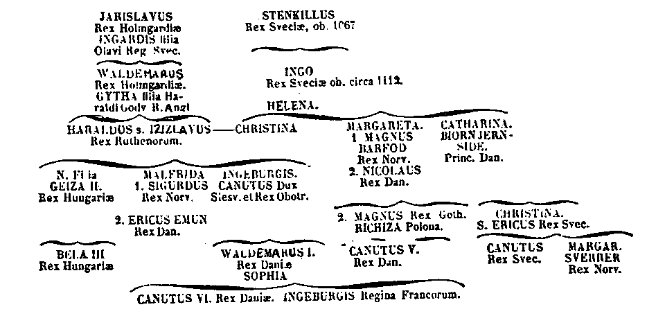
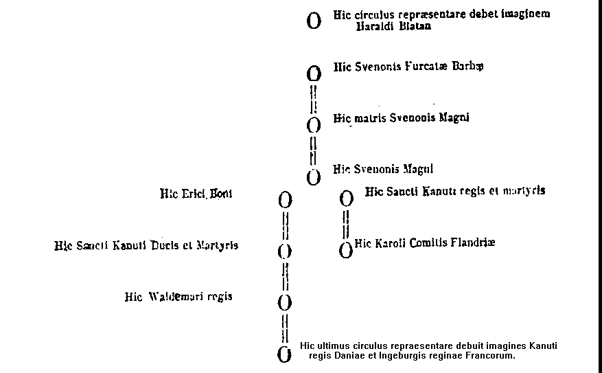
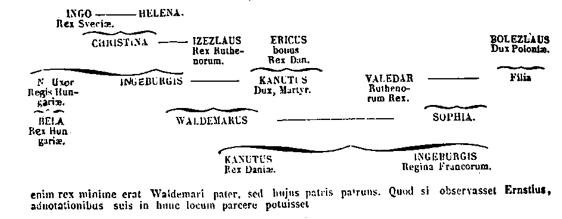
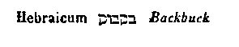

209
PATROLOGIAE CURSUS COMPLETUS
SIVE BIBLIOTHECA UNIVERSALIS, INTEGRA, UNIFORMIS, COMMODA, OECONOMICA, OMNIUM SS. PATRUM, DOCTORUM SCRIPTORUMQUE ECCLESIASTICORUM QUI AB AEVO APOSTOLICO AD INNOCENTII III TEMPORA FLORUERUNT; RECUSIO CHRONOLOGICA OMNIUM QUAE EXSTITERE MONUMENTORUM CATHOLICAE TRADITIONIS PER DUODECIM PRIORA ECCLESIAE SAECULA, JUXTA EDITIONES ACCURATISSIMAS, INTER SE CUMQUE NONNULLIS CODICIBUS MANUSCRIPTIS COLLATAS, PERQUAM DILIGENTER CASTIGATA; DISSERTATIONIBUS, COMMENTARIIS LECTIONIBUSQUE VARIANTIBUS CONTINENTER ILLUSTRATA; OMNIBUS OPERIBUS POST AMPLISSIMAS EDITIONES QUAE TRIBUS NOVISSIMIS SAECULIS DEBENTUR ABSOLUTAS DETECTIS, AUCTA; INDICIBUS PARTICULARIBUS ANALYTICIS, SINGULOS SIVE TOMOS, SIVE AUCTORES ALICUJUS MOMENTI SUBSEQUENTIBUS, DONATA; CAPITULIS INTRA IPSUM TEXTUM RITE DISPOSITIS, NECNON ET TITULIS SINGULARUM PAGINARUM MARGINEM SUPERIOREM DISTINGUENTIBUS SUBJECTAMQUE MATERIAM SIGNIFICANTIBUS, ADORNATA; OPERIBUS CUM DUBIIS TUM APOCRYPHIS, ALIQUA VERO AUCTORITATE IN ORDINE AD TRADITIONEM ECCLESIASTICAM POLLENTIBUS, AMPLIFICATA; DUOBUS INDICIBUS GENERALIBUS LOCUPLETATA: ALTERO SCILICET RERUM, QUO CONSULTO, QUIDQUID UNUSQUISQUE PATRUM IN QUODLIBET THEMA SCRIPSERIT UNO INTUITU CONSPICIATUR; ALTERO SCRIPTURAE SACRAE, EX QUO LECTORI COMPERIRE SIT OBVIUM QUINAM PATRES ET IN QUIBUS OPERUM SUORUM LOCIS SINGULOS SINGULORUM LIBRORUM SCRIPTURAE TEXTUS COMMENTATI SINT. EDITIO ACCURATISSIMA, CAETERISQUE OMNIBUS FACILE ANTEPONENDA, SI PERPENDANTUR: CHARACTERUM NITIDITAS, CHARTAE QUALITAS, INTEGRITAS TEXTUS, PERFECTIO CORRECTIONIS, OPERUM RECUSORUM TUM VARIETAS TUM NUMERUS, FORMA VOLUMINUM PERQUAM COMMODA SIBIQUE IN TOTO OPERIS DECURSU CONSTANTER SIMILIS, PRETII EXIGUITAS, PRAESERTIMQUE ISTA COLLECTIO, UNA, METHODICA ET CHRONOLOGICA, SEXCENTORUM FRAGMENTORUM OPUSCULORUMQUE HACTENUS HIC ILLIC SPARSORUM, PRIMUM AUTEM IN NOSTRA BIBLIOTHECA, EX OPERIBUS AD OMNES AETATES, LOCOS, LINGUAS FORMASQUE PERTINENTIBUS, COADUNATORUM.
SERIES SECUNDA,
IN QUA PRODEUNT PATRES, DOCTORES SCRIPTORESQUE ECCLESIAE LATINAE A GREGORIO MAGNO AD INNOCENTIUM III. ACCURANTE J.-P. MIGNE, BIBLIOTHECAE CLERI UNIVERSAE, SIVE CURSUUM COMPLETORUM IN SINGULOS SCIENTIAE ECCLESIASTICAE RAMOS EDITORE. PATROLOGIA BINA EDITIONE TYPIS MANDATA EST, ALIA NEMPE LATINA, ALIA GRAECO-LATINA. — VENEUNT MILLE ET TRECENTIS FRANCIS SEXAGINTA ET DUCENTA VOLUMINA EDITIONIS LATINAE; OCTINGENTIS ET MILLE TRECENTA GRAECO-LATINAE. — MERE LATINA UNIVERSOS AUCTORES TUM OCCIDENTALES, TUM ORIENTALES EQUIDEM AMPLECTITUR; HI AUTEM, IN EA, SOLA VERSIONE LATINA DONANTUR.
PATROLOGIAE TOMUS CCIX.
ARCHIEPISCOPI.
1855
SAECULUM XIII. SANCTORUM
ABBATIS SANCTI THOMAE DE PARACLITO
OPERA OMNIA
ACCEDUNT
ARCHIEPISCOPORUM;
OPUSCULA, SERMONES, EPISTOLAE.
ACCURANTE J.-P. MIGNE, BIBLIOTHECAE CLERI UNIVERSAE SIVE CURSUUM COMPLETORUM IN SINGULOS SCIENTIAE ECCLESIASTICAE RAMOS EDITORE.
S. MARTINI TOMUS II,
CAETERORUM TOMUS UNICUS.
VENIT 10 FR. GALLICIS.
1855
Sermones de sanctis.
Col.
9
Sermones de diversis.
61
Expositio in Epistolam I B. Jacobi.
183
Expositio in Epistolam B. Petri.
238
Expositio in Epistolam I B. Joannis.
253
Expositio libri Apocalypsis.
299
Tractatus contra Judaeos.
423
Alexandreis.
459
Epistolae.
635
Genealogia regum Danorum.
727
Revelatio reliquiarum sanctae Genovefae.
741
Instrumentum quo S. Wilhelmus anniversarium fundat Absalonis archiepiscopi Lundensis.
743
Diplomata S. Wilhelmi et aliorum.
745
Appendix ad S. Wilhelmum. — Testamentum Absalonis archiepiscopi Lundensis.
756
Epistolae.
825
Diplomata.
829
Epistolae et diplomata.
877
Statuta.
881
Appendix ad Hugonem. — Tractatus Rostangni monachi de translatione capitis S. Clementis papae et martyris a CP. ad Cluniacum tempore Hugonis abbatis.
905
Epistolae et diplomata.
913
Appendix ad Balduinum. — Genealogia comitum Flandriae.
928
Sermones.
991
Vita ven. Patris D. Petris abbatis Claraevallis.
1007
Sermones de Sanctis
[Col. 0009A] Isidorus vir egregius, natione Carthaginensis, a patre Severiano genitus, Hispalensis Ecclesiae episcopus, Leandri episcopi exstitit germanus atque successor sanctissimus. [Col. 0009D] Sic ms. Tolet. ab Henschenio editum, num. 5 et 42. Vir iste beatissimus a pueritia studiis litterarum traditus Latinis, Graecis et Hebraicis litteris instructus, omni locutionis genere formatus, suavis eloquio, ingenio praestantissimus, vita quoque atque doctrina fuit clarissimus. Sic namque de virtute in virtutem proficiens refulsit doctor eximius, ita ut secundum qualitatem sermonis omnibus videlicet Latinis, Graecis et Hebraeis, sapientibus ac minus intelligentibus in eruditione existeret aptus, atque incomparabili eloquentia strenuus. Tantae sapientiae et doctrinae atque sanctitatis fuit vir gloriosissimus, ut recte de eo dicatur: [Col. 0009B] Ecce sacerdos magnus qui in diebus suis placuit Deo et inventus est justus (Eccli. XLIV, et L) .
[Col. 0009D] Isid. lib. VII Etym. cap. 12. Sacerdos nomen habet compositum ex Graeco et Latino: et dicitur sacerdos quasi sacrum dans. Sicut rex vocatus est a regendo, ita sacerdos vocatur a sanctificando et a sacrum dando. Ex causis quippe duabus quisque efficitur sacerdos magnus: prima videlicet ut bene vivat, secunda ut bene doceat. Quamvis bene vivat doctor ecclesiasticus; tamen, si bene non docet, non est magnus, et quamvis bene doceat, tamen si bene non vivit, magnus omnino non erit. [Col. 0010D] Id. lib. III Sent. c. 36. Necessaria est igitur doctrina cum bona vita: nam doctrina sine bona [Col. 0009C] vita doctorem arrogantem reddit, et rursus vita sine doctrina doctorem inutilem facit. Unde Dominus in Evangelio dicit: Qui solverit unum de mandatis istis minimis et docuerit sic homines, minimus vocabitur in regno coelorum; qui autem fecerit et docuerit, magnus vocabitur in regno coelorum (Matth. V) . In hoc loco regnum coelorum congregatio est electorum. Saepe Scriptura Ecclesiam [Col. 0010A] fidelium regnum coelorum vocat, quia pro eo quod ad coelestia anhelat, jam in ea Dominus quasi in coelo regnat. Qui ergo solverit unum de mandatis Domini nostri Jesu Christi, id est qui illud opere non impleverit, et docuerit sic homines ut illud impleant, minimus vocabitur in regno coelorum, scilicet in congregatione fidelium. Ac si aperte diceret: Qui mandata mea implere neglexerit, et homines ut impleant illa docuerit, minimus vocabitur, scilicet in sancta Ecclesia imperfectus erit. De hoc etiam Dominus alibi dicit: Dicunt et non faciunt (Matth. XXIII) . Sequitur: Qui autem fecerit, id est qui opere impleverit mandata mea, et docuerit homines, ut impleant illa, magnus erit, scilicet idoneus in sancta Ecclesia. Operibus ergo [Col. 0010B] confirmanda est sacerdotis praedicatio, ita ut quod docet verbo, instruat exemplo.
Bene etiam illud convenit ad confirmandum hoc testimonium quod legitur in Canticis canticorum: En lectulum Salomonis sexaginta fortes ambiunt ex fortissimis Israel, omnes tenentes gladios, et ad bella doctissimi; uniuscujusque ensis super femur suum, propter timores nocturnos (Cant. III) . [Col. 0010D] Gregor. in hunc loc. Salomon quippe pacificus interpretatur. Quis ergo per Salomonem nisi Christus intelligitur, de quo scriptum est: Ipse est pax nostra qui fecit utraque unum (Eph. II) . Lectulus Salomonis scilicet Christi sancta Ecclesia est, quia dum a mundanis sollicitudinibus recedit, dum cor ab omni terrena contagione per poenitentiam mundare non desinit, [Col. 0010C] dumque toto mentis desiderio ad coelestem patriam tendit, quasi lectulum facit in quo Christus delectabiliter requiescit. Unde ipse amicabiliter suis discipulis dicit: Ecce ego vobiscum sum omnibus diebus usque ad consummationem saeculi (Matth. XXVIII) . Et iterum per prophetam dicit: Inambulabo et ero in illis, et ipsi erunt mihi populus, et [Col. 0011A] ego ero illis Deus (Lev. XXVI) . Sexaginta fortes qui lectulum Salomonis ambiunt, praelatos Ecclesiae ostendunt qui eam verbis atque exemplis muniunt, et ab ea hostes visibiles et invisibiles tam orationibus quam praedicationibus repellunt: Omnes, inquit, tenentes gladios et ad bella doctissimi existunt. Quid per gladium, nisi verbum Dei figuratur, et quid per manus, quibus gladios tenent, nisi operatio designatur? Quia videlicet dum verbum Dei opere complent quod corde sciunt, magis ac magis semper docti inimicos Ecclesiae sapientia et fortitudine vincunt. Ad bella spiritalia doctissimi sunt, quia prius in se, deinde in sibi subjectis vitia resecare sciunt. Ad bella doctissimi existunt, quia Dei praecepta, quae verbo praedicant, [Col. 0011B] opere perficiunt. Sunt ad bella prudentes atque doctissimi, quia gladio discretionis in se et in aliis subjectis sibi superflua resecant, ac delectabilia hujus mundi. De quibus bene subditur: Uniuscujusque ensis super femur suum propter timores nocturnos. Quid per ensem nisi rigorem conversationis, et quid per femur nisi carnis appetitum accipimus? Praelati ergo Ecclesiae qui jam ad virtutum perfectionem pervenerunt, semper ensem super femur suum ferunt, quia rigore conversationis appetitum carnis assidue frangunt, ne hostis quem in nocte hujus mundi pertimescunt, repente veniens, eos debiles ac dissolutos in Dei opere inveniat, et per voluptatis mollitiem et carnis delectationem facilius se sibique subjectos decipiat, [Col. 0011C] atque ad graviora peccata perducat.
Ille ergo in regno coelorum, hoc est in Ecclesia vocatur magnus qui ea quae praedicat verbis, bonis implet operibus. Dicatur ergo de beato Isidoro: Ecce sacerdos magnus qui in diebus suis placuit Deo et inventus est justus. Revera magnus, quia opera Dei quae verbis praedicavit, factis implevit [Col. 0011D] Ms. Toletan. apud Henschen c. 2, num. 43, circa medium. . Recte utique dicitur sacerdos magnus quem Deus suscitavit Hispaniae novissimis temporibus post tot defectus, credo ad restaurandam antiquorum sapientiam virorum quae prae nimia antiquitate pene jam defecerat in humanis mentibus; ne diutius ignorantia ac rusticitate veterasceret populus Christianus. Sic namque plenus charitate et sapientia [Col. 0011D] non abscondit in terra talenta sibi credita, sed in commune omnibus divisit illa, atque ut bonus negotiator Domino reportavit duplicata (Matth. XXV) , dum multorum mentes praedicando sollicitavit ad coelestia desideranda [Col. 0011D] Ibid. n. 44, circa finem. . Sicut enim Gregorius doctor Petri apostoli successor exstitit, ita beatus Isidorus Jacobo apostolo successit, quia semen aeternae vitae quod beatissimus Jacobus seminavit, hic doctor egregius verbo praedicationis quasi unus [Col. 0012A] ex quatuor paradisi fluminibus sufficienter irrigavit, atque universam Hispaniam tam exemplo boni operis quam fama sanctitatis velut splendidissima lampada illuminavit [Col. 0011D] Edit. ibid. splendidissimus solis radius. Lampada pro lampades a Pollione usurpari ait Dufresne, ex mss. codicibus observavit Salmasius . . . et apud Plautum: Tene hanc lampadam. Sermo [Col. 0012D] 56, in Append. Fulgentii hanc vocem usurpat: O bona lampada, inquit auctor, non quae diligit saeculum, sed quae diligit coelum, et infra: Sunt multi qui diem vocant lampadam. .
Ezechiel propheta, in visione quatuor animalium, sic ait inter caetera: Et similitudo, inquit, animalium et aspectus eorum quasi carbonum ignis ardentium, et quasi aspectus lampadarum (Ezech. I) . Per quatuor haec animalia multitudo sanctorum est figurata; aspectus vero eorum carbonibus ignis atque ardentibus comparatur lampadibus, quia quisquis sanctis viris conjungitur, ex eorum imitatione atque doctrina in amore Creatoris accenditur [Col. 0012D] Ex Gregor. lib. I Hom. in Ezech., hom. 5, n. 6. . Sed tamen hoc inter carbones et lampades distat, quod carbones quidem ardent, sed ab eo [Col. 0012B] loco tenebras non expellunt in quo jacent. Lampades autem, quia magno flammarum lumine resplendent, diffusas in circuitu tenebras illuminant. Ex qua re notandum est, quia sunt plerique sanctorum ita simplices et occulti, atque in minoribus locis sub magno silentio absconditi, ut vita eorum vix ab aliis poscit agnosci. Quid itaque sunt isti nisi carbones, qui etsi per fervorem spiritus ardorem habent, tamen exempli famam non habent, nec in alienis cordibus tenebras peccatorum illuminant, quia vitam suam aliis omnino celant? Sibimetipsis quidem accensi sunt, sed aliis exemplo luminis non sunt. Isti quamvis ardeant igne divinae charitatis, tamen alios non accendunt fama sanctitatis nec verbo praedicationis. Lampades vero [Col. 0012C] longius lucent, et cum in alio loco sint, in alio resplendent, quia quicunque exemplo boni operis et verbo praedicationis refulget, ejus opinio longe lateque ut lampas lucet. Cum autem proximi bona ejus audiunt, per haec ad amorem coelestium bonorum consurgunt. In eo autem quod se per bona opera exhibent, quasi ex lampadis lumine resplendent. Cum ergo sancti viri quosdam juxta se positos quasi tangendo, ad amorem patriae coelestis accendunt, carbones sunt; quando vero quibusdam longe positis lucent, ne in peccatis suis tenebras corruant, eorum itineri lampades fiunt. Jure ergo lampades appellantur qui et exempla virtutum praestant, et lumen boni operis per vitam et verbum [Col. 0012D] aliis demonstrant. Revera ut lampades resplendent, qui et per amorem Creatoris et per flammam bonae praedicationis de cordibus peccatorum tenebras repellunt erroris. Qui igitur in occulto bene vivit, sed aliis non proficit carbo est, qui vero imitatione sanctitatis in Ecclesia positus, lumen ex se rectitudinis multis praebet, lampas est, quia et sibi ardet et aliis lucet.
Recte ergo hic beatissimus vir lucenti lampadi [Col. 0013A] comparatur, quia et praesentes et absentes tam verbo praedicationis quam fama sanctitatis illuminabat, eosque ad amorem coelestis patriae accendebat. Congrue siquidem lucernae ardenti comparatur, quia et in amore Dei et proximi ardebat, et de aliorum cordibus tenebras peccatorum effugabat. Quicunque ad eum accedebant, suae assiduitate visionis et usu locutionis, atque exemplo boni operis lumen veritatis accipiebant, et in desiderio aeternae lucis inardescebant.
[Col. 0013C] Ms. Tolet. n. 43, apud Henschen. Hic enim vir beatissimus inter caetera sanctitatis opera quae in Christi Ecclesia sapienter egit, malignam Acephalitarum haeresim confudit atque destruxit qui in Christo duas substantias negantes, unam in ejus persona naturam praedicabant, dum [Col. 0013B] illum non verum Deum ac Dei Filium, sed tantummodo purum hominem fuisse asserebant. Gregorio namque praefatae haeresis antistite superato, et sanctarum testimoniis Scripturarum auctoritate convicto docuit duas in Christo fuisse naturas, divinam scilicet et humanam. Divinam, qua Deo Patri semper est coaeternus et coaequalis; humanam, qua pro nostra salute temporaliter fieri dignatus est Filius hominis, id est Virginis.
Et quid de illius sanctitate atque sapientia dicam? Nimirum humana lingua ad plenum narrare non sufficit quanta bona Deus per eum Ecclesiae suae contulit, quamque utilis ignoranti populo ac senescenti mundo fuerit, dum in Chronica sua aetates saeculi et temporum series aperuit. Chronica [Col. 0013C] Graece, Latine series temporum appellatur. Chronos enim Graece, tempus interpretatur Latine. Temporum igitur series et saeculi aetates nescienti populo aperuit, sacrorum jura ostendit, sacerdotibus ecclesiastica officia et gradus cunctorum ordinum exposuit, regibus et principibus leges instituit, judicibus avaritiam interdixit, civibus et cunctis domesticis fidei populis disciplinam Christianae religionis [Col. 0014A] insinuavit; ad ultimum vero sedium, regionum, locorum, omnium divinarum humanarumque rerum nomina, genera, officia, causas, et quaeque obscura atque ab humanis mentibus fere jam remota, scribendo patefecit [Col. 0013C] Ibid., n. 44. . Floruit sapientia et sanctitate temporibus Mauritii et Phocae imperatorum, sub Recaredo rege Gothorum. Fuit enim in eleemosynis largus, hospitalitate praecipuus, corde severus, in sententia verax, in judicio justus, in praedicatione assiduus, in exhortatione laetus, in lucrandis Deo animabus studiosus, in expositione Scripturarum cautus, in consilio providus, in habitu humilis, in mensa sobrius, in oratione devotus, honestate praeclarus, omni bonitate conspicuus. Praeterea Pater exstitit clericorum, consolator moerentium, [Col. 0014B] tutamen pupillorum ac viduarum, levamen oppressorum, defensor civium, persecutor haereticorum, malleus superborum. Et quid amplius dicam? Speculum omnium bonorum factus est mundo, et ideo, ut credimus, jam sine fine regnat cum Christo. Obiit tempore Heraclii imperatoris, et Suintillae [Col. 0013C] Si nomen regis Suintillae manu infida et recentiori (et abs dubio post scriptum Salmanticense exemplar quod habet Suintillae ) nostro ms. non fuerit appositum, recte coaptabantur tempus regis et annus obitus Isidor. 622, seu aera 660. Sed [Col. 0013D] quoniam ms. Toletanum eum habeat errorem in assignanda aera et postea sub rege Cintilla seu Cintillano dicat obiisse Isidorum, non ambigimus nostrum ms. eodem errore laborasse quem sanare voluit corrector. Hallucinatum dicimus auctorem seu exscriptorem codicis Toletani, cum asseruerit annum mortis S. Isidori esse sexcentesimum vicesimum [Col. 0014C] secundum; jam enim omnes consensere in sexcentesimo trigesimo sexto, nixi auctoritate redempti clerici sive archidiaconi ejusdem S. praesulis, S. Braulionis et S. Ildephonsi. Sed non mirum praefatum auctorem seu exscriptorem in illum errorem lapsum; nam ita misere caecutivit hac in re, ut primum dicat defunctum Isidorum temporibus [Col. 0014D] Cintillani, postea eum floruisse usque ad Sisenandum, et statim illum obiisse temporibus Suintillani aera 660, novem videlicet annis antequam Sisenandus regnare inciperet, et quatuordecim antequam Cintillanus; quod miramur haud Henschenium adnotasse. Hispaniae regis, illius videlicet Heraclii qui crucem Dominicam quam impius rex Cosroe asportaverat, loco suo Hierosolymis restituit atque exaltavit Dormivit autem beatus Isidorus cum patribus suis aera 655. Sana doctrina sanoque consilio praestantior cunctis, et copiosus operibus charitatis, sepultusque est in senectute bona. Interea, fratres charissimi, dignum est ut hunc sanctissimum [Col. 0014C] confessorem attentius exoremus, quatenus pro nobis miseris peccatoribus, qui adhuc in periculis animarum nostrarum constituti sumus, apud Deum intercessor existat assiduus, ut ejus sacratissimis meritis et precibus post hanc vitam ad societatem electorum Dei pervenire possimus. Ipso praestante qui in Trinitate perfecta vivit et regnat Deus per omnia saecula saeculorum. Amen.
[Col. 0013D] Isaias propheta vir nobilis et plenus Dei gratia, cujus tanta fuit sanctitatis et vitae excellentia, ut unam tantum cilicinam indueretur tunicam, qua [Col. 0014D] etiam postmodum abjecta pro peccato populi sacco operiretur membra (Isai XXI) ; qui etiam apertius quam caeteri Christi et Ecclesiae praedicando sacramenta, [Col. 0015A] potius evangelista dicendus est quam propheta, in lectione hodierna Spiritus sancti inflammatus igne, ait inter caetera: « Dominus ab utero vocavit me, de ventre matris meae recordatus est nominis mei (Isai. XLIX) , et reliqua. Licet, fratres charissimi, haec verba Isaiae prophetae specialiter ad solum Christum pertineant, tamen quia Christus caput est Ecclesiae, et Ecclesia, id est omnes fideles Christi corpus sunt, ista quae de capite, id est de Christo, dicta sunt, etiam membris non incongrue, imo apte convenire possunt. Igitur ea quae proposuimus repetamus: Dominus ab utero vocavit me, de ventre matris meae recordatus est nominis mei. Hoc de Christo dictum fuisse manifestum est quando Gabriel archangelus de partu virginali dixit Joseph: [Col. 0015B] Et vocabis nomen ejus Jesum, ipse enim salvum faciet populum suum a peccatis eorum (Matth. I) . Hoc etiam beato Joanni quasi uni ex membris Christi electo satis convenire praedocet Elisabeth sancta, quae intra uteri sui claustra eumdem filium suum in adventu Salvatoris exsultasse testatur, loquens ad beatissimam Mariam: Ecce ut facta est vox salutationis tuae in auribus meis, exsultavit in gaudio infans in utero meo (Luc. I) . Hoc etiam praeostendit idem archangelus Gabriel, qui cum antequam nasceretur, nomen ejus et vitam praenuntiaret, de magnitudine virtutis ejus addidit dicens: Et Spiritu sancto replebitur adhuc ex utero matris suae. «Vere hic omnium exstitit parvulorum beatissimus qui intra materna adhuc viscera inclusus, Salvatorem [Col. 0015C] mundi adesse, etsi necdum lingua poterat, Spiritu sancto repletus, prophetico gaudio demonstrabat [Col. 0015] Quae ansulis includimus, verba sunt S. Maximi, homil 1, in die nativitatis Joannis. .» Etiam et illud bene Joanni convenit, quod Jeremias vaticinando ait: Priusquam te formarem in utero novi te, et antequam exires de ventre sanctificavi te, et prophetam in gentibus dedi te (Jer. I) .
Sequitur: Et posuit os meum quasi gladium acutum (Isai. XLIX) . Os Dei Patris proprie et principaliter Christus est per quem Deus Pater huic mundo manifestatus est. Unde idem Dominus noster Jesus Christus in Evangelio Deo Patri loquitur dicens: Manifestavi nomen tuum hominibus, quos dedisti mihi (Joan. XVII) . Os et Christi Joannes exstitit, qui Christum terris praenuntiavit. Os etiam [Col. 0015D] Christi sancti apostoli fuerunt, qui Christum gentibus praedicaverunt: Et posuit os meum quasi gladium acutum. Gladius acutus Christus est, quia spiritu oris sui interficiet impium (Isai. XI) . De hoc gladio dicitur in Evangelio: Non veni pacem mittere, sed gladium (Matth. X) . Ac si diceret: Veni malos a bonis segregare, et filios a parentibus separare. Veni, inquit, separare hominem a patre suo, et filiam a matre sua, et nurum a socru sua et, odio mei nominis erunt, inimici hominis domestici ejus (ibid.) . Quid tamen sit iste gladius, evidenter exponit Apostolus: Gladium, inquit, Spiritus accipite, quod est verbum Dei (Eph. VI) . Gladius [Col. 0016A] Spiritus sancti, id est quem dat Spiritus sanctus. Est enim verbum Dei bis gladius acutus, docens de temporalibus et de aeternis: illis consolationem in veteri testamento tribuens, istis perfectionem in novo promittens, et in hoc mundo quaecunque percutit, dividens. De hoc etiam gladio Joannes in Apocalypsi scripsit dicens: De ore Filii hominis, id est Christi, gladius ex utraque parte acutus exibat (Apoc. I) , videlicet de ore praedicantium, quia sancti doctores os Christi sunt, sicut Joannes, sicut apostoli, et sicut caeteri praedicatores. Ab eis ergo secreta Christi aperientibus gladius ex utraque parte exibat acutus, id est sermo divinus; quia sicut gladius separat animam a corpore, ita sermo divinus separat hominem a mundano et carnali [Col. 0016B] amore. De ore Christi gladius bis acutus exibat, scindens corporalia et spiritualia vitia, vel secundum novum et vetus testamentum, vel secundum litteram et spiritum, vel secundum divinitatem et humanitatem. Aliter: Gladius ex utraque parte acutus tam praedicantis quam audientis vitia resecans, de quo gladio legitur in Psalmo: Accingere gladio tuo super femur tuum, potentissime (Psal. XLIV) ; congrue praedicator ecclesiasticus super femur gladio jubetur esse accinctus, ut in aliis vitia resecaturus, prius in seipso studeat refrenare fornicationis motus. Quicunque ergo in aliis vitia cupit emendare, prius in se debet superflua resecare, sicut Paulum apostolum legimus dixisse: Castigo corpus meum et in servitutem redigo; ne forte [Col. 0016C] cum aliis praedicaverim, ipse reprobus efficiar (I Cor. IX) . Unde Dominus dicit in Evangelio: Hypocrita, ejice primum trabem de oculo tuo, et tunc perspicies, ut educas festucam de oculo fratris tui (Matth. VII) . Unde etiam Paulus apostolus ait: Qui alium doces, te ipsum non doces: qui praedicas non furandum, furaris: qui dicis non moechandum, moecharis (Rom. II) . Et Dominus in Psalmo: Tu qui odisti disciplinam, et projecisti sermones meos retrorsum: quare enarras justitias meas, et assumis testamentum meum per os tuum? (Psal. XLIX.)
Heu mihi misero qui ab oculis meis trabes gravissimas non ejicio, et in oculis fratrum meorum festucas parvas considero! Me ipsum a peccatis gravissimis [Col. 0016D] non emendo, et fratres meos de levissimis culpis reprehendo. Tamen vos moneo, fratres dilectissimi, ut propter iniquitates et infinitas negligentias meas non vos pigeat audire verba Spiritus sancti, quia Dominus praedicatoribus dicit: Non vos estis qui loquimini, sed spiritus Patris vestri loquitur in vobis (Matth. X) . Nolite ergo verba Dei quae a me audistis despicere, sed ea quantocius bonis implere operibus festinate. Ad ea ergo quae proposuimus, redeamus.
Idcirco beatus Joannes ut seipsum praeberet formam doctrinae ecclesiasticis praedicatoribus, prius studuit implere bonis operibus ea quae postmodum [Col. 0017A] erat aliis praedicaturus, ne de aliqua culpa reprehenderetur ab auditoribus. Inde est etiam quod carnem suam cum vitiis et concupiscentiis crucifigebat, deserta loca inhabitabat, sacerdotum delicias contemnebat, corpus suum asperrimis indumentis domabat, zona mortificationis lumbos praecingebat, nec vinum nec siceram, nec omne quod inebriare potest bibebat, modico et tenui contentus cibo; divitias hujus mundi perfecte despiciebat. Sic prius semetipsum castigans rigore virtutis, ut increpaturus mala perfidae gentis nullam haberet reprehensionem in vestibus vel in epulis; unde recte posset reprehendi ab aliis. Deinde securus ac Dei gratia roboratus increpat populum de suis pravis actibus. Genimina, inquit, viperarum, quis ostendit [Col. 0017B] vobis fugere a ventura ira? Facite fructus dignos poenitentiae. Quare? Quia jam securis ad radices arboris posita est. Omnis arbor quae non facit fructum bonum excidetur, et in ignem mittetur (Matth. III) . Ille dignos poenitentiae fructus facit qui quanto gravius delinquit, tanto laboriosius in acquirendo fructum bonorum operum desudare poenitendo non desistit. Tanto enim quisque majora debet lucra bonorum operum quaerere per poenitentiam, quanto majora sibimetipsi intulit damna per culpam.
Iterum subjungit dicens: In umbra manus suae protexit me (Isai. XLIX) . In umbra manus Dei Christus specialiter protectus exstitit, quia vilitas carnis divinitatis potentia tecta fuit, sicut angelus ad gloriosissimam Virginem nuntiando ait: Spiritus [Col. 0017C] sanctus superveniet in te, et virtus Altissimi obumbrabit tibi (Luc. I) . Haec divinitatis potentia ita beatissimam Virginem contra vitiorum aestus obumbravit, et interius exteriusque virtutibus roboravit, atque in tantum in exterioribus eam actibus debilitavit, ut nunquam eam nec in cogitatione, nec in locutione, nec in actione peccare permiserit. Unde beatus Augustinus dicit: «Cum de peccatoribus aliqua disputo, hanc solam beatissimam Virginem, et eum qui ex ea natus est, sine peccato esse affirmo [Col. 0017D] De natura et gratia, contra Pelagianum, 42. .» Bene etiam beatus Joannes Baptista protectus fuisse non dubitatur gratia virtutis Dei, quia nec in prosperis nec in adversis poterat vinci, tanquam ejusdem gratiae clypeo munitus inexpugnabili, [Col. 0017D] Non eum prospera elevabant, nec adversa frangebant, testimonio Veritatis approbante, quae eum laudando asserebat, arundinem vento agitatam non esse (Matth. XI) . Unde idem Joannes non immerito Dei gratia interpretatur.
Sequitur: Posuit me sicut sagittam electam (Isa. XL) . In hoc autem quod sagittam electam dicit, Deum plurimas habere sagittas ostendit. Sed tamen de multis sagittis Christus specialiter una sagitta electa est; sicut de plurimis filiis singularis et unigenitus filius est. Hac sagitta in Canticis canticorum sponsa vulneratam se commemorat, dicens: Vulnerata charitate ego sum (Cant. II) . Caeterae [Col. 0018A] vero sagittae Domini prophetae et apostoli sunt, qui per totum mundum discurrunt, de quibus in Psalmo canitur: Sagittae tuae acutae, populi sub te cadent in corda inimicorum regis (Psal. XLIV) . Et iterum: Sagittae potentis acutae cum carbonibus desolatoriis (Psal. CXIX) . Idem sagittae significant in sacris Scripturis quod et gladius; nam sagittae dicuntur praedicationes sive Dei sermones. Sed in hoc sagitta et gladius distare videntur, quia gladius prope ferit, sagittae vero longius emittuntur. Sic ergo incomprehensibilis Dei potentia demonstratur, quam nullus potest vitare, sive positus sit longe, sive prope. Istae sagittae sunt acutae quia penetrant usque ad divisionem corporis et animae. Unde dicit Apostolus: Vivus est sermo Dei et efficax et penetrabilior [Col. 0018B] omni gladio ancipiti: et pertingens usque ad divisionem animae ac spiritus, compagum quoque et medullarum, discretor cogitationum et intentionum cordis (Hebr. IV) . Vere sermo Dei efficax est et vivus, id est Dei Filius quem mortuum esse putat infidelis populus, omnia facit quaecunque minatur; et est penetrabilior omni gladio ancipiti, quia non membra tantum penetrans sicut materialis gladius, sed etiam propriae virtutis ictu pertingens usque ad divisionem animae ac spiritus. Saepe in divinis Scripturis anima ponitur pro vita, unde est illud: Qui amat animam suam, perdet eam (Joan. XII) . Ac si diceret: Qui amat praesentem vitam, perdet aeternam. Ideoque in hoc loco per animam vitia carnalia accipiuntur, quae actu corporis sunt, ut est luxuria, [Col. 0018C] furtum, rapina, et caetera quae ad actus corporis referuntur. Per spiritum vero spiritualia intelliguntur vitia, scilicet superbia, cupiditas, invidia et caetera quae ad mentem pertinent. Est igitur sermo ille pertingens usque ad divisionem compagum et medullarum. Ac si diceret: Est discretor cogitationum et intentionum cordis. Per compages enim cogitationes accipimus quae sibi invicem compaginantur. Per medullas vero secretissimas et magis intimas intentiones cordis intelligimus. Has ergo a se invicem divinus sermo dividit, cum qualis sit cogitatio et qualis intentio discernit. Saepe namque bona sunt quae cogitantur, sed mala intentione. Saepe vero aut bonum aut malum cogitamus, sed in [Col. 0018D] his sermo divinus non errat ut bonum pro malo, aut malum pro bono accipiat. Est ergo divinus sermo discretor cogitationum et intentionum quia subtilitate cognoscit quid quisque agat et quo animo agat. Unde Psalmista ait: Scrutans corda et renes Deus (Psal. VII) . In corde sunt cogitationes et in renibus delectationes. Deus igitur scrutatur corda quia scit ea quae unusquisque cogitat: scrutatur etiam renes, quia cognoscit in quo quisque maxime delectatur, sive in castitate, sive in luxuria. Non immerito etiam et Joannes sagitta electa est, quia non solum cum caeteris sanctis ante mundi constitutionem per Christum electus est, sed etiam ad [Col. 0019A] ipsum conceptum ab angelo est praenuntiatus, et in utero matris a Christo salutatus et sanctificatus atque electus non dubitatur. «Adeo enim, sicut beatus Maximus asserit, in eo specialis electio praefulsit, ut ante mereretur annuntiare Dominum, quam nascendi haberet initium, vel loquendi acciperet officium [Col. 0019C] Hom. 1, in die Nativit. Joan. .
De hoc etiam beatissimo viro Dominus dicit in Evangelio: Erat lucerna ardens et lucens (Joan. V) ; ardens videlicet amore, lucens sermone. Plenus dilectione Dei et proximi ardebat, plenus Spiritu sancto sermone praedicationis lucebat. Per dilectionem Dei ardebat coelestia desiderando, per dilectionem proximi lucebat bona praedicando. Per charitatem Dei terrena despiciendo ad coelestia [Col. 0019B] anhelabat, per charitatem proximi verbo exhortationis mentes hominum illuminabat. Per charitatem Dei in hoc mundo corpus proprium mortificabat; per charitatem proximi mala increpando, adventum Filii Dei annuntiando, corda hominum ad coelos erigebat. Tamen, fratres charissimi, Joannes Baptista non ostendebat splendorem suarum virtutum in domo parentum, sed foris in conspectu populorum; nec lucebat in domo sed in publico. Comparemus ergo eum, si placet, lapidi Chalcedonio. Lapis Chalcedonius in numero duodecim pretiosorum lapidum quibus Jerusalem coelestis civitas Regis magni fundatur atque ornatur, ponitur tertius (Apoc. XXI) . Hic lapis, ut fertur, non lucet in domo, sed sub dio, hoc est sub aere, id est sub claritate [Col. 0019C] diei foris in aperto. Dicitur enim splendorem emittere quasi pallentis atque ardentis lucernae. In hoc igitur quod non lucet in domo significat eos qui sua bona opera faciunt in occulto, sicut ait Dominus in Evangelio: Nesciat sinistra tua quid faciat dextera tua (Matth. VI) . In eo autem quod hic lapis Chalcedonius non lucet in domo sed foris in aperto, significat illos qui aliqua inevitabili cogente necessitate ad publicum exeunt, et ibi volendo nolendo [Col. 0020A] quasi coacti proximis suis bona sua opera ostendunt. Unde scriptum est: Luceat lux vestra coram hominibus, ut videant opera vestra bona et glorificent Patrem vestrum qui in coelis est (Matth. V) . De quorum numero iste vir beatissimus exstitit, quia quandiu in domo parentum suorum habitavit, bona opera sua metu elationis occultavit. Postquam autem ad praedicandum foras exivit, omnem provinciam, imo omnem Ecclesiam illuminavit et viam Domino praeparavit, atque hominum mentes de terris ad coelos sublevavit.
Fratres charissimi, dum beati Joannis Baptistae virtutes ad memoriam reducimus, necesse est, ut nosmetipsos interius exteriusque consideremus, et ut peccata nostra quotidianis lacrymis lavemus. [Col. 0020B] Ideo ante oculos nostros proposuit Deus sanctorum Patrum exempla, ut nos sequendo eorum vestigia, Spiritus sancti adjuti gratia, possimus promereri aeterna gaudia. Nulla igitur jam ignorantia nos a peccato excusat, quia et lex Dei aures nostras quotidie pulsat, et sanctorum Patrum exemplum indesinenter nos ad bene operandum invitat. Jam ergo «vox turturis audita est in terra nostra (Cant. II) ,» id est vox apostolorum et sanctorum Patrum praedicantium, nosque ad bene vivendum verbis atque exemplis admonentium. Igitur, fratres dilectissimi, orandus est Deus, ut virtutes quas suis sanctis praeparavit ad coronam, nobis sint ad profectum et non ad poenam. Proficient autem ad profectum [Col. 0020C] nostrum, si tot et tanta imitari voluerimus exempla virtutum, Oportet ergo nos, charissimi, cum omni devotione Deum exorare ut per intercessionem beati Joannis Baptistae ipse nos faciat seipsum timere et diligere, atque in omnibus sua praecepta custodire, et post obitum nostrum ad coeleste regnum pervenire, qui in Trinitate perfecta vivit et regnat Deus per omnia saecula saeculorum. Amen.
[Col. 0019D] Maria Virgo assumpta est ad aethereum thalamum, in quo Rex regum stellato sedet solio. Maria est illuminatrix dicta pro eo quod aeternae lucis est porta, per quam sedentibus in tenebris et umbra mortis lux est exorta. Illa enim genuit aeterni Patris Filium, qui illuminat omnem hominem venientem in hunc mundum (Joan. I) . Maria etiam stella maris interpretatur, quia per eam hoc mare magnum et spatiosum, id est praesens saeculum illuminatur, et in eo navigantibus nobis ab ea portus aeternae [Col. 0020D] quietis ostenditur. Ipsa enim quasi stella clarissima humanum genus illuminavit, eique inter tenebras ac procellas hujus fluctivagi maris viam rectam monstravit per quam ad littus perpetuae stabilitatis pervenire potuit. Maria etiam Syra lingua nuncupatur Domina. Et satis pulchre dicitur domina, quia per Dominum quem genuit, domina est in coelo et in terra. Congrue in coelo et in terra dicitur domina quia omnia Christo famulantia cum omni devotione ac reverentia sunt illi subjecta. Revera [Col. 0021A] domina et in coelo et in terra, quia ab initio figuris et aenigmatibus est praesignata a patriarchis et prophetis, revelante Spiritu sancto, praenuntiata. Ab ipsa etiam nativitate a sanctis angelis est custodita et comitata ac venerabiliter salutata. Praeterea a Deo Patre gloriosissime est veluti sponsa obumbrata ac donis coelestibus ditata, et a Spiritu sancto illuminata ac repleta, atque a Jesu Christo Filio ejus integritate perpetuae virginitatis dicata et consecrata, ab evangelistis vero ostensa atque monstrata. Joannes etiam evangelista cui eam Christus de cruce commisit (Joan. XIX) , illam usque ad finem vitae custodivit, eique in necessitatibus fideliter ac devote ministravit, atque eam ut credimus post dormitionem in mausoleo quod est in vallis [Col. 0021B] Josaphat medio composuit ac decenter collocavit.
Mausolea sunt sepulcra seu monumenta regum, dicta a Mausoleo rege Aegyptiorum [Col. 0021D] Ex B. Isidor, lib. XV Etym., c. 11. . Post mortem vero hujus Mausolei regis uxor ejus regina super corpus ejus construxit sepulcrum nimiae magnitudinis et mirae pulchritudinis, in tantum ut omnia pretiosa monumenta regum atque principum in partibus Orientis mausolea nuncupentur ex nomine Mausolei regis. Impletum ergo videmus quod hinc sacratissimae Virgini Mariae Gabriel praedixit archangelus: Ave, inquit, Maria, gratia plena, Dominus tecum (Luc. I) . Vere in Maria gratia erat plena, cui tam devote, sicut jam supra diximus, coelestia ministrabant ac terrestria. Vero in [Col. 0021C] Maria gratia plena fuit, per quam aeterni Patris Filium generare potuit, et universam pravitatem haereticorum, magorum, atque philosophorum interemit. Talibus ergo decebat hanc augustissimam Virginem oppignorari, id est ditari muneribus, ut esset gratia plena et ut reverenter ei obsequia exhiberentur angelica, quae dedit coelis gloriam, terris Deum, pacem refudit, fidem gentibus, finem vitiis, vitae ordinem, moribus disciplinam. Coelis gloriam dedit quando angelus Christum pastoribus nuntiavit et statim angelicus chorus in excelsis Deo gloriam cecinit, atque in terra pacem hominibus bonae voluntatis redditam esse nuntiavit (ibid.) ; Deum terris dedit, quia nobis genuit Filium Dei [Col. 0021D] omnipotentis, qui nos suo pretioso sanguine de manu inimici redemit, atque a periculo aeternae damnationis liberavit; pacem refudit quia homines Deo reconciliavit, et angelos ad pacem hominum revocavit; dedit fidem gentibus, quia homines qui ignorando verum Deum longo tempore servierant idolis, per ejus partum conversi sunt ad fidem et cognitionem sui Creatoris; dedit etiam finem vitiis, quia per baptismum et mysterium sacratissimi corporis Christi fideles populi absolvuntur a vinculis tam originalis quam actualis peccati, ita duntaxat ut deinceps abrenuntient operibus diaboli, et ut fideliter colla subjiciant suavi jugo servitutis Christi; [Col. 0022A] vitae ordinem dedit, quia Christus Ecclesiam suam ordinavit atque praepositos instituit, et minoribus majoribus obedire praecepit. Unde Paulus apostolus dicit: Quaecunque ordinata sunt, a Deo ordinata sunt, et: Qui resistit potestati, Dei ordinationi resistit (Rom. XIII) . Moribus disciplinam dedit, quia Christus qui ex ea natus est, peccantibus poenitentiam imposuit; ut, qui post baptismum sese peccatis et vitiis subdidit et vestem innocentiae inquinavit, rursum per puras orationes et lacrimas atque jejunia et per caetera bona opera suorum veniam peccatorum consequi possit. Unde ipse Dominus per prophetam dicit: Nolo mortem peccatoris, sed ut magis convertatur et vivat (Ezech. XVIII) . Vere in hac nobilissima Virgine fuit gratia plena, [Col. 0022B] per quam tanta et innumerabilia bona accepit sancta Ecclesia. Quibus igitur eam laudibus digne possumus honorare per quam aeternae salutis pignus meruimus accipere? Aut quas ei gratias referre valebimus per cujus partum coelestis regni aditum invenire potuimus? Aut quid nos in ejus tentamus dicere laudibus quae divinis est et angelicis laudata et glorificata praeconiis excellentius? Nimirum humanus sermo laudes explicare non valet verbis hujus sacratissimae atque gloriosissimae Virginis, maxime cum nec vita concordet, nec facundia suppeditet, nec scientia abundet. Procul dubio pavet coelum, stupet terra, ignorat ratio, mens non capit humana, quin etiam miratur omnis creatura quod ei per Gabrielem archangelum [Col. 0022C] annuntiatur et quod in ea per Christum adimpletur.
Unde in Canticis canticorum Spiritus sanctus ex persona supernorum civium in ejus ascensione admirans ait: Quae est ista quae ascendit per desertum sicut virgula fumi ex aromatibus myrrhae, et thuris? (Cant. III.) Ascendebat ergo per desertum hujus mundi quasi virgula fumi, quia nimirum gracilis erat et delicata, atque extenuata coelestibus disciplinis, scilicet abstinentia, jejuniis, vigiliis atque orationibus; quia ejus conversatio jam non erat in terris sed in coelis; Spiritus sanctus admirasse dicitur, dum haec beatissima Virgo super choros angelorum exaltatur; desertum dicitur derelictum. Recte ergo per desertum ascendebat, quia jam praesentem [Col. 0022D] mundum tota mente deserebat, et ad coelestem patriam cum omni devotione anhelabat, terrena contemnebat, omne desiderium suum in coelum erigebat, et quia in infimis nihil quod ei dulce esset conspiciebat, totum cor ad superna amanda convertebat, censum mundi cum omni cupiditate noxia despiciebat, atque ad invisibilia tendebat. Sic nimirum per desertum ascendebat, quia tota intentione mundum deserebat. Bene ergo sicut virgula fumi dicitur ascendisse, quia odorem bonae famae, et exemplum perfectionis reliquit sanctae Ecclesiae. Omnes enim quoscunque poterat, ad suum exemplum vivere cogebat, et ut terrena despicerent, et [Col. 0023A] coelestia diligerent, admonebat. Suadebat praecipue virginibus integritatem mentis et corporis conservare, ac mortalis naturae lenocinia vitare, et Christum cum accensis bonorum operum lampadibus usque in diem mortis suae fideliter exspectare. In tantum igitur suavissimus odor perfectae conversationis manabat ex ea, ut innumerabilis utriusque sexus multitudo ejus sequeretur vestigia, et nuptiarum copulatione postposita, ac propagatione filiorum despecta, Jesu Christo coelesti sponso ejus sacratissimis admonitionibus fieret devota.
Sequitur: Sicut virgula fumi, inquit, ex aromatibus myrrhae, et thuris (Cant. III) . Et notandum quia fumus iste ex aromatibus myrrhae et thuris dicitur esse. Myrrha quippe corpora mortuorum [Col. 0023B] condiuntur, ne putrescant, thura vero in thuribulo accenduntur ut odorem emittant. Haec igitur gloriosissima Virgo, dum carnem suam a putredine vitiorum mortificabat, dum omnes mundi voluptates per continentiam abnegabat, morituro corpori quasi myrrham adhibebat, et ut post mortem ab aeterna corruptione sanum permaneret, summopere satagebat. Dum vero a cordis cubiculo omnes superfluas cogitationes abjiciebat, quasi thuribulum coram Deo faciebat, in quo dum per dilectionem Dei et proximi virtutes congregabat, quasi carbones ignis in thuribulo coaptabat, in quo semetipsam igne charitatis in conspectu Dei incendebat. Dumque ferventes et mundas orationes ad Deum emittebat, quasi fumum aromatum ex thuribulo educebat, [Col. 0023C] quo suave coram Deo redolebat, et proximos quosque ad amorem Dei per bona exempla excitare non cessabat.
Rursus de ea in eisdem Canticis Spiritus sanctus admirans ait: Quae est ista, quae ascendit quasi aurora consurgens, pulchra ut luna, electa ut sol, terribilis ut castrorum acies ordinata? (Cant. VI.) Mirabantur sanctorum animae prae gaudio, quaenam esset quae etiam angelorum dignitatem vinceret. Quae est ista, inquit, quae ascendit, quasi aurora consurgens; quia videlicet Virgo semper Maria, relictis tenebris corruptionis, in suo ascensu rutilabat novitate incorruptionis ac perpetuae immortalitatis. Pulchra ut luna, imo pulchrior quam luna; [Col. 0023D] quia luna aliquando crescit, aliquando vero decrescit. Haec autem sine defectu corruptionis tenebras sanctae Ecclesiae illuminat, et in ea aeternae beatitudinis claritas perseverat. Bene etiam ut sol dicitur electa, quia ipse eam elegit sol justitiae, ut nasceretur ex ea. Unde dicit David propheta: In sole posuit tabernaculum suum (Psal. XVIII) . In sole, hoc est in hac beatissima Virgine aptavit thalamum [Col. 0024A] suum. Terribilis esse perhibetur ut castrorum acies ordinata, quia in ascensione sua ex omni parte angelicis choris erat circumdata, et electorum spiritibus hinc inde comitata. Credimus hodierna die omnem coelorum militiam cum agminibus angelorum festive obviam huic beatissimae Genitrici Dei Mariae advenisse, atque eam immenso lumine circumfulsisse, et usque ad thronum sibi ante mundi constitutionem a Deo praedestinatum cum laudibus et canticis spiritualibus perduxisse. Nulli ergo dubium sit, tunc in assumptione tam praeclarae Virginis omnem coelestem Jerusalem ineffabili laetitia exsultasse, atque inaestimabili charitate jucundatam esse, ac de societate illius cum omni gratulatione jubilasse. Etiam quantum datur intelligi, [Col. 0024B] ipsemet Jesus Christus ei gratulabundus ac festivus occurrit, eamque secum in paterna gloria collocavit.
Interea, fratres charissimi, dignum est, in quantum divina largiente gratia possumus, ut nosmetipsos bonis coaptemus moribus, et ut penetralia cordium nostrorum a peccatis et vitiis emundemus, quatenus Deum in hac solemnitate semper Virginis Mariae decenter laudare possimus; quia iter nostrae salutis in Dei consistit laudibus. Unde in Psalmis dicit sermo divinus: Sacrificium laudis honorificabit me (Psal. XLIX) . Videlicet sacrificium contriti cordis et casti corporis; sacrificium mundae mentis ac purae laudis honorificat Deum. Et illic iter, quo ostendam illi Salutare Dei (ibid.) . [Col. 0024C] Per istud iter non ambulatur pedibus, sed bonis moribus; istud iter non perficitur gressibus corporis, sed operibus bonis; istud iter sic perficitur, ut corpus exerceatur in sanctis actionibus, et ut mens sit devota in Dei laudibus. Gloriosum iter, quod perducit laudantem ad coeli terraeque Creatorem. Gloriosa semita, quae perducit hominem ad aeterna gaudia. Sed tamen, dilectissimi, iter istud nullatenus possumus invenire, nisi Deus illud nobis dignatus fuerit ostendere. Oportet igitur nos cum omni instantia Deum exorare, ut iter suae laudis nobis dignetur demonstrare, per quod ad ipsum poscimus pervenire. Sed quia meritis indigni sumus impetrandi quod possimus, hujus gloriosissimae [Col. 0024D] Reginae coelorum ac terrae auxilium flagitemus, ut illius sacratissimis adjuti precibus per iter laudum ad coeleste regnum mereamur pertingere, ipsumque de quo loquimur, Salutare Dei in gloria Patris regnantem, videre; ipso praestante, qui cum eodem Patre, et Spiritu sancto in Trinitate perfecta vivit, et regnat Deus per infinita saeculorum saecula. Amen.
[Col. 0025A] Catalogi mansiones filiorum Israel, quae a prima usque ad ultimam numerantur, simul quadraginta duae sunt. Per has mansiones festinavit Hebraeus de terra Aegypti exire, et ad terram promissionis pervenire Per has etiam figuraliter Christianus debet currere, qui de Aegypto, hoc est de praesenti saeculo, cupit exire, et ad terram promissionis, id est ad coelestem patriam pervenire. Nec mirum videatur, si sub illo numeri sacramento perveniamus ad regna coelorum, sub quo etiam numero Dominus et Salvator noster typice ab Abraham patriarcha pervenit ad Mariam Virginem, quasi ad Jordanem, quae pleno gurgite fluens, Spiritus sancti gratia redundavit. Has utique mansiones Matthaeus evangelista figuraliter in Evangelio suo [Col. 0025B] demonstrat, cum enumerando a patriarcha Abraham usque ad Christum, quadraginta duas generationes fuisse, narrat (Matth. I) .
Per has ergo quadraginta duas generationes ab Abraham quasi per tot mansiones recta linea per David descendens Christus ad Mariam venit, cum pro nostra redemptione in ea incarnari voluit. Regali ergo ex progenie Maria exorta refulget, cujus precibus nos adjuvari mente et spiritu devotissime credimus. Ideo semper Virgo Maria ex regali progenie scribitur, quia de stirpe regis David orta fuisse perhibetur. Ex regali prosapia descendit, quia veram de stirpe David originem duxit. Per humanam naturam ex regali progenie exstitit, sed per gratiam Deus eam sibi in filiam adoptavit. Secundum [Col. 0025C] carnem de semine regio fuit nata, sed per adoptionem Dei altissimi est filia. Ex se ipsa Christum Deum et hominem genuit; sed tamen Christus eam creavit. Est igitur mater, et filia; mater, quia verum Deum et verum hominem genuit; filia, quia illam Deus, ut ex ea nasceretur, creavit.
Nobilis est ex progenie terreni parentis, sed longe est nobilior per gratiam Dei omnipotentis. Quasi filia regis David gloriosa est effecta, sed multo est gloriosior, quia a Deo est electa. Nobilis est parentibus, sed tamen nobilior est moribus; nobilis est genere, sed nobilior sanctitate. Quare? Quia ab infantia, divina praeveniente gratia, coepit despicere terrena, et amare coelestia. Ab exordio nativitatis suae dono illuminata supernae gratiae, [Col. 0025D] studuit visibilia contemnere et invisibilia quaerere. Deum cum dilectione timebat, eumque cum timore diligebat; os suum a superfluo sermone restringebat, delicias ciborum respuebat, visus hominum fugiebat, seipsam in vultu et habitu magis Deo quam hominibus placere optabat. Praeterea iram et [Col. 0026A] odium veluti quamdam mortiferam pestem vitabat; lenocinia cum omnibus hujus mundi blandimentis fugiebat. Fidem rectam custodiebat, nulla insipiens doctrina eam decipiebat, nulla religio perversa corrumpebat, nulla pravitas a statu rectitudinis avertebat, nulla iniquitas a Dei dilectione separabat. Ab omnibus quae lex vetat sese abstinebat; omnia quae Scriptura prohibet summopere cavebat. Quotidie orationi insistebat, diebus ac noctibus suppliciter Deum exorabat, nocturnis vigiliis in Dei laudibus permanebat. In humilitate fundata erat, minimam se judicabat, ancillam Dei se esse dicebat, atque ut digna in conspectu Dei existeret, vigilanti cura elaborabat. Ostendebat in suo gressu simplicitatem, in motu puritatem, in [Col. 0026B] gestu gravitatem, in incessu honestatem.
Sed quis poterit sufficienter aut digne perfectionem sanctitatis ejus referre? Omnis illius vita virtutibus exstitit plena; a peccatis vero et vitiis munda. Spiritus sanctus eam illuminavit, et virtutibus corroboravit, ab ubertate domus Dei inebriavit, atque ab omni carnali delectatione purgavit, ut Deum super omnia diligeret, eique cum omni devotione adhaereret; ita ut, desiderio superni amoris accensa, vix eam aliquis in bonis operibus imitari posset. In tantum in omni gente Judaeorum virtutibus excrevit, seque ipsam eis bonorum operum exemplum praebuit, ut recte de ea dici possit: Sicut spina generat rosam, ita Judaea genuit Mariam. Congrue Judaea comparatur spinis, quia semper [Col. 0026C] Deum exacerbavit in operibus suis. Bene Scriptura Judaicam gentem spinis comparavit, quia quasi infligendo vulnera cruenta exstitit, dum prophetarum et proximorum sanguinem crudeliter effudit. Unde ei Dominus in Evangelio dicit: Jerusalem, Jerusalem, quae occidis prophetas, et lapidas eos qui ad te missi sunt (Matth. XXIII) . De qua etiam Elias querimoniam faciendo, dicebat Deo: Domine, altaria tua suffoderunt, prophetas tuos occiderunt, et relictus sum ego solus, et quaerunt animam meam ut auferant eam (III Reg. XIX) . Hoc etiam significavit, quod Dominus in rubo Moysi in flamma apparuit. Erat flamma in rubo, id est in spinis, et non cremabatur rubus (Exod. III) . Rubus significat spinas peccatorum Judaeorum, flamma vero significat legem [Col. 0026D] divinorum praeceptorum; et sicut flamma rubum non comburebat, ita lex peccata Judaeorum omnino non consumebat.
Congrue igitur semper Virgo Maria quasi rosa de spinis dicitur fuisse orta; quia quamvis originem duxerit de stirpe Judaica, tamen dum per Dei gratiam [Col. 0027A] a peccatis et vitiis stetit aliena; dum utrique sexui, videlicet viris et feminis, perfectae conversationis praebuit exempla, velut rosa decorat spineta, sic illa decoravit Judaeam, imo etiam universam Ecclesiam. Dum vero seipsam per dilectionem Dei et proximi in omni mansuetudine et patientia conservabat, dum innocentiam et puritatem verbo et opere custodiebat, dum cuncta quae in terris sunt, pro nihilo ducebat; quasi rosa flagrans suis proximis suaviter redolebat, dum eis bonae famae odorem praestabat. Unde bene illi convenit quod Spiritus sanctus in Canticis canticorum dicit: Sicut lilium inter spinas, sic amica mea inter filias (Cant. II) . Per filias in sacro eloquio negligentes quique, et in Dei dilectione tepidi nominantur; quia dum effeminatos [Col. 0027B] mores nutriunt, dignitate virili amissa, quales interius habentur, exterius feminino nomine nuncupantur. Et quia Christum solummodo verbis confitentur, operibus vero nihil aliud, nisi mundanas sollicitudines sectantur; recte non filii, sed filiae nominantur.
Digne igitur sicut lilium inter spinas, sic beatissima Virgo Maria inter filias esse perhibetur; quia quamvis de radice humanae fragilitatis processerit; quamvis de stirpe mortalitatis prodierit, quamvis de natura vitiata exierit; tamen dum foeditatem humanae vitae despiciendo, ad coelestem se erexit pulchritudinem; dum nigredinem Judaicae conversationis vilipendendo, corde et corpore munditiae candorem conservavit; dum superbiae montem deserendo, [Col. 0027C] seipsam in convalle humilitatis plantavit: quasi lilium odore bonae opinionis proximos suos, imo omnes fideles, refecit. Recte ergo in dignitate lilii computatur, quia ab infantia candorem virginitatis amavit, et mentis munditiam custodivit, per quam omnipotenti Deo prae cunctis virginibus placere meruit, sicut Scriptura dicit: Elegit eam Deus, et praeelegit eam (Psal. CXXXI) . Elegit eam videlicet prae aliis virginibus; et praeelegit eam super omnes virgines, privilegio scilicet majoris dignitatis, ac singularis dilectionis: quia nec ei prima similis aliqua visa est, nec sequens erit, quae ei assimilari possit, de qua etiam beatus Hieronymus dicit: «Invenitur prima inter primas summi Regis cohortes.» [Col. 0027D] Prima dicitur inter omnes virgines summi Regis cohortes, non solum tempore, verum etiam dignitate et sanctitate. In summi regis curia invenitur prima, quia super omnes virgines, imo etiam super omnes mulieres est benedicta. Revera super omnes mulieres est benedicta, quia inter omnes feminas gloriosissimum Deo virginitatis munus obtulit prima. In summi Regis curia prima dicitur inveniri, quia in terris angelicam vitam studuit imitari.
Unde Propheta ait: Adducentur regi virgines post eam: proximae ejus afferentur tibi (Psal. XLI) . Caeterae virgines adducentur regi Domino, non in primo, [Col. 0028A] sed in secundo loco, quia nulla aequabitur ei sive in sanctitate, sive in praemio. Deo dicatae virgines, adducentur coelorum Regi, non pariter sed post eam; quia nulla ei, quamvis sit sancta, quamvis sit digna, poterit in praemio parificari. Caeterae Deo consecratae virgines illius sequaces possunt esse, non comites; quia haec nobilissima Virgo domina est inter ancillas, regina inter sorores, magistra inter virgines. Sine dubio sanctarum virginum est magistra, quia eis bene vivendi praebuit exempla. Est etiam mater earum; quia eas genuit exemplo sanctarum virtutum. Unde Scriptura loquitur: Unusquisque ejus filius dicitur, cujus doctrinam sequitur. Certe non solum virginum, sed etiam omnium sanctarum feminarum mater est et magistra, [Col. 0028B] quia super omnes mulieres a Deo est electa atque benedicta. Cui Spiritus sanctus in Canticis canticorum dicit in magna gloria: Tota pulchra es amica mea, et macula non est in te (Cant. IV) . Sed cum scriptum sit: Nemo est sine peccato: nec etiam infans, cujus vita est unius diei super terram (Job XIV) ; quid est quod haec sanctissima Virgo tota pulchra esse dicitur, in qua macula non habetur? Alibi quippe legitur: Stellae non sunt mundae in conspectu Dei (Job XXV) . Et alibi: In multis offendimus omnes (Jac. III) . Et Joannes apostolus ait: Si dixerimus quia non peccavimus, mentimur, et non facimus veritatem (I Joan. I) .
Sed tamen beatissima Virgo Maria, sicut a Spiritu sancto tota pulchra et sine macula dicitur, ita [Col. 0028C] et a sanctis Patribus praedicatur, quod de nullo alio sanctorum creditur. Decenter igitur eam sine macula Spiritus sanctus praedicit, quia illam praeveniens a peccato prorsus purgavit, et fomite peccati liberavit, atque ab omni illicita cogitatione penitus mundavit; in tantum, ut ei postmodum peccandi occasio nullatenus exstiterit. Unde beatus Augustinus dicit [Col. 0027D] De natura et gratia, contr. Pelag., n. 12. : «Excepta et sacratissima Virgine, si omnes sancti et sanctae in unum congregarentur, et quaereretur ab eis, an peccatum haberent; quid responderent, nisi quod Joannes ait? Si dixerimus quia peccatum non habemus, nosmetipsos seducimus, et veritas in nobis non est. » Haec autem Virgo gloriosissima singulari gratia Spiritus sancti est praeventa [Col. 0028D] atque repleta, ut ipsum haberet sui ventris fructum, quem ab initio omnis creatura habuit Dominum. Recte ergo dicitur et absque ulla dubitatione, tota pulchra, et sine macula fuisse, in sinum cujus Verbum Patris, per quod facta sunt omnia, dignatum est descendere, ibique pro totius mundi salute humanitatem nostram sibi misericorditer conjungere. Nihilominus tota pulchra et sine macula fuit, in cujus utero Dei Filius nostra carne se induit, in qua pro nostra redemptione passus est, sicut voluit, et cum qua hostem antiquum potenter debellavit, atque infernum, quamvis illuc in sola anima descenderit, spoliavit, ejusque spolia post [Col. 0029A] resurrectionem suam quadragesimo die ad coelos sublevavit, eamque, ut credimus, in aeterna beatitudine collocavit. Sine dubio tota pulchra et sine macula fuit, quae et genitricis dignitatem obtinuit, et virginalem pudicitiam non amisit. Virgo peperit, quia virgo concepit. Beata illa fecunditas, quae pariendo mundum illuminavit, coelos haereditavit, damna angelorum et hominum reparavit, et tamen velamina virginitatis non perdidit. Felix venter ille, qui sine humano semine gignere novit, et corruptionem ignoravit. Felix certe est, et omni laude dignissima haec semper Virgo, quae coelestem panem, id est Christum protulit saeculo, de quo sancti angeli reficiuntur in coelo. Ex se ipsa protulit mundo panem vivum, de quo reficiuntur animae [Col. 0029B] fidelium; et tamen non perdidit virginitatis sigillum.
Unde dicitur in eisdem Canticis: Hortus conclusus, fons signatus. Emissiones tuae paradisus (Cant. IV) . Omnino est hortus deliciarum, in quo plantata sunt omnia genera florum, et odoramenta sanctarum virtutum: sic perfecte conclusus, ut nullatenus possit violari, neque ullis cogitationibus sive insidiarum fraudibus valeat corrumpi. Recte hortus conclusus dicitur, quia dum per bona exempla multos populos gignit, quasi hortus germinans pulchros flores emittit. Fons etiam signatus sigillo totius Trinitatis existit, ex quo fons vitae procedit, qui et angelos in coelo ex se ipso pascit, et fideles, ne laxentur in via hujus saeculi, reficit. [Col. 0029C] De quo fonte ipse Dominus in Evangelio dicit: Qui biberit ex aqua quam ego dabo ei, non sitiet in aeternum (Joan. IV) . Etiam illius uteri emissio, scilicet Christus, omnium supernorum civium est paradisus. Paradisus Graece, Latine hortus dicitur. Eden Hebraice, Latine interpretantur deliciae; quae simul juncta faciunt hortum deliciarum. Congrue in hoc loco horto comparatur Jesus Christus, quia quamvis in divinitate sua cum Patre et Spiritu sancto sit incircumscriptus, tamen ita est circumscriptus, ut nunquam pervenire possit ad eum hypocrita, haereticus, Judaeus, sive paganus. Recte dicitur hortus deliciarum, quia in eo sunt omnes deliciae atque [Col. 0030A] divitiae supernorum civium. Satis pulchre dicitur paradisus, quia ipse est refectio et suavitas ad se currentibus, atque omnibus in coelo manentibus. Ideo hortus dicitur deliciarum, quia ipse cibus est et jucunditas omnium coelestium ordinum beatorum spirituum, et animarum omnium sanctorum.
Igitur, fratres dilectissimi, si ad has delicias, de quibus loquimur, scilicet ad Christum, cupimus pervenire, necesse est ut illi cum omni devotione studeamus servire, eique in omni nostra conversatione placere, illique tota mente adhaerere, ut recte cum Propheta possimus dicere: Mihi autem adhaerere Deo bonum est: ponere in Domino Deo spem meam (Psal. LXXII) . Ac si diceret: Mihi videtur delectabile et utile esse, mundum contemnere. [Col. 0030B] Deoque adhaerere, atque in eo spem meam ponere, magis quam in temporalibus bonis quae sub omni velocitate constant, ad nihilum devenire. Dignum est ergo, ut ei adhaereamus castis moribus, eumque sequamur sanctis actionibus, mundatis prius pectoribus ab immundis et nefandis, vanis ac noxiis cogitationibus, quia nemo poterit eum digne contemplari, nec perfecte sequi sine istis virtutibus. In sua namque essentia sanctissimus est atque subtilissimus, nec poterit eum cernere immundus oculus. Ad ipsum ergo mundo corde et pura mente accedamus, illum prae omnibus et super omnia diligentes, eum in omnibus et per omnia amantes, ipsique cum omni instantia servientes, [Col. 0030C] qui et se ipsum nobis alimentum praestat, ne deficiamus in hujus mundi via, et praemium servat, de quo gaudeamus in coelesti patria. Sed quia innumeris exigentibus culpis, indigni sumus coelestibus donis, auxilium imploremus beatissimae Mariae semper virginis, quatenus ejus sacratissimis precibus et meritis mundati ab omnibus peccatis et vitiis, mereamur esse participes aeternarum deliciarum, et pervenire ad gaudia aeternae beatitudinis, ibique videre eumdem Jesum Christum Filium ejus regnantem in dextera Dei Patris: ipso praestante, qui cum eodem Patre et Spiritu sancto in Trinitate perfecta vivit et regnat Deus, per omnia saecula saeculorum. Amen.
[Col. 0029D] Ideo, fratres charissimi, Dominus noster Jesus Christus de coelis pro nostra salute ad nos dignatus est descendere, ut iterum nos de terris ad coelum reduceret post se. Hac de causa pro nostra reparatione usque ad mortem voluit humiliari, et crucis despectionem pati, ut nos liberaret de potestate inimici, et per se ipsum qui est via, veritas, et vita, perduceret ad aeternam beatitudinem, id est ad visionem [Col. 0030D] Patris sui. Audiamus igitur ab eo, qualiter post eum debemus ire, et ad ipsum pertingere, ut ubi est ipse, et nos per ipsum possimus esse. Ait enim: Qui vult post me venire, abneget semetipsum, et tollat crucem suam, et sequatur me (Matth. XVI) . Prius ergo semetipsum debet abnegare, qui post Christum vult currere.
Sed quid est semetipsum abnegare? Propriis videlicet [Col. 0031A] moribus renuntiare. Ut qui superbus erat, et mala proximis suis inferebat, conversus ad Dominum, non solum amicis, verum etiam inimicis pro viribus bona faciat. Ille vero qui antea iracundus erat, se ipsum in omnibus mansuetum ac benignum exhibeat, ita ut omnes aequanimiter et patienter ferat. Is autem qui prius erat luxuriosus, mente et corpore studeat esse castus; ut non solum tactu non polluatur corpus, sed etiam nec immunda cogitatione animus. Qui avaritiae deditus erat, aliena non concupiscat, pro amore Christi propria indigentibus tribuat, paupertatem diligat, divitias contemnat. Qui hujusmodi propriis voluntatibus renuntiat, procul dubio semetipsum abnegat: sed tamen ad perfectum non sufficit, nisi accepta cruce post Christum [Col. 0031B] pergat.
Sed quid est crucem ferre? semetipsum videlicet mortificare. Crucem ferre, et non mori, simulatio est hypocritarum; crucem autem ferre, et mori, studium est Dei servorum. Quicunque ergo ad servitutem Dei accedit, si nondum a peccatis et vitiis moritur, crucem videtur ferre, sed tamen Christum non sequitur. Ille ergo veraciter crucem portat, et Christum sequitur, qui saeculo renuntians, a peccatis et vitiis recedit, et in Dei servitio sese fortiter stringit, propriae voluntati in omnibus contradicit, atque humiliter seipsum imperio magistri, id est abbatis, subjicit. Iste cum Apostolo recte dicere poterit: Mihi autem absit gloriari, nisi in cruce Domini nostri Jesu Christi, per quem mihi mundus [Col. 0031C] crucifixus est, et ego mundo! (Gal. VI.) Illi sine dubio est mundus crucifixus qui mundum despicit cum suis oblectationibus. Et econverso: ille est crucifixus mundo, quem causa amoris Christi mundus odio habet. Contingit aliquando ut homo mundum non teneat mente, sed tamen mundus eum cum suis occupationibus adstringit, et mortuus est homo mundo, et mundus quasi vivus eum conspicit, dum alio intentum in suis actibus rapere contendit. Sed Paulus mundum non cupit, nec mundus eum; ut in duobus mortuis neuter neutrum videt. Ac si diceret: Nec ego mundi aliquid cupio, nec ipse suum aliquid in me cognoscit. Crucem ergo, sicut jam supradictum est, ferre, semetipsum est mortificare, [Col. 0031D] visibilia contemnere, invisibilia amare, jugum disciplinae Christi suave, et onus mandatorum ejus leve cum omni devotione portare.
Gloriemur ergo et nos, dilectissimi, in vivifica cruce Domini nostri Jesu Christi, quae digna fuit portare pretium hujus mundi, per cujus mysterium diabolus est victus, et mundus redemptus. Summopere nobis est gloriandum in ea, quia ejus beneficia non sunt recentia nec noviter inventa, sed ab antiquo figuris et aenigmatibus praeostensa ac monstrata. Ista dulces figuraliter aquas fecit, quando Dominus in quinta mansione filiorum Israel, scilicet Mara, Moysi lignum ostendit, quod Moyses protinus [Col. 0032A] in amarissimas aquas mittens, statim eas in dulcedinem divina virtute convertit (Exod. XV) [Col. 0031D] Isid, Quaest in. Exod., c. 21. . Intelligitur amaras aquas habere figuram legis et litterae occidentis, quibus si mittatur confessio crucis, et jungatur sacramentum Dominicae passionis, tunc efficiuntur aquae mirae suavitatis, et amaritudo litterae vertitur in dulcedinem intelligentiae spiritualis. Unde scriptum est: Constituit Dominus populo legem et judicia, et tentavit eum (Exod. XXI) . Alio quoque sensu, quod aquae mirae amaritudinis, ligno in se suscepto, dulces sunt, indicium erat, amaritudinem gentium per lignum crucis quandoque esse convertendam in dulcedinis usum. Sciendum autem juxta superiorem sensum, quod primo ductus est Israel ad aquas salsas atque amaras, et ligno monstrato [Col. 0032B] a Domino, dulcius effectus: postea venit ad fontes. Primo enim populus ducitur ad litteram legis, in qua donec permanet, ab amaritudine non potest recedere, nec Evangelii dulcedinem gustare. Cum vero per lignum vitae dulcis effecta fuerit, et intelligi lex spiritualiter coeperit, tunc de veteri testamento venitur ad novum, et venitur ad duodecim apostolos, quos fontes Scriptura memorat, ex quibus fidelis plebs dulcissimam sufficienter aquam, scilicet spiritualem doctrinam haurit. Ibi et arbores requiruntur septuaginta palmarum, quia non soli duodecim apostoli fidem Christi praedicaverunt, sed et alii septuaginta missi ad praedicandum verbum Dei feruntur, per quos palmas victoriae Christi mundus agnosceret. Siquidem et isti duodecim fontes [Col. 0032C] septuaginta palmarum arbores irrigantes, apostolicam gratiam praefigurabant, decuplato rigante, ut per septiformem Spiritum demum legis Decalogus impleatur.
Per hujus etiam sanctae crucis mysterium typice destruuntur dogmata philosophorum. Nam quod olim Aegyptus diversis plagis corporaliter affligitur, hoc in nobis modo spiritualiter agitur. Aegyptus quippe forma est saeculi, in qua aquae vertuntur in sanguinem imperio Domini. Aquae Aegyptiae erratica et lubrica philosophorum dogmata intelliguntur, quae merito in sanguinem vertuntur, quia in rerum causis carnaliter sentire probantur. Sed ubi crux Christi huic mundo lumen veritatis ostendit, [Col. 0032D] hujusmodi eum correctionibus arguit, ut ex poenarum qualitate propria agnoscat quae prave egit.
Per hanc etiam crucem, jubente Domino, silex aquas jecit Moysi officio [Col. 0032D] Isid., Quaest. in Numer., c. 33. . In tricesima tertia mansione, scilicet Cades, Moyses offendit Dominum propter aquas contradictionis, et prohibetur transire Jordanem et intrare terram promissionis. Perturbatus enim populi murmure dubitanter petram percussit, quasi illud Deus facere non posset, ut aqua de petra proflueret (Num. XX) . Sed quid hic fides Moysi insinuat dubia, quae aquam titubaverit ejiciendam de petra? In hoc procul dubio prophetiam intelligimus de Christo. Dum enim Moyses in [Col. 0033A] Scripturis sanctis aliam atque aliam pro efficientiis causarum personam gerat, nunc tamen populi Judaeorum sub lege positi personam significabat, eumque in prophetica pronuntiatione figurabat. Nam sicut Moyses virga, per quam lignum sanctae crucis figuratur, petram percutiens de Dei virtute dubitavit; ita ille populus, qui sub lege per Moysem data tenebatur, Christum ligno affigens, eum Dei virtutem esse non credidit. Sed sicut percussa petra manavit aquam sitientibus. Sic plaga Dominicae passionis effecta est vita credentibus [Col. 0033D] Haec ex eod. Isid., Quaest. in Exod. c. 24, . Eadem autem petra quae aquam evomuit, Christi figuram habuit, quo aperto cuncta profluxerunt, ad quem, ut emanaret credentibus gratiam, velut virga lignum crucis accessit. Percussa enim petra, fons manavit; [Col. 0033B] percussus in cruce Christus sitientibus atque credentibus lavacri gratiam et donum sancti Spiritus effudit. Petra ista figuram Christi habuisse probat Apostolus, cum dicit: Bibebant autem de spirituali, consequente eos petra: petra autem erat Christus (I Cor. X) . Quod autem sitiens populus aquam, murmuravit adversus Moysen, et propterea jubet Deus ut ostendat ei petram ex qua bibat; quid hoc significat nisi [Col. 0033D] Locus depravatus sic restituendus ex edit.: «nisi quia si quis est qui legens Moysen murmurat adversus eum, et duplicet ei lex quae secundum litteram est scripta; ostendit et Moyses petram, qui est Christus et adducit eum ad ipsam ut inde bibat et reficiat sitim suam.» quia lex Moysi adversus eum murmurat, quae secundum litteram mortificat? Ostendit ergo ei petram Moyses, quae est Christus; adduxit eum ad ipsum, ut inde bibat et sitim suam reficiat [Col. 0034D] Rursus ex Quaest. in Num. ubi supra. . Hanc igitur carnalem de Christi divinitate desperationem Deus jubet mori in ipsius [Col. 0033C] Christi altitudine, cum mortem carnis Moysi in montem imperat fieri. Sicut enim petra Christum significat, ita et mons Christum indicat. Petra est humilis fortitudo, mons eminens altitudo. Itaque ut ipse Dominus ait: Non potest civitas abscondi supra montem posita (Matth. V) ; se scilicet montem, fideles autem suos in sui nominis gloria fundatos, asserens civitatem. Prudentia enim vivit carnis, cum tanquam petra percussa Christi humilitas in cruce contemnitur ab incredulis. Christus namque crucifixus, Judaeis siquidem est scandalum, gentibus vero stultitia (I Cor. I) . Prudentia iterum carnis moritur, cum tanquam montis eminentia Christus excelsus agnoscitur Ipsis enim vocatis Judaeis, et gentilibus Christus Dei sapientia est, et Dei virtus.
[Col. 0033D] Duo etiam ligna quae vidua Sareptana colligebat (III Reg. XVII) , hanc adorandam crucem Christi significabant, quae non ex uno construitur ligno, sed ex duobus constat. Ex ligni nomine et lignorum numero signum crucis exprimitur. Claudebatur coelum quando fames erat, quia nulla erat cognoscendae Divinitatis ubertas; sed temporibus his, quibus fames omne genus urgebat humanum, ad viduam destinatus Elias est [Col. 0034D] Ex B. Ambros. De vid., c. 1, n. 3. . Videte, fratres, [Col. 0034A] quemadmodum propria singulis gratia servetur Angelus ad Virginem (Luc. I) , propheta ad viduam mittitur. Multae viduae erant, sed una omnibus antefertur. [Col. 0034D] Haec ex c. 2, num. 7. Haec vidua non tantum abstinentia corporis definitur, sed virtute signatur [Col. 0034D] Jam ex cap. 3, num. 14. . Magni meriti haec sancta vidua fuit, quia quamvis fames esset maxima in omni terra, illius tamen cura Deo non defuit, dum prophetam ad alendam eam misit. Sanctam quippe Ecclesiam significat haec vidua, quae morte viri sui, scilicet Christi, est viduata. Non ergo otiose haec vidua inter multas viduas praefertur, sed rationabiliter cunctis praeponitur. Quae enim talis vidua, vel ubi invenitur, ad quam tantus propheta, qui ad coelum raptus est, dirigitur? Eo praesertim tempore, quando clausum est coelum annis [Col. 0034B] tribus, et mensibus sex. Qui sunt isti tres anni, nisi forte illi quibus Dominus in terram venit, et fructum invenire non potuit? Unde scriptum est: Ecce tres anni sunt, ex quo venio quaerens fructum in ficulnea hac, et non invenio (Luc. XIII) . [Col. 0034D] Quae parenthesi includimus non sunt Ambrosii. (De hac muliere novimus dixisse Salomonem: Mulierem fortem quis inveniet? Procul et de ultimis finibus pretium ejus (Prov. XXXI) . Pretium sanctae Ecclesiae et praemium Christus est, qui de ultimis finibus, id est de coelis, ad eam venit, eamque pretio proprii sanguinis sui mercatus est.) Haec est profecto illa vidua, de qua dictum est: Laetare sterilis quae non paris: erumpe et clama quae non parturis: quoniam multi filii desertae, magis quam ejus quae habet virum (Isa. LIV) . Bene etiam illi per prophetam dicitur: [Col. 0034C] Ignominiae et viduitatis tuae non eris memor; quia ego Dominus salvam te facio (ibid.) . Haec est igitur illa vidua, propter quam cum siccitas esset in terris coelestis verbi prophetae sunt destinati. Unde nec nobis videtur illius persona esse mediocris, qui aridam terram rigavit rore verbi coelestis. Clausum quoque coelum non humana potestate reseravit, sed divina. Quis enim potest aperire coelum, nisi Christus, cui quotidie cives Ecclesiae cumulo congregantur de peccatoribus? Nec enim humanae virtutis est dicere: Hydria farinae non deficiet nec lecythus, id est vas, olei minuetur usque in diem, quo datarus est Dominus pluviam super terram (III Reg. XVII) . Quid est autem, usque diem, quo daturus est Dominus [Col. 0034D] pluviam super terram, nisi usque in diem, quo descendet Dei Filius sicut pluvia in vellus? (Psal. LXXI.)
In Scripturis quippe sub figuris ista latent; sed jam virtutes et beneficia crucis patent. Quae beneficia? Reges videlicet in Christum credunt, et hanc sanctissimam crucem, depositis coronis ac flexis genibus adorant, qui prius odio nominis ejusdem Domini nostri Jesu Christi gravissima Christianis [Col. 0035A] tormenta irrogabant. Per virtutem ejusdem sanctae crucis fortis armatus ille ac superbus, qui in pace atrium suum custodire, et vasa possidere videbatur (Luc. XI) . juste et rationabiliter vincitur; vasa ejus, scilicet corda fidelium in quibus habitabat, diripiuntur; arma in quibus confidebat, superbia videlicet et dolus, franguntur; humanum genus Deo reconciliatur, templa idolorum destruuntur, sancta Ecclesia roboratur, Christiani in fide solidantur; pagani, eo quod idola adoraverint, confunduntur, Judaei scandalizantur, portae inferi destruuntur, captivi qui diu illic detinebantur, ad perpetuae lucis et pacis requiem transferuntur, janua paradisi aperitur, damna coelestium ordinum reparantur, daemonia [Col. 0035B] reprimuntur, hostes superantur; et, ut breviter dicam, sine illa nullum sacramentum perficitur in sancta Ecclesia.
Illius enim signo sacrosanctum corpus Christi consecratur, Ecclesia Deo dedicatur, sacerdotes et cuncti gradus Ecclesiae ordinantur, infantes baptizantur, pueri et adolescentes ab episcopis sacro chrismate in fide confirmantur, cibi fidelium sanctificantur, omnes Christiani populi benedicuntur, frontes utriusque sexus et aetatis muniuntur. Unde est illud: Nulla salus est in domo, nisi crucem munit homo super liminaria. Revera nulla salus est in domo, id est in corpore, quod est habitatio animae, nisi sanctae crucis signaculum portaverit in fronte. Per virtutem quoque illius aegri sanantur, [Col. 0035C] mortui resuscitantur, caeci illuminantur, leprosi mundantur, paralytici curantur, daemones ab obsessis corporibus eliminantur, ferae in mansuetudinem convertuntur, serpentes fugantur, ignis exstinguitur; ad ultimum vero prosperitas tribuitur, et omnis adversitas repellitur.
Gratias igitur, dilectisimi, agamus omnipotenti Deo, qui per passionem et crucem Jesu Christi Filii sui tanta et tam innumerabilia bona praestitit universo mundo. Multa bona abstulit nobis superbus Adam per lignum praevaricationis, sed multo majora dedit nobis humilis Christus per lignum sanctae crucis. Tanta enim fuit humilitas in Christo Dei et Virginis Filio, quae omnibus suis ad salutem sufficere posset: sicut in primo homine tanta fuit [Col. 0035D] superbia, quae sibi et suis posteris noceret. Non est autem inventus inter homines aliquis, qui hoc posset implere, ut homines videlicet suis meritis Deo possent reconciliari, nisi leo de tribu Juda, qui aperuit librum, et solvit signacula ejus, implendo in se omnem justitiam (Apoc. V) , id est consummatissimam atque perfectissimam humilitatem, qua major esse non potest. Nam alii homines debitores, id est culpabiles erant, et vix unicuique sua virtus vel humilitas sufficiebat. Nullus ergo eorum hostiam poterat offerre sufficientem nostrae reconciliationi. Sed Christus Deus et homo sufficiens et perfecta fuit hostia, qui multo amplius est humiliatus, amaritudinem mortis gustando, quam ille Adam superbivit per ligni vetiti esum, noxia delectatione [Col. 0036A] perfruendo. Magna ergo in morte Unigeniti praestita sunt nobis, scilicet ut redire nobis in patriam liceat, sicut olim in morte summi pontificis his qui ad civitatem refugii confugerant, secure ad propria remeare licebat (Num. XXXV) .
Sed inter haec mirandum est, fratres charissimi, cur Dei Filius qui nunquam peccavit, et ab ore cujus mendacium non processit, tam pie tamque misericorditer pro nobis peccatoribus crucem ascendere, et in ea mori voluerit? Nunquid nostris exigentibus meritis ad nos venire, et de manu hostis antiqui nos dignatus est redimere, ut perveniendi ad coelum rectum iter ostenderet? Nunquid aliqua bona praecesserant opera, pro quibus mereremur accipere tanta et tam incomparabilia dona, [Col. 0036B] ut Dei videlicet Filius in cruce portaret peccata nostra? Non illum procul dubio ad nos de sinu Patris fecit descendere nostra sanctitas, sed illius summa et incomparabilis pietas. Quod ad nos Deus Pater eumdem unigenitum sibique coaeternum Filium suum misit; quod nos de potestate inimici redemit; quod charitatem suam cordibus nostris infudit; quod nobis agnitionem sui tribuit; quod introitum regni coelestis aperuit; quod ad contemplandam sui faciem non intromittit, nos nostris meritis, sed ejus largissima bonitas fuit. Sicut nostra providentia non sumus in hoc saeculo nati, ita nec nostro arbitrio de manu inimici redempti, nec nostro consilio spiritualiter regenerati. Ab ipso enim [Col. 0036C] ex nihilo sumus creati, et ut ei serviamus spiritaliter instructi, et ut coelum ascendere possimus, misericorditer adjuti. Ab ipso etiam accepimus, ut ab exsilio ad patriam, ab infimis ad superiora, a miseria ad felicitatem, de tenebris ad lucem, de tribulatione ad paradisum valeamus ascendere.
Hoc idem Sponsus, scilicet Dominus noster Jesus Christus, asserit, cum figuraliter sponsae, id est sanctae Ecclesiae, dicit: Sub arbore malo suscitavi te (Cant. VIII) . Quid per arborem mali, nisi sancta crux designatur, quae malum illud sustinuit, de quo eadem sponsa in superioribus dicit: Sicut malus inter ligna silvarum, sic dilectus meus inter filios? (Cant. II.) Procul dubio sponsam suam Christus sub arbore malo suscitavit; quia in cruce positus, [Col. 0036D] subditam sibi Ecclesiam ad vitam vocavit, et ad bene operandum sollicitavit, ut a somno mortis surgeret, et cum illo se crucifigens ad novam resurrectionem properaret. Unde et Apostolus cuilibet in anima mortuo dicit: Surge qui dormis, et exsurge a mortuis, et illuminabit tibi Christus (Ephes. V) , id est lucebit tibi. Quas ergo, fratres charissimi, grates omnipotenti Deo valebimus referre, qui nobis peccatoribus nihil boni merentibus tanta dona dignatus est tribuere? Quo honore, vel quibus eumdem Regem omnium saeculorum laudibus digne honorare possumus, sine quo non solum nihil boni agere, sed nec etiam cogitare, valemus? Qualiter illum digne humana fragilitas glorificare poterit, cui non suffecit quod nobis temporalia bona tribuit, [Col. 0037A] sed etiam, quod est felicius, humanitatem nostram ad coelestia regna vocavit? Quas ergo ei gratias referre dignas poterimus, nisi ut semper memores simus praeceptorum ejus, et pro amore illius, sicut ille pro nobis passus est, libenter adversa patiamur? Crucem ergo vestram, dilectissimi, sine fraude suscipite, carnem vestram cum vitiis et concupiscentiis crucifigite, prospera hujus mundi abjicite, adversa aequanimiter tolerate, divinis officiis libenti animo insistite, injurias a proximis illatas [Col. 0038A] pro nihilo ducite, in damno temporalium rerum Deo gratias agite, temporalia respuite, aeterna concupiscite, Christum sequimini non simulate, sed in veritate; ut carne mortui, in spiritu possitis vivere, et per eumdem pastorem omnium fidelium Jesum Christum ad coelestem patriam pervenire; qui cum Patre et Spiritu sancto in Trinitate perfecta vivit et regnat Deus per omnia saecula saeculorum. Amen.
[Col. 0037B] Moneo vos, fratres charissimi, ut sollicite audire dignemini ea quae beatus Joannes apostolus et evangelista ad eruditionem vestram, imo totius Ecclesiae, loquitur in Apocalypsi: Factum est, inquit, praelium in coelo: Michael videlicet et angeli ejus praeliabantur cum dracone, et draco pugnabat, et angeli ejus: et non valuerunt, neque locus eorum inventus est amplius in coelo (Apoc. XII) . [Col. 0038D] Isid., lib. VIII Etym. c. 1. Ecclesia Graecum vocabulum est, quod in Latinum vertitur convocatio, propter quod omnes ad se vocet ad serviendum Deo. Ideo etiam sancta Ecclesia dicitur catholica, quod universaliter per omnem sit mundum diffusa. Non enim sicut conventicula haereticorum in aliquibus regionum partibus regionum partibus coarctatur, sed per totum terrarum orbem [Col. 0037C] dilatata diffunditur, quod etiam Apostolus congratulando Romanis testatur: Gratias, inquit, ago Deo meo pro omnibus vobis, quia fides vestra annuntiatur in universo mundo (Rom. I) . Saepe Scriptura sanctam Ecclesiam coelum nominat, quia pro eo quod ad coelestia suspirat, jam Dominus in ea quasi in coelo regnat. Unde est illud: Vidi ostium apertum in caelo (Apoc. V) . Ostium apertum Christum dicit in Ecclesia natum, et passum. Sic enim de seipso ait: Ego sum ostium (Joan. X) . Simili modo et in hoc loco coelum Ecclesiam vocat, in qua praelium factum narrat.
Factum est, inquit, praelium in coelo, id est in Ecclesia, in qua supradictus draco cum sanctis Dei [Col. 0037D] pugnat, dum eos per multas adversitates tentat. Michaelem Christum dicit, et angelos ejus sanctos homines vocat, cum quibus in coelo, hoc est in Ecclesia, contra antiquum draconem sine intermissione pugnat [Col. 0038D] Ex eod., Isid. lib. VII Etym., cap. 5. . Angeli Graece vocantur, Haebraice dicuntur Malaoth, Latine vero nuntii interpretantur, ab eo quod Domini voluntatem populis nuntiant. Graeca lingua archangeli interpretantur [Col. 0038B] summi nuntii. Qui enim parva vel minima annuntiant, angeli, qui vero summa, nuncupantur archangeli. Archangeli dicti, eo quod primatum teneant inter angelos. Archos enim Graece, princeps interpretatur Latine. Congrue siquidem in hoc loco nomine Michaelis Christus intelligitur, qui vere est Princeps militiae angelorum, cui etiam omne genu flectitur coelestium, terrestrium, et infernorum (Philipp. II) . Sic namque de illius principatu propheta ait: Factus est principatus super humerum ejus: et vocabitur nomen ejus admirabilis, Deus fortis, Pater futuri saeculi, Princeps pacis (Isai. IX) . Procul dubio Dominus noster Jesus Christus est princeps pacis, qui in sanguine suo humanum genus Deo reconciliavit, et veram pacem inter angelos [Col. 0038C] et homines reformavit, sicut in ejus nativitate angelorum chorus cecinit: Gloria in excelsis Deo, et in terra pax hominibus bonae voluntatis (Luc. II) .
Etiam Jesus Christus Princeps regum dicitur, sicut de illo Joannes in initio libri Apocalypsis septem Ecclesiis, id est omni Ecclesiae, testatur: Gratia, inquit, vobis, et pax ab eo, qui est, et qui erat, et qui venturus est: et a septem spiritibus, qui in conspectu throni ejus sunt: et a Jesu Christo, qui est testis fidelis, primogenitus mortuorum, et Princeps regum terrae (Apoc. I) . Cur autem Ecclesia cum una sit, a Joanne septem scribuntur, nisi ut una catholica septiformi plena spiritu designetur? Unde etiam de Christo novimus dixisse Salomonem: [Col. 0038D] Sapientia aedificavit sibi domum: excidit columnas septem (Prov. IX) . Quas tamen septem unam esse non ambigitur, sicut Apostolus testatur: Ecclesia Dei vivi quae est columna veritatis (I Tim. III) . Nec etiam tibi, quicunque es, grave videatur, si Christus ex opere angelus vocatur, cum et apud prophetam magni consilii Angelus dicatur (Isai. IX) . Quamvis quippe ipse sit Deus, et Dominus angelorum, [Col. 0039A] tamen quia voluntatem Patris ac suae annuntiavit fidelibus populis, angelus vocatur in divinis Scripturis. Unde ipse ait in Evangelio: Pater, notum feci nomen tuum hominibus (Joan. XVII) . Iterum ex persona illius Psalmista Deo Patri loquitur, dicens: Annuntiavi justitiam tuam (Psal. XXXIX) , id est fidem justificantem, quia justus ex fide vivit (Habac. II) : In Ecclesia, inquit, magna, id est non solum in Judaea, sed in omnium gentium Ecclesia [Col. 0039D] Isid., ubi sup. . Michael interpretatur, quis ut Deus, subaudis, in virtutibus. Cum enim aliquid mirae virtutis fit in hoc mundo, hic archangelus mittitur a Deo. Ex ipso namque opere est nomen ejus, quia nemo habet facere quod facere potest Deus. Recte igitur in hoc loco nomine Michaelis intelligitur [Col. 0039B] Christus, quia veraciter praeest omnibus angelicis spiritibus, atque omnibus coeli sublimitatibus, et in terra est magni consilii Angelus, per quem Deus Pater redemit humanum genus. Nec aliquis in coelo habet angelos, nisi Dei Filius; quia quamvis archangeli angelis praesunt, iste tamen praeest omnibus secundum quod a Deo Patre subjecta sunt omnia sub pedibus ejus. Cumque in ipsis officiis angelorum superiores potestates inferioribus praesunt, non tamen hoc a semetipsis habent, sed ut praesint, ab isto acceperunt.
Dicatur ergo: Factum est praelium in coelo, id est in Ecclesia. Michael, et angeli ejus, Christus scilicet et sancti ejus, pugnabant cum dracone, hoc est [Col. 0039C] cum diabolo [Col. 0039D] Ex eod. Isid., lib. XVIII Etymol., cap. 11. . Diabolus Hebraice, deorsum fluens interpretatur Latine: quia in coeli culmine quietus stare contempsit, sed superbiae pressus pondere deorsum cecidit. Graece vero diabolus criminator vocatur: quod vel crimina in quibus ipse homines allicit, Deo referat, vel quia electorum innocentiam criminibus falsis accusat. Unde dicitur: Projectus est accusator fratrum nostrorum, qui accusabat illos in conspectu Dei nostri die ac nocte (Apoc. XII) . De hac pugna multo antea in Psalmo Propheta gratulabundus dicebat Christo: Super aspidem, inquit, et basiliscum ambulabis; et conculcabis leonem et draconem (Psal. XC) . Aspidem dixit mortem, basiliscum peccatum, leonem diabolum, et draconem infernum. Congrue siquidem ista nomina diabolo [Col. 0039D] sunt aptata, quae tamen omnia sub pedibus Domini nostri Jesu Christi in ejus glorioso adventu fuerunt prostrata. Super quippe aspidem ambulavit, quia resurgens a mortuis mortem destruxit; super basiliscum ambulavit, quia nullum omnino peccatum fecit; Leonem conculcavit, quia diabolum qui habebat mortis imperium, vicit, et captivum flammis tradidit, ac vinculis inferni religavit. Unde ipse in Evangelio dixit: Nunc princeps hujus mundi ejicietur foras (Joan. XII) , id est ab Ecclesia expelletur. Ipse leo ferocissimus quasi principatum in hoc mundo obtinebat, dum omnes, videlicet bonos [Col. 0040A] et malos, justos et peccatores per tyrannidem secum ad perditionem trahebat. Draconem, id est infernum, conculcavit, quando in cruce positus Deo Patri animam suam commendans in ea ad infernum descendit, portas ejus confregit, et suos qui apud eum captivi tenebantur, potenter ac misericorditer abstraxit (Luc. XXIII) . [Col. 0040D] Isid. lib. I Sent., cap. 14. Ille enim totius malignitatis actor diabolus, quamvis ordinem nostrae liberationis nescierit, scivit tamen, quod pro salvatione hominum Christus advenit; sed, quia sua idem nos morte redimeret, ignoravit, unde et eum occidit. Nam si ille per mortem Christum redimere humanum genus scisset, non utique eum peremisset. Quod noverit diabolus pro salute humani generis Christum venisse, Evangelii testimonio [Col. 0040B] docetur, quem ut vidit cognoscendo pertimuit, dicens: Quid nobis et tibi, Fili Dei? venisti ante tempus perdere nos (Marc. I) . Ante adventum Christi quasi fortis armatus atrium suum in pace custodiebat et possidebat diabolus; sed veniens vera fortitudo, scilicet Dei Filius, illum expugnavit; arma in quibus confidebat, fregit, spolia quae injuste retinebat, distribuit, secumque ad coelos reportavit. Quibus armis illum expugnavit Dei Filius? humilitate videlicet, et prudentia.
Audite, rogo, fratres, congruentem similitudinem, qua Dei et Virginis Filius humani generis prostravit hostem. Quamdam esse avem in regione orientis asseritur, quae grandi et praeduro armatoque rostro [Col. 0040C] contra draconem, quem audacibus lacessit sibilis, pugnaturam, coenum de industria expetit, ex cujus volutabro tetro habitu infecta sordescit, et diversorum gemmas colorum, quibus eam pulchrius atque indulgentius natura depinxit, luto operit. Quare? Ut humili videlicet despecta vestitu, et hostem novitate deterreat, et quasi vilitatis suae securitate decipiat. Praeterea caudam velut scutum ante faciem suam quadam arte bellatoris opponit, audaci impetu in caput adversarii furentis assurgit, atque improviso oris sui telo stupentis bestiae cerebrum fodit, et sic mirae calliditatis ingenio immanem prosternit inimicum. Ita Dominus ac Redemptor noster contra spiritum serpentis antiqui humani generis supplantatorem in forma hominis pugnaturus, [Col. 0040D] ad militiam salutis publice humana infirmitate se praecinxit, a luto se nostrae carnis involvit, ut impium deceptorem pia fraude deciperet; et postremis priora celavit, id est humanitate divinitatem abscondit, aut velut caudam humanitatis ante faciem divinitatis objecit, et tanquam rostro fortissimo venenatam veteris homicidae malitiam in verbo sui oris exstinxit. Unde et Apostolus dicit: Verbo oris sui interficiet impium (II Thes. II) . Notandum tamen quia contra hunc draconem non pugnavit solus Dei et Virginis Filius, sed cum angelis suis, id est cum sanctis suis.
[Col. 0041A] Factum est, inquit evangelista, praelium in coelo, hoc est in Ecclesia, Michael et angeli ejus, id est Christus et sancti ejus praeliabantur cum dracone. Christus ergo pugnavit et sancti ejus, et quotidie pugnat contra antiquum hostem, qui accusabat humanum genus. Ad hoc sine dubio praelium discipulos suos sollicitabat, cum in Evangelio dicebat: Cum audieritis praelia et seditiones, nolite terreri (Luc. XXI) ; tradent enim in conciliis, et in synagogis suis flagellabunt vos (Matth. X) . Et alibi: Si me, inquit, persecuti sunt, et vos persequentur (Joan. XV) . Iterum eos consolans, dicit: Capillus de capite vestro non peribit (Luc. XXI) . Ad hoc praelium princeps apostolorum Petrus hortabatur discipulos, dicens: Christus passus est pro nobis, vobis relinquens [Col. 0041B] exemplum, ut sequamini vestigia ejus (I Petr. II) . Et iterum: Christo igitur passo, et vos eadem cogitatione armamini (I Petr. IV) . Paulus etiam fortissimus Christi miles ad hanc pugnam provocabat fideles, cum ad Ephesios loquebatur, dicens: Induite vos armaturam Dei ut possitis stare adversus insidias diaboli, quoniam non est nobis colluctatio adversus carnem et sanguinem; sed adversus principes et potestates, et adversus mundi rectores tenebrarum harum, contra spiritualia nequitiae, in coelestibus (Ephes. VI) . Et post pauca: State succincti lumbos vestros in castitate, et induti loricam justitiae, et calceati pedes in praeparatione evangelii pacis: in omnibus sumentes scutum fidei, in quo possitis omnia tela nequissimi ignea exstinguere: et galeam salutis assumite, [Col. 0041C] et gladium spiritus, quod est verbum Dei (ibid.) . Ad hanc ergo pugnam cum Michaele, id est cum Christo, cui nullus est similis in virtutibus, angeli, id est omnes sancti, conveniunt, et cum dracone in coelo, id est in Ecclesia, bellum committunt. Sed quis est iste draco malignus, contra quem cum angelis suis in coelo, hoc est in Ecclesia pugnat Christus?
Iste est humani generis inimicus, qui causa invidiae hominem a paradisi deliciis expulit, et secum miserabiliter ad perditionem traxit. Et quia gloriosus princeps esse despexit in palatio, fecit illum Deus laboriosum fabrum in hoc mundo; ut coactus totis viribus serviat, qui vacare Deo prius feliciter [Col. 0041D] nolebat, de quo Scriptura loquitur Deo: Faciam eum tibi servum sempiternum (Job XL) . Quamvis diabolus in coelo subjectus Deo esse noluit, tamen inde projectus etiam nolens illius dispositioni servit [Col. 0041D] Isid., lib. III Sent., cap. 5. . Ideo diabolus in sacris eloquiis Beemoth, id est animal dicitur, quia de coelis lapsus ad terras cecidit. Ideo Leviathan, id est serpens de aquis vocatur, quia in hujus saeculi mare volubili astutia versatur. Avis vero propterea nominatur, quia per superbiam ad alta sustollitur. In hoc enim diabolus divinae dispensationi servit, quia ejus nequitia utilitati sanctorum proficit. Sic omnia in coelo et in [Col. 0042A] terra divinae potentiae subjecta sunt, ut etiam illi nescientes consilium ejus perficiant, qui voluntati illius contraire volunt. Plenus ergo invidia et fallacia diabolus in hoc mundo quasi faber nigerrimus nesciens sanctorum servit utilitatibus, dum eos per multas tribulationes purgat a peccatorum sordibus, ut digni habeantur coelorum sedibus. Hujus quippe fabri caminus sunt afflictio et tribulatio, folles tentationes et suggestiones, mallei tortores, forcipes persecutores, limae vel serrae linguae maledicentium et detrahentium. Tali camino et his instrumentis purgat ipse malignus hostis aurea vasa coelestis regis, id est electos, in quibus renovat imaginem Creatoris. Reprobos autem qui faciunt contra Deum, ipse tortor ut hostis punit apud infernum.
[Col. 0042B] Sequitur: Et draco, inquit, pugnabat, et angeli ejus [Col. 0041D] S. Beatus in hunc locum. . Absit enim ut credamus diabolum cum angelis suis ausum esse pugnare in coelo, qui in terris ut unum hominem scilicet Job laederet, postulavit a Domino. Non est credendum, quod ipse draco malignus auderet committere bellum contra Dei Verbum creatorem omnium, vel contra agmina sanctorum angelorum, qui sine licentia ingredi non praesumpsit in gregem porcorum (Matt. VIII) . Quomodo enim posset pugnare in coelo, qui statim ut creatus fuit, contra Deum in superbiam erupit, et mox cecidit? Nam juxta veritatis vocem ab initio mendax fuit, et in veritate non stetit (Joan. VIII) , quia statim ut factus est, cecidit [Col. 0042D] Isid. lib. I Sent., cap. 10. . Fuit quidem in veritate conditus, sed non stando, [Col. 0042C] confestim a veritate est lapsus. Unde ait in Evangelio Dominus: Videbam Satan sicut fulgur de coelo cadentem (Luc. X) . Primatum habuisse inter angelos diabolum ex qua fiducia cecidit, ita ut amplius reparari non possit. Cujus excellentiam praelationis propheta his annuntiat verbis: Cedri non fuerunt altiores illo in paradiso Dei, abietes non adaequaverunt summitati: omne lignum paradisi non est assimilatum ei; quoniam speciosiorem fecit illum Deus (Ezech. XXXI) . Cedros et abietes coelestium ordinum intellige potestates, ad cujus comparationem videbantur esse inferiores. De ipso namque scriptum est: Ipse est principium viarum Dei (Job XL) . Unde et ad comparationem angelorum [Col. 0042D] archangelus appellatus est. Prius enim creatus exstitit ordinis praelatione, non temporis quantitate. Hic ergo draco malignus, non in coelo pugnat cum Deo et angelis ejus, sed in Ecclesia cum Dei Verbo carne induto, et sanctis illius.
Sed quid dicit Scriptura? Et draco, inquit, pugnabat, et angeli ejus; et non valuerunt, neque locus eorum inventus est amplius in coelo. In coelo, videlicet in omnibus sanctis, dixit, qui credentes Christum, diabolum semel expulsum non recipiunt, sed toto a se repellunt animo: Expulsus est, itaque de coelo, id est ab Ecclesia, draco malignus, [Col. 0043A] anguis antiquus, qui dicitur diabolus et Satanas seducens orbem; expulsus est in terram, et angeli ejus cum eo projecti sunt [Col. 0043D] Isid. lib. XII Etym., cap. 11. . Anguis vocabulum omnium serpentium genus est, quod plicari et torqueri potest. Et inde dicitur anguis, quod sit angulosus, et nunquam rectus. Recte ergo antiquus hostis anguis vocatur, quia in hoc saeculo tortuosa ac volubili astutia versatur. De quo dicitur: O tortuose serpens, qui mille per maeandros fraudesque flexuosas agitas quieta corda [Col. 0043D] Ex eod. Isid. lib. VIII Etymol., cap. 4. . Satanas in Latinum, sonat adversarius sive transgressor. Ipse est enim adversarius, qui est veritatis inimicus, et semper nititur contraire sanctorum virtutibus. Ipse transgressor est, qui praevaricator effectus in veritate non stetit, qua est conditus. Daemones a [Col. 0043B] Graecis dictos aiunt quasi demna, id est peritos ac rerum scios. Praesciunt enim futura multa, unde et solent aliqua dare responsa. Inest illis cognitio rerum plusquam infirmitati humanae, partim subtilioris [ supp. sensus] acumine, partim experientia longissimae vitae, partim per Dei jussum angelica revelatione. Hi corporum aeriorum natura vigent. Ante transgressionem quidem coelestia corpora gerebant, lapsi vero in variam qualitatem conversi sunt; nec aeris illius pluriora [ f. puriora] spatia, sed juxta caliginosa tenere permissi sunt, qui eis quasi carcer est usque ad tempus judicii, in quo condemnandi sunt.
Iste draco malignus qui expulsus est, omnium [Col. 0043C] malorum est princeps, et angeli ejus homines sunt mali et spiritus immundi, qui de coelo, id est ab Ecclesia, cum eo sunt expulsi. Omnes enim qui ei consentiunt in malo, foris ab Ecclesia repulsi sunt cum suo principe, divina eos justitia atque potentia compellente. Per coelum sanctos homines, per terram vero intelligimus peccatores. Unde est illud: In principio fecit Deus coelum et terram (Gen. I) . Coelum spiritales homines, qui coelestia meditantur; terra carnales significat, qui terrenum hominem, id est terrena vitia, necdum deposuerunt. Sic etiam ait Dominus diabolo: Terram manducabis (Gen. III) , id est, ad te pertinebunt quos terrena cupiditate supplantabis. Iterum peccatori homini dixit: Terra es, et in terram ibis (ibid.) . Ab [Col. 0043D] ipsis ergo justis coelestia desiderantibus excluduntur, et in terram sub pedibus sanctorum conculcandi projiciuntur. Unde Dominus discipulis suis loquitur: Ecce dedi vobis potestatem calcandi super serpentes, et scorpiones terrae, et super omnem virtutem Satanae (Luc. X) . Non quod sancti malos homines vel daemones pedibus conculcent, cum malum pro malo reddere non debeant; sed cum iniqui terrena desiderant, sancti ad coelestia anhelant, et nihil terrenum desiderant, tribulationem [Col. 0044A] et paupertatem aequanimiter tolerant, super ipsos non corpore sed quasi mente ambulant.
Iterum subjungit, dicens: Nunc facta est salus, et virtus, et regnum Dei nostri, et potestas Christi ejus (Apoc. XII) . [Col. 0043D] S. Beatus in hunc locum. Vox magna in coelo victoria est Christi, et salus quam dedit Ecclesiae suae, cum apparuit in carne. Omnia regna mundi serviunt ei, id est sancti, quos ipse redemit proprio sanguine de manu inimici. Vere facta est salus et virtus, quia Dei Filius expulit hostem antiquum ab Ecclesia, scilicet de sanctorum cordibus. Modo facta est salus, et virtus, et regnum Dei nostri; quia mundus qui prius per idolorum culturam subditus erat diabolo, modo per fidem Christi est subditus Deo: Quia projectus est, inquit, accusator fratrum nostrorum, [Col. 0044B] qui accusabat illos ante conspectum Dei nostri die ac nocte et ipsi vicerunt eum in sanguine Agni, et propter verbum testimonii sui [Suppl. et] ex eod. Beato, non dilexerunt animas suas usque ad mortem (ibid.) Vox ista non est angelorum, ut quidam putant; quia si de superiori coelo esset, nequaquam accusator fratrum nostrorum, sed accusator noster diceret. Quod si justos in terra positos angeli appellant fratres suos, non erat gaudendum diabolum missum in terra esse, et homines in terra habitare. Si ita est intelligendum, gaudium erat habitare in terra hominibus cum daemonibus. Sed ut supra [Col. 0043D] Bene hoc Beatus asseruit, veluti qui supra [Col. 0044D] dixerit, vocem hanc auditam discipulorum Christi esse; verum Martinus apud quem antea nulla mentio est apostolorum, nimis oscitanter haec transtulit. diximus, vocem credimus esse apostolorum, cum cognoverunt diabolum teneri ligatum, et Dei Filium regnare in sanctis suis incarnatum, [Col. 0044C] cum dicerent: Modo facta est salus, et virtus, et caetera, quae nunc videntur esse in Ecclesia. Scriptura enim sacra saepe diem pro prosperis, noctem vero pro adversis ponere consuevit. In die ergo et nocte accusare non cessat, quia modo nos prosperis, modo in adversis tentat, et de erratibus accusat. In die accusat, cum in prosperis nos cogitatu, aut verbo, sive facto peccasse insinuat; in nocte accusat, cum in adversis nos non habere patientiam demonstrat.
Dignum est ergo, dilectissimi, ut omnipotenti Deo Patri actiones referamus gratiarum, qui per Michaelem summum archangelum, cui nullus est similis in virtutibus, id est dilectissimum Filium [Col. 0044D] suum, expulit de coelo, scilicet ab Ecclesia, draconem malignum accusatorem fratrum nostrorum. State igitur, dilectissimi, fortes in bello spiritali, et pugnate cum antiquo serpente; ut post victoriam pervenire possitis ad delicias paradisi, quibus vos privavit et parentes vestros invidia ejusdem hostis antiqui. Viriliter agite, et contra malignum atque invisibilem hostem arma spiritalia accipite. Militantes terreno imperatori omnibus jussis ejus obedire decertant; quanto magis mil taturi imperatori coelesti studere debent, ut coelestia praecepta [Col. 0045A] perficiant? [Col. 0045C] Ex lib. De salutarib. docum., cap. 20. Milites terreni quocunque loco mittuntur, parati ac prompti sunt, neque se uxorum aut filiorum gratia excusare poterunt: multo magis milites Christi sine impedimento hujus saeculi eidem imperatori suo Domino Jesu Christo debent obedire, et contra aereas potestates pro amore illius spiritualibus armis pugnare. Milites saeculi contra hostem visibilem pergunt ad bellum; vos autem imperatoris vestri Jesu Christi docti exemplo, sine intermissione pugnate contra diabolum totius malitiae magistrum. Milites terreni cum inimicis suis pugnare decertant armis utentes ferreis; vobis autem non est colluctatio adversus carnem et sanguinem, sed adversus principes et rectores tenebrarum harum, adversus spiritalia nequitiae in coelestibus [Col. 0045B] cum armis spiritualibus (Ephes VI) . Milites saeculares galeas in capitibus ferreas gestant in praelio; sed contra malignum draconem galea vestra Christus est et defensio. Illi ne vulnerentur ab inimicis, loricis ferreis sunt vestiti; sed vos pro lorica Christi charitatem estis induti. Milites mortalis imperatoris contra inimicos suos lanceas non cessant emittere et sagittas; vos autem aeterni Imperatoris milites contra inimicum invisibilem orationes mittite puras. Illi donec pugnam perficiant, arma non projiciunt a semetipsis, ne vulnerentur ab adversariis; vos nunquam debetis sine armis esse, quia vester hostis callidior est illorum hoste. Terreni milites ad tempus contra hostes dimicant; vestri autem hostes, quandiu vivitis in corpore, [Col. 0045C] vobiscum pugnare non cessant. Illorum arma laboriosa sunt ad portandum et gravia; vestra quippe levia sunt ac suavia. Illi pro terreno labore terrenum accipiunt donativum; sed vos pro spirituali coeleste accipietis praemium.
Ne timeatis ergo, dilectissimi, cum dracone [Col. 0046A] committere bellum, quoniam Dominus Jesus Christus veniet vobis in auxilium. [Col. 0045C] Isid., lib. III Sent., cap. 5. In oculis carnalium hominum diabolus terribilis est; in oculis vero spiritalium terror ejus vilis est. Ab incredulis ut leo timetur; a fortibus in fide ut vermis contemnitur et conculcatur, atque ad momentum ostensus repellitur. Secundum quod ait Dominus: Non fugavit eum vir sagittarius (Job XLI) ; sed tamen fugabitur a viris religiosis contra eum puras orationes mittentibus. In stipulam versi sunt ei lapides fundae (ibid.) ; sed timebit servos Dei fortes in fide. Ipse malignus hostis reputat ut paleas ferrum, et ut lignum putridum aes (ibid.) ; formidabit autem viros in lege Domini studiosos, et in sancta conversatione humiles. Aestimabit malleum ut stipulam, [Col. 0046B] et deridebit vibrantem hastam (ibid.) ; pavebit tamen fideles, Dei et proximi custodientes charitatem perfectam. Charitas ergo Dei et proximi maneat in vobis, et contra malignum draconem frequenter mittite sagittas orationis. Dilectio Dei et proximi semper sit in corde, et ad expugnandum inimicum jugis oratio non deficiat de ore. Ignis charitatis in pectore non exstinguatur, et jacula precum contra invisibilem hostem sine intermissione jaciantur. Oratio frequens diaboli tela exsuperat. Immundos spiritus precum expellit frequentia. [Col. 0046C] Isid., lib. II Synonym., de Oratione. Haec est prima virtus adversus daemonum incursus. Daemonia oratione vincuntur. Deum ergo, dilectissimi, super omnia diligite, eumque sine intermissione invocate, ut virtutem praeliandi contra versutias [Col. 0046C] draconis dignetur vobis concedere; quatenus ipsius adjuti gratia, illuc possitis ascendere unde idem malignus hostis noscitur corruisse; ipso praestante, qui per eumdem dilectissimum Filium suum ab Ecclesia sua illum dignatus est projicere. Amen.
[Col. 0045D] Joannes apostolus et evangelista, Zebedaei filius, a Domino electus, atque inter caeteros magis dilectus, quem Christus nubere volentem a carnalibus removit amplexibus: qui et in coena divina dispensatione recubuit super Magistri pectus; quique de ipso Dominici pectoris fonte inebriatus, verbi Dei sanctam Ecclesiam irrigavit quasi unus ex paradisi fluminibus. Postea vero divina praeventus gratia, in spiritu coelum ascendit die Dominica, ibique angelo sibi ostendente vidit divina mysteria (Apoc. I) , ex quibus ad nostram eruditionem ait inter caetera:
[Col. 0046D] Ecce ego Joannes vidi alterum angelum ascendentem ab ortu solis, habentem signum Dei vivi (Apoc. VII) . Alterum angelum ab ortu solis ascendentem et signum Dei vivi habentem, Ecclesiam dicit, quae a passione Christi, qui est verus Sol justitiae, consurgit; quia de ejus latere in cruce pendentis exordium sumpsit, atque totius Trinitatis in baptismo signum reverenter suscepit. Graece angelus, Latine dicitur nuntius. Recte ergo angelus dicitur sancta Ecclesia, quia cunctis populis annuntiat Dei praecepta. Aliquando promittit paradisi gaudia, aliquando minatur inferni supplicia. Istos admonet, [Col. 0047A] ut bona appetant: illis suadet, ut mala caveant. Hortatur istos, ut in bono permaneant: praedicat illis, ut celeriter a malo recedant. Dicatur ergo: Ecce ego Joannes vidi alterum angelum ascendentem ab ortu solis, habentem signum Dei vivi: scilicet sanctam Ecclesiam signum Dei vivi habentem in fronte sua. Et clamavit voce magna quatuor angelis, quibus datum est nocere terrae et mari, dicens: Nolite nocere terrae et mari, neque arboribus, quoadusque signemus servos Dei nostri in frontibus eorum (ibid.) . Per hos quatuor angelos diabolum intelligimus, qui in quatuor mundi partibus habitat in malis hominibus, in quibus tamen a passione Christi usque ad Antichristum est religatus, et sub pedibus Ecclesiae substratus, ne quantum desiderat, [Col. 0047B] tantum noceat humano generi. Sic enim in Evangelio legimus: Dominus dedit suis discipulis potestatem super omnia daemonia, et ut languores curarent (Luc. IX) . Et iterum: Quis intrabit in domum fortis, et vasa ejus diripiet, nisi prius alligaverit fortem? (Matth. XII) . Ligatus est igitur in suo corpore diabolus, hoc est in malis hominibus, ne seducat nationes credentium in quatuor mundi partibus, scilicet sanctam Ecclesiam quae est Christi corpus.
Hunc ergo increpat angelus, id est Ecclesia sub persona quatuor angelorum, ne terrae et mari noceat, hoc est congregationi fidelium, donec signentur electi, qui praedestinati sunt ad regnum coelorum. [Col. 0047C] ipsi enim datum est, scilicet diabolo, nocere terrae et mari, videlicet potestas tentandi Ecclesiam Dei; sed tamen bonos tentat ad probationem, malos vero ad damnationem. Tentatio diaboli bonis proficit ad augmentum remunerationis: malis vero fit ad cumulum damnationis. Non amplius tentat electos diabolus, quam ei Deus permittit, quia quamvis per malam voluntatem semper eis tentationes inferre cupiat: tamen si a Deo potestatem non accipit, nullatenus adipisci potest quod appetit. Unde et voluntas ejus cum sit injusta, tamen, Deo permittente, potestas illius est justa. Nunquam virtus electorum Dei tentationes daemonum sustinere potuisset, si Deus malitiam eorum pio moderamine non refrenaret. Unde et nunc dicitur: Nolite nocere [Col. 0047D] terrae, et mari, neque arboribus. Ac si diceret: Nolite nocere terrae, id est terrenis actibus deditis, vel Judaeis jam vomere legis excultis: et mari, gentilibus scilicet amaricatis, ac diversis vitiis fluentibus. In hac enim Ecclesia praesenti boni et mali simul sunt permisti. Dicatur ergo: Nolite nocere Ecclesiae Dei super id quod vobis est concessum, nec ante tempus a Deo constitutum, ut et justi justificentur adhuc, et qui in sordibus sunt sordidentur adhuc (Apoc. XXII) : quousque Christus ad judicium veniat in quo judicio vestra nequitia durius condemnetur, et sanctorum patientia gloriosius coronetur.
[Col. 0048A] Sequitur: Et audivi numerum signatorum, centum quadraginta quatuor millia signati, ex omni tribu filiorum Israel (Apoc. VII) . Centum quadraginta quatuor millia omnis quippe est Ecclesia ad imaginem et similitudinem sui Creatoris signata. Unde in persona ejusdem Ecclesiae canit Propheta: Signatum est super nos lumen vultus tui, Domine (Psal. IV) . [Col. 0047D] Ex S. Beato, pag. 350. Omnino haec est omnis Ecclesia, quae in tot numero membrorum creditur esse fundata per Christum, qui est firmissima petra. Nam sanctorum numerus innumerabilis esse perhibetur, sicut in Psalmo legitur: Mihi autem nimis honorificati sunt amici tui, Deus: nimis confortatus est principatus eorum. Dinumerabo eos, et super arenam multiplicabuntur (Psal. CXXXVIII) . Omnium sanctorum numerus [Col. 0048B] nobis est incognitus, quia super arenam dicitur multiplicatus: sed tamen omnipotenti Deo integre est cognitus, ad cujus imaginem et similitudinem legitur praesignatus. Omnis procul dubio fidelis anima, si sui Creatoris sequitur vestigia, ejusque cum omni devotione servat praecepta, signum Dei vivi portat in fronte sua. Quamvis quisque in nomine Domini sit baptizatus, et sacro chrismate unctus: tamen si amplius exercetur in malis operibus quam in sanctis actionibus, in numero signatorum non est computatus. Quicunque igitur signum Dei vivi in fronte sua habere desiderat, fidem Dei quam in baptismo accepit in bonis operibus ostendat.
Iterum subjungit, dicens: Post haec vidi turbam [Col. 0048C] magnam, quam dinumerare nemo poterat ex omnibus gentibus, et tribubus, et populis, et linguis: stantes ante thronum (Apoc. VII) . Non dixit, post haec vidi alium populum, aut aliam turbam: sed vidi populum, id est eumdem quem viderat in mysterio centum quadraginta quatuor millia, hunc vidit modo innumerabilem: et quem vidit ex omni tribu filiorum Israel, ipse est turba magna ex omni tribu, et populo, et gente, et lingua. Dominus manifestat in Evangelio, totam Ecclesiam sive ex Judaeis, sive ex gentibus esse duodecim tribus Israel. Vos, inquit, qui secuti estis me, sedebitis super duodecim sedes, judicantes duodecim tribus Israel (Matth. XIX) ; cum sancti apostoli omnem Ecclesiam judicaturi sint, quae non est ex sola circumcisione, sed ex [Col. 0048D] omni tribu, et gente. Isti centum quadraginta quatuor millia non sunt infantes quos Herodes occidit, ut quidam putant; quia illi fuerunt de tribu Juda fere duo millia, et pauci de tribu Benjamin; isti autem ex omni tribu, et gente, et lingua.
Haec est igitur universa Ecclesia, quae fundata est supra firmam petram, hoc est in Christo in novem gradibus constituta. Primo gradu passione Domini fundatur Ecclesia, ejusque exemplo paupertatis et charitatis specialiter est instructa. Lavacro etiam salutari renascitur, et doctrina humilitatis perficitur. Postremo crucis tropaeo munitur, ejusque pretioso sanguine captiva redimitur.
[Col. 0049A] Secundo gradu duodecim apostolorum numero tanquam duodecim portae, vel certe tanquam duodecim horae diei claritatis refulserunt lumine in toto mundo per unius magistri exemplum: et tam opere facientes, quam sermone docentes, copiosum atque immensum credentium multiplicaverunt numerum: et sic in agone patientiae et charitatis atque humilitatis, exemplo Salvatoris triumphantes, coeleste penetraverunt regnum.
Tertio gradu innumera martyrum agmina sanctorum apostolorum sunt secuti vestigia, accipientes sanctae fidei arma, induti justitiae loricam, despexerunt mundanae cupiditatis delectamenta, respuentes omnia quae videntur, sicut stercora pro Christi nomine (Philip. III) , ne servirent idolis ad mortem, [Col. 0049B] tradiderunt corpora sua. Et ipsi coronati felici martyrio cum apostolis deputati sunt in regno.
Quarto gradu sequitur pia atque fidelissima beatorum certamina confessorum, qui inter saevam rabiem paganorum sua idola defendentium confitentes Dominum et Salvatorem omnium, non parum et ipsi Domino acquisierunt populum per bonae conversationis exemplum. Contumelias vero sibi illatas pro amore Christi aequanimiter tolerabant, et per charitatem pro inimicis suis Deum exorabant.
Quinto gradu occurrit dignitas pontificum, caeterique ordines catholicorum sacerdotum vicem [Col. 0049C] suscipientes sanctorum apostolorum pro regimine Ecclesiarum, atque regeneratione credentium per lavacrum utriusque sexus fidelium populorum.
Sexto gradu succedit sacratissima religio coenobitarum, monachorumque, ac virginum, qui a saeculi segregati tumultu ad sanctum omnipotentis Dei congregati sunt servitium. Ibidem itaque permanentes religiosissime in summa abstinentia, et bonae conversationis vita usque in finem perseverantes, digna posteris reliquerunt exempla.
Septimo gradu sequitur conversatio sanctorum Patrum anachoretarum, id est eremitarum, a publica conversatione recedentium, arduas eremi solitudines penetrantes, divino fruentes alloquio, finierunt vitam suam, cupientes dissolvi, et esse [Col. 0049D] cum Christo (Philip. I) .
Octavo gradu succedit ordo poenitentium, et gravia crimina deflentium, qui nec ultra peccare contendunt, et praeterita plangere non desistunt. Et quantum fuit illis in peccando perversae mentis intentio, tantum perseverat in eis humilitatis et charitatis usque in finem plena devotio.
Nonus hic novissime gradus superioribus comparat primae aetatis infantiam parvulorum, qui antequam noxium incurrant peccati reatum, praesentis vitae finiunt cursum. De quibus Dominus dicit in Evangelio: Sinite parvulos venire ad me; talium est enim regnum coelorum (Matth. XIX) . Per hos novem [Col. 0050A] gradus sanctarum institutionum conscendens a passione Christi catholica, id est universalis de toto mundo collecta Ecclesia, penetravit et quotidie penetrat coelorum regna, et regnat cum capite suo Jesu Christo in saecula.
Sequitur: Amicti, inquit, stolis albis, et palmae in manibus eorum (Apoc. VII) . In stola alba vita signatur immaculata. Quod autem ait, et palmae in manibus eorum, nec immerito; [Col. 0049D] Ex Beato, pag. 351. quia palmae comparatur vita justorum. Palma inferius tactu est aspera, et quasi siccis corticibus obvoluta; superius vero et visu et fructu est pulchra. Inferius corticum suorum involutionibus angustatur; sed superius amplitudine pulchrae viriditatis expanditur. Sic profecto est electorum vita, inferius despecta, [Col. 0050B] superius pulchra; in terra vilis, in coelo pretiosa. Vita justorum in terra, hoc est in hac vita, quasi multis corticibus involvitur, dum innumeris tribulationibus afflicta angustatur. In illa vero summa aeternitate quasi pulchrae viriditatis foliis ampliatur, dum aeternae beatitudinis praemium a Deo consequitur. Sed tamen in hoc distat palma caeteris arborum generibus, quia caeterae arbores juxta terram in suo robore grossiores existunt, sursum vero circa ramos angustiores fiunt: et quanto amplius crescendo sublimiores efficiuntur, tanto magis in altum subtiliores redduntur. Palma vero circa terram stricta est et angusta, sursum quippe est ampla; et quae tenuis et delicata ab imis incipit, crescendo amplior ad summa conscendit. Alia itaque arbusta, [Col. 0050C] quibus, nisi terrenis hominibus ac terrena lucra desiderantibus, inveniuntur esse similia? Quia sine dubio omnes hujus saeculi amatores in terrenis actibus sunt fortes, in coelestibus autem sunt debiles. Pro temporali quippe gloria usque ad mortem desudare appetunt, et pro vita perpetua laborare contemnunt. Amatores hujus temporalis vitae pro terrenis lucris saepe injurias tolerant, et pro coelesti mercede parvissimi verbi ferre contumelias recusant. Terreno judicio tota die infatigabiliter insistunt, in oratione autem coram Deo in unius horae spatio lassantur.
At contra vita justorum palmae comparatur, quia in terra angustatur, et in coelo ampliatur. In terrenis [Col. 0050D] studiis sunt debiles, et in coelestibus fortes. Saepe conversatio electorum plus proficit finiendo, quam proponit inchoando; et si metuens aliquando prima inchoat, ferventius ultima consumit; quia videlicet semper inchoare se existimat, et ideo infatigabilis in bono opere perseverat. Hanc scilicet justorum perseverantiam propheta intuens, dicebat: Qui confidunt in Domino, mutabunt fortitudinem, et assument pennas ut aquilae, current, et non laborabunt; ambulabunt, et non deficient (Isai. XL) .
Vos igitur, fratres charissimi, si ad aeternae remunerationis praemia cupitis pervenire, vita vestra assimiletur palmae. Si veraciter ad aeternam desideratis [Col. 0051A] pertingere beatitudinem, vestra conversatio palmae habeat similitudinem. Vita vestra in imis sit angusta, in summis autem sit ampla; vestra conversatio stricta fiat in imo, lata vero in summo. Arcta quippe est via, quae ducit ad vitam; ampla, quae ducit ad mortem (Matth. VII) . Per amplam viam impii descendunt in infernum, sed per strictam justi ascendunt in coelum. Per latam quidem semitam amatores mundi pergunt ad interitum, per angustum vero iter amici Dei perveniunt ad regnum. Manus igitur vestrae, dilectissimi, sint ad bonum opus promptae, et ad malum catenis dilectionis Dei et proximi sint aggravatae. Pedes vestri velociter currant ad servitium omnipotentis Dei, et ad discurrendum per plateas civitatis (Cant. III) compede [Col. 0051B] religionis sint obstricti. Oculos corporis reprimite, ne vanitatem videant hujus mundi; oculos vero mentis aperite, ut Deum in spiritu possitis contemplari. Aures vestrae devote ad audiendum verbum Dei aperiantur, et ne per eas intret venenum mortiferum, verba scilicet adulantium sive detrahentium, spinis timoris Dei sepiantur. Ori vestro, secundum Psalmistam, custodia imponatur (Psal. CXL) , [Col. 0052A] ne ab eo murmur, vel detractio, aut convitium egrediatur. Lingua uniuscujusque vestrum in Dei laudibus laxetur, et ne in contumeliam alicujus prorumpat, tempore congruo silentii vinculo religetur. Mentem vestram cum omni studio custodite, eamque per veram confessionem a peccatis et vitiis emundate, quia ibi consistit origo bonae cogitationis aut malae. Cor vestrum in meditationibus Scripturarum aperiatur Christo; noxia autem et vana respuendo claudatur diabolo. Ventri etiam mensura imponatur, ne multitudine ciborum supra modum distendatur, sed ut cum sobrietate mediocriter reficiatur. Hujusmodi, fratres et domini mei, ad instar palmae vitam vestram in terrenis actibus coarctate, et in spiritalibus studiis amplificate, si in die judicii [Col. 0052B] cum omnibus sanctis laborum vestrorum palmas cupitis accipere. Maculas etiam vitae vestrae quotidianis lacrymis abluite, ut post obitum vestrum ad coeleste regnum possitis pervenire, et Regem sanctorum in decore suo regnantem videre, ipso praestante, qui in Trinitate perfecta vivit, et regnat Deus per saecula saeculorum. Amen.
[Col. 0051C] Non timebit domui suae a frigoribus nivis; omnes enim domestici ejus vestiti sunt duplicibus (Prov. XXXI) . Anno ab Incarnatione Domini fere millesimo centesimo quadragesimo septimo nuntius summi Regis, videlicet angelus quem mittit Dominus in circuitu timentium eum (Psal. XXXIII) , unus ex eis qui semper vident faciem Patris qui in coelis est (Matth. XVIII) ; felici rumore nuntiavit in curia summi Imperatoris qui imperat ventis et mari (Matth. VIII) , parari, vel potius reparari domum beati Isidori Hispalensis quondam metropolitani episcopi intra muros urbis Legionensis religiosorum clericorum ordini et inhabitationi. Quo rumore suscepto, venerabilis Pater Augustinus catholicae Ecclesiae doctor egregius, gratulabundus et exsultans, dominum Isidorum inter [Col. 0051D] confessores praecipuum nescio quid secum meditantem, intuens, sic eum alloquitur: Quid est, reverende frater, quod tecum volvis? Nunquid aliquid de Scripturis exponendis meditaris? Sed in hac patria spirituum, coelum, id est Scriptura non extenditur sicut pellis (Psal. CIII) , sed plicatur sicut liber (Isai. XXXIV) ; nec plebes doctrina indigere cognoscis, quia hic impletur illud quod scriptum est: Non docebit vir proximum suum: omnes enim cognoscent me a minimo usque ad majorem (Jer. XXXI) . [Col. 0052C] Cum autem, ut videtur, de regimine et dispositione Ecclesiarum sollicitus sis, tamen de ea quae te spiritualius [Col. 0052D] Forsitan specialius. familiariusque contingit, decet ut solliciteris. Loquor autem de ea, quae intra muros urbis Legionensis thesaurum corporis tui continens, religiosis clericis praeparatur inhabitanda.
Ad haec dominus Isidorus: Sollicitor, inquit, super his; sed praecipue de indumentis Deo servientium in domo illa clericorum; nam victui ipsorum jam necessaria ex magna parte paravi, et reliqua sufficientius praeparabo; sed terra illa non abundat vestibus. Volo autem eos habentes victum et vestitum iis contentos esse (I Tim. VI) . Ad haec Pater Augustinus: Et ego, inquit, providebo his filiis tuis indumenta. Legitur autem apud Salomonem de muliere [Col. 0052D] quadam, quod non timebit domui suae a frigoribus nivis, et caetera. De qua et ibidem subditur: Operata est linum et lanam (Prov. XXXI) . Ad hunc ergo modum ego his filiis et domesticis tuis vestem duplicem ex lino lanaque contextam, superpelliceum scilicet et capam, in quorum altero munditiam, in altero volo humilitatem intelligi; quod ex ipsarum quoque vestium colore et apparatu potest agnosci. Nam corporis munditia candorem habet, et nigredo vestis humilitatem repraesentat. Nosti etiam beatissimam [Col. 0053A] Virginem Matrem Domini utroque specialiter fuisse vestitam. Unde et de ea scriptum est: Gloria Libani data est ei: decor Carmeli, et Saron (Isai. XXXV) . Et ipsa de se ait: Quia respexit Dominus humilitatem ancillae suae (Luc. I) . In apparatu quoque harum vestium idem attenditur; nam vestis linea multo labore et difficultate perficitur, non usque adeo vestis lanea. Ad hunc modum munditia corporis multo labore multoque conatu utiliter habetur et custoditur, utpote cui resistit lex membrorum, fomes, et languor naturae, stimulus carnis quem pati se etiam Apostolus confitetur (II Cor. XII) , prava et fluxa consuetudo, exterior alienae cutis illecebrosa tentatio, interior hostis incentiva suggestio.
[Col. 0053B] De lino autem planum est, quia primum a terra avellitur, deinde in fasciculos colligatur, in lacum demittitur, ad solem exsiccatur, quisquiliis et stupa emundatur, per colum in fila redigitur, in glomos complicatur, in telam extenditur et contexitur, tandem inciditur et insuitur, et sic superpelliceum aptatur. Linum enim de terra oritur, per quod candens decor munditiae, et corporalis atque spiritalis castitas designatur. Linum ergo primum a terra avellitur, quia quicunque causa timoris et amoris Dei munditiam castitatis habere desiderat, necesse est ut primum terrenam ac saecularem conversationem deserat, seque ipsum societati religiosorum virorum conjungat, congruum est etiam inde corporaliter [Col. 0053C] quisque recedere, ubi se meminit vitiis deservisse. Plerumque enim dum mutatur locus, mutatur etiam mentis affectus. Deinde linum in fasciculos colligatur, quia oportet illum qui prius carnaliter vivendo per illicitos actus defluebat, ut vinculo divinae charitatis obstrictus sese intra sui cordis hospitium recolligat. Linum post haec in lacum dimittitur. Per lacum, quia semper est in imo, compunctio cordis figuratur, quia sicut linum in lacum mundatur et abluitur, ita peccator in lacrymis compunctionis, quae cum profundo gemitu pectoris oriuntur, a peccatis et vitiis mundatur atque abluitur. Deinde ad solem exsiccatur. Deus est verus Sol justitiae, a cujus calore nemo se potest abscondere, scilicet ab ejus cognitione. Calore igitur [Col. 0053D] aeterni Solis exsiccatur in homine illicitus humor libidinis, quia illius succensus cognitione ac fervore charitatis, statim recedit ab intentione pravi operis. Mundatur etiam linum ab stupa et quisquiliis, quia quilibet conversus, per poenitentiam mundatur ab illicitis et supervacuis actionibus. Linum item per colum in fila redigitur. Colum gestatur in sinistra, fusum vero in dextera: et sicut descendunt fila de colo, sic omnes actus servi Dei de praelati sui pendent arbitrio, ita ut nihil ei agere liceat sine illius consilio. Deinde in glomos complicatur, quia sub imperio sui praepositi restringitur. Post haec in telam extenditur et contexitur, dum jubente praelato, foris et intus discurrendo, bona quae potest, operatur. Tela tandem inciditur et insuitur, dum servus [Col. 0054A] Dei perfecte mundum contemnit, visibilia despicit, seque ipsum in contemplatione sui Creatoris introrsus recolligit, quasi jam a tumultu praesentis saeculi inciditur, et aeternae patriae civibus mente et desiderio insuitur, hoc est innectitur, ut dulcedinem coelestis regni, quam perfecte nondum potest, saltem suspirando degustet, et sic superpelliceum totius munditiae et honestatis aptatur, quia jam societati perfectorum idoneus efficitur.
Jam per Dei gratiam, fratres, superpelliceum habetis; sed tamen ovina capa adhuc indigetis. Lanea et nigra vestis humilitatem insinuat religiosae conversationis. Lana igitur primum tondetur, deinde mundatur et abluitur, colo suspenditur, in fila redigitur, texitur et insuitur, et sic capa perficitur. [Col. 0054B] In lana Dei dona ostenduntur, quae nobis a Deo in praesenti vita tribuuntur. Lana ergo tondetur, cum propter Deum terrena substantia abjicitur. Lana quasi mundatur et abluitur, cum largitione eleemosynarum homo a peccatis mundatur. Unde illud: Date eleemosynam, et ecce omnia munda sunt vobis (Luc. XI) . Colo lana suspenditur, dum summa vigilantia attenditur, ne aliquid causa jactantiae, vel inanis gloriae amore tribuatur. In fila redigitur, cum discrete eleemosyna largitur. Lana contexitur, quando operibus misericordiae studiose insistitur. Tela praeciditur, cum jam voluntas habendi ab animo perfecte excluditur. Tandem insuitur, cum jam quilibet conversus de activa vita conscendens, [Col. 0054C] relictis omnibus, vitae contemplativae inseritur atque conjungitur, et sic regularis capa perficitur, dum sibi a Deo per bonam operationem indumentum aeternae gloriae promeretur.
Iterum beatissimus Augustinus sanctum alloquitur Isidorum, dicens: Reverende frater, ecce omnes domesticos tuos, sicut promisi, duplicibus indumentis vestivi. Non ergo timeas ultra domui tuae a niveis frigoribus, dum omnes domestici tui vestiti sunt duplicibus. Primum eis aptavi superpelliceum, quo significatur munditia mentis et corporis; deinde capam ovina lana contextam, in qua ostenditur innocentia vitae, et humilitas conversationis. Tu igitur, venerande frater Isidore, eis victualia sufficienter acquire, ut, dum vestibus [Col. 0054D] abundant, sine indigentia Deo possint servire. Tibi etiam competit eos monere, dum es praesens spiritu et corpore, ut regulam sibi a me institutam cum omni devotione studeant implere. Praedica etiam illis, ut studiose spiritalibus inhaereant officiis, ne, quod absit, terrenis delectati bonis, omnino careant aeternis. Ad haec noster patronus sanctus Isidorus: O reverentissime Pater Augustine, sic te decet eos hortari, bene vivere. Omnipotenti Deo referimus actiones gratiarum, qui te constituit Doctorem sanctarum Ecclesiarum.
Ecce, fratres charissimi, per Dei gratiam a beato Augustino sufficienter estis instructi, et regularibus vestimentis, videlicet superpelliceo et capa, dupliciter induti. In superpelliceo, sicut jam supradictum [Col. 0055A] est, munditia mentis et corporis designatur. Cavete igitur, fratres, ne subter superpelliceum damnabilis lateat fornicatio. Mihi credite; superpelliceo non induitur, quisquis fornicatione polluitur. Quid prodest foris ante oculos hominum superpelliceum ostendere aqua ablutum, et intus ante oculos Dei portare corpus fornicatione pollutum? Aut quid prodest foris in conspectu hominum demonstrare munditiam vestis, et occultare intrinsecus immunditiam fornicationis? Nihil celatur ante Deum: videt occulta qui fecit abscondita: Omnia nuda et aperta sunt oculis ejus (Hebr. IV) . Vos igitur moneo, dilectissimi, ne velitis esse sepulcra dealbata, quae foris quidem apparent hominibus speciosa, intus autem plena sunt ossibus mortuorum, [Col. 0055B] et vermibus, atque omni spurcitia (Matth. XXIII) .
Capa ex lana contexitur ovis, et ideo humilitatem significat religiosae conversationis. Igitur, charissimi, solerter praevidete, ne lupus lateat sub ovina pelle. Unde Dominus in Evangelio: Attendite a falsis prophetis, qui veniunt ad vos in vestimentis ovium, intrinsecus autem sunt lupi rapaces (Matth. VII) . Lupus latet sub pelle ovina, quando sub habitu regularis vitae latet simulatio, discordia, atque invidia. Sub pelle etiam ovina lupus latet, cum quilibet simulator sub specie religionis proximis suis nocet. Lupus rapax est intrinsecus; qui exterius [Col. 0056A] innocentiam simulando, non cessat, detrahendo, murmurando, susurrando, comedere carnes proximorum suorum in occulto. Habitum ergo religionis, fratres, quem praetenditis specie, bonis operibus implete. Non quaeratis aliud esse in occulto, et aliud in publico. Concordet animus interius cum religiosis vestibus. Concordet vita cum lingua. Sanctus est habitus, sanctus sit animus. Sancta sunt vestimenta, sancta sint opera vestra. Habentes igitur, dilectissimi, victum et vestitum, his contenti estote (I Tim. VI) , et nullum apud vos retineatis proprium. Procul dubio ipse facit furtum, qui in commune habet omnia cum caeteris fratribus, et apud se aliquid habet absconditum. Omnia in commune cum caeteris fratribus possidere, et [Col. 0056B] apud se aliud abscondere, quid est aliud nisi post mortem seipsum poenis tradere? Qui in commune habet cum caeteris fratribus victum et vestitum, et aliud retinet absconditum, quid est aliud quam manifestum furtum? Ergo, fratres charissimi, divitias contemnite, paupertatem diligite, terrena despicite, coelestia desiderate. Nihil superfluum quaeratis, nihil apud vos retineatis, nihil abscondatis, si ad communem societatem electorum Dei pervenire desideratis ad quam vos perducere dignetur ille, qui in Trinitate perfecta vivit et regnat Deus per omnia saecula saeculorum. Amen.
[Col. 0055C] Non timebit domui suae a frigoribus nivis; omnes enim domestici ejus vestiti sunt duplicibus (Prov. XXXI) . Nuntius summi Regis, videlicet angelus quem mittit Dominus in circuitu timentium eum (Psal. XXXIII) , unus ex eis qui semper vident faciem Patris qui in coelis est (Matth. XVIII) felici rumore nuntiavit in curia summi Imperatoris qui imperat ventis et mari (Matth. VIII) , parari, vel potius reparari domum beati Isidori Hispalensis quondam metropolitani episcopi intra muros urbis Legionensis religiosorum clericorum ordini et inhabitationi. Quo rumore suscepto, venerabilis Pater Augustinus catholicae Ecclesiae Doctor egregius, gratulabundus et exsultans, dominum Isidorum Doctorem Hispaniarum, nescio quid secum meditantem [Col. 0055D] intuens, sic eum alloquitur: Quid est, reverende frater, quod tecum volvis? Nunquid aliquid de Scripturis exponendis meditaris? Sed in hac patria spirituum, coelum, id est Scriptura non extenditur sicut pellis (Psal. CIII) , sed plicatur, id est involvitur sicut liber (Isai. XXXIV) : nec plebes doctrina indigere cognoscis, quia hic impletur illud quod scriptum est: Non docebit vir proximum suum, omnes enim cognoscent me a minimo usque ad [Col. 0056C] majorem (Jer. XXXI) . Cum autem, ut videtur, de regimine et dispositione Ecclesiarum sollicitus sis, tamen de ea quae te specialius familiariusque contingit, decet ut solliciteris. Loquor autem de ea, quae intra muros urbis Legionensis thesaurum corporis tui continens, religiosis clericis praeparatur inhabitanda.
Ad haec dominus Isidorus, sollicitor, inquit, super his, sed praecipue de indumentis Deo servientium in domo illa clericorum; nam victui ipsorum jam necessaria ex magna parte paravi, et reliqua sufficientius praeparabo; sed terra illa non abundat vestibus. Volo autem eos habentes victum et vestitum iis contentos esse (I Tim. VI) . Ad haec Pater Augustinus, et ego, inquit, providebo his [Col. 0056D] filiis tuis indumenta. Legitur autem apud Salomonem de muliere quadam, quod non timebit domui suae a frigoribus nivis, et caetera. De qua et ibidem subditur: Operata est linum, et lanam (Prov. XXXI) . Ad hunc ergo modum ego his filiis et domesticis tuis vestem duplicem ex lana linoque contextam, superpelliceum scilicet et capam, in quorum altero munditiam, in altero volo humilitatem intelligi; quod ex ipsarum quoque vestium colore et apparatu [Col. 0057A] potest agnosci. Nam corporis munditia candorem habet, et nigredo vestis humilitatem repraesentat. Nosti etiam beatissimam Virginem Matrem Domini harum vestium specialiter fuisse vestitam. Unde et de ea scriptum est: Gloria Libani data est ei, decor Carmeli, et Saron (Isai. XXXV) . Et ipsa de se ait: Quia respexit Dominus humilitatem ancillae suae (Luc. I) . In apparatu quoque harum vestium idem attenditur: nam vestis linea multo labore et difficultate perficitur, non usque adeo vestis lanea. Ad hunc modum munditia corporis multo labore multoque conatu utiliter habetur et custoditur, utpote cui resistit lex membrorum, fomes et languor naturae, stimulus carnis, quem pati se etiam Apostolus confitetur (II Cor. XII) , prava et fluxa consuetudo, [Col. 0057B] exterior alienae cutis illecebrosa tentatio, interior hostis incentiva suggestio.
De lino autem planum est, quia primum a terra avellitur, deinde in fasciculos colligatur, in lacum dimittitur, ad solem exsiccatur, quisquiliis et stupa emundatur, per colum in fila redigitur, in glomos complicatur, in telam extenditur et contexitur, tandem inciditur et insuitur, et sic superpelliceum aptatur. Ad hunc modum multo labore sudatur, ut exeat ex carne rubigo ejus et tenax viscositas superetur, cujus aculeos expertus est homo post peccatum, ante motus aliorum peccatorum, cum coeperant rivi concupiscentiarum per membra sine lege diffundi, qui prius lege naturae tenebantur cohibiti, ne inordinate erumperent. Unde erubuit nuditatem [Col. 0057C] suam, et cucurrit ad umbram, ut obumbraret turpitudinem suam (Gen. III) . Vincendae hujus bestiae difficultatem notat Apostolus dicens: Fugite fornicationem (I Cor. VI) : quae est vectigal, scilicet naturae, et vos ipsos acrius et vicinius insequentem. Nam omnis virtus hostis in lumbis ejus, et fortitudo illius in umbilico ventris ejus (Job XL) . Ista est Dalila, quae dormit in sinu nostro (Judic. XVI) , a qua custodire claustra oris nostri praecipit propheta (Mich. VII) , nam nulla pestis efficacior ad nocendum, quam familiaris inimicus. Augustinus: Ut ergo vestis nuptialis praeparetur sponso, ut omni tempore candida sint vestimenta (Eccle. IX) horum filiorum tuorum, o frater Isidore, ne nudi ambulent; avellat primo linum [Col. 0057D] a terra sordidae voluptatis, et carnalis colluvionis abominatio, in fasciculos colligare procuret regularis ordinis districtio, in lacum dimittat timor supplicii, ad solem exsiccet superni vapor desiderii, quisquiliis et stupa per contunsionem emundet carnis maceratio, per colum in fila redigat supernorum contemplatio, in glomos complicet frequens meditatio, in telam extendat certa futurorum exspectatio, contexat charitatis connexio, incidat regularis exercitatio, consuat perseverantiae fortitudo. In primo horum displicet homo sibi, in secundo abnegat seipsum sibi, in tertio dimittit se infra se, in quarto suspendit se supra se, in quinto cohibet se intra se, in sexto excedit mente supra se, in septimo recolligitur ad se, in octavo confortatur de se, in nono [Col. 0058A] conjungitur et supra et circa se, in decimo roboratur, in ultimo perficitur et consummatur. Nam cum incipit homo cogitare intra se, quam brevis sit voluptas quae famem sui patitur, et fastidio abjecta, cujus subinde operiat, aut reddeat, aut poeniteat. (Nam habet hoc voluptas omnis: stimulis agit furentes, apumque par volantum, ubi grata mella fuderit, stimulum relinquit in conscientia.) Cum haec, inquam, meditatur homo, factus animal pronum et deditum ventri et genitalibus, cui Deus
Consequenter cum disponit ascensiones in corde suo (Psal. LXXXIII) , ut intret in potentias Domini (Psal. LXX) , eligit magis abjectus esse in domo Dei, quam habitare in tabernaculis peccatorum (Psal. LXXXIII) , et alligat se voto continentiae et districtioni ordinis regularis. De hac colligatione planum est, quia sic colligatur et adstringitur, ut fiat fasciculus myrrhae; ut sit sicut Isaac colligatus ad aram, fasciculo lignorum superpositus (Gen. XXII) . Nam os [Col. 0058C] habet, et non loquetur; oculos habet, et non videbit (Psal. CXIII) , et caetera, ut possit vere dicere: Christo confixus sum cruci (Gal. II) . Sed quia adhuc inter duas molas molitur, quas prohibet Moyses loco pignoris dari (Deut. XXIV) ; per inferiorem, quasi linum in lacum dimissum, praeteritorum conscius, et futurorum pavidus, timet supplicia pro praeteritis quae commisit, et pro futuris quae potest committere. Beatus enim vir, ait Salomon, qui semper est pavidus (Prov. XXVIII) . Et Psalmista: Initium sapientiae timor Domini (Psal. CX) . Nam timor supplicii janua est regni. Sed quoniam inter haec supernorum desiderio ardet vir desideriorum, desiderio desiderans illud novum pascha manducare in regno [Col. 0058D] Dei (Luc. XXII) , et quasi holocaustum in ara altaris incenditur: omnis in eo carnalis humor quasi ad solem exsiccatur, ut quasi Deus in tympano collaudetur, et assum tantum igni quidquid est de agno Paschali comedatur (Exod. XII) . Hoc igne ardebat Jeremias dicens: Factus est quasi ignis exaestuans, claususque in ossibus meis (Jer. XX) . Et discipuli dicentes: Nonne cor nostrum ardens erat in nobis? (Luc. XXIV.) Et David: Concaluit cor meum intra me (Psal. XXXVIII) , etc.
Inter malleum quoque positus et incudem per carnis macerationem contunditur, sed non frangitur. Superfluis emundatur, necessariis non privatur, ut si hostem insequitur, civis non exstinguatur secundum illud Apostoli: Curam carnis ne feceritis in [Col. 0059A] desideriis (Rom. XIII) . Nam cum venter et genitalia, sicut loco, ita sibi conjuncta sint vitio, venterque mero exaestuans facile despumet in libidinem, nulla potest efficacior ad servandam corporis munditiam adhiberi medicina, quam parcimoniae deservire, gulam cohibere, ventrem restringere, carnem macerare ne effluat et resolvatur in turpem libidinem; sicut Loth, quem Sodoma non vicit, vina vicerunt (Gen. IX) . Unde ait propheta: Peccatum Sodomae fuit saturitas, et abundantia panis (Ezech. XVI) . Primus quoque parens per edulium ligni vetiti sua contra se arma movit, expertus est, et fecit sibi perizomata ad velandam turpitudinem, quam intellexit (Gen. III) . Princeps quoque cocorum muros Jerusalem destruxit (Jer. LII) . Unde Apostolus: Nolite [Col. 0059B] inebriari vino, in quo est luxuria (Eph. V) . Et Salomon: Luxuriosa res est vinum, et contumeliosa ebrietas (Prov. XX) : quae etiam femora Noe denudavit, et filio ridenda monstravit (Gen. IX) . Itaque vinum nec suo pepercit auctori. Haec quilibet melius legit in libro experientiae:
Supernorum contemplatio subtilissima fila producit, de quibus vestis philosophiae secundum Boetium contexitur: ut quasi virgula fumi ex aromatibus raptus in tertium coelum (Cant. III) , audiat verba quae non licet homini loqui (II Cor. XII) .
Quae etiam complicat, et quasi in glomos recolligit frequens meditatio, sicut legitur de gloriosissima Virgine: Maria autem conservabat omnia verba haec, [Col. 0059C] conferens in corde suo (Luc. II) . Et Apostolus: Haec meditare (I Tim. IV) : ut vigilet ratio, ne dormitante ostiaria Isboseth percutiatur in inguine, et moriatur (II Reg, IV) . Nam meditatio sermonum Domini intellectum dat parvulis (Psal. CXVIII) .
Mola vero superior, futurorum scilicet exspectatio, telam in altum suspendit, ut dicat: Nostra conversatio in coelis est: unde exspectamus Jesum Christum, qui reformabit corpus humilitatis nostrae, configuratum corpori claritatis suae (Philipp. III) .
Verum texturam vestis charitas orditur et perficit, ut sit vestis inconsutilis desuper contexta per totum, quae non est scissa, sed sorte divinae praedestinationis (Joan. XIX) contingit his quos praedestinabit, [Col. 0059D] et praeelegit fieri conformes imaginis Filii sui (Rom. VIII) . Haec est vestis nuptialis. Beatus, qui hanc servat, ne nudus ambulet (Apoc. XVI) . De exercitatione regularis ordinis in lectione, oratione, et aliis quae sunt ex parte Mariae, quae optima praedicatur; vel in instructione minorum, et operibus pietatis, in quibus turbatur Martha et sollicita est erga plurima (Luc. X) ; vos melius exercitati me magis potestis docere, quam ab indocto aliquid discere.
Hanc vestem polymitam necesse est ut consuat perseverantia, ut sit vestis talaris Joseph (Gen. XXXVII) , ut et offeratur cauda hostiae in sacrificio Domini, vel potius in holocausto (Lev. VII) . Qui enim perseveraverit usque in finem, hic salvus erit (Matth. X) . Hoc superpelliceo, hac veste candida filii tui [Col. 0060A] interius induantur: nam omnis gloria filiae regis ab intus est (Psal. XLIV) , ut sint candidi Nazaraei ejus super nivem dealbati (Thren. IV) . Ut autem perfecte vallentur a frigoribus nivis, et ut vestiti sint duplicibus, parabo etiam eis capam humilitatis.
Ut vero capa possit aptari, prius tondetur lana ab animali, deinde in fila redigitur, tela texitur, pannus coloratur, inciditur et consuitur. Detondet itaque lanam ad parandam humilitatis capam propriorum abrenuntiatio, in fila redigit regularis instructio, telam texit obedientiae professio, pannum colorat propriae infirmitatis consideratio, incidit mortis recordatio, consuit retributionis certitudo. Horum ergo primum expedit, secundum erudit, tertium constringit, quartum deponit, quintum [Col. 0060B] concutit, sextum erigit. Sane cum opes iperi fane, id est superbiam gignere et nutrire consueverint, sicut apparet in angelo, et in homine primo, quorum prodiit iniquitas ex adipe (Psal. LXXII) , sicut crassitudo terrae erupta est super terram (Psal. CXL) .
Quasi tondetur lana ad humilitatis vestem texendam, cum renuntiat homo propriae voluntati, propriae possessioni, propriae libertati, propriae cogitationi, ut dicat patri et matri, non novi vos. Et sicut in tonsura animalis exoneratur animal, vermes moriuntur, lana decerpitur; ita in renuntiatione propriorum exoneratur camelus, ut possit per foramen acus transire (Matth. XIX) . Nam ipsa humana felicitas multis amaritudinibus respersa est, [Col. 0060C] quae acquiritur cum labore, habetur cum timore, amittitur cum dolore (Matth. XIII) . Unde et spinis in Evangelio comparatur. Unde Apostolus: Qui volunt divites fieri, inserunt se doloribus multis (I Tim. VI) . Vermes quoque sollicitudinis temporalis moriuntur, et poenae gehennalis. Nam ut ait Salomon: Sicut vermis consumit ligna, sic tristitia mentem viri (Prov. XXV) . Et Isaias ad Nabuchodonosor: Subter te sternetur tinea, et operimentum tuum erunt vermes (Isai. XIV) . Et iterum: Vermis eorum non morietur, et ignis non exstinguetur (Isai. LXVI) .
In regulari instructione lana quasi in fila producitur ad parandam humilitatis capam in silentio, quod est cultus justitiae secundum Isaiam (Isai. XXXII) , [Col. 0060D] in oratione, et lectione, et reliquis, quae humilitatis signa sunt, sicut est tonsura, frequens capitis inclinatio, veniae petitio, et alterutrum confessio, in communi usu omnium, in vilitate indumentorum, in austeritate ciborum. Hanc lanam in fila produci volebat Apostolus dicens: Omnia in vobis honeste, et secundum ordinem fiant (I Cor. XIV) . Ad haec etiam suppetunt infinita Patrum exempla tam in Veteri quam in Novo Testamento.
Telam autem humilitatis texit obedientiae professio. Nam quid est quod tam sit effectivum et conservativum humilitatis, quam loco Dei imponere hominem super caput suum, et ita totum de arbitrio pendere alieno? Ut sine superioris nutu os habeat, et non loquatur: oculos habeat, et [Col. 0061A] non videat: pedes habeat et non ambulet: manus habeat, et non eas extendat etiam ad suscipienda munera: et ideo victimis jure praeponitur obedientia (I Reg. XV) . In sacrificio quippe aliena caro, in obedientia propria mactatur: quandoque etiam usque ad sanguinis effusionem secundum illud: Christus factus est pro nobis obediens Patri usque ad mortem (Philip. II) . Et ex contrario quoque melius intelligitur quid de hujus laude sentiatur. Unius hominis inobedientia morti addicit posteros et proscripsit universos. Nam, ut ait Samuel: Crimen ariolandi est nolle obedire, et scelus idololatriae nolle acquiescere (I Reg. XV) . Sola ergo est quae meritum fidei possidet, obedientia. Ad hanc hortatur Apostolus, dicens: Obedite praepositis vestris (Hebr. XIII) .
[Col. 0061B] Pannum colorat colore nigro propriae infirmitatis consideratio. Si enim consideret homo quid fuit, quid est, quid erit; recolligit quia vile sperma, vas stercorum, esca vermium: Quid ergo superbit terra, et cinis? (Eccli. X.) Quid tenditur pellis morticina?
Inciditur enim superbia, si consideratur conditio mortis, cunctis imposita secundum illud: [Col. 0061C] Pulvis es, et in pulverem reverteris (Gen. III) ; et damnationis comminatio reprobis infligenda, secundum illud: Detracta est ad inferos superbia tua (Isa. XIV) . Et illud: Sicut oves in inferno positi sunt (Psal. XLVIII) , etc.
Sed hanc capam consuit retributionis certitudo. Si enim consideret homo quid sit ex se, quid ex dono Dei, vel qualis et quis futurus ex retributione Dei; fiunt homini justitiae suae quasi pannus menstruatae (Isai. LXIV) . Et hoc est, quod animalia pennata deponunt alas suas, cum fit vox super firmamentum, quod imminet capiti eorum (Ezech. I) . Hanc capam pastor Ecclesiae nos admonet consuete dicens: Humiliamini sub potenti manu Dei, ut vos exaltet in tempore visitationis (I Pet. V) . His [Col. 0062A] ergo duplicibus vestimini, charissimi, ne timeatis domui vestrae a frigoribus nivis.
Haec autem frigora nivis mortalia sunt peccata, et immissiones hostis antiqui, qui dicitur nix non incompetenter. Sicut enim nix de coelo descendit, et illuc ultra non revertitur, ita et diabolus per superbiam de sublimibus corruens, non revertetur ultra ad manum de qua excussus est. Et sicut nix cum sit aqua, in aere violentia aquilonis induratur, ita diabolus secundum Job induratus est tanquam lapis (Job XLI) , qui et aquilo dicitur frigidus, scilicet et durus, nomine tantum dexter. Unde in Canticis: Surge, aquilo, et veni, auster (Cant. IV) . Frigoribus hujus nivis refrigescit charitas multorum, ut ait Dominus (Matth. XXIV) . [Col. 0062B] Et Salomon: Propter frigus piger noluit arare (Prov. XX) .
Ut ab his ergo domui vestrae ne timeatis, his duplicibus vestimini, charissimi, ut conteratis duo cornua illius cerastis antiquae prae aliis eminentiora. De quo ait Job: In secreto calami dormit in locis humentibus (Job XL) . Et iterum: Huic montes herbas ferunt (ibid.) . Et: Ipse est rex super omnes filios superbiae (Job XLI) . Ista regina, hoc delictum maximum, ista bestiola, quae plures interfecit de exercitu Absalon, quam gladius David; haec vobis maxime est etiam in bonis quae agitis formidanda et cavenda. Nam
Quae natione coelestis, mentes sublimium inhabitat [Col. 0062C] sub cinere latitans et cilicio, prima a Deo recedentibus, et ultima redeuntibus. Nam
Sermones de diversis
[Col. 0061D] Joannes apostolus et evangelista a Christo electus atque dilectus, in tanto dilectionis amore est praelatus, ut in coena recumberet super pectus ejus [Col. 0062D] (Joan XIII) , ipsique soli cruci suae adstanti Matrem propriam commendare est dignatus (Joan. XIX) . Provida siquidem dispensatione, ut ipsi ad custodiendam [Col. 0063A] gloriosissimam Virginem tradidisset, quem nubere volentem, ad amplexum virginitatis asciverat, et impollutum mente et corpore praeelegerat. Hic itaque cum propter verbum Dei et testimonium Jesu Christi in Pathmos insula in exsilium mitteretur, illic ab eodem Apocalypsis praeostensa describitur, in qua ad eruditionem nostram inter caetera, sic loquitur: Dixit mihi angelus: veni, ostendam tibi sponsam Agni. Et sustulit me in spiritu in montem magnum et altum, et ostendit mihi civitatem sanctam Jerusalem novam descendentem de caelo a Deo, compositam sicut sponsam ornatam viro suo (Apoc. XXI) . Montem magnum et altum Christum dicit, de quo propheta ait: In illa die erit mons domus Domini in vertice montium, et elevabitur super colles [Col. 0063B] (Isai. II) , id est super prophetas et apostolos; quia ipsi montes et colles dicuntur propter magnitudinem virtutum et excellentiam meritorum. Quod autem, in illa die, dicit, a passione Christi usque ad finem mundi unum diem esse ostendit.
Sequitur: Jerusalem coelestis multitudo sanctorum est, quae cum Domino dicitur esse ventura, sicut ait Zacharias propheta: Ecce Dominus noster veniet, et omnes sancti ejus cum eo (Zach. XIV) . Hi praeparantur a Deo habitatione munda, ut habitent cum eo, sicut sponsam ornatam viro suo. Christus est caput et vir totius Ecclesiae. Unde Salomon ait, cum de eadem Ecclesia sub persona fortis mulieris loqueretur, dicens: Nobilis in portis vir ejus, [Col. 0063C] quando sederit cum senatoribus terrae (Prov. XXXI) . Vir sanctae Ecclesiae Christus est, qui cum senatoribus terrae, id est cum patriarchis, et prophetis, atque apostolis ad judicandum vivos et mortuos in die judicii sessurus est. Recte etiam dicitur nobilis, quia inter omnes filios hominum nullus est ei similis. Omnis igitur Ecclesia, id est omnes sancti, sanctitate et justitia Jesu Christo sponso suo conjungendi procedent ornati, et in aeternum cum eo mansuri. Congrue haec civitas Jerusalem, id est sancta Ecclesia, nova dicitur: quia per baptismi sacramentum, in Christo qui est novus homo, de die in diem renovatur. Haec enim quotidie in poenitentia descendit de coelo, scilicet in humilitate Filium Dei imitando. Sic enim Filius Dei cum in forma [Col. 0063D] Dei esset, formam servi accipiens, de coelo descendit, quia usque ad mortem se humiliavit (Philipp. II) . Descensio Filii Dei de coelo, ejus est incarnatio. Haec igitur Jerusalem civitas quotidie imitando Deum, de coelo descendit; quia Jesu Christi sponsi sui vestigia sequens, in humilitate sese custodit. Miro modo sancta Ecclesia sive quaelibet sancta anima quanto amplius propter Deum per humilitatem descendit, tanto magis per Dei gratiam ascendit. Unde Dominus in Evangelio dicit: Qui se exaltat, humiliabitur: et qui se humiliat, exaltabitur (Matth. XXIII) . Sic etiam ait eloquentissimus noster Isidorus [Col. 0063D] Lib. II. De synonim., de humilitate. : «Descende ut ascendas, humiliare [Col. 0064A] ut exalteris, ne exaltatus humilieris.» Unusquisque ergo tanto in oculis Dei erit pretiosior et altior, quanto apud semetipsum pro amore Dei fuerit despectior ac vilior. Quare? Quia Deus humilia respicit, et alta a longe cognoscit (Psal. CXXXVII) . Unde alibi Scriptura dicit: Deus humilibus dat gratiam, superbis autem resistit (Prov. III) . Unde Dominus ad Saulem loquitur, dicens: Nonne cum parvulus esses in oculis tuis, caput te constitui in tribus Israel? (I Reg. XV.) Ac si diceret: Magnus mihi fuisti, quando despectus eras tibi. Nunc autem quia magnus es tibi, despectus es mihi.
Habebat, inquit, haec civitas portas duodecim, et super portas duodecim angulos, et nomina superscripta duodecim tribuum Israel. Luminare ejus simile [Col. 0064B] lapidi pretiosissimo, simile crystallo. Eidem vero civitati propheta loquitur, dicens: Non erit tibi sol amplius ad lucendum per diem, nec splendor lunae illuminabit te; sed erit tibi Dominus in lucem sempiternam, et Deus tuus in gloria magna (Isai. LX) . Sicut enim lapis crystallinus naturali claritate est perlucidus, ita civitas illa describitur nullo siderum fulgore illuminari, sed sola Dei luce illustrari. Habebat murum magnum et altum. Unde Zacharias propheta ait: Ego ero murus in circuitu ejus, dicit Dominus (Zach. II) . Dominus ergo totius majestatis est lumen et custos illius gloriosissimae civitatis. Quod autem dicit, habens portas duodecim ex singulis margaritis, et in portis angulos duodecim, et [Col. 0064C] nomina scripta, quae sunt nomina duodecim tribuum filiorum Israel. Et in Evangelio legimus Dominum de se dixisse: Ego sum ostium. Per me si quis introierit, salvabitur (Joan. X) . Ergo Christus est hujus civitatis janua. Duodecim vero portae et duodecim tribus Israel duodecim apostoli sunt et duodecim prophetae, qui universam significant Ecclesiam in duodenario numero constitutam. Et tamen istae duodecim portae ad unam portam veniunt, quae est Christus. Portae autem ex singulis margaritis existunt, quia sancti apostoli, qui portae Ecclesiae sunt, intrantibus lumen veritatis ostendunt. Quod vero civitatem esse quadratam dicit (Apoc. XXI) , sanctorum adunatam turbam ostendit, in quibus fides catholica nullo modo fluctuare potuit. Haec civitas [Col. 0064D] in quadro est posita, quia in ordine quatuor evangelistarum super Dominicam incarnationem sancta Ecclesia firmiter est aedificata, et in quatuor mundi partibus constituta.
Iterum subjungit, dicens: Et qui loquebatur mecum, habebat mensuram, scilicet arundinem auream. In arundine aurea fidem incarnationis Domini nostri Jesu Christi ostendit, qui carnem humanae fragilitatis suscepit, in qua nobis exemplum perfectionis et viam nostrae salutis monstravit. Ipse solus est, per quem fidei mensura unicuique distribuitur, et sanctae Trinitatis integritas cognoscitur. Et mensus est civitatem stadiis duodecim. Longitudo autem, [Col. 0065A] et latitudo, et altitudo ejus aequalia sunt. Fides enim Christi, et integritas sanctae Ecclesiae per haec duodecim stadia, id est per apostolorum doctrinam et prophetarum fidem agnoscuntur; quia in eis nihil superfluum, nihil extrinsecus veniens, nihil minus habens invenitur. Etiam subditur: Et erat structura muri ejus ex lapide jaspidis: ipsa vero civitas aurum mundum simile vitro puro. In alio metallo quidquid interius continetur, absconditur; in vitro autem quilibet liquor qualis interius habetur, talis exterius demonstratur. Quid ergo aliud in auro vel vitro accipimus, nisi illam supernam patriam, illamque beatorum civium societatem, quorum corda sibi invicem et charitate fulgent, et puritate translucent? Ipsa quippe eorum [Col. 0065B] claritas sibi vicissim in alternis cordibus patet, quia cum uniuscujusque vultus attenditur, simul et conscientia penetratur. Pretiosi lapides ex quibus civitas aedificatur, sanctos et fortes in persecutione viros ostendunt, qui nec tempestate persecutorum, nec impetu pluviae, id est tribulationum, a statu verae fidei dissolvi poterunt. Platea vero, quae de auro purissimo esse dicitur, sanctorum corda ab omnibus peccatis munda insinuat, in quibus Dominus deambulat. Flumen autem vitae, quod de throno Dei et Agni procedebat (Apoc. XXII) , gratiam baptismi insinuat. Lignum vitae ex utraque ripa, secundum carnem adventum Christi ostendit, quem venturum et passurum vetus lex praedixit, et Evangelium [Col. 0065C] jam venisse manifestavit. Fructus vero duodecim per singulos menses, duodecim apostolorum multimodam gratiam ostendunt, quam ab uno crucis ligno suscipientes, populos fame consumptos verbi Dei pabulo reficiunt. Et folia ligni in curationem gentium. Folia ligni, quae ad sanitatem gentium proficiunt, virtutes sanctae crucis ostendunt. Omnis languor non erit amplius, quia absterget Deus omnem lacrymam ab oculis eorum, thronus Dei et agni erat in ea (ibid) . Thronus Graece, sedes dicitur Latine. Sedes igitur Dei erat in civitate illa, id est in sancta Ecclesia, testante Psalmista: Sedes tua Deus in saeculum saeculi (Psal. XLIV) . Et servi ejus servient ei, et videbunt faciem ejus (Apoc. XXII) .
Interea scire vos oportet, fratres charissimi, quia [Col. 0065D] per tres portas ingrediuntur hanc nobilissimam civitatem omnes sancti. Tres solummodo portas habet sancta Ecclesia per quas coelestem Jerusalem, quae ut civitas ex lapidibus vivis aedificatur quotidie in suis membris, feliciter ingreditur. Prima videlicet ad orientem, secunda ad aquilonem, tertia vero ad meridiem. Porta quippe in oriente est fides, quia per ipsam lux vera nascitur in mente hominis. Porta [Col. 0066A] in aquilone est spes, quia unusquisque in peccatis positus, si de misericordia Dei desperaverit, funditus perit. Unde necesse est, ut qui propter iniquitatem suam jam mortuus fuerat, per misericordiae spem reviviscat. Profecto in meridie est porta charitatis, quia qui Deum perfecte diligit, ardet igne divini amoris. In meridiana etenim porta sol in altum erigitur, quia per charitatem lumen fidei in Dei et proximi dilectione sublevatur. Per has tres portas, scilicet fidei, spei, et charitatis, quisque fidelis in Dei et proximi amore solidatur, et in illa coelesti Jerusalem de qua loquimur, cives constituitur.
Nunc ergo, fratres charissimi, per has tres portas intrare contendite, et ut in illa superna civitate cives esse mereamini, summopere elaborate. Quicunque [Col. 0066B] vestrum post fidem et baptismi sacramentum non ceciderunt in profundum vitiorum, Deo gratias referant, et per orientalem portam ingrediantur regnum coelorum. Illi vero, qui post inchoationem fidei caloris, et luminis, in peccatorum suorum frigore atque obscuritate lapsi sunt, per poenitentiae compunctionem veniam sibi a Deo acquirant, et ad gaudia aeternae retributionis per aquilonis portam perveniant. Hi autem, qui igne sancti Spiritus succensi, sanctis desideriis ac virtutibus fervent, et spiritali intellectu quotidie interni gaudii mysteria penetrant, et ut coelestem Jerusalem per meridianam portam ingredi possint, studiose invigilant. Haec igitur, fratres et domini mei, [Col. 0066C] vobiscum agite. Haec in mente sedula meditatione versate, et si vos in illa civitate delectat habitare, omnia quae sub coelo sunt, pro nihilo reputate, atque ad illam passibus bonorum operum quantocius properate. Non vos ad illam festinantes superfluitas verborum impediat, non dulcedo ciborum retrahat, non mollities vestimentorum retro abire faciat, non pulchritudo carnis detineat, non species humana reducat, non amor temporalium delectationum retardet, non cura parentum a recto itinere deviet. Ad illam ergo voto et desiderio tendite, ad illam medullis cordis indesinenter suspirate ob recordationem illius libenter lacrymas fundite, et ut aliquando ad illam possitis pertingere, votis omnibus Deum exorate. Jesus Christus Dei Filius, qui [Col. 0066D] splendor Patris est et virtus, quique eamdem civitatem illuminat claritate sui vultus, faciat nos per seipsum ad illam pertingere cum sanctis omnibus, atque in ea aeternaliter vivere in suis sacratissimis laudibus: qui cum eodem Patre, et Spiritu sancto vivit et regnat Deus per omnia saecula saeculorum. Amen.
[Col. 0067A] Fratres charissimi, rogo ut sollicite audire dignetur charitas vestra, quae ad eruditionem vestram, imo totius Ecclesiae, loquitur venerabilis presbyter Beda. Ait enim [Col. 0067D] De templo Salom, cap. I. : «Domum [Domus] quam Salomon aedificavit, Ecclesiae figura fuit, quae a primo electo usque ad ultimum quotidie per gratiam regis pacifici, id est Christi, aedificatur, quae partim peregrinatur ab illo in terris, partim post peregrinationem jam cum illo regnat in coelis, ubi post ultimum judicium tota regnabit. Ad hanc sanctam Ecclesiam pertinent angeli, quorum nobis similitudo promittitur in futuro. Unde est illud: Aequales erunt angelis, et sunt filii Dei: cum sint filii resurrectionis (Luc. XX) . Ad hanc pertinet Christus, sicut ipse ait: Solvite templum hoc, et in tribus [Col. 0067B] diebus excitabo illud. Hoc enim dicebat de templo corporis sui (Joan. II) . De nobis autem dicit Apostolus: Nescitis quia templum Dei estis? (I Cor. III.) etc. Si ergo ille templum secundum carnem factus est, per inhabitantem spiritum et nos efficimur, constat quia figura omnium nostrum et ipsius Domini, id est membrorum et capitis, templum illud fuit. Sed ipsius tanquam lapidis angularis, electi, pretiosi, et in fundamento fundati (Isai. XXVIII) . Nostri autem tanquam lapidum vivorum superaedificatorum super fundamentum apostolorum et prophetarum (I Petr. II, Eph. II, 20) , id est Christum. Quod melius, considerato ordine, ipsa templi aedificatio patebit, ut in quibusdam scilicet figura ad ipsum, in quibusdam ad omnes electos pertineat; in quibusdam [Col. 0067C] in coelis angelorum felicitatem, in quibusdam collata hominibus auxilia, in quibusdam remunerata cum angelis hominum certamina demonstret.
Elegit ergo Salomon rex operarios de omni Israel (III Reg. V) . Non frustra operarios de omni Israel elegit; quia non de stirpe Aaron sacerdotis eligendi, sed de omni Ecclesia quaerendi sunt, qui domum Dei exemplo verboque aedificent, et sine personae acceptione sunt promovendi. Qui cum ad erudiendos infideles et in collegium Ecclesiae vocandos ordinantur, quasi ad caedendas in Libano templi materias, id est cedros, viri strenui et electi mittuntur. Et erat indictio triginta millia virorum, mittebatque eos in Libanum: decem millia virorum per singulos menses vicissim, ita ut duobus mensibus [Col. 0067D] essent in domibus suis (ibid.) . Triginta millia caesores eos significant, qui in fide sanctae Trinitatis sunt perfecti, quod doctoribus maxime congruit. Sed quia triginta millia erant ordinata, ut dena per menses singulos operi instarent, magis denarii [Col. 0068A] numeri pandendum est sacramentum. Dena millia ad caedenda ligna de Israel in opus domus Domini mittuntur. Qui enim ad eruditionem insipientium ordinantur, decem praecepta legis per omnia servare, et auditoribus debent servanda monstrare, praemia quoque in coelis futura, quae per denarium figurantur, et ipsi spectare, et auditoribus speranda intimare. Terni autem menses quorum distantia singulis lignorum caesoribus erat imposita, perfectionem trium virtutum evangelicarum denuntiant, scilicet eleemosynae, orationis et jejunii. Per eleemosynam namque comprehenduntur omnia quae ad dilectionem proximi explendam benevole in fratres comparamus. Per orationem, omnia quibus per internam compunctionem nostro Conditori conjungimur. [Col. 0068B] Per jejunium, omnia quibus a contagione vitiorum et illecebris saeculi observamur, ut libera mente et casto corpore semper dilectioni Dei et proximi valeamus inhaerere.
«Hiram vero rex Tyri, qui excelse vivens interpretatur, erat super hujuscemodi indictionem. Excelse vivens Christus est, qui operariis templi praeponitur ut ordinet quibus mensibus singuli ad operandum exeant, quibus ad procurandam domum redeant; cum praedicatorum mentes familiarius informat ut discernant quando ad conscientiam suam examinandam quasi propriam domum inspiciendam reverti, ut orationibus, et jejuniis et visitatore digna sit. Praepositi qui praeerant operibus, tria millia trecenti fuerunt propter fidem sanctae Trinitatis [Col. 0068C] significandam, quam sancta Scriptura praedicat. Quod autem in Paralipomenon tria millia sexcenti scripti sunt, ad perfectionem eorum respicit (II Paral. II) . Senarius enim [ suppl. numerus] in quo mundi completur ornatus, perfecta bonorum opera significat. Et quia sancta Scriptura cum fide veritatis opera justitiae docet habenda, recte praepositi operum tria millia et sexcenti fuerunt. Praepositi autem sunt sacrae Scripturae conditores, quorum magisterio erudimur inscios docere, contemptores corripere, et onera invicem nostra portare.
« Fuerunt itaque Salomoni septuaginta millia portantium onera, et octoginta millia latomorum in monte: absque praepositis, qui praeerant singulis [Col. 0068D] operibus, numero trium millium et trecentorum praecipientium populo, et his qui faciebant opus. Septuaginta ergo millia portantium onera, et octoginta millia latomorum cum praepositis suis non fuerunt Israelitae, sed proselyti, id est advenae qui morabantur [Col. 0069A] inter eos. Proselyti vocabantur Graece, qui ex aliis nationibus in consortium populi Dei accepta circumcisione transibant. Fuerunt ergo operarii domus Domini de Israel, et de proselytis, et de gentibus.
[Col. 0069D] Ex eod. Beda, cap. 4. Iterum Scriptura dicit: Praecepit rex, ut tollerent lapides grandes, lapides pretiosos, quos dolaverunt caementarii Salomonis, et caementarii Hiram; viros scilicet praecipuos actione et sanctitate, qui familiarius Christo adhaerent; ut quo firmius in illo sperant, eo fortius aliorum vitam diligere, et fundamenti latitudinem portare sufficiant. Hi sunt prophetae et apostoli, qui verbum et sacramenta veritatis visibiliter vel invisibiliter ab ipsa Dei sapientia perceperunt. Fundamentum templi, id est [Col. 0069B] sanctae Ecclesiae, Christus est. Unde dicitur: Fundamentum aliud nemo potest ponere, praeter id quod positum est, quod est Christus Jesus (I Cor. III) . Qui recte fundamentum dicitur domus Dei, quia sicut Petrus ait: Non est aliud sub coelo datum nomen hominibus, in quo oporteat nos salvos fieri (Act. IV) . Unde est illud: Superaedificati super fundamentum apostolorum et prophetarum, ipso summo angulari lapide Christo Jesu (Ephes. II) . Ideo hos lapides, id est fideles populos, sancti dolaverunt, ut omnes videlicet noxium et inane relinquerent, et in conspectu Dei solam justitiae regulam quasi stabilem quadraturae formam ostenderent. Ad aedificium domus Domini primo ligna et lapides de monte caeduntur; [Col. 0069C] quia eos quos in fide instruere quaerimus, primo necesse est, ut abrenuntiare diabolo et praevaricationi in qua nati sunt, doceamus. Deinde quaerendi sunt lapides pretiosi et grandes, et in fundamento apponendi; ut abdicata priorum conversatione, in omnibus vitam et mores eorum inspiciamus, et auditoribus imitandos proponamus, quos per virtutem humilitatis Domino specialiter adhaerere novimus; et mentis stabilitate quadratos ad omnes tentationis incursus, immobiles durare conspicimus. Grandes et pretiosi fama et merito. Biblii [f. Giblii] paraverunt ligna et lapides ad aedificandam domum. Biblios [ Giblos ] civitas est Phaenicis et interpretatur diffiniens vel determinans. Qui enim corda hominum ad aedificium spirituale [Col. 0069D] quod ex virtutibus animae construitur, parant, sic auditores suos fidem et opera justitiae docere sufficiunt, si prius sacris paginis edocti, quae fides sit tenenda, quo virtutum calle eundum, cum certa diffinitione veritatis didiscerint. Frustra sibi officium doctoris usurpat, qui discretionem fidei et bonorum operum ignorat. Nec sanctuarium Domino, sed ruinam sibi aedificat, qui docere praesumit, quod ipse non didiscit.
Factum est autem quadringentesimo et octogesimo anno egressionis filiorum Israel de terra Aegypti [Col. 0070A] in mense Zio, id est Maio, ipse est mensis secundus quarti anni regis Salomonis super Israel (III Reg. VI) . [Col. 0069D] Beda, cap. 5. Martius [Col. 0069D] Edit. Aprilis. enim in quo Pascha celebratur, primus est apud Hebraeos in mensibus anni. Unde patet quia post Pascha coepit aedificare domum Domini, et consecratus mystica solemnitate populus misit manus ad mysticum opus, permansit autem cultus et religio tabernaculi annos quadringentos octoginta, et sic templum aedificari coepit; qua Scriptura Veteris Testamenti tanta perfectione redundat, ut qui eam bene intelligit, cuncta in se Novi Testamenti mysteria continet. Plures quoque Patres Veteris Testamenti tam perfecte vixerunt, ut apostolis et apostolicis viris in nullo putentur esse minores [Col. 0069D] Haec ex cap. 4, circa fin. . Post fundamentum de talibus compositum [Col. 0070B] aedificata est domus, praeparatis lignis et lapidibus et ordine collatis, quae de suo situ vel radice abstracta sunt; quia post prima fidei rudimenta [Col. 0070D] Supp. ex edit. post collata in nobis juxta exemplum sublimium virorum fundamenta humilitatis, addendus est, etc. , humilitatis addendus est in altum paries bonorum operum, et quasi superpositis sibi invicem ordinibus lapidum proficientium de virtute in virtutem.
[Col. 0070D] Jam cap. 6. Domus autem quam aedificavit rex Salomon, habebat sexaginta cubitos in longitudine, et viginti in latitudine, et triginta in altitudine. Et porticus erat ante templum viginti cubitorum longitudinis. Longitudo domus longanimitatem Ecclesiae significat, qua patienter adversa tolerat, donec ad coelestem patriam perveniat. Hoc est sexaginta cubitorum, [Col. 0070C] quia senarius numerus perfectionem bonorum operum indicat. Latitudo autem domus charitatem significat, quae dilatato sinu mentis, amicos diligit in Deo, et inimicos propter Deum, donec ad pacem conversis vel funditus exstinctis, cum solis amicis gaudeat in Deo. Viginti cubitos habebat in altitudine, propter geminam charitatis distantiam, qua Deum diligimus et proximum. Habebat etiam triginta cubitos in latitudine, propter fidem Trinitatis, in cujus visione cuncta desideria spei nostrae suspenduntur. Singuli numeri per decem multiplicantur; quia per fidem et custodiam legis patientia salubriter exercetur, charitas salubriter ardescit, et spes sublimiter ad aeterna gaudia rapitur. Altitudo significat spem retributionis aeternae vel futurae, pro [Col. 0070D] qua prospera vel adversa contemnit donec videat bona Domini in terra viventium (Psal. XXVI, 29) . Templum Ecclesiam significat; porticus vero quae ante templum prior lumen accipiebat solis, illam Ecclesiae partem quae Domini incarnationem praecessit, in qua patriarchae et prophetae fuerunt, qui orientem justitiae Solem primi susceperunt, et nascenti Domino in carne vivendo, praedicando, nascendo et moriendo testimonium praebuerunt. Antiqui justi in patientia et longanimitate exspectabant, quando incarnatus Dominus evangelii gratiam afferret, promissiones [Col. 0071A] suas a longe aspicientes et salutantes (Heb. XI) . Aequabat ergo porticus longitudinem et latitudinem templi; quia per longanimitatem mentis desiderabant venire ad dilectionem Ecclesiae, quae est in Christo Jesu.
Sed in quo loco coepit Salomon aedificare templum? In montem videlicet Moria, qui demonstratus fuerat David patri ejus in area Orna [f. Ornan] Jebusaei [Col. 0071D] Rursum ex cap. 5. . Domus Domini in monte aedificatur, id est in Christo, de quo dicitur: Et erit in die illa praeparatus mons domus Domini in vertice (Isai. II) , etc. Ipse quippe est mons montium, qui de terra secundum carnem ortus, omnium terrenorum potentiam et sanctitatem culmine dignitatis transcendit. Qui recte mons Moria, id est visionis, dicitur; quia quos ad aeternam [Col. 0071B] claritatis visionem conservat, in hac vita laborantes videre et adjuvare dignatur. Area Ecclesiam significat. Unde est illud evangelicum: Purgabit aream suam Dei Filius, id est Ecclesiam suam: triticum congregabit in horreum suum, paleas autem comburet igni (Matth. III) . Ornam vero qui illuminatus dicitur, natione Jebusaeus, gentiles significat illustrandos a Domino, et in filios Ecclesiae immutandos. Unde est illud: Fuistis aliquando tenebrae, nunc autem lux in Domino (Ephes. V) . Jebus conculcata interpretatur; Jerusalem vero visio pacis dicitur, in qua dum Ornam gentilis regnat, Jebus dicitur; cum David in ea locum holocausti emit (I Paral. XXI) , et Salomon aedificat templum Domini, [Col. 0071C] Jerusalem vocatur; quia gentilitas divini cultus nescia conculcatur et illuditur a daemonibus. Sed cum eam gratia Salvatoris respicit, pacis in se locum et nomen invenit. Unde dicitur: Beati pacifici, quoniam filii Dei vocabuntur (Matth. V) .
[Col. 0071D] Haec ex S. Isid. lib. XV Etym., c. 7. Fecit etiam Salomon in templo fenestras obliquas. Fenestrae obliquae sunt, quibus pars exterior angusta, et interior diffusa est. Dicuntur autem fenestrae, eo quod lucem fenerentur. Lux enim Graece ῶς dicitur; alii fenestram putant, eo quod domui lucem ministret, compositum videlicet nomen ex Graeco Latinoque sermone. In fenestris ergo obliquis pars illa per quam lumen intrat, angusta est; sed pars interior quae lumen suscipit, lata; quia mentes contemplantium quamvis tenuiter [Col. 0071D] de vero lumine videant, in semetipsis tamen magna amplitudine dilatantur, quae videlicet et ipsa quae conspiciunt, capere pauca vix possunt.
[Col. 0071D] Rursum ex Bed., cap. 5. Ostium templi Dominus est; quia nemo venit ad Patrem nisi per ipsum, sicut ipse ait [Col. 0071D] Supp. ex edit. Hinc alibi dicit. : Ego sum ostium. Per me si quis introierit, salvabitur (Joan. X) , etc. Templum enim versum erat ad orientem, et porticus habebat ostium ab oriente contra ostium templi, ita ut sol aequinoctialis oriens directis radiorum lineis per ostia tria, porticus [Col. 0072A] scilicet, templi, et oraculi, arcam testamenti perfunderet. In prima fronte porticus fuere primi justi, Abel scilicet, Seth, Enoc, Noe, Abraham, Isaac, et Jacob, et caeteri Patres veteris testamenti. In intimo ejus penetrali et quasi prope murum templi [Col. 0071D] Edit. parentes praecursoris Domini, Simeon, [Col. 0072D] et Anna, etc. , praecursores Domini, Simeon videlicet, Anna et caeteri, qui etsi nativitatem ejus videre meruerunt, doctrinam tamen illius audire, et sacramenta percipere nequiverunt [Col. 0072D] Jam ex cap. 9. . Non habebat templum culmen in superioribus, sicut nec tabernaculum, sed erat aequale, quomodo in Palestina et Aegypto domus fiunt. Tabulatum autem, quo operta est domus significat eximios in resurrectione viros, et singulari sanctitate ad virtutis apicem pervenientes, quorum uni dicitur: Inter natos mulierum [Col. 0072B] non surrexit major Joanne (Matth. XI) , etc. [Col. 0072D] Haec ex cap. 8. . Notandum quod triginta cubiti altitudinis, de quibus supra legitur, usque ad medium coenaculum pertingebant, deinde triginta usque ad tertium addebantur, quousque ad porticum, quae erat circa templum ab austro, aquilone, et occasu tectum perveniebant, secundum Josephum; deinde usque ad supremum templi tectum sexaginta cubiti numerabantur, et sic tota altitudo templi secundum Paralipomenon in centum viginti cubitos consummata est. Quod autem omnis altitudo templi erat centum viginti cubitorum, primitivam significat Ecclesiam, quae Spiritus sancti donum accepit in hoc numero virorum (Act. I) . Apte etiam in hoc tertio domus Domini coenaculo consummatur, quia post praesentes [Col. 0072C] fidelium labores, post acceptam in futuro requiem animarum plena totius Ecclesiae felicitas in resurrectione complebitur.
Igitur aedificavit Salomon domum, et consummavit eam: et aedificavit parietes domus intrinsecus tabulatis cedrinis. Parietes intrinsecus tabulatis cedrinis operiuntur, cum corda fidelium amore virtutum redundant [Col. 0072D] Rursum ex cap. 9. . Sicut enim cedrus perfectos significat viros, ita locis opportunis celsitudinem virtutum, quibus ad eamdem pervenitur, perfectionem insinuat. A pavimento domus usque ad summitatem, et usque ad laquearia, operuit lignis intrinsecus. Teguntur omnia lignis a pavimento domus usque ad summitatem et usque ad laquearia. cum electi a [Col. 0072D] primis fidei rudimentis usque ad perfectionem bonae actionis, et usque ad perfectum patriae coelestis ingressum insudant operibus bonis; cum a primis justis usque ad ultimos in consummatione saeculi, omnes virtutibus student, quorum merito dicere audeant: Christi bonus odor sumus Deo (II Cor. II) . Et texit pavimentum domus tabulis abiegnis. Hoc in Paralipomenon plenius scriptum est sic; Stravit pavimentum templi pretiosissimo marmore multo decore (II Paral. III) . Unde patet, quod tabulas [Col. 0073A] abiegnas quibus pavimentum texit, non in terra posuit: sed primo illud marmore protexit, deinde tabulas superposuit, et tertium his duobus auro vestitum addidit. Aequitas pavimenti, sanctorum concordiam et humilitatem insinuat [Col. 0073D] Haec ex cap. . Lapides parietis vel pavimenti, tabulae et aurum, sanctorum vitam significant; sed lapides vivi sunt sancti, fortitudine fidei in unam eamdemque regulam glutinati; tabulae cedrinae vel abiegnae, latitudine variarum virtutum secundum donationes Spiritus sancti una fide ad alterutrum connexi. Marmor candidum ex quo constructa est domus, electorum actionem mundam significat, et conscientiam ab omni naevo corruptionis castigatam. Unde est illud: Mundemus nos ab omni inquinamento carnis et spiritus, [Col. 0073B] perficientes sanctificationem in timore Dei (II Cor. VII) . Auri laminae sunt supereminentem scientiae charitatem habentes.
[Col. 0073D] Ex cap. 10. Beda ubi sup. Aedificavitque viginti cubitorum ad posteriorem partem templi tabulata cedrina, a pavimento usque ad superiora: et fecit interiorem domum oraculi in Sanctum sanctorum. Prior domus in quam semper introibant sacerdotes, sacrificiorum officia consummantes, praesens Ecclesia est, in qua quotidie piis insistentes operibus, Domino sacrificia laudis offerimus. Interior vero, quae ad posteriorem templi partem facta est, vitam aeternam in coelis significat; interior quidem a conversatione nostri exsilii, quia in praesentia summi Regis perpetua beatorum solemnitas agitur. Unde dicitur: Intra [Col. 0073C] in gaudium Domini tui (Matth. XXV) . Sed tamen posterior est tempore, quia post saeculi labores. Porro quadraginta cubitorum erat ipsum templum pro foribus oraculi. Et cedro omnis domus vestiebatur, habens tornaturas, et juncturas suas fabrefactas. Hic numerus in significatione praesentis laboris ponitur, sicut quinquagenarius futurae quietis et pacis. Decem enim sunt praecepta, quibus ad vitam pervenitur; denario significatur vita quam desideramus et pro qua laboramus. Quadratus vero, mundus in quo pro eadem acquirenda certamus, ut est illud: De regionibus congregavit eos; a solis ortu, ab aquilone, et mari (Psal. CVI) . [Col. 0073D] Jam ex cap. 11. Habet domus in tabulis cedrinis tornaturas suas et juncturas fabrefactas, cum [Col. 0073D] electi ad invicem pulcherrima charitatis copula nectuntur, ut cor unum habeant et animam unam. Tornaturae enim quae juncturis tabularum apponuntur, ut unum tabulatum fiat ex omnibus, officia sunt charitatis, quibus sancta fraternitas copulatur, et unam Christi domum toto orbe terrarum componitur. Oraculum ubi erat arca, habebat vicenos cubitos in longitudine et latitudine, et altitudine, id est per quadrum; quia in superna patria ubi Christum Regem vident oculi sanctorum, sola charitatis divinae gratia refulget per omnia. Unde sequitur: Et operuit illud atque vestivit auro purissimo; quia [Col. 0074A] supernae moenia civitatis gratia charitatis implevit.
[Col. 0074D] Ex cap. 12 Altare [Col. 0074D] Suppl. et corrige ex edit.: Sed et altare vestivit cedro. Altare dicit thymiamatis, etc. etiam thymiamatis quod erat ante oraculum, de quo subditur: Et totum altare oraculi texit auro. Unde intelligitur, qui idem altare de lapide factum, cedro vestitum, deinde auro coopertum est. Paries cedrinus domus interioris januam habebat in superioribus per totum, quo fumus incensorum intraret; quia oculi Domini aperti sunt super domum ejus die ac nocte, et aures in oratione servorum suorum intentae, et hoc per totam Ecclesiae latitudinem diffusae per orbem. Interior domus secreta coeli, arca foederis Salvatorem significat, in quo foedus pacis habemus apud Patrem, qui post resurrectionem ascendens in coelum, carnem sumptam de Virgine in Patris [Col. 0074B] dextera collocavit. Oraculum enim vocatur, cum divina hominibus vel angelica locutio cum secretorum revelatione conceditur. Unde bene oraculum in abditis, id est in interiore domo, factum est; quia in superna patria angelorum visio et allocutio et ipsa Dei praesentia revelabitur. Unde est illud: Venit hora, cum jam non in proverbiis loquar vobis, sed palam de Patre annuntiabo vobis (Joan. XVI) . Et iterum: Ego diligam eum, et manifestabo ei meipsum (Joan. XIV) . Domum quoque ante oraculum operuit auro purissimo; quia perfecti in hac vita necdum de Patre parabolam audire, idem ( f. iidem), necdum palam queunt videre; sed idem et opus justitiae, ne mortua aut otiosa videatur, divino [Col. 0074C] ornant amore, per quam plenam Dei cognitionem mereantur. Clavi aurei quibus laminae aureae affigebantur, praecepta charitatis, et promissa aeternae claritatis sunt, quibus in exercitio virtutum, ne deficiamus, donante Christi gratia continemur. Et totum altare oraculi texit auro. Hoc altare perfectorum vitam significat, qui quasi in vicinia oraculi positi, desertis infimis delectationibus, ad solum regni ingressum curam intendunt. Unde in hoc altari non carnes victimarum, sed sola incendebant thymiamata; quia tales non adhuc peccata carnis, et illecebras cogitationum in se mactare opus habent, sed tantum orationum et desideriorum spiritualium odoramenta per ignem aeterni amoris in conspectu Conditoris offerunt: Domus [Col. 0074D] autem cum aedificaretur, lapidibus dolatis atque perfectis aedificata est; et malleus, et securis, et omne ferramentum non sunt audita in domo, cum aedificaretur; quia fideles qui ad aedificium coeleste pertinent, non debent litigare, murmurare, detrahere, nec in supervacuis rebus contendere, sed in omni pace et concordia vivere. In silentio proficit et aedificatur domus Dei, quia congregationi electorum, quae aeterni Regis est habitatio, ab omni convenit cessare tumultu saeculi.
Et fecit in oraculo duos cherubim de lignis alivarum, [Col. 0075A] decem cubitorum altitudinis [Col. 0075D] Ex cap. 13. . Cherubim angelicae dignitatis vocabulum est: et singulariter cherub, pluraliter vero cherubim. Per cherubim ergo angelica ministeria quae Conditori semper assistunt in coelis, possunt intelligi. De lignis olivarum decem cubitorum altitudinis esse dicuntur; quia angeli gratia spirituali uncti sunt, ne unquam arescant ab amore Dei, quos luce coelestis sapientiae mox ipse qui creavit, implevit. Possunt per duo cherubim duo testamenta figurari. Qui cherubim in oraculo sunt facti, quia in consilio divinae provisionis nobis inaccessibili et incomprehensibili ante saecula dispositum est, quando, et qualiter, quibusve auctoribus Scriptura conderetur. Duo facti sunt cherubim propter consortium [Col. 0075B] charitatis significandum; quia minus quam inter duos charitas constare non potest. Unde et discipuli ad praedicandum mittuntur bini (Luc. X) . Alae cum in sanctorum hominum mentibus fixae ponuntur, virtutes eorum significant, quibus ad coelestia volant et conversantur. Cum vero in significatione angelorum ponuntur, gratiam perpetuae et indefectivae felicitatis eorum, qui semper in coelestibus in ministerio sui persistunt Conditoris. Vel quia levitate spiritualis naturae sunt praediti, ut ubicunque voluerint, statim quasi volando perveniant. Quinque cubitorum ala cherub una, et quinque cubitorum ala cherub altera; quia in omni labentium rerum varietate sancti homines [Col. 0075C] sensus corporis in obsequium Conditoris extendunt, oculos habentes semper ad Dominum, audire et desiderare vocem laudis ejus, et enarrare universa mirabilia ejus. Decem cubitorum altitudinis sunt, qui ( f. quia) denario aeternae vitae fruuntur, habentes inviolatam Conditoris imaginem, servata sanctitate, justitia et veritate in qua conditi sunt. Denarius enim decem obolis constat, et continere in se nomen et regis imaginem solet. Unius operis et mensurae sunt duo cherubim, quia nulla dissensio voluntatis in superna patria est, ubi una eademque praesentis Dei visione et gloria omnes illustrantur. Alae igitur cherubim interiores super arcam se invicem contingebant; quia pari de Domino attestatione consentiunt. Item alis exterioribus [Col. 0075D] istae unum parietem, illae alterum contingebant; quia Vetus Testamentum proprie antiquo Dei populo scriptum est, Novum nobis qui post incarnationem Domini ad fidem venimus. Et secundo parieti, id est septentrionali, comparantur, quibus post frigora et tenebras idololatriae lucem veritatis cognoscere datum est. Extendunt alas ad invicem super arcam, cum ad laudem Creatoris referunt bonum quod acceperunt. Extendunt etiam ad utrumque parietem oraculi alas: quia laetantes in coelesti patria justos utriusque plebis visione quoque suae gloriae ad laudem Creatoris excitant. [Col. 0076A] Nec solum de illorum quos secum habent intus, justorum felicitate laetantur; sed etiam nostrum, qui foris adhuc positi de profundis ad Dominum clamamus, curam gerunt. Unde de eis in Paralipomenon scriptum est: Ipsi stabant erectis pedibus, et facies eorum versae erant ad exteriorem domum (II Paral. III) ; quia scilicet a via veritatis in qua mox conditi positi sunt, nunquam aberraverunt; et nos ab hujus peregrinationis aerumna ereptos, ad suum desiderant pervenire consortium. Sic ergo pedibus stant erectis, sic alas auro tectas ad oraculi parietes extendunt, ut facies habeant versas ad domum exteriorem: quia angeli sic suam perpetuo innocentiam conservant, sic de sanctarum animarum beatitudine in coelis exsultant; ut eis etiam quos adhuc in terris [Col. 0076B] peregrinari conspiciunt, opem ferre non desistant, donec ad coelestem patriam eos perducant. Omnes enim sunt administratorii spiritus, in ministerium missi propter eos, qui haereditatem capiunt salutis (Hebr. I) .
Et omnes parietes templi per circuitum sculpsit variis caelaturis et torno [Col. 0075D] Ex cap. 14. . Sculpuntur parietes torno, cum prompto animo pollent fideles ad faciendum quae Dominus praecipit, hoc per singula dicentes: Benedicam Dominum in omni tempore; semper laus ejus in ore meo (Psal. XXXIII) . Et iterum: Paratum cor meum Deus, etc. (Psal LVI) . Quia tornatura caeteris artibus velocitate praecellit, et ipsa sibi regulam, qua sine errore operetur, servat, bene per hanc pia sanctorum vita signatur, quae parata [Col. 0076C] est semper ad obsequium Domini, et hoc implere sine diverticulo errandi, longousu virtutum exercitata, didicit. Facit picturas varias quasi prominentes de pariete et egredientes, cum Deus multifarias virtutum operationes fidelibus tribuit, viscera scilicet misericordiae, benignitatem, humilitatem, patientiam, modestiam, etc.; super omnia autem charitatem, quae est vinculum perfectionis (Col. III) . Pavimenti aequalitas humilem concordiam fraternitatis significat, ubi cum sint Judaei et gentiles, barbari et Scythae, liberi et servi, nobiles et ignobiles; cuncti se in Christo esse fratres, et eumdem Patrem habere in coelis gloriantur. Texit ergo Salomon pavimentum domus auro intrinsecus, quia Christus [Col. 0076D] angelos et animas justorum in coelis plenario dono perfectionis implevit, et peregrinantes in saeculo cives patriae coelestis signaculo dilectionis aeternae a mortalium vilitate secrevit.
Et in ingressu oraculi fecit duo ostiola de lignis olivarum, postesque angulorum quinque [Col. 0076D] Ex cap. 15. . Unus erat ingressus, sed duobus ostiis claudebatur, et eisdem reseratis aperiebatur, sicut et templum et porticus ante templum unum tantum habebant introitum, quia unus Dominus, una fides, unum baptisma, unus Deus et Pater omnium (Ephes. IV) . Duo sunt ostiola, quia Deum et proximum diligunt angeli [Col. 0077A] et homines sancti; neque januam vitae nisi per geminam dilectionem possunt intrare. Postes habent angulorum quinque, quia non solum animas electorum aula coelestis recipit, sed et corporibus immortali gloria praeditis in judicio fores aperit. Quinque enim sunt sensus corporis. Uterque ergo postis oraculi altus est quinque cubitorum, quia solis illis supernae patriae introitus panditur, qui omnibus cordis et corporis sensibus Domino serviunt. Et sculpsit in ostiolis picturam cherubim, et palmarum species, et anaglyfa valde proeminentia, et texit ea auro, et operuit tam cherubim, quam palmas, et caetera auro. Anaglyfa Graece, caelaturae dicuntur Latine; quia virtutum operibus quae per orbem Ecclesia in sanctis et perfectis viris exercet, illi [Col. 0077B] praecipue quibus fidelium cura commissa et claves regni coelorum sunt datae, omni debent solertia insistere, ut quantum gradu praeeminent caeteris, tantum praecellant merito bonae actionis. Habent enim in se picturam cherubim sculptam, cum coelestem in terris vitam pro posse suo mente et opere imitantur. Habent palmarum species, cum supernam retributionem fixa intentione meditantur. Palma enim victricis manus ornatus est. Habent anaglyfa valde proeminentia, cum certissima bonorum operum documenta, et quae nemo sinistre interpretari valeat, ostendunt. Fecitque in introitu templi quadrangulatos postes de lignis olivarum, et duo ostia de lignis abiegnis altrinsecus: et utrumque [Col. 0077C] ostium duplex erat, et se invicem tenens aperiebatur. Sicut ingressus oraculi quo ad arcam Domini cherubimque pervenitur, introitum coeli significat, quo ad visionem Dei supernorumque civium nos introduci desideramus; ita introitus in templum primordia nostrae conversionis ad Deum insinuat, quando in praesentem Ecclesiam intramus. Iste ingressum nostrum ad fidem, ille designat ad speciem. Unde postes hujus introitus quadrangulati sunt propter quatuor Evangelii libros, quorum doctrina in fide veritatis erudimur. Aliter: Quadrangulatos esse referuntur propter quatuor scilicet principales virtutes, prudentiam, fortitudinem, justitiam, temperantiam, quarum fundamento firmissimo omnis bonorum actuum structura nititur. [Col. 0077D] Prudentia enim est, qua discimus quid nos agere, qualiter vivere deceat. Fortitudo, per quam ea quae agenda didicimus, implemus. Quas bene Propheta complectitur dicens: Dominus illuminatio mea, et salus mea (Psal. XXVI) . Illuminatio scilicet, ut quae agere debeamus, edoceat. Salus vero, ut haec agenda confirmet. Temperantia est qua discernimus, ne plus aut minus justo prudentiae vel fortitudini studeamus. Et quia quisquis prudentia, fortitudine, et temperantia utitur, vere est justus; quarta post prudentiam et fortitudinem et temperantiam justitia sequitur. Introitus interioris domus duo habebat [Col. 0078A] ostia non duplicia sed simplicia; quia in aeterna beatitudine non erit necessaria fides, nec spes, ubi quae nunc credimus et speramus, manifeste videbimus.
His ostiolis velum additum est, sicut in Paralipomenon scriptum est: Fecit, inquit, velum ex hyacintho, purpura, cocco, et bysso: et intexuit ei cherubim (II Par. III) , decoris scilicet gratia, ut inter parietes deauratos etiam olosericum fulgeret. Hujus ergo veli sedula apertio, id est intrantibus revelatio, significat apertionem legis et regni coelestis, quae nobis per incarnationem Christi donata est. Unde, baptizato Domino, coeli aperti sunt (Matth. III) , ut ostenderet, quia per baptisma quod ipse nobis consecravit, januam coeli debemus ingredi. [Col. 0078B] Et ipso moriente, idem velum scissum est in medium a summo usque deorsum (Matth. XXVII) ; ostendens quia figurae legis jam finitae erant, et veritas Evangelii arcanaque coelestia, et ipse coeli ingressus non adhuc figuraliter significandus, sed statim omnibus aperiendus, qui ab initio mundi in fide veritatis de mundo transierunt. Unde idem velum sub quo in oraculum intrabatur, ex hyacintho, purpura, cocco, et bysso factum est, eique cherubim intexti. Hyacinthus enim qui coeli colorem imitatur, supernorum desideriis comparatur. Purpura vero quae sanguine conchyliorum conficitur, et sanguineam praefert speciem, sacramentum Dominicae passionis significat; quam nos imitari, [Col. 0078C] crucem nostram portando, debemus. In cocco rubei coloris virtus exprimitur Dei amoris. Unde dicitur: Nonne cor nostrum ardens erat in nobis [Col. 0077D] Hic recte prosequuntur edit.: dum loqueretur in via, et aperiret nobis Scripturas? Verum noster ms. qui ita scribit post verbum nobis; de i, d, et [Col. 0078D] caetera; manifeste corruptus est. ? (Luc. XXIV.) Byssus, id est linum, qui de terra virens oritur, et longo artificum exercitio exuit virorem, et educitur in alborem, castigationem carnis significat. Unde Apostolus: Mortificate membra vestra, quae sunt super terram, etc. [Col. 0078D] Superest hoc, etc. , fornicationem, immunditiam, libidinem, etc. (Coloss. III) . Iterum ad album nos vult perducere candorem, cum dicit: Obsecro vos ut exhibeatis corpora vestra hostiam viventem, sanctam, Deo placentem, etc. (Rom. XII) . Intexuntur cherubim, et eisdem coloribus conficiuntur, cum in universis quae pie agimus, a venenatis daemonum telis per angelorum praesidia, Domino [Col. 0078D] donante, protegimur.
Post haec aedificavit atrium interius tribus ordinibus lapidum politorum, et uno ordine lignorum cedri [Col. 0078D] Ex c. 16. circa medium. Aedificium ergo templi intra atrium sacerdotum perfectorum in Ecclesia vitam significat, qui excellentia virtutum Domino appropinquant, et aliis verbo et opere ducatum salutis ostendunt. Sacerdoti enim indicitur, quod sacrum minoribus ducatum praebeat; quo nomine non solum altaris ministri, episcopi scilicet et presbyteri, sed et omnes censentur, qui altitudine doctrinae et conversationis praeeminent, qui nec sibi tantum, sed etiam plebibus [Col. 0079A] prosunt. Qui dum corpora sua hostiam viventem, sanctam, Deoque placentem (Rom. XII) exhibent; sacerdotale ministerium spiritualiter exercent. Unde toti Ecclesiae loquitur Petrus: Vos autem regale sacerdotium, gens sancta, populus acquisitionis (I Petr. II) . Tria legimus atria in circuitu templi fuisse. Nam quando in Sancta sanctorum intrabat pontifex, in ipsum templum sacerdotes purificati stabant; et non purificati, una cum Levitis et cantoribus, et cum viris Judaeis orantes in intimum atrium sub divo, id est in aperto sub aere, si serenum esset, stabant; si vero tempestas, in porticus proximas sese recipiebant. In exterius vero atrium Judeae mulieres purificatae erant. In extremum vero atrium gentiles erant, et Judaei qui nuper venerant [Col. 0079B] ex gentibus usque ad sextum purificationis diem. De his atriis praecinens Psalmista dicebat: Ecce nunc benedicite Dominum, omnes servi Domini, qui statis in domo Domini, in atriis domus Dei nostri (Psal. CXXXIII) . In his atriis atque porticibus Jeremias et alii prophetae, in his Dominus et apostoli praedicabant, in harum aliqua Dominus sedebat docens, quando tentantibus Phariseis oblata est illi mulier adultera judicanda (Joan. VIII) . In his consistebant vendentes oves, et boves, et columbas, quos eliminavit de templo (Joan. II) . In his Petrus et Joannes claudum invenientes sanaverunt (Act. III) . In his orabat omnis multitudo populi, quando incensum ponenti Zachariae angelus ad altare thymiamatis [Col. 0079C] apparuit, eumque de praecursoris Domini nativitate perdocuit (Luc. I) . Accedebat vulgus usque ad atrium sacerdotum, et hostias usque ad januam deferebat susceptas a sacerdotibus, et in altari oblatas oculis prosequebatur; et ipsum etiam templum cum aperiebatur, a longe inspiciebat, nec tamen etiam atrium sacerdotum intrare poterat, sed de inferioribus ad Dominum clamabat; quia nec carnalium in Ecclesia simplicitas a Domino despicitur, quando fideliter, quae possunt, vota pietatis offerunt. Inspiciunt enim in templum a longe, cum vitam sublimium discere et admirari gaudent; et quos virtutis imitatione sequi nequeunt, piae venerationis amplectuntur affectu. Unus ordo lignorum cedri bona est operatio sine simulationis [Col. 0079D] corruptione exhibita, sine cujus adjectione fides, spes, et charitas vera esse non potest. Ligna enim cedri propter odoris gratiam et imputribilem naturae potentiam, perseverantiam, et famam piae actionis designant.
Anno quarto regis Salomonis fundata est domus Domini in mense Zio, id est Maio; et in anno undecimo ejusdem regis mense Bul, id est October, perfecta est domus in omni opere suo, et in omnibus utensilibus suis. [Col. 0079D] Ex cap. 17. Quod autem in octavo anno et octavo mense perfecta est domus in omni opere suo, ad futurum saeculum diemque judicii pertinet, ut quid ei amplius addatur, inveniri non possit. Tunc [Col. 0080A] enim Christus ostendet nobis Patrem, et sufficiet nobis (Joan. XIV) . Dies autem judicii octonario numero typice exprimitur, quia hoc saeculum quod agitur septem diebus sequitur. Aedificavitque eam annis septem, et octavo consummavit; quia Ecclesia toto hujus saeculi tempore, quod septem dierum circuitu peragitur, ex electis construitur animabus, et in fine saeculi suum incrementum ad perfectum perducit. Vel ob significationem spiritualis gratiae, per quam Ecclesia solum ut sit Ecclesia percipit: quia sine Spiritus sancti donis nemo fidelis effici, vel fidem servare, vel merito fidei ad coronam justitiae potest pervenire. Hiram artifex de Tyro, quem assumpsit Salomon adjutorem operis sui, electos de gentibus praedicatores significat. Mater ejus vidua [Col. 0080B] praesentem Ecclesiam designat, pro qua Christus vir ejus morte gustata resurrexit, in coelum ascendens, peregrinantem reliquit in terris, cujus filii sunt praedicatores et omnes fideles. Unde est illud: Pro patribus tuis nati sunt tibi filii, etc. (Psal. XLIV) .
Et finxit duas columnas aereas, decem et octo cubitorum altitudinis columnam unam, et ejusdem altitudinis columnam alteram; et linea duodecim cubitorum ambiebat columnam utramque [Col. 0080D] Ex cap. 18. . Ter enim seni decem et octo faciunt; sed tria ad fidem pertinent propter Trinitatem, sex vero ad operationem, quia sex diebus factus est mundus. Tria per sex multiplicantur, cum justus ex fide vivit (Habac. II) , et [Col. 0080C] cognitionem piae fidei cumulat ex securitate bonae actionis. Linea duodecim cubitorum quae utramque ambiebat columnam, doctrina est apostolorum. Norma igitur apostolicae institutionis ambit columnam utramque, cum doctor Judaeis vel gentibus praedicare missus, ea tantum curat facere et docere, quae per apostolos accepit et didicit ab Ecclesia. Nam qui aliter vivere vel praedicare voluerit, et apostolica decreta spernere, non est columna in templo Dei; quia cum apostolica statuta sequi contemnit, vel exilitate inertiae, vel grossitudine elationis, duodecim cubitorum lineae non convenit. Duo igitur columnae apostolos et cunctos doctores significant fortes fide et opere et erectos contemplatione. Duae autem sunt, ut praeputium et circumcisionem [Col. 0080D] praedicando in Ecclesia introducant. Ostium templi columnae ab utroque latere positae circumstant, cum ministri sermonis utrique populo introitum coeli ostendunt. Duo autem capitella capitibus columnarum superposita duo sunt testamenta, quorum meditationi et observationi doctores et animo subjiciuntur et corpore. Unde et utrumque capitellum quinque cubitos altitudinis habet; quia quinque libris Scriptura Mosaicae legis comprehenditur. Quinque etiam saeculi aetates tota Veteris Testamenti series complexa est. Novum vero Testamentum non alia praedicat, quam quae Moyses praedicanda per hoc praedixerat et prophetae. Unde est [Col. 0081A] illud: Si crederetis Moysi, crederetis forsitan et mihi (Joan. V) .
Et fecit species retis et catenarum sibi invicem miro opere contextarum [Col. 0081D] Ex eod. cap. . Species enim catenarum, et similitudo retis in capitellis varietas est spiritualium virtutum in sanctis. Unde est illud: Astitit regina a dextris tuis, etc. (Psal. XLIV) , id est in vestitu fulgidae dilectionis, circumdata varietate diversorum charismatum. Vel multiplex contextio catenarum et expansio retis multifarias doctorum personas insinuat, qui cum verbis praedicatorum fideliter obediendo adhaerent, quasi columnarum capitibus superpositi, retis et catenulae miraculum suae connexionis cunctis praebent. Hae enim catenae miro sibi invicem sunt opere contextae, quia mirabili [Col. 0081B] gratia Spiritus sancti actum est, ut vita fidelium locis, temporibus, gradu, conditione, sexu, et aetate multum discreta, una fide et dilectione si conjuncta. Et septena versuum retiacula in capitello uno erant, et septena in capitello altero. Septenario numero spiritualis gratia signatur. Unde dicitur: Septem spiritus Dei missi in omnem terram (Apoc. V) . Septena ergo versuum retiacula erant in capitello utroque; quia Patres utriusque testamenti per gratiam unius Spiritus septiformis ut essent electi acceperunt: Et perfecit columnas, et duos ordines per circuitum retiaculorum singulorum, ut tegerent capitella, quae erant super summitatem malogranatorum. Facta sunt haec retiacula ut tegerent capitella, id est undique [Col. 0081C] in gyrum circumdarent; quia omnis Scriptura sacra cum recte intelligitur, gratiam per omnia sonat charitatis et pacis. Capitella enim sunt divina Volumina. Retia vero, vincula mutuae dilectionis. Et retiaculis teguntur capitella, cum sacra eloquia dono charitatis undique probantur vestita. Nam et in eis quae in Scripturis non intelligimus, charitas latet, et in eis quae intelligimus, late patet: Capitella autem, quae erant super capita columnarum, quasi opere lilii fabricata erant in porticu cubitorum quatuor. Per lilia, claritas supernae patriae et immortalitatis floribus redolens paradisi designatur amoenitas, per quatuor vero cubitos evangelicus sermo qui introitum aeternae beatitudinis promittit, et iter perveniendi ostendit. Cum ergo sancti doctores [Col. 0081D] promissa nobis lumina regni coelestis in quatuor Evangelii libris ostendunt, quasi capita columnarum, opus in se lilii quatuor cubitorum exhibent.
Et rursum alia capitella in summitate columnarum desuper juxta mensuram columnae contra retiacula. Quorum scilicet capitellorum factura perennis regni sublimitatem designat, quam nec oculus vidit, nec auris audivit, nec in cor hominis ascendit, quae praeparavit Deus diligentibus se (I Cor. XI) . Post lilia quatuor cubitorum alia sunt posita capitella, quorum altitudo quanta fuerit non dicitur; quia multa de coelesti beatitudine in Evangelio legimus, quod scilicet ibi mundi corde Deum videbunt (Matth. V) ; quod erunt aequales angelis Dei, quod [Col. 0082A] non nubent neque nubentur (Matth. XXII) ; quod mori ultra non poterunt (Luc. XX) ; quod ubi est Christus, ibi et ministri ejus erunt (Joan. XII) , et caetera hujusmodi quae solis ejus civibus perfecte patent.
Sicut malogranatorum uno foris cortice multa interius grana concluduntur; ita sancta Ecclesia uno fidei munimine innumera electorum agmina includit. Bene autem capita columnarum malogranatis erant circumdata in gyro; quia sancti doctores priorum fidelium vitam ad memoriam revocant, eorum exemplis actus suos et sermones undique muniunt: ne si aliter vixerint, errent. In malogranatis ergo tota significatur Ecclesia. Ducenti ordines malogranatorum in circuitu utriusque capitelli fuisse [Col. 0082B] referuntur. Centenarius vero numerus, qui prius transit ad dexteram, beatitudinem indicat aeternam. Duplicatur hic numerus malogranatorum in circuitu capitelli secundi, ut significetur quod utriusque testamenti populus in Christo sit adunandus, et ad aeternam coronam introducendus,
Et statuit duas columnas in porticu templi, cumque statuisset columnam dexteram, vocavit eam nomine Jachin, id est firmitas; similiter erexit columnam secundam, et vocavit nomen ejus Booz, id est in robore. Dextera igitur columna eos significat, qui venturum in carne Dominum prophetando praedixerunt; secunda illos, qui jam hunc venisse et mundum redemisse testantur. Simili vocabulo ambae [Col. 0082C] columnae censentur. Una enim firmitas, altera in robore dicitur: ut una fidei et operis fortitudo cunctis inesse doctoribus monstraretur, et nostri temporis inertia tacite notaretur, ubi se quidam doctores, sacerdotes et columnas domus Dei videri et vocari volunt, cum nihil in se firmae fidei ad contemnendas saeculi pompas et desideranda bona invisibilia; nihil habeant roboris ad corrigendos, nihil industriae saltem ad intelligendos eorum quibus praelati sunt, errores
Fecit quoque mare fusile decem cubitorum a labio usque ad labium, rotundum in circuitu [Col. 0082D] Ex cap. 19. . Mare baptismum significat, quia a primo baptizato in morem, id est in forma Jesu Christi, usque ad ultimum qui in fine saeculi crediturus [Col. 0082D] et baptizandus est, omnis fidelium chorus eamdem veritatis viam ingredi, et communem debet sperare a Domino justitiae coronam. Quinque cubitorum erat altitudo ejus; quia quidquid visu, auditu, gustu, odoratu et tactu deliquimus, gratia Dei nobis per ablutionem vivifici fontis relaxat. Sed non sufficit praeteritorum remissio peccatorum, nisi quis deinceps bonis studeat operibus. Alioquin diabolus qui exierat de homine, si hunc a bonis viderit vacare operibus, multiplicius redit, et facit novissima illius pejora prioribus (Matt. XII) . Per sacerdotes qui in hoc mari lavabantur, omnes electi signantur, qui sunt membra summi sacerdotis Jesu Christi. Unde dicitur: Vos [Col. 0083A] estis regate sacerdotium, gens sancta, populus acquisitionis (I Petr. II) . Recte hoc vas mare dicitur, in memoriam videlicet maris Rubri in quo prius per Aegyptiorum exstinctionem baptismi forma praecessit. Unde est illud: Patres nostri omnes sub nube fuerunt, et omnes mare transierunt, etc. (I Cor. X.) Et resticula triginta cubitorum cingebat illud per circuitum. Resticula disciplinam coelestium praeceptorum indicat, qua a voluptatibus mundi religamur. Unde dicitur: Funiculus triplex difficile rumpitur (Ecclc. IV) : quia observatio mandatorum quae in cordibus electorum fide, spe et dilectione supernae retributionis firmata est, nullo potest obstaculo dissolvi. Resticula mare ambit, cum sacramentum baptismi quod accepimus, piis operibus munire studemus. [Col. 0083B] Resticula triginta cubitorum cingebat illud per circuitum, quia Dominus noster Jesus Christus cum esset triginta annorum, venit ad baptismum (Luc. III) . Qui quoniam suo baptismate quod tricenarius accepit, consecravit nostrum baptismum; recte mare quod nostrum baptismum significabat, restis circuibat triginta cubitorum. Duo etiam ordines sculpturarum histriatarum erant fusiles. Sculptura autem histriata est, quae aliquas rerum historias imitatur. Unde per sculpturas histriatas quibus mare circumdatur, exempla priorum temporum signantur, quae nobis sunt intuenda, ut videamus quibus operibus ab initio sancti homines Deo placuerunt.
[Col. 0083C] Iterum Scriptura dicit: Et stabant subter duodecim boves, e quibus tres respiciebant ad aquilonem, et tres ad orientem, tres ad occidentem, et tres ad meridiem, et mare desuper erat super eos: quorum posteriora universa intrinsecus latitabant. Per hos boves apostolos intelligimus et evangelistas, imo omnes Verbi ministros. Unde est illud: Non alligabis os bovi trituranti, etc. (Deut. XXV.) Hi mare sibi superimpositum portant, cum apostoli eorumque successores injunctum sibi Evangelii officium prompta devotione implent. E quibus tres respiciebant ad aquilonem, etc., quia universis quadrati orbis partibus fidem praedicant Trinitatis. Hinc quoque apostoli duodecim quater terni sunt electi, ut fidem et confessionem Trinitatis per quatuor mundi partes [Col. 0083D] evangelizantes, baptizarent omnes gentes in nomine Patris, et Filii, et Spiritus sancti. Quorum et successorum suorum verba, actus, et passiones facile in praesenti videre et cognoscere legendo valemus. Quae vero illis in futuro maneat gloria retributionis, nondum videre possumus. Grossitudo autem luteris trium unciarum erat; quia robore fidei, spei, et charitatis munitur perceptio baptismi. Neque aliter proficuum esse accipientibus ostenditur, nisi harum trium virtutum firma certitudo mentem accipientium et opera confirmet. Labium maris erat quasi labium calicis, et folium repandi lilii. Lilium comitante odoris gratia candidum odorem foris, [Col. 0084A] intus aurosum ostendit. Ideo gloriam resurrectionis ejus insinuat, qui corporis immortalitatem foris discipulis ostendit, et animam divina luce coruscam simul inesse docuit. Christus quoque ante passionem suam quasi adhuc clausum, lilium fuit, cum in miraculis clarus homo refulsit. Post resurrectionem vero et ascensionem repandum sese lilium coeli avibus, id est angelis et omnibus sanctis, exhibuit, quibus in assumpta humanitate potentiam divinae claritatis quam habuit, antequam mundus esset, ostendit. Unde dicitur: Ego flos campi, et lilium convallium (Cant. II) . Labium ergo maris in quo sacerdotes labantur, quasi labium fuit calicis, et folium repandi lilii; quia baptismus quo membra summi sacerdotis [Col. 0083D] Melius edit. efficimur. mundantur, in fide [Col. 0084B] passionis ejus nos a peccatis purificat, et purificatos ad visionem gloriae suae introducit. Cum praedictum sit, quod resticula triginta cubitorum mare circuierit, et sculptura rursum subter labium posita decem cubitis ambierit; patet quia vas erat in modum phialae repandum et diffusum, quod a triginta cubitis circuitus quos habebat in labio, usque ad decem coarctavit. Mare duo millia capiebat batos, vel tria millia metretas. Batus capiebat metretam et dimidiam. Batus mensura Hebraeorum est, quae apud eos bath dicitur, habens modios tres. Ipsa est ephi, quam illi epha nuncupant; sed ephi pertinet ad mensuram frugum, batus vero ad liquida, vinum scilicet, aquam et oleum. Batus ergo, quae certae mensurae norma [Col. 0084C] est, opera aequitatis scilicet et justitiae designat, quibus hi qui in remissionem peccatorum baptizantur, necesse habent institui. Mille batos capit mare, cum aqua baptismatis plebem Judaeorum abluens, ad regnum coeleste transmittit. Recipit et alios mille, cum gentiles eodem fonte renatos, et operibus justitiae confirmatos, ejusdem regni facit esse participes.
Et fecit decem bases aeneas, quatuor cubitorum longitudinis bases singulas, et quatuor cubitorum, latitudinis et [Col. 0083D] Edit. Trium, ut et Vulgata. quatuor cubitorum altitudinis. Et ipsum opus basium interrasile erat, id est intrinsecus cavum [Col. 0084D] Ex cap 20. . Multifarie multisque modis eadem nostrae salutis sacramenta figurantur. Apostoli enim et apostolici viri sicut per boves mare portantes designantur, [Col. 0084D] et per bases quae portandis luteribus paratae erant, figurantur; sic ipsi luteres spirituale lavacrum, sicut et mare significabant. Siquidem juxta Paralipomenon, omnia in eis, quae in holocaustum oblaturi erant, lavabant (II Part. IV) . Holocaustum autem Domini generaliter omnis multitudo electorum intelligitur, qui baptizantur in Spiritu sancto et igni. Sicut ergo sacerdotes qui in mari lavabantur, significant eos qui per baptismum efficiuntur summi sacerdotis consortes, scilicet Christi; ita et holocausta eosdem significant, cum per ablutionem baptismi gratia Spiritus sancti replentur. Lavatur enim in lutere hostia, cum fidelis baptismo perfunditur. [Col. 0085A] Offertur in holocaustum, cum impositione manus episcopi donum sancti Spiritus accipit. Quatuor cubitorum erat longitudo et latitudo basium; quia praedicatores sive adversa mundi, et longitudinem exsilii, et laborum praesentium foris tolerent, sive cor in dilectione Dei et proximi interna exsultatione dilatent, semper virtutibus student; prudenter scilicet interna bona et mala discernentes, fortiter adversa sustinentes, cor ab appetitu voluptatum temperantes, justitiam in operatione tenentes.
Sed et sculpturae erant inter juncturas, quibus scilicet luterum tabulae sibi nectabantur, ut ex quatuor scilicet vel quinque tabulis una fieret basis. Quales autem sculpturas bases inter has juncturas, [Col. 0085B] id est in suis lateribus ante et retro, dextera et sinistra, et supra circulos quoque haberent, aperit, dicens: Inter coronulas et plectas, leones et boves, et cherubim, et in juncturis similiter desuper. Tabulae ex quibus bases factae sunt, quadratae fuerunt, in quibus formulae rotundae erant, quae coronulae sive plectae appellantur, in quarum medio caelaturae erant. Non erat plana ulla ex parte superficies basis, sed undique mysticis sculpta figuris; quia sanctorum mentes, imo universa eorum conversatio virtutum gratia praetendit. Nec aliqua hora vacua praeterit, in qua non vacent piis operibus, vel sermonibus, vel cogitationibus. Coronulas in se sculptas habent, cum ad ingressum perennis vitae infatigabili [Col. 0085C] desiderio anhelant. Plectas habent, cum inter desideria vitae coelestis quae sursum est, fraternae charitatis quae juxta est, vincula non dissolvunt. Habent inter coronulas et plectas leones, cum ita ad speranda coelestia mentem erigunt, ita ad diligendos proximos dilatant, ut quandoque errantes qui sibi commissi sunt, aspere intueantur et corrigant. Cum leonibus etiam boves habent, quando in correctione asperitati mansuetudinem miscent. Ungulam habere scissam non desinunt; quia discretionem actionis et locutionis summopere custodiunt. Semper ruminant; quia verba divinae lectionis in ore volvere non cessant. Bene post coronas et plectas, post leones et boves cherubim sculpti esse memorantur, qui multitudinem scientiae scilicet [Col. 0085D] Scripturarum significant; quia doctores fidelium quanto studiosius divinae Scripturae insistunt, tanto et in severitate discretionis qua peccantes judicant, et in mansuetudine lenitatis qua poenitentibus remittunt, timent judicium Dei, ne injuste ligando aut solvendo, juste ipsi ligentur ab eo cujus non potest errare judicium. Et super leones et boves quasi lora ex aere pendentia. Per lora potestas ligandi atque solvendi ostenditur, quae a Domino Jesu Christo praelatis Ecclesiae in Petro et successoribus ejus conceditur.
Iterum subjungit, dicens: Et quatuor rotae per bases singulas, et axes aerei, super quos bases erant; et per quatuor partes quasi humeruli subter luterem fusiles, contra se invicem respectantes, ut illum portacent. [Col. 0086A] Quatuor rotae quatuor Evangeliorum libri sunt; quia, sicut volubilis rota citissime currit quo ducitur, ita jubente Domino, per apostolos totum mundum in brevi impleverunt. Et sicut rota impositum currum a terra sublevat, et quo auriga dirigit, portat; ita Evangeliorum libri electorum mentes a terrenis ad coelestia suspendunt, et ad profectum operationis vel mysterium praedicationis, quo spiritualia gratia adjuvare voluerit, ducunt; quia subditur: Tales erant rotae, quales in curru solent fieri. Sic etiam legimus de sanctis: Currus Dei decem millibus multiplex, millia laetantium: Dominus in iis (Psal. LXVII) . Humeruli qui rotis antepositi ne ab axibus dilabi possent, obsistebant, praeconia sunt prophetarum, quibus evangelica et [Col. 0086B] apostolica Scriptura, ne cui legentium in dubium veniant, confirmantur. Unde dicitur: Habemus firmiorem propheticum sermonem cui benefacitis attendentes, quasi lucernae in caliginoso loco (II Pet. I) . Axes rotarum qui bases portant, corda doctorum sunt, quae evangelicis assidua praeceptis eos ab imis sustollunt, et velut immissis rotis axes a terra bases altius sublevant.
E contra os luteris intus erat versum; os unius cubiti; fundus cubiti et dimidii erat, venter autem quatuor cubitorum fuisse creditur, ut ad coelestia nobis per baptismum iter patefactum esse doceret. Et quod ex eo forinsecus apparebat, unius cubiti erat totum rotundum propter unitatem videlicet confessionis et fidei, qua omnes in confessione Patris, [Col. 0086C] et Filii, et Spiritus sancti baptizantur. Unde est illud: Unus Dominus, una fides, unum baptisma, Unus Deus et Pater omnium, qui est super omnia (Ephes IV) . Habebat etiam unum cubitum et dimidium, propter perfectionem scilicet operis et meritum contemplationis. Integer cubitus in lutere perfectionem indicat actionis bonae, quam habent sancti homines divinae gratiae opitulatione. In angulis autem columnarum, id est in lateribus basium, variae caelaturae erant, et media inter columnam quadrata, non rotunda. Mediam inter columnam dicit tabulam superiorem, quae sicut alia quadrata erat, similiterque sculpta et in summitate sui habebat rotunditatem unius et dimidii cubiti, in qua [Col. 0086D] luter ponebatur. Rotae quoque uno cubitu et dimidio mensurantur, quia Scriptura Evangelii, qualiter, qui perfecti esse volunt, vivere debeant, ostendit, et donum aeternae retributionis promittit. Bases vero unum habebant cubitum, et semissem amplitudinis in summitate sui, ubi luteres reciperent, quia doctores et ministri lavacri opere quippe perfecti in hac vita fulserunt, se [sed] luce contemplationis ex parte finiti sunt. Unde dicitur: Ex parte enim cognoscimus, et ex parte prophetamus (I Cor. XIII) . Quadraginta batos capiebat luter unus. Quadragenarius numerus magnam perfectionem significat, quia quater deni quadraginta faciunt. Decem autem sunt praecepta, quibus omnis nostra operatio in lege Dei praefixa est Quatuor vero sunt Evangeliorum [Col. 0087A] libri, in quibus per dispensationem Dominicae incarnationis coelestis patriae nobis patefactus est introitus. Et quia omnes qui ad mysterium baptismi pertinent, cum fide et sacramentis Evangelii fructum debent rectae operationis ostendere, singuli luteres, in quibus holocausta lavabantur, quadraginta batos capiebant.
Et constituit decem bases, quinque ad dexteram partem templi, et quinque ad sinistram. Dexteram partem templi et sinistram non intus in ipso templo, sed ante templum dicit ad orientalem plagam, scilicet in atrio interiori, quod sacerdotum proprie vocabatur. Quinque autem posuit ad dexteram partem templi propter Judaeos, qui sole justitiae per doctrinam legis antiquitus utebantur; et quinque [Col. 0087B] ad sinistram propter nos, qui caeco diutius corde adhaerebamus ei qui ait: Ponam sedem meam ad aquilonem, et ero similis Altissimo (Isa. XIV) . Quasi diceret: In illis cordibus requiescere desidero, quae a luce veritatis et flamma divinae charitatis aliena esse opto.
Mare autem positum est ad dexteram partem templi in eodem atrio. Ingredientibus enim atrium ab oriente, primo divertendum erat ad meridiem, ubi mare in ipso angulo stabat ad lavandum sacerdotibus paratum; deinde progredientibus intro, occurrebant luteres ad lavandas hostias ab utraque parte positi. Intra hos etiam basis erat aenea quinque cubitorum longitudinis, et quinque cubitorum [Col. 0087C] latitudinis, et trium cubitorum altitudinis, in qua stans Salomon dedicabat templum.
Fecit quoque Hiram lebetes, ollas scilicet aereas ad suscipiendos cineres altaris; Fecit et scutras, vasa videlicet aenea aequalis in fundo et ore amplitudinis ad calefaciendum. Fecit et hamulas, vasa scilicet ad offerenda vina [Col. 0087D] Ex cap. 21. . Terra argillosa de qua factae sunt formae ad fundenda vasa, Scripturam significat, de qua regulam bene vivendi sumimus. Quasi enim argilla ignibus indurata format vasa, cum nobis Scriptura regulam justitiae quam sequamur, ostendit [Col. 0087D] Ex cap. 22. . Mensa aurea super quam ponebantur panes, Scriptura est spirituali intelligentia clara. De qua dicitur: Parasti in conspectu meo mensam (Psal. XXII) . Panes propositionis sancti [Col. 0087D] doctores sunt, quorum opera nobis vel verba ad exemplum proposita in divinis paginis, qui bene quaerit, invenit. Unde panes in Exodo [Col. 0087D] Ita et in edit., sed melius in Levitico dixeris, ubi cap. XXIV, 25, legitur: Accipies . . . simlam, et [Col. 0088D] coques ex ea duodecim panes, etc. duodecim fieri praecepti sunt propter apostolos videlicet duodecim, per quos Scriptura Novi Testamenti condita est, et Veteris revelata mysteria. In verbis dierum legimus, quod fecit Salomon mensas in templo, quinque a dextris, et quinque a sinistris; in quibus vasa Domini reponebant, scyphos videlicet, phialas, thuribula, mortariola, thymiama, (II Paral. IV) [Col. 0088D] Ex cap. 23. . etc. Sicut ergo una mensa duodecim panibus [Col. 0088A] onusta, unanimem Scripturae, qua pascimur, concordiam auctoritate apostolica munitam significat; ita decem mensae eloquia legis et prophetarum denuntiant, quae nobis fidelium exempla quasi propositorum in se vasorum Domini claritatem et miracula proponunt. Mensae sunt quinae; quia lex tam quinque libros Moysi quam quinque aetates saeculi complectitur. Bis; quia post incarnationem Domini utrique populo, Judaeo scilicet et gentili, committitur: Et statuit decem candelabra aurea, quinque ad dexteram, et quinque ad sinistram contra oraculum ex auro puro; et quasi lilii flores, et lucernas desuper aureas [Col. 0088D] Ex cap. 24. . Quasi lilii flores flos videtur dicere, quia suprema pars candelabrorum in modum repandi lilii erat deformata. Lucernas aureas per quod [Col. 0088B] continetur id quod continet, id est vascula aurea in quibus oleum lucebat, designantur. Sicut mensae in typo Scripturae ponuntur, quia panem verbi ministrant, et vasa ferunt ministerii, id est justorum nobis actus in exemplum proponunt; ita per candelabra eadem figurantur, quia lucem sapientiae errantibus proferunt. Unde Salomon: Mandatum lucerna est, et lex lux (Prov. VI) . Unde David dicit: Lucerna pedibus meis verbum tuum, et lumen semitis meis (Psal. CXVIII) . Quod candelabra quinque a dextris, quinque autem a sinistris, idem est quod supra de mensis. Oraculum ubi erat arca, aditus patriae coelestis est, ubi Christus in dextera Patris sedens, paternorum utique conscius secretorum. Candelabra contra oraculum notant, quod eloquia Dei ad habitationem [Col. 0088C] supernae civitatis aspectant, ut ad eam promerendam nos accendant.
Fecitque forcipes aureos, id est emunctoria quibus emungebantur lucernae, ut reparatae in melius lucerent. Significant emunctoria duo testamenta quibus peccata purgantur, quaeque inter se sancti Spiritus unione sociantur. Hydriae praecordia sanctorum significant, aqua sapientiae et vino compunctionis repleta. Fuscinulae quibus carnes praeparantur, praedicatores insinuant, qui suis auditoribus cibum intelligentiae administrant, quorum officium est corpus et sanguinem fidelibus distribuere, infidelibus vero abnegare. Phialae, doctores significant plenos utilibus aquis. Mortariola sunt poenitentium [Col. 0088D] labor passioque tolerantiae, quibus mortificantur membra eorum super terram. Thuribula de auro purissimo virtutes indicant operum, et orationes sanctorum, quibus odor suavitatis ascendit ad Dominum ex conscientia bona et fide non ficta [Col. 0088D] Ex cap. 25. (I Tim. I) . Cardines utrorumque ostiorum sensus et corda sunt angelorum et sanctorum, quibus immobiliter contemplationi et dilectioni Conditoris adhaerent, ut eo ministerium sibi delegatum recte compleant, quo a voluntate Domini nunquam oculos avertunt.
[Col. 0089A] Et intulit Salomon quae sanctificaverat David pater suus, aurum, et argentum, et vasa, reposuitque ea in thesauris domus Domini. Sanctificavit David pater Salomonis argentum, cum Deus Pater eloquentes gratia sui Spiritus ad loquendum verbum Dei confortat; sanctificat aurum, cum naturali ingenio praeditos ad intelligendum legem illuminat; sanctificat etiam vasa, cum omnibus Ecclesiae filiis sancti Spiritus gratiam largitur. Haec sanctificata Salomon offert in templum, cum Dominus peracto judicio doctorum et caeterorum fidelium coetum in gaudium coelestis regni introducit.
Fecitque Salomon omnia vasa in domo Domini. Superius dixit, Hiram fecisse Salomoni omnia vasa, nunc vero Scriptura subjungit eadem fecisse Salomon; [Col. 0089B] quia videlicet Salomon fecit dictando, Hiram operando. In campestri regione Jordanis fudit rex vasa templi Domini in argillosa terra [Col. 0089D] Ex cap. 21. . Non enim aliter vasa electionis et misericordiae efficimur, nisi ad baptismum ejus respicientes in tali flumine satagamus ablui. Notandum autem, quod non tantum in regione Jordanis, sed et in campestri regione illius facta dicit eadem vasa; significans multiplicationem fidelium, quae non solum in Judaea, sed et in omnium regionum latitudine erat futura secundum illud: Gaudebunt campi, et omnia, quae in eis sunt (Psal. XCV) . Fudit ergo rex vasa domus Domini in campestri regione Jordanis; quia Christus baptismum salutis, de quo vasa misericordiae faceret, per totam mundi latitudinem implevit.
[Col. 0089C] Solemnitas quam fecit Salomon et omnis Israel, significat gaudium sanctorum quod cum Christo vero et pacifico rege perpetualiter habent. Emath interpretatur Domini veritas. Rivus sive torrens Aegypti significat mortem temporalem, quam in Aegypto consistens, id est in tenebris hujus mundi, nullus evadere potest. Omnis ergo Israel a rivo Aegypti usque Emath festum celebrat cum Salomone, quando sancti post finem praesentis vitae veraciter aeternis gaudiis cum Domino Jesu Christo perfruuntur.
Templum Domini sancta Ecclesia est juxta illud: Templum Domini sanctum est, quod estis vos (I Cor. III) . Hanc dedicavit rex Christus, cum eam sanguine suo mundavit a peccatorum sordibus. Hanc dedicant [Col. 0089D] et filii Israel, cum fideles secundum donum sibi collatum verbo praedicationis et virtutum operibus proximis suis prosunt.
Quid est quod Salomon sanctificavit medium atrii, offerens illi holocausta, quia altare aeneum quod erat ante fores templi, non poterat capere totum; nisi quod Christus, quae in lege propter infirmitatem populi perfici non poterant, nunc in Ecclesia pleniter gerit? Ipse est enim atrium domus Domini, quia per ipsum ingressus patet in Jerusalem coelestem. Quia ergo holocausta et sacrificia in altari typico non poterant offerri, eo quod omnia ibi figuraliter fiebant, rex noster erexit altare fidei [Col. 0090A] in Ecclesia, in quo holocausta et sacrificia quotidie spiritualiter offeruntur. Hinc est quod Dominus ait per Isaiam: Holocausta et sanguinem victimarum, hircorum et taurorum nolui (Isa. I) .
Tulerunt sacerdotes arcam Domini, et tabernaculum foederis, et omnia vasa sanctuarii, quae erant in tabernaculo, et intulerunt arcam in oraculum templi in Sanctum sanctorum subter alas cherubim. Moyses fecit duos cherubim aureos quos posuit in propitiatorio, quod erat super arcam (Exod. XXV) : Salomon vero addidit duos majores, sub quorum alis nunc dicitur arcam posuisse cum propitiatorio, et duobus cherubim prioribus. Domus templi exterior peregrinantem Ecclesiam, Sancta sanctorum supernae patriae felicitatem designant. Illata in Sancta [Col. 0090B] sanctorum arca assumptam Christi humanitatem intra velum regiae coelestis inductam demonstrat.
Vectes quibus arca portabatur, praedicatores sunt, per quos Christus mundo innotuit. Apparebant summitates vectium ante oraculum non semper, sed cum ostia oraculi aperirentur; neque omnibus, sed his solum qui propius accedentes, attentius interiora satagebant intueri. Vectes sunt in oraculo conditi, quia electi qui excesserunt, nunc sunt in abscondito vultus Dei. Quod tamen summitates vectium aperto oraculo, his qui appropiant, videntur, cum perfectioribus oraculum cordis purificantibus Dei gratia aliquid extremum de supernorum gaudio [Col. 0090C] contemplandum donaverit, quia his qui paulo longius recesserint, id est mente exterius vagantibus, contemplatio minime conceditur.
Erat in arca urna aurea habens manna; quia in homine Christo habitat omnis plenitudo divinitatis corporaliter (Coloss. II) . Erat et virga Aaron quae excisa denuo floruerat; quia potestas judicandi penes eum est, cujus judicium in humilitate videbatur esse sublatum. Erant et tabulae testamenti, quia in illo sunt omnes thesauri sapientiae et scientiae Dei absconditi (ibid.) . Adhaerebant ei vectes quibus portabatur; quia doctores qui laborant in verbo nunc praesenti visione congaudent gloria Christi. Unde Paulus: Cupio dissolvi, et esse cum Christo [Col. 0090D] (Phil. I) . Ipsa arca qualis et quomodo esset posita, solis eis qui oraculum intrassent, videre licebat; quia soli supernae patriae cives gloriam inibi Redemptoris plene contuentur.
Nebula domum Domini, id est Synagogam, implevit; quia eorum mentes infidelitatis caligo replevit. Et sacerdotes propter nebulam ministrare non poterant; quia dum mysticos sensus litterae velamine coopertos, et nativitatis Christi sacramenta investigare despiciunt; debitum fidei ministerium per erroris sui nebulam perdiderunt; ita ut exigentibus meritis non agnoscant cultum credulitatis.
[Col. 0091A] Classis Salomonis Ecclesia est Christi, quae in mari mundi posita studium impendit thesauros scientiae et sapientiae, opesque virtutum acquirere. Ibi sunt servi Hiram nautici et gnari maris cum servis Salomonis, dum gentiles saeculari scientia et sapientia eruditi, cum his qui in lege Moysi periti sunt, in unitate fidei sociantur. Hos Salomon noster, id est Christus, in Ophir, quae interpretatur infirmans, id est in vilitatem mittit, ut sumptum inde aurum, sensum videlicet pretiosum sibi deferant. Quantum? Quadraginta scilicet triginta talenta, id est historiam, allegoriam, tropologiam, et anagogen in duobus Testamentis. Ophir nomen est provinciae in India, ab Ophir uno videlicet de posteris Heber nominatae, quae et terra aurea appellatur, [Col. 0091B] eo quod montes aureos habeat, qui a leonibus et saevissimis bestiis incoluntur, ad quos nullus aliter accedere audet, nisi stans juxta littus, terram quam unguibus leonum effossam invenerit, in suam navem recipit, ut si bestiae eos senserint, facile in mari recipiantur.
Volo etiam vos, dilectissimi fratres, scire, quia tabernaculum quod plebs Hebraea in eremo condidit, hujus spiritualis domus figura fuit. Sed quia tabernaculum in itinere quo ad terram promissionis veniebant, haec in ipsa aedificabatur civitate Jerusalem, illud ut de loco ad locum crebro ministerio Levitarum, portatum tandem in terram promissionis inducitur, haec ut mox in patria ipsa, et in civitate regia constructa, inviolabili semper fundamento consisteret, donec [Col. 0091C] inditum sibi figurarum coelestium munus impleret; potest in illo tabernaculo praesentis Ecclesiae labor et exsilium, in hac autem domo futura quies et beatitudo figurari. Vel quia illud a solis filiis Israel, haec a proselytis etiam et gentibus facta est; possunt principaliter in tabernaculo Patres veteris testamenti et antiquus Dei populus: in hac vero congregata de gentibus Ecclesia exprimi; quamvis utrumque aedificium enucleatius discussum, et labores praesentis Ecclesiae quotidianos et praemia aeterna, in futura gaudia regni coelestis, electionem primitivae Ecclesiae, et salutem omnium gentium in Christo multimodis ostendat figurari.
Igitur, fratres charissimi, templum illud manufactum [Col. 0091D] in figura Jesu Christi et omnium nostrum, id est capitis et membrorum a Salomone fuit conditum. Ad spiritualis ergo templi aedificium pertinetis, dum recte credendo, et bona operando, Christi membra estis. Cum enim vos ad templi aedificium dico pertinere, non tamen ad illud quod Nabuzardan servus regis Babylonis succendit et thesauris spoliavit (IV Reg. XXV) , sed ad illud quod Deus Pater ante omnia saecula in dilectissimo sibique coaeterno Filio suo Jesu Christo in coelesti Jerusalem, facere decrevit. Unde est illud: Jerusalem quae aedificatur ut civitas, etc. (Psal. CXXI.) Et iterum: Jerusalem civitas regis magni (Psal. XLVII) . Ad illud ergo vos, dilectissimi, volo et desidero pertinere, in cujus interiori domo, id est in Sanctis [Col. 0092A] sanctorum collocata est arca, id est Dei Filius, in quo foedus pacis apud Patrem habemus. Manna etiam in arca habetur; quia in Christo sunt omnes thesauri sapientiae et scientiae Dei (Coloss. II) . Ipsi etiam virga Aaron quae floruerat, est commissa, scilicet potestas a Deo regendi Israeliticam plebem, imo universam Ecclesiam in saecula. Idem etiam Dei Filius post resurrectionem suam ascendens in coelum semel introivit in ipsum non manufactum, spirituale videlicet templum, constitutus a Deo judex vivorum et mortuorum. Ad hoc etiam templum angelos pertinere existimamus. . . . . . . . . . . . . . . . . . . . . . . . . . . in interiori parte ejusdem templi, ante faciem videlicet ipsius summi pontificis Jesu Christi; quia semper ad ministerium [Col. 0092B] illius sunt parati. Sic pedibus erectis stant, et oculos in propitiatorio, hoc est in ipso defigunt; sic suam perpetuo innocentiam conservant: sic de sanctarum animarum beatitudine in coelis exsultant, ut nobis quos etiam adhuc in terris peregrinari conspiciunt, opem ferre non desinant, donec ad coelestiam patriam, Deo jubente, nos perducant.
Moneo igitur vos, dilectissimi, ut studium sacris sedulo impendatis Scripturis; quatenus hos Cherubim, qui multitudo scientiae interpretantur, imitari valeatis. In divinis quippe Scripturis multitudinem scientiae invenietis, si diligenter quaesieritis, qua spiritualiter inebriati, terrena despicere, coelestia amare, transitoria vilipendere, aeterna concupiscere, ad ultimum vero oculos mentis in propitiatorio, hoc [Col. 0092C] est in Christo, sine intermissione defigere possitis. De hoc propitiatorio ait Joannes: Advocatum habemus apud Patrem, Jesum Christum justum; et ipse est propitiatio pro peccatis nostris (Joan. II) . Et Paulus apostolus: Non enim in manufactis sanctis templis Jesus introivit exemplaria verorum; sed in ipsum coelum, ut appareat nunc vultui Dei pro nobis (Hebr. IX) . Cherubim Dei, eos confirmante gratia, perpetuo in sua perseverant innocentia. Sic et vos, dilectissimi, pactum quod cum Deo pepigistis, sive in die baptismatis, sive etiam in susceptione ordinis, jugiter ac fideliter operibus conservate bonis. Castitatem etiam custodite tam mentis quam corporis, quae Deo est acceptabilis, et angelicae vitae imitatrix; [Col. 0092D] quia in carne praeter carnem vivere, non terrena vita est, sed coelestis. Castitas quoque longa et humilis praemium consecutura est aeternae beatitudinis, ita tamen si in proposito perseveraverit usque in diem mortis (Matth. X) . Ubi etiam caro jam a concubitu non potest esse integra, sit virgo in fide conscientia. Nulla igitur vobis charissimi, inordinata cogitatio aliquid illicitum suggerat, nulla immunditia polluat, non luxuria reos constituat, non cupiditas in amorem terrenarum rerum animum accendat, non iracundia proximos laedat, non elatio mentem in superbiam elevet, non injuria a proximis illata perturbet, non simulatio ante oculos hominum sanctitatem praetendat, non hypocrisis coram Deo culpabiles reddat, non malitia [Col. 0093A] locum in coelesti curia tollat, nulla perversitas vos a societate supernorum civium velut indignos repellat. Sic etiam Cherubim de sanctarum animarum beatitudine in coelis exsultant, ut nobis quos adhuc in terris peregrinari conspiciunt, opem ferre non desistant.
Horum itaque, dilectissimi, beatorum spirituum, scilicet cherubim, exempla ante mentis oculis saepe reducite, et quod illi perfecte in coelis agunt sine intermissione, vos, dictante charitate, in terris pro modulo vestro agite. Vosmetipsos ergo cum Dei juvamine a peccati contagione custodite, et pro totius mundi ac proximorum salute studiose Domino preces fundite. Pro cunctis etiam fidelibus defunctis qui adhuc retinentur in poenarum receptaculis, [Col. 0093B] moneo ut orationes, sacrificia, suspiria, et lacrymas Deo offeratis, quatenus intercessu vestrae compassionis de amarissimis erepti poenis, mereantur [Col. 0094A] transire ad loca refrigerii lucis et pacis. Nec in hoc solummodo contentos vos esse volo; sed ut pro eis etiam gratiarum actiones persolvatis Domino, qui jam ab eo sunt collocati in coeli palatio. Sic ergo de vestro profectu solliciti esse debetis, ut tamen proximorum salutem non negligatis. Nulli malum quod non vultis pati, inferatis; nulli bonum quod vobis fieri desideratis, facere recusetis. Deum super omnia diligite, proximos sicut vosmetipsos in Deo amate, inimicos propter Deum patienter tolerate, oculos mentis ad coelestem patriam cum omni devotione erigite, atque ut aliquando ad illam possitis attingere, summo studio cum lacrymis orationes fundite; ad quam vos perducere dignetur ille qui per eumdem dilectissimum Filium suum [Col. 0094B] Dominum nostrum Jesum Christum de vivis et electis lapidibus aeternum majestati suae ante saecula disposuit condere templum. Amen.
[Col. 0093B] Fratres charissimi, quia per Dei gratiam ad componendum atque ad emendandum mores vestri ordinis, in unum convenistis; dignum est, ut ad memoriam reducatis ea, quae Deo et abbati vestro promisistis, [Col. 0093C] quando primum ad ordinem venistis. Cum primum ante abbatem praesentati fuistis, ipso interrogante tria sunt, quae vos Deo implere vovistis, videlicet obedientiam, castitatem, et ut proprium non haberetis. Dignum valde fuit, dilectissimi, quod Deo obedientiam et castitatem promisistis, quia sine illis Deo nequaquam placere poteratis; et ideo si placet, de singulis, et primum de obedientia, aliquid dicamus vobis. Obedientia est virtus, quae caeteras virtutes menti inserit, insertasque custodit [Col. 0093D] Ex Greg. lib. XXXV Mor. c. 15, n. 28. . De qua Paulus ait: Fratres, obedite praepositis vestris, et subjacete eis; ipsi enim pervigilant quasi rationem reddituri pro animabus vestris (Hebr. XIII) . Unde Salomon dicit: Vir obediens loquitur victorias (Prov. XXI) . Revera vir obediens victorias loquitur, quia semetipsum vincit, dum alienam voluntatem propriae voluntati anteponit. Sic et nos, dum abbati nostro humiliter obedimus, nosmetipsos in corde superamus. Unde etiam Samuel propheta loquitur dicens: Melior est obedientia quam victimae; et auscultare magis quam offerre adipem arietum. Quoniam quasi peccatum ariolandi est repugnare; et quasi scelus idololatriae, nolle acquiescere (I Reg. XV) . Revera melior est obedientia quam victimae, quia per victimas aliena caro mactatur, per obedientiam vero propria voluntas restringitur. [Col. 0093D] Ex Isid., lib. VIII. Arioli sunt, qui [Col. 0094B] circa aras idolorum nefarias preces emittunt, et nefanda sacrificia daemonibus offerunt. Idololatria vero est servitus idolorum [Col. 0094D] Etym., cap. 9 et 11. . Latria enim Graece, Latine servitus dicitur. Hoc est ergo summum [Col. 0094C] malum, cum servi Dei in monasterio positi per inobedientiam incurrunt peccatum ariolandi. Mihi videtur grande malum esse in monasterio videlicet servos Dei sub habitu religionis vivere, et per inobedientiam atque contumaciam scelus idololatriae committere. Magna miseria est, quando viri religiosi per iter virtutum descendunt in infernum. Haec est maxima infelicitas, quando viri ecclesiastici per inobedientiam sub habitu religionis periculum incurrunt aeternae damnationis.
Audiamus etiam Paulum apostolum dicentem: Sicut per inobedientiam unius hominis, scilicet Adae, peccatores constituti sunt multi; ita et per obedientiam unius hominis, scilicet Christi justi constituuntur [Col. 0094D] multi (Rom. V) . Et sicut per inobedientiam unius hominis multi descenderunt in infernum, ita et per obedientiam unius hominis multi ascenderunt, et sunt ascensuri in coelum. Sic etiam de Domino nostro Jesu Christo legitur: Christus factus est pro nobis obediens Patri usque ad mortem (Philipp. II) . Si ergo Jesus Christus, rex coelorum ac terrae, dignatus est obedire usque ad mortem Deo Patri, cur homo miserrimus in monasterio positus dedignatur obedire suo abbati? Et si Dominus noster Jesus Christus, qui est verus rex gloriae, Deo Patri usque ad mortem obedivit, cur homo mortalis et cibus vermium praecepta [Col. 0095A] sui abbatis contemnit? Quare, nisi quia non sequitur Christum, ut cum eo ascendat in coelum, sed sequitur Adam ut cum eo per inobedientiam descendat in infernum? Quare non vult obedire suo abbati, nisi quia contemnit Christum, et sequitur diabolum? Sic Dominus in Evangelio servis suis dicit, quibus Ecclesiam suam regendam commisit: Qui vos audit, me audit; et qui vos spernit, me spernit (Luc. X) . Ac si diceret: Qui vobis est obediens, et mihi obediens est, et qui vos despicit, me despicit. Igitur, dilectissimi fratres, hanc sententiam Domini nostri Jesu Christi ad mentem reducite, et eam sedula intentione recogitate, quia quicunque in monasterio inobediens est abbati suo, non solum inobediens est abbati, sed et Christo. [Col. 0095B] Et quicunque despicit praelatum suum, non solum despicit praelatum, sed et Christum.
Fratres mei, secundo loco, Deo et abbati vestro castitatem promisistis, cum primum ad monasterium venistis; quam nisi custodistis, in vacuum in omnibus operibus vestris laborastis. Si castitatem non custodistis a die, qua eam Deo et abbati vestro promisistis, in vanum omne tempus vitae vestrae expendistis. Quicunque Deo et abbati suo castitatem promisit, si eam mente et corpore non custodierit, reliogiosus esse non poterit, nisi hoc per asperrimam poenitentiam emendaverit. Quare? Quia per unum malum multa bona pereunt. Per unam culpam multae justitiae annihilantur. Per unam iniquitatem multa bona possunt subverti. Malum mistum bonis [Col. 0095C] contaminat plurima. Parum fellis in amaritudinem convertit dulcedinem mellis. Parum ignis magnam silvam incendit (Jac. III) . Modicum fermentum totam massam corrumpit (I Cor. V) . Unde Scriptura dicit: Qui in uno peccaverit, factus est omnium reus (Jac. II) , scilicet quantum ad vitam aeternam. Quasi enim si omnibus peccatis esset involutus, ita si in uno tantum maneat, aeternae vitae januam non intrabit. Sic homo per unum peccatum condemnari poterit, nisi illud per asperrimam poenitentiam emendaverit; et maxime per fornicationem, quia sine castitate nullum opus perfectum, sine castitate nullum opus magnum. Unde beatus Gregorius dicit [Col. 0095D] Hom. 13, in Evang. : «Nec castitas magna est sine bono [Col. 0095D] opere, nec opus bonum est aliquid sine castitate.» Amanda est ergo castitatis pulchritudo [Col. 0096D] Isidor., lib. II Sentent, c. 40. . Castitas fructus est suavitatis. Castitas est inviolata virtus sanctorum. Castitas est securitas mentis, et sanitas corporis. Castitas Deo est amabilis et omnibus sanctis. De qua scriptum est, quia sine castimonia nemo videbit Deum (Hebr. XII) . Unde venerabilis Beda in quadam homilia. «Nemo in die resurrectionis, nisi illi qui sunt casti corpore, ad coelos poterunt sublevari; nemo post resurrectionem, nisi illi qui sunt mundi corde, essentiam divinae majestatis poterunt intueri.»
Tertio loco Deo promisistis, ne proprium haberetis. [Col. 0096A] Multis modis diabolus in acquirendo plurima sollicitat, qui in modicis et paucis contenti esse promiserant. Multi de saeculari vita ad Deum convertuntur, et monasterium ingrediuntur, atque omnes divitias suas libenter pauperibus et monasteriis tradunt, ac deinceps in omni vita sua magis paupertatem quam divitias diligunt, sicut sancti apostoli fecerunt. Plerique etiam saeculares ad Deum in monasterio convertuntur, et de rebus monasterii fraudem vel furtum facere praesumunt, sicut Judas traditor fecit, de quo legitur, quia loculos habebat, et ea, quae in communi mittebantur, abscondebat et furabatur. Nonnulli etiam de saeculo ad monasterium veniunt, et de divitiis suis, quas in saeculo habuerunt, unam partem sibi retinent et abscondunt, [Col. 0096B] temporalem pertimescentes inopiam, alteram vero secum monasterio tradunt, sicut Ananias et Saphira fecerunt, de quibus nimirum scriptum est, quia agrum vendiderunt, et de pretio illius quamdam partem ante pedes apostolorum posuerunt, quamdam vero absconderunt (Act. V) . Quidam etiam pauperes de saeculari vita ad monasterium veniunt, et quamvis in saeculo pauperes fuerunt, tamen in monasterio divites fieri volunt, sicut fecit Giezi discipulus Elisei. Cui dixit Eliseus: Quia post Naaman cucurristi, et divitias ab eo accepisti, in perpetuum lepra Naaman adhaerebit tibi (IV Reg. V) . Quicunque ergo propter Deum omnia quae in hoc mundo sunt, despiciunt, sicut sancti apostoli fecerunt, cum eisdem apostolis laetabuntur, et remunerabuntur [Col. 0096C] in perpetuum. De quibus ait Dominus in Evangelio: Beati pauperes spiritu; quoniam ipsorum est regnum coelorum (Matth. V) . Ille vero, qui de saeculo ad monasterium transit, et de rebus monasterii fraudem vel furtum facit, Judas est, et cum Juda poenam in inferno sustinebit. Qui autem de saeculari vita ad Domini servitium convertuntur, si ex his, quae in saeculo habuerunt, partim sibi reservant, partim distribuunt, sententiam maledictionis cum Anania et Saphira portabunt. Qui autem de saeculo ad monasterium venit, si divitias, quas in saeculo habere non potuit, in monasterio voluerit, sine dubio lepra Giezi adherebit ei, et quod Giezi passus est in corpore, iste patietur in anima. Illis ergo, [Col. 0096D] qui in veritate propter Deum, more apostolorum, omnia, quae in hoc mundo sunt, despiciunt, convenit illud Psalmistae dicentis: Mihi autem adhaerere Deo bonum est; ponere in Domino Deo spem meam (Psal. LXXII) . Et illud: Jacta cogitatum tuum in Domino et ipse te enutriet (Psal. LIV) . Judae vero et sequacibus ejus dicitur: Ascendunt usque ad coelos, et descendunt usque ab abyssos; anima eorum in malis tabescebat (Psal. CVI) . Ananiae autem et suis similibus pertinet illud: Qui confidunt in virtute sua, et in multitudine divitiarum suarum gloriantur (Psal. XLVIII) . Giezi et sociis ejus congruit illud: Ecce homo qui non posuit Deum adjutorem suum; sed [Col. 0097A] speravit in multitudine divitiarum suarum, et praevaluit in vanitate sua (Psal. LI) .
Sed ecce, fratres charissimi, dum aliorum peccata tanto studio perscrutamur, timeamus ne oculos divinae majestatis offendamus. Dignum est ergo, ut nos, qui tanta cura festucas in oculis aliorum conspicimus, de oculis nostris trabes ejicere festinemus (Matth. VII) . Quid ergo nobis inter haec agendum? Illud videlicet quod ait Psalmista: Vovete, et reddite Domino Deo vestro (Psal. LXV) ; alioquin multo melius esset non vovere, quam post votum promissa non solvere (Eccli. V) . Quare? «Quia, sicut ait beatus Isidorus [Col. 0097A] Lib. II Synonym., De voto. , inter infideles inveniendi [Col. 0098A] sunt, qui bona, quae Deo voverunt, non impleverunt.» Igitur, fratres dilectissimi, ad vosmetipsos introrsus reddite, et si ea quae Deo promisistis, vos opere inveneritis implevisse, Deo gratias agite. Si autem in his, quae Deo vovistis, vos transgressores et negligentes cognoveritis esse, per puras orationes et quotidianas lacrymas ab omnipotenti Jesu Christo veniam postulate, quatenus in die districti judicii sui non permittat vos cum infidelibus perire, sed cum electis suis ad regnum coelorum vos dignetur perducere, qui cum eodem Patre et Spiritu sancto in Trinitate perfecta vivit et regnat Deus per omnia saecula saeculorum. Amen.
[Col. 0097B] Hispaniarum doctor Isidorus vir in omni locutionis genere formatus, ut imperito doctoque secundum qualitatem sermonis existeret aptus, ad eruditionem sacerdotum inter caetera sic est locutus [Col. 0097D] Lib. III Sent., cap. 35 : «Sicut peccatores et iniqui ministerium sacerdotale suscipere prohibentur, ita indocti et imperiti a tali officio retrahuntur. Illi male vivendo suis pravis exemplis vitam bonorum corrumpunt, isti vero per ignorantiam iniquos corrigere nesciunt. Quomodo enim docere poterunt, quod ipsi non didicerunt? [Col. 0097D] Cap. 36. Desinat ergo locum docendi suscipere, qui nescit docere. Unusquisque igitur doctor et bonae actionis et bonae praedicationis habere debet studium, quia alterum sine altero inutilem facit et imperfectum.» Oportet igitur praelatum [Col. 0097C] cum omni instantia dulcedinem et suavitatem Dei annuntiare subditis, eosque suis ad bene operandum sollicitare exemplis, et frequenter dulcibus admonere verbis, ut recte possit computari in sanctae Ecclesiae membris, sicut sponsus, scilicet Christus, sub persona sponsae eidem Ecclesiae loquitur in Canticis
Favus distillans labia tua sponsa, mel et lac sub lingua tua (Cant. IV) . [Col. 0098D] Ex Greg., in hunc loc., cur sanctus praedict. favo comparatus. Praedicatores Ecclesiae bene labia sponsae esse dicuntur, quia per eos populis loquitur et per eos parvuli quique ad fidem erudiuntur, dum per eos occulta Scripturae quasi cordis latentia manifestantur. In favo autem mel latet, et cera patet. Recte ergo labia sponsae, id est sanctae Ecclesiae, favus vocantur, quia dum in carnis fragilitate sapientia magna habetur, quasi [Col. 0097D] mel in cera absconditur. Quando vero electus quisque praedicat, quando coelestia gaudia nescientibus revelat; tunc favus distillat, quia quanta dulcedo sapientiae in corde lateat, per oris fragilitatem audientibus manifestat. Unde scriptum est: Habemus thesaurum istud in vasis fictilibus (II Cor. IV) . Ideo subditur: mel et lac sub lingua tua. Nimirum [Col. 0098B] falsi praedicatores mel in lingua portant. Quod sub lingua non habent, quia coelestia gaudia aliquando praedicant tanquam veri essent, cum ipsi terrestria bona totis desideriis appetant. Sancta vero mens in lingua mel praetendit, quia sapientiae dulcedinem loquendo aliis ostendit, quam veraciter praedicans audientes tanquam mellis dulcedine reficit. Bonus pastor lac sub lingua gerit, quia congruenti sibi doctrina parvulos quosque in Ecclesia nutrit. Sub lingua autem haec omnia sibi ipsi reservat, quia internam dulcedinem assidue secum portat. Dum enim terrena abjicit, dum vitiorum amaritudinem respuit; in interioribus sapientiae dulcedine se pascit, quae robur colligit, ut ad aeterna gradiens in labore viae lacescere non possit.
[Col. 0098C] Hujusmodi praedicando prudens pastor in cordibus subjectorum dulcedinem et suavitatem Dei infundit, eosque exemplis bonae actionis ad coelestia desideranda sustollit. Nimirum ille est prudens pastor, qui super gregem sibi commissum sollicite vigilat; quia dum se et oves ex omni parte prudenter circumspectat, hostiles insidias declinat. Audiat igitur negligens pastor, quid sibi et prudenti pastori Dominus loquitur: Bonus, inquit, pastor animam suam pro ovibus ponit; mercenarius autem fugit (Joan. X) . Animam pro ovibus suis ponit, qui periculosum regiminis ascendens locum, clauso silentii ostio, gregem claustralium fratrum in pace custodit. Animam pro ovibus ponit, qui solus inter mundana [Col. 0098D] pericula exteriora negotia procurans, necessaria et utilia fratribus quaerit. Animam ponit, qui ad sustinenda jurgia rei familiaris solus exit et inter adulantium ac detrahentium linguas medius incedit, pro infirmis laborat, et laborantes pascit, consolatur pusillanimes, et cum superbis increpando contendit. Talis pastor cum Christo et per Christum potest dicere: Cognosco meas, et cognoscunt me [Col. 0099A] meae (Joan. X) . Cogroscunt oves pastorem, quem saepe vident praesentem, quem subjectis fratribus familiaritas facit notum, quem beneficia reddunt amicum. Cognoscunt fratres praelatum, quia sive per charitatem tolerando, sive per zelum justitiae castigando, sive exterius necessaria ministrando, sese eis reddit in omnibus utilem atque benignum. Subjecti praelatum cognoscunt, dum eis sicut pater filiis necessaria praesentis vitae praeparat, et sicut magister spiritalia praedicat. Oves vero pastor cognoscit, dum subditorum mores et actus diligenter attendit. Unde scriptum est: Considera diligenter vultum pecoris tui (Prov. XXVII) . Vultum pecoris considerat, qui, quid singuli subjectorum possint, non ignorat. Vultum pecoris sui diligenter inspicit, qui qualitates, [Col. 0099B] et actus, ac possibilitates fratrum quorum ad se pertinet cura, studiose perquirit. Cui per confessionem corda subjectorum sunt manifesta, per circuitionem nota sunt opera; per experimentum quid possint, per effectum quid velint, ratio demonstrat: Et vocem, inquit, meam audient (Joan. X) .
Tres sunt pastoris voces: suavis scilicet, dulcis, et alta. Vox suavis pertinet ad infirmum, dulcis ad morientem, alta pertinet ad surdum, id est ad inobedientem. Infirmus est qui tentatur. Qui vero de misericordia Dei desperat, moritur. Surdus est, qui non audit, id est qui obedire contemnit. Quandoque infirmus, id est qui in tentationibus est positus, audit suavem magistri vocem consolationis; audit qui [Col. 0099C] prae magnitudine peccatorum de misericordia Dei desperat, vocem obsecrationis; audit surdus, id est inobediens, altam, id est asperam vocem increpationis.
Iterum dicitur: Et sequuntur me meae: Oves pastorem sequuntur. Quem pastorem sequuntur oves? Bonum sive malum. Quo sequuntur illum? Quocunque ipse praecedit. Si bonus est pastor, oves sequuntur illum ad vitam; si autem malus est, sequuntur eum ad mortem. Si autem caecus caecum sequatur, ambo in foveam cadunt (Matth. XV) . Quomodo bonus pastor vadit ante oves? Vita videlicet et doctrina. Quando bene vivit et recte docet ecclesiasticus doctor, tunc fit unum ovile, et unus pastor. Pastor unus debet esse in se, et unus cum grege; ut quod docet verbis, impleat operibus bonis. Unus [Col. 0099D] debet esse, ut per iracundiam non mutetur a mansuetudine, non elevetur prosperitate, nec frangatur adversitate; sed idem permaneat patientia perseverante. Ille ergo veraciter tenet et amat unitatem fraternitatis, qui gaudet de servitute charitatis, imitando exemplum veri pastoris, qui venit non ministrari sed ministrare, et dare animam suam redemptionem pro multis (Matth. XX) . Nimirum ipse est idoneus pastor, et secundum Deum gregem gubernat, qui ad tantummodo laborat, ut plures secum ad Deum verbo et exemplo trahat; quem non delectat honor praelationis, sed onus; charitas, non potestas; servitus impensa aliis, non suscepta ab [Col. 0100A] aliis; juxta quod ait Paulus: Cum essem liber ex omnibus, omnium me servum feci (I Cor. IX) . Tenet etiam pastor cum grege unitatem, quando non dividitur ab eo per habitum pretiosiorem, vel per cibum delicatiorem; dum fit unus cum infirmis per compassionem, et cum delicatis per dispensationem. Taliter ergo oportet praelatum vivere, ut recte cum Apostolo possit dicere: Omnibus omnia factus sum, ut omnes lucrifacerem (ibid.) .
Pastor autem negligens fugit, et a grege recedit. Sunt enim quidam praelati, qui bona, quae aliis praecipiunt, facere contemnunt. Cum enim onera gravia et importabilia subjectis imponunt, et ea digito movere nolunt; quod aliis praecipiunt, portare despiciunt. Fugiunt, dum a divinis officiis se subtrahunt, [Col. 0100B] et cum fratribus pondus ordinis ferre contemnunt. Fugiunt, qui per alienas domos vagantes discurrunt, feliciores se existimantes dum tardius ad claustra redeunt. Fugiunt, qui ideo a claustro longius recedunt, ut licentius otiosis fabulis insistant, et abundantius stomachum cibis repleant, ac securius dormiant quam in claustro solebant. Fugiunt, qui non ea quae fratribus sunt communia, sed quae sunt propria, quaerunt. Fugiunt, qui licet praesentes sint, tamen cum negligentias viderint, se sub silentio abscondunt. Fugiunt, qui remoti a conventu, sub otio vivunt; qui a communi fratrum consilio recedunt, qui male vivunt et reprehendi nolunt. Unde beatus Gregorius «: Libet, inquit, ut dum licenter [Col. 0100C] etiam illicita faciunt, nemo eis subditorum contradicat.» Et in eodem [Col. 0099D] Lib. XXVI Mor., n. 44. . «Cunctis se existimat praelatus amplius sapere, quibus se videt amplius posse.» Hoc amant scilicet videri sapientes et esse potentes. Haec fuit causa angelicae et humanae ruinae. Ponam, inquit, angelus, sedem meam ad aquilonem, et ero similis Altissimo (Isa. XIV) . Et homini per serpentem dixit: Eritis sicut dii (Gen. III) . Timeat igitur ruinam praelatus, quam meruit homo et angelus. Angelus enim, quia voluit esse potentior, cecidit; et homo, quia voluit esse sapientior, desipuit. Sunt praeterea quidam praelati, qui bene vivunt, et subjectos sibi male vivere permittunt. Quidam etiam male vivunt, et subjectos bene vivere compellunt. Sunt et alii, qui male vivunt, [Col. 0100D] et subjectos male vivere volunt. Illi ergo, qui bene vivunt, et subjectos male vivere permittunt, exemplo bonae actionis praecedunt; sed cum eos corrigendo non increpant, etiam cum errantibus delinquunt. Licet enim ipsi bene vivant, necessarium tamen est, ut de grege sibi commisso Domino rationem reddant. Hi tales, cur suscipiunt curam gregis, et sustinere nolunt pondus laboris? Aut si gregem regere nesciunt, quare regendi curam suscipiunt? Vel sciunt, et per negligentiam peccare subditos permittunt, cum soli bene vivere possent, cur aeternam mortem incurrunt, dum aliorum vitam in periculum animarum suarum convertunt? Tales [Col. 0101A] praelati filios Heli sacerdotis nutriunt, qui cum mulieribus quae observabant ad ostium tabernaculi, dormiunt; qui venientes in Silo sacrificare non permittunt, sed antequam incendatur adeps, carnem crudam rapiunt (I Reg. II) . Quasi filii Heli sunt, qui sub praelatis bene viventibus dissolute et negligenter vivunt, qui cum mulieribus dormiunt, qui cum vel hoc realiter agunt, vel cum carnis desideriis se conjungunt. Illos etiam qui veniunt in Silo, ne sacrificent, impediunt; cum noviter conversos verbis et exemplis ab exercitio bonae operationis avertunt. Accendi non permittunt adipem, quia exstincto charitatis igne non infundunt bonae actioni cordis dulcedinem. Non carnem coctam sed crudam quaerunt, quia tribulationis ignem fugientes paupertati [Col. 0101B] et labori se subtrahunt, nec pro Domino adversa pati volunt. In camino etenim tribulationis et paupertatis decoqui solent vitia carnis. Carnem crudam idcirco desiderant, ut quando et quomodo et quantum et qualem velint, sibi coquant. Tales sunt quidam, qui morantur in claustro, quasi in Silo, qui nihil aliud faciunt, nisi quod et quomodo et quando et quantum volunt. Quasi in Silo subjecti commorantur, qui plus voluntates proprias implere festinant, quam ea quae sibi a bonis praelatis imperantur. Hi tales non imitantur Samuelem, qui prius unxit reges in regno Judaeorum (I Reg. X) ; sed imitantur Ophni et Phinees, quorum peccato arca Domini translata est ab Allophylis in terram Philistinorum (I Reg. IV) . Illi vero qui male vivunt, et subjectos [Col. 0101C] bene vivere cogunt, errantes quidem a malo revocant, sed fortes, id est in Dei servitio studiosos occidunt. Perversos a sua nequitia corrigunt verbis, sed religiose viventes occidunt pravis exemplis. [Col. 0102A] Religiosi videri appetunt, quia religiosos sub se habent, sed religiose vivere contemnunt. Gloriantur de subditorum bonis operibus, non de suis actibus. Quae operari nolunt, aliis imperant: operantur ipsi quod aliis operari licitum esse non putant. Subjectos ad bene operandum cogunt, et ipsi a nemine cogi volunt.
Teneat igitur pastor cum grege unitatem, ut cum eo pervenire possit ad coelestis regni haereditatem. Non dividatur ab eo per pretiosiorem habitum, nec per delicatiorem cibum, nec per inanis gloriae appetitum. Circa gregem sibi commissum sollicitus existat; bonos, ut in melius proficiant, dulciter admoneat; malos, ne in deterius eant, sollicite corrigat; infirmos frequenter visitare studeat, tristes [Col. 0102B] blande et leniter consolari non renuat. Praeterea claustrum assidue intret, pigros ad bene operandum sollicitet, negligentes increpet, atque omnibus in commune gaudia paradisi et poenas inferni sine intermissione denuntiet. Ante omnia vero bona quae aliis praedicat, ipse prius implere non negligat, pondus ordinis cum caeteris fratribus libenter sustineat, eisque tam in spiritalibus quam in temporalibus sicut pater filiis bona provideat, pro eis rationem se esse redditurum Deo sollicite sciat. Verum super haec omnia pro eis preces Domino semper fundat, quatenus de grege sibi commisso nullus pereat, nec lupus rapax aliquem a via veritatis errantem inveniat quem auferat, sed ut cum eisdem ovibus, Christo duce, ad pascua semper virentia [Col. 0102C] summopere pervenire studeat, praestante eodem Domino nostro Jesu Christo qui cum Patre et Spiritu sancto in Trinitate perfecta vivit et regnat Deus per omnia saecula saeculorum. Amen.
[Col. 0101D] Praeposito tanquam patri obediatur, multo magis presbytero, qui omnium vestrum curam gerit. Oportet nos praelatum nostrum timere ut Dominum, diligere ut patrem, et credere quidquid nobis boni praecipit animae nostrae esse profectum. In hoc loco nomine praepositi prior insinuatur claustri, sive procurator monasterii. Quod si in congregatione ubi canonicus ordo servatur, non est episcopus, nec abbas, sed prior; ipse nomine presbyteri designatur. Si vero episcopus vel abbas est in congregatione, ipse, qui in ea major est, intelligitur presbyteri nomine. Nobis quippe obedientia usque ad mortem servanda praecipitur, quia sine illa omnis conversatio regularis pro nihilo habetur. Sciendum [Col. 0102D] vero est, quia per obedientiam a praelato nihil mali debet praecipi, nec a subditis perfici. Unde ait egregius doctor Isidorus [Col. 0101D] Lib. II Synonym., cap. Malis jussionibus. : «Non obedias cuiquam potestati in malo, etiam si poena compellat, si tormenta immineant.» Quare? Quia melius est mori, quam illicita jussa implere. Quicunque ergo praelato obediens est in malo, inobediens est Christo, qui dixit in Evangelio: Omnis qui facit peccatum, servus est peccati (Joan. VIII) . Et quicunque in malo non vult praelato suo obedire, obediens est Christo omnium Domino, qui per Prophetam jussit a malo declinare, et bonum facere (Psal. XXXVI) . Si ergo qui facit peccatum, servus est peccati, non debemus in malo obedire cuiquam potestati.
[Col. 0103A] Sciendum etiam summopere est, quod obedientia aliquando, si de suo aliquid habeat, nulla est; aliquando autem, si de suo aliquid non habeat, minima est [Col. 0103D] Ex Greg., lib. XXXV Mor., numer. 30. . Nam cum hujus mundi successus praecipitur, cum locus superior imperatur; ille, qui ad haec suscipienda invitatur, obedientiae sibi virtutem evacuat, si ad haec etiam ex proprio desiderio anhelat. Rursum cum alicui ex subditis praelatus despectum hujus mundi praecipit, cum probra adipisci contumeliae jubet; si hoc ex semetipso libenter non appetit, obedientiae sibi meritum minuit, quia illa quae in hac vita despecta sunt, invitus nolensque suscipit. Debet ergo obedientiam in adversis et vilioribus ex suo aliquid habere, et rursum in prosperis ex suo aliquid omnino non [Col. 0103B] habere; quatenus in adversis et contemptibilioribus tanto sit gloriosior, quanto divinae dispensationi etiam ex desiderio subditur; et in prosperis tanto sit vilior, quanto a praesenti ipsa, quam divinitus percipit, gloria, funditus ex mente superatur. Sicut sanies emanat ex vulnere, ita morbus inobedientiae procedit ex tumore superbiae et contemptus ulcere. Morbus inobedientiae languor est animae. Qui enim non vult operari bona et potest, vivit; sed tamen infirmus est; vivit potestate, sed languet prava voluntate. Hoc morbo primus homo languit, qui cum viveret potestate, et sanus esset bona voluntate, bestiis terrae, et avibus aeris, ac piscibus maris praepositus fuit (Gen. I) ; per inobedientiae [Col. 0103C] vero culpam lapsus, a paradisi gaudiis dejectus, etiam nunc muscis et culicibus expositus ac subjectus servit. Quando infirmitas carnis adunatur in tumorem, contigit quandoque, ut generet languorem. Mens enim carnalis per tumorem superbiae incurrit saepissime languorem inobedientiae.
Duae autem sunt species tumoris: dura videlicet, et mollis. Dura species tumoris est in carne obstinatio carnalium in conversatione. Haec autem tribus modis mederi solet: emplastro scilicet, unguento, et ferro, id est exemplo boni operis, verbo commonitionis, disciplina correctionis. Cum enim mens non emittit saniem pravae intentionis per confessionem, vel ex commonitione non promittit emendationem; restat ut recipiat ferri incisionem, id [Col. 0103D] est asperrimam disciplinae correctionem. Unde dicit beatus Isidorus doctor eximius [Col. 0104D] Lib. III Sent, cap. 46. : «Qui blando verbo castigatus non corrigitur, necesse est ut acrius arguatur. Cum dolore enim abscidenda sunt, quae leniter sanari non possunt. Qui admonitus secretim, corrigi de peccato negligit, publice est arguendus: ut vulnus quod occulte nescit sanari, manifeste debeat emendari.» Est autem tumor mollis, cum mens inflata delectatur voluptuosis cibis, dum sectatur otium, somnolentia torpescit, vanis gaudet fabulis. Ex his ergo languor animae nascitur, quando duritia obstinationis pressa, vel mollitie delectationis dissoluta, mens superba nihil [Col. 0104A] boni operatur. Assumit sibi inobedientia quandoque nomen obedientiae, ut de ea solo nomine glorietur, et non opere. Sed quia obedientia multis modis dicitur, expedit ut sermo de ea habitus altius ordinatur.
Imponitur enim obedientia praecepto, facto, et loco, ut designetur quod praecipitur, monstret quod agitur, nominet locum in quo quis moratur. De praecepto enim dicitur: injunxit ei obedientia; de facto: complevit obedentiam; de loco: moratur apud obedientiam, cum aliquam domum servat remotam. Prima est facilis, secunda gravis, tertia ad utrumque se habet. Leve est praecipere, sed grave est implere; locus vero aliquando placet, aliquando displicet. Placet quibusdam obedientia, non ut in [Col. 0104B] ea exerceantur bonis operibus, nec quia abundet fratribus; sed multis epulis et diversis deliciis. Placet obedientia quibusdam, non ut in ea magis Deo serviant quam in claustro studiosius, sed ut sibi obsequium praebeatur a famulis diversae aetatis abundantius, et deserviant otiosis fabulis suisque voluptatibus licentius. Ideo obedientia placet, quia in domo cuncta solus possidet, et quae vult, aliis donat, quae vult, sibi retinet, dum propriam voluntatem saepe rationi praefert. Sicque fit, ut apud eum qui obedientiam perversa voluntate suscipit, vocetur obedientia, cum non sit. Hanc obedientiam multi desiderant, non ut Deo et praelato suo tota mente obediant, sed ut extra obedientiam esse [Col. 0104C] queant. Multis autem modis a quibusdam obedientiam esse queant. Multis autem modis a quibusdam obedientia quaeri solet, videlicet auxilio parentum, consilio fratrum, simulationis ingenio, ut quod minis parentum vel exhortationibus fratrum non potest obtineri, saltem simulationis ingenio possit adipisci. Haec autem obedientia, quae conceditur alicui parentum minis seu qualibet exactione, sive fratrum seductoria exhortatione, vel etiam boni operis simulatoria ostensione nomen habet obedientiae, sed caret re. Obedientia vocatur exterius, sed fructum remunerationis non habet interius. Hujusmodi obedientia non acquiritur, ut corpus pro Deo laboribus fatigetur; sed ut praesentis vitae blandimentis delectetur.
[Col. 0104D] Ad hanc etiam obedientiam aliis modis pervenitur, ut quod illis tribus praecedentibus non potest, promissione muneris obtineatur. Sic adhuc cum Petro Simon magus moratur in Ecclesia, moratur et Ananias cum Saphira (Act. V) . Per Petrum boni praelati intelliguntur, per Simonem vero, Ananiam et Saphiram mali subditi designantur. Voluit Simon emere Spiritus sancti gratiam (Act. VIII) , volunt isti emere obedientiam. Simon pecunia voluit donum Spiritus sancti emere, isti nituntur Ecclesiae redditus pretio acquirere. Isti ergo Petri apostoli non sunt filii per doctrinam, sed Simonis magi [Col. 0105A] per avaritiam [Col. 0105D] Ex Isidor. lib. I Sent., cap. 12. . Ejus quisque filius dicitur, cujus doctrinam sequitur. De errore auctoris a quibusdam nomen et culpa trahitur, ut ipsius vocabulo censeatur, cujus errorem sequitur. Sic loquitur Dominus per prophetam Israel: Pater tuus Amorrhaeus, et mater tua Cethaea (Ezech. XVI) ; non utique nascendo, sed imitando. Sic et in meliorem partem filii Dei nuncupantur, qui praecepta Dei tota mente sequuntur. Unde et nos non natura sed adoptione clamamus Deo in oratione dicentes: Pater noster, qui es in coelis (Matth. VI) . Recte ergo dicuntur filii magi Simonis non natura sed imitatione, qui pretio emunt obedientias, sive quaslibet dignitates Ecclesiae. Ananias et Saphira absconderunt partem substantiae (Act. V) , isti vero negotiis [Col. 0105B] incumbunt acquirendae pecuniae. Sed sicut scriptum est: Nemo militans Deo implicat se terrenis negotiis (II Tim. II) . In hoc ergo manifestum est eos non militare Christo sed mammonae, quia non sectantur spirituales divitias, sed lucra temporalis vitae. Non student ut Jesu Christo coelesti regi placeant, sed ut temporaliter divites fiant. Amplius regnat in eorum cordibus avaritia, quae est servitus simulacrorum, quam voluntaria paupertas, quae introducit hominem in regno coelorum. Hi tales plus gaudent equitando per plateas civitatis discurrere, quam in claustro psalmos sub silentio recitare. Haec est obedientia cum Simonia plena avaritia et inani gloria, quae amatorem suum non sublevat ad aeterna gaudia, sed praecipitat in tartara.
[Col. 0105C] Est et alia species obedientiae, quae tantum obedientia vocatur: de qua dicitur: Quia obedisti voci uxoris tuae, et comedisti de ligno, maledicta terra in opere tuo (Gen. III) . Quatuor sunt autem voces, scilicet uxoris, mundi, et diaboli, ac Dei. Audiam igitur quid loquatur in me Dominus Deus (Psal. LXXXIV) . Nunquid loquetur diabolus? nunquid caro? nunquid mundus? Vox uxoris vox carnis; vox autem carnis voluptas; vox mundi vanitas; vox Dei bonitas [Col. 0106D] Isid., Quaest. in Gen., c. 4 . Suggestionem quippe diaboli serpente accipimus. Mulier vero sensus est animalis corporis, id est carnis, quem habemus communem cum bestiis, et dicitur inferior pars rationis. [Col. 0105D] Unde quando occurrit nobis peccati suggestio, quasi serpens loquitur. Si vero oblectatur caro pravae illius suggestionis consensu, quasi mulier consentit. Sed si refrenatur et expellitur a cogitatione perversa suggestio, quasi mulier sola comedit illicitum lignum. Si vero ipsum peccatum, quod serpens, id est diabolus suggerit, et caro delectando, id est inferior pars rationis scilicet mulier manducat, et si mens hominis, id est superior pars rationis ipsum peccatum perpetrare consenserit, jam quasi vir deceptus est. Jam mulier viro cibum dedit, cum mens rationalis ad peccandum delectationibus carnis consensum praebuit. Quicunque [Col. 0106A] ergo libenter audit vocem serpentis, id est suggestionem diaboli, et obediens est voci mulieris, scilicet delectationi suae carnis, statim inobediens efficitur voci Creatoris. Voci igitur uxoris obediunt, qui carnis delectationibus non contradicunt, et plus voluptati carnis quam voci Dei obediunt. Est autem Creatoris vox de praelatis dicens ad subjectos: «Quod dicunt, facite; quod autem faciunt, facere nolite (Matth. XXIII) .» Ut perversis obedias praelatis innuit, qui etiam male operantibus obedire jussit (I Petr. II) , ut ingrediaris et egrediaris cum David sub Saule, et eumdem honores licet reprobum cum Samuele. Obediendum est ergo praelatis, si recta praecipiant, quamvis ipsi male vivant. Inobedientes igitur et superbos se esse [Col. 0106B] testantur, qui praelatis licet perversis non obediunt, et eos non venerantur. Audi etiam breviter quid te oporteat facere, et qualiter praelatis, sive bonis sive malis, debeas obedire. Nec bonis praelatis obedias in malis praeceptis, nec malis contradicas in bonis. Esto obediens malis praelatis in bonis praeceptis, et cave ne obedias bonis in jussionibus malis.
Interea, fratres charisimi, Pauli apostoli sententiam ad memoriam reducite, ut perfectius intelligere valeatis virtutem obedientiae. Sic enim ait ipse: Quaecunque ordinata sunt, a Deo ordinata sunt. Igitur qui potestati resistit, Dei ordinationi resistit (Rom. XIII) . Ille ergo Dei ordinationi resistit, qui praelati sui praecepta contemnit. Quicunque praelato Ecclesiae digna praecipienti contradicit, non solum [Col. 0106C] homini, sed et Deo rebellis atque inobediens existit. Dathan et Abiron hac de causa perierunt, quia praelatis suis, scilicet Moysi et Aaron, inobedientes fuerunt, quando sibi per contumaciam sacrificandi licentiam usurpaverunt (Num. XVI) . Unde scriptum est in libro Psalmorum: Aperta est terra, et deglutivit Dathan; et operuit super congregationem Abiron (Psal. CV) . Hi enim, ob temeritatis suae videlicet audaciam, terrae compagibus ruptis, viventes profundo hiatu merguntur, ac traduntur inferni suppliciis. Nonne etiam rex Saul, propter culpam inobedientiae a Domino fuit reprobatus, de sede regni expulsus, dominio Satanae mancipatus, et ad ultimum a Philisthaeis interfectus? Pensate ergo, dilectissimi, [Col. 0106D] quam gravis sit culpa inobedientiae pro qua non solum animae cruciantur in inferno, sed et corpora puniuntur in hoc saeculo. Perpendite quam grave peccatum sit Dei ordinationi resistere, pro quo non solum in anima exsolvitur poena, sed etiam in corpore. Audiant ergo rebelles, timeant inobedientes mandatis seniorum, ne cum Dathan et Abiron tradantur tormentis infernorum. Caveant imitari vestigia Core seditiosi, ne forte mergantur cum eo in profundum inferni. Non velint imitari Core seditiosum, qui per contumaciam et rebellionem multos secum praecipitavit in infernum; sed Christum sequantur, qui per humilitatem Deo Patri [Col. 0107A] obediens usque ad mortem (Philip. II) , multos quotidie post se trahit ad regnum (Joan. XII) . Christum ergo, fratres et domini mei, timete, ipsumque super omnia diligite, ejusque ordinationibus reverentiam exhibete. Sic enim ait ipse: Si quis diligit me, sermonem meum servabit (Joan. XIV) . Appareat ergo dilectio illius in vestris operibus. Exemplo ejus tenete humilitatem in vestra conversatione, et pro amore ipsius praelatis vestris obedientes estote. Libenter in hac vita praelati jussionibus obtemperate, [Col. 0108A] ut ad aeternam libertatem possitis pertingere. Devote igitur colla divinae dispensationi subjicite, propriis desideriis renuntiate, voluntatem praelati vestri propriis voluntatibus anteponite, praecepta illius sine murmuratione implere satagite; ut post hanc vitam ad coelestem patriam possitis pervenire, ibique de visione Dei Patris in aeternum gaudere; ipso praestante, qui cum eodem Patre et Spiritu sancto in Trinitate perfecta vivit et regnat Deus per omnia saecula saeculorum. Amen.
[Col. 0107B] Audite, fratres charissimi, quid Dominus noster Jesus Christus ad eruditionem et consolationem totius Ecclesiae suae dicat in Apocalypsi. Ego, inquit, quos amo, arguo, et castigo (Apoc. III) . His verbis ad tolerantiam atque disciplinam hortatur nos, sicut Pater piissimus, ut omnia quae nobis ab eo sive a praelatis nostris praecipiuntur, patienter et cum omni mansuetudine toleremus. Ideo nos pro peccatis et negligentiis per se et sanctae Ecclesiae ministros arguit Dominus et castigat in hoc praesenti saeculo, ne cum hoc mundo, hoc est cum amatoribus mundi, damnemur in futuro. [Col. 0107D] Ex lib. De duodec. abusion. gradib., gradu 11, in App. Aug., tom. VI. Quisquis igitur Deo exercitationibus disciplinae non servit, Deum absque disciplinae rigore evadere non poterit; atque ideo Psalmista consulendo indisciplinate [Col. 0107C] viventibus dicit: Apprehendite disciplinam nequando irascatur Dominus, et pereatis de via justa (Psal. II) . Sed quid est disciplina? Disciplina est morum ordinata correctio, et majorum praecedentium regulae observatio. De qua disciplina Paulus apostolus ita loquitur, dicens: In disciplina perseverate. Tanquam filiis vobis offert se Deus (Hebr. XII) . Quod si extra disciplinam estis, cujus participes facti sunt omnes; ergo adulteri, et non filii estis. Qui ergo sine disciplina sunt, adulteri sunt, et coelestis regni haereditatem non accipiunt. Filii autem paternae disciplinae correctionem libenter portant, et haereditatem coelestis patriae omnino recipere non desperant. De qua etiam disciplina Isaias indisciplinate plebi praedicat, dicens: Quiescite [Col. 0107D] agere perverse, discite benefacere (Isa. I) . Et eadem Psalmista prosequitur dicens: Declina a malo, et fac bonum (Psal. XXXVI) . Unde etiam Salomon ait: Multum errat, qui disciplinam abjicit (Sap. III) . Ille igitur est infelix, qui abjicit disciplinam patris, id est ecclesiasticae dispensationis. Sicut milites Christum crucifigentes non diviserunt ejus tunicam (Joan. XIX) ; sic nos non debemus scindere [Col. 0108B] nec dividere Ecclesiae Christi disciplinam. Sicut enim tunica totum corpus praeter caput tegit, ita disciplina omnem Ecclesiam praeter Christum, qui eamdem disciplinam tradidit, ornat et tegit. Ipsa vero tunica contexta desuper fuisse per totum describitur, quia eadem Ecclesiae disciplina a Domino de coelo tribuitur et integratur. De qua Dominus, postquam surrexit a mortuis antequam ad Patrem ascenderet, loquebatur discipulis suis: Vos autem sedete hic in civitate, quousque induamini virtute ex alto (Luc. XXIV) . Tunica ergo corporis Christi disciplina Ecclesiae est. Qui autem extra disciplinam est, a corpore Christi alienus est. Non scindamus igitur tunicam Christi, sed sortiamur de illa, id est summopere studeamus, ut eam integram [Col. 0108C] conservemus, ne forte ab illius integritatis portione vacui remaneamus. Nemo quidquam de mandatis Christi solvat, sed unusquisque in quo vocatus est, in eo apud Deum permaneat.
Quicunque disciplinam Christi et catholicorum sacerdotum, quos ipse Ecclesiae suae praeposuit, contemnit, per diversas errorum vias eundo perditionis laqueum incurrit. Unde sub praevaricatoris populi persona humanum genus ita deplangit propheta: Nos sicut oves erravimus, unusquisque in viam suam declinavit (Isa. LIII) . De [Col. 0108D] Ibid., gradu 12 illis etiam qui disciplinam Domini abjiciunt, et voluntatem propriam sequuntur, sapientia per Salomonem sic loquitur: Multae viae videntur hominibus rectae, et novissima eorum ducunt ad mortem (Prov. XIV) . [Col. 0108D] Quae utique multae perditionis viae tunc sequuntur, cum una regalis via, lex Dei videlicet, quae neque ad dexteram nec ad sinistram declinat, per negligentiam deseritur. De qua scilicet via Dominus Jesus Christus, qui est finis legis ad justitiam omni credenti (Rom. X) , denuntiat dicens: Ego sum via, veritas et vita, nemo venit ad Patrem, nisi per me (Joan. XIV) . Ad quam viam omnes homines [Col. 0109A] communiter invitat, dicens: Venite ad me, omnes qui laboratis et onerati estis, et ego reficiam vos (Matth. XI) , quia non est acceptio personarum apud Deum (Deut. X) . Ubi non est Judaeus et Graecus, masculus et femina (Gal. III) , servus et liber, barbarus et Scytha: sed omnia et in omnibus Christus (Coloss. III) . Omnes ergo unum sunt in Christo Jesu. Dum ergo Christus finis est legis (Rom. X) , qui sine lege, id est sine disciplina sunt, sine Christo fiunt. Quicunque ergo sunt sine doctrina, non sequuntur Christi vestigia. Incongruum est ergo et a justitia devium, in temporibus Evangelii servi Dei sine Christo fieri, quando apostolis in cunctis gentibus licentia praedicationis data est (Matth. XXVIII) ; quando per cunctas saeculi [Col. 0109B] partes intonuit tonitruum, vox scilicet Evangelii; quando gentes, quam non sectabantur, apprehenderunt justitiam (Rom. IX) ; quando qui longe fuerunt, facti sunt prope in sanguine Christi (Ephes. II) ; qui aliquando non populus, nunc autem populus sanctus in Christo (Ose. II) ; quando est tempus acceptabile et dies salutis (II Cor. VI) , et tempora refrigerii in conspectu Altissimi (Act. III) . Quando unaquaeque gens habet testem resurrectionis, quomodo protestatur Dominus suis discipulis: Ecce ego vobiscum sum omnibus diebus, usque ad consummationem saeculi (Matth. XXVIII) . Non faciamus ergo aliquid sine Christo, ne sine nobis Christus esse incipiat in futuro.
[Col. 0109C] Dignum est ergo, dilectissimi, ut disciplinam Christi cum omni devotione suscipiamus, et ut praelatis nostris pro Christo obedientes simus. Revera necessaria est adolescentibus atque juvenibus disciplina, et ut praeceptis seniorum subjiciantur cum omni humilitate ac reverentia. Unde et Dominus in Veteri Testamento Levitis ab anno vigesimo quinto tabernaculo servire mandavit, et a quinquagesimo custodes vasorum fieri praecepit (Num. VIII) [Col. 0109] Ex Greg. XXIII. Mor., n. 21. . Quid enim per annum vigesimum quintum, in quo flos juventutis oboritur, nisi ipsa vitiorum bella contra unumquemque signantur? Et quid per quinquagesimum annum, in quo jubilaei requies continetur, nisi interna quies edomitae mentis exprimitur? Quid vero per vasa tabernaculi, [Col. 0109D] nisi fidelium animae signantur? Levitae ergo ab anno vigesimo quinto tabernaculo deserviunt, et quinquagesimo custodes vasorum fiunt; ut videlicet qui adhuc impugnantium vitiorum certamina tolerant, aliorum curam suscipere non praesumant; sed disciplinis majorum subesse studeant. Cum vero tentationum bella subjiciunt, cum apud se jam in intima tranquillitate securi sunt; animarum custodiam, quasi docti, spiritali praelio suscipiunt. Sed quis haec praelia perfecte subjiciat, cum Paulus, doctissimus videlicet ac fortissimus praeliator dicat: Video aliam legem in [Col. 0110A] membris meis repugnantem legi mentis meae, et captivum me ducentem in lege peccati (Rom. VII) . Sed aliud est bella fortiter perpeti, aliud bellis enerviter expugnari, et dissolute vinci.
In istis ergo fortissimis praeliis exercetur virtus juvenum, ne extolli debeat; in illis vero debilibus et dissolutis omnino exstinguitur, ne subsistat. Bonum est igitur adolescentibus et juvenibus, ut dum calor naturae pullulat in membris, et in corpore proficit vigor aetatis, cum omni humilitate famulentur praepositorum imperiis [Col. 0109] Ex praefato lib. De duodecim abusionum gradib. gradu 3. . Qualiter namque in senectute ministrari sibi ab aliis sperat. qui in adolescentia senioribus obedientiam exhibere recusat? Qui in juventute positus disciplinis majorum non vult esse subditus, quomodo in senectute [Col. 0110B] constitutus putat sibi reverentiam deferri a minoribus? Unde et in proverbio apud veteres habetur, quod illi servire alii nolint, qui prius alicui servitutem denegat. Propter quod et Dominus Jesus Christus in temporibus adolescentiae dum adhuc ad legitimam aetatem doctoris non pervenerat, obedienter ministrationem parentibus suis exhibebat. Ideo quippe in juvenili aetate honorem, et reverentiam, atque ministrationem deferebat suis parentibus, ut exemplum obediendi ac ministrandi praeberet juvenibus (Luc. II) . Sicut ergo in senibus sobrietas et morum perfectio requiritur, ita in adolescentibus obsequium, et subjectio, atque obedientia rite debetur. Quapropter et in mandatis [Col. 0110C] legis primum horum quae ad homines pertinent. patris et matris honor imperatur (Exod. XX) ; quia, quamvis carnalis pater non supervixerit, aut indignus fuerit, alicui tamen viventi paternum honorem usque ad perfectam et dignam aetatem a filiis praebendum esse ostenditur. Congruenter quousque ad legitimam aetatem pervenerint filii, praecipiuntur vivere sub disciplina patris sui, vel alicujus extranei, quia indisciplinatus quisque et indoctus nequaquam poterit esse discipulus Christi
Quinque etenim modis in Scripturis divinis patres vocantur: hoc est, natura, gente, admonitione, aetate atque adoptione. De patre namque naturaliter Jacob dixit ad Laban: Nisi timor patris mei Isaac adfuisset, tulisses omnia quae mea sunt (Gen. XXXI) . Gente vero pater vocatur, quando Dominus ad Moysen de rubo loquebatur: Ego sum, inquiens, Deus patrum tuorum, Deus Abraham, Deus Isaac, et Deus Jacob (Exod. III) . Aetate autem pater et admonitione dicitur, cum Moyses in cantico Deuteronomii loquitur: Interroga patrem tuum, et annuntiabit tibi; majores tuos, et dicent tibi (Deut. XXXII) . Nos vero adoptione patrem vocamus, cum in oratione, Pater noster, qui es in coelis (Matth. VI) , dicimus. Quod si ergo naturalis pater superstes non fuerit, aut indignus exstiterit; admonenti tamen seniori ab adolescentibus obedientia exhibenda [Col. 0111A] erit. Quomodo enim honorandus in senectute apparebit, qui disciplinae laborem in adolescentia non sustinuerit? Quodcunque etenim homo laboraverit, hoc et metet (Galat. VI) . Omnis namque disciplina in praesenti non videtur esse gaudii sed moeroris, nec requiei sed laboris: Postea autem fructum pacatissimum justitiae reddet exercitatis (Hebr. XII) . Sicut ergo fructus non invenitur in arbore, in qua pampinus aut flos prius non apparuerit; sic et in senectute honorem consequi legitimum non poterit, qui in adolescentia disciplinae alicujus bonae exercitationis non laboraverit. Disciplina igitur absque obedientia qualiter fieri poterit? Adolescens ergo sine obedientia, adolescens est sine disciplina. Quare? Quia ipsa obedientia, quae [Col. 0111B] omnium virtutum mater est et perfectio, magna exercitatione indiget, ut sui normam studii exhibeat Christo Domino, qui obediens Patri usque ad mortem, crucis ignominiam libenter sustinuit pro omni populo suo (Philip. II) .
[Col. 0111D] Isidor. lib. III Sent., cap. 41. Doctorum tamen catholicorum disciplinam temperatam esse oportet, ne per nimiam crudelitatem vulneret quos mederi et sanare debet. [Col. 0111D] Ex Greg. lib. XXIV, n. 40. Superbi doctores vulnerare potius noverunt quam emendare, Salomone testante: In ore stulti virga superbiae (Prov. XIV) . [Col. 0111D] Isidor. ubi sup., cap. 40. Revera superbi doctores in ore virgam superbiae ferunt, quia increpando rigide feriunt, et compati humiliter ac misericorditer nesciunt. Iracundi etiam doctores per rabiem furoris disciplinae modum ad immanitatem convertunt crudelitatis, [Col. 0111C] et unde emendare poterant, inde potius vulnerant. Ideo sine mensura ulciscitur culpas praepositus iracundus, quia cor ejus dispersum in rerum curis, non colligitur in amorem unius dignitatis. Mens enim soluta in diversis, catena charitatis non astringitur, sed male laxata male ad omnem occasionem movetur.
[Col. 0111D] Ibid., cap. 46. Notandum igitur ab omni praelato vehementer, ut tanto se erga sibi commissos cautius agat, quanto durius a Christo pro eisdem judicari formidat. Nam sicut scriptum est: In qua mensura mensi fueritis, in ipsa remetietur vobis (Matth. VII) . [Col. 0111D] Ibid., cap. 24. Quicunque ergo ad regimen praeficitur, taliter se erga disciplinam subditorum debet praestare, ut non solum clarescat auctoritate, verum [Col. 0111D] etiam humilitate. Sed tamen ita aderit in eo virtus humilitatis, ne vita subditorum dissolvatur in vitiis. Atque ita aderit auctoritas potestatis, ne per tumorem cordis severitas existat immoderationis. Haec est ergo in Dei sacerdotibus vera discretio, qua nec per libertatem superbi, nec per humilitatem sint remissi.
[Col. 0112D] Ibid., cap. 42. Sciendum vero est quia non omnibus subjectis una eademque doctrina est adhibenda, sed [Col. 0112A] pro qualitate morum diversa erit exhortatio doctorum [Col. 0112D] Ibid., cap 45. . Manifesta igitur peccata non sunt occulta correctione purganda. Palam enim sunt arguendi, qui palam nocent; ut, dum aperta objurgatione sanantur, hi qui eos imitando deliquerant, corrigantur. Dum unus corripitur, plurimi emendantur. Utilius est enim ut pro multorum salvatione unus condemnetur, quam per unius licentiam vel pravitatis exemplum multi periclitentur. Ita ergo delinquenti sermo est proferendus, sicut ejus qui corripitur, expostulat salus. Nam quosdam increpatio dura, quosdam vero increpatio corrigit blanda. Unde dicit beatus Ambrosius, vir magnae reverentiae et eximiae conversationis in Christi Ecclesia: «Leniter castigatus exhibet reverentiam castiganti; [Col. 0112B] asperitate vero nimiae increpationis offensus, nec increpationem recipit, nec salutem.» Sic enim ait beatus Isidorus doctor egregius [Col. 0112D] Ubi sup., c. 43. : «Sicut periti medici ad varios corporis morbos diverso medicamine serviunt, ita ut juxta vulnerum qualitates diversa medicamenta adhibeant; sic et doctor Ecclesiae singulis quibusque congruum doctrinae remedium adhibebit, et quid cuique oporteat, pro aetate, pro sexu ac professione, annuntiabit [Col. 0112D] Jam ex cap 45. . Nonnunquam etiam discreti doctores duris feriunt increpationibus subditos, qui tamen a charitate eorum, quos corripiunt, non recedunt. Saepe etiam Ecclesiae censura arrogantibus videtur esse superba, et quod pie fit a bonis, crudeliter fieri putatur a pravis, quia non recto discernunt oculo, quod a bonis recto fit [Col. 0112C] animo.»
[Col. 0112D] Ibid., ex c. 32. Est praeterea quorumdam excusatio perversorum, qui, dum pro facinoribus suis arguuntur, verba praepositorum justorum pro censura declinanda abjiciunt, servantes se divino judicio, quo durius puniendi sunt, dum temporaliter judicari se ab hominibus contemnunt. Iniquis molesta est veritas, et amara justitiae disciplina, nec delectantur nisi propriae imbecillitatis placentia; justitiae infecundi, et steriles veritatis, caeci ad contuendam lucem, et oculati ad tenebrarum aspiciendum errorem. Nonnullos esse [ add. videas] pravitatis homines, qui, dum ipsi a malo corrigi negligunt, correctorem falsa criminatione detrectant, et ad sui solatium sceleris usurpant, si vel falso compererint quid ad infamiam [Col. 0112D] bonorum objiciant. Unde in Salomone legitur: Bona in malum convertet impius, et in electos imponet maculam (Eccli. XI) . Plerique etiam mali similes sibi in malum defendunt, et patrocinio suo pravos contra correctionem bonorum suscipiunt, ne unde displicent, emendentur; adjicientes in se aliena delicta, ut non tantum de suis malis, sed etiam de aliorum facinoribus quorum peccata defendunt, condemnentur. Disciplina igitur ecclesiastica moderata [Col. 0113A] esse et discreta oportet, ut negligentes emendet, debiles confortet, bonos ad aemulandum charismata meliora provocet.
Vos igitur moneo, fratres et domini mei, ut disciplinam Domini nostri Jesu Christi, quae vobis per vestros denuntiatur praelatos, libenter suscipiatis, et eorum praecepta pro viribus implere studeatis, atque in omnibus illorum voluntatem propriis voluntatibus anteponere festinetis. Nemo vestrum dicat: Quare abbatis mei suscipiam disciplinam, cum ego doctior illo sim, et in Scripturis majorem habeam intelligentiam? Aut: Quare subjiciar praelati mei disciplinis, cum ipse sit infimi generis, ego autem filius sim potentioris ac fortioris hominis? Cur mandata illius impleam, cum ipse in moribus [Col. 0113B] negligentior sit, et ego sanctius vivam? Nolite, fratres dilectissimi, ista dicere apud vos; quia nec opus, nec ratio, nec scientia, nec sapientia aliquid valet apud inferos (Eccle. IX) . Nemo se extollat quod sit filius alicujus magnatis, quia in die districti examinis Domini nostri Jesu Christi non poterit ei subvenire nobilitas generis [Col. 0113] Ex lib. De salutarib. docum., cap. 32, in App. Aug., tom. VI. . Nullus etiam propter sanctitatem sibi a Deo collatam in superbiam elevatur contra suum praelatum, quia multorum temporum jejunia, eleemosynae, vigiliae, lacrymae, orationes, et caetera bona, si cum superbia finem acceperint, pro nihilo reputantur apud Deum. Humiles igitur estote, et disciplinam praelati vestri cum omni devotione suscipite; quia utilius est corripi vel castigari a justo homine, quam decipi vel [Col. 0113C] adulari a peccatore. Unde Psalmista dicit: Corripiet me justus in misericordia, et increpabit me: oleum autem peccatoris non impinguet caput meum (Psal. CXL) . Oleum peccatoris laus est adulatoris. Tunc ergo [Col. 0114A] caput oleo ungitur peccatoris, quando adulationibus delectatur mens audientis. Mens enim pro capite ponitur in divinis Scripturis. Libenter ergo dorsa flagellis subjicite, ut tormenta inferni possitis evadere. Non videatur vobis durum abbatis manu flagellari, ut in coelesti curia in numero martyrum possitis computari. Nonne melius est vobis pro culpis et negligentiis a praelato temporaliter virgulis verberari, quam apud gehennam aeternos cruciatus perpeti? Nonne multo melius ac tolerabilius est abbatis sententiam humiliter ferre in hoc saeculo, quam per superbiam et contumaciam aeternae damnationis poenam cum diabolo et angelis ejus sustinere in inferno? Devote igitur, dilectissimi, tenete et custodite disciplinam vestri pastoris, ut cum eo [Col. 0114B] haeredes possitis esse aeternae beatitudinis. Castiganti reverentiam exhibete, corripientem amate, admonenti honorem rependite, flagellanti gratias agite, bona suadenti obsequium praebete, regularia ac Deo placita mandata praecipienti in omnibus obtemperate. Mala pro bonis non reddatis, benedicenti maledictionem non opponatis, praedicanti convicium non retorqueatis, increpantem non dehonestetis. In omnibus ergo vosmetipsos sicut Dei ministros ac discipulos exhibete; terrestria contemnite, coelestia amate, peccata vestra et eorum quorum eleemosynas comeditis, studiose deflete, poenas inferni formidate, gaudia aeternae vitae desiderate, ut, inoffenso pede vestigia Christi sequentes, ad coelestem patriam cum abbate, qui vobis praeest, possitis [Col. 0114C] pertingere: ipso praestante, qui cum eodem Patre et Spiritu sancto in Trinitate perfecta vivit et regnat Deus per omnia saecula saeculorum. Amen.
[Col. 0113D] Dignum est, fratres et domini mei, ut ea in commune audiamus, quae ad eruditionem nostram, imo totius Ecclesiae, Hispaniarum doctor loquitur Isidorus. Ideo nobis, ut credo, corpus illius donavit Deus, quatenus saluberrimam illius doctrinam devote suscipiamus, eamque bonis operibus implere festinemus. Ita ergo admonitionem illius reverenter debemus audire, ac si nobiscum vivens loqueretur in corpore. Ait enim [Col. 0113D] Lib. III Sent., cap. 8. : «Sicut legendo scire concupiscimus ea quae nescimus, ita sciendo recta quae didicimus, opere implere debemus.» Lector strenuus potius ad implendum opere ea quae legit, quam ad discendum ea quae nescit, erit promptissimus. [Col. 0114D] Lex Dei praemium habet et poenam legentibus eam. Praemium habet his, qui eam bene vivendo custodiunt; poenam vero illis, qui illam male vivendo contemnunt [Col. 0113D] Haec ex lib. II, cap. 1. . Ad majoris culpae cumulum pertinet scire quemquam quod sequi debeat, et nolle sequi quod sciat. Unde Dominus in Evangelio: Servus, inquit, sciens voluntatem Domini sui, et non faciens, plagis vapulabit multis (Luc. XII) . Et Jacobus: Scienti bonum, et non facienti, peccatum est (Jac. IV) . [Col. 0114D] Rursum ex lib. III, c. 19. Dei ergo servum sine intermissione legere, orare et operari oportet, ne forte mentem otio deditam spiritus fornicationis subrepat, et ad peccandum provocet. Luxuria cito praeoccupat [Col. 0115A] hominem illum, quem invenit otiosum; minus vero delectatur flagitio corpus labore fatigatum. «Contuere regem Salomonem per otium multis fornicationibus involutum, et per fornicationis vitium usque in idololatriam lapsum (III Reg. XI) . [Col. 0115D] Ex eod. lib. III, Sent. c. 7. Multum ergo apud Deum utraque sibi commendantur necessario: ut oratione operatio, et opere fulciatur oratio. Unde etiam Jeremias ait: Levemus corda nostra cum manibus ad Deum (Thren. III) . Cor enim cum manibus levat, qui orationem cum bono opere sublevat. Nam quisquis orat et non operatur, cor levat, et manus non levat. Quisquis vero operatur et non orat, manus levat ad Deum, et cor non elevat. Sed quia et operari necesse est et orare, bene juxta utrumque dictum [Col. 0115B] est: Levemus corda nostra cum manibus ad Deum. »
Igitur, fratres charissimi, ne de negligentia mandatorum corde reprehendamur, dum salutem nostram obtinere sola oratione aut sola operatione contendimus, necesse est ut, postquam bonum opus agimus, lacrymae orationum fundantur ut meritum bonae actionis humilitas impetret precis. Quicunque igitur Deo in omni conversatione sua placere desiderat, otium fugiat; interdum orationi incumbat; interdum vero utile sibi et aliis opus quaerat; quia otium stultitiam auget, labor vero scientiam generat [Col. 0116D] Haec etiam ex lib. II Sent. Isidori, c. 10. . Hac de causa in omni opere bono fraus et desideria sunt formidanda. Fraudem Deo facimus, [Col. 0115C] quoties de bono opere nostro non Deum sed nosmetipsos laudamus. Desidiam agimus, quoties per torporem languide ea quae Dei sunt, operamur. Omnis ars hujus saeculi strenuos habet amatores, et ad exsequendum promptissimos; et hoc proinde fit, quia praesentem habet operis sui remunerationem. Ars vero divini timoris plerosque habet sectatores languidos, tepidos, pigritiae inertia congelatos; sed proinde, quia labor eorum non praesenti sed pro futura remuneratione differtur. Ideoque dum eorum laborem mercedis retributio non statim consequitur, spe dissoluta pene in bono opere languescunt.
Est autem labor et otium interioris hominis, est labor et otium exterioris. Labor interioris hominis [Col. 0115D] labor scientiae, labor exterioris exercitium operationis. Labor scientiae in tribus dividitur partibus: id est in labore disciplinae, et exercitii, atque doctrinae. In pueritia est labor disciplinae, in juventute labor exercitii, in senectute labor doctrinae; ut qui nescit, in pueritia discat; qui didicit, in juventute ad usum ducat; quod autem ad usum duxit, in senectute doceat. Est et alius labor interior, scilicet cogitationis et meditationis, ut ad requiem perveniat contemplationis; ut, si quid per oblivionem sub nube dubitationis latet obscurum, fiat cogitatione liquidum, meditatione liquidius, contemplatione liquidissimum. Cum enim aliquid de [Col. 0116A] coelestibus offert memoria menti, prius quasi confusum in cogitatione cernitur, postea meditatione discernitur, ad ultimum vero contemplatione dignoscitur. Accenditur ergo consideratione cogitatio, inflammatur discretione meditatio, illuminatur cognitione contemplatio. Est enim cogitatio in mente, quasi fumus in igne; meditatio, quasi flamma cum fumo; contemplatio, ignis cum flamma sine fumo. Cum autem mens ad consideranda coelestia laborat, tunc cogitatio occupatione temporalium rerum impeditur, meditatio quippe otio conturbatur, contemplatio curiositate revocatur; et sic fit quandoque, ut mens otiosa voluptate torpescat, ac vitiis subjiciatur. Cum igitur homo interior jacet in lectulo voluptatis, dum somno torpescit inertiae, et [Col. 0116B] somnis deluditur curiositatis, convocat et hortatur hominem exteriorem, ut inclinet aurem rumoribus, loquatur vana, induatur mollia, mane comedat, lectionem coenae terminet gallus. Euntibus dormitum, surgentes ad vigilias fratres obvient, vigilantibus illis dormiant, redeuntibus surgant. Sed melius forsitan esset, si nihil dicerent, quam si subtractis syllabis aut dictionibus psalmos decantarent. Haec est otiosorum tarditas, qui nihil operantur ad horam, sed semper comitantur moram. In hoc potius gaudent, ut extra conventum comedant, et ad horas tardius surgant. Hi sunt qui exspectant cum asino, nec ascendunt cum Isaac in montem: portantes paleas et stimulum, quae ad asinum [Col. 0116C] pertinent; non ignem et gladium, quae pertinent ad sacrificium. Ait enim Abraham ad pueros: Exspectate hic cum asino: ego et puer, posquam adoraverimus, revertemur ad vos (Gen. XXII) . Pueri sunt pueriles sensus animi, qui cum asino exspectant; quia tarditatem semper amant. Duo dicuntur esse pueri, otiosi videlicet et tepidi portantes stimulum carnis et paleas levitatis. Abraham vero, qui interpretatur pater multarum gentium, id est animus genitor multarum cogitationum, cum puero ascendit, id est cum corde puro, portans in manibus ignem et gladium. Per ignem charitatem, per gladium praedicationis intelligimus verbum. Ille igitur portat ignem et gladium in manibus, qui quod amat et praedicat, bonis implet operibus. Ego, inquit, et [Col. 0116D] puer revertemur ad vos. Necesse est ut ambo redeant, id est vis rationis, et puritas mentis, ut revertantur ad agendam curam carnis, non in desideriis, sed in necessariis (Rom. XIII) . Semper enim caro quaerit ciborum affluentiam, et otii libertatem. Necessaria vero sunt impendenda, non subtrahenda. Sed tamen ne vacet otio, dum impenditur cibus, sequantur quae conveniunt asino, virga scilicet et onus (Eccli. XXXIII) . Virga correctionis, et onus laboris. Inter virgam siquidem et onus non est otii locus. Laboret igitur homo interior et exterior, et studiose insistant operi, ne eis dicatur: Quid hic statis tota die otiosi? (Matth. XX.) Tota [Col. 0117A] die otiosi stant, qui omni tempore vitae suae cessantes a bono opere, in foro vanae gloriae torpentes perseverant. Conventus fratrum quasi otiosus stat, si eos abbas ad laborem, id est exercitium regularis vitae, praedicando et admonendo non invitat. Otiosus stat populus, quia non episcopus, non archidiaconi eos conducunt ad bonum opus. Tamen audiant praelati causam hujus otii: Nemo, inquiunt, nos conduxit (ibid.) . Non episcopi, non presbyteri conducunt populum, non abbates, non priores conventum. Quo enim eos conducent? Forsitan ad quaerendum temporalem honorem, et non ad spiritalem laborem. Forsitan studiosius illos conducent ad regis curiam quam ad Domini vineam. Ibi curiosius agitur de pondere pecuniae quam de quantitate [Col. 0117B] culpae. Nascitur illis sermo de examinatione argenti, non de purgatione peccati. Sunt tamen quidam boni praelati, qui operarios ad laborem conducunt; verbo enim docent, et exemplo praecedunt. Ad hunc laborem diversi veniunt, id est pueri, juvenes et senes. Veniunt diversis aetatibus et temporibus, scilicet vespere, mane et meridie. Mane veniunt pueri, meridie juvenes, vespere senes; ut ita dicam, mane venit Maurus, meridie Paulus, vespere Tranquellininus, sive Gentianus. Hic large accipimus juventutem, et non adolescentiam tantum, sed etiam maturam comprehendimus aetatem. Haec est aetas labori congrua, quia nullus poterit operari in futura vita. Venit nox in qua nemo potest [Col. 0117C] operari (Joan. IX) . In hac aetate Paulus volens redimere tempus, non solum instabat contemplationi, sed etiam operationi.
Patriarcham Issachar, si placet, ad medium deducamus; et ab eo exemplum exercitationis, perseverantiae et perfectionis sumamus. Issachar qui merces interpretatur, ad populum gentium, quem Dominus pretio sanguinis sui est mercatus, refertur. [Col. 0117D] Ex B Isidor., Quaest. in Gen., c. 31. Hic Issachar scribitur asinus fortis (Gen. XL) , quia prius gentilis populus quasi brutum et luxuriosum animal erat serviens idolis. Vere nunc fortis est Redemptoris Domini jugo colla subjiciens, et onus disciplinae evangelicae perferens. Hic, accubans inter terminos, vidit requiem quod esset bona, et terram quod optima, et supposuit humerum suum [Col. 0117D] ad portandum, et factus est tributis serviens (ibid.) . Oportet ergo nos, dilectissimi, transire de terra ad terram, de terra aliena ad terram propriam, de exsilio ad patriam, de gente ad gentem, de regno ad populum alterum, de terra morientium ad terram viventium, si volumus experiendo nosse verum et internum gaudium.
Concupiscamus et nos terram illam, quam Issachar iste vidit et concupivit. Si enim non vidisset, non cognovisset; et si non cognovisset, non concupisset (Joan. XIV) . Pro hac terra asinus factus et fortis effectus libenter supposuit humerum suum ad portandum, et factus est tributis serviens. Multum [Col. 0118A] sibi subito viluerat, qui se asinum, animal videlicet pene prae caeteris vilius, reputabat. Multum concupivit terram, quam vidit, pro qua ad omnem laborem fortis perduravit. Vidit sane quod ad pulchritudinem illius terrae omnes justitiae nostrae erant ut pannus mulieris menstruatae (Isa. LXIV) : viderat nihilominus quod non sunt condignae passiones hujus temporis ad futuram gloriam, quae revelabitur in nobis (Rom. VIII) . In uno igitur sibi vilis, in altero fortis effectus; de uno humiliatus, de altero roboratus, fortitudinis suae humerum ad omnem laborem libenter inclinavit, et ad requirendam divinam gloriam non suam coelesti vero regi dignum tributum persolvit. Vultis audire, et alterum simili ratione sibi viluisse, et ad omnem nihilominus laborem [Col. 0118B] convaluisse? Ut jumentum, inquit David, factus sum apud te (Psal. LXXII) . Et alibi: Propter te, inquit, mortificamur tota die (Psal. XLII) . Ecce quam vilis, ecce quam fortis. Vilis ut jumentum, fortis ad se mortificandum. Issachar, asinus fortis, habitans inter terminos vidit requiem quod esset bona, et terram quod esset optima. Pene igitur, non plene, illam viventium terram apprehenderat, qui inter terminos habitabat. Quia vilissimis et paucissimis hujus vitae bonis contentus erat, hujus terrae miserae extrema tenebat. Et quia frequentes mentis excessus perennis vitae bona praegustabat, illius beatae terrae initia tangebat. Vidi, inquit, requiem quod esset bona. Requies ergo bona ibi est, hoc est in coelesti patria, quia, si ibi non esset, ibi eam [Col. 0118C] minime vidisset; et si bona non esset, propter eam humerum suum ad portandum minime supposuisset. Mansueti autem, inquit Propheta, haereditabunt terram, et delectabuntur in multitudine pacis (Psal. XXXVI) . Ecce qualis terra, ibi et requies vera, pax plena, requies bona, pax quieta, quies pacifica. In illa coelesti patria labor non est, sed ad illam sine labore perveniri non potest. Propter ipsam in hac vita laboratur, sed in ipsa a nemine labor exigitur. Extra hanc terram non invenitur requies vera, quia nullus penitus labor est in ea. Si ergo cum Paulo cupimus tempus redimere, et dies malos evadere, oportet nos in hac praesenti vita frequenter orare, operari et legere (Ephes. V) . Sic etiam Jacob [Col. 0118D] cum Rachel et Lia revertitur ad patriam (Gen. XXX) , sic Mariae et Marthae precibus Lazarus adjuvatur ad vitam (Joan. XI) . Cum Rachel et Lia Jacob revertitur, quando aliquis desiderio bene operandi gradiens, activae et contemplativae vitae sociatur. Lazarus vero interpretatur adjutus. Qui tunc resuscitatur, quando aliquis hinc bonis operibus, hinc lacrymis a morte peccati liberatur. Nemo igitur a labore excusatur; non pueri, non juvenes, non senes; sola tamen juventus portat pondus diei et aestus. Portat materialiter pondus laboris, et aestum solis. Portat moraliter pondus carnalis fragilitatis, sustinet aestum libidinis. Labore igitur manuum [Col. 0119A] annihilatur pondus tentationum; otio multiplicatur tentatio vitiorum. Labore caro affligitur, otio nutritur. Juvenis autem in otio, quasi juvencus sine jugo, qui dum non tenetur obedientiae vinculo, in aequalitate fraternae societatis quasi vox lasciviens discurrit per desideria propriae voluntatis.
Moneo igitur vos, fratres charissimi, ut ea quae dicuntur, sollicite audire dignemini. In illa terra bona et optima, hoc est in coelesti patria, nullus labor est, sed tamen ad illam sine labore nemo pervenire potest. Unde est illud: «Ad magna praemia perveniri non potest nisi per magnos labores [Col. 0119B] Greg., hom. 37, in Ev. . Et iterum: Non coronabitur, nisi qui legitime certaverit (II Tim. II) . Regnum coelorum non dabitur tepidis, otiosis et vagantibus; sed in Dei servitio exercitatis, et studiose contra vitia et tentationes [Col. 0119B] certantibus. Ad illam ergo terram bonam et optimam oculos mentis erigite, et pro amore illius omnia quae in hoc mundo sunt, despicite; et ut eam vobis in haereditatem possitis acquirere, libenter humerum ad portandum onus ordinis supponite. Praelati vestri praecepta tota intentione custodite, et ut ad illam optimam coelestis patriae terram pertingere valeatis, voluntarie colla jugo divinae ordinationis submittite. Vos ipsos pro amore Christi vilipendite, et in Dei servitio fortes exhibete, praesentia despicite, futura bona concupiscite, carnalia [Col. 0120A] abhorrete, spiritalia amate, temporalia ad necessitatem possidete, aeternam ad jucunditatem desiderate. Sed meus, quae ad aeternum gaudium nondum tota colligitur, quae sit vera requies, minime experitur. Vae mihi misero qui usque hodie vagus et profugus sum super terram! Vagus, sequendo concupiscentiam; profugus, declinando miseriam. Concupiscentia me facit vagum, miseria efficit profugum. Est procul dubio terra ista, non stabilitas cordis, sed duritia et insensualitas mentis. O felix, qui potuit vel ad horam malorum omnium oblivisci, et illa interna pace vel requie saltem ad modicum potiri! Felicem nihilominus, cui datum est dispersiones cordis in unum colligere, et in illo verae felicitatis fonte desiderium figere! Transeamus ergo et nos, dilectissimi, cum patriarcha Issachar mente [Col. 0120B] et opere de terra miseriae ad terram optimam, de terra aliena ad terram propriam, de exsilio ad patriam, de carcere ad curiam, de infelicitate ad gloriam, de captivitate ad libertatem, de morte ad vitam, de tenebris ad lucem, de theatro ad palatium, de ergastulo ad regnum, de cloaca ad coelum, de volutabro vitiorum ad consortium angelorum, ad quod Jesus Christus nos perducere dignetur, qui cum eodem Patre et Spiritu sancto in Trinitate perfecta vivit et regnat Deus per omnia saecula saeculorum. Amen.
[Col. 0119C] Moneo vos, fratres charissimi, causa vestrae salutis, ut sollicite audire dignemini verba sapientissimi Salomonis: Cani sunt sensus hominis, et aetas senectutis vita immaculata (Sap. IV) . Non ergo veraciter dicitur senex, qui aetate est provectus, sed qui sensu est perfectus. Senectus enim venerabilis est, non diuturna, nec in numero annorum computata (ibid.) ; sed innocens et Deo placita vita. Nulli deest aetas puerilis, si fuerit sensu parvulus et levis. Unde est illud: Maledictus puer centum annorum (Isa. LXV) . [Col. 0119D] Ex lib. De salutarib. docum. cap. 43. Quamvis quisque sit aetate parvulus, tamen si fuerit sensu magnus, non inter juvenes, sed inter senes est computandus. Sic enim de Daniele legitur: Juvenis quidem erat aetate, senior vero scientia ac mansuetudine. Nam et David cum aetate [Col. 0119D] esset puer, et sensu perfectus, cor suum et mentem habebat in Domino defixam; et ob hoc in regem est elevatus. Et Saul cum esset in senili aetate, quia in se magnam habuit nequitiam et puerilem levitatem, expulsus est de regali culmine. Dominus vero et Salvator noster a senioribus crucifigitur, et ingressus Jerosolymam a pueris collaudatur. Nam et [Col. 0120C] arbor multorum annorum si infructuosa fuerit, exciditur; si autem fuerit novella et fertilis, ut magis ampliorem proferat fructum, excolitur
Ideo, fratres dilectissimi, has similitudines vobis proposuimus, ut nullus vestrum, quamvis sit juvenis, quamvis senex, de sua virtute praesumat, nec de suis confidat operibus; sed semper, ne in aliquo opere displiceat Deo, sit pavidus, semperque, ne pro aliquo ab eo in perpetuum separetur, sit suspectus. Quid ergo? Qui gloriatur, in Domino glorietur (I Cor. I) , et non in se.
Sciendum tamen est quia in quibusdam nos oportet esse infantes, in quibusdam vero senes. Unde Dominus in Evangelio: Nisi conversi fueritis, et efficiamini sicut parvuli, non intrabitis in regnum [Col. 0120D] coelorum (Matth. XVIII) . Et Petrus apostolus: Quasi modo geniti infantes, rationabiles sine dolo lac concupiscite (I Petr. II) . Sic etiam et Paulus: Nolite pueri effici sensibus, sed malitia parvuli estote; sensu autem viri perfecti (I Cor. XIV) . [Col. 0120D] Ex lib. De duodec. abusione grad., grad. 2. Omnibus ergo hominibus studiose convenit Deo servire, eique per bonam operationem adhaerere; sed maxime senibus, [Col. 0121A] qui jam pedes habent in margine fossae. Plus ergo omnibus religioni operam dare convenit, quos praesentis saeculis florida aetas transacta jam deserit. Sicut namque in lignis ipsa reproba arbor comparet, quae, post flores, fructus optimos cultori suo non exhibet; sic et in hominibus ipse reprobus est, quem flos juventutis deserit, et tamen in sui corporis senectute bonorum operum maturos fructus proferre parvipendit. Quid ergo stolidius quidve stultius fieri potest, si mens ad perfectionem festinare non contendat, quando totius corporis habitus senectute confectus, homo ad interitum properat? dum oculi caligant, aures graviter aut fere nihil audiunt, capilli fluunt, facies in pallorem mutatur, dentes lapsi numero minuuntur, cutis arescit, rugis [Col. 0121B] contrahitur, flatus jam non suaviter olet, pectus suffocatur, tussis fervet atque cachinnat, genua trepidant, talos et pedes tumor inflat, homo interior qui non senescit, his omnibus aggravatur, et haec omnia ruituram jam jamque domum corporis cito praenuntiant. Quid ergo superest, nisi dum hujus vitae defectus appropiat, nihil aliud cogitare quam quomodo futuri aditus prosperitates comprehendantur, et pericula animae evadantur quisque senes appetat? Juvenibus enim incertus hujus vitae instat terminus, senibus vero cunctis maturior ex hac luce imminet recessus.
Cavendae sunt ergo homini duae particulae, quae in illius corpore non veterascunt, et totum hominem ad peccandum pertrahunt: cor videlicet et [Col. 0121C] lingua; quia cor novas semper cogitationes machinari non desinit, lingua vero impigre loquitur quodcunque cor machinari senserit. Non dicat ergo senex: Humanum sanguinem non effundo, domos proximorum non succendo, res alienas non diripio. Quia si a corde superfluas, et quod gravius est, nocivas cogitationes non expulerit, et ori suo custodiam non imposuerit, apud Christum, districtum videlicet judicem, pro solo otioso verbo culpabilis erit. Caveat igitur senilis aetas, ne istae juvenescentes particulae, lingua scilicet effrenata, et cor inutilia cogitans et vana, totam harmoniam decipiant, et per ineptas res reliqui corporis gravitatem illudant, et tormentis gehennae tradant. Senex vero qui morti proximus, mortis adventum non abhorret nec formidat; [Col. 0121D] qui quasi ad ostium hujus mundi positus, fortis et obstinatus spectat, nec tamen vitae praesentis attendit egressum, nec ingressum futurae considerat, seipsum a coetu justorum alienat. Audit nuntios mortis, et credere non vult eis. Tres sunt enim nuntii mortis: casus videlicet, infirmitas et senectus. Casus dubia, infirmitas gravia, senectus certa nuntiat. Casus mortem nuntiat latentem, infirmitas apparentem, senectus praesentem.
Ex incertitudine mortis, timor; ex infirmitatis gravitate, dolor; ex certitudine senectutis, non obstinatio, sed humilitas et afflictio sequi deberet; sed forsitan funiculus triplex, quo ligatur senex, non facile rumpitur (Eccle. IV) . Triplex funiculus pravae consuetudinis est usus, qui ex tribus conficitur, [Col. 0122A] quando meditatio sermoni, sermo operationi ab otiosis hominibus complicatur. Dum enim a pueritia in mente senis per cogitationem semitam fecerit voluptas, in sermone vanitas, in opere perversitas, quid aliud agitur, nisi quod in consuetudinem haec tria torqueantur? Est autem laqueus in fune, dulcedo temporalis in consuetudine: circumdatio funis impedimenta sunt carnis. Dulcedine igitur temporalium rerum decipimur, consuetudine ligamur. Ille autem laqueum evaserat, qui de se suisque sociis dicebat: Anima nostra sicut passer erepta est de laqueo venantium; laqueus contritus est, et nos liberati sumus (Psal. CXXIII) . Absalon vero crinibus inhaerens quercui, duritiam designat cujuslibet hominis ad opus bonum obstinati. Qui dum patris [Col. 0122B] exercitum fugeret, contigit ut condensae quercui crinibus inhaereret (II Reg. XVIII) . Absalon pax patris interpretatur, quia pater eum licet persequentem patiebatur. Non dicitur pax filii, quia patrem nolebat pati. Quercus intus durior, exterius vero comprobatur esse fragilior. Cui Absalon suspensus inhaeret, quia interius obstinationem mentis, exterius vero comitatur fragilitatem carnis. Crinibus inhaerens suspenditur, quia superfluitatis amore detinetur. Mulus autem cui insederat, pertransiit, sed ipse quercui suspensus inhaesit; quia et luxuria et dolus, cui semper servierat, periit, sed poena peccati remansit. Tribus lanceis, id est avaritia, superbia et luxuria, cor ejus perforatur. Unde et [Col. 0122C] usque in hodiernum diem acervus magnus lapidum super eum projicitur, quia peccatorum sive suppliciorum multitudine in aeternum gravatur. Nec mirum si magnus acervus lapidum fuerit, quia per obstinationem usque in finem cor impoenitens gessit.
Sunt etiam tres species obstinatorum: prima scilicet eorum, qui ex correctione proficiunt; secunda eorum, qui ex commonitione deteriores fiunt; tertia eorum, qui emendationem promittunt, sed promissum non faciunt. Ex correctione rex Manasses factus est melior (II Paral. XXXIII) , Nabal ex commonitione deterior (I Reg. XXV) , Pharao ex afflictione exstitit durior (Exod. VII) . Manasses in carcere positus, catenis et compedibus astrictus, Deum cognovit, quem prius liber cognoscere noluit. [Col. 0122D] Tales sunt quidam claustrales, qui quandiu sui juris sunt, perverse vivunt. Dum vero in claustro quasi in carcere tenentur astricti catenis, obedientiae scilicet et timoris; dum compedes etiam adduntur, quia vagari vel egredi foras non permittuntur; fit quandoque, ut Deum, quem prius despexerant, correpti diligant; et qui fecerant de libertate servitutem, faciant de necessitate virtutem. Quos igitur perversos propria fecerat libertas, devotos reddit per correctionem aliena potestas.
Nabal vero designat quosdam doctores, qui ex commonitione subditorum fiunt deteriores; qui pueris David cibum negant, quia pure vivere volentibus verbum Dei non propinant. Tonsoribus vero suis convivium parant, quia vacantes otio, adulantium [Col. 0123A] confabulationes amant. Accusat Nabal David, et dicit: Hodie increverunt servi, qui fugiunt dominos suos (I Reg. XXV) . Perversi siquidem praelati dolent, cum vident numerum religiosorum multiplicari: timent, cum David vident, id est bonos subditos, ungi in regem; et Saul dejici, id est perversos praelatos honore praelationis privari. Sed quare timent? Videlicet ne et ipsi honoribus priventur, ne loco eorum aliquis melior restituatur. Et indicavit Abigail Nabal omnia verba quae audierat a David, et emortuum est cor ejus intrinsecus, et factus est quasi lapis (ibid.) , cum aliquis morte perpetua induratur. Post mortem Nabal Abigail regina constituitur, quia qui sub perverso magistro bene vixerit, ad regimen animarum sublimari poterit, ut cum David obtineat [Col. 0123B] temporale regnum, et cum Christo regnet in aeternum. Misit enim David ad Abigail nuntios, ipsa autem secuta est eos. Nuntios David Abigail sequitur, dum quilibet fidelis Ecclesiae doctores vita et moribus imitatur. Sed et quinque puellae pedissequae ierunt cum ea. Quinque pedissequae ejus sunt quinque corporis sensus, qui quasi puellae pedissequae cum Abigail gradiuntur, dum per munditiam continentiae cuilibet justo servientes obsequuntur.
Pharao vero, qui populum Dei Moysi dimittere promisit, nec tamen dimisit, illos designat qui vitae melioris emendationem promittentes, nec culpam dimittunt, nec tamen in spiritu columbino contritionem, sed in voce corvina dilationem quaerunt; [Col. 0123C] quorum terra diversis plagis affligitur, nec emollitur, sed consuetudine peccandi magis ac magis induratur. Tunc enim Dominus aquas in sanguinem convertit, cum de rerum causis aliquis carnaliter sentit. Terra producit ranas, cum in aliquo garrienti dominatur vana loquacitas. Cynomyia quidem et ciniphes sunt in portum mentis impetus et canini mores. Mors pecorum mortem designat cogitationum, quae pecoribus assimilari solent, quando rationabili intellectu carent; sicut enim homo comparatus est jumentis insipientibus, et similis factus est illis (Psal. XLVIII) . Sexta plaga est cum tument vesicae, corrumpuntur viscera; quod fit, dum interiora mentis tument odio, et ebulliunt ira. Plaga grandinis in fructibus iniquitatem designat manifestam [Col. 0123D] in operibus. Plaga locustae instabilitas est animae, quae ore laedit cum detrahit; dat saltus, dum ad carnis se extendit affectus. Plaga siquidem tenebrarum caecitatem designat animarum, quae palpabiles esse comprobantur, dum perversa, quae mens cogitat, opere perpetrantur. Hoc enim palpabile est, quod manu tangi potest. Nota quod inter plagam grandinis et plagam tenebrarum media ponitur plaga locustarum. Ab iniquitate etenim quae designatur per grandinem, fit quasi saltus locustarum ad aeternae damnationis caecitatem. Novissima plaga est mors primogenitorum. Primogenita siquidem mentis moraliter sunt voluntas et intentio cujuslibet operantis. Dum enim voluntas et intentio corrumpuntur, [Col. 0124A] quasi primogenita Aegyptiorum morte percutiuntur. His igitur plagis affligitur obstinatio senis, qui carnalibus delectatur, loquacitate gaudet, importunus et gravis est omnibus, more pecorum pronus ad vitia, iracundia tumet, ad injuriam manifestus, ad omnia mobilis, luce veritatis carens, et ideo se ipsum palpans.
Iterum, dilectissimi, obstinato seni compatiendo ad vos revertor loquendo. Senex, qui mane, hora tertia, sexta et nona, id est in pueritia, adolescentia, juventute, senectute ad bonum opus invitatur, et venire contemnit, quid aliud nisi noctem aeternae damnationis exspectat, in qua nihil boni amplius operari poterit? Senex qui tota die stetit otiosus, et noluit pro Deo pondus diei sustinere nec aestus, [Col. 0124B] quid praestolatur, nisi ut post modicum aeternis tradatur suppliciis cruciandus? Unde beatissimus Joannes Baptista ait: Jam securis ad radices arborum posita est. Omnis arbor quae non facit fructum bobonum, excidetur et in ignem mittetur (Matth. III) . Arbor infructuosa nihilominus praeciditur et igni traditur, quando infructuosus senex et ad bene operandum obstinatus morte praeciditur, et gehennae ignibus deputatur. Quomodo etiam ad nuptias aeterni Regis intrare se credit, qui, audita et contempta invitantis Domini voce, per exercitationem boni operis ad eum venire despicit? Omnes quippe homines oportet bonis operibus insistere, et praecipue senes, quos citius constat, morte cogente, ab hac vita [Col. 0124C] discedere. Senex deditus levitati et illicitis actibus, non de suis solummodo sceleribus, verum etiam de aliorum peccatis, quibus male vivendi in omni vita sua praebuit exempla, est rationem redditurus. Necesse est ergo ut negligens senex, quamvis sero ad se ipsum redeat, funiculum triplicem, quo tenetur astrictus, rumpat, id est pravam consuetudinem vincat, et animam suam de laqueo venantium bene vivendo eripiat. Praeterea se ipsum disciplinae Ecclesiae cum omni devotione subjiciat, non simulative, nec in voce corvi, cras, cras, id est dilationem promittendo; sed in gemitu columbae, hoc est in humilitate, mala quae egit emendando. Crines capitis sui tondeat, id est amorem levitatis et superfluitatis abjiciat, ne quercui, id est duritiae et avaritiae mentis [Col. 0124D] inhaerendo, suspensus intereat, hoc est a bonis operibus vacuus a societate electorum Dei pereat. Audi ergo quicunque es, inutilis et infructuose senex, audi quae dico, ausculta quae loquor, attende quae moneo. Desine jam peccata tua augmentare, et sceleribus tuis finem impone. Jam tempus est ut ad te ipsum redeas, et quid sis, et quare natus, et ad quam rem in saeculo procreatus, agnoscas. Nunquid ideo omnipotens Deus te in hac vita creavit, ut omne tempus vitae tuae otiose transires, et non magis ut illum agnosceres eique fideliter servires, et ad ultimum cum eo in coelo regnares? Cur ergo prave vivendo, ab illo qui te et omnia ex nihilo creavit, discedis, et te ipsum flammis gehennae exponis? [Col. 0125A] Curre ergo pro te, miser, dum potes, ne, si dum potes nolueris, forte cum volueris, jam non possis [Col. 0125D] Lib. III Sent., cap. 18. . Paratus est semper Deus peccata nostra dimittere, si ad eum conversi fuerimus toto corde, ipsumque deprecati fuerimus humili ac simplici mente. Dum ergo patienter exspectat, converti ad ipsum bona operando festinemus, ne, si tardaverimus, eum ad iracundiam provocemus; quia quosdam quidem ad supplicium praedestinavit, quibusdam vero magnum beneficium praestitit; nec tamen hoc injuste, sed alto suo consilio atque judicio fecit. Cain namque perfecit homicidium (Gen. III) , et Job vulneratus est Dei amicus (Job II) , et Abel a fratre suo occisus (Gen. III) ; nec tamen Job diutius passus est cruciatum, nec Ananiae locum dedit ad ignoscendum [Col. 0125B] (Act. V) , nec Paulum deseruit colaphizatum, quem sua gratia fecit robustum (II Cor. XII) , nec Judam suscepit poenitentem (Matth. XXVII) , nec Petrum deseruit flentem (Luc. XXII) . Et sic pius et misericors Dominus alto suo judicio separat vasa irae a vasis misericordiae. O si attendamus miserum Judam, vas olim perfectum in perditionem perductum, qui mustum sancti Spiritus portare non potuit, quo accepto, continuo crepuit, quia vas totum fractum ad nihilum est utile vel aptum! Ideo haec exempla, o senex inveterate dierum, utinam bonorum proposui tibi, ut diutius ad Deum non tardes converti, sed quantocius te ipsum humiliter subjicias jugo servitutis Christi. Festina ergo dum adhuc [Col. 0126A] potes, dum Deus tibi licentiam vivendi praestat: ne ille qui naturalibus non pepercit ramis, si tardaveris, forte nec tibi parcat (Rom. XI) . Age itaque jam ut oportet. Terminum vitae tuae quotidie intuere. Memoriam mortis tuae tibi objice. Propone ut ulterius non pecces; ne ultra delinquas statue; culpas tuas cave iterare. Propone tibi futurum judicium; reduc ad memoriam perpetuos inferorum ignes; propone tibi gehennae poenas horribiles. Ora cum lacrymis indesinenter, ora jugiter, precare Deum diebus ac noctibus, ut clementer indulgeat tuis criminibus. Peccata tua cum lacrymis manifesta, et misericordiam Dei indubitanter spera. Depone injustitiam, et in bonitate Dei habeto remissionis fiduciam.
Vos iterum nosse volo, fratres charissimi, quia [Col. 0126B] Dei Filius non solum pro senibus, sed etiam pro omnibus quos ad vitam aeternam praedestinavit, dignatus est mori. Omnibus igitur pueris, adolescentibus, juvenibus, senibus, omnibusque fidelium aetatibus convenit ipsum cum Patre et Spiritu sancto unum verum Deum cognoscere, eumque cum timore diligere, et cum dilectione timere, atque illi pura et devota adhaerere mente, ac placitam pro viribus servitutem exhibere. Vestigia ergo illius, in quantum possibile est, studiose sequimini, ut possitis eum videre regnantem in dextera Patris sui; ipso praestante, qui cum eodem Patre et Spiritu sancto in Trinitate perfecta vivit et regnat Deus per omnia saecula saeculorum. Amen.
[Col. 0125C] Rogo et moneo vos, fratres et domini mei, ut attentius audiatis verba Hispaniarum doctoris Isidori [Col. 0125D] Ex lib. De salutarib. docum., cap. 56. : «Alia, inquit, sunt praecepta, quae dantur fidelibus communem in hoc saeculo vitam degentibus, atque alia huic saeculo renuntiantibus. Omnibus in hoc saeculo communem vitam degentibus dicitur, ut sua omnia bene et juste gerant; saeculo autem renuntiantibus praecipitur, ut pro Christo omnia sua derelinquant. Illi, videlicet cuncti fideles, generalibus praeceptis astringuntur; isti, id est religiosi, generalia praecepta perfectius vivendo transcendunt. Illis dicitur ut aliena non rapiant; istis, ut habita deserant. Indicitur illis, ut non occidant; istis, ut neminem odio habeant, sed ut pro inimicis Domino preces fundant. Licitum est [Col. 0125D] illis legitime uxores accipere; istis vero illicitum de opere conjugii aliquid cogitare. Mandatur illis, ne adversus quemquam falsum testimonium dicant; istis, ut ori suo custodiam imponant. Omnibus in commune fidelibus conceditur, ut mundanis rebus bene utantur; religiosis dicitur, ut, abnegatis omnibus, [Col. 0126C] soli Deo vivere delectentur.» Saecularium hominum est huc illucque per plateas civitatis bona operando discurrere; religiosorum est visus hominum fugere, seque ipsos intra parietes claustri includere [Col. 0125D] Ex eod. lib. III, cap. 21. . Hi ergo qui pro Dei timore saeculo renuntiant, et tamen curis rerum familiarium implicantur, quanto se rerum negotiis occupant, tanto se a charitate divina separant. Qui simul et terrenis parere curis, et divinis exerceri officiis student, utrumque complecti simul non valent; quia duae pariter curae inesse pectori humano non possunt, et duobus servienti dominis, utrisque placere difficile est [Col. 0126D] Ibid., cap. 16. . Qui, post renuntiationem mundi, ad supernam patriam sanctis desideriis inhiat, ab hac terrena intentione quasi quibusdam pennis sublevatus [Col. 0126D] erigitur, et in quo lapsus erat, per gemitum conspicit; et ubi pervenerit, cum gaudio magnus intendit. Qui vero a contemplationis requie reflexus, vitiis hujus saeculi incidit, si ad memoriam sui revertatur, protinus ingemiscit; quantunque fuerint tranquilla quae perdiderit, quamque confusa sint [Col. 0127A] in quibus cecidit, ex ipsa laboris sui difficultate cognoscit. Quid enim in hac vita laboriosius quam terrenis desideriis aestuare, aut quid hic securius, quam hujus saeculi nihil appetere? Qui enim hunc mundum diligunt, turbulentis ejus curis ac sollicitudinibus conturbantur; qui autem odiunt nec sequuntur, internae quietis tranquillitate fruentes futurae pacis requiem quam alibi spectant, hic jam quodammodo habere inchoant.
[Col. 0127D] Rursum Isidor. lib., VII Etym., c. 13. Monachus Graeca etymologia vocatur, eo quod sit singularis. Monas enim Graece, singularitas dicitur Latine. Ergo si solitarius vocabulo monachus interpretatur, quid facit in turba qui solus est, et cur in medio populi versatur? [Col. 0127D] Haec ex eod., De eccles. offic. lib. II, c. 16. Plura [Col. 0127B] sunt autem genera monachorum. Primum genus est coenobitarum, quos nos in commune viventes possumus appellare. Coenobium enim plurimorum est, ad instar sanctorum illorum qui temporibus apostolorum, Jerosolymis, vendita et distributa omnia sua indigentibus, habitabant in sancta communione vitae, non dicentes aliquid proprium, sed erant illis omnia communia, et anima una, et cor unum in Domino (Act. II, IV) . Horum igitur institutione atque exemplo monasteria sumpserunt principia sub Spiritus sancti magisterio. Secundum genus est eremitarum, qui procul ab hominibus recedentes, deserta loca et vasta inhabitare perhibentur, ad imitationem scilicet Eliae et Joannis Baptistae, qui eremi secessus penetraverunt. Tertium [Col. 0127C] genus est anachoretarum, qui coenobiali conversatione perfecti, includunt semetipsos in cellulis, procul ab hominum conspectu remoti et ad se raro alicui accessus praebentes, sed in sola contemplatione atque conversatione Domini viventes [Col. 0128D] Ex citat. loc. Etymolog. . Abba vero nomen est Syrum et significat patrem in Latinum, quod Paulus Romanis scribens exposuit, dicens: In quo clamamus: Abba (Pater ) (Rom. VIII) , in uno nomine duabus usus linguis. Dicit enim Syro nomine patrem, et rursus Latine nominat idem patrem. Canon Graece regula dicitur Latine. Unde et canonici regulares appellati sunt, qui in monasteriis secundum normam sub sanctis apostolis constitutam religiose et communiter vivunt. Monachi [Col. 0127D] ergo specialiter et canonici pro amore Christi saeculo renuntiant, et seipsos a saecularis vitae tumultu segregant, atque intra claustri parietes,
Quoniam de curiali monacho aliqua dicturi sumus, notandum fateor ut et de canonico seu curiali converso eadem sentiamus. Licet enim diversus sit habitus, idem tamen debet esse religionis effectus: ut non affectent placere vestibus, sed bonis moribus. Cum ergo dicitur monachus sive canonicus [Col. 0128B] curialis, ex adjuncto designatur aliquid levitatis. Nisi enim monachus levitati esset deditus, nullatenus se objiceret regum confabulationibus. Qui enim saecularium hominum consortia diligunt, qui se consiliis principum libenter ingerunt, qui secretorum conscii fiunt, curiales appellari possunt. Consilia principum perversa, si ea scias, et internuntius fias, timeo ne consentias, et animae tuae maculam contrahas. Ordo claustri et ordo curiae diversus est. Ordo claustri quietus, ordo curiae tumultuosus. In claustro quieta est et salutifera conversatio, in curia vero turbulenta et periculosa habitatio. Habitatores claustri bona operando, Deum sibi placant; habitatores curiae [Col. 0128C] illicita agendo, illum ad iracundiam provocant. In curia sedes in insidiis cum divitibus in occultis, ut interficias innocentem (Psal. IX) ; in claustro audis: Non sedi cum consilio vanitatis, et cum iniqua gerentibus non introibo (Psal. XXV) . Ibi insidiaris ut rapias pauperem, rapere pauperem dum attrahis eum (Psal. IX) ; hic dicis: Odivi Ecclesiam malignantium, et cum impiis non sedebo (Psal. XXV) . Ibi dextera tua repleta est muneribus; hic lavas inter innocentes manus tuas. Ibi pauperum res violenter auferuntur; hic a principibus sponte offeruntur. Ibi laudatur peccator in desideriis animae suae, et iniquus benedicitur (Psal. IX) ; hic autem Dominus benedicit justo (Psal. V) . Si vis igitur esse monachus vel canonicus curialis, laudas quod non debes, [Col. 0128D] quod non expedit defendis, operaris quod non licet, quod non decet loqueris.
Duae tamen sunt curiae principum saecularium, quorumdam scilicet qui ecclesias construunt, et quorumdam qui destruunt. Ad utramque quamvis necessarius sit religiosorum virorum accessus, curialium tamen monachorum inutilis est et periculosus. Haec est curia David, illa Absalon. In utraque vero necessarium est consilium Chusi. Lego Achitophel consiliarium David quandoque fuisse, sed tamen ab eo recessisse, et cum Absalon permansisse (II Reg. XV) . Locus est forsitanti [Col. 0129A] ut exquisitius de adducto loquamur exemplo.
Duae sunt enim curiae David et Absalon. In utraque autem praevaluit consilium Chusi, non consilium Achitopel. Chusi silentium. Achitopel ruina fratris interpretatur (II Reg. XVII) . Vir linguosus non dirigetur in terra: virum injustum mala capient in interitu (Psal. 139) . Si autem diligis dies videre bonos. prohibe linguam tuam a malo, et labia tua ne loquantur dolum (Psal. XXXIII) . Hoc est consilium Chusi, illud Achitophel. Lingua enim sedet in udo, et in illa ruina fratrum. In silentio vero pax nutritur, servatur David, ne moriatur. Erat, ut scriptum est, Chusi amicus David (II Reg. XV) . Sed quomodo amabat eum? Obmutui, inquit, et humiliatus sum, et silui a bonis (Psal. XXXVIII) . Sic [Col. 0129B] enim fructum silentii justus amat, ut etiam a quibusdam bonis sileat. Sic amat consilium Chusi, ut ori suo imponat custodiam, dum non loquitur nisi per licentiam. Cantat David psalmum pro verbis Chusi (Psal. VII) . Verba Chusi, verba silentii; verba silentii, verba mysterii. Tria sunt tamen silentia, videlicet silentium oris, tranquillitas mentis, velamen mysterii. Verba primi silentii discreta, secunda secreta, verba tertii silentii manifestatio mysterii. Nosti historiam, nota mysterium, assigna moralitatem. Persequebatur Absalon David, Judas Christum, appetitus carnis animum. Aestuabat Absalon amore regnandi. Haec est radix omnium malorum cupiditas (I Tim. VI) , ipsa est caput, ex quo pendet omnium vitiorum caesaries. Haec est caesaries [Col. 0129C] quam Absalon nutriebat, et eum gravabat, et non nisi semel in anno tondebat, et tunc ducentis siclis crines suos pondere publico ponderabat (II Reg. XIV) . Absalon pax patris interpretatur, ipse est et Judas traditor. Audi pacem patris: Qui intingit, inquit, mecum manum in paropside, hic me traditurus est (Matth. XXVI) . Audi pacem filii: Quemcunque osculatus fuero, ipse est, tenete eum (ibid.) . Osculo pacem promittit, et affligit. Comam nutriebat. Sed quomodo? Fur erat et loculos habebat (Joan. XII) . Sed semel in anno totondit, quando semel triginta argenteos retulit, et in templo projecit. Crines ducentis siclis ponderabat, qui numerus est immundorum; quia poenitentia ductus ait: Peccavi, [Col. 0129D] tradens justum (Matth. XXVII) . Si sciret injustitiam ponderis, id est pretium sanguinis, non ad laqueum curreret, sed ad crucem Domini properaret humilis. Ponderavit autem pondere publico, non pondere sanctuarii: posuit talentum plumbi super quod sedet diabolus, non leve pondus misericordiae cui supponit manum suam Dominus. Posuit pondus desperationis, non misericordiae; quia hoc pondus apud se habebat, illo carebat. Et ideo forsitan quia misereri noluit, misericordiae veniam quaerere dubitavit. Audi pondus sanctuarii: Peccavi: Delictum meum cognitum tibi feci, et injustitiam meam non abscondi. Dixi: Confitebor adversum me injustitiam meam Domino; et tu remisisti impietatem peccati mei (Psal. XXXI) . O justum pondus, abundans [Col. 0130A] misericordia! Delictum suum cognitum facit, confitetur injustitiam; et quo plus peccatum detegitur ab eo, tanto plus tegitur a Deo. Audi publicum pondus Cain; ait enim: Major est iniquitas mea, quam ut veniam merear (Gen. III) . Iste plus ponderavit suam malitiam quam Dei misericordiam. Sed et appetitus carnis caesariem nutrit, quia cogitationum superfluitatem producit. Quae caesaries gravat mentem, dum deprimit terrena inhabitatio sensum multa cogitantem (Sap. XIV) . Qui tonsus semel in anno, ducentis siclis crines ponderat, quando in omni spatio vitae suae cupiditatibus suis semel renuntiat, et in fine carnalia desideria abnegat. Tunc enim tantum ab his quae possidet, spoliatur, quando successione mortis ultimae a terrenis separatur. [Col. 0130B] Ponderat autem plus terram quam coelum; plus enim amat esse in domo lutea quam in domo non manu facta, quae est in coelis; in transitoria quam in aeterna; et hoc pondere publico, non pondere sanctuarii, id est non causa amoris Dei, sed terreni desiderii. Audi pondus sanctuarii, scilicet pondus Pauli: Cupio, inquit, dissolvi, et esse cum Christo (Philip. I) . Audi pondus publicum: Vae habitantibus in terra (Apoc. VIII) ; non illis qui corpore habitant, sed qui corde amant; non illis qui corporaliter in terra commorantur, et in coelo cogitatione et aviditate conversantur; sed qui poculo terrenae delectationis inebriantur.
Amet igitur monachus sive canonicus curialis consilium Chusi, scilicet claustri silentium; respuat [Col. 0130C] autem Achitophel consilium, ut non amet negotia principum, nec saecularium vagus quaerat accessum. Diligat praecepta regulae, per quae poterit adipisci donum supernae gratiae, fugiatque rumores curiae et spumas locutionis superfluae. Plus amet societatem humilium fratrum in monasterio quam superborum militum in regis palatio. Amplius delectet illum audire Dei laudes cum caeteris fratribus in ecclesia quam inutiles atque otiosas confabulationes in regis curia. Convenientius est canonico sive curiali monacho in domo Dei divinis interesse officiis quam saecularibus in domo regis admisceri negotiis. Hujusmodi canonicos et curiales monachos monasteria vilipendentes, seque ipsos importune [Col. 0130D] saecularibus turbis ingerentes, et curias principum ac civitatum plateas frequentantes, Jeremias propheta lacrymabili voce deplorat, dicens: Quomodo obscuratum est aurum, mutatus est color optimus, dispersi sunt lapides sanctuarii in capite omnium platearum? (Thren. XLI.) Per aurum intelligimus viros religiosos a strepitu saecularium segregatos, et in Dei servitio exercitatos, qui per sapientiam et sanctitatem sibi a Deo concessam debent illuminare universum mundum. Quibus ait Dominus in Evangelio: Vos estis lux mundi (Matth. V) . Etiam de eorum sapientia quae per aurum figuratur, in Salomone legitur: Thesaurus desiderabilis requiescit in ore sapientis (Prov. XXI) . Sapientes igitur illos esse et sanctos oportet, quatenus [Col. 0131A] verbo praedicationis de aliorum cordibus tenebras expellant, eisque bonae operationis exemplo perveniendi ad coelum rectum iter ostendant. Recte viri ecclesiastici auro comparantur; quia sicut aurum splendidius est cunctis metallis, ita ordo clericorum sapientia et discretione lux est omnibus laicis. Unde quidam sapiens ait: «Quantum distat a terra coelum, tantum distat clericorum discretio a discretione laicorum.» Debet igitur ecclesiasticus ordo omnibus fidelibus fulgore sanctitatis splendescere, et praedicatione evangelicae doctrinae lucere. Unde est illud: Luceat lux vestra coram hominibus, ut videant opera vestra bona, et glorificent Patrem vestrum qui in coelis est (Matth. V) . Si ergo viri ecclesiastici lux sunt mundi, sicut ait Dominus, quid [Col. 0131B] est quod Jeremias praemisit superius: Quomodo obscuratum est aurum, mutatus est color ejus optimus? Sine dubio verax propheta veram de nobis nostrisque temporibus protulit sententiam; quia quam ille spiritaliter fore intelligens futuram, nos praesentialiter cernimus impletam. Revera hodie in nobis impletur haec prophetia, cum vita nostra per actiones infimas ostenditur reproba. Auri color optimus religiosae conversationis est habitus. Hodie igitur obscuratum est aurum, quando viri religiosi, qui caeteris debuerant esse formam bonorum operum, fiunt pravitatis exemplum. Mutatus est color auri optimus, quoties habitus sanctitatis ad ignominiam venit despectionis. Tunc procul dubio mutatur color auri optimus, id est religionis habitus, quando sub ovina pelle latet lupus. Tunc [Col. 0131C] etiam optimus color auri, id est religiosorum virorum habitus ab aspicientibus in despectione vertitur, cum perversa operatio interius tegitur, et exterius a populo non ignoratur. Nunquid, fratres dilectissimi, sine causa nos despiciunt populi? Nequaquam. Recte enim despicimur ab eis, quia aliud sumus intus, et aliud foris. Aliud intrinsecus occultamus, et aliud extrinsecus demonstramus. Intus superbia et inanis gloria absconditur, exterius vero humilitas simulatur. Latet interius venenum odii et discordiae, patet foris habitus sanctitatis et innocentiae. Intus occultamus habendi divitias voluntatem, foris praetendimus voluntariam paupertatem.
[Col. 0131D] Sequitur: Dispersi sunt lapides sanctuarii in capite omnium platearum. Lapides sanctuarii sunt religiosi viri in fundamento Ecclesiae fundati. Lapides [Col. 0132A] ergo sanctuarii tunc in capite omnium platearum disperguntur, quando viri ecclesiastici vana et inutilia sequendo foris vagentur. Et revera in capiteomnium platearum disperguntur, quia nunc in foro, nunc in platea civitatis, nunc in curia regis inveniuntur. Lapides, scilicet viri ecclesiastici, foris sunt dispersi, eum hi qui per puram orationem et divinam contemplationem intus debuerant commorari, egrediuntur ad sui explendas desiderii curas cum amatoribus mundi. Et nota, in capite omnium platearum; quia facti sunt caput erroris, quibus debuerant esse speculum veritatis, et exemplum perfectionis.
Igitur, fratres charissimi, quia per Dei gratiam mundum contempsistis, et monasterium elegistis, moneo vos ut curiam regis frequentare, non nisi [Col. 0132B] inevitabili necessitate cogente, praesumatis. Causa amoris Dei vos ipsos intra parietes claustri coarctate, sanctarum libros Scripturarum assidue legite, sine intermissione orationi vacate, silentium opportuno tempore custodite, meditationi et divinae contemplationi operam date, et ut gustare et videre quam dulcis quamque suavis est Dominus possitis, summopere invigilate. Dulciora vobis sint in refectorio legumina, quam multorum in regis curia ciborum fercula. Delectabilius sit vobis inspicere diversarum libros materiarum in claustro, quam diversi generis canes, et milites diversae aetatis accipitres manibus gestantes in palatio. Sint etiam vobis amabiliora fratrum solatia in domo Domini, quam principum salutationes in [Col. 0132C] conspectu populi. Tamen si veraciter curiales esse quaeritis, summo desiderio ad curiam tendite summi Regis. Si vere vos magnae nobilitatis milites delectat videre, ad aeterni Imperatoris palatium pervenire gressibus bonorum operum contendite, in quo eidem Imperatori omnis militia coelestis exercitus ministrat sine fine. Manus igitur vestras, dilectissimi, excutite ab omni munere, aures vestras timoris Dei spinis sepite, ori vestro custodiam imponite, omni studio oculos cordis mundate ab ira, invidia, odio, et omni mala voluntate, ut post hanc vitam ad coelestem patriam possitis pertingere, ipsumque omnium sanctorum Regem in decore suo regnantem videre; quod ipse gratuita bonitate sua dignetur praestare, qui in Trinitate [Col. 0132D] perfecta vivit et regnat Deus per omnia saecula saeculorum. Amen.
[Col. 0131D] Moneo vos, fratres charisimi, ut diligenter audiatis verba Domini nostri Jesu Christi. Ait enim: Qui mihi ministrat, me sequatur: et ubi sum ego, illic et minister meus erit (Joan. XII) . Dignum [Col. 0132D] quippe est et valde necessarium sequi Christum, eique ministrare, quia sequaces suos ac ministros ad se usque facit pervenire. Quid ergo dignius ac felicius esse poterit, quam cum omni devotione [Col. 0133A] Christum sequi, qui in sua et Dei Patris praesentia tam nobiliter ministros suos remunerare novit? [Col. 0133D] Ex lib. De salutarib. docum, cap. 8. Quae, rogo, major nobis gloria aut felicitas erit quam illius Imperatoris esse ministros atque amicos, qui est super omnes imperatores, et coronat immarcescibilibus coronis milites suos? Quanto ille Imperator noster sublimior est omnipotentia et virtute, tanto nos majoris diligentiae et observantiae debemus esse mandatorum ejus in sanctitate, justitia et humilitate [Col. 0133D] Ibid., cap. 9. . Recognoscamus igitur et recogitemus cum omni diligentia, quali honore nobis illius legatio sit accipienda. Quod si legatio a rege veniret ad nos, aut sigillum vel indiculus, nunquid non, mox aliis curis postpositis, prompta voluntate et cum omni devotione litteras acciperemus, [Col. 0133B] et lectis implere satageremus? Et ecce de coelo Rex regum et Dominus dominantium, imo et Redemptor noster, per prophetas et apostolos dignatus est litteras suas dirigere; non ut aliquod servitium sibi necessarium a nobis quaereret, sed ut ea quae ad salutem et gloriam nobis prodesse possint, innotesceret. Nec in hoc solummodo voluit contentus esse, sed etiam, quod est mirabilius ac misericordiosius, per semetipsum ad nos dignatus est venire, et perveniendi ad se viam nobis rectam ostendere. Dignum est ergo ut eum tota mente sequamur bonorum operum passibus, eique cum omni devotione ministremus; quia si hoc facere noluerimus, apud districtum ejus judicem periclitabimur. [Col. 0133C] Sed quid est Christo ministrare? Bonis videlicet operibus amore illius sine fraude insistere. Sed forte dicit aliquis: Quomodo fraudem Christo facimus? Sed qui hoc dicit, diligenter audiat, quae beatus loquitur Isidorus [Col. 0134D] Lib. II Sent., cap. 10. : «Fraudem, inquit, Deo facimus, cum de bonis operibus non Deum, sed nosmetipsos laudamus.» Quidam etiam in Christo fraudem operantur, dum de castitatis et abstinentiae meritis apud semetipsos gloriantur. Nam et qui eleemosynam vanae gloriae causa donat, fraudem perpetrat. Sed et is qui de sapientia arrogantiam habet, et qui pro justitia praemium appetit, et qui aliquod donum Dei, quod meruit, in suam laudem convertit, aut in malos usus assumit, procul dubio fraudem Christo facit. Qui hujusmodi virtutes in [Col. 0133D] vitia commutant, Christo non ministrant; quia pro bonis operibus plus temporalem ab hominibus laudem quam aeternam a Christo remunerationem acquirere desiderant. Tales igitur ministri a Christo non remunerantur, sed condemnantur; quia bona quae agunt, non pro eo, sed pro temporali laude operantur. Quibus ipse in judicio dicturus est: Discedite a me, operarii iniquitatis; nescio vos unde sitis (Luc. XIII) . Studeant ergo filii Ecclesiae sine fraude et simulatione Christo ministrare, non pro vana hominum gloria, sed pro aeterna felicitate. Honorari ab hominibus pro inani gloria refugiant. [Col. 0134A] seipsos a conventu saecularium secernant, lectioni et orationi devote in domo Dei incumbant.
Sed tamen sunt quidam, quamvis sine gravi gemitu dici non possit, qui, post renuntiationem saeculi plus diligunt temporalia quam aeterna, plus carnalia quam spiritualia, plus confabulationes divitum quam decantationes psalmorum, plus equitando saecularia conspicere, quam legendo in claustro sedere. Contingere etiam quandoque solet, ut monachi sive canonici qui curias frequentant, causas audiunt, judicia perquirunt; ut, si aliquando propriae causae necessitates occurrerint, ad curiam securiores recurrant. Hi enim jam non tantum suas, sed et jam alienas defendunt causas. Et quia haec amant, haec frequentant. Amant decreta conciliorum, [Col. 0134B] non secreta mysteriorum; non psalmos recitant, sed decreta ruminant. Fiunt oratores in causis, et coloribus utuntur rhetoricis. Laudari appetuni, quia loquuntur pro multis; sed monachus vel canonicus multum loquens displicet multis. Conjugia copulant illicita, quandoque dissolvunt licita. Saepe quorum non noverunt patres, atavos nominant, consanguinitatis ordinem narrant. Hunc ex illo descendisse confirmant, de incertis judicant, testantur saepissime quod ignorant. Si vero aliquoties illicita connubia conjungunt, communem utilitatem praetendunt. Promittunt Ecclesiarum quietem, populi pacem, patriae salutem. Si vero res sic ad effectum pervenire non valeat, monachus sive canonicus [Col. 0134C] causidicus iter parat, ut quod alibi fieri non potuit. Romae fiat. Pro principe igitur saeculari Alpinum frigus, libenter Italiae calorem patitur, qui pro magistro spirituali, id est abbate, multo leviora forsitan non pateretur. Oneratus cartulis, auctoritatibus fultus revertitur, ponit diem causae, personas inducit, quae, si velis, paratae sunt jurare quod est; et si velis, iterum jurent quod non est. Haec sunt principum negotia. Nunc iterum audi judicium Joannis Baptistae in consimili causa. Non licet, inquit, tibi habere uxorem fratris tui (Marc. VI) . Quid igitur dicam? Nonne magis amat monachus causidicus esse simul discumbentibus cum Herode, quam in vinculis et in carcere teneri cum Joanne? In quo convivio licet non videat caput Joannis, [Col. 0134D] videt tamen quae effuso sanguine acquiruntur, vaccam scilicet viduae, et porcum pauperis. In carcere principis pauper moritur, et tamen de substantia pauperis comedens monachus sive canonicus principi blanditur.
Sed et ego, charissimi, quandoque cum Herode in convivio moraliter discumbo, saltantem puellam considero, caput Joannis truncatum in disco conspicio. Herodes siquidem interpretatur gloria. Omnis enim gloria filiarum Sion ab intus, gloria vero filiarum saeculi deforis est. In convivio igitur cum Herode sedeo, dum in delectatione vitiorum vanae [Col. 0135A] gloriae favorem quaero. Saltantem conspicio filiam Herodiadis, dum mihi placet vanitas curiositatis. Haec sunt illa duo, quae auferunt caput Joannis, delectatio scilicet vitiorum, et favor curiositatis. Joannes Dei gratia interpretatur. Hujus igitur gratiae Deus caput est. Caput ergo a corpore separatur, quando aliquis non Deo, sed sibi ascribit bonum quod operatur; tales apud Deum gratiam non inveniunt, quia nec quaerunt. Superbi enim apud homines, apud Deum humiles gratiam quaerunt. Unde et Paulus: Gratia Dei sum id quod sum (I Cor. XV) , etc. Audiat canonicus sive monachus causidicus apostolum dicentem: Quod tuum est ne repetas (Luc. VI) : audiat et determinet causas. Ne repetas, inquit, cum litigio, nec cum molestia prosequaris; [Col. 0135B] et tamen si quid ei auferatur, subire judicium non recusat; periculum perjurii cum vel aliquis pro seipso, vel pro alio juret, non evitat. Inde conqueritur Apostolus quod fraudem pati nolumus, quod judiciis contendimus, quod ira succensi nosmetipsos vindicamus (I Cor. VI) , dicens: Non vosmetipsos defendentes, charissimi, sed date locum irae (Rom. XII) , etc. Proh dolor! Ubi vera religio, ubi perfectionis integritas, ubi charitatis invenietur fundamentum? Forsitan in claustralibus, qui seipsos judicantes quotidie accusant, summi judicis sententiam formidant, et assidue cum profundo gemitu cordis clamant: Non intres in judicium cum servo tuo, Domine (Psal. CXLII) , etc. Scrutantur enim claustrales judicia Dei vera, non saecularia. [Col. 0135C] Legem Domini custodiunt vivendo, meditando, amando. Vivendo, puritas conscientiae; meditando, plenitudo scientiae; amando, charitatis perfectio solet adipisci. Habet etiam lex claustralium judices, et testes atque consiliarios suos. In lege etenim Domini duo testes sunt: vita scilicet et conscientia: duo judices, meditatio et scientia; duo consiliarii, amor Dei et proximi. Testis coram Deo est conscientia, coram hominibus vita. Concordant autem in judicia scientia et meditatio, dum quod fit aut quod dicitur, diligenti consideratione providetur. Tota vero justitia praedictae legis pendet ex duobus praecedentibus consiliariis. Ex his duobus mandatis tota lex pendet et prophetae (Matth. XXII) . [Col. 0135D] Si quid igitur in hoc saeculo perfectionis est, in claustralibus inveniri potest. Nec tamen servari potest perfectionis integritas, nisi tota intentione diligatur paupertas. Qui enim divitiis abundant, si cor apponant, gravantur curis, et implicantur negotiis. Periculosa igitur vanitate seducitur, qui post renuntiationem saeculi, terrenis iterum curis implicatur. Quanto altior ascensus, tanto periculosior est casus. De alto cadit qui, degustata contemplationis dulcedine, denuo nullo cogente ad saecularia redit. Canis reversus ad vomitum, monachus sive canonicus rediens ad saeculare negotium. Unde ait Dominus in Evangelio: Nemo mittens [Col. 0136A] manum suam in aratrum, et aspiciens retro, aptus est regno Dei (Luc. IX) . Magnum ergo malum incurrit, qui ascendere debuerat, et descendit. Magnum malum incurrit, qui per spiritualis vitae exercitationem debuerat proficere in melius, et per temporalis gloriae appetitum quotidie vadit in deterius. Quamvis Deus electorum vitam in medio protegat saecularium, impossibile tamen est quemquam inter saeculi voluptates positum a vitiis manere illibatum. Quosdam novimus a claustro recessisse, et contagionibus vitiorum illico mancipatos fuisse, atque ab amore Creatoris discessisse, ac per hoc animarum suarum damnationem invenisse. Quicunque ergo vitam immaculatam conservare desiderat, intra parietes claustri contineatur, ne [Col. 0136B] foris, nisi praecepto sui abbatis cogente egrediatur, reminiscens illud quod sponsa, id est sancta anima in Canticis se vocanti sponso, scilicet Christo, respondens loquitur: Exspoliavi me tunica mea, quomodo reinduar illam? Lavi pedes meos, quomodo iterum inquinabo illos (Cant. V) ? [Col. 0135D] Greg. in hunc. loc. Tunica sua sponsa, id est sancta anima, se exspoliavit, quia omnia exteriora quibus ornabatur abjecit. Tunica se exspoliavit, quia mundo cum suis oblectationibus renuntians, soli Deo vivere concupiscit. Pedes etiam suos sponsa lavit, quia, dum in sancto otio anima vivit, opera sua studiose ad memoriam reducit, et quidquid in eis sordidum examinando deprehendit, lacrymis quotidianis et gemitibus plangit. Pedes lavit, quia praeterita opera quibus per hunc mundum [Col. 0136C] dissolute ambulaverat, fletibus diluit. Pedes lavit, quia peccata lacrymis abluens, munda in conspectu dilecti sui apparere concupiscit. Hos pedes iterum inquinare metuit, quia valde sollicita est, ne, si amplius in negotiis implicita saecularibus fuerit, macula terreni pulveris foedata, in oculis Jesu Christi sponsi sui vilis et reproba sit. Quae idcirco ab otio spirituali discedere refugit, quia, dum a marinis fluctibus, id est a tumultu saeculi aliena est, quasi in littore posita securius vivit.
Haec igitur, dilectissimi, vobiscum agite, haec in mente sedula meditatione versate, et tunicam, id est terrenam substantiam qua semel vos pro Christi amore exspoliastis, reindui nolite. Pedes vestros [Col. 0136D] scilicet maculas transactae vitae, quos jam lacrymis et crebris singultibus lavistis, iterum inquinare, id est similia committere, formidate; causas et negotia principum ne velitis perquirere, jurgia et contentiones fugite, judicio contendere recusate. Sic ait Dominus: Noli resistere malo (Matth. V) . Et paulo post: Si quis voluerit tecum judicio contendere, et tunicam tuam tollere, relinque ei et palliam (ibid.) . Si vos igitur, dilectissimi, Christi discipul? estis, disciplinam Christi ostendite, non solum verbis, sed etiam operibus bonis. Vosmetipsos non quaeratis defendere, sed date locum irae. Quare? Quia Domini est vindicta et unicuique juxta opera [Col. 0137A] sua retribuere, vosque de manu odientium eripere. Moneo igitur vos, dilectissimi, ut amplius perquirere studeatis secreta mysteriorum, quam decreta conciliorum. Plus in choro psalmos cantare quam in curia temporalium rerum causas diffinire. Plus in domo Dei diurnis ac nocturnis horis orationi, lectioni, ac divinae contemplationi insistere, quam in domo principis diversorum negotiis atque concertaminibus interesse. Ista enim ad coelestia mentem sublevant, illa a Deo alienant; ista coelestibus animum dapibus reficiunt, illa peccatis et vitiis involvunt; ista spiritualibus animam deliciis satiant, illa virtutibus evacuant. In claustro igitur mensa spiritualis scilicet divina lectio apponitur, ex qua servorum Dei mentes reficiuntur, ne inter praesentis [Col. 0137B] vitae pericula spirituali fame lassentur, sed ut validius ad coelestis patriae gaudia subleventur. In sanctarum Scripturarum mensa parvulus noviter scilicet ad Deum conversus vel minus intelligens invenit lac, blandam videlicet ac suavem doctrinam, qua ad bene operandum nutriatur; invenit et robustus, id est, in Dei servitio exercitatus, sive divina cognitione perfectius instructus, panem quo reficiatur, scilicet altiora praecepta, quibus ad serviendum Deo, studiosius accingatur. Ibi cognoscit Dei servus qualiter a mundi recedat delectationibus, ibi degustare incipit quam dulcis, quamque suavis est Dominus. Ibi dicit quomodo praesens saeculum despiciatur, et quo ordine Deus ac proximus diligatur; ibi deprehendit astutias atque [Col. 0137C] tentationes antiqui hostis, et adversus spiritum concupiscentias propriae carnis. Ibi invenit bona quae faciat, et mala quae caveat, qualiter vitiis renuntiet, [Col. 0138A] et virtutibus inhaereat, quae retro sunt obliviscens, et in anteriora se extendat; ori suo custodiam imponat, aures suas, ne malum audiat, claudat; oculos suos, ne vanitatem videat, avertat; malum pro malo non reddat, ea, quae non vult pati, nemini inferat, quae sibi fieri cupit, aliis faciat. Verum super haec omnia in hac spirituali mensa invenire poterit viam, qua pertingere possit ad coelestem patriam.
Ad hanc ergo, dilectissimi, spiritualem mensam studiosius solito convenite, et secundum vobis intelligentiam a Deo concessam spirituales ex ea cibos sumite, ne verbi Dei fame lassemini in hac peregrinatione. Non enim in solo pane vivit homo, sed in omni verbo quod procedit de ore Dei (Matth. IV) . [Col. 0138B] Sancta enim Scriptura pro uniuscujusque lectoris intelligentia variatur, sicut manna quod populo veteri pro singulorum delectatione varium dabat saporem. Juxta sensus enim capacitatem, scilicet intelligentiam singulis congruit sermo Dominicus, et dum sit pro uniuscujusque intellectu diversus, in se tamen permanet unus. Exteriora igitur, charissimi, vilipendite, interiora appetere curate, visibilia contemnite, invisibilia amate, terreni principis curiam nisi magna necessitate adire recusate; ad aeterni regis palatium gressibus bonorum operum quantocius properate, atque ut ibi eumdem redemptorem vestrum in dextera Patris regnantem possitis videre, cum profundo cordis gemitu incessanter lacrymas fundite, quod ipse praestare dignetur [Col. 0138C] qui cum eodem Patre, et Spiritu sancto in Trinitate perfecta vivit et regnat Deus per omnia saecula saeculorum. Amen.
[Col. 0137C] Lucas evengelista et apostolicae conscriptor historiae, natione Syrus, arte medicus, Graeco eloquio eruditus, Pauli apostoli discipulus, ejusque peregrinationis comes individuus, gratia Spiritus sancti cooperante, a pueritia fuit castissimus. In initio nascentis Ecclesiae Theophilo [Col. 0137D] Quis hic fuerit Theophilus, incertum est; sed adhuc incertius an episcopus et Lucae condiscipulus; quam ultimam appellationem nullus interpretum [Col. 0138D] commemorat, ut videre est apud Maldonatum et Calmetium ad cap. I Evang. secundum Lucam. episcopo [Col. 0137D] condiscipulo suo loquitur, dicens: Primum quidem sermonem feci de omnibus, o Theophile, quae coepit Jesus facere, et docere usque in diem, qua praecipiens apostolis per Spiritum sanctum, quos elegit, assumptus est (Act. I) . Notandum quia prius dixit: quae coepit Jesus facere, deinde subjunxit, docere; quia videlicet ut perfectus doctor prius fecit quae postea docuit. Sine macula vixit, et sine mendacio docuit. Nullum in omni vita sua peccatum fecit, nihil [Col. 0138C] quod digne reprehendi posset, praedicavit. Innocenter conversatus est inter Judaeos, veraciter docuit ad se concurrentes populos. Bene ergo Lucas prius se facere sermonem dixit de his quae Jesus facere et docere coepit; quia discipulis suis, quos ad docendas universas gentes missurus erat, imo omnibus [Col. 0138D] Ecclesiae rectoribus, perfectionis formam tribuit. Haec est forma ecclesiasticae religionis, ut quisque praedicator prius studeat bene vivere, deinde bene docere; ut quos in fide generat verbis, nutriat exemplis. Incomparabiliter ergo Dei et hominis Filius in hoc mundo vixit, et salubriter ad se confluentes populorum turbas docuit, ac coelestis verbi pane sufficienter refecit. Usque in diem qua per Spiritum sanctum praecipiens apostolis quos elegit, [Col. 0139A] praedicare evangelium omni creaturae, in coelum, unde descenderat, assumptus est. Paucos elegit, per quos multos acquisivit. Elegit pauperes, per quos sibi subdidit divites et potentes; humiliavit superbos, repressit elatos, stravit tyrannos, et suae fidei jugo subjecit omnes ad aeternam vitam praedestinatos. Indoctos quippe et timidos elegit, per quos Spiritum sanctum, ut praedictum est, ad praedicandum docuit, et ad tolerandas perversorum persecutiones roboravit. Utique apostoli Domini nostri Jesu Christi timebant, quando nec praedicare, nec extra limen domus metu Judaeorum pedem movere audebant. Et praedicare, nisi eos divina gratia illustrasset, qualiter poterant, qui litteras et gentium linguas ignorabant? In eisdem quippe tunc apostolis primitiva [Col. 0139B] Ecclesia tenera, timida, et indicta consistebat, sicut multo, antea Salomon in Cantico amoris sub persona sponsi, videlicet Jesu Christi, praedixerat.
Soror, inquit, nostra parvula est, et ubera non habet (Cant. VIII) . [Col. 0139D] Greg. in hunc loc. Sororem Christus Ecclesiam vocat, qui de ipsis apostolis dicebat: Ite, dicite fratribus meis ut eant in Galilaeam, ibi me videbunt (Matth. XXVIII) . Soror autem parvula Ecclesia erat, et ubera non habebat, quando in solis apostolis consistebat; quia nec se ipsam nec alios lacte praedicationis nutrire poterat. Quid Petrus aliis praedicaret, cum se discipulum Christi in unius ancillae [Col. 0139D] Aptissime Greg. lib. XVII Mor., num. 48: Ecce quam vilis est ad tentandum persona requisita, ut aperte proderetur quanta eum timoris infirmitas [Col. 0140D] possideret qui nec ante vocem ostiariae ancillae subsisteret. voce detestando, jurando, esse negaret? (Matth. XXVI.) Parvula ergo Ecclesia erat, et ubera [Col. 0139C] non habebat, quia post Christi resurrectionem in una domo inclusa, inter persecutores suos non dico praedicare, sed et videri timebat.
Iterum Dei et Virginis Filius subjungit, dicens: Quid faciemus sorori nostrae in die quando alloquenda est? (Cant. VIII.) Allocutus est Christus eamdem sororem suam, quando super apostolos Spiritum sanctum misit, et in interioribus loquens, illos omnes mundi loquelas multiplici distributione docuit, et ad toleranda adversa roboravit. Perfectus quippe praedicator esse non poterit, qui timet praedicare bona quae didicit; sicut nec indoctus, qui praedicare praesumit ea, quae nescit. Roboravit ergo Dei Filius et docuit discipulos suos, id est Ecclesiam suam, ut bona audacter praedicaret, et mala patienter [Col. 0139D] toleraret.
Quod bene Jacob patriarcha praesignabat, cum Zabulon filium suum benedicens, figurate dicebat: Zabulon in littore maris habitabit et in statione navium (Gen. LIX) . [Col. 0140D] Isid., Quaest. in Gen., cap. 31. Zabulon, qui interpretatur habitaculum fortitudinis, Ecclesiam significat fortissimam ad omnem passionis tolerantiam. Haec habitat in littore maris, habitat et in statione navium: ut credentibus refugium et periclitantibus ostendat verae fidei portum. Haec contra omnes turbines [Col. 0140A] saeculi immobili et inconcussa firmitate solidata, spectat naufragium Judaeorum et haereticorum, et procellas omnium quae circumferuntur. Quae, si tunditur fluctibus, frangit tamen ipsa fluctus, nec ab ullis frangitur. Nec ullis tempestatibus haeresis cedit, nec ulli vento schismatis commota succumbit. Pertendit autem usque ad Sidonem, id est usque ad gentium populos pervenit. Legitur etiam in Evangelio inde assumptos esse aliquos apostolorum, et in ipsis locis Dominum saepe docuisse. Unde in Psalmo dicitur: Principes Juda, duces eorum; principes Zabulon, principes Nephthalim (Psal. LXVII) . Ac si apertius diceret: Principes Juda duces eorum, id est, principes fidei, sancti videlicet apostoli, erunt duces eorum qui sunt in [Col. 0140B] Ecclesia: Et principes Zabulon, id est principes spei; Et principes Nephthalim, scilicet charitatis; quae charitas dicitur dilatatio, quoniam in charitate sic quidam eorum extendebantur, ut etiam pro inimicis orarent.
Sequitur: Manda Deus virtuti tuae: confirma, Deus, hoc quod operatus es in nobis (Ibid.) . Quasi diceret: Manda Deus virtuti tuae, scilicet ut te benedicant conversi fideles per apostolos in ecclesiis. Ac si dicatur: O Deus Pater, manda, id est commenda, virtutem tuam, scilicet Verbum tuum incarnatum, quod est virtus tua. Unde Paulus: Christus, inquit, Dei virtus est et Dei sapientia (I Cor. I) . Vel manda virtuti tuae benedictionem illam, ut per virtutem tuam omnis fiat benedictio. Vel manda virtutem [Col. 0140C] tuam, id est charitatem quam habuisti erga homines, quoniam cum adhuc peccatores essemus, Christus pro nobis mortuus est. Iterum dicit: Confirma, Deus, hoc quod operatus es in nobis (Rom. V) ; id est gratiam illam quam nobis attribuisti, confirma; id est simul nobis et gentibus firmam redde, incipiendo a templo tuo quod est in Jerusalem; ibi enim verbum Dei prius praedicatum est. Sed quia excaecati Judaei illud humiliter suscipere noluerunt, praedicatores, scilicet sancti apostoli, conversi sunt ad gentes. Confirma, inquit, o Deus, quod operatus es in nobis; nam si confirmaveris, reges, id est apostoli tui, afferent tibi munera. Nam Petrus offeret tibi conversos ex circumcisione, Paulus ex praeputio, [Col. 0140D] Thomas Indos, Jacobus Hispanos, Matthaeus Aethiopes, Joannes Asianos, Marcus Aegyptios, et quisque suos quibus praedicabit.
Aliter: Principes Juda duces eorum; principes Zabulon, principes Nephthalim. Cassiodorus per haec nomina tribuum Christum et apostolos ejus indicat. Augustinus: Forsitan enim ex his tribubus fuerunt apostoli, et isti sunt duces eorum qui in Ecclesiis benedicunt Deum. Sed magis placet sensus qui colligitur ex interpretatione nominum, quae convenit Ecclesiae. Juda enim interpretatur confessio, Zabulon [Col. 0141A] habitaculum fortitudinis, Nephthalim dilatatio, quae principibus Ecclesiae conveniunt. In martyriis namque prima est confessio, pro qua quidquid acciderit, fortiter tolerandum est. Inde finitis angustiis, latitudo sequitur in praemio; et est: Ibi sunt principes Juda, id est confessionis; principes Zabulon, id est fortitudinis; et principes Nephthalim, id est dilatationis. Vel ita ut agatur de tribus virtutibus, quae significantur per has nominum interpretationes; quia confessio est in fide, fortitudo in spe, latitudo in charitate. Et est sensus: Benedicite Deo, vos dico, potati de fontibus Israel, id est potati de doctrina apostolorum, sicut decet; quia ibi sunt principes Juda, principes Zabulon, principes Nephthalim, id est principes fidei, spei, et charitatis et hi sunt duces [Col. 0141B] eorum qui sunt in Ecclesiis; et per hoc quisque eorum est Benjamin, id est filius dexterae; adolescentulus, deposita vetustate malitiae; in mentis excessu, id est in mente sursum invecta. Ibi Benjamin adolescentulus in mentis excessu. Cassiodorus: Ibi, id est inter fontes aquae vivae, hoc est inter apostolos vel in Ecclesiis est Benjamin, id est apostolorum novissimus. Adolescentulus, id est novissime assumptus, qui fuit de tribu Benjamin. Unde dicitur: Benjamin lupus rapax, mane comedet praedam, et vespere dividet spolia (Gen. XLIX) . Hic est Paulus, qui mane suae aetatis sanctos persecutus est, sed vespera suae conversionis ad Deum spolia diabolo erepta divisit per diversa officia. Augustinus: Ipse est in mentis excessu, mente scilicet alienata [Col. 0141C] a sensibus corporis, ut quando raptus fuit usque ad tertium coelum, vel in mentis pavore. Dominus noster Jesus Christus in hunc mundum veniens, diaboli vires confregit, et discipulos per quos Ecclesiam suam docuit, de humili conversatione elegit. Prius per patriarchas et prophetas, ac legis doctores docuit synagogam; ad ultimum vero sanctos apostolos eorumque successores, destructo mortis principe et aeterna pace concessa, docuit sanctam Ecclesiam. Unde Michaeas propheta introducit Dominum loquentem, quasi vere erit pax sanctae Ecclesiae, et quod facile conteretur diabolus in adventu Christi. Dicat ergo omnipotens Deus qui trinus est in personis, et in deitate unus.
[Col. 0141D] Suscitabimus, inquit, super Assyrium septem pastores, et octo primates. Et pascent terram Assur in gladio, et terram Nemrod in lanceis suis; et liberabit populum suum ab Assur; et pax erit in terra eum venerit (Mich. V) . Ac si Deus Pater diceret: Ego, et dilectissimus Filius meus, mihique coaeternus, quem ante omnia saecula ex utero ante luciferum genui; et Spiritus sanctus nobis consubstantialis suscitabimus super, id est contra Assyrium septem pastores, omnes scilicet patriarchas et prophetas, et sanctos veteris testamenti in quo Sabbatum celebrabatur; [Col. 0142A] Et octo primates, apostolos videlicet et evangelistas, caeterosque novi testamenti doctores; Et pascent terram, id est, lacerabunt et vastabunt Assur in gladio divini sermonis, qui missus est in terram, ut dividat duos in tres. Vastabunt et terram Nemrod in lanceis ejus, id est jaculis praedicationis Christi, qui est pax nostra; Et liberabit ab Assur, id est a diabolo populum suum. Nemrod interpretatur tyrannus, sive tentatio descendens. Iste enim prior arripuit insuetam in populis tyrannidem, et ipse aggressus est adversus Deum impietatis aedificare [Col. 0141D] Ita Isidor. lib. VII Etym. cap. A Lapide ad cap. X Gen. ait: Nemrod fuit auctor, incentor et conditor turris. S. Aug., lib. XVI De civ. Dei, cap. 4 Erigebat (Nemrod) cum suis populis turrim contra [Col. 0142D] Dominum. Sed videas hac de re dissertationem Calmetii De turre Babelica. turrem, significans illum qui dixit: Ponam sedem meam ad aquilonem, et ero similis Altissimo (Isai. XIV) . Nemrod etiam tentatio descendens interpretatur, et significat illum qui ut fulgur de coelo [Col. 0142B] cecidit (Luc. X) , et quasi venator inter bestias semper versatur. Infructuosa ligna lustrat et saltus, id est homines bonis operibus steriles. Sancti autem veteris et novi testamenti doctores, patriarchae scilicet et prophetae, apostoli et evangelistae a Deo missi, terram vastant diaboli arguentis et tentantis, et ita liberat Deus populum suum de manu Assur, ejusdem scilicet diaboli cupientis calcare terminos Israel, id est sanctae Ecclesiae. Et quia idem malignus hostis destruere nititur Dei familiam, a Christo et a ministris ejus vulneratur, et ligatur secundum Evangelium in domum suam.
Iterum dicit: Et erunt reliquiae Jacob in medio populorum multorum quasi ros a Domino, et quasi stillae super herbam, quae non exspectat virum, et non [Col. 0142C] praestolatur filios hominum (Mich. V) . Quod in tribus pueris historialiter factum legimus, hoc universaliter in omnibus gentibus doctrina apostolorum fecit (Dan. III) . Et quasi stillae, inquit, super herbam, quae herba non exspectat virum, id est, non exspectat auxilium hominis, nisi solius Dei: Et non praestolatur filios hominum, sed Filium Dei de coelis. Liberatis ergo nobis de Assur, id est de potestate diaboli per Deum, qui contra eum suscitavit septem [Col. 0142D] Forte hic legendum: septem pastores et octo primates. et octo pastores, patriarchas videlicet et prophetas, apostolos et evangelistas; tunc reliquiae Jacob, apostoli scilicet et primitiva Ecclesia, quae ex Judaeis habuit initium, erunt in populo quasi ros ad exstinguenda ignea diaboli jacula in cordibus [Col. 0142D] hominum. Sequitur: Et erunt reliquiae Jacob in gentibus in medio populorum multorum, quasi leo in jumentis sylvarum, et quasi catulus leonis in gregibus porcorum. Quasi diceret: Fortes erunt apostoli, et invincibiles in passionibus, quasi catulus leonis in gregibus porcorum. Christus leo et catulus leonis hoc dedit apostolis, ut sicut leoni non potest resisti in raptu jumentorum vel ovium, sic apostoli liberati de manu Assyrii, id est diaboli, rapiunt et separant ab infidelibus jumenta, id est simplices ut salventur.
[Col. 0143A] Hos invincibiles Christi milites, sanctos scilicet apostolos et martyres, Gedeon fortissimus virorum praefiguravit, cum Madianitas non armis, sed lagenis et lampadibus ac tubis superavit (Judic. VII) [Col. 0143D] Isid., Quaest in Judic. cap., 5. . Gedeon ergo, cum jam contra Madianitas dimicare contenderet, et exercitus multitudinem ad bella produceret, omnes quos flexis genibus aquas haurire conspexit, a bellorum conflictu removit, et cum trecentis viris tantummodo, qui stantes, manibus aquas hauserant, remansit. Cum his Gedeon ad praelium pergit, eosque non armis, sed tubis, et lagenis, ac lampadibus armavit. Nam sicut scriptum est, accensas lampades miserunt intra lagenas, et tubas in dextera, lagenas in sinistra tenuerunt, et super hostes suos cominus venientes concinerunt tubis, [Col. 0143B] lampadesque apparuerunt. Et hinc tubarum sonitu, illinc lampadarum coruscatione territi hostes, in fugam versi sunt. Quid hoc est, quod tale bellum per prophetam ad medium deducitur? An indicare nobis propheta studuit, quod Redemptoris nostri adventum contra diabolum illa sub Gedeone duce pugna designavit? Talia illic nimirum acta sunt, quae quanto magis usum pugnandi transeunt, tanto amplius a prophetantis mysterio non recedunt. Quis enim unquam cum lagenis et lampadibus ad praelium venit? Quis contra arma veniens, arma deseruit? Ridiculum [ridicula] nobis haec profecto forent, si terribilia hostibus non fuissent. Sed victoria ista attestante, didicimus, ne parva esse quae facta sunt, perpendamus. Gedeon namque ad praelium [Col. 0143C] veniens, Redemptoris signat adventum, de quo scriptum est: Tollite portas, principes, vestras, et elevamini, portae aeternales; et introibit rex gloriae (Psal. XXIII) . Et iterum: Quis est iste rex gloriae? Dominus, scilicet, fortis et potens: Dominus potens in praelio (Ibid.) . Hic Redemptorem nostrum non solum opere, sed etiam nomine prophetavit. Gedeon namque interpretatur, circuiens in utero. Dominus enim per majestatis potentiam omnia circumplectitur, et tamen per dispensationis gratiam intra uterum Virginis venit. Quid ergo est circuiens in utero, nisi quia omnipotens Deus Christus intra uterum fuit per infirmitatis substantiam, et extra mundum per divinitatis potentiam? Madian interpretatur Dei judicium.
[Col. 0143D] Ut enim hostes ejus repellendi et destruendi essent, non de vitio repellentis, sed de judicio judicantis fuit. Ideo ergo Madianitae Dei judicium vocantur; quia alieni a gratia Redemptoris justam damnationis causam etiam in vobabulo nominis trahunt. Contra hostes Gedeon cum trecentis viris vadit ad praelium. Solet in [Col. 0143D] Edit., centenario. trecenario numero plenitudo perfectionis intelligi. Quid ergo per [Col. 0144D] Ibid, per ter ductum centenarium. trecenarium numerum, nisi perfecta cognitio Trinitatis designatur? Cum his quippe Redemptor noster adversarios fidei destruit, cum his ad praedicationis [Col. 0144A] bella descendit, qui possunt divina cognoscere, qui sciunt de Trinitate quae Deus est, perfecte sentire. Notandum vero est, quia iste trecenarius numerus in Tau littera continetur, quae crucis speciem tenet. Cui si super transversam lineam id quod in cruce eminet, adderetur, non jam crucis species, sed ipsa crux esset. Quia ergo iste trecentorum numerus in tau littera continetur, et per tau litteram, sicut diximus, species crucis ostenditur, non immerito his trecentis Gedeonem sequentibus illi designati sunt, quibus dicitur: Si quis vult post me venire, abneget semetipsum, et tollat crucem suam, et sequatur me (Matth. XVI) . Qui sequentes Christum tanto verius crucem tollunt, quanto acrius sese domant, et erga proximos suos charitatis compassione [Col. 0144B] cruciantur. Unde per Ezechielem prophetam dicitur: signa tau super frontes [Id. virorum] eorum (Ezech. IX) , gementium videlicet et dolentium. Vel certe in his trecentis, qui in tau littera continentur, hoc exprimitur, quod ferrum hostium crucis ligno superetur. Ducti itaque sunt ad fluvium, ut aquas biberent, et quicunque aquas flexis genibus hauserunt, a bellica expeditione remoti sunt. Aquis namque doctrina intelligitur sapientiae; stantium autem [ Id. stante autem genu] recta operatio designatur. Qui ergo dum aquas bibunt, genuflexisse perhibentur, et a bellorum certamine prohibiti recesserunt, hi sunt qui doctrinam cum operibus rectis non hauriunt. Qui vero doctrinae fluenta hauriunt, ut nequaquam in pravis operibus carnaliter inflectantur; [Col. 0144C] hi, Christo duce, contra hostes fidei ad praelium pergunt. Vadunt ergo cum tubis et lagenis; quia iste, ut diximus, fuit ordo praeliandi. Cecinerunt tubis, intra lagenas missae sunt lampades, confractis vero lagenis, ostensae sunt lampades, quarum coruscante luce, territi hostes fugam dederunt. Designatur itaque in tubis clamor praedicationum, apostolorum scilicet, evangelistarum, et sanctorum martyrum; in lampadibus claritas miraculorum, in lagenis vero fragilitas corporum. Tales quippe dux noster Jesus Christus secum milites ad praelium duxit; qui, despecta corporum salute, hostes suos moriendo prosternerent, eorumque gladios non armis, sed patientia superarent. Armati enim venerunt sub judice suo ad praelium martyres nostri tubis, [Col. 0144D] lagenis, et lampadibus. Tubis sonuerunt, dum praedicant, lagenas confregerunt, dum solvenda in passionibus sua corpora, hostilibus gladiis exponunt, resplenduerunt lampades, cum post solutionem corporum, miraculis coruscant. Moxque hostes in fugam versi sunt, quia dum mortuorum martyrum corpora miraculis coruscare conspiciunt, luce veritatis confracti sunt, quam impugnaverunt. Cecinerunt ergo tubis, ut lagenae frangerentur; lagenae fractae sunt, ut lampades apparerent; apparuerunt lampades, ut in fugam hostes verterentur, id est praedicaverunt martyres, donec eorum corpora in [Col. 0145A] morte solverentur; corpora eorum in morte soluta sunt, ut miraculis coruscarent. Coruscaverunt miraculis, ut hostes suos ex divina luce prosternerent. Et notandum, quod steterunt hostes ante lagenas, et fugerunt ante lampades, quia nimirum persecutores sanctae fidei praedicatoribus adhuc in corpore positis restiterunt, post solutionem vero corporum, apparentibus miraculis in fugam versi sunt, quia pavore contriti [ Id. conterriti] a persecutione fidelium cessaverunt. Intuendum est etiam quod illic scriptum est, quia in dextera tubas, illic lagenas autem in sinistra tenuerunt, quia Christi martyres pro magno habuerunt praedicationis gratiam, corporum vero utilitatem pro minimo. Quisquis enim plus facit utilitatem corporis, quam gratiam praedicationis, [Col. 0145B] in sinistra tubam, in dextera vero lagenam tenet. Si enim priori loco gratia praedicationis attenditur, et posteriori utilitas corporis, certum est quia in dextris tubae, et in sinistris lagenae tenentur. Ut ergo supra dictum est, Christi milites, apostoli scilicet et martyres non mala inferendo, sed patienter adversa tolerando, miraculis coruscando, persecutores Ecclesiae vicerunt.
Hos divina gratia a Judaea expelli permisit, et ad gentium populos transmigrare fecit, sicut beatus Job inter caetera magna et inenarrabilia esse opera Dei considerans, dicit: Qui transtulit montes, et nescierunt (Job IX) . Gregorius [Col. 0145D] Lib. IX Mor., cap. 2. : «In Scriptura sacra montium nomine praedicantium altitudo signatur, [Col. 0145C] de quibus per Psalmistam dicitur: Suscipiant montes pacem populo tuo, et colles justitiam (Psal. LXXI) . Electi quippe praedicatores aeternae patriae non immerito montes vocantur, quia pro vitae suae celsitudine ima terrarum deserunt, et coelo propinqui fiunt. Sed montes, scilicet praedicatores Deus transtulit, id est a Judaeae obduratione subtraxit. Unde recte iterum per Psalmistam dicitur: Transferuntur montes in cor maris (Psal. XLV) . In corde enim maris montes translati sunt, cum praedicantes apostoli a Judaeae perfidia repulsi, ad intellectum gentilium venerunt. Inde ipsi quoque in suis Actibus dicunt: Vobis oportebat primum loqui verbum Dei; sed quia repulistis illud, et indignos vos judicastis aeternae vitae, ecce convertimur ad gentes (Act. XIII) . Sed hanc eamdem translationem montium ipsi nescierunt, qui in Domini furore subversi sunt. Cum enim de suis finibus Hebraei apostolos pellerent, lucrum se fecisse arbitrati sunt, quod praedicationis lumen amiserunt. Exigentibus quippe meritis justa animadversione percussi, tanto intelligentiae errore caecati sunt, ut quod lucem perderent, hoc esse gaudium putarent. Sed, repulsis apostolis, per Romanum protinus principem, scilicet Titum Judaea destruitur, atque in cunctis gentibus sparsa dissipatur. Unde et translatis montibus, recte subjungitur: Qui commovet terram de loco suo et columnae ejus concutientur (Job IX) . De loco [Col. 0146A] quippe suo terra commota est, cum plebs Israelitica de Judaeae finibus evulsa, colla gentibus subdidit, quae subdi auctori recusavit. Quae scilicet terra quondam columnas habuit, quia in sacerdotes et principes legis, doctores atque Pharisaeos, ruitura ejus pertinaciae structa surrexit. In ipsis namque litterae aedificium tenuit, et tranquillitatis suae tempore sacrificiorum carnalium, quasi superimpositae fabricae, onera portavit. Sed translatis montibus columnae concussae sunt, quia subductis a Judaea apostolis, nec ipsi vivere in illa permissi sunt, qui ab illa vitae praedicatores expulerunt. Dignum quippe erat ut terrenam patriam subacti perderent, cujus amore nequaquam sunt veriti coelestis patriae milites impugnare. Sed expulsis sanctis doctoribus, Judaea [Col. 0146B] funditus torpuit, et justo judicantis examine, in erroris tenebras oculos mentis clausit. Unde et adhuc subditur:
« Qui praecipit soli, et non oritur: et stellas claudit quasi sub signaculo (Job IX) . Aliquando namque in sacro eloquio solis nomine praedicatorum qualitas designatur, sicut per Joannem dicitur: Factus est sol sicut saccus cilicinus (Apoc. VI) . In extremo quippe tempore sol sicut saccus cilicinus ostenditur, quia fulgens vita praedicantium, ante reproborum oculos, aspera et despecta monstratur. Qui stellarum quoque claritate figurantur, quia, dum recta praedicatoribus praedicant, tenebras nostrae noctis illustrant. Unde et subtractis praedicatoribus, per [Col. 0146C] prophetam dicitur: Prohibitae sunt stellae pluviarum (Jer. III) . Ad litteram vero stellae pluviarum sunt, Orion, arcturum, et hyadas, quae pluvias generant. Quia vero per diem sol fulget, stellae obscuritatem noctis irradiant; plerumque in sacro eloquio diei appellatione aeterna patria, noctis autem nomine praesens vita signatur. Praedicatores ergo sancti, et sol nostris oculis fiunt, cum contemplationem nobis verae lucis aperiunt; et velut stellae in tenebris lucent, cum per activam vitam profuturi, nostris necessitatibus terrena disponunt. Quasi in die ut sol coruscant, cum ad contemplandam internae claritatis patriam, mentis nostrae aciem sublevant; et quasi stellae in nocte resplendent, quia et cum terrena agunt, offensurum nostri operis pedem, exemplo [Col. 0146D] suae rectitudinis dirigunt. Sed quia expulsis praedicatoribus, non fuit qui plebi Judaicae in perfidiae suae nocte remanenti, vel claritatem contemplationis ostenderet, vel activae vitae lumen aperiret; veritas, quae hanc repulsam deseruit, subtracto praedicationis lumine, merito eam suae pravitatis excaecavit. Recte ergo dicitur: Qui praecipit soli, et non oritur: et stellas claudit quasi sub signaculo. Oriri ei quippe solem noluit, a qua praedicantium animos divertit. Et quasi sub signaculo stellas clausit; quia dum praedicatores suos per silentium intra semetipsos retinuit, caecis iniquorum sensibus coeleste lumen abscondit. Pensandum vero est, quia [Col. 0147A] idcirco aliquid sub sigillo claudimus, ut hoc cum tempus congruerit, ad medium deducamus. Ex sacro attestante eloquio didicimus, quod Judaea, quae nunc deseritur, ad sinum fidei in fine colligetur. Hinc namque per Isaiam dicitur: Si fuerit numerus filiorum Israel quasi arena maris, reliquiae salvae fient (Isai. X) . Hinc Paulus ait: Donec plenitudo gentium intraret, et sic omnis Israel salvus fieret (Rom. IX) . Qui igitur praedicatores suos nunc Judaeae oculis subtrahit, sed postmodum ostendit, quasi sub signaculo stellas claudit, ut absconsi prius et post coruscantibus astrorum spiritualium radiis, noctem suae perfidiae et nunc repulsa non videat, et tunc illuminata deprehendat. Hinc est, quod duo eximii praedicatores dilata morte subtracti sunt, ut ad praedicationis [Col. 0147B] usum in fine revocentur: hi sunt duae olivae, et duo candelabra in conspectu Domini terrae stantes (Apoc. XI) , quorum unum in Evangelio per semetipsam Veritas pollicetur, dicens: Elias venturus est, et restituet omnia (Matth. XVII) . Quasi ergo sub signaculo stellae clausae sunt: qui et nunc occultantur ne appareant, et post, ut prodesse valeant, apparebunt. Sed tamen plebs Israelitica, quae ubertim in fine colligetur, in ipsis sanctae Ecclesiae exordiis crudeliter obduratur; nam praedicatores veritatis renuit, verba adjutorii spernit. Quod tamen mira auctoris dispensatione agitur, ut nimirum praedicantium gloria, quae recepta in uno populo latere poterat, in cunctis gentibus repulsa dilatetur.»
Doctrina ergo Evangelii per apostolos in universas [Col. 0147C] gentes exivit; et sicut bonum semen, universum orbem implevit: Sicut multo antea Michaeas propheta praedixit: De Sion, inquit, exibit lex, et verbum Domini de Jerusalem (Mich. IV) . Sion speculatio interpretatur. Sancta Ecclesia Sion dicitur, eo quod coelestia contemplando, bona operando, adversa vitando, indesinenter coelestis regni introitum speculetur. Dicat ergo hic sanctus propheta: De Sion, id est de Ecclesia primitiva in qua doctor est et pontifex ille Dei et Virginis Filius, exibit lex spiritualis per apostolos ad gentes: Et verbum Domini de Jerusalem, id est sermo praedicationis per universum mundum. Unde dicitur: In omnem terram exivit sonus eorum et in fines [Col. 0147D] orbis terrae verba eorum (Psal. XVIII) . Sequitur: Et concident gladios suos in vomeres, et hastas suas in ligones (Mich. IV) . Allegorice per fidem Christi ira effrenata et convicia deponuntur, ut ponat quisque manum suam ad aratrum, apostolis monentibus, ne respiciat post tergum, ut confractis jaculis persecutionum et contumeliarum, metat Christus spirituale frumentum per angelos. Nemo intendit subvertere auditores, nec prohibere praedicatores, scilicet apostolos, quia tempus plantandi est. Iterum subjungit dicens: Non sumet gens adversus gentem gladium: nec discent ultra belligerare. Sedebit vir sub vite, ut premat vinum spiritualis intelligentiae, quod laetificat cor hominis; et sub ficu, ut ditia [dulcia, ut in Glossa ] sancti [Col. 0148A] Spiritus poma decerpat. Ante nativitatem Christi totus pene orbis plenus erat sanguine, Roma etiam in civilibus bellis dilacerabatur. Postquam vero ad Christi praeceptum singulare imperium Roma sortita est, apostolorum itineri praevius factus est orbis, et eisdem apostolis apertae sunt portae urbium, atque ad praedicationem unius Dei singulare imperium constitutum est. Omnipotens Deus per dilectissimum Filium suum, missis per universum mundum apostolis, omnes gentes ad cognitionem et charitatem suam misericorditer vocavit, sicut ipse per Zachariam prophetam praedixit.
Sibilabo, inquit, eis et congregabo illos ego qui redemi eos, et multiplicabo illos, sicut ante fuerant [Col. 0148B] multiplicati. Et seminabo eos in populis, et de longe recordabuntur mei; et vivent cum filiis, et revertentur. Et reducam eos de terra Aegypti, et de Assyriis congregabo illos, et ad terram Galaad et Libani adducam eos, et non invenietur eis locus (Zach. X) . Allegorice: His qui captivi erant in peccatis, significat Dominus per suam clementiam, ut congregentur ad eum sicut ad Redemptionem dicens: Tollite jugum meum super vos, etc. (Matth., XI) . Hos sanctos, videlicet apostolos, multiplicat, non carnali sed spirituali benedictione. Hi seminantur in populis, quibus dicitur: Euntes docete omnes gentes: baptizantes eos in nomine Patris, et Filii, et Spiritus sancti (Matth., XXVIII) . Per illos Christi discipulos in cunctis seminatos [Col. 0148C] gentibus, populi longe per idololatriam positi recordabuntur Domini, in cujus conspectu adorabunt universae familiae gentium. Et vivent cum filiis suis, quos videlicet Domino acquisierunt praedicando; et revertentur, ut prius mortui in infidelitate, vivant spiritualiter. Hi sunt filii, quibus Paulus lac ministrabat. Sequitur: Et reducam eos de terra Aegypti, et de Assyriis; de terra videlicet cui imperabat rex Pharao, qui dicebat: mea sunt flumina, et ego feci ea (Ezech., XXIX) ; et cui terrae dominabatur rex Assyrius, scilicet magnus sensus, id est diabolus superbus, qui se dicit magnum, qui etiam arguens vel convincens interpretatur; hi tales ducuntur in terram Galaad, [Col. 0148D] id est de terrenalibus ad spiritualia. Galaad enim testimonium transmigrationis interpretatur. Ducuntur etiam fideles per apostolos ad Libanum, id est ad dealbationem, ut de tenebris mundi hujus educti, dealbentur; et tunc non invenietur locus in illis, quia non constringentur angustiis terrae, sed latitudine coeli perfruentur. Per ipsos etiam apostolos cordibus fidelium magnam Deus suae benignitatis dulcedinem infudit, sicut Joel propheta exsultans, ac figurate loquens, praedixit.
Erit, inquit, in die illa: stillabunt montes dulcedinem, et colles fluent lacte; et per omnes rivos Judae ibunt aquae (Joel., III) . Post resurrectionem atque ascensionem Domini ad coelos, montes, id est apostoli, et post eos Ecclesiae doctores celsi [Col. 0149A] mente abundabunt suavitate, et dulcedine sapientiae et divini eloquii; et stillabunt ex eis spirituales gratiae; et colles, id est non habentem tantam intelligentiae plenitudinem, emittent lac, quo nutritur infantia Ecclesiae. Et per omnes rivos Judae, id est super credentes filios Ecclesiae, abundabunt aquae, apostolorum scilicet et evangelistarum praedicationes, et charismatum dona, quia nihil in eis aridum erit. Sequitur: Et fons de domo Domini egredietur, et irrigabit torrentem spinarum. De domo Domini, inquit, id est de primitiva Ecclesia egredietur fons baptismatis, et doctrinae spiritualis, qui irrigat corda gentilium, quae spinis vitiorum, et aculeis malarum cogitationum pungebantur, ut ibi oriantur flores virtutum, ubi prius oriebantur [Col. 0149B] punctiones vitiorum. Tunc fons iste de domo Domini est egressus, quando discipulis suis ait Dominus: Ite, docete omnes gentes, baptizantes eos in nomine Patris, et Filii, et Spiritus sancti. Montes etiam tunc et colles dulcedinem, id est mel sapientiae et spiritualis intelligentiae, et colles lac, id est doctrinam, qua parvuli Ecclesiae in Dei cognitione nutriuntur, stillarunt; quando sancti apostoli eorumque successores verbis et exemplis, ac verissimis Evangeliorum atque Epistolarum scriptis, universam Ecclesiam irrigarunt. Huic simile est, quod Zacharias propheta, tempus resurrectionis et ascensionis Christi in spiritu praevidens, gratulanter dicebat:
[Col. 0149C] In die illa exibunt aquae vivae de Jerusalem: medium earum ad mare occidentale [orientale], et medium earum ad mare novissimum, in aestate et hieme (Zach. XIV) . Ac si apertius de primo adventu Christi ejusque Ecclesiae diceret: Erit in die illa, quae soli Deo est nota, exibunt aquae vivae de Jerusalem. Aquae ideo vivae dicuntur, quia per Christi gratiam vitam tribuunt. Quasi enim una dies est et unum tempus a primo adventu Christi, usque ad secundum. Medium, inquit, earum ad mare occidentale [orientale ], quod mortuum dicitur; eo quod animantia occidat, vel quod in ejus aquis nihil possit vivere. Et medium earum ad mare novissimum, quod vocatur magnum. Vel per duo maria, allegorice duo intelliguntur Testamenta, quae nisi [Col. 0149D] flumine spiritualis intelligentiae fuerint dulcorata, littera occidente et spiritu non vivificante, amara sunt. In aestate, ait, et hieme, ac si diceret: aquae, quae de Jerusalem, id est de Ecclesia egredientur, nec calore siccabuntur, nec hieme constringentur. Aquae quae de Jerusalem, id est de Ecclesia exeunt, doctrina est Salvatoris, id est baptismus; quarum una pars vadit ad mare occidentale [orientale], id est ad populum circumcisionis, qui in apostolis et per apostolos electus est; et pars ad mare novissimum, quia ab oriente et occidente venient qui recumbent cum Abraham, Isaac et Jacob in regno [Col. 0150A] coelorum (Math. VIII) . Hae aquae nec aestate prosperitatis, nec hieme persecutionis cessabunt. Sequitur: Et erit Dominus rex super omnem terram. Ac si dicatur: cum tales aquae utrumque mare fuerint ingressae, et amaras aquas dulci flumine mitigaverint, Dominus, scilicet Christus, erit rex super omnem terram. Tunc rex ille fortissimus cognoscetur, de quo dictum est: Domine Dominus noster, quam admirabile est nomen tuum in universa terra! (Psal. VIII.)
Iterum subjungit dicens: In die illa erit Dominus unus, et nomen ejus unum, et revertetur omnis terra usque ad desertum, de colle Adremon ad austrum, et Jerusalem exaltabitur [Col. 0149D] Rectius videtur legendum juxta Vulgatam: de colle Remmon ad austrum Jerusalem, et exaltabitur, [Col. 0150D] etc. , et inhabitabit [Col. 0150B] in loco suo, id est in loco pristino aedificabitur, a porta videlicet Benjamin usque ad locum portae prioris, et usque ad portam angulorum; et a turre Hananael, usque ad torcularia regis. Et habitabunt in ea, et anathema non erit amplius. Cum Dominus Jesus Christus rex fuerit super omnem terram, tunc erit unus Dominus de quo scribitur: Scitote quoniam Dominus ipse est Deus; ipse fecit nos, et non ipsi nos (Psal. LXXIX) . Et erit unum nomen Domini, prava religione idolorum calcata. Tunc revertetur omnis terra in qua habitaverunt Judaei usque ad desertum, id est usque ad populum gentium; qui prius desertus, quia sine notitia legis, et de colle ad Adremon, id est ad excelsum, quia de terra et de deserto ad colles, et de collibus usque [Col. 0150C] ad montana consurgemus; et inde usque ad austrum plenae lucis, et sic conscendendo exaltabitur Ecclesia, et habitabit in loco de quo scriptum est: In loco pascuae ibi me collocavit (Psal. XXII) . Et a porta Benjamin, incipiendo a virtute quam dextera significat, perveniet ad portam priorem, ut per eam ingrediatur ad caeteras. Post occurrit porta angulorum, ubi est lapis angularis, scilicet Christus, qui conjungit duos parietes in unum. Post occurrit turris Hananael, qui gratissimus Dei dicitur. De hac turre dicit David ad Deum: Factus es spes mea; turris. fortitudinis a facie inimici (Psal. LX) . Qua turre nihil est gratius homini de laboribus mundi ad Deum suspiranti. Inde venitur [Col. 0150D] ad torcularia regis, ut imitatores passionis Christi bibant vinum quod laetificat cor hominis, introducti in cellam vinariam Dei, in qua est vinum evangelicae praedicationis; et qui hujusmodi torcularibus inebriantur, habitabunt in coelesti Jerusalem, in qua non erit anathema, id est maledictio et separatio a Deo, sed secura quies confidentibus in Deo. Ut ergo supradictum est, aquae vivae de Jerusalem egressae sunt, quia sancti apostoli universum mundum evangelicae praedicationis doctrina irrigarunt.
[Col. 0150D] Isid., Quaest. in Gen., cap. 31. Hos nimirum Christi apostolos Jacob patriarcha [Col. 0151A] praesignabat, cum Nephthalim filium suum benedicens, illum figurate cervum missum vocabat. Igitur Nephthalim quod interpretatur dilatatio, apostolos et praedicatores caeteros significat, quorum doctrina in longitudine totius mundi diffusa est. Ex hac enim tribu fuerunt apostoli, qui sunt principes Ecclesiarum et duces. Nam et quod in Psalmo legitur, principes videlicet Zabulon, principes Nephthalim, sine dubio ad apostolorum personam refertur (Psal. LXVII) . Ipsi sunt filii excussorum, id est prophetarum, qui in manu omnipotentis Dei positi, tanquam sagittae excussae pervenerunt usque ad fines terrae. Unde et bene hic Nephthalim cervus missus scribitur, quia nimirum apostoli sive praedicatores caeteri veloci saltu exsilientes in [Col. 0151B] morem cervorum, transcendunt implicamenta saeculi hujus. Sicque excelsa ac sublimia meditantur eloquia pulchritudinis, id est praedicant cunctis gentibus gratiam Dei Salvatoris. Deus igitur per universum mundum sanctos apostolos dilatavit, quia per eos cunctis gentibus nomen suum manifestavit, sicut beatus Job praedixit, inter multa quae de Dei omnipotentia locutus est. Ait enim:
Qui extendit coelos solus, et graditur super fluctus maris (Job IX) . Gregorius [Col. 0151D] Lib. IX Mor., cap. 4. : «Quid namque coelorum nomine, nisi sanctorum apostolorum, caeterorumque praedicatorum coelestis via signatur. De quibus per Psalmistam dicitur: Coeli enarrant gloriam Dei, et opera manuum ejus annuntiant firmamentum (Psal. XVIII) . Ipsi igitur coeli, ipsi sol [Col. 0151C] esse memorantur. Coeli videlicet, quia intercedendo protegunt; sol autem, quia praedicando vim luminis ostendunt. Coeli ergo extensi sunt; quia, cum Judaea ad vim persecutionis infremuit, apostolorum vitam Dominus in cunctarum gentium cognitione dilatavit. Et illa per justum judicium captiva in mundum dispergitur; isti ubique per gratiam in honore tenduntur. Angusti quippe coeli fuerant, cum una plebs tot egregios praedicatores tenebat. Quis enim gentilium Petrum nosset, si in solius Israelitici populi praedicatione remaneret. Quis Pauli virtutes agnosceret, nisi hunc Judaea ad nostram notitiam persequendo transmisisset. Ecce jam qui flagris et contumeliis ab Israelitica plebe repulsi [Col. 0151D] sunt, per mundi fines ornantur. Solus ergo Dominus coelos extendit, qui secreti mira dispensatione consilii, praedicatores suos unde permisit in una gente opprimi, fecit in mundi cardines inde dilatari. Sed nec haec ipsa praesenti dedita mundo gentilitas, cum culpas ejus apostolorum lingua corripuit, verba vitae libenter accepit. Nam protinus in elatione contradictionis intumuit, atque ad crudelitatem persecutionis se excitavit. Sed quae praedicationis verbis contraire nititur, signorum citius admiratione temperatur. Unde quoque in actoris laude apte subjungitur: Et graditur super fluctus maris [Col. 0152D] Greg., cap. 5. . Quid enim maris nomine nisi in [Col. 0152A] bonorum necem saeviens mundi hujus amaritudo signatur. De quo per Psalmistam dicitur: Congregans sicut in utre aquas maris (Psal. XXXII) . Aquas enim maris quasi in utre Dominus congregat, cum miro moderamine cuncta disponens, in suis clausa cordibus carnalium minas frenat. Super fluctus ergo maris Dominus graditur, quia cum se procellae persecutionis erigunt, miraculorum ejus obstupefactione franguntur. Qui enim tumores humanae vesaniae mitigat, quasi erectus in tumulo undam calcat. Nam cum morem suum gentilitas destrui nova conversatione conspiceret, cum mundi hujus divites elationi suae contraire facta pauperum viderent, cum sapientes saeculi adversarii sibi imperitorum verba pensarent, in persecutionis protinus tempestate [Col. 0152B] tumuerunt. Sed qui verborum adversitate commoti, ad persecutionis procellas insiliunt, signorum, ut diximus, admiratione temperantur. Tot ergo in his fluctibus Dominus gressus posuit, quot superbis persecutoribus miracula ostendit. Unde bene rursum per Psalmistam dicitur: Mirabiles elationes maris, mirabilis in altis Dominus (Psal. XCII) . Quia cum contra electorum vitam ad persecutionis undas mundus se mirabiliter extulit, eum supernorum conditor sublevata virtute praedicantium mirabilius stravit. Ministros enim suos ostendit posse per miracula, quod potestates terrenae tumuerunt per iram.
Quod bene etiam per Jeremiam Dominus exteriora narrans. interiora denuntians, dicit: Posui [Col. 0152C] arenam terminum mari, praeceptum sempiternum, quod non praeteribit; et commovebuntur, et non poterunt; et intumescent fluctus ejus, et non transibunt illud (Jer. V) . Arenam quippe Dominus mari terminum posuit, quia ad frangendam mundi gloriam abjectos et pauperes elegit, cujus nimirum maris fluctus intumescunt, cum potestates saeculi ac commotionem persecutionis exsiliunt. Sed transire arenam nequeunt, quia despectorum apostolorum martyrumque miraculis et humilitate franguntur. Sed dum mare saevit, dum per insaniae suae fluctus erigitur, dumque virtutis intimae ostensione calcatur, sancta Ecclesia proficit, atque ad statum sui ordinis per temporum incrementa consurgit.
[Col. 0152D] Revera apostoli Jesu Christi, et sancti martyres evangelica praedicatione, et suorum corporum sanguinis effusione universum mundum ad Dei cultum revocarunt, et quasi cultores agrorum, dulcissimum Deo fructum ex culta terra usque hodie reddunt. De quibus Amos propheta Spiritu sancto edoctus exsultans dicebat: Ecce dies venient, dicit Dominus: et comprehendet arator messorem, et calcator uvae mittentem semen: et stillabunt montes dulcedinem, et omnes colles culti erunt (Amos, IX) . Per hos omnes praedicatorum ordo, apostolorum videlicet et ceclesiasticorum virorum, figuratur. Allegorice: Dies veniunt, scilicet post resurrectionem et ascensionem [Col. 0153A] Domini, in quibus arator, id est ordo doctorum, apostolorum videlicet et caeterorum doctorum, qui sua et aliorum corda fide et dilectione exarant, repulsa infidelitatis duritia, fructum bonae operationis afferant. Isti aratores, scilicet sancti apostoli, comprehendunt messores, id est eos qui praedicando verbum Dei homines a curis saeculi evellunt ut in sancta eos Ecclesia recondant. Per uvae calcatorem apostoli, et sancti martyres intelliguntur, qui mortem, et ipsum diabolum calcantes, pro nomine Christi patiendo, musta sui sanguinis fundunt, ut aliis praebeant exempla virtutum. Hos omnes mittit Deus in Ecclesia, ut semen in electorum cordibus verbi Dei seminent, eosque a curis saeculi segregent, et ipsi pro sibi commissis gregibus [Col. 0153B] animas ponant. Et alius alium apprehendit, quia alius alii succedit. Ut ergo jam supradictum est, Dei et Virginis Filius per prophetas resurrectionem suam praenuntiavit futuram, et per apostolos nobis ostendit factam. Unde per Sophoniam prophetam Ecclesiae suae loquitur, dicens:
Exspecta me in die resurrectionis meae in futurum, quia judicium meum ut congregem gentes, ad fidem videlicet, et colligam regna, principes scilicet perversorum dogmatum, qui divino ardore consumentur; et effundam super eos indignationem, omnemque iram furoris mei (Soph. III) . Ac si Dei et Virginis Filius sanctae Ecclesiae sponsae suae loqueretur apertius: Exspecta me repellendo idola a te, et in [Col. 0153C] die resurrectionis in futurum, quando videlicet, de morte, quam pro tua redemptione passurus sum, resurrexero, per baptismum te ad vitam aeternam regenerabo, et Spiritu sancto ad cognoscendum me oculos cordis tui illuminabo, pane coelestis verbi confortabo, vino evangelicae praedicationis inebriabo. O sponsa igitur exspecta me, ut recte cum Propheta valeas dicere: Paratum cor meum, Deus, paratum cor meum: cantabo et psallam in gloria mea (Psal. LVI) . Possunt autem haec allegorice de primo adventu intelligi, quando daemone calcato, et omni errore sublato, terrenis etiam operibus destructis, omnibus linguis apostoli locuti sunt. Quando etiam post vitia et peccata Deus in nobis resurgere visus est, atque omnes congregantur ad fidem, [Col. 0153D] et timore irae Dei accenduntur igne divino, quo devorantur in illis omnia opera terrena. Iterum Dominus loquitur dicens: In igne enim zeli mei devorabitur omnis terra. Quia tunc reddam populis labium electum, ut invocent omnes nomen Domini, et serviant ei humero uno (Soph., III) . Et restituetur [Col. 0153D] Haec verba non sunt textus sed Glossae, quam videre oportet ne quis confundatur. , inquit, omnibus una lingua, ut unusquisque, deposito errore suo, ad antiquum confessionis Dei eloquium revertatur, ut uno ore invocent Deum, confitendo, quod Dominus Jesus Christus est in gloria Dei Patris, in cujus nomine flectitur omne genu coelestium, terrestrium, et infernorum (Philip. II) .
[Col. 0154A] Possunt haec et de secundo adventu dici quando post vitia praesentis saeculi, Ecclesia exspectante adventum sponsi, gentes congregabuntur ad judicium, et reges colligentur in locum suppliciorum, et tunc effundetur furor Dei puniens omnia mala, ubi potentes potenter tormenta sustinebunt, et qui minus peccavit, cito veniam merebitur. In igne zeli mei, ait, devorabitur terra, quia gentibus ad judicium congregatis, et regibus ad supplicia, consumetur in toto orbe quidquid terrenum est, et ad opera carnis pertinet, ut in salvandis omnibus, vepribus et spinis combustis, unusquisque illorum ad antiquum confessionis Dei revertatur eloquium, in saecula saeculorum laudans Deum, et conjuncto studio serviant ei assidue in templo ejus.
[Col. 0154B] Dignum valde est, ut ei grates et laudes non solum in praesenti, sed et in futura vita ab angelis et hominibus referantur, qui omnes homines quamvis indignos, id est universam Ecclesiam, per prophetas et apostolos misericorditer ad se vocare non cessat; sicut per prophetam Osee dulcedinem sui amoris et benignitatis ostendens, eidem Ecclesiae suae loquitur dicens: Sponsabo te mihi in sempiternum; et sponsabo te mihi in justitia et judicio, et in misericordia, et miserationibus (Ose. II) . Circumcisio data Abrahae signum fuit inter Deum, et semen illius. Sequitur: Et sponsabo te mihi in fide, et scies quia ego sum Dominus. Nota misericordiam viri, scilicet Dei. Meretrix diu fornicata ad virum revertitur, [Col. 0154C] nec conciliari viro, sed sponsari dicitur. Et nota distantiam inter Dei, et hominum conjugia; homines de virginibus corruptas faciunt, Deus conjunctus meretricibus virgines reddit.
Iterum dicit: Et erit in die illa: exaudiam, dicit Dominus, et exaudiam coelos, et illi exaudient terram. Et terra exaudiet triticum, et vinum et oleum. Ac si diceret: Erit in die illa, scilicet quando te mihi in fide spondero, exaudiam coelos, id est apostolos; et illi exaudient terram, videlicet illam de qua veritas orta est, et in qua paterfamilias, scilicet Christus, seminat bonum semen, et eam coelestis verbi pluvia irrigent: Et terra exaudiet triticum, et vinum, et oleum, hoc specialiter ad apostolos pertinet, qui incipiendo a Jerusalem sua praedicatione, [Col. 0154D] et miraculis corda audientium ubique fructificare faciunt; qui sunt semen, dum audiunt a Domino; seminatores, dum in omnem terram exiit sonus eorum. Sequitur: Et sponsabo te, ait, mihi in sempiternum. Primo Deus Pater despondit eam sibi in Abraham, vel cum eduxit eam de Aegypto, ut uxorem haberet sempiternam. Secundo in monte Sina, dans ei pro sponsalibus legis justitiam et judicium, conjunctam legi misericordiam, ut si peccaverit captivetur, si poenituerit revocetur. Tertio despondit eam in adventu Filii sui, quod est in fide sanctae Trinitatis, in qua fide credentes statim sciunt illum esse, quem prius negaverunt. Haec [Col. 0155A] ergo meretrix, quae prius fuerat conjuncta in aeternos viri complexus, quia in Aegypto idola coluit, iterum per legem assumitur, quam, quia praeteriit, prophetis, quasi sponsi sodalibus interfectis, tertio venit Filius.
Quo crucifixo, et a mortuis resurgente, desponsatur Ecclesia, scilicet non jam in justitia legis; sed in fide et gratia Evangelii, et cognitione veritatis. Hieronymus: Secundum litteram potest intelligi, quod in adventu Christi bona temporalia promittuntur credentibus, ut per ipsum qui semen Dei est, omnia in suo ordine currant, sicut ab initio condita sunt, et utilitati hominum deserviant. Et tamen Judaei post tanta bona, adhuc Antichristum corporaliter exspectant. Spiritualiter: coeli, qui gloriam [Col. 0155B] Dei enarrant, exauditi sunt, rogantes pro muliere Chananaea (Matth. XV) , et pro socru Petri (Luc. IV) . Et coeli, id est apostoli, audiunt terram, homines videlicet, qui sunt Ecclesia, quamvis necdum perfecti, et tamen custodientes Dei praecepta. Et terra, id est, Ecclesia, audit triticum, id est ita praebet spiritualem intelligentiam Veteris et Novi Testamenti, ut laetificet corda audientium, modificando doctrinam secundum capacitatem singulorum. Et haec omnia, id est coelum, et terra, apostoli scilicet, et universalis Ecclesia, audient Israel: id est, semen verbi Dei perducent ad effectum operis, ut aliud semen faciat fructum centesimum, aliud sexagesimum, et aliud trigesimum (Matth. XIII) . Nimirum [Col. 0155C] semen, id est apostolorum doctrina centesimum fructum attulit, quia illis praedicantibus multitudo gentium et pars quaedam Judaeorum ad Christi fidem venit. In passione et resurrectione Filii Dei et Virginis, quamvis Judaei innumera signa et miracula viderent, tamen quaedam pars illorum damnabiliter in sua permansit malitia; quaedam vero gratiam baptismi est consecuta.
Horum quippe duo calathi figuram praeferebant, quos Jeremias Propheta sibi ostensos a Domino fuisse ante templum Domini praedixerat, ait enim: Ostendit mihi Dominus: et ecce duo calathi, id est, duo cophini, pleni ficis ante templum Domini. Et cala hus unus ficus bonas habebat, bonas nimis: et calathus alius ficus habebat malas nimis, quae comedi [Col. 0155D] non poterant (Jer. XXIV) . Duos calathos bonarum malarumque ficuum quidam interpretantur in lege et Evangelio, Synagogam et Ecclesiam, Judaeorum et Christianorum populum, gehennam, et regnum coelorum; quorum alterum pertinet ad supplicia peccatorum, alterum vero ad sanctorum habitaculum. Nos autem juxta Apostolum legem bonam et sanctam, et mandatum bonum et sanctum sentientes, et unum esse utriusque testamenti Deum (Rom. VII) , ad Judaeos haec referamus, qui in adventu Domini crediderunt, vel non crediderunt; ut illi qui clamaverunt Pilato, dicentes: Crucifige, [Col. 0156A] crucifige eum (Matth. XXVII) , calathi sunt malarum ficuum; qui vero crediderunt, ad bonas ficus, et ad calathum optimum referantur. Calathus ergo bonarum ficuum, Petrus et Paulus, Joannes et Jacobus, Andreas et Thomas, et caeteri apostoli, omnesque discipuli fuerunt, qui verbum vitae per universum mundum seminaverunt. Calathus vero malarum ficuum, Caiphas, Annas, et caeteri infideles exstiterunt, qui se et filios suos antequam nascerentur, condemnaverunt, dicentes: Sanguis ejus super nos, et super filios nostros (ibid.) . Dulcedo igitur bonarum ficuum dulcedinem et suavitatem designat Evangeliorum. Et amaritudo malarum, quae comedi non poterant, versutias et infidelitatem praemonstrat Judaeorum. In Christi ergo Ecclesia bonarum [Col. 0156B] ficuum calathi, apostoli Domini nostri Jesu Christi exstiterunt, qui adversariis illius viriliter restiterunt, et, ut eam ad rectitudinis statum perducerent, sanguinem suum libenter fuderunt.
Mystice Godolias [Col. 0155D] Ex Glossa ad cap. XL Jeremiae haec desumuntur. , qui interpretatur magnificatus Domino, hos Ecclesiae nobilissimos praefiguravit praedicatores, qui Domini nutu perficiuntur, ut timentes Dominum habeant refugium, et eorum solatium; hi pro subjectis animas ponunt, et contra perfidos exemplo Jesu Christi magistri sui scuta protectionis opponunt. Usque ad mortem in officio fideliter persistentes ab iniquis persequuntur, sicut Godolias innocens a perfido Ismaele occisus est. Deus igitur sanctam Ecclesiam ad laudem et gloriam [Col. 0156C] nominis sui constituit, et in ea sanctos apostolos ad illius custodiam et defensionem posuit, eique gloriosos martyres quasi exemplar virtutum dedit, et praeclaros veteris ac novi testamenti doctores, qui sufficienter eam coelestis doctrinae imbribus irrigarent, transacto jam persecutionis tempore, tribuit. De quibus omnibus beatus Job Deum in operibus ejus laudans, figurative quasi de coelestibus astris loquitur, dicens:
Qui facit Arcturum, et Oriona, et Hyadas, et interiora austri (Job IX) . Gregorius [Col. 0156D] Lib. IX Mor., cap. 6. : «Nequaquam sermo veritatis vanas Hesiodi, Arati, et Callimachi [Col. 0156D] Mss. vitiose calli et Marci. fabulas sequitur, ut Arcturum nominans, extremam stellarum septem, caudam ursae suspicetur, et quasi Orion gladium teneat, amator [Col. 0156D] insanus. Haec quippe astrorum nomina a cultoribus sapientiae carnalis inventa sunt. Sed Scriptura sacra idcirco eisdem vocabulis utitur, ut res, quas insinuare appetit, notitia usitatae appellationis exprimantur. Nam si astra, quae vellet, per ignorata nobis nomina diceret; homo pro quo haec eadem Scriptura facta est, nesciret procul dubio, quid audiret. Sic igitur in sacro eloquio sapientes Dei sermonem trahunt a sapientibus saeculi; sicut in eo pro utilitate hominis vocem in se humanae passionis ipse conditor omnium sumit Deus; ut videlicet, dicat: Poenitet enim me fecisse homines super terram [Col. 0157A] (Gen. VI) ; cum profecto constet, quia is, qui cuncta priusquam veniant, conspicit, nequaquam postquam aliquid fecerit, poenitendo resipiscit. Quid ergo mirum, si spirituales viri utantur verbis carnalium, quando ipse ineffabilis et creator omnium Spiritus, ut ad intellectum suum carnem pertrahat, in se ipso carnis sermonem format. In Scriptura igitur sacra, dum nota astrorum nomina audimus; de quibus astris sermo habeatur, agnoscimus; cum vero astra, quae narrantur, perpendimus, restat ut ex eorum motibus, ad spiritualis intelligentiae arcana surgamus. Neque enim juxta litteram mirum aliquid dicitur, quod Deus Arcturum, et Oriona, et Hyadas fecit, de quo nimirum constat, quia omnino in mundo nihil sit, quod ipse non fecit. Sanctus [Col. 0157B] itaque vir haec fecisse Dominum dicit, per quae signari propriae ea quae spiritualiter geruntur, intelligit. Quid namque Arcturi nomine, qui in coeli axe constitutus septem stellarum radiis fulget, nisi Ecclesia universalis exprimitur, quae in Joannis Apocalypsi per septem Ecclesias, septemque candelabra figuratur? (Apoc. I) . Quae dum in se dona septiformis gratiae spiritus continet, claritate summae virtutis irradiata, quasi ab axe veritatis lucet. Pensandum quoque est, quod Arcturus semper versatur, et nunquam mergitur; quia sancta Ecclesia persecutiones iniquorum sine cessatione tolerat, sed tamen usque ad mundi terminum, sine defectu perdurat. Saepe namque reprobi, qui usque ad internecionem [Col. 0157C] eam persecuti sunt, quasi hanc funditus exstinxisse crediderunt, sed eo multipliciter ad statum sui perfectior rediit, quo inter manus persequentium moriendo laboravit. Arcturus ergo dum versatur, erigitur; quia tunc sancta Ecclesia valentius in virtute relicitur, cum ardentius pro veritate fatigatur. Unde apte quoque post Arcturum protinus Orion subdit; Oriones quippe in ipso pondere temporis hiemalis oriuntur, suoque ortu tempestates excitant, et maria terrasque perturbant. Quid igitur post Arcturum per Oriones, nisi martyres designantur? Quia dum sancta Ecclesia ad statum praedicationis erigitur, ipsi martyres persequentium molestias passuri ad coeli faciem, quasi in hieme venerunt. His etenim natis, mare terraque [Col. 0157D] turbata est, quia dum gentilitas mores suos destrui, apparente illorum fortitudine, doluit, in eorum necem non solum iracundos ac turbidos, sed etiam placidos erexit. Ex Orionibus itaque hiems inhorruit, quia clarescente sanctorum apostolorum, et martyrum constantia, frigida mens infidelium ad tempestatem persecutionis excitata est. Oriones ergo coelum edidit, cum sancta Ecclesia martyres misit. Qui dum loqui recta rudibus ausi sunt, omnino pondus ex frigoris adversitate pertulerunt. Bene autem protinus Hyadas subdidit, quae juvenescente verno, ad coeli faciem prodeunt, et cum jam [Col. 0158A] sol caloris sui vires exerit, ostenduntur. Illius quippe signi initiis inhaerent, quod sapientes saeculi Taurum vocant; ex quo augeri sol incipit, et ad extendenda diei spatia, ferventior exsurgit. Quid itaque post Oriones Hyadum nomine, nisi doctores sanctae Ecclesiae designantur, qui subductis martyribus eo jam tempore ad mundi notitiam venerunt, quo et clarius elucet; et repulsa infidelitatis hieme, altius per corda fidelium sol veritatis calet. Qui remota tempestate persecutionis, expletis longis infidelitatis noctibus, tunc sanctae Ecclesiae orti sunt, cum ei jam credulitatis vernum lucidior annus aperitur. Nec immerito doctores sancti Hyadum nuncupatione signantur. Graeco quippe eloquio hyetos pluvia vocatur, et Hyades a pluviis nomen acceperunt, [Col. 0158B] quia ortae, procul dubio imbres ferunt. Bene Hyadum appellatione expressi sunt, qui ad statum universalis Ecclesiae, quasi in coeli faciem deducti, super arentem terram humani pectoris, pluviam evangelicae doctrinae infundunt. Nam si sanctae praedicationis sermo pluvia non esset, nequaquam Moyses dixisset: Exspectetur sicut pluvia eloquium meum (Deut. XXXII) . Et Dominus per Isaiam: Mandabo nubibus ne pluant super eam imbrem (Isai. V) . (Et [Col. 0157D] Quae parenthesi includimus, desunt hic in edit. ubi tantum legitur: Atque hoc quod paulo [Col. 0158D] ante protulimus (cap 3) quamobrem prohibitae sunt stellae pluviarum. iterum: Prohibitae sunt stellae vel stillae pluviarum (Jer. III) , Arcturum scilicet, Orion et Hyades, quae pluvias generant.) Dum ergo Hyades cum pluviis veniunt, ad coeli spatia altiora sol ducitur, quia apparente doctorum scientia, dum mens [Col. 0158C] nostra imbre praedicationis infunditur, fidei calor augetur. Et perfusa terra ad fructum proficit, cum lumen aetheris ignescit, quia uberius fruges boni operis reddimus, dum per sacrae eruditionis flammam in corde clarius ardemus. Dumque per eos diebus singulis magis magisque scientia coelestis ostenditur, quasi interni nobis luminis vernum tempus aperitur; ut novus calor nostris mentibus rutilet, et eorum verbis nobis cognitus se ipso quotidie micet clarior. Urgente etenim mundi fine, superna scientia proficit, et largius cum tempore excrescit. Hinc namque per Danielem dicitur: Pertransibunt plurimi, et multiplex erit scientia (Dan. XII) . Hinc Joanni in priori parte revelationis angelus [Col. 0158D] dicit: Signa, quae locuta sunt septem tonitrua (Apoc. X) . Cui tamen in ejusdem revelationis termino, praecipit dicens: Ne signaveris verba prophetiae libri hujus (Apoc. XXII) . Pars quippe revelationis anterior signari praecipitur, terminus prohibetur; quia quidquid in sanctae Ecclesiae initiis latuit, finis quotidie ostendit. Nonnulli vero a Graeca littera quae Y dicitur, Hyadas nuncupari arbitrantur. Quod si ita est, significationi, quam diximus contrarium non est; doctores enim his stellis non inconvenienter expressi sunt, quae a litteris nomen trahunt. Sed quamvis Hyades ab ejusdem litterae visione non discrepent, [Col. 0159A] certum tamen est, quia Hyetos imber dicitur, et ortae pluvias apportant.»
Quid etiam beatus Isidorus Hispaniarum doctor, ac noster patronus de ejusdem stellis dicat, audiamus [Col. 0159D] Lib. III Etymolog, cap. 71. : «Signorum primus arctos, qui in axe fixus, septem stellis in se revolutis rotatur. Nomen est Graecum, quod Latine dicitur Ursa; quae, quia in modum plaustri vertitur, nostri eam Septentrionem dixerunt. Triones enim proprie sunt boves, aratorii, dicti eo quod terram terant, quasi teriones. Septentriones autem non occidere axis vicinitas facit, quia in eo fixae sunt. Arctophylax dictus, quod Arcton, id est, Helicem Ursam sequitur. Eumdem et Booten dixerunt, eo quod plaustro haeret; signum multis inspectabile stellis, inter quas [Col. 0159B] Arcturus. Arcturus stella est post caudam Majoris Ursae, posita in signo Boote, unde Arcturus dicta est, quasi e yoypa, quia Bootis praecordis collocata est. Oritur autem, autumnali tempore. Orion autem ante Tauri vestigia fulget, et dictus Orion ab urina, id est ab inundatione aquarum. Tempore enim hiemis obortus, mare et terras aquis ac tempestatibus turbat. Hunc Latini Jugulum vocant, eo quod sit armatus ut gladius, et stellarum luce terribilis, atque clarissimus, in quo si effulgent omnia, serenitas portenditur; si obscuratur hujus acies, tempestas cernitur imminere. Hyades dictae, ἀπὸ τοῦ ὑείν, id est a succo et pluviis. Nam pluviae Graece ὑετὸς dicuntur. Ortu quippe suo efficiunt pluvias; unde et eas Latini Suculas appellaverunt; quia [Col. 0159C] quando nascuntur, pluviarum signa monstrantur, de quibus Virgilius:
Sanctus itaque Job redemptionis nostrae ordinem in spiritu contemplans, et diversa doctorum, apostolorum, scilicet evangelistarum, martyrum et confessorum officia considerans admiretur, atque admirans exclamet, dicens: Qui extendit coelos solus, qui facit Arcturum, et Orionem, et Hyadas. Gregorius: Extensis etenim coelis Dominus formavit Arcturum, [Col. 0159D] quia in honorem deductis apostolis, in coelesti conversatione fundavit Ecclesiam. Formato quoque Arcturo, fecit Orionem, quia roborata fide universalis Ecclesiae, contra procellas mundi edidit martyres. Editis quoque Orionibus protulit Hyadas, quia convalescentibus contra adversa martyribus ad infundendam ariditatem humanorum cordium, doctrinam contulit magistrorum. Isti itaque sunt astrorum spiritualium ordines, qui dum summis virtutibus eminent, semper ex supernis lucent. Sed post ista quid restat, nisi ut sancta Ecclesia laboris sui fructum recipiens, ad videnda supernae patriae interna perveniat; unde et apte quia dixit: Qui [Col. 0160A] facit Arcturum, et Orionem, et Hyadas; protinus addidit: et interiora austri. Quid namque in hoc loco austri nomine, nisi fervor sancti Spiritus designatur? Quo dum repletus quisque fuerit, ad amorem patriae spiritualis ignescit. Unde et sponsi voce, in Canticis canticorum dicitur: Surge, aquilo, et veni, auster, perfla hortum meum, et fluant aromata illius (Cant. IV) . Austro quippe veniente, aquilo surgens recedit, cum adventu sancti Spiritus expulsus antiquus hostis, mentem quam in torpore constrinxerat, deserit. Et hortum sponsi auster perflat, ut aromata defluant; quia nimirum dum sanctam Ecclesiam donorum suorum virtutibus Spiritus sanctus impleverit, ab ea longe lateque odores boni operis spargit. Interiora ergo austri [Col. 0160B] sunt, occulti illi angelorum ordines, et secretissimi coelestis patriae sinus, quos implet calor sancti Spiritus. Illuc quippe sanctorum animae, et nunc corporibus exutae, et post corporibus restitutae perveniunt et quasi astra in abditis occultantur. Ibi per diem quasi in meridiano tempore ardentius solis ignis accenditur, quia conditoris claritas, mortalitatis nostrae jam pressa caligine manifestius videtur, et velut spherae radius, ad spatia altiora se elevat, cum de semetipsa nos veritas subtilius illustrat. Ibi lumen intimae contemplationis sine interveniente umbra mutabilitatis cernitur; ibi calor summi luminis, sine ulla obscuritate torporis perseverat; ibi invisibiles angelorum chori, quasi astra in abditis micant, qui eo nunc ab hominibus [Col. 0160C] videri nequeunt, quo flamma veri luminis altius perfunduntur. Valde itaque mirum est, quod missis apostolis Dominus coelos extendit, quod temperatos persecutionem tumores super maris fluctus gradiens repressit, quod solidata Ecclesia Arcturum statuit, quod roboratis contra adversa martyribus, Orionas misit, quod repletis in tranquillitate doctoribus Hyadas praebuit, sed post haec, valde est admirabile, quod sinum nobis coelestis patriae, quasi interiora Austri reparavit. Pulchrum est omne hoc, quod quasi in coeli facie de divina dispensatione cernitur, sed longe illuc pulchrius, et incomparabilius invenitur. Unde bene iterum sponsus in suae sponsae laudibus dicit: Quam pulchra es, amica mea, [Col. 0160D] quam pulchra es! Oculi tui columbarum absque eo quod intrinsecus latet (Cant. IV) . Pulchram eam narrat, et pulchram replicat, quia alia est ei pulchritudo morum, in qua nunc cernitur, atque alia praemiorum, inqua tunc per conditoris sui speciem sublevabitur. Cujus membra, videlicet omnes electi, quia ad cuncta simpliciter incedunt, ejus oculi columbarum vocantur, quia magna luce irradiant, quia et signorum miraculis coruscant. Sed quantum est omne hoc miraculum, quod videri potest, illud de internis miraculum est mirabilius, quod videri nunc non potest, de quo illic apte subditur, absque eo quod intrinsecus latet. Hoc ergo nobis [Col. 0161A] beatus Job intimat, cum austri interiora commendat. Sponso igitur absente, sancta ingemiscit Ecclesia inter praesentis mundi angustias posita, sicut in ejus persona Jeremias deplorat dicens:
Audierunt quia ingemisco ego, et non est qui consoletur me (Thren. I) . Ac si apertius sancta Ecclesia diceret: Audierunt inimici mei, quia ingemisco ego, absente Jesu Christo sponso, et non est qui consoletur me, fugato scilicet Spiritu sancto. Allegorice deplorat Ecclesia sua, et suorum mala, persecutiones videlicet, et martyria. Unde praeponitur Sin littera, quae dentium sonat: hic est dentium fletus, de quibus in Canticis legitur: Dentes tui sicut greges tonsarum (Cant. IV) , etc. Hi sunt qui non lacte infantiae indigent, sed manducant solidum [Col. 0161B] panem, sicut Petro dictum est: Macta, et manduca (Act. X) . Quasi diceretur: non solum panem tibi manducandum apposui, sed reptilia. Tales enim doctrinae acumine sciunt vitia mactare, et reptilia, id est, homines diversarum gentium, in Christi corpus trajicere. Dentium autem diversum est officium; alii dividunt, alii molunt, alii voces formant. Sic dentes mystici, alii sunt, ut greges tonsarum, qui vetustate spoliati, fetibus suis lac doctrinae, et indumenta virtutum ministrant; alii lacte candidiores, pulchritudine officii sunt decorati, ad summam subtilitatem verbum auditoribus ministrant. Unde Apostolus: Perfectorum est solus cibus, qui exercitatos habent sensus (Hebr. V) , videlicet sancti [Col. 0161C] apostoli, et Ecclesiae doctores. Ait enim: Audierunt quia ingemisco ego, et non est, qui consoletur me. Audiunt inimici sponsam, id est sanctam Ecclesiam plorantem, quae sentit sponsum absentem, qui etsi semper adest per majestatem, patitur tamen sponsam tentationibus concuti, ut semper sollicita sit, et timida, ne corruptoris suggestionem suscipiat. Audierunt, inquit, quia ingemisco ego, quod semper optaverunt, quod nunquam suspicati sunt. Non est qui consoletur; quia Spiritus sanctus non habitat in corpore subdito peccatis, et quotidie multiplicatur malum meum, tentationes videlicet filiorum meorum, et pericula praesentis saeculi. Iterum dicit: Omnes inimici mei audierunt malum meum, laetati sunt (Thren. I) , etc. Inimici Ecclesiae sunt daemones, [Col. 0161D] haeretici, et falsi Christiani, et persecutores pagani. Nam et Judaei graviter eam afflixerunt in ipso capite suo Christo, et suis membris, id est in apostolis, et martyribus, et caeteris fidelibus; quia quibusdam interfectis, alios de finibus suis ejecerunt. Dicat itaque Christi sponsa, quasi de inimicis suis querimoniam faciendo, eidem sponso suo: Omnes inimici mei audierunt malum meum, daemones scilicet, et persecutores caeteri audierunt persecutiones apostolorum, passiones Stephani, et aliorum martyrum, et meorum afflictiones membrorum. Laetati sunt quoniam tu fecisti, id est justo judicio fieri permisisti. Unde dicitur: Ego Dominus faciens pacem, et ereans malum (Isai. LV) , id est justo judicio permittens. Ad hoc ipse permisit, ut [Col. 0162A] Ecclesia ab adversariis in terra odio nominis sui pateretur, quatenus ab eo gloriosius in coelo coronaretur. Sequitur: Adduxisti diem consolationis, et fient similes mei (Thren. I) . Ac si apertius Christi sponsa, sancta videlicet Ecclesia consolari ab eodem coelesti sponso omnino exspectans, et adversarios qui se afflixerunt, puniri ab eodem non dubitans, loqueretur dicens: Adduxisti diem consolationis, id est adduces diem judicii, et qui me persecuti sunt, Fient similes mei, captivi scilicet, et afflicti, sicut ego fui. Hoc magis Ecclesiae convenit, quia post ultimam captivitatem nulla consolatio restat Judaeis, et caeteris Ecclesiae persecutoribus. In die judicii reddet Dominus consolationem bonis, et supplicia malis: Deplorat anima in hac [Col. 0162B] praesenti vita virtutum detrimenta, dicens: Audierunt quia ingemisco ego, inimici videlicet in malis quae tolero. Non est, inquit, qui consoletur me; anxiatae animae doloris est augmentum, quia in quo sperat, differt auxilium. Hoc quoque ineffabiliter dolet, quod irrident hostes invisibiles, qui prius blandiebantur. Conscientia autem gravius accusando insultat, et vitia, quae prius videbantur dulcia, patescunt amara; qui enim ante videbantur amici, qui debuerant compati, si forte scelera sciunt, irrident quasi inimici. Unde David: Qui custodiebant animam meam, consilium fecerunt in unum, dicentes: Deus dereliquit eum (Psal. LXX) . Cassiodorus: Gravior est fascis, qui non dividitur. [Col. 0162C] Ipsi dixerunt communi consilio: Deus dereliquit eum, persequimini, et comprehendite eum. Quasi in ordine suo dicerent apud se: Deus ille quem sibi Deum facit, dereliquit eum. Quem vident calamitatibus fatigatum, putant a Deo esse derelictum. Ergo persequimini eum, ut tardum, et comprehendite, ut invalidum; quia non est, qui eripiat comprehensum. Sed quisque servus Dei vincit omnia adversa praesentis mundi, cum Dei juvamine. Anima itaque, ut praedictum est, habet dentes, virtutes scilicet, et discretas cogitationes, quae prospera, et adversa morunt dividere, et consolantem Spiritum sanctum requirere, et Dei misericordiam sperare.
Unde addidit: Adduxisti diem consolationis, etc. [Col. 0162D] Scit enim fidelis anima, poenitentibus post angustias veniam dari, et insultantibus supplicia retribui. Igitur Deus Pater ab initio per Verbum suum coaeternum sibi, et consubstantiale, prophetas et apostolos eligere, et per eos Ecclesiam suam consolari, et ab infidelibus segregare non destitit. Hoc Verbum Deo Patri coaeternum factum est ad Jeremiam prophetam a Domino, ut eosdem apostolos et doctores ad praedicandum sollicitaret, dicens: Audite verbum pacti hujus, et loquimini ad viros Juda, et habitatores Jerusalem (Jer. XI) , etc. Ac si apertius diceret: audite Verbum quod erat in principio apud Deum, et Deus erat Verbum. Ac si Deus Pater prophetis, et apostolis caeterisque Ecclesiae doctoribus loqueretur, dicens: Audite verbum pacti hujus, [Col. 0163A] unigeniti scilicet Filii mei vobis a me pro salute vestra missi. Obedite ergo illi in omnibus quaecunque dixerit vobis. De quo Moyses: Prophetam, inquit, suscitabit vobis Dominus Deus vester de fratribus vestris, tanquam meipsum audietis juxta omnia quae locutus fuerit vobis (Deut. XVIII) . De quo etiam Deus Pater tribus discipulis, Petro videlicet, Jacobo et Joanni, ipsum in monte transfiguratum cernentibus ait: Hic est Filius meus dilectus, in quo mihi complacui; ipsum audite (Matth. XVII) . Ac si diceret: omnia quaecunque dixerit vobis, servate, et facite; haec enim est utilitas praedicantium, si ad singulos fiat Dei verbum. Quid enim prodest mihi convenisse in mundum, si non habeam verbum illud quod factum est ad prophetas. [Col. 0163B] Et discipulis ait: Ecce ego vobiscum sum omnibus diebus usque ad consummationem saeculi (Matth. XXVIII) . Dicat ergo Deus Pater prophetis, et apostolis, atque ecclesiasticis viris: Audite verbum pacti hujus, id est magni consilii: et loquimini ad viros Juda, scilicet Christianos, qui vere sunt confessores Christi: Et habitatores Jerusalem, Ecclesiae videlicet, quae est civitas regis magni, et visio pacis. Pax enim in ea per eumdem Christum, qui est Verbum Patris, multiplicatur et cernitur. Judaei confessores interpretantur a Juda patriarcha, de cujus tribu ortus est Dominus, de quo vere dicitur: Juda, te laudabunt fratres tui; manus tuae in cervicibus inimicorum tuorum (Gen. XLIX) . Cum ergo ad viros Juda, et ad habitatores Jerusalem verbum [Col. 0163C] praedicationis fieri praecipitur, ad Christianos, qui vere confessores Christi sunt, refertur. Loquantur itaque prophetae, et apostoli verbum pacti Domini: Haec dicit Dominus Deus Israel: Maledictus vir, qui non audierit verba pacti hujus, quod praecepi patribus vestris in die qua eduxi eos de terra Aegypti, de fornace ferrea dicens: Audite vocem meam, et facite omnia quae praecepi vobis, et eritis mihi in populum, ego ero vobis in Deum (Jer. XI) . Ac si dicat: Non generis privilegio, non circumcisionis praerogativa, non Sabbati otio, sed propter obedientiam Israel efficior ejus Deus, et ipse populus meus. Et hic quidem, hoc est, in lege ad servos loquitur, in Evangelio autem ad amicos: Vos, inquit, amici mei [Col. 0163D] estis, si feceritis quae ego praecipio vobis (Joan. XV) . Et iterum: Jam non dicam vos servos, sed amicos; quia servus nescit quid faciat Dominus ejus (ibid.) . Cum autem amici fuerint, de amicis in filios transeunt. Quotquot autem receperunt em, dedit eis potestatem filios Dei fieri (Joan. I) etc. Amicis autem, et filiis praecipit, dicens: Estote perfecti, sicut Pater vester coelestis perfectus est (Matth. V) . In hoc quod perfectionem nominat, non aequalitatem, sed similitudinem signat. In lege obedientia mandatorum praecipitur, in Evangelio autem similitudo Dei filiis Ecclesiae promittitur. Maledictus, inquit, vir qui non audierit verbum pacti hujus. [Col. 0164A] Judaei ergo maledicti sunt, qui non audierunt testamentum Dei, quando eduxit eos de terra Aegypti. Nos autem qui in Christum credimus, testamento ejus obedimus, quod per Moysem traditur; quia in semine Abrahae, hoc est in Christo benedicimur. Ad hoc ergo Dei Filius sanctos apostolos elegit, eosque per universas mundi partes ad praedicandum misit, ut cordibus omnium quae sub coelo sunt nationum, verba pacti hujus, velut nubes aquam infunderent; scilicet ut ipsum cum Patre et Spiritu sancto unum et verum Deum esse crederent. Hoc etiam eisdem suis praecepit discipulis, ut profunda et mystica perfectioribus, aperta autem rudibus, minus videlicet intelligentibus, praedicarent. Unde beatus Job Deum in ipsius operibus laudans, [Col. 0164B] ait:
Qui ligat aquas in nubibus, ut non erumpant pariter deorsum (Job XXVI) . Gregorius [Col. 0163D] Lib. XVII Mor. cap., 14. . Quid hoc loco aqua, nisi scientia, quid vero nubes, nisi praedicatores, id est sancti apostoli appellantur. Nam quod in sacro eloquio aliquando aqua scientia dicitur, Salomone attestante didicimus, qui ait: Aqua profunda verba ex ore viri; et torrens redundans, fons sapientiae (Prov. XVIII) . Aquam significare scientiam, David propheta testatur dicens: Tenebrosa aqua in nubibus aeris (Psal. XVII) , id est occulta scientia in prophetis; quia ante adventum. Domini dum occultis sacramentis gravidi immensa mysteria gestarent, intuentium oculis eorum intelligentia caligabat. Nubium vero nomine, quid [Col. 0164C] hoc loco aliud quam praedicatores, sancti apostoli videlicet, designantur, qui per mundi partes circumquaque transmissi, et verbis noverant pluere, et miraculis coruscare, et minis terrere. Quod Isaias propheta longe ante intuens dixit: Qui sunt isti, qui ut nubes volant? (Isai. LX.) Quia igitur beatus Job prophetico plenus spiritu, in hac locutione sua ad Dei laudem initia nascentis Ecclesiae desiderat exoriri, studet ejus ordinem ab apostolorum praedicatione narrare, quia curaverunt summopere rudibus populis plana et capacibilia, non summa et ardua praedicare. Nam si scientiam sanctam, quae hic aquae nomine designatur, ut per Spiritum sanctum hauriebant corde, ore funderent, [Col. 0164D] immensitate ejus auditores suos opprimerent potius quam rigarent. Unde religata intrinsecus scientia, ut non pariter deorsum erumperet, auditores suos distillatione verborum nutriens, nubs illa loquebatur dicens: Non potui vobis loqui, quasi spiritualibus, sed quasi carnalibus. Tanquam parvulis in Christo, lac vobis potum dedi, non escam (I Cor. III) . Quis enim ferre potuisset, si raptus ad tertium coelum, raptus in paradisum, etiam arcana verba audiens, quae dici homini non liceret, tam immensos supernae scientiae sinus aperiret? Aut cujus auditoris virtutem non opprimeret, si ea quae intrinsecus hauriri poterat, in quantum carnis lingua [Col. 0165A] sufficeret, extrinsecus inundans aquae hujus immensitas emanasset? Ut vero auditores rudes non inundatione scientiae, sed moderata praedicationis distillatione proficiant, ligat Deus aquas in nubibus, ut non erumpant pariter deorsum; quia doctorum praedicationem temperat, ut auditorum infirmitas doctorum rore nutrita convalescat. Quod bene in Evangelio mystica narratione narratur, cum dicitur: Ascendit Jesus in naviculam Petri, et rogavit eum, ut a terra reduceret pusillum, et sedens praedicabat turbis (Luc. V) . Per navem Petri quid aliud, quam commissa Petro Ecclesia figuratur. De qua, ut Dominus turbis confluentibus praedicet, eum a terra paululum reduci jubet. Quam non in altum duci, et tamen a terra praecipit removeri, profecto insinuans [Col. 0165B] praedicatores suos, rudibus debere populis nec alta nimis de coelestibus, nec tamen terrena praedicare. Aqua itaque ligatur in nubibus, quia praedicatorum scientia infirmorum mentibus loquens, quantum sentire valet, loqui prohibetur. Nam plerumque si auditorum cor, verbi immensitate corrumpitur, lingua docentium indiscretionis poena multatur. Unde scriptum est: Si quis aperuerit cisternam, et effoderit, et non operuerit eam, descenderitque bos vel asinus in ea, Dominus cisternae reddet pretium jumentorum (Exod. XXI) . Quid est enim aperire cisternam, nisi intellectu valido Scripturae sacrae arcana penetrare? Quid autem per bovem, et asinum, id est mundum immundumque animal, nisi fidelis et infidelis accipitur? Qui ergo [Col. 0165C] cisternam fodit, cooperiat, ne illuc bos vel asinus ruat; id est qui in sacro eloquio jam alta intelligit, sublimes eorum sensus non capientibus per silentium tegat, ne per scandalum mentis, aut fidelem parvulum, aut infidelem qui credere potuisset, interimat. Ex morte enim jumentorum debet pretium, quia illud scilicet admisit, unde ad agendam poenitentiam reus tenetur. Operienda est itaque cisterna, quia coram parvulis mentibus tegenda est alta scientia, ne unde cor docentium ad summa attollitur, inde infirmitas auditorum ad ima dilabatur. Dicatur itaque recte: Qui ligat aquas in nubibus, ut non erumpant pariter deorsum. Pariter namque erumperent, si coram infirmis auditoribus, [Col. 0165D] quanta est scientia, ex ore loquentis emanaret; si simul se omnis plenitudo praedicationis effunderet, et nihil sibi cum proficientibus reservaret. Dignum quippe est, ut qui praedicat, audientis modum consideret, quatenus ipsa praedicatio cum auditoris sui incrementis crescat. Sic quippe agere unusquisque praedicator debet, sicut cum illo divinitus agitur: ut nequaquam cuncta quae sentit, infirmis insinuet; quia et quousque ipse carne mortalitatis infirmus est, quae superna sunt, cuncta non sentit. Praedicare ergo rudibus non debet, quantum cognoscit, quia et ipse de supernis mysteriis cognoscere non valet [Col. 0166A] quanta sint. Praedicatores igitur sanctae Ecclesiae juxta audientium capacitatem, ut dictum est, debent praedicare, ut in eorum cordibus vitia possint resecare, virtutes nutrire, et omnibus modum Christianae religionis imponere, eosque ad aedificium Jerusalem coelestis aptos exhibere. Deus enim veteris, et novi testamenti doctoribus praedicandi mensuram tribuit, sicut Ezechiel propheta de eisdem figurate loquitur, dicens:
Vidi in porta virum stantem, qui in manu sua calamum habebat, et aedificium ejusque portas mensurabat et mensus est limen portae, juxta vestibulum portae intrinsecus, calamo uno (Ezech. XL) . Vir iste Christus est, qui calamum in manu sua, hoc est mensuram sacrae Scripturae in potestate [Col. 0166B] sua tenet, qua utrumque limen, interius videlicet et exterius metitur, id est sanctorum veteris et novi testamenti vitam disponit, et per eos cunctorum mores fidelium regit, et vitia corrigit. Gregorius [Col. 0165D] Desumuntur haec ex Greg. Hom. 15, in Ezech. Sed Martinus transcribit Glossam non tam [Col. 0166D] summi pontificis quod similiter facit in consequentibus. : Limen exterius, Patres veteris testamenti, per quorum praedicationem perversa opera punita sunt, et limen interius, doctoris novi testamenti accipimus, quorum doctrina ab illicitis cogitationibus animus coercetur. Illi extrinsecus fuerunt, qui Christum in carne non viderunt, sed tamen a sancta Ecclesia divisi non fuerunt, quia mente, opere, praedicatione, ista fidei sacramenta tenuerunt. Sicut enim nos in praeterita Christi passione salvi sumus, ita illi per fidem in eamdem venturam sunt salvati. Illi foras fuerunt, non extra [Col. 0166C] mysterium, sed extra tempus. Mali autem pastores nunquam intus, sed semper foras fuerunt, ideoque repulsi sunt a Domino. Quia ergo Dominus per passionem et resurrectionem Jesu Christi Filii sui, Synagogae pastores, non dico pastores, sed legis transgressores, Scribas scilicet et Pharisaeos a facie sua propter illorum iniquitates decreverat projicere, et eorum loco apostolos subrogare; per Jeremiam prophetam hoc eis curavit indicare, dicens: Vos dispersistis gregem meum, ejecistis, et non visitastis eos; et quia hoc fecistis, ecce ego visitabo super vos malitiam studiorum vestrorum dicit Dominus (Jer. XXIII) . Quia omnis spes Judaici defecerat regni, transit ad Ecclesiae principes Synagoga [Col. 0166D] cum suis pastoribus, derelicta atque damnata, ad apostolos fit sermo de quibus dicitur: Suscitabo super eos pastores, etc. Ecce, inquit, ego congregabo reliquias populi mei de omnibus terris, ad quas ejeceram eos illuc: et convertam eos ad rura sua; et crescent et multiplicabuntur (Ibid) . Quasi diceret: ecce ego et non alius, congregabo reliquias gregis mei, gentilem scilicet populum longe lateque peccando vagantem, de omnibus terris ad quas, exigentibus peccatis, ejeceram eos illuc, et convertam eos ad rura sua, id est ad sanctam Ecclesiam, ut ibi pascantur in herbis sanctarum Scripturarum [Col. 0167A] virentibus, et fiet unum ovile, et unus pastor, et crescent virtutibus, et multiplicabuntur spirituali, novaque progenie. Iterum dicit: Et suscitabo super eos pastores, et pascent eos. Abjectis pastoribus Synagogae, Scribis scilicet et Pharisaeis, suscitabo super populum meum pastores, apostolos videlicet et ecclesiasticos viros; et pascent eos pane verbi Dei. Possumus hoc juxta tropologiam, de Ecclesiae principibus intelligere, qui non regunt oves Domini digne. Quibus abjectis, atque damnatis, salvatur populus bonis traditus pastoribus, et reliquiae salvantur. Perdunt oves pastores haeresim docentes, lacerant et dissipant schismata facientes, ejiciunt ab Ecclesia injuste persequentes, et superba agentes; nec visitant in fide debiles, poenitentibus manum [Col. 0167B] retrahentes. Quorum omnium miseretur Dominus, pristina pascua reddens, et malos pastores auferens. Boni pastores sancta animalia, id est fideles populos reficiunt suis praedicationibus, velut angelicis dapibus. Sanctorum igitur Patrum doctrina coelestis dulcedinis est mensa. Unde Ezechiel propheta in visione sibi divinitus ostensa, figurate loquitur, dicens: Vidi in vestibulo portae interioris duas mensas hinc, et duas inde; ut immolaretur super eas holocaustum pro delicto, et pro peccato (Ezech. XL) . Gregorius: Porta nostra, id est catholica fides in interiori vestibulo quatuor mensas habet, quia sancta Ecclesia ad eruditionem fidelium, quatuor accepit ordines regentium. Unde beatissimus Paulus loquitur, dicens: Ipse, scilicet Deus, [Col. 0167C] dedit quosdam quidem apostolos, quosdam autem prophetas, alios vero evangelistas, alios pastores, et doctores (Eph. IV) , qui unus ordo sunt. Isti ergo dum praedicant, gregem Domini, id est fidelem populum spirituali dulcedine satiant. Habet et porta exterior quatuor mensas, Synagoga scilicet, principes sacerdotum, et seniores populi Scribas et Pharisaeos; qui Pharisaei legis doctores vocati sunt. In utraque ergo porta duae mensae sunt hinc, et duae inde, quia sancta Ecclesia in sui exordio apostolos et prophetas habuit, qui scilicet post apostolos orti sunt. Nunc autem habet evangelistas, atque doctores. Evangelistae sunt, qui gaudia coelestis patriae populis nuntiant. Interioris autem portae, id est sanctae Ecclesiae mensae holocaustum habent, quia sive [Col. 0167D] in cordibus apostolorum atque prophetarum, sive in mente evangelistarum et doctorum, ignis sancti Spiritus exarsit, et ardet, qui omnem intentionem simul et cogitationes absumit. Flamma etiam amoris Dei quasi holocaustum totum simul quod invenit, incendit. Mensae vero haec ex quadris lapidibus factae sunt; quia dum quotidie sacri eloquii verba meditantur, ad offerendum Domino orationis holocaustum, quasi ex quadris lapidibus construuntur. Verba enim sanctae Scripturae lapides quadri sunt, quae ubique firmiter stant, et nusquam reprehenduntur. Nam in omne quod praeteritum narrant, in omne quod venturum praedicant, in omne quod spiritualiter sonant, in omne quod moraliter annuntiant, [Col. 0168A] quasi in diverso latere statum habent. Corda itaque sanctorum mensae Dei sunt ad holocaustum quadris lapidibus constructae, quia, qui verba Domini semper cogitant, semetipsos Domino a carnali vita mactant. Unde dicitur: Lex Dei ejus in corde ipsius (Psal. XXXVI) , etc. Cassiodorus: «Lex Dei ejus, id est praecepta Dei sunt in corde ipsius, et quasi cor, consonant linguae. Et quid illi prodest? hoc videlicet, quia non supplantabuntur gressus ejus. Supplantare est, plantis foveam insidiarum praetendere. Et est sensus: Verbum in corde liberat a laqueis peccatoris, ut non supplantentur gressus hominis Deum laudantis.»
Procul dubio qui in lege Domini meditatur die ac nocte etiam cum Propheta potest dicere: In [Col. 0168B] corde meo abscondi eloquia tua, ut non peccem tibi (Psal. CXVIII) . Quasi diceret: Exquisivi mandata tua, et etiam memoriae commendavi; et hoc est in corde meo abscondi eloquia tua, recondita abscondi, porcis videlicet et canibus. Cassiodorus: «Genus enim peccati est, obstinatis praedicare, et ideo abscondi eloquia tua, ut non peccem tibi, qui dicis: Nolite dare sanctum canibus: et margaritas ante porcos ponere (Matth. VII) . Vitium est enim secreta mysteria indignis vulgare, et quasi Babyloniis thesauros domus Domini ostendere; quod ab aliquo fit vel adulatione, ut placeat ei cui divulgat; vel avaritia, ut aliquid lucretur; vel jactantia, ut plura scire videatur; vel loquacitate incauta, dum sine judicio semel emissum volat irrevocabile verbum.» [Col. 0168C] Assumenda est enim disciplina silentii, ut prius quis taceat, quam loquatur. Unde dicitur: Sit omnis homo velox ad audiendum, tardus autem ad loquendum, et tardus ad iram (Jac. I) . Ideoque Isaias cum ei dixisset Dominus, clama, non prius clamavit, quam audiret, quid clamare deberet, dicens: Quid clamabo (Isai. XL) . Dominus etiam in Evangelio comparat regnum coelorum thesauro abscondito in agro; hic est thesaurus sapientiae, et cognitionis, quem cum invenerit homo abscondit in corde suo, nec divulgat (Matth. XIII) ; sicut Maria conservabat omnia verba Domini conferens in corde suo (Luc. II) . Ut ergo supradictum est, corda sanctorum mensae Dei sunt, qui verba Domini [Col. 0168D] sine intermissione meditantur, ex quibus Ecclesiae parvulos reficiunt. De his itaque lapidibus per Isaiam dicitur: Lateres ceciderunt, sed quadris lapidibus aedificabimus (Isai. IX) . Ac si apertius diceretur: Lateres ceciderunt, id est Judaei; sed quadris lapidibus aedificabimus, id est sanctis apostolis, et martyribus, et Ecclesiae doctoribus, quibus aedificatur coelestis Jerusalem aedificium ex vivis et electis lapidibus. De his populus Christianus, vestibulum scilicet, mensas habet quatuor constructas; quia fidem, vitam rectam, patientiam, benignitatem de vita sanctorum in exemplum sumit. Solus ergo Deus ab hominibus, atque ab omnibus coeli beatorum spirituum ordinibus est adorandus, glorificandus, et super omnia diligendus, qui in suae [Col. 0169A] dilectionis Filio, id est in Christo, omnia restauravit in angelis, et sanctis hominibus. De quo Jeremias propheta Spiritu sancto edoctus, ait:
Qui facit terram in fortitudine sua, praeparat orbem in sapientia sua, et prudentia sua extendit coelos (Jer. X) . Ac si diceret: Deus Pater facit terram in fortitudine sua, de peccatoribus scilicet justos facit et sanctos; et praeparat orbem ad serviendum sibi in sapientia sua, hoc est in Filio, qui fortitudo et virtus et sapientia ejus est; et prudentia sua extendit coelos, doctrinam videlicet apostolorum per universum mundum late diffundit. Ipse enim dixit et facta sunt; ipse mandavit et creata sunt (Psal. CXLVIII) , sic loquens ad Filium: Faciamus hominem ad imaginem et similitudinem nostram [Col. 0169B] (Gen. I) . De quo iterum propheta recte subjungit: A voce sua dat multitudinem aquarum in coelo, et elevat nebulas ab extremitatibus terrae (Jer. X) . Omnis doctrina Domini de coelestibus fluit. Unde dicitur: Terra mota est, etenim coeli distillaverunt a facie Dei Sinai, a facie Dei Israel (Psal. LXVII) . Augustinus: Terra mota est, id est terreni ad fidem Christi excitati sunt; sed unde hoc? Etenim, id est quia coeli, apostoli scilicet distillaverunt pluviam, id est gratiam; et hoc a facie Dei, id est non a se, sed a Deo qui in illis est. Sequitur: Mons Sina a facie Dei Israel, subaudis, distillavit a facie Dei, et prae aliis. Alia littera: Mons Sina distillavit a facie Dei Israel: id est Paulus apostolus gentium, qui plus omnibus stillavit doctrinae guttas, qui bene [Col. 0169C] significatur per montem Sina, quia prius fuit generatus in servitutem ex lege, quae fuit data in monte Sina. Vel ita secundum eamdem litteram, quae mons Sina a facie Dei Israel scilicet distillavit. Idem sunt coeli et montes, id est idem scilicet apostoli significantur per coelos et montes. Nec tamen dicit montes, sed mons, idem significans singulari numero quod plurali, sicut et alibi cum dicitur: Coeli enarrant, et firmamentum annuntiat (Psal. XVIII) ; idem significat per coelos et firmamentum. Et est sensus: Mons Sina, id est apostoli a facie Dei Israel distillaverunt. Quidam tamen libri sunt Graeci et Latini, qui non habent talem litteram, scilicet, Mons Sina a facie Dei Israel, sed [Col. 0169D] habent, a facie Dei Sinai, a facie Dei Israel. Et est sensus: Coeli, id est apostoli, distillaverunt a facie Dei. Cujus Dei? Dei, videlicet Sinai, Dei Israel; id est qui legem dedit populo Israel; quia qui dedit per Moysen legem, qua terreret, dat et per apostolos benedictionem qua liberet.
Quid distillaverunt coeli? Pluviam, id est doctrinam gratia sancti Spiritus voluntariam, quae sine meritis datur sola Dei voluntate. Ipse quippe genuit nos voluntarie verbo veritatis (Jac. I) . Hanc pluviam segregabis, Deus, haereditati tuae, scilicet fidelibus in quos pluvia proflua irrigatione descendit. Illa haereditas infirmata est, id est agnovit se nihil esse [Col. 0170A] ex se; tu vero perfecisti eam, quia virtus in infirmitate perficitur (II Cor. XII) . Aliter: Pluviam voluntariam segregabis, Deus, haereditati tuae. Et hoc quomodo fiet? Nam coeli distillaverunt, id est apostoli distillabunt a facie Dei Sinai, id est a cognitione Dei dantis legem in Sina, a facie Dei Israel. Israel dico, non secundum carnem, sed veri Israel recipientis gratiam, et non praesumentis de carnali observantia. Ad hoc enim dedit legem, ut terreret de se praesumentes; dedit et benedictionem, ut liberaret in se sperantes. Dicat ergo David rex et propheta: Pluviam voluntariam segregabis, Deus, haereditati tuae, Coeli inquit, distillabunt. Et quid distillabunt? Pluviam scilicet voluntariam, id est imbrem verbi Dei voluntarie, et non per merita hominum [Col. 0170B] attributum, quam segregabis, Deus, haereditati tuae, id est tuis electis. Tantum pluviam illam commendabis, quia non est omnium fides; et infirmata est haereditas recognoscens peccata sua, et nihil sibi tribuendum sentiens. Ipsa infirmatur, tu vero, hoc est in rei veritate eam perfectam fecisti. Unde Apostolus: Qui fui, inquit, persecutor, et blasphemus, misericordiam consecutus sum (I Tim. I) . Vel sic: infirmata est haereditas in se ad tolerandas tribulationes, tu vero confortasti eam, et sic perfectam reddidisti. Dicat ergo Jeremias de Dei omnipotentia: A voce sua dat multitudinem aquarum in coelo, et elevat nebulas ab extremitatibus terrae (Jer. X) . Ac si apertius diceret: A voce sua dat Deus in coelo, hoc est in Ecclesia, multitudinem [Col. 0170C] aquarum, id est multiplicem sanctarum doctrinam Scripturarum. Unde est illud: In voce cataractarum tuarum (Psal. XLI) , id est apostolorum et prophetarum. Et elevat, inquit, nebulas ab extremitatibus terrae, quia non superbos sed humiles, non divites sed pauperes elegit praedicatores, apostolos scilicet piscatores contemptibiles, ut tumentia destruerent argumenta haereticorum ac philosophorum. Unde dicitur: Infirma hujus mundi, et contemptibilia elegit Deus, ut confundat fortia (I Cor. I) . Quisquis ergo mentem in superbiam elevat, praedicare proximis non praesumat. Ille utique justitias Domini annuntiare digne aliis poterit, qui in humilitate fundatus fuerit. Unde est illud: Qui vult [Col. 0170D] inter vos primus esse, sit omnium novissimus (Marc. IX) . Aliter enim nemo esse nubes poterit, id est ad irrigandum corda audientium doctrina coelestis pluviae idoneus aliter non erit. Isidorus [Col. 0169D] Lib. XIII Etymolog., cap. 10. : «Nebula inde dicta, unde et nubila, ab obnubendo, hoc est, ab operiendo terram, sive quod volans nubes faciat. Exhalant enim valles humidae nebulas, et fiunt nubes; inde nubilum et nives. Nebulae autem ima petunt, cum serenum est; summa vero, cum nubilum.» Dominus ergo, ut dictum est, elevat nebulas ab extremis terrae; nebulas dico, quae noverunt quibus pluvias impendant, et quibus suspendant; sanctos videlicet apostolos, eorumque [Col. 0171A] successores, qui secundum gratiam, et potestatem sibi commissam spiritualibus corda fidelium imbribus irrigant. Isti bene noverunt, quando, et quibus praedicationis verbum proferre debeant. De quibus dicitur: Mandabo nubibus meis ne pluant super eam imbrem (Isai V) , id est super gentem peccatricem salutis doctrinam. Iterum Dei voluntatem facientibus promittitur: Dabo vobis pluvias temporibus suis (Lev. XXVI) . Moyses quasi nubes pluviam desuper infundebat, qui dicebat: Exspectetur sicut pluvia eloquium meum, et descendant sicut ros super fenum verba mea (Deut. XXXII) . Et Isaias: Audi coelum, et auribus percipe terra, quoniam Dominus locutus est (Isai. I) . Deus non educit pluviam coelestis doctrinae a superbis consulibus, non a ducibus, [Col. 0171B] non a divitibus, sed ab humilium cordibus praedicatorum, apostolorum videlicet et doctorum; quia beati pauperes spiritu, quoniam ipsis commissum est regimen sanctae Ecclesiae, quae regnum coelorum dicitur (Matth. V. Luc. VI) . Unde Dominus in Evangelio Deum Patrem glorificans, dicebat: Confiteor tibi, Domine Pater coeli et terrae, quia abscondisti haec a sapientibus et prudentibus, et revelasti ea parvulis (Matth. XI) , id est humilibus, et simplicibus non de se, sed de tua misericordia praesumentibus. Iterum Jeremias ad laudem Conditoris subjungit, dicens: Fulgura in pluviam facit, et educit ventos de thesauris suis (Jer. X) . Fulgura in pluviam Deus facit, cum arentia hominum corda coruscanti doctrina terrificat et satiat. Ut [Col. 0171C] ferunt, fulgura ex nubium collisione generantur, sicut ex durioribus sibi complosis silicibus medius ignis elabitur. Moyses et Josue nubes erant, quia dum sibi colloquuntur, ex eorum sermonibus fulgura micant. Jeremias quoque et Baruch sibi colloquentes rutilantia mittunt fulgura.
Psalmista quoque Dei omnipotentiam considerans dicebat: Educens nubes ab extremo terrae; fulgura in pluviam fecit (Psal. CXXXIV) . Augustinus: «Has nubes Deus non tantum de Israel misit, sed ab extremo terrae excitat, et in fines orbis terrae mittit.» Sed quid de ipsis nubibus operatur? Fulgura videlicet in pluviam fecit, id est minas ad misericordiam flexit, de terroribus irrigavit. Praedicatores [Col. 0171D] namque et terrent, et blandiuntur. Terrent, quando aeterna supplicia minantur; mulcent, promittendo aeterna gaudia; et ideo legitur, quod manna liquescebat ad solem, et indurabatur ad ignem (Exod. XVI. Sap. XVI) . Manna enim coelitus datum figura est divini eloquii; quod liquefit ad solem, dum mentes fidelium futurae claritatis promissione glorificat, cum ait: Fulgebunt justi sicut sol in regno Patris mei (Matth. XIII) . Induratur autem manna ad ignem, dum mentes peccantium nescias futurae poenae comminatione advertit, dicens: Omnis arbor, quae non facit fructum bonum, excidetur, et in ignem mittetur [Col. 0172A] (Matth. III) . Ideo in veteri lege in summi pontificis veste erat, coccus bis tinctus qui habet speciem ignis (Exod. XXVIII) . Ignis vero duo facit. Urit scilicet, et lucet; quia praedicator peccantium cor adurere debet fulgure, et terrore comminationis, et piorum mentes confovere promissione aeternae lucis. Inde est, quod baculus pontificis ex inferiori parte pungit, superius in anteriora extenditur; quia praedicator pungere debet vitia carnis, et mentis vires in anteriora dirigere; ita tamen ut ad sui considerationem semper redeat, ne cum aliis praedicaverit, ipse reprobus efficiatur (I Cor. IX) . Et in principio sui sermonis accusator sit sui, ne videat festucam in oculo alterius, trabem gestans in suo (Matth. VII) . Deus ergo, ut promissum est, fulgura [Col. 0172B] in pluviam facit, quia in praedicatione humilium audientium corda spirituali doctrina satiat, et metu suppliciorum terrificat.
Praemiorum demulcet promissione, et suppliciorum terret denuntiatione. Isidorus [Col. 0171D] Lib. XIII Etymolog., cap. 7. : «Nubes dictae ab obnubendo, id est operiendo coelum; unde et nuptae dicuntur, quod vultus suos velent. Inde et Neptunus quod nubat, id est mare et terram tegat. Nubem autem aeris densitas facit. Venti enim aerem conglobant, nubesque faciunt; Unde est illud: Atque in nubem cogitur aer. [Col. 0171D] Id. cap. 8. Tonitruum dictum, quod sonus ejus terreat; nam tonus sonus. Qui ideo interdum tam graviter concutit omnia, ita ut coelum discidisse videatur, quia cum [Col. 0172C] procella vehementissimi venti nubibus se repente immiserit, turbine invalescente exitumque quaerente, nubem quam excavavit, impetu magno praescindit, ac sic cum horrendo fragore defertur ad aures. Quod mirari quis non debeat, cum vesicula animalis quamvis parva, magnum tamen sonitum displosa emittat. Cum tonitruo autem simul et fulgura apparent, sed fulgur celerius videtur, quia clarum est, tonitruum autem ad aures tardius pervenit. Lux autem quae apparet ante tonitruum, fulgetra vocatur; quae, ut diximus, ideo ante videtur, quia clarum est lumen [Col. 0172D] Cap. 9. . Fulgur et fulmen ictus coelestis jaculi a feriendo sunt dicti. Fulgere enim ferire est atque percutere. Fulmen autem collisa nubila faciunt; nam rerum collisio [Col. 0172D] ignem creat, ut in lapidibus cernimus, vel attritu rotarum, vel in silvis arborum. Simili modo in nubibus fit ignis; unde et prius nubila sunt, deinde ignes. Ex vento autem et igne fulmina in nubibus dicitur fieri, et impulsu ventorum emitti; ideo autem fulminis ignis majorem habet vim ad penetrandum, quam noster ignis, qui nobis in usum est; quia ex subtilioribus elementis factus est. Tria sunt autem ejus nomina, id est fulgur, fulgor, et fulmen. Fulgur quia tangit, fulgor quia incendit et urit; fulmen, quia findit, ideoque cum ternis radiis fingitur.»
[Col. 0173A] Iterum Jeremias propheta de Dei omnipotentis operibus subjungit, dicens: Et educit ventum de thesauris suis (Jer. X) , hoc est de humilium cordibus ventum sapientiae producit, qui eosdem simplices et humiles ad praedicandam suae fidei doctrinam mittit. In ipsis enim thesauri sunt absconditi sapientiae et scientiae Dei. Tunc ergo Deus ventum profert de thesauris suis, eum per eosdem humiles, apostolos scilicet et evangelistas, aliosque doctores, secretorum suorum mysteria cunctis per orbem annuntiat populis. Venti quippe qui terras perflant, horum spiritualium ventorum figuram gerunt. Huic simile est, quod ait Psalmista: Qui producit ventos de thesauris suis (Psal. CXXXIV) . Praedicatores nubes sunt et venti; nubes videlicet propter carnem, venti [Col. 0173B] propter spiritum. Nubes videntur, venti sentiuntur, et non videntur. Et quia caro de terra est, ideo dicitur, quod nubes excitat ab extremo terrae, sed spiritus hominis ignoratur unde veniat. Unde recte dicitur: Qui producit ventos de thesauris suis. Vel propter aliud venti dicuntur apostoli, scilicet quia totum mundum velociter percurrunt. Ad litteram, ut ait beatus Isidorus [Col. 0173D] Lib. XIII Etymol., cap. 11. : «Ventus est aer commotus et agitatus; et pro diversis partibus coeli nomina diversa sortitur; dictus autem ventus, quod sit vehemens et violentus. Vis enim ejus tanta est, ut non solum saxa, et arbores evellat, sed etiam coelum, et terram conturbet, maria commoveat. Ventorum quatuor principales spiritus sunt, quorum primus ab oriente Subsolanus, a meridie Auster, ab occidente [Col. 0173C] Favonius, a septentrione ejusdem nominis ventus aspirat, habentes hinc inde geminos ventorum spiritus. Subsolanus a latere dextro Vulturnum habet; a laevo Eurum; Auster, a dextris Euroaustrum habet, a sinistris Austroafricum. Favonius a parte dextera Africum, a laeva Corum. Porro Septentrio a dextris Circium, a sinistris habet Aquilonem. Hi duodecim venti mundi globum circumagunt, quorum nomina propriis ex causis signata sunt. Nam Subsolanus vocatur, eo quod sub ortu solis nascatur. Eurus, eo quod ab Eoo flat [ M ss. ab eo fiat], id est ab oriente. Est enim conjunctus Subsolano. Vulturnus vocatur, quia alte tonat; de quo Lucretius:
His breviter a beato Isidoro de ventorum naturis et diversitatibus dictis, ad ea, quae superius omisimus, necesse est ut redeamus. Venti ergo qui terras perflant, in thesauris Dei non sunt, quia eorum natura manifesta est; sed sunt thesauri ventorum, [Col. 0174C] id est spirituum; spiritus videlicet sapientiae et intellectus, spiritus consilii et fortitudinis, spiritus scientiae et pietatis, et spiritus timoris Domini (Isai XI) . Hi autem thesauri plenissime sunt in Christo absconditi, qui est fons omnium bonorum, Sunt et in cordibus servorum ejus per partes. Ab ipsius summi thesauri plenitudine oritur, ut alius sit sapiens, alius fidelis, alius humilis, alius castus, alius charitate plenus, alius sobrius, alius orationi et divinae contemplationi deditus, alius in eleemosynis largus, alius hospitalitati et misericordiae operibus intentus, alius adversa hujus mundi patienter sustinens, alius divitias contemnens, et propter aeternam remunerationem libenter paupertatem [Col. 0174D] amplectens. Dicat iterum Jeremias propheta de fortitudine et sapientia, et prudentia Dei Patris. Qui facit, inquit, terram in fortitudine sua, praeparat orbem in sapientia sua, et prudentia sua extendit coelos. Tres quodammodo virtutes assumens propheta, fortitudinem, scilicet, sapientiam, et prudentiam, unicuique propria opera distribuit, fortitudini videlicet terram; sapientiae orbem terrarum, prudentiae coelum; in nostra ergo terra, de qua dictum est: Terra es, et in terram ibis (Gen. III) , necessariam habemus fortitudinem Dei sine qua impossibile est exsequi quae repugnant carni. Cum autem, ut ait Apostolus, mortificata [Col. 0175A] fuerint nostra membra super terram (Colos. III) , tunc caro parebit voluntati spiritus. Spiritu enim carnis facta mortificantur, quia sicut in Job scriptum est, statuit Deus terram super nihilum; quo constat, fortitudine illius in medietate mundi terrae libram sustineri.
Qui extendit, inquit, aquilonem super vacuum, et appendit terram super nihilum (Job XXVI) . Gregorius [Col. 0175D] Liber. XVII Mor., num. 34 : «Aquilonis nomine in sacro eloquio appellari diabolus solet, qui, ut torporis frigore gentium corda constringeret, dixit: Sedebo in monte testamenti in lateribus aquilonis. (Isai. XIV) . Qui super vacuum extenditur, quia illa corda possidet, quae divini amoris gratia non replentur. Sed tamen omnipotenti Deo suppetit, etiam vasa diaboli cunctis [Col. 0175B] virtutibus vacuae suae gratiae munere implere, in eisque divini timoris soliditatem ponere quos nulla conspicit rectitudinis actione roborari. Unde apte subjungitur: Qui appendit terram super nihilum. Quid enim terrae nomine, nisi sancta Ecclesia designatur. quae dum verba praedicationis suscipit, fructum boni operis reddit? De qua per Moysen dicitur: Audiat terra verba ex ore meo (Deut. XXXII) . Et iterum: Exspectetur sicut pluvia eloquium meum (ibid.) . Et quid per nihilum nisi gentiles populi designantur? De quibus per Isaiam dicitur: Omnes gentes velut nihilum et inane reputatae sunt ei (Isai. XL) . In eo ergo nihilo terra suspenditur, quo prius vacua ab aquilone tenebatur; quia illa corda gentilium repleta sunt charitate Dei, quae pressa prius [Col. 0175C] fuerant torpore diaboli.» Mortificemus ergo membra nostra quae sunt super terram, id est carnis vitia, et vivificentur per Dei gratiam virtutes in uniuscujusque nostrum anima; ut habitaculum cordis nostri claudatur diabolo et aperiatur Christo. Potest vero et per hoc vacuum, Judae infidelitas; et per terram, sicut diximus, sanctae Ecclesiae fructificatio designari. Vir ergo sanctus causam Judae pereuntis aspiciat, et gentilitatis merita ad veniam redeuntis cernat; et dicat: Qui extendit aquilonem super vacuum, et appendit terram super nihilum. Nam quia Judaeorum corda fide vacua, diabolo sunt subdita, extendit aquilonem super vacuum. Quia vero nullis existentibus meritis, super gentes Dominus [Col. 0175D] fundavit Ecclesiam, quae per Prophetam nihil ante conversionem sunt vocatae, apte secutus adjunxit; appendit terram super nihilum. Hoc etiam loco satis congruere potest, quod ait Psalmista: Pro nihilo salvos facies illos (Psal. LV) .
Si ergo, ut supra dictum est, membra nostra, quae sunt super terram mortificaverimus, ventus aquilo a nobis longius repelletur, et in membris Ecclesiae computabimur, et anima nostra a Spiritu sancto inhabitabitur [Col. 0175D] Videtur hic deesse aliquid. . Orbem terrarum Graece ciromines dicitur, id est, inhabitata. Scio animam inhabitatam, scio et derelictam. Si enim non habet Deum Patrem, [Col. 0176A] et Filium dicentem: Ego et Pater unum sumus (Joan. X) , et ad meum dilectorem veniemus, et mansionem apud eum faciemus (Joan. XIV) : et Spiritum sanctum qui ab utroque procedit, vere deserta est. Illa autem anima inhabitata est, quae Deo plena est, et habet Christum et Spiritum Domini. Hinc David in Psalmo confessionis ait: Spiritu principali confirma me. Spiritum rectum innova in visceribus meis. Spiritum sanctum tuum ne auferas a me (Psal. L) . Haec ad probationem ejus reduximus, quo inhabitata, id est orbis terrarum in sapientia Dei fabricata sit. Nam sicut scriptum est: Sapientia auxiliatur justo super decem potestatem habentes in civitate (Eccle. VII) . Sapientiam enim et disciplinam qui abjicit infelix est, et vana spes ejus, [Col. 0176B] et labores ejus insensati, et inutilia opera (Sap. III) . Laboremus ergo, fratres charissimi, ut anima nostra a Deo Patre, ejusque Filio et Spiritu sancto sit inhabitata, et erigatur ejus sapientia. Cecidit enim venientibus nobis de sublimi in hunc lacum miseriarum, postquam peccavimus. Denique quicunque est in isto orbe, ante correctionem cecidit. Omnes enim corruimus per peccatum in orbem terrarum, sed Dominus elevavit jacentes, et in prudentia sua extendit coelos, id est animos. Non fortitudo, non sapientia in coeli extensione assumpta est. Unde dicitur: Dominus fundavit terram, praeparavit autem coelos prudentia (Prov. III) . Est ergo aliqua prudentia Dei, quam nolo ut extra Christum requiras, quia omnia quae Dei sunt, Christus [Col. 0176C] est (Colos. III) . Ipse sapientia, ipse fortitudo, ipse justitia et sanctitas, prudentia ejus est. Sed cum unum sit in subjacenti, pro varietate sensuum diversis vocabulis nuncupatur. Aliud significat sapientia atque aliud justitia; quando enim sapientia dicitur, disciplinis te humanarum divinarumque rerum instituit; quando justitia, distributor et judex meritorum significatur. Ita ergo prudentiam ejus hic intellige, cum doctrina est, et demonstratio bonarum aut malarum rerum, aut utrarumque. Sic enim extendisse coelum dicitur in prudentia sua. Unde dicitur: Extendi verba mea, et non attendistis (Prov. I) . Asserit enim quamdam esse verborum extensionem, ut coeli. Unde est illud:
[Col. 0176D] Extendens coelum sicut pellem; qui tegis aquis superiora ejus (Psal. CIII) . Ac si diceret: Tu es Deus extendens coelum. Ad litteram coelum quasi tectum mundi extendit Deus; facit enim amplum firmamentum, ut tegat orbem terrarum et hoc sicut pellem, id est, non labore aliquo, ut tu homo tuum tectum extendis; sed tam facile, ut pellem quis. Dum vero ait Sicut pellem, designat etiam ipsum esse operaturum [Col. 0175D] Legas hic operatorem omnium, seu operatorum [Col. 0176D] omnia. Interlinealis ad verba, qui tegis aquis, exponit operturam omnium. omnium quae circa omnia sunt. Mystice etiam potest legi, et pendet ex illa sententia qua supradictum est, induisse eum Ecclesiam. Sed quomodo fecit ut hanc indueret, converso ad [Col. 0177A] ipsum sermone, exponit dicens: Tu es extendens coelum sicut pellem. Figuratis sacramentis exponit, quando Ecclesia facta est lux, et sine macula vel ruga. Per coelum enim Scriptura sacra accipitur; per pellem, quae mortuis animalibus detrahitur, mortalitas praedicantium intelligitur. Unde primi parentes nostri, Adam scilicet et Eva, post transgressionem facti mortales, induti sunt tunicis pelliceis. Verbum tamen Dei aeternum est, et Deus apud Deum. Et quia in sapientia Dei non cognovit mundus Deum; per stultitiam praedicationis, id est per mortales praedicatores, qui stulti videbantur, salvat Deus credentes, et in mortali homine, facit agnosci Verbum immortale (I Cor. I) . Bene etiam pellibus comparantur praedicatores, quia sicut mortuis [Col. 0177B] animalibus major usus pellium est, ita verbum Dei in tantum per praedicatores, imo etiam post eos magis innotuit. Mortui enim sunt prophetae et apostoli; quae autem dixerunt, stant; modo tamen dicitur sermo eorum mortuorum, quia post mortem plus ipsi innotuerunt. Prophetas enim vivos sola Judaea habet, mortuos omnes gentes, quibus extenderunt eorum sermo ut in eo legamus, post ut liber plicabitur. Et est sensus: Quando fecisti ut indueres. Ecce tu es Deus extendens coelum, id est Scripturam sacram, ut tegat orbem omnem terrarum, et per eam cognoscatur aeternum Dei verbum. Extendens dico, sicut pellem, id est, per mortales praedicatores. Verbum enim Dei quod ubique erat, sed mundus eum non cognovit (Joan. I) , [Col. 0177C] per mortales coepit nosci, et post eos magis innotuit.
Extenditur ergo anima nostra, ut supradictum est, quo prius fuerat contracta. Qui autem coelestem hominem portant, coeli sunt. Si autem ad peccatorem dicitur: Terra es, et in terram ibis (Gen. III) , cur non dicitur ad justum: Coelum es, et in coelum ibis? Aut si propter coitum ei, qui portat imaginem choici dicitur ei: Terra es, et in terram ibis; cur propter coelestem ei qui portat imaginem coelestis, non dicatur, Coelum es, et in coelum ibis? Unusquisque nostrum aut coelestia facta habet, aut terrena. Si terrena sunt, ad cognatam sibi terram deducunt eum qui thesaurizat in terra, et non in coelo; si [Col. 0177D] vero coelestia, thesaurizatorem suum ad propinquam sibi regionem perducunt. Ad hoc ergo Deus Pater per dilectissimum Filium suum, sanctos apostolos in universas mundi partes misit, ut de terrenis coelestes, de carnalibus spirituales, de peccatoribus justos facerent, eorumque mores ad serviendum Deo spiritualiter instituerent, sicut beatus Job, eorumdem apostolorum a Judaea repulsionem in spiritu praevidens loquebatur, dicens:
[Col. 0178A] Non calcaverunt eam filii institutorum, nec pertransivit per eam leaena (Job XXVIII) . Gregorius [Col. 0177D] Lib. XVIII Mor., num. 55. : «In cunctis Latinis codicibus [Col. 0177D] Videas hic nostros mss. iis omnibus conformes quae adducunt Benedictini in hoc loco ad veram lectionem restituendam in edit. corruptissimam, quoniam hic legebatur, enstitores; et infra: pro negotiatoribus institores, loco pro institoribus institutores: [Col. 0178D] sed cum asserat Greg. Mag. latinos codices corrupte legisse institutores, pro institores, prave iidem nostri mss. vitiosam hic lectionem retinuere institutorum, pro institorum; cum postea legitimam amplectantur. institutores positos reperimus, in Graecis vero negotiatores invenimus. Ex qua re colligi valet, quod hoc in loco pro institoribus, institutores scriptores quique ignorando posuerunt. Institores enim negotiatores dicimus, pro eo quod exercendo operi instant. Sed uterque sermo, licet in voce dissonet, intellectu tamen non discrepat; quia omnes, qui fidelium mores instituunt, spirituale negotium gerunt, ut cum praedicationem suis auditoribus praebent, ab eis fidem, et opera recta percipiant, sicut de sancta Ecclesia scriptum est: Sindonem fecit, et vendidit (Prov. XXXI) . De qua et paulo post illic subditur. Vidit quod bona [Col. 0178B] est negotiatio ejus. Quid ergo hoc loco institores, nisi prophetae sancti vocati sunt, qui Synagogae mores ad fidem instituere prophetando curaverunt? Quorum nimirum filii sancti apostoli nuncupantur, qui, ut Deum hominem crederent, ad eamdem fidem ex eorum sunt praedicatione generati; de quibus sanctae Ecclesiae per Psalmistam dicitur: Pro patribus tuis nati sunt tibi filii; constitues eos principes super omnem terram (Psal. XLIV) .» Cassiodorus: «Hic dicit quanto incremento sponsa, id est sancta Ecclesia profecerit. A prole commendat, quasi diceret: Adducentur; nam pro patribus tuis, id est pro antiquis patribus idolorum cultoribus, nati sunt tibi filii, id est apostoli principes praedicationis.» Augustinus: « Pro patribus tuis nati sunt tibi filii, id [Col. 0178C] est post prophetas apostoli, et post apostolos et pro apostolis episcopi, et alii doctores quos Ecclesia genuit, et in sede Patrum constituit. Unde sequitur: Constitues eos principes super omnem terram, etc. Pro patriarchis ergo et prophetis sanctae Ecclesiae nati sunt filii, id est sancti apostoli. Sed quia a Judaeis repulsi, a Synagogae finibus sunt egressi, recte nunc dicitur: Non calcaverunt eam, Synagogam scilicet, filii institorum. Si praedicatores sancti ejusdem Synagogae vitia calce virtutis premerent, eam utique calcarent. Si autem institores, eosdem sanctae Ecclesiae praedicatores accipimus, institorum filios pastores ac doctores, qui apostolorum viam secuti sunt; nihil obstat intelligi, qui Synagogam [Col. 0178D] minime calcaverunt, quia dum eorum patres, id est apostoli, ab illa repulsi sunt, ipsi quoque et ab ejus revocatione cessaverunt. Per quam videlicet Synagogam leaena non pertransivit, quia sancta Ecclesia collectioni gentium dedita, nequaquam se ad illum Judeae populum diutius occupavit. Recte autem Ecclesia leaena nuncupatur; quia male viventes in vitiis ore sanctae praedicationis interfecit. Unde et ipsi primo praedicatori, quasi hujus leaenae [Col. 0179A] ori dicitur: Macta et manduca (Act. X) . Quod mactatur quippe, a vita occiditur. Id vero quod comeditur, in comedentis corpore commutatur. Macta ergo et manduca dicitur, id est a peccato eos in quo vivunt, interfice, et a se ipsis in tua illos membra converte. Et quia haec Ecclesia corpus est Domini, ipse etiam Dominus Jacob voce leo vocatur ex se, et leaena vocatur ex corpore, dum ei sub Judae specie dicitur: Ad praedam, fili mi, ascendisti (Gen. XLIX) : requiescens ut leo accubuisti, et quasi leaena, quis suscitabit eum? Haec igitur leaena, nequaquam dicitur, quod Judaeam non transiit, sed dicitur, non pertransiit. Sic ait beatus Job: Non pertransivit per eam leaena (Job XXVIII) . Apostolis quippe praedicantibus prius ex Judaea tria millia, postmodum [Col. 0179B] vero quinque millia crediderunt (Act. II, IV) . Leaena itaque, id est Ecclesia per Synagogam transit, sed non pertransiit, quia ex illa ad fidem aliquantos rapuit, sed tamen illum infidelem populum a perfidia funditus non exstinxit. Sed quod saepe jam diximus, leaena, id est primitiva Ecclesia repulsa ab infidelitate Judaeorum deflexit ad vocationem gentium. Unde adhuc de eadem leaena, id est sancta Ecclesia dicitur: Ad silicem extendit manum suam, subvertit a radicibus montes (Job XXVIII) . Manum quippe ad silicem leaena extendit, quia ad duritiam gentium brachium suae praedicationis Ecclesia misit. Unde et idem beatus Job passionis suae historiam in nobis gentibus praesciens texendam dixit: [Col. 0179C] Scribantur haec stylo ferreo in plumbi lamina, vel celte sculpantur in silice (Job XIX) . Quid vero hoc loco montes, nisi hujus saeculi potestates accipimus, qui pro terrena substantia altum tument: De quibus Psalmista ait: Tange montes, et fumigabunt (Psal. CXLIII) .» Cassiodorus: «Domine, de tua gratia tange montes, id est relationes terrae unitas granditates, id est superbos; et fumigabunt, fatebuntur scilicet peccata sua.» Gregorius [Col. 0179D] Ubi supra. : «Montes a radicibus sunt eversi, quia, praedicante sancta Ecclesia, summae hujus saeculi potestates in adoratum omnipotentis Dei ab intima cogitatione ceciderunt. Radices enim montium sunt cogitationes intimae superborum; et a radicibus montes cadunt, quia ad colendum Deum potestates saeculi ab intimis [Col. 0179D] cogitationibus prosternuntur. Dicat ergo beatus Job de leaena, id est de primitiva Ecclesia: Ad silicem extendit manum suam, subvertit a radicibus montes: quia, dum duritiam gentium sancta apostolorum praedicatio petiit, superborum altitudinem funditus extraxit.»
Ad hoc enim Dei Filius discipulos suos misit, ut tam in sublimibus quam in humilibus hujus mundi hominibus gladio verbi Dei vitia resecarent, mores componerent, et ab eorum cordibus inutiles ac perversas funditus cogitationes evellerent. Unde Jeremias ait: Maledictus homo, qui prohibet gladium [Col. 0180A] suum a sanguine (Jer. XLVIII) . Ac si diceret: Maledictus qui verbo Dei carnalia praecidere negligit vitia, tam in se quam in subditis. Unde beatus Gregorius [Col. 0179D] Reg. Pastor., III part., cap. 25. : «Gladium a sanguine prohibere, est praedicationis verbum a carnalis vitae interfectione retinere. De quo dicitur: Gladius meus devorabit carnes [Col. 0179D] Edit. manducabit. Sed Martinus sequitur [Col. 0180D] hic Vulgatam quam et sequuntur nonnulli mss., ut videre est apud Benedictinos in hoc loco. (Deut. XXXII) .» Hinc Paulus ait: Contestor hodie, quia mundus sum a sanguine omnium. Non enim subterfugi, quominus annuntiarem omne consilium Dei vobis (Act. XX) . Potest etiam hoc carnaliter viventibus convenire, qui luxum saeculi sequuntur, et corpus suum castigare et servituti subjicere negligunt, secundum illud: Qui autem sunt Christi, carnem suam crucifixerunt cum vitiis, et concupiscentiis (Gal. V) . Sine sanguinis [Col. 0180B] enim effusione non fit remissio peccatorum (Hebr. IX) . Caro etiam et sanguis regnum Dei possidere non possunt (I Cor. XV) . Maledictus ergo qui prohibet gladium, id est verbum Dei a sanguine, quo scilicet animatur materia peccatorum. Sciendum est ergo, quia quidquid in membris nostris carnale et terrenum inolevit, resecandum est gladio verbi Dei. Sed quod sine gravi gemitu dicere non possumus, nonnulli ecclesiastici viri inutilia libenter loquuntur, et quae multorum auditioni prodesse poterant, negligenter tacent; qui causa amoris Dei et proximi superflua tacere et bona gratis loqui indesinenter debuerant. Voluntarie quippe Dei praecepta populis praedicabat ille qui dicebat: Annuntiari justitiam tuam in ecclesia magna, ecce labia mea [Col. 0180C] non prohibebo: Domine, tu scisti (Psal. XXXIX) . Ac si diceret: Annuntiavi. Haec dicit in membris, id est in persona membrorum; quasi diceret: Prius per me locutus sum, post et in membris annuntiavi aliis justitiam tuam esse, id est quae a te est justitia. Annuntiavi justitiam tuam in Ecclesia magna, quae est in toto orbe terrarum, non parva, ut fuit prius; et si quid insurget, timor non prohibebit me loqui, et hoc est: Ecce labia mea non prohibebo loqui. Quasi diceret: Non habeo in solo corde, ut timore taceam. Hoc dicit contra timorem mundanum; quasi diceret: Sine simulatione etiam id agam, quia, Domine, tu scisti cor meum. Quasi dicat: Labia mea sonant hominibus, sed tu, Domine, [Col. 0180D] nosti cor meum. Hoc dicit, ne in solis labiis esset annuntiatio: quia corde creditur adjustitiam, ore autem confessio fit ad salutem (Rom. X) . Et dicit hoc contra simulationem. Vel sic: O Domine, non prohibebo labia mea: tu scis, quod timor non prohibet me loqui. Vel sic: Non prohibebo labia mea, et hoc per te est, quia tu, Domine, scisti, id est ita praedestinasti futurum. Et ad hoc non sum piger qui justitiam tuam non abscondi in corde meo, sed veritatem tuam, et salutare tuum dixi. Non abscondi in corde meo, quando potui prodesse aliis, justitiam tuam, vel meam; id est fidem confessus sum, [Col. 0181A] non coelo tuum, id est salvationem tuam dixi. Augustinus: Vel veritatem tuam, et salutare tuum, id est Christum, dixi, id est praedicavi, nec propter multos conciliantes dimisi. Viri ergo Ecclesiastici, ut supra dictum est, libenter populis justitiam Dei praedicare debent, et summopere cavere, ne aut indocti inordinata proferant, aut negligenter necessaria auditoribus taceant, sed in omnibus, ut apostolicae doctrinae normam sequi valeant, studere.
Hos nimirum electos de gentibus praedicatores Hiram de Tyro artifex praefigurabat, quem rex Salomon adjutorem sui operis assumpsit (III Reg. VII. II Paral. II) . Mater vero ejus vidua praesentem Ecclesiam designabat, pro qua Dei et Virginis [Col. 0181B] Filius misericorditer animam posuit, et in coelum ascendens, eam in terris peregrinantem quasi viduam reliquit, cujus filii sunt praedicatores post apostolos electi. Unde dicitur: Pro patribus tuis nati sunt tibi filii (Psal. XLIV) , etc. Et fixit Hiram duas columnas aereas, decem et octo cubitorum altitudinis: et linea duodecim cubitorum ambiebat columnam utramque (III Reg. VII) . Linea ergo duodecim cubitorum quae utramque ambiebat columnam, doctrina est apostolorum. Norma igitur apostolicae institutionis ambit columnam utramque, cum doctores sancti Judaeis vel gentibus praedicare jussi, ea tantum facere et docere curant, quae per apostolos accepit et didicit Ecclesia. Nam qui aliter vivere vel docere voluerit, et apostolicam doctrinam [Col. 0181C] spernere, non est columna in templo Dei; quia cum apostolica statuta sequi contemnit, vel exilitate inertiae, vel grossitudine elationis, duodecim cubitorum lineae non convenit. Duae igitur columnae apostolos et cunctos Ecclesiae doctores significant, fortes fide et opere, et erectos contemplatione. Duae autem sunt, ut praeputium et circumcisionem praedicando in Ecclesiam introducant. Deus igitur qui non solum per Judaeos, sed etiam per gentiles ad sui nominis gloriam templum aedificare voluit, ipse post apostolos, praeclaros de gentibus ad aedificandam Ecclesiam suam doctores elegit, sicut beatus Job Deum laudans, inter caetera dicit:
Qui aufert stellas pluviae, et effundit imbres ad instar [Col. 0181D] gurgitum, qui de nubibus fluunt (Job XXXVI) . Gregorius [Col. 0181D] Lib. XXVII, Mor. num. 12. : «Duo in hac vita sunt genera justorum: unum videlicet bene viventium, sed nulla docentium; aliud vero recte viventium, et eadem recta docentium. Sicut et in coeli facie aliae stellae prodeunt, quas mille pluviae subsequuntur; aliae vero, quae arentem terram magnis imbribus infundunt, ut est Arcturus, Orion et Hyades. Igitur quoties in sancta Ecclesia recte quidam vivunt, sed tamen praedicare eamdem rectitudinem nesciunt; stellae quidem sunt, sed in siccitate aeris natae; quia per exemplum bene vivendi, lucere caeteris possunt, [Col. 0182A] sed praedicationis verbum pluere nequeunt. Cum enim in ea quidam et recte vivunt, et aliis eamdem rectitudinem verbis praedicationis influunt, quasi ad proferendas pluvias in coelum, stellae producuntur, quae sic vitae suae meritis luceant, ut etiam sermone praedicationis pluant. An non in hoc coelo astrum pluviae Moyses exstitit, qui cum de supernis emicuit, corda peccantium, quasi arentem inferius terram, sanctae exhortationis pluvia ad ubertatem germinis infudit? An non Isaias astrum pluviae ostensus est, qui in eo quod lucem veritatis praevidens tenuit, siccitatem infidelium prophetando annuntians rigavit? An non Jeremias et prophetae caeteri velut in coelo positi, stellae pluviae fuerunt, qui in praedicationis culmine erecti, dum pravitatem peccantium [Col. 0182B] libere increpare ausi sunt, quasi verborum guttis obcaecationis humanae pulverem rigando presserunt? Quorum videlicet animas ab hac corruptibili carne susceptas, quia ex praesenti vita superna judicia auferunt, quasi a coeli facie stellae pluviae subtrahuntur. Et occulte astra redeunt, dum peractis suis cursibus sanctorum animae in thesauris dispositionis intimae reconduntur. Sed quia terra aresceret, si, subductis stellis, pluviae superna funditus fluenta cessarent [Col. 0181D] Supplendum hic ex edit. recte dicitur: Qui aufert stellas pluviae, etc. Nam cum prophetas abstulit, [Col. 0182D] eorum vice Dominus apostolos misit, qui in similitudinem gurgitum pluerent, postquam subductis, etc. , id est si, postquam subductis antiquis patribus, exteriora legis praedicamenta tacuissent. Stellas igitur pluviae abscondit, et ad instar gurgitum imbres fudit, qui [quia] dum praedicatores legis ad secreta et intima intulit, persequentium dicta uberior vis praedicationis emanavit. [Col. 0182C] Possunt quoque per stellas pluviae sancti Apostoli designari, de quibus Judaeae reprobatae per Jeremiam dicitur: Prohibitae sunt stellae pluviarum, et serotinus imber non fuit (Jer. III) . Stellas ergo pluviae Dominus abstraxit, atque ad instar gurgitum imbres fudit, quia cum de Judaeae praedicantes apostolos abstulit, doctrina novae gratiae mundum rigavit. Quod utrumque factum in Ecclesia potest convenienter intelligi; quia cum, solutis corporibus ad secretos supernorum sinus, apostolorum animas transtulit, quasi a coeli facie stellas pluviae abscondit. Sed, ablatis pluviae stellis, in more gurgitum imbres dedit, quia etiam, reductis ad superna apostolis, expositorum sequentium linguas fluenta divinae [Col. 0182D] scientiae diu abscondita largiori effusione patefecit. Nam quod illi sub brevitate locuti sunt, hoc exponendo isti, multipliciter asserunt. Unde et non immerito ipsa expositorum praedicatio gurgitibus comparatur; quia dum multorum praecedentium dicta colligunt, ipsi in eo quod astruunt, profundius dilatantur. Nam dum testimonia testimoniis jungunt, quasi ex gurgitibus gurgites faciunt; quorum verbis dum gentilitas quotidie docetur, quia peccatorum mens coelestem scientiam accipit, quasi stans in terra aqua gurgites ostendit. Sed quia nequaquam se eisdem apostolis expositores in scientia [Col. 0183A] praeferunt; cum exponendo latius loquuntur, meminisse incessanter debent, per quos ejusdem scientiae invectiones acceperunt. Unde et apte subjungitur: Qui de nubibus fluunt. Hi quippe gurjites de nubibus fluunt, quia a sanctis apostolis vis intelligentiae, si non inciperet, nequaquam per ora doctorum largior emanaret. In Scriptura enim sacra aliquando per nubes mobiles quique homines, aliquando prophetae, aliquando apostoli designantur. Per nubes quippe mobilitas humanae mentis exprimitur, sicut Salomon ait: Qui observat ventum non seminat; et qui observat nubes, nunquam metet (Eccle. II) . Ventum procul dubio immundum spiritum, nubes vero subjectos ei homines appellat; quos toties huc illucque impellit et revocat, quoties [Col. 0183B] tentatio ejus eorum corda suggestionum flatibus alternat. Qui igitur ventum observat, non seminat; quia qui tentationes venturas metuit, cordi bona opera non praeponit. [Col. 0183C] Edit, proponit. Et qui considerat nubes, non metet; quia is, qui ante humanae mutabilitatis terrorem trepidat, mercede se aeternae retributionis privat. Per nubes prophetae figurantur sicut per Psalmistam dicitur:»
Tenebrosa aqua in nubibus aeris (Psal. 17) . Augustinus: «Tenebrosa aqua in nubibus aeris, id est obscura doctrina in prophetis et in omnibus praedicatoribus, qui a terrenis elevati, inferioribus compluunt verbum Dei. Obscura dico prae fulgore qui erit in conspectu ejus, id est in comparatione fulgoris qui erit in manifestatione ejus. Nunc enim per speculum videmus, [Col. 0183C] tunc autem facte ad faciem (I Cor. XIII) . Cassiodorus: «Ne quis ergo se ob hoc putet esse in futura luce, quia Scriptura recte intelligit.» Sequitur: Nubes transierunt. Quasi obscura aqua est in nubibus; quae nubes, id est divini verbi praedicatores transierunt ad gentes, et jam in Judaea non sunt. Aliter: Inclinavit coelos, id est praedicatores humiliavit a contemplativa vita ad ministerium activae, ut Rachel virum suum Liae concedat (Gen. XXIX) , et descendat ipse per eorum doctrinam in quorumdam simplicium notitiam, qui majora capere non valent; et ideo ait, descendit, vel inclinavit coelos, id est humiliavit praedicatores ad ferendas molestias, et descendit ipse sponsus Ecclesiae passus in eis cum quibus est unum.
[Col. 0184A] «Per nubes quoque, ut superius ait beatus Gregorius, et apostoli designantur, sicut per Isaiam dicitur: Mandabo nubibus ne pluant super eam imbrem (Isa. V) . Ipsi ergo stellae, vitae meritis lucent; ipsi sunt nubes, quia arentem nostri pectoris terram coelestis intelligentiae imbribus rigant. Si enim nubes non essent, nequaquam eos intuens propheta dixisset: Qui sunt isti, qui ut nubes volant? (Isa. LX.) Imbrium itaque gurgites de nubibus fluunt, quia profundae praedicationes sequentium intelligentiae originem a sanctis apostolis acceperunt.»
Ipsi enim discipuli veracissimae veritatis, ipsi sunt post gloriosissimum magistrum suum Christum initium praedicationis. Ipsis dictum est: Euntes in mundum universum praedicate Evangelium omni [Col. 0184B] creaturae (Marc. XVI) . Ipsis praeceptum est, ut per orbem terrarum irent, et in fide summae et individuae Trinitatis universas gentes baptizarent (Matth XXVIII) . Ipsi, quae in aure audierunt, super tecta praedicaverunt; et quae in tenebris, id est in abscondito, a Domino didicerunt, in universis urbibus, imo cunctis per orbem nationibus, annuntiaverunt. Isti electa seminis grana super rationalem terram, id est super corda humani generis jactaverunt, et centuplicatum Deo fructum sanctarum videlicet animarum retulerunt. Istis Dei et Virginis Filius peregre proficiscens, id est in coelum ascendens, bona sua ad negotiandum divisit, dona scilicet sancti Spiritus tradidit, ut denuo inde cum eis rationem [Col. 0184C] positurus rediens, scilicet ad judicium, sciat quantum quisque negotiatus sit. Illi vero ut fideles ac devotissimi servi talenta sibi commissa cunctis sub coelo nationibus ad usuram tradiderunt, et eidem patrifamilias maxima sanctarum animarum lucra reportarunt. Hos idem illorum dulcissimus Magister in fine mundi secum esse sessuros, et duodecim tribus Israel judicaturos praedixit. Horum igitur, fratres charissimi, sanctorum apostolorum, in quantum divina gratia concesserit, vestigia sequamur, quatenus eorum meritis et precibus adjuti, ad aeterna pervenire gaudia mereamur; ipso praestante, qui in Trinitate perfecta vivit et regnat Deus, per omnia saecula saeculorum. Amen.
Expositio in epistolam B. Jacobi apostoli
[Col. 0183D] Scire vos, fratres charisimi, volo, quia amici Dei praesentem mundum perfecte contemnentes, et bonorum [Col. 0184D] operum gressibus Christi vestigia cum omni devotione sequentes, quousque ad diu desideratum [Col. 0185A] coelestis patriae ingressum perveniant, innumeras mentis et corporis, interius videlicet et exterius, tentationes tolerant. Interius antiquus hostis suggerit illicita, et exterius pravi homines commovent adversa. Invisibilis hostis excitat intus titillationes carnis et impii foris diripiunt subsidia vitae temporalis. Intus tolerat Dei servus libidinis incentiva, et extra a proximis convitia atque opprobria; intus certamina vitiorum, foris damna temporalium rerum (II Cor. VII) . Quid plura? Foris pugnae, intus timores; foris rabidi homines, intus naturales illecebrosae carnis stimuli quiete non permittunt vivere saeculi contemptores. Hos beatus Jacobus consolans hortatur, ne in tentationibus a fide deficiant; peccantes castigat et admonet, ut se a peccatis [Col. 0185B] abstineant, et virtutibus proficere studeant. Ait enim in Epistola canonica vel catholica. Omne gaudium existimate, fratres mei, cum in tentationes varias incideritis: scientes quod probatio fidei vestrae patientiam operatur. Patientia autem opus perfectum habet, ut sitis perfecti et integri in nullo deficientes (Jac. I) . Ideo hae Epistolae catholicae dicuntur, id est universales, quia a fide universalis Ecclesiae non discordant. Dicuntur etiam canonicae, id est regulares, ad distantiam videlicet earum quas fecerunt pseudoapostoli sub nomine sanctorum apostolorum. Dicatur ergo: Omne gaudium existimate, fratres mei, cum in tentationes varias incideritis. Ac si diceret: Tribulatio in praesenti justitiam, in futuro auget coronam, et ideo nihil est [Col. 0185C] unde dolere debeatis. Ideo tentamini adversis vel a persecutore, vel a concupiscentia quae varie tentat, ut per hoc probare possitis, quia firmam fidem futurae retributionis in corde gestatis, quod est intelligere, [Col. 0185D] Hic forte deest quod habet Glossa: Virtutem ipsius patientiae. quam exigit fides vestra. Ne ergo indignemini, si mali in mundo florent, et vos patimini; quia non est Christianae dignitatis in temporalibus exaltari, sed potius deprimi. Mali nihil habent in coelo, boni nihil in mundo; sed spe illius boni ad quod tenditis, quidquid in via contingat, gaudere debetis. Scientes, inquit, quod tribulatio fidei vestrae patientiam operatur, id est facit intelligere et habere virtutem ipsius patientiae. Eadem sententia, sed converso ordine in Paulo legitur. Scientes, ait, quod [Col. 0185D] tribulatio patientiam operatur, patientia vero probationem (Rom. V) , quia cujus patientia non vincitur, [Col. 0185D] Al. ms. addit hic cum Glossa: per tribulationes. perfectus probatur. Quae sententia hic quoque dicitur. Patientia opus perfectum habet, et probatio operatur patientiam; quod est: tribulatio quae datur ad probationem fidei, facit per patientiam exerceri, per quod fides perfecta probatur. Patientia ergo opus perfectum habet, id est perfectos operantes facit, propter hoc quod subditur: Ut sitis perfecti et integri in nullo deficientes: ac si diceret: Ut sitis perfecti non deficientes in [Col. 0186A] tormentis, et in futuro integri plenam beatitudinem suscipientes.
Iterum subjungit, dicens: Si quis vestrum indiget sapientia, postulet a Deo, qui dat omnibus affluenter et non improperat (Jac. I) . Quasi diceret: Si quis vestrum indiget sapientia, qualiter praesentis mundi tribulatio sit utilis, postulet a Deo spiritum illuminatorem qui dat omnibus pie petentibus affluenter, quia dona ejus non sunt ad mensuram et non improperat fragilitatem petentis et dabitur ei ipsa sapientia, quae de coelo venit. Non omnis qui dicit Domine, Domine, intrabit in regnum coelorum (Matth. VII) , nec omni justo dat Deus quod petit, si contra suam petat salutem, sicut Paulo dictum est, dum peteret: Sufficit tibi gratia mea; nam virtus in [Col. 0186B] infirmitate perficitur (II Cor. XII) . Tanta est utilitas tribulationum; quam si quis ignorat nondum illuminatus per Spiritum sanctum, petat ut per Spiritum sanctum aperiatur sensus illius, et cognoscet qua pietate corrigit Pater filios, quos recipit. Nec quisquam conscius de sua fragilitate diffidat, quia dat omnibus, et non improperat.
Unde Psalmista: Benedixit omnibus, qui timent Dominum, pusillis cum majoribus (Psal. CXIII) . Cassiodorus: «Nullum genus hominum a benedictione excluditur, dum pusillis benedixit cum majoribus.» Sequitur: Adjiciat Dominus super vos: super vos, et super filios vestros. Ac si diceret: Adjiciat Dominus benedictionem super vos, o Judaei, et super vos, o gentes, et super filios vestros. [Col. 0186C] Augustinus: Vel ita distinguit inter patres et filios, scilicet inter magistros et discipulos dicens: O patres, o magistri, adjiciat Dominus super vos, id est numero vestro adjiciat multos alios. Quod et factum est, quia crevit numerus magistrorum; et adjiciat super filios vestros, quod et factum est, quia crevit numerus sequentium, cum de lapidibus suscitantur filii Abrahae. Accessit enim fides omnium gentium, et crevit numerus non solum sapientium antistitum, sed etiam obedientium populorum. Ut ergo superius dictum est, Dominus omnibus benedixit, quia secundum suam perfectissimam dispensationem omnibus bene viventibus, et in fide recte petentibus aeterna bona tribuit.
[Col. 0186D] Et quia, ut diximus, multi petunt, [Col. 0186D] Glossa, qui non. qui accipere merentur, ideo subditur qualiter petere debeant. Postulet, inquit, in fide nihil haesitans. Ac si apertius diceret: Sic credat, et sic vivat, ut dignus sit exaudiri; quia, qui obturat aurem suam ne audiat legem, oratio ejus erit exsecrabilis (Prov. XXVIII) . Qui autem haesitat, similis est fluctui maris, qui a vento movetur et circumfertur. Qui conscientia peccati pressus, de praemiis dubitat coelestibus, superveniente tentationis vento, facile deserit fidei statum, et secundum tentatoris voluntatem detrahitur [Col. 0187A] ad errorem, et fit a Deo alienus. Sequitur: Non ergo existimet homo ille, quod accipiat aliquid a Deo. Carnalis homo, qui haesitat, non accipiet aliquid a Deo, vel hic vel in futuro. Vir duplex animo inconstans est in omnibus viis suis [Col. 0187D] Quae uncis inclusa apparent, adducit Glossa ad exponenda illa verba: Beatus vir qui suffert tentationem, etc.; aitque: Non solum verbera . . . debetis pati sed et amissiones, etc. . Qui haesitat, non accipit, quia qui haesitat, duplex est, et duplex non accipit. Facile enim terretur adversis, et irretitur prosperis, ut a veritate divertat. Vir duplex est, qui genu ad precem flectit, et mordente conscientia, de impetratione diffidit. Duplex est et ille, qui hic vult gaudere cum saeculo, et in aeternum cum Deo; qui de bonis, quae agit, non Deum, sed favorem quaerit. Unde dicitur: Vae ingredienti terram duabus viis (Eccli. II) . Glorietur ergo frater humilis in exaltatione sua: dives autem in humilitate [Col. 0187B] sua, quia sicut flos feni transibit. Ac si diceret: Glorietur frater humilis factus pauper et depressus, et hanc humiliationem intelligat apud Deum exaltationem. Quasi diceret: (Non solum verbera et carceres, et amissiones rerum quae sunt viles et transitoriae, et amatores earum puniendi.) Glorietur, inquit, dives in humilitate sua, quia sicut flos feni transibit. Ac si dicatur Glorietur ironice; quasi non debet gloriari in sua gloria, qua superbit, et alios deprimit, quia finienda est, et humilianda in inferno. Vel glorietur in humilitate sua, id est non superbiat, sed humilibus [Col. 0188D] Glossa humiliet se. subserviendo, et ministrando aliis de divitiis suis. Quod si non fecerit, cito gloria ejus sieut flos feni transibit. Divitem vocat illum, qui totam spem suam in divitiis ponit. [Col. 0187C] Non [Col. 0188D] Plus enim concupiscentia mundi, quam substantia nocet. Bernardus, seu Gaufridus declam. De colloq. Simon. cum Jesu nocet divitias habere, sed amare. Justus ergo ut palma florescit (Psal. XCI) , injustus ut fenum arescit; quia ille manet, hic cito transit. Flos justi spes, quae fructum exspectat, radix justi charitas, quae immobilis manet. Radix mali hominis cupiditas, flos ejus delectatio temporalium rerum.
Exortus est ergo sol cum ardore, et arefecit fenum, et flos ejus decidit, et decor vultus ejus deperiit. Vere flos cito transibit, quia sol justitiae Christus, cum ardore exortus arefecit fenum, et tunc flos ejus decidit. Decidente flore tota pulchritudo feni periit, decor vultus ejus deperiit, honor videlicet saeculi, amicitia et caetera hujusmodi. Ardor solis adventus est severi judicis, vel in morte cujusque [Col. 0187D] improvisus, vel in judicio communiter, in quo justus ut arbor fructifera manebit. Ita et dives in itineribus suis marcescet. Viae divitis temporalia bona quibus beatificari quaerit, quae cito destruentur. In suis ergo itineribus marcescet dives, id est in actibus suis peribit, quia iter Domini rectum ambulare neglexit. Omne igitur gaudium, ut supradictum est, existimare debent fideles Christi, cum in tentationes varias inciderint; quia si animus tentationi non cedit, magnum sibi ex illa quisque tentatus praemium acquirit, sicut beatus Jacobus [Col. 0188A] consequenter hic dicit: Beatus vir, qui suffert tentationem; quia cum probatus fuerit, accipiet coronam vitae, quam repromisit Deus diligentibus se. Quia difficile est hortari ad contemptum mundi, ideo subdidit de magnitudine praemii. Quasi diceret: Vere quisque fidelis debet pati tentationem, quoniam cum per illam probatus fuerit, accipiet, ut triumphatores, coronam vitae, quam per prophetas et apostolos repromisit Deus diligentibus se. Qui per exercitium tentationis probatur, perfectus est in fide, propter quod et tentatur. Sequitur: Nemo cum tentatur, dicat quoniam a Deo tentatur. Hactenus de exterioribus egit tentationibus, nunc de illis, quas interius instigante diabolo, vel etiam fragilitate naturae toleramus; ubi etiam illorum [Col. 0188B] errorem destruit, qui dicebant, malas cogitationes sicut et bonas a Deo nobis inspirari, et hominem quasi ex necessitate peccare. Dicitur ergo apertius: Nemo cum tentatur, id est cum interiori tentatione capitur, dicat quoniam a Deo tentatur, quasi Deus immittat malas cogitationes. Exteriorem quippe tentationem immittit Deus ad suorum probationem, interiorem vero qua saepe concipitur furtum, adulterium, homicidium, non immittit Deus. Iterum dicit: Deus enim intentator malorum est. Ac si diceret: Deus non est immissor tentationum. Tribus modis tentatio agitur, scilicet suggestione hostis, delectatione, vel etiam consensu nostrae fragilitatis.
Quod si suggestioni non consentimus, tentatio nobis ad victoriam provenit. Sed si suggestio illicit [Col. 0188C] delectando, jam offendimus, sed nondum mortem incurrimus. Ac si delectationem concepti in corde facinoris sequitur partus pravae actionis, jam nobis mortis reis victor hostis abscedit. Sequitur: Ipse, scilicet Deus, neminem tentat, id est nullum in tentationem ducit. Duo sunt genera tentationum, unum videlicet quod tentatum probat, sicut tentavit Deus Abraham (Gen. XXII) . Aliud quod decipit, secundum quod Deus neminem tentat. Unde autem tentatio oriatur, subdendo manifestat, dicens: Unusquisque tentatur a concupiscentia sua abstractus et illectus. Ac si apertius diceretur: A Deo nullus, sed potius unusquisque tentatur a concupiscentia sua, vel cum caro suavia sibi quaerit, vel cum diabolus incentiva [Col. 0188D] immittit, a recto itinere abstractus et illectus ad malum. Deinde, inquit, concupiscentia cum conceperit parit peccatum, id est cum conceperit delectando, vel consentiendo, perducit ad actum manifeste. Sequitur: Peccatum vero, cum consummatum fuerit, generat mortem, id est cum peractum, et consuetudine consummatum fuerit, generat mortem; quia sicut qui tentatus superat, praemium vitae acquirit; ita qui concupiscentiis illectus superatur, merito ruinam mortis incurrit. Cum super fundamentum ligna, fenum, stipulam aedificamus, diabolus supponit [Col. 0189A] incendium. Sed si aedificamus aurum, argentum, lapides pretiosos, tentare non audet, nec tamen omnino desistit, sed sedet in occultis ut interficiat innocentem (Psal. IX) .
Cassiodorus: Sedet quasi cum mora in insidiis cum divitibus hujus saeculi quos ditabit, et muneribus cumulabit, quorum falsam felicitatem ad alios decipiendos ostentabit. In insidiis dico positus in occultis, id est in ambiguis, ubi non facile intelligitur quid appetendum sit, quidve non. Potest hoc de diabolo, ut supradictum est, intelligi, potest et de quolibet impio homine, fidelibus Ecclesiae insidiante, adverti. Augustinus: Ad quid sedet impius in insidiis? Videlicet ut interficiat innocentem, ex innocenti faciendo nocentem. Deinde exponit insidias [Col. 0189B] ejus dicens: Oculi ejus in pauperem respiciunt: insidiatur quasi leo in spelunca sua (Ibid.) . Quasi diceret: Oculi ejus respiciunt veluti cum misericordia et affectu in pauperem. Vel alios sic decipit, quia oculi ejus respiciunt crudeliter in pauperes spiritu, quorum est regnum coelorum (Matth. V) , quia justis et pauperibus spiritu maxime insidiatur. Et ipse in abscondito insidiatur, quia ille nescit qui decipitur. Ipse dico quasi leo existens propter vim in spelunca sua, scilicet propter dolum. Iterum beatus Jacobus consolans, hortatur fideles, dicens: Nolite itaque errare, fratres mei dilectissimi. Ac si diceret: Nolite errare existimando, quod testamenta vitiorum a Deo procedant; et ideo a nobis dissentire non debetis, quia nihil inutile, sed quod vobis est [Col. 0189C] necessarium suadeo. Et quia peccata non sunt a Deo, sed virtutes, recte subjungit, dicens: Omne datum optimum, et omne donum perfectum desursum est descendens a Patre luminum, apud quem non est transmutatio, nec vicissitudinis obumbratio. Ostenso quod vitia non a Deo, sed a nobis ipsis sunt; econtra ostendit quia quidquid boni agimus, non a nobis, sed ex Deo est. Unde Patrem luminum vocat, id est auctorem omnium spiritualium donorum. Dicatur ergo apertius: Quia igitur mala non a Deo, sed potius bona oriuntur: Omne datum optimum, ut castitas videlicet et aliae virtutes, et omne donum perfectum, id est exsecutio ipsarum virtutum, vel vita aeterna quae est perfecta, desursum est, descendens [Col. 0189D] a Patre luminum quasi radius a sole, apud quem non est transmutatio, id est in cujus natura mutabilitas nulla est, sed identitas, et non solum in natura, sed etiam in largitione donorum; quia sola dona lucis, et non tenebras immittit errorum; nec vicissitudinis obumbratio, quia lumen ejus aliqua umbra non intercidit, ut aliqua mala immittat, sed semper bona lucis dona. In nobis aliquando sunt Dei dona, quae supervenientia obumbrant peccata, quae non sunt in Deo. Datum refertur ad naturam, donum ad gratiam; et datum ipsi homini, donum gratiae Dei solet ascribi: sed et bonum naturae a Deo. Iterum Dei beneficia reducit ad memoriam, cum subjungit dicens: Voluntarie genuit nos verbo veritatis, ut simus initium aliquod creaturae ejus. [Col. 0190A] Quasi diceret: Omne bonum est a Deo, et non meritis nostris ad hoc accessimus, sed sola gratia divinae voluntatis. Dicatur ergo apertius: Voluntarie post filios tenebrarum genuit nos per aquam regenerationis in filios lucis: Verbo veritatis, in doctrina evangelii, ad hoc videlicet, ut simus initium aliquod creaturae ejus; ne per hanc scilicet genituram putemus nos esse quod ipse est, sed quemdam principatum in creaturis adoptione nobis concessit. Quodammodo princeps est homo omnium creaturarum, quae sub coelo sunt. Unde alius translator ait: Ut simus initium aliquod creaturarum ejus. Supra monuit ad tolerantiam tentationum, deinceps moralibus instruit praeceptis. Ait enim: Scitis, fratres mei dilectissimi. Quasi diceret: Scitis quod a [Col. 0190B] vobis ipsis habuistis ad vitia labi, a Domino superna gratia illustrari, et cum initium creaturae aliquod geniti estis, in vobis perseveret. Sequitur: Sit autem omnis homo velox ad audiendum, tardus autem ad loquendum, et tardus ad iram. Ac si diceret: Sit omnis homo tardus ad loquendum, ne videlicet ante tempus praesumat docere; et tardus ad iram, id est, ut sine causa non temere irascatur, vel contra subditos peccantes, vel contra quoslibet fratres, vel contra felicitatem malorum, quia maturitas sapientiae non nisi tranquilla mente percipitur. Et qui iratus judicat, etiamsi justitiam judicat, tamen divini examinis justitiam, in quam perturbatio non cadit, non potest imitari. Quare? Quia ira viri justitiam Dei non operatur.
[Col. 0190C] Homo iracundus, etsi apud homines videatur justus, apud Deum tamen est injustus. Propter quod abjicientes, inquit, omnem immunditiam, et abundantiam malitiae, in mansuetudine suscipite insitum verbum quod potest salvare animas vestras. Monuit ad inquirendam doctrinam; ad quam suscipiendam, et ut ea possint proficere, hortatur ad munditiam corporis et animae; quia qui non declinat a malo, non potest facere bonum. Dicatur ergo apertius: Propter quod, id est propter illud quod supradictum est, attenti debetis esse prius ad audiendum, deinde ad docendum, abjicientes omnem immunditiam, animae videlicet et corporis, et abundantiam malitiae. Malitia proprie ad interioris hominis [Col. 0190D] pravitatem respicit. Vel abundantia, id est malos homines abundantes in malis. In mansuetudine, videlicet contra iram, suscipite insitum verbum cum magno honore, quod vestris cordibus praedicando imponimus. Vel verbum quod insitum et seminatum est in die redemptionis; quando vos genuit Deus, quod potest salvare animas vestras, etiam si in corpore tentationem vel mortem patimini. Et non solum auditu illud suscipite, sed etiam opere implete, quia non auditores legis justi sunt, sed factores (Rom. II) .
Iterum consulendo subjungit, dicens: Estote factores verbi, et non auditores tantum, fallentes vosmetipsos. Quasi diceret: Nunc perfectius suscipite, et operibus implete, quod in mysterio tenetis. Ac si [Col. 0191A] patenter dicat: Estote opere factores verbi, et non auditores tantum, fallentes vosmetipsos, si per solum auditum vos salvandos putatis; quia si quis auditor est verbi, et non factor, hic comparabitur viro consideranti vultum nativitatis suae in speculo, corporali scilicet, ubi sola umbra relucet. Allegorice: Qui proponit in animo suo considerare in Scripturis, quasi in speculo, vultum nativitatis suae, videlicet qualiter sit homo natus, quam fragilis, vel quid futurus, quam brevis aevi, in quantis miseriis positus, compunctionem magnam et voluntatem poenitendi contraxit, et statim aliqua seductus tentatione, obliviscitur compunctionis, et ad peccata redit; cujus inconstantiae comparatur, qui libenter verbum audit, et implere negligit. Et est similitudo [Col. 0191B] inter illum qui sponte sua, sine doctore, se ad Scripturas applicuit, et illum, qui ab alio Scripturas audit, cum neuter impleverit. Sequitur: Consideravit se, et abiit, et statim oblitus est qualis fuerit, quia videlicet non rem, sed solam umbram vidit, sicut ille qui habet solam verborum umbram, et non corpus operis. Puer cum nascitur, vagit, per quod indicatur dolor animae, quae in vita intrat ad miserias carnis, quem dolorem postea obliviscitur consueta illecebris carnis. Sequitur: Qui autem perspexerit in legem perfectam libertatis, et permanserit in ea, non auditor obliviosus factus, sed factor operis, hic beatus in facto suo erit. Quasi diceret: Qui solo auditu putat se salvari, fallitur; sed qui perspexerit in legem perfectam libertatis, id est [Col. 0191C] audiendo verbum Evangelii, et permanserit in ea continuatione operis, non auditor obliviosus factus, sed factor operis; hic beatus non in auditu, sed in facto suo erit in futuro, etiamsi hic est miser. Legem perfectam libertatis gratiam vocat Evangelii, quae perfecte liberos facit a servitute timoris. Qui legem tenebant, in timore serviebant; quia quisquis eam transgrediebatur, sine miseratione lapidabatur. Haec lex neminem ad perfectum perduxit, quia, etsi cogebat timore servire, non dabat gratiam ut compleretur amore, et a poenis inferni non poterat liberare (Hebr. VII) . Sed charitas, quae datur in Evangelio, mittit foras timorem, et ducit ad vitam (I Joan. IV) . Iterum ad illorum instructionem subjungit, [Col. 0191D] dicens: Si quis putat se religiosum esse, non refrenans linguam suam, sed seducens cor suum, hujus vana est religio. Monuerat superius, ut verbum Dei non audirent solum, sed etiam implerent; nunc autem ut undique munitos reddat, addit nihil valere haec omnia, nisi etiam lingua refrenetur a detractionibus, et mendaciis, ac blasphemiis, stultiloquiis, atque multiloquio, quia corrumpunt bonos mores colloquia mala (I Cor. XV) . Dicatur ergo apertius: Si quis putat se religiosum esse, per fidem scilicet, quam habet, et opera fidei, non refrenans linguam suam, sed seducens cor suum, non intelligens se puniendum pro peccatis linguae, hujus vana est religio, id est inutilis, vel non munda. Quasi diceret: Non solum sitis factores verbi, sed et linguam [Col. 0192A] refrenate. Iterum misericordiae opera commendans, subjungit dicens: Religio munda et immaculata apud Deum et Patrem, haec est: Visitare pupillos et viduas in tribulatione eorum, et immaculatum se custodire ab hoc saeculo. Ac si apertius diceret: Religio munda in cordis intentione, et immaculata operis exsecutione, apud Deum et Patrem, qui non fallitur in discernendo, sicut homines, et filiis pie consulit et retribuit, haec est: Visitare pupillos, id est succurrere eis qui carent praesidio patrum, et viduas, quibus deest solatium maritorum, in tribulatione eorum, id est in tempore necessitatis de quibus dicitur: Quandiu fecistis uni de his fratribus meis minimis, mihi fecistis (Matth. XXV) . Et immaculatum se custodire ab hoc saeculo, [Col. 0192B] munditiam cordis conservando et prava opera fugiendo. Quia dixerat factorem beatum, nunc quae facta maxime placeant dicit, scilicet misericordia et innocentia. Nam in eo quod pupillos et viduas visitare jussit, cuncta, quae erga proximum agere debemus, insinuat; quod immaculatos a saeculo jubet custodiri, universa, in quibus nos castos observare decet, ostendit, in quibus sunt et ea quae supra observare monuit, ut tardi ad loquendum, et tardi ad iram.
Sequitur: Fratres mei, nolite in personarum acceptione habere fidem Domini nostri Jesu Christi gloriae. Quare? Quia mundus pauperem abjicit, divitem colit; fides Christi e contra docet, quia omnis gloria [Col. 0192C] divitum tanquam flos feni (I Petr. I) , misericordia vero in pauperes floret in aeternum. His verbis beatus Jacobus ostendit, quoniam hi, quibus scribebat, fide imbuti sed operibus vacui erant; et eleemosynam, quam praedicabant, non pauperibus propter aeterna, sed divitibus propter temporalia commoda faciebant. Unde eos redarguens Dominum gloriae nominat, ut ejus jussis obediatur, qui sempiterna gloria remunerat quidquid pro ejus amore pauperibus datur. Quicunque divitem propter divitias eligit, et pauperem propter paupertatem abjicit, in utroque peccat. Unde et recte subditur: Etenim si introierit in conspectu vestro vir aureum annulum habens in veste candida, introierit autem et pauper in sordido habitu, et intendatis in eum, qui est indutus [Col. 0192D] veste praeclara, et dixeritis ei: Tu sede hic bene; pauperi autem: Tu sta illic aut sede sub scabello pedum meorum. Augustinus: Si hanc distantiam sedendi et standi ad honores ecclesiasticos referamus, non est putandum, leve esse peccatum in personarum acceptione habere fidem Domini gloriae. Quis enim ferat eligi divitem ad sedem honoris Ecclesiae, contempto paupere instructiore et sanctiore? Si autem de quotidianis consessibus loquitur, quibus differenter divites et pauperes suscipimus, quis non hic peccat? Non tamen peccat, nisi cum apud semetipsum intus ita judicat, ut et ei tanto melior, quanto ditior ille videatur; haec enim videtur significasse subdendo: Nonne judicatis apud vosmetipsos, et facti estis judices cogitationum iniquarum, id est humanarum? [Col. 0193A] Audite, inquit, fratres mei dilectissimi, nonne elegit Deus pauperes in hoc mundo, divites autem in fide et haeredes regni quod promisit diligentibus se? Pauperes elegit Deus dicens: Nolite timere, pusillus grex, quoniam camplacuit Patri vestro dare vobis regnum (Luc. XII) . Nam et ipse Dei et Virginis Filius pauperes elegit parentes, quorum officio secundum carnem nutriretur. Dicatur ergo apertius: Audite, fratres mei dilectissimi, id est diligentius attendite, quia non qui ditiores in saeculo, meliores sunt in examine divino; et ideo pauperibus non praeferendi. Nam Deus non divites, sed pauperes elegit, id est humiles pro contemptu rerum visibilium, fide autem invisibilium divitiarum mundo despicabiles apparent, sed hos tamen exspectatione [Col. 0193B] futuri regni praeclaros reddidit, et nobiles. Vos, inquit, exhonorastis pauperem, dicendo, videlicet: Tu sta illic, aut sede sub scabello pedum meorum. Sequitur: Nonne divites per potentiam opprimunt vos, et ipsi trahunt vos ad judicia? Ac si diceret: Divites per potentiam opprimunt vos, bona auferendo et verbera dando; etiam ipsi trahunt vos ad judicia, et sine causa faciunt condemnari. Hoc loco apertius ostendit, quos divites superius dixit; scilicet illos, qui divitias Christo praeferunt: et ipsi, alieni a fide eos, qui credunt, per potentiam opprimunt, et ad judicia potentiorum trahunt. Et est alia causa, quare non sunt divites eligendi, scilicet quia mala inferunt fidei. Nonne, inquit, ipsi blasphemant bonum nomen, quod [Col. 0193C] invocatum est super nos? Hoc apostolorum temporibus plures gentilium et Judaeorum, maxime priores, fecisse inveniuntur. Bonum nomen, ait, blasphemant, id est salutare Christi nomen, quod invocatum est super nos, ad perfectionem nostram. Iterum dicit: Si tamen legem perficitis regalem secundum Scripturas, videlicet: Diliges proximum tuum sicut te ipsum, bene facitis; si autem personas accipitis, peccatum operamini, redarguti a lege quasi transgressores. Ac si apertius loqueretur dicens: Si legem perficitis regalem, id est excellentem inter alias; secundum Scripturas, secundum videlicet quod Scripturae testantur, scilicet hanc: Diliges proximum tuum sicut te ipsum. Quia aspere superius [Col. 0193D] de contemptu mundi locutus erat, et quodammodo contrarius legi divinae, quae omnes diligi praecipit, ne omnino contemnendi divites putentur, subdit: Quasi propter praedictas causas non sunt eligendi; sed tamen si perficitis hanc legem, quae dicit, Diliges proximum tuum sicut teipsum (Lev. XIX) , bene facitis; quia etsi divites propter divitias non sunt eligendi, non tamen propter Deum minus sunt diligendi. Si autem personas accipitis, peccatum operamini, redarguti a lege quasi transgressores, quae lex dicit: Non confundas personam pauperis, nec honores vultum potentis (ibid.) . Et in Veteri Testamento dicitur: Nulla erit distantia personarum, ita parvum ut magnum audietis; quia judicium Domini est (Deut. I) . Ne ergo putarent quibus loquebatur, [Col. 0194A] contemptibile esse peccatum in hac una re legem transgredi, consequenter addidit, dicens: Quicunque totam legem observaverit, offendat autem in uno, factus est omnium reus.
Ac si dicatur: Quicunque totam legem observaverit, id est in animo observare proposuerit, offendat autem in uno, non ex humana fragilitate, sed reputando leve esse, factus est omnium reus apud Deum, qui nihil dimittit impunitum, et scit quam necessariam legem dederit. Qui enim dixit, Non moechaberis, dixit et Non occides. Qui negligit mandatum, credit illud inaniter a Deo esse constitutum. Quod si non moechaberis, occidas autem, factus es transgressor legis, et ita contemptor legislatoris. Hanc sententiam ex simili videamus. Si quis me [Col. 0194B] offenderet, omnes fratres et amicos meos in me offenderet, et quodammodo contra omnes peccaret. Sic ille qui unum mandatum negligit, caetera quae completa videbantur adjuvare, sibi inutilia reddit. Vere qui in uno offendit, transgressor totius legis est, quia peccat, et contra auctorem legis, quem in sua lege negligit, et contra charitatem, quae est causa et quasi mater totius legis. Vel aliter: Charitas est plenitudo legis, in cujus praeceptis tota lex pendet (Matth. XXII) . Qui ergo contra charitatem facit, merito omnium reus est. Nemo autem peccat, nisi contra charitatem faciat, quia nec Deum vere diligit, cujus legem diligit, nec proximum, in quem delinquit. Quia ergo superius ostenderat eos in charitate peccare, quando dicunt pauperi: Tu sta [Col. 0194C] illic, competenter subdit: Qui in uno, id est in charitate offendit, quae est radix omnium praeceptorum, ab omnibus praeceptis, quae sunt filii charitatis, accusatur. Cum ergo non dicantur paria peccata, nisi forte quia magis facit contra charitatem, qui gravius peccat, et minus qui levius? Sequitur: Sic loquimini, et sic facite, sicut per legem libertatis incipientes judicari. Ac si diceret: Sic loquimini proximis, et ita estote eis misericordes, sicut Deus vobis. Aliter: Gravius judicatur, qui legem Moysi, quam qui naturalem contemnit; gravius etiam qui legem gratiae, quam qui legem Moysi despicit. Quasi ergo diceret: Bene loquimini et bene facite; quia si negligitis, gravius damnabimini, [Col. 0194D] quam qui fuerunt tempore Moysi; quia cui plus committitur, plus ab eo exigitur. Quandoquidem malum est, propter divitias divitem eligi, pauperem abjici; et quia bonum est, propter Deum etiam divites diligere, pupillos et viduas visitare, ergo sic loquimini et sic facite. Haec loquendo et faciendo curate, ut proximos diligendo, a Deo diligi mereamini; misericordiam impendentes, misericordia digni existatis. Incipientes, inquit, judicari sicut per legem libertatis. Lex libertatis, lex est charitatis, quam superius regalem vocavit, qua dicitur: Diliges proximum tuum sicut teipsum, qua lege vos Deus judicat, cum magnam misericordiam donat; quia non judicamini per legem poenarum et servitutis, sed per legem gratiae, quae spontaneos [Col. 0195A] vocat ad poenitentiam, et peccata dimittit. Judicium, inquit, sine misericordia illi, qui non fecit misericordiam. Ac si apertius diceretur: Oportet vos misericorditer agere, quia qui potuit et non fecit misericordiam antequam judicaretur, sine misericordia judicabitur. Quo plus majorem quis misericordiam a Domino consequitur, eo injustius indigenti proximi misericordiam negat, et justius impietatis poenas luit. Iterum misericordiae opera fidelibus commendans, ait: Superexaltat misericordia judicium (Matth., V) : id est supponitur ei scilicet judicio. Misericordia quasi illuminat judicium; quia judicium, quod est cum misericordia, per ipsam misericordiam commendabilius est, et magis placet. Sicut in judicio dolebit qui non fecit misericordiam; [Col. 0195B] ita qui fecit, remuneratus exsultabit atque gaudebit. Aliter: Superexaltat, id est supponitur misericordia judicio; quia in quo inventum fuerit opus misericordiae, et si habuerit aliquid in judicio quo puniatur, tanquam unda misericordiae ignis peccati exstinguitur. Aliter: Superexaltat misericordia judicium. Plures per misericordiam colliguntur, sed qui misericordiam praestiterunt. Beati enim misericordes: quoniam ipsi misericordiam consequentur (ibid.) Sequitur: Quid proderit, fratres mei, si fidem quis dicat se habere, opera autem non habeat? Nunquid fides poterit salvare eum? Quasi diceret: Debetis bona agere, quia falluntur, qui solam fidem sufficere credunt, cum tempus habeant operandi. Sola nimirum fides salvat hominem, quae [Col. 0195C] per dilectionem operatur. Sicut sola verba pietatis nudum, vel esurientem fratrem, aut sororem non recreant, si non cibus, vel vestis praebeatur; ita fides verbo tenus servata non salvat. Hic latius de operibus misericordiae loquitur, ut quos praecedente sententia terruerat consoletur docendo quibus remediis expientur quotidiana peccata, sine quibus non agitur praesens vita; ne illi, qui in uno tantum, sed qui in multis offendunt, in judicio inveniantur rei omnium. Quod legitur, qui crediderit, scilicet, et baptizatus fuerit, salvus erit (Marc., XVI) ; de fide perfecta, quae per dilectionem operatur, est intelligendum. Fides ergo, si non habeat opera, quibus reviviscat, mortua est in seme ipsa, id est contra seipsam; quia quod verbis promisit, operibus [Col. 0195D] non implevit. Sed dicet quis, vobis videlicet irridendo: Tu fidem habes, et ego opera. Quasi diceret beatus Jacobus: Non solum propter praedictas rationes debetis ad bene operandum incitari, sed propter hoc, ne improperium videlicet ab aliis patiamini; quia aliquis assumpta fiducia de suis operibus, ut ostendat solam fidem non valere, improperando dicat: Tu fidem habes sine operibus, et ego opera fidei.
Quia ergo non habes opera, ostende mihi, si potes, fidem tuam sine operibus, per aliqua certa signa ut credam te esse fidelem. Sed quia non poteris, cum desint opera, ego ostendam tibi per opera quae habeo fidem meam, quibus operibus me esse [Col. 0196A] fidelem probare possum. Hoc loco beatus Jacobus probavit eos, qui opera non habebant, veram fidem non habere; nunc autem cujusmodi fidem habeant, patefacit; ne illam talem fidem magni faciant. Ait enim: Tu credis quoniam unus est Deus: bene facis; et daemones credunt, et contremiscunt. Scriptum est enim: Exibant daemonia a multis clamantia, et dicentia: Quia tu es Filius Dei (Luc. IV) . Sed et legio, quae hominem obsidebat, timens clamabat: Quid nobis et tibi, Fili Dei summi? Venisti ante tempus perdere nos? Adjuramus te per Deum, ne nos torqueas (Matth. VIII. Luc. VIII) . Qui ergo Deum esse non credunt, vel creditum non timent, daemonibus tardiores et proterviores sunt. Dicatur ergo apertius: Tu credis quoniam unus est Deus: [Col. 0196B] bene facis, id est non improbo, sed tamen non sufficit; et ne putes quod in hoc aliquod magnum facias; nam et daemones unum esse Deum credunt, et, quod plus est, contremiscunt. Probato quod fides sine operibus mortua est; ut evidentius ad bonam operationem eos invitet, elegans exemplum bonae operationis de Abraham patriarcha proponit illis, qui de circumcisione crediderant, ut bonum patrem, quasi boni filii in tentatione et operatione imitentur. Ait enim: Vis scire, homo inanis, quoniam fides sine operibus mortua est? Abraham pater noster nonne ex operibus justificatus est, offerens filium suum Isaac super altare? Non solum rationibus, sed etiam exemplo et auctoritate utitur. Licet Abraham per fidem quam habebat, justus erat; [Col. 0196C] tamen per opera quae addidit, amplius est justificatus; quae nisi fecisset, meritum praecedentis fidei amisisset. Arbitrabatur Abraham, quando filium suum offerebat super altare, quod et mortuos potens est Deus suscitare (Hebr. XI) . Magna tentatio, cum filium jubebatur occidere; magna fides, cum etiam de mortuo credebat se posse semen accipere: magnum opus, cum dilectissimum non dubitaret filium offerre. Quia ergo illum obtulit in quo acceperat promissionem, apparet magna virtus fidei, quia etsi eum offerret, credebat promissionem implendam, quia potentem credebat Deum etiam suscitare mortuum. Quod Abraham per fidem sine operibus justificatus dicitur; de operibus, quae praecedebant, intelligitur: quia per opera, quae fecisset, [Col. 0196D] non fuit justus, sed sola fide (Rom. IV) . Hic de operibus agitur, quae fidem sequuntur, per quae amplius justificatur, cum jam per fidem fuisset justus. Unde Paulus: Fide Abraham obtulit Isaac, cum tentaretur (Hebr. II) : Haec oblatio est opus et testimonium fidei et justitiae. Paulus in Abraham fidei constantiam, Jacobus laudat operum magnificentiam, quia in utroque fuit perfectus Abraham, et de utroque in exemplum proponitur. Et ne discipuli Christiani, quibus sanctus Jacobus scribebat, opera tanti Patris imitari non possent, praesertim cum modo nullus cogat filios offerre, addit exemplum mulieris peccatricis, quae per opera misericordiae et hospitalitatis soluta est a peccatis, et [Col. 0197A] ascripta civibus Israelitici populi, et adnumerata in generationibus Salvatoris. Ait enim: Similiter et Rahab meretrix, nonne ex operibus justificata est suscipiens nuntios, et alia via ejiciens. Ac si apertius diceret: Similiter, id est non solum Abraham per majora opera, sed etiam Raab per minora sua opera est justificata, suscipiens nuntios Josue, et alia via ejiciens, ne a viris Jericho occiderentur. Raab latitudo interpretatur, et significat Ecclesiam fide dilatatam. Hujus exemplo monet, patriae pereuntis interitum cavere per opera misericordiae, nuntios Christi suscipere, et servare et ad Jesum remittere, sicut legitur beatus Gamaliel fecisse (Act. V) .
Fuere nonnulli temporibus apostolorum, qui descendentes [Col. 0197B] de Judaea Antiochiam non bene eruditi in lege fidei, docebant credentes ex gentibus debere circumcidi; et alios errores inducebant, qui veris praedicatoribus non parvum laborem quaestionis contulerunt (Act. XV) . Hos ergo ab officio verbi removet beatus Jacobus, ne veros impediant praedicatores. Dicat ergo: Sicut monui vos, inquit, ad opera misericordiae facienda, sic moneo ad vitanda stulta magisteria. Nolite itaque plures magistri fieri fratres mei [scientes], quoniam majus judicium sumitis. Qui indoctus officium docendi usurpat, et Christum non sinceriter nuntiat, majorem damnationem meretur, quam si solus in suo scelere periret; sicut e contra qui bene ministrat, gradum sibi bonum acquirit. Dicat ergo apertius hic sanctus [Col. 0197C] Apostolus: Nolite plures magistri fieri, fratres mei. Quare? Quia in multis offendimus omnes. Vere periculosum est, quia non tantum vos minus eruditi, sed nos omnes praedicatores etiam majores in multis offendimus, alii videlicet male vivendo, alii male docendo. His et aliis modis se illis connumerat, ut eos liberius arguat. Aliter justus, et aliter malus offendit. Justus fragilitate carnis offendit, et tamen justus esse non desinit. Unde Salomon: Septies in die cadet justus et resurget (Prov. XXIV) . Sicut ergo quotidiana est offensio, ita quotidiana orationum et bonorum operum medela cunctis est necessaria. Impii vero post offensionem corruunt in malum. Sequitur: Si quis in verbo non offenderit, hic perfectus [Col. 0197D] est vir. In verbo illo videlicet, cujus offensionem humana potest vitare fragilitas, ut verbum detractionis, superbiae, jactantiae, sed et otiosae et superfluae locutionis, qui non offendit, perfectus est vir. Ac si apertius loqueretur dicens: In multis offendimus, quia istis et multis aliis modis, et ideo non sumus perfecti, quia ille tantum est perfectus, qui in verbo non offendit. Hac sententia vult ostendere inevitabilem verbi offensionem, ut imperitos deterreat, ne cupiant praelationem, quia qui cupit praeesse, oportet aliis perfectiorem esse, ne offendat, dum debet prodesse. Iterum dicit: Si frenos equis in ora mittimus ad consentiendum nobis; subaudis, [Col. 0198A] in ora nostra multo magis debemus mittere. Dum similitudinem de equis ad linguam trahit, convenientiam et facultatem refrenandi linguam ostendit. Quasi diceret: Convenit ut in ora nostra frenos continentiae mittamus ad consentiendum Creatori nostro, ut per linguae custodiam, operum quoque rectitudinem obtineamus. Consequenter etiam de navibus aliam proponit similitudinem, dum dicit: Ecce naves cum magnae sint, et a ventis validis minentur, etc. Allegorice: Magnae naves in mari mentes hominum in mundo, venti a quibus minantur, appetitus mentium sunt, per quos naturaliter coguntur aliquid agere, quo perveniant ad bonum finem vel ad malum. Gubernaculum cordis intentio qua boni, transgressis fluctibus saeculi, [Col. 0198B] salutis portum inveniunt reprobi quasi in Scylla vel Charybdi intereunt.
Scylla et Charybdis duae rupes sunt in insula Siciliae, quibus naves absorbentur, aut laeduntur. [Col. 0197D] Isidor. lib. II Etym., cap. 3. «Scyllam quoque ferunt feminam capitibus caninis succinctam, cum latratibus magnis propter fretum Siculi maris, id est Siciliae, in quo navigantes verticibus in se concurrentium undarum exterriti, latrare existimant undas, quas sorbentis aestus vorago collidit.» Ut ergo supra dictum est, Scylla et Charybdis duae rupes sunt in mari Siculi, id est Siciliae, innumera in circuitu habentes latibula aquas absorbentia vicissim et evomentia. Quas dum interdum absorbent et evomunt, videntur [Col. 0198C] a transeuntibus quasi multorum canum voces latrantium. Unde in proverbio dicitur: Si evasisti Scyllam, cave ne incurras Charybdim. Sicut ergo superius dicitur, bona intentio est gubernaculum cordis, qua boni salutis portum inveniunt, reprobi vero quasi Scylla vel Charybdi per malam intentionem intereunt. Quia ergo boni portum salutis inveniunt, et mali cito intereunt, recte subjungitur:
Ita et lingua modicum membrum est, sed magna exaltat, id est magna praemia, si impetus dirigentis bene eam gubernat; si autem male, sibi suisque magna perditionis exaltat. Unde Salomon: Mors et vita in manibus linguae (Prov. XVIII) . Lingua exaltat vitam, si bene docet Ecclesiam; exaltat [Col. 0198D] autem mortem, si male. Agit namque contra illos qui vita et scientia destituti erant, et docere praesumebant. Quidam libri habent: Et magna exsultat; quia caeterorum, scilicet verba et sensus despiciens, singulariter se esse sapientem jactat et facundum. Unde dicitur: Nolite multiplicare loqui sublimia, gloriantes (I Reg. II) . Iterum de igne exemplum satis congruum ponit cum subjungit: Ecce quantus ignis quam magnam silvam incendit! Et lingua ignis est, universitas iniquitatis. Sic et lingua incontinens magnam bonorum operum materiam perire facit; et cum fere impossibile sit vitari peccatum etiam a perfectis, non quilibet appetere [Col. 0199A] debet mysterium. Et lingua, inquit, ignis est universitas iniquitatis: quia virtutum videlicet silvam male loquendo devorat, et per eam cuncta fere facinora, aut concinantur, ut latrocinia, stupra; aut perpetrantur, ut perjuria, falsa testimonia; aut defenduntur, ut cum quilibet impurus excusando scelus quod admisit, simulet bonum quod non fecit. Sequitur: Lingua constituitur in membris nostris, quae maculat totum corpus nostrum, et inflammat rotam nativitatis nostrae inflammata ad gehennam, id est contaminat totum cursum temporalis vitae, quousque ad mortem, velut currente rota, agitamur. Vel ideo rotam nativitatis nostrae dicit, quia merito primae praevaricationis ab interna stabilitate projecti, huc illucque vaga mente raptamur; [Col. 0199B] ubi periculum, vel ubi sit salus, prorsus ignoramus. Inflammatur haec rota nativitatis igne linguae, cum vitium nativae perturbationis ineptis etiam et noxiis sermonibus maculatur. Inflammata, inquit, ad gehennam. Sicut gehenna semper ardet, sic et diabolus, propter quem facta est, ubicunque sit, vel in aere, vel sub terra, secum fert tormenta suarum poenarum, et flammarum; et hac poena commotus, flammam vitiorum suggerit hominibus, et ea quae invidendo eis suggesserit, per linguae incontinentiam aperit, et per caetera membra ad effectum perducere cogit. Iterum malignitatem indomitae linguae apertius ostendens, dicit: Omnis natura bestiarum, et volucrum, et serpentium, et caeterorum domatur, et domita sunt a natura humana; [Col. 0199C] linguam autem nullus hominum domare potest, inquietum malum, plenam veneno mortifero. Lingua pravorum bestiis ferocitate, volucribus levitate, serpentibus virulentia praecellit. Sunt quidam bestiales, qui exacuunt ut gladium linguas suas (Psal. LXIII) ; sunt volatiles, qui ponunt in coelo os suum, et quorum os locutum est vanitatem (Psal. LXXII) ; sunt serpentini, de quibus dicitur: Venenum aspidum sub labiis eorum (Psal. XIII) .
Legimus in Plinio immanissimam aspidem in Aegypto a patrefamilias domitam quotidie de caverna sua egressam, et a mensa ejus annonam percipere solitam. Legimus in Marcellino, tigridem mansuetam factam, ab India Anastasio principi missam. [Col. 0199D] Aliqui sunt bestiales sensu et opere; aliqui volucres instabilitate; alii serpentes astutia nocendi, quorum linguam difficile est a magistro refrenari. Linguam ergo nullus hominum domare potest, id est nullus doctorum potest cohibere linguam verbosorum subditorum. Inquietum malum, id est non potest domari, quia non quiescit in uno, ut solus linguosus peccet, sed serpit more veneni de uno in alium transeundo.
Quia lectio Plinii superius mansuetam nobis aspidem ad memoriam reduxit, latius, si placet, de ejusdem serpentis natura, beato Isidoro docente, [Col. 0200A] aliqua audiamus [Col. 0199D] Lib. XII Etymolog., c. 4, et vide notationes Grialii in hunc locum. . «Aspis, inquit, vocata, eo quod morsu venenum immittat et spargat; ἴος enim Graeci venenum dicunt, et inde aspis, quod morsu venenato interimat. Hujus serpentis diversa genera sunt et species, et dispares effectus ad nocendum. Fertur [Col. 0199D] Videsis hac de re dissertationem Calmetii; [Col. 0200D] De excantatis serpentibus. autem aspis cum coeperit pati incantatorem, qui eam quibusdam carminibus evocat, ut illam de caverna producat; illa cum exire noluerit, unam aurem in terram premit, alteram vero cauda obturat, et operit; atque ita voces illas magicas non audiens, non exit ad incantatorem. Dipsas genus est aspidis, quae Latine situla dicitur, quia quem momorderit, siti perit. Hypnalis, genus est aspidis dicta, quod somno necat: hanc sibi Cleopatra apposuit, et ita morte quasi somno [Col. 0200B] soluta est. Haemorrhois aspis nuncupata, eo quod sanguinem sudet, qui ab ea percussus fuerit, ita ut dissolutis venis, quidquid vitae est, per sanguinem evocet. Graece enim sanguis αἷμα dicitur. Prester aspis semper ore patenti et vaporante currit; cujus poeta sic meminit:
His breviter de aspidum generibus dictis, iterum Hispaniarum doctor Isidorus de tigridis natura, cujus superius Marcellinus memoriam fecit, nobis [Col. 0200C] audire cupientibus ad Dei laudem, qui in suis creaturis atque operibus semper est mirabilis, aliquid dicat [Col. 0200D] Lib. XII Etymolog., cap. 2. : «Tigris, inquit, vocatur propter volucrem fugam. Ita enim Persae et Medi sagittam nominant. Est enim bestia variis distincta maculis, virtute et velocitate mirabilis, ex cujus nomine flumen Tigris appellatur, quod rapidissimus sit omnium fluviorum.» Hos magis regio Hyrcania gignit, quae juxta Fison fluvium est posita. Solent praeterea feminas canes, id est catellas, noctu in silvis alligatas admitti ad tigrides bestias, a quibus insili, et nasci ex eodem fetu canes adeo acerrimos et fortes, ut in suo complexu leones prosternant.
[Col. 0200D] Lingua ergo pravorum, ut supradictum est, bestiis ferocitate, volucribus levitate, serpentibus virulentia praecellit; quia ab humana natura bestiae domantur, et pravorum linguae domari etiam a perfectioribus magistris non possunt. Ideo et nos has ferocissimas bestias huic lectioni inseruimus, ut prudens lector facile intelligere possit, indomita lingua erga se et proximos quam gravis, quamque mortifera pestis sit. In ipsa, ut ait beatus Jacobus, benedicimus Deum et Patrem: et in ipsa maledicimus homines, qui ad similitudinem Dei facti sunt. Quasi diceret: In ipsa benedicimus Deum et Patrem: gratias [Col. 0201A] videlicet agendo, laudando: et in ipsa detrahendo maledicimus homines; quia qui detrahit fratri, provocat illum ad maledicendum, de cujus veneni atrocitate plura subnectit dum in vituperio creaturae Creatorem offendimus. In ipsa maledicimus homines rationales [Col. 0201D] Glossa interlinealis: rationales, ut ipse est. Vel sicut ipse, etc. Videsis eam in hoc loco, si auctoris [Col. 0202D] nostri sensum percipere velis, nam presse ut semper utramque glossam transcribit. vere Dei cognitionem habentes. Vel sicut ipse principaliter praeest omnibus, ita et homines, qui ad similitudinem ejus facti sunt, praesunt caeteris creaturis. Sequitur: Nunquid fons de eodem foramine emanat dulcem, et amaram aquam? Oportet praedicatorem aliquando dulci, aliquando amara praedicatione uti, attrahendo, increpando, quod satis difficile est, ut diversis verbis ad idem tendentibus utrumque facere possit. Non oportet, inquit, fratres, haec ita fieri. Vere non oportet ut eodem [Col. 0201B] ore benedicamus de capite, et maledicamus de membris, quia amaritudine maledictionis consumitur dulcedo benedictionis, quod melius per similitudinem ostendimus. Si simul misces dulcem et amaram aquam, et per idem foramen exeant, dulcis commistione amarae in amaram convertitur, non amara in dulcem commistione dulcis. Sic non placet dulcedo linguae si mista est amaritudine; quia modicum fermentum totam massam corrumpit (I Cor. V) , nec speciosa laus est in ore peccatoris (Eccli. XV) . Iterum alia exempla proponit dicens: Nunquid potest, fratres mei, ficus uvas facere, aut vitis ficus? Quasi diceret: Sicut arbor, amisso naturali fructu, alterius arboris non fert fructum; [Col. 0201C] sic maledictio etsi loqui bene videatur, fructum tamen benedictionis non habet. Quare? quia facilius dulcia in amarum, quam amara in dulce vertuntur. Nunquid oportet, ut doctor sit ficus dulcedine beatitudinis, ad quam monet, et dulcibus utatur verbis, et ut sit vitis faciens oblivisci omnium temporalium, in quibus oportet asperis uti? Sed nunquid potest idem doctor esse ficus, dulcibus attrahendo, et potest esse vitis, asperioribus ab amore terrenorum retrahendo? Quasi difficile est, salsam dulcem posse facere aquam, id est aliquis praedicator acriter mordens aliorum mores, in eadem doctrina non potest esse dulcis eisdem. Sequitur: Quis sapiens, et disciplinatus est inter vos? Ostendat ex bona conversatione opera sua in mansuetudine sapientiae. [Col. 0201D] Confutatis illis, qui nec vitae sanctitatem, nec linguae continentiam habebant, monet illos, qui sibi sapientes esse videbantur, et qui erant, ut sapientiam suam magis ostendere deberent vivendo disciplinate, quam alios docendo; quia qui proclivior est ad docendum, quam ad faciendum, aliquando jactantiam, vel contentionem incurrit, vel invidiam contra alios doctores, et alia multa mala. Ac si apertius praedicare praesumentibus diceret: Non debetis cito effici doctores, quia quis ex vobis est adeo sapiens agnitione, et disciplinatus exercitio vitae, ut audeat magisterium sibi assumere? Prius discat [Col. 0202A] bene operari, quam alios docere, ut bene conversando inter vos, exemplum aliorum possit esse; et hoc in mansuetudine, ne propter suam sapientiam, et bonam operationem alios despiciat. Iterum eos ad charitatem et pacem invitans dicit: Quod si zelum amarum habetis, et contentiones sunt in cordibus vestris: nolite gloriari, et mendaces esse adversus veritatem. Quasi diceret: Si zelum Dei habentes bona facitis, et ex conscientia bonorum operum amari erga proximos estis, et eos despicitis, et indignantibus verbis deturbatis, et quod minus est, contentiones sunt in cordibus vestris, quamvis non prorumpunt in verba; Nolite ergo gloriari, et mendaces esse adversus veritatem, id est nolite mentiri Deo, cui in baptismo promisistis abrenuntiare [Col. 0202B] pompis diaboli, quod vos non facitis, cum de bono opere superbitis. Ne putetis vos habituros gloriam pro his quae fiunt ex superbia, et ad depressionem aliorum, sed poenam. Non est, inquit, ista sapientia desursum descendens; sed terrena, animalis, diabolica. Quasi diceret: Ista inflata et indignans sapientia non est desursum descendens a Deo, qui est spiritualium bonorum doctor et dator; sed terrena, animalis, diabolica, terrenae scilicet gloriae cupida, non spiritualis, sed more animalium sola sensibilia quaerens. Ista terrena et diabolica sapientia id solum sapit et agit, quod diabolus in natura humana propter praevaricationem infudit; scilicet ad vesana et noxia se convertit. Sequitur: Ubi zelus [Col. 0202C] et contentio, ibi inconstantia et omne opus pravum. Ac si apertius diceretur: Vere terrena sapientia non est a Deo, quia ubi est zelus Dei, et contentio contra proximos in verbis, ibi in constantia est mentis huc illucque fluctuantis, quia se ad unam superni intuitus anchoram figere negligit, et omne opus pravum, in conspectu Dei videlicet, etsi hominibus rectum esse videatur. Iterum subjungens ait: Quae autem desursum est sapientia, primum quidem pudica est, deinde pacifica, modesta, suadibilis, bonis consentiens, plena misericordia, et fructibus bonis. Haec est mansuetudo, quam superius habendam esse praecepit, zelo amaritudinis et contentionis adversa. Nisi primum pudicitia sedeat in mente, nulla perfectio sequitur in opere. Sapientia ergo quae desursum [Col. 0202D] est, primum pudica est, quia videlicet caste intelligit, et operatur. Deinde pacifica, quia per elationem a Deo vel proximorum societate non se disjungit. Modesta, id est in quibuscunque non ultra modum, nec infra subsistit; suadibilis, quia videlicet, si in aliquo minus agit, vel propter ignorantiam, vel negligentiam, bonorum suasioni assensum praebet; bonis consentiens, id est quod bonis placere videt, sibi non displicet; plena misericordia, in animo videlicet, et fructibus bonis, id est operibus misericordiae, jejuniis scilicet, vigiliis, orationibus; judicans sine simulatione, quia non appetit videri [Col. 0203A] sanctior vel doctior quam est, nec lacerat proximum ad commendationem sui, quod saepe contentiosa facit sapientia. Quasi diceret: Non solum propter praedicta debetis hujusmodi sapientiam appetere, sed etiam ideo quia facientibus pacem, quasi jacientibus hoc semen, seminatur et praeparatur in pace aeternae beatitudinis fructus, id est merces justitiae, quae pro justis operibus retribuitur. Qui hic studet paci, et terram cordis sui operibus pacis, quasi semente aspergit, justum est, ut habeat aeternam pacem, quasi fructum ejus seminis.
Sequitur: Unde bella, et lites in vobis? Quasi diceret: Ex vera sapientia oritur pax hic et in futuro: sed e contra in vobis unde bella, et lites nisi ex zelo et contentione? Nonne, inquit, ex concupiscentiis [Col. 0203B] vestris, quae militant in membris vestris? Quia videlicet, quod mens prava suggerit, manus et lingua implere satagit. Concupiscitis, ait, et non habetis: occiditis, et zelatis: et non potestis adipisci. Ac si diceret: Vere ex concupiscentiis sunt in vobis lites, et hoc ordine: Quod concupiscitis, non habetis; occiditis ut habeatis, zelatis, et tamen non potestis adipisci. Litigatis, inquit, et belligeratis, et non habetis propter quod postulastis. Petitis et non accipitis, eo quod male petatis; ut in concupiscentiis vestris insumatis. Prohihuerat superius zelum et contentionem, unde etiam latius disputat addens alia vitia quae inde sequuntur, contentiones scilicet concupiscentiae, et ex concupiscentiis bella et lites. Qui enim cupit praeferri se aliis, vel temporalibus [Col. 0203C] abundare bonis, odit, invidet, occidit. Unde et nunc subditur: Litigatis, et belligeratis pro temporali gloria, et non habetis propter quod postulastis. Petitis ad superfluitatem, et non accipitis; quia magis terrena quam Deum amatis. Eo quod male petatis, Deo scilicet datori ingrati estis. Propter hoc, inquit, non accipitis quod petitis, quia Deum digne non postulatis; si enim illum pia intentione postularetis, non solum sempiterna, sed et temporalia vobis ad usum necessaria daret. Quibus haec apostolus Jacobus scribebat, dicere possent: Dicis nos non postulare, certe quotidie. Respondit eis: Petitis quidem aliquando, et tamen non accipitis, eo quod male petatis.
[Col. 0203D] Iterum subjungit dicens: Adulteri nescitis quia amicitia hujus mundi inimica est Deo? Quicunque ergo voluerit amicus esse saeculi hujus, inimicus Dei constituitur. Dixerat supra de apertis inimicis Dei, Nonne divites per potentiam opprimunt vos, et ipsi attrahunt vos ad judicia, etc.? Sed ne reputentur hi soli esse inimici, qui aperte blasphemant, et persequuntur, agit hic etiam de omnibus amatoribus mundi, quod inimici Dei sunt. Quasi diceret: Non debetis in concupiscentiis insumere, id est perseverare, vel vitam consumere, quia per hoc probamini esse amatores mundi, et ita adulteri quia relicto coelestis sapientiae amore, ad mundi hujus amplexum declinatis, et pro hoc inimicos Dei vos constituitis. Iterum subdens dicit: Aut putatis quia [Col. 0204A] inaniter Scriptura dicat: Ad invidiam concupiscit spiritus, qui habitat in vobis. Scriptura, quae a malorum societate coercet, ita per Moysen loquitur: Non inibis cum hominibus terrae illius foedus, nec cum diis eorum (Deut. VII) . Et rursus: Non facies opera eorum, sed confringes statuas eorum (Exod. XXIII) . Dicat ergo beatus Jacobus: Non debetis litigare, nam spiritus qui in vobis est, non concupiscit ad invidiam, sed potius facit concordes. Aliter: Ad invidiam concupiscit spiritus, qui habitat in vobis; id est cupit ut mundo invideatis. Vel spiritus concupiscit ad invidiam, id est contra invidiam; hoc scilicet desiderat, ut invidia tollatur: vel cupit ut invideatis mundo, nec ametis eum. Vel spiritus cujuslibet hominis cupit temporalia ad invidiam, [Col. 0204B] quia invidet aliis quod non habet. Sequitur: Majorem, inquit, dat gratiam. Propter quod dicit: Deus superbis resistit, humilibus autem dat gratiam (Prov. III) . Ac si diceret: Spiritus gratiae non facit invidere, imo dat gratiam, id est gratuita dona, majora quam sint divitiae saeculi. Propter quod, id est ut sciamus quibus dat, et quibus non dat, sic ait Scriptura: Deus superbis resistit, humilibus dat gratiam. Ac si apertius diceretur: Malos omnes punit Deus; sed superbis praecipue resistere dicitur, quia eos majori poena plectitur, qui Deo subdi poenitendo negligunt. Sed humilibus dat gratiam, qui in suorum plagis manibus veri medici se subdunt. Humilibus, inquit, dat gratiam, id est, vitam aeternam, et bonam operationem. Iterum subjungit [Col. 0204C] dicens: Subditi ergo estote Deo, resistite autem diabolo, et fugiet a vobis. Appropinquate autem Domino et appropinquabit vobis. Quasi diceret: Quia Deus humilibus dat gratiam, subditi estote Deo, id est voluntatem ejus implete. Resistite diabolo mala suggerenti, et ita fugiet ipse a vobis. Appropinquate Domino per humilitatem, et caetera bona opera; et appropinquabit vobis dando gratiam ut promoveamini in melius, et liberando ab angustiis. Rursus ad perfectionem eos ducere volens ait: Emundate manus, peccatores: et purificate corda, duplices animo. Ac si diceret: Si veraciter Deo vultis appropinquare, qui usque nunc peccatores fuistis, purificate et mundate corda, et manuum innocentiam habete, [Col. 0204D] ne sitis duplices animo, ut aeterna et temporalia simul diligatis. Miseri, inquit, estote, et lugete: risus vester in luctum vertatur, et gaudium in moerorem. Quasi diceret: Miseri estote et lugete, memores scelerum. Qui miseros fecistis, miserias hujus mundi, et paupertatem tolerate, et lugete in animo pro commissis. Risus vester, qui fuit de levitate saeculi, in luctum vertatur et gaudium animi pro perpetratione alicujus peccati in moerorem.
Sequitur: Humiliamini in conspectu Domini et exaltabit vos. Ac si apertius diceret: Omnibus modis humiliamini, paupertatem et tribulationem ejus amore ferendo, vos ipsos abjiciendo, et exaltabit vos in vita aeterna. Iterum dicit: Nolite detrahere alterutro fratres. Quia qui detrahit fratri, aut [Col. 0205A] judicat fratrem, detrahit legi, et judicat legem. Quasi Diceret: Non solum erga Deum ita vos habeatis, sed etiam a vitio detractionis linguas refrenate. Vitium detractionis ad linguae venenum respicit. Qui ergo detrahit fratri, aut judicat fratrem, propter aliquod videlicet leve peccatum, vel propter minorem scientiam, vel aliquid tale; detrahit legi, quae detractionem prohibuit, et judicat legem, quasi diceret: Lex non recte fecit. Vel aliter: Qui detrahit fratri legem facienti, detrahit legi, et judicat legem, quare talia jussa dederit, quae injurias fratrum jubet oblivisci. Et ne putarent esse leve peccatum detrahere legi, addidit esse puniendos sicut transgressores, dicens: Quicunque judicat legem, non est factor legis, sed judex: id est [Col. 0205B] vituperator. Iterum quasi interminando subjungens, ait: Unus est legislator, et judex, qui potest perdere, et liberare. Ac si apertius diceret: Non debes judicare, quia a Deo judicaberis. Qui enim dedit legem, ut impleretur, potens est et ipse judicare non implentes. Potens est, inquit, ipse legislator, et judex perdere, et liberare: perdere videlicet non implentes, et liberare implentes. Sequitur: Tu autem quis es, qui judicas proximum tuum? Quasi diceret: Tu pejor es, et nequior ipso, et in majora potes peccata praecipitari, et ille potest surgere ad bona. Ac si apertius diceretur: Non solum ideo tu debes detractiones vitare, ne ut transgressor legis a Deo judiceris; sed ideo etiam, quia fortasse in nullo [Col. 0205C] praecellis eos quos vituperas. Iterum ad illorum correctionem subjungit dicens: Ecce qui nunc dicitis: Hodie, aut cras ibimus in illam civitatem, et faciemus quidem ibi annum, et mercabimur, et lucrum faciemus: qui ignoratis quid sit in crastinum. Post increpationem detractionis arguit illorum temeritatem, qui non habentes certitudinem vitae, cupiditate temporalium, vitam et lucrum promittunt sibi in futurum. Ecce, inquit, vos estis qui dicitis: Hodie, aut crastino ibimus in civitatem illam, etc. Dixit vitandam detractionem, et ecce aliud vitium: stulta scilicet levitate animi spatium vitae sibi proponentes. Multimodam hic stultitiam notat, quia et de lucrorum augmento agunt, et se multo tempore victuros, et suae potestatis existimant, [Col. 0205D] ubi annum faciant; et in his omnibus superni examen judicis ad mentem revocare contemnunt. Quae est enim, ait, vita vestra? Non consentit illis qui dicunt post mortem nihil esse, sed ut doceat, quia vita pravorum brevis est in praesenti, quam tamen in futuro mors aeterna sequitur. Quasi diceret: Non debetis haec vobis promittere, quia vita vestra brevis est, et vapor ad modicum apparens, et deinceps exterminabitur, pro eo ut dicatis: Si Dominus voluerit: Et: Si vixerimus, faciemus hoc aut illud. Ac si apertius diceretur: Haec omnia dico vobis pro eo, ut vos spe longioris vitae non promittatis vobis lucra futuri temporis, sed potius in voluntate et potentia Dei omnia relinquatis. Sequitur: Nunc autem exsultatis in superbiis vestris, et omnis exsultatio [Col. 0206A] talis, maligna est. Quasi diceret: Non solum spatium vitae et lucra futuri temporis vobis promittitis; sed etiam in superbiis vestris, id est in divitiis, quae faciunt superbos, exsultatis; et est maligna talis exsultatio, quia ad aliorum fit depressionem. Iterum subjungit dicens: Scienti bonum facere et non facienti, peccatum est illi. Per totum Epistolae textum ostendit, quia hi quibus scribebat, scientiam bene faciendi habebant, et rectam fidem didicerant, ita ut aliis se magistros fieri praesumerent, nec tamen operum perfectionem, neque mentis humilitatem, neque sermonis continentiam adepti erant; propter quod inter alia increpationis et excitationis verba modo eos multum terret, quia scientes bene facere, et non facientes, majus [Col. 0206B] peccatum habeat, quam si nescirent, licet ignorantia ipsa boni magnum sit peccatum, cum scriptum sit: Ignorans ignorabitur (I Cor. XIV) . Dicatur ergo: Scienti bonum, et non facienti, peccatum est illi. Quasi diceret: Exsultatis, et superbitis, et ideo graviter puniemini, quia scitis bonum, et non facitis.
Iterum subjungens dicit: Agite nunc divites, plorate ululantes in miseriis, quae advenient vobis. Ac si apertius diceretur: Nunc in hoc tempore accepto, et die salutis, futuras poenas fletibus et eleemosynis redimite; hucusque peccastis, sed jam poenitentiam agite. Agite, inquit, nunc divites, in pecunia videlicet, et in peccatis; plorate in corde, ululantes in miseriis, manifestatione scilicet vocis et operis, [Col. 0206C] respectu futurarum miseriarum, quae advenient vobis. Sequitur: Divitiae vestrae putrefactae sunt: et vestimenta vestra a tineis comesta sunt. Aurum, et argentum vestrum aeruginavit, et aerugo eorum in testimonium vobis erit, et manducabit carnes vestras sicut ignis. Non solum immisericordes divites invisibilis gehennae ignis carnes exuret, cum sibi irasci coeperit, quare culpas eleemosynis non redemerunt, sed etiam animas cruciabit.
Unde dicitur: Fili, recordare quia recepisti bona in vita tua, et Lazarus similiter mala (Luc. XVI) . Ecce aerugo pecuniae vertitur in testimonium nequitiae, et augmentum poenae, quia intelligit se male congregasse ea, quibus non indigebat ad usum vitae, et propterea gravius punitur. Dicatur [Col. 0206D] ergo apertius: Divitiae vestrae, in quibus confisi estis, et quas superflue congregastis, putrefactae sunt; et vestimenta vestra, quibus indigentes vestire potuistis, non usu necessario attrita, sed a tineis comesta sunt. Aurum et argentum vestrum, magis scilicet pretiosum, et durabilius inter divitias, quod non congregastis propter usum vitae, aeruginabit, id est ex sua infirmitate defecit; et aerugo eorum, superflua videlicet congregatio eorum, quae cum non erant necessaria, congregata putrescebat, erit in testimonium vobis, et manducabit carnes vestras, scilicet corpora, vel carnales concupiscentias, sicut ignis, quia luxuriosas animas et exterius saeviens flamma cruciabit, et interius pungens dolor suae tenaciae accusabit. Thesaurisatis, [Col. 0207A] ait, vobis iram in novissimis diebus. Quasi diceret: Vere ita patiemini, quia quando, neglecta cura pauperum, thesauros pecuniae congregatis, iram interni judicis vobis cumulatis. Quasi nondum apparet, sed in novissimis diebus jam certissima restat. Sequitur: Ecce merces operariorum, qui messuerunt regiones vestras, quae fraudata est a vobis, clamat: et clamor eorum in aures Domini Sabaoth introivit. Magna iniquitas est, cum divites misericorditer nolunt suscipere pauperes; sed multo major est, cum etiam mercenariis et famulis debitam laborum mercedem nolunt reddere.
Unde ait beatus Job: Si adversum me terra mea clamat, et sulci ejus deflent: et si fructus ejus [Col. 0207B] comedi absque pecunia (Job XXXI) . Terra quippe clamat, cum operatores ejus adversus avarum et superbum terrae possessorem pro mercede sibi promissa et non reddita murmurant. Sulci, quamvis vocabulo a terra distinguuntur, tamen terra sunt. Sulci ergo deflent, cum iidem operarii diuturno labore afflicti, et mercede sibi promissa privati, de illo, qui eos ad laborem conducit, conqueruntur. Ipse etiam possessor agri sine pecunia fructus terrae comedit, quando suis operariis mercedem, quam ex conventione debet, non reddit.
Gregorius vero mystice hanc sententiam exponens ait [Col. 0207D] Lib. XXII Mor., c. 15. : Quid est clamare terram, deflere [Col. 0207C] sulcos, et fructus proprios emendo comedere? Cui unquam necesse est sua emere? Quis clamantem audivit terram? Quis vidit sulcos deflentes? Et cum sulci terrae semper ex terra sint, quid est quod pronuntiatione distincta et clamasse terra, et sulci ejus cum ea deflere dicantur? Cum enim nihil sit aliud sulcus terrae, quam terra, magnae distinctionis ratione non caret, cum subjungit: Et cum ea sulci ejus deflent. Qua videlicet in re, quia ordo historiae deficit, sese nobis intellectus mysticus, quasi apertis jam floribus, ostendit. Ac si patenter clamet: Quia rationem litterae defecisse cognoscitis, nimirum restat, ut ad me sine dubitatione redeatis. Omnis enim, qui vel [Col. 0207D] privato jure domesticam regit familiam, vel pro utilitate communi fidelibus praeest plebibus, in hoc quod jura regiminis in commissis sibi fidelibus possidet, quid aliud quam terram incolendam tenet? Ad hoc quippe divina dispensatione caeteris unusquisque praeponitur, ut subjectorum animus, quasi subtracta terra, praedicationis illius semine fecundetur. Sed terra contra possessorem clamat, si contra eum, qui sibi praeest, aliquid justum vel privata domus vel sancta Ecclesia murmurat. Clamare quippe terrae est, contra regentis injustitiam rationabiliter subjectos dolere. Ubi recte subjungitur: Et cum ea sulci ejus deflent. [Col. 0208A] Terra enim nullis etiam operibus exculta, plerumque ad usum hominum aliquod alimentum profert, exarata vero fruges ad satietatem parit. Et sunt nonnulli, qui nullo lectionis, nullo exhortationis vomere praecisi, quaedam bona, quamvis minima, tamen ex semetipsis proferunt, quasi terra necdum exarata. Sunt etiam nonnulli, qui ad audiendum semper atque retinendum, sanctis praedicationibus intenti, a priori mentis duritia, quasi quodam linguae vomere scissi, semina exhortationis accipiunt, et fruges boni operis per sulcos voluntariae afflictionis reddunt. Saepe vero contingit, ut hi qui praesunt, injusta aliqua faciant, sicque ut ipsis subjectis noceant qui prodesse debuerant. Quae dum rudes quique conspiciunt commoti contra [Col. 0208B] rectores murmurant, nec tamen valide proximum per compassionem dolent. Cum vero hi qui jam aratro lectionis attriti sunt, atque ad frugem boni operis exculti, gravari vel in minimis innocentes aspiciunt, per compassionem protinus ad lamenta vertuntur; quia velut sua plangunt ea, quae proximi injuste patiuntur. Perfecti namque, quantum semper de spiritualibus moveantur, tanto sciunt de alienis corporalibus damnis ingemiscere, quanto jam edocti sunt, non dolere de suis. Omnis ergo qui praeest, si perversa in subditis exercet, contra hunc terra clamat, et sulci deflent, quia contra ejus injustitiam rudes quidem populi in murmurationis vocibus erumpunt, sed perfecti quique pro ejus pravo opere sese in fletibus affligunt. Quodque [Col. 0208C] imperiti clamant et non dolent, hoc probatioris vitae subjecti deflent et tacent. Clamat terra, id est imperiti, errata praelati, et non dolet. Sulci, id est perfectioris vitae homines deflent, et tacent. Cum clamante ergo terra, sulcos plangere est per hoc, unde se multitudo fidelium juste contra rectorem conqueruntur, sanctioris et sapientioris vitae subjecti ad lamenta pervenire. Sulci itaque et ex terra sunt, tamen a terra vocabulo distinguuntur, quia hi qui in sancta Ecclesia mentem suam labore sacrae meditationis excolunt, caeteris fidelibus tanto meliores sunt, quanto per accepta semina fecundiores operum fruges reddunt. Et sunt nonnulli, qui sanctis plebibus praelati, vitae quidem [Col. 0208D] stipendia ex ecclesiastica largitate consequuntur, sed debita exhortationis ministeria non impendunt. Contra quos adhuc exemplum sancti viri recte subjungitur, cum ab eo protinus subinfertur: Si fructus ejus comedi absque pecunia. Fructus etenim terrae absque pecunia comedere, est ex Ecclesia quidem sumptus vitae accipere, sed eidem Ecclesiae praedicationis pretium non praebere. Sive ergo ad litteram, sive ad mysticum sensum, grave peccatum est sine pecunia fructus terrae comedere, id est mercedem operariorum fraudare, vel plebem fidelem sanctis praedicationibus non irrigare. Etsi operatores patienter omnia ferentes, adversus [Col. 0209A] terrae possessorem non clamant, merces tamen retenta clamat.
Clamor, inquit, eorum in aures Domini Sabaoth, id est exercituum, introivit ad damnationem videlicet illorum, qui pauperes putant nullum habere tutorem; sed Dominus omnipotens causas singulorum intuetur. Iterum subjungit dicens: Epulati estis super terram, et in deliciis enutristis corda vestra. Apparet quia illos divites alloquitur, quibus ait: Agite nunc divites; qui in necem Domini conjuraverant, et necdum fidem ejus, qua salvarentur, acceperant, de quibus et supra loquitur ad credentes: Nonne divites per potentiam opprimunt vos, et pertrahunt ad judicia? Insuper et blasphemant bonum nomen quod invocatum est super nos? Et quia ad duodecim [Col. 0209B] tribus, quae sunt in dispersione, scribit; ita fideles monet opera fidei facere, ut eos qui necdum etiam crediderant, ad fidem et opera converti suadeat. Ac si eisdem divitibus qui Christum crucifixerunt, et sanctos apostolos de finibus suis ejecerunt, apertius loqueretur dicens: Neglectis gaudiis coelestibus, ad quae per jejunia et afflictiones venire oportet, carnales epulas diligitis; quas tanta fames et sitis in futuro sequentur, ut nec gutta aquae inveniri possit, per quam ardens lingua valeat refrigerari (Luc. XVI) . Nec tantum peccastis superflua congregando, aliena rapiendo; sed etiam superflue expendendo. Omni voluptate usi estis, et nullam de pauperum nutrimento curam habuistis. Iterum eos de Salvatoris passione increpat, dicens: In die occisionis [Col. 0209C] addixistis et occidistis justum, et non restitit vobis. Hoc loco improperat illis mortem Filii Dei; et quasi nihil mali fecissent, luxuriose et avare vivebant. Quibus proprie convenit quod ait, avaritiam carnes eorum, instar ignis, manducaturam, et quia thesaurizaverunt sibi iram in novissimis diebus. Dicatur ergo apertius: In die occisionis, hoc est, cum data esset vobis facultas occidendi, adduxistis ad judicium Jesum Christum justum, et occidistis eum. Ille autem tanquam ovis ad occisionem ductus, non restitit vobis (Isai. LIII) . Hanc ergo iram Dei, quam sibi thesaurizaverunt, non solum in futura, verum etiam in praesenti vita est in eis completa, cum Jerusalem, imo omnis Judaea, expugnaretur ac vastaretur [Col. 0209D] a Romanis in ultionem Dominici sanguinis, et caeterorum scelerum quae fecerunt. Iterum ad fidelium consolationem loquitur dicens: Patientes igitur estote, fratres, usque ad adventum Domini.
Quasi diceret: Quia infideles divites puniendos videtis, vos estote patientes usque ad adventum Domini, qui in fine cujusque incipit. Ecce, inquit, agricola exspectat pretiosum fructum terrae, patienter ferens donec accipiat temporaneum, et serotinum. Ac si apertius diceret: Si agricola pro fructu terrae, quem sperat, tam patienter laborat, quanto magis vos pro coelesti? Donec accipiat, inquit, temporaneum, et serotinum. Quasi diceret: Sicut agricola, [Col. 0210A] sic vos accipietis temporaneum fructum, id est vitam animae post mortem; et serotinum, carnis videlicet incorruptionem. Vel temporaneum in operibus justitiae, serotinum in laborum retributione. Unde Apostolus: Habetis fructum vestrum in sanctificatione, finem vero vitam aeternam (Rom. VI) . Increpatis superbis et incredulis, rursus convertitur ad eos, qui talium improbitate fuerant oppressi, invitans ad poenitentiam, quia cito finientur pressurae, vel justis raptis ad Dominum, vel persecutoribus privatis potestate, dicens: Patientes estote et vos, et confirmate corda vestra, quoniam adventus Domini appropinquavit. Ac si patenter dicat: Quamvis Dominus faciat moram, vos tamen patientes estote sicut agricola, et confirmate corda vestra, [Col. 0210B] etiamsi gravia inferuntur, quoniam adventus Domini appropinquavit, ut vos ad gloriam, illi ad poenam rapiantur.
Sequitur: Nolite ingemiscere, fratres, in alterutrum, ut non judicemini. Quasi diceret: Nolite ingemiscere, quasi vos majora meritis patiamini, et persecutores vestri, cum mala fecerint, nihil videantur ferre adversi. Ut non judicemini, ait, id est ut non damnemini, eo quod justum Judicem, quasi non aeque judicaret, vituperatis. Ecce, inquit, judex ante januam assistit, qui vobis praemia dabit, et inimicis poenam. Ante januam assistit, quia vel proximus est ad cognoscenda quae geritis, vel cito veniet ad retribuendum vobis et illis juxta merita. Iterum eos hortatur ad imitandum priores Patres, qui patienter [Col. 0210C] propter justitiam adversa pertulerunt, dicens: Exemplum accipite, fratres, exitus mali, et longanimitatis, laboris, et patientiae prophetarum, qui locuti sunt in nomine Domini. Prophetae quidem sancti erant, ita ut Dei Spiritus per eos sua mysteria loqueretur; qui exitum malum habere visi sunt, mortem patiendo ab infidelibus in veteri et novo testamento, ut Zacharias, Joannes, Stephanus, et alii multi; nec tamen pro hoc exitu ingemuerunt, sed longanimiter ferre volebant. Alii longos sustinuerunt labores sine murmuratione, ut Noe in aedificatione arcae, Moyses in regimine et ducatu populi, Joseph in servitute, David in expulsione patriae. Ecce, ait, beatificamus illos, qui sustinuerunt; quia illos [Col. 0210D] videlicet magnos reputamus, et veneramur. Sufferentiam Job audistis, et finem Domini vidistis, quoniam misericors est Dominus, et miserator. Sufferentiam, inquit, Job audistis, scilicet in lectione; vidistis oculis in cruce Dominum longanimiter patientem; sed et gloriam resurrectionis, et ascensionis evangelica praedicatione didicistis. Ad utraque autem firmum et immitabille [Col. 0209D] Forte immutabile, ut Glossa. subjungit exemplum, de Job quantum ad labores, de Domino quantum ad exitum mortis. Non dicit, finem Job audistis, cui temporalia sunt restituta; sed patientiam Job, et finem Domini; quia et ad patiendum exemplo Job invitat; et tamen non ut temporalia [Col. 0211A] recipiant, sicut Job vetus homo; sed aeterna, sicut Christus novus homo. Quoniam, inquit, misericors est Dominus, et miserator. Quasi diceret: Ideo potius debetis imitari illum, quoniam misericors est in natura, et in exhibitionibus gratiarum, ut vel in praesenti suos a tentationibus liberet, et per constantiam fidei etiam coram hominibus viventes glorificet, vel post mortem in occulto coronet, et nec sic quidem memoriam laudis quam meruere ab hominibus auferat. Vitia linguae ex toto ab eis resecare volens, iterum subjungit, dicens:
Ante omnia, fratres mei, nolite jurare neque per coelum, neque per terram, neque per aliud quodcunque juramentum. Quia mortiferum linguae virus in suis auditoribus ad integrum exhauriri desiderat; [Col. 0211B] qui detrahere alterutro vetuit, qui judicare proximo interdixit, qui in adversitatibus ingemiscere prohibuit, quae sunt aperta peccata; addidit etiam hoc quod quibusdam leve videtur, ut jurandi consuetudinem tollat; quia, omne otiosum verbum quod locuti fuerint homines, reddent rationem de eo in die judicii (Matth. XII) . Eos qualiter loqui debeant, sequenter instruit, dicens: Sit sermo vester: est, est; non, non; ut non sub judicio decidatis. Ac si patenter dicat: Ideo a jurationis vos culpa compesco, ne frequenter jurando vera, aliquando in perjurium incidatis; sed eo longius a perjurio stetis, quod nec vera jurare velitis, nisi necessitas cogat inevitabilis. Sed et ille sub judicio reatus decidit, qui etsi nunquam pejerat, celerius tamen quam opus est, [Col. 0211C] verum dejerat. Iterum tristibus atque moerentibus qualiter se habeant, insinuat, dicens: Tristatur aliquis vestrum, pro illata scilicet injuria, vel pro aliqua culpa, vel domestico damno, vel pro qualibet re, oret aequo animo, et psallat. Quia in pressuris ingemiscere eos prohibuit, nunc econtra quid eis gerendum sit, ostendit. Dicat ergo apertius: Tristatur aliquis vestrum, non murmuret, nec judicia Dei vituperet; sed ad Ecclesiam currat; flexis genibus, ut Deus ei consolationem mittat, oret: ne saeculi tristitia, quae mortem operatur (II Cor. VII) , eum absorbeat; et crebra psalmodiae dulcedine nocivam tristitiae pestem de corde pellat. Sequitur: Infirmatur quis in vobis? inducat presbyteros Ecclesiae, et orent super eum, ungentes eum oleo sancto in [Col. 0211D] nomine Domini: et oratio fidei salvabit infirmum, et allevabit eum Dominus; et si in peccatis sit, dimittentur ei Sicut dederat contristato, sic dat et infirmanti consilium, qualiter se a murmurationis stultitia tueatur, juxtaque modum vulneris, modum ponat medelae. Tristatus, pro se oret; infirmatus corpore vel fide (quia majorem sustinet plagam) plurimorum se adjutorio, et hoc seniorum, curare meminerit. Ac si patenter dicat: Infirmatur aliquis in vobis? inducat presbyteros Ecclesiae, ne ad juniores minusque doctos causam suae imbecillitatis referat, ne forte quid per eos allocutionis vel consilii nocentis accipiat. Et orent super eum ungentes eum oleo sancto, id est consecrato; et oratio fidei, qua nomen [Col. 0212A] Domini jugiter invocatur, salvabit infirmum, et allevabit eum Dominus ab infirmitate corporis; et si in peccatis sit, id est etiamsi contigerit mori, remittentur ei. Multi etiam propter peccata corporis puniuntur morte. Si ergo infirmi in peccatis sint, et haec, presbyteris confessi, perfecto corde reliquerint, et emendare sategerint, dimittentur eis. Neque enim sine confessione emendationis peccata queunt dimitti.
Unde recte subditur: Confitemini alterutrum vestra peccata, et orate pro invicem ut salvemini. Ac si apertius diceret: Confitemini alterutrum, id est coaequalibus, scilicet presbyteris, peccata vestra quotidiana, et levia; gravioris vero leprae immunditiam sacerdoti, id est abbati, vel episcopo; et quanto [Col. 0212B] tempore quae jusserit, purgare cum omni devotione curate. Et orate pro invicem ut salvemini, quia multum valet deprecatio justi assidua. Nota justi et assidua. Sequitur: Elias homo erat similis nobis passibilis: et oratione oravit ut non plueret super terram, et non pluit annos tres, et menses sex. Et rursum oravit: et coelum dedit pluviam, et terra dedit fructum suum. Astruit exemplo, quantum valeat justi deprecatio assidua, cum Elias tantum una oratione tam longo tempore continuerit coelos, terris imbres averterit, fructus mortalibus negaverit. Quasi diceret: Elias homo erat, quamvis nullus hominum virtute secundus, similis nobis origine carnis, nundum translatus, passibilis ut nos, mentis et carnis fragilitate; Et oratione oravit ut non plueret [Col. 0212C] super terram, ad convincendam videlicet superbiam regis, et idololatrae gentis duritiam. Ubi vero tempus perspexit, ubi tabe longae inediae cor superbi regis et gentis idololatrae ad poenitentiam inflexum vidit, una oratione oravit, et fructus, et aquas, quas negaverat, terris restituit. De Elia nobis exemplum proponit, ne videlicet nostra trepidaret fragilitas, reputans se non posse dicere similia tanto prophetae, qui curru igneo rapui meruit ad coelos (IV Reg. II) . Consulte de ejus oratione locuturus, ab humilitate inchoavit, dicens: Similis nobis passibilis. Elias carne infirmus a vidua pascitur (III Reg. XVII) , mente infirmus, unius mulierculae minis exterritus fugit per deserta (III Reg. XIX) . Tanta si unus Elias [Col. 0212D] una oratione impetravit, quid ergo multi fideles multis orationibus? Ostensa efficacia orationis, ostendit quanti sit meriti pro fratribus orare, et ad sospitatem eos revocare. Qui ergo in superiori parte hujus Epistolae a lingua nostra malignam et otiosam removit locutionem, utilitatem correctionis erga errantes insinuat dicens: Si quis ex vobis erraverit a veritate, et converterit quis eum; scire debet quoniam qui converti fecerit peccatorem ab errore viae suae, salvabit animam ejus de morte, et operiet multitudinem peccatorum. In fine Epistolae ostendit, quid loqui debeamus; orare et psallere, quoties adversis pulsamur; peccata confiteamur, pro invicem oremus, ut salvemur; pro salute proximorum, non solum temporali sed potius aeterna, Domino devote preces [Col. 0213A] fundamus. Si enim magnae mercedis est a morte carnem eripere omnino morituram, quanto majoris meriti est animam a morte liberare in coelesti patria sine fine victuram? Dicatur ergo apertius: Si quis ex vobis erraverit a veritate, et converterit quis eum, vel bene monendo, vel tacente lingua exempla bonae actionis ostendendo, salvabit animam ejus a morte, et operiet multitudinem peccatorum, ab aspectu interni judicis suppositione vitae melioris abscondit. Quidam codices habent: Salvabit animam suam de morte. Et vere, qui errantem corrigit, per hoc ampliora gaudia vitae coelestis sibi conquirit.
Studium ergo orationis, fratres charissimi, diligite, quod vobis ex proximis vestris erit utile, solatium videlicet utriusque vitae praesentis scilicet et [Col. 0213B] futurae. Assidua oratio vestra sit levamen infirmorum, et tam in vobis quam in ipsis operiat multitudinem peccatorum. Tam pura, tamque devota, et ab omni strepitu saeculari remota sit oratio vestra, ut et mente et corpore infirmis obtinere possit salutem, peccatoribus remissionem, et cunctis fidelibus aeternam beatitudinem. Nolo tamen vos lateat, dilectissimi, quia quisquis terrenis desideriis vel actionibus implicatus fuerit, orationi perfecte vacare non poterit. Animus, qui in terrenis actibus, sive carnalibus concupiscentiis exstiterit occupatus, minus de spiritualibus intelliget, nec perfecte cum Deo loqui in oratione poterit, nec etiam Dei vocem in Scripturis sibi loquentis aure cordis percipere valebit, quia illius oculos pulvis terrenae actionis [Col. 0213C] claudit. Qui veraciter ac devote orat, cum Deo loquitur. Qui vero a strepitu saeculari remotus sanctarum Scripturarum libros studiose percurrit, et in eis divinam voluntatem cognoscere cupit, Deus loquitur cum eo. Unde Eliu iratus adversum Job dixisse legitur, ubi ait:
Semel loquitur Deus hominibus per somnium in visione nocturna, quando irruit sopor super homines et dormiunt in lectulo, et [secundo] idipsum non repetit (Job XXXIII) . Gregorius [Col. 0213D] Lib. XXIII Mor., c. 11. : Semel loquitur Deus, et secundo idi sum non repetit. Hoc intelligi subtiliter potest, quod Deus Pater unigenitum, et consubstantialem sibi Filium genuit. Loqui enim Dei est Verbum genuisse. Semel autem loqui, est verbum [Col. 0213D] aliud praeter unigenitum non habere. Unde et aperte subditur: Et secundo idipsum non repetit: quia videlicet hoc ipsum Verbum, id est Filium, nonnisi unicum genuit. Sequitur: Per somnium in visione nocturna, quando irruit sopor super homines, et dormiunt in lectulo. [Col. 0214D] Cap. 12. Quid est quod per somnium nobis locutio Divinitatis innotescit, nisi quod Dei secreta non cognoscimus, si in terrenis desideriis vigilamus. In somnio exteriores sensus dormiunt, et interiora cernuntur. Si ergo interna contemplari volumus, necesse est ut ab exteriori implicatione dormiamus. Vox videlicet Dei quasi per somnium auditur, quando tranquilla mens ab hujus saeculi [Col. 0214A] actione quiescit, et in ipso mentis silentio divina praecepta pensantur. Cum enim ab externis actionibus mens sopitur, tunc plenius mandatorum Dei pondus agnoscitur, tunc verba Dei mens vivacius penetrat, tunc ejus vox aure cordis clarius auditur, ejusque voluntas perfectius cognoscitur, cum ad se admittere curarum saecularium tumultus recusat. Male autem homo vigilat, quando eum saecularium negotiorum aestus insolenter inquietat. Aurem quippe cordis terrenarum cogitationum turba dum perstrepit, claudit; atque in secretarium mentis quanto minus curarum tumultuantium sonus compescitur, tanto amplius vox praesidentis judicis non auditur. Neque enim homo perfecte sufficit ad utraque divisus; sed dum sic interius erudiri appetit, et tamen [Col. 0214B] exterius implicatur, unde exterius auditum aperit, inde interius obsurdescit. Moyses admistus Aegyptiis quasi vigilabat, et idcirco vocem Domini in Aegypto positus non audiebat. Sed exstincto Aegyptio, postquam in desertum fugit, illic, dum quadraginta annis deguit, quasi ab inquietis terrenorum desideriorum tumultibus obdormivit, atque idcirco divinam vocem percipere meruit; quia per supernam gratiam quanto magis ab appetendis exterioribus torpuit, tanto verius ad cognoscenda interiora vigilavit. Rursus Israelitici populi turbis praelatus, ut legis praecepta percipiat, in monte ducitur, atque ut interna penetret, ab externis tumultibus occultatur. Unde et sancti viri qui exterioribus ministeriis deservire officii necessitate coguntur, [Col. 0214C] studiose semper ad cordis secreta refugiunt, ibique cogitationis intimae cacumen ascendunt, et legem quasi in monte percipiunt, dum postpositis tumultibus actionum temporalium in contemplationis suae vertice supernae voluntatis sententiam perscrutantur. Hinc est quod idem Moyses crebre de rebus dubiis ad tabernaculum redit, ibique secreto Dominum consulit, et quid certius decernat agnoscit. Relictis quippe turbis ad tabernaculum redire est, postpositis exteriorum tumultibus secretum mentis intrare. Ibi enim Dominus consulitur; et quod foras publice agendum est, intus silenter auditur. Hoc quotidie boni doctores faciunt, cum se res dubias discernere non posse cognoscunt, ad secretum mentis velut ad [Col. 0214D] quoddam tabernaculum revertuntur. Divina lege perspecta, quasi coram posita arca, Dominum consulunt; et quod prius intus tacentes audiunt, hoc foras postmodum agentes innotescunt. Ut enim exterioribus officiis inoffense deserviant, ad secreta cordis recurrere incessabiliter curant, et sic vocem Dei quasi per somnium audiunt, dum in meditatione mentis a carnalibus sensibus abstrahuntur. Hinc est quod sponsa in Canticis canticorum, Sponsi vocem quasi per somnium audierat, quae dicebat: Ego dormio et cor meum vigilat (Cant. V) . Ac si diceret: Dum exteriores sensus ab hujus vitae sollicitudinibus sopio, vacante mente, vivacius interna cognosco. [Col. 0215A] Foris dormio, sed intus cor vigilat, quia dum exteriora quasi non sentio, interiora sollerter apprehendo. Bene ergo Eliu ait, quia per somnium loquitur Deus; atque apte subdidit in visione nocturna. In nocturna enim visione apparere contemplatione mentis sub quibusdam imaginationibus solet. In diurna autem luce certius cernimus, in nocturna vero visione cunctanter videmus. Et quia sancti omnes, quandiu in hac vita sunt, divinae naturae secreta quasi sub quadam imaginatione conspiciunt, videlicet quia necdum sicut sunt ea manifestius contemplantur; bene Eliu postquam dixit, Deum nobis per somnium loqui, subdidit in visione nocturna. Nox quippe est vita praesens, in qua quandiu sumus, per hoc quod interna conspicimus, [Col. 0215B] sub incerta imaginatione caligamus. Propheta namque ad videndum Deum quadam se premi caligine sentiebat, dicens: Anima mea desideravit te in nocte (Isai. XXVI) . Ac si diceret: in hac obscuritate vitae praesentis videre te appeto, sed adhuc infirmitatis nubilo circumscribor.
David quoque hujus noctis caliginem vitans, claritatem veri luminis praestolatus, ait: Mane astabo tibi et videbo te: quoniam non Deus volens iniquitatem tu es (Psal. V) . Hunc versiculum beatus Augustinus [Col. 0215D] Auctor noster secutus Glossam tribuit Augustino hanc expositionem; sed S. praesul ad litteram sic ait: Astabo quid est, nisi non jacebo? Quid est autem aliud jacere, nisi in terra quiescere, quod [Col. 0216D] est in terrenis voluptatibus beatitudinem quaerere? Non est ergo inhaerendum terrenis, si volumus Deum videre, qui mundo corde conspicitur. exponit dicens: Mane astabo tibi, hoc est mane non ero horarius, sed astabo tibi perseveranter, et hoc per munditiam vitae; non jacebo in terrenis quaerens in eis beatitudinem. Per hoc enim quod ait, astabo, duo notat: mentis scilicet [Col. 0215C] directionem ad aeterna, et perseverantiam. Et videbo, id est sciam quoniam tu es proprie qui stabilis manens, das cuncta moveri, quia Deus es; et ideo non es volens iniquitatem, id est sciam quod esse Deum, et velle iniquitatem, nunquam conveniunt. Nota singula verba. Es, dicit, quod proprie convenit Deo. Item, astabo tibi. Astat ille Deo ut praesens, qui purus est, et hoc mane; mox [F. noctem] videlicet ut tenebras vitiorum deserit. Vel ita, mane astabo tibi: hoc non mutatur, et tunc videbo te. Non enim videt Deum qui terrenis inhaeret, sed qui mane virtutum astat Deo. Beati enim mundo corde, quoniam ipsi Deum videbunt (Matth. V) . Ideo mane astabo ut videam te quoniam tu es Deus non volens immunditiam. Iniquitas, mendacium, homicidium, dolus [Col. 0215D] nox sunt, qua transeunte, fit mane ut videatur Deus. [Col. 0216A] Et reddit causam cur mane astabit et videbit: quoniam non Deus vult iniquitatem; quoniam, si vellet, posset ab iniquis videri sine mane bonorum operum. Adhuc ergo in nocte minus sese videre conspicit, qui ad videndum Deum, futurum mane concupiscit.
Quia vero, ut diximus, ab exteriori actione cessare, dormire est, bene Eliu subdidit: Quando irruit sopor super homines. Quia autem sancti viri cum exteriori actioni deserviunt, intra mentis cubilia conquiescunt, apte subjunxit: Et dormiunt in lectulo. Sanctos enim viros dormire in lectulo est intra mentis suae cubile quiescere. Unde scriptum est: Exsultabunt sancti in gloria, et laetabuntur in cubilibus suis (Psal. CXLIX) . Gloria est bonorum [Col. 0216B] actuum frequens laudatio. Justi laetabuntur. Ubi? Non extra in populari favore, sed in cubilibus suis, id est in conscientia; ideoque habent tam bonum Dominum, qui dat peccantibus gratiam, immeritis vitam aeternam. Fatuus vero extra in fabulis hominum laetatur. Sanctis autem hic modus gaudii est, ut ad illum referant bona, qui dedit.
Dicatur ergo quod semel nobis loquitur Deus per somnium in visione nocturna, quando irruit sopor super homines, et dormiunt in lectulo, quia nimirum tunc secreta Divinitatis agnoscimus, cum nos ab hujus mundi tumultuosa concupiscentia intra mentis nostrae cubilia segregamus. Quia vero, ut jam saepe diximus, aurem cordis tumultus saecularium [Col. 0216C] negotiorum claudit, et quies secretae considerationis illam aperit; dignum est, dilectissimi, ut visibilia et caduca respuatis, spiritualibus vero studiis summo desiderio inhaereatis. Tales igitur vos in Dei servitio secundum beati Jacobi apostoli consilium exhibete, ut assidua oratio vestra apud Deum sit exaudibilis, et inter angustias praesentis temporis valeat multis. Frequentia precum vestrarum tam corporum sit medicina, quam animarum. Ad imitationem Jesu Christi summi et veri pastoris, mortuos in peccatis resuscitate instantia purae orationis, ut de aeternis liberatos poenis, vobiscum eos ad societatem electorum perducere possitis; ipso praestante, qui in Trinitate perfecta vivit et regnat Deus, per omnia saecula saeculorum. [Col. 0216D] Amen.
Expositio in epistolam I B. Petri apostoli
[Col. 0217A] Tempore quo post passionem, et resurrectionem, atque ascensionem Domini nostri Jesu Christi exordium sumpsit Ecclesia, quidam de gentilitate, qui transierant ad Judaismum, Deo crediderant, et pro Christi fide patiebantur, et dispersi erant. Hos confortat apostolus Petrus scribens eis a Roma tempore Claudii Caesaris dicens: Petrus apostolus Jesu Christi, electis advenis dispersionis Ponti, Galatiae, Cappadociae, Asiae, et Bithyniae secundum praescientiam Dei Patris, in sanctificatione Spiritus, in obedientiam, et aspersionem sanguinis Jesu Christi: Gratia vobis et pax multiplicetur (I Petr. I) . Omnes hae provinciae superius memoratae Graecorum sunt in Asia, sed etiam alia Bithynia est in Europa, de qua illi qui sunt in Asia, originem habuerunt. Illa [Col. 0217B] quae in Asia est Bithynia, et major Phrygia vocatur, quae Hiera flumine a Galatia disterminatur [Col. 0217C] Mss. mendose: determinatur. . Advenae Latine, Graece proselyti dicuntur. Sic appellabant illos qui de gentibus nati, in Deum credere, et circumcisione accepta, Judaico more vivere juxta legem Dei volebant. Ejectos a Judaea advenas dicit, qui de gentilitate ad susceptionem legis, et postmodum ad acceptionem fidei pervenerunt. Sed et nos si veraciter cum Propheta dicere volumus, quoniam incolae nos sumus apud te in terra, et peregrini sicut omnes patres nostri (Psal. XXXVIII) , tanquam ad nos Epistolas B. Petri apostoli scriptas credere, et ut nobis missas legere debemus. Denique in ipsis Epistolis admonet, quasi nos alibi patriam habentes, ubi ait: Charissimi, obsecro vos [Col. 0217C] tanquam advenas et peregrinos abstinere vos a carnalibus desideriis, quae militant adversus animam. Dicatur ergo apertius:
Petrus apostolus Jesu Christi, celebre videlicet nomen, electis advenis dispersionis, id est dispersis advenis ab Jerosolymis in persecutione quae facta est sub Stephano (Act. VIII) , vel aliis multis persecutionibus, tum a Judaeis, tum a gentibus, et pro fide Christi afflictis, et saepe a sedibus suis expulsis. Secundum praescientiam Dei Patris, id est non nostris meritis, sed quos praescivit, et praedestinavit conformes fieri imaginis Filii sui (Rom. VIII) : In sanctificatione Spiritus electis, scilicet ad hoc, ut per dationem sancti Spiritus sanctificarentur mundati ab omnibus peccatis, ut obedire inciperent [Col. 0218A] Christo, qui per inobedientiam perierant, ut aspersi sanguine Christi potestatem diaboli vitarent, sicut Israel per agni sanguinem de Aegypto exivit. In veteri lege quaecunque sanctificanda erant, sanguine hostiarum solebant aspergi (Exod. XII. Hebr. III) . Gratia, inquit, vobis et pax multiplicetur, scilicet ut quod bene coepistis, perfecte expleatis, quia sine gratia Christi ad pacem reconciliationis ejus non pervenitur, nec aliquid potest esse nobis pacificum.
Sequitur: Benedictus Deus, et Pater Domini nostri Jesu Christi, qui per misericordiam suam magnam nos regeneravit in spem vitae, per resurrectionem Christi ex mortuis, in haereditatem incorruptibilem, et incontaminatam, et immarcescibilem, conservatam [Col. 0218B] in coelis in vobis, qui in virtute Dei custodimini per fidem in salutem, paratam revelari in tempore novissimo. Quasi diceret: Benedictus Deus et Pater Domini nostri Jesu Christi, hominis videlicet in mundo nati, sibi consubstantialis Filii; qui per misericordiam suam magnam regeneravit nos in spem vitae: cum nostris meritis nati essemus ad mortem, sua misericordia regeneravit ad vitam. Sic nostram dilexit vitam, ut pro hac Filium suum mori disponeret; et morte per resurrectionem destructa, spem nobis exemplumque resurgendi ostenderet. Mortuus est, ne mori timeremus; surrexit, ut resurgere speremus; et hoc per resurrectionem ejus remoti ex mortuis, ubi nec senio, nec morbo, nec alia moestitia tangeremur. In haereditatem [Col. 0218C] incorruptibilem, ne scilicet corrumpamur criminalibus; incontaminatam, ne etiam in mediocribus contaminemur; immarcescibilem, ne quotidianis et venialibus marcescamus; conservatam in coelis, ut ita servemur in anima et corpore, ut per munditiam simus coeli, et sedes Dei. Incontaminatam, inquit, quia nec in ipsis beatorum hominum mentibus ex longo usu coelestis illa conversatio valet aliquando vilis esse, sicut nec lux [Col. 0218C] Glossa: sicut luxus. praesentis saeculi valet aliquando in fastidium verti ex longo usu. Immarcescibilem, conservatam in coelis: non in tempore praesenti dandam, sed tempore praedestinato reddendam vobis in coelo; vobis, inquam, qui in virtute Dei custodimini per fidem in salutem, etc. Nullus suae libertatis potentia custodiri [Col. 0219A] valet in bonis, nisi ille perficiat a quo initium bonae actionis, [Col. 0219D] Glossa clarius: a quo justitiam bonae actionis habetis. Laborate de fide per fidem venturi, etc. et initium habetis laborare de fine, per fidem venturi in salutem aeternam, quae etsi modo non apparet, tamen parata est revelari, si nos fuerimus parati. In vobis, ait, qui in virtute Dei custodimini; ille scilicet, qui dedit vobis credentibus potestatem filios Dei fieri (Joan. I) , posuit in vobis illam perseverantiam per quam haereditatem accipiatis in coelis; quia qui non conservaverit disciplinam Patris, non meretur accipere haereditatem ejus (Prov. XV) . Sed de praesenti ad hoc generavit, ut essetis haereditas ejus quos possideret, sicut aliquis homo haereditatem. Prius nos de materia, postea secundum profectum vita regeneravit. In salutem, inquit, paratam revelari in tempore [Col. 0219B] novissimo, in quo exsultabitis. Ac si diceret: In tempore quo novissima destruetur inimica mors, exsultabitis sicut triumphatores. Sequitur: Modicum si oportet contristari in variis tribulationibus: ut probatio fidei vestrae multo pretiosior sit auro quod per ignem probatur. Ubi aeterna merces tribuitur, breve et leve videtur, quod in tribulationibus saeculi aeternum videbatur et grave. Patientia sanctorum auro comparatur, quia sicut in metallis nihil auro pretiosius est, ita haec apud Deum omni est laude dignissima. Sicut enim aurum in fornace examinatur, prolatum foras cujus sit fulgoris apparebit; ita fidelium constantia inter pressuras praesentis vitae contemptibilis videtur, sed, finito certamine, in judicio quantae sit gloriae ostendetur. [Col. 0219C] Unde dicitur: Pretiosa in conspectu Domini mors sanctorum ejus (Psal. CXV) . Dicatur ergo apertius: Nunc si oportet contristari in variis tribulationibus, id est quia non nisi per tristitiam potest aliquis in gaudium pervenire, non oportet in variis tribulationibus sive exterioribus, sive interioribus contristari. Non conveniunt vobis ad malum, sed ut probatio fidei vestrae, et vos probati fideles in camino tribulationis, excocta omni rubigine vetustatis, apparere in futuro possitis. Plus placeat Deo summo artifici vestra fides, quam alicui artifici aurum materiale.
Inveniatur in laudem, et gloriam, et honorem, in revelatione Jesu Christi; quem, cum non videtis, diligitis; in quem nunc quoque non videntes creditis; [Col. 0219D] credentes autem exsultatis laetitia inenarrabili, et glorificata: reportantes fidei vestrae finem, salutem animarum vestrarum. Probatio, inquit, vestrae fidei inveniatur in laude, id est ut laudabiles et gloriosi sitis per constantiam in revelatione Jesu Christi, hoc est in die judicii quando revelabitur quam magnae potentiae sit Deus. Ac si patenter diceret: Probatio fidei vestrae inveniatur in laudem, cum judex eam laudans dicet: Esurivi et dedistis mihi manducare, etc. (Matth. XXV) . Inveniatur et in gloriam, cum glorificans eam dicet: Venite, benedicti [Col. 0220A] Patris mei, percipite paratum vobis regnum ab origine mundi (ibid.) . Inveniatur in honorem, quando dicetur: Tollatur impius ne videat gloriam Dei; et tunc justi ibunt in vitam aeternam (ibid.) . Unde dicitur: Si quis mihi ministraverit, honorificabit eum Pater meus (Joan. XII) . Exsultabitis, ait, laetitia inenarrabili; quia videlicet nec oculus vidit, nec auris audivit, nec in cor hominis ascendit, quae praeparavit Deus diligentibus se (I Cor. II) . Reportantes fidei vestrae finem: ipsum scilicet Deum, qui est finis omnis consummationis. Salutem animarum vestrarum: nullam amplius infirmitatem passuri. Quae salus multum est amanda, quia de hac salute multi multum exquisierunt, quando vel quo ordine salus aeterna mundo adveniret. Unde dicitur: [Col. 0220B] Multi reges et prophetae voluerunt videre quae videtis, et non viderunt; et audire quae auditis, et non audierunt (Luc. X) . Unde et nunc dicitur: De qua salute exquisierunt, atque scrutati sunt prophetae, qui de futura in vobis gratia prophetaverunt; scrutantes quod vel quale tempus significaret: [Col. 0220D] Vetus Itala: significaret, qui in eis erat, Spiritus Christi. quia in eis Spiritus Christi praenuntians eas quae in Christo sunt passiones, et posteriores glorias. Quasi diceret apertius: De hac aeterna salute, id est de adventu Christi scrutati sunt prophetae in occulto, scilicet a Domino vel ab angelis. Unde unus eorum pro magno scientiae salutaris amore vir desideriorum ab angelo appellari meruit (Dan. IX) . Qui de futura, inquit, in vobis gratia prophetaverunt: palam videlicet hominibus loquendo, et exponendo [Col. 0220C] quae in occulto internae contemplationis ipsi cognoverant. Scrutantes quod vel quale tempus significaret; quo anno, sub quo principe, quale bellicosum, vel pacificum, vel quo ordine per partum Virginis, vel quo alio modo. Spiritus Christi in eis praenuntians eas quae in Christo sunt passiones, et posteriores glorias. Ac si diceret: Quamvis in eis esset Spiritus Christi non tantum adventum ejus praenuntians, sed etiam passiones tardas, et diu desideratas, quae in ipso capite sunt, et in ejus membris; quod etiam per crucem finiendus et sepeliendus esset. Archangelos et propinquos angelos vocat Spiritus Christi, per quos operatur Dominus, qui Christo sunt subjecti. Et posteriores, inquit, glorias. Duae sunt glorificationes Domini secundum [Col. 0220D] suscepti hominis formam: una scilicet qua surrexit a mortuis, et alia qua ascendit gloriosissime in coelum ante oculos discipulorum. Restat tertia et ipsa in conspectu hominum, cum venerit in majestate sua, ut reddat unicuique juxta opera sua (Matth. XVI) . Hae sunt posteriores gloriae, quas per Spiritum Christi, beatus Petrus asserit prophetis revelari. Unde etiam sequitur: Quibus revelatum est, prophetis scilicet, quoniam non sibimetipsis, vobis autem ministrabant ea, quae nuntiata sunt vobis per eos, qui evangelizaverunt vobis, Spiritu sancto [Col. 0221A] misso de coelo, in quem desiderant angeli prospicere. Haec ideo dicit, ut moneat illos curam gerere salutis oblatae, quam sic amaverunt priores sancti. Ac si apertius diceretur: Prophetis quibus revelatum est, illis videlicet scrutantibus in caetera occulta, hoc est etiam intimatum, quoniam non sibi ipsis, id est non in diebus ipsorum ea salus, sed in vestris potius qui in fine saeculorum nascimini, esset ventura. Vobis autem ministrabant ea, quae vobis nuntiata sunt, id est ipsi non erant domini salutis, sed ministri vestri omnia redemptionis mysteria praenuntiantes, quae modo sunt impleta et nuntiata, quae multos latent. Nuntiata dico per eos, qui evangelizaverunt vobis, Spiritu sancto misso de coelo, id est per tam valentes nuntios, scilicet [Col. 0221B] sanctos apostolos, qui non mendose, non fantastice, sed, Spiritu sancto dictante, nuntiaverunt Christum, in quem desiderant angeli prospicere. Spiritus in prophetis et in apostolis ita apparet, quod prophetae et apostoli eamdem salutem nuntiant; illi scilicet venturam, isti impletam. Una est igitur Ecclesia, cujus pars praecessit adventum Christi, pars sequitur.
In quem desiderant, inquit, angeli prospicere. Quasi diceret: Tanta est ejus, qui passus est pro nobis, hominis gloria posterior, ut etiam angelicae in coelo virtutes, cum sint aeterna salute perfectae, non solum immortalis deitatis magnificentiam, sed etiam assumptae humanitatis ejus claritatem semper aspicere gaudeant. Sed cur cernere desiderant, [Col. 0221C] cujus faciem cernere nunquam cessant, nisi quia contemplatio divinae praesentiae ita angelos beatificat, ut etiam semper ejus dulcedinem quasi novam insatiabiliter esuriant? vel in quem Spiritum sanctum desiderant angeli prospicere qui tantae majestatis est et gloriae, ut semper ejus visio, sicut et ipsius Patris et Filii desideretur ab angelis, quem gratia divinae pietatis ad terras, causa humanae salutis, misit, et illustrandis fidelium mentibus infudit, ejus semper visa gloria satientur. Sequitur: Propter quod succincti lumbos mentis vestrae, sobrii, perfecti sperate in eam, quae offertur vobis, gratiam, in revelationem Jesu Christi; quasi filii obedientiae, non configurati prioribus ignorantiae [Col. 0221D] vestrae desideriis: sed secundum eum, qui vocavit vos, Sanctum: ut et ipsi sancti in omni conversatione sitis. Propter quod, inquit, succincti lumbos mentis vestrae, id est quia tanta gratia vobis est promissa, ut revelate videatis illum, quem nunc vident angeli; tanto amplius digni esse curate. Succincti lumbos mentis vestrae: ut etiam superfluas voluptates a corde resecetis, et eamdem gratiam percipere valeatis. Sobrii perfecti sperate, constantes perseverando, in eam, quae offertur vobis, gratiam, id est securi exspectate, mente et corpore casti. Nam qui Domino placere se non novit, merito spe bonorum carens, ne citius adveniat metuit. Offertur gratia in revelatione Jesu Christi, id est manifestatur gratis a Christo fidelibus danda. [Col. 0222A] Quasi filii obedientiae estote in bono perseverantes, ut secure possitis exspectare, et filii obedientes esse patri corripienti: Non configurati prioribus ignorantiae vestrae desideriis, id est non sitis canes redeuntes ad vomitum (II Petr. II) ; quia per hoc quodammodo prius eratis excusabiles, sed jam nostis veritatem secundum eum, exemplo videlicet Christi, qui vocavit vos, Sanctum, id est santificatum, et sanctificantem vos, ut in omni conversatione sitis sancti. Unde dicitur: Estote et vos perfecti, sicut et Pater vester coelestis perfectus est (Matth. V) . Ad hoc vocavit vos, ut et ipsi sancti, id est filii ejus in omni conversatione sitis, et firmi contra vitia, et contra tribulationes, quoniam scriptum est: Sancti estote, quoniam ego sanctus sum [Col. 0222B] (Levit. XI) . Ac si diceret: Ego sum Pater vester, qui tales volo, qualis sum. Sequitur:
Et si Patrem invocatis eum, qui sine acceptione personarum judicat secundum uniuscujusque opus, in timore, incolatus vestri tempore, conversamini. Ac si apertius diceretur: Si Patrem invocatis eum, dicendo in oratione: Pater noster qui es in coelis (Matth. VI) : qui sine acceptione personarum judicat, id est non ut carnalis pater qui filiis peccantibus indulgentius parcere, quam servis consuevit; sed Deus Pater et servos obedientes, imo et hostes manum sibi dautes, in filios adoptat; et qui filiorum nomine videbantur honorabiles, pro inobedientia haereditatis reddit extores. In timore conversamini in omni tempore incolatus vestri, quia secundum uniuscujusque opus [Col. 0222C] judicat. Quasi diceret: Cavete ne per negligentiam et desidiam tanto Patre sitis indigni, et dum tempore exsilii vestri securi estis, quod absit! ad patriam beatitudinis pervenire non possitis. Ut ergo sancti esse possitis, omni tempore incolatus vestri, id est quandiu in hujus mundi exsilio estis, in timore Dei conversamini. Beatus enim homo, qui semper est pavidus (Prov. XXVIII) . Ac si apertius diceret: Deum recte omnino non invocatis, si timidi et solliciti non estis. Scientes quod non corruptibilibus auro vel argento redempti estis de vana vestra conversatione paternae traditionis; sed pretioso sanguine, quasi Agni immaculati et incontaminati Jesu Christi, praecogniti quidem ante constitutionem mundi, manifestati autem [Col. 0222D] novissimis temporibus propter vos, qui fideles estis in Deo, qui suscitavit eum a mortuis, et dedit ei gloriam, ut fides vestra et spes esset in Deo. Quasi diceret. Quanto majus est pretium quo redempti estis a corruptione vitae carnalis, tanto amplius timere debetis, ne revertendo ad corruptelam vitiorum, Redemptorem vestrum offendatis. Dicatur iterum apertius: In timore Dei, et sollicitudine conversamini, scientes quod non corruptibilibus auro vel argento (quibus pretiis solent adimi peccata inter homines) redempti estis de vana vestra conversatione paternae traditionis, etiam a praevaricatione legis, sed pretioso sanguine, quia immunis a peccato, quasi agni incontaminati aliquo actuali, et immaculati Christi ab originali; agni scilicet mansueti non [Col. 0223A] aperientis os suum (Act. VIII) , lana sua vos vestientis, id est praedicatione sua vos erudientis, et charitate reficientis. Hic tangit Leviticas et sacerdotales celebrationes, et significat animam mundam per justitiam quae offertur Deo. Redempti estis, ait, pretioso sanguine Christi, praecogniti quidem ante constitutionem mundi, id est praeordinati a Deo, ut per eum fieret redemptio; manifestati autem novissimis temporibus per assumptam humanitatem propter vos salvandos, qui per ipsum, hoc est per justificationem ejus fideles estis in Deo, ut ipsius corporis membra; qui suscitavit eum a mortuis tertia die, et dedit ei gloriam in ascensione. Hoc toto non ideo quod ipse indigeret, sed ut fides vestra et spes esset in Deo, id est ut eamdem gloriam per ipsum vos speretis habere.
[Col. 0223B] Animas, inquit, vestras castificantes in obedientia charitatis, in fraternitatis amore, simplici ex corde diligite attentius: renati non ex semine corruptibili sed incorruptibili, per verbum Dei vivi, et permanentis, quia omnis caro fenum: et omnis gloria ejus tanquam flos feni. Quasi diceret: Ergo invicem diligite castificantes animas vestras, ut uni sponso servent fidem in obedientia charitatis, id est ex dilectione Dei obedientes sitis ad omnia ferenda in fraternitatis amore, etiamsi fratres vobis noceant. Simplici ex corde, id est non aliquo commodo vel incommodo: invicem diligite attentius, quoniam hucusque renati estis non ex semine corruptibili sed incorruptibili. Ac patenter dicat: Ideo hoc agite, quia non ex sanguinibus, [Col. 0223C] neque ex voluntate carnis, neque ex voluntate viri, sed ex Deo nati estis (Joan. I) . Non ex semine corruptibili, id est non ex lege, quae in multis deficit, sed in Evangelio immutabili. Per verbum Dei vivi, inquit, et permanentis, id est per Filium Dei, vel per Evangelium quod corrumpi non potest. Sicut ex semine corruptibili caro, quae corrumpitur, nascitur; sic per aquam verbo Dei consecratam vita, quae finem nescit, tribuitur. Quod etiam aperte prophetico astruit testimonio dicens: Quia omnis caro fenum, id est, transitoria; et omnis gloria ejus, id est omnes delectationes carnis, tanquam flos feni. Exaruit enim fenum, id est cura, infirmitate vel morte; et flos, id est gloria ejus decidit, verbum autem Domini manet in aeternum. Gloria carnis ideo flos dicitur, [Col. 0223D] quia aliquid ex se promittit, et tamen nullum ex se profert fructum. Sicut incorruptibile est pretium Dominicae passionis, quo redempti sumus; ita etiam incorruptibile est sacramentum sacri fontis, quo renascimur; quae ita sibi invicem connectuntur, ut unum sine altero salutem conferre nequeant. Ita enim Dominus tempore incarnationis suae sanguine suo omnes redemit, ut nos quoque, nostro tempore, per regenerationem baptismi ad consortium ejusdem regenerationis pervenire mereamur. Sicut ergo corruptibilis corruptibilem generat, ita verbum quod manet in aeternum, dat vitam aeternam renatis ex aqua et Spiritu sancto in carne [Col. 0224A] et anima (Joan. III) . Iterum subjungit dicens: Hoc est autem verbum quod evangelizatum est in vobis, per me scilicet, et per alios apostolos.
Deponentes igitur omnem malitiam, et omnem dolum, et simulationes, et invidias, et omnes detractiones, sicut modo geniti infantes, rationabiles, sine dolo lac concupiscite, ut in eo crescatis in salutem. Quasi diceret: Quia sic renati estis, et filii aeterni Patris effecti; tales estote per studium bonae conversationis, quales sunt infantes recenter nati per naturam aetatis. Dicatur ergo apertius: Deponentes omnem malitiam, id est voluntatem nocendi aliis; et omnem dolum, id est deceptionem; et simulationes, ne aliud in corde et aliud in ore gestetis; et invidiam cordis, contra aliorum felicitatem; et omnes [Col. 0224B] detractiones verbi, sicut modo geniti infantes, rationabiles sine ruga duplicitatis, lac concupiscite, id est simplicia rudimenta fidei de uberibus matris Ecclesiae quaerite, id est de utriusque Testamenti doctoribus, qui divina eloquia scripserunt, vel viva voce praedicant: ut in eo crescatis in salutem, id est ut bene discendo per sacramenta Dominicae incarnationis perveniatis ad contemplationem divinae majestatis. Quasi modo geniti infantes, rationabiles, sine dolo. Ac si diceret: Quamvis infantes per malitiam remotam, tamen rationabiles per sapientiam, ne ratio ad versutias saeculi vos trahat, sed sine dolo sitis. Unde dicitur: Estote prudentes, sicut serpentes, et simplices, sicut columboe (Matth. X) . Lac concupiscite, ut in eo crescatis in salutem. Hoc loco [Col. 0224C] tangit illos, qui ad audiendas lectiones sacras fastidiosi adveniunt, ignari videlicet illius sitis et esuriei, de qua Dominus ait: Beati qui esuriunt et sitiunt justitiam; quoniam ipsorum est regnum coelorum [Col. 0223] Ita legit Maximus Taurinensis hom. IV, De jejunio Quadragesimae, circa finem. (Matth. V) . Ideoque tardius ad perfecta salutis incrementa perveniunt, quo possint solido cibo verbi refici, id est arcana cognoscere divina, vel majora facere bona. Sequitur: Si tamen gustatis quam dulcis est Dominus, ad quem accedentes lapidem vivum ab hominibus quidem reprobatum, a Deo autem electum, et honorificatum. Quasi diceret: Hoc pacto videlicet purgata cordis malitia, utilem Christi alimoniam concupiscite, si quanta sit divina dulcedo, sapitis. Nam qui nihil de ejus dulcedine [Col. 0224D] gustat, non est mirum, si hunc terrestribus desideriis sordidare non evitat. Accedite ergo ad eum, et accedentes per fidem superaedificamini, super Christum fundamentum firmissimum, quia fundamentum aliud nemo potest ponere, praeter id quod positum est, quod est Christus Jesus (I Cor. III) . Dicatur ergo apertius: Ad quem accedentes, fide et imitatione, lapidem vivum, super quem fundatur superna civitas, non materialem, sed vivum lapidem, qui sicut nullis contusionibus potuit dejici, sic nec illi, qui in eo sunt fundati, poterunt decipi. Ab hominibus reprobatum, videlicet cum dicerent: Non habemus regem nisi Caesarem (Joan. X) ; a Deo autem, qui non [Col. 0225A] fallitur in sui dispositione, electum, ut faceret utraque unum (Eph. II) ; et honorificatum, in miraculis scilicet, et in ascensione. Iterum subjungens, ait: Ipsi tanquam lapides vivi, superaedificamini domos spirituales, sacerdotium sanctum, offerre spirituales hostias acceptabiles Deo per Jesum Christum. Homines per infidelitatem lapides duri et insensibiles sunt; sed per discretionem cruditi vivificantur, et apti sunt, ut in Dei aedificio charitate compaginentur. Ac si apertius diceret: Vos etiam tanquam lapides in fide solidi, vivi in bonis operibus, superaedificamini in domos spirituales contra pluvias, ventos, et flumina: Sacerdotium sanctum, vos dico existentes sacerdotes cuncti oleo laetitiae inuncti, offerre spirituales hostias, acceptabiles Deo per Jesum [Col. 0225B] Christum Dominum nostrum; videlicet non sicut in veteri lege, sed superaedificamini ad offerendum opera bona, eleemosynas scilicet, preces, vos ipsos; per Jesum Christum, hoc ad omnia refertur. Quasi diceret: Aedificamini, quia sacerdotes estis, hostias offertis, et hoc totum per Jesum Christum, cujus gratia omnia habetis. Iterum ad confirmandum, quod Dominus propter firmitatem suam jure lapis sit vocatus, ait: Propter quod continet Scriptura: Ecce pono in Sion lapidem summum angularem, electum, pretiosum: et qui crediderit in eum non confundetur. Ac si patenter dicat: Ecce pono in Sion, quia in Judaea natus, lapidem solidum, summum, id est perfectiorem omnibus, angularem, duos scilicet populos in se conjungentem, electum [Col. 0225C] ex omnibus; pretiosum, quia in pretium redemptionis datur. Et qui crediderit in eum, illum scilicet imitando, non confundetur, quia neque in praesenti de casu erubescet, neque in futuro vacuus erit a praemio. Sequitur: Vobis igitur honor credentibus; non credentibus autem lapis, quem reprobaverunt aedificantes, hic factus est in caput anguli; et lapis offensionis, et petra scandali, his qui offendunt verbo, nec credunt in quo et positi sunt. Dei Filius credentibus est honor, sed non credentibus est lapis quem reprobaverunt aedificantes. Ita reprobatus est ab istis, sicut ab illis. Et ille lapis hic, id est fidelibus, factus est in caput anguli; et infidelibus est lapis offensionis, et petra scandali. Non credentibus est factus lapis, quem reprobaverunt aedificantes, quia sicut ipsi in [Col. 0225D] sua aedificatione eum reprobaverunt, sic et ipse in suo adventu reprobavit eos accipere in aedificatione domus suae quae est in coelis. Dicatur ergo apertius: Vobis honor credentibus, quia credentes in Filium honorificat Pater, et in adventu Filii non confundentur. Non credentibus autem lapis quem reprobaverunt aedificantes: quem noluerunt ponere in fundamento cordis sui, Judaei scilicet legem suam carnaliter tenendam confirmantes, et omnes justitiam suam constituere volentes; hic tamen factus est in caput anguli, id est in Christiana aedificatione. [Col. 0226A] Hic etiam factus est lapis offensionis et petra scandali; cum lapis sit, in quo sustententur, et tuti quiescant boni, incredulis erit causa offensionis, quia in praesenti non credunt in eum, et ideo cadent de vitio in vitium: et in futuro erit petra scandali, quia ad illum quem humilem conculcaverunt, collidentur gressus eorum, et cadent in infernum. His, inquit, qui offendunt verbo, nec credunt in quo et positi sunt. Ille offendit verbo qui eo quod verbum audivit, offendit animo, dum quod audivit non credidit. Cujus stultitiam exaggerat, nec credit in quo vel quod et positus est. Per naturam ad hoc sunt facti homines ut credant in Deum et ejus voluntati obtemperent. In quo et positi sunt, quia in ipso vivimus, movemur, et sumus (Act. XVII)
[Col. 0226B] Iterum dicit: Vos autem estis ge us electum, regale sacerdotium, gens sancta, populus acquisitionis; ut virtutes ejus annuntietis qui de tenebris vos vocavit in admirabile lumen suum. Hoc testimonium laudis quondam antiquo populo per Moysem datum, gentibus dat apostolus, quia in Christum credunt, qui velut lapis angularis, in eam quam in se Israel habuerat salutem, gentes adun vit (Exod. XIX) . Hinc probatur, quia per hanc Epistolam scribit his, qui de gentibus ad fidem venerant. Assumuntur hi versus [Col. 0225D] Versus qui assumuntur de Osee non sunt ii videlicet: Vos estis genus electum, etc.; sed inferius expositi: Qui aliquando non populus, nunc [Col. 0226D] autem populus Dei. Vel ut legitur Osee II, 24: et dicam non populo meo: Populus meus es tu. de prophetia Osee, in qua agitur de vocatione gentium. Dicatur itaque apertius: Vos estis genus electum, per fidem scilicet electi, et distincti ab illis, qui reprobantes lapidem Christum, facti sunt reprobi: regale sacerdotium, [Col. 0226C] summi videlicet Sacerdotis corpori uniti, qui et regnum sperare, et hostias immaculatae conversationis Deo offerre debeant; gens sancta, non jam in passionibus desiderii, sed sancte et juste viventibus; populus acquisitionis, acquisiti scilicet in sanguine Redemptoris, quod erat quondam populus Israel redemptus sanguine agni de Aegypto. Unde et in sequenti versu mystice recordatur veteris historiae, et hanc in novo populo spiritualiter impletam esse docet. Ut virtutes ejus annuntietis: sicut liberati de Aegypto triumphale carmen Domino cantaverunt (Exod. XV) , ita nos post tenebras dissolutas, post acceptam remissionem per Christum ducendi ad patriam aeternae clarititatis, debemus [Col. 0226D] Deo rependere dignas gratias pro coelestibus beneficiis; qui de tenebris nos vocavit in admirabile lumen suum, sicut illos duxit etiam columna ignis (Exod XIII) . Sequitur: Qui aliquando non populus, nunc autem populus Dei. Quasi diceret: Qui aliquando eratis alienati a conversione populi Dei, nunc autem populus Dei: tempore videlicet gratiae populo ejus estis uniti. Qui non consecuti misericordiam, id est qui nec misericordiam sperare noveratis, nunc autem misericordiam consecuti estis.
Iterum subjungens ait: Charissimi, obsecro vos tanquam advenas, et peregrinos abstinere vos a carnalibus [Col. 0227A] desideriis, quae militant adversus animam; conversationem vestram inter gentes habentes bonam, ut in eo, quod detractant, de vobis tanquam de malefactoribus, ex bonis operibus vos considerantes, glorificent Deum in die visitationis. Hucusque nimirum beatus Petrus generaliter instruxit Ecclesiam, explicans vel beneficia, quibus Deus nos ad salutem vocare, vel dona, quibus aliquando Judaeos, nunc autem nos, honorare dignatus est. Hic diversas fidelium personas solerter hortatur, ne carnaliter vivendo, se reddant indignos tantae gratiae Spiritus sancti, et ne degenerent a gloria nobilitatis sibi promissae. Et primo liberos et servos, dehinc viros et mulieres, tandem seniores et adolescentes, qualiter se habere debeant, docet. Et apte liberos [Col. 0227B] monet a carnalibus desideriis abstinere, quia solet libertas vitae remissioris majora illecebrarum titillantium pati pericula. Dicatur ergo apertius: Charissimi, obsecro vos tanquam advenas et peregrinos abstinere vos a carnalibus desideriis. Quasi diceret: Quia jam estis misericordiam consecuti, eo minus animum terrenis rebus supponite, quo vos patriam in coelis habere memineritis. Reprobi hic habent patriam, cujus desideriis inhiant, ideoque in perpetuum relegabuntur exsilium, carentes voluptatibus. Quae militant, inquit, adversus animam; quia dum concupiscentiis blandientibus caro enerviter subjugatur, jam vitiorum exercitus firmiter adversus animam armatur. Conversationem vestram inter gentes habentem bonam, bene scilicet operando; ut [Col. 0227C] in eo quod detractant de vobis tanquam de malefactoribus, id est in eo quod putant vos stultos esse, quia deos eorum reliquistis, et propter peccata vestra in mundo vos affligitis. Ex bonis operibus, id est ex vestra casta conversatione vos, id est vestram dignitatem considerantes, glorificent Deum in die visitationis, in tempore scilicet retributionis. Ac si diceret: Quanta sit vobis gloria donanda per Deum, jam nunc cognoscunt increduli, cum vos instanter per omnia pericula illum sequi perspexerunt. Vel in die visitationis, quando scilicet visitabit illos Deus convertendo de malo ad bonum. Plerumque contigit, ut pagani, qui vituperabant fidem Christianorum, postea considerantes bonam [Col. 0227D] eorum conversationem, Christum laudare inciperent. Sequitur: Subditi estote omni humanae creaturae propter Deum: sive regi, quasi praecellenti; sive ducibus, tanquam ab eo missis ad vindictam malefactorum, laudem vero bonorum. Quasi diceret: Ut conversatio vestra omnibus placeat, subditi estote omni humanae creaturae, fidelibus scilicet et incredulis, propter Deum, id est non resistatis alicui dignitati hominum, alicui principatui, cui vos Deus subdi voluit; quia non est potestas nisi a Deo, et qui potestati resistit, Dei ordinationi resistit (Rom. XIII) . Creaturam per partes exponit, cum ait: Sive regi praecellenti, ne vel in hoc fidei et religioni Christianae possit detrahi, quod per eam turbentur jura conditionis. Subditi etiam [Col. 0228A] estote ducibus tanquam ab eo, id est a rege vel a Deo missis ad vindictam malefactorum, id est ad poenam; et ad laudem bonorum, non quod semper ita sit, sed quae esse debeat actio ducis, simpliciter narrat; qui etiamsi bonos damnat, non minus ad eorum laudem pertinet quod agit, si patienter improbitatem ejus tolerant boni, et sapienter ejus astutiae resistunt. Multoties Deus aliquem malum tyrannidem exercere permittit, ut et mali confundantur, et boni magis probentur. Iterum dicit: Quia sic est voluntas Dei, ut benefacientes obmutescere faciatis imprudentium hominum ignorantiam. Ac si apertius diceret: Vere quidquid duces agant, boni laudem consequuntur, quia hoc vult Deus, qui etiam malis utitur in bonum; ut vos etiam [Col. 0228B] utentes illis in bonum, sive boni, sive mali sint, faciatis obmutescere ignorantiam et imprudentiam eorum; ut illi videlicet duces ignorantes, quomodo eis in bonum utamini, et per eos laudem mereamini; non inveniant quid vituperent in vobis, dum etiam ipsos honoratis, et patimini, quamvis sint immundi et indigni. Quasi liberi, inquit, et non quasi velamen habentes malitiae libertatem, sed sicut servi Dei. Ac si patenter dicat: Quo majori libertate apud homines utimini, eo liberius divino famulatui sitis subjugati; et non habentes libertatem vestram in velamen malitiae, id est libertas vestra non obnubilet corda vestra; ut tanto licentius peccetis, quanto minus jugo servitii deprimimini; et ne culpam vestram nomine libertatis praetexatis. [Col. 0228C] Vult autem apostolus eos liberos esse a servitio culparum, ut permaneant servi Creatoris boni et fideles. Unde addidit: Sed sicut servi Dei. Servitus Dei humilitatem requirit. Sequitur: Omnes honorate: fraternitatem diligite. Quasi diceret: Quae Caesaris sunt, Caesari reddite (Matth. XXII) , et unumquemque pro modo suo honorate. Fraternitatem diligite, hoc est inter omnia fratres amate; etiam et illos, qui conditione temporali subjecti sunt vobis, sicut fratres in Christo diligite. Item dicit: Deum timete, regem honorificate. Ac si diceret: Deum timete, ut in omni obsequio timor Dei praecedat; regem honorificate, quasi praecellentem videlicet ampliori honore veneramini. Hucusque exhortatus [Col. 0228D] est liberos ad subjectionem, nunc servis loquitur, ut et ipsi subjecti sint dominis, dicens: Servi, subditi estote in omni timore dominis, ut nec Deum offendatis, nec dominis obedire recusetis; non tantum bonis, fide scilicet, vita, moribus: et modestis, id est moderate imperantibus et condonantibus; sed etiam dyscolis, id est indisciplinatis. Schola Graece locus dicitur, in quo ad audiendos magistros liberalium artium conveniebant. Unde schola interpretatur vacatio, quia ibi vacabant studiis. Scholastici igitur sunt eruditi, dyscoli vero sunt indocti et agrestes. Ecce quomodo monebat supra, subdi omni humanae creaturae propter Deum. Si propter Deum scientem bonam intentionem aliquis patiens verbera a domino injuste, [Col. 0229A] cum ei bene serviat, sustinet, id est leves reputat tristitias, haec est gratia, id est per haec efficitur gratus Deo, et hoc exigit gratia fidei. Unde subjungens, ait: Haec est enim gratia, si propter conscientiam Dei sustinet quis tristitiam, patiens injuste. Quasi diceret: Si injuste patimini, gratiam Dei acquiritis. Quae enim gratia est, si peccantes, colaphizati suffertis? Ac si diceret: Si vos patienter suffertis poenas illatas a dominis, vos dico peccantes, nolendo obedire eis; et colaphizati ab ipsis dominis, id est saepe correcti ab illis, ut per colaphos ad obediendum induceremini, quae gratia erit vobis inde? Nihil propter hoc accipietis a Deo. Sed si patienter bene facientes suffertis, id est quamvis bene feceritis, mala illata a dominis suffertis, [Col. 0229B] haec est gratia apud Deum.
Multum glorificat conditionem servorum, quos bene facientes, et absque culpa vapulatos a dominis crudelibus et improbis, affirmat esse imitatores Dominicae passionis. Sequitur: In hoc enim vocati estis; quia Christus passus est pro nobis, vobis relinquens exemplum, ut sequamini vestigia ejus; qui peccatum non fecit, nec inventus est dolus in ore ejus. Quasi diceret: In hoc vocati estis, scilicet ut patiamini, et hoc exemplo Christi, quia Christus passus est pro nobis. Gaudes et in hoc, quia Christus pro te mortuus est; attende quod sequitur: Vobis relinquens exemplum, tribulationum videlicet, contumeliarum, flagellorum, crucis, mortis; ut sequamini vestigia ejus, qui peccatum non fecit, licet pateretur, [Col. 0229C] nec inventus est dolus in ore ejus, a Judaeis scilicet et Phariseis observantibus eum, quia nec in verbo peccavit. Qui cum malediceretur, quasi seductor, et daemoniacus, non maledicebat, id est non improperabat illis mala quae vere in ipsis erant. Cum pateretur, a Judaeis scilicet, non comminabatur illis. Tradebat autem judicanti se injuste: qui peccata nostra ipse pertulit in corpore suo super lignum: ut peccatis mortui, justitiae vivamus: cujus livore sanati estis. Tradebat se judicanti injuste, illis videlicet judicantibus secundum injustam sententiam, utpote justissimus existens; sive tradebat Deo Patri injuste judicantes, id est eos qui eum nequissime condemnabant, et neci ejus insistebant, ut supplicia [Col. 0229D] sumentes erudirentur. Peccata nostra ipse pertulit in corpore suo super lignum, id est poenam pro peccatis omnium communiter debitam super lignum posito ut peccatis mortui, sicut ipse mortuus est corporaliter; justitiae vivamus sicut ipse vivit nova vita; cujus livore sanati estis, sola scilicet dilectione, vel carne ejus facta livida in passione. Cum supra spiritualiter servos, nunc totam Ecclesiam instruit, ut etiam dominis in memoriam revocet, quid pro eorum liberatione suus actor pertulerit. Sequitur: Eratis enim sicut oves errantes, sed [Col. 0229D] Al ms. vitiose nisi. conversi estis nunc ad pastorem et episcopum animarum vestrarum. Tangit evangelicam parabolam, ubi pius [Col. 0230A] pastor, relictis nonaginta novem ovibus in deserto, venit visitare unam quae erraverat (Matth. XVIII) . Dicatur itaque apertius: Eratis sicut oves errantes, sine pastore per vitia, dilacerati spinis vitiorum; sed conversi estis nunc ad pastorem: in passione videlicet Christi, corpore et anima reversi estis ad eum, qui vos pascit verbo veritatis; et episcopum vel visitatorem animarum vestrarum quod idem est. « [Col. 0230D] Lib. VII Etymolog., c. 12. Episcopatus autem vocabulum, ut ait beatus Isidorus, inde sumptum est, quod ille qui superefficitur, superintendat, curam scilicet subditorum gerens, σκοπεῖν enim Graece, Latine intendere dicitur. Episcopi vero Graece, Latine speculatores interpretantur; nam speculator est praepositus in Ecclesia, dictus, eo quod speculetur, atque prospiciat [Col. 0230B] populorum infra se positorum mores et vitam.»
Rectissime ergo Jesus Christus dicitur episcopus, id est superintendens: quia, Oculi Domini super justos, et aures ejus in preces eorum (Psal. XXXIII) . Cassiodorus: Hic agit Propheta de retributionibus bonorum et malorum, ne in passionibus vel periculis justus aliqua dubietate mollescat. Quasi diceret: Diverte a malo, inquire pacem, et ne ex infirmitate tua diffidas; quia oculi Domini, id est respectus misericordiae Dei super justos; etsi, ut medicus, secat et urit, per quod videtur non exaudire, hoc facit ut sanet, et parcat in sempiternum. Et aures ejus sunt in preces eorum, ut det quod petunt, scilicet gratiam pro gratia. Et nota quod non ait, ad preces, sed in preces eorum; in quo notatur [Col. 0230C] celeritas audiendi. Augustinus: Forte dicit malus: Secure facio male, quia non sunt super me oculi Domini. Ad justos Deus attendit, et me non videt. Ideo subjicit dicens: Vultus autem Domini super facientes mala: ut perdat de terra memoriam eorum. Quasi diceret: Justos respicit Deus: sed ne malus putet se nesciri; quia vultus Domini, id est cognitio Dei super facientes mala. Non tamen eos respicit misericorditer, videlicet ut exaudiat, sed cognoscit ut puniat. Unde subdit: Ut perdat de terra memoriam eorum, videlicet ut nec mentio. id est, intercessio fiat pro eis inter bonos, quia placet eis justitia Dei. Unde in Evangelio ait Abraham ad divitem: Chaos magnum firmatum est inter nos et vos [Col. 0230D] (Luc. XVI) : ut boni videlicet non possint condescendere ad eos compassione aliqua, propter confusionem peccatorum quae admiserunt. Et vere oculi Domini super justos; quia justi, sicut Abraham, Isaac, Jacob, Moyses, Aaron, Josue, Samuel, David, et caeteri, clamaverunt ad Dominum, et ipse exaudivit eos, et ex omnibus tribulationibus eorum liberavit eos. Unde etiam Zacharias propheta ait: Visitavit nos Oriens ex alto (Luc. I) .
Iterum beatus Petrus subjungens, dicit: Similiter et mulieres subditae sint viris suis: ut et si qui non credunt verbo, per mulierum conversationem sine verbo lucrifiant, considerantes in timore sanctam conversationem [Col. 0231A] vestram. Quarum sit non exterius capillatura, aut circumdatio auri, aut indumenti vestimentorum cultus: sed qui absconditus est homo cordis, in incorruptibilitate quieti, et modesti spiritus, qui est in conspectu Dei locuples. Videtur, quod mulieres eorum, qui in tribulatione erant, contemnebant viros; et, ut aliis placerent, ornabant se pulchre, et hoc fieri prohibet. Ita bonas mulieres vult viris incredulis subdi, ut non solum nihil mali ad imperium eorum faciant, sed etiam in tam sancta conversatione persistant insuperabiles, ut ipsis etiam viris exemplum sint charitatis et fidei. Ac si aperte dicat: Sicut servi debent esse subditi dominis propter Deum, similiter et mulieres patientes cum sponsis, et etiam ipsis sponsis subditae sint: non [Col. 0231B] adulteris, sed viris suis; ut, si qui mariti non credunt verbo Evangelii, per mulierum conversationem bene se habentium, et humiliter omnia patientium, sine verbo praedicationis lucrifiant, id est convertantur ad fidem; considerantes tantummodo in timore sanctam conversationem vestram, habitam etiam timore Dei conservato; quarum cultus sit non capillatura, aut aurum circumdans; aut non sit cultus vestimentorum indumenti, non sint festiva indumenta, quibus induantur; sed sit vobis ornatus, homo cordis interior soli Deo notus in incorruptibilitate spiritus. Spiritus dico quieti ab impugnatione vitiorum; et modesti, ne superbiat: Qui est in conspectu Dei locuples; quia talis spiritus, etsi hominibus non patet, tamen in conspectu Dei est [Col. 0231C] dives. Sicut Cyprianus ait: Serico et purpura mulieres indutae, Christum induere non possunt. Auro, margaritis, et monilibus adornatae, ornamenta cordis et pectoris perdiderunt. Quod si Petrus mulieres quoque admonet coercendas, et ad ecclesiasticam disciplinam religiosa observatione moderandas, quae excusare cultus suos possunt per maritum; quanto id magis observare virginem fas est, cui nulla ornatus sui competat venia, nec derivari in alterum possit mendacium culpae, sed sola ipsa remaneat in crimine? Igitur quoniam exterior homo vester corruptus est, et beatitudinem integritatis, quae proprie virginum est, habere destitistis; imitamini incorruptionem spiritus per abstinentiam, et quod [Col. 0231D] corpore non potestis, mente perstate. Has enim Christus divitias, et hos vestrae conjunctionis quaerit ornatus. Apud Pythagoram, naturali scientiae lege dictante, eadem sententia invenitur: Vera ornamenta matronarum pudicitiam, non vestes esse.
Sequitur: Sic enim et sanctae mulieres, sperantes in Deo, ornabant se, subjectae propriis viris: sicut Sara obediebat Abrahae, dominum eum vocans: cujus estis filiae benefacientes, et non pertimescentes ullam perturbationem. Quasi diceret: Sic aliquando et sanctae mulieres, incorruptione spiritus, sperantes in Deo, etiam ante tempus gratiae, ornabant se subjectae propriis viris, non in ornatu vestium, sed in spirituali; sicut Sara obediebat Abrahae, etiam in his quae gravia videbantur, dominum eum vocans ex [Col. 0232A] reverentia (Gen. XVIII) : Cujus estis filiae benefacientes, honorando videlicet maritos; et non pertimescentes ullam perturbationem: etiam, si aliquid mali infertur maritis, vos non inde turbemini. Viri similiter cohabitantes secundum scientiam, quasi infirmiori vasculo muliebri impertientes honorem, tanquam et cohaeredibus gratiae, et vitae; ut non impediantur orationes vestrae. Si abstinemus a coitu, honorem tribuimus; si non abstinemus, perspicuum est, honori contrarium esse concubitum. Quasi diceret: Ideo ita modeste vos habete cum uxoribus, ut non impediantur orationes vestrae; si enim discordes fueritis, orationes vestrae Deo non placebunt. Aliter: Ut non impediantur orationes vestrae. Impediri orationes officio conjugali commemorat, [Col. 0232B] quia quotiescunque uxori debitum redditur, oratio impeditur. Quod si juxta Apostoli sermonem sine intermissione orandum est (I Thess. V) , nunquam conjugio mihi serviendum est, ne ab oratione, cui semper insistere jubeor, ulla hora impediar. Dicat ergo beatus Petrus: Sicut praecepi uxoribus, ut per sanctam conversationem suam lucrifacerent maritos, et servirent illis; similiter praecipio vobis, o viri, ut per vestram conversationem lucrifiant mulieres. Et custodite illas; vos, dico, cum illis, reddendo debitum, cohabitantes; et hoc secundum scientiam, non in passionibus desiderii; sed sicut intelligitis Deum velle, scilicet ut generetis filios in cultum unius Dei, impertientes videlicet honorem vasculo muliebri quasi infirmiori. In vestibus [Col. 0232C] et aliis necessitatibus eis providete; etiam aliquando, si illis placet, a coitu cessate. Impendite illis honorem, quia infirmiores sunt; impendite etiam tanquam cohaeredibus gratiae in praesenti datae a Deo, et vitae dandae in futuro, vel vitae per gratiam dandae. Ac si patenter loqueretur, dicens: Diversas personas, diversas conditiones, diversos sexus docui, jam nunc omnes communiter admoneo, ut in causa Dominicae fidei unum cor, et unam animam habeatis. Unde et subjungit, dicens: In fide autem omnes unanimes in oratione estote, compatientes, fraternitatis amatores, misericordes, modesti, humiles. Quasi diceret: In fide unanimes in oratione estote, videlicet ut nec cogitatione desperetis, ne [Col. 0232D] scilicet fraternitatem destruatis, et per hoc liberius a fide recedatis; misericordes, condonando peccata, et eleemosynas faciendo; modesti, omnia scilicet cum modo facientes: humiles ne de his superbiatis.
Sequitur: Non reddentes malum pro malo, nec maledictum pro maledicto, sed econtrario benedicentes, quia in hoc vocati estis, ut benedictionem haereditate possideatis. Ac si apertius diceretur: Non reddentes malum pro malo, quid videlicet secundum justitiam saeculi in actu videretur fieri posse juste. Nec maledictum pro maledicto, in verbis; sed econtrario benedicentes, id est non solum cessetis reddere maledictum, sed etiam pro maledicto date benedictionem; quia in hoc vocati estis, ut benedictionem haereditate possideatis, dicente judice: [Col. 0233A] Venite, benedicti Patris mei, percipite regnum, quod vobis paratum est ab origine mundi (Matth. XXV) . Vel benedictionem, qua sancti in futura vita Deum benedicent. Quod ergo quisque in futuro desiderat invenire, hoc in praesenti meditari et agere satagat, conditorem et fratrem benedicat, seque dignum divina et fraterna benedictione reddat. Iterum dicit: Qui enim vult vitam diligere, et videre dies bonos, coerceat linguam suam a malo, et labia ejus, ne loquantur dolum. Quasi diceret: Qui vult vitam diligere, id est qui vult ostendere dilectionem se habere; et videre dies bonos, cum in hoc saeculo dies mali sint, coerceat linguam suam, interius a malo ne murmuret, et labia ejus exterius ne loquantur dolum, ne scilicet aliquid proferant dolosum. Declinet [Col. 0233B] autem a malo, et faciat bonum, inquirat pacem, et sequatur eam. Ac si dicat: Si etiam exterius occasio datur ut peccet, declinet tamen a malo, et faciat bonum, inquirat pacem, ut rem absconditam cum Deo et fratre suo, et sequatur eam, ut rem fugitivam. Quia oculi Domini super justos, et aures ejus in preces eorum: Vultus autem Domini super facientes mala, judicium videlicet, vel manifestatio, vel primo loco, vel reddendo illis mala. Quia prohibuerat malum pro malo reddere, sed potius maledicentibus benedicere jusserat, recte prophetico astruit testimonio, superna inspectione et malos semper et bonos videri, ut meminerimus et nostram patientiam, qua patimur malos, et nostram benevolentiam, qua persequentibus bona optamus, aeterno praemio remunerandam, [Col. 0233C] et persecutores digno plectendo supplicio. Si vero poenituerint, nos quoque pro ipsorum salute quam precamur, coronam accepturos.
Sequitur: Et quis est qui vobis noceat, si boni aemulatores fueritis? Ac si diceret: Ideo debetis declinare a malo, et facere bonum, quia nemo potest vos retrahere a bono; nec a corona, si persistere volueritis, imo prosunt, dum nocere cupiunt. Sed et si quid patimini propter justitiam, beati eritis, id est, non solum nocet, quod a malis irrogatur, sed etiam prodest, quia patientiam exercet. Si verba contumeliosa, si rerum damna, si tormenta inferunt, non nocent, sed patientiam vestram exercent. Si quis autem victus his deficit, non ille qui malum [Col. 0233D] intulit, sed ipse qui malum non pertulit, nocuit. Tentatur omnis domus, et ea videlicet quae supra petram, et ea quae super arenam fundatur, sed uni firmitas fundamenti coronam perseverantiae tribuit, alteram vero fragilis structura stravit. Iterum subjungit dicens: Timorem autem eorum ne timueritis, ut non conturbemini. Quasi diceret: In futuro eritis beati, in praesenti autem ne timorem eorum timueritis, id est illa quae in eis possunt videri timenda, ut regia potestas, et hujusmodi. Non ergo eos timueritis: Et non conturbemini, recedendo videlicet a fide et dilectione Dei. Dominum autem Christum sanctificate in cordibus vestris. Ac si diceret: [Col. 0234A] Sanctitatem Christi, quam sit incomprehensibilis, intimo cordis affectu intuemini, et sic ipsum Christum sancite in vobis, ut non a memoria, non ab amore recedat. Qui hanc sanctitatem non considerat, deficit ad hostis insidias. Sequitur: Parati semper ad satisfactionem omni poscenti vos rationem de ea, quae in vobis est, spe. Duobus modis de spe nostra et fide rationem reddere debemus, ut quaerentibus fideliter vel infideliter, rectas causas spei et fidei intimemus, et ipsam fidem et spem inter pressuras illibatam teneamus, ostendentes per patientiam, quam rationabiliter eam conservandam didicimus, pro cujus amore, nec adversa pati, nec mortem subire formidamus. Parati ergo semper ad satisfactionem omni nos poscenti rationem esse [Col. 0234B] debemus, id est volenti mutuo percipere rationabilem pecuniam, non negemus. Unde Paulus: In sapientia ambulate propter eos qui foris sunt: scientes quomodo oporteat singulis respondere (Coloss. IV) . Foris enim existentes, id est nondum fideles, volunt aliquid cognoscere de spe, quae in vobis est. Qui ergo ecclesiastico utitur magisterio, doceat patientes, obstruat resultantes. Iterum dicit: Cum modestia et timore, conscientiam habentes bonam, ut in eo quod detrahunt de vobis, confundantur, qui calumniantur vestram in Christo bonam conversationem. In ipsa doctrinae scientia qualitatem docendi monet observari, ut humilitas et loquendo et vivendo monstretur. Quasi diceret: Cum modestia et timore rationem poscentibus reddite, id est non tantum [Col. 0234C] doctrinam, sed etiam in doctrina modestiam habete, quae est mater omnium virtutum. Vel secundum modestiam et timorem, ut quod exterius ostenditis, interius habeatis; ut, qui fidem et spem coelestium, quam videre non possunt, in vobis irrident, per vestra bona opera confundantur, quae bona esse negare non possunt. Vel curate benefacientes, ut qui vestrae bonae conversationis detrahunt, veniente retributionis tempore, confundantur, videntes vos cum Christo coronari, secum vero diabolum damnari. Quasi de hoc confundantur, quod calumniantur.
Sequitur: Melius est enim benefacientes (si velit voluntas Dei) pati, quam malefacientes, quia et Christus [Col. 0234D] semel pro peccatis nostris mortuus est, justus pro injustis, ut nos offerret Deo, mortificatos quidem carne, vivificatos autem spiritu. Hic illos arguit, qui cum pro culpis arguuntur a fratribus, vel etiam poenis coercentur, patienter tolerant. Sed si absque culpa aliquid eis a fratribus infertur, mox corruunt in iracundiam, et qui hactenus ridebantur innoxii, per impatientiam et murmurationem reddunt se noxios. Utilius fuit Tobiam percuti caecitate sine culpa, ut ejus probaretur patientia (Tob. II) , quam Elymas [Col. 0233D] Ms. Ermias, 415. magus, qui pro perfidia percussus, a creditorum societate removetur, et aeternae ultioni praeparatur (Act. XIII) . Melius est, inquit, benefacientes [Col. 0235A] (ut velit voluntas Dei) pati, quam malefacientes. Ac si diceret: Ita debetis calumniatores pati et confundere, quia tutius est vobis pati pro benefactis, quam pro malefactis, ita dico, si velit voluntas Dei, quae majorem praeparat retributionem. Nam et Christus semel pro peccatis nostris mortuus est. Sic et nos semel morimur, id est temporali morte, pro qua reddetur merces aeterna. Qui ergo justus patitur, Christum imitatur, qui flagellis corripitur, latroni assimilatur, qui cum Christo in cruce cognito paradisum intravit (Luc. XXIII) . Qui nec flagellis corrigitur, sinistrum latronem imitatur, qui propter peccata ascendit in crucem, et post crucem ruit in tartarum. Justus inquit, pro injustis mortuus est, ut nos offerret Deo, mortificatus quidem carne, vivificatus autem spiritu. [Col. 0235B] Offert nos Christus Patri, et vitam nostram laudabilem in conspectu Patris ostendit, cum per mortificationem carnis pro illo gaudemus immolari. Vel offert nos Deo, cum absolutos carne in aeternum regnum nos introducit. Sequitur:
In quo, et his qui in carcere erant, spiritu veniens praedicavit, qui increduli fuerant aliquando, quando exspectabant Dei patientiam in diebus Noe, cum fabricaretur arca: in qua pauci, id est octo animae salvae factae sunt per aquam. Qui habent sensum obscuratum tenebris, merito etiam in hac vita dicuntur carcere inclusi, et in hoc interiori carcere mentis, operibus injustis gravantur, donec carne soluti, in exteriores tenebras projiciantur aeternae damnationis. Habent et justi hic carcerem, sed [Col. 0235C] tribulationum, reprobi vero vitiorum. Ait enim: In quo et his qui in carcere erant, spiritu veniens praedicavit. Quasi diceret: Ille, qui nostris temporibus carne veniens, tunc vitam mundo praedicavit, ipse etiam ante diluvium eis, qui tunc increduli erant, et carnaliter vixerant, spiritu veniens praedicavit, quia per Spiritum sanctum erat in Noe, et in aliis bonis hominibus, per quorum bonam conversationem aliis malis praedicabat, ut converterentur ad bonum. Dicatur iterum apertius: In quo, id est in quo spiritu, et his qui in carcere, tenebrarum videlicet, et infidelitatis, vel [Col. 0235D] Ita legit Beda et alii nonnulli, ut videre est apud Sabbatier, quapropter errat manifeste alter ms. et glossa interlinealis, dum hic corrigunt, vel carcere. Nec enim satis congrua erit expositio, in [Col. 0236D] carnalibus desideriis, si demas lectionem, vel carne. Nihilominus et hanc et superiorem alteram, spiritu, pro, spiritibus, in mendo cubare constat, inquit Calmet in hunc locum. carne, id est in carnanalibus desideriis erant, veniens praedicavit, ideo scilicet ut illos Deo offerret, quia tunc si qui ad [Col. 0235D] praedicationem Domini, quam per vitam fidelium praetendebat, credere voluissent, et ipsos offerre gaudebat Deo patri, si qui autem detrahebant de bonis quasi de malefactoribus, imminente diluvio confundebantur. Qui increduli fuerant aliquando, id est qui non crediderant Deo per Noe comminanti, quando exspectabant Dei patientiam, cum videlicet patientia Dei invitaret illos ad poenitentiam, parcens illis per centum annos, quibus Noe construebat arcam, per quam ostendebatur, quid futurum esset mundo ipsi non utebantur patientia Dei ad [Col. 0236A] poenitentiam, sed exspectabant eam, quasi semper duraturam, in qua arca pauci, qui Deo crediderant, id est, octo animae, quae spem octavae diei habebant, salvae factae sunt per aquam. Sicut arca fabricata est de lignis levigatis, sic Ecclesia de collectione fidelium animarum: et sicut pereunte mundo pauci salvantur per aquam, sic ad comparationem pereuntium parvus est electorum numerus, quia, Angusta est via quae ducit ad vitam, et pauci sunt qui inveniunt eam (Matth. VII) . Quod aqua diluvii nullos salvavit extra arcam positos, sed occidit, significat, omnem haereticum, licet habentem baptismi sacramentum, non aliis, sed ipsis aquis ad inferna mergendum, quibus arca sublevatur ad coelum. Sequitur: Quod et nunc similis formae salvos facit baptisma, non carnis [Col. 0236B] depositio sordium, sed conscientiae bonae interrogatio, in Deum per resurrectionem Domini nostri Jesu Christi, qui est in dextera Dei deglutiens mortem, ut vitae aeternae haeredes efficeremur: profectus in coelum subjectis angelis sibi, et potestatibus, et virtutibus. Per illos, qui in diluvio submersi sunt, significatur mortificatio carnis, per illos vero, qui salvati sunt, signatur vivificatio spiritus. Noe, qui interpretatur requies, significat Christum, qui dat suis fidelibus requiem animarum. Dicatur itaque apertius: Quod et nunc similis formae salvos facit baptisma: videlicet quod etiam nunc facit baptisma, scilicet facit salvos, baptisma dico similis formae, id est per omnia assimilatum illi arcae; quia quidquid ibi carnaliter, hic [Col. 0236C] geritur spiritualiter. Non carnis depositio sordium, id est non dico illud baptisma salvare, ubi tantum est depositio carnis sordium, id est tantum abluitur caro exterius, quod et haeretici habuerunt, sed ubi est interrogatio purae conscientiae, id est ubi interrogatur et exigitur ad baptisma bona conscientia baptizandi, quia tale baptisma salvat, illud aliud occidit. Interrogatio facta et tendens in Deum, ut per bonam conscientiam unum efficiatur in Deo. Bonae conscientiae interrogatio in Deum, id est non sufficit baptizando habere bonam conscientiam, nisi ad interrogationem Ecclesiae suam fidem ostendat, et hoc per resurrectionem Domini nostri Jesu Christi; ut sicut Christus resurrexit a mortuis per gloriam [Col. 0236D] Patris, ita purgati a vitiis per aquam regenerationis, in novitate vitae ambulemus (Rom. VI) . Quod etiam significabant octo animae in arca salvatae. Per eum, inquit, qui est in dextera Dei deglutiens mortem. Quod deglutimus, agimus, ut in nostri corporis interiora assumptum, nusquam appareat. Sic Dominus mortem funditus consumpsit, ut nihil contra se valeret; et manente specie veri corporis, abesset labes priscae fragilitatis, quod et nobis promittitur. Unde subdidit: Ut et nos vitae aeternae haeredes efficeremur. Profectus, inquit, in coelum subjectis angelis [Col. 0237A] sibi, et potestatibus, et virtutibus. Angelus primus, potestates secundus, virtutes tertius ordo est. Semper angelos subjectos fuisse Filio Dei, non dubitamus; sed hic ideo subjectionis meminit, ut assumptam humanitatem ita in resurrectione sublimatam monstraret, quod enim angelicae dignitatis potentiae praeferatur. Unde est illud: Omnia subjecisti sub pedibus ejus, oves et boves universas; insuper et pecora campi (Psal. VIII) .
Augustinus: Ac si Propheta Deo Patri diceret: Omnia sub pedibus Jesu Christi Filii tui subjecisti, oves scilicet, id est innocentes, tam homines quam angelos; et boves, scilicet arantes et triturantes, qui in vinea Domini vomere spirituali rura criminis conscindunt; boves dico universas. Femineo genere [Col. 0237B] utitur, ut notet fructificantes, qui semine verbi Dei hominum corda fructificare faciunt, et illi sunt homines et angeli. Sequitur: Insuper et pecora campi. Quasi diceret: Non tantum bonos subjecisti ei, sed insuper et pecora campi. Per hoc quod dicit, imsuper, distinguit hoc a praedictis sanctis; haec enim sunt acina, sicut praedicti sunt vinum. Malos etiam Christo subjectos vocat, quod minus videtur, quod significat cum ait, et pecora campi, id est carnales in amplitudine voluptatum, tanquam in latitudine camporum, non in montibus habitantes virtutum. Pecora ergo campi sunt homines, qui in carne vivunt; ubi nihil laboriosum, nihil arduum ascenditur, sed lata via est cui haerent, quae ducit [Col. 0237C] ad mortem (Matth. VII) . Unde et Abel a fratre occiditur in campo (Gen. IV) . Iterum subjungens, ait: Subjecisti ei et volucres coeli (Psal. VIII) , id est, superbos. Bene [per] volucres coeli significantur superbi, de quibus dicitur: Posuerunt in coelum os suum (Psal. LXXII) . Quorum caput dicit: Ascendam in coelum, et exaltabo solium meum (Isai XIV) , etc. Sequitur: Et pisces maris, id est curiosos: qui perambulant semitas maris, id est qui in profundo saeculi hujus temporalia, quae, quasi semitae in mari, cito evanescunt, pertinaci studio inquirunt. Unde recte non ait, ambulant, sed, perambulant; per hoc ostendens pertinacissimum studium inania et praeterfluentia requirentium. Haec autem tria genera vitiorum, id est voluptas carnis, curiositas, et superbia [Col. 0237D] includunt omnia vitia, quae, sicut beatus Joannes ait, sunt concupiscentia carnis, ambitio saeculi, id est, superbia, et concupiscentia oculorum (I Joan. II) . Per oculos namque curiositas maxime praevalet. De his tribus tentatus fuit Salvator, et vicit, quibus primus homo victus succubuit. Omnia ergo, ut supradictum est, quae in coelis, in terris, et in mari sunt creata, sub pedibus Jesu Christi Dei et hominis sunt Filii subjecta, qui non propter sua, sed propter totius humani generis peccata dignatus est pati; et sicut Christus resurgens ascendit in coelum, [Col. 0237D] Supp. ex Glossa, et. sedet ad dexteram Dei Patris; sic [Col. 0238A] etiam per baptisma nobis viam salutis et regni coelestis introitum patriae aperuit.
Postquam exemplum Dominicae resurrectionis, et nostrae ablutionis de arcae et diluvii sacramento beatus Petrus astruxit, reddit ad hoc quod coeperat, ut imitantes Salvatorem, inter bona, quae agimus, patienter malorum nequitiam toleremus, dicens:
Christo igitur passo in carne, et vos eadem cogitatione armamini: quia qui passus est in carne, desiit a peccatis: ut jam non hominum desideriis, sed voluntati Dei, quod reliquum est in carne vivat temporis. Quisquis justorum corpus martyrio subjicit, nihil in mundo habens ubi peccet, hoc tantum desiderare cogitur, ut finito certamine percipiat coronam vitae. Talium mentem semper cupit Petrus [Col. 0238B] imitari; cum proposito Dominicae passionis exemplo, nos eadem cogitatione contra nequitiam pravorum, contra oblectamenta vitiorum praecipit armari; volens intelligi, quod etiam nos in pace Ecclesiae quiescentes, si habitum patientis induimus, facile, juvante Domino, lapsus peccatorum vitamus. Dicat ergo apertius princeps apostolorum Petrus: Christo passo in carne, non in deitate, et vos eadem cogitatione armamini, id est sicut ipse sponte, et nos sponte; sicut ipse toleravit omnia, et nos toleremus; et inde evenit utilitas, quia qui passus est in carne, desiit a peccatis; quia qui timore coelestium judiciorum carnales in mente concupiscentias exstinguit, jam, similis Christo crucifixo, [Col. 0238C] quasi mortuus existens peccatis, Dei tantum servitio vivit: ut jam non hominum desideriis, sed voluntati Dei confirmando se in bonis operibus, quod reliquum est, in carne vivat temporis. Dignum quippe est, ut se quisque fidelis propter aeternam remunerationem, ad tolerandas tentationes et passiones corporis viriliter accingat, et sui Redemptoris imitator existat, qui suis discipulis, imo omnibus in se credentibus dicebat: Qui vult venire post me, abneget semetipsum, et tollat crucem suam et sequatur me (Matth. XVI) . Nam et ad corroborandam inter hujus saeculi adversa mentem, verba beati Job ad memoriam reducat, qui inter flagella positus, dicebat:
Sicut cervus desiderat umbram, et sicut mercenarius [Col. 0238D] praestolatur finem operis sui: sic et ego habui menses vacuos, et noctes laboriosas enumeravi mihi (Job VII) . Gregorius [Col. 0237D] Lib. VIII Mor., cap. 4. : Umbram quippe cervus desiderare est, post tentationis aestum sudoremque operis aeterni refrigerii requiem quaerere. Hanc namque umbram cervus ille desiderabat, qui dicebat: Sitivit anima mea ad Deum vivum; quando veniam et apparebo ante faciem Domini (Psal. XLI) . Augustinus: Hic determinat desiderium suum, quia poterat cervus desiderare [Col. 0238D] Ms. mendose desiderate. fontem intelligi causa bibendi, vel lavandi, et ostendit quia maxime causa bibendi, fontem desiderat. Quasi dicat: Desiderat [Col. 0239A] anima mea ad te. Cassiodorus: Sitivit inquam et olim, non modo primum anima mea ad Deum fortem, vel fontem, id est Christum, qui est fons aquarum irriguus, unde omnia bona fluunt; vivit [Col. 0239D] Fort. vivum, ut substantivo fontem concordet. , non ad mortua simulacra gentium. Et quid sitivit? Venire scilicet et apparere ante faciem Dei, et hoc est: quando veniam. Quasi diceret: Cupio dissolvi, quia sitio in peregrinatione, sitio in cursu; satiabor in adventu, sed quando veniam! Hoc ideo ait, quia quod citius est Deo, tarde est desiderio. Et apparebo, inquit, quia et nos tunc apparebimus, qui modo latemus, ante faciem Dei, quia tunc videbimus eum sicuti est (I Joan. III) . Dicat ergo David propheta: Quando veniam et apparebo ante faciem Dei? Qui quasi a labore agri aestum fugiens, [Col. 0239B] atque ad obtinendam refrigerii requiem tegmen quaerens, iterum dicit:
Ingrediar in locum tabernaculi admirabilis, usque ad domum Dei (Psal. IV) . Augustinus: Tabernaculum in terra fideles sunt, in quibus iste jam miratur, scilicet, quod in corpore non regnat peccatum, sed est arma justitiae, et quod anima obedit Deo, et tolerat aspera, et tendit in altum, et hujusmodi. Transit etiam haec, et pervenit mente usque ad domum Dei coelestem, et stupet: et hoc est, ideo effudi animam meam, quoniam hoc modo transibo, vel ingrediar in locum tabernaculi admirabilis, id est in praesentem Ecclesiam, quae est quaedam imago et species futurae Jerusalem; quae dum videtur, amplius illa desideratur, et in ista amplius gemit. [Col. 0239C] Ideo dicit, ingrediar in locum tabernaculi, quia extra locum tabernaculi hujus aliquis quaerens Deum, errat. Ego dico perveniens mente usque ad domum Dei, non captus desideriis saeculi. Quomodo ad secretum domus pervenis? In voce, videlicet, exsultationis, et confessionis sonus epulantis. De aeterna enim festivitate sonat nescio quid canorum et dulce cordi ejus, unde rapitur sicut cervus ad fontes aquarum, et mulcetur. Sequitur: Et confessionis, id est laudis aeternae, quae ab angelis Deo decantatur, unde sonat ei mira suavitas. Dicat ergo beatus Job:
Sicut cervus desiderat umbram, et sicut mercenarius praestolatur finem operis sui, etc. [Col. 0239D] Greg. ubi supra. Hanc [Col. 0239D] umbram comprehendere Paulus anhelabat, desiderium habens dissolvi, et esse cum Christo (Philip. I) . Ad hanc umbram ex desiderii jam perfectione pervenerant qui dicebant: Nos portavimus pondus diei, et aestus (Matth. XX) . Bene autem qui desiderare umbram dicitur, cervus vocatur; quia electus quisque, quousque infirmitatis conditione constringitur, sub dominantis jugo corruptionis, quasi sub aestus anxietate retinetur. Qui nimirum cum corruptione exutus fuerit, tunc sibimetipsi liber et tranquillus innotescit. Unde etiam recte per Paulum dicitur: Ipsa creatura liberabitur a servitute corruptionis in libertate gloriae filiorum Dei (Rom. VIII) . Electos [Col. 0240A] enim nunc poena corruptionis deprimit, tunc autem gloria exaltabit; et quanto ad praesentis necessitatis pondera nunc in Dei filiis de libertate nihil ostenditur, tanto vero ad subsequentis libertatis gloriam tunc in Dei famulis de servitute nihil apparebit. Creatura ergo servitute corruptionis exuta, et libertate dignitatis accepta, in filiorum Dei gloriam vertitur; quia unita Deo per spiritum, quasi hoc ipsum quod creatura est, transisse ac subegisse declaratur. Sed quia adhuc umbram desiderat, cervus est; quia quousque aestum tentationum et passionum tolerat, jugum miserae conditionis portat. Ubi apte subditur: Et sicut mercenarius praestolatur finem operis sui. [Col. 0240D] Greg., cap. 5. Mercenarius etenim cum faciendo opera conspicit, mentem protinus ex longinquitate [Col. 0240B] et pondere laboris abducit. Cum vero lassescentem animum ad desiderandum operis praemium revocat, vigorem mox animae ad exercitium laboris reformat, et quod grave perpendit ex opere leve aestimat ex remuneratione. Sic electi quique, cum mundi hujus adversa patiuntur, cum honestatis contumelias, rerum damna, cruciatus corporis tolerant, esse gravia, quibus exercentur, pensant, sed cum mentis oculum ad aeternae patriae considerationem tendunt, ex consideratione praemii, quam sit leve quod patiuntur inveniunt. Quod enim valde esse importabile ex dolore ostenditur, consideratione provida ex renumeratione levigatur. Hinc est quod Paulus semper semetipso robustior contra adversa erigitur, quia nimirum finem sui operis sicut mercenarius [Col. 0240C] praestolatur.
Grave namque quod sustinet aestimat, sed leve quippe hoc per praemii considerationem pensat. Ipse quippe quam sit grave quod patitur, indicat, qui in carceribus abundantius, in plagis supra modum, in mortibus frequenter se fuisse testatur; qui a Judaeis quinquies quadragenas unam minus accepit; qui ter virgis caesus, semel lapidatus est, ter naufragium passus, nocte et die in profundum maris fuit (II Cor. II) . Qui pericula fluminum, latronum, ex genere, ex gentibus, in civitate, in solitudine, in mari, in falsis fratribus pertulit; qui in labore et aerumna, in jejuniis multis, in fame et siti, in vigiliis multis, in frigore et nuditate laboravit: [Col. 0240D] qui foris pugnas, intus timores sustinuit (II Cor. VII) : qui ultra vires gravatum se asserit, dicens: « Supra modum gravati sumus, ita ut taederet nos vivere (II Cor. I) . Sed quomodo remunerationis linteo sudorem tanti laboris tergat, ipse denuntiat, dicens: Non sunt condignae passiones hujus temporis ad futuram gloriam, quae revelabitur in nobis (Rom. VIII) . Finem itaque operis quasi mercenarius praestolatur, qui dum profectum remunerationis considerat, vile aestimat, quod pene deficiens laborat. Apte itaque subditur: Sic et ego habui menses vacuos, et noctes laboriosas enumeravi mihi Electi quippe Conditori rerum serviunt, et [Col. 0241A] saepe rerum inopia coangustantur. Per amorem Deo inhaerent, et tamen subsidio vitae praesentis egent. Qui igitur per actiones suas praesentia non quaerunt, a mundi compendiis vacuos menses ducunt. Noctes quoque laboriosas tolerant, quia adversitatum tenebras non solum usque ad inopiam, sed saepe usque ad corporis cruciatum portant. Despectum namque egestatemque perpeti, laboriosum bonis mentibus non est; sed cum usque ad afflictionem carnis adversitas vertitur, labor procul dubio ex dolore sentitur. Potest etiam non inconvenienter intelligi, quod sanctus quisque menses vacuos sicut mercenarius ducit, quia laborem jam sustinet, sed praemium necdum tenet; hoc tolerat, illud exspectat. Noctes laboriosas enumerat, quia adversitates [Col. 0241B] sibi praesentis temporis sese in virtutibus exercendo coacervat. Nam si proficere in mente non appetit, minus fortasse aspera, quae mundi sunt, sentit. Quae enim sententia, si ad vocem sanctae Ecclesiae ducitur, intellectus ejus paulo subtilius indagatur. Ipsa quippe menses vacuos habet, quae in infirmis membris suis terrenas actiones absque vitae praemio defluentes sustinet. Ipsa noctes laboriosas enumerat, quae in membris fortibus multiplices tribulationes portat. In hac etenim vita quaedam laboriosa sunt, quaedam vacua. Quaedam vero vacua simul et laboriosa. Amore quippe conditoris, praesentis vitae tribulationibus exerceri, laboriosum quidem est, sed vacuum non est. Amore autem saeculi, voluptatibus [Col. 0241C] solvi, vacuum quoque est, sed non laboriosum. Amore vero ejusdem saeculi, adversa aliqua perpeti, et vacuum simul est et laboriosum, quia ex adversitate mens afficitur, et remunerationis praemio non repletur. In his itaque sancta Ecclesia, qui in ea jam positi adhuc voluptatibus defluunt, et proinde fructu operis non ditantur, menses vacuos ducit; quia vitae tempora sine retributionis munere expendit. In his vero qui aeternis desideriis dediti, mundi hujus adversa patiuntur, laboriosas noctes sancta Ecclesia numerat; quia tribulationum tenebras, quasi in caligine vitae praesentis portat. In his autem, qui et transeuntem mundum diligunt, et tamen ejus contrarietate fatigantur, simul menses vacuos et noctes laboriosas tolerat; quia eorum vitam [Col. 0241D] et retributio subsequens nulla remunerat, et praesens tribulatio angustat. Recte autem nequaquam dies, sed in eis menses vacuos habere se perhibet; mensium quippe nomine dierum collectio et summa signatur. Per diem ergo unaquaeque actio exprimi potest, per menses autem actionum finis innuitur. Et saepe cum in hoc mundo aliquid agimus intenta spei alacritate suspensi, hoc ipsum quod agimus, vacuum non putamus. Sed postquam ad actionum terminum pervenimus, non obtinentes quae appetimus, laborasse nos in vacuum dolemus. Non solum igitur dies, sed et menses vacuos ducimus, cum nos in terrenis actionibus sine fructu laborasse, [Col. 0242A] non ex actionum principio, sed ex fine pensamus. Cum enim labores nostros adversitas sequitur, quasi vitae nostrae vacui menses arguuntur, quia ex completione actionum agnoscitur; quam frustra laboramus. Nox vero pro ignorantia ponitur, Paulo attestante, qui venturam vitam scientibus discipulis, ait: Omnes vos filii lucis estis et filii diei; non sumus noctis, neque tenebrarum (I Thess. V) . Quibus praemisit, dicens: Vos autem, fratres, non estis in tenebris, ut vos dies illa tanquam fur comprehendat (ibid.) . Potest hoc in loco ex eorum persona vox sanctae Ecclesiae accipi, qui post ignorantiae suae caliginem ad amorem rectitudinis redeunt, et veritatis radiis illustrati, fletibus diluunt, quod erraverunt. Illuminatus etenim quisque respicit, [Col. 0242B] quam turpe fuerit quod praesentis vitae amore laboravit. In eis ergo sancta Ecclesia in quibus ad vitam revertitur laborem suum aestuanti servo et desideranti finem mercenario comparat, dicens: Sicut cervus desiderat umbram, et sicut mercenarius praestolatur finem operis sui: sic et ego habui menses vacuos, et noctes laboriosas enumeravi mihi. In comparatione enim duo sunt, quae praemisit. In expressione etiam fatigationis duo subdidit. Protinus ad aestuantem quippe menses vacuos reddidit, quia quo magis aeternum refrigerium quaeritur, eo magis conspicitur, quam vacue pro ista vita laboratur. Ad praestolantem vero laboriosas noctes subintulit, quia quo magis ex termino operis praemium, [Col. 0242C] quod assequamur inspicimus, eo magis ingemiscimus bonum nescisse, quod sequeremur. Unde et ipsa poenitens cura vigilanter exprimitur, ut laboriosas noctes enumerasse diceretur; quia quanto verius ad Deum revertimur, tanto subtilius labores, quos per ignorantiam in hoc mundo pertulimus, dolendo pensamus. Nam quo unicuique plus dulce fit, quod de aeternis desiderat, eo et magis grave ostenditur, quod pro praesentium amore tolerabat.»
[Col. 0241D] Lib. XII Etymolog., c. 1. «Cervus dicitur, ut ait beatus Isidorus, ἀπὸ τῶν κεράτων, id est, a cornibus. Κέρατα enim Graece cornua dicuntur. Hi quippe serpentibus sunt inimici; qui cum se gravatos infirmitate perspexerint, spiritu narium eos extrahunt de cavernis, [Col. 0242D] et superata pernicie venenorum pabulo reparantur. Dictamnum herbam ipsi prodiderunt. Nam ea pasti excutiunt acceptas sagittas. Mirantur autem sibilum fistularum; erectis auribus acute audiunt, submissis nihil. Si quando immensa flumina vel maria transnatant, capita clunibus praecedentium superponunt, sibique invicem succedentes, nullum ponderis laborem sentiunt.»
His breviter de cervorum natura a beato Isidoro dictis, ad ea iterum necesse est, ut redeamus, quae superius omisimus. Quisque ergo fidelis desiderio videndi Christum, qui fons est omnium bonorum, [Col. 0243A] efficiatur cervus, et propter coelestia dona patienter tolerando adversa, sit quasi mercenarius; ut, sicut ait beatus Petrus, non jam hominum desideriis sed voluntati Dei conformando se, in bonis operibus quod reliquum est in carne vivat temporis: scilicet ut moriatur mundo, et vivat Deo, libenter pro ejus amore passiones sustinendo. Dicat iterum beatus Petrus: Sufficit praeteritum tempus ad voluntatem gentium consummandam, qui ambulaverunt, in luxuriis, desideriis, vinolentiis, comessationibus, potationibus, et illicitis idolorum cultibus, in quibus nunc obstupescunt. Quasi diceret: Vere jam cessat a peccatis qui mortuus est in carne; quia, considerata immanitate scelerum, sufficit impendisse praeteritum tempus secundum voluntatem gentium [Col. 0243B] consummandam. Ita dico consummandam; quia, sicut gentes, ambulaverunt de vitio in vitium, non stabiles in uno vitio. In quo admirantur non concurrentibus vobis in eamdem luxuriae confusionem, blasphemantes, qui reddent rationem ei, qui paratus est judicare vivos et mortuos. Ac si apertius diceret: Admirantur non concurrentibus vobis in eamdem luxuriae confusionem in qua prius currebatis, quia jam carnem vestram crucifixistis cum vitiis et concupiscentiis. Et si blasphemant vos jam segregatos a perfidia sua, tamen in vestra conversatione opera justitiae, et pietatis videntes, mirantur; et fidem quodammodo venerantur. Quasi diceret: Ideo minus curate, si benefacientes blasphemamini a [Col. 0243C] reprobis, quia et si vos tacetis, non tacebit justus judex, qui et illis blasphemiae poenam, et vobis patientiae praemia restituet. Sequitur: Propter hoc enim et mortuis evangelizatum est; ut judicentur quidem secundum homines in carne, et vivant secundum Deum in spiritu. Tanta cura est Deo, nos mortificari carne, vivificari spiritu, ut his quoque, qui majoribus involuti criminibus, inter mortuos erant numerandi, verbis fidei evangelizari praeceperit: Ut judicentur quidem, id est, condemnentur a seipsis, secundum homines, id est, secundum quod ad morem peccatorum [Col. 0243D] Al. ms. peacorum: et infeliciter forte manus ignara emendare voluit lectionem nostri, qui peccorum posuit, id est peccatorum, ut et Glossa. vixerunt in carne, hoc est in carnalibus desideriis; et, abjectis vitiis, vivant in spiritu, id est spiritualiter juxta voluntatem Dei. Vel judicentur secundum homines, id est secundum [Col. 0243D] rationem, quam Deus dedit hominibus, ut ratio ipsorum damnet mala in ipsis. Ait enim: Omnium autem finis appropinquabit. Quia dixerat, in judicandos vivos et mortuos; ne quis blandiretur sibi de longinquitate futuri judicii, consulte admonet, quia etsi incertus adventus extremi discriminis est, tamen certum est omnibus, quod in hac vita diu existere nequimus.
Sequitur: Estote itaque prudentes, et vigilate in orationibus. Quasi diceret: Quia ergo incerta est hora mortis, estote prudentes, id est non deficientes [Col. 0244A] a fide; et vigilate in orationibus, ne animus aliquid cogitet praeter id solum quod precatur. Cum ad orandum stamus, omnis carnalis cogitatio absistat. Iterum subjungit, dicens: Ante omnia autem mutuam in vobismetipsis charitatem continuam habentes; quia charitas operit multitudinem peccatorum. Ex fragilitate carnis non semper possumus orationi, et hospitalitati, vel aliis virtutibus insistere, quas per officia corporis et per opportuna tempora fieri necesse est. Ipsa autem charitas, cujus instinctu haec foras aguntur, quae interiori homini praesidet; semper ibidem haberi potest, quamvis non semper in publicum ostendi possit. Dicatur ergo apertius: Ante omnia mutuam in vobismetipsis charitatem continuam habentes, id est, ut intelligatis modum [Col. 0244B] orandi, et impetrare possitis quod oraveritis; habete charitatem inter vos, non propter exteriora vestra sed in vobis ipsis, id est vos ipsi sitis causa dilectionis. Charitas, inquit, operit multitudinem peccatorum, hoc est, cum per alias virtutes culpae diluantur, maxime per charitatem, per quam proximis debita dimittimus, ut a Deo dimittatur nobis. Qui per charitatem proximum monet, increpat, castigat, per charitatem operit multitudinem peccatorum; quia qui converti fecerit peccatorem ab errore viae suae, salvabit animam ejus de morte, et operit multitudinem peccatorum. Hospitales invicem sine murmuratione, hoc est ut de longo usu hospitalitatis non murmuraret. [Col. 0244C] Unusquisque, sicut accepit gratiam, in alterutrum illam administrantes, sicut boni dispensatores multiformis gratiae Dei, id est formatae secundum desiderium uniuscujusque, sicut manna sapiebat secundum cibos quos volebant. Iterum dicit: Si quis loquitur, quasi sermones Dei: hoc est, si quis habet scientiam loquendi, non sibi sed Deo imputet, timeatque ne praeter Dei voluntatem, vel praeter sanctarum Scripturarum auctoritatem, vel [Col. 0243D] Glossa: praeter utilitatem fratrem doceat: et [Col. 0244D] vitiose al. ms. praeter fratrum utilitatem, ex prava intelligentia notae frm. quae utrumque sensum admittit juxta rationem constructionis. praeter fratrum utilitatem doceat, ne etiam quod docendum est, taceat. Si quis ministrat, tanquam ex virtute quam administrat Deus: ut in omnibus honorificetur Deus per Jesum Christum Dominum nostrum: cui est honor et gloria in saecula saeculorum. Amen. Ac si dicatur: Si quis ministrat, eleemosynam [Col. 0244D] scilicet, vel aliquod bonum opus humiliter impendat, quia nihil habet a seipso quod tribuat, sed a solo Deo; ut in omnibus videlicet factis vestris, honorificetur Deus: cum omnia scilicet bene, et secundum voluntatem ejus feceritis, non vestris meritis, sed ejus gratiae tribuatis; ut alii videntes vestra bona opera, glorificent Patrem vestrum, qui in coelis est (Matth. V) : per Jesum Christum adjutorem et mediatorem, cui est gloria, id est bona fama, et imperium, id est potestas in saecula saeculorum. Amen.
[Col. 0245A] Charissimi, nolite peregrinari in fervore, qui ad tentationem vobis fit, quasi novi aliquid vobis contingat; sed communicantes Christi passionibus gaudete, ut et in revelatione gloriae ejus gaudeatis exsultantes. Quasi diceret: Si patimini fervorem tribulationum quae certa ratione inferuntur ad vestram probationem et gloriam, ne ideo putetis vos exsules esse a membris Christi; et nolite mirari de illatis malis, ut per illa tentet vos Deus, et probet; quia antiquum et frequens est, electos Dei pro aeterna salute in praesenti adversa pati. Nolite, inquit, peregrinari in fervore, id est supradicta bona facite, et pro nulla tribulatione cessate: ne [Col. 0245D] Apertius Glossa interlinealis: Nolite peregrinari, vel mirari, ab amore Dei ne aestuetis deficientes a fide. aestuetis vel mutari deficientes a fide: sed communicantes Christi passionibus, repraesentando, gaudete, ut et [Col. 0245B] in revelatione gloriae ejus, quando videlicet omne velamen auferetur, gaudeatis animo, exsultantes corpore. Qui patitur pro nomine Christi, beatus est. Non enim debetis credere, quod sine remuneratione patiamini, sicut illi qui pro suis sceleribus patiuntur, et inviti puniuntur. Vel nemo erubescat committere scelera, pro quibus juste puniatur. Quod si patitur ut Christianus pro fide et confessione nominis Christi, non erubescat, sed potius glorificet Deum, permanens in hoc nomine, ut possit dici: Bonus est Dominus iste, qui tam fideles habet servos. Sequitur: Si exprobramini in nomine Christi, beati eritis: quoniam quod est honoris, gloriae, et virtutis Dei, et qui est ejus Spiritus super vos requiescet. Quasi diceret: Quia requiescet super vos patientes, [Col. 0245C] et in praesenti ex parte ad bene operandum et in futuro perfecte ad remunerandum: quod est honoris, ut in praesenti sitis honorabiles in bonis operibus, et in futuro participes honoris Christi; et quod est gloriae, in praesenti pura conscientia, in futuro sine omni corruptione tam in anima, quam in corpore; et quod est virtutis, et in praesenti et in futuro super diabolum et membra ejus. Et unde haec omnia subjungit: et requiescet super vos Spiritus sanctus, qui est ejus Christi; quia ipse plene accepit, et membris suis dedit, et in futuro maxime dabit. Iterum dicit: Nemo enim vestrum patiatur quasi homicida, aut fur, aut maledicus, aut alienorum appetitor. Ubi enim aliquis quasi fur [Col. 0245D] patitur, ibi prorsus nulla renumeratio exspectatur. Tanquam maledicus patitur, qui passionis suae tempore in sui salutem injuria persecutoris effrenatur. Si autem ut Christianus patitur, non erubescat: glorificet autem Deum in isto nomine; quoniam tempus est, ut incipiat judicium a domo Dei.
Quasi diceret: Ideo patiendum est pro nomine Christi, quia cum nullum malum sine poena possit transire, et Deus [Col. 0246D] Glossa: Deus malos sit judicaturus, aspere in praesenti flagellat. in ultimo malos sit aspere judicaturus, in praesenti flagellat et corripit omnes, quos in futuro vult recipere ad salutem. Unde Salomon: Fili, accedens ad servitutem Dei praepara animam [Col. 0246A] tuam ad tentationem. (Eccli. II) . Duo sunt judicia: unum occultum, poena scilicet, qua nunc unusquisque aut exercetur ad purgationem aut monetur ad conversionem, aut, si contemnit vocantem, exercetur ad damnationem. Alterum judicium est manifestum, quo venturus est judicare vivos et mortuos, et saeculum per ignem. Nunc autem tempus est, ut Ecclesia per exercitia saeculi ad gloriam reparetur. Nunc vero reprobi ducunt in bonis dies suos, et in puncto ad inferna descendunt (Job, XXI) . Si autem, inquit, primum a nobis fit judicium, quis finis eorum, qui non credunt Evangelio? Ac si apertius diceret: Si primum fit judicium a nobis, id est si hic cruciat quos amat, si flagellat filios quos recipit (Hebr. XII) , quid sperare debent servi nequissimi? [Col. 0246B] Sequitur: Et si justus quidem vix salvabitur, impius et peccator ubi apparebunt? De Proverbiis hoc assumptum est juxta veterem translationem. In nostra autem, quae secundum Hebraicam veritatem est, ita habetur: Si justus in terra recipit, subaudis flagella, quanto magis impius et peccator? (Prov. XII.) Id est si tanta est fragilitas vitae mortalis, ut nec justi quidem, qui in coelo coronandi sunt, hanc sine tribulationibus propter innumeram vitiatae naturae labem transeant; quanto magis hi qui a coelesti sunt gratia exortes, certum damnationis suae perpetuae exitum exspectant? Dicatur itaque apertius: Si justus, ille videlicet, qui verba Dei suscipit et amplectitur non sibi conscius alicujus mali, vix salvabitur, cum magno videlicet certamine aestuando, [Col. 0246C] decertando: impius et peccator, ille scilicet, qui contradicit verbo Dei, ubi apparebunt? Omnino extra Deum in fetido et horribili loco. Qui, etsi verba Dei recipit, non in eum fideliter credit; sed ipsum contemnit, et membra ejus affligit. Iterum subjungens, ait: Hi, qui patiuntur secundum voluntatem Dei, fideli Creatori commendent animas suas. Quasi diceret: Quia judicium incipit de domo Domini, et per multas tribulationes oportet nos ingredi in regnum Dei (Act. XIV) ; hoc tantum restat illis passuris, ut quando patiuntur secundum quod Deus vult, id est propter justitiam, commendent animas suas Deo nihil de se praesumentes: ut et hic secundum quod Deus vult purget, et in futuro beatificet; quia fidelis est, [Col. 0246D] bona reddendo illis, quos creavit (I Joan. I) . Patiuntur dico in benefactis, non propter peccata. Non est laboriosum Deo liberare justum; sed ut ostendatur, quod merito fuerit damnata tota humana natura, non vult facile de tanto malo nec ipse Omnipotens liberare. Propter quod peccata proclivia sunt, et laboriosa justitia, nisi Deum amantibus: sed charitas, quae hos amantes facit, ex Deo est (I Joan. IV) . Sequitur:
Seniores ergo, qui in vobis sunt, obsecro, consenior et testis Christi passionum: qui et ejus quae in futuro revelanda est, gloriae communicator. Cum supra [Col. 0247A] distincte monuisset liberos, servos, et viros, et mulieres; post interpositam communem exhortationem, hic alloquitur senes et juvenes, dicens: Seniores qui in vobis sunt obsecro, consenior et testis Christi passionum. Quasi diceret: Quia oportet pati, et qui patiuntur animas suas Deo commendant, ergo patimini et laborate pro eo. Ac si apertius diceret: Seniores, aetate scilicet vel etiam cura, obsecro ego consenior, id est simili aetate favente, qui sum testis Christi passionum, quia praesens Christo patiente astiti, et pro ejus nomine carcerem, et vincula pertuli, et quae vidi de eo scripsi. Testis, inquit, sum passionum Christi, et ejus etiam quae in futuro est revelanda gloriae, sum communicator. Nimirum Petrus gloriae Christi communicator exstitit, [Col. 0247B] cum in sancto monte coelestem gloriam vultus ejus cum Jacobo et Joanne vidit, cujus etiam sperat se participem fore: sive cum resurrectionis et ascensionis ejus potentiam cum aliis apostolis, qui affuerunt, vidit (Matth. XVII) . Iterum dicit: Pascite qui in vobis est gregem Dei providentes non coacte, sed spontanee secundum Deum. Sicut Dominus Petro totius gregis curam habere jussit, ita Petrus sequacibus Ecclesiae pastoribus jure mandat, ut eum quisque, qui secum est, gregem Dei gubernatione sollicita tutetur. Pascite, inquit, qui in vobis est gregem Dei, id est qui inter vos est grex, vel vos ipsi estis grex Dei, providentes illis subditis de omnibus necessariis non coacte, id est non praedicetis Evangelium propter inopiam temporalium, ut de Evangelio [Col. 0247C] vivere possitis; sed spontanee secundum Deum, id est solo intuitu supernae mercedis. Sequitur: Neque turpis lucri gratia, sed voluntarie: neque ut dominantes in cleris, sed forma facti gregis ex animo. Et cum apparuerit princeps pastorum, percipietis immarcescibilem gloriae coronam. Quasi diceret: Nullus quaestus vos impellat; quia cuncta opera religionis debent esse voluntaria: sicut in constructione tabernaculi, quod praesentem Ecclesiae constructionem significat, omnis multitudo filiorum Israel mente devota primitias Domino, ad faciendum opus tabernaculi offerebat, et ipsi artifices sponte se obtulerunt (Exod. XXXV) . Non turpis lucri gratia, inquit, neque ut dominantes in cleris. Ac si apertius diceret: Humilitatem quam subditos habere [Col. 0247D] vultis, ipsi prius et actu monstretis, et animo integro servetis, ut forma facti gregis ex animo, per vos informetur grex ad humilitatem: et inde cum apparuerit Princeps pastorum qui prior humiliatus est, hoc praemium consequemini: percipietis videlicet immarcescibilem gloriae coronam.
Sequitur: Similiter adolescentes subditi estote senioribus. Postquam seniores quomodo praeessent docuit; etiam juniores ad obediendum eorum provisioni instruit, nihilque aliud monet, nisi ut senibus, quos plenius instruxerat, subditi sint, et exempla illorum respiciant, et imitentur. Sed ne praelati haec audientes putarent subditis suis, et non sibi humilitatis jura esse servanda, continuo generaliter [Col. 0248A] admonendo subjecit: Omnes autem, et senes videlicet regendo, et juvenes obsequendo, invicem humilitatem insinuate, quia Deus superbis resistit, humilibus autem dat gratiam. Auctoritate Salomonis deterret omnes se audientes a superbia quae diabolum dejecit (Prov. III) . Deus superbis resistit, primum videlicet diabolo, postea homini; humilibus autem dat gratiam, sicut omnibus poenitentibus. Quae sit gratia quam Deus confert humilibus, subdit: ut quo magis humiliati fuerint propter ipsum tempore certaminis, eo gloriosius exaltentur tempore retributionis. Humilitatem dicimus, vel cum aliquando aliquis pro abluendis peccatis incipit salubriter atteri; vel quando spontanea mentis devotione perfectiores Deo et proximis humiliantur; vel [Col. 0248B] quando contra persecutores patientiae virtute invictus armatur animus, et ad omne genus humilitatis sequitur congrua merces exaltationis. Iterum dicit: Humiliamini igitur sub potenti manu Dei, ut vos exaltet in tempore visitationis. Quasi diceret: Vos qui estis in hac peregrinatione, humiliamini sub potenti manu Dei, ut vos exaltet in tempore visitationis, hoc est in die judicii. Omnem, inquit, sollicitudinem vestram projicientes in eum quoniam ipsi cura est de vobis. Ac si diceret: Omnem sollicitudinem vestram, corporis scilicet et animae, projicientes in eum, sicut anchora in mari, quoniam ipsi cura est de vobis. Ita projicite sollicitudinem vestram in Deum, ut etiam vos collaboretis adjutrici gratiae. Iterum subjungens ait: Sobrii estote et vigilate, quia [Col. 0248C] adversarius vester diabolus, tanquam leo rugiens, circuit quaerens quem devoret: cui resistite fortes in fide: scientes eamdem passionem ei, quae in mundo est, vestrae fraternitati fieri. Quasi diceret: Sobrii estote, non intenti delectationibus saeculi; et vigilate in bonis operibus, quia adversarius vester diabolus circuit quaerens quem devoret. Sicut rugitus leonis impedit aures, ne alium sonum excipiant; sic diabolus, fidelium mentes terrendo vel illicita suggerendo, a via veritatis, ne vocem Christi audiant, avertit. Circuit, ait, quaerens quem devoret, tanquam hostis videlicet clausos obsidens muros explorat, an sit pars aliqua murorum minus stabilis. Cujus aditus, ad interiora ut penetretur, offert [Col. 0248D] oculis formas illicitas et faciles voluntates, ut visu destruat vigorem; linguam convicio provocat; manum injuriis lacescentibus ad caedem instigat; honores terrenos promittit, ut coelestes adimat, et cum latenter non potest fallere, apertos addit terrores. In pace subdolus, in persecutione violentus: contra quem animus tantum debet esse paratus ad resistendum, quantum ille paratus est ad impugnandum. Sequitur: Deus autem omnis gratiae, qui vocavit nos in aeternum suam gloriam in Christo Jesu, modicum passos perficiet, confirmabit, solidabitque. Quasi diceret: Vos quod e vobis est facite; Deus autem omnis gratiae dator, fidei scilicet, spei et charitatis, et aliarum virtutum, qui vocavit nos in aeternam suam gloriam, in Christo Jesu existentes ut [Col. 0249A] membra, modicum passos perficiet, illis scilicet virtutibus, quas jam habetis, super addet alias vobis necessarias; confirmabit ad tolerandas tribulationes, solidabitque membra timore, vel errore dissoluta, in unitatem videlicet Ecclesiae reducet. Ipsi gloria, et imperium in saecula saeculorum. Per Silvanum fidelem fratrem vobis, ut arbitror, breviter scripsi: obsecrans et contestans hanc esse veram gratiam Dei, in qua statis. Ac si diceret: Scripsi vobis, non imperans sed obsecrans vos fortes in fide persistere; vel obsecrans et contestans auctoritate Scripturarum hanc esse veram gratiam, quam scribendo praedico; quia non est in alio aliquo salus, in quo oporteat vos salvos fieri (Act. IV) : et obsecrans vos, ut faciatis hanc gratiam, in qua scilicet imbuti estis; [Col. 0249B] quia haec est vera gratia proficiens vobis. Qui gratiam spernit, non gratiam invenit, sed hanc non suam, id est non sibi utilem reddit. Salutat vos Ecclesia quae est in Babylone et Marcus filius meus. Romam Babylonem vocat, propter confusionem multiplicis idololatriae, in cujus medio sancta Ecclesia jam rudis habitabat: parva scilicet fulgebat, sicut plebs Israelitica parva numero, et captivata sedens super flumina Babylonis absentiam sanctae terrae deflebat, nec canticum Domini in aliena terra cantabat (Psal. CXXXVI) . Et bene dum auditores suos hortatur ad tolerantiam adversitatum praesentium, dicit Ecclesiam, quae secum est, in Babylone constitutam, id est in confusione tribulationum, quia sancta Dei civitas a permistione et pressura [Col. 0249C] diaboli non potest esse immunis. Salutat vos etiam Marcus (evangelista) filius meus, a me videlicet baptizatus et doctus, Salutate invicem in osculo sancto, in signum scilicet communis fidei, et osculo pacifico atque columbino, non subdolo vel ficto. Gratia vobis omnibus qui estis in Christo Jesu. Amen. Epistola ista a gratia coepit, in gratia finit. Quasi diceret: Quod praenominatis Ecclesiis scribo, omnibus per orbem terrarum Ecclesiis scribo.
Gratias ergo, fratres charissimi, cum beato Petro, et cum omnibus sanctis nos humiliter oportet Deo omnipotenti referre, qui ut nos redimeret de potestate inimici, proprio Filio suo non pepercit, sed pro nobis misericorditer morti tradidit illum, ut [Col. 0249D] nos in eo aeternae vitae participes essemus (Rom. VIII) . Tanto igitur ei magis devoti, atque ad serviendum promptiores esse debemus, quanto majora ab eo dona percepimus. Summo itaque studio mentis, et corporis munditiam diligamus, summa vigilantia, quid in conspectu ejus sit placitum, perquiramus, maculas pravae cogitationis simul et operis a nobis expellamus, nec aliquod vitium in corde latere putemus, quia omnia nuda sunt et aperta oculis majestatis ejus (Hebr. IV) . Sicut eum non latet aperta operatio, sic nec occulta cogitatio, videt enim occulta qui fecit abscondita. Nam et ipse perfecte novit, quod in nobis ignoramus. Unde beatum Job [Col. 0250A] dixisse legimus: Non sunt tenebrae, et non est umbra mortis, ut abscondantur ibi, qui operantur iniquitatem (Job XXXIV) . Gregorius [Col. 0249D] Lib. XXV Mor., cap. 4. : «Quid per tenebras, nisi ignorantiam, et quid per umbram mortis, nisi oblivionem, studuit signare? De quorumdam quippe ignorantia dicitur: Tenebris obscuratum habentes cor, vel intellectum (Ephes. IV) , et rursum de oblivione, quae in morte contingit, scriptum est: In illa die peribunt omnes cogitationes eorum (Psal. CXLV) , quando videlicet exibit spiritus ejus, et revertetur in terram suam.» Augustinus: Exibit spiritus ejus, id est, anima ejus exibit subito, quando non vult, vel scit: et exeunte spiritu revertetur in terram suam, unde cepit initium: et in illa die, mortis scilicet, peribunt, id est frustabuntur [Col. 0250B] omnes cogitationes ejus quae in diversos ambitus saeculi tendebant. Quia igitur de anima ejusque sensibus sufficienter loqui minime possumus, beatum Isidorum, Hispaniarum doctorem, quem Deus magno sapientiae dono ditavit, interrogemus, et quidquid nobis de illius natura dixerit attentius audiamus.
[Col. 0250D] Lib. XI, Etymolog., cap. 1. «Duplex, inquit, est homo, interior scilicet et exterior. Interior homo anima, exterior vero est corpus. Anima autem a gentilibus nomen accepit, eo quod ab eis ventus crederetur. Unde et Graece ventus ἄνεμος dicitur, eo quod ore trahentes aerem vivere videamur. Sed apertissime falsum est, quia multo prius gignitur anima, quam concipi aer ore [Col. 0250C] possit, quia jam in genitricis utero vivit. Spiritum idem esse quod anima evangelista pronuntiat de Christo dicens: Potestatem habeo, inquit, ponendi animam meam: et iterum potestatem habeo sumendi eam (Joan. X) . De hac quoque ipsa Domini anima passionis tempore evangelista ita protulit dicens: Inclinato capite tradidit spiritum (Joan. XIX) . Quid est enim emittere spiritum nisi animam ponere? Sed anima dicta, propter quod vivit; spiritus autem vel pro spirituali natura vel pro eo quod inspiret in corpore. Item animum idem esse quod animam, sed anima vita est, animus consilium. Unde dicunt philosophi, etiam sine anima vitam manere, et sine mente animam durare. Unde et amentes dicuntur. Nam mentem vocari, ut sciat, animum, [Col. 0250D] ut velit. Mens autem vocata eo quod emineat in anima, vel quod meminit, unde et immemores amentes dicuntur. Quapropter non anima, sed quod excellit in anima mens vocatur, tanquam caput ejus vel oculus. Unde et ipse homo secundum mentem imago Dei dicitur. Haec autem omnia adjuncta sunt animae et una res fiunt. Pro efficientiis enim causarum diversa nomina sortita est anima. Nam et memoria mens est. Unde et immemores amentes dicuntur. Dum ergo vivificat corpus anima est, dum vult, animus est, dum scit, mens est, dum recolit, memoria est, dum rectum judicat, ratio est, dum spirat, spiritus est, dum aliquid sentit, sensus est. [Col. 0251A] Nam inde animus sensus dicitur, eo quod sentit, unde et sententia nomen accepit.» His breviter a beato Isidoro de animae sensibus dictis, ad ea iterum necesse est ut redeamus, quae superius omisimus.
Ut ergo ait beatus Gregorius, per tenebras ignorantiam, et per umbram mortis oblivionem, quae in morte contingere solet, intelligimus, dum quorumdam intellectus ignorantiae tenebris obscuratur, et umbra mortis interveniente, oblivioni traditur quidquid in vita cogitatur. «Umbra ergo mortis quasi quaedam oblivio est. Sicut enim agit mors interveniens non esse quod fuit in vita; ita interveniens agit oblivio, non esse quod fuit in memoria. Recte itaque umbra mortis dicitur, quia velut de ipsa [Col. 0251B] exprimitur, dum vim illius sopiendo, sensus immutatur. Deus autem, quia mala omnium nec cogitata ignorat, nec perpetrata obliviscitur, nisi ab ejus oculis poenitendo deleantur; congrue dictum est: Non sunt tenebrae, et non est umbra mortis, ut abscondantur ibi, qui operantur iniquitatem. Ac si diceret: Idcirco ejus judicio nullus absconditur, quia nullatenus potest, aut non videre quod facimus, aut oblivisci quod videt. Quamvis intelligi tenebrae et umbra mortis, etiam aliter possunt. Omnis namque immutatio, velut quaedam mortis imitatio est. Id enim quod mutat, quasi ab eo quod erat interficit, ut desinat esse quod fuit, et incipiat esse, quod non fuit. Lumen igitur verum, [Col. 0251C] Creator videlicet noster est, qui nulla mutabilitatis vicissitudine tenebrescit, nullis naturae suae defectibus obumbratur; sed ejus esse sine mutabilitate fulgere est, tenebrae ei vel umbra mortis dicuntur non inesse. Unde alias scriptum est: Apud quem non est transmutatio nec vicissitudinis obumbratio (Jac. I) . Et unde rursus Paulus dicit: Qui solus habet immortalitatem, et lucem habitat inaccessibilem (I Tim. VI) . Sed cum cuncti noverimus, quod et humana anima, et angelici spiritus sint immortales instituti, cur ab Apostolo Deus solus immortalitatem habere perhibetur, nisi quia solus vere non moritur, qui solus nunquam mutatur? Humana quippe anima in lapsum non caderet, si mutabilis non fuisset. Quae a paradisi quoque gaudiis expulsa, si mutabilis [Col. 0251D] non esset, ad vitam minime rediret. In hoc ipsum vero quod redire ad vitam nititur, defectus suos cogitur alterna semper mutabilitate tolerare. Quia ergo ex nihilo condita, ex se nihilominus infra se tendit nisi ad boni desiderii statum artificis sui manu teneatur. Ex eo itaque quod creatura est, deorsum ire habet. Virtute namque propria in praeceps posse se ire considerat, sed ad Creatorem suum amoris manu se retinet, ne cadat, quousque ad immutabilitatem transeat; et eo vere immortaliter, [Col. 0252A] quo immutabiliter vivat. Ipsi quoque angelici spiritus mutabiles ex natura sunt conditi, quatenus aut sua sponte caderent, aut ex arbitrio starent. Sed quia humiliter elegerunt ei inhaerere, a quo creati sunt, hanc ipsam in se mutabilitatem suam standi jam immutabilitate vicerunt, ut hoc ipsum merito transcenderent, quo naturae suae ordine mutabilitati subesse potuissent. Quia ergo solius divinae naturae est, umbras ignorantiae mutabilitatisque non perpeti; dicatur recte: Non sunt tenebrae, et non est umbra mortis, ut abscondantur ibi qui operantur iniquitatem. Lux enim aeterna, quae Deus est, quanto immutabiliter fulget, tanto penetrabiliter videt: et neque occulta nescit, quia cuncta penetrat; neque penetrata obliviscitur, quia incommutabilis [Col. 0252B] durat. Proinde quoties indignum aliquid corde concipimus, toties in luce peccamus, quia ipsa nobis, et non sibi, praesentibus praesto est, et perverse gradientes in ipsa impingimus, a qua per meritum longe sumus. Cum vero nos videri non credimus, in sole oculos clausos tenemus: illum videlicet nobis abscondimus, non nos illi. Nos ergo, dum possumus, a conspectu aeterni Judicis male cogitata et pejus perpetrata deleamus. Revocamus ante oculos cordis quidquid perverse egimus per nequitiam praesumptionis. Nihil sibi nostra blandiatur infirmitas; atque in his quae recolit semetipsam delicate non palpet; sed quanto sibi male fit conscia, tanto in se benignius sit severa. Proponat [Col. 0252C] contra se divinum judicium; et quaeque in se sentit districte ferienda per sententiam judicis, haec ipsa pie feriat per poenitentiam conversionis.»
Ut ergo, charissimi, superius diximus, dignum est ut cor ab immundis cogitationibus, et manus a pravis actionibus custodiamus, qui in conspectu Dei omnipotentis nihil celare possumus etiam si velimus. Ab omni inquinamento carnis ac spiritus nos ipsos purgemus; et Christi vestigia secundum beati Petri apostoli consilium, in quantum possibile est, sequamur; et si necesse fuerit, proprium pro eo sanguinem fundamus, ut in numero electorum ejus computari possimus. Ad hoc ille pro nobis passus, patiendi nobis reliquit exemplum, ut et nos pro eo passi mereamur pertingere usque ad ipsum. [Col. 0252D] Maculas igitur mentis et corporis sedula lacrymarum compunctione tergamus, et illius exemplo, hujus mundi adversa libenter patiamur. Si enim compatimur et conregnabimus (II Tim. II) . Crucem itaque nostram, sicut ipse praecipit, accipiamus; indesinenter bona operando illi ministremus; ut, ubi ipse est, et nos esse possimus, ipso praestante, qui cum Patre et Spiritu sancto in Trinitate perfecta vivit et regnat Deus, per omnia saecula saeculorum. Amen.
Expositio in epistolam I B. Joannis
[Col. 0253A] Joannes apostolus et evangelista, Zebedaei filius, a Domino virgo est electus, atque inter caeteros magis dilectus. Qui etiam super pectus magistri recumbens, Evangelii fluenta de ipso sacro Dominici pectoris fonte potavit, et quasi unus de paradisi fluminibus verbi Dei gratiam in toto terrarum orbe diffudit; quique in locum Christi, Christo jubente, successit, dum matrem magistri suscipiens discipulus, etiam pro Christo alter quodammodo derelictus est filius. Hic dum Evangelium Christi in Asia praedicaret, a Domitiano Caesare in Pathmos insula metallo relegatur, ubi etiam positus Apocalypsim propria manu scripsit. [Hic Domitianus Vespasiani fuit filius, et frater Titi, illius videlicet qui Jerosolymam subvertit [Col. 0253C] Praeter quae ansulis includimus, caetera de B. Joanne transcribit auctor ex lib. Isidori De ortu et obitu Patrum, cap. 72. Quoniam vero plura hic adducantur non satis probatae fidei; breviter notabimus Domitianum interfectum fuisse a Stephano procuratore Domitillae eo modo quem narrat Baronius ad annum Christi 98, num. IX, qui etiam num. XIX rejicit ut apocrypha miracula quae evangelista [Col. 0253D] patrasse refertur, si exceperis revocationem mortui hominis ad vitam. Portenta quae contigisse memorantur in transmigratione beatissimi apostoli similiter explodit ad annum 101, num. 11 et sequentib., nisus praecipue testimonio Augustini, tract. 114 in [Col. 0254C] Joann. qui videndus omnino est. Critici omnes recentiores perillustri cardinali astipulantur, et legendus prae aliis Tillemontius, tom. I Hist. eccles. ]. Interfecto autem a senatu [Col. 0253B] Romano Caesare Domitiano, sanctus Joannes exsilio resolutus, in Ephesum rediit, ibique ob haereticorum refutandas versutias, rogatus ab Asiae episcopis Evangelium novissimus edidit. Cujus quidem inter alias virtutes magnitudo signorum haec fuit: Mutavit in aurum silvestres virgas, littoreaque in gemmas saxa. Item gemmarum fragmenta in propriam reformavit naturam. Viduam quoque ad precem populi suscitavit, ac redivivum juvenis corpus revocata anima reparavit. Bibens lethiferum haustum, non solum evasit periculum, sed et eodem prostratos poculo in vitae reparavit statum. Hic autem anno nonagesimo [Col. 0254C] Rectius Isidor. anno sexagesimo septimo (seu potius octavo cum Hieron.) post Passionem Domini. Nam obiisse evangelistam anno 99 aetatis suae, primus Usuardus scripsit, inquit praefatus cardinalis ad eumdem annum 101, num. 8, nulla [Col. 0254D] certa aliqua antiquorum assertione. Probabilius est vita eum defecisse annos natum nonaginta tres, ut videtur Baronio, vel nonaginta quatuor, ut sentiunt alii. nono aetatis suae sub Trajano principe longo jam vetustatis senio fessus, [Col. 0253C] cum diem transmigrationis suae imminere sibi sentiret, jussisse fertur effodiri sibi sepulcrum, atque inde valedicens fratribus, facta oratione, vivens tumulum intravit, deinde in eo tanquam in lectulo requievit. Unde accidit, ut quidam eum vivere asserant, nec mortuum in sepulcro, sed dormientem jacere contendant, maxime pro eo quod illic terra sensim ab imo scaturiens, ad superficiem sepulcri [Col. 0254A] conscendat, et quasi flatu quiescentis deorsum, ad superiora pulvis ebulliat. Quievit autem apud Ephesum, VI Kalendas Januarii.
Hic ergo beatissimus evangelista et apostolus Joannes scripserat Evangelium, ut supra dictum est, adversus dogmata haereticorum, qui de Verbi aeternitate male sentiebant, et male praedicabant. Scripsit etiam Epistolam adversus eorumdem et aliorum haereticorum stultitiam, in qua de fidei et charitatis perfectione agit, ut intelligamus, quid diligere quidve credere debeamus. Multi enim pravis dogmatibus inducti de sinceritate fidei et charitatis non bene intelligebant. Dicebant enim opera esse charitatis crebro convivari, luxuriari, consentire vitiis alienis, contradicentes communicare passionibus [Col. 0254B] Christi, et caeteris, quae implentur per charitatem Dei et proximi. «Haeresis, ut ait Hispaniarum doctor Isidorus [Col. 0254D] Lib. VIII Etymolog., c. 3. , Graece ab electione vocatur, eo scilicet quod unusquisque id sibi eligat quod melius illi esse videtur, ut philosophi Peripatetici, Academici, et Epicurei, et Stoici, vel sicut alii, qui, perversum dogma cogitantes, arbitrio suo de Ecclesia recesserunt. Inde ergo haeresis dicta Graeca voce ex interpretatione electionis: quia [ f. qua], quisque arbitrio suo ad instituenda, sive ad suscipienda quaelibet, ipse sibi eligit. Nobis vero nihil ex nostro arbitrio inducere aliquid licet, sed neque eligere quod aliquis ex arbitrio suo induxerit. Apostolos Dei habemus auctores, qui nec ipsi quidquam [Col. 0254C] ex suo arbitrio, quod inducerent, elegerunt; sed acceptam a Christo disciplinam fideliter nationibus assignaverunt, id est tradiderunt.»
Dignum est ergo, charissimi, ut et nos ex arbitrio nostro nihil eligamus vel superinducamus; sed quae a Christo et ab apostolis ejus accepimus, fideliter teneamus. Beatus itaque Joannes in principio hujus epistolae ad commendationem sermonis, divinitatem [Col. 0255A] et humanitatem Christi designat, in qua charitatem Dei ad homines, et suam ad illos quibus scribit insinuat, dicens: Quod fuit ab initio, quod audivimus, quod vidimus oculis nostris, quod perspeximus, et manus nostrae contrectaverunt de Verbo vitae; et vita manifestata est, et vidimus et testificamur, et annuntiamus vobis vitam aeternam, quae erat apud Patrem et apparuit nobis (I Joan. I) . Quasi diceret: Quod fuit in vero esse Deitatis, quod audivimus per legem et prophetas, quod vidimus, hominem scilicet visibiliter et sensibiliter venientem, quod perspeximus divinitatem advertentes in hominem, et manus contrectaverunt de Verbo vitae, non fortuito consentientes ei, qui in carne visus est, sed cum multa contrectatione perscrutantes Scripturas [Col. 0255B] perhibentes testimonium de ipso Verbo.
Quod vidit aliquis, nuntiare potest aliis; quod perfecte conspicit; aliquando non potest explicare verbis. Dicatur ergo apertius: Quod fuit ab initio, Filius Dei scilicet in principio; sed eumdem in carne viderunt et audierunt discipuli, quia in principio erat Verbum, et Verbum erat apud Deum, et Deus erat Verbum (Joan. I) . Quod audivimus, auribus videlicet mentis et corporis; quod vidimus oculis nostris, hominem scilicet cum hominibus conversantem. Nam et gloriam speciei ejus vidimus, quasi gloriam Unigeniti a Patre (ibid.) . Quod perspeximus, vitam scilicet et mores, et etiam spiritualibus oculis divinam virtutem ejus in monte cognovimus (Matth. XVII) . Et manus nostrae contrectaverunt de Verbo [Col. 0255C] vitae, magna videlicet ei familiaritate conjuncti, veram carnem habere palpando probavimus, et ante et post resurrectionem ejus, quibus dicitur: Palpate et videte, quia spiritus carnem et ossa non habet, sicut me videtis habere (Luc. XXIV) . Manus, inquit, nostrae tractaverunt de Verbo vitae, id est vivificante. Et vita manifestata est, panis scilicet angelorum assumptione carnis hominibus innotuit, miraculis claruit, surrexit, et alios secum resurgere fecit. Et vidimus, et testificamur, et annuntiamus vobis vitam aeternam: per haec scilicet supradicta vita manifestata est, esse cum fidelibus, quae erat apud Patrem in aeterna divinitate, et apparuit nobis in tempore in humanitate. Quasi diceret: vidimus manifestam [Col. 0255D] vitam, id est Christum, quam infideles non viderunt; et testes sumus. Vidimus dico, et incredulis annuntiantes, martyres facti sumus. Sequitur: Quod vidimus et audivimus, annuntiamus vobis, ut et vos societatem habeatis nobiscum, et societas vestra sit cum Patre et Filio ejus Jesu Christo. Ac si apertius diceretur: Quod vidimus, id est Christum in carne: et audivimus, verba videlicet ex ore ejus; annuntiamus vobis, et debetis credere illis, qui audierunt et viderunt; ut et vos qui non vidistis, societatem habeatis nobiscum, bene credendo, bene vivendo, patienter omnia ferendo; et societas nostra sit cum Patre et Filio ejus Jesu Christo, id est, per nostram [Col. 0256A] societatem transeatis ad Dei societatem, ut simus haeredes Dei, cohaeredes autem Christi (Rom. VIII) . Quicunque vult Deo sociari, prius debet societati Ecclesiae adunari. Nec [Col. 0255D] Glossa vitiose: Haec. minus habent qui per apostolos, quam qui per ipsum Christum crediderunt. Unde dicitur: Beati qui non viderunt et crediderunt (Joan. XX) . Et iterum: Non pro his rogo tantum, sed pro eis, qui credituri sunt per verbum eorum in me (Joan. XVII) . Iterum subjungens ait: Haec scribimus vobis ut gaudeatis, et gaudium vestrum sit plenum. Quasi diceret: Haec scribimus vobis, id est, non transitorie nuntiamus, sed memoriae commendamus, ut multos ad eamdem societatem nobiscum ducamus, et gaudium nostrum sit plenum in hoc saeculo, videlicet in unitate Ecclesiae, et in futuro in [Col. 0256B] angelorum societate. Sequitur: Haec est annuntiatio quam audivimus ab eo, et annuntiamus vobis: quoniam Deus lux est, et tenebrae in eo non sunt ullae. Ac si diceret: Applicuimus nos ad lucem, et lux nos irradiavit; tenebrae eramus, sed modo per lucem lux sumus et alios illuminamus, dum peccata dimitti et tenebras expelli nuntiamus. Deus lux est. Qui ergo vult habere societatem cum luce, pellat tenebras peccatorum, quia tenebrae cum luce societatem habere non possunt. Deus, inquit, lux est, tenebras scilicet peccatorum expellit; et tenebrae in eo non sunt ullae, id est persistentes in peccatis, et alios obscurantes, non computantur in membris ejus. Forte dicit aliquis: Quare Verbum caro factum est? Quid novi attulit Christus mundo? Cur venit pati? [Col. 0256C] Non frustra fuit. Vide quod voluit docere: videlicet quia Deus lux est. Hac sententia divinae puritatis excellentiam monstrat quam imitari jubemur. Hinc Manichaei confutantur qui Dei naturam a principe tenebrarum bello dicunt esse victam et vitiatam [Col. 0256D] Isid. lib. VIII Etym., c. 5. . «Manichaei a quodam Persa exstiterunt, qui vocatus est Manet [ f. Manes]. Hic duas naturas et substantias introduxit, id est, bonam et malam; et animas ex Deo, quasi ex aliquo fonte manare asseruit. Hi Testamentum Vetus respuunt, Novum ex parte recipiunt.»
Hactenus commendatio Epistolae. Hic ostendit evangelista qualiter charitas sit habenda. Si ergo, inquit, dixerimus quia societatem habemus cum illo, [Col. 0256D] et in tenebris ambulamus, mentimur, et veritatem non facimus. Quasi diceret: cum Verbum caro factum est, ut hoc annuntiaret mundo, si dixerimus quia societatem habemus cum illo, per fidem et charitatem quae Deo sociant et in tenebris, id est, in peccatis ignorantiae vel nequitiae ambulamus, peccatum peccato addentes, mentimur in nobis, et veritatem non facimus, dum ad idem mendacium exemplo nostro alios inducimus. Unde beatus Paulus: Quae conventio Christi ad Belial? Aut quae societas lucis ad tenebras? Si autem in luce ambulamus, sicut ipse in luce est, societatem habemus ad invicem, et sanguis Jesu Filii ejus emundat nos ab omni peccato (II Cor. VI) . Deus in luce esse dicitur, quia summa bonitas ubi proficere valeat non invenit. In luce homo habitat quia virtutum operibus ad meliora proficit.
Dicatur ergo apertius: Si in luce ambulamus, id est, si eadem causa ducimur, qua Christus dictus est lux; sicut et ipse in luce est, id est, exemplo illius alios illuminantes, societatem habemus per charitatem ad invicem, et hoc merito: quia sanguis Jesu filii ejus emundat nos ab omni peccato: Sacramentum videlicet Dominicae passionis omnia peccata originalia et actualia laxat. Si ambulamus in lucem, ita sumus mundi; sed tamen non debemus nos putare, quandiu vivimus, omnino a peccatis posse mundari. Illi etiam non habent charitatem, [Col. 0257B] qui de suis meritis superbientes, dicunt se esse mundos. Sequitur: Si dixerimus quia peccatum non habemus, ipsi nos seducimus, et veritas in nobis non est. Non ait, non habuimus peccatum, ne forte de praeterita vita dictum videretur. Dicatur ergo apertius: si elati de aliqua nostra justitia, dixerimus quia peccatum non habemus, ipsi nos ad majora peccata seducimus, et veritas, id est Deus, in nobis non est, quia ab elatis se subtrahit. Iterum subjungit dicens: Si confiteamur peccata nostra, fidelis et justus est Deus, ut remittat nobis peccata nostra, et emundet nos ab omni iniquitate. Quia in hac vita sine peccato esse non possumus, prima salutis spes est confessio plus ex humilitate, quam ex necessitate; [Col. 0257C] deinde dilectio quia diligimus eum cui humiliamur, et charitas operit multitudinem peccatorum (I Petr. IV) . Superbia exstinguit charitatem, charitas vero exstinguit peccatum. Ergo roboret humilitas charitatem, humilitas hominem ducat ad confessionem. Ac si apertius diceretur: Si confiteamur peccata nostra, fidelis et justus est Deus, qui promisit gratiam humilibus. Fidelis est exsequendo, et justus, quia verae confessioni juste dimittit: ut in hac vita remittat nobis peccata nostra, sine quibus non vivitur; et post solutionem emundet nos ab omni iniquitate ut nec peccare velimus, nec possimus, in aeterna scilicet vita. Sequitur: Si dixerimus quoniam non peccavimus, mendacem facimus eum, et verbum ejus non est in nobis. Solus Deus est [Col. 0257D] verax; homo vero ex Deo verax, ex se autem mendax. Impossibile est quemlibet sanctum aliquando non cadere in minutis peccatis, nec tamen justus esse desinit, quia citius, opitulante Deo, resurgit. Dicatur ergo apertius: Si confitemur peccata nostra, mundamur a peccatis; sed si dixerimus quoniam non peccavimus, id est si nos ipsos volumus excusare, quasi non egeamus absolvi, mendacem facimus eum qui dicit, nec infans unius diei est sine peccato (Job XIV) ; et verbum ejus non est in nobis: Christus videlicet per quem remissio datur, non manet in superbis. Vel verbum quod dixit: Quanto major es, tanto humilia te in omnibus (Eccli. III) .
Sequitur: Filioli mei, haec scribo vobis, ut non [Col. 0258A] peccetis. Quasi diceret: Si ex humana fragilitate non potestis omnia vitia cavere, date operam, ut saltem majora et apertiora caveatis, ut non apprehendat vos tentatio nisi humana (I Cor. X) . Ut non peccetis, inquit, id est, ne malam securitatem assumatis, audientes nos a Deo mundari, sed utilem timorem habeatis. Ac si patenter dicat: Filioli mei, quibus debeo providere, et vos mihi obedire, haec scribo vobis, scilicet ut memoriter teneatis, et non peccetis, dicendo, Non peccavimus. Iterum subjungit, dicens: Sed et si quis peccaverit, advocatum habemus apud Patrem Jesum Christum justum; et ipse est propitiatio pro peccatis nostris, non pro nostris autem tantum, sed etiam pro totius mundi. Ac si diceret: Si quis etiam post admonitionem meam [Col. 0258B] ceciderit, non desperet. Non est advocatus Dei Filius, nisi se pure vocantibus. Displiceant ergo tibi peccata tua, clama, et ipse audit, atque liberat. Joannes vir justus contemperans se infirmis, non dixit, advocatum habet, sed, habemus, se videlicet ponens in medio vel numero peccatorum, ut habeat Christum advocatum. Justus advocatus injustas causas non suscipit. Qui tamen nos justos defendet in judicio, si non accusamus injustos in hoc saeculo. Ipse est, inquit, propitiatio pro peccatis nostris, nos scilicet propitians Deo Patri praedicatione, et intercessione, non pro nostris tantum, qui modo in carne vivimus, sed etiam pro totius mundi, id est pro omni ecclesia. Nemo ergo dicat. Ecce hic [Col. 0258C] Christus, aut illic est Christus (Marc. XIII) . Quare? Quia ubique est Christus, et ubique propitiatur. Et in hoc scimus quoniam cognovimus eum, si mandata ejus observemus. Scire vel cognoscere, non semper pro notitia dicitur, sed pro experimento, et unione alterius rei. Cognoscimus Deum, quando unimur ei; quia qui sic noscit, mandata servat. Quasi diceret: In hoc scimus, id est, notitiam habemus, quia novimus unum Deum adhaerentes ei, si mandata ejus, id est charitatem observamus, sicut alibi ait: Hoc est praeceptum meum, ut diligatis invicem sicut dilexi vos (Joan. XV) . Debemus ergo fragilitatem nostram attendere, debemus in peccatis advocatum quaerere; quod ut impetremus, de custodiendis mandatis laboremus, per quae ad cognitionem [Col. 0258D] ejus venitur. Sequitur: Qui dicit se nosse Deum, et mandata ejus non custodit, mendax est, et in eo veritas non est. Non est magnum unum Deum nosse, cum et daemones credant, et contremiscant (Jac. II) . Hoc est ergo Deum nosse, quod amare. Ac si diceret: Qui dicit se nosse Deum, id est, qui mandata ejus servat, ille scit Deum. Nam qui non servat mandata, nescit illum, et in eo veritas non est, Christus scilicet qui dicit: Ego sum via, veritas, et vita (Joan. XIV) . Qui autem servat verbum ejus, vere in hoc charitas Dei perfecta est, id est, ille scit eum. In hoc scimus quoniam in ipso sumus, id est, si mandata ejus servamus, in ipso vivimus vera vita, et non morimur. Sequitur: Qui dicit se in illo manere, debet, sicut ille ambulavit, et [Col. 0259A] ipse ambulare. Ac si patenter dicat: Vere observanda sunt mandata Dei, quia post baptismum dicimus nos in ipso manere, et qui dicit, se in ipso manere, debet sicut ille ambulavit, qui pro inimicis oravit, et ipse in via justitiae, et charitatis, et patientiae pro modulo suo ambulare de virtute in virtutem. Unde dicitur: Qui vult post me venire, abneget semetipsum, et tollat crucem suam, et sequatur me (Matth. XVI) . Iterum subjungens ait:
Charissimi, non mandatum novum scribo vobis, sed mandatum vetus quod habuistis ab initio. Eadem charitas mandatum vetus est, quia ab initio commendata est eadem et mandatum novum est, quia tenebris ejectis, desiderium novae lucis infundit. Ac si apertius diceret: Non mandatum novum scribo [Col. 0259B] vobis, sed mandatum vetus, id est usitatum a justo Abel et a sanctis Patribus, non quod ad solum veterem hominem pertineat, sed etiam ad novum quod habuistis ab initio fidei vestrae. Mandatum vetus est verbum quod audistis. Ac si apertius diceret: verbum istud, quod audistis a me et ab aliis praedicatoribus, est illud vetus mandatum; et ideo vetus, quia ab initio fidei vestrae illud audistis. Sequitur: Iterum mandatum novum scribo vobis, quod verum est in ipso, et in vobis, quia tenebrae jam transierunt, et lumen verum jam lucet. Quasi diceret: Hoc mandatum debetis tenere; quia non tantum semel praedico et commendo, sed quia multum vobis illud utile video, iterum iterumque illud quasi novum replico. Quod verum est, inquit, et in ipso et in vobis, id est [Col. 0259C] secundum quod promisi per observationem mandatorum Dei ad ipsius cognitionem et dilectionem perveniri, et in ipso Christo impletum quia obedivit Patri usque ad mortem, et ideo est glorificatus (Philip. II) . Verum est hoc mandatum et in vobis, quorum quidam jam per hoc cum Deo gloriantur. Et vere est novum, quia tenebrae jam transierunt, et lumen verum jam lucet. Tenebrae ad veterem hominem, lux vero ad novum pertinet. Tenebrae, id est corpus passibile, et miseriae carnis in Christo transierunt, et verum lumen immortalitatis jam lucet, ex eo in quo illuminat etiam alios, qui fuerunt vetus homo et tenebrae, nunc autem lux sunt in Domino (Ephes. V) . Iterum subjungens ait: Qui dicit se in [Col. 0259D] luce esse, et fratrem suum odit, in tenebris est usque adhuc. Hic determinat quod mandatum accipiat, id est charitatem; et qualiter charitas ipsa habenda sit, scilicet dilectio proximi. Quasi diceret: Qui dicit se in luce esse Christianae fidei, vel bonae operationis, et fratrem suum, quem Deus praecipit diligi, odit, in tenebris est, usque adhuc, in peccatis videlicet in quibus natus erat; vel deputatus est tenebris inferni. Iterum dicit: Qui diligit fratrem suum, in lumine manet, et scandalum non est in eo. Qui diligit fratrem tolerat omnia propter unitatem charitatis: etiam si fratri adhibet correctionem, non irascitur, non ignominiosa infert.
[Col. 0260A] Unde Psalmista Deo loquitur dicens: Pax multa diligentibus legem tuam, et non est illis scandalum (Psal. CXVIII) . Ac si Propheta Domino apertius loqueretur dicens: Pax multa est in mente diligentium legem tuam, etsi non omnimodo: vel multa pax erit in futuro ubi vere perfecta erit charitas diligentibus te. Charitas enim pellit omnes perturbationes. Et non est illis scandalum, id est non offenditur [Col. 0259D] Al. ms. vitiose ostenditur. diligentibus legem Dei in petra scandali, ut Judaeis et haereticis. Illi qui diligunt non scandalizantur, quia non sunt pusilli, de quibus Dominus dicit: Quicunque scandalizaverit unum de pusillis istis, qui in me credunt (Matth. XVIII) , etc. Pusillorum est scandalizari, non perfectorum. Vel non est illis scandalum ipsa lex; quia qui diligit legem, si quid [Col. 0260B] in ea non intelligit, honorat, et quod absurde sonare videtur, judicat esse magnum, et se nescire, et ideo illi lex non est scandalum. Vel nullum undecunque est eis [ f. ei] scandalum, quia fides ejus ex ipsa lege pendet ut [ f. non] ex moribus hominum; ne aliquibus cadentibus, qui magni habebantur, ipse scandalo pereat. Legem vero secuturus [Col. 0260D] Glossa securus. diligit, et est et pax et nullum scandalum; in qua lege etiamsi multi peccant, ipsa tamen non peccat, nec peccare novit.
Multa ergo pax est diligentibus legem Dei, id est charitatem, et non est illis scandalum. Ac si apertius beatissimus evangelista Joannes diceret: Qui diligit fratrem suum postquam videlicet per baptismum ad Deum accessit, in lumine bonorum operum manet, [Col. 0260C] quia tunc ei bona opera, et lux fidei prosunt. Sequitur: Qui autem odit fratrem suum, in tenebris est, et in tenebris ambulat, et nescit quo vadat, quoniam tenebrae obcaecaverunt oculos ejus Quasi diceret: Qui diligit fratrem, est in lumine scientiae et operationis; sed qui odit est in tenebris ignorantiae, et per ipsam ignorantiam ambulat de vitio in vitium; et nescit, id est non praevidet quo eat, vel ad quam poenam rapiendus sit. Quo eat ignorat, viam scilicet qua convertatur ad melius; et hoc non ideo quin via aperta sit, sed quia tenebrae obcaecaverunt oculos ejus; quia a lumine Christi recedens, peccatis, et carnali voluptate ita praepeditur, ut etiamsi bonum videat, non tamen exsequitur. Iterum dicit: [Col. 0260D] Scribo vobis, patres, quia cognovistis eum, qui ab initio est. Quasi diceret: Hoc etiam modo potest haberi charitas, si Deum diligitis, et mundum cum omnibus, quae sunt ejus, despicitis; et hoc scribo vobis, ut rem utilem.
Ac si apertius dicat: Scribo vobis, patres, non aetate, sed sapientia, quorum est antiqua meminisse, et minoribus pandere; quia cognovistis eum qui ab initio est, Christum videlicet cum Patre, et Spiritu sancto, semper fuisse scitis, et hoc aliis nuntiatis. Vel, patres sunt venerandi senes, quibus jam debet amor mundi frigescere. Quasi diceret: Omnibus scribo: quibusdam vero ut patribus; quibusdam [Col. 0261A] ut filiis; aliis autem ut juvenibus. Sequitur: Scribo vobis, filioli, quoniam remittuntur vobis peccata propter nomen ejus. Ideo ergo patres, quia cognovistis antiqua; ideo filii, quia remittuntur vobis peccata; ideo juvenes, quia fortes estis, et vicistis. Omnes vocat filios quos ipse in fide praecessit. Filioli parvuli sunt, non aetate sed scientia. Ac si aperte dicat: Scribo vobis, filioli, obedientes, scilicet Patri, vel nuper geniti; quoniam remittuntur vobis peccata. Proponit causam, qua possit eos abstrahere ab amore mundi; quia baptizatis in nomine Christi, ejusque nomen invocantibus dimittuntur peccata; ergo magis Christo adhaerendum est quam mundo. Iterum dicit: Scribo vobis, adolescentes, quoniam vicistis malignum. Adolescentiae [Col. 0261B] tempus, propter incentiva carnis, est lubricum, sed, propter robur aetatis, est habile et certamini aptum. Hi juvenes quos laudat, tentamenta voluptatum verbi Dei amore vicerunt, et persecutiones contempserunt. Sequitur: Scribo vobis, infantes, quoniam cognovistis Patrem. Hoc in loco infantes dicit humiles spiritu, qui quo magis humiliantur sub potenti manu Dei, eo sublimius norunt arcana aeternitatis. Unde dicitur: Revelasti ea parvulis (Matth. XI) . Scribo vobis, patres, quia cognovistis eum qui ab initio est. Commendat et repetit. Quasi diceret: Mementote vos esse patres; quia si obliviscimini cum, qui ab initio est, perdidistis paternitatem. Sequitur: Scribo vobis, juvenes, quoniam fortes estis: et verbum Dei manet in vobis, et vicistis malignum. [Col. 0261C] Quasi diceret: Scribo vobis juvenes, qui virtute animi, et amore verbi Dei incentiva carnis vicistis, et diabolo tentanti viriliter restitistis. Trahebantur tunc temporis ex consuetudine ad lupanar, sed isti viriliter resistendo vincebant. Ac si patenter diceret: Considerate etiam quia juvenes estis; pugnate, ut vincatis; vincite, ut coronemini; humiles estote, ne in pugna cadatis; et quia jam vicistis malignum, turpe esset vinci ab illo, quem jam vicistis.
Quia ergo de hominum aetatibus, beatissimo Joanne evangelista praedicante, lectio nobis sese obtulit; dignum est, charissimi, ut de earumdem aetatum differentiis, sancto Isidoro Hispaniarum [Col. 0261D] doctore disserente, latius aliqua audiamus [Col. 0261D] Lib. XI, Etymolog., c. 2. . «Gradus, inquit, aetatis hominis sex sunt: infantia videlicet, pueritia, adolescentia, juventus, gravitas, atque senectus. Prima aetas infantia est, quae porrigitur in septem annis. Secunda aetas pueritia, id est pura et necdum ad generandum apta, tendens usque ad quartum decimum annum. Tertia aetas adolescentia, ad gignendum adulta, quae porrigitur usque ad viginti octo annos. Quarta juventus, firmissima aetatum omnium, finiens in quinquagesimum annum. Quinta aetas seniorum, id est gravitas, quae est declinatio a juventute in senectutem, nondum senectus, sed jam non juventus, [Col. 0262A] quia senioris aetas est, quam Graeci πρεσβύτης vocant; nam senex apud Graecos presbyter, sed γέρων dicitur; quae aetas a quinquagesimo anno incipiens, septuagesimo terminatur. Sexta aetas senectus, quae nullo annorum tempore finitur, sed post illas quinque aetates, quantum vitae est, senectuti deputatur. Senium autem pars est ultima senectutis dicta, quod sit terminus sextae aetatis. In his igitur sex spatiis philosophi vitam descripserunt humanam in quibus mutatur, et currit, et ad mortis terminum pervenit.»
Ad ea iterum necesse est, ut redeamus, quae superius omisimus. Ait etiam sanctus Joannes evangelista: Charissimi, nolite diligere mundum, neque ea, quae sunt in mundo. Quasi diceret: Utimini mundo [Col. 0262B] ad necessitatem, sed non diligatis ad superfluitatem; et carnis curam ne feceritis in desideriis (Rom. XIII) . Quasi diceret: Vobis omnibus hoc scribo: Nolite diligere mundum, id est abundantiam mundi, vel pulchritudinem ejus; neque ea, quae in mundo sunt, ut aurum, argentum, et omnem fluxum divitiarum. Sequitur: Si quis diligit mundum, non est charitas Patris in eo. Ac si dicatur: Quia cor duos sibi adversarios non capit amores, radicati in charitate, super hanc radicem nihil aedificetis, nisi quod convenit charitati, quia non potestis duobus dominis servire (Matth. VI) . Sicut dilectio Dei est fons omnium virtutum, ita dilectio mundi omnium vitiorum. Unde sequitur: Omne quod est in mundo concupiscentia carnis est, et concupiscentia oculorum, [Col. 0262C] et superbia vitae: quae non est ex Patre, sed ex mundo est. Et mundus transibit, et concupiscentia ejus. Quae concupiscentia, et superbia non est ex Patre. Pugna etiam vitiorum non est ex Deo Patre et conditore, sed ex mundi amore quem Deo praeferimus. Fecit Deus homines rectos, ipsi autem se miscuerunt infinitis quaestionibus (Eccle. VII) . Deus intentator malorum est, sed unusquisque tentatur a propria concupiscentia (Jac. I) . Omnes dilectores mundi nihil habent, nisi haec tria quibus omnia vitiorum genera comprehenduntur.
Concupiscentia carnis est desiderium omnium, quae ad voluptates et delicias corporis pertinent, ut cibus, potus concubitus, et hujusmodi; concupiscentia [Col. 0262D] oculorum est omnis curiositas, quae fit in discutiendis magicis artibus, in contemplandis spectaculis turpibus, in supervacuis acquirendis rebus temporalibus, in dignoscendis, in carpendisque vitiis proximorum; superbia vitae est cum quis se jactat in honoribus, et magnas familias expetit. Per haec tria visus est Adam, quia cibum vetitum concupivit, et esse voluit sciens bonum et malum, id est sicut Deus esse voluit (Gen. III) . Haec tria vicit Christus qui non captus amore corporalis panis, non descendit de pinna, nec tolli voluit super mundi regna (Matth. IV) . Dicatur itaque apertius: Omne quod in mundo est, concupiscentia carnis est, cum per tactum [Col. 0263A] videlicet vel gustum caro delectatur; et concupiscentia oculorum quando visus delectatur, ut in pulchris vestibus, et auro, et talibus, et superbia vitae, omnis scilicet ambitio saeculi, quae non est ex Patre, non est videlicet ex Deo creante, et paterne nobis providente, sed ex mundo est, id est ex eo quod nos applicamus ad mundum. Adhaereamus ergo Deo Patri in hoc mundo, quia mundus transibit in novam scilicet formam, et concupiscentia ejus, cum in illa die perierint omnes cogitationes malorum (Psal. CXLV) . Qui autem facit voluntatem Dei, manet in aeternum, quia dum viveret, aeterna quaesivit.
Filioli, novissima hora est. Quasi diceret: Prope est uniuscujusque finis, et ideo convenit vos instare operibus bonis: Et sicut audistis, inquit, quia Antichristus [Col. 0263B] venit, nunc Antichristi multi facti sunt; unde scimus quia novissima hora est. In undecima hora sumus. Venit Salvator in carne, et secutura est Antichristi pestis, quae praeconia salutis impugnet, quae vineam, quam Christus excolit, exstirpet: et hujus nequissimi capitis jam multa membra praemissa sunt, a quibus est cavendum, quia jam imminet finis saeculi. Vel novissima hora, id est similis novissimae, similis videlicet, haec persecutio illi futurae. Quasi diceret: Hoc etiam modo potest haberi charitas, si nullo instinctu haereticorum devietis a fide, et caeteris quae sunt Dei, et ut eam teneatis, permaneant in vobis, quae audistis ab initio. Proponit causas quia filioli, et quia novissima hora est. Antichristi sunt omnes haeretici: omnes [Col. 0263C] videlicet qui fidem quam confitentur, destruunt actibus: omnes scilicet Christo contrarii, qui venturo capiti suo reddunt testimonium, quia ministerium iniquitatis jam operatur (II Thess. II) . Antichristi sunt qui baptizati, et chrismate inuncti: per quod melius possunt accipi, qui sunt Christo ejusque Ecclesiae contrarii. Ac si apertius diceret: Propter hoc in fide et bonis operibus debetis persistere, quia multi Antichristi sunt qui vos seducere volunt: et sicut jamdudum audistis cum quanto impetu et errore Antichristus venturus est, cum tanta violentia, et isti veniunt. Unde scimus quia novissima hora est, id est quia multi Antichristi sunt, absque dilatione veniet dies judicii. Iterum [Col. 0263D] dicit: Ex nobis prodierunt, sed non erant ex nobis. Ac si patenter dicat: Multi sunt Antichristi, non tamen vos terreant, si ad Judaismum, vel paganismum redierunt. Non etiam per hoc putetis Ecclesiam pati aliquod damnum, quia etsi exierunt ex nobis, tamen non erant ex nobis veraciter, nec potuissent egredi nisi Christo essent contrarii. Qui Christo non est contrarius, in corpore Christi manet.
Quid de Antichristo ejusque membris beatus Isidorus sentiat, ad eruditionem nostram ostendat [Col. 0263D] Lib VIII Etymolog., c. 11. . «Antichristus, inquit, appellatur, quia contra Christum venturus est. Non igitur quomodo quidam [Col. 0264A] simplices intelligunt, Antichristum ideo dictum, quod ante Christum venturus sit, id est post eum veniat Christus, sed quia Antichristus Graece dicitur, quod est Latine contrarius Christo: ἀντὶ enim Graece, in Latinum contra significat. Christum enim se esse mentietur, dum venerit, et contra eum dimicabit, et adversabitur sacramentis ejus, ut veritatis illius Evangelium solvat. Nam et templum Jerosolymis reparare, et omnes veteris legis caeremonias restaurare tentabit; nam et ille Antichristus est qui negat Christum esse Deum, qui contrarius Christo est, omnes etiam qui exeunt de Ecclesia et ab unitate fidei praeciduntur, et ipsi Antichristi sunt.
Iterum beatus Joannes subjungit dicens: Si fuissent ex nobis, permansissent utique nobiscum: sed, [Col. 0264B] ut manifesti sint, quoniam non sunt ex nobis, ideo exierunt a nobis. Sic sunt ficti Christiani in Ecclesia quomodo humores mali in corpore; et sicut, cum evomuntur, relevatur corpus, sic, cum exeunt mali, relevatur Ecclesia. Multo qui non sunt ex nobis accipiunt nobiscum sacramenta Christi; sed tentatio probat eos, qui non sunt ex nobis. Quando illis tentatio venerit; quasi occasione venti foras volant, quia grana non erant. Sed omnes mali procul dubio tunc volabunt, cum Dominica area coeperit in die judicii. Dicatur iterum apertius: Si fuissent ex nobis, permansissent utique nobiscum: hoc est, inde probatur, quod non erant ex nobis praedestinatione et electione Domini; sed ut manifesti sint, ideo, permittente Deo, quidam ultima discussione [Col. 0264C] exeunt ab Ecclesia, ostendentes se non fuisse de Christi corpore, ut per hoc manifeste clarescat, quoniam non sunt omnes ex nobis, qui nobiscum intus positi, sacramenta Christi percipiunt, et ideo non debet vos gravare eorum separatio. Iterum subjungens: Sed vos unctionem habetis a Sancto et nostis omnia. Cum de haereticis loqueretur, repente ad suos conversus, dicit, eos unctionem habere a Sancto, id est a Christo, ut e contrario ostendat, quod haeretici et omnes Antichristi munere spiritualis gratiae sint privati, nec pertinent ad eum, qui Sanctus vocatus est a prophetis. Ac si apertius diceretur: Vos debetis permanere in fide et bonis operibus, quia habetis [Col. 0264D] unctionem a Sancto (Christo), baptismum scilicet vel Spiritum sanctum, per quem omnis dolor peccati, et ignorantiae pellitur: Et nostis omnia, qui videlicet sunt boni, qui mali; nec opus est ut doceamini, quia unctio vos docet. Quasi diceret: Nostis veritatem fidei, docti per unctionem Spiritus, nec opus habetis doceri, nisi ut persistatis in eo quod coepistis. Quasi diceret: Non scripsi vobis quasi ignorantibus veritatem, sed quasi scientibus eam. Ac si patenter dicat: Vere nostis omnia: nam si ignoraretis, quae de fide tenenda essent, possem vobis, quasi parvulis, lac ministrare; sed quia perfecti estis in scientia, scripsi vobis sicut perfectis. [Col. 0265A] Iterum dicit: Et quoniam omne mendacium ex veritate non est; quis est mendax, nisi is qui negat quoniam Jesus non est Christus? Quasi diceret: nullum mendacium est ex veritate; quia qui mentitur non est ex Christo; sed spiritualiter quis est mendax nisi is qui negat quoniam Jesus non est Christus, id est, Messias promissus in lege. Hic est Antichristus qui negat Patrem et Filium. Frustra confitetur Deum Patrem, qui negat Filium, qui ex eo procedit. Ne quis dicat: Christum non colo, sed Deum Patrem colo, addit: Omnis qui negat Filium nec Patrem habet, id est, qui negat Jesum esse Dei Filium, nec Filium, nec ipsum Patrem habet placatum. Qui autem confitetur Filium, et Patrem habet: id est, qui confitetur Jesum esse Filium [Col. 0265B] Dei, et Patrem habet propitium. Ecce admoniti sumus quomodo agnoscamus Antichristum, scilicet eum quicunque negat Christum. Dixerat omne mendacium non esse ex veritate; sed quia multa sunt genera mendaciorum inter se disparia, nunc singulare ponit mendacium negationis Christi, in cujus comparatione caetera, ut parva aut nulla videantur. Hoc proprium est Judaeorum, qui dicunt mentiendo Jesum non esse Christum; sed et omnium qui Christi mandatis obtemperare contemnunt.
Sequitur: Vos quod audistis ab initio, in vobis permaneat. Ac si aperte dicat: Quod audistis per praedicatores ab initio conversionis vestrae, in vobis permaneat: id est, per observationem memoriter [Col. 0265C] teneatis. Quasi diceret: Si quis dixerit vobis: Ecce hic Christus aut illic (Matth. XXIV) est Christus; ne credideritis, sed hoc tantummodo tenete quod ab apostolis didicistis. Iterum dicit: Si autem in vobis manserit quod audistis ab initio, et vos in Filio et Patre manebitis. Primo Filium ponit, quia nemo venit ad Patrem nisi per Filium (Joan. XIV) . Ac si apertius dicatur: Si in vobis permanserint quae audistis, eritis membra Patris et Filii, ita ut a memoria et protectione Patris et Filii non excidatis: et hoc maxime debetis appetere, ut sitis in Patre et Filio, quia inde mercedem consequemini. Haec est repromissio, quam ipse pollicitus est nobis, vitam scilicet aeternam. Quasi diceret: Memoria mercedis [Col. 0265D] promissae faciat vos perseverantes in bono opere. Ac si aperte dicat: Haec est repromissio quam ipse qui non mentitur, pollicitus est nobis per se et per suos praedicatores, non aurum scilicet, non argentum, nec aliquid terrenum, sed vitam aeternam. Haec, inquit, scribo vobis de his qui seducunt vos. Quasi diceret: Moneo ut ad haec sitis attenti quae dico, quia propter vitandos malos scripsi vobis haec. De his, ait, scripsi vobis qui seducunt vos; vel perversis dogmatibus, vel per aliquas illecebras, vel per adversa saeculi a vita aeterna vos retrahunt. Sequitur: Et vos unctionem, quam accepistis ab eo, maneat in vobis. Ac si patenter dicat: Ut doctrinam [Col. 0266A] quam exterius vos doceo, bene teneatis, curate ut sancti Spiritus gratiam, quam in baptismo consecuti estis, integram in corde et corpore servetis. Iterum dicit: Non nece se habetis ut aliquis doceat vos, sed sicut unctio ejus docet vos de omnibus, et verum est, et non est mendacium. Et, sicut docuit vos, manete in eo: ut, cum apparuerit, habeamus fiduciam et non confundamur ab eo in adventu ejus. Quasi diceret: Non necesse habetis ut aliquis doceat vos, quia sic fit ut, docente vos interius Spiritu sancto, minus indigeatis extrinsecus hominum instructione doceri. Sed sicut unctio ejus, id est Spiritus sanctus, cujus sacramentum est in unctione visibili, docet vos de omnibus quae tenenda sunt; vel unctio ejus, charitas quae diffunditur in cordibus nostris [Col. 0266B] per Spiritum sanctum qui datus est nobis; quae charitas ad observanda Dei mandata, cor quod implet, imflammat. « [Col. 0265D] Hom. 30, in Evang. Nemo ergo, ut ait beatus Gregorius, docenti tribuat quod ex ore ejus intelligit; quia nisi intus sit Spiritus sanctus qui doceat, lingua doctoris exterius in vacuum laborat.» Nec tamen doctor taceat, sed bonum quod potest agat. Verum est, inquit, et non est mendacium, subaudis quod praedico; quia qui aliter docent falsi sunt. Nec vos aliter invenietis vitam aeternam, nisi sequamini viam castam fidei, quam per me audistis. Verum est, et non est mutabile ut vetus lex. Alia translatio et vera est, scilicet unctio, et non est mendax, et sicut docuit vos, manete in eo.
Quasi diceret: Ideo quia verax est, sicut unctio [Col. 0266C] ejus docuit vos, manete in eo. Et nunc, filioli, manete in eo. Crebra iteratione verba inculcat, ut mentibus arctius infigat. In eo, inquit, manete, etsi quid boni habetis, illi totum et non vobis ascribite; mala autem vobis et diabolo imputate: ut cum apparuerit, ad praemium bonorum, et damnationem malorum, habeamus fiduciam, hoc commodum habituri, et non confundamur ab eo, pro eo neglecto vel negato, in adventu ejus. Qui inter persecutiones in Domino manet non confusus, spem habet in ejus adventu; sed qui hic erubescit, confundetur in ejus adventu, cujus praecepta negligit. Si scitis quoniam justus est, scitote quoniam et omnis qui facit justitiam ex ipso natus est. Si ergo nati sumus ex justo, [Col. 0266D] justitiam justi Patris oportet nos sequi. Justitia perfecta vix est in angelis, vel in sanctis viris qui semper manent in contemplatione Dei. In nobis autem justitia ex fide incipit. Initium vero justitiae confessio peccatorum est; perficietur autem justitia quando jam non erit lucta cum carne, sed triumphus de hoste. Dicatur iterum apertius: Si scitis, id est, si hoc constat vobis, quoniam justus est, id est principaliter actor et natura totius justitiae, scitote etiam hoc quoniam et omnis qui facit justitiam ex ipso (ministrante) natus est, de malo in bonum.
Sequitur: Videte qualem charitatem dedit nobis [Col. 0267A] Pater ut Filii Dei nominemur et simus. Dedit nobis charitatem Deus Pater, ut cum eum amare noverimus et possimus, non tantum ut Dominum servi, sed et ut Patrem filii amemus. Unde dicitur: Quotquot autem receperunt eum, dedit eis potestatem filios Dei fieri, his qui credunt in nomine ejus (Joan. I) . Videte, inquit, qualem charitatem dedit nobis Pater: hoc est, etsi non intelligitis, quod omnis justitia sit ex Deo, per hoc probate quantis et qualibus donis ostendit Deus erga nos paternam charitatem. Dedit enim nobis ut in hoc saeculo nomine et actu nominemur filii Dei et in futuro simus, possidendo haereditatem in aeterna beatitudine. Iterum dicit: Propter hoc mundus non novit nos, quia non novit eum, scilicet Patrem. Quasi diceret: [Col. 0267B] Propter hoc quod filii Dei dicimur, mundus, id est, amatores mundi non diligunt nos, id est non percipiunt nostram dignitatem; non venerantur nos, sed affligunt. Iterum subjungens ait: Charissimi, nunc filii Dei sumus, sed nondum apparuit quid erimus. Quasi diceret: Esse et dici filios Dei, quae dignitas est? Respondet: Nunc per miracula quae facimus, et per puritatem vitae, apparet quod sumus filii Dei; sed quidquid est in praesenti saeculo, parum est respectum [Col. 0267D] Respectu, seu cum Glossa: ad respectum. futuri: Nondum apparuit quid erimus, quia nec oculus vidit, nec auris audivit, nec in cor hominis ascendit, quae praeparavit Deus diligentibus se (I Cor. II) . Sequitur: Scimus quoniam cum apparuerit, similes ei erimus, quoniam videbimus eum sicuti est. Cum immutabilis et aeternae divinitatis [Col. 0267C] contemplatione perfruemur, nos quoque immortales et aeterni in illo erimus; non idem quod ipse, sed similes, quia creatura. Secundum quod Verbum caro factum est (Joan. I) , viderunt mali Christum, et in judicio sunt visuri; sed quomodo Verbum in principio erat apud Patrem (ibid.) , videbunt soli justi; et tolletur impius ne videat gloriam Dei (Isa. XXVI) . Ac si aperte dicat: Scimus quoniam cum apparuerit in suo adventu secundum corpus, similes ei erimus, videlicet immortales et impassibiles, quoniam videbimus eum sicuti est, quia eum in ipsa deitatis suae substantia contemplabimur, quod in hac vita nulli conceditur. Iterum subjungens ait: Omnis qui habet hanc spem in eo, sanctificat se, sicut [Col. 0267D] et ille sanctus est. Non solum per gratiam Dei facti sumus filii Dei, et speramus quod ei similes erimus; sed etiam ab iniquitate liberamur, quia ideo apparuit, ut peccata tolleret, de qua iniquitate nemo se excuset, quia: Omnis qui facit peccatum, et iniquitatem facit: et peccatum est iniquitas. Et scitis quia ille apparuit, ut peccata tolleret: et peccatum in eo non est. Omnis ergo, ut supradictum est, qui habet hanc spem, videlicet quod ad similitudinem Dei perventurus sit; sanctificat se, id est, in praesenti sanctitatem Dei non ex toto, sed pro modulo suo imitatur, pie vivendo, saecularia abnegando, sicut et ille sanctus est. Nemo ergo dicat: Homo peccator sum, sed iniquus non sum; quia, [Col. 0268A] qui facit peccatum et iniquitatem facit. Non aufert liberum arbitrium, dum dicit, quod homo se sanctificat; nec tamen consentit Pelagianis, qui dicunt hominem non indigere Dei gratia; sed sicut gloriam divinae similitudinis pro modulo nostro praecipimur sperare, sic munditiam divinae sanctitatis pro nostra capacitate jubemur imitari, ut praeeunte gratia, vitare mala laboremus, dicentes Deo:
Adjutor meus esto, Domine: ne derelinquas me, neque despicias me, Deus salutaris meus (Psal. XXVI) . Ac si apertius Propheta Deum deprecaretur dicens: Adjutor meus esto, Domine, quia ego, quamvis liber et in via positus, mihi tamen non sufficio. Quando enim inveniam te, nisi tu adjuves me? Sine te deficiam, et ideo peccator; in hoc, id [Col. 0268B] est in hac via, ne derelinquas me, quasi incoepto itinere. Jam in via me posuisti, sed aberrabo si me derelinquis. Voluntatem liberam mihi dedisti, sed sine te nihil est conatus meus. Neque despicias me, id est non contemnas, quia ego mortalis te aeternum audeo quaerere; quia tu es Deus qui me creasti, et salutaris meus, qui sanas plagam mei peccati. Quasi diceret: Frustra creasti et recreasti, si mortalem despicis; quod non debes, quia non mea propria, sed parentalis culpa est, qua in hanc mortalitatem decidi. Indiget ergo homo divina gratia, qua possit bona agere, et mala vitare quam Pelagiani omnino asserunt non indigere. Pelagiani a Pelagio monacho Africano sunt exorti. Hi liberum arbitrium divinae gratiae anteponunt, dicentes [Col. 0268C] sufficere voluntatem ad implenda jussa divina. Omnis ergo, ut dictum est, qui facit peccatum, contrarius est divinae legi. Graece νόμος Latine lex dicitur. Inde anomia, id est iniquitas, quae est contra legem vel sine lege. Inde dicit: Peccatum est iniquitas, quia cum peccamus, contra legem Dei facimus. Unde Psalmista: Praevaricantes reputavi omnes peccatores terrae; ideo dilexi testimonia tua (Psal. CXVIII) . Ac si patenter dicat: Praevaricantes sunt, quales ego reputavi, vel aestimavi, vel reputavi omnes peccatores terrae; quia etsi praevaricatio non est, ubi non est lex, et non omnes habent legem scriptam, scilicet per Moysen datam, tamen habent naturalem legem, quae dicit: [Col. 0268D] Quod tibi non vis, alteri ne feceris (Matth. VII) , contra quod omnes faciunt. Parvuli etiam praevaricatores existunt, sicut in Patre sunt peccatores. Omnis ergo peccator praevaricator est, et bene ait, peccatores terrae: quia sunt et peccatores coeli, sicut ille qui ait: Pater, peccavi in coelum et coram te (Luc. XV) . Nam et quicunque minuit aliquid de gratia, quam accepit de coelo, quam Spiritus sanctus dat vel infundit, in coelum peccat. Peccat ergo in coelum, qui, coeli incola, coelum relinquit; peccator terrae est, qui terrenis in olvitur delictis. Sequitur: Ideo dilexi testimonia tua. Quasi diceret: Et quia lex vel in paradiso data, vel naturaliter insita, vel scripta litteris, fecit omnes praevaricationes, [Col. 0269A] ideo dilexi testimonia tua, quae sunt in lege de tua gratia, ut non sit in me justitia mea, sed tua. Lex enim data est, ut mittat ad gratiam, non solum attestando eam, sed timore praevaricationis quam fecit. Ideo igitur ait, dilexi testimonia tua, quia lex ad gratiam ducit, quae sola liberat. Non solum ergo praevaricatores sunt, qui scriptam legem contemnunt, sed etiam qui innocentiam naturalis legis corrumpunt.
Iterum beatus Joannes subjungit, dicens: Scitis quia ille apparuit ut peccata tolleret mundi; ne nos videlicet, qui peccatis et iniquitatibus carere non possumus, desperemus, subdit quod per Christum a peccatis solvimur. Unde dicitur: Ecce Agnus Dei, ecce qui tollit peccata mundi (Joan. I) . Dei Filius tollit dimittendo [Col. 0269B] peccata jam transacta; adjuvando, ne fiant similia; ducendo ad vitam aeternam, ubi fieri omnino non possint. Et peccatum non est in eo; quia, si in illo esset peccatum, illi esset auferendum, non ipse auferret. Quasi diceret: Et quid prodest nobis, si sine peccato venit? Respondit: Omnis qui in Deo manet, non peccat; et omnis qui peccat, non vidit eum, nec cognovit eum. Ac si apertius diceret: Qui peccat, non videt eum; et qui manet in eo, non peccat. Quasi diceret: Vere ipse est immunis ab omni peccato, qui in Deo manet; quia etiam ille qui adhaeret ei, in quantum in eo manet, non peccat, sed ex hoc quod ei adhaeret, vitat peccata. Nam et omnis qui peccat, fide non videt eum in [Col. 0269C] humanitate, nec cognovit eum, gustando scilicet suavitatem ejus. Si enim gustaret suavitatem ejus, id est, quam suavis est Dominus, non peccando a videnda ejus gloria se removeret.
Sequitur: Filioli, nemo vos seducat, dicendo quod vel justitia sit ex homine, vel quod cum peccato possit aliquis in Deo manere; quia et omnis justitia ex Deo est, et omne peccatum ex diabolo. Iterum dicitur: Qui facit justitiam, justus est: sicut et ille justus est. Sicut non semper in aequalitate dici solet; verbi gratia: Ut multum interest inter faciem hominis et imaginem de speculo, quia hic corpus, ibi tantum imago; et tamen hic et ibi oculi, hic et ibi aures; ita et nos habemus imaginem Dei, justitiam videlicet et sanctitatem Dei; sed non imaginem, [Col. 0269D] qua Filius est aequalis Patri; non justitiam Dei, qua ille justus est incommutabili perpetuitate: nos credendo in eum quem non videmus; non sanctitatem, qua ille sanctus est sua aeternitate, nos vero sola fide sancti. Ac si apertius diceret: Qui facit justitiam, justus est: id est qui habet actum justitiae et intentionem, justus quidem est, sed non ex se; sed sicut ille est: id est ab eadem radice procedit justitia; sed in illo est principaliter, in isto secundarie; in illo naturaliter, in isto per adoptionem; quia quicunque justus est, ab illo justus est. Iterum subjungens ait: Qui facit peccatum, ex diabolo est: quoniam ab initio diabolus [Col. 0270A] peccat. Ex diabolo est qui peccatum facit, non carnis originem ducendo, sicut Manichaeus voluit de cunctis hominibus; sed imitationem et suggestionem peccandi sumendo ab illo, sicut filii Abrahae dicuntur imitando fidem ejus, et Judaei deserentes fidem Abrahae, facti sunt non filii Abrahae, sed filii diaboli. Ab initio, inquit, diabolus peccat, id est ab initio suae creationis peccare coepit, et peccat quotidie usque in praesens tempus. Sequitur: In hoc apparuit Filius Dei, ut dissolvat opera diaboli. Quasi diceret: In hoc apparuit Filius Dei, per carnem ut dissolvat, id est destruat opera diaboli, illam videlicet nativitatem quam a diabolo traximus. Adam a Deo factus est, sed peccando a diabolo natus. Tales diabolus filios genuit, qualis fuit.
[Col. 0270B] Cum concupiscentia nati sumus: antequam nostra delicta addamus, de illa damnatione nascimur, et morimur. Sed natus est Christus Deus et homo, ut solvat peccata hominum, et reducat ad vitam. Iterum dicit: Omnis qui natus est ex Deo, peccatum non facit; quoniam semen ipsius in eo manet, et non potest peccare, quoniam ex Deo natus est. Quasi diceret: Ita Christus solvit peccata, quia omnis qui natus est ex Deo in baptismo, peccatum non facit; quoniam semen ipsius, id est verbum per quod generatur, in eo manet; et non solum [Col. 0269] Haec particula deest in Glossa et superflua videtur. quia non peccat, sed etiam non potest peccare, quandiu verbum retinet: quoniam ex Deo natus est, in quo peccatum non est. Non de omni peccato dicit; Si enim dixerimus quoniam peccatum non habemus, nos [Col. 0270C] ipsos seducimus et veritas in nobis non est. De violatione ergo charitatis dicit, quoniam [ f. quam] qui semen Dei, id est Verbum Dei quo renatus est, in se habet committere non potest, et ad hoc sequentia spectant; vel de quolibet criminali potest accipi. In hoc, ait, manifesti sunt filii Dei, et filii diaboli. Verus filius legem Patris non potest dimittere. Lex Patris est: Mando vobis ut diligatis invicem, sicut dilexi vos (Joan. XV) . Quasi diceret: In hoc manifesti sunt filii Dei, quod non peccant; et filii diaboli, in hoc quod peccant. Unde dicitur: A fructibus eorum cognoscetis eos (Matth. VII) . Sequitur: Omnis qui non est justus, non est ex Deo; et qui non diligit fratrem suum; quoniam haec est annuntiatio [Col. 0270D] quam audistis ab initio ut diligatis alterutrum. Dilectio est certum signum quo discernuntur filii Dei et filii diaboli. Alia praecepta communia sunt bonis et malis, sed de hoc fonte non communicat alienus. Quidquid vis, habe; hoc solum si non habeas, nihil tibi prodest. Alias virtutes non habeas; hanc si habes, implesti legem, quia plenitudo legis est charitas (Rom. XIII) . Ac si apertius diceret: Omnis qui non est justus, id est, qui non rependit Deo quod debet, non est ex Deo: et qui non diligit fratrem suum, non est ex Deo, quoniam vere habenda est dilectio, quam audistis ab initio. Unde dicitur: Hoc est praeceptum meum, ut diligatis invicem (Joan. XV) . Bonum est ergo ut diligamus alterutrum, sed non sicut [Col. 0271A] Cain, qui ex maligno erat, et occidit fratrem suum. Et propter quod occidit eum? Quoniam scilicet opera ejus maligna erant [Col. 0271D] Hic desunt verba quae in Vulgata leguntur: Fratris autem ejus, justa. . Ubi est invidia, non est fraternus amor. Opera Cain mala non dicit, nisi invidiam et odium fratris; opera Abel justa non dicit, nisi charitatem. Hi discernuntur homines ut nemo attendat linguas, sed facta. Cor, si non bene faciat pro fratribus suis, ostendit quid in se habeat, scilicet odium. Cain recte offerebat creaturam Creatori, sed non bene dividebat, quando credebat placere munera quae offerebat cum odio fratris; Abel cum dilectione munera Deo obtulit, et Creatori placuit. Quasi diceret: Non sicut Cain, qui ex maligno, id est, ex diabolo erat, qui invidit Deo, et cecidit de coelo; invidit homini, et ejecit [Col. 0271B] eum de paradiso; quoniam opera ejus erant maligna, id est, invidebat fratri; opera autem Abel bona erant, per charitatem videlicet Deo placita. Non mirum si amator mundi fratrem odit, fratrem dico separatum ab amore mundi, et coelestibus intentum desideriis. Sequitur:
Nolite mirari, fratres, si odit vos mundus, id est, mundi amatores. Ac si apertius diceret: Dilectionem habete, nec propter mundi odium vel persecutiones dilectionem dimittatis, quia tentationibus probamini. Nos scimus, ait, quoniam translati sumus de morte ad vitam quoniam diligimus fratres. Nemo de virtutibus se extollat, nemo virium suarum paupertatem metuat; quoniam qui fratrem diligit, apertum dat indicium quia ad sortem justorum [Col. 0271C] pertinet. Ac si patenter dicat: Nos scimus, quia propter mundum non debet minui dilectio, quoniam translati sumus de morte ad vitam, scilicet aeternam, quoniam per hoc diligimus fratres; sed qui non diligit, manet in morte: id est, non tantum venturus est in aeternam mortem, sed jam nunc manet in morte animae. Omnis, inquit, qui odit fratrem suum, homicida est. Qui ex odio insequitur fratrem, provocat illum ad iracundiam, et discordiam, et sic quantum ad se, occidit eum in anima. Unde sequitur: Omnis qui odit fratrem suum, homicida est. Vita carnis anima, vita animae Deus est; corporis mors amittere spiritum, animae mors amittere Deum; qui igitur per odium fratris amittit Deum, amittit [Col. 0271D] vitam. Diligere ergo debemus, non odisse; quia qui odit homicida est. Et scitis quia omnis homicida non habet vitam aeternam in se manentem. Homicida est qui vel ferro percutit, vel odio insequitur. Si quis contemnit odium fratris, non contemnet in corde suo homicidium, non movet manus ad occidendum, et homicida jam tenetur; vivit ille, et iste interfector judicatur. Dicatur iterum apertius: Scitis quia omnis homicida: id est, quamvis per fidem hic inter sanctos vivere videatur, tamen cum Cain perpetuo damnabitur; quia hoc genere homicidii tenetur ut discordet a fratribus. Saepe cum illum, quem diligere nos dicimus, flagello castigationis [Col. 0272A] Deus percutit, atque hujus saeculi adversitatibus tangit, despicimus; et tanto illum inter amicos habere contemnimus, quanto amplius divina castigatione humiliatum videmus; ac per hoc, dum ei in necessitatibus subvenire dedignamur, Deum qui illum misericorditer flagellavit, offendimus. Unde beatum Job dixisse legimus:
Qui tollit ab amico suo misericordiam, timorem Domini derelinquit (Job. VI) Gregorius [Col. 0272D] Lib. VII Etymolog., c. 10. . «Quis hoc loco amici nomine, nisi quilibet proximus designatur, qui eo nobis fideliter jungitur, quo percepto nunc a nobis bono opere ad obtinendam post aeternam patriam veraciter auxiliatur?» Quia autem duo sunt praecepta charitatis, Dei videlicet amor et proximi, per amorem Dei amor proximi gignitur, et [Col. 0272B] per amorem proximi Dei amor nutritur. Nam qui amare Deum negligit, profecto amare proximum nescit, et tunc plenius in Dei dilectione proficimus, si in ejusdem dilectionis gremio prius charitate proximi lactamur. «Quia enim amor Dei amorem proximi generat, dicturus per legem Dominus: Diliges proximum tuum sicut teipsum (Lev. XIX) , praemisit dicens: Diliges Dominum Deum tuum (Deut. VI) ; ut scilicet in terram pectoris nostri prius amoris sui radicem figeret, quatenus per ramos postmodum dilectio fraterna germinaret. Et rursum, quia amor Dei proximi amore coalescit, testatur Joannes qui in hac Epistola increpat, dicens: Qui non diligit fratrem suum quem videt, Deum quem non videt quomodo potest diligere? Quae tamen divina dilectio per timorem [Col. 0272C] nascitur, sed in affectu crescendo permutatur. Saepe vero omnipotens Deus ut ostendat quantum quisque a charitate ejus vel proximi longe sit, miro ordine cuncta dispensans, alios flagellis deprimit, et alios successibus fulcitur; et cum quosdam temporaliter deserit, in quorumdam cordibus, quod malum latet ostendit. Nam plerumque ipsi nos miseros insequuntur, qui felices sine comparatione coluerunt. Quisque positus in prosperitate diligitur, cadens vero in paupertatem contemnitur: quia amissio felicitatis interrogat vim dilectionis. Unde bene quidam sapiens ait: Non agnoscitur in bonis amicus, et non absconditur in malis inimicus (Eccli. XII) . Nec prosperitas quippe amicum indicat, nec adversitas [Col. 0272D] inimicum celat, quia et ille saepe prosperitatis nostrae reverentia tegitur, et iste ex confidentia adversitatis aperitur. Vir igitur justus in flagellis positus, dicat: Qui tollit ab amico suo misericordiam, timorem Domini derelinquit. Quia nimirum qui ex adversitate proximum despicit, aperte convincitur quod in prosperis non amavit. Et cum omnipotens Deus ideo quosdam percutiat, ut et percussos erudiat, et non percussis occasionem boni operis praebeat, quisquis percussum despicit, occasionem a se virtutis repellit; et tanto se nequius contra actorem erigit quanto hunc nec pium in salute propria, nec justum in alieno vulnere agnoscit. Intuendum vero [Col. 0273A] est, quod beatus Job sic sua loquitur, ut totius quoque electi populi per eum vita signetur. Quia enim ejusdem populi membrum est; cum ea quae ipse patitur, narrat, etiam quae sustinet ille denuntiat, dicens: Fratres mei praeterierunt me, sicut torrens qui raptim transit in convallibus. Reproborum mens quia sola praesentia diligit, quae nunc tanto aliena existit a verbere quanto post extranea remanebit ab haereditate, ut superba justos despicit, quos paterna misericorditer severitas affligit; saepe vero reprobi eamdem fidem, qua vivimus retinent eadem fidei sacramenta percipiunt, ejusdemque religionis unitate continentur, sed tamen compassionis viscera nesciunt, charitatis vim qua in Deum et proximum flagramus non agnoscunt. Recte ergo [Col. 0273B] et fratres et praetereuntes vocantur, quia ex uno matris nobiscum gremio per fidem prodeunt, sed in uno charitatis studio erga Deum et proximum non figuntur. Unde et apte etiam torrenti, qui raptim transit in convallibus, comparantur. Torrens namque ex montanis ad ima defluit, et collectus hiemalibus pluviis, aestivo sole arescit. Qui enim terrena diligentes, spem supernae patriae deserunt, quasi ex montibus valles petunt. Quos tamen hiems praesentis vitae multiplicat, sed aetas venturi judicii exsiccat, quia cum sol supernae districtionis incaluerit, reproborum laetitiam in ariditatem vertet. Bene est autem dicere, raptim transit in convallibus. Torrentem quippe ad convalles raptim transire, est [Col. 0273C] pravorum mentes ad ima desideria sine ullo obstaculo ac difficultate descendere. Omnis namque ascensus in labore est, descensus in voluptate, quia per adnisum gressus ad superiora tenditur, per remissionem vero ad inferiora declinatur. Ad montis verticem saxum subvehere, magni laboris est, idque a summis ad ima dimittere laboris non est; sine mora videlicet proruit, cum magnis vero conatibus ad summa pervenit. Longo studio seges seritur, sole atque imbre diutino nutritur; sed tamen una et summa scintilla consumitur. Paulisper alta aedificia proficiunt, sed repentinis casibus terram petunt. Robusta arbor per tarda incrementa se erigit; sed quidquid diu ad alta protulit, semel et simul cadit. Quia igitur descensus in voluptate est, recte nunc [Col. 0273D] dicitur: Fratres mei praeterierunt me sicut torrens, qui raptim transit in convallibus. Quod tamen sentiri et aliter potest. Si enim convalles ima poenarum loca intelligimus, injusti quique raptim sicut torrens ad convalles transeunt, quia in hac vita quam totis desideriis appetunt, diu stare nequaquam possunt. Nam quot dies aetatis accipiunt, quasi tot quotidie gressibus ad finem tendunt. Augeri sibi tempora optant; sed quia concessa persistere nequeunt, quot augmenta vivendi percipiunt, de vivendi spatio totidem perdunt. Momenta ergo temporum, quod [ edit. quo] sequuntur, fugiunt, quod accipiunt, amittunt. Raptim itaque ad convalles transeunt, qui in longa quidem voluptatis desideria trahuntur, sed ad inferni claustra repente deducuntur. Quia [Col. 0274A] enim hoc etiam, quod qualibet longaevitate extensum est, si fine clauditur, longum non est; ex fine miseri colligunt, breve fuisse quod amittendo tenuerunt. Unde bene per Salomonem dicitur: Si multis annis vixerit homo, et in his omnibus laetus factus; meminisse debet tenebrosi temporis et dierum multorum qui, cum venerint, vanitatis arguuntur praeterita (Eccle. XI) . Stulta etenim mens cum malum repente invenerit, quod nequaquam praeterit, aeternitate ejus tolerando intelliget, quia quod praeterire potuit vanum fuit.» Qui ergo, ut supra diximus, fratrem aliqua adversitate percussum despicit; Deum qui illum pro animae salute afflixit, offendit, quia et erga fratrem impius, et erga Deum superbus existit. Dignum est itaque, ut, sicut nos dilexit Deus, et nos invicem verbo [Col. 0274B] et opere diligamus, ne per odium reos nos homicidii in ejus judicio constituamus. Ait iterum beatus Joannes:
In hoc cognovimus charitatem Dei, quoniam ille pro nobis animam suam posuit. Et nos debemus pro fratribus animas ponere. Propositis multis rationibus de habenda charitate, tandem supponit de charitatis perfectione sub exemplo Dominicae passionis. Hanc Petrus monetur habere, cum Domino interroganti profitetur se amare; cui dicitur: Cum senueris extendes manus tuas, et alius te cinget. (Joan. XXI) . In quibus verbis ut animam pro ovibus poneret, docebatur. Majorem enim charitatem nemo habet quam ut ponat quis animam suam pro ovibus [Col. 0274C] suis (Joan. XV) . Quasi diceret: Multis modis habendam charitatem probavi; ut autem ad finem veniam, ex charitate debemus animam pro fratribus ponere, sicut Christus animam suam posuit pro omnibus nobis. Iterum dicit: Qui habuerit substantiam mundi hujus et viderit fratrem suum necesse habere, et clauserit viscera sua ab eo: quomodo charitas Dei manet in eo? Si vel ex temporis opportunitate, vel ex humana infirmitate non contigerit animam ponere, debemus saltem res nostras pro fratribus ponere, quia hoc est nutrimentum charitatis. Qui didicit rem suam indigenti dare, consequenter poterit seipsum pro salute fratris impendere. Ac si patenter dicat: Qui viderit fratrem suum necesse habere, vestitus scilicet vel victus; [Col. 0274D] et clauserit viscera sua ab eo, ut non compatiatur miseriae illius; vel nihil ei det, etiam si compatiatur, quomodo charitas Dei manet in eo? Id est, si superflua non vis dare fratri, quomodo animam tuam dabis pro fratre? Sequitur: Filioli mei, non diligamus verbo neque lingua, sed opere et veritate. Quasi diceret: Quia non est perfecta charitas in illo qui non ponit animam pro fratribus, vel qui saltem non eis dat pecuniam; ergo ut perfectam charitatem habeatis, filioli ejusdem Patris, non diligatis verbo, id est solo verbo, neque lingua, hoc est in sola locutione composita, sed opere et veritate, id est, in operibus misericordiae sine simulatione. In lingua multiplex oratio intelligitur, sicut quidam saepe repetitis sermonibus appetitum suum [Col. 0275A] volunt commendare. Iterum dicit: In hoc cognoscimus quoniam ex veritate sumus: et in conspectu ejus suademus corda nostra: quoniam si reprehendit nos cor nostrum, major est Deus corde nostro, et novit omnia. Quasi diceret: In hoc quod in veritate diligimus, scimus quoniam ex veritate sumus, id est scimus ex Deo, qui est veritas, hanc veram dilectionem habere, et ex hac dilectione scimus nos esse in conspectu, id est promereri ejus conspectum: et in hac etiam suademus corda nostra ad meliora opera excogitanda. Ac si apertius diceretur: In hoc videlicet ut simplici intentione beneficia fratribus praestemus, non propter jactantiam, nec propter aliquod temporale commodum: sed respectu solius Dei cognoscimus quoniam ex veritate [Col. 0275B] sumus, id est cum opera pietatis in veritate facimus, patet quod ex Deo, qui est unitas sumus, cum ejus perfectionem pro modulo nostro imitamur. Et in conspectu ejus, id est tales cogitationes corda nostra habere suademus, quae dignae sint divinis conspectibus. Omnis enim qui aliquid facere disponit, ad idem factum meditandum corda sua se convertere suadet. Sed qui mala cogitat, si posset, ea Deo occultaret; qui vero bona facillime cordi suadet ut in conspectu Dei patefieri desideret, quod est initium magnae perfectionis, cum sua opera vel cogitatus a Deo gaudet videri: quia, Qui facit veritatem, venit ad lucem ut manifestentur opera ejus, quia in Deo sunt facta. (Joan III) . Etiam et hoc magnum est, quod per dilectionem ita mundas habemus [Col. 0275C] cogitationes, quod eas Deo volumus ostendere: quia etiam si conscientia accusaret nos intus, et vellet latere Deum quia non bono animo bona nostra faceremus, tamen Deum latere non possemus, quia major est corde, et novit omnia. Valet ergo dilectio quae nos commendat illi, quem latere non possumus. Ac si aperte dicat: Diligamus opere, non verbo, quia si etiam fallimur in dilectione ex humana infirmitate, non fallimur in mercede, quia major est corde nostro, et novit quo zelo fiant omnia. Iterum subjungens ait:
Charissimi, si cor nostrum non reprehenderit nos, fiduciam habemus ad Deum, et quidquid petierimus, accipiemus ab eo: quoniam mandata ejus custodimus, [Col. 0275D] et ea quae sunt placita coram eo facimus. Quasi diceret: Si cor nostrum non reprehenderit nos, in dilectione scilicet, certi sumus quod puram dilectionem habemus, fratrum salutem quaerentes sine alio emolumento. Aliter: Si cor nostrum non reprehenderit nos, in oratione videlicet, dum dicimus: Dimitte nobis debita nostra, sicut et nos dimittimus debitoribus nostris (Matth. VI) , etc. Si ergo in dilectione non reprehenderit nos cor nostrum, fiduciam habemus ad Deum, non in conspectu hominum, sed ubi Deus videt, scilicet in corde: et quidquid ex radice charitatis petierimus, etsi aliquando non ad voluntatem, semper tamen ad salutem accipiemus ab eo: quoniam mandata ejus, id est charitatem custodimus [Col. 0276A] in animo, et opera charitatis quae sunt placita coram eo, in abscondito ubi ipse videt, facimus. Magna promissio est desiderabilis fidelibus, sed si quis est adeo perversus ut coelestibus promissis non delectetur, saltem timeat quod e contrario Sapientia terribiliter intonat dicens: Qui avertit aurem suam, ne audiat legem, oratio ejus erit exsecrabilis (Prov. XXVIII) . Sequitur: Et hoc est mandatum Dei: ut credamus in nomine Filii ejus Jesu Christi: et diligamus alterutrum, sicut dedit mandatum nobis. Et qui servat mandata ejus in illo manet, et ipse in eo. Mandatum singulari numero ponit, et duo subjungit, quia haec nequeunt separari. Quasi aliquis quaereret: Quod est illud mandatum? Respondit: Fides et dilectio: ut credamus scilicet in nomine [Col. 0276B] Filii ejus Jesu Christi, quia non est aliud nomen in quo oporteat nos salvos fieri (Act. IV) : et diligamus alterutrum ita puro amore non sicut latrones vel quilibet scelerati se diligunt, sed sicut dedit mandatum nobis. Unde dicitur: Ad hoc amate ad quod amavi vos [Col. 0275D] Glossa in interlin. scilicet. et ut ad beatitudinem pertingatis. Et qui vel qua mercede haec mandata fidei et dilectionis serventur, exsequitur cum ait: Et qui servat mandata ejus, in illo, hoc est in Deo ut in domo, id est in tuto refugio manet, et ipse, scilicet Deus, manet in eo in praesenti, et in futuro, ut in vase mundo. Et in hoc scimus quoniam manet in nobis de Spiritu sancto, quem dedit nobis. Quasi diceret: Si servamus charitatem, manet Deus in nobis; et si dubitamus an in nobis habitet, manifestis [Col. 0276C] signis hoc possumus ostendere, quia dedit nobis genera linguarum, gratiam sanitatum, et caetera charismata. Sequitur:
Charissimi, nolite omni spiritui credere, sed probate spiritus, si ex Deo sunt. Primis temporibus crescentis Ecclesiae cadebat spiritus super credentes, et loquebantur linguis, et faciebant miracula, sed nunc non eget Ecclesia exterioribus signis, quia omnis qui habet fidem et charitatem, testatur Spiritum sanctum in se manere. Hic est necessaria illa gratia, quae discretio spirituum ad discernendum dicitur. Ac si apertius diceret: Nolite omni spiritui, id est spiritualiter loquenti, credere ut eum eligatis ad imitandum, quia quaedam dona sancti [Col. 0276D] Spiritus sunt communia tam bonis quam malis, praeter charitatem: sed probate spiritus utrum ex Deo sint, id est si secundum Deum sunt spirituales, si charitate nituntur; et ideo praedico vobis, quoniam multi pseudoprophetae exierunt in mundum, qui sub obtentu fidei errorem praedicant, et malis exemplis corrumpunt mores bonorum, charitatem non habentes. Quia multi non habentes charitatem et unitatem Ecclesiae pravo dogmate scindentes, nihilominus Spiritum sanctum in se esse contendunt, subdit, ut per fructus probentur, si sunt pseudo vel veri prophetae, quia non colliguntur de spinis uvae, neque de tribulis ficus (Matth. VII) . Iterum dicit: In hoc cognoscitur Spiritus Dei. Dicit [Col. 0277A] aliquis: Quomodo possumus probare Spiritum Dei? Hoc videlicet signo cognoscitur: Quia omnis spiritus qui confitetur Jesum Christum in carne venisse ex Deo est: et omnis spiritus qui solvit Jesum, ex Deo non est, et hic est Antichristus, de quo audistis quoniam venit, et nunc jam est in mundo. Multi haeretici, et multi schismatici confitentur Jesum in carne venisse, sed factis negant, non habendo charitatem.
[Col. 0277D] Isidor., lib. VIII Etym., c. 3. « Haeresis Graece, ut jam dictum est, ab electione vocatur: quod scilicet unusquisque id sibi eligat, quod melius illi esse videtur. Schismatici ab scissura animorum sunt vocati. Eodem enim cultu, eodemque ritu credunt ut caeteri; solo autem congregationis delectantur dissidio. Fit autem schisma, [Col. 0277B] cum dicunt homines: Nos justi sumus, nos sanctificamus immundos, et caetera similia.» Necessaria est igitur nobis charitas, fratres charissimi, quia charitate Verbum caro factum est; et qui charitatem non habet, negat eum venisse in carne, et hic convincitur Spiritum Dei non habere: quia Spiritus Dei non sono linguae, sed amando et faciendo dicit Jesum in carne venisse. Jesus venit ut colligat, haereticus ut spargat; et ideo non habet Spiritum Dei. Et omnis spiritus, qui solvit Jesum, ex Deo non est, id est, qui divinitatem, vel animam, vel carnem negat, vel praecepta negligit. Jesum solvit, qui Deum ab homine disjungit; qui membra a Deo dividit, qui verba Dei male interpretatur, quique male vivendo [Col. 0277C] a Deo recedit: et hic est Antichristus, de quo audistis quoniam veniet imminente die judicii, et nunc jam est in mundo, habitans in mentibus eorum, qui Christo verbo vel opere repugnant: nam operatur jam ministerium iniquitatis. De ipso quippe perditionis filio Baldad Suhites in libro beati Job videtur dicere, ubi ait:
Memoria iniqui pereat de terra, et non celebretur nomen ejus in plateis civitatis (Job. XVIII) . Gregorius [Col. 0278D] Libr. XIV, Mor., c. 11. : «Intuendum nobis est, quia sic Baldad Suhites de unoquoque iniquo loquitur ut latenter ad caput omnium iniquorum ejus verba vertantur. Caput certe iniquorum diabolus est. Ipse quippe in ultimis temporibus illud vas perditionis ingressus, Antichristus vocabitur, quia nomen suum longe [Col. 0277D] lateque diffundere conabitur; quod nunc unusquisque imitatur, cum de memoria terreni nominis gloriam laudis suae extendere nititur, atque opinione transitoria laetatur. Sic ergo haec verba intelligantur de unoquoque, ut referri quoque debeant ad ipsum specialiter caput iniquorum. Dicatur itaque: Memoria iniqui pereat de terra, et non celebretur nomen ejus in plateis civitatis. Platea quippe appellatione Graeca a latitudine est appellata. Memoriam ergo suam in terra statuere conatur Antichristus, cum in terrena gloria, si esset possibile, appetit in perpetuum permanere. Nomen suum in plateis celebrare gaudet, cum longe lateque operationem iniquitatis [Col. 0278A] suae extendit. Sed quia diu haec ejus iniquitas non sinitur extolli, dicatur: Memoria illius pereat de terra, et non celebretur nomen ejus in plateis, id est, citius laudem terrenae potestatis amittat, et omne gaudium sui nominis perdat, quod longe lateque in brevi temporis prosperitate diffuderat. Sequitur: Expellet eum Deus de luce in tenebras. De luce ad tenebras ducetur, cum de honore vitae praesentis ad supplicia aeterna damnabitur. Unde et apertius subditur: Et de orbe transferet eum. De orbe quippe transfertur, cum superno Judice apparente de hoc mundo tolletur, in quo perverse gloriatur. Qui pro eo quod cum omnibus sequacibus, fine mundi interveniente, damnabitur, recte subjungitur: Non erit semen ejus neque progenies in [Col. 0278B] populo suo, nec ullae reliquiae in regionibus illius. Scriptum quippe de illo est: Quem Dominus Jesus interficiet spiritu oris sui, et destruet illustratione adventus sui (II Thess. II) . Dum ergo ejus iniquitas cum mundi statu terminabitur, progenies in populo suo non relinquetur; quia et ipse, et ejus populus cum eo ad supplicium pariter urgebuntur. Omnes etiam iniqui qui de ejus perversa persuasione in pravis actionibus nati sunt, illustratione adventus Domini aeterno interitu cum eodem suo capite ferientur. Nulla ejus progenies in mundo remanebit, quia districtus Judex iniquitates illius cum ipso mundi fine concludet. Quod vero haec aperte de Antichristo intelligi debeant, demonstratur cum subditur: In diebus ejus stupebunt novissimi et primos [Col. 0278C] invadet horror. Tanta enim tunc contra justos iniquitate effrenabitur, ut etiam electorum corda non parvo pavore feriantur. Unde scriptum est: Ita obstupescent, ut in errorem inducantur, si fieri potest, etiam electi (Matth., XXIV) . Quod videlicet dicitur, non quia electi casuri sunt, sed magnis terroribus trepidabunt. Tunc vero contra eum certamen justitiae et novissimi electi habere narrantur, et primi; quia scilicet et hi qui in finem mundi electi reperientur, in morte carnis prosternendi sunt, et illi etiam qui a prioribus mundi partibus processerunt, Enoch scilicet et Elias ad medium revocabuntur, et crudelitatis ejus saevitiam in sua adhuc mortali carne passuri sunt. Hujus vires in [Col. 0278D] tanta potestate laxatas novissimi obstupescent, et primi metuent; quia licet ita [ f. juxta] hoc quod spiritu superbiae sublevatur, omnem temporalem ejus potentiam despicient, juxta hoc tamen quod ipsi adhuc in carne mortali sunt, in qua cruciari temporaliter possunt, ipsa, quae fortiter tolerant, supplicia perhorrescunt, ita ut in eis uno eodemque tempore, et constantia ex virtute sit, et pavor ex carne, quia etsi electi sunt, tormentis vinci nequeunt, per hoc tamen quod homines sunt, et ipsi metuunt tormenta quae vincunt. Dicatur ergo: In diebus ejus stupebunt novissimi, et primos invadet horror: quia videlicet tanta signa monstraturus, [Col. 0279A] et crudelia ac dura facturus est, ut ad stuporem perducat, quos in fine mundi invenerit, et priores Patres, qui in ejus expugnationem servati sunt, Enoch scilicet et Eliam, carnalis mortis dolore transfigat. Igitur, quia de iniquis omnibus, ac de ipso iniquorum capite multa Baldad narravit, generali mox definitione subjunxit: Haec sunt ergo tabernacula iniqui, et iste locus ejus, qui ignorat Deum. Superius enim dixerat: Expellet eum de luce ad tenebras, et de orbe transferat eum. Cujus cum mala subjungeret, adjunxit: Haec sunt tabernacula iniqui, et iste locus ejus qui ignorat Deum: videlicet indicans quia is, qui nunc Deum ignorando extollitur, tunc ad propria tabernacula perveniet; quando eum sua malitia vel iniquitas in supplicia demerget: et [Col. 0279B] locum suum quandoque invenit, scilicet tenebras, qui dum hic falsa gauderet luce justitiae, locum tenebat alienum. Ad locum ergo suum tunc iniquus pervenit, cum iniquitatis suae merito igne cruciatur.»
Dicat iterum beatus Joannes, cujus sanctitatem Deus ditavit privilegio castitatis. Omnis, inquit, spiritus, qui confitetur Jesum Christum in carne venisse ex Deo est: et omnis spiritus, qui solvit Jesum, ex Deo non est, et hic est Antichristus, de quo audistis quoniam venit. Multi haeretici, qui unitatem Ecclesiae separare pravo dogmate volebant, hunc versiculum ex Epistola raserunt, ne per eum errores eorum convincerentur. Iterum subjungens ait: Vos ex Deo estis, filioli, et vicistis eum quoniam major est qui in vobis est, quam qui in mundo. Quasi [Col. 0279C] diceret: Illi non sunt ex Deo, sed vos ex Deo estis. et confitendo Jesum venisse in carne, et habendo charitatem vicistis eum, diabolum videlicet, sed non virtute liberi arbitrii: quoniam major est qui in vobis est, Deus scilicet ad protegendum, quam diabolus qui in mundo est ad impugnandum. Sequitur: Ipsi de mundo sunt: et ideo de mundo loquuntur, et mundus eos audit. Quasi diceret: Hi spiritus non sunt diligendi, nec audiendi, quia, etsi Christi nomen invocant, et signo Christi se notant, de illorum tamen sunt numero, qui mundana cupiunt, et coelestia ignorant. Ideo inquit de mundo loquuntur, id est ratione mundanae sapientiae, probantes non posse Deum hominem fieri, mortuum suscitari, hominem mortalem in coelis habere mansionem, et [Col. 0279D] alia hujusmodi. Et mundus eos audit, id est mundi concupiscentiis dediti: quia spiritualium corda virorum a veritate non possunt avertere. Iterum dicit: Nos ex Deo sumus, et qui novit Deum, audit nos; qui non est ex Deo, nos non audit. Quasi diceret: Quia charitatem habemus, ex Deo sumus: et qui per charitatem novit Deum, audit nos, nos dico praedicatores veritatis; et qui non est ex Deo, id est qui non habet charitatem, nos non audit: quia carnalis homo non percipit ea, quae sunt Spiritus Dei (I Cor. II) . In hoc, ait, cognoscimus spiritum, veritatis, et spiritum erroris. Ac si apertius diceret: Qui audit nos, habet spiritum veritatis; et qui non audit nos, habet spiritum erroris.
[Col. 0280A] Charissimi, diligamus invicem: quia charitas ex Deo est. Et omnis, qui diligit Deum, ex Deo natus est, et cognoscit Deum. Non differt in Deo ut justus et justitia dicatur, ut diligens et dilectio dicatur; quia non transnominative a justitia dicitur justus, vel diligens a dilectione, quod justitiam vel dilectionem habeat; sed quia est justitia et dilectio. Filius Deus est ex Deo, Spiritus sanctus [ supple: Deus], est ex Deo: et non tres dii, sed unus est Deus Pater et Filius et Spiritus sanctus; et ille diligit in quo habitat Spiritus sanctus. Ergo dilectio est Deus, sed Deus qui ex Deo; et ita vere dicitur: et dilectio ex Deo est, et Deus dilectio est. Cum dicitur ex Deo, aut Filius intelligitur, aut Spiritus sanctus. Cum Apostolus dicat: Charitas [Col. 0280B] Dei diffusa est in cordibus nostris per Spiritum sanctum qui datus est nobis (Rom. V) , intelligimus in dilectione Spiritum sanctum esse. Hic est fons de quo non communicat alienus, cum de omnibus aliis Ecclesiae sacramentis communicet. Ad hunc fontem bibendum nos hortatur evangelista, dicens: Diligamus invicem quia charitas ex Deo est: Quasi diceret: Quia ex Deo sumus et non ex mundo, ergo diligamus verbo et opere invicem. Iterum dicit: Qui non diligit, non novit Deum; quoniam Deus charitas est. Commendavit autem charitatem multis modis, sed jam ad ejus singularem laudem accedit, in quo eum maxime debemus audire, scilicet, qui diligit, ex Deo natus est, et Deum novit, quia Deus charitas est. Superius dixerat: Charitas ex Deo [Col. 0280C] est, hic superaddit: Deus charitas est. Qui igitur facit contra charitatem, contra Deum facit. Et si facile videatur cuilibet, facere contra hominem, sed contra Deum facere, quis non timeat? Dicatur iterum apertius: Qui non diligit non novit Deum: quoniam Deus charitas: id est ad notitiam charitatis, quae Deus est, non venitur nisi per charitatem; quia, In malevolam animam non introibit sapientia, neque habitabit in corpore subdito peccatis (Sap. I) . Probando quod Deus charitas est, et quod nos diligit; vult inducere nos suo exemplo, ut invicem diligamus; et ut ad notitiam ejus veniamus, subjecit, dicens: In hoc apparuit charitas Dei in nobis, quoniam Filium suum unigenitum misit Deus in mundum, ut vivamus per eum. Quasi diceret: Filium [Col. 0280D] suum unigenitum invisibilem in se, misit Deus, visibilem ex carne, in mundum, hoc est, mori pro mundo, ut prius mortui, vivamus per eum resuscitatum. Iterum dicit: In hoc est charitas: non quasi nos dilexerimus Deum, sed quia ipse prior dilexit nos, et misit Filium suum propitiationem pro peccatis nostris. Dilectio Patris probata est, quia misit Filium; dilectio Filii, quia pro nobis mortuus est. Quasi diceret: In hoc est charitas, id est in hac manifestata missione, qua Deus Pater misit Filium suum pro nostra salute. Non quasi nos dilexerimus Deum, id est non prius dileximus, ut quasi merito nostrae dilectionis ipse diligeret nos; sed quia ipse prior dilexit nos, ut, praeeunte gratia ejus, nos eum [Col. 0281A] diligamus: et misit Filium suum propitiationem pro peccatis nostris in experimento suae dilectionis. Amavit iniquos, sed non iniquitatem. Dignum est ergo, dilectissimi fratres, ut sicut Deus non exspectavit, ut nos eum diligeremus prius, sic nos non exspectemus, ut proximi nos diligant, sed priores diligamus eos. Alia translatio: Misit Deus Filium suum litatorem, id est sacrificatorem, pro peccatis nostris destruendis.
Iterum subjungens ait: Charissimi, si Deus dilexit nos, et nos debemus invicem diligere. Dilige, et fac quod vis. Sive taces, dilectione taces; sive clamas, dilectione clamas. Quasi diceret: Estote imitatores Dei, sicut filii charissimi, et ambulate in dilectione, sicut et Christus dilexit nos (Ephes. V) . [Col. 0281B] Sequitur: Deum nemo vidit unquam. Ideo igitur diligere debemus; quia cum Deus invisibilis sit, quasi contra naturam per charitatem eum videmus, sicut videntur ista visibilia sensibus corporis nota. Sed etsi aliquando hoc modo videndi visus est, non sicut istae naturae videntur, sed voluntate visus est specie qua voluit, apparens latente natura, et incommutabiliter in se permanente. Eo autem modo quo videtur sicut est, nunc fortasse videtur ab angelis; et a nobis tunc videbitur, cum aequales angelis fuerimus (Luc. XX) . Sed etiam nec tunc videbitur, sicut ista visibilia, quae corporali visione cernuntur; sed Unigenitus qui est in sinu Patris, ipse narrabit (Joan. I) , quod non ad oculos, sed ad mentium [Col. 0281C] visionem pertinet. Sicut ergo, si solem istum videre vellemus, oculum corporis purgaremus; sic volentes videre Deum, oculum cordis purgemus. Sed quia haec visio in futuro speratur, quid agendum est, quo solatio utendum, dum adhuc peregrinantur in corpore? Hoc videlicet ut diligamus invicem et sic Deus in nobis manet, et charitas ejus in nobis perfecta est. Quasi diceret: Si diligamus invicem, sincera videlicet et disciplinabili charitate, non remissa et desidiosa mansuetudine, Deus in nobis manet inspirando bona, et charitas ejus in nobis perfecta est. Ac si dicatur: Incipe diligere, incipit Deus in te esse: cresce in dilectione, et amplius habitando in te Deus faciet te perfectum esse, ut diligas etiam inimicum, sicut et ipse inimicos dilexit. [Col. 0281D] Iterum subjungens ait: In hoc cognoscimus quoniam in eo manemus, et ipse in nobis: quoniam de Spiritu sancto dedit nobis. Deus in nobis manet, et nos in Deo, et de salute nemo desperet; quia etsi morbi scelerum nos deprimunt, omnipotens est medicus, qui salvet; gaudeamus in spe, ut veniamus ad rem. Dicatur iterum apertius: In hoc cognoscimus quoniam in eo manemus, id est, si diligimus, manet in nobis: quod tali experimento probamus, quoniam de Spiritu sancto dedit nobis, id est, subtiliter de divinitate sua facit scire, et loqui. Et nos, inquit, vidimus et testificamur quoniam Pater misit Filium suum, Salvatorem mundi. Quasi diceret: Per hoc probamus quod de Spiritu sancto dedit nobis quia vidimus, id est, per inspirantem Spiritum fide [Col. 0282A] novimus, et per confortantem Spiritum testificamur, quod non faciunt hi qui Spiritum sanctum non acceperunt, quoniam Pater misit Filium suum ad cognitionem hominum, modo Salvatorem mundi, in futuro Judicem. Unde scis, si habes in te Spiritum Dei? Interroga viscera tua, et, si sunt plena charitate, habes Spiritum Dei in te, quia Charitas Dei diffusa est in cordibus nostris (Rom. V) . Sequitur: Quisquis confessus fuerit quoniam Jesus est Filius Dei, Deus in eo manet, et ipse in Deo. Quasi diceret: Nos per Spiritum datum credimus, et testificamur; et exemplo nostro quisquis per eumdem Spiritum confessus fuerit vera confessione cordis, ut nec haereticorum fraudibus, nec persecutorum tormentis, nec carnalium fratrum exemplo, nec propria fragilitate [Col. 0282B] titubet. Et nos, inquit, cognovimus, et credimus charitati, quam habet Deus in nobis. Ac si diceret: Nos vidimus, et testamur quia Deus misit Filium suum, et cognovimus qua causa hoc fecit; non videlicet quia indigeret, non quia deberet aliquid, sed sola charitate: cum haberet unicum Filium, noluit illum esse unum, sed ut fratres haberet, adoptavit illi qui cum illo possiderent vitam aeternam. Supra dixerat: Si diligimus, Deus in nobis manet, hic dicit: Qui confessus fuerit quoniam Jesus est Filius Dei, in Deo manet, et Deus in eo, insinuans quod quisquis habet dilectionem in fratribus, ille vere testatur Jesum esse Filium Dei. Quarum enim causarum effectus conveniunt, et ipse causae [Col. 0282C] conveniunt. Dum dilectionem commendat, dilectionem Dei nec penitus tacet, nec frequenter nominat: dilectionem inimici omnino tacet, fraternae charitatis frequentissime meminit. Cur hoc, cum dicat non esse magnum, si diligamus eos qui nos diligunt, nisi etiam ad inimicos dilectio pertingat? Sed qui usque ad inimicorum dilectionem pervenit, non transibit fratres. Oportet ergo ut, more ignis, prius occupet proxima, et sic in longinquiora descendat.
Qui optat de inimico ut frater fiat, fratrem diligit, non enim amat in illo quod est, sed quod vult esse. Sicut faber amat lignum de silva recissum, de quo aliquid est facturus, non amat quod est, sed quod facturus est. Non minus ergo monuit de [Col. 0282D] charitate, quia in mutua dilectione est perfectio charitatis divinae. Iterum dicit: Deus charitas est: et qui manet in charitate in Deo manet, et Deus in eo. Idem superius dixerat, et ecce iterum dicit, ut amplius commendet, et ut alium charitatis effectum adjungat. Supra dixit per charitatem factum esse primum adventum Filii Dei in mundum, ad salutem mundi; hic per eamdem charitatem annuntiat salutem fidelium, in secundo adventu in die judicii. Deus charitas est; et qui manet in charitate in Deo manet, et Deus in eo. Vicissim in se habitant, qui continet, et qui continetur. Habitas in Deo, sed ut continearis; habitat in te Deus, sed ut te contineat ne cadas. Quomodo cadet, quem continet Deus? Nullatenus. Iterum dicit: In hoc perfecta est [Col. 0283A] charitas Dei nobiscum, ut fiduciam habeamus in die judicii, quia sicut ille est, et nos sumus in hoc mundo. Quasi diceret: In hoc signo potest probari, quisque quantum profecerit in charitate. Interroga cor tuum, et respondebit tibi. Credit aliquis diem judicii, sed quia non est perfectus charitate, incipit timere. Si autem perfectus esset, fiduciam haberet, et sic desideraret diem illum, et non timeret. Quando aliquis convertitur ad poenitentiam, incipit timere, sed processu bonae conversationis discit non timere, sed optare, ut dies judicii veniat. Unde dicitur: Cupio dissolvi, et esse cum Christo (Philip. I) . Dicatur iterum apertius: In hoc perfecta est charitas Dei nobiscum, id est per hoc ostendimur perfecte diligere Deum, si non timemus [Col. 0283B] adventum Judicis, quia qui timet, non est perfectus in charitate; ut fiduciam habeamus in die judicii, non timentes apparere Judici: quia sicut ille est, et nos sumus in hoc mundo, id est per hoc habemus fiduciam, quia imitamur perfectionem dilectionis ejus in mundo, amando etiam inimicos, sicut ille pluit super justos et injustos de coelo. Iterum subjungit dicens: Timor non est in charitate: sed perfecta charitas foras mittit timorem, quoniam timor poenam habet (Matth. V) . Quasi diceret: Per hoc intelligitur perfecta charitas, quia in tali charitate, quae ad imitationem divinae charitatis etiam inimicis bene facit, non est timor. Ut jam expositum est, sicut non semper ad aequalitatem, sed ad quamdam similitudinem dicitur, sicut aures habeo, sic et [Col. 0283C] imago. Si ergo ad imaginem Dei facti sumus, quare non sicut Deus sumus? Timor locum praeparat charitati, sed perfecta charitas, quae pro merito justitiae fiduciam habet, foras mittit timorem, de quo dicitur: Initium sapientiae timor Domini (Eccli. I) ; sed et praesentes tribulationes facit non timeri, quoniam timor poenam habet, quia torquet conscientiam peccatorum. Initium sapientiae timor Domini (Psal. CX) : quo timore timet quisque incipiens opera justitiae, ne veniat districtus Judex, et se minus castigatum damnet. Perfecta charitas perfectam facit justitiam, nec habet unde timeat; sed judicium suum videre desiderat. Aliud est timere Deum, ne mittat te in gehennam, qui [Col. 0283D] timor nondum castus cessabit; aliud est timere Deum ne te deserat, qui timor castus permanet in saeculum saeculi, et desiderat adventum Sponsi, id est Christi. Qui autem timet, non est perfectus in charitate. Quare? Quia Deum non diligit, ut filius patrem dulcissimum, sed timet ut servus dominum crudelissimum. Sequitur: Nos ergo diligamus Deum, quoniam ipse prior dilexit nos. Quasi diceret: Quia qui timet non est perfectus, nos ergo diligamus Deum, ut perfecti simus; quoniam ipse prior dilexit nos nulla necessitate, ut de inimicis [Col. 0284A] amicos faceret. Sed quia multi verbotenus dicunt: Diligo Deum. Subditur: Si quis dixerit quia diligo Deum, et fratrem suum odit, mendax est. Qui diligit fratrem, necessario diligit Deum, quia diligit ipsam dilectionem, qua diligit fratrem. Et Deus dilectio est, et si diligit dilectionem, id est Deum, non potest odisse fratrem, quem Deus diligit, et diligi praecipit. Dilectio dedit nobis, ut diligeremus eum. Unde dicitur: Non vos me elegistis, sed ego elegi vos, et posui vos ut eatis, et fructum afferatis, et fructus vester maneat (Joan. XV) .
Iterum dicit: Qui enim non diligit fratrem suum quem videt, Deum, quem non videt, quomodo potest diligere? Per hoc videlicet probatur mendax: id est non videt Deum, quia non habet dilectionem, ideoque [Col. 0284B] non habet dilectionem, quia non diligit fratrem; quam si haberet, videret procul dubio Deum. Ergo, purgato mentis oculo per dilectionem, tendamus ad contuendam incommutabilem Dei substantiam. Fit diversus et contrarius fructus, ut aliquando blandiatur, et charitas saeviat. Ne quis ergo, Possum, audeat dicere, diligere Deum, etiamsi non diligam fratrem; addit: Et hoc mandatum habemus a Deo, ut qui diligit Deum, diligat et fratrem suum. Quasi diceret: Quomodo diligitis eum cujus negligitis mandatum? Qui diligit Deum diligat et fratrem suum; quia si fratrem non diligit, nec Deum diligit cujus filios odit. Sequitur:
Omnis qui credit quoniam Jesus est Christus, ex Deo natus est. Et omnis qui diligit eum qui genuit, [Col. 0284C] diligit eum qui natus est ex eo. Omnis qui credit, id est, qui sic vivit, quomodo Christus praecepit, ex Deo natus est. Si vero aliter credit, et daemones credunt (Jac. II) . Opera ante fidem vel nulla, vel etiam, si bona videantur, sunt inania; quia praeter Christum, qui est via, veritas, et vita efficiuntur (Joan. XIV) . Vere qui diligit Deum diligit et fratrem suum; nam et qui diligit Deum Patrem, diligit Deum Filium a Patre genitum, et qui diligit Deum Filium, diligit etiam Dei filios, qui sunt membra illius capitis. Ergo diligamus filios Dei, ut diligere possumus Filium Dei cujus membra sunt; et diligendo Filium integrum, id est, cum suis membris, diligamus et Patrem. Dilectio compaginat corpus Christi, ut sit unus Christus; [Col. 0284D] ita et qui amat fratrem, amat seipsum; cum illo enim ipse unus [Col. 0283D] Unum hic loci correxit in ms. nimis scrupulosa manus, existimans forte locutam fuisse Glossam quae unum legit de unitate naturae in divinis: quoniam vero agat de mutua amicorum necessitudine, [Col. 0284D] idem est quod unus ac unum legamus. Ille enim quem amavero vel alter ego, vel idem quod ego peraeque dicitur. est, nec potest non diligere Christum, qui membra Christi diligit. Sicut qui Filium diligit, qui est idem cum [Col. 0284D] Hoc est, idem quod Pater. Patre, necessario et Patrem diligit. Omnis autem qui credit quoniam Jesus est Christus, ex Deo natus est. Revera qui diligit Deum, diligit et fratrem; et qui diligit eum qui genuit, diligit eum qui genitus est, secundum quod genitus est ab eo. Et quis natus est ex Deo? Ille videlicet qui credit, quoniam Jesus est Filius Dei. Et quis est qui genuit? Deus Pater. Qui ergo [Col. 0285A] diligit Deum generantem in fide, diligit generatum in fide. Et convenienter loquens de dilectione, meminit fidei, quia si quis adeo est durus, ut negligat amare hominem propter hoc quod est homo, et in eodem exsilio est, monendus est ut saltem ideo eum diligat, quia ex Deo natus est, et quia ejusdem gratiae particeps est. Sed quia multi diligunt proximos propter consanguinitatem, vel temporale commodum, determinat qui sit verus amator proximi, cum subjungit: In hoc cognoscimus quoniam diligimus natos Dei, cum Deum diligamus, et mandata ejus faciamus. Quasi diceret: Ille recte probatur diligere proximum, qui etiam Deum diligit. Et ne quis seipsum de amore Dei falleret, et verbo tenus diceret, se amare Deum; addit: Et mandata ejus facimus. Iterum [Col. 0285B] subjungens ait:
Haec est charitas Dei, ut mandata ejus custodiamus; et mandata ejus gravia non sunt. Quasi diceret: Ideo conjungo, ut Deum diligamus et mandata ejus faciamus, quia aliter non est dilectio. Regem non diligit, qui legem ejus odit; ex amore ergo regis, lex ejus debet impleri. Haec est, inquit, charitas Dei, id est, per hoc probatur charitas Dei esse in nobis, si mandata ejus custodiamus, quae libenter sunt custodienda: quia mandata ejus non sunt gravia diligendo filios Dei, id est non trahunt deorsum ut talentum plumbi; sed sursum vehit, et excelsos facit custodia mandatorum Dei; et mandata ejus gravia non sunt, quia jugum Dei suave est, et onus [Col. 0285C] leve (Matth. XI) . Quae hominibus natura sui dura sunt et aspera, amor Dei et spes praemii facit levia. Si quis gravia esse dicat, infirmitatem suam accusat, quia forti levia sunt. Et vere Dei mandata non sunt gravia, quia omne quod natum est ex Deo, vincit mundum. Nascitur ex Deo qui diligit Deum et proximum, qui de mandatis Dei ita se instituit, ut ea ad actionem perducat: et hic vincit mundum, et contemnit blandimenta vel adversitates saeculi, etiam et ipsas passiones corporis. Quaerit quae sursum sunt, non quae super terram (Coloss. III) . Et ne quis sua virtute confidat se posse vincere mundum, subdit: Et haec est victoria, quae vincit mundum, fides nostra. Illa videlicet fides quae per dilectionem operatur, quae et Dei auxilium flagitat. Demonstrative [Col. 0285D] quasi digito ostendit fidem tanquam confitentem ac permanentem. Iterum dicit: Quis est qui vincit mundum, nisi qui credit quoniam Jesus est Filius Dei? Determinat quae fides vincit mundum, scilicet fides Christi. Quasi diceret. Vere per fidem vincitur mundus, quia per aliud non vincitur. Ac si apertius diceretur: Quis est qui vincit mundum, id est, quis possit contemptum mundi habere, nisi qui credit Jesum esse Christum, qui prophetatus est, et qui jungit digna opera fidei? Et quia sola fides et confessio divinitatis Christi non sufficit ad salutem, et ad vincendum mundum, addit et de ejus humanitate dicens: Hic est qui venit per aquam et sanguinem Jesus Christus. Quasi diceret: Qui erat aeternus, venit ad salutem et remissionem peccatorum, per [Col. 0286A] aquam baptismi et sanguinem passionis; et non solum dignatus est baptizari propter nostram ablutionem, et ut baptismi sacramentum nobis consecraret; sed etiam sanguinem proprium dedit pro nostra redemptione.
Iterum dicit: Non in aqua solum, sed in aqua et sanguine. Ecce quae fides vincit, quae videlicet credit verum hominem et verum Deum Jesum Christum. Et spiritus est, qui testificatur quoniam Christus est veritas. Quasi diceret: Licet Christus secundum hominem sit passus, tamen Spiritus sanctus visus est super eum baptizatum in specie columbae (Matth. III) . Vel spiritus, id est, omnis spiritualis doctor testatur hoc, quod Christus est veritas, id est, verus Dei Filius, non phantasma: verus mediator et reconciliator, [Col. 0286B] immunis a peccato et sufficiens ad tollenda peccata mundi. Iterum subjungit dicens: Quia tres sunt qui testimonium dant in coelo: Pater, Verbum, et Spiritus sanctus. Pater dedit testimonium deitatis, quando dixit: Hic est Filius meus dilectus, in quo mihi complacui (ibid.) . Idem etiam Dei Filius testimonium dedit, qui in monte transfiguratus, potentiam divinitatis, et speciem aeternae beatitudinis ostendit (Marc. IX) . Spiritus etiam sanctus testimonium dedit, qui super baptizatum in specie columbae requievit, vel quando invocationem nominis Christi corda credentium implevit. Per hoc ergo manifestissime apparet quod Jesus est veritas, id est, verus Deus et verus homo; quia de utroque certum habemus testimonium: de deitate videlicet [Col. 0286C] per Patrem, et Filium, et Spiritum sanctum; de humanitate vero per animam, aquam, et sanguinem. Et hi tres unum sunt. Quasi diceret: Hi tres eamdem rem testantes, unus Deus sunt. Et tres sunt qui testimonium dant in terra: Spiritus, id est, humana anima, quam emisit in passione; aqua, et sanguis, quae fluxerunt de latere illius (Joan. XIX) : quod fieri non posset, si veram carnis naturam non haberet. Sed ante passionem sudor factus sicut guttae sanguinis (Luc. XXII) , ostendit veritatem carnis: hoc autem quod de latere jam mortui contra naturam aqua et sanguis vivaciter fluxit, testatur quod corpus Domini post mortem melius esset victurum, et mors ejus vitam nobis daret. Quod vero [Col. 0286D] sudor ejus sicut sanguis in terram fluebat, significabat, quia suo sanguine Ecclesiam toto orbe lavaret. Iterum dicit: Si testimonium hominum accipimus, testimonium Dei majus est. Ac si diceret: Si testimonium hominum accipimus, id est, quia ita certa testimonia habemus, ergo haec debemus accipere; quia etiam testimonia hominum, qui mentiri possunt, solemus accipere, testimonium Dei majus est, id est, melius ad accipiendum. Magnum testimonium David hominis, quod de Filio Dei perhibet dicens: Dixit Dominus Domino meo, sede a dextris meis (Psal. CXIX) , etc. Qui etiam inducit Filium loquentem de Patre cum ait: Dominus dixit ad me: Filius meus es tu, ego hodie genui te (Psal. II) . Magnum testimonium praecursoris qui ait: Ego baptizo [Col. 0287A] vos in aqua: ille autem baptizabit vos in Spiritu sancto (Matth. III) . Sed majus est testimonium Patris, qui Spiritum, quo semper plenus erat, in eum visibiliter misit. Quasi diceret: Si creditis hominibus praenuntiantibus adventum illius, magis credere debetis Deo Patri Christum advenisse testificanti. Quoniam hoc est testimonium Dei, quod majus est, quia testificatus est de Filio suo. Ac si diceret: Per hoc testimonium probo quod Dei testimonium majus sit, id est, melius ad accipiendum quam testimonia hominum; quoniam testificatus est de Filio suo dicens: Hic est Filius meus dilectus, in quo mihi complacui (Matth. III) . Sequitur: Qui credit in Filium Dei, habet testimonium Dei in se. Quia Pater testatur de Filio, credamus in Filium: quia [Col. 0287B] qui in Filium credit, et ita bene operando tendit in ipsum Filium, habet testimonium Dei in se. Quasi etiam de eo testatur Deus, quod ipse sit credens, eritque in numero filiorum Dei, ipso Filio suis ita pollicente: Si quis mihi ministraverit, honorificabit eum Pater meus, qui est in coelis (Joan. XII) . Si ergo Deum testem tuae fidei habueris, quid te hominum infamia vel persecutio laedit? Unde dicitur: Si Deus pro nobis, quis contra nos? (Rom. VIII.) Revera qui credit in Filium Dei, habet testimonium Dei in se; quia intelligit Patrem esse veracem in testimonio Filii. Qui autem non credit, dicit Patrem mentitum.
Unde sequitur: Qui non credit Filio, mendacem facit eum, videlicet quoniam non credit testimonio, [Col. 0287C] quod testificatus est Deus de Filio suo. Et hoc est testimonium, quoniam vitam aeternam dedit nobis Deus. Et haec vita in Filio ejus est. Ac si aperte diceret: Qui non credit Filio dicenti, Ego et Pater unum sumus (Joan. X) , mendacem facit eum qui dicit, non esse Filium minorem Patre. In quo facit eum mendacem? In hoc videlicet, quoniam non credit testimonio quod testificatus est Deus de Filio suo, dicens: Tu es Filius meus dilectus in quo mihi bene complacui (Matth. XVII) . Et iterum in passione: Clarificavi, inquit, et iterum clarificabo (Joan. XII) . Et hoc est testimonium quod de Filio suo testatus est Deus Pater. Nam et de nobis filiis adoptivis testatus est, quod per illum unicum Filium suum [Col. 0287D] etiam nobis jam in specie, in futuro vero in re vitam aeternam dedit. Et haec, inquit, in Filio ejus est, id est in fide et confessione nominis ejus, et in perceptione sacramentorum illius; quia nemo venit ad Patrem nisi per eum (Joan. XIV) ; nec est aliud nomen in quo oporteat nos salvos fieri (Act. IV) . Et ne parum videretur dixisse, vitam aeternam esse in Filio; addit ipsum Filium esse illam vitam. Sicut enim Pater habet vitam in semetipso, sic dedit Filio vitam habere in semetipso (Joan. V) , qui dat suis vitam aeternam sicut ait: Qui habet Filium Dei in se, habet vitam aeternam: qui non habet Filium, non habet vitam: id est, qui non habet Filium credendo et imitando, non habet vitam, id est, salvari non poterit. Sequitur: Haec scribo vobis: ut sciatis quoniam [Col. 0288A] vitam habetis aeternam, qui creditis in nomine Filii Dei. Quasi diceret: Haec scribo vobis: id est his verbis debetis adhibere fidem, ut sciatis quoniam vitam habetis aeternam, id est, ut certi sitis futurae vestrae beatitudinis, qui creditis in nomine Filii Dei, ne seducamini fraudibus eorum qui negant Christum esse Dei Filium; quia merito fidei vitam habebitis. Et haec est, inquit, fiducia, quam habemus ad eum: quia quaecunque petierimus secundum voluntatem ejus, audiet nos. Quasi diceret: Non tantum in futuro bona coelestia sperare debetis ex fide Christi, sed etiam in hac vita est fiducia; quia impetrabimus quidquid salubriter petierimus. Quasi diceret: Quaecunque petierimus, non secundum nostra carnalia desideria; quia, quid oremus sicut [Col. 0288B] oportet, nescimus (Rom. VIII) , nisi ipse suam nobis ostendat voluntatem, qui melius nostram quam nos ipsi intelligit utilitatem. Postulemus ergo juxta voluntatem illius qui dixit: Quaerite primum regnum Dei et justitiam ejus (Matth. VI) ; et audiet nos dando effectum nostrae petitioni. Aliter: Quod petierimus secundum voluntatem ejus, vel [ fort. ut quod velit] quod rogaverimus, vel quales nos esse desiderat ad rogandum veniamus. Si volumus salutem nostram, vel proximi, non discordemus a voluntate Dei. Sed si voluntas nostra per ignorantiam a voluntate Dei recedit, bona voluntas Dei nostram stultam corrigat, ut Paulo apostolo contigit. Multipliciter hic beatus Joannes quae praemiserat, inculcat, ut nos ad orandum vivacius excitet, dicens: Et scimus quia [Col. 0288C] Deus audit nos: et quidquid petierimus dabit nobis. Quasi diceret: Non tantum in futuro tempore audiet nos, sed etiam scimus quod quotidie audit; et per hoc quod jam audimur, certi sumus de futuro
Iterum dicit: Scimus quoniam habemus petitiones, quas postulamus ab eo. Ac si apertius diceretur: Quia scimus quoniam habemus ab eo petitiones quas postulamus, nihil petimus quod ei sit adversum; nihil, nisi quod nos docuit, quod nobis inspiravit, petimus; et, si in aliquo erramus, statim errata corrigimus. Hic loquitur de quotidianis et levibus peccatis, quae sicut difficile vitantur, sic facile curantur. Si dicto, vel cogitatu, vel oblivione, [Col. 0288D] vel ignorantia peccasti, confitere fratri, sicut Jacobus docet, et postula ut pro te interveniat; et si ille iterum tibi confitetur, tu etiam pro illo iterum interveni (Jac. V) . Hic sufficit Dominica oratio, mutua confessio, levis poenitentia. Porro si grave peccatum fuerit, induc praesbyteros Ecclesiae, et ad illorum examen castigare. Unde sequitur: Qui scit fratrem suum peccare peccatum non ad mortem, petat, et dabitur ei vita peccanti non ad mortem. Quasi diceret: Qui scit per confessionem, sive etiam alio modo fratrem suum peccare peccatum non ad mortem, id est, non criminaliter vel usque ad finem vitae; petat pro eo, et oratione sua dabitur ei a Deo vita: ei dico peccanti non ad mortem, id est, vel usque ad finem vitae. Si petimus secundum voluntatem [Col. 0289A] Dei, impetramus; sicut quando petimus pro fratre, pro quo est petendum. David graviter peccavit; sed quia ex Deo natus ad societatem electorum Dei pertinebat, non peccavit ad mortem, sed veniam poenitendo meruit. Sicut peccatum ad mortem separat hominem a Deo, sic mors animam a corpore; de quo aperte subjungit dicens: Est peccatum ad mortem, non pro illo dico ut roget quis. Quare? quia quod in hac vita non corrigitur, ejus venia frustra post mortem postulatur. Potest hoc et de omni criminali accipi. Dominus pro persecutoribus orare jubet (Matth. V) . Joannes dicit non orandum pro quibusdam; quia sunt in fratribus peccata, quae inimicorum persecutione sunt graviora. Peccatum [Col. 0289D] Ex Glossa ordinaria, ut caetera omnia, desumpta est haec expositio; sed plenius explicat Augustinus hunc locum in lib. I, De serm. Dom. in monte, cap. 22. fratris est ad mortem, cum [Col. 0289B] post agnitionem Dei, quae per gratiam Christi data est, aliquis oppugnat fraternitatem, et adversus gratiam, qua reconciliatus est, invidentiae facibus agitatur. Est peccatum non ad mortem, si quis non amore a fratre se alienaverit, sed per aliquam infirmitatem animi officia fraternitatis non exhibuerit. Unde Christus de cruce sic misericorditer clamasse legitur: Pater ignosce eis, non enim sciunt quid faciunt (Luc. XXIII) . Nondum enim per gratiam sancti Spiritus participes facti, societatem sanctae fraternitatis inierant. Sic et Stephanus orat pro illis qui gratiam non accceperant (Act. VII) , Paulus pro Alexandro non orat, quia jam frater [Col. 0289D] Frater erat Alexander, si idem est, ut creditur, [Col. 0290D] quem Apostolus tradidit Satanae, cum Hymenaeo (I Tim. I) , et si ex numero erat eorum, qui circa fidem naufragaverunt. erat et fraternitatem impugnabat. Pro his qui timore [Col. 0289C] succubuerant, orat dicens: Omnes me dereliquerunt; non illis imputetur (II Tim. IV) . Iterum subjungens, ait: Omnis iniquitas peccatum est: et est peccatum ad mortem. Quasi diceret: Vere est orandum pro peccantibus non ad mortem; quia multis peccatis occupantur omnes, et nemo potest sine peccato esse (Job. XIV) quia omnis iniquitas est peccatum: sed supra alia peccata est peccatum ad mortem, quod non humana fragilitate, sed invidia et odio committitur, et ideo oratione justorum non purgatur, quoniam talia qui agunt regnum Dei non consequentur. (Gal. V) . Ac si aperte dicatur: Omnis iniquitas peccatum est, id est, quidquid ab aequitatis ratione discrepat, inter peccata numeratur; sed minima justis non obsunt. Quaedam vero ab omni [Col. 0289D] justitia ita discordant, ut, nisi corrigantur, in poenam mergant.
Sequitur: Scimus quia qui natus est ex Deo, non peccat: sed generatio Dei conservat eum, et malignus non tangit eum. Quasi diceret: Qui semen Dei in se habet, non potest peccare ad mortem, id est, non potest simul operare justitiam et peccatum, sed generatio Dei conservat eum; id est, gratia qua regenerati sunt, qui secundum propositum vocati sunt sancti, servat eum ne committat peccatum ad [Col. 0290A] mortem; et si in quibuslibet humana fragilitate deliquerit, ne a maligno hoste possit tangi, defendit. Qui in generatione Dei perseverant, peccare non possunt, neque a maligno hoste contingi. Quomodo dies et nox misceri nequeunt, sic justitia et iniquitas, malignus et generatio Dei non commiscentur. Tangit vero aliquos malignus laedens et affligens, sed non ad malum eorum. Qui natus est ex Deo, non peccat ad mortem; qui non est natus, peccat. Iterum dicit: Scimus quoniam ex Deo nati sumus: et mundus totus in maligno positus est. Quasi diceret: Ex Deo nati sumus, id est, renati in baptismo; et mundus totus in maligno positus est, id est, non solum mundi amatores, sed etiam nuper nati, qui non habent discretionem boni vel mali, propter [Col. 0290B] primam praevaricationem pertinent ad regnum diaboli, nisi gratia Dei eruantur a tenebris. Iterum subjungens ait: Et scimus quoniam Filius Dei venit, et dedit nobis sensum ut cognoscamus verum Deum, et simus in Filio ejus vero. Quasi diceret: Filius Dei venit per carnem, non nisi propter nostram salutem, et dedit nobis credentibus sensum, ut credendo verum Dei Filium, cognoscamus verum Deum, et simus amando in Filio ejus vero, ut membra. Per hunc erimus dii in Deo, et viventes sine fine in vivente, sine initio vel termino. Hic est verus Deus et vita aeterna. Nemo sine divinae gratiae cognitione ad vitam aeternam pervenire, nemo cognoscere Deum sine gratia Dei potest; quia [Col. 0290C] nemo novit Filium, nisi Pater; neque Patrem quis novit nisi Filius, et cui voluerit Filius revelare (Matth. XI) . Et Patrem et seipsum idem Filius revelat, qui carnaliter visibilis apparens, divinitatis arcana per evangelium mundo patefecit. Sequitur: Filioli, custodite vos a simulacris. Quasi diceret: Qui verum Deum cognoscitis, et vitam aeternam exspectatis, custodite vos a doctrinis haereticorum, qui speciem sanctitatis sibi assumunt; qui pravis dogmatibus gloriam incorruptibilis Dei in similitudinem corruptibilium rerum commutant. Simulacrorum etiam servitus avaritia est. Nam et qui mundum Deo praeponunt, idololatrae sunt (Ephes. V) .
[Col. 0290D] Lib. VIII Etymolog., cap. 11. «Fuerunt, ut ait beatus Isidorus, quidam viri fortes vel urbium aedificatores, quibus mortuis, [Col. 0290D] homines qui eos dilexerunt simulacra finxerunt, ut haberent aliquod ex eorum imaginum contemplatione solatium. Sed paulatim hunc errorem persuadentibus daemonibus, ita in posteris irrepsisse dicitur et crevisse, ut quos illi pro sola nominis memoria honoraverunt, successores illorum deos sibi constituerent, atque colerent. Simulacrorum itaque usus exortus est cum ex desiderio mortuorum constituerentur imagines, vel effigies, tanquam in coelum receptis, pro quibus se in terris daemones [Col. 0291A] colendi supposuerunt, et sibi sacrificari a deceptis, et perditis persuaserunt. Simulacra ad similitudinem nuncupata, eo quod manu artificis ex lapide aliave materia eorum vultus imitantur in quorum honore finguntur. Ergo simulacra, vel pro eo quod sunt similia, vel simulata atque conficta dicuntur, unde et falsa sunt. Et notandum quod Latinus sermo sit in Hebraeis. Apud eos enim idolum sive simulacrum Semel [f. Selum] dicitur. Judaei dicunt quod Ismael primus simulacrum luto fecerit. Gentiles autem primum Prometheum simulacra hominum de luto finxisse perhibent, ab eoque natam esse artem simulacra et statuas fingendi. Unde, et poetae ab eo homines primum factos esse confingunt, figurate propter effigies. Apud Graecos autem Cecrops, [Col. 0291B] sub quo primum in arce oliva orta est, et Atheniensium urbs ex Minervae appellatione nomen sortita est; hic primus omnium Jovem appellavit, et simulacra reperit, aras instituit, victimas immolavit; quae nequaquam istiusmodi res in Graecia unquam visa fuerant.»
Admoneat iterum beatus Joannes discipulos suos, dicens: Filioli, custodite vos a simulacris. Cum testimonium perfectionis in multis perhibuerit illis, tamen potest timeri ne aliquis nuper conversus reliquias superstitionis idolorum mente retinuerit. Ut ergo superius dictum est, qui mundum Deo praeponunt, idololatrae sunt. [Col. 0291D] Ibidem. «Idololatria idolorum servitus sive cultura interpretatur. Nam [Col. 0291C] λατρέια Graece, Latine servitus dicitur. Quae quamtum ad veram religionem attinet, non nisi uni et soli Deo debetur. Hanc sicut impia superbia, sive hominum sive daemonum sibi exhiberi jubet, vel cupit; ita pia humilitas angelorum, sanctorum, vel hominum, sibi oblatam recusat; et cui debetur insinuant. Idolum autem est simulacrum quod humana effigie factum et consecratum est, juxta vocabuli interpretationem; εἶδος enim Graece formam sonat; et ab eo per diminutionem idolum dictum est.»
Si ergo, fratres charissimi, qui mundum Deo praeponunt idololatrae existunt, necesse est ut secundum beatissimi Joannis consilium, mundum, id est, concupiscentiam mundi per Dei charitatem despiciamus; et Deum omnibus, quae in coelis et in terris [Col. 0291D] sunt creaturis cunctisque carnalibus desideriis praeponamus, ut non idololatrae efficiamur, sed digni servi Dei esse mereamur. Ad hoc enim nos verbo suae praedicationis genuit, ut illum in omnibus et super omnia, quasi dulcissimum Patrem diligamus, eique tota mente, veluti summo bono adhaereamus, ac pro viribus, sicut provisori et gubernatori Domino, serviamus, quia in ipso vivimus, movemur, et sumus (Act. XVII) .
Dignum quippe est, ut eum super omnia diligamus, quia ipse prior per charitatem suam nos diligere est dignatus. In tantum nos dilexit, ut ad nos Filium suae charitatis misericorditer mitteret, et [Col. 0292A] coelestibus nos per eum disciplinis instrueret, a peccati unda baptismatis ablueret, de antiqui hostis manu redimeret, in filios adoptaret, coelum nobis aperiret, angelorum societatem concederet, et, quod est multo beatius multoque felicius, se ipsum nobis in gloria sua videndum promitteret. Quia igitur ex eo sumus nati, id est verbo ipsius generati, dignum est ut eum super omnia diligamus, et proximos nostros sicut nos ipsos amemus, quia veraciter Deum Patrem non diligimus, si proximum, qui eumdem nobiscum habet Patrem, odio habemus.
Deum ergo diligamus mente integra, et filiis ejus, id est proximis nostris pro posse provideamus bona. Cum metu et reverentia serviamus omnipotenti Deo, et proximis nostris, si necesse fuerit, subveniamus [Col. 0292B] corde pleno. Offeramus Deo affectum purae devotionis, et impendamus proximis affectum piae compassionis. Mens nostra erga Deum sit humilis et devota, et erga proximos utilis et benigna, pura sit semper in conspectu Dei conscientia, et manus erga proximos larga. Mens in oratione contempletur Deum interioribus oculis, et per charitatem misereatur proximi in necessitatibus suis, tempore orationis elevetur devote in contemplatione Creatoris, tempore necessitatis compatiatur sollicite proximorum miseriis. Sed si mens exterius libenter terrena concupiscit, concupita inhianter acquirit, acquisita avare possidet, nec Deum perfecte interioribus oculis contemplari poterit, nec in necessitatibus proximorum utilis erit, quia dum transeuntium rerum [Col. 0292C] desideriis involvitur, ad omne opus perfectionis impeditur. Unde beatum Job dixisse legitur:
Involutae sunt semitae gressuum eorum (Job. VI) . Gregorius [Col. 0292D] Lib. VII, Mor., c. 12. : «Omne quod involvitur in se ipsum replicatur. Et sunt nonnulli qui seducentibus vitiis obviare quasi tota intentione deliberant, sed irruente tentationis articulo, in deliberationis proposito non perdurant. Alius namque pravo usu superbiae inflatus, cum magna esse praemia humilitatis considerat, adversum semetipsum se erigit, et quasi tumorem turgidi fastus deponit, exhibere se quibuslibet contumeliis humilem promittit; sed cum repente, hunc unius verbi injuria pulsaverit, ad consuetam protinus elationem redit, sicque ad tumorem ducitur, [Col. 0292D] ut nequaquam quod humilitatis bonum concupierat, recordetur. Alius avaritia aestuans, augendis facultatibus anhelans, cum praeterire omnia velociter conspicit, vagantem per concupiscentias mentem figit. Decernit jam nihil appetere, adepta tantummodo sub magni moderaminis freno possidere; sed cum repente fuerint oculis oblata quae placent, in ambitione protinus mens anhelat, semetipsam non capit, adipiscendi haec occasionem quaerit, et oblita continentiae quam secum pepigerat, cogitationum stimulis sese per desideria acquisitionis inquietat. Alius luxuriae tabe polluitur, et longa jam consuetudine captus tenetur, quanta autem castitatis sit [Col. 0293A] munditia, conspicit, et a carne vinci turpe deprehendit. Restringere ergo voluptatum fluxa deliberat, et resultare consuetudini quasi totis se viribus parat; sed objecta oculis specie, vel ad memoriam reducta, cum subita tentatione concutitur, protinus a pristina praeparatione dissipatur, et qui contra hanc clypeum deliberationis erexerat, delectationis jaculo confossus jacet, sicque eum luxuria inermem superat, ac si nulla contra eum intentionis arma praeparasset. Alius irae flammis accenditur, et usque ad inferendas proximis contumelias effrenatur. Cum vero nulla furoris occasio animum pulsat, quanta sit mansuetudinis virtus, quanta patientiae altitudo considerat, seque etiam contra contumelias patienter temperat; sed cum parva quaelibet commotionis [Col. 0293B] occasio nascitur, repente ad voces contumeliosas medullitus inflammatur, ita ut non solum ad memoriam patientia promissa non redeat, sed semetipsam mens, et ea quae loquitur convicia non agnoscat. Cumque furori plene satisfecerit, quasi post exercitium in tranquillitatem redit, et tunc se ad silentii claustra recolligit, cum linguae non patientia, sed procacitatis suae satisfactio frenum ponit. Vix igitur sero post convicia illata se cohibet, quia ex cursu saepe spumantes equos non praesidentis dextera, sed campi terminus coercet. Bene ergo de reprobis dicitur: Involutae sunt semitae gressuum eorum, quia recta quippe deliberando appetunt, sed ad consueta semper mala replicantur, et quasi extra se tensi, ad semetipsos per circuitum redeunt. Qui [Col. 0293C] bona quidem cupiunt, sed a malis nunquam recedunt. Esse quippe humiles, sed tamen sine despectu; esse contenti propriis, sed sine necessitate; esse casti, sed sine maceratione corporis; esse patientes, sed sine contumeliis volunt. Cumque adipisci virtutes quaerunt, sed labores virtutum fugiunt, quid aliud quam et belli certamina in campo nesciunt, et triumphare in urbibus de bello concupiscunt? Quamvis hoc, quod eorum semitae involutae memorantur, adhuc intelligi et aliter possit.
«Saepe namque nonnulli quaedam vitia subigere sibi negligunt. Cumque se contra ista non erigunt, etiam et illa contra se reparant, quae jam subegerunt. Alius namque jam carnem a luxuria edomuit, [Col. 0293D] sed tamen adhuc mentem ab avaritia non refrenavit: cumque se in mundo pro exercenda avaritia retinet et a terrenis actibus non recedit, erumpente occasionis articulo, etiam in luxuriam labitur, quam jam subegisse videbatur. Alius avaritiae aestum vicit, sed nequaquam vim luxuriae subdidit; cumque explendae luxuriae pretium praeparat, jugo quoque avaritiae quam dudum domuit, cordis cervicem subdit. Alius rebellantem jam impatientiam stravit, sed inanem gloriam necdum vicit, et cum se per hanc honoribus mundi inserit, confixus causarum stimulis, et impatientia captus redit, cumque inanis [Col. 0294A] gloria ad defensionem sui animum erigit, et illam victus tolerat, quam superavit. Alius inanem jam gloriam subdidit, et tamen impatientiam necdum stravit, et cum multa resistentibus per impatientiam minatur, erubescens non implere quod loquitur, sub inanis gloriae jugum revocatur; et hoc victus per aliud tolerat, quod plene se vicisse gaudebat. Sic ergo ope vicaria fugitivum suum vitia retinent, et quasi jam amissum sub dominii jure recipiunt, atque ut vinctum sibi vicissim tradunt. Perversis itaque involutae sunt gressuum semitae; quia etsi devicta una nequitia pedem levant, remanente tamen altera, hunc in ea etiam quam devicerant, implicant. Aliquando vero involutis gressuum semitis, et una culpa non devincitur, et alia perpetratur. [Col. 0294B] Nam saepe furto negationis fallacia jungitur, et saepe culpa fallaciae perjurii reatu cumulatur. Saepe quodlibet vitium impudenti praesumptione committitur; et saepe (quod omni culpa fit gravius) etiam de commisso vitio superbitur. Nam quamvis de virtute nasci elatio soleat, nonnunquam tamen stulta mens de perpetrata a se nequitia exaltat. Sed cum culpa adjungitur, quid aliud quam involutis semitis atque innodatis vinculis pravorum gressus ligantur? Unde bene de perversa mente sub Judaeae specie per Isaiam dicitur: Erit cubile draconum, et pascua struthionum: et occurren daemonia onocentauris, et pilosus clamabit alter ad alterum (Isa. XXXIV) .»
Hispaniarum doctorem Isidorum interrogemus, et quae nobis de istorum naturis animalium dixerit, [Col. 0294C] in communi audiamus: « [Col. 0293D] Lib XII Etymolog., c. 4. Draco, inquit, major est cunctis serpentibus, sive omnibus animantibus super terram. Est autem cristatus, ore parvo, et arctis fistulis per quas trahit spiritum, et linguam exerit. Vim autem non in dentibus, sed in cauda habet, et verbere potius quam dentibus nocet. Struthio Graeco nomine dicitur, quod animal in similitudine avis pennas habere videtur, tamen de terra altius non elevatur. Ova sua fovere negligit, sed projecta tantummodo, fotu pulveris animantur [Col. 0293D] Lib. VIII, c. 11. . Daemones a Graecis dictos aiunt, quasi δαίμονας, id est peritos ac rerum scios. Praesciunt enim futura multa, unde et solent responsa aliqua dare, quamvis fallacia. Inest eis cognitio rerum plusquam infirmitati [Col. 0294D] humanae; partim subtiliori acumine, partim experientia longissimae vitae, partim per Dei jussum angelica revelatione. Hi corporum aereorum natura vigent. Ante transgressionem quidem coelestia corpora gerebant; lapsi vero in aeriam qualitatem conversi sunt, nec aeris illius puriora spatia, sed justa [ f. ista] caliginosa tenere permissi sunt, qui eis quasi carcer est, usque ad tempus judicii. Hi sunt praevaricatores angeli, quorum diabolus princeps est [Col. 0294D] Lib. XI, c. 3. . Onocentaurum autem vocari aiunt, eo quod media pars hominis species, media asini esse dicatur, sicut et hippocentauri; quod equorum hominumque [Col. 0295A] in eis natura conjuncta fuisse putatur, Centauris autem species vocabulum indidit, id est hominem equo mistum, quos quidam fuisse equites Thessalorum dicunt, sed pro eo quod discurrentes in bello velut unum corpus equorum scilicet et hominum viderentur, inde centauros fictos asseverant. Porro Monocentaurum nomen sumpsisse ex tauro et homine, qualem bestiam inclusam dicunt fabulose in Labyrintho fuisse. De qua Ovidius:
[Col. 0295D] Lib. VIII Etymolog., cap. 11. «Pilosi, Graece Panitae, Latine Incubi appellantur, sive Invi ab ineundo passim cum animalibus: unde et Incubi dicuntur ab incumbendo, hoc est stuprando. Saepe enim improbi existunt mulieribus, et [Col. 0295B] earum peragunt concubitum, quos daemones Galli Dusios nuncupant, qui assidue hanc peragunt immunditiam. Quem autem vulgo incubonem vocant, hunc Romani Faunum Timerium [ f. Ficarium] dicunt, ad quem Horatius dicit:
Dicat itaque Isaias propheta de perversa mente sub Judaeae specie: Erit cubile draconum, et pascua struthionum; et occurrent daemonia onocentauris: et pilosus clamabit alter ad alterum (Isa. XXXIV) . « [Col. 0296D] Greg., ubi supra. Quid namque per dracones nisi malitia? quid vero struthionum nomine nisi hypocrisis designatur? [Col. 0295C] Struthio quippe, speciem volandi habet, sed usum volandi non habet, quia et hypocrisis cunctis intuentibus imaginem sanctitatis de se insinuat, sed tenere vitam sanctitatis ignorat. In perversa igitur mente draco cubat, et struthio pascitur: quia et latens malitia callide tegitur, et intuentium oculis simulatio bonitatis antefertur. Quid vero onocentaurorum nomine nisi lubrici figurantur et elati? Graeco quippe eloquio ὄνος asinus dicitur, et appellatione asini luxuria designatur, propheta attestante qui ait: Ut carnes asinorum carnes eorum (Ezech. XXIII) . Tauri autem vocabulo cervix superbiae demonstratur, sicut voce Dominica de Judaeis superbientibus per Psalmistam dicitur: [Col. 0295D] Tauri pingues obsederunt me (Psal. XXI) . Onocentauri ergo sunt qui, subjecti luxuriae vitiis, inde cervicem erigunt, unde humiliare debuerunt; quia carnis suae voluptatibus servientes, expulsa longe verecundia, non solum se amittere rectitudinem non dolent, sed adhuc etiam de opere confusionis gaudent. Onocentauris autem daemonia occurrunt, quia maligni spiritus valde eis ad votum deserviunt, quos de his gaudere conspiciunt, quae flere debuerunt. Ubi aperte subjungitur: Et pilosus clamabit alter ad alterum. Qui namque alii pilosi appellatione figurantur, nisi hi quos Graeci Panes [ f. Panas] Latini vero incubos vocant? quorum nimirum [Col. 0296A] forma ab humana effigie incipitur, sed bestiali extremitate terminatur. Pilosi ergo nomine cujuslibet peccati asperitas designatur; quod si quando quasi obtentu rationis incipit, semper tamen ad irrationales motus tendit. Et quasi homo in bestiam desinit, dum culpam per rationis imaginem inchoans, usque ad irrationalem effectum trahit. Nam saepe edendi delectatio servit gulae, et servire se simulat necessitati naturae, cumque ventrem in ingluviem extendit, membra in luxuriam mergit. Pilosus autem alter ad alterum clamat, cum perpetrata nequitia perpetrandam malitiam provocat; et quasi quadam cognationis voce, commissa jam culpa, culpam quae adhuc committatur, invitat. Saepe namque, ut diximus, gula dicit: Si abundanti [Col. 0296B] cibo vel alimento corpus non reficis, in nullo utili labore subsistis. Cumque mentem per desideria carnis accenderit, mox quoque luxuria verba propria suggestionis facit, dicens: Si misceri Deus homines corporaliter nollet, membra ipsa coeundi apta usibus non fecisset. Cumque haec quasi ex ratione suggerit, mentem ad libidinum effrenationem trahit; quae saepe deprehensa patrocinium mox fallaciae, et negationis inquirit; reamque se esse non aestimat, si mentiendo vitam defendat. Pilosus ergo alter ad alterum clamat, quando sub aliqua ratiocinandi specie perversam mentem culpa subsequens ex occasione culpae praecedentis illaqueat. Cumque hanc peccatorum [ f. peccata] dura atque [Col. 0296C] aspera deprimunt, quasi convocati in ea concorditer pilosi dominantur. Sicque fit ut semper se gressuum semitae deterius involvant, dum mentem reprobam culpa per culpam ligat.
«Sed inter haec sciendum est quod aliquando prius oculi [ f. oculus] intellectus obtunditur, et postmodum captus animus per vana desideria vagatur: ut caeca mens quo ducitur nesciat, et carnis suae illecebris sese libenter subdat. Aliquando vero prius desideria carnis ebulliunt, et post longum usum illiciti operis oculum cordis claudunt. Nam saepe mens recta cernit, nec tamen audacter contra perversa se erigit; et renitens vincitur, dum hoc ipsum quod agit dijudicans, carnis suae delectatione superatur. Quia enim plerumque prius oculus contemplationis [Col. 0296D] amittitur, et post desideria hujus mundi animus laboribus fatigatur, testatur Samson ab Allophylis captus, qui postquam oculos perdidit, ad molam deputatus est (Judic. XVI) : quia nimirum maligni spiritus, postquam tentationum stimulis intus aciem contemplationis effodiunt, foris in circuitum laborum mittunt. Quomodo ergo culpa prodeat, vel quibuslibet ex occasionibus erumpat, reproborum tamen semitae semper involutae sunt, ut pravis concupiscentiis dediti, aut bona nulla appetant, aut appetentes infirmo desiderio ad haec nequaquam mentis liberos gressus tendant. Recta enim aut non incipiunt, aut in ipso fracti itinere, [Col. 0297A] ad haec minime pertingunt. Unde fit plerumque ut coelestem amorem lassati deserant, seseque ab in tentione animi in carnis voluptatibus sternant, sola quae transeunt cogitent, nulla quae secum permaneant, curent. Unde et aperte subditur: Ambulabunt in vacuum, et peribunt. In vacuum quippe ambulant, qui nihil secum de fructu laboris portant. Alius namque pro adipiscendis honoribus desudat, alius multiplicandis facultatibus aestuat, alius promerendis laudibus anhelat. Sed quia cuncta haec, hic quisque moriens deserit, labores in vacuum perdit, quia secum ante judicem nihil defert. Quo contra bene per legem dicitur: Non apparebis in conspectu Domini vacuus (Exod. XXIII) . Qui enim promerendae vitae mercedem bene agendo non providet, [Col. 0297B] in conspectu Dei vacuus apparet. Hinc de justis per Psalmistam dicitur: Venientes autem venient cum exsultatione portantes manipulos suos (Psal. CXXV) . Ad examen quippe judicii portantes manipulos veniunt qui ex semetipsis recta opera, quibus vitam mereantur aeternam ostendunt.»
Cassiodorus: « Venientes ad judicium quod erit commune omnium, venient cum exsultatione; et est hoc tantum bonorum, quia ad gaudium non nisi boni veniunt.» Augustinus: Venient portantes manipulos suos, id est, fructum seminis, coronas scilicet gaudiorum et exsultationis. Tunc erit triumphus laetantium, et morti insultantium, in qua hi gemebant. Qui ergo, ut dictum est, dum in hoc saeculo vivit, bonis operibus non insistit, labores [Col. 0297C] suos in vacuum perdit; quia ante oculos Dei nihil de bono opere secum ducit.
[Col. 0297D] Rursum Gregor. «Hinc de unoquoque electorum per Psalmistam iterum dicitur: Qui non accepit in vano animam suam (Psal. XXIII) . In vanum namque animam suam accipit, qui, sola praesentia cogitans, quae sequuntur in perpetuum non attendit. In vanum animam suam accipit qui, ejus vitam negligens, ei curam carnis anteponit. Sed animam suam in vanum justi non accipiunt, quia intentione continua ad ejus utilitatem referunt quidquid corporaliter operantur, quatenus et transeunte opere, operis causa non transeat quae vitae praemia post vitam parat. Sed haec curare reprobi negligunt, quia profecto [Col. 0297D] ambulantes in vacuum, vitam sequentes fugiunt, invenientes perdunt. Qui non accepit, inquit, in vano animam suam, id est, qui non deputavit animam suam rebus non permanentibus et caducis, sed, eam sentiens immortalem, aeterna desideravit.»
Vos iterum, fratres charissimi, post supradicta iterum attentius moneo, ut sanctorum Patrum verba quae aure corporis percipitis, armario pectoris summa cum diligentia recondatis, eaque bonis operibus implere studeatis, ut velut bona terra centuplicatum Creatori fructum reddere valeatis. [Col. 0298A] Summopere ergo curate, ut animas vestras accipiatis, id est, ne terrena immoderate diligendo, eas in hoc mundo perdatis, sed ut, studiis spiritualibus devote inhaerendo, in vitam aeternam eam invenire possitis. Praesentia igitur bona tota mentis intentione despicite, aeterna vero integra devotione desiderate, et ad hoc potius studete, ut ante conspectum aeterni judicis, non vacui, nec nudi, sed bonorum operum fructibus referti, et incorruptibilibus innocentiae caeterarumque virtutum stolis, quas videlicet in primi parentis praevaricatione amisistis, induti, praesentari feliciter mereamini. Sit igitur mens plena dilectione Dei et proximi, manus vero religioso insistat operi. Appareat mens in novissimo examine repleta fructibus devotionis, [Col. 0298B] et manus offerat manipulos justitiae in operibus bonis. Praeterea diligenter attendite, ne hujus mundi oblectamenta gressuum vestrorum semitas involvant, et vos ad aeternam patriam tendentes impediant, atque ab electorum Dei societate, quod absit! extraneos faciant. Cavete etiam ne draco in domicilio mentis vestrae cubet, hoc est, ne malitia ibi regnet, et, desinens esse habitatio Dei, fiat cubiculum diaboli; quia ab illa se procul dubio mente Spiritus sanctus elongat, in qua malitia regnat. Unde Paulus ait: Non regnet peccatum in vestro mortali corpore (Rom. VI) .
Iterum vos, dilectissimi fratres, moneo ut struthionem, immundam scilicet avem, in vestra mente pascere non permittatis, id est hypocrisim a vobis [Col. 0298C] procul removeatis, ut non aliud interius et aliud exterius ante oculos hominum ostendatis, sed habitum quem foris specie praetenditis, bonis moribus ornetis. Revera struthio, id est, hypocrisis mentem quam possidet quasi quaedam pestis depascit, quia eam virtutibus sub specie sanctitatis inanem facit. Onocentauri etiam longe sint a mente sanctitatis vestrae, id est, superbia et luxuria, quia nimirum ubi haec duo capitalia vitia simul convenerint, perfectio boni operis nulla ibi esse poterit. Attendite iterum ne daemonia ibi centauris occurrant, hoc est, ne de sanctitatis vestrae detrimento gaudeant, ne vobis ad illicitum opus faveant, ne, illicita suadendo, vos ad perpetranda vitia permoveant. [Col. 0298D] Curate etiam ne in mente vestra, quae Spiritus sancti debet esse habitaculum, pilosi habitent, et alter ad alterum clamet, hoc est, ne peccata multiplicentur, et ex peccato peccata oriantur, et jam commissa adhuc committenda invitent, sed expulsis vitiorum sordibus, sit in ea compunctio lacrymarum, sedulitas orationum, aemulatio virtutum, compassio proximorum, odium vitiorum, Dei templum, bonorum exemplar operum, contemplatio creatoris, atque omnium coelestium virtutum. Ipso praestante qui in Trinitate perfecta vivit et regnat Deus, per omnia saecula saeculorum. Amen.
Expositio libri Apocalypsis
[Col. 0299A] Jeremias propheta, fratres charissimi, inter caeteras humani generis miserias, quas pia compassione deplorat, famem quoque spiritualis panis commemorat dicens: Parvuli petierunt panem, et non erat qui frangeret eis (Thren. IV) . Judaei quippe et gentiles ante adventum Christi cognitione divinae dispensationis parvuli, et rudes erant, quia Christi et Ecclesiae sacramenta non intelligebant. Panem petebant, qui divinae voluntatis notitiam habere cupiebant; sed non erat qui frangeret, quia mystica et arcana nuptiarum Christi et Ecclesiae non erat qui exponeret. At, postquam Dei Filius per intemeratae Virginis uterum natus, passus, mortuus est, et resurrexit, et ad Dei Patris dexteram ascendit, panem parvulis fregit; Judaeis videlicet et gentilibus [Col. 0299B] signati libri septem sigilla aperuit, id est, secretorum mysteriorum sacramenta manifestavit. Unde et ipse verus Deus et verus homo Jesus Christus jam in coelo consistens, ut suam ac Dei Patris occultam dispensationem eorum quae fuerunt, sunt, et in proximo futura erunt, servis suis palam faceret, per fidelissimum servum suum Joannem Apocalypsim septem Ecclesiis misit.
Apocalypsis haec, id est revelatio inter reliquos Novi Testamenti libros prophetia vocatur: sed aliis est excellentior prophetiis, quia de Christo et Ecclesia magna ex parte adimpleta sacramenta denuntiat: et sicut Evangelium Legis observantias, sic ista prophetia expellit veteres a longe prospicientes venturas prophetias. Ad corroborandam [Col. 0299C] ergo hanc prophetiam occurrit etiam auctoritas mittentis, deferentis, et accipientis. Hanc enim Deus, id est, tota sancta Trinitas misit. Nam de Patre dicitur: Mittens per angelum suum (Apoc. I) . Filius autem circa finem hujus libri dicit: Ego Jesus misi angelum meum testificari vobis (Apoc. XXII) . Sed et de Spiritu sancto hoc scriptum est: Dominus Deus omnipotens (Apoc. IV) . Sciendum itaque quia cum sine additamento Spiritus ponitur, tota Trinitas frequentius intelligitur. Unde Dominus in Evangelio Samaritanae mulieri ait: Spiritus est Deus; et ideo in spiritu et veritate oportet adorari (Joan. IV) . Quanquam igitur angelus solius Verbi incarnati personam gesserit, tota tamen Trinitas in angelo operata est. Quod autem Joannes in exsilio positus [Col. 0299D] ista vidit, manifestat Christi fidem in terrenis pressuris coelum sibi vindicare. Per hoc quod beatus Joannes omni humano eloquio et auxilio destitutus, [Col. 0300A] divinitus visitatur, innuitur et nobis quod quanto magis a saeculari tumultu recedimus, tanto magis divina visitatione digni judicabimur.
Propterea videndum est quo modo visionis Joannes talia vidit. Tres namque modi sunt visionis: Unus scilicet cum coelum, terram, et similia corporis oculis videmus; alius cum dormientes vel etiam vigilantes aliquid videmus, per quod aliquid figuramus, sicut Pharao vidit crassas boves et macilentas (Gen. XLI) . Alius modus est intellectualis, cum aliquid scilicet mente concipimus, non per imagines, sed sicut David in Psalmis. Joannes vero imagines vidit, et in eis veritatem intellexit.
Idcirco, dilectissimi fratres, libri Apocalypsis obscuritates verborum, et figuras visionum, sicut a [Col. 0300B] sanctis Patribus exposita sunt, breviter vobis scribere volumus; ut ea legentes, facilius intelligere possitis, et si pro Christi nomine et amore necesse fuerit pati adversa, non fugiatis. Per multas enim tribulationes oportet nos intrare in regnum Dei (Act. XIV) . Deus igitur Pater praevidens tribulationes quas passura erat Ecclesia, postquam ab apostolis in fide fuit fundata, disposuit cum Filio et Spiritu sancto easdem tribulationes, earumque praemia revelare. Merito Christus Joanni manifestavit hanc revelationem, qui excellit omnes privilegio virginitatis, et qui gratia Dei interpretatur. Ipse quippe Joannes invitat nos ad legendum, et ad audiendum, et ad servandum verba libri hujus, quia si hoc fecerimus, aeternam beatitudinem consequemur. [Col. 0300C] Legendus est ergo iste liber, quia est Apocalypsis Jesu Christi, id est, revelatio non cujuslibet, sed Jesu Christi: de qua dicitur:
VERS. 1. — Apocalypsis Jesu Christi quam dedit illi Deus palam facere servis suis, quae oportet fieri cito. Deus in hoc loco tota Trinitas intelligitur. Ac si aperte dicat: Apocalypsis, id est, revelatio Jesu Christi, quam dedit illi Deus Pater secundum humanitatem, palam facere verbo et exemplo servis suis, quae oportet fieri cito, id est, in praesenti tempore. Omne enim tempus praesentis vitae comparatum aeternitati quasi unius horae parvissimum est momentum. In his verbis duo comprehenduntur: [Col. 0300D] ut ea, scilicet quae finienda sunt, cito accipiant terminum; et ea, quae sunt inchoanda, cito sumant initium. Sequitur:
[Col. 0301A] VERS. 2. — Et significavit, mittens per angelum suum servo suo Joanni qui testimonium perhibuit verbo Dei, et testimonium Jesu Christi quaecunque vidit. Quasi diceret: Jesus Christus Dei et hominis Filius significavit mittens per angelum suum, personam videlicet sui habentem, servo suo Joanni, viro scilicet probatissimo, qui testimonium perhibuit Verbo Dei, scilicet, qui contestatus est verba ipsius Christi tam de divinitate, quam de humanitate. Filius Dei Patris Verbum vocatur, quia per ipsum Deus Pater humano generi manifestatur. Et testimonium Jesu Christi quaecunque vidit, in his videlicet quae vel corporaliter ut passum, vel sola mente, ut fuisse cum Patre ante omnia saecula.
[Col. 0301B] VERS. 3. — Beatus qui legit et qui audit verba prophetiae hujus: et servat ea quae in ea scripta sunt. Ac si aperte beatus Joannes evangelista dicat: Quia mihi Christus misit hanc revelationem sive prophetiam, beatus erit, qui a me illam acceperit, et illius verba legerit, et ea quae in ea scripta sunt servaverit, id est fidem Christi non violaverit; minata timebit et promissa sperabit. Vere beatus, quia nec longa erit mora laboris, nec tempus elongabitur remunerationis. Tempus enim prope est, scilicet judicii, vel remunerationis.
VERS. 4. — Joannes septem Ecclesiis, quae sunt in Asia. Deus Pater, ut supradictum est, dedit hanc Apocalypsim Christo, Christus Joanni, Joannes autem [Col. 0301C] septem Ecclesiis, quae sunt in Asia; principaliter videlicet, vel quibus erat magister constitutus, et per simile aliis Ecclesiis; vel per septem Ecclesias universae Ecclesiae manifestat hanc revelationem, quia per septem universitas figuratur; vel quia septiformi spiritu illustratur. Gratia, inquit, vobis et pax ab eo, qui est, et qui erat, et venturus est. Gratia dicitur gratis data non merces reddita, sed venia collata. Gratia vobis et pax, id est remissio peccatorum et quies a vitiis, ab eo, scilicet a Christo olim secundum humanitatem passibili, qui jam est immutabilis, et qui erat aeternaliter quamvis natus ex tempore, et qui talis venturus est, etsi modo non apparet. Personam Patris evangelista tacet, quia nemo de Deo creatore male intellexerat, [Col. 0301D] et ideo ponit personas Filii, et Spiritus sancti, super quibus omnes haereses nascuntur in Ecclesiis. Sequitur:
VERS. 5. — Et a septem spiritibus qui in conspectu throni ejus sunt: et a Jesu Christo, qui est testis fidelis primogenitus mortuorum, et princeps regum terrae. Spiritus plerumque sonat idem quod charitas, unde attribuuntur spiritui remissio peccatorum, et alia dona, quae sunt totius Trinitatis, ut [Col. 0301D] Mss. prave: Ut non intelligamus. intelligamus Trinitatem ex sola dilectione operari. Dicatur itaque apertius: Et a septem spiritibus, id est, a septiformi spiritu qui natura unus [Col. 0302A] est, et gratiarum distributione multiplex; vel a spiritualibus viris a Spiritu sancto illuminatis, qui in conspectu ejus throni sunt, in quibus sedet Deus ad exemplum vel ad custodiam. Throni sunt angeli et sancti homines in quibus Deus nunc judicat ne in futuro judicet. Et ab Jesu Christo, qui est testis fidelis, qui se videlicet esse Deum, nec propter imminentem mortem negavit; vel testis operum nostrorum erit in die judicii, quando dicet justis: Vidistis me esurientem et dedistis mihi manducare, venite, benedicti Patris mei, percipite paratum vobis regnum a constitutione mundi (Matth. XXV) . Primogenitus mortuorum, quia surrexit a mortuis jam impassibilis, vel primus mortificantium se, quia peccatum non fecit; et princeps regum terrae, id est terrenarum [Col. 0302B] potestatum, potens eas removere, et ad suorum utilitatem permittens saevire. Recte quidem primogenitus mortuorum vocatur, qui sic surrexit a mortuis, ut ultra non moriatur. Sequitur:
VERS. 6. — Qui dilexit nos et lavit nos a peccatis nostris in sanguine suo, et fecit nos regnum et sacerdotes Deo et Patri suo, ipsi gloria et imperium in saecula saeculorum. Amen. Ac si aperte dicat: Revera qui dilexit nos, dabit gratiam et pacem, quia sola dilectione lavit nos a peccatis originalibus vel actualibus (Adae, [Col. 0301D] Deest in Glossa, quod parenthesi claudimus [Col. 0302D] et superesse videtur. vel etiam nostris), in sanguine non vituli, non arietis, sicut in veteri lege, sed in suo proprio; et fecit nos regnum, et sacerdotes, id est potentes vitiis resistere, et pro nobis et pro fratribus [Col. 0302C] nosmetipsos Deo Patri offerentes, et sibi ipsi, et Spiritui sancto. Ipsi ex nostro sacerdotio sit gloria, et ex nostro regno imperium in saecula saeculorum. Amen.
VERS. 7. — Et hoc imperium non tardabit, quia ecce venit cum nubibus, et videbit eum omnis oculus, et qui eum pupugerunt. Quasi diceret: Videbit eum omnis oculus tam bonus quam malus, et etiam Judaei qui eum in cruce pupugerunt, ut magis crucientur. Ac si aperte Ecclesiis dicat: Vere debetis eum glorificare, quia ipse est qui venturus est ad remunerandum cum nubibus, id est cum sanctis qui nubes fuerunt, compluendo alios et miracula faciendo, vel sicut in nube ascendit, in nube veniet, per quam Dei clementiam intelligimus; quia bonis est refrigerium [Col. 0302D] et illuminatio, malis autem terror et excaecatio: quod significatum est per nubem, qua educti sunt filii Israel de Aegypto. Sequitur: Et plangent se super eum omnes tribus terrae: etiam. Amen. Ac si diceret: Plangent se, et collident super eum, impotentes ejus resistere imperio, ad similitudinem lapidis et vasculorum fictilium. Vel plangent se, id est dolebunt respicientes eos, qui super eum fundati erant; quia non tam dolebunt ipso tormento, quam quod repellentur a tali consortio, et ab ipso Domino. Omnes tribus terrae, inquit; id est omnes terreni, quod firmandum est omni lingua: etiam: Amen. Quasi [Col. 0303A] diceret; Non dubitanter in judicio plangent se super eum, sed etiam. Amen, id est vere. Ac si aperte dicat: Bene poterit esse hoc, quia ille qui est Deus et Dominus, dicit hoc:
VERS. 8. — Ego sum Alpha et Omega, principium et finis. Quasi diceret: Ego sum Alpha, id est principium, ante quod nullum, vel a quo omnia coeperunt; et finis, post quem nullus, vel in quo omnia terminabuntur. Alpha enim litteram nulla praecedit, prima est enim omnium litterarum. Sic et Filius Dei. Ipse enim se principium Judaeis interrogantibus esse respondit (Joan. VIII) . Est etiam novissimus, quia judicium novissimus ipse suscepit. Hic manifeste ostenditur quia angelus, qui haec Joanni ostendebat, personam Dei in se habebat. [Col. 0303B] Ego sum, inquit, Alpha et Omega, principium et finis, dicit Dominus Deus: qui est, qui erat, et qui venturus est, Omnipotens, judicare scilicet vivos et mortuos. Sequitur:
VERS. 9. — Ecce ego Joannes frater vester, et particeps in tribulatione, et regno, et patientia in Jesu; fui in insula quae appellatur Pathmos propter Verbum Dei, et testimonium Jesu Christi. Finita salutatione progreditur ad narrationem ponendo quatuor, personam scilicet, locum, causam, et ipsius loci tempus, quae valent ad confirmationem ipsius revelationis. Ac si aperte dicat: Ego Joannes frater vester in fidei unitate, et particeps in tribulatione, quia fui flagellatus, et in dolio missus, atque ab hominibus separatus, particeps etiam in regno Dei futurus et [Col. 0303C] patientia in Jesu, id est propter patientiam habitam ad similitudinem Jesu. Fui in insula, quae appellatur Pathmos, id est fretu [ f fretum]. Vel tribulatione, in qua magis coelestia fidelibus aperiuntur: propter verbum Dei, et testimonium Jesu Christi, id est propter testimonium divinitati et humanitati exhibitum. Benedictus omnipotens Deus qui probatissimo servo suo Joanni, cui negabatur terra, coelum aperuit, eique ad totius Ecclesiae eruditionem secreta aperuit. Quanto enim magis sancti in praesenti vita pro Christo affliguntur, eo amplius illis secreta coelestia aperiuntur. Hinc apparet quia poena non facit martyrem, sed justitia. Hinc Psalmista ait: Judica me Deus, et discerne causam meam de gente [Col. 0303D] non sancta (Psal. XLII) : Fui, inquit, in insula quae appellatur Pathmos. Ecclesia insulae comparatur, quia sicut insula marinis procellis tunditur, ita Ecclesia persecutionibus malorum affligitur. Iterum subjungit dicens:
VERS. 10. — Fui in spiritu in Dominica die. Quatuor posuit ad confirmationem revelationis: personam videlicet, locum, causam, et ipsius loci tempus. Personam designavit, cum dicit: Ego Joannes frater vester; locum, cum ait: Fui in Pathmos insula; causam, cum dicit: Propter verbum Dei; tempus, cum adjunxit: Fui in spiritu in Dominica die, et audivi post me vocem magnam tanquam tubae dicentis: Quod vides scribe in libro. Quasi diceret: Fui in spiritu, hoc est in excessu mentis, in Dominica [Col. 0304A] die, id est in spe resurrectionis positus per resurrectionem Christi, et audivi post me, hoc est in clara cognitione resurrectionis, cognovi vocem magnam, id est manifestationem, quia de futuris vel de magnis sacramentis: tanquam tubae, quia [ f. qua] incitatur ad bellum spirituale. Ecce figura corporalis docens milites Christianos exhortandos ad spirituale praelium, ubi necessaria est patientia. Hic aperte demonstratur beatum Joannem hanc visionem non corporaliter, sed in spiritu vidisse, non tamen in somnis hoc vidit, sed in exstasi raptus est, sicut et Ezechiel: et spiritui aeternitatis adhaesit mens ejus. Audivi, inquit, post me vocem magnam. Post se audivit, quia, dum de praesentis vitae tumultibus eductus, in anteriora vim contemplationis extenderet, [Col. 0304B] alios respicere admonitus est, vel post se audivit, quia lege et prophetis praedictum hoc idem intellexit. Solet rerum qualitas tempore notari, ut Abraham qui in fervore fidei angelos meridie vidit (Gen. XVIII) , Lot in perditione Sodomae vespere (Gen. XIX) , Adam post meridiem (Gen. III) , Salomon non servaturus sapientiam, nocte suscepit (III Reg. III) . Sive simul et uno intuitu, sive per diversa tempora in ipsa die Dominica hanc visionem viderit, angelus ei utrumlibet conferre potuit. Sequitur:
VERS. 11. — Quod vides scribe in libro, et mitte septem Ecclesiis, quae sunt in Asia, Ephesum, Smyrnam, Pergamum, Sardis, Thyatiram, Philadelphiam et Laodiciam. Ac si aperte dicat: Quod vides, hoc [Col. 0304C] est quod visurus es, scribe in libro, id est mente reconde. Vel ad litteram: Non abscondas talentum in sudario, sed mitte septem Ecclesiis Ephesus fuit metropolitana sedes totius Asiae, in qua Joannes praefuit; Ephesus ergo interpretatur voluntas sive consilium, Smyrna canticum eorum, Pergamus divisio cornuum, Thyatira illuminata vel vivens hostia, Sardis principium pulchritudinis, Philadelphia amor fratris, vel salvans haereditatem, Laodicea tribus amabilis Domino. Communis admonitio fit beato Joanni, quae monet communiter mittere Ecclesiis Asiae, quia per eas intelligendae sunt omnes aliae Ecclesiae. Cur ergo Ecclesia cum una sit, a Joanne septem scribuntur, nisi ut una catholica septiformi plena spiritu [Col. 0304D] designetur? Unde novimus dixisse Salomonem: Sapientia, id est Dei Filius, aedificavit sibi domum, excidit columnas septem (Prov. IX) : quae tamen septem una esse non ambigitur, dicente Apostolo: Ecclesia Dei vivi, quae est columna et firmamentum veritatis (I Tim. III) . Sequitur:
VERS. 12. — Et conversus sum, ut viderem vocem quae loquebatur mecum. Ac si diceret: Audita illa voce, conversus sum ab ignorantia, ut viderem, id est, intelligerem vocem angeli personam Christi habentis sub figura tubae, quae loquebatur mecum, quia non discordabat a voluntate mea. Deus loquitur ad sanctos in corde sine sono vocis, ipsi autem loquuntur formantes verba cum lingua carnis. Iterum subjungens ait: Et conversus, vidi septem candelabra [Col. 0305A] aurea. Quasi diceret: Et quia conversus sum de carnali intellectu, vidi, id est, cognovi quare Ecclesia comprehendatur sub hoc numero septenario et sub corporali, figura candelabrorum aureorum. Vidi, inquit, septem candelabra aurea, id est Ecclesias ardentes et illuminatas sapientia divini Verbi. Sicut aurum per ignem probatum, percussionibus extensum, candelabrum efficitur; sic Ecclesia tribulationibus purgata tentationum ictibus in longanimitate extensa consummatur. Sequitur:
VERS. 13. — Et in medio septem candelabrorum aureorum similem filio hominis vestitum podere, et praecinctum ad mamillas zona aurea. Ac si patenter dicat: Vidi in medio septem candelabrorum aureorum, id est, in medio Ecclesiae, similem filio hominis, [Col. 0305B] angelum videlicet in persona Christi, qui quasi jam non filius hominis sed similis, quia jam non moritur; vel filio hominis similis, quia non cum peccato sed in similitudinem carnis peccati apparuit. Vestitum, ait, podere, id est, sacerdotali veste, hoc est carne, in qua se obtulit et quotidie offert, repraesentans se Deo Patri. Vel poderis est Ecclesia, qua vestitur Deus: quae est talaris, quia usque ad finem mundi protenditur. Et praecinctum ad mamillas, quia ipse caput totius Ecclesiae prius in se ostendit, quod nunc a suis exigit. Praecinctum zona aurea, id est cingulo charitatis, quia dilectione ministrat suis sanctis. Unde ipse in Evangelio de se ait: Transiens ministrabit illis (Luc. XII) , scilicet post judicium praeparabit, id est, disponet [Col. 0305C] eis aeternas mansiones. Daniel cinctum ad renes illum vidit in veteri testamento, quia ibi carnalia facta constringebantur (Dan. X) : Joannes ad mamillas, quia in novo etiam cogitationes judicantur. Sequitur:
VERS. 14. — Caput autem ejus, et capilli erant candidi tanquam lana alba, et tanquam nix. Ac si diceret: Caput Christi erat candidum in quo sunt omnia necessaria ad regimen Ecclesiae; et capilli erant candidi candore justitiae, sancti videlicet imitatores innocentiae et simplicitatis illius extenuati disciplinis et adhaerentes ipsi capiti; tanquam lana alba, id est vestimentum contra frigus, id est contra vitia; et tanquam nix, candidior scilicet omni creatura, [Col. 0305D] per quam immortalitatis candor designatur. Unde Dominus claritatem futurae resurrectionis niveo candore expressit in monte Thabor coram discipulis (Matth. XVII) . Habent etiam sancti candorem lanae, quia imitantur simplicitatem et innocentiam capitis sui dicentis: Discite a me quia mitis sum et humilis corde (Matth. XI) . Haec lana, id est vera innocentia, illius est de quo Isaias ait: Tanquam ovis ad occisionem ducetur, et quasi agnus coram tondente se obmutescet (Isai. LIII) , etc. Iterum subjiciens ait: Et oculi ejus velut flamma ignis, dona videlicet sancti Spiritus, quae sunt Christi habentis et fidelibus dantis, sunt et Ecclesiae accipientis, quae illuminant et in Dei amore ardere faciunt. Vel oculi Christi sunt spirituales viri in Ecclesia, de quibus [Col. 0306A] Salomon voce sponsae, id est, ejusdem Ecclesiae sanctae ait in Canticis: Oculi tui sicut columbae super rivulos aquarum (Cant. V) . Vel oculi sunt divina praecepta monstrati sub tali figura corporali.
VERS. 15. — Et pedes ejus similes aurichalco, sicut in camino ardentis. Ac si aperte dicat: Pedes ejus, id est ultimi fideles, qui circa finem mundi, temporibus videlicet Antichristi inveniendi sunt, prae magnitudine passionum ac diversarum tribulationum quasi multis contusionibus experti, non retinebunt veteris hominis vetustatem, sed transferentur per Christum in meliorem colorem, hoc est, in spiritualis vitae novitatem sicut aurichalcum, quod quanto amplius incenditur et tunditur, tanto clarius conspicitur. Pedes Domini aliquando significant [Col. 0306B] stabilitatem aeternitatis, aliquando humanitatem, per quam venit ad nos cognitio divinitatis; aliquando praedicatores, de quibus scriptum est: Quam speciosi pedes evangelizantium pacem, et evangelizantium bona (Isai. LII) . Sicut Antichristus crudelior erit omnibus persecutoribus, ita sancti illius temporis, ut credimus, fortiores erunt omnibus retro ante martyribus. In alia translatione habetur: Pedes ejus sicut aurichalco Libani, per quod ostenditur in illa regione ubi Dominus crucifixus est, maxime illa fidelium tribulatio sub Antichristo valitura. Iterum subjungit dicens: Et vox illius tanquam vox aquarum multarum. Superius comparata est vox angeli tubae, nunc vero aquis multis, quia quod primum pauci praedicatores, hoc [Col. 0306C] postea totus mundus clamat.
VERS 16. — Et habebat, inquit, in dextera sua stellas septem. Ac si diceret: habebat sub alia figura in dextera, id est in praedestinatione vel in potentia sua stellas septem, praelatos scilicet Ecclesiarum, qui lucent in hoc mari fidelibus navigantibus. Superius posuit candelabra sine lumine, hic ponit stellas, per hoc designans, quosdam habere officium praedicationis, quosdam vero scientiam tantum. Stellae episcopi sunt, qui debent aliis lucere verbo et exemplo vitae, qui, etsi peccaverint, tamen stellae vocantur, secundum quod instituti sunt; quos habet in dextera sua, id est, in potioribus donis quae per dexteram significantur. Et de ore ejus, [Col. 0306D] ait, gladius ex utraque parte acutus exibat. Quasi diceret: De ore ejus, id est, de praedicatoribus ejus, per quos Deus aperit secreta sua, gladius ex utraque parte acutus, praedicatio scilicet, quae utraque secat, in veteri scilicet testamento carnalia opera, et in novo concupiscentias. Et facies ejus, inquit, sicut sol lucet in virtute sua. Ac si aperte dicat: Facies ejus, id est sancta Ecclesia post diem judicii videns eum facie ad faciem (I Cor. XIII) , per virtutem ejusdem Jesu Christi sponsi sui lucebit sicut sol in virtute sua, hoc est sicut ipse Christus, quia corpus illius est. Unde ait Apostolus: Scimus quoniam cum apparuerit, similes ei erimus (I Joan. III) . Sicut etiam ipse verus sol justitiae ait: Fulgebunt justi sicut sol in regno Patris eorum (Matth. XIII) . Erat facies ejus sicut sol lucet in virtute sua, id est, in meridie sine nubibus, vel quando fixus erit post judicium in aeternum. Unde ait Hispaniarum doctor Isidorus: «Sol iste materialis, quem cernimus post diem judicii non patietur occasum, ne impii claritate luminis ejus fruantur.» Hanc claritatem futurae resurrectionis ostendit Dominus in monte coram tribus discipulis, quando facies illius resplenduit sicut sol (Matth. IX) . «Centies enim tantum, ut ait beatus Hilarius, refulsit; sed non habuit evangelista creaturam splendidiorem, cui comparare posset eamdem claritatem, et idcirco dicit sicut sol resplenduisse faciem ejus. Et qualis tunc apparuit Dominus, talis utique venturus est ad judicium, excepto quod clavorum et [Col. 0307B] lanceae signa monstraturus est.» Sequitur:
VERS. 17. — Et cum vidissem eum, cecidi ad pedes ejus tanquam mortuus. Ac si diceret: Cecidi ad pedes ejus, id est, projeci curam humanitatis, temporalium scilicet rerum ad similitudinem ultimorum fidelium. Cecidi, inquit, ad pedes ejus, hoc est humiliavi me ad hoc ut essem unus de pedibus ejus, reputans me mortuum fuisse intellectu. Ad pedes angeli personam Christi habentis Joannes cadit, dum sancta Ecclesia vestigia passionis Christi imitatur. Ad pedes cadit dum considerat redemptorem suum mortuum, mox mundo moriendo, ad imitandum ejus vestigia semetipsam humiliter prosternit. Et posuit, inquit, dexteram suam super me, dicens: Noli timere. Quasi diceret: Quia cecidi [Col. 0307C] ad pedes ejus tanquam mortuus, ideo posuit dexteram suam, id est auxilium suum, scilicet spiritum confortantem, vel favorem suum sive potentiam per praedicatorem vel per Scripturas; super me, id est supra vires humanitatis. Notandum quia Joannes in hac prophetia Ecclesiae personam tenet.
VERS. 18. — Noli timere, inquit, et adjecit: Ego sum primus, et novissimus, et vivus, et fui mortuus, et ecce sum vivens in saecula saeculorum, et habeo claves mortis et inferni. Ac si patenter omni Ecclesiae dicat: Quia resurgens a peccatis scilicet et vitiis, sicut ego, noli timere pati pro me tribulationem; quia ego, qui non indigebam propter me, [Col. 0307D] cum sim primus et novissimus, propter vos tamen fui mortuus. Quasi diceret: Ego sum primus secundum divinitatem, et novissimus sicut vermis et non homo; et fui mortuus pro vestra salute, et ecce sum vivens aeternaliter in saecula saeculorum: ideoque ne terreamini pro me pati, quia manifeste nec amplius moriar. Hostia quippe et immolatur et viva est, quia sancti etsi se causa amoris Christi mortificant cum vitiis et concupiscentiis, non tamen penitus moriuntur. Et habeo, inquit, claves mortis et inferni. Ac si diceret: ideo nolite timere, quia ego habeo claves mortis et inferni, et quia pravi homines nihil mali vobis possunt facere nisi permissi. Nec patiar vos tentari supra quod ferre potestis, quia habeo claves, id est, potestatem super [Col. 0308A] diabolum et super membra ejus. Diabolus est mors, quia causa mortis, ministri ejus infernus in quibus habet locum. Hic manifestissime apparet, quia angelus, qui beato Joanni apparuit, figuram Christi tenuit. Non enim alio quam Christo nato, passo ac sepulto, et resuscitato haec verba conveniunt.
VERS. 19. — Scribe ergo, o Joannes, quae vidisti, et quae sunt, et quae oportet fieri cito post haec. Ac si aperte dicat: Scribe quae vidisti, sicut passionem et resurrectionem, et quae sunt, praesentes videlicet tribulationes, et praesens Dei auxilium; et quae oportet fieri cito post haec, in ultimis scilicet fidelibus, per quorum exemplum isti multum debent animari. Iterum subjungens, ait:
[Col. 0308B] VERS. 20. — Sacramentum septem stellarum, quas vidisti in dextera mea, et septem candelabra aurea. Sacramentum est, ubi aliud videtur et aliud intelligitur, sicut in corpore Domini, ubi cum videatur panis, vera est caro. Unde ipsi sacerdotes dicunt: Sacramenta quae sumpsimus, Domine, etc. Ac si apertius diceret: O Joannes, ea quae vidisti, fidelibus scribe, et ea quae ego tibi sub sacramento ostendo, haereticis absconde. Septem stellae angeli sunt septem Ecclesiarum. Quasi diceret: Per septem stellas designati sunt universi rectores omnium Ecclesiarum; et candelabra septem, septem Ecclesiae sunt. Per septem candelabra intelliguntur illi, qui scientiam habent praedicationis, sed non habent officium, quia non sunt praelati. Allegoriam [Col. 0308C] in parte aperit, ut doceat ubique debere requiri.
Incipit singulares admonitiones, quae singulae universales esse possunt secundum diversa membra cujuslibet Ecclesiae, dicens:
VERS. 1. — Et angelo Ephesi Ecclesiae scribe. Ac si aperte dicat: Quamvis dixerim, mitte septem Ecclesiis, tamen huic specialiter primum scribe. Angelo itaque, id est episcopo Ephesi Ecclesiae scribit, de cujus manu peccata subditorum requirit, et sine cujus consensu subditos judicare non praesumit. Ephesus interpretatur voluntas vel consilium sive lapsus profundus. Ephesus ergo, secundum bene persistentium partem, voluntas interpretatur, [Col. 0308D] quorum Deus operibus delectatur; de quibus praeponit, ut per horum exemplum qui lapsi sunt corrigantur, secundum quos Ephesus consilium interpretatur, id est indigens consilio. Sequitur: Haec dicit, qui tenet septem stellas in dextera sua, qui ambulat in medio septem candelabrorum aureorum. Ac si apertius diceret: Ille haec dicit, cujus dicta non sunt contemnenda, et qui tenet septem stellas, id est omnes Ecclesiae praelatos in dextera sua ne cadant; qui ambulat sicut dona dividens, vel nondum quietus in medio septem candelabrorum omnibus providendo, omnibus subveniendo. Qui habet, inquit, in dextera sua septem stellas. Notandum, quia in hac dextera boni et mali continentur; boni quidem comprimuntur, ne vel ultra mensuram acceptae [Col. 0309A] virtutis per inanem gloriam transeant, vel ad vitiorum illecebras ruant; mali autem, ne quantum volunt possint, virtute hujus dexterae comprimuntur; sed tanquam servi sub potestate Domini ad mensuram filios flagellis caedant. In medio septem candelabrorum ambulat, quia tandiu inter electos et reprobos exhortationis verbo discurrit, quousque inveniat apud quem per opera virtutum mansionem faciat. Ambulat Dominus in medio candelabrorum, hoc est, in medio electorum suorum, quando suae gratiae dona illis infundit. Sedet, quando singulorum merita dijudicat. Sed ille, qui habet septem stellas in dextera sua, quid dicit angelo Ecclesiae Ephesi?
VERS. 2. — Scio, inquit, opera tua, et laborem, et [Col. 0309B] patientiam, et quia non potes sustinere malos; et tentasti eos, qui se dicunt apostolos esse, et non sunt, et invenisti eos mendaces. Quasi diceret: Scio, id est approbo et eligo opera tua; et laborem, id est tribulationem; et patientiam, quia non murmuras de dilato praemio; et quia non potes sustinere, id est, pati malos quin emendes vel expellas ab Ecclesia; et tentasti eos, id est, probasti doctrinam eorum, qui se dicunt apostolos esse, id est, missos a Deo, et non sunt, ut facilius decipiant; et invenisti eos mendaces, prava eorum vita, et perversa praedicatione. Tentasti, inquit, eos, utrum veri an falsi sint; vel paulatim eos volens revocare ab errore suo. Tempore beati Joannis surrexerunt falsi apostoli, id est haeretici, Marcion videlicet, et Ebio, [Col. 0309C] et Cerinthus, et alii plurimi in Asiam, volentes corrumpere rectam fidem, et praedicantes Christum minorem Patre; qui utique falsi apostoli erant. Iterum subjungit dicens:
VERS. 3. — Et patientiam habes et sustinuisti propter nomen meum, et non defecisti. Ac si aperte dicat: Patientiam habes et sustinuisti in malis, quae ipsi falsi apostoli, jam convicti per terrena argumenta, tibi ingesserunt; et hoc non fecisti pro humana laude, sed propter nomen meum glorificandum, et non defecisti, sed in vera doctrina perseverasti. Iterum subsequenter ait:
VERS. 4. — Sed habeo adversus te pauca, quod charitatem tuam pristinam reliquisti. Notat causam, [Col. 0309D] humanos se licet defectus fuisse contrarium coronae, nisi Dei auxilium eumdem episcopum praevenisset. Ac si diceret: De avaritia te vitupero, eo quod charitatem primam reliqueris. Forte episcopus in persona sua affectus taedio vitiorum in subditis, vel subditi amore terrenorum, charitatem primam reliquerunt. Praecipua et prima charitas est, homo seipsum dare Deo; secunda, suam substantiam. Vel primam charitatem reliquit, quam primum habuit praedicando. In supradictis operibus bonis fuit voluntas Dei, in his autem, quae sequuntur, quia correctione indigent, valet consilium; ibi dixit: scio opera tua, id est laudo: hic dicit, habeo adversus te, id est video in te esse quaedam, quae indigent consilio, id est correctione, quae sunt adversum [Col. 0310A] te, hoc est contraria saluti tuae, vel quae faciunt me aversum a te. Sed tamen non desperes propter asperitatem correctionis, quia pauca sunt, et ideo facili indigent emendatione. Sequitur
VERS. 5. — Memor esto itaque unde excideris, et age poenitentiam, et prima opera fac. Ac si aperte dicat: Quia igitur quod agis, adversum te est, memor esto unde (id est de consortio fidelium, vel a qua gratia) excideris, et age poenitentiam, hoc est, dignos fructus poenitentiae, ut gratiam meam recuperare possis, pro eo quod me reliquisti et terrenum amorem, ut mulier adultera, suscepisti. Memor esto, inquit, unde excideris: id est, a quanta virtute vel ab amicitia mea. Et prima opera fac, hoc est redi in amorem prioris viri, id est, mei. Sin autem, veniam [Col. 0310B] tibi cito, et movebo candelabrum tuum de loco suo, nisi poenitentiam egeris. Ac si aperte dicat: Si prima opera non feceris, veniam tibi cito ad damnum tuum, ut animam videlicet et corpus interficiam, et movebo candelabrum tuum de loco suo, auferam scilicet virtutes et dona sancti Spiritus, per quem sunt constituta candelabra, quia episcopatum tuum accipiet alter, vel illam mercedem, quam inde exspectabas; si autem poenitentiam egeris, salvari poteris. Licet Petrus negaverit Christum, quia poenituit, non perdidit apostolicum gradum. Nunquid qui cadit, non adjiciet ut resurgat? (Psal. XL.)
VERS. 6. — Sed hoc habes, quia odisti facta Nicolaitarum, quae et ego odi. Quasi diceret: Quamvis hoc est adversum te, tamen non desperes, quia [Col. 0310C] habes bonum hoc, scilicet quia odisti facta Nicolaitarum, in communem videlicet usum mulierum, et comestionem idolothytorum, quae et ego odi, quae ideo odisti, quia me odisse cognovisti. Nicolaus fuit unus de septem diaconibus, qui electi et ordinati sunt ab apostolis; sed, caeteris permanentibus in fide et ministerio sancto, ille recessit ab eorum fide et doctrina. Nicolaus interpretatur stultus populus, id est omnes falsi de quacunque lege. Nicolaus ergo stultus populus, id est gentiles Deum ignorantes, publice uxoribus utentes, qui idolothyta comedunt; haeretici quoque stulti sunt apud Deum, quibus error idolorum cultura imputatur, et fornicantur immunditiae carnis servientes. Stulti [Col. 0310D] quoque sunt Judaei, stulti etiam falsi Christiani, qui concupiscentiis dediti, mundum colunt.
VERS. 7. — Qui habet, inquit, aurem, audiat quid Spiritus dicat Ecclesiis: Vincenti dabo edere de ligno vitae, quod est in paradiso Dei mei. Ac si patenter dicat: Quod uni dico, omnibus dico. Non solum Ephesiano episcopo avaritiam prohibeo, sed etiam caeteris Ecclesiarum episcopis. Quasi diceret: Qui habet aurem, id est spiritualem intellectum, audiat quid Spiritus, scilicet sancta Trinitas, quia Spiritus est Deus (Joan. IV) , dicat Ecclesiis; hoc videlicet, ut odio habeant avaritiam, non tantum in dando, sed etiam in consulendo et praedicando. Ac si diceret: Vere unusquisque debet habere odio avaritiam, et caetera vitia quia vincenti, id est perseveranti in hoc, [Col. 0311A] dabo edere de ligno vitae. Cur audiendum est quid Spiritus dicat Ecclesiis? Quia vincenti scilicet, id est perseveranti Christus est lignum, robur, et umbraculum dans fructum, id est corpus et sanguinem suum hic, et maxime in futuro. Ac si aperte dicat: Perseveranti in charitate Dei et proximi, dabo edere de ligno vitae, hoc est corpus meum, quod est in paradiso, id est in horto deliciarum, hoc est in Ecclesia Dei mei, secundum humanitatem. Lignum vitae est sapientia Dei Patris, de qua dicitur: Lignum vitae est his, qui apprehenderint eam; et qui tenuerit eam, beatus erit (Prov. III) . Sequitur:
VERS. 8. — Et angelo Smyrnae Ecclesiae scribe. Smyrna canticum interpretatur, vel quasi myrrha. [Col. 0311B] Ac si aperte dicat: Hoc notifica etiam aliis Ecclesiis, qui commorantur et perseverant in cantico Moysi, vel in aliorum sanctorum Patrum canticis, sive in mortificatione carnis.
VERS. 9. — Haec dicit primus et novissimus, qui fuit mortuus et vivit: Scio tribulationem et paupertatem tuam, sed dives es: et blasphemaris ab his, qui se dicunt Judaeos esse et non sunt, sed sunt Synagoga Satanae. Quasi diceret: Ne deficiatis vos in tribulationibus, quia ego tantus, primus scilicet existens ante omnia, per quem omnia subsistunt; et novissimus, per quem omnia consummabuntur; propter vos passus sum mortem, de qua surrexi; quam et vos pro me exspectare et pati debetis: et fui mortuus [Col. 0311C] pro vobis, per quem vivetis, quia ego vivo. Talem describit Christum, qui valeat ad consolationem eorum, quibus tribulationes ingeruntur. Scio, inquit, tribulationem tuam, quia beati qui persecutionem patiuntur propter justitiam (Matth. V) , et paupertatem tuam, quia beati pauperes spiritu (ibid.) , sed dives es in anima, in spe videlicet remunerationis: et blasphemaris ab his, qui se dicunt Judaeos, id est confitentes, esse et non sunt [quia, si filii Abrahae essent, opera Abrahae facerent (Joan. VIII) ], sed sunt Synagoga Satanae, id est congregatio adversantis. Quasi diceret: Cum lauderis a me, non est tibi curandum de blasphemia blasphemorum. Nulla pestis efficacior quam domesticus inimicus. Cumulus miseriae est tribulatis, si ab adversariis infamantur. [Col. 0311D] Iterum subjungit dicens:
VERS. 10. — Nihil horum timeas quae passurus es. Praemissa laude, subdit praemonitionem. Ac si diceret: Multa adhuc passurus es; sed nihil horum timeas, quia corpus tantum occidere possunt. Iterum subsequenter ait: Ecce missurus est diabolus ex vobis in carcerem ut tentemini, et habebitis tribulationem diebus decem. Ac si patenter dicat: Nihil horum timeas, quia et si in praesenti tempore missurus est diabolus ex vobis per membra sua, ut fuit Nero, Domitianus et caeteri persecutores, in carcerem, tamen non omnes vos, sed quosdam ex vobis: ut tentemini, id est ut probemini, vel despectui habeamini diabolo et membris ejus. Carcer enim pro omni tribulatione ponitur. Vel missurus est [Col. 0312A] quosdam ex vobis in carcerem vitiorum, id est in delectationem carnis, et habebitis tribulationem diebus decem, id est tempore belli. Deus enim servos suos ad bella mittens, Decalogo illos armat. Vel decem dies: toto hoc tempore, in quo per septem dies Ecclesia contra tria vitia principalia pugnat, avaritiam scilicet, vanam gloriam, et cupiditatem, vel, diebus decem habebitis tribulationem propter charitatem videlicet decem praeceptorum; vel, tota hac vita quae consideratur per quinque zonas coeli, et quinque zonas terrae, habebitis tribulationem, vel per quinque sensus masculorum, et quinque mulierum, vel per decem dies intelliguntur decem imperatores, qui inter Neronem et Diocletianum fuerunt, et Christianis multa tormenta intulerunt. [Col. 0312B] Prima ergo persecutio Christianorum facta est a Nerone, secunda a Domitiano, tertia a Trajano, quarta ab Antonio [Antonino], quinta a Severo, sexta a Maximiano [Maximino], septima a Decio, octava ab Aureliano, nona a Valeriano, decima a Diocletiano et Maximiano comitibus. Per hos decem reges passa est Ecclesia ab Ascensione Christi, usque ad Nicenum concilium, id est usque ad imperatorem Constantinum per annos ducentos quinquaginta. Habuit itaque sancta Ecclesia tribulationem diebus decem supradictorum videlicet temporibus decem regum. Sequitur: Esto fidelis usque ad mortem, et dabo tibi coronam vitae. Quasi diceret: Quamvis inimici veritatis tibi adversa ingerant, tu tamen esto fidelis, id est perseverans cum recta [Col. 0312C] fide in bonis operibus, et dabo tibi coronam vitae, bravium scilicet aeternae remunerationis.
VERS. 11. — Qui habet aurem, audiat quid Spiritus dicat Ecclesiis: Qui vicerit non laedetur a morte secunda, quae est in gehenna. Prima mors animae est in peccatis, secunda in poenis. Prima est etiam mors corporis, quando anima ab eo dissolvitur; secunda quando in judicio condemnatur. Iterum subjungit dicens:
VERS. 12. — Et angelo Pergami Ecclesiae scribe. Pergamus divisio cornuum interpretatur. Ac si diceret: Angelo Pergami Ecclesiae scribe, id est discernentis defensores Ecclesiae et haereticos.
VERS. 13. — Haec dicit qui habet rhomphaeam ex [Col. 0312D] utraque parte acutam: Scio ubi habitas, ubi sedes est Satanae; et tenes nomen meum, et non negasti fidem meam. Et in diebus Antiphas testis meus fidelis, qui occisus est apud vos, ubi Satanas habitat. Ac si patenter dicat: Haec dicit ille, cujus dicta non sunt negligenda, qui habet rhomphaeam, id est divinam Scripturam ex utraque parte acutam, per dilectionem Dei et proximi resecando vitia. His verbis exigit, ut isti hunc gradum habeant in electione bonorum, et reprobatione malorum, quo confringantur cornua peccatorum, et exaltentur cornua justi (Psal. LXXIV) . Scio, inquit, ubi habitas, in medio scilicet pravae nationis, ubi sedes est Satanae. Quasi diceret: Hoc laudo videlicet quod inter malos es bonus; et quia tenes contra disputantes nomen [Col. 0313A] meum, scilicet, quod sum Filius Dei; et nomen Christianitatis; vel quod verbo praedicas, opere comples. Vel tenes nomen meum, hoc est integra fide colis, etiam in tempore tribulationis, et non negasti pro aliqua tribulatione fidem meam: et hoc fecisti in diebus illis, in quibus exstitit Antiphas testis meus fidelis, qui occisus est apud vos (quasi condoleo, quia illum occiderunt) ubi Satanas habitat. Ac si apertius Pergami Ecclesiae episcopo diceret: Et etiam fuisti testis meus fidelis, testificando me esse Filium Dei; et coaequalem illi, in diebus illis, in quibus occisus fuit Antiphas.
VERS. 14. — Sed habeo adversus te pauca, quia habes illic tenentes doctrinam Balaam, qui docebat Balac mittere sandalum coram filiis Israel edere et [Col. 0313B] fornicari. Ac si diceret: Quamvis in hoc constas, et bene discernis, qui sint haeretici vel catholici; sed non fortis dimicas contra eos, et ideo habeo adversus te pauca, id est, propter pauca sum tibi adversarius nisi corrigaris; quia habes illic, hoc est in tua subjectione, non expellis, sed pateris tenentes doctrinam Balaam, id est vani populi cui Deus abstulit spiritum prophetiae propter nequitiam suam; qui docebat Balac mittere scandalum coram filiis Israel edere et fornicari, hoc est delectari in vanis rebus cum daemone. Balaam significat haereticos, qui docent terrenos principes qualiter subvertant videntes Deum, id est populum Christianum. Vel Balaam daemones designat, qui per carnis delectationem et immunditiam conantur animas Deum videntes [Col. 0313C] decipere. Dum haeretici suasoria quaedam et dulcia verba proponunt in suis falsis dogmatibus, quasi per pulchras mulieres eos seducere cupiunt, ut comedant idolothyta, id est ut sequantur idolorum doctrinam omni spurcitia plenam, ibique fornicentur, id est ut relicta veritatis doctrina, mendaciis perversorum inhaereant. Iterum subsequenter ait:
VERS. 15. — Ita habes et tu tenentes doctrinam Nicolaitarum. Ac si patenter dicat: Sicut habes illic tenentes doctrinam Balaam, nec eos excludis, sed pateris; ita habes tenentes doctrinam Nicolaitarum. Similiter ergo de istis sicut de illis age poenitentiam. Ideo repetit de Nicolaitis, ut ad poenitentiam [Col. 0313D] invitet, quod superius non fecit. Ex hoc apparet, quia pari reatu astringitur ille, qui prava docet; et ille qui prava doceri tacens permittit. Sequitur:
VERS. 16. — Si cominus [f. si quo minus] veniam tibi cito, et pugnabo cum illis in gladio oris mei. Quasi diceret: Nisi poenitentiam egeris, et prava docentes non corripueris, veniam tibi cito, et pugnabo cum illis, id est convincam illos fornicarios peccasse. In gladio oris mei: dicendo videlicet: Ite, maledicti, in ignem aeternum (Matth. XXV) .
VERS. 17. — Qui habet aures, audiat quid Spiritus dicat Ecclesiis: Vincenti dabo edere manna absconditum, et dabo illi calculum candidum: et in calculo nomen novum scriptum, quod nemo novit, nisi qui [Col. 0314A] accipit. Ac si diceret: Vincenti, scilicet propria desideria et daemonum tentamenta, dabo ei manna, videlicet meipsum, vel sanctam eucharistiam, et meam contemplationem, interim absconditum: et dabo illi calculum candidum, scilicet meipsum, vel evangelii scientiam, quae faciet candidos duplici stola. Vel dabo ei manna absconditum, id est aeternam gloriam, de qua prae admiratione omnes dicent: Quid est hoc? Quam videlicet gloriam nec oculus vidit, nec auris audivit, nec in cor hominis ascendit (Isai. LXIV) . Et dabo illi calculum candidum, id est corpus solidum et lucidum virtutibus, atque immortale. Calculus candidus significat corpus in baptismate dealbatum, et immortale futurum. Et in calculo, scilicet in tali corpore, nomen [Col. 0314B] novum scriptum, id est: In principio erat Verbum (Joan. I) , Christus scilicet Dei Filius, in quo nihil constat veteris Adae: quod nemo novit (vim scilicet cujus in experientia ad quid per hoc nomen invenietur) nisi qui accipit, id est nisi prius peccata vicerit, et bona quae praedicat vel audit, opere impleverit: quia qui dicit se nosse Deum, et mandata ejus non custodit, mendax est (I Joan. II) . Calculus lapis est pretiosus, qui et carbunculus appellatur eo quod in tenebris positus, sicut succensus carbo fulgere perhibetur. Per hunc autem lapidem ipse intelligitur Christus, qui inter hujus saeculi tenebras refulsit, quando Verbum caro factum est, et habitavit in nobis (Joan. I) . Unde bene candidus dicitur, quia sine ulla peccati offuscatione mundus inter homines [Col. 0314C] apparuit, et divinitatis suae luce tenebras nostrae mortalitatis illustravit. Et in calculo, inquit, nomen meum scriptum. De hoc nomine sic ait Isaias: Vocabitur tibi nomen novum, quod os Domini nominavit (Isai. LXII) . Iterum subjungit dicens:
VERS. 18. — Et angelo Thyatirae Ecclesiae scribe. Thyatira, ut supradictum est, illuminata interpretatur vel vivens hostia. Quid ergo Jesus Christus angelo Thyatirae Ecclesiae dicat, audiamus:
VERS. 19. — Haec dicit Filius Dei, qui habet oculos ut flammam ignis, et pedes ejus similes aurichalco: Novi opera tua, et fidem, et charitatem, et ministerium, et patientiam tuam, et opera tua novissima [Col. 0314D] plura prioribus. Ac si aperte dicat: Haec dicit Filius Dei, qui habet oculos ut flammam ignis, dona videlicet sancti Spiritus habet, et dat ea cui vult vel aufert. Et pedes ejus similes aurichalco, quos omnino necesse est imitari; videant itaque isti qui jam receperunt illa dona, ne per consensum malorum perdant ea. Vel oculi Domini intelliguntur doctores, qui nos doctrina et exemplo illuminant, et lucem scientiae praebent. Pedes Domini sunt, vel sancti praedicatores, per quos mundum circuit, scilicet sancti apostoli, martyres et confessores igne tribulationis probati; vel certe ultima ac novissima illius membra extrema persecutione candentia. Novi, inquit, id est recepi opera tua, fidem scilicet et charitatem, et caetera bona opera; et ministerium [Col. 0315A] tuum in eleemosynis, et patientiam tuam in omnibus adversis; et opera tua novissima plura prioribus, quia rudis Ecclesia a levioribus incipit, et ad perfectionem pervenit. Iterum subsequenter ait:
VERS. 20. — Sed habeo adversum te, quia permittis mulierem Jezabel, quae se dicit propheten, docere et seducere servos meos, fornicari et manducare de idolothytis. Ac si patenter dicat: Habeo adversum te, quia permittis, id est non excommunicas mulierem Jezabel, mollem scilicet et lascivam (fluxum [Col. 0315D] Supersunt ea quae ansulis claudimus. sanguinis vel sterquilinium) quae se dicit propheten, docere, et seducere servos meos, fornicari. Jezabel quippe sterquilinium vel fluxus sanguinis interpretatur. Nam sicut mulieres tempore [Col. 0315B] menstruali fluxum sanguinis patiuntur, sic reprobus quod male concipit, mox ut tempus est, perficit; et cum post flamma augetur, totus fluens dicitur. Dum vero in consuetudinem peccatum ducit, fetorem late spargit. Cum autem dicit, permittis mulierem Jezabel, praepositos Ecclesiae, id est episcopos designat, qui habent permittendi prohibendique potestatem. Episcopus ergo mulierem Jezabel Dei servos seducere et fornicari permittit, cum subditis prava agentibus non contradicit. Seipsum ergo episcopus reum constituit, si subjectis sibi peccantibus non resistit. Fornicatio dicitur quadriformis, videlicet animo, si videris mulierem ad concupiscendum eam (Matth. V) ; in actu ipso, in amore terrenorum, in cultura idoli. Sequitur:
[Col. 0315C] VERS. 21. — Et dedi illi tempus ut poenitentiam ageret: et non vult poenitere a fornicatione sua. Jezabel, ut dictum est, sunt homines in Christi Ecclesia male viventes, et prava docentes, quibus dat Deus spatium poenitendi, ut recipiscant a sua perversitate. Et quia episcopi negligunt eos corrigere, ipsi autem cum tempus habeant, nolunt a sua perversitate recedere, eis Dominus terribiliter comminatur dicens:
VERS. 22. — Ecce mitto eam in lectum, et qui moechantur cum ea, in tribulatione maxima erunt, nisi poenitentiam egerint ab operibus suis. Ac si diceret: Ecce ego mitto eam, scilicet Jezabel, id est omnes in Ecclesia male viventes et prava docentes, [Col. 0315D] in lectum, id est in reprobum sensum et excaecationem, et in securitatem peccandi; vel in lectum doloris, id est in desperationem sanitatis, sicut medicus qui desperat de infirmo; et qui moechantur cum ea, imitatores videlicet et conformes sibi, erunt in tribulatione maxima, id est diuturna in saecula; ita dico, nisi poenitentiam egerint ab operibus suis, vel in hoc loco lectum posuit pro luctu, quo aeternam miseriam designavit, saepe fit justo Dei judicio, ut propter peccata praeterita homines ad majora ruant facinora.
VERS. 23. — Iterum subjungit dicens: Et filios ejus interficiam in mortem, et scient omnes Ecclesiae, [Col. 0316A] quia ego scrutans renes et corda, et dabo unicuique vestrum secundum opera vestra. Prosperantur siquidem iniqui ad tempus, aeterna morte plectendi; affliguntur ad modicum electi, perennibus bonis consolandi. Ac si apertius diceret: Filios ejus, id est omnes sequaces eorum interficiam, ducendo in mortem perpetuam; et ita scient omnes Ecclesiae, id est omnis ordo fidelium in diem judicii, quia ego sum scrutans renes et corda, puniens videlicet carnales concupiscentias et malas cogitationes. Vel renes, id est libidinem malorum, et corda, mundas scilicet cogitationes bonorum. Et dabo, inquit, unicuique vestrum secundum opera vestra. Ac si patenter dicat: Tunc scient quia in praesenti video bona et mala; et in futuro remunerabo [Col. 0316B] bonis bona, et retribuam malis mala. Iterum subsequenter ait:
VERS. 24. — Vobis autem dico caeteris qui Thyatirae estis: Quicunque non habent doctrinam hanc, qui non cognoverunt altitudinem Satanae quemadmodum dicunt, non mittam super vos aliud pondus. Quasi diceret: Jezabel et sequaces ejus puniam, sed vobis dico, qui Thyatirae estis, id est illuminati et viventes hostiae, qui estis segregati ab eis, quia vos non puniam. Hoc loco fit commutatio personae, et interpositio sententiae. Quicunque non habent, id est qui non sequuntur doctrinam hanc Jezabel, et qui non cognoverunt, id est non approbaverunt aliquo consensu altitudinem Satanae, id est superbiam et calliditatem, vel carnalem legis observantiam, [Col. 0316C] in qua ipse gloriatur, et quam pro summa altitudine habet, quemadmodum quidam de Judaea egressi dicunt, quod iterum subjiciam vos jugo legis; ego autem non mittam super vos aliud pondus, scilicet veteris legis observantiam, quamvis illi dicunt, id est non patiar vos tentari supra id quod potestis, vel non mittam super vos aliud pondus legis, hoc est non iterum mancipabo vos carnalibus observantiis, sicut quidam dicunt, quia iterum debetis judaizare. Unde ait beatus Petrus: Quid vultis iterum jugum imponere super cervices discipulorum, quod neque nos, nec Patres nostri portare potuimus? (Act. XV.) Sequitur:
VERS. 25. — Tamen id, quod habetis, tenete donec [Col. 0316D] veniam. Ac si diceret: Quamvis inter tales sitis, tamen id quod habetis, scilicet fidem, tenete operando, perseverando et defendendo donec veniam retribuere vobis mercedem, vel ut majora vos doceam. Iterum subjungit dicens:
VERS. 26-27. — Qui vicerit, et custodierit usque in finem opera mea, dabo illi potestatem super gentes, et reget eas in virga ferrea et tanquam vas figuli confringentur. Ac si apertius diceret: Tenete rectam fidem, et vincite haereticos et carnales affectus, quia qui vicerit et custodierit, non ad tempus, sed usque in finem vitae suae, vel usque ad perfectionem opera mea, dabo illi in hoc saeculo potestatem [Col. 0317A] super gentes gentiliter viventes sibi commissas, sicut Petro in Romanos, vel super vitiorum catervas; et reget eas in virga ferrea, justitia videlicet inflexibili, et tanquam vas figuli confringentur; ita scilicet irrecuperabiliter confringentur eorum vitia, ut non sint amplius peccatores. Vel ita citissime quidam eorum confringentur, ut omnino pereant, quidam vero, ut in melius mutentur.
VERS. 28. — Dabo, inquam, illi potestatem super gentes, sicut et ego accepi a Patre meo per humanitatem. Unde in Psalmo Deus Pater ait: Postula a me, et dabo tibi gentes haereditatem tuam (Psal. II) , etc. Et illi stellam matutinam, id est meipsum mane resurgentem. Stella matutina et lucifer, qui ortus, diem nuntiat, Christus est, qui resurgens, [Col. 0317B] fidei lucem et immortalitatis mundo attulit. Dabit ergo vincenti peccata et custodienti mandata sua, id est omni Ecclesiae suae stellam matutinam, id est seipsum, et gloriam resurrectionis. Vel stella matutina resurrectio est prima.
VERS. 29. — Qui habet aures, audiat quid Spiritus dicat Ecclesiis: pravam scilicet doctrinam fugiat, et rectam cum bonis operibus fidem custodiat. Iterum subsequenter ait:
VERS. 1. — Et angelo Sardis Ecclesiae scribe. Sardis, quae principium pulchritudinis interpretatur, apta atque ornata subauditur: Haec dicit qui habet septem spiritus, et septem stellas in dextera sua, id est in potestate sua: Scio opera tua, quia nomen [Col. 0317C] habes quod vivas, et mortuus es. Ac si patenter dicat: Haec dicit ille, cujus oculos nulla latent: Qui habet septem spiritus, quia super eum requiescit Spiritus Domini, et septem stellas, id est septiformem Ecclesiam sibi subjectam. Scio, inquit, id est nosco opera tua, et scio quod in operibus illis quaeris humanam laudem, quia nomen habes sanctitatis quod vivas sicut hypocritae. Vel quosdam habes in subjectione tua, qui se existimant sanctos, sed quia non corrigis illos, mortuus es. Vel mortuus es in charitate proximi, quem non corrigis: quia qui in uno peccaverit, factus est omnium reus (Jac. II) . Nomen habes, inquit, quod vivas, sed mortuus es. Ex parte criminibus mortuum, ex parte vero, operibus [Col. 0317D] bonis vivum esse ostendit. Quasi diceret: Ideo te vivere putas, quia in quibusdam bonis operibus exercitium habes, sed attende quia vivere non vales, si vitia praevaluerunt virtutibus quibus vivere videbaris. Sunt enim nonnulli qui eleemosynis insistunt, pauperum curam gerunt, sed ipsi a rapina manus non retrahunt; et his similia facientes, dum se quibusdam bonis operibus vivere putant, unoquolibet facinore multi moriuntur. Ad quorum personam benigna haec exhortatio dirigitur.
VERS. 2. — Esto vigilans, et confirma caetera, quae moritura erant. Ac si diceret: Ideo igitur, esto vigilans, id est sollicitus de salute, et per hoc confirma caetera bona quae habes; quae moritura erant, nisi te et proximum corrigas. Moriuntur [Col. 0318A] etiam in te omnia bona quae agis, si inde humanam laudem appetis. Si ergo vis in illis, quae bene gessisti, vivere; ab his, quae male operaris, per poenitentiam evigila; quia si in illis mortuus permanes, in istis nullatenus vives. Hinc ostenditur quia, si a peccato per poenitentiam perfecte quis evigilat, nec illa quae etiam mortuus bene gessit, post vivens opera amittet, atque in illa vivificat, qui ipse a peccati somno evigilat. Ac si apertius omni ordini episcoporum diceret: Vigila, quia licet sis in te sollicitus, non es tamen perfectus, si caeteros ad bene operandum non excitas. Vel non est satis Christum ore confiteri, nisi etiam opera Christi feceris. Vigila, dico, non enim invenio opera tua plena coram Deo meo. Ac si patenter [Col. 0318B] dicat: Opera tua non sunt perfecta, quia fiunt sine charitate, vel pro humana laude; et ideo non sunt in beneplacito Dei. Si igitur ex parte qua mortuus es, reviviscis, caetera quae adhuc in te vigent, ne moriantur confirmas.
VERS. 3. — In mente ergo habe qualiter acceperis et audieris, et serva, o episcope Sardis, et poenitentiam age. Quasi diceret: Quia opera tua non sunt plena, id est non sunt perfecta coram Deo; in mente habe qualiter ab apostolis acceperis, et a sanctis Patribus audieris, hoc videlicet, quia qui uno peccaverit, factus est omnium reus (Jac. II) ; et qui pro humana laude bona operantur, aeternam mercedem perdunt: et serva, et poenitentiam age, id est opere completo [Col. 0318C] bonum quod per negligentiam dimiseras. Si ergo non vigilaveris, veniam ad te, tanquam fur, et nescies qua hora veniam ad te. Ac si diceret: Quia non sunt plena opera tua coram Deo, si non vigilaveris in bonis operibus, veniam ad te, (excaecando te) tanquam fur, ut spoliem, et occidam te; et nescies, id est non poteris praecavere, qua hora veniam ad te. Ille quippe recte vigilat, qui et bona desiderabiliter providet, et mala solerter cavet.
VERS. 4. — Iterum subsequenter ait: Sed habes, pauca nomina in Sardis, qui non inquinaverunt vestimenta sua: et ambulabunt mecum in albis quia digni sunt. Ac si aperte diceret: Habes pauca [Col. 0318D] nomina in Sardis, id est homines mihi notos ex nomine, qui comparatione caeterorum criminibus et immunditiae carnis deservientium, non inquinaverunt vestimenta sua, vestem scilicet immortalitatis et innocentiae quam in baptismo acceperunt, criminali macula, vel factam maculam lacrymis deleverunt: et ideo ambulabunt mecum de virtute in virtutem in albis, promoventes se videlicet, semper in melius mutabuntur, scilicet ad conformitatem meam ascendent, quia digni sunt, id est mundi.
VERS. 5. — Qui vicerit, inquit, sic vestietur vestimentis albis, et non delebo nomen ejus de libro vitae, et confitebor nomen ejus coram Patre meo et coram angelis ejus. Ac si patenter dicat: Similiter [Col. 0319A] de imitatoribus horum qui vicerit, sic vestietur vestimentis albis, sicut et isti: et non delebo, id est non privabo nomen ejus de libro vitae, id est ab aeterna Dei cognitione. Liber quoque vitae praescientia Dei est, in qua omnia constant. Novit enim Dominus, qui sunt ejus. Non solum numerum, sed etiam electorum nomina scit Dominus, sicut ipse ait ad Moysen: Novi te, inquit, ex nomine (Exod. XXXIII) . Et confitebor, ait, nomen ejus coram Patre meo et coram angelis ejus, id est in conspectu omnium coelestium virtutum, dicens: nudus fui, et hic me vestitit: esurivi, et dedit mihi manducare: sitivi, et dedit mihi potum, etc. (Matth. XXV) .
VERS. 6. — Qui habet aures, audiat quid Spiritus [Col. 0319B] dicat Ecclesiis. Quasi diceret: Quod uni dico, omnibus dico. Sequitur:
VERS. 7. — Et angelo Philadelphiae Ecclesiae scribe. Philadelphia amor fratris, vel salvans haereditatem interpretatur. Haec dicit sanctus et verus, qui habet clavem David: qui aperit, et nemo claudit: claudit et nemo aperit. Scio opera tua, etc. Ac si diceret: Haec dicit sanctus, id est firmus: et verus, in promissis: qui habet clavem David, carnem scilicet de semine David; qui aperit dicta prophetarum vel corda hominum ad fidem, vel obscuritatem Scripturarum, vel januam aeternae vitae: et nemo, scilicet persecutorum claudit: claudit porcis et canibus, subtrahendo gratiam: et nemo aperit, ante porcos [Col. 0319C] videlicet, ne margaritas fidei conculcent (Matth. VII) . Humanitas quoque, et divinitas Christi aperuit nobis portas paradisi, et fortem armatum devicit. Ac si aperte dicat: Qui habet clavem, id est regiam potestatem quasi ex stirpe David natus: vel quia accepit carnem ex semine David, per quam janua vitae, quae in Adam clausa fuerat, nobis aperta est: vel cujus dispensatione prophetia David patefacta est, sicut ipse ait: Necesse est impleri omnia quae in prophetis et psalmis scripta sunt de me (Luc. XXIV) .
VERS. 8. — Scio, inquit, opera tua, id est approbo esse bona. Et iterum: Ecce dedit coram te ostium apertum quod nemo potest claudere; quia modicam habes virtutem, et servasti verbum meum, et non negasti nomen meum. Ac si apertius Philadelphiae [Col. 0319D] Ecclesiae episcopo diceret: Dedi coram te ostium apertum, corda scilicet hominum prius dura, vel Scripturas obscuras quae ad vitam sunt ostium ovium, quod nemo potest claudere. Unde discipuli loqui prohibiti et caesi dixerunt: Non possumus quae vidimus non loqui (Act. IV) . Et quia modicam, id est non superbam sed humilem habes virtutem: vel modicam comparatione futurae virtutis, ubi nullus erit labor, et servasti verbum meum, id est praedicationem meam: et non negasti in angustiis nomen meum. Et quia talis es,
VERS. 9. — Ecce dabo tibi de Synagoga Satanae, qui dicunt se esse Judaeos, et non sunt, et mentiuntur. Ac si patenter dicat: Dabo tibi de Synagoga Satanae, qui se dicunt esse Judaeos et non sunt, quia [Col. 0320A] videlicet hoc nomen perdiderunt, dum de Christo dixerunt, Hunc nescimus unde sit (Joan. IX) . Sed mentiuntur, quia verbis et quibusdam simulationibus credere dicuntur, sed factis negant. Sicut in sequentibus sexto saepius ordine, sic et hic in sexto angelo novissima designatur persecutio, in qua quidam Judaeorum sunt decipiendi, quidam Eliae monitis legem spiritualiter impleturi, et hostem, id est Antichristum creduntur victuri. Iterum subjungit dicens: Ecce faciam illis, ut veniant, et adorent ante pedes tuos. Quasi diceret: Ego hoc faciam illis, qui se mentiuntur esse Judaeos, videlicet ut non mentiantur dando virtutes et opera: ut veniant, id est ut gressibus virtutum ad fidem accedant, qui a Deo longe recesserant; et adorent, [Col. 0320B] id est venerentur exemplo pedum ante pedes tuos per similitudinem humiliati, ut Joseph adoraverunt fratres sui (Gen. XLII) . Fideles homines pedes dicuntur, vel quia portant Deum, vel quia alios secum portant bona operando ad Deum. Ac si episcopo Philadelphiae Ecclesiae diceret: Labora in conversione fratrum sicut coepisti, quia ego qui promisi, quodcunque petieritis Patrem in nomine meo, dabit vobis (Joan. XV) , sum verax in promissis: unde scire potes, quia multos congregabo tibi sicut desideras. Iterum subjiciens ait:
VERS. 10. — Sciens quia ego dilexi te quoniam servasti verbum patientiae meae. Ac si aperte dicat: Infideles qui non crediderunt, Deum diligere Ecclesiam, quam permittebat affligi; scient quia ego [Col. 0320C] dilexi te, id est quod nunc faciam fidem dilectionis, quia idcirco dilexi te, quoniam servasti verbum patientiae meae, scilicet praeceptum de patientia quam in me ostendi, orans pro persecutoribus; vel cujus praecepti dator ego sum. Ac si apertius diceret: Cum adduxero Judaeos ad fidem, qui prius persequebantur Ecclesiam, tunc scient, id est credent, quia diligo eam quam prius non videbar diligere, dum eam patiebar affligi: hoc erit circa finem mundi quando reliquiae Israel salvae fient (Isai. X) . Iterum subsequenter ait: E ego te servabo ab hora tentationis, quae ventura est in orbem universum tentare habitantes in terra. Ac si patenter dicat: Sicut tu servasti verbum patientiae [Col. 0320D] meae, ita et ego te servabo, ne vincaris ab hora tentationis, id est probationis, quae ventura est in orbem universum, id est in universam Ecclesiam, quae semper revertitur in idipsum tentare, id est probare sicut aurum, habitantes in terra, scilicet qui bene excolunt haereditatem suam, id est corpus suum et opera sua. Servabo te, inquit, ab hora, id est ab horaria discussione, quae fiet tempore Antichristi, vel in die judicii: vel ab hora, scilicet ex quo incipiet tentatio Antichristi, quae jam incepta est per suos ministros. Unde ait beatus Hieronymus super Nahum prophetam: «Sicut Christus habuit praecursores suos, scilicet David, Salomonem, et caeteros sanctos reges et prophetas: ita Antichristus habuit Antiochum [Col. 0321A] impiissimum regem, et caeteros reges Ecclesiae persecutores.» Sequitur:
VERS. 11. — Ecce venio cito. Quasi diceret: Tentatio veniet vere, sed ne subcumbatis, ecce venio cito ad remunerandum, vel ad succurrendum. Iterum subjungit dicens: Tene quod habes ut nemo accipiat coronam tuam. Quasi diceret: Quia ego venio cito, interim tene quod habes, fidem scilicet et bona opera; ut, cum sit Deo certus electorum suorum numerus, si quis relabitur, alius misericordia ejus subinducitur: nemo accipiat coronam tuam, id est praemium tuum. Hic ostenditur quoniam remuneratio, quae superbientibus aliquando justo Dei judicio aufertur, aliis misericorditer attribuitur. Iterum subjiciens ait:
[Col. 0321B] VERS. 12. — Qui vicerit faciam illum columnam in templo Dei mei, et foras non egredietur amplius; et scribam super eum nomen Dei mei, et nomen civitatis Dei mei novae Jerusalem, quae descendit de coelo a Deo meo, et nomen meum novum. Ac si diceret: Tene quod habes, et vince; quia qui vicerit, faciam illum columnam infrangibilem, scilicet et firmum in se, et sustentantem alios verbo et exemplo; in templo Dei mei, in coelesti videlicet Jerusalem; et foras non egredietur, non patiar eum scilicet ab ea discedere amplius. Filius junior, id est gentium populus a domo patris exierat, sed morte vituli saginati (Luc. XV) , id est cruore Christi reconciliatus foras non egredietur amplius. Et scribam super eum, inquit, nomen Dei mei; plusquam videlicet [Col. 0321C] mens humana capere et intelligere sensus possit, quodammodo vocabitur Deus juxta illud: Ego dixi: Dii estis (Psal. LXXXI) ; et nomen civitatis Dei mei novae Jerusalem: civitas videlicet Dei vocabitur, id est munitus virtutibus, ubi nihil erit vetustatis, sed plena erit visio pacis; quae descendit de coelo, id est de conformitate coelestium creaturarum, a Deo meo, quia Deus misit ei virtutes et dona sancti Spiritus, quibus talis effectus est; et nomen meum novum, Christianus scilicet vocabitur, id est unctus gratia, quod nihil veteris hominis habeat.
VERS. 13. — Qui habet aures, audiat quid Spiritus dicat Ecclesiis.
VERS. 14. — Et angelo Laodiciae Ecclesiae scribe. [Col. 0321D] Laodicia tribus amabilis interpretatur. Haec dicit: Amen, testis fidelis et verus, qui est principium creaturae Dei. Quasi diceret: Haec dicit Amen, id est vere, testis fidelis, eorum scilicet quae a Patre audivit, vel testis operum nostrorum apud Patrem. Verus utique est, quia per eum promissa Patris implentur; vel cui fides est habenda in omnibus verbis, qui est principium creaturae Dei, primae videlicet creationis, vel recreationis, Jesus Christus scilicet, cujus regni non erit finis qui est sine defectu.
VERS. 15. — Scio, inquit, opera tua, quia neque frigidus es, neque calidus. Ac si episcopo Laodiciae Ecclesiae diceret: Scio, id est, non me latent opera tua; non vis scilicet corrigi a pravitate tua; quia neque frigidus es, id est, neque omnino fidem ignoras; neque [Col. 0322A] calidus, neque videlicet acceptam aperte negas. Frigidus est qui neque Dei cognitionem habet, neque opera charitatis exercet; calidus est, qui, cum habeat Dei cognitionem, habet charitatis fervorem. Utinam frigidus esses aut calidus; quia videlicet major spes est de frigidis, quam de tepidis.
VERS. 16. — Sed quia tepidus es, et nec frigidus, nec calidus, incipiam te evomere ex ore meo. Notandum quia non ideo optat eum fieri frigidum, ut non aliquid bonum haberet; sed quia minus peccatum est juxta sententiam beati Jacobi apostoli. Scienti, inquit, bonum et non facienti peccatum est (Jac. IV) . Frigus enim ignorantiam significat. Hic ergo frigidus non punietur de transgressione intellectus, sed de ignorantia tantum. Vel ideo optat eum esse frigidum [Col. 0322B] potius quam tepidum, quia tales idiotae et simplices citius convertuntur ad meliorem vitam, et ad majora promoventur quam superbi sapientes. Unde ait beatus Paulus: Sapientia inflat; charitas aedificat (I Cor. VIII) . Tepidum namque dicimus qui cum Dei notitiam habeat, charitatis fervore caret, vel fidem sine operibus tenet. Ac si aperte dicat: Sed quia tepidus, id est torpens est, et nec frigidus, nec calidus, incipiam te (excommunicando) evomere ex ore meo, id est removere de consortio sanctorum per praedicatores meos, in quibus loquor.
VERS. 17. — Quia dicis, quod dives sum vel locupletatus, et nullius egeo; et nescis quia tu es miser, et miserabilis, et pauper, et caecus, et nudus. Ac si apertius diceret: Ideo iterum evomam te, quia dicis, [Col. 0322C] id est deliberas apud te ita dicens: Me non oportet amplius laborare sicut peccatores quia dives sum, id est purgatus in baptismo; vel dives scientiae divinae et saecularis, et locupletatus, repletus videlicet virtutibus. Et nullius egeo: et ego scilicet ex mea parte quaedam alia bona addidi. Et nescis tu qui hoc dicis, id est non intelligis quia tu es miser (talia scilicet opera non proderunt tibi ad salutem) et es miserabilis, in tantum quod per ignorantiam pereas, et es pauper ab operibus videlicet virtutis, et caecus, non habens lumen scientiae, quia non cognoscis vitia, et nudus a virtutibus in animo. Quamvis igitur talis sis, ego tamen misericordiam non denogo; sed
[Col. 0322D] VERS. 18. — Suadeo tibi emere a me aurum ignitum probatum, ut locuples fias et vestimentis albis induaris, et non appareat confusio nuditatis tuae. Ac si patenter dicat: Suadeo tibi, id est cohortor te fructum poenitentiae, jejunando scilicet et orando, emere a me aurum, id est meipsum, vel charitatem; ignitum, splendidum scilicet et probatum, ubi nihil erit immunditiae, quod te dilectione Dei et proximi fervere faciet. Vel aurum, id est divinam sapientiam, quae te purificabit, et ad bene operandum accendet; ideo videlicet, ut locuples fias virtutum operibus, et vestimentis albis induaris, id est ipsis virtutibus; et non appareat confusio nuditatis tuae, quae apparuit in primis parentibus cooperire volentibus culpam suam quibusdam excusationibus, [Col. 0323A] quando dictum est: Adam ubi es? (Gen. III.)
Notandum quia quinque modi sunt specialiter quibus a Domino flagellantur homines. Aliquando videlicet ad augmentanda merita, sicut Job et Tobias; aliquando ad custodiam virtutum, ut Paulus; aliquando ut peccata praeterita corrigantur, sicut paralyticus, cui dictum est: Ecce sanus factus es: vide ne pecces, ne deterius tibi aliquid contingat (Joan. V) . Aliquando vero non ut emendentur, sed ut duplici perditione pereant, ut Antiochus et Herodes; aliquando ut Dei gloria per hoc ostendatur manifesta, sicut Lazarus, et caecus natus (Joan. IX, XI) . Sed electi quocunque modo flagellentur, meliores efficiuntur ex flagello. Iterum subsequenter ait: Et collyrio inunge oculos tuos ut videas. Quasi diceret: [Col. 0323B] Unge dono sancti Spiritus mentem, quam terrena clauserant. Vel inunge oculos tuos collyrio, id est compunctione et lacrymis poenitentiae. Unde ait Psalmista: Praeceptum Domini lucidum, illuminans oculos (Psal. XVIII) . Sequitur:
VERS. 19. — Ego quos amo, arguo et castigo. Ac si diceret: Huic meae exhortationi debes acquiescere, quia ego, causa praemissa, quos amo, verbis arguo; sua videlicet peccata illis cognoscere facio, et flagellis castigo, et castos reddo. Aemulare ergo, et poenitentiam age. Aemulus studiosus dicitur, vel invidus vel imitator. Quasi diceret: Aemulare quos vides pati adversa, et age poenitentiam de tepiditate tua.
VERS. 20. — Ecce, inquit, sto ad ostium et pulso. [Col. 0323C] Ac si diceret: Quia tu es tepidus, ecce sto ad ostium, scilicet ad cor clausum, et pulso, id est increpo. Sto, id est exspecto vel inspiro, vel per praedicatores voco. Si quis audierit, ait, vocem meam, et aperuerit mihi januam, introibo ad illum, et coenabo cum illo, et ipse mecum. Ac si aperte dicat: Si quis audierit (intelligendo) vocem meam, et apparuerit (ad opus meum faciendum) januam, introibo (in secreta cordis) ad illum, et coenabo cum illo, quia fide et opere ejus delector, et ipse mecum, quia laetabitur de mea visitatione et auxilio. Coena est communis refectio, quia coenon commune dicitur. Iterum subjungit dicens:
VERS. 21. — Qui vicerit, dabo ei sedere mecum in [Col. 0323D] throno meo: sicut et ego vici, et sedi cum Patre meo in throno ejus. Ac si aperte diceret: Qui vicerit omnia haec supradicta, dabo ei sedere mecum, id est judicare, in throno meo, in illis videlicet in quibus sedeo ego, et judico: sicut et ego vici, et sedi cum Patre meo in throno ejus; quia victoria ejus et sessio ejus est causa victoriae eorum et sessionis eorum. Hoc de praelatis, et per praelatos, de subditis intelligi potest. Sciendum itaque quia quod illi tales et caeteri subjecti non habebunt in se, habebunt in suis praelatis. Qui ergo per se non judicabunt, utique per suos praepositos judicabunt. Tanta enim erit in illis charitas, ut quod quisque viderit in altero, suum deputabit. Ideoque quod non habebit in se, habebit in altero. Sicque omnes electi [Col. 0324A] potestatem habebunt judicandi in praelatis, sicut habet potestatem totum corpus hominis loqui per os, videre per oculos, audire per aures, odorare per nares, operari per manus, cum singula membra certa habeant officia, quia quod unumquodque membrum non habet in se, habet in altero. Sed ut ad hanc dignitatem Ecclesia pervenire possit, in hac interim peregrinatione humiliata gemit. Nec quaerit celsitudinis culmen, ubi tota vita sanctorum humilitatis obtinet nomen.
VERS. 22. — Qui habet, inquit, aures, audiat quid Spiritus dicat Ecclesiis.
Finita prima visione ingredietur secundam, dicens:
[Col. 0324B] VERS. 1. — Post haec vidi: et ecce ostium apertum in coelo. Haec visio non prima sed secunda ponitur, quia, cum suos ad tribulationes invitat, non valet pati, nisi prius neglecta corrigantur, quod fuit in prima. Fere tota haec secunda visio de ultimis fidelibus agit, quod multum valet ad animationem praesentium: pauca etiam inducit de his, qui ante Incarnationem Christi passi sunt, quod ad idem valet. In hac secunda visione agit de sedente in throno et ornatu ejus, et de agno aperiente librum, id est divinam dispositionem; et de reparatione humani generis, et de solvente septem sigilla; ut, cum viderimus Deum tantam intelligentiam Scripturarum impendisse fidelibus, grati ei simus, et pro eo pati non formidemus. Quid ergo in secunda visione beatus [Col. 0324C] Joannes viderit, audiamus.
Post haec, inquit, vidi: et ecce ostium apertum in coelo Non hoc ad vicissitudinem temporum referendum est, sed ad ordinem visionum. Ac si patenter dicat: Post haec vidi: non tempore, sed ordine; et videre potui, quia ecce ostium apertum in coelo, id est in Ecclesia, Scriptura scilicet, quae est via ducens ad vitam, vel Christus qui vere est ostium, cujus mysteria ante clausa fuerunt, modo sunt aperta his qui fide et opere sunt coelum. Revera Christus est ostium in Ecclesia nulli fidelium clausum, sed apertum, nisi furibus, id est haereticis, ejusque praecepta respuentibus. Iterum subjiciens, ait: Et vox prima, quam audivi, tanquam tubae loquentis [Col. 0324D] mecum, dicens: Ascende huc, et ostendam tibi quae oportet fieri cito post haec. Quasi diceret: Et vox prima quam audivi, id est prophetica, quia novum testamentum praecedit, tanquam tubae (hortatoria ad bellum) loquentis mecum, videlicet non dissentiens a rationalitate mea, reddens rationem cur pati deceat, dicens: Ascende huc, et ostendam tibi quae oportet fieri cito post haec. Ac si dicatur: tu correctus amplifica animum ad intelligendum ista alia, et ascende de superficie litterae huc, id est ad spiritualem intellectum, et ostendam tibi tribulationes et miracula, quae oportet fieri post haec. Quae jam praeterierunt, dicit adhuc oportere fieri, utpote in eodem statu, quo coeperunt, permansura, post haec in alio statu fiant. Vel post haec, id est in [Col. 0325A] ultimis fidelibus. Ac si aperte dicat: Postquam Ecclesias tuas de suis peccatis correxisti, te oportet coeli videre secreta, per quae fideles animentur ad praelia. Iterum subsequenter ait:
VERS. 2. — Statim fui in spiritu, et ecce sedes posita erat in coelo, et supra sedem sedens. Non est ita intelligendum quod spiritus ejus a corpore fuerit ablatus, et sic statim viderit visionem; sed sicut jam superius dictum est, mente totum hoc vidit. Vis enim Spiritus sancti sublevavit mentem illius ad contemplanda coelestia mysteria, nihilque per corpus vel audivit vel vidit; sed a Spiritu sancto in exstasi raptus, eductus est ut videret et audiret spiritualiter; audiens retineret, possetque ea scribere et ad posteros transmittere. Si vero ad electos [Col. 0325B] hoc referre volumus, spiritualis in hoc eorum conversatio declaratur quibus per Paulum dicitur: Non estis in carne, sed in spiritu (Rom. VIII) . Et iterum: Spiritu ambulate et desideria carnis non perficietis (Gal. V) . Statim, inquit, fui in spiritu. Ac si apertius diceret: Statim, id est non repugnavi, sed sine mora abjeci curam totius terrenitatis: et quia ita desiderabam, ecce sedes posita erat in coelo, majores scilicet in Ecclesia in quibus Deus sedet et judicat; et supra sedem sedens: ut excedens sedet in aliis sibi subditis. Christus supra inter candelabra ambulans, nunc sedet, id est merita singulorum dijudicans, de quo digne facit his memoriam, quos hortaturus est ad praelium.
[Col. 0325C] VERS. 3. — Et qui sedebat, inquit, similis erat aspectui lapidis jaspidis et sardini. Ac si patenter dicat: Qui sedebat, paratus scilicet ad judicandum, prius incognitus, similis erat aspectui lapidis jaspidis, id est apparuit per carnem mundo, confringens ut lapis inimicos, robur suis et pascua praebet, et divinitus viret. Erat etiam similis sardino, caro illius scilicet rubens in passione Per horum duorum lapidum colorem notat Deum et hominem. Christus habet virorem in divinitatis claritate; habet etiam ruborem in humanitate, per quam et Adam, qui rubra terra interpretatur, ad coelestia revocavit; et ideo quod in eo viret potentiae est; quod rubet, misericordiae. Et qui ex eo quod viret, scilicet quod Deus est, nos creavit; [Col. 0325D] ex eo quod rubet, redemit. Jaspis subobscurus significat per viriditatem latentem in homine divinitatem; sardis autem rubens significat passionem: Et iris erat in circuitu sedis similis visioni smaragdinae. Ἶρις Graece, Latine dicitur arcus. Arcus autem in die pluviae apparet, et est signum propitiationis, dicente Domino tempore diluvii ad Noe (Gen. IX) : Ponam arcum meum in nubibus coeli, etc. Smaragdinus lapis viridis est et rubeus. Per viridem ergo colorem, qui est aquaticus, baptisma intelligitur; per rubeum vero dona sancti Spiritus in baptismo accepta, per quae comburuntur peccata, designantur. Per glaucum vero colorem, qui est inter rubeum et viridem, temperatur justitia rubedinis, et propitiatio viriditatis. Vel in his coloribus [Col. 0326A] notatur judicium aquae praeteritum, et ignis futurum, in quibus Deus suos salvabit. Sequitur:
VERS. 4 — Et in circuitu sedis sedilia viginti quatuor. Quasi diceret: Ex omnibus partibus principalis sedis vidi viginti quatuor sedilia ut appendicia, et judicio ejus consentientia. Sedilia viginti quatuor dicuntur libri duodecim apostolorum et duodecim prophetarum. Iterum subjungit dicens: Et supra thronos viginti quatuor seniores sedentes, circumamictos vestimentis albis et in capitibus eorum coronae aureae. Omnes doctores veteris sive novi testamenti dicuntur duodecim propter fidem videlicet Trinitatis, quam annuntiant quatuor partibus mundi. Vel viginti quatuor fiunt per sex et quatuor, ex quibus sex referuntur ad opera, quae Deus sex diebus fecit; [Col. 0326B] quatuor ad Evangelia, id est ad Ecclesiam, quae Veteri et Novo Testamento opera Dei colit. Sicut sexies quatuor vel quatuor sex faciunt viginti quatuor, ita quater tria vel ter quatuor faciunt duodecim Nam in vigniti quatuor continentur bis duodecim. Supra thronos, inquit, viginti quatuor seniores sedentes: perfecti scilicet in Ecclesia habentes senes ( sic ) mores, congregati de qua tuor partibus mundi, complentes decem praecepta per geminam dilectionem Dei et proximi, sedent, id est quiescunt ab aliis curis commorantes et delectantes in scientia viginti quatuor librorum. Circumamictos vestimentis albis, quae in baptismo induerunt, quibus peccata teguntur, et albescunt exterius in bonis operibus, et interius [Col. 0326C] in anima virtutibus. Et in capitibus, id est in mentibus eorum erant coronae, id est victoriae per sapientiam vel per charitatem pertingentem etiam ad inimicos aureae. Iterum subjiciens, ait:
VERS. 5 — Et de throno procedunt fulgura, et voces, et tonitrua. Ac si diceret: De throno. id est de Ecclesia, quae pluit spiritualem doctrinam, procedunt fulgura, scilicet miracula, quae terrent et illuminant, et voces, admonitiones videlicet ad beatitudinem, et tonitrua, id est comminationes de aeterna morte. Et septem lampades, inquit, ardentes ante thronum, quae sunt septem spiritus Dei id est, septem dona sancti Spiritus, quae accendunt et illuminant corda hominum, qui sunt sedes Dei. Λαμπάς Graece, Latine flamma dicitur. Iterum subsequenter ait:
[Col. 0326D] VERS. 6. — Et in conspectu sedis tanquam mare vitreum simile crystallo. Ac si aperte dicat: In conspectu sedis, id est in evidentia Ecclesiae prophetica lex primo accedentibus ad fidem Christi est, quasi mare, id est profunda, quorum intellectus litteralis dicitur. Magis vero aliquantulum promotis similis vitro puro, quod aliquantulum clarius videtur, quorum intellectus dicitur moralis. Perfectissimis autem est similis crystallo, per quod clarissime videtur, quorum intellectus dicitur spiritualis. Sicut crystallus ex nimio frigore durescit in lapidem, sic et fideles ex nimietate tribulationum, quae ideo illis ab impiis, videlicet ut a charitate frigescant, ingeruntur, transeunt in conformitatem lapidis angularis, id est Christi. Vel quia [Col. 0327A] crystallus hanc habet naturam, quia aqua madefacta et radio solis exposita emittit ex se scintillas ignis, sic fideles in Ecclesia aqua baptismatis vel imbre sancti Spiritus madefacti, expositi radio solis, id est ad exemplum Christi, emittunt ex se scintillas ignis, accendendo alios ad bene operandum. Unde ait beatus Paulus: Hoc faciens carbones ignis congeres super caput ejus (Rom. XII) . Sequitur: Et in modo sedis, et in circuitu sedis quatuor animalia plena oculis ante et retro. Ac si aperte dicat: Vidi in medio sedis id est in medio orbis, scilicet in Jerusalem, ubi primum coepit fieri sedes Dei, et in circuitu sedis, id est per totum orbem, ubi amplificata est sedes Dei; quatuor animalia, ordo scilicet Novi et Veteris Testamenti praedicatorum, [Col. 0327B] plena oculis, ad hoc ut quatuor Evangelia ab haereticis defendant, ante et retro, memores peccatorum praeteritorum, et caventes sibi in futurum; vel habentes cognitionem de his, quae Deus in principio fecit, et facturus est in fine mundi. Vidi, inquit, quatuor animalia, id est omnes Veteris et Novi Testamenti doctores in medio velut sustentatores, sedis id est Ecclesiae, et in circuitu, circumquaque scilicet velut excubiae sedis, agendo de praesentibus, quae sunt inter praeterita et futura, agendo de praeteritis et futuris. Iterum subjungit, dicens:
VERS. 7. — Et animal primum simile leoni, Marcus scilicet, qui sub similitudine leonis regalem narrat prosapiam Christi, qui ideo similis leoni [Col. 0327C] dicitur, quia sicut leo vocem magnam emisit, dicens: Factum est verbum Domini super Joannem Zachariae filium in deserto [Col. 0327D] Nullibi sic legit Marcus, sed verba Lucae sunt cap. III, 2; communiter interpretes sequuntur hic Hieronymum lib. I contra Jovinian. [Col. 0328D] dicentem: Marcus . . . habet . . . faciem leonis. propter vocem clamantis in deserto. «Parate viam Domini, rectas facite semitas ejus (cap. I) .» . Et secundum animal simile vitulo, scilicet Lucas, qui loquitur de sacrificiis Patrum veteris testamenti, quod in eis figuretur. Sic enim in initio Evangelii loquitur, dicens: Fuit in diebus Herodis, regis Judaeae, sacerdos nomine Zacharias (Luc. I) . Et tertium animal habens faciem quasi hominis, scilicet Matthaeus, qui de Dei et Virginis Filii humanitate sic loquitur dicens: Liber generationis Jesu Christi filii David, filii Abraham (Matth. I) . Et quartum animal simile aquilae volanti, scilicet Joannes transcendens omnem humanam atque angelicam creaturam, ipsam divinitatem irreverberatis oculis contemplatus dicens: [Col. 0327D] In principio erat Verbum (Joan. I) .
Haec animalia typice Christum significant, qui pro humani generis salute dignatus est nasci, mori, resurgere; et ascendens in coelum, sedet in dextera Dei Patris. Dei etiam animalia sunt fideles rationales et mansueti, ut homo; sine terrore ferentes adversa, ut leo; sese mortificantes, ut vitulus in sacrificio; coelestia petentes, ut aquila. Leo, ut fertur, mortuus nascitur, et die tertia voce patris vivificatur. Sic et Christus die tertia resurrexit. Et resurgere oportuit, quia mortuus fuit. Et mori potuit, quia homo exstitit. Et cum homo et mortuus [Col. 0328A] fuerit, resurgere potuit; quia aquila, id est non homo, sed Deus et homo fuit. Ezechiel, quod futurum erat, praevidens, prius hominem posuit, deinde leonem (Ezech. I) , quia Christus homo nascendo fuit, in praedicatione autem leo exstitit. Postea vero vitulum posuit, quia sacrificatus Deo Patri in ara crucis fuit: tandem aquilam, quia ad coelos ascendit. Joannes vero haec omnia impleta videns, primo leonem posuit quasi fundamentum totius fidei. Iterum subjiciens, ait:
VERS. 8. — Et quatuor animalia singula eorum habebant alas senas. Ac si apertius diceret: Ad hoc, ut ista de Christo praedicarent, bene instructi erant. Prima ala lex est naturalis, secunda lex Mosaica, tertia prophetica, quarta evangelica, quinta [Col. 0328B] institutiones apostolorum, sexta quorumcunque, ut Augustini, Gregorii, Hieronymi, Ambrosii, Benedicti et Isidori, per quos sancta Ecclesia alta petit, et a quibus praedicatores accipiunt totius praedicationis firmamentum. Vel sex alae cognitio est operum, quae Deus sex diebus perfecit, quorum notitia multum sublevantur, qui in eis bene operantur. Et in circuitu, inquit, et intus plena sunt oculis. Revera doctores Ecclesiae, quia se mundos servant, et alios exemplis informant; per litteram simplices, per allegoriam vero perfectiores instruunt; vel quia in medio et in finibus terrae illuminant, in circuitu et intus plena sunt oculis; vel plena oculis intus, id est in conscientia munda, et in circuitu, scilicet in conspectu hominum irreprehensibiles [Col. 0328C] sunt; vel quia fidem, quam habent in corde foras manifestant in ore. Iterum subsequenter ait: Et requiem non habebant die ac nocte dicentia: Sanctus, sanctus sanctus Dominus Deus omnipotens, qui erat, qui est, et qui venturus est. Ter dixit sanctus, quia Deus trinus est in personis, et semel Dominus Deus omnipotens, quia unus in majestate, qui erat sine principio, et qui est immutabilis, et qui venturus est: Filius scilicet corporaliter apparebit, imo etiam ipsa divinitas se fidelibus manifestabit. Sequitur:
VERS. 9-10. — Et cum darent illa animalia gloriam, et honorem, et benedictionem sedenti super thronum, viventi in saecula saeculorum, procidebant viginti quatuor [Col. 0328D] seniores ante sedentem in throno, et adorabant viventem in saecula saeculorum, mittentes coronas suas ante thronum dicentes: Dignus es, Domine, etc. Ac si patenter dicat: Cum darent illa animalia, id est, omnes doctores Ecclesiae cum attribuerent, et praedicarent, et profiterentur fidei suae, vel in resurrectione gloriam, vel in ascensione honorem operationis, vel in exaltatione benedictionem supernae remunerationis, sedenti super thronum, viventi in saecula saeculorum, procidebant viginti quatuor seniores; id est omnes Veteris et Novi Testamenti praedicatores humiliabant seipsos ante sedentem in throno, id est in beneplacito ejus; et omne bonum [Col. 0329A] suum ad illum referebant, dicentes: Non nobis, Domine, non nobis; sed nomini tuo da gloriam (Psal. CXIII) . Et adorabant viventem in saecula saeculorum: quod a se videlicet non habebant ab illo, requirebant voce, opere, et in secreto cordis, mittentes coronas suas ante thronum, id est attribuentes Deo victoriam vitiorum vel tribulationum, exemplum laudis dantes aliis, dicentes:
VERS. 11. — Dignus es, Domine Deus noster, accipere gloriam et honorem, et virtutem; quia tu creasti omnia, et propter voluntatem tuam erant, et creata sunt. Quasi dicerent: Dignus es Domine Deus noster accipere a nobis gloriam, et honorem, et virtutem; quia tu omnia bona haec tribuisti nobis, et ideo tibi sunt attribuenda, non nobis. Ideo etiam [Col. 0329B] omnia ad te sunt referenda, quia tu creasti omnia, et non de subito, sed propter, id est, juxta tuam voluntatem erant in arte, priusquam formarentur in opere. Et creata sunt, visibiliter existendo: vel quaedam secundum spiritualem creationem jam erant in praedestinatione omnipotentis Dei, et creata sunt in opere visibili. Hoc denique figuratum est, quando Domino Jerosolymam veniente, turba quae obviam illi venit, palmas, quibus victoria significatur, ante pedes asinae cui sedebat prostravit (Matth. XXI) . Quod enim per palmarum ramos in via stratos, hoc significatur per coronas ante thronum positas.
[Col. 0329C] VERS. 1. — Et vidi in dextera sedentis supra thronum librum scriptum intus et foris signatum sigillis septem. Ac si diceret: Vidi in dextera Dei Patris sedentis supra thronum, id est in Filio per quem omnia fecit, ad quem totius libri intentio dirigitur; librum scriptum intus et foris, scilicet duo Testamenta, quae idem sunt foris secundum Vetus significans, vel quia forinseca promittit. Intus, secundum Novum significatum, vel quia interdum promittit beatitudinem. Vel intus, id est in occultioribus, secundum perfectiores; foris in simplicioribus verbis, secundum minus perfectos: signatum, id est clausum, sigillis septem, universis scilicet mysteriis et obscuritatibus de septem aetatibus mundi. Vel clausus erat liber septiformi Spiritu, [Col. 0329D] per quem fides aperitur. Vel liber dispositio est divina de reparatione hominum, qui est scriptus, id est manifestatus, intus, scilicet obscure in Veteri Testamento, ut Moyses ait filiis Israel: Ad vesperum immolabitis agnum (Exod. XII) , ibi manifestans in ultima aetate futuram nostram reparationem per Christi immolationem, et foris, id est evidenter in Novo Testamento. Iterum subjiciens ait:
VERS. 2. — Et vidi angelum fortem praedicantem voce magna, id est quemlibet priorum Patrum inquirentem et aliis annuntiantem, ac prae nimio desiderio tandiu differri conquerentem, et dicentem: Quis est dignus aperire librum et solvere signacula ejus? Ac si apertius dicatur: Putas videbo? Putas [Col. 0330A] durabo? Quis est dignus aperire librum? id est implere divinam dispositionem de humani generis reparatione, et solvere, scilicet manifestare; et exponere signacula, id est aenigmata et obscuritates libri septem? Nullus, nisi Dei et Virginis Filius. Hujus itaque libri apertio humani generis est redemptio.
VERS. 3. — Et nemo poterat in coelo, neque in terra, neque subtus terram aperire librum, neque respicere illum. Ac si aperte dicat: Nemo eorum qui erant in coelo, videlicet angelus; neque in terra, homo, neque subtus terram, anima carne exuta, poterat aperire librum, id est implere divinae dispositionis [ f. divinam disposition.], vel utriusque Testamenti sacramenta perfecte intelligere, neque [Col. 0330B] respicere illum. Unde dicitur: Generationem ejus quis enarrabit? (Isai. LIII.)
VERS. 4. — Et ego flebam multum, quia nemo dignus inventus est aperire librum, nec videre eum. Ac si apertius diceret: Ego Joannes flebam multum in persona scilicet antiquorum Patrum, qui dolebant humani generis diuturnam captivitatem, et illius reparationem ad plenum non intelligebant. De quibus in Evangelio discipulis ipse Dei et Virginis Filius ait: multi reges et prophetae voluerunt videre, quae vos videtis, et non viderunt; et audire quae auditis, et non audierunt (Luc. X) . Ideo, inquit, ego flebam multum: quia non solum nemo dignus erat aperire librum; sed neque respicere illum; nullus videlicet perfecte intelligere poterat dispositionem [Col. 0330C] humanae redemptionis.
VERS. 5. — Et unus de senioribus dixit mihi: Ne fleveris. Quilibet videlicet propheta, qui Christi adventum annuntiando aliis, consolatur. Unde Isaias propheta ait: Ecce veniet Dominus princeps regum terrae, et ipse aufert jugum captivitatis nostrae (Isa. XIV) . Sed quid senior dixerit audiamus: Ecce vicit leo de tribu Juda, radix David, aperire librum, et solvere septem signacula ejus. Praeteritum posuit pro futuro. Ac si patenter Moyses vel David, sive aliquis prophetarum antiquo populo ad consolationem loqueretur dicens: Ecce vicit leo de tribu Juda, id est vincet diabolum, mundum, mortem, et infernum: radix David, procedens videlicet de semine [Col. 0330D] David, vel firmamentum David, per quem David subsistet, vincet dico ad hoc, ut aperiat librum, et solvat, id est exponat septem signacula ejus, aenigmata scilicet et obscuritates reparationis humanae. Leo iste, qui mundum et fortem armatum, id est diabolum vicit, humilibus parcit, et superbis resistit. Leo dum fugatur, per montes fugit; nodo, quem habet in cauda, delet vestigia; ita Christus per montes fugit, coelos videlicet ascendit, divinitas Judaeos latuit, assumpta carne divinitatem texit, ne posset agnosci. Sicut leo, apertis oculis, consuevit dormire, ita Christus exspiravit, divinitate vivente. Sequitur:
VERS. 6. — Et vidi: et ecce in medio throni, et quatuor animalium, et in medio seniorum, agnum [Col. 0331A] stantem tanquam occisum, habentem cornua septem, et oculos septem, qui sunt septem Spiritus Dei, missi in omnem terram. Exsequitur quomodo vicerit leo, et ubi. Quasi diceret: Sicut unus de senioribus, ex sanctis videlicet prophetis, mihi praedixerat, vidi: et ecce in medio throni, id est in communi utilitate Ecclesiae et quatuor animalium, scilicet Novi Testamenti praedicatorum, et in medio seniorum, id est prophetarum, agnum stantem, simplicem videlicet, innocentem, suos milites certantes adjuvantem, tanquam occisum, quia etsi mortuus est ex infirmitate carnis, vivit tamen ex virtute Dei (II Cor. XIII) : vel inter suos tanquam occisus in quibus quotidie mortificatur, habentem cornua septem, homines scilicet mundos in septem aetatibus mundi, et oculos [Col. 0331B] septem, qui sunt septem spiritus Dei, missi in omnem terram. Iterum subjungit dicens:
VERS. 7. — Et venit: et accepit librum de dextera sedentis in throno. Ac si diceret: Venit Dei Filius per carnem ad cognitionem hominum, et accepit librum, id est dispositionem reparationis humanae, de dextera, a verbo scilicet sibi conjuncto; Verbum dico Dei Patris sedentis in throno.
VERS. 8. — Et cum aperuisset librum, quatuor animalia, et viginti quatuor seniores ceciderunt coram agno, habentes singuli citharas et phialas aureas plenas odoramentorum, quae sunt orationes sanctorum. Ac si apertius dicatur: Cum aperuisset librum, id est cum omnia quae de se praedicta erant, manifestasset, [Col. 0331C] quatuor animalia, omnes videlicet praedicatores et viginti quatuor seniores, id est omnes judices in Ecclesia, ceciderunt coram agno, scilicet humilia de se sentiendo ipsumque imitantur, ut et ipsi ad similitudinem ejus patiantur, et tam pro se, quam pro sibi subditis reddentes Deo Patri, et eidem agno, et Spiritu sancto gratias de redemptione humani generis. Habentes singuli citharas, id est mortificantes et macerantes carnem suam reddebant Trinitati dulce sonum, gratas scilicet laudes. Cithara constat ex ligno et chorda; lignum ergo est crux Christi, chorda sanctorum caro, quae tenditur in ligno, dum diversis tormentis eumdem sonum reddentes, crucem Christi imitantur. Et phialas aureas, lata scilicet corda divina sapientia et charitate, [Col. 0331D] etiam usque ad inimicorum dilectionem repleta; plenas odoramentorum, quae sunt orationes sanctorum Deo suaviter redolentium. Quod Psalmista precatur dicens: Dirigatur, Domine, oratio mea sicut incensum in conspectu tuo (Psal. CXL) .
VERS. 9. — Et cantabant canticum novum dicentes: Dignus es, Domine, etc. Cum exsultatione quippe sancta Ecclesia canticum novum cantat, id est Novum Testamentum opere profitetur, dum in morte Christi baptizatur; et cum laetitia annuntiat praeceptum Christi, id est mandatum novum do vobis: ut diligatis invicem sicut dilexi vos (Joan. XIII) . Sed quid Veteris et Novi Testamenti seniores dicant, audiamus:
[Col. 0332A] VERS. 10. — Dignus es, Domine, accipere librum, et aperire signacula ejus, quoniam occisus es, et redemisti nos Deo in sanguine tuo ex omni tribu, et lingua, et populo et natione: et fecisti nos Deo nostro regnum et sacerdotes: et regnabimus super terram. Ac si apertius dicerent: Dignus es, Domine Jesu Christe, quia es immunis a peccato, accipere in quantum homo es, de manu Patris librum, id est officium humanae reparationis; et aperire nascendo, moriendo, resurgendo, atque ascendendo, signacula ejus; et vere dignus, quoniam occisus es; etenim redemisti nos Deo obediens in sanguine tuo ex omni tribu Judaeorum, et lingua gentilium, et ex omni populo gentili et natione, tam servorum quam liberorum; et fecisti nos Deo nostro (sic congregatos) regnum, [Col. 0332B] spiritualiter scilicet regnantes, et sacerdotes, nos ipsos offerentes, et pro aliis orantes; et regnabimus, ab omni servitute, sicut reges super terram viventium, vel super omnia terrena, despiciendo ea. Omnes electi reges appellantur, quia tyrannidem vitiorum in se consurgere non sinunt. Redemisti nos, inquit, ex omni tribu et lingua. Tribus dicitur a tribus ordinibus, in quibus septuaginta duae linguae sunt; in singulis quarum, multi populi; in populo, nationes. Non enim est apud Deum personarum distinctio, sed in omni gente qui timet Deum, et operatur justitiam, acceptus est illi (Act. X) . Iterum subsequenter ait:
VERS. 11-12. — Et vidi et audivi vocem angelorum [Col. 0332C] multorum in circuitu throni, et animalium et seniorum; et erat numerus eorum millia millium dicentium voce magna: Dignus est agnus qui occisus est accipere virtutem et divinitatem, et sapientiam, et fortitudinem, et honorem, et gloriam, et benedictionem. Ac si apertius diceret: Non solum animalia et seniores ex officio suo vidi idem attestantes, sed etiam omnes angeli congratulabantur eis. Vidi, inquit, et audivi vocem angelorum multorum, electorum videlicet spirituum supernorum, qui Ecclesiam muniunt et custodiunt; qui de reparato consortio sanctorum hominum gratulantur; qui testimonium perhibent Christo in annuntiatione, nativitate, passione, resurrectione, et ascensione, judicem venturum testati sunt. Vel angeli minores homines, id [Col. 0332D] est subditi sunt in Ecclesia angelicam vitam ducentes, qui circumdant et honorant suos praelatos, et suos judices testimonio eorum consentientes et confirmantes. Et erat numerus omnium videlicet supradictorum, millia millium, id est nobis infinitus et incognitus; quia finitum est apud Deum quod hominibus est infinitum; quanto plures sunt testes, tanto major est attestatio, et majus gaudium. Tot quippe sancti homines ascensuri sunt in coelo, quot ibi remanserunt angeli, cadente diabolo; quoniam in omnibus angelorum ordinibus sancti homines locum habebunt. Quod beatus Gregorius testatur dicens [Col. 0331D] Hom. 34, in Evang. : «Superna illa civitas ex angelis atque hominibus constat: ad quam credimus tot homines [Col. 0333A] ascendere, quot illic contigit angelos remansisse, sicut scriptum est: Statuit terminos populorum juxta numerum filiorum Dei (Deut. XXXII) ,» id est angelorum. Unde ait Hispaniarum doctor Isidorus [Col. 0333D] Lib. I Sent., c. 10. : «Bonorum angelorum numerus, qui post ruinam angelorum malorum est diminutus, ex numero electorum hominum supplebitur; qui numerus soli Deo est cognitus.» Sed quid multitudo angelorum et omnium sanctorum dicat, audiamus: O vos auditores, dignus est agnus qui occisus est, accipere virtutem, id est immunitatem a peccato, et divinitatem, quia Deus fuit visus mortuus, et sapientiam, omnium rerum per Verbum sibi unitum, et fortitudinem, qua vicit diabolum constans in passione, et honorem in resurrectione, et gloriam, id est impassibilitatem [Col. 0333B] et immortalitatem, et benedictionem in exaltatione ascensionis: Ut in nomine Jesu omne genu flectatur coelestium, terrestrium, et infernorum (Philip. II) . Qui appellatur leo propter fortitudinem, ipse appellatur agnus propter innocentiam et simplicitatem, et quia in sacrificium est oblatus Deo Patri. Iterum apertius exponatur, ut audientium mentibus arctius imprimatur: Dignus est, agnus qui occisus est accipere virtutem, id est spiritum consilii, et divinitatem, spiritum scilicet pietatis, et sapientiam, spiritum videlicet sapientiae, et fortitudinem, id est spiritum fortitudinis, et honorem, spiritum videlicet scientiae, gloriam et benedictionem, id est spiritum timoris Domini. Sequitur:
[Col. 0333C] VERS. 13. — Et omnem creaturam, quae in coelis est, et quae super terram, et subtus terram, et mare, et quae in eo sunt: omnes audivi dicentes: Sedenti in throno et Agno benedictio, et honor, et gloria, et potestas in saecula saeculorum. Ac si patenter dicat: Omnem creaturam, id est omnes gradus fidelium, quae in coelis, scilicet angelorum militiam, et quae super terram, videlicet contemplativos, et subtus terram, id est electos mortuos, vel activos, qui designantur per mare vel mundum ad litteram, et quae in eo sunt, qui sunt, id est immobiles manent; omnes audivi, id est animalia et seniores angelorum testimonio assensum praebent, omnes in simul dicentes, id est confitentes: sedenti in throno, et Agno, scilicet Deo Patri, et Filio, Deo videlicet Trinitati, [Col. 0333D] quia Spiritus sanctus in Patre et Filio est, sit benedictio in miraculis, et honor in operatione, et gloria in confessione et potestas in saecula saeculorum jure scilicet, quia omnipotens est in resistendo vitiis. Ac si apertius diceret: Benedictio, id est augmentatio, quam habemus in bonis operibus, et honor quem inde consequitur [Col. 0333] Consequimur, vel ut Glossa: qui inde consequitur. , et gloria de virtutibus quas in baptismo accepimus, et potestas qua concupiscentiis resistimus; hoc totum non nobis sed Deo Patri, et Filio, et Spiritui sancto viventi in saecula saeculorum, attribuatur.
VERS. 14. — Et quatuor animalia dicebant: Amen; [Col. 0334A] id est alii jam facti quatuor animalia et viginti quatuor seniores per praedicationem supradictorum animalium et seniorum confirmando quod illi dixerant, dicebant: Amen; scilicet verum est testimonium, quod Deo reddidistis. Et viginti quatuor seniores ceciderunt in facies suas, et adoraverunt. Quasi diceret: Viginti quatuor seniores, id est omnes judices Ecclesiae, tam veteris, quam novae legis non superbierunt, eo quod alios judicarent, sed ceciderunt, videlicet humiliaverunt se in facies suas, id est in corda sua et adoraverunt mente, ore, et opere, scilicet venerati sunt Deum, eo quod eorum conscientiae bonae erant.
VERS. 1. — Et vidi quod aperuisset Agnus unum [Col. 0334B] de septem sigillis. Superius dictus est: Ecce vicit leo de tribu Juda aperire librum et solvere septem signacula ejus; et tunc vidi quod aperuisset Agnus unum de septem sigillis, illud videlicet quod futurum erat in primo statu de septem statibus Ecclesiae. Apertio sigilli revelatio est sacramenti. Verum per septem sigilla, sicut supradictum est, plenitudo mysteriorum absconditorum designatur, quae latebant ante adventum Domini. Et audivi unum de quatuor animalibus, dicens tanquam vocem tonitrui: Veni, et vide. Ac si diceret: Audivi unum de quatuor animalibus, id est de quatuor ordinibus quatuor Evangelia praedicantibus, dicens, tanquam vocem tonitrui, quia Evangelium terret, sicut tonitruum. Animalia [Col. 0334C] Joannem, id est primitivi sequentem invitant Ecclesiam. Ac si aperte dicant: Veni, et a mysterio transi, et completam vide veritatem.
VERS. 2. — Et ecce equus albus, et qui sedebat super illum, habebat arcum, et data est ei corona, et exivit vincens ut vinceret. Ac si patenter dicat: Ecce equus albus, id est primus status, scilicet Ecclesia in baptismo albata, vel maxime praedicatores qui ubique Deum ferunt, vel caro Christi immunis a peccato; et qui sedebat super illum habebat arcum, Christus scilicet habens Scripturam, qui illuminat suos, et occidit inimicos: et data est ei corona, id est divina Scriptura, quae vulnerat corda audientium, et resistit haereticis; et exivit vincens ut vinceret in se vel in suis membris gentes, [Col. 0334D] quia quod praedicatores faciunt, Deo attribuimus. Vel, exivit de sinu Patris, vel de utero Virginis vincens ut vinceret in se et in membris suis diabolum, et omnes superbos. Primus status Ecclesiae per album equum, id est per Ecclesiam innocentem, dealbatam virtutibus, et fortem contra haereticos designatur. De septem igitur statibus primus status est praedicatorum, qui intelligitur per equum album, secundus per equum rufum, tertius per nigrum, quartus per pallidum, quando videlicet conversi de Judaeis et gentibus passi sunt persecutionem ab haereticis; quintus in quo nos sumus [Col. 0335A] modo, in quo non adeo sunt rabies haereticorum; sextus in tempore Antichristi; septimus dies judicii. Postquam ergo Agnus quae de se praedicta erant, implevit, et Ecclesiam suam testimonio prophetarum et angelorum in fide solidavit; aperit ei sensum, ut intelligat Scripturas, et per praedicatores exterius denuntiat quid pro hac fide pati debeant, et quae auxilia vel quas coronas suis militibus praeferat; quia facta memoria de reparatione, si de tribulationibus taceret, citius deficere possent, dum illis improviso tribulatio insurgeret. Iterum subjungit dicens:
VERS. 3. — Et cum aperuisset sigillum secundum, audivi secundum animal, dicens: Veni et vide. Ac si diceret: Cum aperuisset sigillum secundum, id est [Col. 0335B] quando apostoli eorumque discipuli coeperunt praedicare Judaeis infidelibus, ordine videndi et tempore, audivi secundum animal de supradictis quatuor ordinibus praedicantium Evangelii [ f. Evangelium], dicens: Veni et vide. Ac si aperte dicat: O Joannes, tibi provide ab equo rufo, quia quod in corde habet, opere implet.
VERS. 4. — Et exivit alius equus rufus: et qui sedebat super illum datum est ei, ut sumeret pacem de terra, et ut invicem se interficiant homines, et datus est ei gladius magnus. Ac si patenter dicat: Exivit, ab amicitia Dei, alius equus rufus, infidelis, superiori equo contrarius, scilicet aperti persecutores et sanguinolenti: et qui sedebat super illum, id est [Col. 0335C] diabolus, datum est ei, id est concessum, ut sumeret pacem, scilicet exteriorem, per Titum et Vespasianum, de terra, id est de Judaea; vel, concessum est illi a Deo, ut auferret omnem quietem animi ab his qui sunt terrenis dediti. Et ut invicem se interficiant gladio materiali vel spirituali, monendo ad malum opus, et dando pravum exemplar alter alteri. Et datus est illi gladius magnus, id est magna potestas interficiendi; quia non solum minores, sed etiam majores, ut Petrus et Paulus interfecti sunt. Videns diabolus Ecclesiam institui ad locum unde ipse ceciderat supplendum, et [Col. 0335D] Superest conjunctio, et, Glossa habet eam, loco, omnia. omnia nititur subvertere prius aperte, deinde occulte.
VERS. 5. — Et cum aperuisset sigillum tertium, audivi tertium animal, dicens: Veni et vide. Quasi [Col. 0335D] diceret: Cum aperuisset Agnus sigillum tertium, id est quando discipuli apostolorum transitum fecerunt de Judaeis ad gentes, audivi tertium animal, scilicet tertium ordinem praedicatorum dicentium: Veni et vide, et provide tibi ab equo nigro. Et ecce equus niger et qui sedebat super eum habebat stateram in manu sua. Ac si diceret: Ecce equus niger, id est gentilis populus vel haeretici, offuscans sua vitia quibusdam bonis operibus; et qui sedebat super eum, ipsi videlicet diabolo quod sui per eum operantur attribuimus, habebat stateram in manu sua, [Col. 0336A] quia non licebat ei nocere, nisi quantum ei permittebatur. Vel, habebat stateram in manu sua, quia haeretici dicunt se veram in Scripturis discretionem habere; et quod praedicant, se opere implere jactant. Videns diabolus se per apertos persecutores non profecisse, immitit haereticos qui falsis rationibus contra Ecclesiam contendant, ut eam facilius decipiant. Iterum subjiciens ait:
VERS. 6. — Et audivi tanquam vocem in medio quatuor animalium dicentium: Bilibris tritici uno denario, et tres bilibres hordei denario, et vinum, et oleum ne laeseris. Ac si aperte dicat: Quia hic majus periculum praetenditur, audivi auxilium tanquam vocem angeli existentis in medio quatuor animalium, id est in communi utilitate praedicatorum dicentium: [Col. 0336B] Ne timeatis, o fideles, quia non poterunt vos laedere; et vos diaboli ne laedatis eos, non enim perficietis, quia bilibres tritici denario, vas scilicet capiens duos sextarios plenos tritici, id est Ecclesia habens fidem, et operationem, emitur singulariter uno denario, videlicet sanguine Christi. Et tres bilibres hordei plenos, denario emptos, id est eos, qui cum fide sanctae Trinitatis complent duo praecepta charitatis, et vinum et oleum, istos videlicet qui sunt refecti vino, id est sanguine Christi, et oleo, id est Spiritu sancto uncti, ne laeseritis. Libra constat ex duodecim unciis, et duodenarius ex duobus senariis; per quod intelliguntur illi, qui per geminam dilectionem duodecim apostolorum praecepta complent. Vel ne laeseris illos, qui sunt [Col. 0336C] complentes quatuor evangelia cum fide sanctae Trinitatis, et cum dilectione Dei et proximi, pleni tritici, id est abundantes refectiva doctrina, quia sunt redempti uno, id est solo denario, scilicet singulari sanguine Christi. Triticum in hoc loco perfectiores appellat, qui tribulatione attriti, igne excocti, Deo cibus suavis sunt [Col. 0336D] Ex Isidoro, lib. XVI Etymolog., c. 26. . Emina appendet libram unam, quae geminata sextarium reddit; sextarius vero duarum librarum est, qui bis assumptus, vocatur bilibris, assumptus quater, fit Graeco nomine conix [ f. choenix], quinquies complicatus, quinarem sive gomor facit. Videns itaque diabolus, nec per apertas tribulationes, nec per apertas haereses se posse proficere, praemittit falsos fratres, qui sub [Col. 0336D] habitu religionis obtinent naturam rufi et nigri equi. Iterum subsequenter ait:
VERS. 7. — Et cum aperuisset sigillum quartum, audivi vocem quarti animalis dicentis: Veni et vide. Ac si patenter dicat: Audivi vocem quarti animalis me admonentis sic: Veni ad fidem, et vide, id est provide tibi: et est opus quia,
VERS. 8. — Ecce equus pallidus, scilicet mortui vel affligentes se sicut hypocritae, qui ideo jejunant et vigilant, ut pallidi appareant: et qui sedebat desuper, videlicet diabolus, nomen illi mors; quia per [Col. 0337A] eum mors intravit in orbem terrarum (Rom. V) , vel ad litteram quia quosdam occidit in corpore, quosdam in anima: et infernus sequebatur eum, id est insatiabiles terrenis vitiis imitantur illum; vel qui sunt in inferno ponendi, obediunt ei. Et data est illi potestas super quatuor partes terrae interficere gladio, fame, et morte, et bestiis terrae. Quasi diceret: Data, scilicet permissa est illi equo, id est haereticis, potestas super quatuor partes terrae, scilicet super omnes malos ubique morantes vel super Judaeos et gentiles, haereticos et falsos Christianos, interficere fideles gladio materiali vel persuasionis, fame divini verbi, et morte spirituali, et bestiis terrae, bestialibus videlicet ministris. Hic aperte monstratur, quia singulis gentibus Deus [Col. 0337B] omnipotens angelos secundum meritum suum praeposuit. Et sicut bonis bonum, id est Michaelem, praefecit angelum; ita et malis malum. Unde est illud: Nemo est adjutor meus in omnibus his nisi Michael princeps vester (Dan. X) . Quatuor etiam angeli, qui quatuor principalibus regnis sunt praepositi, non boni fuerunt, sed mali. Si Deus hanc famem immittit, quid inde peccat diabolus? Quae quaestio facile solvitur; quia quod Deus facit justo judicio, diabolus facit invasione, deceptione, et mala voluntate. Sequitur:
VERS. 9. — Et cum aperuisset sigillum quintum, vidi subtus altare animas interfectorum propter verbum Dei, et propter testimonium quod habebant. In hoc statu quinto subdit consolationem eis quibus [Col. 0337C] talia inferuntur, ut ea patienter tolerent, et geminas stolas exspectent, unam in praesenti, et alteram in futuro. Ac si diceret: Vidi subtus altare animas Jesu Christo capiti suo se humiliantes: vel sub, id est in absconso, quia nemo in hac vita plene percipit quomodo ibi sint. Animas dico interfectorum aliquibus tribulationibus, vel aperto martyrio propter verbum Dei, id est praeceptum quod impleverunt, et propter testimonium quod ante reges et praesides testati sunt. Ac si apertius dicatur: Vidi subtus altare Dei, id est sub divina potestate quae fit per spirituale sacrificium, scilicet per cor contritum et humiliatum quod est, super altare, id est super Christum, qui est firmamentum nostrum, et [Col. 0337D] subtus eum, quoniam quasi in secreto conservat nobis remunerationem illius sacrificii; animas interfectorum propter Dei testimonium, quod coram aliis testati sunt. In tabernaculo Moysi duo altaria fuerunt: prius scilicet aere coopertum sub divo, ubi sacrificia cremabantur; aliud vero interius ante velum, in quo tantum sanguis ponebatur et tymiama, et erat vestitum auro (Exod. XXVI; XXX) . Per haec duo altaria duo significantur populi. Per altare exterius carnalis, id est Judaicus populus, qui tantummodo per legis opera et sacrificia putat se salvari posse, et justificari; per altare vero aureum, quod erat interius, spirituales utriusque testamenti, qui non per legem aut per opera sacrificiorum se putant posse salvari solummodo, sed potius per [Col. 0338A] fidem Christi. Unde ait patriarcha David: Sacrificium Deo spiritus contribulatus cor contritum et humiliatum (Psal. L) .
VERS. 10. — Et clamabant animae videlicet interfectorum, voce magna, id est magno desiderio, dicentes: Usquequo, Domine, (sanctus et verus) non judicas et vindicas sanguinem nostrum de his, qui habitant in terra? Ac si aperte dicant: Usquequo, Domine, sanctus, amans videlicet sanctitatem in operibus, et verus in promissis, quare non judicas, faciendo discretionem bonorum et malorum, et vindicas, inferendo poenas, sanguinem nostrum de his qui habitant (amore) in terra, id est in terrenis delectationibus. Altari Christus intelligitur, super quem fideles offerunt, et quem habent munimentum. [Col. 0338B] Vel ipsae animae sunt altare, de quibus fumus procedit Deo delectabilis, et quae fuerunt sanguine linitae, modo existentes sub, id est in minori dignitate quam sunt futurae. Duobus modis petunt sancti ex charitate vindictam de inimicis; videlicet, ut illi qui ad vitam aeternam sunt praedestinati, convertantur de malo ad bonum; velut illi qui, praesciente Deo, damnandi sunt, moriantur et peccare desistant; ut per hoc minorem poenam in inferno habeant. Animae itaque interfectorum idcirco ad Deum clamant, quia majus gaudium, et societatem sanctorum desiderant, et in damnatione impiorum divinae justitiae concordant.
VERS. 11. — Et datae sunt illis singulae stolae albae: et dictum est illis, ut requiescerent tempus [Col. 0338C] adhuc modicum donec impleantur conservi eorum, et fratres eorum, qui interficiendi sunt sicut et illi. Ac si patenter dicat: Datae sunt illis singulae stolae albae, id est beatitudo animae, et a Deo dictum est illis, scilicet inspiratum ut requiescerent videlicet ut patienter exspectarent tempus adhuc modicum donec impleantur conservi eorum, servi scilicet causa ipsius Domini, et fratres eorum qui interficiendi sunt sicut et illi ex dilectione exspectare debent.
VERS. 12. — Et vidi cum aperuisset sigillum sextum, et terraemotus factus est magnus, et sol factus est niger tanquam saccus cilicinus, et luna tota facta est sicut sanguis. Quasi diceret: Terraemotus factus est magnus, persecutione videlicet Antichristi; quia sicut [Col. 0338D] dicit Dominus, talis erit tunc tribulatio, qualis non fuit neque fiet, ex quo homines esse coeperunt (Matth. XXIV) . Et sol factus est niger, illi videlicet in quibus Deus lucet, reputabuntur rei et peccatores, tanquam saccus cilicinus, claritatem suam in se retinentes. Vel quidam ad tenebras decident. Vel Christus sol verus, et modo clarus, tempore Antichristi erit obscurus, id est nullis miraculis coruscans. Et luna, id est sancta Ecclesia, tota facta est sicut sanguis, quia videlicet ubique patietur.
VERS. 13. — Et stellae coeli, id est sancti prius lucidi, ceciderunt innitentes super terram, sicut ficus mittit grossos suos, scilicet fructus inutiles et inanes, et nunquam ad maturitatem perventuros, qui boni videbantur, et non erant, cum a vento [Col. 0339A] magno movetur: cum Ecclesia videlicet magno persecutionis Antichristi vento agitata fuerit, tunc fiet.
VERS. 14. — Et coelum, id est Ecclesia, recessit sicut liber involutus, celando videlicet praedicationem impiis, sicut liber clausus: et omnis mons, virtute scilicet eminentes, et insulae de locis suis motae sunt; id est omnes fideles qui in medio amaricantium fluctuationes et contusiones erunt, movebuntur de locis suis, id est de officiis suis; fide videlicet et opere separabuntur a pravis hominibus, sicut scriptum est: Exite de ea, id est de Babylone, populus meus, et immundum ne tetigeritis (Isai. LII) .
VERS. 15. — Et omnes reges terrae, et principes, et tribuni, majores videlicet et minores vitiis carnis [Col. 0339B] resistentes, et divites bonis operibus, et fortes contra tentationes diaboli, et omnis servus, id est conjugatus, vel Dei servus, et liber a peccato vel a conjugio, absconderunt se in speluncis, scilicet petent suffragia angelorum, qui sunt excelsi montes, et in petris montium, qui fortes et indissolubiles sunt, id est ab apostolis et evangelistis et caeteris sanctis exorabunt auxilium, ut eorum precibus misericordiam judicis impetrare possint.
VERS. 16, 17. — Et dicunt montibus et petris: Cadite super nos, et abscondite nos a facie sedentis super thronum, et ab ira Agni, quoniam venit dies magnus irae ipsorum. Ac si dicerent: O vos montes et colles, id est omnes et sancti, cum magna affectione et compassione condescendite nobis, et vestris [Col. 0339C] orationibus abscondite nos a facie (ab ira videlicet et a praesentia) sedentis super thronum, et ab ira Agni, Dei scilicet et hominis Jesu Christi; et ideo necesse est, ut cadatis super nos, id est ut vestris orationibus nobis subveniatis, quoniam venit dies magnus irae ipsorum. Etenim quis poterit stare, nisi vestris adjuvetur precibus?
VERS. 1. — Post haec, inquit, vidi quatuor angelos stantes super quatuor angulos terrae, tenentes quatuor ventos terrae, ne flaret ventus super terram, neque super mare, neque in ullam arborem. Ac si aperte dicat: Vidi quatuor angelos, id est quatuor daemones stantes, scilicet immorantes, super [Col. 0339D] quatuor angulos terrae, etiam in remotissimis locis. Quatuor dicuntur pro mundi quatuor partibus; diabolus angelus dicitur, id est missus a Deo ad probationem bonorum et deceptionem malorum. Unde in libro Regum ait Micheas propheta Achab regi Israël interroganti: Vidi Dominum sedentem super solium suum, et omnem exercitum coeli assistentem ei a dextris et sinistris. Et ait Dominus: Quis decipiet Achab regem Israel, ut ascendat, et cadat in Ramoth Galaad? Egressus est autem spiritus, et stetit coram Domino, et ait: Ego decipiam illum. Cui ait Dominus: In quo? Et ille ait: Egrediar, et ero spiritus mendax in ore omnium prophetarum ejus. [Col. 0340A] Et dixit Dominus: Decipies, et praevalebis; egredere ergo, et fac ita (III Reg. XXII) . Mittitur praeterea spiritus nequam a principe diabolo ad subversionem cunctorum. Tenentes, inquit, quatuor ventos terrae: id est impedientes spirituales viros terram Ecclesiae temperantes: ne flaret ventus super terram, (scilicet habitantibus in terra, vel terrenis vitiis dediti) neque super mare, id est super gentes, vel diversis vitiis fluentibus. [Col. 0339] Rectius Glossa collateralis: Habitantibus in insulis, vel diversis vitiis affluentibus. Unde est illud: Surge aquilo, et veni auster, perfla hortum meum, et fluant aromata illius (Cant. IV) . Sicut ventus nubes excitat, terram rigat, eamque fructuosam facit, faciem ejus hilarem reddit; sic praedicatio mentes hominum Tempore tribulationis nihil magis necessarium quam praedicatio; sed diabolus nititur detinere eam in [Col. 0340B] omni loco. Quatuor boni angeli sunt justitia, prudentia, fortitudo, et temperantia. E contra vero quatuor mali sunt injustitia, imprudentia, debilitas, et intemperantia. Multiplici Ecclesiae bello descripto, subjicit tempore hujus belli diabolum nocere paratum, sed a Deo refrenatum, ne suis aliquatenus torpeant. Iterum subjungit dicens:
VERS. 2. — Et vidi alterum angelum ascendentem ab ortu solis, habentem signum Dei vivi. Ac si patenter dicat: E contra illos quatuor angelos malos vidi alterum angelum, scilicet magni consilii, ascendentem, id est facientem ascendere suos, ab ortu solis, videlicet a Deo Patre, et per hoc habentem signum Dei vivi, id est crucem qua suos signaret, vel potentiam Deo Patri aequalem; sive immunitatem [Col. 0340C] a peccato, per quam Deus apparet: quia praeter ipsum est omnis homo peccator. Hic angelus est ille lapis sine manibus praecisus, qui statuam quatuor metallis constantem confregit, et hic quatuor ventos solvit (Dan. II) . Ex quo in cruce Christus exspiravit, ascendit, et diabolum vicit; paulatim per praedicatores suos mundum illuminavit fide, sicut sol lumine. Vel ascendit ab ortu solis, id est a Patre, proficiens sapientia et aetate secundum quod homo est (Luc. II) . Vel a se secundum humanitatem ascendit, quia non concubitu viri carnem assumpsit, sed ipse eam creavit, qui est ortus solis.
VERS. 3. — Et clamavit voce magna quatuor angelis, quibus datum est nocere terrae et mari, dicens: [Col. 0340D] Nolite nocere terrae et mari, neque arboribus quoadusque signemus servos Dei nostri in frontibus eorum. Magna voce hic angelus, id est Dei Virginisque Filius quatuor malis angelis, quibus datum est nocere terrae et mari, Judaeis videlicet et gentibus amaricatis, clamavit, quando in passione daemones magno imperio refrenavit, dicens: Nolite nocere, plusquam vobis permissum est, terrae et mari, Judaeis scilicet et gentibus, neque arboribus, videlicet neque illis, qui jam terrenam conversationem excedentes, in Dei cognitione creverunt, quoadusque, id est donec ego in corde interius, et Ecclesiae sacerdotes exterius, signemus servos Dei nostri in [Col. 0341A] frontibus eorum, signo videlicet crucis discernamus praedestinatos ad vitam. Signum crucis ideo gestatus in fronte, ne celetur in tribulatione; nam signatio pectoris confessio est cordis. Hoc signo et si non re, fide tamen antiqui Patres signati fuerunt. Signum sanctae crucis fideles in corpore et in animo portant. In corpore, quia signantur exterius in fronte in nomine Patris, et Filii, et Spiritus sancti. In anima, quia Christi passionem imitantur, crucifigentes se cum vitiis et concupiscentiis. Unde et in Veteri Testamento praeceptum est, ut super utrumque limen ponerent de sanguine agni (Exod. XII) . Non enim prodest signum exterius quemquam portare, nisit ipsum quis accipiat et interius; fides, enim si non habeat opera nihil valet (Jac. II) . Idcirco [Col. 0341B] igitur pueri signantur in frontibus, id est in aperto, ut ante reges et praesides non erubescant, nec dubitent praedicare crucem Christi. Signantur etiam in pectore, ut hoc ipsum in memoriam habeant. Iterum subjiciens ait:
VERS. 4. — Et audivi numerum signatorum, centum quadraginta quatuor millia signati ex omni tribu filiorum Israel. Quasi diceret: Intellexi, quales essent signandi in libro vitae, et audivi numerum signatorum, centum videlicet quadraginta quatuor millia signati, perfecti scilicet in operibus, ex omni tribu filiorum Israel, id est ex omnibus gentibus fidem Jacob imitantibus. Finitum ponit, quia Deus sub certo numero omnes comprehendit. Fideles enim ad hoc laborant, ut sint centum, id est perfecti [Col. 0341C] in operibus; et ut sint millia, perfecti scilicet in virtutibus. Non ideo ex omni genere videntium Deum dicit esse signatos centum quadragina quatuor millia, quod plures non sint; sed ideo melius posuit hunc numerum quam alium, quia per centum quadraginta quatuor millia designatur tota Ecclesia et ita quod perfecta, quia duodenarius numerus quater multiplicatus facit quadraginta octo. Et haec multiplicatio quaterna significat universam Ecclesiam per quatuor mundi partes diffusam. Etiam quadraginta et quatuor numerus ter multiplicatus significat sanctam Trinitatem, quam colit Ecclesia. Iterum subsequenter ait:
VERS. 5. — Ex tribu Juda duodecim millia signati. [Col. 0341D] Judas confitens interpretatur; hoc sufficit his, qui non reservantur ad operandum, sed statim ut in baptismo Deum confitentur, peracta confessione, moriuntur. Isti confitentes procul dubio sunt signati, id est ad vitam aeternam praedestinati. Corde creditur ad justitiam, ore autem confessio fit ad salutem (Rom. X) . Judas, qui primus est ordine, generationis fuit quartus: per quod innuitur spiritualis prosapia attendenda. Ex tribu Dan nascetur Antichristus; et ideo hic praetermititur, ut ex omni numero sanctorum ejiciendus ostendatur. De quo patriarcha Jacob cum filiis suis benediceret, ait: Dan coluber in via, cerastes in semita, etc. (Gen. XLIX) . (Non ideo dicit ex tribu Juda, id est ex confessoribus, duodecim millia esse signatos, quod plures non sint de eodem genere signati; sed per duodecim, qui per ternarium et quaternarium multiplicatur, significat Ecclesiam per quatuor mundi partes diffussam sanctam Trinitatem colentem). [Col. 0341] Desunt in alia ms. quae ansulis includimus, et superflua omnino sunt. Ex tribu Ruben, id est videntis filios, ex illis scilicet, qui reservati post factam confessionem in baptismo, vident filios suos, id est opera sua bona, quae faciunt post baptismum, sunt signati duodecim millia. Ex tribu Gad, id est tentationis, vel accincti, ex illis, videlicet qui, bene operando, a diabolo tentantur, et ita accincti et expediti ad pugnandum et resistendum, fortes inveniuntur, quod superari ab eo non possint, similiter sunt [Col. 0342B] signati duodecim millia. Quibus per Paulum dicitur: Estote fortes in bello, et pugnate cum antiquo serpente (Hebr. IV) .
VERS. 6. — Ex tribu Aser, id est beati; ex illis scilicet qui sufferendo tentationes, hoc nomen quod beati dicuntur, inde assequuntur, sunt signati duodecim millia. Unde est illud: Beatus vir qui suffert tentationem; quoniam cum probatus fuerit accipiet coronam vitae, quam repromisit Deus diligentibus se (Jac. I) . Ex tribu Nephtalin, id est, latitudinis; ex illis videlicet qui post superatas tentationes dilatant, et amplificant corda sua in charitate Dei, et proximi, ita quod etiam inimicos diligant; duodecim millia sunt signati. Ex tribu Manasse, id est obliviosi, ex illis scilicet, qui post dilatatam dilectionem [Col. 0342C] Dei et proximi obliviscuntur omnia quae sunt hujus mundi; duodecim millia sunt signati.
VERS. 7. — Ex tribu Simeon, id est exauditio tristitiae; ex illis videlicet, qui postquam ad hanc perfectionem ascendunt ut omnia hujus mundi oblivioni tradant, semper rememorantes peccatorum, in quibus prius fuerunt, et inde dolentes, tristitiam habent; duodecim millia sunt signati. Ex tribu Levi, id est additionis: illorum videlicet, qui sibi injuncta faciunt, et etiam superaddunt sibi praecepta non jussa, ut est virginitas, et qui de simplici veste dat partem; duodecim millia sunt signati. Ex tribu Issachar, id est, mercedis; ex illis scilicet, qui semper addunt poenitentiae quam faciunt de praeterita [Col. 0342D] peccatorum tristitia, in qua jam se fuisse recordantur, et hoc ideo ut aeternae beatitudinis mercedem inde consequantur, duodecim millia sunt signati.
VERS. 8. — Ex tribu Zabulon, id est habitaculi fortitudinis, ex illis videlicet, qui laborem non recusant, sed aliquando pro necessitate fratrum de Maria ad Martham descendunt; duodecim millia sunt signati. Ex tribu Joseph, id est augmentationis, ex illis videlicet, qui in militia Christi perseverant, et de virtute in virtutem semper ascendunt, duodecim millia sunt signati. Et tribu Benjamin, id est filii dexterae, ex illis scilicet, qui sunt [Col. 0343A] filii propitiationis, et nihil a se sed omnia divinae bonitati imputantes, non inter haedos, sed ad dexteram Dei laborant collocari, duodecim millia sunt signati.
VERS. 9. — Post haec, inquit, vidi turbam magnam, quam dinumerare nemo poterat ex omnibus gentibus, et tribubus, et populis, et linguis; stantes ante thronum, et in conspectu Agni, amicti stolis albis, et palmae in manibus eorum. Usque modo ostendit, praevisos ad vitam esse apud Deum sub certo numero, et nunc ostendit eos esse innumerabiles quantum ad nos, dicens: Vidi turbam magnam, quam dinumerare certo numero nemo vivens in carne poterat, nec tantum de duodecim tribubus Jacob, sed ex omnibus gentibus, etiam barbaris et Scythis, et [Col. 0343B] ex omnibus Judaeorum tribubus et populis, quia in urbe unus populus continetur, et linguis, quia multis in locis sunt diversae linguae in populo uno, stantes ante thronum, parati obedire Deo judici, et ut conspiciantur in conspectu Agni, scilicet in beneplacito Dei et hominis Jesu Christi, amicti, id est ornati, stolis albis jugum Dei designantibus prius in baptismo, et post in lacrymis. Haec in praesenti: et palmae, id est signum victoriae, in manibus, scilicet in operibus eorum in praesenti et maxime in futuro. Hoc ideo addidit, quasi vellet dicere: Quamvis certum numerum posuissem, centum videlicet quadraginta quatuor millia, tamen multo plures et innumerabiles vidi, et non tantum de duodecim tribubus Israel, sed etiam de omnibus gentibus. [Col. 0343C] Cum ergo secundum figuram designandos sub certo numero vidisset, et tantummodo de filiis Israel, nunc aperte docet, quia per illum numerum universi fideles, et per duodecim tribus accipiendae sunt omnes gentes. Et omnes illi innumerabiles populi, non remisse agendo.
VERS. 10. — Clamabant voce magna, id est magno desiderio, Deo dicentes salutationem suam: Salus Deo nostro, id est Deo Patri, non per nos, sed per Agnum habentem salutem, remissionemque, et bonam operationem, et aeternam gloriam in potestate sua: qui Deus Pater ad hoc ut salvet nos, sedet super thronum, videlicet super nos ipsos in quibus judicat, et Agno Filio ejus sit salus. Et cum illa innumerabilis [Col. 0343D] turba Deo Trinitati gloriam et honorem redderet:
VERS. 11. — Omnes angeli stabant in circuitu throni, et seniorum, et quatuor animalium; et ceciderunt in conspectu throni in facies suas, et adoraverunt Deum, dicentes: Amen. Ac si aperte dicat: Omnes angeli, id est praedicatores supradictorum fidelium stabant, ut juvantes, in circuitu throni et seniorum, et quatuor animalium, in circuitu videlicet majorum atque minorum, quos praedicatione sua jam in fide procreaverant, in custodia scilicet totius Ecclesiae stabant: et ceciderunt in conspectu throni, id est humiliaverunt se coram Deo, ad hoc ut conspicerentur ab eo, et ut darent aliis exemplum humilitatis, in facies suas, rationabiliter sicut [Col. 0344A] electi. Reprobi retro cadunt, quia quae eos in futuro mala sequantur, providere negligunt, electi vero in facies suas, quia in futuro sibi prospiciunt. Priores illi angeli, id est praedicatores instruentes sibi subditos ut septem benedictiones quae sequuntur Deo ascriberent.
VERS. 12. — Adoraverunt Deum dicentes: Amen; vere scilicet et fideliter sit benedictio, et claritas, et sapientia, et gratiarum actio, honor et virtus, et fortitudo Deo nostro in saecula saeculorum, Amen. Dignum quippe est, ut Amen, id est veritas Deo ascribatur in promissis, et benedictio, id est exaltatio quam habet super omnem creaturam. Ordo Amen, id est vere et fideliter, ascribatur semper Deo; benedictio, id est spiritus timoris Domini, [Col. 0344B] quia dedit nobis Spiritum ut eum timeremus, et claritas, id est spiritus intelligentiae per quem scimus discernere legis mysteria, et sapientia, id est spiritus sapientiae, per quem sentimus aliquem saporem de cognitione Divinitatis, et gratiarum actio, id est spiritus pietatis, per quem scimus ei gratias referre de collatis beneficiis, et virtus, id est spiritus consilii, et fortitudo, scilicet spiritus fortitudinis in saecula saeculorum, Amen. Visa beatus Joannes turba in tanta dignitate, monetur attendere viam, qua potuit illuc ascendere, ut idem alios doceat inspicere. Unde sequitur.
VERS. 13. — Et respondit unus de senioribus dicens mihi: Hi, qui amicti sunt stolis albis, qui sunt, et unde venerunt? Ac si aperte dicat: Cogitanti de [Col. 0344C] tanta felicitate eorum, unus de senioribus satisfaciens desiderio meo adaugendo illud, respondit dicens, id est exponens mihi: Hi, qui amicti sunt stolis, id est ornati duplici jugo utriusque testamenti, cum lege videlicet, et in lege, et sub lege quantum ad invitos quam digni quam imitandi; qui sunt, et unde ad hanc dignitatem venerunt? Ac si apertius diceret: Hi, qui amicti sunt stolis albis, id est immortalitate et impassibilitate, qui sunt, dic mihi, et unde venerunt huc?
VERS. 14 — Et dixi illi: Domine mi, tu scis. Ego nescio, sed tu me doce. Ac si patenter dicat: Ego tibi suppositus, a te debeo discere, non solvere hanc quaestionem. Et dixit mihi: Hi sunt, qui venerunt [Col. 0344D] de tribulatione magna, et laverunt stolas suas. et dealbaverunt eas in sanguine Agni. Quasi diceret: Hi sunt, qui venerunt, veniunt, et venturi sunt de tribulatione magna ad tantam quam vides, dignitatem, et quia nemo sine peccato, laverunt stolas suas, innocentiam videlicet in baptismo acceptam vel corpora sua et dealbaverunt eas in sanguine Agni, per fidem passionis. Stolas suas, id est corpora sua in sanguine Christi dealbant, dum Jesu Christi capitis sui imitantur exempla, vel pro illo patiendo, sive aliorum illatas contumelias patienter tolerando, aut semetipsos vitiis et concupiscentiis pro amore Christi mortificando.
VERS. 15. — Ideo, inquit, sunt ante thronum Dei, et serviunt et die ac nocte in templo ejus. Ac si [Col. 0345A] diceret: Quia venerunt de magna tribulatione, et candificaverunt stolas suas in sanguine Agni, ideo sunt ante thronum Dei, id est ante Deum judicem in consortio angelorum, et serviunt ei die ac nocte, laudando eum continue, in templo ejus, in praesenti videlicet Ecclesia, vel in coelo. Et hanc perseverantiam habent a Deo, qui sedet in throno, et habitat super illos, id est custodit eos; et ideo.
VERS. 16. — Non esurient, neque sitient amplius, quia fruentur vivo pane et fonte vitae, neque cadet super illos sol, major scilicet vel exterior tribulatio, neque ullus aestus, minor videlicet interior tribulatio.
VERS. 17. — Quoniam Agnus, qui in medio throni est, reget illos, de virtute in virtutem scilicet in [Col. 0345B] praesenti, et per hoc in futuro deducet eos ad vitae fontes aquarum, id est ad Deum Patrem qui est fons vitae indeficiens. Et absterget Deus omnem lacrymam ab oculis eorum, auferendo scilicet voluntatem peccandi, quae est causa gemitus et lacrymarum, id est omnem dolorem sive pro delictis suis sive pro adversis, vel exsilio vel caeteris hujusmodi.
VERS. 1. — Et cum aperuisset sigillum septimum, factum est silentium in coelo, quasi media hora. Ac si aperte dicat: Cum aperuisset Agnus sigillum septimum, ea videlicet quae gerenda erant post mortem Antichristi in conversione reliquiarum, factum est silentium in coelo, quia post mortem Antichristi [Col. 0345C] pax erit in Ecclesia, quasi dimidia hora, quia cito veniet dies judicii. Post persecutionem itaque Antichristi orationi et divinae contemplationi vacabit sancta Ecclesia, sed quasi dimidia hora, quia electorum animus in hac mortali vita, et aliquid de superna quiete percipit, et tamen in eo quod percepit, diu stare non valet. Iterum subjungit, dicens:
VERS. 2. — Et vidi septem angelos stantes in conspectu Dei: et datae sunt illis septem tubae. Septem dicuntur angeli, quia tenenda annuntiant quatuor Evangelia, et sanctae Trinitatis fidem. Nam septem constat ex quatuor et tribus. In conspectu Dei stare perhibentur, quia calcatis omnibus terrenis voluptatibus, contemplatione Deo adhaerent, ejusque voluntatem qui nusquam deest, semper considerant, [Col. 0345D] et quod ei placere sciunt, opere perficiunt. Vidi, inquit, septem angelos, id est omnes praedicatores hujus praesentis vitae, quae septem diebus volvitur, sanctorum videlicet apostolorum imitatores, stantes in conspectu Dei, aperientes videlicet sigillatas prophetarum litteras, et datae sunt illis septem tubae, id est officium praedicandi. In hac tertia visione sunt materia septem angeli canentes tubis ad destructionem inimicorum Ecclesiae, ad similitudinem illorum sacerdotum, qui canentes tubis, destruxerunt moenia urbis Jericho, in qua visione intentio satis patet. Quasi diceret: Cum intellexissem salvationem justorum, ex alia parte intellexi damnationem impiorum per officium praedicationis servis Dei injunctum.
[Col. 0346A] VERS. 3. — Et alius angelus venit, et stetit juxta altare habens thuribulum aureum. Alius angelus Christus intelligitur, qui venit, id est humanitatem sibi univit, et stetit ante altare, paratus videlicet seipsum in ara crucis immolare, habens thuribulum aureum, id est corpus plenum divinitate. Vel thuribulum aureum sunt apostoli, qui sunt vasa ignis, id est sancti Spiritus, et de quibus exeunt orationes, quae elevantur coram Deo. Et data sunt illi incensa multa, a sanctis videlicet offeruntur Christo, vel per Christum orationes Deo Patri acceptabiles, ut daret, id est ut repraesentaret eas Patri, non omnes, sed de orationibus sanctorum, quae Deo placent, quia aliquando petunt quod petendum non esset: super altare aureum, id est Deo Patri, qui [Col. 0346B] est supra se, quod est ante thronum, videlicet in beneplacito, Dei Patris sedentis in throno.
VERS. 4. — Et ascendit fumus incensorum de orationibus sanctorum de manu angeli coram Deo. Ac si patenter dicat: Quia illi data sunt incensa multa, igne Dei interius accenso, ascendit fumus incensorum, id est compunctio procreata orationis studio. procedens de orationibus sanctorum de manu angeli, scilicet per manum Christi, et hoc coram Deo Patre. Et iste angelus, scilicet Christus.
VERS. 5. — Accepit thuribulum aureum, apostolos videlicet et evangelistas, eorumque imitatores, et implevit illud de igne altaris, scilicet eodem spiritu, quo ipse plenus erat ad illuminationem gentium, [Col. 0346C] et misit in terram, in eos videlicet, qui erant apti ferre fructum. Et facta sunt ab illis Christi praeconibus tonitrua, id est praedicationes aeternas poenas comminantes. Unde est illud: Omnis arbor, quae non facit fructum bonum, excidetur, et in ignem mittetur (Matth. III) . Et voces, dulces videlicet suasiones ad fidem introductoriae, unde dicitur: Beati mundo corde, quoniam ipsi Deum videbunt (Matth. V) . Et fulgura, id est miracula quibus fideles et ad vitam praeordinati illuminantur, infideles vero excaecantur, assignantes ea potius diabolo quam Deo, et terraemotus magnus, terreni scilicet homines sunt valde moti per eorum praedicationem alii ad fidem venientes, alii ad persequendum eum et suos.
[Col. 0346D] VERS. 6. — Et septem angeli, id est universi praedicatores apostolos imitantes, qui habebant septem tubas praeparaverunt se, prius videlicet impleverunt opere, quae praedicaturi erant ore, ut tuba canerent, prius scilicet emendaverunt se, ut postea alios emendarent; vel praeviderunt quid unicuique personae conveniret. Isti angeli, id est praedicatores qui erunt post mortem Antichristi, ita reducent memoriae persecutionem illam, quae fuit in primo statu Ecclesiae, ut reliquiae, quae salvandae sunt, habeant, inde exemplum patientiae. Quasi dicerent: O vos reliquiae Israel, sic credite et praedicate, sicut apostoli eorumque imitatores crediderunt et praedicaverunt de Christi incarnatione, nativitate, passione, et resurrectione, etc.
[Col. 0347A] VERS. 7. — Et primus angelus tuba cecinit, et facta est grando, et ignis mista in sanguine, et missum et in terram. Ac si diceret: Et primus angelus, scilicet qui superius fuit equus albus, ordine videlicet narrationis; vel quia prius contigit excaecatio Judaeorum, praedicantibus apostolis, tuba cecinit, id est praedicavit, et in praedicatione ejus facta est grando, et ignis mista, scilicet ista duo, in sanguine. Quae figura significavit hoc, quod primi praedicatores annuntiaverunt grandinem, id est, iram contundentem et comminuentem; id est occidentem incredulos in hoc saeculo; et ignem, id est aeternam damnationem in alio; et missum est in terram, videlicet in Judaeos qui per legem et prophetas exculti erant. Et tertia pars terrae, id est terrenorum, [Col. 0347B] combusta est, a Deo videlicet excaecata, et a ministris ejus damnata. Duae partes justorum, perfecti et minus perfecti, omnes vero reprobi tertia parte intelligendi sunt. Et tertia pars arborum, id est philosophorum, quorum duae partes sunt, magis scilicet et minus sapientes, est combusta, hic et in futuro ab ira Dei. Et omne fenum viride combustum est. Omnes videlicet in flore mundi requiescentes feno comparantur, et cito ardebunt. Quo contra qui de panibus Domini reficiuntur, super fenum discumbunt, quia omnes in se voluptates carnales comprimunt (Matth. XIV) .
VERS. 8. — Et secundus angelus, scilicet post apostolos, id est equus rufus, tuba cecinit; et tanquam [Col. 0347C] mons magnus igne ardens missus est in mare. Et secundus angelus, inquit, ordine narrationis tuba cecinit, id est praedicavit, et tanquam mons magnus, diabolus scilicet, qui pro elatione mons dicitur, igne invidiae ardens, ad nocendum missus est in mare, videlicet in gentilem populum carnalibus vitiis fluctuantem; in quo cum antea esset, nunc missus dicitur, quia, quibusdam recedentibus, alios retinere nititur. Secundum igitur quod impletum fuit Judaeis excaecatis et apostolis ad gentes conversis, duae partes, perfecti scilicet et imperfecti crediderunt; tertia, id est omnes reprobi, dati sunt in reprobum sensum.
VERS. 9. — Et facta est tertia pars maris sanguis, id est peccatores, et mortua est, id est excaecata, [Col. 0347D] tertia pars creaturae illorum, scilicet gentilium qui aliis dignior reputabantur pro quibusdam bonis operibus, quae habebant animas, id est discretionem, et tertia pars navium, scilicet alios gubernantium. Quia igitur diabolus omnes Judaeos et gentiles excaecare non potuit, immisit haereticos.
VERS. 10. — Et tertius angelus tuba cecinit: et cecidit de coelo stella magna, ardens, tanquam facula, et cecidit in tertiam partem fluminum, et in fontes aquarum. Tertius angelus, ordine videlicet narrationis tuba cecinit, et in praedicatione ejus continebatur istud: Cecidit de coelo stella magna, id est diabolus invidens, non quod luceat, sed quia se in angelum lucis transfigurat, ardens tanquam facula: incendit videlicet, destruit, et consumit se [Col. 0348A] et alios: et cecidit in tertiam partem fluminum et in fontes aquarum, depravando per haereticos Evangelia et rationes nostrae fidei. Fontes dicuntur, ubi summa et quasi totius fidei origo comprehenditur, sicut est Evangelium. Flumina vero, quae inde trahuntur, sunt expositiones sanctorum, in quibus sunt duo sensus fidelium, historialis videlicet, et allegoricus; tertius est haereticorum, cum suas haereses pravis confirmant expositionibus Scripturarum.
VERS. 11. — Et nomen stellae, id est haereticorum, dicitur absinthium propter amaritudinem. Et facta est (erroris haereticorum) tertia pars aquarum, id est Scripturarum, in absinthium, id est in amaritudinem: et multi hominum irrationabilium mortui [Col. 0348B] sunt in animabus de aquis, id est ex doctrina haereticorum, quia amare factae sunt, sine sapore scilicet charitatis. Per absinthium doctrina haereticorum perversa exprimitur, quia per suam falsitatem dulcedinem fidei convertunt in amaritudinem perfidiae, et erroris, atque malae operationis: quia illorum omnis operatio et doctrina in amaritudinem versa est.
VERS. 12. — Et quartus angelus, ordine videlicet narrationis, id est equus pallidus hypocritarum, tuba cecinit: et percussa est, scilicet excaecata subtractione gratiae, tertia pars solis, id est omnes majores et doctiores, et tertia pars lunae, videlicet minores, et tertia pars stellarum, id est simpliciores, ita ut obscuraretur tertia pars eorum, amitteret videlicet [Col. 0348C] cognitionem et bonam operationem; nam partem illam novae legis vel veteris, quam ipsi haeretici praedicabant, male eam interpretando tertiam faciebant; et diei non luceret pars tertia, illuminati videlicet a majoribus novae legis, et noctis similiter id est illuminati a minoribus veteris legis. Cum enim diabolus quosdam de Judaeis et gentilibus excaecasset, quosdam in haeresim convertisset; tandem ipsos Ecclesiae filios expugnare aggressus est, et quosdam tam de majoribus quam de minoribus rapuit. Percussa est, inquit, tertia pars solis, et tertia pars lunae, et tertia pars stellarum. In sole quippe apertus error haereticorum ostenditur, in luna vel stellis occultus: quia quidam illorum apertis, [Col. 0348D] quidam vero occultis persuasionibus in abditis quos possunt decipiunt (Exod. VII) . Ut obscuraretur, ait, tertia pars eorum. Haeretici prius vulnerantur in mente occulte, postea vero obscurantur, quando ab Ecclesia expelluntur et anathematizantur aperte.
Has quatuor damnationes quasi praeteritas narravit, utpote quae quotidie videntur in Ecclesiis, tres vero secuturas praenuntiare facit, ut doceat futuras in novissimis temporibus, et graviores praeteritis, quod etiam ad consolationem praesentium potest redigi. Sed ne talium perditio ad Deum referatur, hoc quod de praefatis luminaribus dicitur: Percussa est tertia pars eorum, ut obscuraretur. Sic intelligatur, sicut cor Pharaonis ab ipso indurari [Col. 0349A] dicitur, cujus duritia per ipsum misericorditer non emollitur (Exod. VII) . Non enim solis culpa est, quod suis radiis lippientibus oculis caecitatem infundit; sed magis ad oculorum vitia referendum est, qui ex lumine tenebrescunt. Omnipotens vero Deus bene utens etiam malis nostris, multa bona ex his operari consuevit; excitavit enim doctores Ecclesiae error schismaticorum ad defendendam veritatem fidelium, quia procul dubio nequaquam ad differendas Scripturas tanto studio vacassent, si erroris mendacium veritati resistens non increvisset. Iterum subsequenter ait:
VERS. 13. — Et vidi, et audivi vocem unius aquilae volantis per medium coelum, dicentis voce magna: Vae, vae, vae habitantibus in terra! Ac si aperte [Col. 0349B] dicat: Vidi, et audivi, id est firmiter intellexi vocem unius aquilae, praedicationem videlicet unius ordinis praedicatorum, volantis, subtiliter, id est spiritualiter considerantis medulam legis, quae celat, id est continet secreta Dei, per medium coelum, id est Ecclesiae quae celat in se divina sacramenta, dicentis voce magna in toto mundo, vel magna stabilitate, sive quia in omnem terram sonuit omnibus metuenda. Aquila omnes praedicatores designat, qui mente longinqua conspiciunt, et Ecclesias circumeuntes praedicando futura muniunt; qui omnes unum sunt, quia ad idem tendunt. Apte quippe sancta Ecclesia aquila dicitur, quia calceatis terrenarum voluptatum desideriis intima contemplatione ad coelestia sublevatur. Per medium coelum [Col. 0349C] pennis contemplationis volat Ecclesia, quia hinc inde orbem terrarum in electis possidet. Sed quid vox aquilae denuntiet, audiamus. Vae, vae, vae habitantibus in terra! Ac si patenter dicat: Vae gentilibus, vae Judaeis, vae haereticis habitantibus in terra, non filiis Ecclesiae, de caeteris vocibus trium angelorum, qui erant tuba canituri; nam de septem angelis quatuor jam dicti sunt officium suum complevisse, tres vero adhuc tria vae exposituri sunt.
VERS. 1. — Et quintus angelus, ordine videlicet narrationis et temporis tuba cecinit. Hoc praedicat iste angelus, quod cecidit diabolus, hic est ergo [Col. 0349D] damnatio eorum quos diabolus mittit ad praeparandas vias Antichristi. Et vidi, inquit, stellam, id est diabolum qui vocabatur Lucifer, propter magnam quam illi Deus dederat claritatem, de coelo, id est de societate bonorum angelorum, in terram cadentem, scilicet in terrenis dominantem, et ne quis mortalium ad locum illius ascendere possit totis viribus laborantem. Flamma haereticorum, de qua superius pauca dixerat; de quo fonte [ f. fomite] creverit, exponit dicens: Et data est ei clavis, potestas videlicet et facundia obscurae doctrinae; putei abyssi, scilicet ad infernum ducens. Abyssi tenebrosi puteus profundiores haeretici sunt, quia alios mergunt pravis sententiis. In his ergo clavem, id est potestatem accipere dicitur, quia tunc non sicut [Col. 0350A] modo a Deo refrenabitur. Vel clavis principes saeculi sunt, per quos haeretici multa mala operantur; quia non auderent tanta et talia loqui, nisi temporali potentia fulti fuissent.
VERS. 2. — Et aperuit puteum abyssi: et ascendit fumus putei, sicut fumus fornacis magnae, et obscuratus est sol, et aer de fumo putei. Quasi diceret: Aperuit, diabolus, puteum abyssi, haereses videlicet quae latebant in cordibus pravorum hominum, id est in propatulo habuit haeresiarcam doctrinam suam, et ita multos subvertit; et ascendit fumus putei excaecans, videlicet doctrina illorum manifestata est, quae lumine veritatis caret, sicut fumus fornacis magnae, id est similis doctrinae Antichristi, qui est fumus purgans bonos, et in cinerem redigens malos; et per [Col. 0350B] hoc obscuratus est sol, lex scilicet ab haereticis vilis habita est; et aer, id est Ecclesia, de fumo putei, per obscurantem videlicet doctrinam haereticorum. Fornax magna novissima est vexatio tempore Antichristi futura. Obscuratus est, inquit, sol, et aer de fumo putei; quia sicut aer neque in terra est neque in coelo, sed in medio; ita Ecclesia fidelium nec in terra est, quia terrena despicit; nec in coelo corporaliter, sed quasi in medio, ita ut a terra elevetur, et ad coeli sublimia erigatur.
VERS. 3. — Et de fumo per totum mundum exierunt locustae, discipuli videlicet haereticorum salientes de haeresi in haeresim, corrodentes segetem Ecclesiae. Recte discipuli haereticorum locustis comparantur, quia neque volant in altum per cognitionem, [Col. 0350C] nec firmiter gradiuntur per bonam operationem, sed superbia saliunt, et in deterius cadunt, quia sunt corrosores bonorum. Et data est locustis potestas, sicut habent potestatem scorpiones terrae, qui vultu apparent innoxii, cauda gravissime nocent. Scorpio blandus est facie, cauda percutit occulte. Ideo igitur haereticos scorpioni comparat, quia sicut scorpius, quando pungit, non sentitur; postea, vero paulatim venenum diffunditur; sic decepti ab haereticis non sentiunt, sed tandem perimuntur. Et quia Deus haereticorum refrenat dolos, licet ipsi non intelligant.
VERS. 4. — Praeceptum est illis, ne morte animae laederent fenum terrae; rudes videlicet, et ad decipiendum [Col. 0350D] faciles, neque omne viride, homines scilicet jam provectos, neque omnem arborem, jam videlicet bonis operibus fructificantes, nisi tantum homines, id est nullum penitus, nisi illos, qui non habent in veritate signum Dei vivi quod est charitas, per quod signantur filii Dei, in frontibus suis; illi videlicet, qui non audent in aperto confiteri se esse Christianos.
VERS. 5. Et datum est illis, ne occiderent eos; sed ut cruciarentur mensibus quinque. Ac si diceret: Non dabit illis Deus potestatem, ut aperte corpora interficiant, neque occulte ut animas decipiant; sed ut crucient eos mensibus quinque, id est omni tempore praesentis vitae quo utuntur quinque sensibus corporis. Et cruciatus eorum, sicut cruciatus [Col. 0351A] scorpii cum percutit hominem; quia cum data sit eis potestas cruciandi filios Ecclesiae, non tamen aperte tormenta irrogant, sed apud saeculi principes eos accusant, quia per se non audent.
VERS. 6. — Et in diebus illis, timentes lapsum, quaerent homines mortem, desiderabunt videlicet martyrium, et non invenient eam, scilicet ut probabiliores reddantur; et desiderabunt mori, et esse cum Christo (Philip. I) , et fugiet mors ab eis; quia cura gregis eos astringet labori, ideoque servabuntur ad poenam. Cum ostendisset qualiter nocerent, per dolos videlicet, et per occultam impugnationem, et in utroque Dei refrenationem; nunc ostendit quales ipsi sint, et per quod operari possint. Dicat itaque beatus Joannes in qua similitudine se [Col. 0351B] ostendent, ut melius cognoscantur, et solertius vitentur.
VERS. 7. — Et similitudines locustarum similes equis paratis in praelium. Ac si aperte dicat: Non vere locustae, sed similes locustarum erant, similes equis paratis in praelium, quia veloces ad discurrendum, et feroces ad impugnandum, et non praevident in quos incurrant, sive in cives, sive in hostes. Et super capita locustarum, id est in mentibus earum, ubi et in se, et coram aliis superbiunt, tanquam coronae similes auro, id est victoriae suis falsis sententiis et disputationibus acquisitae. Vel coronae similes auro super capita locustarum, id est super doctores, et magistros et rectores haereticorum, super priores scilicet haereticos acquisitae [Col. 0351C] per non veram sapientiam, sed per falsitatis figmenta. Et facies earum, id est vultus, sicut facies hominum. Ac si patenter dicat: Per hanc falsam similitudinem nocent, quia demonstrant se homines et pios, cum intus potius sint ferini et bestiales. Dicunt se esse rationales, quia licet erroris doctores sint, aliqua tamen vera intermiscent, ut magis decipiant. Alia etiam vera similitudo proponitur.
VERS. 8. — Et habebant capillos sicut capillos mulierum; et dentes earum sicut leonum erant. Quasi diceret: Habebant capillos, id est mores lapsos et effeminatos, qui eis inseparabiliter adhaerent, et ab eis ad deceptionem aliorum dependent, sicut capillos [Col. 0351D] mulierum, sicut mores videlicet mulierum sunt molles et flexibiles in omne vitium; vel discipulos sibi adhaerentes ad omnia vitia pronos. Et dentes earum, id est ipsi alios laniantes, sicut leonum erant: laniatum videlicet et fetorem leonum habebant. Per facies hominum et capillos mulierum uterque sexus exprimitur; quia illi non solum deceperunt viros, sed etiam mulieres. Unde et ipsae mulieres defendebant illos, sicut soror Constantini quae Arium revocavit ab exsilio, et Justina quae defendebat doctrinam Arii.
VERS. 9. — Et habebant loricas ferreas, id est corda obstinata, quae sagitta veritatis non penetrat; vel sententias deceptionibus munitas, quas confringit veritas. Et vox alarum earum, id [Col. 0352A] est tumultus sententiarum, quem faciunt postquam ratione deficiunt, sicut vox currum equorum multorum currentium in bellum. Sicut diversi currus diversis viis a diversis equis ad idem bellum rapiuntur; sic haeretici, licet diversis haeresibus, unanimiter Ecclesiam impugnant. Volunt enim haeretici assimilare falsam doctrinam suam praedicationi fidelium, qui currunt per totam Ecclesiam quatuor rotis quatuor Evangeliorum ad spirituale praemium.
VERS. 10. — Et habebant caudas similes scorpionum; quia quamvis assimilarent se bonis praedicatoribus, tamen in cauda, id est in fine locutionum suarum, habebant aculeos quibus nocebant. Vel postquam non valet ratio nec tumultus eorum, quaerunt auxilium principum; qui caudae dicuntur, [Col. 0352B] quia ut astringant, terrent et blandiuntur, et latenter pungunt. Et aculei, id est peccatum, quia peccare faciunt, in caudis earum, in fine videlicet verborum suorum. Potestas earum nocere hominibus malis mensibus quinque, id est secundum quinque corporis sensus omnibus diebus vitae suae. Sed nihilominus hanc potestatem non habebunt a se, nisi a Deo permittente. Ostenso quales in se sint, monstrat etiam per quem haec possint, dicens:
VERS. 11. — Et habebant super se regem angelum abyssi, id est, diabolum dominantem in terrenis, cui nomen Hebraice Labadon, Graece autem Apollyon, et Latine habet nomen Exterminans. Ac si diceret: Cavete vobis ab hoc malo angelo, o Hebraei, Graeci et Latini, quia Christi Evangelium his tribus [Col. 0352C] linguis scriptum est, et receptum. Quod in quibusdam codicibus scriptum invenitur Abadon, ubi scilicet primum est A, falso scriptum est et vitio scriptorum, sed L, primum est ibi ponendum, et Labadon dicendum, sicut beatus Hieronymus dicit in Hebraicis interpretationibus. Idem malignus abyssi angelus Latine habet nomen Exterminans, scilicet a patria vitae; quia sicut Christo congregandi, sic diabolo congruit nomen exterminandi. Unde est illud: Qui non colligit mecum, dispergit (Luc. XI) .
VERS. 12. — Vae unum abiit, et ecce adhuc veniunt duo vae, id est duae persecutiones, post haec. Vae aliquando significat temporalem miseriam atque [Col. 0352D] afflictionem, aliquando vero aeternam damnationem. De temporali afflictione ait Dominus in Evangelio: Vae mundo a scandalis (Matth. XVIII) . Et iterum: Vae praegnantibus, et nutrientibus in illis diebus (Matth. XXIV) . Et beatus Job: Si impius fuero, vae mihi est; si autem justus, non levabo caput, saturatus afflictione et miseria (Job X) . Vae iterum aeternam damnationem significat, ubi scriptum est: Vae impio in malo; retributio manuum ejus fiet ei (Isai. III) . Unde etiam ait Dominus in Evangelio: Vae vobis, qui ridetis nunc; quoniam lugebitis et flebitis (Luc. VI) . Item ipse: Vermis eorum non morietur, et ignis eorum non exstinguetur (Marc. IX) . Et iterum: Discedite a me, maledicti, in ignem aeternum etc. (Matth. XXV) , Aquila vero volans per medium [Col. 0353A] coelum tria vae praedixit ventura, quorum unum abiisse dicitur in narratione praecedenti vel tribulatione quae facta est temporibus sanctorum apostolorum et martyrum. Adhuc ergo, duo vae restare dicuntur, vel narranda, vel posteriori tempore sub Antichristo adimplenda. Sequitur:
VERS. 13. — Et sextus angelus, ordine videlicet narrationis et temporis tuba cecinit; ordo scilicet praedicatorum sexti status, sive Christus. Hic est enim damnatio malorum, qui tempore Antichristi erunt. Et audivit vocem unam ex quatuor cornibus, id est propter quatuor Evangelia quae de Christi divinitate et humanitate praedicant, cornibus altaris aurei, ubi sanguis ponebatur, super quod quidquid offertur, a Deo Patre libentissime accipitur, quod [Col. 0353B] est ante oculos Domini, a quo semper clarissimo respectu illustratur. Unde ait Psalmista: Ecce oculi Domini super justos, et aures ejus ad preces eorum (Psal. XXXIII) .
VERS. 14. — Unam, inquit, vocem dicentem sexto angelo: praecones videlicet praeteriti temporis praemonent illos, qui tempore Antichristi erunt quid sint facturi; angelo, dico, qui habebat tubam, existenti scilicet in praedicatoribus sexti status. Altare Christus, dicitur, cornua altaris praedicatores Christum sublevantes, et pro eo mori parati, sicut sanguis ponebatur in cornibus altaris. Vel altare est Ecclesia Deo sese immolans, in qua sunt cornua, id est, defensores aliorum, qui omnes ad idem tendunt [Col. 0353C] (Lev. IV) . Vel quatuor altaris cornua, quatuor sunt Evangelia; quae Antichristi fraudes detegere docent. Bene autem altare aureum dicitur, quia profecto Ecclesia justorum sempiterna Dei sapientia illustratur. De qua Salomon ait: Accipite sapientiam sicut aurum (Prov. XVI) , in hoc quod sanguis fundebatur super cornua altaris, significabantur sancti martyres pro Christo cruore proprio abluendi. Sed quid vox a quatuor altaris cornibus exiens dicat, audiamus: Solve quatuor angelos, qui alligati sunt in flumine magno Euphrate; ac si vox altaris sexto angelo diceret: Solve, id est praedica, omnes illos diabolos esse solutos, qui habentes potestatem nocendi habitantibus in quatuor mundi partibus, [Col. 0353D] sunt adhuc alligati a Domino in magno flumine Euphrate, in potentibus videlicet et divitibus hujus saeculi de vitio in vitium defluentibus; ut qui in eis erant quasi alligati, per eos sibi traditos apertius operentur. Ipsi quippe immundi spiritus in quatuor mundi partibus regnantes, tempore Antichristi solventur, qui in adventu Dei et hominis Jesu Christi refrenati fuerant. Vel solve, id est praedica esse solutos, ut caveant sibi electi, sicut in Evangelio legitur de ficulnea: abscide illam (Luc. XIII) , id est praedica abscidendam. Quoniam Euphrates magnus fluvius est et profundissimus, et de amoenis paradisi sedibus descendens, per ipsum magna et profundissima Dei potentia intelligitur. Vel quia currit per Babyloniam, significat confusam et profundissimam [Col. 0354A] doctrinam haereticorum, vel ipsos esse in profunditate vitiorum.
VERS. 15. — Et soluti sunt quatuor angeli, qui parati erant interficere filios Dei in horam, id est in pueritia, et diem, scilicet in dolestia [ f. adolescentia], et mensem, id est in juventute, et annum, scilicet in decrepita aetate. Vel parati erant in horam, id est continue per medietatem anni, et diem, scilicet per annum; et mensem, videlicet per secundum annum, et annum, Id est per tertium annum. Nam per tres annos et dimidium Antichristi persecutio perdurabit. Erant itaque parati in horam, ut dictum est, et diem, et mensem, et annum, ut occiderent tertiam partem hominum, id est omnes reprobos.
[Col. 0354B] VERS. 16. — Et numerus illius equestris exercitus vicies millies, id est per viginti mille vices, erat destruens dena millia. Audivi, id est intellexi, numerum eorum, quod plures essent quam boni. Dena millia significant sanctos viros ex praeceptis legis et Evangelii perfectos, contra quos duplex numerus ponitur malorum, quia mali plures sunt quam boni. Vel duplex, quia ex malignis spiritibus, et reprobis constat hominibus. Ordo itaque exercitus haereticorum erat destruens dena millia, id est perfectionem decem praeceptorum, per vicies, id est, per bis decem; et per bis mille, quia malorum exercitus ex malignis spiritibus et reprobis hominibus multiplicatur. Isti numeri, scilicet vicies [Col. 0354C] millies, multiplicatio est irregularis, sicut et septuagies septies; quia est ex duobus adverbiis, quae deberet esse ex nomine et adverbio sic: Vicies mille, vel millies viginti, sicut septuagies septem, sive e converso septies septuaginta.
VERS. 17. — Et ita vidi equos in visione, et qui sedebant super eos, habentes loricas igneas et hyacinthinas, et sulphureas. Ac si aperte dicat: Sicut intellexi, quod ad destructionem aliorum equitabant, sic intellexi, quod per diabolum haec faciebant, quem sicut equi portabant. Vel diaboli sunt equi super quos fundantur mali: et qui sedebant super eos, id est diaboli, vel impii super diabolum fundati, habentes loricas igneas, sententias videlicet quae ad infernum ducunt, et hyacinthinas, id est [Col. 0354D] lapidis fumidi coloris, et sulphureas, in Deum scilicet fetidas blasphemiis. Sedebant, inquit, super eos, id est eminebant eos sententiis, de quibus sequitur aeternna poena, ubi est ignis, et fumus, et fetor. Vel habentes loricas, id est aeternas poenas, quae nunquam dimittunt, quos accipiunt. Hyacinthus est subnubilus, per quod intelligitur fumus idololatriae, qui a longe clarior videtur; nam malorum vita non vult sub luce videri, quia secundum Domini sententiam: Omnis, qui male agit, odit lucem (Joan. III) . Per colorem ergo fumi, qui solet exire de sacrificiis idolorum, notatur idololatria. Et capita equorum, id est majores inter ministros daemonum, erant tanquam capita leonum, quia laniant, et fetent, et poenis homines confiteri [Col. 0355A] cogunt. Et ex ore, id est ex praedicatione ipsorum aperte mala, procedit ignis invidiae, et sulphur, fetor scilicet blasphemiae, et fumus idololatriae. Aliter: Ignis est cupiditas, fumus superbia, sulphur fetor malorum operum. Superius in plaga locustarum vidit facies hominum, hic leonum; quia haeretici aliquid humanitatis ostendunt, ministri vero Antichristi, quod docent dictis, et signis, hoc etiam poenis cogunt confiteri.
VERS. 18. — Ab his tribus plagis occisa est, facta videlicet prava, tertia pars hominum, scilicet de igne, fumo, et sulphure, quae procedebant ex ore ipsorum, id est ex prava et aperta persuasione eorum. Haec repetit, ut ea in memoria habeamus, ut nobis inde melius caveamus.
[Col. 0355B] VERS. 19. — Potestas enim equorum, id est haereticorum, in ore eorum est, scilicet in mala praedicatione, et in caudis eorum, quia, si aperte nequeunt, occultis deceptionibus nocent. Vere potestas haereticorum est in ore ipsorum, quia, quos non possunt decipere per pravitatem erroris, decipiunt per hujus saeculi principes. Et vere in caudis habent potestatem: nam et caudae eorum similes sunt serpentibus, quia blandiuntur in facie et occulte venenum immittunt; habentes capita, alios scilicet majores qui graviter mordent, et in his nocent.
VERS. 20. — Et caeteri homines, qui omnino expertes sunt Christianae fidei, qui non sunt occisi, id est quamvis non sint occisi in his plagis, neque [Col. 0355C] poenitentiam egerunt de operibus manuum suarum, de caeteris videlicet criminibus non praedictis, quae male cogitaverunt et opere perfecerunt, ita ut post peractam poenitentiam, non adorarent daemonia, et simulacra aurea, et argentea, et aerea, et lapidea, et lignea, quae ideo non sunt adoranda, quia neque videre possunt, neque audire, neque ambulare.
VERS. 21. — Et vere de operibus suis non egerunt poenitentiam, id est de homicidiis apertis, neque a beneficiis suis, scilicet ab occultis homicidiis, neque a duplici fornicatione sua, ab immunditia videlicet et ab idololatria, neque a furtis suis; a Deo tamen mortui sunt in anima. Tertia itaque pars, id est omnes reprobi de Ecclesia, similiter omnes Judaei et pagani, qui nunquam fuerunt baptizati, [Col. 0355D] quamvis non fuerunt in his supradictis plagis mortui; tamen in animabus sunt mortui, et a Dei regno alieni.
VERS. 1. — Et vidi alium angelum fortem descendentem de coelo amictum nube, et iris in capite ejus. Ac si patenter dicat: Vidi alium angelum fortem, paternae scilicet voluntatis nuntium, diabolo autem ejusque membris contrarium per memoriam et fidem fortem in cordibus fidelium. Fortis dicitur, quia ad debellandas venit aerias potestates. Unde Psalmista ait: Dominus fortis et potens, Dominus potens in praelio (Psal. XXIII) . Descendentem, se videlicet humiliantem assumptione humanitatis, de coelo, id est de cognitione angelorum, [Col. 0356A] vel quia se hominibus cognoscibilem fecit. Descensio ejus humilitas fuit incarnationis. Amictum nube, latentem scilicet carne, quod est nobis refrigerium contra vitia; et iris in capite ejus, quia Deus erat in Christo mundum reconcilians sibi (II Cor. V) . Super nubem levem Dominus ascendit, quando carnem sine peccati gravedine assumpsit. Et facies ejus erat ut sol: id est cognitio quam de illo habent fideles, est clara, sicut sol; quia qui veram habet de eo cognitionem, credit eum esse Deum. Per faciem ergo angeli incarnatio Filii Dei exprimitur, per quam habemus cognitionem de eo. Unde ait Psalmista: Ostende nobis, Domine, faciem tuam, et salvi erimus (Psal. LXXIX) . Et pedes ejus tanquam columna ignis. Pedes Domini fideles sunt [Col. 0356B] fortes in fide, divino igne accensi, et sicut columna alios sustentantes.
VERS. 2. — Et habebat in manu sua libellum apertum, omnes videlicet Scripturas operatione sua completas, partim praedicando, partim, quae de se dicta erant, complendo, tandem suis discipulis sensum aperiendo. Manus illius operatio est nostrae salutis. Et posuit pedem suum dextrum, id est firmiores praedicatores, supra mare, id est, supra majores et inundatiores hujus praesentis saeculi tribulationes; sinistrum autem super terram, id est minus fortes ad patiendum mala, et minus agiles ad operandum bona mittit in terram, scilicet inter minus inundantes tribulationes. Et ipse angelus [Col. 0356C] per eosdem majores atque minores praedicatores.
VERS. 3. — Et clamavit voce magna, de magnis videlicet agente, tamen terribiliter, quemadmodum leo cum rugit. Vox leonis ostendit ejus virtutem, et infert terrorem. Et cum clamasset, ideo scilicet quia isti ab eo missi praedicaverunt, locuta sunt septem tonitrua, id est universi successores terrorem inferentes, voces suas tempori eorum congruas. Terret cum dicit: Omnis arbor, quae non facit fructum bonum excidetur, et in ignem mittetur (Matth. III) .
VERS. 4. — Et quae locuta sunt septem tonitrua, scripturus eram. Hic fert personam eorum, qui tempore Antichristi volent praedicare ex praecedentium [Col. 0356D] Patrum imitatione. Et audivi vocem de coelo, divinam scilicet inspirationem, vel angelicam admonitionem, dicentem, id est exponentem, signa, id est sigilla, quae locuta sunt septem tonitrua ut amicis pateant, et inimicos lateant, et noli ea scribere, id est manifestare infidelibus, in quibus locum non habent. Ac si patenter dicat: O vos Ecclesiae praedicatores, ne miseritis margaritas ante porcos (Matth. VII) .
VERS. 5. — Et angelus, quem vidi stantem supra mare, et super terram, levavit manum suam ad coelum, et juravit per viventem in saecula saeculorum. Quasi diceret: Levavit, id est exaltavit Christus, manum suam, scilicet humanitatem suam, ad coelum, per quam Deus Verbum sibi unitum [Col. 0357A] operabatur, tanquam manu, et juravit, id est firmavit per se ipsum exaltatum, et per Deum Patrem suum viventem in saecula saeculorum.
VERS. 6. — Qui creavit coelum, et ea quae in illo sunt: et terram, et ea quae in illa sunt: et mare, et ea quae in eo sunt; quia tempus, scilicet variatio, id est modo nox, modo dies, modo prosperitas, modo adversitas, modo mors, modo vita, non erit amplius, quantum ad suos fideles, quia immortales et impassibiles efficientur in aeterna beatitudine, cum econtra tempus malorum sit in saecula. Justis tempus non erit, id est mutabilitas aliqua, quia immutabiles erunt in mente, et incorruptibiles in corpore. Tempus quippe est vicissitudo dierum ac noctium, ideoque ibi tempus non erit, [Col. 0357B] ubi nulla varietas cujuslibet rei apparebit, sed semper apud eos claritas et lux indeficiens permanebit.
VERS. 7. — Sed in diebus vocis septimi angeli, cum coeperit tuba canere, id est cum praedicare coeperit, non differetur, sed statim consummabitur, id est implebitur, mysterium Dei, remuneratio videlicet sanctorum; quod mysterium est secretum, quia nec oculus vidit, nec auris audivit quae praeparavit Deus diligentibus se (Isa. LXIV) . Sicut evangelizavit per servos suos prophetas; quia videlicet prima intentio prophetarum fuit de adventu Domini, secunda de consummatione saeculi. Ostensa igitur destructione, quae erit tempore [Col. 0357C] Antichristi, et inde etiam praedicatione substracta, et ad hoc fidelibus consolatione adhibita, monetur quae vidit praedicare. Quasi sibi diceretur aperte: Ecce tibi revelavi omnia, modo vade et praedica; nec quia sunt aspera paveas, nec terrearis pro tribulatione aliqua; quia non tanta patieris quanta patientur qui tempore Antichristi perseverabunt. Hoc ad consolationem praesentis Ecclesiae hic apponitur, ubi major tribulatio praenuntiatur.
VERS. 8. — Et vocem, id est divinam admonitionem, audivi de coelo, de eisdem, iterum loquentem, id est agentem mecum, et dicentem, rationes videlicet reddentem. Ac si apertius diceret: O Joannes, quia mysterium hujus momentaneae persecutionis et remunerationis cito consummabitur; [Col. 0357D] vade, et accipe librum apertum de manu angeli: id est praedica filiis Ecclesiae, quae audisti et vidisti. Ac si aperte dicat: Vade gressibus virtutum, et promerere Dei gratiam, et per eam intellige, quia revelabit tibi omnia; accipe librum apertum, scilicet Evangelii, id est Scripturam a Deo completam et fidelibus monstratam, de manu angeli, videlicet per operationem Christi, stantis super mare, et super terram, parati adjuvare ad se accedentes.
VERS. 9. — Et abii ad angelum, dicens ei, ut daret mihi librum. Et dixit mihi: Accipe et devora illum. Ac si patenter dicat. Ampliavi mentem, et abii ad angelum, sicut obediens, relinquendo omnia quae habebam, dicens ei ut daret mihi librum, id [Col. 0358A] est intelligentiam Scripturarum. Jubentis quippe Domini vocem paratissimus sequitur sanctorum effectus [ Fors. coetus] oratione et operatione. Et quia Deus si quem paratum videt, quod necessarium est, sponte se offert; dixit mihi angelus: Accipe librum, tibi videlicet incorpora, et devora illum, id est tracta inquirendo et operando, et aliis distribue. Et tamen quia implere, grave est humanitati, quae mollis et fragilis est; faciet amaricari ventrem tuum, sed placebit cogitando et praedicando in ore tuo: id est, in tuis perfectioribus discipulis per quos tu loqueris, erit dulce tanquam mel.
VERS. 10. — Et accepi librum de manu angeli, id est operationem Christi sequendo, et devoravi eum, et amaricatus est venter meus. Sanctos praedicatores [Col. 0358B] habemus, qui die ac nocte in lege Domini meditantur, et possunt dicere cum Psalmista: Quam dulcia faucibus meis eloquia tua, super mel ori meo (Psal. CXVIII) . Et cum accepissem librum, licet amara sentirem, monuit tamen, ut nec timore mortis praedicare desisterem, dicens mihi: Quia de carcere, de insula scilicet Pathmos exibis.
VERS. 11. — Oportet te iterum prophetare populis, et gentibus, et linguis et regibus multis.
VERS. 1. — Et datus est mihi calamus, scilicet Scriptura calamo scripta, similis virgae, id est sceptro, quia reges constituit. Reges in signum potentiae suae virgam manu portant, per quam regia [Col. 0358C] illorum potestas exprimitur. Ideo igitur calamus, id est divina Scriptura virgae comparatur, quia suis observatoribus regnum promittit, dicens: Beati pauperes spiritu, quoniam ipsorum est regnum coelorum (Matth., V) . Datus est mihi calamus similis virgae, dicens: Surge, id est erigere ad praedicandum, et metire templum Dei, ita videlicet praedica secundum uniuscujusque capacitatem; et altare, scilicet ut constituas Ecclesiam, et in ea altare; et adorantes in eo: id est ut constituas qualiter fideles Deum adorent in spiritu et veritate. Altare in templo eminentiores significat in Ecclesia fideles, id est virgines continentes et saeculo renuntiantes, in quibus principaliter jugis et indeficiens sanctae compunctionis permanet ignis.
[Col. 0358D] VERS. 2. — Atrium autem, quod est foris templum, id est, falsos Christianos, qui se Ecclesiam simulant, sed factis abnegant; ejice foras, excommunicando, scilicet ostende eis esse foras; et ne metiaris illud: omnino videlicet subtrahe praedicationem: quoniam datum est gentibus, id est conformes facti sunt gentilibus, colendo idola, et sic peribunt communi tormento cum eis: et civitatem sanctam, id est. Ecclesiam ad bene vivendum congregatam et virtutibus munitam, calcabunt, scilicet persequentur illi qui sunt atria, id est haeretici, pagani, Judaei, et falsi Christiani, mensibus videlicet quadraginta duobus, id est tribus annis et dimidio, quibus regnabit Antichristus. Ac si apertius diceret: Sciatis, omnes persecutiones quae sunt in praesenti, et [Col. 0359A] quae fuerunt in praeterito, procedere ab Antichristo, sicut et illas quae erunt tempore suo.
Sicut [Col. 0359D] Haec omnia quae de Antichristo adducit Martinus, transcribit ex libro De vita Antichristi qui nomine Augustini Alcuini et Rhabani circumfertur; sed quem existimant Benedictini tom. XI, in App. de addendis et corrigendis in tom. VI S. Augustini, esse foetum Adsonis, monasterii Derbensis abbatis tempore Ludovici Ultramarini Francorum regis. auctores nostri dicunt, Antichristus ex populo Judaeorum nascetur; scilicet de tribu Dan, secundum prophetiam dicentem: Fiat Dan coluber in via, cerastes in semita (Gen., XLIX) . Ad hoc enim in via sedebit, et in semita erit, ut eos, qui per semitas justitiae ambulant, feriat, et veneno suae malitiae occidat. Nascetur autem ex patris et matris concubitu, sed totus in peccato concipietur, in peccato generabitur, et nascetur. In ipso autem conceptionis suae initio simul diabolus introibit in uterum matris ejus, et ex malignitate diaboli confovebitur et contutabitur in ventre ejus. Et sicut in matre Domini nostri Jesu Christi, Spiritus sanctus [Col. 0359B] venit, et eam sua virtute obumbravit, et divinitate replevit, ut de Spiritu sancto conciperet, et quod nasceretur, divinum esset et sanctum (Luc. I) ; ita diabolus in ventrem matris Antichristi descendet, et totam eam replebit, totam circumdabit, totam tenebit, totam interius et exterius possidebit, ut diabolo cooperante, per hominem concipiat, et quod natum fuerit, totum iniquum, totum malignum et perditum erit. Unde et ille homo filius perditionis (II Thess. II) appellatur, quia in quantum poterit, genus humanum perdet, et ipse in novissimo perdetur. Nascetur autem in Babylonia. Paulus apostolus dicit, Antichristum non antea esse venturum in mundum, nisi venerit discessio primum; id est nisi prius discesserint omnia regna a Romano imperio, [Col. 0359C] quae olim subdita illi erant. Hoc autem tempus nondum venit, quia, licet videamus Romanum imperium ex maxima parte destructum, tamen quandiu reges Francorum duraverint, qui Romanum imperium tenere debent, Romani regni dignitas ex toto non peribit, quia in regibus suis stabit. Tantum est ergo, sicut ait Apostolus, ut qui tenet modo, teneat, donec de medio fiat (ibid.) . « [Col. 0360D] De civ. Dei, lib. XX, cap. 19, num. 3. Hoc, ut ait beatus Augustinus, non absurde de ipso Romano imperio creditur dictum. Quasi diceret: Tantum qui modo imperat, imperet, donec de medio fiat, id est de medio tollatur; et tunc revelabitur ille iniquus (ibid.) , quem significari Antichristum nullus ambigit.»
[Col. 0359D] Quidam vero nostri doctores dicunt, quod unus ex Francorum regibus Romanum imperium ex integro tenebit, quia in novissimo tempore erit, et ipse erit maximus et omnium regum ultimus. Hic postquam regnum suum feliciter gubernaverit, ad ultimum Jerosolymam perget, et in monte Oliveti sceptrum et coronam suam ultro deponet, (hic erit finis et consummatio Romanorum Christianorumque imperii) statimque, secundum Apostoli sententiam, [Col. 0360A] Antichristum dicunt adfuturum. Tunc ergo revelabitur Antichristus, qui licet homo sit, fons tamen erit omnium peccatorum, et filius perditionis, id est diaboli, non per naturam, sed per imitationem. Per omnia enim adimplebit diaboli voluntatem, quia plenitudo diabolicae potestatis et totius mali ingenii corporaliter habitabit in illo, in quo erunt omnes thesauri malitiae et iniquitatis absconditi (Coloss. II) . Hic itaque, ut supra diximus, in civitate Babyloniae natus, Jerosolymam veniens, circumcidet se, dicens Judaeis: Ego sum Christus vobis repromissus, qui ad salutem vestram venit, ut vos de cunctis terris congregem et defendam. Tunc fluent ad eum omnes Judaei, aestimantes Deum suscipere, sed suscipient diabolum.
[Col. 0360B] Sed ne ipse Antichristus totum mundum decipiat et perdat, duo magni prophetae mittentur in mundum, Enoch scilicet et Elias, qui contra impetum Antichristi fideles Dei divinis armis praemunient, et instruent, docentes et praedicantes tribus annis, et dimidio. Filios autem Israel quicunque eo tempore fuerint inventi, hi duo maximi doctores et prophetae ad fidem Christi convertent, et a pressura tanti turbinis in parte electorum inseparabiles reddent, sicut dicit Scriptura: Si fuerit numerus filiorum Israel sicut arena maris, reliquiae salvae fient ex eo (Isa. X) . Postquam ergo per tres annos et dimidium praedicationem suam compleverint, mox incipiet exardescere Antichristi persecutio, et contra eos primum sua arma corripiet, eosque interficiet. [Col. 0360C] Postquam ergo isti duo interfecti fuerint, inde caeteros persequens, aut martyres gloriosos faciet, aut apostatas reddet, et quicunque in eum crediderint signum characteris ejus accipient.
Hic itaque Antichristus totius malitiae artifex, cum per tres annos et dimidium totum mundum vexaverit, omnem populum Dei diversis poenis cruciaverit, Eliam et Enoch interfecerit, et caeteros in fide perseverantes martyrio coronaverit; ad ultimum judicium Dei veniet super illum, ut beatus Paulus scribit, dicens: Quem Dominus Jesus potentia jussionis suae [Col. 0360D] Locus corruptus sic restituendus: Quem Dominus interficiet spiritu oris sui: sive Dominus Jesus interfecerit illum potentia jussionis (Bened. visionis ms., Adson. virtutis ) suae, sive archangelus, etc. , sive archangelus Michael interfecerit illum, per virtutem Domini nostri Jesu Christi occidetur. Tradunt autem majores nostri [Col. 0360D] atque doctores quod in monte Oliveti Antichristus occidetur in papilione et in solio suo in loco illo quo Dominus ascendit ad coelos. De quo propheta ait: Praecipitabit Dominus inclytum universae terrae in monte sancto (Thren. II) , id est in monte Oliveti.
Debetis praeterea scire, fratres charisimi, quia postquam Antichristus fuerit occisus, non statim veniet dies judicii Domini, sed sicut in libro Danielis [Col. 0361A] legitur, quadraginta [Col. 0361D] Quadraginta quoque habet Alcuinus, et ms. Adsonis; sed rectius Glossa collateralis quadraginta quinque posuit, nam hic alludit auctor libri ad locum Danielis, Beatus qui exspectat et pervenit usque [Col. 0362D] ad dies mille trecentos triginta quinque. Quadraginta enim quinque additi 1290 versiculi anterioris efficiunt summam 1335. Super cujus loci explicationem videsis interpretes. dies concedet Dominus electis, qui ab Antichristo decepti fuerint, ut poenitentiam agant (Dan. XII) . Postquam vero hanc poenitentiam peregerint, quantum temporis vel spatii fiat, quousque Dominus ad judicium veniat, nemo est qui sciat; sed sicut ipse ait in Evangelio, in dispositione Dei manet (Marc. XIII) . Quid autem angelus in persona Domini de duobus magnis prophetis referat, audiamus.
VERS. 3. — Dabo duobus testibus meis, et prophetabunt, id est praedicabunt, diebus mille ducentis sexaginta, scilicet tribus annis et dimidio sicut Jesus Christus praedicabit, amicti saccis, id est, poenitentiam praedicantes, et exemplo ostendentes, sicut Joannes Baptista, qui erat indutus pilis camelorum [Col. 0361B] (Matth. III) . Vel quia vita sanctorum reprobis videbitur despecta, ideo saccis induti ad praedicandum venire perhibentur. De Elia et Enoch agitur, per quos multi alii praedicatores intelliguntur. Bene Ecclesia in duobus testibus figuratur propter duo testamenta; vel quia ex duobus populis constat; sive propter duo genera martyrii, vel propter dilectionem Dei et proximi. In quorum laudibus iterum subjungit, dicens:
VERS. 4. — Hi sunt duae olivae, scilicet Spiritu sancto uncti, et duo candelabra alios illuminantes, in conspectu Domini terrae stantes, videlicet quid Domino placeat attendentes; vel quia in paradiso, ubi quondam Adam fuit, translati sunt, et a nostris conspectibus ablati, claritate visionis Dei perfruuntur.
[Col. 0361C] VERS. 5. — Et si quis eos voluerit nocere, scilicet a sancto proposito revocare, ignis, id est spiritualis sententia, exiet de ore illorum, quae aliis erit odor vitae in vitam, aliis odor mortis in mortem (II Cor. II) , et devorabit, id est damnabit, inimicos eorum; et si quis voluerit eos laedere, corporali morte, sic, videlicet spirituali sententia, oportebit eum occidi.
VERS. 6. — Hi habent potestatem claudendi coelum, id est Scripturas quae celant arcana, ne pluat diebus prophetiae ipsorum, quia non praedicabunt nisi congruo tempore. Similiter omnes Ecclesiae praedicatores his duobus prophetis significantur et comprehenduntur, qui tempore baptismatis, et manus [Col. 0361D] impositionis episcoporum acceperunt Spiritum sanctum. Omnes quippe doctores imitari eos debent. Habent etiam potestatem hi duo prophetae super aquas, id est, super doctrinas suas, quae sunt fidelibus aquae irrigantes, convertendi eas in sanguinem, scilicet in mortificationem quia aliis erit ad vitam, aliis ad mortem praedicatio eorum, et percutere terram omni plaga, id est terrenos, quotiescunque voluerint, sicut Moyses convertit aquas fluminis Nili in sanguinem (Exod. IV, 7) , et Elias clausit coelum, ne plueret annis tribus et dimidio (III Reg. XVII) .
[Col. 0362A] VERS. 7. — Et cum finierint testimonium suum, bestia, id est Antichristus, quae ascendit ad regnum de abysso, scilicet de occulto Dei judicio, quia judicia Domini abyssus multa (Psal. XXXV) ; vel ascendit de inferno, quia, ut in Christo requiescit omnis plenitudo divinitatis corporaliter (Colos. II) , ita in Antichristo omnis plenitudo malitiae requiescit corporaliter. Et faciet adversus illos bellum (falsis disputationibus) et vincet illos. Non ideo dicit, vincet illos, quod unquam a suo proposito revocentur; sed vincet, id est, corporaliter occidet.
VERS. 8. — Et corpora eorum jacebunt in plateis civitatis magnae, scilicet Jerusalem, quae magna fuit quondam in virtutibus, et tunc erit in malitia; ita ut quicunque viderint eos jacentes mortuos, timeant [Col. 0362B] eis conformari et sepelire. Quae civitas vocabitur spiritualiter Sodoma, id est, muta, quia nemo ibi sanctae Trinitatis fidem praedicare ausus erit; et Aegyptus, tenebrosa videlicet sine cognitione Dei. Vel vocabitur Sodoma propter Sodomorum opera, ubi et eorum Dominus crucifixus est. Licet persecutio ubique grassetur, tamen major et acerbior erit Ecclesiae vexatio ubi Dominus crucifixus est, et ubi omnium malorum caput apparebit Antichristus. In cujus platea specialiter dicuntur jacere corpora sanctorum, tanquam scilicet, ubi principale erit certamen, ibi mortuorum corpora multipliciter insepulta jaceant. Ubi etiam intelligitur, quia Judaica plebs specialiter adhaerebit Antichristo, quousque Elia et Enoch praedicantibus, qui ex ea salvandi [Col. 0362C] fuerint, revertantur ad Christum. Per civitatem magnam Jerusalem, in qua jacebunt corpora eorum, totus mundus intelligitur, quia in omnibus mundi partibus tunc temporis sancti interficientur. Sequitur:
VERS. 9. — Et videbunt de populis et tribubus, et linguis, et populis, et gentibus, quidam oculis, quidam fama, corpora eorum per tres dies et dimidium, id est, per tres annos et dimidium: et corpora eorum non sinent poni in monumentis; videlicet ne memoria eorum habeatur, et ne monumenta eorum venerentur.
VERS. 10. — Et inhabitantes terram, id est, adhaerentes terrenis gaudebunt, et jucundabuntur super [Col. 0362D] eos; jocos videlicet statuent, et ludent insimul prae gaudio; et numera sibi invicem mittent, et hoc ideo, quoniam hi duo prophetae cruciaverunt eos, qui habitant super terram, contradicendo eis suam iniquitatem. Quod enim Dominus extra portam civitatis passus est (Hebr. XIII) , significabatur quia in suis membris in toto mundo erat passurus.
VERS. 11. — Et post tres dies, id est, post tres annos et dimidium, Spiritus vitae a Deo intravit in eos: scilicet animae eorum aeternaliter conferentes eis immortalitatem et impassibilitatem a Deo missae [Col. 0363A] intrabunt in eos. Et jam impassibiles et immortales steterunt, scilicet stabunt, super pedes suos, id est, super se ipsos, quod prius fuerant, non indigentes quo innitantur, et timor magnus, poena videlicet infernalis vel Dei reverentia, cecidit, id est, cadet ut pondus comprimens, super eos qui viderunt, id est, videbunt, eos ita glorificatos.
VERS. 12. — Et audierunt, id est, audient vocem magnam, scilicet potestatis magnae, de coelo, id est a Christo vel ab archangelo, dicentem illis: Ascendite huc, ad consortium videlicet sanctorum. Et ascenderunt, id est ascendent, in coelum, et hoc in nube, quae illos refrigerabit, et inimicos terrebit: et viderunt, id est, videbunt, eos inimici eorum ita honorificatos, quos hic reputaverunt esse stultos et [Col. 0363B] insanos.
[Col. 0363D] Augustin., lib. XX De civit. Dei, cap. 20. Si quis Pauli sententiam intuens, requirit qualiter primo homini generalis compleatur sententia, qua illi dixit Deus, terra es, et in terram ibis (Gen. III) ; scire debet, veram esse Dei, et Pauli sententiam; quia et vivi reperientur homines, ex quorum persona hoc Apostolus loquitur; et tamen, ut beatus Augustinus dicit, in ipso raptu nubium, etsi momentaneam tamen mortem gustabunt. In terram ergo revertentur: quia hoc est corpus in terram reverti, quod est exeunte anima remanere corpus, quod utique terra est. Itaque securi dicimus, quia in momento, in ictu oculi, in ipsis nubibus spiritum vitae accipient hi, qui adventu Domini vivi reperientur; qui, ut dictum est, et momentaneam [Col. 0363C] mortem gustabunt, et in terram redibunt. Impii quippe praecipitabuntur in infernum, electi autem in nubibus elevabuntur ad gloriam (I Cor. XV) . Iniqui ergo et omnes inimici illorum eos videbunt, et judices sentient juste, quos judicaverunt et damnaverunt injuste.
VERS. 13. — Et in illa hora, occisionis sive glorificationis horum duorum prophetarum, Enoch scilicet et Eliae, factus est terraemotus magnus, id est terreni homines sunt moti ad destructionem scilicet Ecclesiae occisis magistris, et decima pars civitatis cecidit: omnes videlicet impii ceciderunt de Ecclesia in poenas, vel omnino destructi in infernum, et occisi sunt in terraemotu, illi scilicet, qui postea [Col. 0363D] per poenitentiam non recesserunt a malis suis, nomina hominum septem millia; id est, omnes perfecti in malitia, quos Deus praescivit ad mortem, ne fideles quoque modo terreantur. Et reliqui, scilicet boni qui non ceciderunt in poenas vel in peccatum, in timore sunt missi, id est in Dei reverentia timent ne cadant, nihil sibi attribuentes, dederunt gloriam Deo coeli.
VERS. 14. — Vae secundum abiit: et ecce vae tertium venit cito.
VERS. 15. — Et septimus angelus, ordine narrationis et temporis, tuba cecinit et factae sunt voces magnae in coelo, id est, laudes Deo de justorum salvatione [Col. 0364A] et malorum damnatione, dicentes: Factum est regnum Dei nostri et Christi ejus: qui prius videlicet erat abjectus, jam regnat bonos coronans, malos condemnans; et regnabit, id est, permanebit regnum ipsius, in saecula saeculorum: Amen.
VERS. 16. — Et viginti quatuor seniores, id est, non tantum minores ita glorificabunt Deum, sed etiam ipsi majores, qui in conspectu Dei sedent, id est judicant quod est in praesenti, considerantes quid Deo placeat, in sedibus suis, videlicet sibi commissis, ceciderunt, id est humiliaverunt se, in facies suas, scilicet in corda sua, et adoraverunt Deum, ut conservaret eos, dicentes:
VERS. 17. — Gratias agimus tibi, Domine Deus omnipotens, ideo videlicet quia nos salvasti, et inimicos [Col. 0364B] nostros damnasti, qui es immutabilis, et qui eras, olim cum a Judaeis despiciebaris, qui accepisti (resurgendo) virtutem tuam magnam, id est, Spiritum sanctum tuis dando et Ecclesiam congregando, et regnasti, nos videlicet a diabolo defendisti.
VERS. 18. — Et iratae sunt gentes pro regno tuo. Unde ait Psalmista: Dominus regnavit, irascantur populi: qui sedes super cherubim, moveatur terra (Psal. XCVIII) . Et advenit contra illos ira tua, id est tempus vindictae tuae, et advenit tempus, scilicet opportunitas, mortuorum judicari tam bonorum quam malorum, ut separentur boni a malis, et advenit tempus reddere mercedem servis tuis prophetis, id est aliis providentibus, et sanctis, videlicet in fide confirmatis, et timentibus nomen tuum pusillis [Col. 0364C] et magnis, id est non tantum majoribus, sed quibuscunque fidelibus; et advenit tempus exterminandi eos, qui corruperunt terram, id est, seipsos per malam operationem, et alios per malum exemplum.
VERS. 19. — Et apertum est templum Dei in coelo; et visa est arca testamenti ejus in templo ejus. Notanda sunt haec praeterita posita esse pro futuris, scilicet apertum est templum, et visa est arca testamenti, et apparuit signum in coelo. Quasi diceret: In die judicii aperietur, templum Dei fuisse in coelo; et tunc etiam videbitur, archa [ f. arcam ] testamenti fuisse in templo ejus, et quare facta fuissent fulgura; et apparebit signum magnum quod prius [Col. 0364D] multis fuit incognitum, etc. Apertum est igitur templum Dei in coelo: Christus scilicet, qui est templum Dei, in quo habitat omnis plenitudo divinitatis corporaliter (Colos. II) , venit ad cognitionem Ecclesiae, quae in coelestibus conversatur spiritualiter; et visa est arca testamenti ejus videlicet Dei Patris, id est, idem ipse Christus qui continet in se sacramentum Dei Patris, sicut arca foederis vetus testamentum continebat. Ipse quippe testatus est omnia quae audivit a Patre suo, ipse nobis cibus spiritualis est et refectio, quod significat manna absconditum in arca; ipse nobis rex est et sacerdos, quod significabat virga Aaron quae servabatur [Col. 0365A] in arca. Et facta sunt fulgura, id est, miracula, quae terrorem inferunt aspicientibus ea; et tonitrua, praedicationes videlicet aeternam mortem peccatoribus comminantes; et facta est grando magna, scilicet praedicatio iram Dei annuntians quae contundit et punit eos qui nolunt converti, et terraemotus, omnes terreni sunt moti, quidam ad fidem, quidam ad persecutionem.
VERS. 1-2. — Et post haec signum magnum visum est in coelo: Mulier scilicet amicta sole, sanctam Ecclesiam significans, quae est amicta et cooperta, et undique munita Jesu Christo sponso suo defensore, qui est verus sol justitiae (Malac. IV) , et luna sub pedibus ejus, quia sancta Ecclesia cuncta terrena [Col. 0365B] quae sicut luna crescunt et decrescunt, quasi lutum quod pedibus suis conculcat, despicit et pro nihilo habet. Et in capite ejusdem mulieris erat corona duodecim stellarum, id est Christus, qui est caput et rector totius Ecclesiae circumdatus et coronatus duodecim apostolis, qui sicut stellae fulgent in Ecclesia. Et mulier, id est, sancta Ecclesia, habet verbum Dei in utero, scilicet in mentis suae secreto, et erat praegnans, id est, verbo Dei repleta, et parturiens, multos scilicet fideles Christo parere et conformes facere desiderans, clamabat, magna videlicet cordis intentione auxilium a Domino petebat, et cruciabatur, id est, multos cruciatus et labores sustinebat, ut pareret, scilicet ut per fidem multos Deo [Col. 0365C] filios acquirere posset. Unde ait beatus Paulus: Filioli mei, quos iterum parturio, donec formetur Christus in vobis (Galat. IV) . Iterum beatus Joannes subjiciens, ait:
VERS. 3. — Visum est aliud signum in coelo; et ecce draco roseus magnus habens capita septem, et cornua decem. Quasi diceret: Praeter supradicta visum est mihi aliud signum, draco videlicet magnus et rufus, et significabat diabolum qui est fortis in malitia, et rufus, id est sanguinolentus, spiritualiter interficiendo homines, habens in potestate sua capita septem, omens videlicet mundi principes et decem cornua, scilicet omnes principibus terrae subditos, per quos ipsi principes impugnant et persequuntur decem legis praecepta servantes. Et in [Col. 0365D] capitibus ipsius draconis, id est in principibus terrae qui illi sunt obedientes, septem diademata, id est, victoriae de omnibus illis qui perditioni sunt dediti.
VERS. 4. — Et cauda ejus, id est, occulta deceptio ipsius trahebat, ad se tertiam partem stellarum coeli, eorum videlicet qui in Ecclesia lucere videbantur virtutibus ut stellae, et misit eas in terram, illos videlicet quos ad se traxit, terrenorum amore et cupiditate involvit. Mulier, ut dictum est, parturiens clamabat, et draco, id est diabolus fortis in malitia, et potens in iniquitate, stetit ante mulierem, in pugnam videlicet contra Ecclesiam perseveravit, quae erat paritura, homines scilicet ad fidem vocare et conformes Christo facere debebat. Ideo draco, [Col. 0366A] id est diabolus, ante mulierem stabat, ut filium peperisset, aliquem videlicet Christianum similem sibi Ecclesia fecisset, devoraret; a fide scilicet suae malignitatis astutia revocaret, sibique illum incorporaret. Paratus itaque erat draco, id est diabolus, ut mulieris filium devoraret, sed non potuit, quia sancta Ecclesia
VERS. 5. — Peperit masculum, id est Christum, fortem et insuperabilem, de quo dictum est: Ecce vir Oriens nomen ejus (Zach. VI) . Qui recturus erat, id est qui debebat regere et defendere omnes gentes in virga ferrea, per inflexibilem scilicet et rectam justitiam. Et raptus est filius ejus, Deus videlicet et homo Jesus Christus, ad Deum, id est exaltatus ad dexteram Dei Patris, et ad thronum ejus usque [Col. 0366B] ad suam sedem, videlicet judiciariam in qua omnia judicat cum Patre.
VERS. 6. — Et mulier, id est sancta Ecclesia, fugit in solitudinem, terrenam scilicet dignitatem et saeculi tumultum reliquit; in qua solitudine habet locum paratum a Deo, quietem scilicet mentis, ut ibi pascat eam pane coelestis verbi, diebus mille ducentis sexaginta, id est per tres annos et dimidium; quia tot annis ipse Dei et Virginis Filius praedicavit.
VERS. 7. — Et factum est praelium in coelo, id est in Ecclesia et ex parte Ecclesiae praeliabantur cum dracone Michael, qui interpretatur quis ut Deus, et angeli ejus; et draco pugnabat cum Michaele, et [Col. 0366C] angeli ejus.
VERS. 8. — Et non valuerunt, scilicet non habuerunt in illo praelio valitudinem aliquam draco et angeli ejus, neque locus eorum est amplius inventus in coelo, id est in Ecclesia.
VERS. 9. — Et draco ille magnus, id est diabolus qui primum hominem dejecit, est projectus, longe scilicet ab Ecclesia, qui vocabatur diabolus, id est, deorsum fluens, et Satanas, scilicet adversarius, qui seducit, id est, seorsum ducit a recta via, non solum primum parentem, sed etiam universum orbem.
VERS. 10. — Et audivi vocem magnam in coelo, id est, quamdam exsultationem in Ecclesia, scilicet [Col. 0366D] vocem angelicam, dicentem: Ante adventum Christi diabolus erat princeps hujus mundi, sed nunc facta est salus, id est, sanitas antiqui vulneris, et virtus, scilicet potestas resistendi diabolo ipsumque vincendi, et regnum Dei nostri, nunc videlicet Deus noster Trinitas habet regnum in terra, nunc scilicet regit Ecclesiam suam, et potestas Christi ejus, id est, Christo Filio suo est data, secundum humanitatem, omnis potestas in coelo et in terra. Et hoc idcirco, quia accusator fratrum nostrorum, id est diabolus, qui facit fratres nostros accusabiles, est projectus, longe scilicet ab ipsis Dei servis remotus, qui tam in die quam in nocte, id est, assidue, vel in prosperis et in adversis, accusabat illos, scilicet faciebat illos accusabiles et reos, in conspectu Domini. Et [Col. 0367A] quamvis filii Ecclesiae ita impugnabantur a diabolo, tamen
VERS. 11. — Ipsi vicerunt illum propter sanguinem Agni, id est propter effusionem sanguinis Christi, inde, existente causa, et propter verbum testimonii, eorum scilicet praedicationem ferentem testimonium Christo, quod ipsi faciebant, et ideo vicerunt eum. Hac etiam de causa vicerunt eum, quia non dilexerunt animas suas, id est suas carnales delectationes, usque ad mortem; videlicet non sunt usi temporalibus bonis ad superfluitatem, sed ad necessitatem. Modo vertunt angeli sermonem suum ad fideles qui diabolum vicerunt, dicentes:
VERS. 12. — Propterea laetamini, coeli, et qui habitatis in eis. Ac si dicerent: O vos coeli, videlicet qui [Col. 0367B] virtutibus excellentiores estis, et vobis subditis divinam doctrinam compluitis; propterea laetamini, id est, magnam laetitiam concipite de victoria habita in cordibus vestris, quia accusatorem humani generis vicistis. Laetamini etiam et vos, o minores, qui habitatis in eis, id est in patrocinio et disciplina majorum, quia similiter cum eis eumdem hostem antiquum superastis. Iterum vox angelica subsequenter ait: Vae, id est miseria, dolor et captivitas est vobis, terrae, scilicet terrena diligentibus, et mari, id est fluctuantibus, et Deum vobis in malis operibus amaricantibus, ideo scilicet quia diabolus de hac potestate, quam super fratres vestros habebat, lapsus, descendit ad vos, id est, ad detrimentum [Col. 0367C] vestrum, habens iram magnam de perdita potestate; quam iram exercet in vobis ipse draco saevissimus, sciens quod modicum tempus habet, quod parum videlicet hanc potentiam sibi exercere licebit, sed post modicum etiam vobiscum in inferno cruciabitur.
VERS. 13. — Et cum vidisset draco quia projectus est in terram, in illis videlicet qui terrenis delectationibus tantum dediti sunt, persecutus est mulierem, id est Ecclesiam, quae peperit masculum, Christum videlicet fortem et invincibilem ad expugnandum diabolum. Et quia draco persequebatur mulierem,
VERS. 14. — Datae sunt a Domino mulieri, id est Ecclesiae ut resistere posset draconi persequenti [Col. 0367D] eam, duae alae magnae aquilae, scilicet charitas continens in se dilectionem Dei et proximi. Facta est igitur Ecclesia magna aquila altissime volans, loquendo de deitate, et acutissime conspiciens solem, id est, divinae essentiae claritatem. Ideo igitur datae sunt mulieri, id est, Ecclesiae duae alae, ut volaret in desertum in locum suum, id est in securitate sua, ubi, scilicet in qua securitate, alatur, et nutriatur illic a Domino illo pane, illa scilicet praedicatione quae fuit a Christo facta, per tempus, id est, per unum annum, et per tempora, id est per duos annos, et per dimidium tempus, id est per dimidium annum, per tres videlicet annos et dimidium [Col. 0368A] quibus in mundo positus Dominus praedicavit; et hoc a facie serpentis, id est propter infestationem praesentem et diaboli instantiam, qui ita latenter sicut serpens mordet. Et cum vidisset draco, quod mulierem non potuit nocere
VERS. 15. — Misit ex ore suo, id est ex sua suggestione vel ex membris suis, per quae loquitur, aquam, scilicet inundantem persecutionem, tanquam flumen, magnam videlicet et impetuosam, post mulierem, id est post Ecclesiam, ut faceret eam trahi retro a proposito suo a magno flumine illo, id est per illam magnam persecutionem. Sed nec sic draco potuit trahere mulierem, nam
VERS. 16. — Terra, id est Christus qui est forte et immobile fundamentum Ecclesiae, qui etiam corpus habet [Col. 0368B] de communi humani generis terra, adjuvit mulierem, scilicet Ecclesiam, [Col. 0367D] Suppl. hic et terra. idem videlicet Christus, aperuit os suum, id est praedicationem suam, suis videlicet discipulis dedit gratiam praedicandi; vel aperuit signum suae misericordiae, et absorbuit, id est destruxit flumen, quod misit draco ex ore suo, id est persecutionem quam misit diabolus in Ecclesiam per membra sua.
VERS. 17. — Et iratus est draco in mulierem, id est contra Ecclesiam, et abiit, scilicet longe remotus est ab ea, et hoc ad faciendum praelium cum reliquis de semine ejusdem Ecclesiae, qui custodiunt mandata Dei, et qui habent fidem per testimonium, id est per praedicationem quae testatur Jesum Christum [Col. 0368C] esse Deum et hominem.
VERS. 18. — Et stetit super arenam maris, super steriles videlicet, et super infructuosos et aridos mundi.
VERS. 1. — Et vidi quamdam bestiam ascendentem de mari, id est Antichristum cum principibus hujus saeculi et subditis eorum et ministris, ascendentem, id est exaltantem se et elevantem, de mari, scilicet de malignis hominibus et Deum sibi amaricantibus, id est, exacerbantibus; habentem capita septem, omnes scilicet principes mundi, et cornua decem, id est, minores malignos, per quos principes impugnant decem praecepta servantes, et super cornua ejus decem diademata, scilicet victorias de servantibus [Col. 0368D] decem praecepta, quia videbuntur eos occidendo vicisse. Et super capita ejusdem bestiae, id est super principes mundi, vidi scripta nomina blasphemiae, scilicet vidi eos Deum nominatim blasphemantes, dicentes Christum non verum Deum fuisse, et his similia.
VERS. 2 — Et bestia, quam vidi, erat similis pardo, id est variis haeresibus erat plena, sicut pardus est varius; et pedes ejus, ipsi videlicet inferiores haeretici ejusdem bestiae, id est Antichristi erant ita habiles ad persequendum et parati ad lacerandum fideles, sicut pedes ursi et os ejus, scilicet locutio erat ita fidelibus terrorem ingerens, sicut vox et [Col. 0369A] rugitus terret leonis caetera animalia. Et draco, id est diabolus, dedit illi bestiae suae, scilicet Antichristo virtutem suam, et sicut ipse est fortis et malignus, ita fecit eam malignam et fortem; et dedit illi suam potestatem ad expugnandum fideles.
VERS. 3. — Et vidi unum de capitibus bestiae, id est de principibus illius, majorem aliis principibus, id est Antichristum, occisum, eundo scilicet quasi in veram mortem: sui videlicet discipuli mentientes fingent eum vere occisum, et tertia die resurrexisse. Vidi eum, inquit, quasi occisum in mortem, et plaga mortis ejus curata: id est ipse qui per plagam mortuus esse dicitur, curatus est; fallaciter videlicet dicetur esse resuscitatus, et in illa falsa resurrectione est admirata, valde scilicet admirabitur universa [Col. 0369B] terra, id est omnes terrena diligentes euntes post illam bestiam, scilicet post Antichristum bestialiter viventem.
VERS. 4. — Et adoraverunt draconem, id est diabolum, idcirco quia dedit illi bestiae potestatem faciendi ea quae cupit, putantes se Deum adorare, et a Deo potestatem illam Antichristum habere, non a diabolo. Et non solum draconem, id est diabolum adoraverunt hoc modo, sed etiam ipsam bestiam adoraverunt, dicentes: Quis est, vel fuit, vel erit similis huic bestiae? Et tamen quidam volunt eam impugnare, sed quis poterit pugnare cum ea? Notandum interea, fratres charissimi, quia ista quae narrantur quasi jam praeterita, adhuc in novissimis temporibus sunt ventura. Sequitur:
[Col. 0369C] VERS. 5. — Et datum est huic bestiae, id est Antichristo a Domino per diabolum, id est concessum os loquens magna, quia dicet Filium Dei se esse, et os loquens blasphemias quia dicet Christum Dei et Virginis Filium qui mundum redemit, aliquem magum fuisse. Et data est ei potestas facere menses quadraginta [Col. 0369D] Supp. duos. , id est faciendi haec omnia per quadraginta et duos menses, scilicet per tres annos et dimidium. Denique bestia, id est Antichristus.
VERS. 6. — Aperuit os suum, eundo de blasphemia in blasphemiam ad Deum, id est contra Deum, quia dicet se esse Filium Dei, et pleno ore dicet diabolum esse Deum, qui erit pater ejus. Aperiet itaque os suum ad blasphemandum nomen omnipotentis [Col. 0369D] Dei, quia dicturus est se esse justum, clementem, atque omnipotentem, quod est blasphemare nomen Dei et tabernaculum ejus, id est humanitatem Christi, qui verus Deus et verus homo est, fuisse magum. Blasphemabit etiam eos qui habitant in coelo, id est in Ecclesia, dicendo eos esse erroneos et stultos.
VERS. 7. — Datum est etiam illi bestiae, scilicet Antichristo concessum est a Deo per diabolum facere bellum cum sanctis, et vincere illos, quosdam spiritualiter, quosdam vero tantum corporali morte. Data est etiam illi potestas super omnem tribum, et super omnem populum, et super omnem linguam, [Col. 0370A] Hebraicam videlicet, Graecam et Latinam, et super caeteras linguas, quia multoties plures linguae continentur in populo uno, et in omnem gentem, generaliter videlicet super Asiam, Europam atque Africam.
VERS. 8. — Et adoraverunt bestiam supradictam, id est Antichristum omnes qui habitant terram: illi videlicet qui in terrenis sunt fundati, quorum nomina sunt scripta in libro vitae, id est in memoria Dei et Agni, qui pro nobis est occisus ab origine mundi, praedestinatione.
VERS. 9. — Qui habet aures, id est spiritualem intellectum, audiat; scilicet intelligat quod omnis ille
VERS. 10. — Qui duxerit captivitatem, qui alios [Col. 0370B] videlicet rectos et bene viventes a vera via ducit captivos per pravam doctrinam in falsam viam, vadit in captivitatem, in mortem scilicet aeternam, et qui in gladio materiali aliquos fideles occiderit, oportet eum gladio occidi, id est divina sententia. Haec res est patientia sanctorum et fides, quia videlicet tribulationes et tribulatores brevi tempore permanebunt, et in aeternam captivitatem ibunt; perseverantes vero in fide aeterna beatitudine coronabuntur.
VERS. 11. — Et praeter haec vidi etiam aliam bestiam ascendentem de terra, id est praedicatores et discipulos Antichristi exaltatos et elevatos de terra in superbiam. Et illa bestia habebat duo cornua, [Col. 0370C] non in rei veritate, sed similia duobus cornibus Agni, id est Christi, quibus significantur bestiales apostoli Antichristi dicentes se esse innocentes et miracula facientes, sicut Christus fecit, cum potius sint peccatores et daemoniosi. Et loquebatur, ita terrorem incutiendo, sicut draco terret omnes aves suo clamore.
VERS. 12. — Et habebat omnem potestatem prioris bestiae, id est Antichristi, sicut veraces apostoli fuerunt in beneplacito et protectione Domini nostri Jesu Christi. Et ipsa secunda bestia fecit terram, id est ipsos principes terrenos et omnes habitantes in ea, minores scilicet terrenos subjectos facient ipsi falsi apostoli Antichristi adorare primam bestiam, eumdem videlicet Antichristum, cujus plaga mortis [Col. 0370D] est curata, quia scilicet Antichristus dicitur esse resuscitatus de ficta morte.
VERS. 13. — Et faciet ipsa bestia, id est discipuli Antichristi, magna signa et miracula, in quibus designabunt ipsum Antichristum quasi Deum; ita ut etiam ignem de coelo descendere faciat, id est spiritum malignum quasi Spiritum sanctum descendere in terram, scilicet super terrenis vitiis deditos et ad suam sectam conversos. Et faciet eos loqui omnibus linguis sicut apostoli faciebant illos quos ad fidem convertebant: et hoc de coelo, id est de aere, in conspectum omnium, non ita absconse in domo, sicut Spiritus sanctus descendit super apostolos in [Col. 0371A] domo in qua erant pariter congregati (Act. II) , sed videntibus cunctis. Et per haec signa et miracula quae discipulis Antichristi tempore illo concedentur facere,
VERS. 14-15. — Seducent habitantes in terra, dicentes ut faciant imaginem bestiae, id est ut se conformes faciant Antichristo cujus plaga gladii curata est et revixit, id est dicetur revivere. Hoc signum facient ipsi falsi apostoli Antichristi quod malignum spiritum facient etiam sicut ignem de aere videntibus omnibus descendere per quod seducent homines et confirmabunt eos ipsi Antichristo: et hoc ita ut loquatur imago bestiae, sicut et ipsi qui conformes erunt Antichristo, loquentur omnibus linguis. Et faciet illa secunda bestia, id est illi pseudoapostoli, [Col. 0371B] ut omnes occidantur quicunque non adoraverint, non solum bestiam, id est Antichristum, sed etiam imaginem bestiae; ipsos eosdem scilicet falsos apostolos, qui conformes erunt Antichristo suo falso Deo.
VERS. 16. — Et facient ipsi pseudoapostoli omnes pusillos et magnos, divites et pauperes, liberos et servos habere characterem, id est signum suae sectae, in dextera manu, in sua scilicet operatione, aut in frontibus suis, in manifesta videlicet confessione.
VERS. 17. — Et facient ne quis possit emere aut vendere, id est dare praedicationem et recipere aliquem conversum per praedicationem factam de [Col. 0371C] Antichristo, nisi ille tantum qui habet characterem, id est signum bestiae, ut diximus, et nomen, id est Teitan, et numerum nominis ejus, id est sexcenti sexaginta sex, quia Teitan vocabitur ille perditus homo, et hoc facient discipuli Antichristi, quia non licebit alicui praedicare tunc temporis, nisi habuerit numerum nominis Antichristi, scilicet nisi perfectus fuerit et fructum centesimum sexagesimum et senarium ei quasi Deo obtulerit. In hoc ergo hujus nominis numero
VERS. 18. — Est adhibenda sapientia, id est sapienter est considerandum, et ideo omnis qui habet intellectum, scilicet qui sapiens est, computet numerum hujus bestiae; quia si aliquis stultus hunc numerum computaverit, statim putabit illum esse [Col. 0371D] Deum, quia hic numerus Deo convenit. Ideo igitur sapientia est adhibenda in computatione hujus numeri, quia quamvis hic numerus sit Dei, ad tempus tamen erit perditissimi hominis, scilicet Antichristi, a quo usurpabitur. Hic numerus constat ex sexcentis sexaginta sex. Numerus enim Jesu Christi est, cujus nomen sibi facit bestia, id est Antichristus.
Ostensa gravissima persecutione quam patitur et passura est Ecclesia sub Antichristo, ostendit etiam ad ejus consolationem et cohortationem, quantum et qualem habet adjutorem, dicens:
VERS. 1. — Vidi; et ecce agnus, scilicet Christus pro nobis immolatus, stabat supra montem Sion, id est juvabat sanctam Ecclesiam eminentem in virtutibus, [Col. 0372A] et coelestia speculantem et contemplantem. Supra stabat, quia ex omni parte eam obumbrabat et protegebat; et cum eo centum quadraginta quatuor millia, id est infinitos quantum ad nos, et quantum ad Deum finitos, virgines perfectissimos, praedicatione sanctae Trinitatis ex quatuor mundi partibus collectos, habentes nomen Agni ut a Christo Christiani nominentur, et nomen Patris ejus, scilicet Dei, ut dii vocentur, scriptum in frontibus suis, in manifesta videlicet confessione, ita ut nunquam deleri possit. Pro illo et vos, fratres charissimi, qui tam splendidam, tamque dignam habetis familiam, si necesse fuerit, libenter debetis pati, ut illis qui inter alios fideles tam clari sunt, possitis admisceri. Iterum subjungit, dicens:
[Col. 0372B] VERS. 2. — Et audivi vocem, id est admonitionem, de coelo venientem, id est de Ecclesia, tanquam vocem aquarum multarum, scilicet multorum populorum, qui decurrunt per temporalia, et defluunt sicut aqua; et tanquam vocem tonitrui magni, terrorem videlicet inferentem, sicut tonitruum homines terret. Et vox illa quam audivi, erat sicut vox citha raedorum, scilicet eorum, quorum est sonare cithara, citharizantium, id est exercentium officium sibi commissum non in alienis, sed in suis citharis. Hoc utique significat sanctas virgines, quorum officium est mortificare carnem, non alienam, sed suam propriam. Vocem ergo virginum carnem suam mortificantium audivi,
VERS. 3. — Et ipsi cantabant, id est jucundanter [Col. 0372C] exercebantur, et servabant canticum, scilicet mentis et corporis integritatem, quae est eis maxima delectatio et jucundatio. Cantabant, inquit, quasi canticum novum; illa scilicet observantia integritatis mentis et corporis erat eis jucunda, et chara, et delectabilis, sicut novae res solent amplius delectare quam veteres, et esse chariores. Sed ubi cantabant? Non in occulto videlicet, sed ante sedem, id est in praesentia et in conspectu multorum fidelium qui sunt sedes Dei, ut ab eis exemplum accipiant. Et non solum ante minores fideles, sed etiam ante quatuor animalia, scilicet in praesentia omnium doctorum, et ante seniores, id est judices. Et nemo poterat dicere canticum illud, id est nemo poterat observare [Col. 0372D] integritatem mentis et corporis, nisi illa centum quadraginta quatuor millia, nisi illi virgines, scilicet qui empti sunt de terra, videlicet quos Deus et homo Jesus Christus dando sanguinem suum in pretio, emit de terrena conversatione. Virgines ergo illi.
VERS. 4. — Cum mulieribus non sunt coinquinati aliqua sorde. Vere non sunt coinquinati in aliquo criminali, nam virgines sunt; et hi sequuntur, id est imitantur, Agnum quocunque ierit. Et hi tales sunt empti, scilicet hos tam notabiles in dignitate elegit Deus ex omnibus aliis, et tanquam primitiae, id est chariores oblationes omnibus aliis Deo Patri, et Agno.
VERS. 5. — Et in ore ipsorum non est inventum [Col. 0373A] mendacium, nullum scilicet est in eis inventum ex locutione peccatum, quia si aliquod fecerunt, ita inde poenituerunt, quod eis in morte per poenitentiam sit dimissum. Et si operando aliquid peccaverunt, tamen sine macula sunt, id est sine criminali peccato, quia nec veniale nec criminale est in eis in morte sua inventum, dum perfecte poenituerunt. Aliter: Vere in ore, id est in praedicatione centum quadraginta quatuor millia non fuit mendacium, sed pura veritas. Nam istud vidi eos sine mendacio praedicasse de nostra reparatione, scilicet angelum paternae miserationis nuntium, volantem, id est sublimia praedicantem fuisse, et hoc per se coelum et medium videlicet mediatorem Dei et hominum. Hoc etiam sine mendacio praedicaverunt, [Col. 0373B] quod ipse sit habens evangelium in sua dispositione, ut praedicaret illud, aut per se, aut per servos suos. Descripta impugnatione facta per duas bestias, subjunctoque auxilio Agni, et dignitate familiae ejus ostensa, subjungitur amdonitio, ut ad hanc familiam desideranter accedant, et comminatio ut ab illa alia declinent.
VERS. 6. — Vidi, inquit, alterum angelum, id est praedicatores qui sunt alteri a Christo, vices ejus scilicet exsequentes, volantem, id est a terrenis se removentem, per medium coelum, per communem videlicet Ecclesiam quam verbis et exemplis trahunt secum, habentem evangelium aeternum, id est praedicationem ex injuncto officio aeterna bona promittentem, et complentes ad aeternitatem ducentem; [Col. 0373C] et hoc ideo habebat, ut evangelizaret, scilicet ut praedicaret, non porcis et canibus, sed sedentibus super terram, illis scilicet qui vilipendentes terrena et calcantes ea, requiescunt ab omni strepitu mundi et cura; et super omnem gentem, scilicet omnimodam diversitatem illorum, qui in terrenis demorantur; et super tribum Judaicam, et linguam barbaricam, et super populum dicentem magna voce, spirituali videlicet admonitione et persuasione.
Angelus volat per medium coelum, quia praedicatores Ecclesiae mentis contemplatione coelestia petunt, non terrenis inhaerent, sed etiam subjectos populos ad coelestia exemplis et verbis invitant. De his quippe volantibus praedicatoribus Isaias dicit: [Col. 0373D] Qui sunt isti qui ut nubes volant, et quasi columbae ad fenestras suas? (Isai. LX.) Ut nubes enim volant, quia a terrenis desideriis pennis virtutum sublevati pluunt verbis, et coruscant miraculis. Ad fenestras suas velut columbae volant quia per hoc quod exterius conspiciunt, nihil terrenum concupiscunt, sed gaudia perpetua jugiter contemplantur. Sed quid angelus per medium coelum volans dicat audiamus.
VERS. 7. — Timete Deum casto amore, non supradictas bestias, et date illi, bene operando, et bene de eo annuntiando, honorem, ut per vos gloriosus appareat, quia venit hora judicii ejus. Ac si aperte dicat: Non deficiatis in tribulationibus, quia non longo tempore patiemini. Et, si timetis defectum, [Col. 0374A] adorate eum, id est petite ab eo subsidium, qui fecit coelum, patriarchas scilicet et prophetas, et sanctam Ecclesiam, terram, et mare, et omnia quae in eis sunt, et fontes aquarum; gentiles videlicet qui fuerunt fontes multarum praevaricationum. De cujus omnipotentia Daniel praedixit: Potestas ejus potestas aeterna quae non auferetur, et regnum ejus quod non corrumpetur (Dan. VII) .
VERS. 8. — Et alius angelus, id est aliquis doctor Ecclesiae, quia praedicatores invicem succedunt sibi, secutus est dicens: Cecidit, cecidit, duplici videlicet contritione, Babylon illa magna civitas, id est omnes confusi in vitiis pro multitudine iniquitatum, vel pro superbia, suo perverso dogmate munita. Cecidit, cecidit Babylon. Bis positum [Col. 0374B] verbum infinitatem designat, in quo omnimoda destructio intelligitur. Peribit enim mundus et concupiscentia ejus (I Joan. II) . Et nec immerito cecidit, quae a vino, id est quia a vino irae fornicationis suae, sua scilicet prava doctrina quae est causa irae Dei, potavit, id est potionavit, omnes gentes gentiliter viventes. Vino fornicationis, id est vitiis, et praecipue idololatria, quae est potus dulcis peccantibus, quibus mundi amatores alios inquinant, et ne recto tramite gradiantur, inebriant, unde debetur eis ira Dei. Omnia haec sine mendacio locuta sunt illa centum quadraginta quatuor millia, id est Ecclesiae praedicatores. Haec dixerunt primus et secundus angelus.
VERS. 9. — Et tertius angelus secutus est illos, [Col. 0374C] dicens voce magna, id est per magnam admonitionem admonentem sic: Si quis adoraverit bestiam, etc. Tres angelos ponit propter sanctae Trinitatis fidem: Ac si aperte tertius angelus omnibus Ecclesiae filiis dicat: Nolite fieri discipuli Antichristi; quia, si quis adoraverit bestiam, id est Antichristum, et imaginem ejus, scilicet imitatores illius sibi conformes fecerit, et acceperit characterem in fronte sua, signum videlicet in aperta confessione, aut in manu sua, scilicet in opere.
VERS. 10. — Et hic bibet, sicut Babylon, de vino irae Dei, id est de aeterna damnatione, quod mistum est mero in calice irae ipsius, videlicet quod iratus Deus propinat; quia qui non corrigitur vindicta [Col. 0374D] ejus ad correctionem data, punietur aeterna poena; et cruciabitur igne invidiae et sulphure, id est fetore pravae operationis, in conspectu angelorum sanctorum de divina justitia laetantium, ut visa bonorum claritate tabescant, et ante conspectum agni, scilicet in praesentia Christi.
VERS. 11. — Et fumus tormentorum eorum, id est tenebrosum tormentum illorum, in saecula saeculorum ascendet; sed non cruciabitur ad tempus, sed in aeternum perseverabit. Nec habent, id est non habebunt requiem die ac nocte, qui adoraverunt bestiam, scilicet Antichristum, et imaginem ejus, discipulos videlicet illius. Merito in aeternum cruciabuntur, qui incessanter peccaverunt. Ac si apertius diceret: Non est mirum, si illi qui Antichristum [Col. 0375A] adoraverunt sine fine punientur; quia sui etiam praecedentes ministri eamdem poenam habebunt. Transient enim, ut in libro beati Job scribitur, ab aquis nivium ad calorem ignium (Job XXIV) . Et si quis accepit non tantum imaginem, sed characterem nominis ejus, ut superius dictum est, cruciabitur.
In hoc loco Origenis error aperte destruitur, qui dixit, post mille annos reprobos redire ad vitam, justos autem iterum reversuros ad poenam. Alioquin falsum est quod Veritas dicit: Ibunt impii in supplicium aeternum (Matth. XXV) . Si quis vult quaerere cur pro temporali peccato sine fine reprobi crucientur, dicendum est, quia districtus judex veniens non tantum facta pensabit, sed et voluntates. [Col. 0375B] Nam reprobi, si fieri possit, semper in hac vita vivere cuperent, ut nequaquam peccare desisterent. Ideo igitur nunquam carebunt supplicio, qui nunquam carere voluerunt peccato. Et nullus erit illi terminus ultionis, qui nunquam voluit habere terminum criminis. Si enim, ut illi aiunt, finienda sunt supplicia reproborum, quandoque finienda sunt et gaudia justorum. Si illud verum non est quod minatus est Dominus, neque verum est quod promisit. Ad haec illi respondent: Ideo aeternam poenam minatus est peccantibus, ut eos a perpetratione peccatorum compesceret, quia creaturae suae aeterna supplicia minari debuit, non inferre. Quibus citius ad haec respondemus: Si falsa minatus est [Col. 0375C] ut ab injustitia corrigeret, etiam falsa est pollicitus ut ad justitiam provocaret. Iterum subjiciens ait: Si quis accepit characterem nominis ejus, id est Antichristi, cruciabitur.
VERS. 12. — Hic vel haec, patientia sanctorum est, majorum atque minorum, scilicet in consideratione tantae vindictae; sanctorum dico, qui custodiunt, id est opere complent mandata de gemina dilectione Dei et proximi, et fidem Jesu, quia Deum illum confitentur.
VERS. 13. — Et audivi vocem de coelo, dicentem mihi. Haec vox tam ad beatum Joannem pertinet, quam ad omnes fideles, qui remunerationem aeternae beatitudinis exspectant. Ac si beato Joanni [Col. 0375D] angelus dicat: Cum sim locutus de cruciatu et infelicitate malorum, non desperes de beatitudine bonorum, sed potius scribe illa in corde tuo, vel litteris commenda, ut ad posteros perveniant; quia vere beati sunt mortui, qui in Domino, id est in confessione Domini moriuntur, scilicet quando corpus et anima resolvuntur. Amodo, id est a praesenti tempore vel a tempore resurrectionis, jam dicit Spiritus, scilicet tota Trinitas, quia, Spiritus est Deus (Joan. IV) , ut requiescant, videlicet ut amplius non patiantur, a laboribus suis, quos hucusque passi sunt: opera enim illorum sequuntur illos, id est merces operum quae sequitur. Quasi diceret: Dum in mundo erant, majores tribulationes ad majorem coronam pertinebant, unde abjecti [Col. 0376A] a Deo esse putabantur, sed ultra jam non patientur.
VERS. 14. — Et vidi et ecce nubem candidam, id est sanctos vel Dominicam carnem, quam non fuscavit macula peccati: et super nubem sedentem, Christus scilicet supra sanctos sedet, vel divinitas supra humanitatem, similem filio hominis, quia jam impassibilis et immortalis, habentem in capite suo, id est in se ipso vel in divinitate ad similitudinem triumphantis, coronam auream, quia vicit diabolum per sapientiam suam, et in manu sua, scilicet in potestate sua, falcem acutam, id est judiciariam sententiam malos a bonis separantem, quam alibi gladium appellat, dicens: Non veni pacem mittere, sed gladium (Matth. X) , quia per ipsam mali separantur [Col. 0376B] a bonis.
VERS. 15. — Et alter angelus exivit de templo, in hoc quod Christi servus, id est sancti homines, qui hucusque fuerunt infidelibus occulti, scilicet despecti, nunc autem in claritate apparent judicaturi omnes cum desiderio, ut Deus separationem faciat bonorum et malorum, clamans voce magna ad sedentem super nubem, id est ad Christum judicantem super humanam carnem. Sed quid angelus de templo exiens, id est omnes sancti, Jesu Christo sedenti super nubem dicat, audiamus: Mitte falcem tuam, id est exerce judicium, per quam falcem colliguntur herbae de omni genere. Vel, mitte falcem tuam, id est praedicationem tuorum, per quam [Col. 0376C] separabuntur salvandi a perdendis; et mete, scilicet collige tuos, quia venit hora ut metatur, scilicet opportunum est, cum jam completus sit numerus tuorum, quoniam aruit messis terrae, videlicet quia consummata est nequitia malorum, et jam non habet locum.
VERS. 16. — Et misit ille qui sedebat super nubem falcem suam in terram, et messuit, id est separavit malos a bonis.
VERS. 17. — Et alius angelus, id est supradicti sancti aliud officium habentes, exivit de templo, quod est in coelo, videlicet de secreto loco, habens et ipse falcem acutam, sicut Christus, quia sancti hanc potestatem habuerunt a Christo, qui est angelus magni consilii. Cum ostendisset, Deum potestatem [Col. 0376D] judicandi habentem a sanctis implorari, et sic judicium fieri, ostendit eamdem potestatem sanctos habere, et Christum, ut judicent, imperare, et illos imperio ejus obedire.
VERS. 18. — Et alius angelus, scilicet sancti martyres et confessores post apostolos, qui Ecclesiae statum custodiunt, de altari exivit, id est de Ecclesia, martyres dico et confessores, qui se Deo offerunt et sacrificant. Qui angelus habet potestatem super ignem, praedicando scilicet fidles ab aeternis poenis eripere, et excommunicando infideles gehennae incendiis tradere: et clamavit voce magna, id est magno desiderio, ad eum qui habebat falcem acutam, judiciariam videlicet sententiam omnes includentem, dicens: O Domine, mitte falcem tuam [Col. 0377A] acutam, et vindemia, id est separa maturos in nequitia, botros terrae [Col. 0377D] Vulg. leg. botros vineae terrae. , abundantes scilicet in malitia terrenorum: quia maturae sunt uvae ejus, scilicet tempus est ut judicentur, quia malitia eorum completa est.
VERS. 19. — Et misit angelus magni consilii, id est Christus, falcem suam in terram, scilicet judicium suum in terrenos, et vindemiavit vineam terrae, rogatu videlicet sanctorum separavit malos a bonis, et misit in lacum irae Dei magnum, id est in infernum, ubi multi iram Dei patientur.
VERS. 20. — Et calcatus est lacus, scilicet viliter et despective positi sunt in inferno extra civitatem Dei, videlicet extra consortium sanctorum, quia poena illa non erit purgatoria, sed aeterna; et exivit [Col. 0377B] sanguis de lacu, id est apparuit vindicta de martyribus, scilicet aeterna poena pro peccato, non vinum quod in Dei cellario poneretur. Exivit, dico, sanguis usque ad frenos equorum, videlicet usque ad ipsos rectores iniquorum puniendos, scilicet diabolos, per stadia mille sexcenta. Per sex perfecti, per centum perfectiores, per mille perfectissimi designantur.
In his tribus supradictis visionibus, scilicet in revelatione mysteriorum, et in datione tubarum, et in pugna mulieris contra diabolum, a principio redemptionis secutus est ordinem usque ad diem judicii. In his vero tribus sequentibus circa ultima [Col. 0377C] tempora moratur, qui de his praecedentibus in aliis multoties divinis Scripturis dictum est enucleatius, de aliis vero parum et occultius. In hac ergo quinta materia sunt septem angeli tenentes phialas, in quibus continentur plagae, id est destructiones iniquorum, qui tempore Antichristi erunt, quae destructio maxime hortatur praesentes ad patiendum. Iterum subjiciens, ait:
VERS. 1. — Et vidi aliud signum, id est figuram aliud significantem, quia qui in hoc signo significantur, in coelo conversantur. Signum dico magnum in admiratione, et mirabile, quia mirum est hominem tantam potestatem habere, ut alios possit damnare; scilicet angelos septem, id est praedicatores de quibus dicitur: Angeli pacis amare flebant (Isai. XXXIII) . [Col. 0377D] Habentes septem plagas novissimas sibi injunctas a Deo, omnem scilicet excaecationem et destructionem eorum qui tempore Antichristi erunt. Vere plagas habebunt, quoniam in illis consummata est ira Dei: super iniquos enim iram Dei exercebunt, et vere novissimas plagas, scilicet quia post eas in mundo non inferet Deus alias. Septem plagas habent, hoc est notitiam omnium Scripturarum qua vulnerantur corda bonorum ad salutem, corda vero impiorum ad damnationem.
VERS. 2. — Et vidi tanquam mare vitreum, id est baptismum, ubi fidei puritas exigitur, et homines a vitiis mundantur: mare dico mistum igne, quia in eo [Col. 0378A] baptizatis Spiritus sanctus datur; et eos, qui vicerunt bestiam, id est Antichristum, et imaginem illius, scilicet conformitatem ejus vitantes, et numerum nominis ejus, qui per hoc videlicet non sunt decepti, stantes supra mare vitreum, quia illi veraciter stant, qui baptismi gratiam integram servant, habentes citharas Dei, id est mortificantes carnem suam, quod eis Deus injunxit, vel quod prior ipse fecit.
VERS. 3. — Et cantantes canticum Moysi servi Dei, veterem scilicet legem, quae est exsultatio bene intelligentibus eam, et canticum Agni, novum videlicet testamentum, dicentes, id est alios admonentes: Magna, in prima creatione, et mirabilia sunt opera tua, Deus omnipotens, in recreatione, justae [Col. 0378B] sunt et verae viae tuae, Rex saeculorum, quia unicuique pro merito reddunt; et verae, quia perducunt quo promittunt. Justae et verae viae sunt institutiones Dei, per quas nos ad Deum, vel ipse ad nos venit. Iterum subsequenter ait:
VERS. 4. — Quis ergo non timebit te, o Domine, scilicet quis non ex amore serviet tibi, et magnificabit nomen tuum opere et praedicatione? Et vere timebunt te, quia tu solus pius es, qui gratis salvas. Et vere magnificabunt te, quoniam omnes gentes venient, fide videlicet aliqui de omnibus, et adorabunt in spiritu et veritate, in conspectu, id est in beneplacito tuo; quoniam judicia tua manifesta sunt, quia quosdam eligis; et quos reprobas, cognoscent [Col. 0378C] fideles ex justitia esse.
VERS. 5. — Et post haec vidi, et ecce apertum est templum tabernaculi testimonii in coelo: scilicet revelata sunt mysteria Ecclesiae, in qua Dominus habitat, et quae in Dei honorem militat, quaeque in se continet vetus et novum testamentum. Et quia mysteria Ecclesiae aperta erant,
VERS. 6. — Exierunt septem angeli, id est praedicatores qui reprehendent male operantes, habentes septem plagas, id est septiformes Scripturas, exierunt de templo, scilicet de Ecclesia, et ut irreprehensibiles essent, vestiti lapide [f. lino] mundo, et candido, id est circumdati undique fortitudine et munditia, quia erunt immunes a peccatis, et decore virtutum ornati, et praecincti circa sua pectora zonis [Col. 0378D] aureis, refrenantes videlicet malas cogitationes et voluntates per charitatem et divinam sapientiam.
VERS. 7. — Et unus ex quatuor animalibus dedit septem angelis, septem phialas aureas; et hoc per Christum, qui est unus, id est caput quatuor evangelistarum, quia quod illi praedicabunt, ex institutione priorum Patrum habebunt; phialas, dico, aureas, conscientias videlicet perlucidas, plenas iracundiae Dei viventis in saecula saeculorum, illuminatas scilicet divina sapientia. In illorum enim doctrina et plena electorum salus et reproborum damnatio consistit; unde isti vitam, inde illi mortem accipiunt. Fecit eos itaque vasa iram Dei continentia. [Col. 0379A] Per unum de quatuor animalibus qui dedit septem angelis septem phialas, possumus intelligere ordinem praedicatorum, apostolos scilicet et caeteros qui suis sequacibus dederunt phialas, id est divinam praedicationem commiserunt, quoniam non solum eos baptizaverunt, sed etiam ordinaverunt, et in suis locis eos sedere fecerunt, sicut Petrus Clementem, Linum, et Cletum, quibus etiam potestatem ligandi et solvendi, quam a Domino perceperat, tradidit, et in cathedra sua sedere compulit. Quod etiam quotidie agitur cum per impositionem manuum in civitatibus praesules animarum constituuntur. Sequitur:
VERS. 8. — Et impletum est templum fumo, id est obscuritate, et hoc a majestate, scilicet a praesentia [Col. 0379B] Dei, et de virtute ejus; quia quamvis tunc omnia ita erunt aperta fidelibus, clausa tamen et obscura erunt infidelibus; quia cui ea claudit fide, spe, et charitate, nemo aperit. Et nemo de reprobis poterat per saecularem scientiam introire in templum, id est ut fieret Dei templum, nisi instructus per praedicationem septem angelorum, donec consummarentur septem plagae septem angelorum: donec videlicet omnis Ecclesiae praedicatio terminetur
Et quia nullus poterat fieri templum nisi per eorum praedicationem.
VERS. 1. — Audivi vocem, id est divinam inspirationem vel admonitionem, magnam, quia magna praecipit; [Col. 0379C] de templo, scilicet a Christo, dicentem septem angelis, id est inspirantem eis. Vos, qui boni estis quantum ad vos, adhuc in melius proficite, et in malis hominibus damnationem exercete. Ite ergo de contemplatione ad commodum fratrum, et effundite septem phialas irae Dei; id est denudate claras conscientias vestras, in terram, scilicet contra eos qui sunt in terra. Hoc totum sine mendacio dixerunt illa superius centum quadraginta quatuor millia qui empti sunt de terra, in quorum ore non est inventum mendacium; id est omnes praedicatores Ecclesiae auditoribus suis, scilicet ut qualiter Christus admonuit, praedicarent, et quomodo praedicarent.
VERS. 2. — Et primus angelus abiit, a contemplationis [Col. 0379D] secreto ad utilitatem, et effudit phialam suam, id est puram et profundam conscientiam suam, in terram, id est in contemporaneos suos. Ac si apertius diceret: Primus angelus audita jussione Christi praedicavit auditoribus, quae et quanta fecerit Deus his qui in prima aetate fuerunt. Et factum est vulnus saevum ac pessimum, id est excaecatio et damnatio nociva et insanabilis ex contemptu divino, in homines, qui habent characterem bestiae, scilicet Antichristi, et eos qui adoraverunt imaginem ejus, id est venerati sunt ejusdem Antichristi [Col. 0380A] falsos discipulos. Praedicatio sanctorum aliis est odor mortis, et aliis odor vitae; sed illud ponit, unde magis terreantur auditores.
VERS. 3. — Et secundus angelus, in officio, effudit phialam suam in mare, id est in illos qui sanctos Dei contundunt et persequuntur, et quos possunt in amaritudinem vitiorum secum trahunt; et factus est sanguis, damnatio videlicet eis illata est pro sanguine sanctorum quem effuderunt, tanquam mortui, quia nunquam resurgent ab illa damnatione, scilicet nunquam ab ea liberabuntur. Et omnis anima, id est consentientes, qui vivere videntur, quia aperte Ecclesiam non persequuntur, sed propter consensum damnabuntur, mortua est in mari; illi scilicet qui magis vivere videbantur, excaecati sunt per mare, [Col. 0380B] videlicet per hoc quod alios in signum suffragii sui receperunt, sicut mare diversa piscium genera recipit. Hoc etiam sine mendacio docuerunt auditores suos illa centum quadraginta quatuor millia, scilicet antiqui doctores quomodo Noe in secunda aetate, secundum praedicationem secundi angeli, in exitu arcae vineam plantaverit, et quomodo filii ejus turrim aedificare coeperint, ubi linguarum confusio facta est (Gen. IX, 11) .
VERS. 4. — Et tertius angelus, agens de tertia aetate, quando Dominus praecepit Abrahae ut circumcideretur, et filium suum Isaac sibi immolaret, et de terra et cognatione sua exiret; quod totum illa centum quadraginta quatuor millia (Gen. XVII, XXII, XII) , qui omnium Ecclesiae praedicatorum personam gerunt, [Col. 0380C] sine mendacio contemporaneos suos docuerunt. Tertius ergo angelus effudit phialam suam super flumina, plene scilicet manifestavit doctrinae suae scientiam super illos qui fluunt de vitio in vitium, vel super philosophos qui sunt origo multarum sententiarum; et super fontes aquarum, id est contra pseudoapostolos Christi, qui Scripturas principales sicut Evangelium, unde spiritualis doctrina procedit, depravant; et sermo angeli factus est sanguis, quia similiter isti damnabuntur pro sanguine quem fuderunt corporaliter, vel spiritualiter, ut alios deterrerent a praedicatione tertii angeli. Plato [Col. 0379D] Platonem coaetaneum fuisse Jeremiae et ab eo instructum, asserit Augustinus lib. II De doctr. Christian., num. 43. Verum postea retractavit in II Retract. cap. 4, n. 2, et in cap. 11, lib. VIII De civit. [Col. 0380D] Dei, ubi quid sentiendum sit, pronuntiat. Legantur hoc in loco adnotationes Benedictinorum. , a Jeremia posito in Aegypto cognovit quod Deus omnipotens fecit coelum et terram, mare, et omnia quae in eis sunt; sed hanc phialam isdem Plato vertit [Col. 0380D] in sanguinem, id est in pravitatem erroris, dicens quod coelites, scilicet angeli, fecerunt caeteram minorem creaturam. Virgilius [Col. 0380D] Eclog. IV. quoque ex Danielis volumine dicit quatuor regna a Deo praeordinata, ex quibus unum est aureum; sed convertit hoc in sanguinem, cum retulit haec regna ad Saturnum et Jovem, ipsosque dixit conditores ipsorum regnorum. Huic Paulus apostolus loquitur, dicens: Secundum carnem sapere, mors est (Rom. VIII) .
VERS. 5. — Et audivi angelum aquarum, scilicet [Col. 0381A] multarum doctrinarum, id est intellexi ipsos praedicatores, quia vindictam hanc facient, non sibi, sed Domino attribuentes, et juste fieri confirmantes. Ac si apertius dicatur: Audivi eumdem supradictum tertium angelum, id est tertium ordinem praedicatorum nuntium multarum aquarum, scilicet multarum Scripturarum, quae lavant animas a criminalibus peccatis, et satiant corpora, sicut aquae satiant animas sitientes, et lavant sordes, dicentem, id est gratias Deo reddentem de hoc quod sanguis sanctorum erat effusus, et fecit vindictam de impiis. Ac si tertius angelus in persona praedicatorum diceret: O Domine, etiam in hoc justus es qui es, et qui eras sanctus. Venturum non ponit, quia in proximo futurum intelligit: vel praeteritum positum est pro tribus [Col. 0381B] temporibus. Justus es, Domine, inquiunt, qui haec judicasti, scilicet qui per nos illos malos damnasti.
VERS. 6. — Quia sanguinem sanctorum et prophetarum tuorum, id est majorum atque minorum, effuderunt, et sanguinem, scilicet aeternam poenam pro effusione sanguinis, in qua promerenda delectati sunt, dedisti eis bibere, id est permisisti eos ire in desideria cordis sui, digni enim sunt haec pati.
VERS. 7. — Et quia quod magistri dicunt, discipuli confirmant, audivi alterum angelum, id est discipulos eorum, dicentem: Quod dicitis, o magistri, verum est. Etiam ex magna affectione convertunt sermonem ad Deum, dicentes: Domine Deus omnipotens, etiam vera [Col. 0381C] et justa sunt judicia tua: scilicet justum est, ut qui sanguinem fuderunt, vindictam sanguinis bibant.
VERS. 8. — Et quartus angelus effudit phialam suam in solem, id est in Antichristum, qui se dicet solem mundi; et datum est illi, Antichristo scilicet a Deo permissum, aestu affligere vel afficere homines, minori videlicet tribulatione, et igni, id est majori afflictione.
VERS. 9. — Et aestuaverunt homines aestu magno, scilicet defecerunt in illa tribulatione. Vel afflicti martyres afficient tortores suos aestu iracundiae dum invenientur insuperabiles, et sic aestuabunt inimici eorum invidia vel ira. Et ipsi increduli blasphemaverunt nomen Dei habentis potestatem super has plagas, quia quibus vult dat, quibus vult amovet, neque [Col. 0381D] poenitentiam egerunt, id est non resipuerunt; etiamsi corde dolerent, non sunt ausi proferre, ut darent illi gloriam. Ille enim claritatem Deo dat, qui et se de suis iniquitatibus accusat, et ejus justa judicia collaudat. At contra iniquorum mos est, ut suas iniquitates defendant, et Dei judicia reprehendant. Quartus angelus, ut dictum est, effudit phialam suam, quia in quarta aetate dedit Dominus Moysi legislatori primatum, et ut suspenderet serpentem aeneum in ligno ne a morsibus serpentium laederentur percussi (Num. XXI) , et de silice torrentem educeret (Exod. XVII) . Quod totum sine mendacio centum quadraginta quatuor millia, id est omnes Ecclesiae doctores suis contemporaneis auditoribus praedicaverunt. In quinta aetate David unctus in regem, [Col. 0382A] et devicit Goliat. Quod totum sine mendacio centum quadraginta quatuor millia, scilicet sancti doctores contemporaneos suos docuerunt (I Reg. XVI, XVII) .
VERS. 10. — Et quintus angelus effudit phialam super sedem bestiae, id est super Antichristum et super omnes ministros ejus, ad depressionem videlicet discipulorum illius. Diabolus cum omnibus suis membris vocatur bestia, quia aut latenter insidians, aut aperte saeviens, Agnum, id est corpus Christi invadere nititur. Et factum est regnum ejus, id est ipsa sedes, scilicet omne corpus Antichristi, tenebrosum, omnes videlicet discipuli illius excaecati sunt. Et commanducaverunt linguas prae dolore, id est, prae invidia quam habent erga sanctos: scilicet [Col. 0382B] refecti sunt alter malo sermone alterius, vel publice et aperte blasphemias contra Christum pertulerunt [ f. protulerunt], hortantes se invicem ut Antichristum confiterentur et Christum blasphemarent. Et in sua malitia perdurantes,
VERS. 11. — Blasphemaverunt Deum coeli, dicentes Dei et Virginis Filium fuisse magum, prae doloribus, id est illatis plagis per quas excaecantur, et vulneribus suis, quae ipsi sibi fecerunt cum manducatione linguarum, et non egerunt poenitentiam ex operibus suis pessimis.
VERS. 12. — Et sextus angelus agens sexta aetate, in qua reparatio nostra facta est; quod totum centum quadraginta quatuor millia, id est doctores, [Col. 0382C] sine mendacio auditoribus suis praedicaverunt; effudit phialam suam in flumen illud magnum Euphratem, id est in omnes divitiis affluentes, vel vitiis in superbia. Per magnum flumen Euphratem potentia hujus saeculi, et omnis multitudo malorum exprimitur, contra quos sancti praedicatores indesinenter loquuntur. Et siccavit aquam ejus, id est praedicabunt cito siccandam affluentiam mundi, quia finito mundo erit resurrectio fidelium, ut praeparetur via regibus qui venient, ab ortu solis, scilicet a Christo, quando coeperit lucere, id est seipsum manifestare. Hi ab ortu solis venire dicuntur, quia a Domino vocantur, qui est verus sol justitiae. Reges sunt, qui se et alios bene regunt, et motus suae carnis regendo constringunt.
[Col. 0382D] VERS. 13. — Et vidi de ore draconis, id est de inspiratione diaboli, et de praedicatoribus ejus, et de ore bestiae, scilicet de verbis Antichristi, et de ore pseudoprophetae, de verbis videlicet apostolorum Antichristi, spiritus tres immundos, id est omnes impios qui pro nimia malitia spiritus immundi dicendi sunt, vel ipsos daemones qui in cordibus aliorum suggerunt spiritum blasphemiae, invidiae, et avaritiae. Tres dicuntur unus pro unitate malitiae in quam conveniunt, vel quia alius est spiritus mendax, alius fornicationis, alius immundus, qui in se sordidus est, et alios inquinare non cessat.
VERS. 14. — Sunt enim vere immundi spiritus daemoniorum facientes signa, id est miracula, aut vera Dei permissione, aut sua falsa deceptione, [Col. 0383A] quibus reprobi justo Dei judicio decipiantur, sicut magi in Aegypto (Exod. VII) , et sicut Simon Magus et alii quam plures haeretici, qui tempore apostolorum in nomine Christi ejiciebant daemonia (Act. VIII) . Et ipsi maligni spiritus prodeunt ad reges totius terrae congregare illos in praelium contra fideles, ad concitandas blasphemias et persecutiones contra sanctos, sed malo suo; quia cito ducentur ad diem magnum Omnipotentis, id est ad diem judicii.
VERS. 15. — Et ecce venio sicut fur, id est officium furis habens. Ac si patenter Dei et Virginis Filius dicat: Ego illis omnia quae habent aufero, quos dormientes invenio; vigilantes vero mea visitatione reficio. Quotidie quippe venit Christus ut fur, quando improvisa morte subito, cum non sperat [Col. 0383B] homo, moritur. Ideo igitur beatus qui vigilat, videlicet qui sollicitus est de salute sua, et custodit vestimenta sua, id est innocentiam in baptismo acceptam, et charitatem, et caeteras virtutes. Unde ait beatus Jacobus [Col. 0383D] Recte hic al. ms. Petrus. : Charitas operit multitudinem peccatorum (I Petr. IV) . Beatus itaque qui custodit vestimenta sua, ne nudus a virtutibus in die judicii resurgat, et videant sancti turpitudinem peccati ejus. Vestimenta sua custodit, qui ea quae in baptismo promisit, implere satagit. Ista sunt vestimenta immortalitatis et innocentiae, quibus primus homo in paradiso exspoliatus fuerat; sed iterum per occisum vitulum saginatum, id est per passionem Filii Dei et Virginis, in baptismo eadem vestimenta [Col. 0383C] recepit. Servat igitur haec vestimenta, quisquis gravioribus peccatis se non commaculat. Quod si et haec, peccatis impedientibus ac fragilitate carnis cogente, contigerit inquinari, habet adhuc baptismum secundum quo mundari possit, compunctionem scilicet fontemque lacrymarum. De quo gemino baptismo Psalmista dicit: Beati quorum remissae sunt iniquitates, in baptismate videlicet primae regenerationis, et quorum tecta sunt peccata per compunctionem cordis (Psal. XXXI) . Illa ergo immundorum spirituum et impiorum hominum turba exibit ad congregandos reges totius terrae,
VERS. 16. — Et congregabit illos in locum, qui vocatur Hebraice Ermagedon, id est, faciet eos habere fiduciam in Antichristo, qui est refugium [Col. 0383D] omnibus volentibus furari sanctis fidem suam, et ad quem consociabuntur omnes mali diversarum sectarum. Ermagedon enim Hebraice dicitur mons furum, vel mons globosus, sive conresurrectio testium iniquorum. Ipsi ergo Antichristo adhaerebunt multi populi diversarum sectarum, scilicet haereticorum, homicidarum, et falsorum fratrum, qui erit mons falsorum testium.
VERS. 17. — Et septimus angelus effudit phialam suam in aerem, id est contra aereas potestates, scilicet contra diabolos quorum locus est aer, et exivit, id est in manifestum ivit, vox magna, scilicet magna annuntians, de templo, id est de Ecclesia, [Col. 0384A] a throno, quia videlicet Ecclesia hanc vocem a Deo accepit, dicens: Factum est, id est consummata sunt omnia, et finis mundi adest, et finitum est regnum Antichristi, et completa est reproborum damnatio. Septimus angelus dicitur propter septimum statum, qui erit in tempore Enoch et Eliae. Ostenso videlicet super quos illi septem angeli effundebant phialas suas, et supponit quid contingat ipsis malis per effusionem istarum septem phialarum: scilicet quod hic quantum poterunt, adversus bonos repugnabunt, quasi ab ipsa effusione acceperint incrementum malitiae; sed tandem detrudentur in infernum.
VERS. 18. — Et facta sunt, a discipulis Antichristi ad contradictionem bonorum, fulgura, id est [Col. 0384B] miracula, et voces, blanditiae ad bonos decipiendum, et tonitrua, videlicet comminationes, et terraemotus magnus, videlicet malorum hominum tam gravis, qualis et quantus nunquam fuit, ex quo, id est a tempore quo homines boni et rationales coeperunt esse super terram, scilicet terrena contemnere, id est, a tempore Abel qui primus terram calcavit, scilicet terrena despexit, et Ecclesia coepit aedificari, terraemotus talis, id est tam turpis et tam fortis, sic magnus, videlicet tam gravis contra fideles.
VERS. 19. — Et facta est civitas magna, id est omnis collectio reproborum propter enormitatem scelerum, in tres partes, Judaeorum scilicet et gentilium, [Col. 0384C] atque haereticorum, et civitates gentium ceciderunt, omnis videlicet collectio malorum in generatione prima manentium damnabuntur. Propter istam ergo damnationem, et propter peccata, quae ipsi addunt, damnata est ipsa civitas, et divisa est poena unicuique pro merito, Judaeis scilicet, et gentilibus, et falsis Christianis. Ab exordio mundi usque ad finem saeculi duae civitates aedificari videntur, quarum una est Dei, altera vero diaboli. Una quae ab Abel justo coepit, et ad novissimum electum tendit; altera quae a Cain impio initium sumpsit, et in ultimo reproborum terminabitur. Hic autem, id est in praesenti saeculo, civitas magna, civitas diaboli intelligitur. Et Babylon magna, id est collectio illa malorum magna, confusa venit [Col. 0384D] in memoriam ante Deum, scilicet in praesentia Dei, ipse videlicet recordatus est singula peccata eorum, quorum prius videbatur oblitus: dare ei calicem vini indignationis irae ejus, ad hoc scilicet, ut Deus daret illi collectioni pessimae mensuratam poenam, quae procedit ab illo indignante et irato, pro delectationibus quas habuit in mundo.
VERS. 20. — Et omnis insula fugit, et montes non sunt inventi, omnes videlicet pro Deo afflicti in mundo, et virtutibus eminentes respectu harum poenarum in vita sua vitaverunt consortia impiorum, ideoque non sunt inventi in poenis eorum.
VERS. 21. — Et grando magna sicut talentum descendit [Col. 0385A] de coelo in homines. Majus talentum est centum viginti librarum, medium talentum septuaginta duarum, minus vero quinquaginta. De medio itaque talento quod septuaginta duarum librarum perficitur, hic dicit, quia peccatores in septuaginta duabus linguis non effugient hanc vindictam. Grando magna et sicut talentum ponderosa significat aeternam poenam sine fine peccatores contundentem, tamen cum mensura, quia Deus justus judex unicuique tribuit secundum opera sua. Et illi homines patientes, in inferno positi blasphemaverunt Deum, dicentes eum injustum et crudelem, propter plagam grandinis: quoniam magna facta est vehementer. Et illi infelices, quamvis sciant se pro suo merito puniri, dolebunt tamen quod Deus tantam potentiam [Col. 0385B] habeat, quod eis plagam inferat.
Ostensis plagis diaboli et bestiae, ac liberatione mulieris, ne judicium Dei injustum videatur, incipit justas damnationis eorum causas ostendere, ut ab his causis caveant sibi fideles.
VERS. 1. — Et venit unus de septem angelis, qui habebant septem phialas, et locutus est mecum, dicens: Veni, ostendam tibi damnationem meretricis magnae. Hic angelus personam habet filii Dei docentis et Joanni loquentis, qui vere est caput septem angelorum. Cum descripsisset plagas, quas praedicatores inferent tempore Antichristi, et damnationem aeternam, quam inde patientur impii, monentur attendere causas ipsius damnationis. Quasi diceret: [Col. 0385C] Ostendi vobis quid in illo futuro tempore fiet, et vos praesentes modo cavete vobis, quia idem diabolus, qui tunc ita aperte decipiet, occulte decipit quotidie, et ad eumdem interitum quo illos, ducet vos si potest. Veni, inquit angelus, o Joannes, per intelligentiam, et ostendam tibi damnationem meretricis magnae: id est causam damnationis malorum, qui relicto creatore, fornicantur cum daemone idola colendo, et terrena amando; quae sedet super aquas multas, regnat videlicet super multos populos, quos attrahunt ad se luxuriando. Unde ait Dominus ad Job: Virtus ejus scilicet diaboli, in lumbis ejus, quando viros, quorum seminarium in lumbis est, decipit (Job XL) . Unde propheta ad Jerusalem [Col. 0385D] quasi ad meretricem loquitur, dicens: In die ortus tui, id est, in hoc tempore saeculi, non est praecisus umbilicus tuus (Ezech. XVI) , scilicet non refrenasti luxuriam.
VERS. 2. — Cum qua meretrice fornicati sunt reges terrae, id est principes saeculi, honores terrae et voluptates carnis appetendo et immunditiam sectando; et inebriati sunt qui inhabitant terram de vino prostitutionis ejus, id est manifestae fornicationis illius. Sicut ebrius nihil timet, sic terrenis inhaerentes in tantum excaecabuntur amore terrae, ut nec Deum diligant, nec poenas inferni timeant. Meretrix ista magna est Antichristus, et mali qui tempore ejus erunt; quae jam sedet super aquas, id est jam regnat super malos praesentes, et in novissimo [Col. 0386A] regnabit super malos futuros quorum ipse est caput. Sequitur:
VERS. 3. — Et abstulit me in desertum in spiritu, id est in corda reproborum absentia divinitatis vacua. Haec omnia beatus Joannes non corpore vidit, sed spiritu et mentis intellectu. Desertum in sacro eloquio aliquando significat coelum, ut est illud in Evangelio: Reliquit nonaginta novem oves in deserto, id est in coelo (Luc. XV) . Aliquando significat mentes sanctorum, sicut in Psalmo legitur: Ecce elongavi fugiens, et mansi in solitudine (Psal. LIV) , id est, in secreto mentis. Aliquando significat Deum sicut Jeremias ait: Quis dabit me in solitudine diversorum viatorum? (Jer. IX.) Aliquando corda reproborum, ut est illud Jeremiae: [Col. 0386B] Quomodo sedet sola civitas plena populo (Thren. I) . Sola, id est sine Deo. Hinc et Joannes dicit: Vox clamantis in deserto: Dirigite viam Domini (Matth. III) . Jure enim desertum vocantur hi quos omnipotens Deus per gratiam non inhabitat. Iterum subjungit dicens, et vidi mulierem super bestiam coccineam, id est illos malos, qui Evae a qua peccatum coepit, conformantur; qui diabolum habent fundamentum, qui est sanguineus in se et in suis, vel quia sanguinem sanctorum fundunt, plenam nominibus blasphemiae, sive quia eloquia Domini male intelligunt, et mendaciter proferunt, vel quia mala quae faciunt, Deo non displicere dicunt; bestiam dico, habentem capita septem, id est quinque sensus carnis et errorem haereticorum, et tandem [Col. 0386C] Antichristum, per quae septem diabolus homines ducit ad peccatum, et cornua decem, scilicet decem regna quae erunt tempore Antichristi, per quae intelliguntur decem cornua.
VERS. 4. — Et per illam bestiam talem, id est per diabolum, mulier erat circumdata purpura. Illi videlicet molles et fornicarii super diabolum erant circumdati purpura, regalibus scilicet vestibus ornati terrenis divitiis, ut decipiant fideles, et coccino erat circumdata, quia ipsi sunt sanguinolenti, sicut pater eorum diabolus, occident enim nolentes sibi acquiescere. Et erat inaurata auro, quia videbuntur divina sapientia illuminati, et lapide pretioso, scilicet carbunculo, id est charitate quam dicent se [Col. 0386D] habere, et margaritis, aliis videlicet virtutibus, habens poculum aureum, divinam scilicet Scripturam, qua potantur fideles ad salutem, habent in manu sua, id est in pravis expositionibus; populum dico plenum abominatione et immunditia fornicationis ejus, videlicet quae secundum illas expositiones debent abjici a fidelibus, quia immunditiam carnis docent, et fornicari a Deo.
VERS. 5. — Et quamvis mulier, scilicet ipsa collectio malorum sit tam habilis ad decipiendum, tamen, o vos fideles Christi, ne desperetis, quia in fronte ejus, id est in manifesto, habet nomen scriptum: Mysterium; scilicet immutabiliter positum et incognoscibile signum, nisi sapientibus; quod rudibus est mysterium hoc nomen, videlicet quod [Col. 0387A] Babylon magna vocabitur, id est, magna confusio, et mater fornicationum, a Deo videlicet recedentium, dantes aliis peccandi exemplum, et abominationum terrae, pro quibus terreni homines a salute fidelium repellentur.
VERS. 6. — Et vidi eamdem mulierem, ut dixi, variis vestimentis ornatam, diversis videlicet vitiis involutam, id est pro peccato damnatam; et de sanguine sanctorum ebriam; ita scilicet depressam vindicta pro effusione sanguinis ut prae nimiis doloribus nesciat ubi sit; et de sanguine martyrum Jesu, illorum scilicet, qui testari non timent Christum Deum verum esse et hominem. Et miratus sum, cum vidissem illam admiratione magna. Hic habet beatus Joannes personam illorum, qui cum [Col. 0387B] vident malos in mundo exaltatos, mirantur, cum audiunt poenas quae ipsis malis promittuntur: et cum ita sint puniendi, quare permittit Deus exaltari eos. Sed qui hujusmodi mirantur, docentur intelligere illam exaltationem datam ad majorem excaecationem, et inde juste inferri aeternam damnationem.
VERS. 7. — Et dixit mihi angelus, id est inspiravit mihi Deus: Quare miraris, o Joannes? Quasi diceret: Noli mirari, sed intellige quid sit. Et ego dicam, scilicet reserabo tibi, ita ut possis intelligere sacramentum mulieris, et bestiae quae portat eam, videlicet quare puniantur isti mali, et diabolus qui eos peccare fecit; sacramentum dico, quod est incognitum, non doctis, sed indoctis: quae bestia habet [Col. 0387C] capita septem, et cornua decem.
VERS. 8. — Bestia, quam vidisti, id est diabolus, qui bestiales homines facit, ante adventum Christi fuit, dominium habens, et non est, quia, Christo nato, jus perdidit, et ascensura est de abysso, scilicet de massa infidelium, habens dominium, quia tempore Antichristi potestatem recipiet, in malis videlicet hominibus locum habebit, et in interitum ibit, quia, mortuo Antichristo, quem Dominus Jesus interficiet spiritu oris sui (II Thess. II) , amplius non habebit diabolus locum in terra. Et mirabuntur inhabitantes terram, mali videlicet, cum viderint potestatem diaboli et Antichristi ita adnihilatam, dolebunt; non quasi poenitentes, sed tantum admirantes; [Col. 0387D] quorum nomina non sunt scripta in libro vitae a constitutione mundi, quamvis ipsi praesumendo scribunt se, dicentes: Non movebor in aeternum (Psal. XXIX) : videntes bestiam quae erat, scilicet dominabatur humani generis, et modo adeo dominans non est.
VERS. 9. — Et hic, id est in hoc loco, est sensus, videlicet adhibendus est intellectus, non stultis et idiotis; sed ille qui habet sapientiam, debet hic intelligentiam suam exercere. Ac si apertius diceret: Respectu hujus poenae potestis vobis cavere. Hic, id est in consideratione istarum rerum, vel in expositione sequentium beatus Joannes auditores suos reddit attentos. Septem capita hujus bestiae septem montes sunt, id est septem dominationes per septem [Col. 0388A] status Ecclesiae ab adventu Domini usque ad diem judicii, vel septem principalia vitia, quia per haec septem erigit diabolus homines in superbiam, in quibus innituntur infideles, super quos mulier sedet, molles videlicet, et fornicarii, et ad peccandum proni; et reges septem sunt.
VERS. 10. — Quinque ceciderunt, unus est, et alius nondum venit; et cum venerit, oportet eum breve tempus manere. Sex aetates mundi addito septimo statu Antichristi facit septem reges sedentes super septem montes. Isti ergo reges jam regnant in avis, et proavis, id est in suis similibus. Alius, id est septimus rex dicitur Antichristus, cujus regnum non permanebit, nisi per tres annos et dimidium. Hic dicitur septimus, non quantum ad aetates mundi, [Col. 0388B] quae sunt solummodo sex, sed quantum ad septem status, in quorum septimo Antichristus venturus est, qui septimus status continetur infra sextam aetatem, quae est ab adventu Domini usque ad diem judicii.
Adam si in obedientia perseverasset, ad nullam voluptatem sensibus corporis uteretur: sed per peccatum ita corrupti sunt, ut jam naturale sit, lenia tactu, sapora, canora, odorifera, visu pulchra quaerere. Hi sunt quinque reges, per quos homines diabolus in pueritia regit, quia ipse fuit causa quare corrumperentur. Hi sunt quinque viri Samaritanae mulieris, quibus succedit error, quia postquam ad discretionem venit homo, si peccat, jam [Col. 0388C] non dicitur peccare per quinque sensus, sed per errorem. De quo ait Dominus mulieri Samaritanae: Quem nunc habes, non est tuus vir (Joan. IV) . Alius rex qui septimus dicitur, est Antichristus, qui, ut dictum est, nondum venit, per quem amplius quam per quinque sensus, vel per errorem reget eamdem mulierem, omnem scilicet malorum collectionem, ad aeternam damnationem.
VERS. 11. — Et bestia, id est diabolus, quae erat ante adventum Domini habens dominium, et modo non est adeo dominans, et ipsa octava est, quia ejus dominium protenditur usque ad resurrectionem, quae est octava aetas. Et ipsa bestia, scilicet diabolus, de septem est, quia similiter peccat, et similiter [Col. 0388D] punietur, et octava est, et in interitum vadit ipse totius malitiae caput cum suis membris, quia omnes transcendit et in nequitia et in poena.
VERS. 12. — Et decem cornua, quae vidisti, decem reges sunt, qui regnum nondum acceperunt. Tempore Antichristi, ut ait Daniel, erunt decem regna, quorum reges in cornibus notantur (Dan. VII) . Sed qui sunt isti reges Persae? videlicet, Saraceni, Vandali, Gothi, Longobardi, Burgundiones, Franci, Hungari, Alamani, et Sueni [Suevi], qui tamen tempore beati Joannis regnum nondum acceperant. Sed potestatem tanquam non veri reges, sed tanquam tyranni una hora accipient post bestiam, id est, secundi post caput suum. Ac si apertius dicatur: O fideles Christi, ideo timere non debetis, quia malorum [Col. 0389A] regnum quantumcunque permaneat, comparatum aeternitati nihil est.
VERS. 13. — Hi omnes reges devicti ab Antichristo in bello materialiter vi, unum consilium habent, id est, habebunt, negandi Christum, et credendi in Antichristo, hoc scilicet, quia virtutem, quam habebunt in se, et potestatem, quam habebunt super alios, bestiae tradent, quia omnem gratiarum actionem illi attribuent.
VERS. 14. — Hi omnes verbo et opere ut fideles sibi subjiciant, cum Agno, id est contra Agnum, pugnabunt; sed consilium eorum vanum erit, quia Agnus vincet illos, faciendo suos constantes, et damnando impios cum suo capite diabolo. Innocentia videlicet Agni destruet consilium bestiae, id est [Col. 0389B] diaboli; quia Dominus dissipat consilia gentium, reprobat autem cogitationes populorum, et reprobat consilia principum (Psal. XXXII) . Quare? Quoniam Dominus dominorum est, et Rex regum, utens etiam malis ad utilitatem fidelium: et ideo vincet supradictos reges, quia qui cum illo sunt, vocati, per praedicatores, electi, ab aeterno, et fideles sunt exsequendo recta opera.
VERS. 15. — Et dixit mihi angelus: O Joannes, aquas [f. aquae] quas vidisti ubi meretrix sedet, id est, ubi Antichristus jam regnat per mysterium, populi sunt, et gentes, et linguae, scilicet praesentes mali ex omni diversitate hominum collecti,
VERS. 16. — Et decem cornua, quae vidisti in bestia, scilicet principes Hebraeorum, Graecorum, Latinorum, [Col. 0389C] et Saracenorum impugnantes decem praecepta legis; hi odient fornicariam idololatriam, reprobi videlicet odient seipsos; quia Qui diligit iniquitatem, odit animam suam (Psal. X) ; quia unde reprobi se amant voluntates suas sequendo, inde se odisse convincuntur. Et dosolatam facient illam, ab illis videlicet quibus imperabit, quia solatium diaboli perditio est malorum; quod solatium perdet completo numero electorum. Et facient illam nudam, a prima videlicet potestate. Diabolus habet potestatem faciendi signa ad deceptionem, quam perdet completo numero bonorum, quia postea tentatio non habebit locum. Quando diabolus et Antichristus filius ejus potestatem, quam ad decipiendum [Col. 0389D] humanum genus habuerunt, perdiderint, dicturi sunt reprobi: Ecce quomodo servi Jesu Christi computati sunt inter filios Dei, et inter sanctos sors illorum est. Nos insensati vitam illorum aestimabamus insaniam, et finem illorum sine honore (Sap. V) . Et carnes ejus, id est voluptates diaboli, et Antichristi omniumque discipulorum eorum, manducabunt, id est destruent et denudabunt, et tormentis tradent ipsum diabolum, et corpus illius, scilicet Antichristum et membra ejus; et ipsam bestiam fornicariam, id est ipsum diabolum qui eos fecit fornicari, igni concremabunt; quia simul cum ipsis et pro peccatis illorum punietur ipse diabolus, qui eos ad peccandum incitavit. Vel ipsi sunt carnes, quia semper poenis pascentur, semperque eos vermes [Col. 0390A] comedent, et nunquam ad defectum, cum jugiter defecerint, pervenient. Dum ergo suis iniquitatibus, suisque pravis voluptatibus quasi quibusdam lignis ignem quo comburantur accendunt, ipsi se concremant. Sic enim usitata locutione, quod in ipsis contigerit, reprobi facere perhibentur; sicuti nos quemlibet se ipsum interfecisse dicimus, qui periculum mortis, cum posset, non declinavit; vel seipsum incendisse, qui semet volens in ignem praecipitem dedit. Isaias dicit de reprobis, quia Ignis eorum non exstinguetur, et vermis eorum non morietur (Isai. LXVI) . Merito ergo sic eveniet bestiae, id est diabolo et membris ipsius, quia pro suis malis meritis excaecavit eos Deus. Saepe enim Deus iratus pro praecedentibus hominum peccatis [Col. 0390B] permittit eos facere, unde illum amplius offendant.
VERS. 17. — Deus ergo dedit in corda eorum, scilicet supradictorum regum, ut faciant quod (placitum est) illi, id est, quod a Deo permissum est; hoc scilicet, ut dent regnum suum bestiae, videlicet ut permittant se regi a diabolo conversi in reprobum sensum, donec consummentur, id est, opere compleantur verba Dei de promissione praemiorum vel poenarum. Quia superius obscure egerat angelus de muliere illa, apertius inde modo Joanni loquitur, dicens:
VERS. 18. — Et mulier, quam vidisti, id est quam superius monstravi tibi, civitas magna est, scilicet multitudo malorum, quae habet regnum super reges [Col. 0390C] terrae, id est, quae allexit sibi reges terrenos, non spirituales, unde maxime superbiunt ipsi.
In hac sexta visione agit de ultimis poenis quas patientur impii in inferno pro singulis peccatis; et primum de Babylone ostendit, postea de bestia et pseudoprophetis, tandem de ipso diabolo, in quo finis patet. Istam damnationem exsecuturus a Christo praedicatum dicit, ut major fides habeatur.
VERS. 1. — Et post haec, inquit, scilicet post praedicata ab illis centum quadraginta quatuor millibus, id est ab omnibus veteris et novi testamenti doctoribus; vidi alium angelum, scilicet Christum, secundum [Col. 0390D] praedicationem eorumdem centum quadraginta quatuor millium, descendentem in uterum Virginis de coelo, scilicet de aequalitate Patris, habentem potestatem magnam cum eodem Patre secundum divinitatem, et etiam secundum humanitatem. Unde ipse ait in Evangelio: Data est mihi omnis potestas in coelo, et in terra (Matth. XXVIII) ; et terra, scilicet Ecclesia, illuminata est, expulsis tenebris ignorantiae, a gloria, id est a gloriosa praedicatione ejus.
VERS. 2. — Et exclamavit, scilicet praedicavit in forti voce, qui quod dixit, effectu non carebit, dicens: Cecidit, cecidit Babylon magna. Bis pro duplici damnatione, animae videlicet et corporis ponitur; vel quia aeternaliter punietur. Unde ait Psalmista: [Col. 0391A] Dejecisti eos dum allevarentur (Psal. LXXII) . Et ideo cadet, quia facta est habitatio daemoniorum, id est collectio, quia daemones habitabunt in ea, expulso a se Deo, et custodia omnis spiritus immundi, quia ipsa custodit se diabolo, vel ipse diabolus custodit eam sibi; et custodia omnis volucris immundae, ideo videlicet, quia daemones in pravis cordibus pro carnis illecebris sunt immundi, pro mentis elatione volucres, quia per hunc aerem discurrunt. Et haec idcirco illi evenient,
VERS. 3. — Quia de ira [Col. 0391D] Vulg. habet: de vino irae fornicationis ejus biberunt omnes gentes, scilicet de fornicatione qua irascitur Deus, et reges terrae, id est principes saeculi, cum illa fornicati sunt; et mercatores terrae, illi videlicet qui animas suas vendunt ambitione [Col. 0391B] saecularium rerum, de virtute deliciarum ejus divites facti sunt, id est, de ambitione saecularis pompae, scilicet de peccatis per quae acquiruntur divitiae, quia omnis dives. aut est iniquus, aut haeres iniqui.
VERS. 4. — Et audivi aliam vocem de coelo, dicentem, id est divinam inspirationem, vel Christi vel suorum praedicationem, dicens futuram illam damnationem ad praesens, et ideo admonet praesentes ut sibi caveant. Exite de illa, populus meus, id est, opera ejus ne faciatis, et ne participes sitis delictorum ejus, facientibus videlicet consensum ne praebeatis, et de plagis ejus non accipiatis; quia si dissimiles in vita fueritis, similes in poena non eritis; [Col. 0391C] quia modicum tempus superest, quo pro merito accipient ultionis tormenta.
VERS. 5. — Quoniam pervenerunt peccata ejus usque ad coelum, id est usque ad contemptum Dei per impoenitentiam, et recordatus est Dominus iniquitatum ejus, quamvis videretur oblitus, dum permitteret prosperari. Videtur enim Deus oblivioni tradere bona justorum et perversa facta impiorum, quando istos permittit affligi, illos autem honoribus et dignitatibus pollere. Sequitur:
VERS. 6. — Reddite illi sicut ipsa reddidit vobis, id est, sicut ipsa vindictam meam exercuit de vobis qui purgamini, sic vos injuriam meam vindicate in illis, et duplicate duplicia, secundum opera ejus, scilicet, animae et corpori majores poenas inferte [Col. 0391D] illis, quam ipsi intulerunt vobis, secundum videlicet quod ipsi in Deum et in se et in vos peccaverunt; in poculo, quo miscuit, miscete illi duplum: id est, sicut vobis tormenta intulerunt, sic vos illis vestro judicio.
VERS. 7. — Quantum glorificavit, id est exaltavit se et superbivit, et quantum in deliciis fuit, scilicet quantum delectata est in terrenis deliciis, cum duplo tantum date illi tormentum in corpore, et luctum in anima, quia in corde suo dicit: Sedeo regina, quasi non movenda, honore scilicet et dignitate; et vidua non sum, quia habeo consolationem in temporalibus bonis; et luctum non videbo, quia futura mala non [Col. 0392A] timeo, sed laetitia perseverabit mecum. Et quia hoc dicit,
VERS. 8. — Ideo in una die, scilicet in die judicii, venient plagae ejus, et mors absentia vitae, id est, Dei, et luctus, contra hoc quod hic riserunt, et fames, quia Deo qui est vera refectio carebunt, et perpetuo igni comburentur; quia fortis est Deus, qui juste judicabit illam.
VERS. 9. — Et flebunt, et plangent se super illam reges terrae, dolorem videlicet in corpore et in anima sentient, eo quod super illam fundati fuerunt principes saeculi, qui cum illa fornicati sunt, id est, qui casto Dei amori Babylonis amorem praetulerunt, illi adhaerentes, et in deliciis mundi vixerunt. Cum viderint fumum incendii ejus, id est, cum defecerint [Col. 0392B] divitiae eorum, quod est signum aeterni incendii; vel cum viderunt poenam suam ultra modum exaltatam et elevatam, tunc flebunt et lugebunt.
VERS. 10. — Longe stantes, non corpore sed voluntate, longe videlicet desiderantes esse propter timorem tormentorum ejus, et dicentes: Vae, vae civitas illa magna Babylon, civitas illa fortis; vae, scilicet omnem miseriam habebit in corpore et vae in anima, quia nunc in toto mundo distenditur propter multitudinem reproborum, quae simulabat se fortem, non in bono, sed in persecutione sanctorum, quos diversis afflixit modis, et interfecit. Et revera Babylon vae, scilicet omnem miseriam in corpore et in anima habebis, quoniam una hora, [Col. 0392C] id est subito, venit judicium tuum, id est damnatio tua.
VERS. 11. — Et negotiatores terrae, id est terrenorum, vel maligni spiritus. Vel ad litteram, pro terrenis animas dantes, flebunt, scilicet quia illa perire dolebunt, in quibus suam deputabant prospetatem, et lugebunt super illam, quoniam merces eorum nemo emet amplius, quia videlicet gloria temporalis, quam homines solebant emere, peribit. Sic enim dicturi sunt: Omni gloria mundi pereunte. non erunt merces quas non emamus, nec erunt qui nostras merces emant, ut eorum pretio ditemur. Dolent enim quod ad praesens perdent inviti, nec amant quod in aeternum possidere poterant voluntarii.
[Col. 0392D] VERS. 12-13. — Haec quae sequuntur, pertinent ad quinque sensus corporis, quibus nutritur avaritia, luxuria, et caetera vitia. Haec quatuor pertinent ad visum: videlicet merces auri et argenti, lapides pretiosi, et margaritae. Et haec quatuor ad tactum: scilicet merces byssi, et purpurae, et serici et cocci. Et haec sex ad visum: videlicet omne lignum thyinum, id est odoriferum, et omnia vasa eboris, et omnia vasa de lapide pretioso, et aeramento, et ferro, et marmore. Et haec quinque ad odoratum, id est cinnamomum, et odoramentorum, et unguenti, et thuris. Sed et istae singulae species electos significant, quas bestia, scilicet diabolus, fraude se habere [Col. 0393A] ostendit, et perdidisse dolet. Et haec quatuor ad gustum: videlicet merces vini, et olei, et similae, et tritici; etiam merces jumentorum, et ovium, et equorum, et rhedarum, et mancipiorum, et merces animarum hominum; quia etiam homines solent vendi, vel quando aliqui sacros ordines vel aliquam sancti Spiritus gratiam vendunt.
VERS. 14. — Et poma tua desiderii vel concupiscentiae animae, id est superflua quaelibet existentia desideria animae tuae discesserunt a te, et amplius illa non invenient, pereunte mundi gloria.
VERS. 15. — Mercatores horum, id est, diaboli, et illi homines, qui divites facti sunt, ab ea, id est abundantes luxuria et caeteris vitiis, longe stabunt, videlicet pro voto suo longe starent si possent, propter [Col. 0393B] timorem tormentorum Babyloniae, sed longe stare non poterunt. Hoc omnino, quod secundum quinque corporis sensus reprobi tractant, pereunte deplorant, quia nesciunt aliud cogitare, nisi ea quae exterius considerant. Longe, inquit, stabunt, flentes, ac lugentes, et dicentes:
VERS. 16. — Vae, vae civitas illa magna Babylon. Hoc autem dictum est de mediocribus, majores namque dixerunt superiora vae, isti vero mediocres dicunt, vae, vae. Minores autem dicent tertium vae, vae, civitas illa magna, quod est habitura in corpore, et in anima, quae amicta erat bysso, et purpura, et cocco, et erat abundans omni gloria mundi, et deaurata auro, humana videlicet sapientia, et lapide [Col. 0393C] pretioso, soliditate scilicet virtutum, aestimatione hominum, et margaritis, id est diversis virtutibus. Et merito illi civitati, vae, vae:
VERS. 17. — Quoniam una hora, ex improviso, destitutae sunt, id est destructae, tantae divitiae, videlicet tam superbae Babylonis. Et omnis gubernator, id est majores inter minores, et omnes qui in longum navigant, scilicet qui aliquid certi habere desiderant, sicut aliqui episcopatum, ut per totum mundum suam falsam doctrinam diffundant, vel quorum lata sunt imperia, et nautae, id est consortes, sed tamen sunt minores, et qui in mari operantur, scilicet minimi qui mundi lucra sequuntur, longe steterunt, videlicet pro voto suo longe starent si possent.
[Col. 0393D] VERS. 18. — Et clamaverunt toto affectu cordis, videntes locum incendii ejus, horrorem scilicet poenarum Babylonis id est, infernum cui tradita est dicentes: Quae res similis, scilicet in miseria, civitati huic magnae in deliciis et in nequitia?
VERS. 19. — Et miserunt pulverem, id est serotinam poenitentiam vel concupiscentiam terrenorum, super capita sua, scilicet super mentes suas per similitudinem poenitentis, et clamaverunt plangentes et lugentes, habitum videlicet poenitentiae ostendentes, ac dicentes: Vae, vae in corpore et in anima civitas magna Babylon, in qua divites facti sunt de copia vitiorum suorum omnes qui habent naves, id est navigationes in mari, de pretiis ejus. Et merito vae, quia una hora, id est in ictu oculi, desolata est. [Col. 0394A] Postquam praedixit hanc damnationem futuram impiis, monet fideles exsultare, ut concordent divino judicio, vel quia his damnatis, sequetur eorum remuneratio.
VERS. 20. — Exsultate super eam coeli, id est coelestes creaturae, et sancti apostoli et prophetae. Ac si diceret: Illi reges terrae et negotiatores flebunt, et lugebunt, sed, o vos coeli, id est sancti apostoli, et prophetae, et omnes fideles, qui ex terra coelestes facti estis, exsultate: non quia perit Babylon, id est omnis collectio malorum, sed quia judicium Dei justum est, et quia talia evasistis. Exsultate, inquit, quoniam judicavit Deus judicium vestrum de illa, scilicet, ut illa judicavit vos injuste, damnabitur juste. Poena enim malorum augmentum est gloriae bonorum. [Col. 0394B] Postquam descriptae sunt singulae poenae, ostenditur beato Joanni modus damnationis. Ac si aperte dicat: Quod vidi praedictum, vidi etiam qualiter in futuro erit completum.
VERS. 21. — Et sustulit unus angelus fortis, id est, Christus, lapidem quasi molarem magnum, id est dura corda habentes, quia per mundana volvuntur, et misit in mare, scilicet in infernum, dicens: Hoc impetu, id est tali, scilicet irrecuperabiliter, mittetur Babylon illa magna civitas, collectio videlicet confusorum notabilis, et magna in peccatis, quae ita est volubilis terrenis voluptatibus, sicut lapis molaris: mittetur, dico, in infernum, et ultra jam non invenietur, sed desiderium eorum, quia in inferno nulla est redemptio. Quia superius [Col. 0394C] quatuor sensus tantum praemiserat, agit hic de quinto, id est, de auditu.
VERS. 22. — Et vox, inquit, citharaedorum, et musicorum, et tibia canentium et tuba non audietur, id est non invenietur, in te amplius, quia nulla erit amplius terrenorum jucunditas. Et non tantum unius artis, ut fabri et carpentarii, sed omnis artifex cujuslibet artis non invenietur in te amplius, quia, peracto judicio, omnis saecularis scientia delebitur. Ibi non exquirentur delicatissimi panes, quia vox molae non audietur in te amplius; vel quia tantum superflui erant, quod ad molendum piper maximas molas habebant.
VERS. 23. — Et lux lucernae, id est lampadis [Col. 0394D] non lucebit in te amplius. Et vox sponsi et sponsae, id est laetitia nuptiarum, non audietur adhuc in te, scilicet post judicium. Ac si patenter dicat: Cujuslibet generis sit gloria hujus mundi, omnino delebitur. Et merito destrueris, o Babylon, quia mercatores tui erant principes terrae, id est diaboli. Quasi diceret: Quia illi dantes animas pro terrenis, nimiam potestatem exercuerunt, quam pati non possunt, ideo ista non audientur in te amplius. Ideo etiam juste peribis, quia in veneficiis tuis, id est in erroribus et in pravis persuasionibus tuis, erraverunt omnes gentes, quidam videlicet de omnibus. Nunc ad ipsam Babylonem loquitur de suo casu, quasi condolens miseriae ejus; nunc ad auditores convertitur, ut fideles exhortetur. Ideo iterum [Col. 0395A] Babylon, id est omnis collectio malorum, mittentur in infernum quia:
VERS. 24. — In ea sanguis prophetarum et sanctorum inventus est, in vindictam scilicet sanguinis: et omnium, qui in nequitia interfecti sunt, id est occisi, in terra. Si malus malum occidit, occisorem non excusat.
VERS. 1. — Post haec audivi mente, id est, post hanc visionem intellexi, centum quadraginta quatuor millia sine mendacio docuisse hoc auditores suos, quia, facto judicio, omnes sancti laudabunt Dominum pro remuneratione bonorum. Quod dicit, post haec, non est diversitas temporis, sicut praedictum est, sed ordo narrationis. Contra hoc videlicet [Col. 0395B] quod superius dictum est, vae, vae, vae, pro damnatione capitis et membrorum, ita ostenditur beato Joanni sanctos dicturos esse ter Alleluia, scilicet, laus sit Deo Patri, et virtus Deo Filio, et gloria Spiritui sancto. Audivi, inquit, quasi vocem magnam multarum tubarum in coelo, illorum scilicet qui in praedicatione fuerunt tubae, dicentium: Alleluia, laus videlicet humanis verbis inexplicabilis. Ideo dicimus Alleluia, quia laus est Deo nostro; id est quia magna bona nobis fecit; unde antonomastice, id est excellenter eum laudare debemus. Sit itaque laus Deo Patri, et gloria, id est immortalitas et impassibilitas; et virtus Deo Filio, id est victoria qua vicit diabolum, et Spiritui sancto, scilicet Deo nostro Trinitati laus est.
[Col. 0395C] VERS. 2. — Quia dando quod promisit, vera et justa judicia ejus sunt, unicuique secundum merita reddendo, quia judicavit de meretrice magna, quae corrumpit terram, scilicet pravi homines corrumpunt seipsos, vel alius alium, vel sanctam Ecclesiam, in prostitutione sua, id est in luxuria, et vindicavit sanguinem servorum suorum de manibus ejus requirens eum.
VERS. 3. — Et iterum dixerunt: Alleluia. Per hanc iterationem debemus intelligere laudem aeternam. Deus vindicavit sanguinem sanctorum de manu ejus. Et fumus ejus, id est obscuritas et elevata poena aeternaliter ascendet et crescet durans in saecula saeculorum.
[Col. 0395D] VERS. 4. — Et ceciderunt seniores viginti quatuor, et quatuor animalia et adoraverunt Deum sedentem super thronum, dicentes: Amen, Alleluia; quia videlicet non minores sancti solummodo de hac damnatione laudaverunt Deum, sed etiam illi majores qui in Ecclesia fuerunt judices et doctores aliorum. Ac si dicerent: Vere Deus laudandus est de hoc, quod inimicos nostros ita punivit. Ac si apertius dicatur: Amen: Alleluia: scilicet verum est, quod ita Deus gloriosus est.
VERS. 5. — Et vox de throno, id est admonitio de illis in quibus Deus sedet, ad audientiam omnium exivit, dicens: Laudem dicite Deo nostro omnes servi ejus: et qui timetis eum casto amore, pusilli et magni, qui haec possunt. Laudem Deo dicere, [Col. 0396A] est bene operari. Pusilli sunt qui nequeunt altiora penetrare mysteria, nec Domini consilium possunt implere dicentis: Vende omnia quae habes, et da pauperibus, et veni, sequere me (Matth. XIX) . Parvitas quippe ingenii non nocet, cujus cor et lingua Domini laude repletur.
VERS. 6. — Et audivi vocem quasi tubae magnae, et sicut vocem aquarum multarum, quia de multis populis collecti sunt. et sicut vocem tonitruum magnorum, quia terrebit impios sanctorum exsultatio, dicentium Alleluia. Ostensa laetitia quam habebunt sancti de justa damnatione impiorum, subjungit aliam laetitiam ipsorum sanctorum, quam de salvatione sua habebunt. Quasi dicerent: Antea regnaverunt impii, sed nos ideo gaudemus, quoniam [Col. 0396B] regnabit Dominus Deus noster omnipotens.
VERS. 7. — Gaudeamus itaque beatitudinem animae habentes, et exsultemus in corpore glorificati, et demus gloriam ei, ab eo videlicet nos omnia habere reputemus, quia venerunt nuptiae Agni, Ecclesia scilicet conjuncta est Christo, et uxor ejus conveniens, ut jungeretur, praeparavit se, quia ipsa Ecclesia fecit se idoneam ut reciperetur.
VERS. 8. — Et datum est illi, ut se posset praeparare, et ut cooperiat se contra aestus mundi byssino splendido et candido, id est justificationibus, quia nullis maculis fuscatur conscientia sanctorum profectu virtutum. Nunc sancta Ecclesia est sponsa. Cum autem ad amplexus sui viri fuerit perducta, et quod nunc videt in spe, viderit in re, tunc erit [Col. 0396C] uxor. Byssus enim justificationes sunt sanctorum (Prov. X) , quae fiunt per charitatem, quae operit multitudinem peccatorum (I Petr. IV) . Fiunt etiam justificationes per fidem, sicut ait Apostolus: Justificati per fidem, pacem habeamus in idipsum (Rom. V) .
VERS. 9. — Et dixit mihi angelus: Scribe: Beati, qui ad coenam nuptiarum Agni vocati sunt. Locutus de nuptiis futuris, invitat praesentes ad eas. Ac si diceret: Beati qui ad coenam, id est ad supernum illud et coeleste convivium vocati sunt in Dei praescientia et praedestinatione ad consortium videlicet angelorum et sanctorum hominum, ubi erit refectio sanctarum animarum, praesens scilicet omnipotentis Dei vultus. Bene autem non convivium, [Col. 0396D] sed coena vocatur, quia in fine mundi adimplebitur. Post prandium enim coena restat, post coenam autem convivium nullum. Et dixit mihi: haec verba Dei sunt; et ideo vera quia illius sunt propria.
VERS. 10. — Et quia ego Joannes majora me intellexi et obedire paratus fui, cecidi ante pedes ejus, ut adorarem eum. Notandum, quia idem angelus pedes habuisse dicitur, quia nimirum de coelo veniens, ex aëre corpus assumpsit. Et dixit mihi idem angelus: Vide ne feceris: conservus enim tuus sum, et fratrum tuorum habentium testimonium Jesu, quia quidquid prophetae dixerunt, Christo testimonium perhibet. Deum igitur adora, quia ego, et tu, et fratres tui unum Deum habemus. In veteri lege non prohibuit se angelus adorari (Gen. XVIII, XIX; Num. XXII; Jos. V) , sed post ascensionem videns super se exaltatum hominem, ab homine timuit adorari. Testimonium enim Jesu est spiritus prophetiae.
VERS. 11. — Et vidi coelum apertum, id est mysteria revelata, quod homo possit ascendere coelum, et cognoscere Deum. Ac si apertius diceret: Vidi vocatos ad nuptias; vidi etiam quod possent venire, nam bonum adjutorem et bonos habent admonitores. Et quid aperuit iste? Ecce, inquit, equus albus, id est, caro Christi portans verbum Dei ad bellum contra diabolum; et qui sedebat super eum, scilicet deitas, vocabatur Fidelis; quia promissa adimplet; et Verax, quia ipse est veritas, et veraces facit, et cum justitia judicat, quia unicuique justa opera sua reddit; et pugnat in suis contra diabolum.
[Col. 0397B] VERS. 12. — Oculi autem ejus, id est dona sancti Spiritus vel charitas, sicut flamma ignis, quia vitia comburunt et corda illuminant, et ad Dei amorem accendunt; et in capite ejus, scilicet in divinitate, diademata multa, quia per ea, ipse, et sui coronantur, habens nomen scriptum, quod nemo infidelis novit nisi ipse, et sui per eum.
VERS. 13. — Et vestitus erat veste aspersa sanguine, id est carne passa, vel Ecclesia, quae in martyribus occiditur; et vocatur nomen ejus verbum Dei, quia per ipsum Deus Pater dixit, et facta sunt omnia, et per quem se mundo innotuit. De hac veste Isaias ex persona angelorum ad ipsum Dominum loquentium sic ait: Quare rubrum est indumentum [Col. 0397C] tuum, et vestimenta tua sicut calcantium in torculari? (Isai. LXIII.)
VERS. 14. — Et exercitus qui sunt in coelo, id est in Ecclesia, fideles scilicet contra diabolum dimicantes, sequebantur, id est, imitabantur, eum in equis albis, videlicet in corporibus mundis quae ab illicitis refrenantur, et stimulo charitatis ad bona innituntur, vestiti bysso, id est justitia, albo profectu virtutum, mundo a criminali macula.
VERS. 15. — Et de ore, id est de praedicatione, ipsius procedit gladius acutus, divina videlicet sententia incidens pravas cogitationes mentis, et illicitos corporis motus; vel Testamentum Vetus et Novum: ut in ipso percutiat gentes, quosdam ad vitam, quosdam ad mortem. Et ipse reget eos, sanctos [Col. 0397D] scilicet de virtute in virtutem, et malos puniens in virga ferrea, id est inflexibili justitia; et ipse calcat torcular vini furoris irae Dei omnipotentis, id est mortem, quae ab irato Deo primo homini peccanti illata est, resurgens destruxit. Vel torcular tribulatio intelligitur, quam, id est in qua positos sanctos calcat, dum ampliat; quam Deus iratus Adae peccanti intulit, et juste in propagine ejus extendit; sed vinum in cellario Dei ponendum fiunt, quo positi non erunt vinum furoris, sed gratiae.
VERS. 16. — Et habet in vestimento, id est in humanitate, et in femore suo, in humano scilicet corpore, quod de Virgine habuit sine virili semine, ut ostendat se de vera progenie priorum Patrum carnem habuisse: scriptum indelebiliter Rex regum, id [Col. 0398A] est sanctorum qui se et alios regunt, et Dominus dominantium, id est dominium exercent super subditos. Matthaeus generationem illius per reges describit, per David scilicet, et posteros ejus. Vel in cordibus fidelium, qui sunt sibi vestimentum et filii, scriptum est Rex regum. Ostensa dignitate Christi, per quam diabolum expugnare poterit, subdit admonitionem de praesenti. Ac si aperte dicat: Isti tali adhaerent fideles. Iterum subsequenter ait:
VERS. 17. — Et vidi, id est intellexi, illos centum quadraginta quatuor millia, praedicatores scilicet Veteris et Novi Testamenti, istud docuisse, auditores suos videlicet; unum angelum, id est Eliam et Enoch unum et idem praedicantes; angelum dico, stantem in sole, ipsos scilicet praedicatores, non in [Col. 0398B] absconso, sed coram omnibus populis in aperto perseverantes in Christi praedicatione, quia illius gloria in toto orbe terrarum diffusa est. Et clamavit voce magna, dicens omnibus avibus, id est fidelibus qui agiles et leves sunt in promotione bonorum operum, et coelestia contemplantur; quae volant per medium caeli, videlicet per catholicam fidem, quae est communis in Ecclesia. Venite ergo, o fideles, bene operando, congregamini compage charitatis in eadem fide, non diversas haereses sequentes, sicut mali. Vel, de diversis mundi partibus venite ad coenam magni Dei complendam, id est ad ipsum Deum qui vobis refectio erit:
VERS. 18. — Ut manducetis carnes, videlicet ut praedicando destruatis carnales delectationes. Aliter: [Col. 0398C] Venite, ut manducetis carnes regum, et carnes tribunorum, id est ut delectemini in cruciatu, tam majorum, quam minorum; et carnes fortium in corpore, et carnes equorum, scilicet carnalem sensum brutorum hominum ab haereticis deceptorum, et aliis subditorum, et sedentium in ipsis, id est dominantium illis, videlicet haeresiarcharum praelatorum; et omnes omnium (liberorum ), id est regum; ac servorum, scilicet tribunorum; et pusillorum ac magnorum, id est magis et minus fortium. Et contra apertam praedicationem Eliae et Enoch docebant centum quadraginta quatuor millia auditores suos venturum Antichristum. Quasi diceret: O fideles, multum debetis esse solliciti ut ad [Col. 0398D] hanc coenam Agni venire possitis, quia nisi bene pugnaveritis, diabolo succumbetis, qui pro viribus paratus est nocere vobis: quem tamen auxilio Dei superare poteritis. Sequitur:
VERS. 19. — Et vidi bestiam et reges terrae, id est Antichristum et apostolos ejus, et exercitus eorum, scilicet omnes obedientes ei, congregatos ad faciendum praelium cum illo qui sedebat in equo, contra Christum videlicet Deum et hominem, et contra suos, et cum exercitu ejus, id est cum membris illius. Et quibus armis? Blasphemiis scilicet, et tribulationibus, et miraculis.
VERS. 20. — Et apprehensa est bestia a magnitudine Dei, id est aeternaliter punita; et cum illa pseudopropheta, scilicet multitudo discipulorum [Col. 0399A] Antichristi: qui pseudopropheta fecit signa coram ipso Antichristo, quibus seduxit eos, qui in eum credunt, qui et acceperunt characterem bestiae, id est fidem, qui et adoraverunt imaginem ejus, ut Judaei, qui cum gaudio illum suscipient. Vivi missi sunt hi duo, scilicet diabolus et Antichristus cum suis discipulis, in stagnum ignis ardentis et sulphuris, ut semper vivant in fetidis et tenebrosis poenis. Majores poenas patientur isti, quam alii, ad similitudinem illorum qui vivi comburuntur.
VERS. 21. — Et caeteri, id est sequaces eorum qui minori poena patientur, occisi sunt in gladio, scilicet per gladium verbi Dei, sedentis super equum album, super corpus videlicet sine peccato, qui procedit de ore ipsius, id est de praedicatoribus illius. [Col. 0399B] Vel illi qui erunt caeteri, scilicet qui non sunt ex parte diaboli vel Antichristi, sed ad Deum conversi; sunt occisi mundo, et vivunt Deo. Et omnes aves (saturatae sunt carnibus eorum ), id est omnes sancti delectati sunt de poena illorum, vel de profectu fratrum. Unde est illud: Videbunt justi, et timebunt, super eum ridebunt, et dicent: Ecce homo qui non posuit Deum adjutorem suum (Psal. LI) .
Dicta damnatione Babylonis et Antichristi, et pseudoapostolorum, subjungit damnationem ipsius diaboli, et proponit causam, quare, et tempus quo damnabitur, et quis illum possit vincere: ille scilicet qui in humili adventu potuit illum ligare quanto tempore voluit, jam glorificatus eumdem omnino [Col. 0399C] destruere poterit. Et ne aves, id est sancti et caeteri fideles possent ab istorum impietate et prava persuasione destrui,
VERS. 1. — Vidi, scilicet intellexi Christum descendentem, id est humiliantem se in carne, et condescendentem eis, de coelo videlicet de divina misecordia, habentem clavem abyssi, id est potestatem, et catenam magnam, ligaturam scilicet incomparabilem, et inevitabilem potentiam quae omnia constringit, in manu sua, id est in operatione passionis et resurrectionis suae. Abyssum dicit tenebrosa corda impiorum, vel ipsum diabolum, quem Dominus saevire permittit, et ne tantum noceat, quantum cupit, refrenat.
[Col. 0399D] VERS. 2. — Et apprehendit draconem, scilicet peccasse ostendit, dum se immunem a peccato ille occidit: draconem dico, id est diabolum fortem et potentem contra humanum genus: serpentem antiquum, qui a principio mundi fraude decepit primum hominem, qui est diabolus, deorsum fluens in se, et Satanas, scilicet adversarius ad alios; et ligavit eum, priori videlicet dignitate privavit, per annos mille, a tempore scilicet passionis suae usque ad Antichristum: quo tempore possunt homines pro modulo suo perfecti fieri, quia ejectus a fidelibus, in malis hominibus coepit dominari atrocius. Hinc in Evangelio legitur, quod intravit in porcos (Matth. VIII) .
VERS. 3. — Et misit in abyssum, id est in corda [Col. 0400A] infidelium occulto suo judicio. Millenarius numerus pro perfectione rei ponitur. Unde legitur in psalmo: Verbi quod mandavit in mille generationes (Psal. CIV) . Ideo igitur hic numerus propter sui perfectionem omne hoc praesens tempus significat a passione Domini usque ad finem saeculi. Iterum subjungit, dicens: Et clausit, id est, licentiam egrediendi interdixit, et signavit, sigillum posuit, id est signum sanctae crucis super eum, quod signum sic ipsum diabolum superat, ut eum a fidelibus repellat: ad hoc videlicet ut ipse diabolus aeternaliter pereat, et ut non seducat amplius gentes; eos scilicet qui in Dei praedestinatione sunt salvandi, et sic a toto pars intelligitur: donec consummentur mille anni, id est, donec Antichristus veniat. Sciendum quod similiter in [Col. 0400B] Abraham et aliis fidelibus diabolus fuit ligatus, sicut in istis praesentibus; sed in illis ligavit eum spes futuri Christi, in istis vero ipse Christus adveniens. Post haec, id est post mille annos, oportet illum solvi, quia Deus ita constituit, modico tempore, ideoque non est timendus. Oportet itaque illum solvi, ut recipiat potestatem quam habuit ante adventum Christi, per tres annos et dimidium. Tunc enim exiet seducere gentes, quia comparatione illius seductionis ista quae nunc agitur, seductio esse denegatur. Unde ait beatus Ambrosius: «Ideo permittitur modico tempore solvi diabolus, ut Dei virtus, et diaboli infirmitas et impotentia manifestetur. Virtus Dei servos suos facit fortes et patientes, infirmitas autem diaboli vincitur a puellis [Col. 0400C] et infantulis.» Et quia beatus Joannes dixerat diabolum solvendum, ne fideles desperarent, dicit eos futuros judices diaboli et suorum membrorum.
VERS. 4. — Et ligato diabolo, a tempore videlicet passionis Christi usque ad Antichristum, vidi sedes, scilicet minores fideles solutos praelatis suis obedire paratos, et sederunt praelati super eas ad judicandum in subditos, et hoc idcirco, quia judicium datum est illis; Deus videlicet injunxit eis hoc judicium. Et vidi animas decollatorum, quae propter excellentiam dicuntur visae, propter testimonium Jesu, id est humanitatis, et propter verbum Dei, scilicet divinitatem, et vidi illos, qui non adoraverunt bestiam, id est Antichristum, neque imaginem [Col. 0400D] ejus, scilicet apostolos illius, nec acceperunt characterem in frontibus suis, id est signum ejus manifesta confessione, aut in manibus suis, videlicet in operatione, sed vicerunt Antichristum, et vixerunt et regnaverunt, hi omnes cum Christo mille annis, id est omni tempore vitae suae, et ideo judicabunt cum eo. Non ideo vivent et regnabunt in futuro, sed etiam in hoc praesenti saeculo, ex quo interfecti sunt, vixerunt et regnaverunt cum Christo. Ac si apertius diceret: Vidi in tempore hujus ligationis, scilicet a passione Christi, quo tempore fuit ligatus diabolus; vidi Ecclesiam ad bene operandum ita solutam: et in hoc eodem tempore illos qui pro Christo moriuntur, vidi statim in gloriam intrare, et nunquam ad inferos descendere, sicut Abraham [Col. 0401A] et caeteri prophetae descenderunt, quamvis justi fuerint. Sequitur:
VERS. 5. — Et caeteri mortuorum, id est in anima mortui, non vixerunt, et hoc ideo quia aeternas poenas patientur. Donec consummentur mille anni: donec videlicet finiatur aeternitas, quae nunquam finietur. Haec est resurrectio prima: scilicet ut anima diabolum et peccatum vincat, et in carne mortificata vivens, virtutes acquirat ad differentiam illius videlicet resurrectionis quae erit simul in anima et corpore. Et, si omnes perfecti esse non possunt, nec in eadem claritate futuri sunt; tamen
VERS. 6. — Beatus est, quia beatitudinem consequetur, et sanctus, quia in ea erit firmus, qui habet [Col. 0401B] partem in resurrectione prima, cujus partes sunt eleemosynas dare, jejunare et divinae contemplationi inhaerere. Et vere beati in quibus prima resurrectio partem habet, quia in his secunda mors, id est aeterna damnatio quae erit in corpore et in anima, non habet partem vel potestatem, quia in nullo contristabuntur. Sed illi qui cum Christo non vivunt, neque vincunt, non erunt beati, sed potius infelices, quia non habent partem in prima resurrectione. Mors secunda dicitur, quando corpus et anima simul puniuntur. Iterum subjiciens, ait: Sed erunt sacerdotes Dei et Christi, aeternas scilicet laudes offerentes Trinitati, id est Deo Patri, et Filio, et Spiritui sancto; et regnabunt cum illo mille annis, seipsos videlicet semper in melius [Col. 0401C] regent: et non solum post mille annos, quibus non est dubium, sed etiam in istis mille annis regnabunt cum Dei Trinitate, et Christi humanitate, quae passa est pro humani generis salute. Sed
VERS. 7. — Cum consummati fuerint mille anni, solvetur Satanas, id est recipiet priorem potestatem de carcere suo, scilicet de cordibus reproborum in quibus modo ligatus est, ne pro suo velle saeviat: et exibit, videlicet exercebit potestatem, et seducet, a Christo scilicet ad se ducet gentes, quae sunt super quatuor angulos terrae, scilicet Gog, quod interpretatur tectum, et Magog, quod interpretatur detectum, ut per hos duos populos intelligamus occultos et manifestos Ecclesiae persecutores, quorum (Gog et Magog) est numerus [Col. 0401D] ita infinitus, sicut arena maris, et qui sunt ita steriles et infructuosi, sicut arena maris. Ad litteram has duas gentes prius seducet, et per eas ad alias procedet. Quidam dicunt has gentes esse Getas et Massagetas. Et congregabit eas in praelium, non loqualiter sed mente.
VERS. 8. — Et ascenderunt, scilicet diabolus et membra ejus, id est Gog et Magog superbient, super latitudinem terrae, id est in omni orbe; et quasi invadentes intrare non poterunt, sed circuibunt castra sanctorum, id est sanctos semper paratos ad spirituale bellum; et civitatem dilectam, videlicet eosdem sanctos virtutibus a Deo munitos, et unanimes in bello. De hac civitate dicitur: [Col. 0402A] Non potest civitas abscondi supra montem posita (Matth. V) .
VERS. 9. — Et descendit ignis de coelo, id est repentinus interitus, et devoravit eos, quia cito peribunt: et diabolus, qui seducebat eos, missus est in stagnum ignis, et sulphuris. Quasi a Deo ignis de coelo descendit, cum ex divini Verbi praedicatione reprobis livor invidiae accrescit, et sic ipsa praedicatio quae justis est vita, reprobis est damnatio perpetua. Missus est ergo diabolus in stagnum ignis et sulphuris, ubi est bestia, id est Antichristus.
VERS. 10. — Et pseudoprophetae, id est falsi prophetae ejus, et discipuli cruciabuntur die ac nocte, respectu scilicet gloriae justorum, quae est dies et poenarum suarum quae sunt nox in saecula saeculorum: [Col. 0402B] Amen. Vel dies et nox ponitur pro variatione poenarum. Dicta destructione diaboli et suorum membrorum, subjungit destructionem mundi ad majorem poenam impiorum. Competit enim ut, destructis malis hominibus, mundus etiam destruatur, scilicet incommoditates mundi, secundum quod ab eis fuerat corruptus.
VERS. 11. — Et vidi thronum, id est Ecclesiam, magnum, multitudine, candidum per immortalitatem et impassibilitatem, perfectiores videlicet et majores sanctos, qui facti candidi et immortales et impassibiles, erunt in die judicii thronus Dei. Et vidi sedentem super thronum, scilicet Christum requiescentem et judicantem in supradictis suis sanctis, a cujus conspectu fugit terra, ab hac specie, [Col. 0402C] et coelum, id est aer, et locus, videlicet status iste, non est inventus amplius ab eis; quia terra non habebit amplius montes et valles, nec aedificia, nec erit sicut modo ponderosa, nec poterit amplius talia sustinere corpora, qualia modo sustinet; neque aer erit amplius ita modo lucidus, modo obscurus, modo dies, modo nox, sicut nunc est. Unde ait beatus Paulus: Praeterit figura hujus mundi (I Cor. VII) . Saepe locutus de glorificatione sanctorum et de poenis impiorum, non fecerat mentionem corporum, videlicet si deberent glorificari, vel puniri, quod hic aperte ostendit.
VERS. 12. — Et vidi mortuos magnos et pusillos, id est malos tam majores quam minores, stantes [Col. 0402D] scilicet corporaliter, in conspectu throni, quia sancti omnino conspicient merita singulorum, et libri aperti sunt, scilicet divinorum praeceptorum, quando dicent: Et nos insensati vitam illorum aestimabamus insaniam: ecce quomodo computati sunt inter filios Dei, et inter sanctos sors illorum est (Sap. V) . Et alius liber apertus est, id est conscientiae singulorum, qui est vitae, scilicet vere viventium. Vel Christus est liber vitae qui tunc omnibus apparebit potens, et suis dabit vitam. Vel liber praescientia Dei est, quia tunc aperte scient mali se non praedestinatos esse ad vitam quam in mundo existentes sibi promittebant. Vel liber apertus sunt divina praecepta, quae quia agere praetermiserunt impii, scient se pro merito puniri. Vel libri aperti, ut diximus, conscientiae [Col. 0403A] sunt singulorum, quae omnibus apertae erunt. Et judicati sunt mortui ex his quae scripta erant in libris: per comparationem videlicet sanctorum impii damnabuntur, qui legent in illis quae agere noluerunt. Judicati sunt ergo secundum opera eorum, quia aliis major poena dabitur, aliis minor.
VERS. 13. — Et dedit mare, id est reddet vitae, mortuos suos, scilicet corpora mortuorum quae erant in eo. Vult aperte ostendere, corpora mortuorum ubicunque fuerint projecta, in illo judicio vivificari. Dedit ergo mare, scilicet mundus iste, mortuos suos, id est corpora mortuorum quae erant in eo. Et mors, id est diabolus, et infernus, scilicet tenebrarum locus, dederunt mortuos suos, animas [Col. 0403B] videlicet mortuorum, qui, vel quae in ipsis erant: et judicatum est de singulis secundum opera eorum.
VERS. 14. — Et infernus, id est profundi in vitiis, et mors, scilicet diabolus, missi sunt in stagnum ignis Haec mors secunda est. Ac si patenter dicat: Cavete vobis a morte prima, id est a peccato, quia ex illa prima sequitur haec vera mors.
VERS. 15. — Et qui non est inventus in libro vitae, scilicet scriptus, id est ad vitam aeternam praedestinatus, missus est in stagnum ignis.
In hac septima visione agit de innovatione elementorum, et glorificatione sanctorum, describens [Col. 0403C] merita per quae sancti ita glorificandi sunt.
VERS. 1. — Et vidi coelum novum, id est aerem novum statum habentem, scilicet immobilem, fulgure et tonitruis carentem et nullam varietatem lucis ac tenebrarum recipientem, et purgatum ab omni sorde per ignem qui sicut diluvium transcendet omnes montes. Unde ait magister Anselmus [Col. 0403D] Elucidar. lib. III, c. 15. : «Coelum, sol, luna, stellae, aquae, quae modo festinant cursu irretardabili, quasi cupientes in meliorem statum immutari; tunc fixa stabiliter manebunt et quieta, et immutabili glorificatione immutata. Coelum gloriam solis induet, et sol septempliciter plus quam nunc fulgebit. Unde Isaias propheta ait: Erit lux unius diei, scilicet aeternitatis, [Col. 0403D] sicut lux septem dierum. Luna et stellae vestientur ineffabili splendore (Isai. XXX) . Aqua vero, quae corpus Christi tangere meruit et in baptismate lavit, omnem crystalli decorem transcendet. Terra quae in gremio suo Dominicum corpus confovit, tota erit ut paradisus: et quia sanctorum sanguine est irrigata, odoriferis floribus, videlicet liliis, rosis, violis, immarcescibiliter erit perpetuo decorata. Quae terra prius fuerat, peccante homine, maledicta et spinis ac tribulis subjecta; tunc a Domino erit in aeternum benedicta, et labor vel dolor non erit ultra.» Terra ergo similiter habebit novum statum. Nullos ut credimus, habebit montes, [Col. 0404A] nec silvas, nec aedificia, nec bestias, nec volucres, nec homines, nec caetera hujusmodi. Mundus penitus non interibit; sed firgus et aestus, grandines, turbines, fulgura, tonitrua et aliae incommoditates, ut credimus, omnino interibunt. Primum ergo coelum, ut dictum est, et prima terra abiit: ille videlicet status in quo prius erant, amplius non est necessarius secundum primum statum. Et mare jam non est, id est collectiones aquarum jam perdiderunt priorem statum, nescio quomodo, sive per ignem sicut caetera elementa, sive sola Dei voluntate. Immutatio ergo aeris et terrae dubium non est, quin per ignem fiat; sed de aqua etiam a sanctis doctoribus dubitatur. Nam, ut praedictum est, purgationem in seipsa habere creditur.
[Col. 0404B] VERS. 2. — Et vidi civitatem, id est Ecclesiam in aeterna quiete et gloria positam, et ita munitam, ut nec diabolus, nec quisquam persecutor eam nocere praevaleat; civitatem, dico, sanctam Jerusalem, id est firmam et sine fine in gloria statutam, praesentialiter et plene videntem aeternam pacem, id est Deum qui pax est ad se pervenientibus; novam, scilicet immortalem et impassibilem, descendentem de coelo, quia Ecclesia humiliter intelligit, omnia quae habet, sola Dei gratia percepisse; a Deo paratam sicut sponsam ornatam viro suo. Sicut enim sponsus praeparat sponsae munera antequam eam ducat uxorem, ita Christus Ecclesiae fidem, et virtutes, et bona opera, antequam eam in gloria suscipiat. Cum dixisset se vidisse innovationem [Col. 0404C] elementorum et glorificationem sanctorum; quia incognitum erat et incredibile, subjungit auctoritatem sanctorum Patrum qui haec praedixerunt.
VERS. 3. — Et audivi, inquit, vocem; id est admonitionem, magnam, quia de secretis agit de throno, ab illis videlicet in quibus Deus principaliter sedet, dicentem: Ecce tabernaculum Dei cum hominibus, scilicet in evidenti est quod in eadem gloria qua est humanitas Christi, in qua Deus verbum habitat et militavit, erunt homines pro modulo suo, qui ipsum fuerint imitati, et bene ratione usi. Unde ipse ait in Evangelio: Pater, volo ut ubi ego sum, ibi sint et hi mecum (Joan. XVII) . Et sicut alibi [Col. 0404D] ait: Ubi fuerit corpus, illuc congregabuntur et aquilae (Matth. XXIV) . Et ipse habitabit cum eis, non ad tempus sed aeternaliter; et tunc ipsi populus ejus erunt, in nullo videlicet offendentes, vel peccata committentes, quod esse non potest dum in carne vivunt; et ipse Deus, etiam secundum deitatem praesens eis, erit cum eis eorum Deus, videlicet quia ipsi nunquam peccabunt, et ipse nunquam recedet ab eis.
VERS. 4. — Et quia erit ibi gloria et nulla tristitia, absterget Deus omnem lacrymam ab oculis eorum, quia non erit amplius causa aliqua quae eos faciat lacrymari. Primus homo ea lege conditus est [Col. 0405A] in paradiso, ut, si non peccasset, immortalis mansisset, et, completo dierum numero, ab illo paradiso terreno, absque mortis interventu transiret ad patriam coelestem. Si autem peccaret, mori posset. Vere itaque absterget Deus omnem lacrymam in coelesti paradiso ab oculis justorum, quia ibi mors non erit ultra, id est dissolutio animae et corporis sicut in paradiso terreno; nec lacrymae, quia nec causa lacrymarum; neque luctus, scilicet poenitentialis fletus peccatorum; neque clamor, id est aliqua inquietatio; neque dolor, mala videlicet conscientia peccatorum, erit ultra, quae [quia] prima abierunt, scilicet quia jam non est locus eorum, cum peccata non sint de quibus haec incommoda procedebant, quae prius regnaverunt.
[Col. 0405B] VERS. 5. — Et dixit qui sedebat in throno. Posita auctoritate sanctorum de hac innovatione, ponit etiam auctoritatem ipsius Dei dicentis: Ecce nova facio omnia, superius dicta. Et dixit mihi: O Joannes, scribe, scilicet in corde tuo et in cordibus aliorum. Scribe ergo, quia haec verba fidelisssima sunt, scilicet habilia ad credendum, et leviter ac cito credetur eis; et vera, quia complebuntur.
VERS. 6. — Et dixit mihi: Factum est, scilicet completa sunt quae complenda fuerunt. Et ne beatus Joannes quaereret quid post illam innovationem futurum esset, dicitur sibi nihil restare faciendum. Quasi diceret: O Joannes, ne quaeras scire quid fiet post omnium rerum innovationem, nam factum [Col. 0405C] est totum; et hoc potes per hoc scire, quia ego sum Alpha et Omega, hoc est, initium et finis. Ac si diceret: Hanc innovationem facere potero, quia per me sunt omnia facta, et in me consummabuntur. Et ad hanc innovationem debent omnes festinare, quia ego sitienti, id est desideranti, dabo de fonte, scilicet de meipso, qui sum principium omnis beatitudinis, aquae vivae, quia vivere facit; et dabo eam gratis, id est per solam gratiam.
VERS. 7. — Et qui vicerit, peccata scilicet et vitia, possidebit haec, id est firmiter obtinebit supradicta bona, quia ego non dabo ea sitienti, scilicet desideranti ad horam, sed jugiter perseveranti. Et ero illi Deus, id est aeterna satietas, et ille erit mihi filius, quod supra populus.
[Col. 0405D] VERS. 8. — Timidis autem, et incredulis, illis videlicet qui timore poenarum fidem accipere fugiunt, vel acceptam relinquunt, de hac innovatione desperantibus: et exsecratis, id est excommunicatis; et veneficis, scilicet magis erit aeternus dolor. Vel possumus eos intelligere, qui humana potestate aliis dominantur. De quibus ait Dominus in Evangelio: Reges gentium dominantur eorum: et qui potestatem habent super eos, venefici vocantur (Luc. XXII) , id est malefici. Sunt etiam in pace Ecclesiae timidi, qui metu principum saecularium hominum bona operari metuunt. De quibus dicitur: Illic trepidaverunt timore, ubi non erat timor (Psal. XIII) . Homicidis ergo, et fornicatoribus, et veneficis, et idololatris, et omnibus mendacibus, illis videlicet quibus mendacium est in usu, pars illorum erit, id est participantes erunt vel plus vel minus, in stagno ardenti igne et sulphure; quod est mors secunda.
Dicit beatus Augustinus [Col. 0405D] Lib. De mendacio, num. 25. , octo esse genera mendaciorum; sed tamen nullum mendacium est, quod peccato careat. Unde scriptum est: Os quod mentitur occidit animam (Sap. I) ; et perdes eos qui loquuntur mendacium (Psal. V) . Nonnulli tamen adstruere nituntur non esse peccatum, si pro justitia mendacium proferatur, sicut legimus factum in Aegypto de obstetricibus (Exod. I) . Et de Raab fuit quidem peccatum, sed opere misericordiae est purgatum. Pejus enim fuisset, si eos proderet ad [Col. 0406B] mortem, quam quod eos negavit et mentita est (Jos. II, VI) . Unum sane firmiter debemus tenere, nullum mendacii genus inultum manere quod hic laxatum non fuerit per poenitentiam, aut aliquo pietatis opere. Descripta gloria quam habituri sunt sancti, dicit quo merito vel quo auxilio illam sint accepturi.
VERS. 9. — Et venit ad corda justorum unus de septem angelis, scilicet Christus, habentibus phialas plenas septem plagis novissimis, et locutus est mecum, dicens: Veni, id est amplia tuum intellectum et ostendam tibi sponsam uxorem Agni; videlicet quo merito fideles debent pervenire ad hanc supradictam innovationem; et quare Ecclesia sit sponsa, et quare sit uxor Agni. Et ut melius crederetur [Col. 0406C] mihi,
VERS. 10. — Sustulit me in spiritu, per intellectum veteris et novae legis, in montem magnum et altum. Christus est mons, quia munimentum suorum; magnus, quia totum mundum implet; altus, quia est insuperabilis. Et ostendit mihi super illum montem civitatem, id est Ecclesiam ad jure vivendum collectam, et sanctis virtutibus munitam; et sanctam, scilicet firmam et stabilem in suo proposito, et magnam, videlicet potentem superare adversarios; Jerusalem, id est videntem et contemplantem aeternam pacem, descendentem de coelo a Deo, scilicet de Dei secreto.
VERS. 11. — Habentem claritatem Dei, videlicet [Col. 0406D] cognitionem de Deo; quia spiritu in coelis conversans, eadem Dei claritate potitur qua et angeli. Et vere clara civitas illa, id est sancta Ecclesia; quia lumen ejus simile est lapidi pretioso, lucem videlicet habet pro modo suo similem Christo, qui fuit et est in proposito firmus, et lucens virtutibus, praebens pascua suis fidelibus. Unde est illud: Dominus regit me, et nihil mihi deerit; in loco pascuae ibi me collocavit (Psal. XXII) . Est ergo lumen Ecclesiae tanquam lapidis jaspidis propter virorem fidei atque constantiam; sicut crystallus, quia ejus fides perspicua est omnibus. Nam sicut jaspis durus est et viridis sic Ecclesia viret fide, et in ea firma est.
[Col. 0407A] VERS. 12. — Et vere sancta et firma erat, quia habebat murum, id est Christum defensorem qui magnus est in Sion, et altus cum Patre: magnus secundum humanitatem, altus secundum divinitatem. Vel murus civitatis hujus, id est Ecclesiae, sunt defensores, qui magni bene vivendo, et alti, scilicet insuperabiles, et potentes ad persecutores superandos. Et haec civitas non solum per murum patet esse magnam, sed etiam per portas, id est per duodecim patriarchas, per quorum exemplum alii ad fidem introducuntur. Per hoc etiam patet haec civitas esse magnam, quia et in portis, id est in fide, et in vestigiis patriarcharum et prophetarum, habebat angulos duodecim, id est apostolos qui sunt anguli, id est aliorum defensores. Et nomina [Col. 0407B] scripta, id est omnes fideles tenentes quatuor Evangelia et fidem sanctae Trinitatis sunt in memoria: quae sunt nomina duodecim tribuum filiorum Israël; quia omnes fideles sunt fundati et quasi inscripti in prophetis et patriarchis, et in dilectione priorum Patrum constant. Nomina dico scripta in portis quae sunt nomina duodecim tribuum filiorum Israël, id est omnium eorum qui spiritualiter tam in veteri quam in nova Ecclesia sunt filii et imitatores videntium Deum, et exempla sanctorum patriarcharum, prophetarum, et apostolorum sequentium, qui Deum contemplabantur.
Numerus etiam duodecim portarum, quae per quatuor mundi partes suo ternario numero comprehenduntur, ad ministerium pertinet duodecim [Col. 0407C] apostolorum, per quos fides Trinitatis diffunditur per orbem quadripertitum. Civitas ergo illa, ut dictum est, hujusmodi habebat duodecim portas:
VERS. 13. — Ab oriente videlicet erant portae tres, per quas ingrederentur Judaei de quibus ortus est Dominus; vel ab infantia ad cultum Dei venientibus. Oriens Judaei in hoc loco intelliguntur, a quibus Sol Justitiae ortus est. In his itaque sunt portae tres, quia his primum fides sanctae Trinitatis est. Et ab aquilone portae tres, per quas ingrederentur gentiles, qui frigidi et steriles erant, ad hanc civitatem in senectute venientes. Aquilo igitur frigidas gentes designat, quae post Judaeos crediderunt. Et ab austro, id est in juventute venientibus [Col. 0407D] portae tres, per quas fideles ingressuri erant ab adventu Domini usque ad occasum, id est usque ad ultimam aetatem mundi, in qua Elias et Enoch quatuor evangelia et fidem Trinitatis praedicabunt. Ab austro ergo sunt portae tres, id est a claritate fidei, quae est ab adventu Christi. Et ab occasu portae tres, in decrepita aetate venientibus. Ab occasu ergo sunt portae tres, id est ab ultima aetate mundi quae per Eliam et Enoch fidem Trinitatis recipient.
VERS. 14. — Et murus civitatis, id est fides Christi quae munit ipsam civitatem, habens fundamenta duodecim, scilicet duodecim patriarchas per quos fundatur; quia illi primi hanc fidem tenuerunt, et in illis innituntur quicunque ad fidem accedunt. [Col. 0408A] Et in ipsis duodecim fundamentis, id est in patriarchis et prophetis, scilicet in memoria et praedicatione eorum, nomina duodecim apostolorum et Agni, id est memoria Christi quem praedixerunt venturum, et memoria apostolorum atque omnium retinentium quatuor Evangelia et fidem Trinitatis. Quam fidem enim isti tenent, illi venturam intellexerunt et praenuntiaverunt. Unde Isaias ait: Ecce Virgo concipiet, et pariet filium, et vocabitur nomen ejus Emmanuel (Isa. VII) .
VERS. 15. — Et qui loquebatur mecum, scilicet angelus in persona Christi ad beneplacitum meum, habebat mensuram arundineam auream, id est divinam Scripturam Dei sapientia compositam, quae tangit et illustrat corda fidelium; ut metiretur [Col. 0408B] civitatem, quia non omnes erant aequalis meriti quos per divinam sapientiam metiebatur. Ad hoc ergo metiebatur civitatem, ut secundum mensuram daret praelatis et subditis intelligentiam ipsarum Scripturarum pro capacitate utentium. Et portas ejus, id est illos qui alios introducunt ad fidem; et murum, scilicet defensores aliorum.
VERS. 16. — Et civitas in quadro posita est, et longitudo ejus tanta est quanta et latitudo. Quatuor latera civitatis sunt fides, spes, charitas et operatio; quae aequalia sunt, quia quantum quis credit, tantum sperat, et tantum diligit; et quantum diligit, tantum operatur. Est ergo in quadro posita, quia robusta fide, longanimis spe, ampla charitate, et efficax est opere. Vel quatuor latera quatuor sunt [Col. 0408C] principales virtutes quarum alia non debet excedere aliam in homine, scilicet prudentia appetendi bonum et vitandi malum, quam sequitur temperantia, ut a voluptatibus homo se retrahat. Post haec fortitudo, ut quod intelligit operetur; dehinc justitia, ut sic suos actus temperet, ne nimis justus vel sapiens videatur. Iterum subsequenter ait: Et mensus est civitatem, id est praesentem Ecclesiam, de arundine aurea, id est per divinam Scripturam, per stadia duodecim millia, illi videlicet qui perfecti sunt in fide sanctae Trinitatis, et quasi per stadia festinent ad caelestem patriam ex quatuor mundi partibus. Stadium locus cursus est, et notat tendentes ad bravium. Quadragenarius numerus in [Col. 0408D] Scriptura sacra multimoda ratione habetur perfectus, propter jejunium Domini quadraginta diebus peractum, sive propter decalogum legis, et quatuor Evangelia, in quibus decalogi perfectio continetur. Quaternarius similiter numerus sacratus est, propter quatuor flumina paradisi vel quatuor libros Evangelii, etiam propter quatuor partes mundi, vel quatuor principales virtutes. Quantum ergo ad altiorem pertinet intellectum, mensura hominis quae est angeli, recte Ecclesia mensuratur, quia videlicet gloria angelorum et hominum in coelesti beatitudine aequalis erit. Unde in Evangelio Dominus ait: Neque nubent, neque nubentur: sed erunt sicut angeli Dei in coelo (Matth. XXII) . Vel ideo mensura hominis, quae est angeli dicitur, qui [Col. 0409A] quot angeli remanserunt in coelo post casum archangeli, tot homines de terra sunt ascensuri ad coelos. Sequitur: Longitudo, id est fides vel longanimitas, et latitudo, scilicet charitas, et altitudo ejus, id est spes vel contemplatio, aequalia sunt.
VERS. 17. — Et mensus est muros ejus, id est, defensores aliorum, quantum laborent et pro se et pro aliis in legis mandatis, centum quadraginta et quatuor cubitorum, mensura hominis, quae est angeli. Cubitus in quo est manus, operationem significat. Juxta litteram ostendit, angelum apparuisse sibi in specie hominis, ut aperte doceret [Col. 0409D] Edit. Deo notet. eum qui significabatur verum angelum, id est, Dei Filium, et verum hominem fuisse.
VERS. 18. — Et erat structura muri ejus ex lapide [Col. 0409B] jaspide, id est ex fide constanti, quia, si aliquis ad hoc instruit, ut sit aliorum defensor, hoc habet ex fide quam fortiter tenet et praedicat, quod lapis viridis significat. Ipsa vero civitas, id est Ecclesia, aurum mundum simile vitro mundo. Aurum sapientiam designat, vitrum fidei puritatem, quia sancta Ecclesia ore promit quod corde credit. Haec verba non possunt referri ad praesentem Ecclesiam, in qua singulis conscientiae occultae sunt, sed quando, veniente Domino, qui illuminabit abscondita tenebrarum et consilia cordium (I Cor. IV) , singulorum conscientiae cunctis manifestabuntur. Quidquid enim cogitatum fuerit ab aliquo, totum videbitur ab altero. Sicque unusquisque tunc erit conspicabilis alteri, sicut nunc esse non potest conspicabilis [Col. 0409C] sibi. Dixerat in hac civitate esse muros, et portas, et fundamenta, et ipsos inter se alios majores esse, et alios minores. Hic autem exsequitur murus ipse qualis sit, et qualis ipsa civitas, et fundamenta, et portae ipsius.
VERS. 19. — Fundamenta muri civitatis sunt ornata omni pretioso lapide, id est patriarchis et prophetis quos defensores Ecclesiae habent fundamentum. Fuerunt decorati et ornati omnibus pretiosis virtutibus et firmis, et in eis primum fundamentum fuit jaspis, id est fides fortis et firma. Fundamentum primum est jaspis viridis, qui immarcescibilem fidei virorem significat. Secundum est sapphirus, similis sereno coelo, qui percussus radiis solis ardentem [Col. 0409D] emittit fulgorem. Significat altitudinem spei sanctorum quorum conversatio in coelis est, qui et a vero sole innovati, ardentius aeternam patriam quaerunt, et alios quaerere docent. Tertium est chalcedonius. Quasi pallens ignis lucernae nitet et fulget sub divo, non in domo; qui significat flammam charitatis internae, quae in abscondito bona agit; sed cum aliis prodesse jubetur, mox apparet quid fulgoris habeat intus; sculpentibus resistit, ictu solis vel attritu digitorum excandens, ad se paleas trahit. Ita sancti cum valde atteruntur, et ardentiores fiunt, et a nullo vinci queunt, imo ad se paleas, id est fragiliores, trahunt. Quartum [Col. 0410A] smaragdus est, nimiae viriditatis, superans herbas et frondes. Qui lapis in frigore Scythiae invenitur, id est fortis confessio ejusdem fidei inter adversa, quae frigore signantur; quae fides, quia tanta per evangelium mundo innotuit, quarta dicitur propter quatuor Evangelia.
VERS. 20. — Quintum est sardonyx qui est niger inferius, in medio candidus, superius rubeus, et significat sanctos martyres, qui patiendo sunt rubei, interius conscientia candidi, sed sibi per humilitatem despecti. Quae humilitas quia ex infirmitate corporis descendit, quod quinque sensibus agitur, quinta est. Sextum est sardius, sanguinei coloris; martyrum gloriam significat; ideoque sexto loco ponitur, quia Christus in sexta feria et [Col. 0410B] hora fuit crucifixus. Septimum est chrysolythus, qui ut aurum fulget scintillasque ardentes emittit, id est spiritualis inter miracula praedicatio. Auro enim superna sapientia; scintillis, exhortatio vel etiam miracula signantur. Quod quia per Spiritum sanctum fit, septimo loco ponitur. Octavum est beryllus, quo praedicantium perfecta operatio designatur; ut enim aqua sole percussa refulget. Quod non fit aliter nisi in sexangula poliatur forma; quia ex angulorum repercussione splendor acuitur. Aqua sensum hominis significat, splendor solis divinam sapientiam per quam amplius fulget. Sed neque humana neque divina sapientia perfecte lucet, nisi operibus consummetur. Perfectio operum per sex intelligitur, cum hoc numero opus mundi factum sit. Hic [Col. 0410C] lapis urit manum tenentis; quia qui sancto viro conjungitur, ejus conversatione accenditur. Nonum est topazius, qui quanto rarior, tanto est pretiosior. Et est bicolor, ex auro scilicet et aetherea claritate maxime lucens; cum splendore solis tangitur, superans omnium gemmarum claritates, in aspectum suum singulariter provocans aspicientes. Quem si polis, obscuras; si naturae suae relinquis, clarior est. Nihil est eo charius inter divitias regibus. Contemplativam vitam significat, quam sancti reges omnibus operum divitiis et gemmis virtutum praeferunt, et in eam maxime mentes dirigunt; et tanto amplius, quanto frequentius divina gratia illustrantur. Ex interna charitate color aureus, et [Col. 0410D] ex dulcedine contemplationis aethereus: quae contemplatio attritu saeculi vel occupationibus saecularis rei vilescit. Vix enim potest aliquis simul doloribus corporis agi, et tranquilla mente gaudia coeli contemplari. Et, sicut in octavo activa vita, sic in nono contemplativa, quae est angelorum, quorum novem sunt ordines; vel quia a denario mercedis uno gradu abest, scilicet mortis. Decimum est chrysoptasus, qui viridis est, et quaedam aureae misturae sunt in eo, et est purpureus cum guttis aureis. Nascitur quoque in India; et significat eos qui virorem aeternae patriae charitate merentur, et aliis purpuram martyrii ostendunt; et qui exemplum [Col. 0411A] Domini sequi merentur; in India, scilicet prope ortum solis sunt. Et quia cum Christo regnare exspectant, in denario numero sunt, et decalogus implebitur per dilectionem quae nona fuit [Col. 0411] Rectius Glossa collateralis: quae non finit. . In chrysoptaso igitur opus martyrii indicatur et praemium. Undecimum fundamentum est hyacinthus, qui cum aere mutatur: in sereno scilicet perspicuus est, in nubilo marcescit; et indicat doctores ad alta levatos, sed ad utilitatem proximorum per charitatem condescendentes. Duodecimum fundamentum est amethystus, purpureus, misto colore violae et rosae leniter quasdam flammas fundens. Purpureus decor coelestis regni speciem tenet; viola sanctorum verecundiam, rosa pretiosam sanctorum mortem significat, qui inter adversa [Col. 0411B] mente sunt in summo: qui non solummodo inter se, sed etiam ad inimicos flammas charitatis refundunt. Significat igitur amethystus coelestis regni semper memoriam in humilium Dei servorum animo. Talia sunt fundamenta hujus civitatis, ut supradicta sunt.
VERS. 21. — Et duodecim portae duodecim margaritae sunt, id est unusquisque apostolorum duodecim, habebat simul omnes supradictos lapides, per singulas: ita quod unaquaeque porta est una margarita. Et hoc exponit eundo per singulas. Ac si aperte dicat: Dixi esse duodecim portas; et cum ita sint, duodecim illae portae, id est apostoli eorumque imitatores praedicantes fidem sanctae Trinitatis [Col. 0411C] per quatuor mundi partes, et alios in Ecclesiam introducentes, per singulas, scilicet per instructionem singulorum doctorum sunt margaritae; illi videlicet qui de quacunque mundi parte ad fidem Trinitatis vocantur, sunt splendidi virtutibus. Et singulae portae, id est singuli apostoli, scilicet omnes quotquot sunt, ex singulis supradictis margaritis vel lapidibus sunt; videlicet innituntur et fundantur in patriarchis et prophetis, qui ex omnibus supradictis lapidibus inter omnes ornati fuerunt. Tales sunt muri et portae civitatis, ut dixi. Sed et platea civitatis, id est simpliciores in Ecclesia laxius mundo utentes sicut uxorati, sunt aurum mundum, sapientia videlicet et charitate pleni, et a criminali macula mundi, tanquam vitrum [Col. 0411D] perlucidum, scilicet nullas sordes in se celantes. Plateae igitur civitatis sunt humillimi in Ecclesia, quorum vita laxior est, non habentes hos supradictos lapides; sed tamen sunt aurum mundum, habent videlicet charitatem sine hypocrisi, et fidei puritatem, quod notatur per vitrum lucidum; vel quia possunt mali in operibus illorum nequitiam suam velut in speculo cognoscere,
VERS. 22. — Et templum non vidi in ea, id est locus orationis et obsecrationis, quae ibi locum non habebunt. Ubi peccatum non erit, procul dubio nec hostiae temporales erunt. Dominus enim Deus Pater omnipotens templum illius est, scilicet omnimoda [Col. 0412A] requies, et Agnus, id est, Filius ejus super quem immolabunt hostiam laudis.
VERS. 23. — Et civitas illa non eget sole novi testamenti, neque luna testamenti veteris, ut luceant in ea. Hic eget sancta Ecclesia ad ministerium diei ac noctis sole et luna, ibi vero non; quia Deus omnipotens plene illuminabit eam. Diu enim promissa claritas Dei Patris illuminavit eam: et lucerna ejus, id est lumen, scilicet humanitas continens in se deitatem ad illuminationem multorum, est Agnus, Dei videlicet et Virginis Filius.
VERS. 24. — Et ambulabunt gentes in lumine ejus, id est perseverabunt aeternaliter in illa claritate in spe videlicet luminis ejus, vel per radios cognitionis illius quos jam habent. Et tanta erit illa lux [Col. 0412B] in futuro, quod usque ad finem mundi ambulent gentes; illi videlicet qui gentiliter vixerunt, dimissa gentilitate ambulabunt semper, id est promovebunt se de bono in melius. Et reges terrae, scilicet rectores Ecclesiae qui seipsos et alios regunt, afferent gloriam suam, id est acquisitos Deo pro quibus coronabuntur, et honorem suum in illam civitatem, scilicet puritatem conscientiae suae pro ea habenda ad similitudinem victorum qui spolia in urbes suas transferunt. Haec verba non ad remunerationem futuri, sed ad laborem praesentis temporis referenda sunt, quia sancti in ambulando tunc non laborabunt, sed post laborem beate viventes quiescent. Nunc itaque ambulant per lumen ejus, scilicet [Col. 0412C] per Christi fidem caeterasque virtutes, ut postea pervenientes ad patriam, quiescant in ipso lumine, id est in ipsius Dei contemplatione.
VERS. 25. — Et portae ejus non claudentur per diem. Haec de futuro in praesenti. Aliquando subtrahitur praedicatio ne fures intrent et conculcent dum nox est, id est locus insidiarum. Sed quia ibi dies perpetua erit, omnis timor aufertur. Nox enim non erit illic, videlicet in futuro.
VERS. 26. — Et sancti apostoli caeterique doctores afferent, scilicet repraesentabunt Deo Patri gloriam, puritatem videlicet conscientiarum fidelium, et honorem gentium in illam, id est ipsas gentes propter sua bona opera honoratas. Dicta honestate [Col. 0412D] civitatis, ne quisquam falsus frater ad aliquem horum graduum pertinere praesumeret, determinat qui sint intraturi, et qui non. Licet ergo portae non claudantur, tamen
VERS. 27. — Non intrabit in eam aliquid coinquinatum, id est cum aliis per consensum inquinatum, et faciens abominationem, scilicet aliquod criminale, et mendacium, videlicet qui delectatur in mendaciis inveniendis. Quid per singula referam? Nemo intrabit in eam, nisi illi qui scripti sunt in libro vitae, id est in praescientia deitatis, et Agni, scilicet Dei et hominis Jesu Christi per quem dabitur illa vita scriptis in Dei memoria.
Postquam situm civitatis, dignitatem ejus, muros et fundamenta describit, ostendit etiam refectionem quam Deus ipsi civitati tribuit, et in praesenti et maxime in futuro, dicens:
VERS. 1. — Et ostendit mihi fluvium aquae vitae, splendidum, id est copiosam refectionem sanctorum et in praesenti et in futuro: refectionem dico, scilicet aquam affluentem, id est aeternam beatitudinem, tanquam crystallum, quia aeternaliter fulgebunt sancti; procedentem de sede Dei et Agni, de illis videlicet in quibus principaliter sedet Deus, quia in illis maxime et per instructionem eorum minores coronabuntur, id est in confessoribus, qui minores Deo conjungunt.
[Col. 0413B] VERS. 2. — In medio plateae ejus, eorum videlicet qui laxiori vita incesserunt. In specie aquae notatur per ablutionem baptismi ad hanc beatitudinem pervenisse. Et ex utraque parte fluminis lignum vitae, id est secundum utramque naturam Christi idem Christus sit suis lignum vitae, cujus fructus primitivi fuerunt apostoli, afferens fructus duodecim, per singulos menses, scilicet prophetas et apostolos in fide Trinitatis per quatuor mundi partes fructificantes per singulas aetates, vel assidue, id est omni tempore, lignum dico reddens fructum suum, scilicet animarum refectionem. Christus est ergo lignum vitae reddens fructum suum per duodecim menses, id est per duodecim apostolos, quia Christus [Col. 0413C] dies vel annus, apostoli sunt horae vel menses, sicut ipse in Evangelio ait: Nonne duodecim horae sunt diei? (Joan. XI.) Quasi diceret: Quia vos estis mihi subditi, mihi [Col. 0413D] Clarius glossa collateral, mihi serviendum est, non vobis. praevidendum est vobis. Alia etiam ligna sunt ibi reddentia fructum suum, id est sancti qui reddunt pro meritis praemia sibi subditis. Et folia ligni, scilicet praecepta Christi quae tegunt et ornant fructum, id est verba praedicationis ejus sunt ad sanitatem gentium, gentilium videlicet conversorum si implentur. Christus ergo reddet fructum, et apostoli eorumque successores post eos praedicando, per universum mundum spargent folia, id est praecepta ipsius Christi. Vel citra fluvium, id est in hac vita, habemus lignum vitae, scilicet corpus et sanguinem Christi in quibus reficimur, [Col. 0413D] et ultra flumen, videlicet in futuro habebimus ipsum praesentem. Vel citra flumen accipimus tempus ante baptismum, per ultra, illud quod fuit post baptismum, ut ostendamus fideles in veteri et in nova lege salvatos per Christum quod praesignavit Moyses qui duxit filios Israel usque ad flumen Jordanis, et Jesu Nave qui de flumine Jordanis duxit eos in terram promissionis. Sequitur:
VERS 3. — Et omne maledictum non erit amplius, id est substractio gratiae non erit amplius. Istud est maledictum legis: Maledictus qui non fecerit omnia verba legis (Deut. XXVII) . Sed et sedes Dei et [Col. 0414A] Agni in illa civitate erunt: scilicet aeternaliter requiescet Deus Pater, et Christus Deus et homo, et Spiritus sanctus, videlicet Trinitas unus Deus in illis: et servi ejus, non timore sed dilectione, servient illi laude aeterna.
VERS. 4. — Et videbunt faciem ejus, non in aenigmate, ut nunc, sed sicut est.
VERS. 5. — Et nox, id est praevaricatio vel ignorantia, ultra non erit. Et non egebunt lumine lucernae, id est doctrina veteris legis vel alicujus mediocris praedicatoris, neque lumine solis, scilicet doctrina novae legis vel alicujus eximii doctoris, quod repugnat ad egere lumine aliorum, quoniam Deus illuminabit illos, et regnabunt cum eo in saecula saeculorum. Sicut in principio posuit commendationem [Col. 0414B] visionis, sic et ad ultimum ponit. Iterum subjungit, dicens:
VERS. 6. — Et dixit mihi, scilicet idem angelus: Haec verba, id est quodcunque verbis et figuris ostenditur, fidelissima, videlicet habilia quibus fides adhibeatur, et vera sunt, quia implebuntur, et Dominus Deus spirituum prophetarum misit angelum suum ostendere servis suis, quae oportet fieri cito. Quasi diceret: O Joannes, ideo bene credere debes quae audisti et vidisti, quia ille qui in potestate habet dona sancti Spiritus, per quem locuti sunt prophetae, misit angelum suum [Col. 0414D] Supple. hic ostendere. non regibus nec philosophis, sed servis suis: quae oportet fieri cito, id est remuneratio sanctorum, quia non possunt [Col. 0414C] remanere inexpleta, scilicet in brevissimo hujus praesentis vitae momento. Et vere cito fient, quia ipse dicit:
VERS. 7. — Ecce venio cito. Et haec etiam dixit mihi: Beatus qui custodit, id est qui opere implet, verba libri hujus. Ac si apertius diceret: Quia velociter venturus sum ut reddam unicuique secundum opera sua, Beatus, qui custodit verba libri hujus, ut dignus habeatur remuneratione perpetua. Sicut angelus Joanni, sic Joannes commendat haec suis discipulis. Quasi diceret: Non propter me ostensa sunt mihi haec, sed pro totius Ecclesiae salute, et ut vos mihi credatis. Angelus ergo mihi locutus est.
VERS. 8. — Et ego Joannes, qui nihil falsitatis [Col. 0414D] soleo vobis nuntiare, audivi voces, et vidi haec per figuras notata. Et postquam audissem, et vidissem, cecidi, id est humiliavi me, ut adorarem ante pedes angeli, qui mihi haec ostendebat, id est pro hac causa.
VERS. 9. — Et dixit mihi, vide ne feceris: conservus enim tuus sum, et fratrum tuorum, scilicet prophetarum, id est praedicantium, et eorum, scilicet praedicantibus obedientium, qui fide et opere servant verba libri hujus: Deum adora, quia ipse solus est adorandus.
VERS. 10. — Et dicit mihi: Ne signaveris, id est [Col. 0415A] ne sigillaveris, sed propala omnibus verba prophetiae libri hujus. Quia posset dici, quod malum esset prophetare malis, cum gravius essent puniendi, dictum est sibi ne ideo esset, quia bonum est. Tempus ergo prope est, in quo omnia discutientur. Igitur,
VERS. 11. — Qui nocet, noceat adhuc: scilicet post ostensionem libri ea quae mali inferunt, bonis inferant, et qui in sordibus est, scilicet in propria nequitia, sordescat adhuc; et qui justus est, bonum tribuens aliis, justitiam faciat, id est impensius tribuat adhuc: et qui sanctus est, sanctificetur adhuc proficiendo in melius. Permissivus modus est, non optativus neque imperativus. Saepe enim Deus omnipotens permittit hominem propter peccata praeterita ruere ad graviora. Unde et Dominus per Psalmistam: [Col. 0415B] Non audivit populus meus vocem meam, et Israel non intendit mihi. Et dimisi eos secundum desideria cordis eorum, ibunt in adinventionibus suis (Psal. LXXX) . In qua sententia aperte ostenditur praecessisse culpam inobedientiae per quam a Deo permissi sunt ire in voluptates suas. Et vere, inquit, tempus breve est, quia
VERS. 12. — Ecce venio cito, et merces mea, id est meorum, mecum est, in mea videlicet consideratione, reddere unicuique, uni plus et alii minus, secundum opera sua. Et bene hoc potero facere, quia
VERS. 13. — Ego sum Alpha et omega, id est primus, in quo omnia principium habuerunt, et novissimus, in quo omnia consummabuntur, principium scilicet, et finis.
[Col. 0415C] VERS. 14. — Beati qui lavant stolas suas, corpora scilicet et vitam in baptismo et in lacrymis poenitentiae, ut sit potestas eorum in ligno vitae, id est ut possint edere de ligno vitae, et per portas, scilicet per fidem doctorum, intrare in civitatem sanctam Jerusalem, quia haec porta Domini, et justi intrabunt per eam (Psal. CXVII) . Quia dixerat: Nocens noceat adhuc; sordens sordescat adhuc: ne aliquis malus diceret, cum sim malus, quare me poeniteret, dicit: Non solum sunt beati qui majorem habent perfectionem; sed etiam illi qui contaminaverunt stolas suas quas in baptismo acceperunt, si denuo laverunt eas, et eos peccasse poeniteat, beati erunt. Sed,
VERS. 15. — Foris canes, scilicet oblatrantes, et [Col. 0415D] garruli, et venefici, id est immundi et haeretici, impudici, homicidae, idolis servientes, et omnis qui amat, audiendo, et facit, inveniendo, mendacium.
VERS. 16. — Ego Jesus misi angelum meum, id est nuntium, testificari vobis haec in Ecclesiis. Et mihi ergo credendum est quia ego Jesus sum radix secundum deitatem, id est sustentamentum, et genus David secundum humanitatem, stella splendida et matutina, scilicet magna claritas annuntians diem, id est futuram beatitudinem per meam resurrectionem in mane factam.
VERS 17. — Et spiritus, et sponsa, id est sancta Ecclesia, dicunt: Veni; sed spiritus per occultam inspirationem, et Ecclesia per apertam praedicationem omni homini qui est extra Ecclesiam, dicit: [Col. 0416A] Veni, scilicet ad notitiam hujus libri. Et qui audit, id est qui intelligit, non solum fidelibus, sed etiam omni homini infideli dicat: Veni. Et non tantum quilibet, sed ille tantum veniat qui sitit, id est credere desiderat. Et non veniat aliquis coactus, sed ille tantum qui vult, accipiat aquam vitae per baptismum gratis, sine pretio videlicet meritorum, per quod baptismum itur ad aeternam vitam. Postquam beatus Joannes commendationem hujus libri posuit per Deum Patrem, et Filium, et Spiritum sanctum, per angelum, per se, et per fideles, quia quosdam sciebat esse in Asia, qui pro suis erroribus fovendis aliquid adderent vel demerent, supponit excommunicationem, dicens: Et ego Joannes
VERS. 18. — Contestor, id est cum testimonio Dei [Col. 0416B] Patris et Filii et Spiritus sancti dico omni audienti verba prophetiae libri hujus: Si quis apposuerit ad haec quae non sunt apponenda, apponet Deus super illum, id est ad depressionem illius, plagas scriptas, scilicet memoratas, in libro isto.
VERS. 19. — Et si quis diminuerit aliquid de verbis prophetiae hujus, auferet Deus partem ejus de ligno vitae, id est de Christo vitae datore, et de civitate sancta, et de his quae sunt scripta in libro isto. Hoc ego dico, scilicet excommunico, et ille idem Christus
VERS. 20. — Dicit qui testimonium perhibet istorum: id est mecum excommunicat illum qui aliquid mutaverit. Dicit etiam Christus: Amen, scilicet vera sunt omnia supradicta. Venio cito. Quasi diceret: Cavete vobis, quia ego cito venio judicare [Col. 0416C] saeculum. Amen, scilicet verum est quod dico. Veni Domine, precamur ad remunerandum. Hoc omnis Ecclesia loquitur in Joanne, optans ut Christus veniat ad judicium. Unde et quotidie in oratione Dominica postulat, dicens: Adveniat regnum tuum (Matth. VI) .
VERS. 21. — Gratia Domini nostri Jesu Christi, id est, remissio peccatorum sit cum omnibus vobis, ab eodem Domino nostro Jesu Christo, qui cum Patre et Spiritu sancto vivit et regnat Deus per omnia saecula saeculorum. Amen.
In hoc loco beatus Joannes typum gerit praedicatorum, qui scientes hominem non posse justificari per legem sed per gratiam, optat ut eadem gratia [Col. 0416D] semper cum Ecclesia permaneat. Nota quod hic beatus Joannes a gratia sumpsit initium, et in gratia posuit terminum, quia videlicet et praeveniente Dei gratia salvamur, et subsequente justificamur.
Dignum est, fratres charissimi, ut omnipotenti Deo gratiarum actiones in commune persolvamus, cujus gratia nos praeveniente, comitante, et subsequente, obscuritates verborum et arcana mysteriorum hujus veracissimae revelationis, secundum quod a sanctis Patribus exposita sunt, ad eruditionem vestram descripsimus; quatenus fidem catholicam quam in baptismo per patrinos Deo et sacerdotibus Ecclesiae confessi estis, corde, ore et opere firmam teneatis, et, si necesse fuerit, pro Dei amore et proximi dilectione adversa pati non fugiatis. Hortor [Col. 0417A] etiam vos omnes Ecclesiae fideles, qui Antichristi tempora visuri estis, ut Jesu Christo, Dei et Virginis Filio, devota mente adhaereatis, eique puram et incorruptam fidem exhibeatis, et neque temporalium rerum promissionibus, neque Antichristi vel ministrorum ejus terroribus ab integritate fidei ipsius Jesu Christi recedatis. Ipse ante omnia saecula ineffabiliter natus est de Deo Patre, ipse pro redemptione nostra dignatus est nasci in tempore de Virgine matre. Conceptus de Spiritu sancto in uterum Virginis humanitatem nostram sine peccato sibi univit, et secundum ipsam natus, legi obediens, seipsum quadragesimo nativitatis die, divinitus accensis lampadibus, et obviam sibi populis laude cantantibus, in templo praesentavit; magos divina [Col. 0417B] inspiratione ad seipsum adorandum de orientis partibus praevia stella perduxit; a facie Herodis, terreni videlicet regis, non resistendo, sed humiliter persecutionem declinando, monente angelo in Aegyptum descendit; et ut Ecclesiam sponsam suam ab originali peccato ablueret, qui peccatum omnino nullum habebat, baptizari voluit; et ut ejusdem Ecclesiae filiis exemplum abstinentiae donaret, quadraginta diebus jejunavit; docens nos tentationes vincere, tentari pertulit, ipsumque tentatorem vincens, nos ab ejus potestate eripuit, praedicatione sua nos miseros sedentes in tenebris et umbra mortis illuminavit (Luc. I IV) ; passionem secundum humanitatem, non pro se, sed pro humani generis reparatione sustinuit, crucem misericorditer ascendit [Col. 0417C] (Luc. XXIII) , et in ea, ut bonus Pastor pro ovibus suis, animam suam posuit (Joan. XI) , qua ad infernum descendens, portas confregit, ipsum humani generis inimicum, scilicet diabolum, in profundum inferni ligavit, captivitatem, quam idem totius malitiae inventor captivaverat, recaptivavit, inde rediens tertia die corpus de monumento suscitavit, seipsum per quadraginta dies in multis argumentis discipulis suis manifestans, quadragesimo die coelum ascendens, eamdem quam ab inferis abstraxerat captivitatem, in coelum collocavit, et in dextera Dei Patris a quo exierat, sedet, unde etiam in fine mundi venturus est, ut reddat unicuique juxta opera sua, et judicet vivos et mortuos, [Col. 0417D] et saeculum per ignem (Ephes. IV) .
Vobis testificor, o Ecclesiae filii, qui visuri estis Antichristum vel illius falsos apostolos, quia haec est vera fides et catholica, quam nisi integram inviolatamque servaveritis, salvi esse non poteritis. Iste igitur qui sic est, ut supra diximus, de Deo Patre et de Virgine matre sine peccato natus, cum eodem Patre et Spiritu sancto unus est et verus Deus. Verus Deus et verus homo est, sine quo nemo ad Patrem pervenire potest. De Deo Patre ante omnia saecula ineffabiliter genitus, veram accepit in tempore de Virgine matre substantiam, cum qua tertiam habet in Trinitate personam. Christus est igitur verae [Col. 0418A] fidei fundamentum fortissimum a lege et prophetis habens testimonium. Unde ait apostolus Paulus: Nemo potest aliud fundamentum ponere praeter id quod positum est, quod est Christus Jesus (I Cor. III) . Ipsum habemus in terra piissimum et fortissimum pastorem; per ipsum credimus pertingere ad ejusdem Patris sui perennem et dulcissimam visionem. Ipse est via recta, verissima veritas, et vita aeterna, (Joan. XIV) , per quam filii Ecclesiae currunt et perveniunt ad aeterna praemia.
Iterum vos moneo, o populi Christiani, qui vivi in corpore estis inveniendi tempore Antichristi, ut firmiter teneatis hanc Jesu Christi Dei et hominis fidem contra ejusdem Antichristi persecutionem vel fallacem disputationem. Nam, ut ait beatus Petrus [Col. 0418B] apostolus, Non est in alio aliquo salus. Nec enim aliud nomen est sub coelo datum hominibus, in quo oporteat nos salvos fieri (Act. IV) , nisi in Jesu Christo filio Dei, qui mundum redemit in manu hostis antiqui. Minas ergo Antichristi non pertimescatis, nec illius promissionibus acquiescatis, nec miraculis fidem attribuatis, quia non veniet, ut mundum redimat, sed ut genus humanum secum ad perditionem pertrahat. Ideo illum Scriptura commemorat filium perditionis quia suis falsis miraculis et verbis seductoriis multos secum praecipitabit in stagnum ignis ardentis, et ad ultimum ipse interficietur spirituali gladio ex utraque parte acuto qui procedit ex ore Jesu Christi in dextera Dei Patris sedentis (II Thess. II) . Unde Isaias propheta, enumeratis [Col. 0418C] virtutibus ejusdem Filii Dei et Virginis, loquitur dicens: Spiritu labiorum suorum interficiet impium (Isai. II) . Revera impius et crudelis, qui nec sibi parcit nec aliis. Congrue igitur illum propheta impium vocavit, quia cum venerit, et se et multos alios secum condemnabit. De quo etiam ait apostolus Paulus: Cum revelatus fuerit ille homo peccati, filius perditionis, qui adversatur, et extollitur supra omne quod dicitur, aut quod colitur, ita ut in templo Dei sedeat ostendens se tanquam sit Deus (II Thess. II) . Recte siquidem homo peccati dicitur, quia, ut ait magister Anselmus [Col. 0417D] Elucid. lib. III, c. 10. , vir sapiens scilicet et catholicus: «In Babylonia ex meretrice de tribu Dan nascetur, et in matris utero diabolico spiritu replebitur, [Col. 0418D] et a maleficis nutrietur.» In templo Dei sedebit ostendens se tanquam sit Deus, quia antiquam Jerusalem restaurabit, in qua se quasi Deum coli jubebit.
Hic igitur, o fideles Christiani, qui homo peccati et perditionis filius dicitur, nequaquam pro Deo est colendus, sed omnibus modis a filiis Ecclesiae abominandus et exsecrandus. Sanctitatem simulabit, sed omni dolo et fallacia plenus erit. Miracula facturus est, non vera, sed ab ipso et patre suo diabolo fallaciter inventa. Omni arte magica et saeculari scientia atque incredibili eloquentia eruditus erit, quibus humanum genus decipiet, sibique subjugabit. [Col. 0419A] Videte ergo, fratres charissimi, cum revelatus fuerit ille homo peccati, perditionis filius, ne illius signis et prodigiis, virtutibus mendacissimis decepti, cito moveamini a vestro sensu, id est, a recto et vero catholicae fidei statu. Videte ne adoretis filium perditionis loco redemptoris. Insani capitis est et vani filium iniquitatis adorare, et Jesum Christum, Filium Dei omnipotentis, contemnere, qui mundum redemit suo pretioso sanguine. Procul dubio igitur, si Antichristum adoraveritis, sive characterem ipsius in manu, scilicet in operatione, aut in fronte, id est in confessione vestra susceperitis, cum eo peribitis. In Christo itaque Dei et [Col. 0420A] Virginis Filio anchoram spei vestrae reponite, ad ipsum gradibus bonorum operum accedite, pro ipso, si necesse fuerit, persecutiones, plagas, verbera et caetera adversa tolerate; ipsum brachiis verae fidei et sincerae dilectionis amplectimini; ad ipsum in dextera Dei Patris sedentem summa devotione oculos mentis erigite, ipsum cum Deo Patre et Spiritu sancto in coelo regnantem unum et verum Deum adorate, ut cum electis ejus in ipsius praesentia sine fine possitis regnare, ipso praestante, qui cum eodem Patre et Spiritu sancto in Trinitate perfecta vivit et regnat Deus, per omnia saecula saeculorum. Amen.
Notitia
[Col. 0419B] Magister Philippus Gualterus de Castellione, Insulanus [Col. 0419C] Monostichon apud Henricum Gandavensem, cap. 20:
Opuscula rhythmica varia quae exstare in bibl. regis Galliae codice 5333 notat Oudinus [Col. 0420C] In Vita praemissa libellis contra Judaeos et tom. II De S E., p. 1668. , non Gualteri de Castellione sunt, sed Gualteri Mapes, de quo infra. Idem vero Oudinus libellos tres dialogi scriptos more adversus Judaeos sub Gualteri de Castellione nomine primus vulgavit ex ms. codice abbatiae S. Evodii de Brana, praemissa etiam auctoris aere descripta icone; inter opuscula sacra aliquot Galliae et Belgii scriptorum Lugd. Bat., 1692, 8 o . Denique Bernardus Pez tom. II Anecdotorum, [Col. 0420C] parte II, pag. 51, ex ms. Salisburgensi in lucem protulit Magistri Galteri, quem hunc Gualterum Insulanum esse sibi persuadet, tractatum De SS. Trinitate, Augustae Vindel. 1721, fol. Vide laudati Pezii Diss. isagogicam p. XXII.
Notitia altera
[Col. 0421A] Gualterus Insulanus, de Castellone dictus, floruit ab anno circiter 1160 usque ad an. 1200, vel ultra etiam. Cujus meminit Joannes Sarisberiensis epistola 134, ad Joannem Gaufridum de Sancto Edmundo, innuens a se rogatum Gualterum, ut regem Anglorum pro S. Thoma Cantuariensi archiepiscopo et martyre adiret: Sollicitaveram antea super hoc virum optimum et suis meritis mihi reverendum M. Gualterum de Insula, et per ipsum alios patres, quorum fides mihi videbatur esse sincerior. Et in fine: Audio M. Gualterum juramento arctari, ut neque litteras neque muntios recipiat exsulantium. Et Epistola 159: Verum M. Gualterum de Insula misit in Angliam cum litteris a colloquio Chinonensi, ut Insulanos super facta appellatione praemuniret, et portas transitus faceret diligentius observari, et clerum ab obediendo suspenderet, cum tamen facta sit appellatio, et archiepiscopus possit facile inveniri. Nec dubito quin praedicto Gualtero machinatio ista [Col. 0421B] displiceat, cum omnibus quae proferuntur adversus Ecclesiam Dei, quoniam Dominum timet. Ad eumdem scribit epistola 189. Ex his igitur patet Gualterum floruisse aliquanto post medium saeculi XII, ab anno circiter 1160 usque ad 1200: nec fuisse Magalonensem episcopum, ut aliqui scribunt, cum hisce temporibus Joannes de Montelauro Ecclesiae Magalonensi praeesset. Hujus facit mentionem Henricus Gandavensis in libro De scriptoribus ecclesiasticis, cap. 20, pag. 165, Bibliothecae ecclesiasticae Auberti Miraei, his verbis: Gualterus dictus de Castellione, Insulis oriundus, unde est ejus illud Monostichon
Ejusdem opuscula varia in Regia Galliae Bibliotheca, cod. 5333, nempe Gualteri de Insula opusculum rhythmicum, De statibus mundi: «Missus sum in vineam,» etc., fol. 36. Ejusdem similia opuscula super statibus ecclesiasticarum personarum: Multiformis hominum fraus, etc., fol. 36. Contra ecclesiasticos praelatos, Fallax est, etc. fol. 37. Contra ecclesiasticos juxta visionem Apocalypsis: A Tauro torrida, etc., fol. 37. Quod papa sit summus, et imperator sub ipso: «Totus hujus temporis ordo, » etc., fol. 40. Contra statum ecclesiae depravatum: «Heliconis rivulo, » etc., fol. 41. [Col. 0422C] De adventu Antichristi: «Dum contemptor, » etc., fol. 41. Domino papae: « Tanto viro locuturi, » etc., fol. 42. Scholaribus bonis in reditu suo a curia Romana: «Membra cohaereant. » fol. 43. Rhythmica paraphrasis in Psalmum. Miserere mei, Deus, etc. Dum Gualterus aegrotaret, etc. fol. 44. Horum tamen opusculorum (modica enim sunt) magnam partem attribuit Gualtero Mapo, Anglo, Henrici II regis sacellano, tandemque archidiacono Oxoniensi, Guillelmus Cavus, ipse Anglus, in Historia litteraria scriptorum ecclesiasticorum, ad annum 1210, pag. 706: qua de re videant qui mss. codices volvere possunt, ac disquirere ad quem istorum spectent amborum Gualterorum, qui eadem aetate florebant, hic in Belgica Flandria, ille in Anglia. Scripsit etiam Libellos tres contra Judaeos, quos vidi mss. in bibliotheca Branensi, ordinis Praemonstratensis, in episcopatu Suessionensi, cum aliis tractatibus contra Judaeos in unum volumen compactis. Sunt [Col. 0422D] autem per formam dialogi inter Gualterum, qui se Castellionensem appellat, et Balduinum Valentianensem, hujus abbatiae Branensis canonicum, Gualtero ob eamdem patriam charissimum. Illud opusculum procurante me, editum in 8 o , anno 1692, Lugduni Batavorum, cum aliis saeculi XII opusculis, apud Petrum Vander Meerche.
Valerius Andreas in sua Bibliotheca ms. Belgica duos Gualteros de Insula cognominatos confudit, [Col. 0423A] quos male inquit claruisse circa annos 1255. Alter enim amborum anno 1108, factus Magalonensis episcopus, anno 1128, mortuus est in peregrinatione suscepta ad Terram Sanctam, ut recte tradunt fratres Sammarthani tomo III Galliae Christianae, fol. 567, in episcopis Magalonensibus; alter autem floruit ab anno 1160 ad 1200, ut supra diximus. Agunt de hoc Gualtero Insulano Joannes Trithemius in libro De scriptoribus ecclesiasticis; Antonius Possevinus tomo I Apparatus sacri, pag. mihi 692; Gerardus Joannes Vossius lib. III De historicis Latinis, part. II. De historicis incertae aetatis, littera [Col. 0424A] P. quem Philippum Gualtherum Castellioneum vocat, recteque circa annum 1200 floruisse statuit; saeculum IV. Historiae universitatis Parisiensis, pag. 740, in Catalogo illustrium hujus saeculi Academicorum, unde multa habuimus. Aubertus Miraeus in scholiis suis ad libellum Henrici Gandavensis De scriptoribus ecclesiasticis, ubi de duobus Gualteris Insulensibus loquitur; Valerius Andreas in Bibliotheca Belgica, p. 773, ubi eum Philippum Gualtherum de Castellione vocat, editionis 1643, ultimae, in 4 o , Lovanii.
Tractatus contra Judaeos
[Col. 0423B] Cum triplicem primae perditionis causam fuisse constiterit, avaritiam scilicet, κενοδοξίαν [vanam gloriam] et gulam, ab his tribus tota posterorum series, utpote corrupto semine, peccandi sumpsit exordium. Ita ut ab eis, tanquam efficientibus causis, totius humanae fragilitatis occasio, velut originaliter propaganda prodierit; ac more lymphae semper ad declivia tendentis, permisso ei libere arbitrii freno, ad hoc nostrae captivitatis calamitas devenit, ut homo ad cujus imaginem factus sit non recordans, idolorum culturae se subderet, et quod factum fuerat, et non eum qui fecerat adoraret. Quocirca Divum arbiter proborum merita ponderans, atque reproborum culpas examinans, inundante aquarum diluvio, quod perdendum erat, perdidit; [Col. 0423C] servatoque boni chirurgi tenore, mortuam carnem, ne pars sincera traheretur, recidit, et quod vivum erat reservavit. Labente autem multo temporum curriculo, quam plurimi pristinae iniquitatis adipem sapientes, inveterata jam malitia, apostasiae periculum incurrerunt; pauci vero in cultu unius Dei permanserunt. Ex quibus patriarchae et patriarcharum filii, radix sancta, populus electus prodierunt, quibus data est lex ad tempus, donec veniret [Col. 0424B] Sanctus sanctorum, qui utraque unum faciens, et protoplasmatis delictum absolveret, et regni coelestis introitum credentibus aperiret. Cujus misericordiae particeps Ecclesia, sponsum ad generales nuptias venturum exspectat; Synagoga vero adhuc velamen ante oculos habens, ut Britones Arcturum, primum ipsius praestolatur adventum. Unde procacem Judaeorum duritiam et pervicacem eorum obstinationem vehementer admiror, qui nescio quo Dei occulto judicio, in veteri sua perfidia adeo pertinaces sunt, ut si quis infidelitatem ab eis quadam quasi furca repelleret, iram tamen usque incurreret; ac si eorum inseparabile accidens infidelitas alibi sedem non inveniret. O igitur mira dispensatio Conditoris! O districta ultio judicis, qui sic tabernaculum [Col. 0424C] repulit, sic Israel primogenitum suum exclusit; qui sic quos aedificaverat destruxit, sic quos plantaverat evellit! Qui nimirum novae gratiae veritati non solum non acquiescunt, verum etiam, quasi planetae retrogradi, firmamento fidei nostrae obviare conantur, et Christicolis objecta ex Pentateucho auctoritate controversantur.
Super quo eorum. imperitiae consulentes, ego Gualterus Tornacensis dioeceseos oppido quod Insula [Col. 0425A] dicitur oriundus, et Balduinus Valentianensis Ecclesiae Branensis canonicus, libellum in Judaeos sub dialogo scripsimus, in quo scilicet ex prophetarum libris, compilatis quibusdam floribus, diversa defensionum genera texuimus, quibus linguam falsiloquam refrenamus. Cum enim nihil aliud fere prophetarum oracula, quam adventum Christi, passionem, resurrectionem categorizent, quia tamen aliqui minus liquide et aenigmatice quodammodo loquuntur, ex eis quaedam apertissima vaticinia collegimus, quibus, etsi velit illa subjugalis asina, contraire non possit.
BALD. Sed priusquam litterae vacemus, ea in quibus a nobis dissonat, per capitula distinguamus. GUALT. Placet quod dicis; et illud quidem prius [Col. 0425B] ponendum censeo, quod ipsi Messiam nondum venisse, et, cum venerit, non de virgine, sed de corrupta nasciturum asseverant. B. Ita est, inquam, ipsum quoque non Deum, sed purum hominem fore confirmant, nec passurum, nec resurrecturum astruunt. [Col. 0426A] Praeterea memini me cum quodam eorum, quem pro se constituerant adversum me responsalem et advocatum, nudius tertius disceptasse: et ad hoc eum coegisse ut duos fore Messias, unum jam venisse, alterum venturum esse fateretur. G. Papae! Quod novum irrisionis genus? Simile est hoc ei quod asseritur, peccatum scilicet transgressoris Adae posteris suis nihil mali intulisse, praeter moriendi occasionem, et quod nulli ob hunc reatum ad inferos descenderint, praecipue de Judaismo, ibi damnandi. B. Hoc et adjunge praedictis, quod se solos populum Dei gloriantur esse, vocationem gentium excludentes. G. Imo et reprobationem eorum, et si qua meae suggesseris parvitati, styli officio designabo. B. Et ego in quibusdam personam Judaeorum [Col. 0426B] gerens, quae opponi posse video, objiciam. G. Sapienter, inquam, locutus es, sed nunc quod instat agamus, et prius Isaiae revolvamus oracula, qui caeteris evidentius Christi praedicavit adventum.
[Col. 0425B] I. G. Isaias in exordio libri sui et Judaeorum obcaecationem, et gentium illuminationem patenter [Col. 0425C] insinuat, ait enim: «Filios enutrivi et exaltavi, ipsi autem spreverunt me (Isa. I, 2) .» Sed quia hoc tam de gentibus quam de Judaeis intelligi potest, audi quod sequitur: «Cognovit bos possessorem suum, et asinus praesaepe domini sui, Israel autem non me cognovit, et populus meus non intellexit (ibid., 3) .» B. In his quae objicere possunt, non video; procede ergo. G. Holocausta quoque eorum quia non placita sunt Deo, ipse ostendit, ubi dicitur: «Quo mihi multitudinem victimarum vestrarum, dicit Dominus? plenus sum (ibid., 11) .» Et quibusdam interpositis quae ad ritum sacrificiorum pertinent, subjungit: «Ne afferatis ultra sacrificium frustra. Incensum abominatio est mihi, Neomeniam et Sabbatum et alias festivitates non [Col. 0425D] feram. Iniqui sunt coetus vestri; Kalendas vestras et solemnitates vestras odivit anima mea. Facta sunt mihi molesta, laboravi sustinens. Cum extenderitis manus vestras, avertam oculos meos a vobis, et cum multiplicaveritis orationem, non exaudiam (ibid., 13, 15) .» B. In his omnibus, ut video, nihil aliud quam eorum repulsa intelligi potest. G. Et paulo post, reprobationem eorum evidenter insinuat, ubi ait: «Projecisti, Domine, populum tuum, domum Jacob (Isa. II, 6) .» Et post pauca ad conversionem gentium se transfert dicens: «Elevabitur Dominus solus in die illa, et idola penitus conterentur (ibid., 17, 18) .» B. Quomodo per haec Messiam venisse arguas non video, cum nos quoque et crucifixos et imagines sanctorum quae ipsi idola [Col. 0426B] dicunt, habeamus. G. Nullus, Balduine, jam superest locus hujusmodi oppositioni, si sequentia diligenter [Col. 0426C] intendas. Ait enim idem de eodem. «In die illa projiciet homo idola argenti sui et simulacra auri sui quae fecerat, ut adoraret talpas et vespertiliones (ibid., 20) .» Non enim in toto orbe terrarum gens est adeo expers rationis, quae se non incurvet sub jugo unius Creatoris; nulla est quae idola deos esse confirmet, nulla est quae talpas et vespertiliones adoret. B. Ita est, inquam. G. Quid igitur habent, ut prae aliis de unius Dei cultura glorientur? Imo habent, ut infelices dicantur. Scripsit enim Isaias in persona Domini loquentis: «Popule meus, qui beatum te dicunt, ipsi te decipiunt (Isa. III, 12) .»
II. B. Quaeso te, si in tota Veteris Instrumenti pagina reperis, quod eos ut in deitate Trinitatem [Col. 0426D] recipiant arguere possit, edisseras. G. Multa equidem, sed prius de caeteris utpote de facilibus expediti, in fine hujus operis, quasi de terrenis ad coelestia gradientes, de Trinitate unitatis prolixius disseremus; nunc autem propositum exsequamur. Sequitur: «Excaeca cor populi hujus, et aures ejus aggrava, et oculos ejus claude, ne forte videant oculis, et auribus suis audiant, et corde suo intelligant, et convertantur et sanem eos (Isa. VI, 10) .» Aggravatum est quippe cor eorum et oculi cordis clausi, cum Christum nondum venisse et quod de corrupta nasciturus sit mentiuntur, Isaia dicente: «Ecce virgo concipiet in utero et pariet filium, et vocabitur nomen ejus Emmanuel (Isa. VII, 14) .» Aliter se habere in Hebraeo dicunt. Ubi enim nos [Col. 0427A] virgo legimus, ibi dicunt se habere hanc dictionem alma, cui aequipollet Latine puella, ut alma significet in sexu aetatem, non pudoris integritatem. Praedictum itaque sic versiculum legunt: Hinne ahalma haara vatielezebeir (Vejoladib Ben ). Ac si Latine diceretur: «Ecce puella concipiet.» O mira miserorum versutia! Cum bona quae habent, non solum non credunt, sed ne credant, legendo pervertunt. Quam perversionem ex facili potes advertere, si praecedentia velis intelligere. Ait enim: «Pete tibi signum a Domino Deo tuo in profundum inferni, sive in excelsum supra (Isa., 11) .» Et post pusillum: «Et propter hoc dabit Dominus ipse vobis signum: Ecce virgo concipiet et pariet filium (ibid., 14) .» O legis praevaricatores! O durae [Col. 0427B] cervicis rebelles! O increduli! Quod signum vobis ostendit, si puella concipit? Quod prodigium demonstraret, si adolescentula parturiret, quod fieri quotidie videmus? Vere repulsa es, Judaea praevaricatrix, a Domino. Sequitur enim: «Exspectabo Dominum, qui abscondit faciem suam a domo Jacob (Isa. VIII, 17) .» Ab eo enim quem Deus non diligit, faciem suam abscondit. Quid autem de gentium illuminatione et Christi nativitate ac divinitate senserit, audivimus. Ait: «Gentium populus qui ambulabat in tenebris, vidit lucem magnam, habitantibus in regione umbrae mortis, lux orta est eis (Isa. IX, 2) .» Unde hoc contingat tanquam exponens, subjungit: «Parvulus enim natus est nobis, et filius datus est nobis, et vocabitur nomen ejus Admirabilis, [Col. 0427C] Consiliarius, Deus fortis, Pater futuri saeculi, Princeps pacis (ibid., 6) .» Quid tibi videtur, Balduine? eritne Deus Messias cum venerit? B. Imo et Deus est, et jam venit, et eum secundo venturum exspectamus.
III. G. Ita est, inquam, et qui hoc non credunt, merito dispergentur. Unde sequitur: «Disperdet Dominus ab Israel caput et caudam (ibid., 14) .» Qui vero Christum plenum Spiritu sancto fuisse negant, audiant quid sequitur: «Egredietur virga de radice Jesse, et flos de radice ejus ascendet, et requiescet super eum Spiritus Domini,» etc. (Isa. XI, 1, 2.) Itemque: «In die illa erit radix Jesse. Qui stat in signum populorum, ipsum gentes deprecabuntur, [Col. 0427D] et erit sepulcrum ejus gloriosum (ibid., 10) .» Cujus enim sepulcrum adeo famosum, cujus pyramis adeo gloriosa, ut nostri Redemptoris sepultura? B. Nullius, inquam. G. Sequitur: «Emitte Agnum, Domine, dominatorem terrae de petra deserti, ad montem filiae Sion (Isa. XVI, 1) .» B. Quis est hic Agnus, qui de petra deserti promittitur emittendus? G. Quis alius agni nomine censetur, quam Agnus noster immaculatus, qui pro nobis mortem subiit, qui in Aegyptum a matre delatus, ad montem filiae Sion crucifigendus ascendit? De quo et subditur: «In die illa inclinabitur homo ad factorem suum, et oculi ejus ad sanctum Israel respicient, et non inclinabitur ad altaria, quae fecerunt manus ejus (Isa. XVII, 7) .» Iterum: «Ecce Dominus ascendet [Col. 0428A] super nubem levem et ingredietur Aegyptum, et commovebuntur simulacra Aegypti a facie ejus (Isa. XIX, 1) .» Iterum ait: «Ecce ego mittam in fundamentum Sion lapidem: lapidem probatum, angularem, pretiosum, in fundamento fundatum; qui crediderit, non festinet (Isa. XXVIII, 16) .» Et post pauca: «Et delebitur foedus vestrum cum morte, et pactum vestrum cum inferno non stabit (ibid., 18) ;» et subjicit: «Ut faciat opus alienum, opus ejus (ibid., 21) .»
IV. B. Haec omnia aliquantulum obscure sonant, et tamen, ut reor, objicienda sunt eis. G. Vera, inquam, reris. Sed audi quod sequitur: «In die illa cantabitur canticum istud in terra Juda: Urbs fortitudinis nostrae Sion, salvator ponetur in ea [Col. 0428B] murus et antemurale. Aperite portas, et ingrediatur gens justa custodiens veritatem, et vetus error abiit (Isa. XXVI, 1-3) . B. Ecce nunc palam loquitur. G. Attende sequentia. Ait: «Deus ipse veniet, et salvabit nos. Tunc aperientur oculi caecorum, et aures surdorum patebunt (Isa. XXXV, 4, 5) .» Haec enim jam facta et quotidie fieri videmus. Cum enim Ecclesia de gentibus, veritatem Evangelii oculo cordis intuita, apostolicae praedicationi auditum credendo praebuerit, quae prius caeca erat, quid aliud quam visum auditumque recepit, quamvis praedicta quoque ad miracula Salvatoris referri possint? veniens enim in carne Redemptor noster, surdis auditum et caecis visum reddidit, et, quod [Col. 0428C] majus est, mortuos suscitavit. B. Nihil verius.
V. G. Nunc errorem eorum, quo dicitur transgressionem protoplasmatis nulli poenam intulisse infernalem, persequentes refellamus. Isaias enim ait: «Ego dixi in dimidio dierum meorum: Vadam ad portas inferi (Isa. XXXVIII, 10) .» B. Heu miseri, quam bonum nobis esset, si vestrae opinioni veritas assentiret, si nemo nostrum ad inferos declinaret! G. Sequitur: «Dedi spiritum meum super eum. Judicium gentibus proferet: non clamabit neque accipiet personam, neque audietur foris vox ejus (Isa. XLII, 1-2) .» Et post pauca: «In veritate educet judicium. Non erit tristis, neque turbulentus, donec ponat in terra judicium: et legem ejus insulae exspectabunt (ibid., 3, 4) .» Et iterum: «Servavi te et dedi te in foedus [Col. 0428D] populi, in lucem gentium, ut aperires oculos caecorum, et educeres de conclusione vinctum, de domo carceris sedentem in tenebris (ibid., 6, 7) .» B. Haec omnia fere superius exposita sunt. G. Procedamus ergo: «Quae prima fuerunt, ecce venerunt; nova quoque ego adjicio, antequam oriantur audita vobis, faciam. Cantate Domino canticum novum, laus ejus ab extremis terrae (ibid., 9, 10) .» Et post pusillum: «Ducam caecos in viam quam nescierunt: in semitas quas ignoraverunt, ambulare eos faciam (ibid., 16) .» Et exponens subdit: «Quis caecus, nisi servus meus, et surdus, nisi ad quem nuntios misi?» (ibid., 19.) Rursusque post pauca: «Ecce ego faciam nova (Isa. XLIII, 19) .» Et quae nova facturus sit, quibusdam interpositis exponendo subjunxit: [Col. 0429A] «Rorate, coeli, desuper, et nubes pluant justum; aperiatur terra et germinet Salvatorem (Isa. XLV, 8) .» Tunc enim terra nostra germinavit, tunc fructum suum dedit, cum caro factum Verbum Patris uterum Virginis obumbratione sancti Spiritus impraegnavit. Verum quid de eo amplius dicat audiamus: «Iste asperget gentes multas. Super ipsum continebunt reges os suum, quia quibus non est annuntiatum, de eo videbunt (Isa. LII, 15) .» Et quibusdam interpositis, de passione Salvatoris evidenter adjungit: «Vere languores nostros ipse tulit, et dolores nostros ipse portavit, et nos putavimus eum quasi leprosum et percussum a Deo et humiliatum. Ipse autem vulneratus est propter iniquitates nostras, attritus est propter scelera nostra. Disciplina [Col. 0429B] pacis nostrae super eum, et livore ejus sanati sumus. Omnes nos quasi oves erravimus, et unusquisque in viam suam declinavit, et Dominus posuit in eo iniquitates omnium nostrum. Oblatus est quia ipse voluit, et non aperuit os suum. Sicut ovis ad occisionem ducetur, et sicut agnus coram tondente se obmutescet, et non aperiet os suum (Isa. LIII, 4-7) .» Multos enim legimus prophetas subiisse martyrium, multos fuisse reges in Israel interfectos; nulli tamen eorum attribui potest, quod dolores nostros portaverit, et quod propter scelera nostra attritus fuerit, nisi soli Regi regum, Deo et homini, de quo subditur: «De angustia et judicio sublatus est. Generationem ejus quis enarrabit?» (Ibid., 8.) Ac si diceret: [Col. 0429C] Nemo. Iterum: «Justificabit ipse justus servos meos multos. et iniquitates eorum ipse portabit; ideo dispertiam ei plurimos, et fortium dividet spolia, pro eo quod tradiderit in morte animam suam, et cum sceleratis reputatus est. Et ipse peccatum multorum tulit, et pro transgressoribus oravit, ut non perirent (ibid., 11, 12) .» B. Haec omnia adeo plana mihi videntur, quod expositione non indigent. G. Quid planius eo quod ait: «Locum pedum meorum glorificabo?» (Isa. LX, 13.) Iterum: «Et suges lac gentium, et mamillas regum lactabis (ibid., 16) .» Et iterum de passione Christi: «Quis est iste qui venit de Edom, tinctis vestibus de Bosra? Iste formosus in stola sua, gradiens in multitudine fortitudinis suae (Isa. LXIII) . At ille quasi interrogatus respondet: [Col. 0429D] Ego qui loquor justitiam, et propugnator sum ad salvandum (Ibid.) .» Et subjicitur quasi vox interrogantis: «Quare ergo rubrum est indumentum tuum, et vestimenta tua sicut calcantium in torculari?» (Ibid., 2.) Et subjicit causam: «Torcular calcavi solus, et de gentibus non est vir mecum; calcavi eos in furore meo, et conculcavi eos in ira mea. Et aspersus est sanguis eorum super vestimenta mea, et omnia indumenta mea inquinavi (ibid., 3) . Et quid super hoc facturus sit ostendit, dicens: Dies ultionis in corde meo, annus retributionis meae venit (ibid., 4) .» Item de vocatione gentium: «Quaeserunt me qui ante non interrogabant, invenerunt qui non quaesierunt me (Isa. LXV, 1) .» Rursumque: «Ad gentem quae non invocavit nomen meum, expandi [Col. 0430A] manus meas tota die, ad populum incredulum (ibid., 2) .» Item de eadem: «Et ponam in eis signum, et mittam ex eis qui salvati fuerint ad gentes in mari, in Africa, in Lydia tendentes sagittam, in Italiam et Graeciam, ad insulas longe, ad eos qui non audierunt de me et non viderunt gloriam meam. Et annuntiabunt gloriam meam gentibus, et adducent omnes fratres nostros de cunctis gentibus Domino (ibid., 18, 20) .» Haec de Isaia pro posse nostro summatim expressimus, nunc ad Jeremiam styli vestigium convertamus.
VI. Jeremias, qui antequam formaretur in utero ac de vulva exiret sanctificatus est, passionem Domini Salvatoris, vocationem quoque gentium, et reprobationem Judaismi evidenter insinuat. Ait enim: [Col. 0430B] «Tu ergo noli orare pro populo hoc, non assumas pro eis laudem et orationem, et non obsistas mihi, quia non exaudiam te (Jer. VII, 16) .» Et alibi: «Milvus in coelo cognovit tempus suum; turtur et hirundo et ciconia custodierunt tempus adventus sui: populus autem non cognovit judicium Domini. Quomodo dicitis: Sapientes nos sumus, et lex Domini nobiscum est? Vere mendacium operatus est stylus mendax scribarum. (Jer. VIII, 7, 8) .» Et post pauca: «Derelinquam populum meum, et recedam ab eis (Jer. IX, 2) .» B. Haec omnia nuda sunt, et quod his objici possit, non habeo. G. Sed quid apertius eo quod subjungitur? «Ecce ego, inquit, cibabo populum istum absynthio, et potum dabo eis aquam fellis, et [Col. 0430C] dispergam eos in gentibus, quas non noverunt ipsi et patres eorum: et mittam post eos gladium, donec consumantur, dicit Dominus exercituum (ibid., 15-17) .» Et amplius: «Inducam super eos mala, de quibus exire non poterunt; et clamabunt ad me, et non exaudiam (Jer. XI, 11) .» Iterum idem de eodem: «Tu ergo noli orare pro populo hoc, et ne assumas pro eo laudem et orationem, quia non exaudiam in tempore afflictionis eorum.» B. Suntne aliqua in his omnibus, quae expositione indigeant? G. Nequaquam.
VII. B. Verum ad id quod de ortu novae gratiae dixerit, festinemus. G. Nihil hoc ipso clarius amplector. Ait ergo: «Ecce dies veniunt, dicit Dominus, et feriam domui Israel et domui Juda foedus [Col. 0430D] novum, non secundum pactum quod pepigi cum patribus vestris in die qua apprehendi manum eorum, ut educerem eos de terra Aegypti; pactum quod irritum fecerunt; sed ego dominatus sum eorum, dicit Dominus. Sed hoc erit pactum quod feriam cum domo Israel: Post dies illos, dicit Dominus, dabo legem in visceribus eorum, et in corde eorum scribam eam; et ego ero eis in Deum, et ipsi erunt mihi in populum. Et non docebit ultra vir proximum, et vir fratrem suum, dicens: Cognosce Dominum. Omnes enim cognoscent me a minimo usque ad maximum, dicit Dominus (Jer. XXXI, 31-34) .» Et alibi: «Ecce dies veniunt, dicit Dominus, et suscitabo verbum bonum quod locutus sum ad domum Juda. In diebus illis et in tempore illo germinare faciam David [Col. 0431A] germen justitiae, et faciet judicium et justitiam in terra, et hoc est nomen quod vocabunt eum: Dominus justus noster. Non interibit de David vir qui sedeat super thronum domus Israel, et de sacerdotibus et de Levitis non interibit vir a facie mea, qui offerat holocaustomata et incendat sacrificium, et caedat victimas cunctis diebus (Jer. XXXIII, 14-19) .» Item de eodem: «Si irritum fieri potest pactum meum cum die et pactum meum cum nocte, ut non sit dies et nox in tempore suo; et pactum meum irritum esse poterit cum David servo meo, ut non sit ex eo filius qui regnet in throno ejus, et ministri sacerdotes mei (ibid., 20) .» B. Per haec et similia probari posse videtur, aut de nobis hoc dictum fuisse; aut ipsos quod falsum est, etiam nunc et regem, et Levitas [Col. 0431B] et sacerdotes offerentes holocausta et caedentes victimas, habere. G. Ita est, inquam: aliter enim propheta mentitus fuisse videretur. Non, inquam, imo ipsi mendaces sunt et pseudodeicolae de quibus sequitur: «Ecce ego juravi in nomine meo magno dicit Dominus, quia nequaquam ultra nomen meum vocabitur ex ore omnis Judaei (Jer. XLIV, 26) .» Et post pauca: «Ecce quos aedificavi destruo, et quos plantavi ego evello (Jer. XLV, 4) .» Rursusque: «Grex perditus factus est populus meus, pastores eorum seduxerunt eos (Jer. L, 6) .» Et post pusillum: «Omnes qui invenerunt, comederunt eos; et hostes eorum dixerunt: «Non peccavimus:» pro eo quod peccaverunt Domino, decori justitiae et exspectationi patrum eorum Domino (ibid., 7) .»
[Col. 0431C] VIII. Quid autem in Threnis Jeremias de passione Salvatoris, reprobatione quoque Synagogae patenter innuerit, si placet, eloquamur. B. Ita tamen, ut ea quae ex eis compilaverimus, oculo intelligentiae subjecta clarescant. G. Imo et quaedam figurate dicta scribere necessarium arbitror, ut unde grana fideles, inde sibi paleam tollant infideles. Quid est enim aliud sub persona destructae Jerusalem passionem Christi attendere, quam sub palea granum invenire? Ait ergo: «O vos omnes qui transitis per viam, attendite et videte si est dolor similis sicut dolor meus (Thren. IV, 8) !» Item: «Torcular calcavit Dominus virgini filiae Juda (Thren. I, 15) .» Et de abjectione Judaeorum: «Repulit Dominus altare suum, [Col. 0431D] maledixit sanctificationi suae (Thren. II, 7) .» Rursus in persona Domini: «Factus sum in derisum populo meo (Thren. III, 14) .» Item de Synagoga: «Periit finis meus et spes mea a Domino (ibid., 18) .» Ait etiam: «Dabit percutienti se maxillam, saturabitur opprobriis (ibid., 30) .» Sequiturque aperta eorum reprobatio, ubi dicitur: «Denigrata est super carbones facies eorum (Thren. IV, 8) .» Et post pauca: «Non addet ultra ut inhabitet in eis; facies Domini divisit eos, non addet ut respiciat eos (ibid., 15, 16) .» Hoc siquidem satis nude dictum est, sed multo liquidius est quod subjungitur: «Spiritus oris nostri Christus Dominus captus est in peccatis nostris (ibid., 20) .» De quo etiam Baruch, Jeremiae notarius, tanquam hunc magistri sui versiculum exponens, ait: [Col. 0432A] «Hic est Deus noster, et non aestimabitur alius ad illum. Hic adinvenit omnem viam disciplinae et dedit illam Jacob puero suo, et Israel dilecto suo. Post hoc visus est in terris, et cum hominibus conversatus est (Baruch. III, 36) .»
IX. Haec de Jeremia pro modulo nostro diximus. Nunc ad Ezechielem calamum vertamus, pauca tamen in Ezechiele quae aenigmatibus involuta non sunt, invenimus: quae ideo praetermisimus, quia per haec ad litteram Judaeos posse redargui desperamus. Verum quae nude sonant, prosequamur. Ait: «Ecce ego ad te, et ipse ego faciam in medio tui judicia in oculis gentium, et faciam in te quae non feci, et quibus similia ultra non faciam (Ezech. V, 8) .» B. Quaeratur igitur ab eis quae sunt haec, quibus similia [Col. 0432B] ultra non faciet, vel fecit, G. Placet. Sequitur hoc quoque post pauca: «Conturbatio super conturbationem veniet, et auditus super auditum; et quaerent de propheta visionem, et lex peribit a sacerdote et consilium a senioribus (Ezech. VII, 26) .» Iterum: «Et relinquam ex eis viros paucos a gladio et fame et pestilentia, ut narrent omnia saecula eorum in gentibus, ad quas ingredientur (Ezech. XII, 16) .» Et post pauca, abjectionem eorum, et gentium vocationem evidenter insinuat, ubi dicit: «Et scient omnia ligna regionis, quia ego Dominus humiliavi lignum sublime, et exaltavi lignum humile; et siccavi lignum viride, et frondere lignum aridum feci, dicit Dominus (Ezech. XVIII, 24) .» B. Quaeso te, unde per haec eos esse abjectos et gentes exaltatas affirmes, [Col. 0432C] edissere? G. Quid per lignum sublime et humiliatum, viride prius et modo arefactum, nisi Synagogae repulsam intelligis? Quae enim prius sublimis et viridis fuit, nunc in infidelitate prostrata prorsus emarcuit; et gens quae prius arida fuit, nunc in fide Christi exaltata virescit, de qua etiam subjungitur: «Et ponam gloriam meam in gentibus (Ezech. XXXIX, 21) . Quae autem in Ezechiele sequuntur, adeo obscura sunt, ut nec ipsi quidem ea ad litteram intelligant, nedum ad figuram. Haec autem fidelibus mystice intellecta dulce sapiunt, et manna spirituale propinant. Unde a quodam sapiente coelesti nectare delibuta esse dictum est: palato fidei dulce sapit mel Dei.
[Col. 0432D] X. B. Ita est, inquam, sed nunc, si placet, Danielis oracula revolvamus. G. Placet; quis enim et adventum et passionem Salvatoris eo liquidius expressit? Ait enim: «Aspiciebam ego in visione noctis, et ecce cum nubibus coeli quasi Filius hominis veniebat, et usque ad Antiquum dierum pervenit, et in conspectu ejus obtulerunt eum, et dedit ei potestatem et regnum; et omnes populi, tribus et linguae servient ei. Potestas ejus, potestas aeterna quae non auferetur, et regnum ejus quod non corrumpetur (Dan. VII, 10) .» Et iterum: «Regnum autem et potestas et magnitudo regni, quod est subtus omne coelum dabitur populo sanctorum Altissimi; cujus regnum sempiternum est, et omnes reges servient ei et obedient (Dan VII, 13, 14) .» Et quibusdam interpositis [Col. 0433A] addit: «Septuaginta, inquit, hebdomades abbreviatae sunt super populum tuum, et super urbem sanctam tuam, ut consummetur praevaricatio, et finem accipiat peccatum, et deleatur iniquitas, et adducatur justitia sempiterna, et impleatur visio et prophetia, et ungatur Sanctus sanctorum (Dan. IX, 24) .» Per haec, Balduine, aut de Messia non esse praedicta, aut ipsum cum venerit Deum fore, necessario Moysicolas recipere oportet. B. Quonam, inquam, modo? Cum enim Deum esse sanctum constet, si Messias Sanctus sanctorum sit, aut ipse Deus erit, aut aliquem Deo sanctiorem esse constabit. G. Verisimiliter, ut arbitror, argumentaris, attende quod sequitur: «Et post hebdomades septuaginta duas occidetur Christus, et non erit ejus populus, qui [Col. 0433B] eum negaturus est (ibid., 26) .» Sequentia vero si quis perscrutatur interius, coelestis plena saporis inveniet. Sed quia sanctum dare canibus non debemus (Matth. VII, 6) , hucusque Danielem legisse sufficiat, et ad retractanda libri duodecim prophetarum vaticinia, praeparemur.
XI. Et quia primus Osee legendus occurrit, quid de reprobatione Judaeorum ac spoliatione inferni dixerit, audiamus: «Quia, inquit, oblita es legem Dei tui, obliviscar filiorum tuorum et ego, secundum multitudinem eorum, sicut peccaverunt mihi, gloriam eorum in ignominiam commutabo. Peccata populi mei comedent (Ose. IV, 7, 8) .» Et alibi: «Venite, revertamur ad Dominum, quia ipse cepit et salvabit nos; percutiet et curabit nos. Vivificabit [Col. 0433C] nos post duos dies, in die tertia suscitabit nos (Ose. VI, 2) .» Et post pusillum, de passione Salvatoris evidentiora subjungit: «Ero mors tua, o mors, morsus tuus ero, inferne (Ose. XIII, 14) .» Momordit enim infernum, cum eorum quos tenebat partem ab eo extorsit, partem reliquit.
XII. Joel etiam ait: «Ululate, ministri altaris, ingredimini; cubate in sacco, ministri Dei mei, quoniam interiit de domo Dei vestri sacrificium et libatio (Joel. I, 13) .» Iterum: «Sol et luna obtenebrati sunt, et stellae retraxerunt splendorem suum (Joel. II, 10) .» Item: «Dominus de Sion rugiet, et de Jerusalem dabit vocem suam, ac movebuntur coeli ac terra, ac fons de domo Domini [Col. 0433D] egredietur, ac irrigabit torrentem spinarum (Joel. III, 16, 18) .»
XIII. Amos quoque pastor ovium verum pastorem moriturum praevidit, de quo ipse ait: «Super tribus sceleribus Israel, ac super quatuor non convertam eum, pro eo quod vendidit argento justum, ac pauperem pro calceamentis (Amos II, 6) .» Rursus de adventu Domini: «Postquam haec fecero tibi, praeparare in occursum Dei tui (Amos IV, 12) .» Sequitur de abjectione Synagogae: «Cecidit, non adjiciet ut resurgat virgo Israel. Vae desiderantibus diem Domini, ad quid eam vobis (Amos V, 1, 18) !» Quod tam de secundo adventu, quam de primo intelligi potest. Vae enim Synagogae in primo adventu, quia quem desideraverat, non cognovit! Unde: «Vae [Col. 0434A] illi secundo erit!» de quo et subditur: «Odi ac projeci festivitates vestras, ac non capiam odorem coetuum vestrorum (ibid., 21) .» Et post pauca: «Venit finis super populum meum Israel. Ac erit iniquitas in die illa, dicit Dominus. Occidet sol in meridie, et tenebrescere faciam terram in diebus luminis, et convertam festivitates vestras in luctum, et canticum vestrum in planctum (Amos VIII, 8-10) .» Ubi enim sol justitiae mortem subiit, sol materialis lucis suae radios suos abscondit. Haec Amos de Christo praecurrit.
XIV. Abdias quoque vocationem gentium evidenter aperuit: «Quo modo, inquit Dominus, bibistis super montem sanctum meum, bibent omnes gentes jugiter, et in monte Sion erit salvatio, et erit [Col. 0434B] sanctus (Abdias, vers. 16, 17) .» B. Quomodo ista in ordine prosequimur, sic ordine singula exponere deberemus. G. Longum esset ac difficile, si cuncta vellemus ad plenum enucleare. Prolixitas enim operis plerumque fastidium generat auribus audientis. Unde quid mystice sentiat vox prophetantis, relinquendum est diligentiae lectoris. De Jona autem ideo praetermisimus, quia nihil ad litteram sonat, quod Judaeis opponamus.
XV. Michaeas vero ait: «Ecce egredietur Dominus de loco sancto suo, et descendet et calcabit super excelsa terrae (Mich. I, 3) .» Item: «Tunc clamabunt ad Dominum, et non exaudiet eos, abscondet faciem suam ab eis (Mich. III, 4) .» Item: «In novissimo dierum erit mons praeparatus domus [Col. 0434C] Domini in vertice montium, et sublimis super omnes colles, et fluent ad eum populi, et properabunt gentes multae et dicent: Venite, ascendamus ad montem Domini et ad domum Dei Jacob, et docebit nos vias suas, et ambulabimus in semitis ejus: quia de Sion exibit lex, et verbum Domini de Jerusalem (Mich. IV, 1, 2) .» Quae lex est ista, quam exituram propheta praedixit, nisi illa gratiae praecepta quae discipulis in monte residens aperuit? Sequitur: «In virga percutient maxillam Judicis Israel; et tu, Bethlehem Ephrata, parvulus es in millibus Juda: ex te mihi egredietur qui sit Dominator in Israel, et egressus ejus ab initio, a diebus aeternitatis (Mich. V, 1, 2) .» Quid ad hoc, charissime, Judaeos respondere [Col. 0434D] posse putas? Nunquid de suo Messia dicta fore arbitrantur? B. Nequaquam possunt, cum enim purum hominem ipsum esse fateantur, quomodo egressus ejus ab initio, et a diebus aeternitatis? G. Optime, inquam, respondisti. Sequitur: «In die illa longe fiet lex (Mich. VII, 11) .»
XVI. Nahum quoque dixit: «Ecce super montes sedes evangelizantis ac annuntiantis pacem (Nahum I, 15) .»
XVII. Habacuc vero luctator fortissimus: «Aspipite, inquit, in gentibus, et videte, et admiramini, et obstupescite, quia opus factum est in diebus nostris, quod nemo credet, cum enarrabitur (Habac. I, 5) .» Item de adventu Salvatoris: «Apparebit in finem et non mentietur; si moram fecerit, [Col. 0435A] exspecta eum, quia veniens veniet, et non tardabit (Habac. II, 3) .» De quo etiam accipi potest quod sequitur: «Spoliabunt te omnes qui reliqui fuerint de populis, propter sanguinem hominis, et iniquitatem terrae, et civitatis et omnium habitantium in ea (ibid., 8) .» Illud autem quod sequitur, cum maxima devotione fidelibus amplexandum est, pro eo quod redemptionis nostrae mysteria declarat; ait enim: «Splendor ejus ut lux erit, cornua in manibus ejus. Ibi abscondita est fortitudo ejus, ante faciem ejus ibit mors (Habac. III, 4) .» Hactenus verba Habacuc.
XVIII. Sophonias quoque ait: «Adorabunt omnes viri de loco suo, omnes insulae gentium (Sophon. II, 11) .» Rursus de reprobatione Judaeorum: «Sacerdotes [Col. 0435B] ejus polluerunt sanctum, injuste egerunt contra legem (Sophon. III, 4) ;» et alibi: «Quapropter exspecta me, dicit Dominus, in die resurrectionis meae in futurum, quia judicium meum est, ut congregem gentes et colligam regna (ibid., 8) .»
XIX. De quo etiam Aggaeus ait: «Adhuc unum modicum, et ego movebo coelum et terram, et mare et aridam, et veniet Desideratus cunctis gentibus, et replebo domum ista gloria. Meum est argentum ac meum est aurum, dicit Dominus exercituum. Major erit gloria domus istius novissimae, quam primae (Agg. II, 8-10) .»
XX. Zacharias quoque: «Lauda, inquit, et laetare, filia Sion, quia ecce ego venio ac habitabo [Col. 0435C] in medio tui, ait Dominus. Et applicabuntur gentes multae ad Dominum in die illa, et erunt mihi in populum, et habitabo in medio tui (Zach. II, 10 11) .» Item, idem super eodem: «Et venient populi multi et gentes robustae, ad quaerendum Dominum exercituum in Jerusalem, et praedicandam [ Vulg. deprecandam] faciem Domini (Zach. VIII, 22) .» Et post pauca Christum in carne venientem intuitus, ait: «Exsulta satis, filia Sion; jubila, filia Jerusalem, ecce rex tuus venit tibi justus et salvator, ipse pauper et ascendens super asinam, et super pullum filium asinae (Zach. IX, 9) .» Et statim subinfert: «Loquetur pacem gentibus; et potestas ejus a mari usque ad mare, et a fluminibus usque [Col. 0435D] ad terminos terrae (ibid., 10) .» Et conversus ad eum dicit: «Tu quoque in sanguine testamenti tui, emisisti vinctos tuos de lacu, in quo non erat aqua (ibid., 11) .» In quo nimirum propheta fideles innuit quos de lacu inferiorum in sanguine suo Christus eduxit. Sequitur: «Et Deus noster super eos videbitur, et exibit ut fulgur, jaculum ejus (ibid., 14) .» Et post haec venditum a discipulo Salvatorem figurat dicens: «Et tuli, inquit, virgam meam, quae vocatur Decus, et abscidi eam ut irritum facerem foedus meum, quod percussi cum omnibus populis: et irritum deductum est in die illa, et cognoverunt sic pauperes gregis qui custodiunt mihi, quia verbum Domini est. Et dixi ad eos: Si bonum est in oculis vestris, afferte mercedem [Col. 0436A] meam; si non, quiescite. Et appenderunt mercedem meam XXX argenteos. Et dixit Dominus ad me: Projice illud ad statuarium, de quorum pretio [ Vulg. decorum pretium quo] appretiatus sum ab eis. Et tuli XXX argenteos, et projeci in templo ad statuarium (Zach. XI, 10-13) .» Item de passione et Spiritus sancti adventu: «Effundam super domum David et super habitatores Jerusalem spiritum gratiae et precum, et aspicient ad me quem confixerunt. Et plangent eum planctu, quasi super unigenitum (Zach. XII, 10) .» Iterum ad idem confirmandum: «Quid sunt plagae istae in medio manuum tuarum? Et dicet: His plagatus sum in medio eorum qui diligebant me (Zach. XIII, 6) .» Sequitur: «Percute pastorem, et dispergentur oves, et convertam [Col. 0436B] manum meam ad parvulos (ibid., 7) .» Et alibi: «Egredietur Dominus et praeliabitur contra illas gentes, et stabunt pedes ejus in die illa super montes olivarum (Zach XIV, 3, 4) .» Vocationem quoque gentium manifeste subjungit: «Et omnes, inquit, qui reliqui fuerint de universis gentibus quae venerunt contra Jerusalem, ascendent ab anno in annum, ut adorent Dominum exercituum (ibid., XVI) .» Addit et quiddam quod jam completum esse cognovimus: ait enim: «In die illa erit quod super frenum equi est, sanctum Domino (ibid., 20) .» Intelligisne quid dicat? B. Intelligo. Legitur enim Constantinum Helenae filium clavos, quibus Dominus cruci affixus fuerat, in superiori parte freni, illa scilicet quae super caput est equi, consilio matris addidisse, [Col. 0436C] ut sic Sancto Domini munitus, in belli discrimina pergeret ab hoste securus. G. Ita est, inquam, nunc ad propositum redeamus.
XXI. Malachias et gentium fidem et Judaismi obcaecationem uno concludit versiculo, in persona Domini dicens: «Non est voluntas mihi in vobis, dicit Dominus exercituum, et munus de manu vestra non suscipiam. Ab ortu enim solis usque ad occasum magnum est nomen meum in gentibus, et in omni loco sacrificatur et offertur nomini meo oblatio munda, quia magnum nomen meum in gentibus (Malach. I, 10, 11) .» Et iterum subdit: «Rex magnus ego, dicit Dominus exercituum, et nomen meum horribile in gentibus (ibid., 14) .» Item in [Col. 0436D] persona Domini loquentis: «Sacerdotes, si nolueritis audire, et si nolueritis ponere super cor, ut detis gloriam nomini meo, ait Dominus exercituum, mittam in vos egestatem, et maledicam benedictionibus vestris (Malach. II, 2) .» Et quibusdam interpositis adjungit: «Vos autem recessistis de via, et scandalizastis plurimos in lege, dicit Dominus. Irritum fecistis pactum meum, propter quod et ego dedi vos contemptibiles, et humiles in omnibus populis (ibid., 8, 9) .» Ait etiam: «Ecce ego mitto angelum meum ante faciem tuam, et praeparabit viam tuam ante te, et statim veniet ad templum sanctum tuum Dominator, quem vos quaeritis; et Angelus testamenti, quem vos vultis. Ecce venit, dicit Dominus (Malach. III, 1.) » Haec autem omnia completa [Col. 0437A] esse nemo fidelium ambigit, cum eo quod sequitur: «Et orietur, inquit, vobis timentibus nomen meum, Sol justitiae, et sanitas in pennis ejus (Malach. IV, 2) .»
XXII. Haec de libro XII prophetarum sumpta pauca expressimus, prout ea, Judaeis obviare posse cognovimus. Nunc autem paulisper pausationi operam demus, antequam Moysis Pentateuchum replicemus. [Col. 0438A] Igitur intervallo brevi recreationi vacantes, eum cui nihil impossibile est suppliciter imploremus, quatenus ei ita placere studeamus, ut ad ipsum qui «via, veritas et vita» est (Joan. XIV, 8) , pervenire mereamur, Dominum nostrum Jesum Christum, cujus imperium sine fine permanet in saecula saeculorum. Amen.
[Col. 0437B] I. Ab heri et nudiustertius otio, Balduine, vacavimus, unde vereor ne vires ingenii quas invisibiliter nobis divina gratia propinat, torpor longae quietis excutiat; intermissio enim laboris plerumque causa est hebetationis. Cum igitur argutos et subtiles viros obtundat otium, quid mirum si nobis quietis mollities obtundat ingenium? Amplius, assiduitas laboris custos solet esse virtutis. Mentis enim humanae labilitas plerumque temperatur, dum sollicitudine operis corpus afficitur. Contingit itaque ut unde visibilis homo noster atteritur, inde invisibilis homo quiescens virtutibus augmentetur. Revertamur igitur ad laborem styli, ut addatur gratia nostrae menti.
II. Et prius illud quidem evangelicum libri Geneseos [Col. 0437C] Judaeis objiciendum censeo, quod de assertione Trinitatis scribit Moyses, cum de operibus sex dierum loqueretur, his verbis utens: «Terra, inquit, erat inanis et vacua, et tenebrae erant super faciem abyssi, et spiritus Domini ferebatur super aquas (Gen. I, 2) .» Secundo quaerendum est ab eis, quare secunda dies et ejus opera benedictione caruerunt, cum in aliis dicat Moyses: «Et vidit Deus quod esset bonum (ibid., 10) ,» in secunda vero, non. Tertio eis objice hanc quaestionem, cur Deus dixerit: «Faciamus hominem ad imaginem et similitudinem nostram (ibid., 26) .» Verum de his omnibus quae modo praelibando transcurrimus, in tractatu De Trinitate latius differemus; nunc autem sequentia breviter attingamus.
[Col. 0437D] III. Attendite, o Judaei, quid est quod post expulsionem protoplasti de paradiso Moyses designat, ubi ait: «Et collocavit ante paradisum voluptatis cherubim, flammineum gladium atque versatilem, ad custodiendum viam ligni vitae (Gen. III, 24) .» Quid tibi videtur? Nonne per transgressionem primi patris obstrusus fuit aditus paradisi? Sicut enim mortem transgressor in posteros propagavit, ita omnibus vitae januam clausit. Unde necesse est ut vel adhuc limen paradisi fateantur obstructum, vel illud per passionem Redemptoris nobiscum praedicent fuisse reseratum. B. Quia de redemptione nostra mentionem fecisti, unum mihi modo memoriae occurrit, quod ipsi nobis frequenter objiciunt. Dicite, [Col. 0438B] inquiunt, o Christicolae, ubinam invenistis quod per mulierem vita debeat reparari, regnumque diaboli destrui? G. Id quidem manifeste reperies, si quae praemissa sunt, diligenter attendas. Ait enim Dominus ad serpentem: «Inimicitias ponam inter te et mulierem, et semen tuum et semen illius, et ipsa conteret caput tuum, et tu insidiaberis calcaneo illius (ibid., 15) .» Quae omnia si quis perscrutetur intentius, et per mulierem finem accepisse peccatum, et per eam callidi serpentis, id est diaboli caput noverit esse contritum. Colligendum praeterea ex consequentibus quiddam est, quod maxime Judaeorum superbiam retundit, et concedentibus aliquod mysterium innuit. Abrahae namque antequam circumcideretur, Dominum benedixisse ter legimus, [Col. 0438C] sicut scriptum est: «Egredere de terra tua, et de cognatione tua et de domo patris tui, faciamque te in gentem magnam, et magnificabo nomen tuum. Benedicam benedicentibus tibi, et maledicam maledicentibus tibi, atque in te benedicentur universae cognationes terrae (Gen. XII, 1, 3) .» Dixit etiam Deus ad Abraham, postquam divisus est ab eo Lot: «Leva oculos tuos et vide, a loco in quo nunc es ad aquilonem et meridiem, ad orientem et ad occidentem. Omnem terram quam conspicis dabo tibi et semini tuo in sempiternum, faciamque semen tuum sicut pulverem terrae. Si quis hominum poterit numerare pulverem terrae, semen quoque tuum numerare poterit (ibid., 14-16) .» Et alibi: «His transactis factus est sermo Domini ad Abram per [Col. 0438D] visionem, dicens: Noli timere, Abram, ego protector tuus sum et merces tua magna nimis. Dixitque Abram: Domine Deus, quid dabis mihi? Ego vadam absque liberis, et filius procuratoris domus meae, iste Damascenus Elieser. Mihi autem non dedisti semen, et ecce vernaculus meus, haeres meus erit. Statimque factus est sermo Domini ad eum dicens: Non erit hic haeres tuus, sed qui egredietur de utero tuo, ipsum habebis haeredem. Adduxitque eum foras, et ait: Suspice coelum, et numera stellas, si potes; et dixit ei: Sic erit semen tuum. Credidit Abram Deo, et reputatum est ei ad justitiam (Gen. XV, 1-7) .»
IV. Liquet igitur quia ante circumcisionem Dominus [Col. 0439A] Abrahae benedixit; et non solum Judaeos quod ipsi autumant, verum et Ecclesiam de gentibus in semine ejus, qui est Christus benedicendam esse promisit. Si enim se duntaxat sub hac bebenedictione comprehendi voluerint, quomodo sicut pulverem terrae semen Abrahae, et sicut stellas coeli Deus innumerabile fecit? Nunquam enim a die repromissionis usque ad tempora Judaicae dispersionis, quae sub Tito et Vespasiano facta esse describitur, tam numerosus Israel fuit, quin sub certo numero comprehendi potuerit, quod eorum quoque testimonio poteris approbare. Regnante enim David rege fortissimo, copiosissimus Israel fuit et plurimus, cujus tamen per Joab principem exercitus sui certus ad regem relatus est numerus. Quia [Col. 0439B] scriptum est: «Dixit David ad Joab principem exercitus sui: Perambula omnes tribus Israel a Dan usque ad Bersabee, et numera populum ut sciam numerum ejus (II Reg. XXIV, 2) .» Et post pauca addit: «Et lustrata universa terra, affuerunt post novem menses et XX dies in Jerusalem. Dedit ergo Joab numerum descriptionis populi regi, et inventa sunt de Israel octingenta millia virorum fortium qui educerent gladium, et de Juda quingenta millia pugnatorum (ibid., 8, 9) .» Non solum autem Abrahae, sed et Isaac dictae sunt repromissiones a Domino dicente: «Ne descendas in Aegyptum, sed quiesce in terra quam dixero tibi, tibi enim et semini tuo dabo universas regiones has; et benedicentur in semine tuo omnes gentes [Col. 0439C] terrae (Gen. XXVI, 2-4) .»
V. Sed ne forte Ismaelitas nos aut Esau filios, et non Israel esse arbitrari debeant, placet et ipsa promissionis verba quae ad Israel facta est, retractare. Quia cum vidisset Jacob scalam et angelos ascendentes et descendentes per eam, vidit Dominum dicentem sibi: «Ego sum Dominus Abraham patris tui; terram in qua dormis tibi dabo et semini tuo post te, eritque germen tuum sicut pulvis terrae. Dilataberis ad orientem et occidentem, septentrionem et meridiem, et benedicentur in te et in semine tuo cunctae tribus terrae (Gen. XXVIII, 13, 14) .» Dicant igitur infideles an illa benedictio impleta sit et in quo, an adhuc restet implenda. [Col. 0439D] Sed, ut verum fateamur, et partim jam impleta est, et quotidie impletur, cum quotidie credentium numerus augeatur. Restat autem generalis implenda benedictio, quia, «cum plenitudo gentium intraverit, tunc omnis Israel salvus fiet (Rom. XI, 23) , ut sit Deus omnia in omnibus (I Cor. XV, 28) . Sed de istis hactenus.
VI. Nunc autem ad finem Geneseos transferamur, ubi juxta ordinem nativitatis unicuique filiorum benedicens Jacob, conversusque ad Judam prophetizat, dicens: «Juda, te laudabunt fratres tui, manus tua in cervicibus inimicorum tuorum, adorabunt te filii patris tui. Catulus leonis Juda, ad praedam, fili mi, ascendisti. Requiescens accubuisti ut leo et quasi leaena. Quis suscitabit eum? Non auferetur [Col. 0440A] sceptrum de Juda, et dux de femore ejus, donec veniat qui mittendus est, et ipse erit exspectatio gentium. Ligans ad vineam pullum suum, et ad vitem, o fili mi, asinam suam. Lavabit in vino stolam suam, et in sanguine uvae pallium suum. Pulchriores sunt oculi ejus vino, et dentes ejus lacte candidiores (Gen. XLIX, 8, 12) .» Ex quibus necesse est ut vel ipsi sceptrum regni ducemque in Juda (quod minime possunt) ostendant, vel eum qui mittendus erat, ultronei venisse concedant. Ut quid igitur, o Judaei, observatione Sabbati gloriamini, quod a principio videtis infractum? Ait enim sic beatus Hieronymus in libro Hebraicarum Quaestionum: Arctabimus, inquit, Judaeos qui de otio Sabbati gloriantur, quod jam tum in principio dissolutum [Col. 0440B] sit Sabbatum, cum Deus operaretur in Sabbato, complens opera sua in eo, et benedicens ipsi diei, quia in ipso universa compleverit.
VII. Exodus quoque, qui Hebraice Beelezemoth dicitur, ad confringendum Synagogae cornu multa Christicolis ministrat argumenta. Cum enim praecipue de legali mandatorum observatione glorientur, quaerendum est ab eis an ista observent, quae a Moyse dicente jubentur: «Peregrino molestus non eris. Sex annis seminabis terram tuam et congregabis fruges ejus, anno autem septimo dimittes eam et requiescere facies, ut comedant pauperes populi tui (Exod. XXIII, 9-11) .» B. Forsitan respondebunt se non habere agros aut hujusmodi, uti adimpleant quae jubentur. G. Nunquid non novisti [Col. 0440C] quosdam, verbi gratia, Isaac, et fratrem ejus, qui, cum habeant agros aut vineas, tamen hujusmodi non observant? B. Novi. G. Quaerendum praeterea quid portenderit illa Domini comminatio loquentis ad Moysen, postquam adorassent vitulum aureum, et dicentis: «Populus durae cervicis es, semel ascendam in medio tui, et delebo te (Exod. XXXIII, 5) .» Sed quid est, dicite, o Judaei, quod sequitur: «Loquebatur autem Dominus facie ad faciem, sicut loqui solet homo ad proximum suum (ibid., 11) .» Et post pauca Moyses ad eum: «Si inveni, inquit, gratiam in conspectu tuo, ostende mihi faciem tuam (ibid., 13) .» Si enim loquebatur facie ad facie ad faciem, quare petit: «Ostende mihi faciem tuam?» [Col. 0440D] Nunquid dicetis: Loquebatur facie ad faciem Dominus, id est angelus? Minime potestis, quia ibi scriptum est Adonai quod interpretatur, Dominus Deus. Quae sunt etiam signa quae se facturum Dominus pollicetur, loquens ad Moysen dicens: «Ego inibo pactum, cunctis videntibus signa faciam, quae nusquam visa sunt super terram?» (Exod. XXXIV, 10.)
VIII. In Levitico autem, qui Hebraice Vaicra dicitur, omnia tam in mari quam in fluminibus quae non habent pennulas et squammas, abominabilia et polluta esse monstrantur. Et de muliere menstruata scriptum est: «Mulier quae redeunte mense patitur fluxum sanguinis, septem diebus separabitur. Omnis qui tetigerit eam, immundus erit usque ad vesperam, et in quo dormierit vel sederit diebus [Col. 0441A] separationis suae, polluetur. Qui tetigerit lectum ejus, lavabit vestimenta sua, et ipse lotus aqua, immundus erit usque ad vesperum. Omne vas super quod sederit illa quisquis attigerit, lavabit vestimenta sua, et lotus aqua, pollutus erit usque ad vesperum (Levit. XV, 19-33) .» Quae omnia vel mystice intelligenda, vel se horum omnium esse transgressores, fateantur necesse est: «Veste quoque quae ex duobus texta est, non indueris (Levit. XIX, 19) .» Hactenus de Levitico.
IX. De libro autem Numeri, qui et Vajedaber Hebraice, hoc primo ponimus quod supradictis concordat, in persona Domini loquentis de Moyse ad Aaron et Mariam sororem ejus: «Ore, inquit, ad os loquor ei et palam, et non per aenigmata et [Col. 0441B] figuras Dominum videt (Num. XII, 8) .» Si ergo non per aenigmata et figuras, quomodo jam constat: «Non videbit me homo et vivet?» (Exod. XXXIII, 20) . Ostendant et fimbrias per angulos palliorum, de quibus locutus est Dominus ad Moysen, dicens: «Loquere filiis Israel et dices ad eos, ut faciant sibi fimbrias per angulos palliorum, ponentes in eis vittas hyacinthinas, quas cum induerint, recordabuntur omnium mandatorum Domini, nec sequantur cogitationes suas, et oculos per res varias fornicantes (Num. XV, 38, 39) .» Prophetia quoque Balaam non est digna praetermitti. Ait enim: «Videbo eum, sed non modo: intuebor eum, sed non prope. Orietur stella ex Jacob et consurget virga de Israel (Num. XXIV, 17) .» Et post pauca subjungit: [Col. 0441C] «Heu! quis victurus est, quando ista faciet Deus?» (Ibid., 23.) Nec silentio praetereundum est, quod filiae Salphaad de tribu Joseph dixerunt Moysi: «Pater noster mortuus est in deserto, nec fuit in seditione quae concitata est contra Dominum sub Core, sed in peccato suo mortuus est (Num. XXVII, 3) .» Dicant igitur Judaei cum superius justus fuisse describatur, in quo peccato mortuus est, nisi in peccato originali?
X. Hinc autem Deuteronomium, quod ipsi Elle hadebarerim vocant, consulamus, ex quo praecipue se habere dicunt quod Salvatorem nostrum Jesum, lege coacti, merito interimere debuerint. Auctoritatem igitur ex qua hoc contrahunt in medium [Col. 0441D] proferamus, ut unde triumphasse videntur, inde victi fuisse comprobentur. Sunt autem duo capitula quibus innituntur, quorum hoc est primum: «Si surrexerit in medio tui prophetes, aut qui Deum omnium vidisse se dicat, et praedixerit signum atque portentum et evenerit quod locutus est, et dixerit tibi: Eamus et sequamur deos alienos, et serviamus eis: non audies verba prophetae illius aut somniatoris (Deut. XIII, 1-3) .» Et paulo post: «Propheta autem ille aut fictor somniorum, interficietur (ibid., 5) .» Hoc est primum. Ecce secundum capitulum: «Prophetam de gente tua et de fratribus tuis sicut me suscitabit tibi Dominus Deus tuus, ipsum audies, ut petisti a Domino Deo tuo in Horeb, quando concio congregata est atque dixisti: [Col. 0442A] Ultra non audiam vocem Domini mei, et ignem hunc maximum amplius non videbo, ne moriar. Et ait Dominus mihi: Bene omnia sunt locuti. Prophetam suscitabo eis de medio fratrum tuorum similem tui, et ponam verba mea in ore ejus, loqueturque ad eos omnia quae praecepero ei. Qui autem verba ejus quae loquetur in nomine meo audire noluerit, ego ultor existam. Propheta autem qui arrogantia depravatus voluerit loqui in nomine meo quae ego non praecepi illi ut diceret, aut ex nomine alienorum deorum, interficietur. Quod si tacita cogitatione responderis: Quomodo possum intelligere verbum, quod non est locutus Dominus? hoc habebis signum: Quod in nomine Domini propheta ille praedixerit, et non evenerit, hoc Dominus non est locutus; [Col. 0442B] sed per tumorem animi sui propheta confinxerit, et idcirco non timebis eum (Deut. XVIII, 15-22) .»
XI. Quam igitur occasionem suum perdendi Messiam in his omnibus invenerunt? Quippe qui nec deos sequi hortabatur alienos, «nec inventus est dolus in ore ejus (I Petr. II, 22) ,» cujus opera testimonium perhibebant de eo, ut si verbis ipsis non crederent, operibus saltem credere deberent. Incircumcisi ergo corde, nunquid de vobis dictum est quod sequitur: «Circumcidite igitur praeputium cordis vestri, et cervicem vestram, ne induretis?» (Deut. X, 16.) Sed ne forte quidam, quod praedictum est ad aliud transferant, quasi iterando subjungit: «Funiculos in fimbriis, facies per quatuor angulos palli tui, quo operiris (Deut. XXII, 12) .» Et quasi hoc ad summam [Col. 0442C] protrahens ait: «Custodies te ab omni re mala (Deut. XXIII, 9) » ac si dicatur: Vis ut brevi epilogo quae tibi facienda sunt colligam? Audi: «Custodies te ab omni re mala.» Sequitur: «Habebis locum extra castra ad quem egrediaris ad requisita naturae, gerens paxillum in balteo; cumque sederis, fodies per circuitum, et egesta humo operies, quo relevatus es (ibid., 12-14) .»
XII. B. Forsitan quia in terra non sua sunt, idcirco haec non esse observanda respondebunt. G. Quia extorres et peregrini sunt, ideone haec et alia se posse transgredi autumabunt? Inde est quod a nobis debita cum usuris exigunt, cum in praecedentibus dictum sit: «Non fenerabis fratri tuo, sed [Col. 0442D] alieno (Deut. XXIII, 19) .» Et in hoc volumine dicatur: «Et vos ergo amate peregrinos, quia et ipsi fuistis advenae in terra Aegypti (Deut. X, 19) . Quonam modo haec solvunt? Cum enim omnes praeputium habentes secundum eos peregrini sint et alieni, quomodo amare dicuntur, a quibus fenus et rapinas violenter extorquent? Praeterimus modo quod ipsi res quaslibet furto sublatas quia, vili pretio comparantur a furibus, emunt. Sed quid plura? «A fructibus eorum cognoscetis eos (Matth. VII, 16) .»
XIII. Sequitur quoque illud gloriosum Dominicae passionis argumentum, quod quia fidem non adhibet, penitus ignorant: «Et erit, inquit, vita tua quasi pendens ante te, timebis nocte et die, et non credes vitae tuae (Deut. XXVIII, 66) .» Quid hoc Evangelio [Col. 0443A] clarius? Quid hac prophetia dulcius? Salvator noster, via, veritas et vita, quae erat lux hominum ante oculos Judaeorum, in ligno crucis pependit; et tamen infelix Synagoga vitae suae pendenti non credidit. Moyses quoque in benedictionibus filiorum Israel, talia proponit aenigmata, quae Salvatoris ortum gentiumque vocationem promittere videntur. Ait enim: «Dominus de Sina venit, et de Seir ortus est nobis, apparuit de monte Pharan, et cum eo sanctorum millia. In dextera ejus ignea lex, dilexit populos, omnes sancti in manu ejus sunt (Deut. XXXIII, 2, 3) .» Hactenus de Pentateucho Moysi quaestiones erutas, quibus Judaeorum versutia vel nequitia refellatur, vitandi causa fastidii, legisse sufficiat. Idcirco autem librum Jesu Nave, quem [Col. 0443B] Judaei Josue Jehosua vocant, et Sphetim, id est judicum, praetermisimus, quia in eis pauca quae Judaeorum cornu frangant, juxta litteram esse conspeximus. De caetero si placet, Malachim, id est Regum, diligenter volumina perscrutemur, si forte in serie rei gestae panem subcinericium quo pastus est Elias, invenire possimus
XIV. Nunc ergo primum inquiramus quid sibi velit versus in cantico animae dicentis: «Dominus judicabit fines, et dabit imperium regi suo, et sublimabit cornu Christi sui?» (I Reg. II, X.) Nondum erat rex in Israel, quid est ergo: «Dabit imperium regi suo?» B. De illo nimirum rege loquitur, qui «cum esset in accubitu suo, nardus» sponsae «dedit odorem suum (Cant. II, 11) .» G. Benedictus sermo [Col. 0443C] oris, fratrum charissime, quia bene respondisti. Ipse enim est rex et sacerdos secundum ordinem Melchisedech de quo etiam subditur: «Suscitabo semen tuum post te, quod egredietur de utero tuo, et firmabo regnum ejus. Ipse aedificabit domum nomini meo, et stabiliam thronum regni ejus usque in sempiternum. Ego ero illi in patrem, et ipse erit mihi in filium (II Reg. VII, 12-14) .» Non enim hoc de Salomone potest accipi; si enim thronus ejus usque in sempiternum juxta litteram stabiliendus erat, ostendant, quaeso, nunc aliquem de domo David in throno regni sedentem. Praeterea dicant, obsecro, quid est quod post verba Nathan prophetae, ingressus David coram Domino ait: «Quis ego sum, Domine [Col. 0443D] Deus, quia adduxisti me hucusque? Sed et hoc parum visum est in conspectu tuo, Domine Deus meus, nisi loquereris de domo servi tui in longinquum? Ista enim est lex Adam (ibid., 18, 19) .» Quid est, quaeso, ista lex Adam? Est autem hic sensus: Ideo de domo servi tui in longinquum loqueris, quia de semine ejus Filium tuum incarnari constituis. Quare? Ista enim est lex Adam, ut «sicut omnes in Adam moriuntur, ita et omnes in Christo vivificentur (I Cor. XV, 22) .» Non enim ipse loquebatur, sed Spiritus sanctus super eum, ut sequens declarat historia dicens: «Dixit David filius Isai: Dixit vir, cui constitutum est de Christo Dei Jacob, egregius psaltes Israel, Spiritus Domini locutus est per me, et sermo ejus per linguam meam (II Reg. XXIII, 1, 2) .» Videsne quomodo tribus verbis totam complexus est Trinitatem? «Spiritus Domini de Christo Dei Jacob.» B. «Vere locus iste sanctus est, et «bonum est nos hic esse (Matth. XVII, 4.) (Gen. 28, 17) .»
XV. G. Est et aliud super quo arctabimus Judaeos, qui nobis imagines sanctorum objiciunt dicentes idololatras Christianos. Si enim in his redarguendi sumus, quare Moyses serpentem aeneum in deserto, et Salomon in aedificatione templi XII boves caeteraque ejusmodi fecisse inveniuntur? In lege quippe prohibitum erat: «Non facies tibi sculptile, neque omnem similitudinem quae est in coelo desuper et in terra deorsum, nec eorum quae sunt in aquis sub terra (Exod. XX, 4) .» Quid est ergo quod prohibet Dominus per servum: «Non facies [Col. 0444B] sculptile,» et postea praecipit ei ut faciat serpentem ex aere? Non ergo, o miseri, prohibemur sculptilia facere, sed facere et adorare. Unde statim subjunxit: «Non adorabis ea, neque coles (ibid., 5) .» Posset autem fortassis quispiam in Regum voluminibus et alia hujusmodi invenire, quibus Judaicam valeret perfidiam improbare, sed quia liber Psalmorum in quo praecipue nostri propositi intentio invalescit, Salomonis quoque codices non sunt explanandi. Cum prolixitas operis mater soleat esse fastidii, Malachim breviter transcurrisse sufficiat. Nunc autem Psalmistam, quid de restauratione humani generis praedixerit, audiamus.
XVI. Ait autem in secundo psalmo: «Astiterunt reges terrae et principes convenerunt in unum ad [Col. 0444C] versus Dominum et adversus Christum ejus.» Item; «Dominus dixit ad me: Filius meus es tu, ego hodie genui te.» B. Quid est, quaeso, «Hodie genui te?» G. A tot et tantae memoriae viris exposita sunt Psalmistae oracula, quod nostra explanatione non indigent. Verum quod ab ipsis accepimus, non erit incompetens enarrare. Quid est ergo aliud: «Hodie genui te,» quam aeternaliter vel ab aeterno? VII: «Exsurge, Domine Deus, in praecepto quod mandasti; Synagoga populorum circumdabit te. Et propter hoc in altum regredere.» Et IX: «Convertantur peccatores in infernum, omnes gentes quae obliviscuntur Deum.» Si per infernum, lacum vel antrum sepulcri ut ipsi mentiuntur, vellet intelligi, [Col. 0444D] quare peccatores in infernum convertendos optaret? cum illuc tendat universa caro. Et iterum: «Constitue, Domine, legislatorem super eos.» XV: «Non derelinques animam meam in inferno, nec dabis Sanctum tuum videre corruptionem,» super quo in Actibus apostolorum latius disputatum est. In XVIII: «Et ipse tanquam sponsus procedens de thalamo suo.» In XXI: «Foderunt manus meas et pedes meos, dinumeraverunt omnia ossa mea.» In XLVI: «Ascendit Deus in jubilatione, et Dominus in voce tubae.» In XLVIII: «Sicut oves in inferno positi sunt, mors depascet eos.» In eodem; «Verumtamen Deus redimet animam tuam de manu inferni, cum acceperit me.» In LIV: «Veniat mors super illos, et descendant in infernum viventes.» In LX: «Dies [Col. 0445A] super dies regis adjicies, annos ejus usque in diem generationis et generationis.» Quod si de alio quam de Christo Jesu, rege Deo, intelligere praesumant, quomodo constat quod sequitur: «Permanet in aeternum in conspectu Dei, misericordiam et veritatem ejus qui requiret?» In LXVII: «Ascendisti in altum, cepisti captivitatem.» In LXVIII: «Non erubescant, qui exspectant te, Domine.» Dicens quot exspectationes; «Exspectans exspectavi Dominum: Exspecta Dominum, viriliter age; Exspectabam eum qui salvum me fecit; Exspectabo Dominum Salvatorem meum.» Putasne durabo, videbo? «Exspecta, reexspecta; exspecta, reexspecta (Isa. XXVIII, 10) .» In eodem: «Dederunt in escam meam fel, et in siti mea potaverunt me aceto. Obscurentur oculi eorum [Col. 0445B] ne videant, et dorsum eorum semper incurva.» In LXXI: «Descendet sicut pluvia in vellus. Reges Tharsis et insulae munera offerent. Ex usuris et iniquitate redimet animas eorum. Et vivet et dabitur ei de auro Arabiae.»
XVII. Sed ne ipsi de suo Messia dictum fore arbitrentur, cum eum purum hominem dicant futurum, neminemque praeter Deum adorandum esse (quod verum est) affirment, subjunxit et ait: «Et adorabunt de ipso semper.» Et iterum: «Ante solem permanet nomen ejus.» Videsne quanta totius hujus psalmi series coelestis rore balsami sit referta? In LXXIX: «Excita potentiam et veni, ut salvos facias nos; Deus virtutum, converte nos, et ostende faciem tuam, et salvi erimus.» Ac si aperte [Col. 0445C] dicat: Si vis nos salvos fieri, ostende faciem tuam, id est figuram substantiae tuae per assumptionem carnis ostende visibilem, et salvi erimus.» In eodem secundo; «Ostende faciem tuam, et salvi erimus.» In qua terna repetitione nihil aliud significandum est quam id: «Qui videt me, videt et Patrem (Joan. XIV, 9) ;» et qui Patrem et Filium, ab utroque procedentem Paracletum videt. B. «Fidelis sermo et omni acceptione dignus (I Tim. I, 15) .» G. In LXXXVIII: «Benedictiones dabit legislator, ibunt de virtute in virtutem, videbitur Deus deorum in Sion.» O generatio perversa, et infideles filii! Hodie vos legifer vester Moyses cornuto feriet syllogismo; utram enim partem elegeritis, sequetur [Col. 0445D] vos confusio. Cum enim dicat Moyses in persona Domini: «Non videbit me homo (Exod. XXXIII, 20) ;» et Psalmista: «Videbitur Deus deorum in Sion,» alterum eorum mentiri necesse est. Imo vos mendaces, quia ex patre diabolo estis, et pater vester mendax est. Ponite, miseri, ponite lignum in Marath ut dulcorentur aquae, et videbitis Deum deorum in Sion. In LXXXIV: «Veritas de terra orta est, et justitia de coelo prospexit.» In LXXXVI: «Nunquid Sion dicet: Homo, et homo natus est in ea, et ipse fundavit eam Altissimus?» In LXXXVIII. «Ipse invocavit me, Pater meus es tu;» et omnes fere versus istius psalmi, Christi Dei redolent incarnationem et caetera ejus mysteria. In eodem: «Quis est homo qui vivet et non videbit mortem? eruet animam [Col. 0446A] suam de manu inferi.» Nunquid hoc loco dicent inferi nomine lacum telluris vel antrum significari? Sed nunquid anima telluris specu coarctari dicetur, cum ipsa sit spiritus? In CVIII quoque, id est, «Deus, laudem meam ne tacueris,» quaerendum est ab eis, cui scilicet maledictiones irroget.
XVIII. Sequitur CIX: «Dixit Dominus Domino meo,» super quo satis in Evangelio cum adversariis veritatis Veritas disputavit. Non solum autem iste, sed et omnes ejusdem psalmi versiculi coelestis pluviae stillicidiis irrigati sunt: «Tecum principium in die virtutis tuae,» etc. Item, «Tu es Sacerdos in aeternum,» non secundum ordinem sacerdotum carnaliter immolantium, sed «secundum ordinem Melchisedech,» qui in mysterium vivifici corporis et sanguinis [Col. 0446B] tui, Abrahae fideli tuo panem et vinum legitur obtulisse. In CX: «Redemptionem misit Dominus populo suo, mandavit in aeternum testamentum suum.» In CXI: «Exortum est in tenebris lumen rectis.» In CXVII: «Lapidem quem reprobaverunt aedificantes, hic factus est in caput anguli.» Unum porro in sequentibus est, unde mihi vellem rationem redderetis; cum enim lege naturali fungeretur, legis etiam scriptae arctaretur mandatis, quare tam sollicitus aliam sibi legem constituit dicens: «Legem pone mihi, Domine, viam justificationum tuarum? (Psal. CXVIII, 33.) » Quod idcirco egregium Psaltem Israel dixisse crediderim, quia ex operibus legis, juxta Apostolum, neminem justificari posse videret (Rom. III, 20) ; ideoque legem sibi poni in [Col. 0446C] qua, praeveniente gratia, justificaretur, studiosus oraret. Haec de Psalmis succincte perstrinximus, in quibus quaedam exponere nova, sed non incredibilia, Spiritu sancto docente, notavimus. Si quis autem incredibile reputet, quod per os peccatoris Spiritus sanctus loquitur, illud secum mente pertractet, quia poeta et Cumana vates et Caiphas prophetaverunt. Sed haec hactenus. Nunc autem Malloth, id est Parabolas Salomonis consequenter attingamus, ubi et infernum esse quod quidam abnuunt Judaeorum, et neminem tunc temporis ab originali peccato absolutum esse, monstrabimus. Inprimis quoque verba Sapientiae, quae Christus est, ponere congruum esse duximus, ut quo in illum sensu ea censeant exponenda, [Col. 0446D] ab eis saltem inquiramus.
XIX. Ait ergo: «Dominus possedit me in initio viarum suarum, antequam quidquam faceret a principio. Ab aeterno ordinata sum (Prov. VIII, 22) .» Et multis ad id pertinentibus interpositis subjunxit; «Et deliciae meae esse cum filiis hominum (ibid., 31) .» Si ergo deliciae Christi Domini esse cum filiis hominum, «usquequo gravi corde,» in ipsum «filii hominum,» non filii Dei, Moysicolae, «utquid diligitis vanitatem» sectantes carnalia legis, «et quaeritis mendacium (Psal. IV, 3) »? abnegantes eum quem lex et prophetae venturum praedixerunt? Iterum: «Infernus et perditio coram Domino, quanto magis corda filiorum hominum?» (Prov. XV, 11.) Item de eodem: «Semita vitae super eruditum, ut declinet [Col. 0447A] de inferno in die novissimo (ibid., 24) .» Iterum: «Infernus et perditio non replebuntur (Prov. XXVII, 20) .» Item in eodem: «Tria sunt insatiabilia et quartum quod nunquam dicit: Sufficit: infernus et os vulvae, et terra quae non satiatur aqua. Ignis vero nunquam dicit: Sufficit (Prov. XXX, 15, 16) .» Liquet ergo ex praemissis quia infernus locus est poenarum, ad quem declinabant quotquot sub lege a vita decedebant. Quotquot enim nascebantur, originaliter peccato tenebantur, unde in eodem scriptum est: «Quis potest dicere: Mundum est cor meum, purus sum a peccato?» (Prov. XX, 9.) Est et aliud in eodem volumine evidens de Filio Dei contra Judaeos testimonium, quod sequenti libro reservamus.
XX. De libro quoque Sapientiae qui dicitur Salomonis, [Col. 0447B] testimonium Dominicae passionis excerpsimus, cui vel Apella Judaeus obviare non possit. Dixerunt enim: «Circumveniamus virum justum, quoniam inutilis est nobis, et contrarius est operibus nostris, et improperat nobis peccata legis, et diffamat in nos peccata disciplinae nostrae; promittit se scientiam Dei habere, et Filium Dei se nominat. Factus est nobis in traductionem cogitationum nostrarum. Gravis est etiam nobis ad videndum, quoniam dissimilis est aliis vita illius, et immutatae sunt viae ejus. Tanquam nugaces aestimati sumus ab illo, et abstinet se a viis nostris tanquam ab immunditiis, et profert novissima justorum, et gloriatur Patrem Deum se habere. Videamus ergo si sermones illius [Col. 0447C] veri sunt, et tentemus quae ventura sunt illi, et sciemus quae erunt novissima illius. Si enim est verus Filius Dei, suscipiet illum, et liberabit illum de manu contrariorum. Contumelia et tormento interrogemus illum, ut sciamus reverentiam illius, et probemus patientiam ejus; morte turpissima condemnemus illum; erit enim respectus ex sermonibus illius. Haec cogitaverunt et erraverunt; excaecavit enim illos malitia illorum, et nescierunt sacramentum Dei (Sap. II, 12-22) .» B. Haec prorsus omnia nude sonant Dominicam passionem, et eorum obcaecationem. Unde mirum est, cum litterales sint, id est litteralem et non spiritalem quaerant intelligentiam, quare huic litterae consonare contemnant.
XXI. G. Quin in Ecclesiastico qui et Jesu filii [Col. 0447D] Sirach Sapientiae liber inscribitur, manifeste reperies unde rebellis Synagogae colla subjicias. Dicunt enim peccatorum confessionem esse inutilem et a sacerdotibus causa lucri fuisse inventam. Sed dicit Scriptura: «Ne confundaris confiteri homini peccata tua (Eccli. IV, 31) .» Habes etiam in eodem de maledicto paternae perditionis evidens argumentum. Scriptum quippe est: «Vae vobis, viri impii qui dereliquistis legem Domini altissimi; etsi nati fueritis, in maledictione nascemini; etsi mortui fueritis, in maledictione erit pars vestra (Eccli. XLI, 11, 12) .» Quod si hoc de transgressione scriptae legis dictum fuisse responderint, quomodo ejus derelictores sub maledictione nascuntur? Nunquid antequam nascatur quis, legis transgressor accusari [Col. 0448A] debebit? Absit a nobis id opinari, qui in illum credimus de quo subditur: «In sermone, inquit, ejus siluit ventus, cogitatione sua placavit abyssum, et plantavit illum [in illa] (Dominus Jesus) insulas (Eccli. XLIII, 25) .»
XXII. Quem quia non credunt, merito quoque de illis Paralipome non liber scribit, dicens: «Transibunt autem multi dies in Israel absque Deo vero, et absque sacerdote, doctore, et absque lege (II Par. XV, 3) .» Super quo longa posset disputatio protendi, si nostri suppeteret vigor ingenii.
XXIII. Sed quia nostri propositi erat ostendere ex diversis Scripturarum locis infernum esse locum poenarum, ad quem non solum nunc infideles, verum ante Redemptoris Incarnationem vergebant [Col. 0448B] etiam fideles, ex verbis quoque Job rei dubiae fidem faciamus. Dixit enim: «Dimitte ergo me paululum, ut plangam dolorem meum, antequam vadam, et non revertar, ad terram tenebrosam et opertam mortis caligine, terram miseriae et tenebrarum, ubi umbra mortis et nullus ordo, sed sempiternus horror inhabitat (Job X, 20-22) .» Certus profecto erat vir Dei, quia statim ex quo terrenae fecis mole solveretur, ad terram miseriae et tenebrarum, originali ducente commisso, descenderet. Unde post pauca supposuit: «In profundissimum infernum descendent omnia mea (Job XVII, 16) .» Ac si patenter his verbis uteretur: Non solum in infernum quem ipsi speluncam sepulcri vocant, sed «in [Col. 0448C] infernum profundissimum;» nec solum cum corpore, sed, «omnia mea,» id est totus cum corpore et anima descendam; aut ibi originali tantum tenendus, aut aliquo actuali delicto puniendus. Unde quasi ambigendo subjungit: «Putasne saltem ibi requies erit mihi?» (Ibid.) Quasi diceret: Putasne ibi in me aliquod actuale inveniat flamma gehennalis quod puniat? Aut ibi tantum causa originali tenear, et ita requiescere debeam? Non enim credendum est sanctos patres, adventus Dominici praecessores, alia in inferno pertulisse tormenta quam tenebras. Quod et beatus Augustinus de infantulis unius diei asserit, qui morte praeventi, gratiam baptismi non sunt assecuti. Mitissima namque erit illorum poena qui originali peccato [Col. 0448D] nullum superaddiderunt.
XXIV. Multa quidem et alia Dominicae nativitatis, passionis ac resurrectionis testimonia de Veteris Testamenti voluminibus poterit diligens lector excerpere: sed quia propositum nobis est Trinitatem, quae Deus est, inter veteres Synagogae caeremonias investigare, hujus secundi libelli terminemus opusculum, et ad materiae tantae impensas cordis praeparemus affectum. B. Ita hoc fiat, ut, quemadmodum Plato in Timaeo dicit, divinum prius invocemus auxilium, sine quo nihil omnino est validum, nihil frugi, nihil perfectum. G. Bonum consilium tuum, vir Dei, et bene et bonum quod locutus es, et, quamvis «non» sit «speciosa laus in ore peccatoris (Eccli. XV, 9) ,» quia tamen de Trinitate [Col. 0449A] sumus dicturi, in exordio, id est in capite tertii libri erumpamus in laudem trini Dei, ut ita impleatur [Col. 0450A] iterum quod dicitur: «In capite libri scriptum est de me (Psal. XXXIX, 8) .»
[Col. 0449A] I. «Quam bonus Israel Deus (Psal. LXXII, 1) !» quam bona sunt opera tua antiqua quae ostendisti patribus nostris, educens eos de terra servitutis; sed quam bona sunt, imo quam optima sunt opera tua novissima, quae operatus es in medio terrae (Psal. LXXIII, 12) , eruens nos de carcere mortis, non in [Col. 0449B] virga Moysi, sed in brachio tuo extento, ut quanto major erat haec redemptio priore, tanto major esset minister redemptionis! Ibi enim Deus per hominem, non hominem, sed corpus hominis a servitute liberavit; hic Deus corpus et animam, id est totum hominem, a perpetuae vinculo mortis eripuit; ibi per lignum et aquam, hic per lignum, aquam et sanguinem; ibi servus conservum, hic Dominus servum; ibi servus in ducem erigitur, hic dux et Dominus in servum humiliatur. O mira dignatio et digna miratio! Justus condemnatur, ut injustus salvetur; Dominus plectitur et servus absolvitur, miseretur servo, qui non parcit Filio. O mitis crudelitas! O crudelis misericordia! Chariorem incarcerat qui minus charum decarcerat, imo fere [Col. 0449C] aequaliter charum. Quae enim charitas ista charitate amplior? Licet enim Veritas dicat: «Majorem charitatem nemo habet, ut animam suam ponat quis pro amicis suis (Joan. XV, 13) ,» est tamen major charitas, ut animam suam ponat quis pro inimicis suis. Nos autem cum inimici essemus Deo, pro nobis animam suam posuit. Quantis igitur misericordiae visceribus nos dilexit, qui, ut nos diligeret, animam suam odio habuit.
II. O igitur summum bonum, unum principium, Pater, Fili et Spiritus Sancte, unus diligens eum qui ab ipso est, et unus diligens eum de quo est, et ipsa dilectio, et tamen unum, diligens, dilectus, dilectio! Non tres essentiae, sed tres personae, quos, [Col. 0449D] etsi diversificat personalis proprietas, unit tamen ejusdem essentiae aequalitas; unus ingenitus, unus genitus, unus procedens; una deitas, una beatitudo, una aeternitas: «Ex quo omnia, per quem omnia, in quo omnia.» Da nobis, quaesumus, invenire quod quaerimus, assequi quod investigamus; da luce reperta in te conspicuos animi oculos configere. Da fontem lustrare boni; aperi thesauros sapientiae tuae, reple vasa cordium nostrorum, quae, etsi bonis operibus vacua, vino tamen et oleo fidei suae refecta sunt. Firma calami nostri vestigium, ut quod de Trinitate, quae Deus est, ante revelatae tempus gratiae patres sensere sanctissimi ita proferamus in lucem, ut non incidamus in errorem: ita superbientis Synagogae jacula recondamus, ut tamen [Col. 0450A] haeresim caveamus, per eum qui natus de Virgine haereticam interemit pravitatem. Amen.
III. Est quidam apud nos Castellione Judaeus, quem omnium vicinarum urbium seu oppidorum Hebraei magistrum antonomasice appellant. Dum ergo nudiustertius cum eo disceptaturus me signo [Col. 0450B] crucis armassem, ad conventum malignantium fidenter descendi, multaque cum eis de legalium mandatorum observatione contuli. Magna autem jam longis conflictationibus diei parte consumpta, tandem de suo Messia sermo habitus est. Super quo diu disputantes, ad ultimum de conditione primi hominis mentionem fecimus; unde statim occasione sumpta materiam disputationis ad Trinitatem transtuli, et ab hoc puncto incoepi: «Faciamus hominem ad imaginem et similitudinem nostram (Gen. I, 26) .» — «Quis, inquam, loquitur et ad quem? — Deus, inquit, ad angelos, consilio eorum volens hominem facere.» Quo audito in risum prorumpens, antequam secundam inferrem quaestionem, cachinnando subjeci: «Dic, quaeso, ad imaginem [Col. 0450C] Creatoris, an angelorum factus est homo?» — Creatoris, inquit — Quid est ergo, dixi, quod sequitur: «Ad imaginem nostram?» Cum enim ad imaginem Dei solius factus sit homo, etsi ad angelos dixisset: «Faciamus,» singularitatem tamen considerans suae personae, dixisse debuerat, «Ad imaginem» meam, non «nostram:» noster enim pronomen non unius, sed plurium personarum designativum est: unde primae personae intrinsecus est; extrinsecus vero tertiae.»
IV. B. Quaeso te ut super hunc locum diutius immoremur, et quid super hoc judicandum sit, paucis absolvamus. G. Nequaquam possumus, nisi prout Spiritus sanctus dabit eloqui nobis, super hisce [Col. 0450D] expediri. Praeterea vereor, si tantum onus aggressus fuero, operis ne pondere pressus succumbam labori, et frustra tentata relinquam. Verum quia scriptum est: «Aperies os tuum, et ego implebo illud (Psal. LXXX, 11) ;» licet de propriis viribus diffidamus, eorum tamen vestigia qui super hoc scripsere sequentes, praedictum versiculum paucis absolvemus: «Faciamus hominem ad imaginem et similitudinem nostram.» Loquitur Pater ad Filium, dicens: «Faciamus hominem.» Dicit ergo, «Faciamus» ad Filium, quia «per ipsum omnia facta sunt (Joan. I, 2) .» Pater enim operatus est omnia per Filium, et Filius est cooperator omnium, quia, quando «praeparabat montes, aderam cum eo cuncta componens (Prov. VIII, 27) .» — «Faciamus,» [Col. 0451A] ait ad Filium; sed nunquid et ad Spiritum sanctum? Vere et ad Spiritum sanctum. Si enim ad Filium tantum loqueretur, «Faciamus hominem ad imaginem nostram;» ad imaginem tantum Patris et Filii, factus esset homo. Sed constat quia ad imaginem Trinitatis factus est homo, ergo ad Filium suum et ad Spiritum sanctum locutus est Pater: «Faciamus hominem ad imaginem et similitudinem nostram.» In quo illud profecto notandum est quod et «Faciamus» pluraliter dixit, et «nostram,» utrumque enim pluraliter dictum est, «Faciamus» et «nostram;» et nisi ex relativis accipi non oportet. Non enim, ut ait Augustinus, ut facerent dii vel ad imaginem deorum; sed ut facerent Pater et Filius et Spiritus sanctus. Praeterea [Col. 0451B] si ad angelos dixisset: «Faciamus,» probabile quidem esse videretur, ad imaginem quoque angelorum hominem factum fuisse, et non solum Deum creatorem, sed etiam angelos factores hominis et quasi concreatores exstitisse. Exempli gratia: Tu cum sis sacerdos et satis litteratus, si ad laicum quemdam prorsusque expertem litterarum et quasi brutum animal loquereris, dicens: «Eamus, frater, celebremus missam, cantemus vesperas,» vel aliquid simile: in quo te solum et non illum valere constaret, nonne illum cui haec diceres, coadjutorem tuum, tuique ministerii seu officii participem posse fieri significares?
V. B. Profecto ita esset, sed nunc ad sequentia transeamus; grandis enim nobis restat via. Nec [Col. 0451C] tamen illud silentio praetermittendum est quod superius eis objiciendum esse censuisti. G. Quid est, quaeso, illud? Quare secundae diei opera benedictione caruerunt? G. Cum quemdam, nudiustertius, satis magnae auctoritatis theologum super quaestione hac consulerem, solutionem mihi rescripsit [Col. 0451D] Responsio M. Petri Cantoris Parisiensis. , qua etsi quaestioni satisfecit, quaerenti tamen non suffecit. Exemplum vero epistolae quam mihi direxit, hoc est. «Magistro GUALTERO amico suo, Magister PETRUS, salutem et dilectionis sinceritatem. Cum de proprio ministrare non valeam, quod esurienti palato sufficiat, pro me Spiritus sanctus respondet, qui hujus scrupulosae quaestionis solutionem Patribus insinuavit orthodoxis. Ex [Col. 0451D] quorum traditione accepi, quoniam secunda dies a binario denominatur, binarius autem infamis est numerus. Cum enim divisionem recipiat, schismatis discordiam signat. Deus autem amator est pacis et unitatis, in cujus rei mysterium, opus secundae diei benedictione frustratur. Vel quod probabilius,» inquit, et dies secunda et tertia communem habent aquas materiam. In secundo enim die divisit Deus aquas superiores ab inferioribus, interponendo firmamentum; tertia vero congregavit aquas quae erant sub firmamento, ut per alveos et canales subterraneos diffluerent. Ut ergo communis erat materia, ita communis debuit esse benedictio: unde [Col. 0452A] secundae diei benedictio in tertium reservata est, quasi a communi accipienda. Vale.»
VI. Sed quia illi qui ita senserunt et bene ex posuerunt, et ipsi homines fuerunt; et nos cum homines simus, licet non illos aequiparantes, venemur tamen in hujus quaestionis saltu diutius, ut, quemadmodum de Jonatha legitur, mel si invenerimus, summitate saltem virgae attingamus (I Reg. XIV, 29) . Binarius ergo quemadmodum jam praetaxatum est, sectionem recipit divisionis, et est quasi quaedam meta, dividens unitatem et unitatem. Sed quid exsecrabilius, quid maledictione dignius, quam ita Trinitatem ab unitate dividere, ut vel tres credantur dii in Trinitate, vel una tantum in deitate persona? Nonne Arius de familia binarii fuit, qui sic trinitatem ab [Col. 0452B] unitate divisit, ut tres esse personas in Trinitate astrueret, et non unitatem substantiae in illa Trinitate reciperet? Sed nunquid etiam Sabellius cum binario benedictione caruit, qui sic unitatem essentiae in Deitate credidit, quod personarum trinitatem ab unitate divisit? Caruit igitur benedictione binarius, eo quod unitatem excedat, et ab ea dividat Trinitatem. Sic ergo credendae sunt tres in Trinitate personae, ut eorum trium, id est Patris et Filii Spiritus sancti, una credatur essentia esse in Deitate. Quicunque autem huic diversum, vel ab hac fide diversum crediderit, et in ovile ovium, id est in sanctam Ecclesiam per ostium, qui Christus est (Joan. X, 9) , non intraverit, ille fur est et latro (ibid., 1) , dignusque ut cum binario anathemate feriatur. [Col. 0452C] «Haec est enim fides Catholica, quam nisi quisque fideliter firmiterque crediderit, salvus esse non poterit ( Athan. Symb. ).» Hic est triplex funiculus, qui difficile solvitur (Eccle. IV, 12) . Hic est numerus, de quo poetam somniasse crediderim, qui dicebat:
B. «Vere etenim Dominus est in loco isto, et ego nesciebam (Gen. XXVIII, 16) .» Vere hic est favus mellis quem te venari proponebas, quem in saltu litterae per Jonathan, id est columbae domum, videlicet per domum Spiritus sancti invenisti: quem etsi non ad plenum hausisti, summitatem tamen virgae, id est summotenus ore quodammodo degustasti.
VII. G. Videamus praeterea de Trinitate, quae Deus est, quomodo senex fidelis, qui prima credendi [Col. 0453A] via est, senserit Abraham, beati seminis pater. «Qui cum sederet ad ostium tabernaculi, apparuit ei Dominus in valle Mambre, in ipso fervore diei. Cumque elevasset oculos, apparuerunt ei tres viri stantes prope eum. Quos cum vidisset, cucurrit in occursum eorum de ostio tabernaculi, et adoravit in terram et dixit: Domine, si inveni gratiam in oculis tuis, ne transeas servum tuum, sed afferam pauxillum aquae, et laventur pedes vestri, et requiescite sub arbore. Ponam bucellam panis et confortate cor vestrum, postea transibitis; idcirco enim declinastis ad servum vestrum. Qui dixerunt: Fac ut locutus es. Festinavit Abraham in tabernaculum ad Saram, dixitque ei: Accelera tria sata similae commiscens, et fac subcinericios panes. Ipse [Col. 0453B] vero ad armentum cucurrit, et tulit inde vitulum tenerrimum et optimum, deditque puero, qui festinavit, et coxit illum. Tulit quoque butyrum et lac, et vitulum quem coxerat, et posuit coram eis: ipse vero stabat juxta eos sub arbore. Cumque comedissent, dixerunt ad eum: Ubi est Sara uxor tua? Ille respondit: Ecce in tabernaculo est. Cui dixit: Revertens veniam ad te vita comite, et habebit filium Sara uxor tua (Gen. XVIII, 1-10) .» Vides igitur, charissime, quomodo Abraham aliquando pluraliter ad tres, aliquando unus ad Abraham, aliquando tres. Et non mirum, quia hi tres unum sunt. Sed quia beatus Augustinus super hoc capitulum in libro De Trinitate diutius immoratur, disputationi ejus aliquid superaddere non audemus. [Col. 0453C] Hoc tantum de illo dixisse sufficiat, ex praecedentibus debere intelligi quod Trinitas in personis et una sit essentia Trinitatis. Quod et in sequentibus innuit, loquens ad Moysen Dominus et dicens: «Ego um qui sum. Sic dices filiis Israel: Qui est, misit me ad vos (Exod. III, 14-16) .» Ecce «ego» pronomen substantiam significans praemittitur, et ter repetitur verbum substantivum, «sum qui sum,» et» qui est: «quibus verbis nihil aliud quam unitatem essentiae et trinitatem personarum figurari credendum est. Quod profecto confirmant consequentia sancti Evangelii secundum Moysen, ad quem locutus est iterum Dominus, dicens: «Haec dices filiis Israel: Dominus Deus patrum vestrorum, Deus Abraham, et Deus Isaac, et Deus Jacob, [Col. 0453D] misit me ad vos (ibid., 15) .» Attende diligenter, «Dominus Deus patrum vestrorum.» Ecce unitas essentiae designatur. «Deus Abraham, Deus Isaac et Deus Jacob:» ecce Trinitas personarum. «Deus Abraham,» Deus Pater qui in multis Scripturae locis Dei Patris figuram gerit; «Deus Isaac,» Deus Filius, in typum cujus ad immolandum ductus est: «Deus Jacob,» Deus Spiritus sanctus, in cujus mysterium unxit lapidem, juxta illud Isaiae: «Spiritus Domini super me, eo quod unxerit me (Isa. LXI, 1) .» Est ergo sensus, «Deus Abraham et Deus Isaac et Deus Jacob,» id est Deus Pater, Deus Filius, Deus Spiritus sanctus. Alioquin quare istorum trium Deus tantum et tam frequenter diceretur, [Col. 0454A] et non etiam Deus Moysi, et Deus Samuelis et Deus David, nisi ut trinus ostenderetur, et ut quaternitas in Trinitate non admitteretur?
VIII. Consistamus hic paululum contra servos inutiles, contra fidei inimicos. Adeste ergo, o Judaei,
IX. Praeterea liber Machabaeorum secundus ad idem nos invitat, qui de Heliodoro et satellitibus [Col. 0454D] ejus sic scribit: «Apparuit illi quidam equus, terribilem habens sessorem, optimis operimentis adornatus, isque Heliodoro cum impetu priores calces elisit: qui autem ei sedebat, videbatur arma habere aurea. Alii etiam apparuerunt duo juvenes virtute decori, optimi gloria, speciosique amictu (II Machab. III, 25, 26) .» Sed quid dicam de beato Job, quem vos quia incircumcisum dicitis, forsan non recipietis? In libro quidem ejus scriptum est: «Ecce haec omnia operatur Deus tribus vicibus per singulos, ut revocet animas eorum a corruptione, et illuminet luce viventium (Job XXXIII, 29, 30) .» Semen Chanaan et non Juda, quid hoc respondebitis? Sufficiuntne vobis testimonia haec? Non equidem. Quomodo enim paries aedificabitur, ubi fundamentum [Col. 0455A] deficit? Si enim quae sursum sunt saperetis, non quae super terram (Coloss. III, 2) , Isaiae saltem oraculo crederetis, qui Filium Dei tam aperte loquentem introducit, ut nemo gentilis etiam, nedum Judaeus, quidquam contradicere audeat. In eo quippe scriptum est: «Audi me, Jacob, et Israel, quem ego voco: Ego ipse, ego primus et ego novissimus. Manus quoque mea fundavit terram, et dextera mea mensa est coelos. Ego vocabo eos, et stabunt simul. Congregamini, omnes vos, et audite, Quis de eis annuntiabit haec? Dominus dilexit eum, faciet voluntatem suam in Babylone, et brachium suum in Chaldaeis. Ego, ego locutus sum et vocavi eum, adduxi eum et directa est via ejus. Accedite ad me, et audite hoc; non a principio in abscondito [Col. 0455B] locutus sum, ex tempore, antequam fierent, ibi eram; et nunc Dominus Deus misit me, et Spiritus ejus (Isa. XLVIII, 12-16) .» Quis est porro iste tam imperiosae auctoritatis, qui sic loquitur? Constat enim quia Deus est et non homo, qui dicit: «Ego ipse, ego primus et ego novissimus, et ex tempore antequam fierent, ibi eram.» Sed nunquid Deus Pater est qui loquitur, aut Deus Spiritus sanctus qui dicit: «Ego primus et ego novissimus?» Deus procul dubio est, et «Antequam fierint, ibi eram.» Sed quis dicit: «Nunc Dominus Deus misit me et Spiritus ejus?» Cum Pater nunquam missus legatur, Pater profecto non est, sed Filius ejus est.
X. B. Quia de Filio Dei fecisti mentionem, quiddam [Col. 0455C] mihi jam pridem accidit, quod te latere non volo. Cum enim perendie cum quodam de filiis Belial, de eorum superstitione contenderem quaesivit a me Ismaelita: «Ubinam, inquit, frater, qui Filium Dei credis, invenisti quod Deus habuerit Filium? nisi forte homines filios Dei adoptive appellare velis?» Hujus quaestionis necessitate coacti, compellimur mittere in dexteram navigii rete, et Scripturarum aquas rationis fuscina rimari, si forte piscando in eis, incidemus in Filium Dei. B. «Beatus venter qui te portavit et ubera quae suxisti (Luc. XI, 27) !» quia petitio tua non est digna repulsa; sed, quemadmodum consuluisti, fiat voluntas tua. Videamus ergo quid de Filio Dei ille Salomon rex sapientissimus dixerit, quem etsi constat [Col. 0455D] fuisse idololatram, certum tamen est quia de eo nihil dixerit haereticum. Hic autem in Coelet, id est Proverbiorum libro, de Filio Dei sic loquitur: «Stultissimus sum virorum et sapientia hominum non est mecum, non didicis apientiam non et novi sancto rum scientiam. Quis ascendit in coelum atque descendit? Quis continuit spiritum in manibus suis? Quis colligavit aquas quasi in vestimento? Quis suscitavit omnes terminos terrae? Quod nomen ejus est, et quod nomen Filii ejus, si nosti?» (Prov. XXX, 2-4.) Animadverte itaque sermones istos, et auribus percipe verba regis hujus, ut videas et scias de quo loquitur hic, utrum de aliquo Dei secundum adoptionem, filio; an de substantiali et coaeterno sibi unigenito, cujus nomen tam affectuose quaerit [Col. 0456A] et investigat? B. De illo quidem et illius nomine quaerit cujus «nomen admirabile est in universa terra (Psal. VIII, 2) , et cujus nomen super omne nomen (Philipp. II, 9) . G. Ita profecto est ut arbitraris, non solum enim hic, verum in libro Sapientiae de coaequali Deo Patri Filio idem scribit his verbis: «Videamus, inquiunt Judaei, si sermones illius veri sunt, et tentemus quae ventura sunt illi, et sciemus quae erunt novissima illius. Si enim est verus Filius Dei, suscipiet illum et liberabit illum de manu contrariorum (Sap. II, 17, 18) .» Ecce nunc palam loquitur et proverbium nullum dicit (Joan. XVI, 29) : Verum enim Filium Dei dixit, ad differentiam eorum, qui non natura, sed nuncupatione Filii Dei vocantur: de quibus Psalmista dicit: «Ego [Col. 0456B] dixi: Dii estis et filii Excelsi omnes (Psal. XXI, 6) :» de quo manifestius in Evangelio Veritas dicit: «Omnis qui fecerit voluntatem Patris mei qui in coelis est, ille meus frater, et mater, et soror est (Matth. XII, 50) .» Si ergo fratres Christi, et filii sunt Dei.
XI. Habemus itaque duo congrua de Filio Dei in Salomone testimonia, quae si filiis perditionis non sufficiunt, ad Danielem revertendum est, apud quem Nabuchodonosor in fornace Filium Dei intuens ait: «Ecce ego video viros solutos quatuor ambulantes in medio ignis, et nihil corruptionis in eis est, et species quarti similis est Filio Dei (Dan. III, 92) .» Audi, Israel, audi idololatram, audi alienigenam, [Col. 0456C] acquiesce gentili qui credere respuis Salomoni. Quis est iste Filius Dei? Porro iste est Filius Dei qui longo post tempore, mirabiliter filius hominis fieri dignatus est. Mirabiliter dicamus: an miserabiliter? sed, ut verius fateamur, et mirabiliter dicamus et miserabiliter: «quia «O quam admirabile commercium! Creator generis humani animatum corpus sumens, de Virgine nasci dignatus est ( Offic. B. Mariae in Sabbato ).» Miserabiliter in nobis, quia «Vere languores nostros ipse portavit (Isa. LIII, 4) .» Item mirabiliter in se, quia mirabile mysterium declaratur: «Deus homo factus est (Joan. I, 14) ;» et quia, «Exinanivit semeptipsum, formam servi accipiens (Philipp. II, 7) .» Miserabiliter autem in nobis, quia verus Samaritanus iter faciens, [Col. 0456D] venit secus vulneratum, et videns eum, misericordia motus est. «Hoc est igitur mirabile in oculis nostris (Matth. XXI, 42) ,» hoc est illud novum quod Dominus se creavisse super terram asserit per Jeremiam prophetam dicentem: «Revertere, virgo Israel, revertere ad civitates istas. Usquequo deliciis dissolveris, filia vaga? Quia creavit Dominus novum super terram, femina circumdabit virum (Jer. XXXI) .» Et notandum quod magis proprie dixit, «circumdabit,» quam si dixisset, generabit: generatio enim proprie dicitur, quando viro recepto semine mulier impraegnatur. Verum quia illa Salvatoris generatio de pura carne Virginis absque aliqua virilis seminis praejacente materia provenit, «circumdabit» pulchre dictum est, et non, generabit: [Col. 0457A] sane tamen utrumque dici potest. Habemus itaque quod quaerebamus, manifesta videlicet de Filio Dei testimonia.
XII. Nunc autem ad tertiam in Trinitate personam, Spiritum sanctum, calamum transferamus, quem quidam ventum esse vel sibilum aurae mentiuntur. Super quo beatus Hieronymus in Hebraicis Quaestionibus ita scribit: « Et Spiritus Dei ferebatur super aquas (Gen. I) , pro eo quod in codicibus nostris scriptum est ferebatur, in Hebraeo habetur, marahahephet [merachephet], quod nos appellare possumus, incubabat sive confovebat, in similitudinem volucris ova calore animantis. Ex quo intelligimus non de spiritu mundi dici, ut nonnulli arbitrantur, sed de Spiritu sancto, qui et ipse vivificator [Col. 0457B] omnium a principio dicitur.» Dicant ergo falsitatis assertores, qui Spiritum sanctum ventum volunt accipi, quomodo constat quod «Verbo Domini coeli firmati sunt, et Spiritu oris ejus, omnis virtus eorum? (Psal. XXXII.) » Nuper enim accidit, quod tibi relaturus sum.
XIII. Nudiustertius, ut mihi moris est, cum vacuus essem, die solemni Dominica descendi in domum cujusdam Hebraei, quasi aliquid novi auditurus. Interrogatus igitur a me quid esset Spiritus sanctus, ventum esse respondit. Quid est ergo, inquam, quod dicit David: «Cor mundum crea in me, Deus, et Spiritum rectum innova in visceribus meis. Ne projicias me a facie tua, et Spiritum sanctum tuum [Col. 0457C] ne auferas a me. Redde mihi laetitiam salutaris tui, et Spiritu principali confirma me (Psal. L) ?» Praeterea liber, inquam, beati Job, non videtur velle Spiritum sanctum aliud esse quam ipsum Deum. In eo enim Eliu filius Barachiel, de Spiritu Domini scribit ita, dicens: «Spiritus Dei fecit me, et spiraculum Omnipotentis vivificavit me (Job XXXIII) .» Dic igitur, similiter dixi, quis est iste quo innovari David desiderat, pro quo ne sibi auferatur interpellat, per quem se confirmari concupiscit. Sed quis est iste Spiritus Dei, a quo se factum Eliu fuisse testatur? Nonne is est Spiritus de quo ait Psaltes egregius Israel: «Emittes Spiritum tuum, et creabuntur, et renovabis faciem terrae?» (Psal. CIII) [Col. 0458A] His et aliis auctoritatibus ad hoc adversarium veritatis impuli, ut Spiritum sanctum Deum esse, et eumdem Spiritum ventum esse fateretur. Tum ego: Spiritus sanctus, inquam, te judice, ventus est, et Deus Spiritus sanctus est, ergo et Deus ventus est. B. Profecto vere et syllogistice argumentatus es. Nunc autem de Spiritu sancto prosequamur, ut cujus instinctu hoc opus incoepimus, eo consummante peragamus.
XIV. G. Fiat ut postulasti, auctoritates etiam prophetarum de Spiritu sancto quos eodem inspirante proferunt, in unum colligamus. Ait ergo Salomon in libro Sapientiae: «Spiritus sanctus disciplinae effugit fictum, et auferet se a cogitationibus quae sunt sine intellectu (Sap. I) .» In eodem: «Spiritus [Col. 0458B] Domini replevit orbem terrarum, et hoc quod continet omnia, scientiam habet vocis (Ibid.) .» In Isaia quoque scriptum est: «Gaudium onagrorum pascua gregum, donec effundatur super nos Spiritus ab Excelso (Isa. XXXII) .» Item: «Effundam Spiritum meum super semen tuum (Isa. XLIV) .» In eodem: «Spiritus Domini super me, eo quod unxerit me (Isa. LXI) .» Michaeas quoque ait: «Ego sum repletus virtute Spiritus Dei (Mich. III) .» In Zacharia etiam invenitur: «Non in exercitu, neque in robore, sed in Spiritu meo, dicit Dominus Deus (Zach. IV) .» Sed quid item per singula? Si linguis hominum loquerer et angelorum, non tamen hunc de quo agimus Spiritum explicare possem. Facturi [Col. 0458C] igitur finem, modumque cursui imponentes, bravium postulamus, non aurum argentumve, seu etiam saecularis aurae laudisque favorem mundanae. Verum ab illo remunerari petimus, cui servire regnare est, de quo et a quo diximus, quidquid bene diximus. De caetero ab illis qui hoc opus lecturi sunt, si quis tamen hoc captus amore leget, de omissis vel non sane dictis, veniam postulamus, ut et de bene dictis, Deo grates persolvat, eumque pro nobis imploret, quatenus viam universae carnis ingressuri, praesto habeamus defensorem nostrum misericordem et pium Dominum Jesum Christum, cui est honor et gloria cum Patre et Spiritu sancto per omnia saecula saeculorum. Amen.
Alexandreis
En tibi, candide Lector, opus novum, ut sit antiquum, nusquam, quod sciam, editum [Col. 0459] Fallitur, ut jam supra monuimus. Prolegomena editionis Lugdunensis anni 1558, quae typis cursivis (Gallice caractères de civilité ) impressa fuit, hic adnectere operae pretium duximus: Philippi Galtheri poetae, Alexandreidos libri decem, nunc primum in Gallia Gallicisque characteribus editi. — Lugduni, vendebat Robertus Granjon typis propriis. MDLVIII. Ex auctoritate regia. Il ha pleu au Roy, nostre sire, de donner priuilege et permission à Robert Granjon d'imprimer ce present livre, intitulé: Alexandreidos, de sa lettre francoise d'art de main: et pour remuneration de son inuention, veult iceluy Seigneur, que nul autre, quel qu'il soit, en ce royaume, n'ayt à tailler poinssons, ne contrefaire la dite lettre francoise d'art de main, ne d'icelle vendre ne distribuer aucune impression, fors celle qui sera imprimée par ledit Granjon, sur certaines et grandes peines contenues aux lettres et privileges dudit Granjon: Et ce pour le temps et terme de dix ans consequutifs, à compter du jour et date des presentes; quant à l'imitation desdits caractères d'art dè main, et quant à l'impression dudit livre, du jour et date qu'il sera achevé d'imprimer. Et outre ce, ledit Granjon, tant pour cette oeuure que pour autres contenues et mentionnees en ses dites lettres, veult et entend que par l'extraict et inscription qui sera faicte d'iceluy en chacun livre, les defenses et inibitions mentionnees aux priuileges, sovent tenues pour [Col. 0461] suffisamment signifiees à tous imprimeurs et autres qu'il appartiendra: comme plus à plain est contenu aux lettres patentes dudit Granjon, donnees à Saint-Germain en Laye le XXVI e jour de decembre l'an de grace mil cinq cens cinquante sept, Ainsi signées: Equidem fore non dubito quin, quantum horum characterum novitas atque insolentia lectorem in admirationem converterit, tantum oblectet utilitas atque elegantia; quorum non solum typos ingeniose expressit Robertus Granjon, sed etiam, ut alter Dibutades Sicyonius, protypa et ectypa fecit et excudit. Primum quod ad characterum venustatem et facilitatem in legendo, horum certe forma non minus commendabilis caeteris, magis autem nostris usitata, quae scribentis manum quam proxime reddit: ut scripturam ementiatur impressio, et quod manufactum, an typis excusum sit, postea possit dubitari. Usus autem erit non minimus tum nostris hominibus, tum exteris, quem litteratoribus exponendum relinquo; sine quorum opera, etiam vel ἄλογος τριβή utilitatem satis aperiet, efficietque ut hoc scripturae genus non novum fuit, sed omnibus maxime familiare; quod jam etiam totius Europae gentis praecipue, manus atterit. Nisi quis fortasse sua contemnens peregrina suspiciat, ob hoc ipsum merito, ut apud Romanos antiquitus, peregrinitatis accusandus atque castigandus, vel, ut loquitur Ulpianus, per poenam deportationis ad peregrinitatem redigendus. Malus enim civis est quem barbara magis instituta capiunt quam patria, et cui plus placet aliena respublica quam sua. Vale. [Col. 0463] ( Ms. Engelbergense quod sequitur habet: Istud scripsit, seu fecit, Gualterus auctor hujus libri, antequam carmen incoepisset, quia timuit morte praeveniri:
[Col. 0463A] Moris est usitati cum in auribus multitudinis aliquid novi recitatur, solere turbam in diversa scindi studia, et hunc quidem applaudere, et quod audit, laude dignum praedicare; illum vero, seu ignorantia ductum, seu livoris aculeo, vel odii fomite perversum, etiam bene dictis detrahere, et versus bene tornatos incudi reddendos censere. Et mirum est humanum genus a prima sui natura, secundum quam cuncta, quae fecit Deus, valde bona creata sunt, ita esse depravatum, ut pronius sit ad condemnandum, quam ad indulgendum, et facilius sit ei ambigua depravare, quam in partem interpretari meliorem. Hoc ego reveritus, diu te, o mea Alexandreis, in mente habui semper supprimere, et opus quinquennio laboratum, aut penitus delere, aut [Col. 0463B] certe, quoad viverem, in occulto sepelire. Tandem apud me deliberatum est te in lucem esse proferendam, ut demum auderes in publica venire monumenta. Non enim arbitror meliorem me esse Mantuano vate, cujus opera mortali ingenio altiora carpsere obtrectantium linguae poetarum, ac mortuo [Col. 0464A] derogare praesumpserunt, quem, dum viveret nemo potuit aequiparare mortalium. Sed et Hieronymus noster, vir tam disertissimus quam Christianissimus, qui in singulis praefationibus, suis aemulis respondere consuevit, manifeste dat intelligi, nullum apud auctores superesse securitatis locum, cum virum tam nominatae auctoritatis pupugerit stimulus aemulorum. In hoc autem lectores hujus opusculi, si quis tamen hoc captus amore leget, exoratos esse volo, ut si quid in hoc volumine reprehensibile vel satira dignum invenerint, considerent arcti temporis brevitatem, qua scripsimus, et altitudinem materiae, quam nullus veterum poetarum, teste Servio, ausus fuit aggredi perscribendam. Et hoc habito respectu, discant saltem ex [Col. 0464B] dispensatione pleraque tolerari debere; quae si quis stricto jure ageret, poterant de rigore justitiae condemnari. Sed haec hactenus. Nunc autem quod instat agamus, et ut facilius possit, quod quaesiverit quis, invenire, totum opus per capitula distinguamus.
[Col. 0571] Dum librum concludo, ecce, benevole lector, eorum imperio, quibus me parere oportet, injungitur, ne quid minus ex fide ms. exemplarium fecisse videar, ut versus etiam depravatos vel leviter mutatos, substitutis sed [Col. 0573] alio subinde charactere vocabulis fideliter annumerem, id quod factum volo. Itaque praeter ea quae in marginalibus afferuntur, in utroque ms. sic lego: Lib. I. v. 18. Exsequitur patriae tactus supplicantis amore. Lib. I. v. 22. Euphrates illinc Armenia . . . Lib. I. v. 16. Cum timor incuteret mentem . . . Lib. II. v. 7. . . . numerumque recensita . . . Lib. II. v. 13. Spiritus arterias corpusq . . . Lib. II. v. 16. Indulto tridui spatio tamen . . . Lib. II. v. 14. Legione Thebaea . . . Lib. II. v. 23. . . . sacra venerandus idea. Lib. II. v. 9. . . . sequitur alacer Craterus, eisque Lib. III. v. 11. Coenus Craterus et ipse. Lib. III. v. 18. Amphilochum Craterus adit . . . Lib. III. v. 16. Hunc sudes excerebrat . . . Lib. III. v. 7. Quid dedit autumno . . . Lib. III. v. 16. Regnet hemisphaerio motus . . . Lib. III. v. 7. . . . ubi plebs nunc orthodoxa . . . Lib. III. v. 2. Confectumque diu lethea faece vitrina Pixide considerat . . . Lib. III. v. 13. Posset, et affectos fame defectuque ciborum. Lib. IV. v. 3. Sordes Samarice fraterni . . . Lib. IV. v. 7. . . . putans replicat iteratos Echo boatus. Lib. IV. v. 24. Sola docens miseris misereri . . . Lib. IV. v. 1. Et Pax agricola, et cum pleno . . . Lib. IV. v. 22. Sed fortuna Deus et eaque . . . Lib. V. v. 16. Arterias Cybeles cadit . . . Lib. V. v. 12. Memuonides Phidias, cujus . . . Lib. V. v. 1. Impiger occurras. Lib. V. v. 11. Occubuit Lysias . . . Lib. V. v. 13. Afrum Craterus, Lysiam deje . . . Lib. V. v. 9. Transierat Lycum paucis . . . Lib. V. v. 13. Tympana Psalterio Lib. V. v. 12. . . . Tanto splendore Lucanum Lib. V. v. 24. Lingua lesum . . . Lib. VI. v. 28. . . . rigent dolabris in fragmina cedunt. Lib. VI. v. 11. Esse miserturos alii, Si qui . . . Lib. VI. v. 16. Metropolis Maediae . . . Lib. VI. v. 27. . . . nec ut antea regni . . . Dispensabat onus solus . . . Lib. VI. v. 18. . . . Bessus optime regum Lib. VI. v. 2. In Mediam Darium.,. et v. seq. Lib. VI. v. 19. Non adeo ambirent . . . Simonis haeredes . . . Lib. VI. v. 21. . . . brevis est labor et via, nobis Quatridui super est iter ut . . . Lib. VIII. v. 7. . . . molli lingua suplicante recepit Lib. VIII. v. 4. . . . et veteri mutato nomine Scythis. Lib. VIII. v. 1. . . . exemplo manumiflos esse . . . Lib. VIII. v. 12. Suppressit triduo donec . . . Lib. VIII. v. 16. Quod toto tridui spatio . . . Lib. VIII. v. 20. . . . praefeci Mediae. Lib. VIII. v. 2. . . . prodi biduo cum posset . . . Lib. VIII. v. 9. . . . infractos antea bellis Lib. VIII. v. 2. . . . intercipit in mare Gangem Manantem Acesinem . . . Lib. IX. v. 5. Rubrius et proprio rubricavit . . . Lib. IX. v. 15. Doctores medicae Critobolus artis, Lib. IX. v. 5. . . . regem Critobole, sive teneri. Lib. IX. v. 20. Fluxum medicis Critobolus herbis. Lib. IX. v. 22. Convenere, simul quorum Craterus ad ipsum: Lib. IX. v. 22. In theatro mundi . . . Lib. X. v. 6. Has colit hypocrisis murcenti . . . Sedes, et summus . . . Lib. X. v. 24. Fines, et Numidiae peragratis. Lib. X. v. 22. . . . non sit servitus, imo
Ms. Engelbergense sic claudit opus: Explicit Alexandris magistri Gualteri de Castellione. Scriptus fuit liber iste anno Domini 1277
Liber de Trinitate
Insignem hunc tractatum Galtheri De Trinitate nobis refertissima veteribus libris bibliotheca Sancti Petri Salisburgensis suggessit in codice membraneo in 4 o , quingentorum circiter annorum, ex quo illum etiam nostra gratia A. R. P. Michael Bockn, eruditus loci bibliothecarius, Placidi germanus frater, exscripsit. De auctore nihil certi statuere nobis licet, cum magna vis doctorum hominum saeculo Christi duodecimo et decimo tertio, quo circiter eum floruisse vix dubitari potest, exstiterit Gualtheri, Galtheri, et Waltheri nomine insignium. Ut tamen vel conjecturam afferamus, videtur Galtherus auctor praesentis tractatus De Trinitate non esse distinctus a Gualtero de Castellione, Tornacensium Canonicorum praeposito, cujus libellos tres dialogorum contra Judaeos Casimirus Oudinus ex ms. cod. abbatiae S. Evodii de Brana, in Veterum aliquot Galliae et Belgii scriptorum opusculis sacris anno 1692 Lugduni Batavorum edidit. Nihil [Col. 0575] enim in nostro tractatu occurrit quod vel aetati, vel doctrinae, vel stylo, vel dignitati Gualtheri de Castellione repugnet. Conjecturam nostram utcunque codex Petrensis confirmat, in quo opusculum non alio quam hoc modo inscribitur: Tractatus magistri Galtheri de Trinitate. Et in fine: Explicit tractatus de sanctissima Trinitate a magistro Galthero sane compositus. Eodem fere modo apud Oudinum: Incipit Tractatus sive dialogus magistri Gualtheri Tornacensis contra Judaeos. Et Joannes Saresberiensis in epistolis suis Gualterum de Castellione passim non nisi magistrum Gualtherum de Insula, et magistrum Gualtherum vocat, ut videre est apud citatum Oudinum: ut adeo Gualthero de Castellione singulari quadam ratione ac praerogativa qua ab aliis ejusdem nominis Gualteris distingueretur, nomen Magistri adhaesisse videatur. Itaque si quid veritatis haec conjectura habet, Galtheri nostri aetas facile post alios definiri potest, qui Gualtherum de Castellione anno 1201 obiisse scribunt. Verum quia rationum nostrarum infirmitatem ipsi probe perspectam habemus, rem hanc omnem in medio relinquere satius putamus. Porro quisquis demum noster Galtherus fuerit, opusculum suum adversus eos praecipue edidisse videtur qui quasdam in Deo proprietates vel relationes, quae non sint idem quod Deus, sed aliae res quam Dei substantia, esse contendebant, quos capite IV auctoritate ac ratione refellit. Capite sequenti praeterire noluit quorumdam profanas novitates, quorum, inquit, stultitia per Dei potentiam, et sapientiam, et bonitatem existimat discernendas, soli Patri omnipotentiam, soli Filio sapientiam, soli Spiritui sancto bonitatem assignans; quod homines imperitos, et fere totius veritatis ignaros adinvenisse manifestum est. Tum post quaedam subdit: Tribus ergo omnipotentia, tribus sapientia, tribus convenit benignitas. Et mirum est qualiter illi insensati homines contra tot auctoritates in hac veritate concordantes audeant suos errores inducere, quibus contra veritatem fidei catholicae impune mentiri non sufficit, sed apud vulgus illitteratum nomen suum gloriantur per sua figmenta diffamare, insuper addentes, se ad plenum cognoscere in unitate divinae substantiae esse genituram Filii a Patre, et processionem ab utroque Spiritus sancti, etc. Ad ultimum concludit et inculcat Galtherus, quod et alias agit, nulli tantam inesse debere dementiam, ut hoc divinae naturae secretum incomprehensibile conetur acumine sui ingenii comprehendere, et tanquam comprehensum praesumat aliis jactanter explanare; et econtra nullum adeo esse debere obstinatum, ut ideo credere nolit, quia ad plenum non intelligit inscrutabilia mysteria sanctae Trinitatis: sed quicunque, ait, dubitare incipit, quia non intelligit recurrat ad supradictas auctoritates, quae affirmant neminem in hac vita de Deo habere perfectam notitiam, quibus instructus incipiat de Deo credere, quod credidit Petrus. Hujus umbra infirmos sanavit, et alii martyres et confessores, quorum sanctitas non solum in vita, sed et post mortem miraculis incomparabilibus innotuit. Quod si contigerit argumentis dialecticis, quae juxta solitum naturae cursum et usus vocum inventa sunt, vel Judaeum vel haereticum impugnare veritatem catholicam, quae est de natura divinae substantiae, omnia ineffabiliter transcendente, quamvis catholici nequeant humana ratione refellere, tamen nihilominus in fide, quae tantis auctoritatibus munita est, constanter permaneat, memoriter recolens, illam fidem non habere meritum, cui humana ratio praebet experimentum. Haec Galtherus, quibus in quaestione difficillima nihil salubrius praecipi potuisset. Caeterum eruditum lectorem advertimus, non nisi jam excusa hac parte duo nos manuscripta ejusdem opusculi exempla etiam in bibliotheca Mellicensi reperisse, a quorum tamen utroque nomen Galtheri abest. Prius exstat in codice chartaceo 4 o , signato lit. Q, 4, manu saeculi decimi quinti exarato, in quo incipit Tractatus utilis de Trinitate personarum et unitate essentiae in divinitate: Credo unum Deum esse, etc., et, explicit Tractatus perutilis et catholicus de beatissima Trinitate. Alterum habetur in codice chartaceo, in 12 o , notato lit. II, 44, in quo addit scriba Joannes de Wailhaim, Mellicensis, vir accuratus et doctus, auctorem hujus perutilis et catholici tractatus ignorari, nec in exemplari ex quo eum anno 1469 exscripsit, fuisse titulum praenotatum. Quae si prius nobis constitissent, variantes ex utroque codice lectiones colligere non praetermisissemus. Ast nunc re non amplius integra id unum notamus, capite 8 post init. pro. sunt essentialia, recte nos legendum suspicatos esse, sunt enuntiabilia, quam lectionem uterque codex Mellicensis retinet.
Indubitanter credo unum Deum esse et non plures, [Col. 0576A] juxta Moysen: Audi, Israel, quia Dominus Deus unus est (Deut. VI) . Quem credo incorporeum, juxta illud evangelicum Joannis: Spiritus est Deus, et eos, qui adorant, oportet in spiritu et veritate adorare (Joan. IV) . Credo etiam omnipotentem, [Col. 0577A] juxta illud Psalmistae: Omnia quaecunque voluit, fecit (Psal. CXIII) . Et juxta illud Apostoli: Voluntati ejus quis resistit? (Rom. IX.) Credo et aeternum, et omnium creatorem, juxta illud: In principio creavit Deus coelum et terram (Gen. I) . Et illud: Qui vivit in aeternum, creavit omnia simul (Eccli. XVIII) . Credo et immutabilem, juxta illud Psalmistae: Mutabis eos et mutabuntur; tu autem idem ipse es (Psal. CI) . Et illud Jacobi apostoli: Apud quem non est transmutatio, nec vicissitudinis obumbratio (Jac. I) . Credo et ubique praesentem, ubique essentialiter totum, juxta illud: Si descendero in infernum, ades; si ascendero in coelum, tu illic es. (Psal. CXXXVIII) . Et illud prophetae: Coelum et terram ego impleo (Jer. XXIII) . Credo et simplicem, [Col. 0577B] et nullius rei extrinsecae capacem, nec aliquid a sua substantia divisum in se continentem. Quamvis enim sapiens et justus sit, et aliis designetur nominibus, quibus, quando de homine loquimur, diversas enuntiamus proprietates; tamen per ea nihil aliud de Deo, quam divinam enuntiamus essentiam, quia nihil aliud est in Deo sapientia vel justitia, quam divina substantia. Unde fit, ut non solum Deus dicatur sapiens, sed ipsa sapientia. Et cum audimus: Deus est sapiens, Deus est sapientia, ex his verbis diversis eumdem concipimus intellectum. Cum tamen dicitur: Deus est sapiens, Deus est justus, Deus est misericors, diversos intellectus videmur concipere, non pro diversitate proprietatum, quae nullae in Deo sunt, sed ex diversitate effectuum, [Col. 0577C] quos Deus in creaturis operatur. Cum enim audimus, Deum esse sapientem, inde conjicimus, nunquam aliquid eum egisse, nisi cum summa ratione. Quando audimus, Deum esse justum, animadvertimus eum juste judicare, non remisse. Quando audimus Deum misericordem, perpendimus eum misericorditer indulgere.
Praeterea confiteor in unitate illius divinae substantiae tres esse personas, vel, ut Graeci dicunt, tres hypostases subsistentes, quarum una Pater, alia Filius, alia Spiritus sanctus vocatur. De existentia [Col. 0577D] autem et pluralitate harum personarum multa inveniuntur testimonia in Scripturis sacris tam Novi quam Veteris Testamenti. De Patre et Filio legitur in Psalmista: Dominus dixit ad me: Filius meus es tu, ego hodie genui te (Psal. II) . De Filio, id est sapientia Patris in Proverbiis Salomonis: Ego jam concepta eram, nec dum fontes aquarum eruperant, ante colles ego parturiebar, adhuc terram non fecerat (Prov. VIII) . De Spiritu sancto legitur in Genesi: Spiritus Domini ferebatur super aquas (Gen. I) . De Patre et Filio in Evangelio Joannis: Pater enim diligit Filium, et omnia monstrat ei (Joan. V) . De Spiritu sancto in eodem: Paracletus autem Spiritus sanctus, quem mittet Pater in nomine meo, ille vos docebit omnia (Joan. XIV) . Et haec Trinitas est [Col. 0578A] unus Deus, et idem Deus, et eadem substantia, licet Arius contradicat. Quod monstrat Dominus in Evangelio dicens: Ego et Pater unum sumus (Joan. X) . Et Joannes in Epistola: Tres sunt, qui testimonium dant in coelo, Pater, Verbum et Spiritus, et hi tres unum sunt (Joan. V) . Firmissime tamen credendum est, tres esse personas, quarum una non est alia, quae quamvis unum et idem sint in substantia Pater, Filius et Spiritus sanctus, tamen nec ille Pater, qui est Filius, vel qui est Spiritus sanctus; nec ille Filius, qui est Spiritus sanctus, sed alius est Pater, alius Filius, alius Spiritus sanctus. Quod est contrarium Sabellianae haeresi asserenti tria nomina et unam solam personam, et eamdem personam esse Patrem et Filium et Spiritum [Col. 0578B] sanctum.
Ex praedictis itaque auctoritatibus indubitanter constat unam totius deitatis esse substantiam, et unius substantiae tres esse personas; vel, ut Graeci dicunt, tres hypostases homousion. Et de earum natura personarum sciendum est, quod Pater de nullo est, sed Filius et Spiritus sanctus sunt de Patre. Filius est de Patre nascendo et procedendo. Filii genituram a Patre testatur Psalmista dicens: Ante Luciferum genui te (Psal. CIX) . Et quod a Patre procedat, ostendit ipse dicens: Ego ex Deo processi et veni (Joan. VIII) . Spiritus autem sanctus de Patre [Col. 0578C] est non nascendo, sed procedendo, uterque enim procedit a Patre, sed ineffabili dissimilique modo. Quod autem Spiritus sanctus a Patre procedat, haec verba demonstrant Domini: Paracletus, quem ego mittam vobis a Patre meo, Spiritum veritatis, qui a Patre procedit, ille testimonium perhibebit de me (Joan. XV) . Sed nec a Patre solo procedit Spiritus sanctus, sed etiam a Filio juxta hoc Evangelium: Virtus de illo exibat et sanabat omnes (Luc. VI) . Non enim erat virtus alia, quam Spiritus sanctus, qui ab ipso procedebat et sanitatem omnibus conferebat. Itaque Spiritus sanctus de utroque non nascendo, sed procedendo, et ideo nec Patris nec Filii Filius est, sed utriusque Spiritus est. Et quod [Col. 0578D] Spiritus sanctus sit amborum, his aliis testimoniis comprobatur Dominus in Evangelio Matthaei dicit: Non enim vos estis, qui loquimini, sed Spiritus sanctus Patris vestri, qui loquitur in vobis (Matth. X) . Apostolus in Epistola ad Romanos: Qui Spiritum Christi non habet, hic non est ejus (Rom. VIII) . Et alibi: Dominus misit Spiritum Filii sui in corda vestra clamantem: Abba Pater (Gal. IV) .
Quemadmodum autem Pater de nullo est, ita a nullo habet, quidquid habet; sed quidquid habet [Col. 0579A] Filius, a Patre habet, et Spiritus sanctus similiter. A Patre enim, de quo suum esse habet, et omnia, quaecunque habet. Dicit enim Filius in Evangelio Matthaei: Omnia mihi tradita sunt a Patre meo (Matth. XI) . Et in Evangelio Joannis: Sicut habet Pater vitam in semetipso, sic dedit et Filio vitam habere in semetipso (Joan. V) . Nec solum habet a Patre Spiritus sanctus, id quod habet, sed etiam a Filio, a quo habet esse, quemadmodum a Patre. Et quod Spiritus sanctus habeat ab alio hoc, quod habet, legitur in Evangelio Joannis hoc modo: Cum venerit ille Spiritus veritatis, docebit vos omnem veritatem. Non enim loquetur a semetipso, sed quodcunque audiet, loquetur (Joan. XVI) . Et quidquid habent Filius et Spiritus sanctus, naturaliter habent, [Col. 0579B] et non per gratiam; si enim haberent per gratiam, jam essent Patre minores, ex cujus gratia et beneficio hoc haberent. Sed, quamvis dicat Filius: Pater major me est (Joan. XIV) , quod ad naturam hominis referendum est, tamen secundum naturam divinam aequalis est Patri Filius, dicente Apostolo: Qui, cum in forma Dei esset, non rapinam arbitratus est, esse se aequalem Deo (Philip. II) . Itaque, in quantum Deus est, Filius est aequalis Patri. Tanta est enim in sanctissima Trinitate aequalitas, ut in ea nulla persona sit major alia, nec etiam tres simul majores sint una sola. Quod animadvertere potest, quicunque praecedentibus fidem adhibens, unamquamque personam de illis tribus credit esse simplicem Dei substantiam, et [Col. 0579C] tres simul credit esse unam eamdem simplicem substantiam. Est etiam Filius Patri coaeternus, quamvis a Patre sit, velut (licet) splendor ab igne sit, igni tamen coaequaevus. Est etiam Deus et Creator, quemadmodum et Pater, juxta illud Joannis Evangelistae: In principio erat Verbum, et Verbum erat apud Deum, et Deus erat Verbum (Joan. I) . Et paulo post: Omnia per ipsum facta sunt, et sine ipso factum est nihil (ibid.) . Et in Proverbiis Salomonis legitur de Sapientia Patris, id est de Filio: Quando praeparabat coelos, aderam; quando appendebat fundamenta terrae, cum eo eram cuncta componens (Prov. VIII) . Similiter Spiritus sanctus, aequaliter et coaeternus est Patri et Filio, et Deus est, et Creator, de quo legitur in libro Job: [Col. 0579D] Spiritus Domini fecit me (Job XXXIII) . Et alibi: Spiritus ejus ornavit coelos (Job XXVI) . Palam est ergo, Filium, quamvis de Patre sit, verum esse et perfectum Deum, de Deo Patre, lumen de lumine, principium de principio, sapientiam de sapientia. Et haec omnia vere possunt dici de Spiritu sancto.
Praeterea illa superiora, quae de sanctissima Trinitate commemorata sunt, a quolibet fideli firmiter credenda sunt, totam Trinitatem, cum sit ejusdem [Col. 0580A] substantiae, esse penitus inseparabilem, quod testantur verba Domini Philippo dicentis: Nescis quia ego in Patre, et Pater in me est? qui videt me, videt et Patrem (Joan. XIV) . Ex quibus verbis non tantum agnoscitur Patrem, et Filium, et Spiritum sanctum, nullatenus aliquo spatio a se disjungi, sed etiam Patrem esse in Filio et unumquemque in alio. Sicut autem tota Trinitas inseparabilis est, ita omnis ejus operatio est inseparabilis; nam quidquid operatur Pater, id penitus operatur Filius et Spiritus sanctus, quod de Patre et Filio declaratur in Evangelio Joannis his verbis: Quaecunque Pater operatur, eadem Filius operatur et similiter (Joan. V) . Quod autem Filius et Spiritus sanctus cum Patre, qui creavit omnia, sint inseparabiliter operati in faciendis [Col. 0580B] creaturis, testatur Psalmista dicens: Verbo Domini coeli firmati sunt, et Spiritu oris omnis virtus eorum (Psal. XXXII) . Itaque quidquid operatur unus, operatur et alius.
Sed istam unitatem aliquis infirmare volens opponit: Si inseparabiliter operatur Trinitas, tunc Filius se ipsum genuit, quia Pater Filium genuit, et Pater procedit ab alio, quia Spiritus sanctus procedit ab alio. Sic autem opponenti respondetur; quia nihil Deus operari dicitur, nisi respectu creaturae. Non ergo generare Filium, vel ab alio procedere alicujus divinae personae est operatio: nam si esset operatio Patris generare Filium, sequeretur ut idem esset Filius operatus, vel esset falsum omnia Filium operari quae Pater operatur.
[Col. 0580C] Sed iterum opponitur: Si Trinitas inseparabilis est, et inseparabiliter operatur, tunc carnem assumpserunt Pater et Spiritus sanctus, et sunt incarnati, quia Filius carnem assumpsit, et est incarnatus. Ad quod respondendum est: Quanquam inseparabilis sit Trinitas, et inseparabiliter operatur, tamen aliquid convenit uni de personis, quod minime convenit aliis. Hoc autem ex ipsarum creaturarum similitudine potest agnosci. In radio namque solis sunt inseparabiliter, adjunguntur splendor et calor, et calor explicat, et splendor illuminat. Similiter ad faciendum sonum in cithara inseparabiliter operatur manus, dum tangit, et chorda, dum tangitur, et tamen aliud convenit manui, aliud chordae; nam sola [Col. 0580D] manus pulsat, et sola chorda resonat. Ita in sancta Trinitate quaeque persona operata est incarnationem Filii, et tamen soli Filio convenit illa operatio et carnis assumptio. Potest autem aliquem movere, quod Scriptura quoque dixit, Christum conceptum esse et natum de Spiritu sancto, tanquam soli Spiritui sancto opus incarnationis ascribendo, quam tota Trinitas est operata. Sed sciendum est quod Spiritus sanctus cum sit Deus, et Patri et Filio consubstantialis, tamen amborum est donum. Ut ergo ex gratia et dono Dei, non propter hominum merita, Dei Filium carnem assumpsisse appareret, ad nos instruendos providit Scriptura divina, Christum esse natum ex Spiritu sancto, tanquam incarnatum Dei donum. Satis apparet ex superiori similitudine [Col. 0581A] quod, licet Trinitas inseparabiliter operetur, tamen solus Filius carnem assumpsit, sicut solus Spiritus sanctus in columbae specie apparuit, et solius Patris vox audita est, dicentis ad Filium: Hic est Filius meus dilectus, in quo mihi bene complacui (Matth. XVII) .
Superioribus est adjungendum quod, quidquid de Deo dicitur substantialiter, id est quidquid ab aeterno sine respectu convenit divinae substantiae, omne illud de Patre et Filio et Spiritu sancto pariter enuntiatur. Sicut enim Pater est omnipotens, sapiens, aeternus, justus et misericors, ita Filius est [Col. 0581B] omnipotens, sapiens, aeternus, justus et misericors, et Spiritus sanctus similiter. Nec tamen aliquatenus dicendum est, Patrem, et Filium, et Spiritum sanctum tres deos esse, tres omnipotentes. Quia ne Pater, et Filius et Spiritus sanctus tres esse divinae putarentur substantiae, quod esset sanae fidei contrarium, et Deitati dicenti: Ego et Pater unum sumus (Joan. X) , fere nullum nomen de illis essentiari permissum est. Nam quod Latini Patrem et Filium et Spiritum sanctum tres dicunt esse personas, Graeci vero tres hypostases, ad pluralitatem personarum insinuandam, seu ad hoc demonstrandum (fit), quod Pater non est Filius, vel Spiritus sanctus, nec Filius est Pater, vel Spiritus sanctus, nec Spiritus [Col. 0581C] sanctus Pater est vel Filius, sed alius est Pater, alius Filius, alius Spiritus sanctus. Itaque tres personas, non tres deos dicimus, non tres omnipotentes; quamvis, teste Augustino in libro De Trinitate, persona nomen substantiale est, ac sine respectu dicitur; et cum personam dicimus, nihil aliud quam essentiam rationalem nominamus. Quod cum sit, tamen ad pluralitatem praedictam designandam consuetudo Latinae Ecclesiae confitetur, esse aliam personam Patris, aliam Filii, aliam Spiritus sancti; nec tamen audet quis confiteri aliam esse essentiam Patris, aliam Filii, aliam Spiritus sancti, ne plures dii et essentiae audiantur. Unde manifestum est quod, sicut non dantur tres dii, ita nec tres personae dicerentur, si competentiora haberentur [Col. 0581D] verba, quibus pluralitas Patris et Filii et Spiritus sancti convenientius monstraretur. Non enim hoc dicitur, ut personae dictum intelligatur, et ut essentialiter diversitas astruatur, sed ne Patris et Filii et Spiritus sancti pluralitas taceatur. Et quamvis tres personas dicimus, et distinctio personae sit naturae rationalis substantia individua, non tamen audemus dicere, Patrem et Filium et Spiritum sanctum esse tres naturae rationalis substantias individuas. Sic enim tres divinas substantias et tres deos videremur asserere. Sicut autem ad unitatem essentiae confirmandam unum et non tres deos dicimus . . . . . . . ne personarum pluralitas negari videatur.
Legitur etiam quodam loco, ad earumdem personarum pluralitatem et aequalitatem asserendam, [Col. 0582A] quod ipsae coaeternae, sicut sunt et cooequales. Ex cujus locutionis similitudine videtur appellari eas consubstantiales et coomnipotentes; sed, quia non invenitur his verbis usa auctoritas, non est de illis temere praesumendum. Nam cum Apostolus profanas verborum novitates evitari jubeat, id maxime est observandum, cum de divinitatis essentia et distinctione personarum loquimur, in qua re sine periculo non erratur. Profanas autem novitates appellamus non solum eas quae haeresim profitentur, sed etiam eas quae, quamvis sana fide exponi valeant, tamen, quia inusitatae sunt, contra fidem aliquid novi videntur asserere. Si quando ergo vocum pronuntiationes proponantur incognitae, et causa novitatis sive ostentationis excogitatae, melius esse [Col. 0582B] arbitror sensum earum pie ignorare, quam de illis aliquid temere diffinire. Jam satis apparet ex praedictis, qualiter Dei substantialia nomina de singulis sint enuntianda personis.
Sicut autem nomina substantialia de unaquaque persona enuntiantur singulariter, ita enuntiantur etiam illa, quae Deo conveniunt ab aeterno respectu naturae, veluti haec nomina, praescius, providus, et [Col. 0582C] similia, quae ideo conveniunt Deo ab aeterno, quia praescivit et providit omnia ab aeterno, antequam fierent. Similiter de unaquaque persona singulariter enuntiantur illa nomina, quae respectu creaturae competunt Deo temporaliter, velut haec nomina: Dominus, creator, miserator; non enim Deus teste Augustino De Trinitate, ante fuit Dominus, quam esset ejus servus; itaque temporaliter coepit esse Dominus, quando creatura in tempore facta coepit ei servire. Similiter Deus coepit esse Creator in tempore, quando fecit creaturas, non enim creavit eas ab aeterno, nec Creatori sunt coaeternae, sicut quidam aestimant occasione horum verborum: Omnia in ipso vita erant, quae sic sunt exponenda: in ipsius praescientia, quae est vita ex se vivens, et [Col. 0582D] alia vivificans, erant omnia ordinata et cognita, tanquam personaliter existentia. Verum est ergo ex tempore Deum esse Dominum et Creatorem, et cum Pater sit Dominus et Creator, et Filius, similiter et Spiritus sanctus, non tamen tres sunt domini, vel tres creatores, sed sunt unus et idem Dominus et Creator, et tamen de illis pluraliter dicitur: Ipsi tres mundum creaverunt. Quod autem pro nominali voce et verbali possint pluraliter designari, manifeste apparet ex supra positis verbis Joannis apostoli dicentis: Tres sunt, qui testimonium dant in coelo, Pater, Verbum et Spiritus (I Joan. V) .
Hic animadvertendum est, quod solus Filius carnem assumpsit in tempore; unde illi soli competit incarnatum esse in tempore, quia incarnatus homo [Col. 0583A] Christus appellatur. Nam, quamvis verum sit, quod fuit semper, sicut ipse nobis insinuat, dicens: Antequam Abraham fieret, ego sum (Joan. VIII) , tamen hoc nomen ei ex carnis assumptione temporaliter et non ab aeterno convenit, quod tali similitudine innotescere potest. De Abraham in extremo die vitae suae verum fuit dicere: Iste senex Abraham habitavit in Ur Chaldaeorum; nec tamen conveniebant ipsi illa duo nomina, id est senex et Abraham: quando in Ur habitavit. Itaque illa praedicta nomina de solo Filio enuntiantur, nec videntur esse relativa, cum superiora respectu creaturae Deo convenientia de singulis dicantur personis, et sint relativa. Potest autem ex supra dictis conjici, Deo aliquid accedere, et Deum esse mutabilem [Col. 0583B] ideo, quod quaedam nomina habet ex tempore. Sed sciendum est, quod omnia, quae Deus fecit, sine labore et motu suo regit, et pro nutu suo variat, purae et perfectae simplicitatis et immutabilitatis statum non excedens. Non enim ideo de malis irasci, vel de bonis gaudere dicitur, quod aliquatenus motum irae, vel gaudii more animi humani patiatur; sed quia tanquam iratus peccatoribus apparet eos puniendo, justus velut gaudens praemia conferendo. Itaque nullo penitus afficitur accidente, sed invariabiliter permanens diversa sortitus est nomina ex rerum varietate, quam fecit.
His praedictis ergo adjungendum videtur esse, quaedam alia esse nomina, quae non de omnibus communiter, sed quaedam distincte et relative de quibusdam personis ab aeterno sunt enuntiabilia. Nam solus Pater ad Filium relative dicitur Pater gignens, generans, et si quid his simile invenitur. Et haec nomina de aliis non enuntiantur personis. Nam quod tota Trinitas et unaquaeque persona translative Pater quasi Creator et rector universae creaturae dicitur, similiter solus Pater ingenitus, qui, quantum ad vocem, nihil aliud esse videtur, quam non genitus. Sed, cum Spiritus sanctus, qui non genitus, tamen non dicatur ingenitus; apparet, [Col. 0583D] quod Pater ingenitus dicitur, ideo, quia nec est genitus, nec est de alio. Non autem substantiale nomen est ingenitus; sed de Patre dicitur per abnegationem relativi, id est geniti, quod Patri non convenit, Filio autem conveniunt haec nomina alia, Verbum, Filius, natus, genitus, generatus, et alia nativitatem significantia. Substantialia quoque geniturae determinatione apposita efficiuntur Filii persona, velut genitus Deus, sapientia nata; et his omnibus nominibus Filius ad Patrem relative dicitur. Solet et hoc nomine quandoque Filius sapientia sine determinatione posita designari, sicut plerumque fit in Proverbiis Salomonis, et tamen est substantionale trium personarum; nam Pater est sapientia, et Filius est sapientia, et Spiritus sanctus [Col. 0584A] est sapientia. Haec autem videntur Spiritus sancti persona esse, id est Spiritus sanctus, donum, procedens, quando notat processionem Spiritui sancto convenientem. Etenim Filio convenit quodam diverso modo procedere a Patre, et tamen videtur posse procedens appellari: propterea Spiritus, amor, charitas, dilectio, et similia de Spiritu sancto distincte et relative solent dici, et maxime determinationibus appositis, veluti, dum dicitur charitas Patris, aut Filii. Cum enim sine determinationibus profertur, non solum de Spiritu sancto relative, sed etiam de aliis personis substantialiter possunt enuntiari. Est enim Pater charitas, et Filius charitas et Spiritus sanctus charitas. Conjicitur ex verbis Augustini, quod haec appellatio, id est Spiritus [Col. 0584B] sanctus in communi significatione de singulis dicatur personis. Dixit enim, Spiritum sanctum, quia utriusque Spiritus est, communi utriusque nominatione appellari; uterque enim, id est Pater et Filius, et Spiritus, et sanctus est, et illis superioribus nominibus Spiritus sanctus ad Patrem et Filium relative dicitur. Procedens enim a Patre et Filio dicitur; et quamvis nullum nomen Patris et Filii personae videatur construi relative cum illo nomine Spiritus sanctus, qui est procedens, sive Spiritus, non minus tamen Spiritui sancto convenit relative dici procedentem sive Spiritum sanctum; quod exemplo tali clarius esse potest; si nullo nomine dominus ad servum diceretur, non minus tamen relative competeret esse servum. Praeterea [Col. 0584C] est unum nomen, id est Trinitas, quod de nulla personarum singulatim dicitur. Non enim Pater est Trinitas, vel Filius, vel Spiritus sanctus, sed tres personae simul, id est Pater, et Filius et Spiritus sanctus sunt Trinitas, et Trinitas est Pater, et Filius, et Spiritus sanctus. Verum est etiam, quod Trinitas, id est tres personae omnes sunt unus Deus, et unus Deus est Trinitas, id est tres personae, non tamen ideo triplex appellandus est Deus. Potest autem hoc nomen Trinitas collectim appellari, cum de nulla personarum per se dicatur, sed simul de omnibus, nec est substantiale nomen, sed pluralitatem designat personarum.
[Col. 0584D] Superius multis auctoritatibus probatum est, unam totius Deitatis esse substantiam, et esse tres personas unius substantiae. Cujus rei profunditatem, quamvis impossibile humano ingenio ad plenum comprehendere, tamen ipsius divinae Trinitatis aliquam similitudinem in natura creaturarum, quamvis multum dissimilium, licet qualitercunque investigare, dicente Apostolo: Invisibilia ejus a creatura mundi per ea, quae facta sunt, intellecta conspiciuntur (Rom. I) . Relictis autem ad praesens aliis, inspiciamus naturam animae rationalis, quam imaginem Dei factam esse Scriptura testatur. Anima igitur substantia est corporea [ leg. incorporea], et comparatione corporum simplex, nec [Col. 0585A] partibus suis diversa locorum occupans spatia: Quae, cum sit sui memor, se quandoque considerat, et cognoscit, et cognitam se diligit. Sunt itaque in eadem simplici substantia animae tria, scilicet memoria, notitia, amor; et cum verissime dici potest, memoriam non esse notitiam vel amorem, sed illa tria a se invicem distincta sunt, tamen non sunt illa tres substantiae, nec sunt aliud, quam anima et ejus substantia. Et in illis tribus attendendum est, quod ex memoria procedat notitia, et amor sive voluntas ex utraque parte. Nec aliquem moveat, quod ex memoria procedere dicatur, cum prius ex notitia memoria procedere videatur; non sicut a notitia provenit memoria, ita secundo per memoriam de scientia in anima procedente excitatur [Col. 0585B] cogitatio, quae formata, et rei cogitatae adhaerens, notitia, sive mentis verbum appellatur. Ipsa enim mentis conceptio personae verbum nuncupatur, et de ipsa ad vocem exterius sonantem translatum est verbi vocabulum. Itaque per memoriam excitatur notitia sive verbum, expressam habens similitudinem scientiae memoriter procedentis, de qua provenit ipsum verbum, et quasi gignitur. Continet enim in se verbum prorsus idem, quod per scientiam memoria sciebatur; unde imago scientiae potest appellari. Jam vero per memoriam excitata notitia, id est verbo, subjungitur amor, sive voluntas; cum enim ad rem, quam memoriter sciebat anima, cogitando pervenit, vult et amat cognoscere [Col. 0585C] id, quod cogitando reperit. Ad hujusmodi similitudinem animae, licet a divina natura multum dissimilem pro posse nostro conemur assignare divinam et ineffabilem Trinitatem.
Una est Dei substantia, simplex et incorporea, et unius substantiae tres subsistentiae, tres personae, quarum una non est alia, id est Pater, Filius et Spiritus sanctus, et hi tres nihil aliud sunt quam ipse Deus, et una Dei substantia, velut in eadem substantia animae tria sunt, id est memoria, notitia, amor, quae tria nihil aliud sunt, quam anima. Sicut autem in substantia animae procedit a memoria notitia sive verbum, ita a Deo Patre, qui de nullo est, qui est summa sapientia, genitus est ab aeterno Filius, id est Verbum certissima cognitione continens [Col. 0585D] quaecunque noscit Pater, et Patris sapientia, et Patris imago non incongrue appellatur, cum Patri sit expresse similis per omnia. Quia vero Pater Filium sibi consubstantialem, et per omnia similem diligit, et Filius amat Patrem, qui eum perfectum et summe beatum de sua substantia genuit, procedit ab utroque amor et benignitas, id est Spiritus sanctus, quemadmodum a memoria et notitia procedit amor sive voluntas. Et cum istae tres personae sint ejusdem substantiae, tamen in tantum distinctae sunt quod, sicut sola memoria est memoria, et sota notitia est notitia, et solus amor est amor, ita solus Pater Pater est, quia solus Pater genuit Filium; qui solus Filius Filius est, quia solus Filius genitus est; sed Spiritus sanctus, [Col. 0586A] qui neque genuit, neque genitus est, nec Pater est nec Filius est, sed tantummodo Spiritus sanctus est, et utriusque Spiritus est. Est enim attendendum quod, quamvis verum sit, Patrem genuisse Filium, et Patrem et Filium esse unum Deum, non tamen Deus genuit se ipsum. Non enim divina substantia se ipsam genuit, nec etiam aliam divinam substantiam; sed persona Patris genuit personam Filii: similiter, cum Spiritus sanctus procedat a Patre et Filio, non tamen Deus procedit a se ipso.
Satis de sancta Trinitate, quae est incomprehensibilis, disseruimus, quantum parvitati nostrae a Deo permissum est eam intueri per speculum in [Col. 0586B] aenigmate, id est per similitudinem rationalis creaturae, et multum ab ea dissimilem. Si quis autem desiderat, ut sibi demonstretur evidentiori ratione, qualiter in una Dei substantia sine diversitate formarum et substantiarum possit esse personarum pluralitas, hic attendat memoriter, quod ad hujus rei perfectam notitiam nemo, quantumcunque subtilis et exercitatus poterit pervenire, quandiu in hac vita caro inquietabit animam. Nam illa notitia non nisi beatis et jam vita aeterna fruentibus convenit, Domino attestante, qui dicit: Vita aeterna cognoscere te Deum unum, et quem misisti Jesum Christum (Joan. XVII) . De hac eadem notitia dicit Dominus ad Moysen: Non videbit me homo, et vivet (Exod. XXXIII) .
Post alia videtur inquirendum, utrum in Deo sint aliquae proprietates, quae non sint idem cum Deo, sed aliae res, quam Dei substantia? In quo censemus usum communem Ecclesiae esse imitandum, et sine haesitatione omni pronuntiandum, neque quantitatem, nec qualitatem, nec relationem, nec aliquam rem prorsus in Deo esse, quae ab ejus substantia sit diversa. Non enim Dominus magnus dicitur idcirco, quod in eo sit quantitas, nec justus vel bonus idcirco, quod in eo sit qualitas ab eo diversa; sed, teste Augustino, sine quantitate magnus, [Col. 0586D] sine qualitate bonus intelligitur: et, quamvis in divina substantia tres personae sint, quarum una non est alia, tamen nullis relationibus sive aliis formis inter se differunt; sed quia Deus Filium sibi consubstantialem genuit, et quia Patre Filium diligente, et Filio Patrem, ab utroque procedit amor sive benignitas, id est Spiritus sanctus, idcirco pluralitas personarum in Deo est; non quia relationibus vel aliquibus rebus a Deo diversis personae a se distinguantur; et quia nullius rei diversae admistio in Deo sit, non solum rationibus, sed etiam auctoritatibus comprobatur. Isidorus dicit: «Ideo Deus dicitur simplex, sive non amittendo quod habet, seu quia aliud non est ipse, et aliud, quod in ipso est.» Boetius vero in libro De Trinitate eamdem [Col. 0587A] simplicitatem Dei affirmans sic dicit: «Quocirca haec vere: unus est, in quo nullus est numerus, nullum in eo aliud, praeter id quod est.» Et paulo post: «Ergo nulla in eo diversitas, nulla ex diversitate pluralitas, nulla ex accidentibus multitudo.» Augustinus in septimo libro De Trinitate multis praemissis subjungit haec verba: «Et non erit, ibi summa jam simplicitas. Sed absit! ut ita sit; quia vere ibi est summe simplex essentia. Hoc ergo est ibi esse, quod sapere.» Et in eodem libro dicit: «Cum conaretur humana inopia loquendo proferre ad hominum sensus, quod in secretario mentis pro captu teneret de Domino Creatore suo, sive per piam fidem, sive per intelligentiam, timuit dicere tres essentias, ne intelligeretur in illa summa [Col. 0587B] aequalitate ulla diversitas.» Et paulo post: «Quibus omnibus non diversitatem intelligi voluit, sed singularitatem noluit.» His auctoritatibus monstratum est, nihil esse in Deo, quod aliud sit ab ipso. Sed idem potest rationibus probari; si enim, sicut quidam asserunt, in illa summa Trinitate, quae Deus est, non possit alius esse Pater a Filio et Spiritu sancto, nisi in eis sint relationes quaedam, quibus a se differant Pater et Filius, et Spiritus sanctus, liquido apparet, quod nullatenus existere possit illa summa Trinitas, quae creavit omnia sine admistione et adjutorio rerum a se diversarum. Manifestum est etiam, quod in essentia Dei absque illarum interventu et auxilio non esset summa sufficientia [Col. 0587C] et summa beatitudo, si, tanquam illi asserunt, absque illis relationibus non posset Pater generare Filium summe bonum, vel Spiritus sanctus summe bonus posset ab utroque procedere; jam enim absque illis non posset illa incorporalis pulchritudo Trinitatis existere, sine qua Deus nullo modo esse summe bonus posset. Item si tres relationes in Deo sunt, jam praeter Deum sunt tria sine principio, et Deo coaeterna, quae nec Creator, nec creatura sunt, nec substantiae nec accidentia; in Deo enim nullum accidens esse potest. Item si tres relationes in Deo sunt, et sunt aliae res, quam divina substantia, apparet ab aeterno non fuisse sanctam Trinitatem, quae Deus est, sed cum ea quamdam aliam relationum Trinitatem, et ita manifestum [Col. 0587D] est duas esse trinitates in Deo sibi coaeternas, scilicet unam, quae Deus est, et aliam ab ipso diversam. Sed de illa trinitate alia in nullo symbolo, in nulla synodo, in nulla scriptura canonica aliquid propalatum, vel dictum invenitur.
Nec nos latet, quosdam velle existentiam praedictarum relationum affirmare ex quibusdam verbis, quibus in expositione suae fidei usus est beatus Hieronymus. Ut autem ex ipsis verbis Hieronymi evidenter appareat, eum aliter sentire, et eos aliter, qui relationes asserunt, ipsa Hieronymi verba apponere curavimus, quae sunt hujusmodi: «Tota [Col. 0588A] Deitas sui perfectione est aequalis, ut, exceptis vocabulis quae proprietatem personarum indicant, quidquid de una persona dicitur, de tribus dignissime posset intelligi, atque (ut) confundentes Arium, unam eamdemque dicimus esse Trinitatis substantiam, et unum in tribus personis fatemur Deum; ita impietatem Sabellii declinantes, tres personas expressas sub proprietate distinguimus, non ipsum sibi Patrem, ipsum sibi Filium, ipsum sibi Spiritum sanctum esse dicentes; sed aliam Patris, aliam Filii, aliam Spiritus sancti esse personam; non enim nomina tantummodo, sed etiam nominum proprietates, id est personas, vel ut Graeci exprimunt, tres hypostasis, hoc est, subsistentias confitemur.» Haec sunt verba Hieronymi, quae quidam [Col. 0588B] male exponentes relationum existentiam conantur asserere, maxime insistentes his verbis prioribus: «Ut, exceptis vocabulis, quae proprietatem personarum indicant, quidquid de una personarum dicitur, de tribus dignissime possit accipi.» Dicunt autem, nullam aliam proprietatem personarum his verbis significasse Hieronymum, quam earum relationes ab ipsarum personarum diversas essentia. Quem errorem ipse Hieronymus excludere volens, quid in priori parte senserit, in sequenti declaravit, ubi ait: «Non autem nomina tantummodo, sed etiam nominum proprietates, id est personas, vel ut Graeci exprimunt, hypostases, hoc est subsistentias confitemur.» Hoc autem dicendo manifeste insinuat nihil aliud (se) appellare proprietatem [Col. 0588C] personarum, quam ipsas personas plures, a se distinctas, nec intelligere aliud esse proprietates nominum, quam ipsas personas a nominibus designatas, cum ipse sensum suum evidenter volens exprimere, ita dicat: «Sed etiam nominum proprietates, id est personas.» Simili modo determinata sunt cujusdam praefationis verba in hunc modum prolata: «Ut in confessione verae, sempiternaeque Deitatis, et in personis proprietas, et in essentia unitas, et in majestate adoretur aequalitas.» Nihil enim aliud in personis proprietas intelligitur, quam earum distinctio, nec aliud est earum distinctio, quam ipsae personae, quae a se distinctae. Sufficienter dictum esse arbitror contra eos, qui ponunt in [Col. 0588D] Deo relationes, sive alias a Deo proprietates.
Hoc loco praeterire nolui quorumdam profanas novitates, quorum stultitia per Dei potentiam, et sapientiam et bonitatem existimat discernendas, soli Patri omnipotentiam, soli Filio sapientiam, soli Spiritui sancto bonitatem assignans; quod homines imperitos, et fere totius veritatis ignaros adinvenisse manifestum est. Quis enim non penitus totius expers veritatis ignorat, Deum Patrem esse sapientem, qui omnia, antequam essent, congruo [Col. 0589A] ordine disposuit? Aut quis negat ipsum esse bonum, qui sola bonitate sua naturas rationales creatas creavit de nihilo, ut suae benedictionis participes efficeret? Similiter de Filio nullus dubitare debet, quod non sit omnipotens, et bonus, per quem omnia facta sunt, et qui bono Patri consubstantialis est. De Spiritu sancto similiter nemo dubitet, quod non sit omnipotens et sapiens, quia ipse ornavit coelos (Job XXVI) .
Tribus ergo omnipotentia, tribus sapientia, tribus convenit benignitas. Et mirum est, qualiter illi insensati homines contra tot auctoritates in hac veritate concordantes audeant suos errores inducere, quibus contra veritatem fidei catholicae impune mentiri non sufficit, sed apud vulgus illiteratum [Col. 0589B] nomen suum gloriantur per sua figmenta diffamare; insuper addentes se ad plenum cognoscere in unitate divinae substantiae esse genituram Filii a Patre, et processionem ab utroque Spiritus sancti. Sed eorum contumax praesumptio evincitur a beato Clemente, qui dicit: «Nec quaeratur, quomodo genuit Filium, quod angeli nesciunt, et prophetis est incognitum. Unde illud dictum est: Generationem ejus quis enarrabit (Isai. LII) ? quando secretam originem cum proprio Filio novit ipse solus, qui genuit, nec a nobis Deus discutiendus est, sed credendus.» Hoc testimonio sancti Clementis apertissime confutatur [Col. 0590A] istorum stultitia, qui se jactant profundum scientiae Trinitatis mysterium ad plenum cognoscere. Ergo nulli tanta inesse debet dementia, ut hoc divinae naturae secretum incomprehensibile conetur acumine sui ingenii comprehendere, et tanquam comprehensum praesumat aliis jactanter explanare, et econtra nullus adeo sit obstinatus, ut ideo credere nolit, quia ad plenum non intelligit inscrutabilia mysteria sanctae Trinitatis; sed quicunque dubitare incipit, quia non intelligit, recurrat ad supradictas auctoritates, quae affirmant, neminem in hac vita de Deo habere perfectam notitiam. Quibus instructus incipiat de Deo credere, quod credidit Petrus. Hujus umbra infirmos sanavit, et alii martyres et confessores, quorum sanctitas non solum in vita, [Col. 0590B] sed et post mortem miraculis incomparabilibus innotuit. Quod si contigerit argumentis dialecticis, quae juxta solitum naturae cursum, et usus vocum inventa sunt, vel Judaeum vel haereticum impugnare veritatem catholicam, quae est de natura divinae substantiae, omnia ineffabiliter transcendente, quamvis Catholici nequeant humana ratione refellere, tamen nihilominus in fide, quae tantis auctoritatibus munita est, constanter permaneat, memoriter recolens, illam fidem non habere meritum, cui humana ratio praebet experimentum.
Vita S. Wilhelmi
Vita haec exscripta est per B. Langebekium ex magno opere Actorum Sanctorum, t. I mens. Aprilis, p. 625-645, cum adnotationibus non indoctis Henschenii et Papebrochii, qui tamen, ut exteri, in rebus nostris Danicis interdum hallucinantur. Vide in primis not. e, p. 632, ubi putant Eschiloe et Iselfiort (sic male scribunt pro Isefiord ), idem denotare, nomenque detortum esse ab Eschil, cum tamen Isefiord nostra lingua idem est ac sinus glacialis; Eschilsoe, quae vox significat Eschilli insulam, autem nomen suum sine dubio traxit ex nomine viri Eschil. Doctam sane introductionem hi duumviri vitae hujus sancti [Col. 0591] praemiserunt a p. 630 ad 674, cujus summa haec est: Domum S. Victoris Parisiensis fundatam esse 1129, et primam fuisse in ista urbe regia Canonicorum Regularium S. Augustini; ex hac domo priorem S. Genovefae Oddonem anno 1140 exiisse, cujus disciplina informatus sanctus hic Guilielmus; Wilhelmum mortuum 6 Aprilis et canonizatum per papam Honorium III, anno 1224, XII Kal. Februari., qui in bulla testatur, se fecisse inquiri de praedicti famuli Dei vita, fama et miraculis per Thomam, quondam archiepiscopum Lundensem, ac per Petrum, Roskildensem episcopum, et abbatem de Ervado ( Herivad ) Cisterciensis ordinis. Pergunt porro docti hi duumviri: «Eodem, quo expedita est bulla anno (nempe 1224), facta quoque solemnitas est; peregit eam Petrus Jacobi (Sunonis) filius, episcopus Roskildensis, et sub episcopo Nicolao Stig facta est translatio in Ebelholt anno 1238. Ad calcem codicis Victorini, ex quo haec vita edita est, inveniuntur orationes breves quaedam in honorem S. Wilhelmi, quas Papebrochius Henscheniusque quidem in introductione inseruerunt. Cum autem, duumviris saepe memoratis scribentibus, dies mortis sancti hujus viri incidit in diem Paschalem, festum ejus translatum est ad XVI Kalendas Julii, ne identidem impediretur eidem decreta annua veneratio. Postea tamen nomen Wilhelmi sic exolevit apud ordinis ejus fratres, ut nec memoratus sit a Canonicis Regularibus in officiis propriis, nec numeratus inter sanctos sui ordinis in Kalendario ante annum 1613; sed tunc cura Pennotti, lecta ejus Vita apud Surium, nomen ejus prodiit inter propria ordinis officia, primum Romae, dein Montibus anno 1625, et deinde Venetiis 1643, atque in aliis postea ditionibus.
Haec Vita edita est a Surio in Vitis sanctorum, t. II, p. 98, sed juxta sui ipsius testimonium a se locis aliquot in compendium redacta, plerumque etiam phrasi mutata juxta ejus consuetudinem. Auctores autem Actorum Sanctorum hanc postea ediderunt, ut supra dixi, ex codice ms. monasterii S. Victoris Parisiis. Hi doctissimi viri putant auctorem Francum fuisse, et ex eo evincunt, quod Percas Perticas vocat (ex Francica voce Perche sine dubio factas); extremis tamen annis cum eo in Dania vixisse; inde falsas ejus narrationes de S. Wilhelmi actis in Francia fluxisse; credibile enim est sanctum non loqui solitum de suis laudibus, quas ergo scriptori fuit necesse ab aliis mutuare, qui per tertiam manum traditas retulerunt res quinquaginta annis ante se in aliena terra gestas. Veritatem autem rerum in Francia gestarum cognoscere possumus ex epistolis abbatis Sugerii, (quorum nonnullae editae sunt in Martene Thesauro novo Anecdotorum, tomo I, col. 414, etc., ubi tamen nil hanc ad rem pertinens invenitur) apud Duchesnium in Historiae Francorum Scriptoribus, t. IV, pag. 493-546, editis [Col. 0591] Epistolae Sugerii exstant Patrol. t. CLXXXVI. , ubi praesertim p. 506 edocemur mutationem in ecclesia S. Genovefae non factam esse ad ardentissimas preces San-Victoriani abbatis, verum ad ipsorummet saecularium Canonicorum postulationem, quarum tamen, ut ex alia ejusdem Sugerii epistola ad papam Eugenium vidimus, nonnulli valde contradicebant. Claudius du Molinet in epistola ad editores Actorum Sanctorum monuit, in Necrologio S. Victoris exstare nomina decem fratrum S. Genovefae, et inter eos Guillelmi subprioris, qui sine dubio noster Wilhelmus est.
Noster Stephanius in Prolegomenis ad Saxonem, c. 11, p. 10, ait, in bibliotheca Academiae Hafniensis exstitisse codicem antiquum, et ibi haec verba reperiri: «Anno Domini 1161 misit Absolon, episcopus Roschildensis, Saxonem, praepositum Roschildensem, Parisios, ad ecclesiam S. Genovefae, et adduxit fratrem Wilhelmum, cum aliis tribus fratribus, in Daniam. Et factus est abbas S. Wilhelmus in Eschilsio, ubi erant Canonici Regulares, nihil praeter nomen et habitum habentes, qui antea habuerant priorem pro praelato. Obiit autem S. Wilhelmus XL anno, postquam curam pastoralem suscepit, et sepultus in monasterio D. Thomae, in oppidulo Selandiae Ebbelholt dicto, anno 1202.» Hucusque hoc manuscriptum. Mihi clarum est hanc membranam continuisse Vitam S. Wilhelmi, in nonnullis autem diversam ab illa quam in lucem hic edimus, quod mentio Saxonis evincit. Dicta vero membrana periit in incendio Hafmeni 1728. B. amicus meus Langebekius collegit multa ex Breviariis, etc., uti ex Breviario Roschi densi, et Fasciculo n. 670 in ms. Magnaeanis, cui titulus: Historiales lectiones de Sanctis, Breviario Slesvicensi, Missali Hafniensi, quod omne tamen omittere decrevi ob rationes superius allatas. In Bartholinianis tomo I, vel B. exstat privilegium Absalonis tunc Roskildensis episcopi, datum monasterio S. Thomae de Eschildsoc anno 1171, et ejusdem duae confirmationes, quas dedit, alteram episcopus, alteram archiepiscopus, pluresque aliae litterae confirmatione et gratiis plenae paparum, regum nostrorum et archiepiscoporum Lundensium, usque ad Christianum II et annum 1517 de monasterio in Ebelholt, ubi etiam, p. 581, occurrit Institutio domini abbatis Wilhelmi super anniversaria die ejus, quomodo sit agenda post obitum ejus, ubi inter alia nos docet, patrem ejus fuisse vocatum Radulfum et matrem Emeliniam. Natalem autem locum non nominat; invenitur autem in Saussayi Martyrologio Gallicano, p. 193, Lutetiae Parisiorum. Post obitum fama S. Wilhelmi, inclaruit apud exteros. Sic enim scribitur de eo in Chronico Alberici, part. II, p. 528, «anno 1228, in Dania, S. Guillelmus abbas canonizatus a papa, multa miracula fecit de die in diem;» et in Annalibus Colmariensibus apud Ursticium, t. II, p. 6: «Anno 1232. S. Wilhelmus miraculis claruit.»
Apud nos etiam magna semper fuit fama S. Wilhelmi, quare patres nostri magna contentione asseruerunt exstare apud se quasdam sacri ejus corporis reliquias; uti canonici ecclesiae D. Mariae Hafniae digitum ejus; minores Hafnienses de tunica, de calceis et de cingulo ejus; minores Roskildenses articulum digiti, item de calceis, de terra et baculo, de cista et de ossibus ejus, ut docent nos libri reliquiarum postmodum in hoc opere edendi. Non longe a Ringstadio apud Vigersted est in Sialandia adhuc fons, qui vocatur S. Wilhelmi, et ab aegrotis visitatur vigilia S. Joannis Baptistae. Maximam tamen sui memoriam apud nos reliquit epistolis suis, quae adhuc exstant, licet nonnullae periere, et post vitam hanc locum obtinebunt. Praeterea reliquit Genealogiam regum Danorum a Langebekio editam, t. II, p. 154-163, quae scripta est in gratiam Ingeburgis reginae, ut monstraret S. Wilhelmus nullam consanguinitatem intercedere inter eam et maritum Philippum Augustum, Franciae regem, cujus praetextis rex voluit matrimonium dissolvere, qua in re S. Wilhelmus multos labores et diligentiam magnam praestitit Kanuto VI regi nostro fratrique Ingeburgis.
Quod translatio S. Wilhelmi facta sit 1238 discimus ex Annalibus apud Langebekium, t. IV, p. 24, ex Chronologia, t. II, p. 168, et ex Chronico Sialandiae, p. 629.
Ad monasterium de Ebelholt quod attinet, quae supersunt ruinae ejus monstrant priscis temporibus magnum illud fuisse. Apparent etiam vestigia horti. Hoc epitaphium adhuc ibi servatum est: «Hic sepultus est nobilis vir D. Ako Andreae miles cum uxore Anna Dorothea, qui ob. Dronningholm; orate Deum pro illis. 1520,» cum duobus insignibus, et infra «1511 Virgo Anne Bilds Datter (filia).» Apud Apud Langebekium, tom. IV, pag. 624, in Chronico Sialandiae exstat ejusmodi epitaphium sancti hujus viri:
In diplomatibus invento sequentes abbates in Ebelholt post Wilhelmum: Riccardum 1218; Wilhelmum 1258; Ascerum 1385; Benedictum Esberni 1403 et 1417; Matthaeum 1423; Joannem Andreae 1435 et 1449; Thomam Budh 1457 et 1464; Jeip Nicolai 1477 et 1498; Claudium Martini 1505 et 1512; Nicolaum Juni 1503, 1512 et 1515. Religione evangelica in his regionibus introducta, monasterium hoc fuit cum aliis saecularizatum, annoque 1548 possessum ut feudum a Christophoro Thrandi. Demum cum oppido destructum, cum arx Fridericsburgensis aedificaretur. Vide Sperling in Test. Abs. not. 40. Juxta litteras regis Friderici II de die 29 Maii et anno 1561, tunc etiamnum stetit ecclesia de Ebelholt, quae erat magna et vasta. In libro Datico Lundensi apud Langebekium, t. III, p. 500, vocatur hoc monasterium Sancti Thomae et Sancti Wilhelmi de Paraclito.
Beatus Wilhelmus, ex nobili ortus prosapia [Col. 0593C] Natus sub annum 1105, quippe qui anno Christi 1203 aetatis 98 obiit. LANGEBEKIUS. , venerabili viro Hugoni, abbati S. Germani de Pratis [Col. 0593C] Hic Hugo factus est abbas 1116, et mortuus [Col. 0594C] 1145. , a parentibus suis ad educandum traditus fuit, qui eum ut nepotem suum benigne suscipiens, litteralibus studiis diligenter erudiri fecit. Cumque adhuc infantulus in claustro apud S. Germanum nutriretur, ac primis elementis litterarum informaretur, studiose considerabat, quomodo monachi in claustro sederent, legerent, cantarent et orarent; unde, velut apis prudentissima, florum diversitatem inveniens, munera mellis ab eis suscepit, et in favo cordis sui recondebat. Meditabatur namque tunc [Col. 0593B] mente puerili, quod devotus postea impleret aetate senili. Divina itaque sibi cooperante gratia, multos coaevos suos docilitate ingenii praecellens, studio liberalium artium transcendit; atque inter ipsos magistros artium scientia et doctrina conspicuos, famosus habebatur. Igitur abbas Hugo de profectu et honestate morum nepotis sui exsultabat uberius, et gratias Deo agebat; volensque ejus utilitati in posterum esse provisum, ei in subdiaconum promoto praebendam in ecclesia Parisiensi apostolorum Petri et Pauli et B. Genovefae, in qua tunc saeculares erant canonici, acquisivit. Factus itaque canonicus saecularis, omnia, quae ad eum pertinebant, prudenter exsequebatur. Animadvertens etiam, quod [Col. 0593C] in tenera aetate sui educatus monachos in quiete degentes facere cognoverat, accepto libro saepius in claustro solus sedebat et legebat, et in divina lectione se exercebat.
Quod videntes concanonici sui, indignati sunt vehementer; et ejus bonis moribus invidentes, unde deberent proficere, inde coeperunt deficere. Cogitationes suae adversus eum erant in malum, inflammatae a gehenna. Stridebant siquidem dentibus in eum, nec poterant ei quidquam pacifice loqui; sepulcrum enim patens erat guttur eorum, linguis suis dolose [Col. 0594A] agebant, venenum aspidum sub labiis eorum (Psal. XIII) . Unde convenerunt in unum adversus (Psal. II) innocentem, dicentes: «Viri fratres, quid faciemus? Ecce homo iste multa contra nos et consuetudines nostras facit: nam contrarius est operibus nostris, monasticam volens super nos inducere vitam. Ad memoriam revocemus, quod ait philosophus [Col. 0594C] Ovidius in Remedio amoris, v. 91 et 92. :
Ab illo ergo die cogitabant, quomodo eum affligerent, et fraude circumventum a sua canonica citius eliminarent; et rei facti sunt in cogitationibus suis. Unus ergo ex ipsis, qui ei caeteris familiarior esse videbatur (nescitur ex propria deliberatione, an aliorum suggestione) sub quadam dilectionis specie, quam non gestabat in corde, eum convenit secreto, dicens: «O charissime et omni dilectione dignissime, est secretum, quod tibi volo dicere, si tu adjuratus promiseris hoc te nulli manifestaturum, donec opere complevero, quod mente pertracto.» [Col. 0594C] Ad hoc vir Domini respondit, se optime posse habere celatum, quod ille voluit esse secretum. Tunc ille: «Diu est, charissime frater, quod desiderio vitae coelestis, vitam istam, quam tenemus, mutare disposui; nam licet vocatur vita, mors tamen potius dicenda est quam vita; quia amatores suos ad aeternam perducere cognoscitur mortem. Mundus enim in maligno positus est, et omni immunditia plenus, qua suos indesinenter irretit; unde attendamus quod Dominus in Evangelio ait: Vigilate, quia nescitis diem neque horam (Matth. XXIV) . Et iterum: [Col. 0595A] Qui non renuntiaverit omnibus his quae possidet, non potest meus esse discipulus (Luc. XIV) . Et Apostolus: Hora est jam nos de somno surgere (Rom. XIII) . Surgamus ergo de somno culpae et ornemus lampades nostras, et cum prudentibus simus vigiles; ut, veniente patrefamilias, sine repulsa ingrediamur cum eo ad nuptias.»
Cumque ille intente auscultaret verba ipsius, adjecit: «Si fuerimus duo, fovebimur mutuo obsequio.» Cui vir Dei respondit: «Salutaria sunt, quae perorasti, et sapienti super aurum et lapidem pretiosum desiderabilia. Sed quid faciemus?» At ille: «Si vere caduca et transitoria mundi relinquere voluerimus, nos cum nostris Deo fideliter in religionis habitu offeramus.» Ad haec ille subridens, [Col. 0595B] ait: «Nondum velle habeo monachari; sed pro salute animae meae et tuae, si dictis facta compenses, faciam quae hortaris; ita tamen, ut quod te prius videro aggressum, tutius ipse sequar.» At ille gaudens, intulit: «Bene dixisti, ita fiat.» Cumque saepius inter se de contemptu mundi et de suo proposito familiaria sererent colloquia, placuit utrique quantocius adire monasterium monachorum, quod Charitas [Col. 0595D] In Actis sanct. M. Apr., t. I, p. 627, not. C, putatur Charitatis monasterium fuisse in dioecesi [Col. 0596D] Bisontino, quod fundatum est 1133. nuncupatur. Quo cum pervenissent, dator hujus consilii, accito Patre monasterii, causam adventus ipsorum humiliter aperit; quorum adventu ex voto ille gavisus, charitatis brachiis eos amplectitur, et in hunc modum dat responsum: «Dominus noster ait: Qui venit ad me [Col. 0595C] non ejiciam foras (Joan. VI) . Huic ego innixus sententiae, libenter vobis temporalia et spiritualia hujus domus impertiar, et huic sanctae congregationi vos associare curabo, si a proposito non defeceritis.» Cui cum grates pro tam dulci responso, et pro eo quod eorum decrevisset acceptare petitionem, retulissent multimodas; jubet abbas eos in hospitium recipi, et eis necessaria administrari.
Cumque residerent, ille Wilhelmum sic alloquitur: «Jam, Domino favente, bonum opus et saluti animarum nostrarum proficuum inchoavimus; restat ut, ipso adjuvante, ab incepto nequaquam desistamus. Quam felix es, frater dilecte, quod nullius impedimento temporali subjaces; sed ab omnibus [Col. 0595D] expeditus, habitum ad praesens cum his sanctis viris potes accipere! Me autem ad modicum oportet domum repedare, ut matri et sorori meae tutorem provideam; quia impium et gravissimum esset mihi peccatum, eas sine tutela relinquere; cum Apostolus dicat: Si quis suorum curam non habet, maxime fidelium, fidem negavit et est infideli deterior (I Tim. V.) Tu autem aequo animo esto, et noli aegre ferre ad tempus absentiam meam; sed quod habes facere, fac citius (Joan. XIII) . Ego autem expleto termino induciarum a te mihi creditarum, coram Deo et sanctis ejus me promitto velocius reversurum.» Tunc Wilhelmus, quod Spiritu Dei haec non agerentur persentiens, sed ut eum a [Col. 0596A] se disjunctum loris vinciret claustralibus, sic respondit: «Maturior aetas te ad praeeundum provocat, me autem aetate juniorem non te praevenire, sed magis decet subsequi: hoc etiam in initio admonitionis tuae me tibi recolo pollicitum fuisse.» Tunc hujus doli inventor, videns fraudis suae commenta effectu frustrari, longa suspiria ab imo traxit pectore, atque dicebat: «Differamus ergo in aliud tempus.» Et sic a claustro recedentes, per iter quo venerant remeabant, et in se ipsam reciprocata, mentita est iniquitas sibi (Psal. XXVI) .
Dominus abbas Hugo, semper eodem zelo dilectionis circa profectum nepotis sui inconcusse fervens, eum in gradum diaconi promoveri voluit, quod cognoscentes aemuli sui, dolore cordis intrinsecus [Col. 0596B] tacti, timebant, ne, si ordinaretur in ecclesia sua, ad majorem proveheretur dignitatem. Ideo timori suo solatium excogitantes, episcopum Parisiensem precibus circumvenerunt multimodis, ut eum omnino ad promovendum non susciperet, aut eo tempore sacros ordines facere penitus desisteret. Quorum precibus episcopus victus, et eorum verbis nimium credulus, quia eum in multis accusabant, sacros ordines facere distulit. Sed Deus omnipotens, qui comprehendit astutos in astutia sua, et perdit sapientiam sapientium, et intellectum intelligentium reprobat, quod moliti fuerant contra nepotem suum, abbatem Hugonem minime latere voluit. Unde idem abbas illum cum litteris suis Silvanectensi [Col. 0596D] Hodie Senlis. episcopo ordinandum transmisit; [Col. 0596C] et quod voluit, idem episcopus devotus implevit.
Adeptus itaque diaconatus officium, domum rediit, nullo canonicorum suorum sciente, quo vel ad quid abierat. Sabbato subsequenti intitulatur ad homiliam legendam, quia vicarium propter eorum importunitatem habere non poterat. Hoc autem faciebant, ut ipso non habente qui Leviticum pro eo officium expleret, secundum quod institutio praebendae suae exigebat, scandalizaretur; et ipsi materiam malignandi contra eum haberent. Nocte Dominica, cum septima lectio pronuntiari debuisset, ipse ad eamdem pronuntiandam accessit, et aperto libro, alta voce: Jube, Domine, personuit; erat autem evangelium (Luc. XI) : Erat Jesus ejiciens [Col. 0596D] daemonium, et illud erat mutum. Ad cujus jussionis vocem repleti stupore magno et exstasi, in eo quod contigerat illis, obmutuerunt et siluerunt a responso benedictionis; et quoniam renovatus est dolor eorum, relictis matutinis et choro, exierunt unus post alterum, incipientes a senioribus, et remansit Wilhelmus solus ad pulpitum, et magister Albericus in medio choro, qui erat vir bonus et justus: hic non consenserat consilio et actibus illorum, sed exspectabat regnum Dei.
Mane facto, cum canonici in unum convenissent, et de his quae facta fuissent ad invicem ruminarent; superveniens magister Albericus, sic orsus est loqui: «Hoc vere possumus dicere, quia hac nocte [Col. 0597A] vidimus mirabilia. Et quis non miretur? mirum non est, quod unicus omnipotentis Dei Filius daemonium, quod erat mutum, ejicere potuit, et loquente muto miratae sunt turbae; sed illud mihi magis admirabile quod domino Wilhelmo homiliam pronuntiante: Erat Jesus ejiciens daemonium, ejecti sunt concanonici sui de ecclesia, homines videlicet rationales; et ipso loquente, facti sunt muti; et fratres sui elongaverunt ab eo, et noti quasi alieni recesserunt.» Ipso sermonem finiente, facti sunt persecutores servi Dei in parabolam omnibus, qui haec audierant.
Beatus autem Wilhelmus, jugi meditatione verbi Dei roboratus, in omnibus se prudenter regebat, ut cum Psalmista posset dicere: Dominus mihi [Col. 0597B] adjutor est, non timebo, quid faciat mihi homo (Psal. CXVII) . Et iterum: Mihi autem adhaerere Deo bonum est, ponere in Domino Deo spem meam (Psal. LXXII) . Cumque adjutorio Dei, cujus judicium abyssus multa, et contra cujus examen non est stabile hominis consilium, patientia armatus adversarios suos, in incepta malitia perseverantes, redderet inermes; cujusdam praepositurae dignitate sublimatur. O Christi pietas, omni prosequenda laude! qui famulum suum in tempore beneplaciti sui novit extollere, quem ante tempus filii invidiae moliebantur opprimere. Concanonici autem sui, turpi marcentes otio, in apparatu regio ederunt et biberunt ad luxuriam, in superbia et in abusione, usque in diem, in qua dominus Eugenius papa [Col. 0597C] intravit Galliam, habens praeter ea, quae extrinsecus erant instantia quotidiana, sollicitudinem omnium Ecclesiarum sibi a Deo commissarum. Hic superbiam eorum confregit, et ad nihilum redegit; nam, illo adveniente Parisius, quod metuebant evenit, et quod verebantur accidit eis (Job III) : non fortuitu quidem, nec Wilhelmi actum aut praemeditatum consilio; sed divinae sapientiae justo cuncta disponente judicio.
Volens itaque dominus papa scire, si floruisset vinea, si flores fructus dedissent, secessit in partes Galliae: cui Parisius appropinquanti rex Ludovicus et episcopus ejusdem civitatis, cum multitudine clericorum et laicorum, occurrunt; et honorifice [Col. 0597D] susceptum ad ecclesiam B. virginis Mariae cum magno tripudio perducunt. Post paucos dies placuit ei ecclesiam B. Genovefae visitare, et ibi divina celebrare, quia apostolica dicebatur. Quo cum pervenisset, pallium sericum ante altare a ministris ecclesiae deponitur, ubi dominus papa ad orandum prosternitur. Oratione completa vestibulum ingreditur, et ad missam celebrandam sacris vestibus induitur. Interea ministri domini papae pallium sericum tollunt, affirmantes illud sibi deberi, secundum antiquae consuetudinis morem. Quod famuli canonicorum indigne ferentes, pallium ab eorum manibus extrahere moliuntur: Romani econtra totis nisibus illud sibi attrahere non desistunt. Quid in his moror? Trahere ad invicem non destiterunt, donec [Col. 0598A] scisso frustatim pallio pugnis se percuterent, et ministri ecclesiae servos domini papae sanguinos lentos adhibitis fustibus redderent. Cumque clamor discordantium in ecclesia attolleretur, occurrit rex Ludovicus, eos compescere volens; illi vero, quia obscuratum erat insipiens cor eorum (Rom. I) , regem in decore suo venientem non verebantur, sed eum sicut alios validis ictibus affecerunt.
Cumque haec agerentur, quidam ex familia domini papae, scissa veste et facie unguibus exarata, domini sui advoluti pedibus, lacrymabiliter ei injurias suas proponunt, dicentes: «Ecce quomodo honorantur, quos dominus papa vult honorari. Talene nobis debetur praemium, qui reliquimus Romam et nostra, et secuti sumus te? Habeat jam Roma pudorem: [Col. 0598B] nusquam fuimus sine honore nisi in ecclesia ista, in qua acciderunt nobis mala, quae non merebamur; unde: Opprobrium facti sumus vicinis nostris, subsannatio et derisio his qui in circuitu nostro sunt (Psal. LXXVIII) ; sed, si quid potes, aufer opprobrium nostrum (Isa. IV) .» Cum autem apostolicus cuncta cognovisset, quae facta fuissent, nimia exacerbatus indignatione, respondit: « Mihi vindicta et ego retribuam (Rom. XII) .» Et accersito domino rege Ludovico, sic fatur: «Ego ob reverentiam apostolorum Petri et Pauli et B. Genovefae, huc accessi divina tractare mysteria: et canonici hujus ecclesiae, maligni et insipientes, timorem Domini abjicientes, famulos meos, ut me ad iracundiam provocarent, pugnis et flagellis ceciderunt. [Col. 0598C] Sed ne diu glorientur in malitia sua, tu, qui causa ecclesiae hujus tueris, mihi de praedictis transgressoribus justitiam exhibere ne moreris.» Rex autem domino papae, a se justitiam quaerenti, ait: «Pater sancte, cui querelas injuriae mihi illatae exponam, aut quis mihi justitiam faciet? nam ego ut vestri, dum eos disjungere conarer; graves ictus furentium sustinui. Sed cum tibi a Domino ligandi atque solvendi justo judicio collata est potestas, ecce in manu tua sunt; redde retributionem eorum ipsis.» His dictis, simul ab loco illo recesserunt.
Cum autem simul pergerent, iterum ortus est sermo inter illos, quomodo superbiam illorum canonicorum destruerent, et vineam illam aliis agricolis [Col. 0598D] locarent, qui redderent fructum ejus temporibus suis. Nec tamen cuiquam eorum violentiam inferre voluerunt, ut praebenda sua privarentur, priusquam Deus tolleret eos de medio, quia multi ex eis nobiles et scientes exstiterunt; sed ut injuriam eis illatam, sine peccato, per viros religiosos vindicarent, eis ecclesiam B. Genovefae committendo. Decreverunt ergo Nigros monachos ibidem esse constituendos; sed hoc eos maxime angebat, quod ad eorum emolumentum, praeter unam praebendam, quae tunc forte vacabat, non habebant. Abbas itaque S. Victoris, comperto eorum consilio de mutatione ordinis, dominum papam et regem Ludovicum precibus circumvenit affectuosis, ut ordo S. Augustini in ecclesia, ad honorem Dei et apostolorum [Col. 0599A] Petri et Pauli et B. Genovefae virginis, horum patrocinio institueretur: multis asserens assertionibus, quod facilius ex contumacibus illis ad regularem vitam ipsorum, quam ad habitum et consuetudinem monachorum converterentur.
Apostolicus autem et rex Ludovicus, cognoscentes bonam famam ipsius abbatis et suorum fratrum, et religionem ipsam per omnes vicinos eorum extolli et domum S. Victoris magnae charitatis odore redolere; petitioni abbatis, justo desiderio flagrantis, gratum praebuerunt assensum. Electus est die postero in abbatem Odo prior, homo sanctae conversationis ac totius prudentiae, et religionis indefessus amator: missique sunt cum eo duodecim canonici, viri honesti et bonae famae ad ecclesiam [Col. 0599B] B. Genovefae, sicut ipsius virginis decebat puritatem: sicque ordo B. Augustini in ecclesia B. Genovefae, privilegio domini papae Eugenii ac Christianissimi regis Ludovici, immutabiliter confirmatus, usque in hodiernum diem ibidem conservatur. Ecce ut in principio commemoratum est, canonici priores, Caiphae prophetiam habentes, locum suum perdiderunt, et datus est locus ille genti alienae, genti videlicet religiosae, vineam Domini religiose excolenti.
Cum haec agerentur, Wilhelmus in praeposituram [Col. 0599C] suam secesserat, de rebus domesticis cum amicis suis tractans et disponens, die sequenti, cum ad mensam suam diversis ferculis oneratam cum suis discubuisset, ecce quidam subito intravit, qui eum sic allocutus est: «Salutat vos dominus abbas Odo de B. Genovefa, et litteras istas vobis transmittit.» Ille ultra quam credi potest admirans salutantis verba, ait: «Quis est ille abbas, vel quando fuit abbas in ecclesia B. Genovefae?» Cui nuntius: «Odo, prior de S. Victore, ipse est abbas in ecclesia B. Genovefae, heri a summo pontifice et domino rege ibidem constitutus.» Ad haec Guilhelmus: «In somnis haec audio? An vera mihi refers?» — «Vera sunt,» inquit. Tunc discutiens seriem litterarum, vidit sibi mandatum ab abbate Odone, ut capitulum [Col. 0599D] suum quantocius adire non supersederet. Surrexit itaque refectionis curam postponens, et valedicens omnibus, ait: «Vadam et videbo, si est haec mutatio dexterae Excelsi.» Cumque claustrum B. Genovefae intrasset, vidit ibi viros schemate religionis adornatos. Credidit ergo sermoni, quem dixerat illi nuntius; sed tamen vehementer intra se haesitabat, cur hoc evenisset, aut quae causa fuerit hujus mutationis. Nuntiatur protinus abbati adventus domini Wilhelmi; cui festinanter occurrit, et in osculo pacis susceptum devotissime amplectitur.
Cumque residerent, ac inter se miscerent colloquia alterna, adventus sui suorumque modum, et caetera quae illis evenerant diebus, abbas pandit Wilhelmo; quibus relatis, coepit eum de contemptu [Col. 0600A] mundi admonere, dicens: «Fili, si dives esse cupis, veras divitias require; si gloriam dignitatis diligis, in illa superna angelorum curia ascribi festina. Animadverte quod Dominus in Evangelio ait: Qui amat patrem aut matrem et agros aut domos et caetera plus quam me, non est me dignus (Matth. X) . Et iterum: Beati pauperes spiritu, quoniam vestrum est regnum Dei; beati qui nunc esuritis, quoniam saturabimini (Matth. V) . Et B. Joannes Evangelista ait: Nolite diligere mundum, neque ea, quae in mundo sunt; quia si quis diligit mundum, non est charitas Patris in eo (I Joan. II) . Huic bene concordat B. Jacobus apostolus, dicens: Quicunque voluerit amicus esse hujus saeculi, inimicus Dei constituitur (Jac. IV) . Ne tardes ergo converti [Col. 0600B] ad Dominum, et ne differas de die in diem; ne subito veniat ira Dei super te, et in tempore vindictae disperdat te. Valde stultus est, qui pro eo, quod parvo tempore luxuriae deservit, suumque miserum desiderium pravis delectationibus pascit; et coelestem perdit amoenitatem, et aeternam incurrit damnationem. Igitur renuntia omnibus, quae possides, et bajula crucem Christi quotidie; qui cum esset dives et praepotens, rex coeli et terrae, sponte pauper factus est pro nobis, ut nos divites faceret secum in regno coelorum.»
Postquam finem his imposuit monitis, apprehensa manu ejus, duxit illum ad vitream fenestram, in qua erat imago Crucifixi depicta. Tunc renovato [Col. 0600C] sermone ait: «Videsne, mi domine, hanc imaginem, et consideras?» Cui ille: «Video plane et diligenter considero; nam si hoc mysterium mihi vetus est, per usum est tamen mihi semper novum; propter eum qui nos reformavit et conformavit corpori claritatis suae, et renovat hominem nostrum interiorem de die in diem.» Intelligens abbas cor ejus a Spiritu sancto inflammatum, iterum: «Vides quanta amoris dulcedine te sibi alligare cupit et extensis brachiis suscipiendo amplecti, qui pro te se permisit crucifigi?» Protinus vir Dei, lacrymarum imbre ora perfusus, et propter nimium singultum vix verba valens edere, cum timore respondit: «Utinam scire possim, quod me dignaretur habere servum sibi, et praeteritae iniquitatis et fragilitatis [Col. 0600D] meae errores dimittere!» Ad haec abbas: «Ego fidejussor ero, si sanis monitis obtemperare volueris, quod non solum peccata tua dimittet, verum etiam post vitae hujus terminum cum sanctis suis aeterna coronabit gloria.» Nec mora, Wilhelmus ad pedes corruens (habuit) fidem dictis; seque et sua Deo benigne commendavit, et sic de hujus mundi naufragio nudus evasit.
Laetatur Christi familia de tanti juvenis conversione, nec minus gaudet ex insperato auxilio tam repente sibi coelitus transmisso. O bone Jesu, quam magnificata sunt opera tua! (Psal. XCI) , nam omnia opera nostra, ut ait propheta, operatus es in nobis (Isa. XXVI) . Jam expletum esse cernimus, quod te dixisse legimus: Facilius est camelum per acus [Col. 0601A] foramen transire quam divitem regnum coelorum intrare (Matth. XIX) , sed cum homines terrena tantum sapientes interrogarent, quis ergo potest salvus fieri? respondisti: Quae apud homines sunt impossibilia, possibilia sunt apud Deum (Luc. XVIII) . Ecce, quia hunc ad gratiam praedestinasti, facile de superbo humilem, de divite pauperem facere potuisti. Dicat quisque quod sentit in laude apostolorum Petri et Andreae germanorum scriptum, quod ad unius jussionis vocem praedicantis Domini, relictis retibus et navi, secuti sunt Redemptorem; iste vero non tantum ad Domini, sed ipsius servi admonitionem: non solum retia et navem, sed praedia et possessiones, domos et familias, divitias et honores, insuper et semetipsum reliquit. Nec hoc [Col. 0601B] idcirco dicimus: «ut eum summis aequiparemus apostolis; sed sic approbamus minora opera, ut non vituperemus majorum magnalia.»
Suscepto itaque habitu regulari, Wilhelmus appositus est ad caeteros fratres, et adnumeratus est cum illis duodecim; et mutato habitu, mutatus est in virum alterum; atque divina cooperante gratia, quae sibi eum vas electionis praeviderat, proficiebat de virtute in virtutem, ut dignus haberetur videre Deum Deorum in Sion (Psal. LXXXIII) . Erat enim praeditus virtute charitatis, humilitate praecipuus, patientia fortis, obedientia tractabilis, et ad caetera genera virtutum promptus. Insistebat lectioni, orationi, divinae contemplationi; vigiliis, jejuniis artus [Col. 0601C] domabat corporis; et qui solebat in sericis procedere indumentis, post in abjectis vestibus servit pauper pauperibus; divitiarum praeteritae vitae oblitus, panem furfureum, ut caeteri, edebat, et herbas agrestes in edulium praeparatas cum gratiarum sumebat actione; non enim alias delicias duae praebendae tantum, in principio ipsis fratribus et familiae eorum, praebere poterant. Unde fortis athleta Christi, in incepto stabilis religionis atque ordinis, in tantum vehemens aemulator exstitit, quod cum superioris fungeretur officio, nulla patiebatur ordinis instituta transgredi.
His et aliis hujusmodi virtutum studiis cum se indesinenter exerceret, jamque probatus Deo et hominibus existeret; Dominus noster Jesus Christus, [Col. 0601D] juxta illud evangelicum: Qui diligit me diligetur a Patre meo, et ego diligam eum, et manifestabo ei me ipsum (Joan. XIV) ; quadam nocte, cum membra sopori dedisset, apparuit ei in visione in specie pulcherrimi juvenis, vocansque eum proprio nomine ait: «Noveris te ad quamdam insulam mecum profecturum, ubi multa tentationum genera perferes atque molestias; sed his meo adjutorio superatis, deposito carnis onere, mecum eris in paradiso (Luc. XXIII) .» Quid autem vellet sibi talis visio talisque admonitio, nequaquam poterat conjicere, antequam in Daciam, ad insulam, quae Zelandia est vocabulo, ubi nunc requiescit, vocaretur.
[Col. 0602A] Recursis post haec non multorum annorum curriculis, abbas Odo in senectute bona migravit ad Dominum, quo defuncto dominus Garinus, ejusdem monasterii prior, quia vir honestus et litteratus et providus in agendis habebatur, in abbatem eligitur. Postquam autem consecratus et in sede sua erat confirmatus, habitus est sermo ad fratres in capitulo de priore substituendo. Fuit ibi quidam, cui abbas omnimodis affectabat dare prioratum, annuentibus cunctis et abbati consentientibus; sed resistebat ille frater, dicens: «Justum est, ut in regali abbatia officiales per regem in officiis suis imponantur.» Quod audientes fratres, conturbati vehementer, dixerunt: «Si vis secundum ordinis tenorem prioris suscipere officium, consentimus [Col. 0602B] electioni tuae; sin autem terminos, quos posuerunt Patres nostri, transgredi tentaveris, nunquam ad illud continges.» Illo autem in suo proposito persistente, abbas, ut sui incepti compos fieret, fratrem illum secum ad regis palatium duxit; et quia ignota regi erat ordinis institutio, factus est ille prior ab eo in palatio. Optatum itaque reportans effectum, hora refectionis accessit ad cymbalum, et percusso cymbalo convocavit conventum. Fratres hoc videntes, quid facerent, quid dicerent? Loqui non poterant; sed nutibus et signis interiorem cordis amaritudinem demonstrabant. Quia vero justus ut leo confidit (Prov. XXVIII) , Wilhelmus animatus zelo ordinis et amore justitiae, post ingressum [Col. 0602C] refectorii praesumptorem illum, a nola submovit et subpriorem adhibuit.
Submotus ille cum rubore exivit dedecusque sibi illatum cum magno gemitu abbati exposuit. Conquerentem blande consolatus est, dicens: «Si ista Wilhelmo de S. Germano non reddidero, nunquam abbas ero.» Fratribus in capitulo mane congregatis, proclamatus est Wilhelmus, quod manum priori imposuisset violentam. Negat ille, se unquam priori aliquam intulisse injuriam. Post aliquos vero verborum discursus sic fatur: «Si in his aliquid peccavi, quod ab officio prioris, non priorem, sed ordinis praevaricatorem abegi; praesto sum emendatoriam subire vindictam.» Et veniam sumens, continuo damnatur silentio; et ut singulis [Col. 0602D] septimanis tres dies in pane et aqua jejunans, in terra sine mensali sedeat. Ille vero talem sententiam non abhorruit, sed animadvertens, pastoris sententiam esse timendam, justam sive injustam, quod suo capiti injunctum fuerat humiliter sustinuit. Exiit tunc sermo inter fratres, quod discipulus ille injusto damnatur officio; quamobrem quidam dominum apostolicum qui tunc Senonis morabatur [Col. 0601D] Id factum est anno 1163 juxta auctores Act. Sanct. M. Apr., t. I, p. 624. , cum festinatione adiit, et omnia secundum quod acta fuerant tanto Patri intimavit. Summus pontifex non bene ferens ordinis praevaricationem, et innocentem graviter sententiatum, abbati de S. Genovefa subito mandavit, ut suae praesentiae sine mora se exhiberet, et Wilhelmum sui [Col. 0603A] itineris faceret consortem. Paruit ille mandato, assumptoque secum Wilhelmo, venit Senonis, assistensque summo pontifici, temeritatis et indiscretionis arguitur, et Wilhelmus a sententia liberatur; et ne de caetero officiales contra ordinis instituta eligantur vel instituantur, districtissime praecipitur.
Dum medium silentium tenerent omnia, et quaeque procella tempestatis in ecclesia illa videretur sedata; murmur factum est in populo, quod caput B. Genovefae de loco sancto suo esset sublatum. Spiritus hujus blasphemiae regias tandem perculit aures; unde ex relatis dominus rex Ludovicus immensa furoris ira exacerbatur, juravit per Sanctum de Bethlehem, quod, si hoc verum foret, omnes canonicos flagellis caesos de ipsa ejiceret ecclesia et [Col. 0603B] adhibitis custodibus, qui custodiam haberent de thesauro et reliquiis illius monasterii, litteras ad archiepiscopum Senonensem et suffraganeos ejus, ad abbates et priores ejusdem episcopatus misit, praecipiendo, ut omnes in die ab ipso praefixo, hujus rei veritatem indagaturi, Parisiis convenirent. Fratres jusjurandum regis percipientes, conturbati sunt, commoti sunt, tremor apprehendit eos; et quamvis formidabilis erat eis ira principis, magis tamen de thesauro praestantiore auro et margarita pretiosa, quem sibi verebantur ablatum, doluerunt. Prae caeteris autem anxiatus est spiritus Wilhelmi, qui omnium reliquiarum capsas et thesaurum ecclesiae jam dudum in sua susceperat custodia.
Illuxit dies statutus, advenit rex cum suis, advenerunt [Col. 0603C] pontifices et abbates, advenit etiam multitudo non minima, exitum rei scire cupiens, tandem nominatis et assignatis, qui cum archiepiscopo et aliis episcopis ad locum sanctum sanctae Virginis ascenderent, voluit Wilhelmus cum eis ascendere, nec permittebatur. Unde arrepto, nescio magis, candelabro aut thuribulo, secum ait: «Si mihi non aliter conceditur, saltem ascendam ut minister;» et coepit ire. Aperto igitur scrinio, ecce caput B. Genovefae, Franciae gemma, cum caeteris membrorum suorum reliquiis, reperitur. Quod cum fidelis famulus ipsius magnus Wilhelmus videret, conceptum animi gaudium intra se non capiens, quin illud voce exsultationis eructaret; oblitus illorum, [Col. 0603D] qui majoris erant auctoritatis, Te Deum laudamus audacter inchoavit; ut tota ecclesia in voce resonaret ipsius, quod inchoatum omnis populus, qui convenerat ad diem festum, non minori alacritate [Col. 0604A] ad finem decantavit. Quo decantato, archiepiscopus collectam ipsius virginis prosequitur [Col. 0603D] Hoc contigit anno 1162, et hac de re etiam exstat in Actis sanctorum III, Januarii p. 152. Tractatus B. Wilhelmi de revelatione capitis et corporis B. Genovefae. Vide Acta sanctorum t. I, Aprilis p. 624, quam tamen edere non placuit, quia nil nostrarum rerum continet. .
Qui cum finem imposuisset, episcopus Aurelianensis cum maxima indignatione intonat: «Quis est iste leccator, qui contra auctoritatem domini archiepiscopi et aliorum episcoporum, propter caput cujusdam vetulae, quod hic fraudulenter imposuerunt isti, Te Deum tam temere inchoare praesumpsit?» Wilhelmus ad haec: «Si quaeritis quis sum, scire vos volo quod calumniose vos intulistis: non sum leccator, sed servus B. Genovefae; quod autem praesumptionis me arguitis, non temeraria praesumptio, sed integra sanctae virginis, quam semper habui, me facere compulit dilectio. Caput, quod vidistis, vetulae fore non abnuo, virginitatis [Col. 0604B] florem semper retinentis; septuaginta annorum et eo amplius B. Genovefa exstitit, virgo semper munda et immaculata, donec coelo redderet animam, et terrae corporis materiam. Sed ne quis scrupulus dubietatis de hoc capite cordibus vestris inhaereat, facite clibanum vehementer igniri, et ego assumpto capite, ad declaranda beatae virginis merita, ignitum intrabo securus.» Ad haec episcopus subsannans respondit: «Ego quidem in cuppam aquae calidae cum eo non intrarem, et tu in clibanum ardentem intrares?» Archiepiscopus vero, verbositatem episcopi ultra non ferens superstitiosam, innuit ei, ut taceret et devoti fratris fidem et sinceram erga sanctam virginem devotionem approbavit; [Col. 0604C] stultiloquium vero, quod episcopus contra beatam virginem polluto ore intulerat, inultum nequaquam esse potuit; quoniam perdet Deus omnes, qui loquuntur mendacium (Psal. V) ; unde postea multis irretitus criminibus, a sede sua ejectus, vitam indignam digna morte miserabiliter finivit [Col. 0603D] Cum hoc contigit anno 1164 juxta auctores Actorum sanctorum m. Apr. t. I, p. 630, ex not. E spatet hoc ex mente scriptoris accidisse episcopo Manassi, qui sedit ab anno 1146 ad 1185; ast cum ille in bona pace obiit, praedecessor autem ejus Elias ab officio motus est 1146, vide Galliam Christianam t. VIII, col. 1450-1455, manifestum inde est auctorem [Col. 0604D] hic errasse. .
Anno ab Incarnatione Domini millesimo centesimo sexagesimo primo [Col. 0604D] Henschenius et Papebrochius Act. SS. Aprilis t. I, p. 624, vero similiter putant, S. Wilhelmum non anno 1161 sed potius 1171 accersitum esse in Daniam, unde hic legi debet: Millesimo centesimo septuagesimo primo. LANGEB. [Ego quidem cum Bartholino in H. Eccl. Daniae mss. ad annum 1165 credo, eum 1165 in Daniam venisse; ipse enim anno 1201 scribit se tunc 36 annis in Dania vixisse, et anno 1164 adhuc fuit in Francia, ut ex monumentis apud Papebrochium Act. SS. Aprilis t. I, p. 624 constat.] , regnabat in Dacia Waldemarus rex; filius Canuti regis et martyris; qui Slavos a finibus regni sui abegit, quos saepius invadere solebant, captivos ducentes viros ac mulieres, et omnia, quae attingere poterant, depraedantes. [Col. 0604D] Filius quippe martyris cum esset, ipsius interventu in cunctis bellorum certaminibus, quae contra Slavos, qui tunc pagani erant, gessit victor exstitit gloriosus; unde ostensa eis via salutis aeternae, [Col. 0605A] illos colla jugo Christi submittere coegit. Erat vir iste sapiens et discretus, potens in opere et sermone, et omni populo acceptus. Eodem tempore adornabat sacerdotium in Roschildensi ecclesia episcopus Absalon, homo magni consilii, clericorum decus, moerentium et afflictorum consolator, omniumque religiosorum pius amator, totiusque populi modestus gubernator; advenarum et pauperum clemens sustentator, Slavorum maximus persecutor, ornamentum fidei, sobrietatis exemplum, forma pudicitiae, nobilitatis et probitatis insigne speculum, lucerna refulgens in templo Dei, et ipsius fortis columna et immobilis.
In hujus dioecesi erat coenobium canonicorum, in insula quae Eschil [Col. 0605D] Eskilsoe, quae nunc pertinet ad Selso, nobilem sedem familiae de Pless. dicitur, haud longe distans [Col. 0605B] a pago Roschildensi, mari undique circumdata. Hic locus, virentibus pratis ac diversis nemorum arboribus decoratus, commanentibus in eo delectabilis erat atque gratiosus, rarus tamen tunc temporis illic erat numerus fratrum commorantium, qui frustra Regulares dicebantur, quia nullius religionis disciplinis adornabantur. Regulares quomodo dicerentur, qui nulli censurae regulari caput submittebant? Claustrales quomodo essent, qui claustrali clausura carebant? Instituta ordinis scripta habebant, sed nihil eorum observabant. In summis festivitatibus anni saeculares, qui eis erant familiares, cum mulieribus suis domum eorum frequentabant, cum ipsis festa celebraturi, in domo refectorii cum viris et mulieribus epulabantur, et inebriabantur, [Col. 0605C] ducebantque choreas. Taliter domus in eorum actibus confundebatur, atque substantia illius dilapidabatur. Heu! quid tunc fiebat de divino servitio, cum plus noctis potationi quam psalmodiae et divinae contemplationi impenderent? Quis tunc digne intercessor fieret ad Deum pro populo? in matutinali synaxi potu aestuantes nimio, potius eos dormire libebat quam cantare. Sic impudenter viventes, omnium religiosorum auribus detestandam infamiam infuderunt.
Venerabilis igitur Roschildensis episcopus Absalon videns et considerans vitam eorum ab omni rereligione discrepare, tactus dolore intrinsecus detestabatur animas talium virorum, diabolica fraude [Col. 0605D] obtenebratas, atque ad fluxum saeculi nimis inclinatas; unde saepius mente tacita revolvebat, quomodo illi ecclesiae consuleret, ordinis et religionis formam annuente Domino in melius immutaturus. Reminiscitur tandem familiaritatis et amicitiae, quam cum Willelmo, viro religioso, olim pepigerat, cum Parisiis studendi gratia moraretur; attendensque eum virum honestum, virum utique providum et discretum, et sanctis moribus adornatum, complacuit in illo animae suae, ut ei accito daret locum supra memoratum. Misso itaque nuntio, videlicet Saxone praeposito, viro honesto, ad ecclesiam B. Genovefae, virum saepius nominatum, scilicet [Col. 0606A] dominum Wilhelmum, cum aliis tribus fratribus, instanter et obnixe suis litteris sibideposcit delegari; aptum apud se religioni ipsorum locum esse, quem ad honorem Dei et ad excellentiam ordinis S. Augustini, eisdem fratribus se pollicetur collaturum.
Abbas considerans petitionem tanti praesulis justam esse et honestam, consentiente capitulo, adjudicavit fieri postulationem ipsius. Missus est ergo Fr. Wilhelmus, tribus aliis secum assumptis, cum praeposito Saxone in Daciam; qui prospero itinere pergentes, post assumptionem B. Mariae Zelandiam intraverunt, et die tertia Ringstadium pervenerunt, quod B. Canuti martyris illustratur meritis, cujus vita gloriosa justitiae plurimum luce refulsit. Voluntas [Col. 0606B] Dei erat, ut ibi eis occurreret quod volebant, regis videlicet Waldemari et pontificis Absalonis praesentia. Hi in adventu illorum fratrum laetati, laetis amplexi sunt brachiis, et ad osculum pacis susceperunt, et cum adventu ipsorum aliquantulum blando sermone congratulati fuissent, spoponderunt, quod eos foverent ut filios, diligerent ut fratres, consulerent ut amici. Laetati in his quae dicta sunt eis, cum gaudio regrediuntur ad suum hospitium. Tribus diebus ibidem peractis, transierunt Roschildis; quorum vestigia quidam ex familia episcopi secuti sunt, qui ibidem eos procurarent: sic enim expediebat honestae consuetudini terrae et probitati illius qui eos vocaverat.
Aliquantis diebus in civitate expletis, ad insulam [Col. 0606C] Eschilli navigio applicuerunt; ubi sex nomine tenus canonicorum invenerunt; quorum vultus, exsangues ex eorum adventu facti, expalluerunt, et sermo in ore eorum exaruit, quia malae consuetudini eorum videbant jam imminere dispendium. Unde ad injuriam supervenientium fratrum, ea nocte post coenam conventicula facientes, domini pontificis decreverunt adire praesentiam, ut ei quod acciderat, velut ignoranti, intimarent, et ab eo compassionis extorquerent affectum, ne gentem perderent et locum. Verum dominus episcopus; rei seriem jamdudum praenoscens, et eorum malitiam reprehendens, dissimulavit audita; ne forte, dum illuc venire moraretur, substantia domus magis quam prius destrueretur. [Col. 0606D] Praefixit tamen eis diem, in qua suam exhiberet praesentiam, et velut ignarus, adventus fratrum supervenientium diligenter inquireret causam. Igitur proxima die post festum B. Bartholomaei, sicut promiserat, advenit, et habito cum eis sermone de pastore sibi constituendo, Fr. Wilhemus in abbatem eligitur; et in abbatis sede collocatur; cum tamen prius non abbatem, sed praepositum et priorem habere soliti fuissent. Ipso die duo ex prioribus canonicis abeundi retrorsum licentiam acceperunt et obtinuerunt, domino episcopo judicante eos debere dimitti, ne malignantibus eis tumultus fieret in populo; quatuor remanserunt, valde senes et ad [Col. 0607A] omne opus fere inutiles. Unus ex eis qui prioris habebat officium, vir erat honestus et in diebus suis inventus est justus; unde incepit existere unus ex eis, et regulari instructus tramite vitam priorem meliori fine terminare.
Igitur postquam dominus abbas Wilhelmus curam domus suscepisset, voluit dominus episcopus, rogatu ejusdem abbatis, scire, quae et quanta esset illius domus substantia, et quid in cibariis habeatur: vidensque promptuaria eorum fere esse vacua, sex caseis tantum repertis et perna et dimidia, cognovit quia comederant Jacob et locum ejus desolaverant. Repletus ergo bono pudore et admiratione episcopus, coepit confortare animos fratrum et ipsius abbatis, sicque jussit dari eis quinque libras denariorum [Col. 0607B] ad necessaria victualium comparanda, promittens eis in posterum sufficientis expensae subsidia. Trausacto aliquanto temporis spatio, fratres qui cum abbate venerant, paupertatem insolitam non ferentes, et frigoris nimiam saevitiam abhorrentes, ab episcopo repatriandi licentiam acceperunt. Quod factum dominum episcopum valde commovit, sed violentiam nulli inferri voluit.
Abbas vero non bene ferens discessum suorum, quem terrebant mores alienae terrae et idioma ignotum, eamdem, quam ipsi ab episcopo acceperant, licentiam ipse postulavit; asserens supra vires suas opus esse, ad quod fuerat evocatus; securiusque sibi fore liberum cum aliis habere regressum. Ad [Col. 0607C] haec verba abbatis concidit vultus episcopi et animus; tandem tamen in hunc prorupit sermonem: «Desiderio desideravimus adventum vestrum ad ecclesiae istius profectum; sed, ut perpendimus prosperis illius successibus et incrementis plurimum invidet inimicus; pavet enim nimium, quod jus amissurus sit antiquum, quod hactenus possederat per enormitates locum illum inhabitantium. Sed si animi vestri propositum Domini propensiori concilio mutare vellet, magno pietatis affectu rogaremus, ne susceptum semel regiminis officium conaremini deserere. Non vobis sit formidini solum hoc opus aggredi; quia non in hominis potestate victoria belli consistit, sed de coelo est fortitudo; et ita salvat Dominus in paucis, ut in multis. Quod credebatis [Col. 0607D] fratrum vestrorum impleri auxilio, potens est Dominus nostri solius explere obsequio.» His aliisque venerabilis episcopi monitis, sale sapientiae conditis, abbas roboratus, et intra se memorans quod Dominus per Jeremiam prophetam loquitur: Maledictus homo qui confidit in homine, et ponit carnem ante brachium suum, et a Domino recedit cor ejus (Jer. XVII) ; immutato animi sui proposito, acquievit remanere, ut videret finem.
Eodem anno egressa est sententia a Domino, et ecce facta est fames in terra, deficiente annona; et animalia fere omnia mortua sunt, oves videlicet et vaccae: ideoque nec butyrum nec caseos, nisi paucos, fratres residui poterant habere ad manducandum. Unde in seditionem conversi, non judicio divino cuncta [Col. 0608A] examinabant, sed abbati suo totum pondus suae adversitatis ascribebant, dicentes: Vae nobis! cur in diebus nostris huc advenit homo pannosus, vilis homuncio; qui nil bibens, nil manducans, sed meliora quaeque domus in argento et auro commutans, et in loculis suis reponens, nos inedia ciborum torquet, pro cibis folia arborum et herbas agrestes subministrans. Hoc seminarium mendacii ab eis publicatum per aures plurimorum discurrebat; et quia pravae mentes hominum pronae semper sunt ad detrahendum bonis, apud malevolos offuscabatur veritas. Vir autem Domini objectis non movebatur, sed omnia patienter sustinuit, factus tanquam homo non audiens, et non habens in ore suo redargutiones.
[Col. 0608B] Quadam nocte, dum fratres se sopori dedissent, adfuit inter eos Satan; et lumen, quod more solito lucebat in medio dormitorii, subvertit; et juxta lectum abbatis, ubi straminum erat magna congeries, ad comburendum abbatem deposuit. Verum militem suum in hoc agone non deseruit coeleste praesidium; nam stramina in circuitu in modum coronae comburebantur, et straminibus asser suppositus adustionem sustinuit; abbatis vero lectum omnino non tetigit incendium. Rumor hujus facti ad aures pervenit episcopi, qui post dies non multos declinavit ad claustrum, et quod dicebatur, veritati comprobavit consonum.
Postera nocte, dolens antiquus hostis, quod artibus [Col. 0608C] suis defuisset effectus, ad aliud se convertit genus tentandi. Nam ad lectum cujusdam fratris dormientis accessit, et ait: «Noveris me dominum hujus loci fuisse, omnibus potatoribus atque scortatoribus praelatum existere; sed in abbatis vestri adventu vim patior, quod ei non cedet in bonum. Cumque frater, quis esset inquireret, et quo nomine censeretur; Salmanasar se confessus est appellari, et Babyloniorum regem ab antiquis temporibus fuisse.» Et addidit: «Consule abbati, ut ab inceptis desistat, nec abbatibus debitam ab episcopo benedictionem accipiat; hic enim me invito claustrum permanere non poterit.» Cui frater respondit: «Quod mihi suggeris faciendum, ei tu suggere; nunquid et tu ejus notitiam non habes?» — «Habeo, [Col. 0608D] inquit, sed minus modo quam prius; unde nuntia ei quae jussi, hoc interposito ei insignio, quod in crypta B. Genovefae Parisiensis septem Psalmos cum Litania clerico cuidam propria manu conscripsit; refer etiam quod altera nocte pro injuria mihi illata eum comburere volui, sed meo frustratus sum desiderio, quia fortior me supervenit: nec obtinere potui, ut quod volebam mandaretur effectui.» Mane facto, frater quae audiebat abbati intimavit; ille vero audita parvipendens, suggestioni diaboli nullam habens memoriam. Post modicum tempus famulus Thoconis praepositi, a Parisiensi civitate reversus in Daciam, abbatem Wilhelmum aggreditur his verbis: «Salutat vos dominus meus, et se vestrae totum commendans [Col. 0609A] amicitiae, rogat affectuose, ut pro eo dominum episcopum deprecemini, ut sibi studio vacanti consuetae largitatis manum porrigat auxiliarem: et hoc signum vobis quod miserit me, quod ei Parisius septem Psalmos cum Litania scripseritis.» Abbas admiratus relata, verum recolit quod diabolus fratri per somnium insinuavit, videlicet septem Psalmos se scripsisse praeposito Thoconi.
Alio quoque tempore abbas Wilhelmus, comitatus Thrumone sacerdote, viro utique litterato et discreto, hospitandi gratia ad villam, quae Thorstanthorp [Col. 0609D] Sine dubio parochia Thaastrup in praefectura Holbek. dicitur, declinavit, ubi dum nox in suo cursu medium iter haberet, antiquus hostis fremens adversus sanctum Dei, nova irritamenta suae [Col. 0609B] nequitiae adinvenit, praeferens habitum sanctitatis, sub specie antiquissimi ac turpissimi monachi: accedensque ad lectum abbatis, prius salutiferae crucis signo munitum, laborabat quiescentem in eo libidinis fomitem obsceno opere irritare. Sed ille, licet somno oculos dederat, mente tamen vigilans, adversario dixit: «Vade retro, spurcissime omnium, in me per Dei gratiam tui desiderii nullum consequeris effectum.» Diabolus haec audiens, acrioris saevitiae stimulis agitatur; et accedens propius, nebulam fetoris ori abbatis inspirat; et peccata, dudum confessione abolita et multarum lacrymarum imbre diluta, nefando ore retexit. Abbas autem, dum in somno tam graviter ab ipso fatigaretur, valido impulsu pedis aliquantum elevati hostem a se [Col. 0609C] rejecit. Qui videns se a viro Dei delusum, ut leo crudelissimus coepit saevire; atque ad lectum Trumonis sacerdotis, in altera parte jacentis atque vigilantis, gressus dirigere, laterique ejus fortissimum ictum illidere, ita ut videretur sacerdoti, quod aliquas de costis sibi fregisset.
Mane dum aurora finem daret nocti, decantatis laudibus Dei, quia tempus erat frigidum, uterque, scilicet abbas et sacerdos, se in calefactorium recepit. Quibus ibidem residentibus, sic allocutus est sacerdos abbatem: «O mi domine abba, custodiat te et adjuvet omnipotens Deus.» Et respondit abbas: «Amen.» Cumque sic bis vel ter dixisset; ad quid hoc toties repeteret, abbas inquisivit. Cui [Col. 0609D] ille: «Scio quod multos tentationis aculeos es passus, pluresque eris passurus; sed ex his omnibus liberet te Deus. Vidi hac nocte quantam molestiam a Satana sustinuisti et quomodo ori tuo nebulam fetoris infundebat pessimi, et audivi quanta tibi inferebat convitia et opprobria; cumque a te discederet confusus, irruit in me vehementer, percussoque latere meo, ut reor, aliquam ex costis mihi fregit. Ideo tibi eidem inimico viriliter arbitror esse resistendum, ne, si te victo triumphaverit, mittat te in gehennam. Ad hanc vocem coepit abbas taedere et pavere, revocans ad memoriam vexationes adversarii, quas nocte praeterita sustinuerat.
Furens adhuc hostis antiquus, quod tentationes suas adversus christum Domini nullus sequeretur effectus, disposuit per satellites suos efficere, quod per se nequiverat implere: unde inspiravit cordibus fratrum quorumdam, ut hominem Dei variis contumeliis afficerent, et multis injuriis lacesserent, et sic cum dedecore ad proprios lares cogerent repedare. Ipse autem a verbis impiorum non timuit, quia firmatus erat supra firmam petram: frequenter enim secum commemorabat illud Apostolicum: Tribulatio patientiam operatur, patientia probationem, probatio spem; spes autem non confundit (Rom. V) . Cumque in talibus filii degeneres processum [Col. 0610B] non haberent, consilium fecerunt in unum, ut eum morti traderent; aliquando enim eum sacco impositum in mari demergere disponebant, aliquando eum telis confodere, et aliquando Slavis vendere; saepius cerebro ipsius securibus compactis exstinguere moliebantur; sed Deus, cujus providentia in sui dispositione non fallitur, dissipavit consilia eorum, et dilecto suo dedit cum tentatione proventum.
Sed cur hoc facere attentabant? Quia cum Deo erat spiritus ejus, in rigore ordinis tenendo, et in omni religionis observantia, nec patiebatur eos per abrupta vitiorum discurrere; erat enim sanctae religionis indeficiens imitator, ordinis ac sanctae [Col. 0610C] institutionis admirabilis conservator, vitiorum fortis exstirpator, virtutum verus amator; quaeque honesta et sanctimoniae plena investigans et docens. Severus exstitit in correptione, sedulus in correctione, dulcis et humilis in hortatione, modestus in reddenda ratione; in sermone verax, in judicio justus, in commisso fidelis. Infirmorum erat consolator, pauperum ac peregrinorum benignissimus procurator. Insistebat vigiliis, jejuniis et continuis orationibus, curam sui gregis infatigabiliter agens, eumque, ut fidelis servus talentum sibi creditum lucrifaceret, Domino suo jugiter precibus commendabat. Fratribus nocte quiescentibus, horas matutinales vigiliis anticipabat, Dominique misericordiam [Col. 0610D] pro eisdem devotis gemitibus exorabat. In sermonibus suis, quibus fratres ad bene agendum instruebat, promptus erat ad lacrymas et ad lamenta, in tantum ut auditores suos saepius ad poenitentiam et cordis compunctionem provocaret, et cunctis liquido constaret divinam illi semper adesse gratiam. Zelo ordinis animatus aliquando elatis et superbis rigidus erat, atque transgressores ordinis emendatoriam subire vindictam cogebat et ferre sententiam, noverat enim quod pro tot esset rationem Deo redditurus, quot suo exemplo aut silentio a semitis justitiae sineret aberrare. Denique illos, qui obstinatae mentis erant, nec ad veniam [Col. 0611A] petendam pro suis excessibus inclinabantur, ipse eis formam humilitatis ostendens, ab eis veniam contra regulam suae dignitatis postulabat.
In persecutionibus, quae ei a discipulis suis et aliis inferebantur, constans erat et patiens, et virtute patientiae omnes vincebat. Virtus pietatis et misericordiae in eo tantum abundabat, ut in illum peccantes, et post peccata ad veniam redeuntes, cum omni hilaritate et modestia exciperet, et pro eorum excessibus uberrime fleret, Dominoque pro eorum conversione gratias referret multimodas. Charitatem semper sectabatur, invidias et detractiones detestabatur, verbum inhonestum, sive vaniloquium, sive risus ineptos minime proferebat, vel ab ore alicujus audire volebat. Sermo ei jugiter [Col. 0611B] erat de pace et concordia, et humilitate et mansuetudine, et de honore quo se fratres invicem praevenire habebant. In orationibus frequens, in lectionibus assiduus, in devotione exstitit praecipuus. Horis quoque diurnis ac nocturnis, sine magno necessitatis articulo, nunquam abesse volebat. Circa devotionem in choro, psallentium, ac sacrum altaris ministerium animus ejus sedulo versabatur, et devotiores in his tenerrime diligebat. Cilicio carnem suam usque ad diem mortis domabat, ipsamque spiritui servire cogebat. Frugalem mensam habere volebat, non propter corporis sui refectionem, cum mirae esset abstinentiae; sed propter pauperum et infirmorum refocillationem, quos paterno [Col. 0611C] fovebat affectu. In stratu suo nihil habebat, praeter laneorum straminibus superpositum, aut pelles ursorum propter frigus expellendum, quando magis saeviebat hiems, nisi nimiae infirmitatis molestia mollioribus eum indulgere membra coegisset: et sicut modicus erat ei victus, sic et vestitus.
Monasterium S. Thomae apostoli, in loco qui Paraclitus vocatur [Col. 0611D] Loci nomen nostro sermone est Ebelbolt in paroecia Tierebye et praefectura Fridericoburgensi. Juxta Pontoppidanum in Annal. t. I, p. 443, translocatio facta est 1176. , primus construxit et ordinem S. Augustini in eo transtulit, et transferendo observari instituit ac privilegio domini Alexandri papae ibidem perpetuo observandum confirmari fecit. Nunc vero quia in laude viri Dei utcunque a proposito digressi sumus, ad ea, quae inchoavimus depromere, redeamus. Cuidam dysenterico, in villa quae Methelhuse ab indigenis dicitur, per visum revelatum [Col. 0611D] est, ut de cibo abbatis Wilhelmi gustaret et sanaretur a languore suo. Credidit homo ille sermoni, quem audierat, et misso nuntio citius ad claustrum, quod voluit, petivit et accepit. Cumque allatos cibos comedisset, cessante fluxu infirmitatis suae, statim per eosdem intus reformari meruit.
Quaedam puella, de villa vocabulo Nadweth, claustro vicina, magnae infirmitatis tenebatur cruciatu; cumque per tres dies jaceret quasi corpus exanime, vitalisque calor tantum membris ipsius [Col. 0612A] inesse videretur; circumsteterunt eam amici ejus et cognati, lugentes eam tanquam defunctam. Mater autem puellae, Brigida nomine, quia multos dies et noctes duxerat insomnes super eam, faciendo vigilias, quarta die levi corripitur sopore; cumque obdormiret, vidit in somno mulierem, niveas vestes indutam, lecto aegrotantis assistere, sibique talia dicere: «Molestaris, mulier, plurimum pro filia tua.» At illa: «Quid mirum? triduo enim sustinemus eam, jamjam migraturam: et ecce adhuc tempus superest.» Respondit altera: «Scito filiam tuam sanitatem posse recuperare vitaeque augmentum sumere, si de cibo vel reliquiis abbatis Wilhelmi de Paraclito gustaverit.» His dictis, disparuit; mater vero puellae evigilans, omnia, quae in somnis [Col. 0612B] audierat et viderat, cunctis qui aderant exposuit. Consulunt illi monentis mandato parere, quia praedictus abbas a multis sanctus habebatur, et vere sic erat, fulgente in eo gratia divina.
Mulier igitur spe bonae visionis et consolatione suorum confortata, ad claustrum mobiliore properat gressu, et officialibus, quos extra ambitum claustri invenit, visionem, quam viderat, ex ordine pandit. Nuntiatur ergo a fratribus abbati mulieris petitio, et retexitur ejusdem de filiae suae remedio coelitus manifestata visio. Vir Domini super afflictos pia semper gestans viscera, tam matri quam filiae compatiens, pisces, quos perticas [Col. 0611D] Percas rectius. Pertica autem facta est ex [Col. 0612D] voce Gallica, perche. Nos Dani hos pisces vocamus Aborre. vocamus, et sorbitium, quod sibi fuerat praeparatum, jussit mulieri [Col. 0612C] in nomine Domini impartiri, ut esset salus et remedium puellae, in discrimine mortis laboranti. Gavisa illa de munere, mox domum redit propere, et quod secum attulit sorbile ocius ori infudit filiae. Quod cum tertio factum fuisset, et ad interiora miro laberetur rugitu, revixit puella, et attraxit spiritum, et post paululum resedit, quae fuerat quasi mortua; et cum accessissent ad eam sui, aperiens os suum, benedixit Deum et dixit: «Jam non moriar, sed vivam, et narrabo opera Domini; confido enim in Domino, quod precibus et meritis Wilhelmi abbatis reddita sim sanitati.» Qui ad eam convenerant, testimonium perhibebant veritati de his, et scimus, quia verum est testimonium eorum.
[Col. 0612D] Languebat quidam in villa Anese [Col. 0612D] Hodie paroecia et pagus Annise praepositurae Holboe, praefecturae Cronborg. et desiderabat bibere aquam de fonte, quem abbas fecerat emundari et firmis clausuris signari; sed quia nullus ad eumdem fontem poterat habere accessum, nisi ad nutum illius, qui eum servabat clausum, fecit ille abbati suum intimari desiderium. Accitus est igitur Fr. Ericus, qui supradicti fontis habebat custodiam, praeceptumque est illi, ut de ipsius aqua aegroto porrigat poculum. Cumque allatam gustasset languidus, mox cognovit quam saluber est gustus [Col. 0613A] ejus; quia non tantum sitim suam exstinxit, sed etiam optatae salutis gratiam contulit.
Quidam monachus Cisterciensis ordinis, Haquinus nomine, de claustro Esromae, tanta raucitate obtusi pectoris per multos annos anxiabatur, ut vix a circumstantibus eum discerni poterat, quid diceret. Cumque nullo antidoto potionis vel alterius artis, remedium suae infirmitatis invenisset, incidit ei bonum consilium, ut ad azylum S. Thomae de Paraclito declinaret. Venit ergo, et Patrem monasterii adiens, quid pateretur, querulo murmure exposuit, et coepit eum humiliter rogare, ut ob gratiam recuperandae sanitatis manum gutturi suo imponeret. Vir autem Domini, ad rogantem aliquantulum jucundatus, praemisso signo crucis, tetigit guttur [Col. 0613B] suum, dicens: «Sanet te Filius Dei.» Et exauditus est pro sua reverentia; nam monachus divinum sibi sensit adesse auxilium; quia arteriae anheli pectoris paulatim dilatabantur, et organum vocis diu amissae de die in diem reformabatur. Reversus igitur ad domum, unde exierat, confirmabat fratres suos, manifestans omnibus, quoniam in Paraclito est senior, qui novit homines curare; affirmans, quoniam hic est Wilhelmus abbas.
Quodam tempore, cum Wilhelmus a curia Romana rediret [Col. 0613D] Anno 1195. , equus servi sui inter rupes Alpium laesus pedem, iter nullum facere potuit; de quo infortunio animo turbatus, exoravit Altissimum, ut propter merita sanctorum, quorum secum reliquias retulit, sanaretur equus ille. Finita oratione, [Col. 0613C] pedem equi dolore plenum manibus palpavit, palpando dolorem mitigavit: et ex illa hora sanatus est equus ille, inceptum peragens iter.
Quodam die, cum ad negotia domus exiret, equitavit quemdam roncinum [Col. 0613D] Roncinus est equus vilis. ; frater autem, qui cum eo ibat, considerans pulchritudinem equi et dispositionem membrorum ipsius, ait: «Proh dolor! quod talis equus non ambulat [Col. 0614D] Id est non gradus vel passus facit; unde nos talem equum vocamus en Pasganger, gradarium. .» Cui abbas: «Credisne quod poterit ambulare?» At ille: «Minime credo, quia senex est, et naturalem minime immutabit cursum.» Cui iterum abbas: « Modicae fidei, quid dubitas? (Matth. XIV;) potens est Deus facere eum ambulare quantum vobis placuerit.» Et haec dicens, coepit eum urgere calcaribus. [Col. 0613D] Ille vero soliti cursus oblitus, gressus faciebat planos, bene ambulando, quandiu vir Dei dorso ejus insedit. Frater vero de viso miraculo admiratione plenus, reversus domum narravit fratribus suis, quae gesta erant in via, quomodo Pater monasterii fecit roncinum ambulare; et mirati sunt universi.
Quodam tempore lecto aegritudinis incubuit, nimiae infirmitatis detentus cruciatu; cumque de spatio suae vitae dubitaret, nocte Dominica, graviori infirmitatis agitatus stimulo, invocavit dominam suam B. Genovefam, quam toto mentis desiderio amabat, ut sui memor Dominum pro eo precatura [Col. 0614A] accederet. Illa devoti servi sui miserta, cum parum obdormiret, apparuit ei, stans a parte pedum lecti, in quo jacebat, et facie jucunda et alloquio dulci consolabatur eum, dicens: «Ne timeas, quoniam bonum Dominum habemus.» Ille ex hilaritate vultus eam agnoscens, coepit gratias agere venienti, inquirens, quis esset Dominus ille. Cui illa: «Jesus Filius Dei.» Vir autem Domini audiens Filium Dei nominari, quantum sopor sinebat, exsultabat uberius, et post paululum evigilans, et sentiens se sanitati precibus S. Genovefae virginis restitutum, benedixit Deum, qui non derelinquit sperantes in se (Psal. XXXIII) , sed in sanctis suis semper est mirabilis (Psal. LXVII) . Multa quidem et alia per eum Dominus operari dignatus est miracula, quae non [Col. 0614B] sunt scripta in libro hoc, quia vel propter negligentiam oblivioni tradita, in memoria non habentur, vel quia sanctitati ejus detrahentibus incredibilia videbantur. Nunc autem ad gloriosum ejus transitum stylus reflectatur, et quo tempore et qualiter de hoc mundo migravit ad Dominum, brevi sermone referri debet.
Ante septem annos sui transitus de hoc mundo ad Patrem, nocte quadam, per visum vir quidam decorus aspectu, veneranda canitie, venusta facie, astitit ei et dixit: «Septem dies vives.» Ille de visione sua plurimum sollicitus, sed Spiritu Domini [Col. 0614C] plenus, septem dies incolumis transiens, interpretatus est per septem dies septem hebdomadas, vel septem menses, vel septem annos, quod verius erat, designari, sicut rei exitus comprobavit. Castigans igitur corpus suum et in servitutem redigens (II Cor. XI) , quanquam Dominum Deum tota mentis devotione prius dilexerat, ac mandatis ipsius jugi observatione inhaeserat, ab illo tamen tempore usque ad finem vitae suae, ita carnem suam cum vitiis et concupiscentiis crucifixit (Gal. V) , ut anteacta vita, respectu vitae subsequentis, delicata fuisse crederetur ac voluptuosa. Quis enim eum sine lacrymis maxillas ejus rigantibus orantem vidit? Cumque in altari divina celebraret, sacrum mysterium [Col. 0614D] offerens Deo, sic inflammabatur, sic lacrymabatur, veluti praesentes Domini in carne aspiceret passiones. Longum est itaque verbis exprimere, quantis vigiliis, jejuniis et orationibus assiduis se ipsum afflixerit, et in holocaustum Domino praeparaverit. Adjecit adhuc Dominus famuli sui tentare patientiam, et tanquam aurum in fornace probare, ita corpus ejus ulceribus replevit, ut a planta pedis usque ad verticem non esset in eo sanitas (Isa. I) . Ille sciens, quia virtus in infirmitate perficitur, omnia patienter sustinuit, et ait: «Si bona suscepimus de manu Domini, mala autem quare non sustineamus?»
[Col. 0615A] Interea septem annis mira abstinentia et carnis mortificatione fere transactis, cum Quadragesima a cunctis fidelibus, sacra devotione observanda adveniret, vir Domini sedula mente meditans novissima sua et agonem sui finis, licet diem et horam suae resolutionis adhuc ignoraret, terminum tamen, qui praeteriri non poterat appropinquare sciens, quotidie, cum summa cordis contritione et lacrymarum effusione et magna reverentia, sacrificia Domini nostri Jesu Christi celebrabat, ac sacrosancta ipsius corporis et sanguinis participatione se praemuniebat. Quarta feria, quae Coenam Domini praecedit, pausante eo in sua camera cum quibusdam fratribus, qui colloquendi gratia ad ipsum convenerant. Conquestus est prior sibi et caeteris [Col. 0615B] fratribus, se nunquam graviorem noctem sustinuisse. Vir autem Domini e converso respondit: «Meliorem ac delectabiliorem noctem nunquam me recolo habuisse, quia vidi Dominum meum Jesum Christum; duo alii cum eo erant et ego tertius, cum quibus ineffabiliter sum delectatus.» Ad haec prior inquit: «Forte, Pater sancte, Dominus in hac visitatione vos ad se vocare venit, sicut vobis promisit antequam partes Daciae intraretis.» Ad responsa prioris suspirans, et perfundens fletibus ora, ait: « Fiat mihi secundum verbum tuum (Luc. I) .»
Postera die, quae Coena Domini appellatur, ad altare divina celebraturus accedit, et absolutione super discipulos solito more facta, et iisdem de manibus [Col. 0615C] ipsius communicatis, missaque celebrata, Christum in pauperibus suscepturus, cum caeteris fratribus progreditur, et mandatum cum ipsorum magna devotione peragit; quo peracto, ultimam coenam cum discipulis suis sumpturus ingreditur, Dominicum in hoc imitatus exemplum. O felix coena, quae tanti Patris magis est illustrata praesentia, quam deliciis refectionis ditata! Quis verbis queat referre, quam hilaris vultus, quam jucunda facies omnibus a sancto viro est ostensa, qui illi convivio interfuerunt? Jam in vultu ipsius miro modo quoddam futuri gaudii praesagium demonstrabatur, quod ex abundantia laetitiae, quae in ipso ultra solitum cernebatur cognosci poterat. Jam divina [Col. 0615D] misericordia locum habitationis suae, sibi ad coenandum praeparatum intraverat; jam Spiritus sanctus totus interiorem hominem ipsius repleverat, et velut sponsus in thalamo (Psal. XVIII) , sic in cubiculo cordis sui requievit; jam demonstrabatur in carne ipsius, oculis corporeis subjecta, quanto exsultationis gaudio anima ejus in Domino Deo suo exsultavit, ob futurae retributionis glorificationem, quam ei Dominus dare disposuit, sicut cuidam discipulo suo honestae conversationis viro, nomine Gerardo, ante duodecim annos et eo amplius, per visionem revelare dignatus est.
Quadam nocte praedicto canonico in suo lecto quiescenti, quidam maturus aetate sic intonat: Surge, sequere me. Quem secutus, ad ignota loca [Col. 0616A] deducitur tandem in quamdam planitiem, valde speciosam et floribus amoenam, venientes, domum mirae magnitudinis, marmoreis lapidibus constructam, subeunt. Quanta autem claritas, quanta odoris suavitas, quam mira jucunditas illi domui inerat, lingua videntis exprimere non suffecit: sedes autem in ea locata erat gemmis pretiosis et auro purissimo adornata, et in medio sedis corona aurea posita, lapidibus pretiosissimis decorata, sed adhuc imperfecta; in circuitu autem sedis erant quatuor viri, in albis sedentes; laminas aureas cum lapidibus pretiosis ad perfectionem coronae componentes. Cumque jam dictus frater, admiratione plenus et veluti in exstasi raptus, ostensa sibi tacitus considerabat, ductor suus affatur eum his verbis: «Scis, [Col. 0616B] cujus est haec sedes vel corona?» Illo negante se scire, ait: «Hanc sedem abbas vester in tempore suae conversionis a saeculo ad Dominum promeruit, quando domos et divitias et hujus mundi gloriam pro Christo reliquit, et se ipsum abnegavit, tollens crucem suam sequendo Redemptorem; corona vero cum perfecta fuerit multis tribulationibus et diris persecutionibus, quas pro ordinis observantia viriliter sustinuit et adhuc sustinebit, coronabitur, implebiturque in eo, quod Jacobus apostolus dicit: Beatus vir qui suffert tentationem, quoniam cum probatus fuerit, accipiet coronam vitae, quam repromisit Deus diligentibus se (Jac. I) .»
Postquam surrexit a coena voluit lavare pedes discipulorum suorum; sed tactus gravissimo dolore [Col. 0616C] lateris, non est permissus. Residens ergo sic orabat: « Domine Deus, in omnibus et per omnia (Ephes. IV) fiat voluntas tua (Matth. VI) , qui es benedictus in saecula (Rom. IV) . Illumina faciem tuam super servum tuum (Psal. CXVIII) et salvum me fac, et non confundas me ab exspectatione mea: ne projicias me in temporibus senectutis; cum defecerit virtus mea, ne derelinquas me (Psal. LXX) .» Perseverante itaque infirmitate et magis ingravescente, cubatum deducitur; residuum diei et medietatem noctis subsequentis cum magno cruciatu sufferens. Postea, quia in eo gratia divina vacua non fuit, dolor ille sedatur, et leni febre corripitur: cumque viribus corporis coepisset destitui, in vigilia Paschae, fratres, qui [Col. 0616D] ad eum visitandi gratia convenerant, rogaverunt cum, ut sibi provideret et sacra unctione perungeretur. Quibus ita persuadentibus, inquit: «Non est mihi, ut putatis; nihil doloris, nihilque debilitatis in corpore penitus sentio. Vellem mihi lectum in choro fieri, ut futurae noctis Dominicae resurrectionis ministerio interessem.» Quibus respondentibus, se canentium voces nequaquam sufferre posse, intulit: «Faciamus ergo, quod melius est.» O veneranda tanti viri circa cultum divini obsequii immutabilis devotio, quae nec alicujus rei eventu, nec tanti defectus incommodo potuit minorari.
Illo autem sic laborante, assignati sunt fratres, qui in vigiliis excubantes custodirent eum. Sancta igitur nocte Dominicae resurrectionis, vir Dei de suo [Col. 0617A] transitu sollicitus, unum de sibi astantibus advocans, dixit: «Scis, fili, quia nova advenit solemnitas, cuncto populo veneranda, debemus ideo novis indui vestibus. Affer mihi vestem quam habes, ut illam induam.» Intelligens ille, de qua veste loqueretur, attulit ei cilicium novum, et submoto veteri, vestivit eum novo. Cumque in magno foret defectu, a custodibus suis iterum admonetur, ut sacri olei liquore frueretur. Quibus ista persuadentibus respondit: «Praestante Domino nostro Jesu Christo, lucem exspectabo.» Interea conventu gloriosae noctis vigiliis et laudibus insistente, cum tertia lectio finem accepisset, et tertium responsorium inchoatum fuisset, cum transisset Sabbatum; unus ex custodibus festinanter accurrit, indicans eum cito migraturum. [Col. 0617B] Depulsa noctis caligine, aurora sacrae lucis tunc rutilabat, quam vir Dei se promiserat exspectaturum: cumque illud responsorium cantaretur, ut venientes ungerent Jesum; prior accitis aliquibus fratribus chorum exivit, ferens secum sacri olei liquorem, quo venerabilem Patrem jam agonizantem perungeret. Quibus advenientibus hoc solum sanctus Dei saepius replicabat: «Cito, cito.» Unctione expleta, depositus est in cinerem et cilicium, ut secundum Martini doctrinam in cinere et cilicio Christianus et verus Catholicus moreretur. Quo facto pretiosam resolutus in mortem emisit spiritum, octavo Idus Aprilis, anno ab Incarnatione Domini 1202 [Col. 0617D] Sanctus Wilhelmus moritur die 6 Aprilis, summo mane festi Paschalis, anno 1202 more veterum Gallorum tum finito, sed ad computationem nostram anno 1203; nam hoc anno pascha incidit in die 6 Aprilis, cum anno 1202 in die 14 Aprilis. L. , aetatis suae anno nonagesimo octavo, [Col. 0617C] postquam vero curam Dominici gregis suscepit quadragesimo [Col. 0617D] Henschenius et Papebrochius Act. SS. Aprilis, [Col. 0618D] t. I, p. 624, putant hic reponendum tricesimo, non credentes S. Wilhelmum ante an. 1171 in Daniam venisse. LANGEB. [Verum vide supra col. 604 not. 9. Credo autem auctorem hunc numerum rotundum adhibuisse, nam revera tantum in Dania adfuit an. 38.] .
Sic illa anima, a carnis ergastulo egressa, de tristitia ad laetitiam, de labore ad requiem, de mundo transivit ad Dominum. Spirituales autem filii venerandi Patris corpus cum hymnis et canticis, cum gemitibus et lacrymis in sanctam transtulerunt ecclesiam, collocantes illud in medio choro. Quibus in sedibus suis receptis, Te Deum laudamus incipitur, et matutinales Laudes resurrectionis Dominicae, lacrymosis vocibus canentium, debita tamen veneratione explentur. Quam sit mirabilis Deus in sanctis suis, lector, animadverte: quia nec vita istius viri fuit sine gloria, nec mors sine gratia, sed in conspectu Dei multum pretiosa: illo enim [Col. 0617D] die suscepit eum Dominus in paradisum, quo idem Dominus victor ab inferis surrexit; et qui solemnia Dominicae resurrectionis cum magno tripudio saepius celebravit in terris, eodem die cum debito honore angelicis est associatus choris. Altera die Paschae sepultus est ante altare Sancti Thomae apostoli, quod ipse construxerat; domino abbate Turchillo ecclesiae Beatae Mariae de Ersom, cum monachis suis, obsequium funeri ejus impendente, et [Col. 0618A] sacerdotibus ac clericis multisque aliis cum magna devotione accurrentibus, ut ipsius exsequiis interessent. In quo loco Dominus noster Jesus Christus ad laudem et gloriam sui nominis, per gloriosi confessoris sui suffragia, usque in hodiernum diem innumera praestat beneficia, his qui ex toto corde quaerunt illum, cui est honor et gloria, per infinita saecula saeculorum. Amen.
O quantus erat luctus omnium! quanta praecipue lamenta discipulorum, qui licet de tanti Patris glorificatione certi haberemur, ejus tamen orbati praesentia, humano more tristabamur. Dies festi nostri conversi sunt in luctum, et sabbata nostra in lamentationem: licet gaudendum nobis esset, quod [Col. 0618B] quem doctorem habuimus in terris, intercessorem haberemus in coelis, si mens doloris rationem admitteret. Sed benedictus Deus, qui tristitiam nostram convertit in gaudium (Joan. XVI) : nam post transitum Patris nostri juvenes nostri visiones videbant et seniores nostri somnia somniabant, per quae certi eramus quod Dominus in brevi sanctum suum esset mirificaturus.
Erant duo juvenes de familia ipsius sancti, in diversis constituti regionibus, qui in ipsa hora sui transitus de hoc mundo, in visione viderunt quomodo ad gaudium transivit angelorum; et licet eorum aliquantulum diversa est visio, utraque tamen plena fide relatione digna est et memoria. Alter istorum Nicolaus nomine, in Teutonibus partibus [Col. 0618C] in civitate Hildesheim studio litterarum operam dabat: hic eadem hora, qua vir Dei glebam sui corporis coelum ingressurus deposuit, vidit per visionem quamdam personam sibi ignotam, stola candida amictam, coelum conscendere; et sicut in picturis solet fieri, in quibus Domini ascensio memoratur, totus infra nubes susceptus depingitur, tantumque pedes ipsius apparent, sic et iste sanctus infra nubes candidas susceptus est, tantumque pedes ejus et vestimentorum extremitates videbantur. Cumque ille in coelum fixis luminibus visa admiraretur, astitit ei vir quidam dicens: «Quid admiraris aspiciens in coelum; hic homo assumptus in coelum, abbas vester est, qui in patientia vicit persecutiones saeculi; nunc autem coronatur, quia [Col. 0618D] fideliter vixit in mandatis Domini.» Expergefactus ille, et per viam ductus ad monasterium unde apostatando recesserat, rediit, atque offerens se emendationi, praedictam visionem omnibus intimavit.
Alteri supradictorum, Godmundo nomine, in claustro, quod Sora dicitur, commoranti, glorificati hominis talis ostensa est visio. Appropinquante diluculo Dominicae resurrectionis, aspiciebat in visu, pene vigilans, multitudinem angelorum, praedulci [Col. 0619A] suavitate canentium; inter quos duo angeli ineffabili claritate fulgidi, quemdam aetate maturum, sacerdotalibus vestibus decoratum, a dextris et a sinistris sustentabant, brachia ipsius humeris suis, tenentes innixa, et ad coelum usque progredientes. Hos sequebatur diabolus, non minima daemonum furentium atque stridentium stipatus caterva. Sanctis vero angelis in coelum receptis, ille hostis antiquus, dolenti similis, via qua venerat cum suis remeabat; quidam autem daemonum lento sequebantur gradu, claudicando incedentes. Ille qui hanc visionem videbat, audacior factus, uni eorum, qui tardior caeteris veniebat, ait: «Adjuro te per Filium Dei, ut indices mihi quae sunt haec quae vidi.» Ille interrogantem se torva facie et obliquo oculo [Col. 0619B] intuitus, respondit: «Si scire vis, abbas vester Wilhelmus de mundo est sublatus, et tanto obsequio angelorum in coelo deportatus; nos autem venimus ut aliquid juris nostri in eo haberemus; sed violentiam ab angelis passi, frustrati sumus a proposito nostro.» Mane prima Sabbati surgens praedictus juvenis, magistro suo et omnibus qui cum eo erant visionem suam exposuit; qui respondentes dixerunt: «Vere credimus, quod jam dormitionem accepit, et in pace factus est locus ejus.» Tandem reversus ad domum nostram, eadem nobis ex ordine intimare curavit, et suscepto religionis habitu ibidem Deo militare coepit.
Salvator noster Jesus Christus, volens dilectissimi confessoris sui Wilhelmi, quem stola immortalitatis post mortem vestivit in coelis, in conspectu filiorum hominum insignia revelare virtutum, dedit ei potestatem, super infirmos variis languoribus, faciendi opera quae ipse fecit, et majora horum; ut collaudent multi sapientiam ejus, et usque in saeculum non deleatur, et non recedat memoria ejus, et nomen ejus requiratur in generatione et in generationem. Coepit igitur servus Dei, postquam dormivit, cum patribus suis, primo inter incredulos et aemulos suos, quasi stella matutina in medio nebulae, paulatim rutilare miraculis; ut mendaces [Col. 0619D] ostenderet, qui maculaverunt illum et detraxerunt sanctitati ejus, blasphemantes nomen ejus. Postquam autem clarificatus est apud proximos suos, coepit ad laudem et gloriam nominis ejus, qui cunctos condidit sanctos, quasi sol refulgens in meridie, longe lateque majoribus et crebrioribus coruscare prodigiis; unde a quatuor plagis terrae factus est concursus populorum, cernere cupientium, quae per eum fiebant mirabilia. Daemonia ab obsessis corporibus effugabat, paralyticos sanabat, caecis visum restituebat, claudis gressum, surdis auditum, mutis loquelam, contractos ac propriis genibus repentes in statum erigebat debitum, leprosos mundabat, mortuos suscitabat, et semimortuos a faucibus ipsius mortis ad vitam revocabat; [Col. 0620A] et non tantum homines, sed et animalia sanabat, quemadmodum multiplicabat Deus misericordiam suam cum illo; venti turbines suos ad invocationem ipsius nominis coercebant, et maria ab amaritudine quiescebant. Sed his breviter commemoratis, veniamus ad miracula, quae vel audivimus, vel vidimus in civitate Dei nostri, id est in Paracleto, ubi requiescit gloriosus confessor Dei Wilhelmus.
Cum adhuc esset abbas Wilhelmus in corpore corruptibili, laborans senio, duo dentes ex capite ejus avulsi sunt; quos committens fratri Saxoni, dixit: «Habe custodiam horum dentium penes te, et noli illos amittere.» Fecit ille quod rogatus fuerat, haesitans intra se cur hoc ei mandatum dedisset. Postquam autem tulit eum Dominus de medio, [Col. 0620B] discipuli ejus, qui superstites erant, in memoriam tanti Patris, aliquid de rebus vel vestimentis ejus sibi impertiri optabant; inter quos adfuit sacrista, Brixius nomine, conquerens se nihil de rebus ipsius accepisse, praeter mitram pelliceam, quam solitus erat gestare in capite. Cui sic conquerenti, frater cui dentes commissi fuerant, respondit: «Dabo tibi donum non parvum, imo magnum, margaritam pretiosam, scilicet dentem Patris nostri, qui te in vita sua dilexit non singulariter solum, sed specialiter unum.» Et haec dicens, tradidit dentem. Ille pro collato sibi munere gratias agens multimodas, susceptum dentem, prout decuit, in magna habuit veneratione. O quanta Deus mortalibus [Col. 0620C] per hunc dentem postmodum contulit beneficia, quae si scriberentur, mens infirma credere nequaquam acquiesceret.
Erat tunc temporis in claustro quidam scholaris, Grimolfus nomine, fere quindecim annos ab ortu habens, morbo laborans caduco. Quodam die, cum in terram praedicto morbo elisus volutaretur spumans, supervenit abbas Richardus, viri Dei successor: et misericordia motus super eum, dicit secretario qui secum venerat: «Vides quam miserabiliter cruciatur clericus iste? Vade ocius, et dentem Patris in aqua lava, et ipsam aquam ori ejus infunde, ut probemus quid virtutis habeat in se dens ille.» Obtemperans praecepto abbatis, sibi injunctum implevit; cumque salutiferum liquorem [Col. 0620D] ori laborantis infundere vellet, non potuit, quia dentes ad invicem tenebat compressos. Arripiens igitur cultellum fauces illius disjunxit, infundens ori ejus aquam allatam; quam cum gustando absorbuisset, coepit fremere et gemere, sicut si bullientem olei liquorem sumpsisset; post paululum tamen requievit, quasi in extasi raptus. Transactis aliquibus horis diei, revixit spiritus ejus, et resurrexit sanus; de reliquo vero morbus ille eum non tetigit, neque contristavit, nec quidquam molestiae intulit. Hoc initium signorum fecit servus Dei post transitum suum, in conspectu discipulorum suorum, et manifestavit gloriam suam. Eamdem consecutus est misericordiam Sueno filius Tolph, morbo laborans simili.
[Col. 0621A] Manifestavit iterum S. Wilhelmus gloriam sanctitatis suae in villa Frisleven [Col. 0621D] Forte paroecia et villa Ferslev in praepositura Horn, et praefectura Fridericoburgensi. Vel etiam [Col. 0622D] villa Froerslev in paroecia Herlov, praepositura Liunge-Fridericsborg, et praefectura Fridericsborg. ; manifestavit autem sic: Erat inibi mulier quaedam, obsessa daemone pessimo; quae omnibus ad se consolationis causa accedentibus secreta cordis detegebat, exprobrabat peccata, prout suggessit ei inimicus. Diaconus, qui erat in villa illa, venit ut invocaret super eam nomen Dei sui, et ejiceret daemonium. Vidit mulier diaconum ad se intrantem, et concitata ad contumelias, exclamavit: «Diacone, ad quid venis? Sta foris. Non es dignus ut intres sub tecto meo. Quis es, bene novi, et facta tua, habens scientiam viarum tuarum. Tu es qui pauperis mulieris gallinam furabaris, et deplumabas, et plumas cum pennis subtus una sepe abscondebas, et eamdem [Col. 0621B] in coena edebas, putans furtum tuum me latere. Recede a me, pessime, recede: longe sit a me benedictio tua.» Diaconus de sibi objectis confusus, tristior quam advenerat in domum suam est reversus, objecti criminis conscius. Conversus quidam de familia et de domo ipsius sancti, in eadem villa existens mansionarius, praedictae mulieris detestatus insaniam, venit ad claustrum, et petiit sibi dari aquam, in qua dens sancti viri lotus esset. Petiit et obtinuit, et reversus obtulit illam mulieri ad bibendum: bibit, et, expulso spiritu immundo, salva facta est ex infirmitate sua. Postea non multo elapso tempore, altera mulier in eadem villa arrepta est a daemonio, et simili curata est medicamine.
Iter faciente fratre Saxone, dum transiret Metheluse, [Col. 0621C] homines illius villae clamabant ad eum dicentes: «Domine, si quid potes, adjuva nos, misertus nostri.» Quos cum interrogaret quid haberent et quid sibi vellent fieri, responderunt: «Est hic mulier Hestrith nomine, quae habens nimium appetitum edendi radices olerum, ingressa est hortum suum, et coepit eas ab humo effodere, et effossas avide corrodere; quod cum fecisset statim insiluit in eam spiritus malignus, vehementer discerpens eam: et ecce eam ligatam tenemus, ne se ipsam interficiat ac pueros suos strangulet; virgis eam caedimus et majora flagella minamur, sed in hoc non proficimus, imo magis poenam poenae accumulamus.» Commotus ille super infortunio mulieris, jussit sibi [Col. 0621D] aquam exhiberi, quam dente S. Wilhelmi, quem sibi retinuerat, consignans et in ea tingens, invocato nomine sanctae Trinitatis et ipsius sancti, dedit eis ut auferrent, ac furenti porrigerent mulieri. Cumque oblatam bibisset aquam, mox hospes improbus, vim sacri liquoris non sustinens, domicilium quod occupaverat reliquit invitus, mulierque sensum recepit pristinum. Frater vero supradictus post paululum reversus, declinavit ad domum mulieris, ut videret qualiter se haberet; invenit eam sane sapientem et laudantem Deum in sancto suo, qui fecit misericordiam suam cum illa.
In eadem villa uxor Wideri erat gravida: impletum [Col. 0622A] est tempus illius pariendi; sed prae difficultate partus parere non poterat. Torquebatur misere, laborans partu, sed non parcens; languens, sed non moriens. Talibus cruciatibus afflicta, omnibus suis fit causa doloris. Interea intra matris claustra infans privatur vita, et fit infelicis matris uterus miserae prolis tumulus; jacet funus in funere, mortuum in moriente, ante subtractum quam visum, ante sepultum quam natum. Vir autem ipsius, pro morte mulieris suae anxius, huc illucque discurrit, omnes circumvenit, si quid remedii moribundae mulieri posset reperire. Tandem venit ad claustrum, sacristam invenit, inquirit ab eo si aliquid consilii, scripto vel medicina, novit contra tam miserum casum. Cui sic interroganti respondit: «Non est [Col. 0622B] opus medicina vel scripto in tali articulo, sed Dei et sanctorum suffragio; si fidem adhibueris, credo me ei antidotum posse conferre salutis. Lavabo dentem S. Wilhelmi in aqua, quam ei deferes ad bibendum: si crediderit se ejus meritis posse liberari, post gustum illius evadet periculum mortis.» Fecit quod promisit, et instructum bene in fide cum potu salutifero remisit ad propria. Cumque domum reversus fuisset, quod attulit infudit ori mulieris, prae dolore morti jam proximae, et egreditur. Vix eo egresso foras, et liquore sancto ad secreta mulieris decurrente, peperit foetum putridum. Quod cum vidisset, resumpto spiritu, exclamavit: «Si sic mihi futurum erat, quid necesse habebam concipere. Attende, Domine, et vide si est [Col. 0622C] dolor ut est dolor meus (Thren. I) , sed gratias tibi ago, qui me meritis sancti confessoris tui Wilhelmi a periculo mortis liberasti.» Audientes vicini quod factum fuisset cum illa tale miraculum, congratulabantur ei, dantes laudes Deo et S. Wilhelmo non minores pro secundo miraculo quam pro primo.
Quodam tempore, dum frater Saxo jam saepe nominatus venisset Willike, et se in hospitium recepisset, intravit quidam daemoniacus, furens et frendens. Hunc tanta vexabat dementia, ut saepius habitatione relicta inter bestias quasi bestia viveret. Ex ingressu ipsius tota turbatur familia, timens insultum ejus. Furentem intuitus frater, dixit: «Vis comedere?» Cui ille subsannando et debacchando respondit: [Col. 0622D] «Tu comede.» Respondenti sic iterum ait: «Vis bibere?» et praecepit sibi aquam ministrari. Cumque mora fieret in allatione aquae, accepit serum, quod in promptu erat, et intingens in eo dentem S. Wilhelmi, porrexit furioso. Cumque biberet, factum est in ore ejus dulce sicut mel: unde datori suo ait: «Bonum est quod mihi dedisti; peto ut des amplius.» Et cum bibisset secundo et tertio, expulso spiritu phantastico, compos sui effectus est. Secundo die sequebatur eumdem fratrem ad claustrum, magnificans Deum, et gratias exsolvit liberatori suo Wilhelmo, docens omnes experimento sui, quia potens est et sanctum nomen [Col. 0623A] ejus (Luc. I) . Quodam tempore, cum D. Petrus Roschildensis episcopus, frater noster [Col. 0623D] De hoc ita Claudius du Molinet not. ad Steph. Tornac. epist., p. 119: Fuit nepos Absalonis, eique successit. Emiserat autem canonicam professionem Parisiis in manibus Stephani abbatis S. Genovefae, postea episcopi Tornacensis, qui ad ipsum duas ex suis epistolas direxit, scil. Ep. 157 et 163. Obitus [Col. 0624D] ejus notatur in Necrologio S. Genovefae, die 18 Octobris, hoc modo: Anniversarium piae memoriae Petri Roschildensis episcopi, cancellarii regni Daciae, canonici nostri professi. LANGEB. Obiit anno 1214, et episcopus Roschildensis factus est 1192 post abdicationem Absalonis. apud nos esset, et in vespere ad coenam discubuisset, famuli ejus, qui inferebant ea quae ad refectionem erant necessaria, nuntiaverunt ei dicentes: «Benedictus sit Deus, quia jam vidimus oculis nostris cereum ardentem, tanquam faculam de coelo, supra sepulcrum S. Wilhelmi descendere et tectum ecclesiae descendenti pervium iter facere.» Intravit unus post alium ejusdem visionis nuntius. Tunc venerandus sacerdos, luminibus erectis in coelum, benedicens Deum, sic orsus est loqui: «Nisi quia potens est Dominus, quod et quantum vult et quomodo vult magnificare et glorificare, vix possum adhibere fidem miraculis, quae ad quorumdam sepulcra referuntur [Col. 0623B] facta, quorum vitam et conversationem in carne existentium cognovi; sed nullus scrupulus dubietatis cordi meo inhaeret de virtutibus quae ab isto sancto fiunt, cujus vitam tam probatam in omnibus esse perpendi, ut vix aliquis cordis ejus contritionem aut compunctionem, mentis humilitatem, conscientiae puritatem, ad amicos et inimicos magnam charitatem et ad pauperes in maxima paupertate eximiam largitatem, sufficiat admirari: laudabo igitur nomen ejus assidue, et collaudabo illud in confessione, quoniam stabilita sunt bona illius in Domino, et ipse erit ei merces aeterna.»
Quaedam mulier, pauper rebus, sed fide dives, praesentavit se sepulcro S. Wilhelmi, gratiam sanitatis [Col. 0623C] ab eo postulatura; quae ventrem, sicut vidimus, adeo inflatum habuit tumoris magnitudine, ut vix trium ulnarum cingulo cingeretur. Fratribus ad refectionem euntibus, illa accepta licentia ad sepulcrum viri Dei lacrymis et orationibus insistebat: ipsis sumentibus cibum corporalem, ipsa reficitur cibo spirituali: nam illo horae spatio curata est ab infirmitate sua, veluti sibi oranti confessor Domini respondisset: Mulier, magna est fides tua: fiat tibi sicut vis (Matth. XV) . O quam firma fides infirmae! quam meritoria! quam cito remunerata! Fratribus ad ecclesiam reversis, in gratiis agendis, ita tenuis et gracilis est inventa, ut vix eadem crederetur, nullum retinens vestigium tumoris sive inflationis. Interrogata si aliquam ruptionem intrinsecus vel [Col. 0623D] extrinsecus sustinuisset, per quam humor noxius vel sanies defluxit; negavit se aliquid ruptionis vel doloris in sui curatione sensisse, sed tumorem sedatum fuisse, sicut placuit ei, qui eam sanam fecit. In memoriam hujus facti, et ad augmentum fidei aliorum, suspensum est cingulum, quo usa fuerat, habens longitudinem superius positam. Compulsantur igitur signa, et dantur laudes Deo, et glorificatur ab omnibus in miraculo, quod pro sui famuli [Col. 0624A] fecit merito. Multiplicantur de die in diem prodigia; non deficit, sed augmentatur in domo Dei lecythus olei, sudat alabastrum unguenti, fragrat coelestis odor balsami, concurrunt turbae languidorum, et consequuntur praemia beneficiorum.
Quantae sanctitatis memorabilis Pater noster S. Wilhelmus in vita sua exstiterit, subsequentium veluti et praecedentium miraculorum declarabunt prodigia: ut enim pietatis suae multimoda beneficia frequenter et in publico indigentibus exhiberet, saepius fratribus et aliis per visiones conquestus est, se in arcto loco concludi, eo quod in medio choro modicae ecclesiae, ex lignis fabricatae, tumulatus esset, paucorum praeter fratres receptibilis, ideoque neque eis prodesse, neque aliis se posse conferre [Col. 0624B] optatae sospitatis gratiam, quandiu ibidem arctaretur et accessus hominum prohiberetur. Igitur dum in septimo anno, postquam requievit a laboribus suis, sanctuarium novae et latioris ecclesiae ex tegulis constructum consummaretur, et chorus fratrum in eo disponeretur, separatus longe a mausoleo viri Dei, ligneaque ecclesia peregrinis et infirmis undequaque adventantibus ad orandum relinqueretur, in vigilia ascensionis Domini tanta multitudo populi convenit, ut ipsa ecclesia repleta vix tota curia alios capere posset: tunc a vespera usque ad missam subsequentis diei, quatuordecim facta sunt miracula; proxima vero Dominica quatuor, in festo vero Pentecostes omni die quatuor vel quinque.
[Col. 0624C] Succedente vero festo B. Bostulfi abbatis, quod colitur octo diebus ante festum S. Joannis Baptistae, cum majus altare in honore B. Thomae apostoli a venerabili Roschildensi episcopo Petro dedicaretur, tot et tanta fiebant mirabilia, ut nullus ea referre sciat, praeter illum, quem nihil latet: in via enim, per quam veniebant; et in silva longe a monasterio, ubi sederat vel deambulaverat servus Dei, sanabantur aegroti. O quantum gaudium et exsultatio tunc fuit in omni populo, vidente magnalia et mirabilia Dei, quae operabatur per sanctum suum. Resonabat ecclesia, resonabat et curia, resonabat et silva in voces laudantium et dicentium: Haec est dies quam fecit Dominus, exsultemus et laetemur in ea (Psal. CXVII) . Reddidimus et nos pensum servitutis [Col. 0624D] nostrae, cantantes et psallentes in corde et ore Domino (Ephes. V) , quoniam bonus, quoniam in saeculum misericordia ejus (Psal. CVI) , et quoniam visitavit nos Oriens ex alto et erexit cornu salutis nobis in domo David pueri sui (Luc. I) . Tunc recordati sumus verborum ipsius, quibus consolabatur nos in vita sua, conquerentes de paupertate nostra; dicebat enim nobis: Patientes estote (I Thess. V) , quoniam adhuc visitabit vos Deus in salutari suo [Col. 0625A] (Psal. CV) , et replebuntur horrea vestra saturitate (Prov. III) , et erit locus iste valde gloriosus.»
Quaedam mulier de Kopmanhaven [Col. 0625D] In diplomatibus annorum 1186, 1193 et 1198 vocatur haec urbs Hafn. A Saxone l. XIV, edit. Ascensii fol. 164 vocatur vicus Sialandiae, qui Mercatorum portus nominatur, circa an. 1167; f. 179. b. mentionem facit castelli ab Absalone conditi in publico [Col. 0626D] negotiatorum portu, et fol. 180 vocat eam Absalonicam urbem. In diplomate anni 1253 vocatur Koopmannoehafn. Antiquissima mentio hujus loci est in Knytlinga Saga, c. 22, p. 38, sub nomine Hofn. ad annum 1044. , Olava nomine, ab infantia oculos habuit dolentes, propter quam causam caecitatem incurrit: audiens haec famam sancti viri ubique celebrem, venit ad sepulcrum ejus, lacrymis et orationibus postulans, ut lumen recipere mereretur. Petiit, et obtinuit quod voluit; nam dum orationi insisteret, aperti sunt oculi ejus, ita ut clare videret omnia. In vigilia Pentecostes juvenis viginti annorum, paralysi dissolutus, et omni membrorum officio destitutus, ad tumulum S. Wilhelmi manibus aliorum apportatus, [Col. 0625B] deponitur; rogatur custos sepulcri ut exhibeat illi paralytico salutarem liquorem, scilicet aquam in qua dens S. Wilhelmi lotus erat; qui satisfaciens precibus rogantium, dedit aquam medicinalem, qua gustata, infirmus officium membrorum recipit, omnibus articulis ad debitum usum consolidatis.
Quaedam mulier de Bardeleve, Reginalda nomine, ab utero matris suae egressa fuerat caeca. Sicut tenebrae ejus ita et lumen ejus; lumine carebat oculorum, sed lumine vigebat cordis. Unde in fide radicata et fundata, sciens quia prope est Dominus omnibus invocantibus eum in veritate (Psal. CXLIV) , ducatu fratris sui ad S. Wilhelmum peregre profecta est. Quo cum pervenisset, nocturno tempore coepit vigilias in ipso coemeterio facere. Cumque [Col. 0625C] resideret et requiesceret a labore suo, horror gravis invasit eam, et timor et tremor venerunt super eam; unde quasi in extasi facta, supra pedes suos erigebatur, et manibus miros faciebat plausus: post paululum ad terram relabitur, iterumque erigitur. Cumque sic saepius impelleretur, frater ipsius, sciens eam concepta prole esse gravidam, timuit valde, ne abortivum faceret, vel quod in utero portaret pro tanta laboris magnitudine suffocaret; unde conversus ad Dominum et ad sanctum ejus, pro ea coepit humiliter deprecari. Quia vero oculi Domini sunt super justos et aures ejus in preces eorum (Psal. XXXIII) , infans conservatur in utero, et mulier illuminatur viri Dei merito; nam nox ejus [Col. 0625D] versa est in lucem, et sub ipsius temporis tenebris tenebras amisit oculorum.
Andreas, sacerdos de Zunthe, diutino labore oculorum periclitabatur, et timebat se lumen oculorum amittere et continuae noctis tenebris subjici. Corde igitur contrito et spiritu humiliato, ut has tenebras evadere possit, ad S. Wilhelmum se spondet profecturum. Habens igitur spem recuperandae sanitatis, et sciens quia stulta et infidelis promissio displicet Deo, iter aggreditur, votum suum completurus. [Col. 0626A] Et quia virtus sancti erat ad sanandum eum, in via qua veniebat, remota caligine, oculi sui coeperunt clarescere, et visum amissum recuperare. Perveniens ad sepulcrum viri Dei hoc miraculum omnibus pandit, benedicens Deum, qui dedit eis talem patronum in salutem populi sui.
Ante quinque dies festivitatis B. Joannis Baptistae, cives Roschildenses profecti de civitate sua venerunt ad S. Wilhelmum. Hos comitatus est quidam mutus, mercenarius bonus, Ketillus nomine, Normannus natione; hujus linguam Satanas ligaverat undecim annos, nec quidquam loqui poterat. Postquam ecclesiam ingressus est conturbavit eum spiritus, et elisus concidit in terram. Resurgebat saepius, sed gradu instabili stare non valebat; vertebat [Col. 0626B] se in latera, et volutabatur de loco ad locum; corruebat in faciem suam, allidebatur ad petram, quocunque impetus eum ferebat: casu frequenti laesus, multumque discerptus, vestes suas projiciebat; malo suo venisse videbatur, quia insanire putabatur, quem sic virtus divina sanare disponebat. Nocte Dominica matutinis fere decantatis, solutum est vinculum linguae ejus et loquebatur recte magnificans Deum. Accurrit populus ad pium et gloriosum spectaculum, tam gaudio plenum quam admiratione dignum. Accurrunt Roschildenses, ut videant Ketillum loquentem, quem diu noverant obtumescentem; tandem praesentatur fratribus et ante priorem sistitur; cui interroganti unde esset et quomodo loquelam perdidisset, respondit: «De [Col. 0626C] Norvegia sum oriundus, ante undecim annos obdormiens in campo, perdidi loquelam: obdormivi sanus, evigilavi mutus.» Haec eo referente, quaedam matrona nobilis, apud quam fuerat hospitatus duobus annis, perhibebat testimonium verbis ejus, cum aliis multis, qui convenerant ad diem festum.
In die S. Nicolai venit ad nos quidam rusticus de Lucethorp cum filio suo surdo et muto habente annos duodecim. Hunc pater deputaverat custodem pecorum suorum, qui, ut mos est pastoribus, jacens in quodam monticulo, obdormivit; cum autem surrexisset a gravi somno, surdus factus est et mutus. Rogavit nos pro filio, ut sancti admitteretur sepulcro; roganti assensum praebuimus; custos [Col. 0626D] vero sepulcri accipiens dentem S. Wilhelmi, in aquam misit, eamdem auribus et ori pueri infudit, dicens: «Praecipio tibi in nomine Domini et per virtutem S. Wilhelmi, ut dicas nobis, quo voceris nomine.» Ad hanc vocem adjurantis apertum est os pueri, auditu simul restituto, et respondit: «Petrus.» Post haec interrogatus plura, respondit libere ad singula; videntes haec, gavisi sumus gaudio magno, laudantes Deum in sancto suo, qui surdum fecit audire et mutum loqui.
[Col. 0627A] Alio tempore oblatus est quidam puer septem annorum, quem matris uterus in hanc lucem profudit surdum et mutum: aderat tunc in ecclesia non minima multitudo populi, quam rumor novitatis attraxit. Suscipiens ergo frater illam communem languidorum et infirmorum efficacem medicinam, misit in os pueri et in aures dicens: «In virtute S. Wilhelmi praecipio tibi, ut post me loquaris verba quae me audieris proferentem.» Adjuratus in virtute sancti confessoris, mox duos sensus, sibi a primordio sui ortus denegatos, capessit, scilicet auditum et loquelam; et inchoante fratre Dominicam orationem, loquitur verbum post verbum, voce articulata et intelligibili, licet in verbis formandis [Col. 0627B] et exprimendis balbutiret; qui autem adduxerant eum, stabant stupefacti, mirantes de his qui procedebant de ore ejus.
Quadam solemnitate, cum innumeri utriusque sexus ad sanctum nostrum concurrerent, attulit quaedam mulier parvulam puellam inter brachia sua, in cujus oculo ulcus excreverat immensum, et ad intuendum valde horribile. Accedens illa cum filia ad fratrem, qui curam agebat infirmorum, rogat ut stillam sacri liquoris oculo miserae natae infundat. Inclinans aures petitioni mulieris, perfecit rogatum, et insuper sanctum dentem tumori applicuit. Mirum dictu! statim rupta est cutis sub oculo, velut ferro transfixa, et tumor subsedit, cedens praesentiae reliquiarum; saniesque emanare non desiit, [Col. 0627C] donec oculus aperiretur, et claritate videndi similis fieret incolumi; et omnis plebs, ut vidit, dedit laudem Deo.
Crebrescentibus miraculis et fama confessoris crescente, ad auxilium ipsius confugit quaedam mulier, multis cruciata doloribus. Haec sanctum suppliciter exorabat, ut eam Domino suis precibus commendaret, quatenus sic se de suis miseriis liberaret, prout sciret sibi expedire. Nocturnas in ecclesia agens vigilias, cum leni correpta sopore caput reclinaret super formam [Col. 0627D] Per formas Henschenius et Papebrochius, p. 641, not. e, intelligunt: subsellia choralia. , cui sanctus in vita sua consuevit incumbere, orationi insistens, vidit confessorem Domini assistentem sibi et dicentem: «Mulier, revertere in domum tuam, quia in [Col. 0627D] praesenti non poteris curari; est tamen salus tua in manu Domini: postquam aliquantulum temporis feceris in tuis cruciatibus, tanquam lapis vivus in coelesti aedificio collocaberis.» In his verbis expergefacta mulier, laetior ex promissis efficitur, quam si corporales amisisset dolores; et quae sibi dicta fuerant, circumstantibus referens et animadvertens Dei decretum esse immutabile, reversa in domum suam, cum summa devotione vitae suae praestolabatur terminum.
Nec illud silendum esse arbitror, quod priori relatione non est multum dissimile. Erat quidam debilis membris et quasi phreneticus, in villa Anese; quae vicina est claustro: hic solatium suae infirmitatis [Col. 0628A] et debilitatis a sancto volens impetrare, venit ad sarcophagum ejus. Cumque inibi quinque dies continuasset in oratione et lacrymis, ut auxilium divinum super se videret; somno subditur. Dormienti apparuit confessor Dei, inquiens: «Quid hic jaces? Sanitatem in hoc loco non habebis; te autem in domum tuam redeunte sanitatem recuperabis, sed illa non erit tibi diuturna.» His auditis, conturbatum est cor hominis et contremuerunt ossa ejus (Jer. XXIII) , somnusque ab oculis ejus tollitur. Excitatus itaque et visionis suae memor, non absque magna cordis contritione, quod audierat, nobis indicavit. Instructus ergo quod divina Providentia in sui dispositione non fallitur, ad proprios lares revertitur. Postmodum non multo elapso [Col. 0628B] tempore robustior factus, arrepta securi, ut ligna secaret, silvam ingreditur; dumque studiosius operi insistit, robur in quo laborabat super eum corruit, et confractus membra mortuus est. Quid tamen causae fuerit, quod talem sortitus est mortem, non est meum discutere; quia judicia Dei abyssus multa (Psal. XXXVII) .
In eadem villa degebant duae mulieres, diversa infirmitate laborantes: altera lumen amiserat oculorum, altera vero in quadam sui corporis parte sacro igne consumebatur. Sedulas Deo pro sui liberatione fundebant preces, et S. Wilhelmo se voto obligabant, ut ejus suffragantibus meritis a tanta calamitate liberari mererentur. His ita in oratione persistentibus, illa, cujus oculi caligaverant, [Col. 0628C] in visione videbat, se quasi peregrinationis causa monasterium S. Thomae adire, obviumque S. Wilhelmum in via habere, superpellicio indutum, et aspersorium cum aqua benedicta in manu ferentem; quo viso admodum pavefacta, vix audet interrogare, quis esset. Nihilominus tamen interrogat: «Quis es tu, Domine?» Cui ille: «Confide, filia, ego sum abbas Wilhelmus, quem saepius invocasti; et nunc vado ad mulierem, quae mordaci igne in villa tua tribulatur, quia clamat ad me tota die; tu autem interim vade ad locum requietionis meae, et ibi praestolare adventum meum.» Eadem hora evigilavit sana, lumine oculorum recepto; et in altera exstinctus est ignis, non illuminans sed [Col. 0628D] consumens, ut autem breviter dicam, sicut utraque divina miseratione simul est curata, sic simul ad sepulcrum confessoris Dei veniebant, simul in terram corruebant, simul surgebant, simul post gratiarum actiones gloriosa in se facta miracula omnibus praedicabant: nec hoc tantum illae faciebant, sed etiam villani ipsarum, qui curationi earum testimonium cum magno gaudio perhibebant.
Quidam sacerdos de Schania, Reinerus nomine, de Hazdelzar [Col. 0628D] Locus mihi ignotus, et forte vitiose lectus. , percussus sacro igne in lingua, aegrotabat fere ad mortem, quia erat ille languor fortissimus, fuerat ille quondam S. Wilhelmi discipulus, sed apostatando inter saeculares saeculariter vivebat. Cum mors jam esset in januis, et vitae suae terminus [Col. 0629A] acceleraret, misit filium suum ad monachos de Ecclesia Omnium Sanctorum [Col. 0629D] Prope civitatem Lund; a domino Tunel in introductione ad geographiam Sueciae minus recte p. 235. S. Helenae ecclesia vocata. , ut aliquem fratrem sibi adduceret, qui ei confessionis et unctionis ministerium impenderet, et habitu suae religionis investiret. Interim ad se reversus, et mente retractans quanta miraculorum gloria Dominus sanctum suum Wilhelmum mirificaverat; compunctus corde, quod ei vel in carne viventi vel post carnis depositionem glorificato non satisfecisset, ait intra se: « Pater sancte, peccavi in coelum et coram te; jam non sum dignus vocari filius tuus (Luc. XV) . Sed parce peccatis meis, si autem, antequam nuntius redierit, aliqua salvationis gratia me visitaveris, ad domum tuam revertar, et quod deliqui, curabo emendare.» Corde vovit justitiam; et ecce divina [Col. 0629B] miseratio, quae semper poenitentibus praesto est, illi adfuit, et invocantem sanctum suum liberavit. Exstinguebatur subito ignis mordax, et rumpebatur tumor in ore, et sanies mista cum sanguine profluebat, quasi aliquis linguam digitis exprimeret. Sanus factus sanctum adivit, narrans nobis quantum Dominus fecit animae suae; sed tamen apostasiae suae renuntiare distulit: erat enim de numero illorum, qui in tempore tribulationis suae clamant ad Dominum et cum liberati fuerint ad iniquitatem redeunt, et est error ille pejor priore.
Puella quaedam, in villa Gherlufe [Col. 0629D] Hodie Gierlose inter Slangerop et Fridericiburgum. [Col. 0630D] L. , eodem torquebatur morbo: jam loqui cessabat, et horam ultimam exspectabat. Erat in eadem villa quidam [Col. 0629C] clericus, Laurentius nomine, qui eam tenere diligebat. Hic prae caeteris de morte ejus, quam diligebat anima sua, anxius ad claustrum properat, et impetrata aqua medicinali citius regreditur et ori dilectae suae salutarem liquorem, quem attulerat, curiosius infundit, et tumorem excrescentem eodem perungit; quo facto, morbi materia exstincta est et mulier convaluit ab infirmitate sua.
Sed quid facilius est dare salutem mentis an corporis? qui multos sanavit in corpore, mulierem de Ripensi civitate sanavit in mente. Insanierat multis septimanis post partum, et viro suo, matri et sorori et caeteris amicis suis inopinatum doloris vulnus inflixerat. Ab istis ad sanctum trahitur, manibus a tergo ligatis; licet renitens ac reclamans, [Col. 0629D] sancto praesentatur: in ecclesiam ducta, ecclesiam replet clamore, verba blasphemiae multiplicando. Ibi tota die et tota nocte insaniens, adveniente luce solis, lucem recipere meruit rationis: soluta a vinculis, discrimen imposuit capillis suis: vestita vestibus suis, fecit gaudium suis consanguineis: in missa matutinali sumpsit Eucharistiam de manu sacerdotis, et quae adducta fuerat in tristitia, jam sui compos remeavit cum laetitia.
Vir quidam, Bernardus nomine, ad nundinas Schanienses tendebat navigio: cui in mare naviganti, [Col. 0630A] accipiter, quem in manu tenebat, elapsus abvolavit. Altera die cum ad portum applicuisset, et ad prandendum discubuisset, audivit a secum discumbentibus, per S. Wilhelmum suis temporibus inaudita fieri miracula. Quibus admiratus et de amissione sui accipitris cor adhuc habens saucium, in hunc prorupit sermonem: «S. Wilhelme, redde mihi accipitrem meum, et dabo tibi marcam cerae.» Finitis his verbis, accipiter nutu divino advenit, et coram eo resedit. Attonitus novitate tanti miraculi, quod sancto vovit, reddere non distulit, laudem referens Altissimo, qui dedit talem potestatem hominibus. Magnus confessor noster, et magna virtus ejus, et miraculorum ejus non est numerus.
Allata est quaedam mulier ad sepulcrum ejus, [Col. 0630B] Caelia nomine, de villa Ekebe [Col. 0630D] Forte Egbye villa in paroecia Glostrup, praepositurae Smörum, praefecturae Hafniensis. , membra habens universa paralysi nimia dissoluta; manuum, pedum, totiusque corporis sui penitus impos jacebat: nullum vitae videbatur habere indicium, nisi quod oculis inerat motio. Quocunque illam corporis vocabat necessitas, duorum vel trium ferebatur auxilio, quia non se ipsam a latere in latus vertere, non manus vel expansas claudere vel clausas porrigere, non pedes vel protensos retrahere vel ad se collectos protendere valebat. Jacebat ab hora nona usque in vesperam Dei exspectans misericordiam. Tunc primo incipit tremere, deinde caput parumper movere; sensit tandem crura pedesque ab insensibilitate revocari, calefieri nervos, totumque corpus [Col. 0630C] praeter dexterum brachium in quamdam agilitatis gratiam renovari. Sensit igitur et experta est, manifesta Dei virtute se sanam effectam, praeter dexterum brachium, quod ad sui correctionem remansit aridum. Laetabunda illico resedit, et lacrymis pro laetitia obortis sancto gratiarum actiones relatura, ad tumbam ipsius accedit. Fit clamor in populo, laudatur Deus in excelso, qui tantam curationis gratiam suo praestat Wilhelmo. Cur tamen brachium aridum remanserit, nec omnimodam consecuta sit sanitatem, stupet mulier, miratur frater sepulcri custos. Unde sequenti Dominica rogat eam redire, et pietatem Domini et ipsius sancti pro brachii sui restauratione efflagitare. Conservabat mulier verba rogantis corde suo, et Dominica sequenti [Col. 0630D] revertitur; sed qualis venit, talis recessit.
Iterum in sancto die Pentecostes rediit; nec tunc exaudiri meruit. Miratur custos sepulcri mulierem toties casso labore venire et redire, ait illi: «Mulier, scrutare conscientiam tuam, et diligenter inquire si aliqua via iniquitatis in te est, et confitere eam et mundaberis.» Paruit sanis dictis, et in domo sua statuit ante oculos cordis occulta conscientiae, diligenter investigans quo commisso adhuc tenetur obnoxia. Tandem reminiscitur quoddam facinus se commisisse, quod nunquam alicui fuerat confessa. [Col. 0631A] Tunc ingemiscens, precibusque et lacrymis largioribus indulgens, ad sanctum Dei regreditur; et invento fratre, qui custodiam habebat sepulcri, adorat eum prona, dicens: «Domine, propitius esto mihi peccatrici. Multum quidem peccavi, nec emendare curavi; sed audi me sero poenitentem, ora pro peccatis meis.» Confessa igitur praedicto sacerdoti crimen quod celaverat, et emendatioris vitae faciens sponsionem, repente marcidi brachii recepit sanitatem. Videns se mulier totius corporis recepisse valetudinem, gratulabunda exclamavit: Convertimini ad Dominum Deum nostrum, quoniam benignus et misericors est, patiens et multum misericors, et praestabilis super malitia (Joel. II) . Erat eodem die festivitas S. Joannis Baptistae, et convenerat [Col. 0631B] maxima multitudo utriusque sexus, quae audientes quae facta fuerant, glorificabant Deum, qui ad hoc hactenus mulierem flagellavit in corpore, ut animam ejus mundaret a crimine. O magnae pietatis virum, cujus precibus ab omni clade, tam animae quam corporis, liberata est mulier! o insigne prodigium! quia quanto anima pars hominis est potior, tanto constat curationem ipsius gloriosius esse miraculum. Vere per confessorem nostrum factum est stud, et est mirabile in oculis nostris (Psal. CXVII.)
Erat quidam juvenis in Guthlandia, Lignerus nomine, dives valde, sed leprosus. Multa medicis, filiis hominum, in quibus non est salus (Psal. CXLV) , pro sui corporis mundatione voluit dare, sed non fuit, qui adjuvaret eum. Advertens tandem, quia vana salus [Col. 0631C] hominis (Psal. LIX) , et quoniam adhaerere Deo bonum est, et ponere in Domino Deo spem suam (Psal. LXXII) , ad nos post transitum maris pervenit, spe corporalis sanitatis adipiscendae. Manus illius, brachia, pedes et crura, totumque corpus sordida lepra infecerat: post aliquot tempus secundum petitionem suam mansit nobiscum vigiliis et orationi insistens, et se saepius aqua medicinali lavans ac refrigerans. Quo facto, secundum fidei suae meritum, de die in diem melioratur, leprae contagio evanescente. Reversus iterum ad patriam suam perfecte curatus est, et qui prius prae fetore omnibus erat vitabilis, deinceps habuit communionem cum hominibus, et habitavit cum illis. Testes suae curationis habuimus [Col. 0631D] parochianos suos et sacerdotem; qui reintegrata carne sua et reflorescente, nullum signum leprae in eo testati sunt remansisse.
Vere gloriosus Dominus in sancto suo, et laudabilis in operibus illius, qui puellae Inghefrit nomine de Nordenberghe [Col. 0631D] Forte paroecia et villa Lundbye in praepositura Hammer, praefecturae Vordingborgensis. , de villa Luagbe [Col. 0631D] Forte corrupte pro Wordingborgh. , pessimo contagio leprae infectae, ac sinistro oculo caecatae, misericorditer subvenit, in domo sui confessoris Wilhelmi, dum ei partim visum reddidit, partim a lepra mundavit. Haec tanti beneficii munus adepta, [Col. 0632A] parentibus suis, quibus immensi doloris causa fuerat, inopinatae laetitiae reportavit materiam, ad propria rediens, et inter redeundum tota mundata. Sequenti anno cum matre sua rediit, lepra ex toto fugata, S. Wilhelmo pro tanto beneficio gratias actura, qui liberavit corpus suum a perditione. In reditu ejus obstupuerunt, qui eam prius viderant, quia sic erat alterata facies ejus, sic lepra annihilata, sic caro florida. Sacerdos Joannes et mater ejus perhibebant testimonium, quoniam meritis S. Wilhelmi mundata erat a lepra sua.
Aggravata est manus Domini super mulierem Allandensem [Col. 0632D] Hallandensem ex Hallandia, non ex Lalandia ut opinatus est Henschenius, p. 643, not. b. , Tonnam nomine, lepram per totum corpus ejus diffundens, et carnem ejus gravi ulcere vulnerans; omnes, qui videbant eam, aspernabantur [Col. 0632B] eam, quia a planta pedis usque ad verticem non erat in ea sanitas (Isa I) . Audivit mulier famam confessoris, et plurima percepit de miraculis ejus, unde festinavit adire eum, ut tribueret ei secundum cor suum, et adimpleret desiderium suum et fieret secundum fidem suam. Cum pervenisset ad locum, prostravit se in oratione juxta sepulcrum ejus, et clamavit ad Dominum ex toto corde suo, ut sui misereretur. Audivit Dominus et misertus est ejus, factus est adjutor suus; nam ea surgente ab oratione, in conspectu omnium, qui aderant, cecidit lepra de corpore ipsius, velut squamae de pisce: et omnes, qui videbant, benedicebant Dominum, dicentes, quia hodie vidimus mirabilia (Luc. V) .
Adducta est ad nos quaedam contracta de Norwegia, [Col. 0632C] viginti sex annos aetatis habens. Ista auxilio suorum, multorum sanctorum limina expetierat, ut cui natura officium gradiendi negaverat, auctor naturae, cui omnis natura subditur, sanctorum suffragio conferret. Sed distulit Deus apud alios dare ei salutem, ut sancto suo Wilhelmo fieret causa laudis et gloriae. Applicuit mulier ad portum salutis, scilicet ad sepulcrum viri Dei, et statuit in corde suo spiritum ab oratione non relaxare, nec alias discedere, quousque consolidaret bases ejus et plantas. Post quindecim dies, nervis extensis, et talis pedum a natibus protensis, statuit confessor noster supra petram pedes ejus, et direxit gressus ejus; et vidit omnis populus contractam ambulantem [Col. 0632D] et laudantem Deum: vidit et gavisus est.
Cum turba plurima conveniret ad S. Wilhelmum, et de civitatibus properarent ad eum; quaedam contracta a nativitate sua, Olava nomine, de oppido Copmanhaven, audita prioris miraculi fama, in vigilia S. Joannis Baptistae ad sanctum est allata; sed prae pressura gentium in ecclesiam venire non potuit. Nocte igitur sequenti, cum juxta ecclesiam versus meridiem sederet, et sancti gratiam obortis lacrymis pro sui liberatione devotissime interpellaret; apparuit ei quidam veneranda canitie, dicens: «Mulier, ingredere ecclesiam.» At illa: «Domine, [Col. 0633A] incessu carens prae multitudine nequeo ingredi, nec habeo hominem, qui mittat me in ecclesiam.» «Repe, inquit ei senior, ad ostium ecclesiae, quod respicit ad aquilonem; et ibi occurret tibi homo in grisea cappa alboque pileo, qui te introducet.» In his verbis consolata repsit velociter, et cum pervenisset ad ostium, invenit hominem, habentem vestitum sicut dixit ei senior; qui ab ea rogatus, transvexit eam in ecclesiam. Ubi recepta inter languidos, trementes et huc illucque corruentes, incoepit et ipsa tremere; quod cum fecisset, cognovit quia prope essent dies curationis suae. Anxiabatur tamen, quod vestes non haberet talares, sed tantummodo breves in quibus solebat repere; unde sanctum in hunc modum interpellabat: «Alme [Col. 0633B] Christi confessor Wilhelme, si volueris mihi gratiam sanitatis conferre, quaeso, ne sinas me per pavimentum volutari, cum sim semitecta, ne reveletur turpitudo mea, et fiam in derisum omni populo.» Oravit, et secundum orationem suam factum est ei; nam primo nocturno finito cum quiesceret, dextri cruris nervos a nativitate contractos sensit laxari et laxando extendi: et item quasi post horam unam similiter nervos sinistri cruris. Consolidatis post paululum basibus et plantis suis, erigitur supra pedes; et quod natura non dederat, huc illucque incedendo, exercitio apprehendit. Quo facto, immisit in os populi canticum novum, carmen Deo nostro: viderunt enim multi [Col. 0633C] et laetati sunt, et speraverunt in Domino. Hujus mulieris testis fuit decanus Absalon, de ecclesia B. Mariae de Copmanhaven [Col. 0633D] Haec est antiquissima mentio templi B. Mariae in Hafnia, qua nixus conjicio hoc templum ab Absalone una cum castro vel arce fuisse conditum, et tunc fuisse unicum hujus urbis, quod etiam confirmatur Diplomate hujus archiepiscopi sine loco et anno, quo confirmat donationes quasdam factas [Col. 0634D] huic ecclesiae per cives Hafnienses. cum fratribus suis, et omnes cives illius castri.
Memorabile et inter fideles memorandum, quod piissimi Patris nostri gratia quorumdam votum praevenit, et ad voti obligationem eos compellit; quorumdam sponsionem statim cum salute subsequitur; quibusdam occurrit in itinere, quosdam suscipit in introitu coemeterii, alios vel in ecclesia vel ad ipsum sepulcrum praestolatur; alios abeuntes comitatur; nonnullos diutius ab auxilio suspendens, tandem sanitati restituit. Mulieri de civitate Lundensi, Guthae nomine, contractis nervis atque constrictis, viginti quinque annis subtractus erat incessus. Haec [Col. 0633D] bis ad sanctum venit, nec tamen voto suo potita sospes est reversa. Secundo die post Ascensionem Domini tertio advenit, et usque in vigiliam Pentecostes jugiter juxta sepulcrum vigiliis et orationibus incumbens, misericordiam Dei et ipsius sancti devotius praestolabatur. Respexit Dominus humilitatem ancillae suae, adjiciens ei quod oratione intendebat; nam in sancta vigilia Pentecostes, expletis prophetiis et glorificationibus, diacono evangelium [Col. 0634A] pronuntiante sumnus suavissimus obrepsit ei, et audivit vocem dicentem sibi: «Mulier, surge; non decet Christianos ad Evangelium sedere, sed cum reverentia stare et auscultare quod legitur.» Excitata respexit ad mulierem, quae stabat ad tergum ejus, et interrogavit eam, quid sibi diceret. Cui illa, nihil intelligens hanc vocem venisse desuper, exsultavit uberius, et statim sensit nervos extendi, non tamen absque molestia, tibias vegetari, carnem refoveri, et medullam in ossibus calefieri. Inventa igitur drachma quam perdiderat, surrexit laetabunda et laudans, et antequam lectio evangelii finem reciperet, ter sepulcrum confessoris firmo gradu circuivit, obnixius gratias personando; populus autem in hymnis et confessionibus benedicebat Dominum, [Col. 0634B] qui diem subsequentem, in quo et igne coelesti mons Sinain canduit, et super Christi discipulos, Spiritus sanctus in linguis igneis descendit (Act. II) , tanti miraculi gloria voluit praevenire.
Paulus filius Entinghi, puer octo annorum, de villa Tortorpuyt, cum parentibus suis hospitabatur juxta molendinum, quod pertinet ad mansionem monachorum de Aswarbode [Col. 0634D] Scribitur etiam Aswardebothe, hodie Asserboe prope Esrom. Ibi monachi Carthusiani per Absalonem archiepiscopum introducti sunt anno 1169. : quibus in pratis ad fenum congregandum euntibus, puer domi remansit. Intrans interim domum molendini, ut duceret equum qui trahebat molendinum, per impetum rotae ipsius molendini impulsus, cecidit inter quamdam columnam et ipsam rotam molendini, ita quod equus non poterat trahere molendinum. Sic inter [Col. 0634C] rotam et columnam, dorso confracto, et aliis membris collisis, permansit ab ortu solis usque ad tertiam. In illa hora venerunt octo homines, qui retrahentes rotam cum magna difficultate puerum mortuum extraxerunt. Accurrit domina domus, Ingerth nomine, et volens probare, si adhuc viveret, vertebat eum huc atque illuc, et in auras sublevabat, sed frustra, quia non erat in eo vox nec sensus, sed jacebat absque flatu vitali, ita ut dicerent omnes, quia mortuus est. Adveniunt tandem miseri parentes, ejulantes et clamantes: «Domine, miserere, Heu! quid accidit nobis?» Et flexis genibus clamabant: «Gloriose confessor Dei Wilhelme, redde nobis filium nostrum.» Et non surrexit puer, sed tota illa die permansit mortuus, et nocte usque ad galli [Col. 0634D] cantum. In galli cantu autem voventibus illis, quod si resuscitaretur, Deo et beato Wilhelmo eum praesentarent, revixit spiritus ejus, et coepit moveri; sed loquelam usque ad diem non recuperavit. Mane illucescente die, dicebat matri: «Quando ibimus ad sanctum Wilhelmum?» Gavisa mulier et admirata, quod sanctum nominaret, quem nunquam prius audierat nominari, respondit: «Fili, post octo dies, in die sancti Laurentii, si vixeris.» Adveniente [Col. 0635A] solemnitate gloriosi martyris Laurentii, venerunt pariter pater et mater pueri, adducentes eum in manibus suis, jam sana habentem membra, praeter dorsum, quod erat adhuc saucium, parte subtracta, ubi fuerat fractum. Veritatem hujus miraculi diligentius inquisivimus et cognovimus ex testimonio eorum et aliorum qui adfuerant, quia revera suscitavit eum confessor noster a mortuis et reddidit parentibus suis.
Filius cujusdam viduae in Oreberghem [Col. 0635B] Forte Ortingborgh, vel Wordingborg. , annos habens quatuor, ludens cum aliis pueris juxta amnem, sed casus lapis infra crepidinem alvei, in ipsis aquis submergitur. Redeunt pueri domum, qui cum eo luserant, nuntiantes matri, quia in amne praecipitatus est filius suus. Quibus auditis, [Col. 0635B] scissis a pectore vestibus et avulsis a capite capillis, clamat et ejulat: «Vae mihi miserae!» Hujus clamore glomerantur in unum vicini, et currentes ad locum, ubi pueri eum corruisse asserunt, minime reperiunt. Descendentes per ripam amnis, reperiunt eum in quodam sinu ipsius fluminis, ubi impetus gurgitis eum involverat. Repertum extrahunt, atque extractum cum luctu et ejulatu domum reportant. Suspendunt puerum pedibus luridi coloris, et os illius ligno imposito reserant, ut effluat aqua qua turget; sed in hoc amplius labor et dolor, quia defecerat spiritus ejus. Deinde rotant eum in alveo, et ad vitam casso conatu revocare contendunt. Interea mater [Col. 0636A] pueri, sed jam non mater, orbata filio, continuas fundit lacrymas, crebra dat suspiria, clamosas voces dirigit ad Deum, non cessans sanctum Wilhelmum invocare, ut ei restituat filium suum: tanto dolore concutitur, tanto moerore afficitur, ut omnes ad planctus et lamenta provocaret, omnesque pariter cum ea clamarent: «Sancte Dei confessor, super mortuum nostrum auxilii tui ostende virtutem, licet sumus indigni, ut credamus mirabilibus tuis, quae auribus nostris frequenter insonuerunt.» Mater vero votum vovit, dicens: «Sancte Dei, si filium meum meritis tuis suscitatum recipere meruero, medietatem portionis ejus, quidquid eum in mobilibus continget, tibi offeram, et eum ad te adducam.» Misertus confessor mulieris, puerum vitae [Col. 0636B] restituit, apparente primitus in facie ejus nota ruboris, et postmodum eo oculos circumducente; et facta est laetitia magna in domo, et extrema luctus occupavit gaudium. Gaudium et laetitiam obtinuit mulier, et fugit dolor et gemitus ab ea, et exclamaverunt omnes: «Confitebimur, sancte Dei, quia terribiliter magnificatus es: mirabilia opera tua (Psal. CXXXVIII) , et nos cognoscimus nimis.» Sequenti anno cum filio suo visitavit sanctum Wilhelmum, et coram omnibus fratribus et populi multitudine, adhibitis sibi testibus filium suum mortuum et a mortuis revocatum, meritis sancti Wilhelmi confessa est.
Epistolae
Satis constat, Wilhelmum abbatem, cujus vitam tom. V, p. 458-495, et Genealogiam regum Danorum, tom. II, pag. 154-163 dedimus, reliquisse tribus, vel duobus tantum, ut Magnaeo videtur, libris distinctas epistolas, quibus unum alterumque historiae nostrae caput vel corroboratur vel illustratur, et unde saeculis quo vixit, mores et instituta haud pauca intelliguntur.
Has epistolas in elencho, hujus operis primo tomo praefixo, inter deperdita vel desiderata numeravit Langebekius. Nullus quidem, quantum scimus, codex membraneus superest; chartacea vero exemplaria, diversis temporibus descripta, ad manus nostras pervenere haud pauca, quae tamen omnia, quod comparando edocti sumus, ex unica membrana manaverint. Haec membrana sine dubio ea fuit, quam in bibliotheca Universitatis caps. Cypriani ord. 3 in-8 o servatam Hauniense incendium 1728 delevit, quo incendio etiam Collectaneorum Bartholinianorum, tom. A, vel I, in quo p. 132-210, 346-356, 359 et 360 hae epistolae descriptae fuere, conflammavit.
Ex eis, quibus usi sumus, manuscriptis, primum locum cuidam in-4 o , diversis antiquis manibus, quod litterarum forma arguit, scripto, assignamus. Illud publica auctione emptum, Grammio die 19 Febr. 1726 dono dedit Arnas Magnaeus, qui in epistola hac de re scripta conjicit hoc exemplar in gratiam Andreae Welleii esse exaratum. Titulus, cujus vitia nostra non facimus, ei ascriptus est hic: Epistolarum liber unus contractus ex tribus epistolarum libris D. Wilhelmi, qui ante annos sexcentos ex coenobio Parisiensi divae Genovefae opera Saxonis Grammatici vocatus est in Daniam, ut abbatis fungeretur officio in coenobio Ebleholtensi apud Selandos, etc. Nunc primum publici juris factum in gratiam antiquitatis amantium ab N. N. N. Adjectaque est praecedenti pagina sequens nota: Codex variis locis mutilatus est, uti ex hac illius editione apparere potest. Manuscriptum hoc, initio et fine carens, vocamus MAGNAEANUM I.
Alterum manuscriptum, quod habemus, descriptum est in folio ex dicta membrana universitatis Hauniensis, vel potius excerptum, quod partim ex praefatione epistolarum, partim ex eo quod multae epistolae, in caeteris exemplaribus obviae, omissae sunt, patet. In ultimis foliis hujus manuscripti descripta sunt [Col. 0637] ex membrana dictae bibliothecae scholia quaedam ad Adamum Bremensem. Hoc exemplar nobis est GRAMMIANUM I.
Tertium manuscriptum, vel GRAMMIANUM II, itidem descriptum est in folio, annexaque habet legenda de S. Wilhelmo et nonnullis aliis sanctis nostratibus, quae ob rationes in praefatione ad Wilhelmi vitam allatas omittimus.
Haec tria exemplaria autumamus ea esse, quae in notis ad Meursium, p. 356, se ad manum habuisse refert Grammius.
Quartum manuscriptum descriptum est in-8 o a magistro quodam Georgio Claussen, qui postea 1717 Leidae degebat. Librum publice auctionatum a Lyegaard quodam, ad Indos profecturo, emit Arnas Magnaeus, qui in adjecta schedula praeter allata narrat: Lyegaard ei dixisse, Claussen illud non domi sed foris, et fortasse Romae exarasse, quod tamen ita sese non habere intuenti et cum caeteris exemplaribus, in primis Wellejano, de quo postea, comparanti facile patebit. Hoc exemplar, in epistola XXXI libri secundi desinens, quod Lyegaardianum nominamus, habet lemmata, suo loco inserenda, quarumdam epistolarum, ex charta codici adjecta descripta, quae in reliquis exemplaribus non inveniuntur.
Quintum manuscriptum, quod MAGNAEANUM II appellamus, cura Magnaei collectum, in ordinem redactum, auspiciis descriptum, et ab ipso emendatum est. Illud nostrae editionis basin ita fecimus, ut ab eo sine gravi necessitate recederemus nunquam, suppleremus vero locupleremusque ex reliquis exemplaribus.
Primum et ultimum horum manuscriptorum in universitatis Hauniensis bibliotheca asservantur, reliqua in regia majori.
Ad manus praeter dicta manuscripta habuimus tria in-4 o minoris pretii, inter Langebekii Collectanea reperta, quorum unum manu Wellegi scriptum est, alterum habet chronologiam plerisque lemmatibus epistolarum manu Langebekii ascriptam, tertio sine detrimento carere possumus.
Inter Collectanea Langebekii invenimus praeterea chronologiam vitae et epistolarum Wilhelmi a Thoma Bartholino Nepote ex patris annalibus confectam; sed cum haec chronologia omnibus fere locis discrepat a Langebekiana, utramque apposuimus eo fine, ut discrepantia ab aliis, quibus vacat, dijudicetur.
Nonnullae harum epistolarum antea impressae sunt, a Bartholino in Antiquitatibus Danicis, a Grammio in Notis in Meursium, a Pontoppidano in Annalibus ecclesiasticis, et ab Holbergio in Historia Danica, quod suis locis adnotabimus.
Non illi, cui saeculum, quo Wilhelmus claruit, cognitum est, ejus dictio, fetore barbarismorum et eloquii stribligine scatens, offendat. Illud saltem nullam habet dubitationem, latinitatem Stephani Tornacensis, ejusdem aevi epistolarum scriptoris, Ingeborgae, Absalonis et Wilhelmi amici, majoris aestimandam non esse.
WILLELMUS, servus servorum Dei, qui sunt in Paracleto [Col. 0637] Sic vocavit monasterium de Eskildsoe, postea translatum ad Ebelholt. , lectori carminum horum, salutem, et nullum legendo habere livorem in verba malitiae
Ad communem hominum utilitatem diligentiam adhibere, sicut est apud Deum et homines approbandum, ita nullis est sinistris incursibus improbandum; ne forte operi bono non videatur inesse judicium, sed livor aut odium; ad quam partem si sensus cujuspiam inclinatur, aequitatem non diligere rectissime comprobatur. Nos vero quia plus nos proximorum delectat utilitas, si quid scimus, vel nos posse confidimus, illud eis sine fictione communicare decrevimus, quia nos respicit eorum profectus, quibus glutino charitatis adjungimur. Inde est quod ea, quae de sensus nostri mediocritate dictando perstrinximus: epistolas videlicet, quas ad personas diversas emisimus, vel sub aliorum nomine scripsimus, in unum volumen congessimus, ad informationem et instructionem eorum, qui altiora attingere nequeunt, ut exiguis (tenuibus) eorum profectibus humilia famulentur. Te igitur, lector, quisquis hoc nostrum opus inspexeris, si verborum leporem rhetoricum, aut ornatum reperire nequiveris, rogamus, ut intentionis nostrae memineris; quia, ut praediximus, non doctis, sed proficere dictando volentibus haec carmina destinare decrevimus; ut si quid in eis, quod eorum sensum et intellectum exerceat, occurrit, nobiscum gratiae divinae gratias agant, memoriaeque commendent. Caetera sic intacta permaneant, ut nostram benevolentiam minime canino dente corrodant. Regalibus enim mensis vilia quaedam solent inferri, quae etiam epulis pretiosis, quia plerumque in fastidium veniunt, sine culpa fas est admisceri: et avidius ab edentibus solent consuli: nemo vero miretur, quod paparum vel episcoporum nomina salutationibus nostris praefigimus, quia hoc ideo fecimus ut litterarum nostrarum principiis, quibus praeponuntur, ex eorum nominibus major auctoritas famuletur. In eis autem, in quibus quaestionum nodi solvuntur, nihil aestimet quis appositum in earum solutione, nisi quod ex sanctorum profluit sanctione.
Explicit praefatio.
- EPISTOLA I. Episcopo, in qua quaeritur: utrum aliquis ducere possit in matrimonium quam polluit prius per adulterium [Col. 0639] Deest. .
- II. Episcopo Parisiensi [Col. 0639] Haec vox Parisiensi erasa est, et non nisi conjectura legi potest. , in qua quaeritur: utrum conditio valeat conjugium separare.
- III. Item eidem, in qua quaeritur notitia de consanguinitatis, affinitatis gradibus: in quo videlicet gradu possit vel non possit conjugium fieri; et si disjuncti valeant postmodum reconciliari.
- IV. Ad dominum papam mittitur, in qua quaeritur, si conjugium sit inter eum et illam, qui in facie Ecclesiae sunt conjuncti, quorum vir in regionem longinquam abiit, nec continere valens aliam duxit uxorem.
- V. Respondetur inquisitioni praemissae, in qua dicitur, ibi non esse conjugium; mulierem excusari per ignorantiam; virum adulterium commisisse.
- VI. Quaeritur utrum liceat viro sine uxoris licentia votum facere castitatis. Vel uxori sine viro consentiente subire conversationem monasterialem.
- VII. Domino papae, in qua quaeritur si quis cognati sui uxorem, quam sibi desponsaverat, ducere possit.
- VIII. Ad dominum papam, in qua dicitur, quod nec frater ejus, nec ullus de consanguinitate ejus illam unquam ducere possit [Col. 0639] Hic titulus falsus omnino est, nam tota epistola monstrat eam responsum esse papae. .
- IX. Ad dominum papam, inquirens, utrum consensus de futuro addito juramento conjugium faciat.
- X. Responsio ad inquisita.
- XI. Ad papam inquirens, utrum, qui nescitur esse baptizatus, debeat baptizari, cum nulli sacramento facienda sit injuria. Et si non aliud sacramentum, quam aquam ad conficiendum baptismum debeat inquiri: et, si hic, qui baptizatur, si semel vel bis intinguatur, dici debeat baptizatus.
- XII. Ad dominum papam pro quodam, qui habitum religionis abjecerat, et ad hospitales se transtulerat, propter quod dominus Lundensis in eum excommunicationis sententiam dederat.
- XIII. Ad papam pro illo, qui cognatam uxoris cognoverat, qua poenitentia debeat expiari.
- XIV. Domini papae ad interrogata responsio.
- XV. Quaeritur si virgo non consentiens, sed contradicens et violenter oppressa, utrum caeterarum virginum numero debeat adjungi.
- XVI. De eo, qui torum maritalem maculavit cognoscendo sororem uxoris.
- XVII. Sanctorum auctoritatibus probatur haec epistola, quod uxor potest super fornicatione virum convenire, ut vir mulierem.
- XVIII. Hic quaeritur, si ejus oblatio inspicienda sit, qui quaerens sacerdotem morte praeventus est.
- XIX. In hac quaeritur, si confessio in extremis facta aegrotanti valeat, cui virtutem poenitendi abstulit vis doloris et de illo, qui sibi injunctam poenitentiam non complevit, quae tamen condigna non fuit, utrum transiturus sit.
- XX. In hac epistola papa monetur, quatenus contra haereticos vigor ejus acrius excitetur.
- XXI. Si baptismus datus per meliorem plus valeat quam per pejorem.
- XXII. Quaeritur episcopus Parisiensis ecclesiam Sancti Germani obedientiae et jurisdictioni ecclesiae Parisiensis fuisse subtractam. Est etiam alia in eadem epistola quaestio, si videlicet in utero matris valeat aliquis baptizari.
- XXIII. Domini papae responsio ad utraque.
- XXIV. Ad dominum papam, Noreiensis archiepiscopus pro se et ecclesia sua agens contra tyrannum ejusdem regni et ejus coronatores.
- XXV. Ad dominum Lundensem in parte abbatis de Paracleto agentis contra cardinalem.
- XXVI. Ad filias regis virgines sacras commonitorium ad melius.
- XXVII. Ad conventum sanctimonialium in Roskildensi civitate, ut a quodam fugitivo furtim sublata eisque commissa ecclesiae de Paracleto restituant.
- XXVIII. Ad conventum de Slangethorp pro susceptis ab iis quibusdam muneribus.
- XXIX. Ad easdem commonitorium ad bonum.
- XXX. Ad dominum papam in persona regis pro sorore sua a rege Francorum disjuncta.
- XXXI. Ad papam in persona reginae Francorum conquerentis se injuste a rege Francorum disjunctam.
- XXXII. Ad dominum papam de eodem negotio.
- XXXIII. Ad cardinales de eodem negotio.
- XXXIV. In persona abbatis Willelmi ad reginam Francorum epistola consolatoria.
- XXXV. Idem abbas ad eamdem etiam consolatoria.
- XXXVI. Ad abbatem de Esrum ejusdem applaudens reditui a capitulo Cistersiensi.
- XXXVII. Idem ad eumdem oratoria, ut ad pacem reditus ejus sit utrique.
- XXXVIII. Item ad eumdem, in qua excusationem praetendit abbas Willelmus de accusatione, quam inter se seminaverunt inimici.
- XXXIX. Ad dominum Ebbonem epistola continens laudes ejus multiplices.
- I. Ad fratres beatae Genovefae Parisiensis, in qua agitur de incolumitate ex periculo mortis eidem abbati reddita per eamdem virginem.
- [Col. 0641] II. Domino papae contra Norvagiensem tyrannum excommunicatum et episcopos ejus, qui coronaverunt eum.
- III. Cancellario regis Danorum Andreae, in qua agitur de promissione sibi facta, missa videlicet habenda per dies singulos unius anni. In qua etiam amatoria verba et consolatoria praemittuntur.
- IV. Abbati beatae Genovefae transmittitur, in qua agitur de benigna susceptione abbatis Willelmi [Col. 0641] Forte Walborti Esromensis. .
- V. Cancellario emittitur hortatoria ad reditum a Clara Valle vel a via Romana.
- VI. Principibus Francorum emittitur in persona domini archiepiscopi Londensis, agens de divortio regis Francorum et reginae sororis regis Danorum.
- VII. Fratri Bernhardo de Vincennis emittitur, agens de supradicto divortio, in qua dulcia et amoris colloquia in persona domini abbatis Willelmi.
- VIII. Domino archiepiscopo de eodem divortio emittitur, et tarditate reditus ejus et sociorum ipsius in persona cancellarii.
- IX. Ab abbate Willelmo emittitur ad abbatem Sanctae Genovefae, de captione et detentu ejus et sociorum ejus.
- X. Monachis Sancti Michaelis mittitur ab abbate Willelmo, in qua idem monachi ad praefixum sibi […] evocantur.
- XI. De assignatione bonorum illius Ecclesiae Griseis.
- XII. Domino papae de eodem negotio.
- XIII. Domino papae a domino Roskildensi episcopo emittitur, agens de habendis beneficiis decedentium sacerdotum per annum unum.
- XIV. Dominus archiepiscopus parochianis de Lingbu de convehendis lapidibus ad construendum monasterium in Paracleto.
- XV. Abbas W. ad comitem B. in primis agens de amicitia. Circa finem exhortans eum ad construendum claustrum praemissum.
- XVI. Idem ad quemdam episcopum de Svethia verbis blandioribus alludens episcopo ad complendum negotium.
- XVII. Abbas idem ad cardinalem Ceufredum de quodam, qui per rapinam ecclesiae terram invaserat et violenter obtinebat.
- XVIII. Domino archiepiscopo ab eodem W. transmittitur querulis verbis ac devotis ad faciendam justitiam in quemdam, qui terram ei scotaverat, et in usus suos resumpserat
- XIX. Ad dominum Ebbonem ab abbate transmittitur, tota plena dulcibus et amicabilibus verbis, provocans ejus affectum ad totius claustri profectum.
- XX. Ab abbate W. ad quemdam abbatem et archidiaconum emittitur reprehensiva de Simonia facienda, cum cuidam clerico emere disponebant.
- XXI. Ad dominum archiepiscopum ab abbate praedicto transmittitur flebiliter agens de horreis igne consumptis, et annonae defectu, longam tenens historiam, in finem requirens repatriandi licentiam [Col. 0641] Inter hanc et sequentem epistolam sub numero XXII insertus est in ms. Lyegaardiano hic titulus: Ad abbatem Sanctae Genovefae dirigitur. Hanc epistolam ms. Mag. II quod sequimur, ultimo loco assignat. .
- XXII. Principibus Francorum emittitur a domino archiepiscopo de divortio regis et reginae, in longam reginae praetendens originem: in finem rogans, quatenus praedictum regem praemissis orationibus ab errore ad veritatem reducant [Col. 0641] Hic titulus falsus est; missa enim haec epistola est ad papam Coelestinum. .
- XXIII. Ad regem Danorum Kanutum ab abbate W. transmittitur, monens et ratione qua potest animum regis inducens, ne pro defectu pecuniae pactio conjugalis inter regem Francorum et sororem ejus disolvatur.
- XXIV. Ad eumdem regem in persona praedicti abbatis, agens de praedicto inglorium videatur, quod ei a tali persona scribatur. In qua Lundensis archiepiscopi laus et gloria multipliciter explicatur, et brevis supplicatio subinfertur, ne de detrahentibus sibi credatur.
- XXV. Ad regem Francorum emittitur in persona praedicti abbatis, agens et supplicans, ut dimissam reginam in amorem recipiat maritalem, et cancellarium et se et socios eorum de captione qua tenebantur, mandet educi.
- XXVI. Ad cardinales emittitur a rege Danorum, primo eos blandioribus verbis emolliens, et circa finem de divortio facto inter regem Francorum et ejus sororem querelam exponens, et exinde fieri sibi quaerens justitiam.
- XXVII. Ad dominum abbatem de Esrum emittitur ab abbate W. in quo quid de negotio reginae Francorum Romae compleverant, breviter enarratur, transcripto ei transmisso.
- XXVIII. Ad dominum archiepiscopum ab eodem transmittitur satis querulosa, in qua abbas, idem de immutatione vultus paterni erga eum seriem verborum longam contexens, opponens ei panis inediam, et quaerens repatriandi licentiam.
- XXIX. Ab eodem ad Gaufridum canonicum Sanctae Genovefae Parisiensis emittitur, tota in amore conscripta.
- XXX. Item ab eodem ad Petrum filium domini Sunonis emittitur hortatoria, ut in virtutibus et scientia litterali proficiat, et de adjutorio ejusque consilio dubitare non debeat. Patremque suum reconciliatum abbati renuntiat.
- XXXI. Item in persona ejusdem ad dominum Lundensem emittitur plena querelis, tum propter obitum magistri Petri, tum propter horrea combusta, tum propter inediam.
- XXXII. Ab eodem ad abbatem Sancti Victoris emittitur, habens in prima parte paginam amoris dulcedine plenam, et in ultimo prioris sui, ut apud eum ad tempus suscipi debeat benignam commendationem.
- XXXIII. A cancellario, domino transmittitur Hostiensi, excusationem praetendens, et indulgentiam quaerens, quod sine ejus licentia ab urbe discesserit.
- XXXIV. Domino Lundensi transmittitur ab abbate W. clausam habens petitionem viva voce latoris in ejus auribus exponendam.
- [Col. 0643] XXXV. Abbati de Esrum conscribitur ab eodem, habens in prima parte benevolentiae captationem, et in caetera, ut frater Stephanus apud eum propter aquae ductum per quatuor dies emendandum remaneat.
- XXXVI. Item ab eodem ad abbatem de Nostwet emittitur, breviter laudans eum de melioratione status coenobii sui.
- XXXVII. Ad regem Danorum ab eodem emittitur alludens sororis suae reginae honori breviter.
- XXXVIII. Item ab eodem amico suo cuidam emittitur tota de amore conscripta.
- XXXIX. Ad priorem de Cuningahelle ab eodem mittitur, agens de navi transmittenda ad eos cum brasio.
- XL. Ab eo, qui supra ad amicum in infirmitate laborantem consolatoria emittitur.
- XLI. Ad dominum Thurgotum ab eo, qui supra emittitur, alludens breviter primo ejus promotioni, in extremis, quia discordantium canonicorum erga praepositum suum fovebat errorem.
- XLII. Ab eo, qui supra, transmittitur ad praepositum Sancti Theodegarii, monens eum ad patientiam et passionum tolerantiam.
- XLIII. Ad dominum papam a quo supra emittitur, agens de paupertate domus, supplicans, ut dominum Roskildensem ad ei subveniendum scriptis suis inducat.
- XLIV. In persona regis Danorum ad dominum papam emittitur, habens in querelis, quod de episcopo Waldemaro requisita justitia non sit ei exhibita, iterum eam in finem requirens.
- XLV. Ad dominum Lundensem in persona cancellarii Danorum regis emittitur, agens de his omnibus, quae ei et sociis ejus contigerant in via Romana, quomodo litteras domini papae perdiderint, et de multis aliis.
- XLVI. Ad dominum papam ab abbate W. emittitur, habens in querelis Griseos monachos esse verberatos a monachis nigris.
- XLVII. Item ad eumdem, in qua postulatur, in quo sit ei ordine securius permanendum.
- XLVIII. Item contra monachos nigros.
- XLIX. Item ad episcopum Roskildensem intercessoria pro quodam familiari.
- L. Ad abbatem Praemonstratensem, excusationem praetendens in accusatione Joannis abbatis.
- LI. Ad dominum Sincium [Col. 0643] Lege hic et n o LIIII sine dubio Cincium. cardinalem.
- LII. Ad Seufredum pro familiari quodam ad ejus subventionem transmisso.
- LIII. Ad dominum Sincium cardinalem intercessoria pro quodam.
- LIV. Ad quemdam praepositum.
- LV. Ad quemdam episcopum agens pro quadam benevolentia sibi exhibita.
- LVI. Ad Gozvinum monachum, provocans eum ad honestatem tenendam verbis amore plenis.
- LVII. Ad abbatem Sanctae Genevefae in persona ejusdem, in qua excusationem praetendit quod ei equum citius non miserit.
- LVIII. Ad Danielem expulsum revocandum.
- LIX. Ad cancellarium, tota agens de benignitate et amore.
- LX. Ad amicum, primum commonitoria et provocans ad amorem: et in ultimo quaerens auxilium et benignum auditum.
- LXI. Ad regem Kanutum Danorum, supplicans ad gratiam, et exhortans, ne sit tenax in danda regi Francorum pro sorore sua.
- LXII. Ad dominum Lundensem archiepiscopum querula, quod abbatem citius non exaudiat in precibus suis.
- LXIII. Ad Gaufridum, agens in primis totum de amore, in ultimo significans se venisse Parisios.
- LXIV. Ad dominum Lundensem archiepiscopum commendans et provocans pietatis affectum in monachum sibi transmissum.
- LXV. Ad magistrum Meliorem cardinalem et legatum in persona cancellarii conquerentis se et socios suos apud Divionem in captione esse detentos.
- LXVI. Ad episcopum Thurgotum pro ecclesia Sancti Theodegarii in persona abbatis Willelmi.
- LXVII. Ad dominum Lundensem conquerens, adversum fratres esse immutatos vultus ejus.
- LXVIII. Ad omnes commendativa pro quolibet iter agente.
- LXIX. Otheniensi episcopo pro quodam fugitivo reducendo.
- LXX. Ad Jo. subpriorem de Esrom pro tacito negotio.
- LXXI. Ad regem Kanutum principium cujusdam epistolae tacito negotio.
- LXXII. Ad abbatem de Esrom initium cujusdam epistolae simile priori.
- LXXIII. Ad dominum Ebbonem, rogans cujusdam . . . . .
Reliqua, quae operi olim praefixa erant epistolarum lemmata, nunc desiderantur. Post haec in apographo Lyegaardiano sequentia exstant:
Hic deficit membrana; sequentia vero capita e charta adjuncta membranis, manu non admodum recenti signata addimus; ut documento sint non heri aut hodie membranas jacturam passas fuisse, adeoque ad aetatem abbatis propius accedere, quamvis post Reformationem charta scripta videatur.
- LXXIV. Ad quemdam cardinalem [Col. 0643] Barth. 1197. .
- LXXV. Ad Joannem monachum [Col. 0643] Barth. 1192. .
- LXXVI. Ad fratrem Stephanum monachum.
- LXXVII. Ad fratrem Bernhardum de Vicennis, de causa reginae Franciae [Col. 0643] Barth. 1195. .
- LXXVIII. Ad quemdam infirmum [Col. 0643] Barth. 1190. .
- LXXIX. Ad papam nomine regis in causa suae sororis [Col. 0643] Barth. 1195. .
- [Col. 0645] LXXX. In persona archiepiscopi Lundensis de primatu Sueciae [Col. 0645] Barth. 1199. .
- LXXXI. Ad abbatem Sanctae Genovefae Parisiis super eodem negotio [Col. 0646] Barth. 1191. .
- LXXXII. Ad regem Kanutum.
Heu! crudelis et rustica, barbara manus, quae violasti, quod reparare nequivisti!
Desunt caeterae epistolae domini abbatis Willelmi de Paracleto, quae haud dubie plures erant gravibus de rebus perscriptae.
Hucusque e chartis insertum.
. . . . . . . deprehensa, secundum illud apud Numerian [Col. 0645C] In apographo Lyegaardiano: Vermariam. Lege Gratianum. Hic articulus enim exstat totidem verbis in decretis Gratiani ex edit. Fontanni, Romae, 1727, vol. 2, tit. 2, Rubrica 2, IV, p. 631. . Si quis ingenuus homo ancillam alterius uxorem acceperit, et aestimat quod ingenua sit, si ipsa femina postea fuerit in servitute dejecta [Col. 0646C] Lege detecta. , si eam a servitute redimere potest, faciat; si non potest, si voluerit, aliam accipiat. Si vero ancillam eam scierat, et collaudaverat eam, ut legitimam habeat. Et si ingenua acceperit servum, sciens eum esse servum, habeat eum, quia unum omnes patrem habemus (Joan. VIII) . Si ab aliquo aliter praesumptum fuerit, districte examinationi subjaceat, [Col. 0645B] donec se nequiter egisse cognoscat. De hoc autem, quod in fine litterarum adjungis, si servus unius ancillam alterius acceperit, si sit inter eos conjugium; ita statutum esse noveris in concilio Cabilonensi [Col. 0646C] Anno 813. Ibid. VI, p. 652. : «Dictum est nobis, quod quidam legitima servorum conjugia potestativa praesumptione dirimant, non attendentes quod Dominus dicit, quos Deus conjunxit, homo non separet (Matth. XIX) . Unde nobis visum est, ut conjugia servorum non dirimantur, etsi diversos dominos habeant, sed in uno conjugio permanentes serviant dominis suis.» Et hoc in illis observandum, ubi legalis conjunctio fuit, et per voluntatem dominorum firmiter hoc cognoscas. Cui si quis obviare tentaverit, in eum [Col. 0645C] canonicam sententiam expendas.
Fraternitatis tuae litteris ad nos usque transmissis nobis innotuit quantum spiritualibus studiis occuparis, quaerens indesinenter, quibus Deo placeas, [Col. 0646A] et quae congruant honestati pontificis. Sollicitudinem talem gratanter amplectimur, praecipue cum rarus eorum sit numerus, qui velint hoc tempore talibus occupari. In petitionis autem tuae prima parte videris expetere, quatenus diligentiam tuam de consanguinitatis vel affinitatis gradibus instruamus, in quo videlicet gradu possit vel non possit secundum canones vel decretorum auctoritatem institui. Et in fine amplius adjecisti, utrum scilicet, qui Ecclesiae judicio disjuncti fuerunt, reconciliationis beneficio postmodum potiantur. Est autem cognatio, alia carnalis, alia spiritualis. Primum de carnali cognatione et affinitate inspiciamus. Cognati igitur vel affines in septimo gradu vel infra copulari non debent, unde Gregorius [Col. 0646C] Decret. Grat. t. II, p. 654. Tit. IV, Rubrica 2, III, ubi ad Nicolaum refertur. : «Progeniem [Col. 0646B] suam unusquisque ad septimam observare decernimus generationem, et quandiu se agnoscunt affinitate propinquos, conjugalem copulam contrahere denegamus. Quod si fecerint, separentur.» Item papa Nicolaus [Col. 0646C] Ibid. IV, p. 655, licet ibi non ad Nicolaum refertur. : «De consanguinitate sua nullus uxorem ducat usque post generationem septimam, vel quousque parentela cognosci potest. Item nullus ex propinquitate sui sanguinis usque ad septimum gradum uxorem ducat.» His aliisque pluribus auctoritatibus consanguineorum conjunctiones prohibentur usque ad septimum gradum. Quomodo consanguinitatis gradus computandi sunt, Isidorus [Col. 0646C] Ibid. VIII, p. 655, licet aliis verbis. ostendit sic: «Series consanguinitatis sex gradibus dirimitur hoc modo: Filius et filia sit ipse truncus [Col. 0646C] primus, pronepos et proneptis secundus, abnepos et abneptis tertius, adnepos et adneptis quartus, trinepos et trineptis quintus, trinepotis nepos et trineptis neptis sextus.» Attende quod sex tantum gradus Isidorus ponit, quia truncum inter gradus [Col. 0647A] non computat. Alii vero, qui septem ponunt gradus, truncum adnumerant. Variae enim computantur consanguinitatis gradus. Alii enim patrem in primo gradu ponunt, filios in secundo. Alii primum gradum filios appellant, negantes gradum consanguinitatis inter patrem et filium esse, cum una caro sit patris et filii. Auctoritates ergo, quae consanguinitatis cautelam usque in septimum gradum prohibent, patrem ponunt in primo, qui dicitur esse primus gradus. Hoc modo computat Zacharias papa [Col. 0647D] Hoc non exstat apud Gratianum, nisi forte p. 657. Rubrica 3, III. inquiens: «Parentelae gradus taliter computantur. Ego et frater meus una generatio sumus, primumque gradum efficimus. Rursumque filius meus fratrisque mei filius secunda sunt generatio et gradum secundum faciunt. Atque ad hunc modum caeterae [Col. 0647B] successiones. Inter illos vero, qui sex computant gradus, et illos qui septem, nulla in sensu existit diversitas, quamvis in numero graduum varietas videatur. Ultima enim generatio, si a patribus sumat initium numerandi, septima invenitur.» Quare vero sex gradus computet Isidorus, ipse aperit, dicens: «Consanguinitas, dum se paulatim propaginum ordinibus dirimens usque ad ultimum gradum protraxerit, et propinquitas esse desierit, tunc primum lex in matrimonii vinculum eam recipiet, et quodammodo incipiet revocare fugientem. Ideo autem usque ad sextum gradum generis consanguinitas constituta est, ut sicut sex aetatibus mundi, generatio et hominis status finitur, ita propinquitas generis tot gradibus terminetur.» In his vero gradibus [Col. 0647C] omnia propinquitatis nomina continentur, ultra quos nec affinitas inveniri, nec successio potest amplius praerogari. Secundum alios septem gradus ideo computantur, ut ita post septem gradus sponsus sponsae jungatur, sicut post hanc vitam, quae septem diebus volvitur, Ecclesia Christo jungetur. Ex his autem occurrit illud, quod Gregorius [Col. 0647D] Magnus lib. XII, epistola 32. Augustino Anglorum episcopo, a quo requisitus fuerat, si quarta generatione debeant copulari, rescribit sic: «Quaedam lex Romana permittit ut sive fratris, sive sororis, sive duorum fratrum germanorum, seu duarum sororum filius et filia misceantur. Sed experimento didicimus ex tali conjugio non posse sobolem succrescere. Unde necesse est, ut quarta [Col. 0647D] vel quinta generatio fidelium licenter sibi jungantur. Sed post multum tempus idem Gregorius [Col. 0647D] Apud Grat. VII, p. 635. a Felice Messinae Siciliae praesule requisitus, utrum Augustino scripserit, ut Anglorum quarta generatione contracta matrimonia non solverentur, inter caetera talem reddit rationem: «Quod scripsi Augustino Anglorum genti, quae nuper ad fidem venerat, ne a bono quod coeperat metuendo de justitia recederet, specialiter non generaliter me scripsisse cognoveris. Nec ideo hoc eis scripsi, ut, postquam in [Col. 0648A] fide fuerint solidati, si infrapropriam consanguinitatem inventi fuerint, non separentur, aut infra affinitatis lineam primam usque ad septimam generationem jungantur.»
Nunc de affinitate videndum est, de qua Gregorius [Col. 0647D] Apud Grat. t. II, p. 680, Rubrica 5, I. ait: «Porro de affinitate, quam dicitis parentelam esse, quae ad virum ex parte uxoris, seu quae ex parte viri ad uxorem pertinet, manifesta ratio est, quia secundum divinam sententiam, ego et uxor mea sumus una caro, profecto mihi et illi sua meaque parentela propinquitas una efficitur. Quocirca ego et soror uxoris meae in uno et primo gradu erimus, filius vero ejus secundo gradu erit a me, neptis vero tertio, idque in caeteris utrinque agendum est successoribus. Uxor ejus propinqui [Col. 0648B] ejusque gradus sit. Ita me oportet attendere, quemadmodum ipsius quoque gradus aliqua femina propriae propinquitatis sit. Quod nimirum uxori meae de propinquitate viri sui in cunctis cognationis suae gradibus convenit observare. Qui vero aliorsum senserint, Antichristi sunt;» item Julius papa [Col. 0647D] Etiam, nisi forte respicitur ad hoc apud [Col. 0648D] Grat. t. II, p. 656, Rubrica 3, I. : «Aequaliter vir conjungatur consanguineis propriis et consanguineis uxoris;» item Isidorus [Col. 0648D] Grat. t. II, p. 679, Rubrica 3, II : «Sane consanguinitas, quae in proprio viro conservanda est, etiam in uxoris parentela de lege nuptiarum conservanda est, quia constat eos duos in carne una fuisse, ideo eommunis est illis utraque parentela.» Item Julius papa [Col. 0648D] Grat. t. II, p. 654, Rubrica 2, I. : «Nullam ex utroque sexu permittimus ex propinquitate sui sanguinis, usque in septimum generationis [Col. 0648C] gradum uxorem ducere, vel incesti macula copulari, et sicut non licet cuiquam Christiano de sua consanguinitate, sic neque de consanguinitate uxoris conjugem ducere propter carnis unitatem.» Item Gregorius [Col. 0648D] Occurrit forte apud Grat. t. II, p. 654, Rubrica 2, II. : «De affinitate propinquitatis pro gradu placuit cognationis usque ad septimam generationem observare, nam et haereditas rerum per legales instrumentorum diffinitiones sancit usque ad septimum gradum haeredum protendunt successionem. Non enim eis succederent, nisi de propagine cognationis deberetur.» His auctoritatibus insinuatur, et quae sit affinitas, et usque ad quem gradum sit observanda, scilicet usque ad septimum gradum. His autem et tua fraternitas sit contenta, [Col. 0648D] et haec etiam praedices esse tenenda, quod si qui contra haec attentare voluerint, in eos canonicam dare sententiam nullatenus immoreris, nisi resipiscant.
Cum habeant omnes Ecclesiae Romanorum pontificem patronum et judicem, tanto securius ad eum est in dubiis recurrendum, quanto Christianae religioni expedit procurandum, nec per se solam praesumat [Col. 0649A] in consuetudinem ducere, quod sanctorum Patrum auctoritas indubitanter asserit improbandum. Inde est quod ad apostolicam sedem saepe recurrimus, cum ea nescimus, quae nos ex injuncto nobis officio convenit non nescire, cum, sicut praediximus, nobis immineat periculum, si praesumamus transgredi terminos antiquorum. Quidam in dioecesi nostra foedere nuptiali in facie Ecclesiae sortitus uxorem, abiit in regionem longinquam moram facturus longam, sed continere non valens, aliam, quam sibi videbat competere, duxit uxorem. Tandem in se reversus, de facto poenituit, et illam dimittere voluit, asserens se aliam duxisse. Hoc autem ignorans Ecclesia, cujus obedientiae subjacebat, id fieri posse contradicebat. A nobis ergo [Col. 0649B] quaeritur, quid super hoc sit sentiendum? utrum videlicet inter illos firmum habeatur conjugium, et si vir uxori tali reddere debeat debitum, quem conscientia transgressionis redarguit, et Ecclesia ad legitimam habere reditum non permittit. Vestrum igitur est, Pater, super hoc dare consilium, quod sit non solum nobis sed etiam aliarum Ecclesiarum praelatis perpetuis temporibus profuturum.
Quoniam nobis est Ecclesia Dei commissa, omni nos convenit vigilantia providere, ne quid adversitatis emergat, quod ecclesiasticis obviet institutis [Col. 0649C] et Christianae fidei peccatis exigentibus fundamentum conetur evertere. Quod igitur nobis proposuisti de illo, qui in facie Ecclesiae sortitus uxorem in aliam transiit regionem, et aliam sibi copulavit coram Ecclesia, et poenitentia ductus eam dimittere voluit, sed Ecclesia contradicit, quia alterius contractum ignorat. Quaeris ergo si debet dimittere primam et retinere secundam, et si sit inter eos et inter ipsum et secundam habendum conjugium De hoc tuae fraternitati breviter respondemus. Sane dici potest non esse conjugium, et mulierem de crimine excusari per ignorantiam, virum autem adulterium admisisse. Sed ex quo ad primam redire volens nec valens, cogitur Ecclesiae disciplina hanc tenere, incipit excusari per obedientiam et timorem [Col. 0649D] Dei de hoc quod poscenti debitum mulieri reddit, a qua ipse nunquam poscere debet.
Ut beatus dicit Gregorius [Col. 0649D] Non possum invenire nec in Gregorio, nec in Gratiano. : «Ars est artium, regimen animarum.» Quia igitur omnium ecclesiarum mater est et magistra Romanorum Ecclesia, cui, auctore Domino, praesidemus, ex officio nobis injuncto nos decet earum tribulationibus et angustiis [Col. 0650A] attentius exhibere compassionis affectum, ne forte ex taciturnitate nostra subrepat ignaviae torpor et divinis inferatur laesio sacramentis, si defensionis et protectionis sedis apostolicae senserint in istis adesse defectum. Nos igitur, quia cura propensiori periculis et infestationibus Ecclesiae subvenire disponimus, paternitati autem vestrae mandamus quatenus in unum convenientibus vobis, de his, de quibus nobis quaestiones plurimae proponuntur, dubitationes hominum breviter absolvamus. A nobis siquidem quaeritur utrum liceat viro sine uxoris licentia votum facere castitatis; vel si uxori liceat sine viri consensu. Vel etiam ut liberius serviant Domino, si liceat alteri eorum sine utriusque consensu monasterialem conversationem [Col. 0650B] subire.» His etiam quaestionibus superadditur, alterius quaestionis articulus, si sponsam alterius aliquis cognatus ejus in matrimonium ducere possit. His omnibus auctoritatibus sanctorum freti duximus respondendum, et quod respondemus in omni Ecclesia indubitanter et firmiter esse tenendum. Sunt qui dicunt religionis gratia conjugia debere dissolvi. Dicit Gregorius [Col. 0649D] Locus hic classicus exstat in Gregorii Magni oper. edit. Antverp. 1572, fol. t. II, fol. 251, p. 1, [Col. 0650D] col. 2. D. l. IX, epist. 39, indict. IV. , scribens Theuticio patricio [Col. 0650D] In Lyegaardiano Theutici patriciae; lege Theotistae patriciae. : «Sunt qui dicunt gratia religionis conjugia posse vel debere solvi. Verum sciendum est quia, etsi hoc lex humana concessit, tamen lex divina prohibuit. Si ergo utrisque conveniat continere, hoc quis audeat accusare? sic enim multos sanctorum novimus cum suis conjugibus et prius [Col. 0650C] continentem vitam duxisse et post ad sanctae Ecclesiae regimina migrasse; si vero continentiam, quam vir appetit, mulier non sequitur; aut quam uxor appetit, vir recusat, conjugium dividi non potest, quia scriptum est: Mulier potestatem sui corporis non habet, sed vir, et vir potestatem sui corporis non habet, sed mulier (I Cor. VII) .» Item Agathosa latrix [Col. 0650D] Ap. Grat. t. II, p. 644. tit. II, rubrica 13, X. praesentium questa est virum suum contra voluntatem suam esse conversum: «Quapropter experientiae tuae praecipimus, ut diligenti inquisitione discutiat, ne forte ejus voluntate conversus sit, nec continentiam nisi ex communi consensu servare valeat, nec monasterium petere, nisi uterque pariter continentiam profiteatur.»
Quod apud nos in quaestione inter etiam doctos versatur, et quaestionis non dissolvitur nodus, ad sedem apostolicam referendum esse censemus, ne forte in periculum proruamus, si per nos diffinire praesumamus, quod nullius sanctorum auctoritate dissolutum esse probamus. Videtur aliquibus in se tantum confidentibus, quod aliquis cognatorum post decessum cognati sui, uxorem, quam sibi desponsaverat [Col. 0651A] et subarrhaverat, in conjugem ducere possit, praecipue cum non intercesserit coitus, sed solum de praesenti concessus vel consensus. Quia igitur, Pater charissime, quid in hujusmodi quaestione teneri debeat, nondum nobis innotuit, rogamus, quatenus vestra nobis proponat auctoritas quid in Ecclesia sit super hoc promulgandum atque tenendum.
Ut honori Dei et famae et gloriae vestrae peroptime noveritis esse consultum, cum in rebus dubiis apostolicae sedis consilium duxeritis expetendum, ne, sicut est litteris vestris expressum, de re incerta contrahere possitis excessum. Quia igitur in inquisitione vestra versabatur, utrum cognatus alterius [Col. 0651B] cognati, qui uxorem desponsaverat, post ejus decessum ducere posset in conjugem. Quid super hoc in sanctorum reperimus scriptis, fieri vobis manifestum optamus, et in lucem producimus, ne sit populus Dei quorumlibet pravitatis assertione seductus, si non sit intellectu majorum instructus. In primis igitur vestram notitiam non excedat, quod cognati cognatus sponsam accipere non debeat, cum hoc fieri sanctorum auctoritas contradicat. Unde Gregorius [Col. 0651D] Non possum invenire hunc locum. : «Si quis uxorem desponsaverit, vel subarrhaverit, quanquam postea praeveniente die mortis ejus nequiverit ducere eam in uxorem, tamen nulli de consanguinitate ejus licet accipere eam in conjugio, et si inventum fuerit factum, separetur omnino.» Item Julius papa [Col. 0651D] Etiam. : «Si quis [Col. 0651C] desponsaverit uxorem vel subarrhaverit, vel praeveniente die mortis, vel irruentibus quibusdam causis eam non cognoverit; nec frater ejus, nec ullus de consanguinitate ejus eamdem sibi tollat in uxorem ullo unquam tempore.» Item Gregorius [Col. 0651D] Cum hac lege convenit illa Gregorii apud [Col. 0652D] Gratianum tom. II, p. 633, rubrica 5, I. : «Qui desponsatam proximi sui puellam acceperit in conjugium, anathema sit ipse et omnes consentientes sibi, quia secundum legem Dei mori decernuntur.»
In re, quae nobis infert dubitationem, non est, amantissime Pater, admirandum, nec competenti obviat disciplinae, si totum negotium referamus ad beati Petri apostoli successorem, per quem totius [Col. 0651D] Ecclesiae status confirmatur ad fidem et bonorum morum suscipit disciplinam. Nonnunquam inter nos quaeritur, utrum consensus de futuro addito juramento conjugium efficere possit ut, si quis promittat vel etiam juret, se aliquam in uxorem accepturum, et illa humiliter id ipsum etiam promittat et juret, se videlicet illi nupturam, nunquid talis sponsio conjugium facit? si vero, mutato proposito, alter vel altera ad alienam se transferat copulam, nunquid ob priorem sponsionem juramento subnixam, secundae [Col. 0652A] foederationis pactum scindetur? Quid ad haec respondere debeamus, a vestra prudentia et sapientia volumus edoceri, ne forte nobis insultetur, si videamur indocti.
Ad hoc totius Dei Ecclesiae suscepimus curam regiminis, ut ea, quae sunt confracta malorum sinistris incursibus, in melius reparentur et ignorantes in suis dubitationibus veraciter instruantur. Vestris igitur est a nobis inquisitionibus respondendum et dare congruum de vestra dubitatione consultum, ne in his, quae nos oporteat scire, sentiatis a veritate diversum. Considerandum est igitur, quia longe aliud est promittere, aliud facere. [Col. 0652B] Qui id promittit, nondum facit. Qui ergo promittit uxorem se ducturum aliquam, nondum duxit eam uxorem, et quae spondit se nupturam, nondum nupsit. Quomodo ergo conjuges appellari possunt, qui nondum contrahunt, sed in futuro se contracturos jurando promittunt? Item si ex vi juramenti ad futurum pertinentis mox efficiuntur conjuges, tunc hanc rem efficiunt, quando jurant se facturos. Ideo dicendum quia conjugium tunc non fuit, sed futurum promittebatur. Si vero ille post uxorem duxit, et illa marito nupsit, conjugium utique fuit, et non potest dissolvi. Praecedens ergo mendacium vel perjurium poenitentia est corrigendum; sed conjugium sequens non est dissolvendum. Non autem sic est, quando juramentum conjugii praesentis [Col. 0652C] consensus attestatione firmatur, quia post talem consensum, si quis alii se copulaverit, etiamsi prolem procreaverit, irritum debet fieri et ipse ad priorem copulam revocari. Quidquid autem de his agendum esse disponitis, non dubitamus tamen, quin tot malis occurrere minime differatis, quatenus capiti membra cohaereant, et inimici Christi usquequaque dispereant.
Ad vos, Pater, est redeundum, quatenus in his quibus dubitamus, a vobis diligentius instruamur, ne a fide et doctrina catholica deviemus. Puerum nuper invenimus, quem nullius testimonio baptizatum fuisse probavimus. Hunc igitur aqua baptismatis volebamus intingere, si nobis illud non [Col. 0652D] obviasset, quod nulli facienda est injuria sacramento, ne forte in eo sacramentum fieret iteratum: ne vero, si careat baptismo, depereat, vel sacramentum iteretur, si baptizetur. Gratiam vestrae paternitatis duximus consulendam. Scire quoque vellemus, si solum aquae et non aliud elementum ad baptismum conficiendum inquirere debeamus, et si is, qui baptismum suscipit, semel vel bis intingatur, dici et credi potest baptizatus; sunt enim, qui diversa super hoc sentire videntur. Cui parti [Col. 0653A] sit credendum, divinae et apostolicae sedis duximus consilium exquirendum. Et si tantum valet baptismus per malum, quantum per bonum hominem datus.
Cum nobis occurrit, quod agere debemus, si negligentes reperti fuerimus, superni judicis judicium in nostram perniciem formidamus. Quia ergo ad defensionem fidei Christianae religionis nos instanter litteris incitasti, licet labor incumbat nobis nescius parcere senectuti, Domino juvante, viribus imbecilles, nec iter aggredi formidantes, in brevi proponimus haereticos praedictos convenire, cum eis fortiter congressuri. Ne vero videamur tantum [Col. 0653B] negotium inconsulte suscipere, dignum ducimus ad celebrandum super hoc concilium Ecclesiam Dei primitus ad nostram praesentiam evocare, quatenus quod exinde majorum et religiosorum virorum fuerit consilio definitum, opportunum et desideratum et irrevocabilem sortiatur effectum. Ad convocandum autem concilium et exsequendum hujus evocationis officium, te decernimus legatione sedis apostolicae communire, quem speramus in omnibus pro innata tibi probitate et bona voluntate ad honorem Dei nomen optimum reportare. De his autem, quae nobis explananda proponere voluisti, favente nobis divina clementia, sanctorumque auctoritatibus praemuniti, ad singula respondemus. De illo, qui nullius testimonio asseritur baptizatus, dicit papa [Col. 0653C] Leo [Col. 0653D] Grat. t. I, p. 240, rubrica 13, XVI, ubi hoc refertur ad Augustinum. : Sciendum est quod illi, de quibus nulla exstant indicia inter propinquos vel clericos, vel vicinos, quibus baptizati fuisse doceantur, agendum est ut renascantur ne pereant. In quibus quod non ostenditur gestum, ratio non sinit, ut videatur iteratum, conferendum eis videtur, quod collatum esse nescitur, quia non intervenit temeritas praesumptionis, ubi est diligentia pietatis.» De secundo quoque articulo tuae quaestionis dicit beatus Augustinus [Col. 0654D] Non possum invenire hunc locum. : «Ideo uniformiter id fieri in aqua praecipitur, ut intelligatur, quod sicut aqua sordes corporis ac vestes abluit, ita baptismus maculas animae sordesque vitiorum abstergat.» Hinc iterum Augustinus [Col. 0654D] Etiam. : «Ideo in aqua, ut nullum [Col. 0653D] inopia excusaret, quod posset fieri, si in vino vel oleo fieret; et ut communis materia baptizandi apud omnes inveniretur. Quod aqua significavit, quae de latere Christi manavit, sicut sanguis alterius sacramenti signum fuit. Non ergo in alio liquore confici potest baptismus, nisi in aqua.» De tertio articulo, videlicet si is, qui semel vel bis aqua intingitur sit baptizatus, respondet Gregorius [Col. 0654D] Grat. t. I, rubrica 6, III, p. 230. : «De trina immersione baptismi nil verius [Col. 0654A] responderi potest, quam quod ipsi sensistis, quia in una fide nihil officit Ecclesiae sanctae consuetudo diversa. Quia enim in tribus substantiis una substantia est, reprehensibile nullatenus esse potest infantem in baptismo vel ter vel semel mergere, quia et in tribus mersionibus Trinitas, et in una potest divinitatis singularitas denotari. Nos vero, qui tertio mergimus, triduanae sepulturae sacramentum signamus. Secundum enim hoc, licet non modo ter, sed et semel tantum mergere. Ibi tamen duntaxat semel mergere licet, ubi consuetudo Ecclesiae talis existit.»
Etsi ad excellentiam apostolicam nulla nos merita [Col. 0654B] promoveant, quia tamen sapientibus et insipientibus debitrix est in his in quibus salus dependet aut periculum animarum, praesentibus eam duximus expetendam atque consulendam. Lator praesentium in domo nostra habitum religionis assumpsit, et per quadriennium nobiscum in ordine Sancti Victoris Parisiensis permansit. At postmodum, deceptus a diabolo, viam deserens sanctitatis et luxuriose vivens in mundo et dissipans substantiam suam pavit porcos, et ordine Sancti Victoris contempto, nullam a nobis quaerens licentiam, primae sponsionis voto confracto, suaviter in terra viventium conversationem hospitalium fratrum [Col. 0654D] Ordinis S. Joannis, postea equitum de Rhodo, nunc de Malta. , cum voluit, expetivit. Tandem vero viri boni praedicti, cum cognovissent quod professionem fecisset [Col. 0654C] irritam a consortio suo, eum repellere decreverunt. Quod iste percipiens a nostra persona non autem a capitulo nostro licentiam cum eis remanendi diutius precibus multis obtinuit. Hoc autem dominus Londensis non ferens, eum excommunicationis vinculis innodavit, asserens quod sine cognitione summi pontificis a celebri voto nemo possit absolvi, maxime cum ad altiorem vitam transire contempsit. Eum igitur, reverende Pater, tandem a vinculis excommunicationis absolutum ad praesentiam vestrae sanctitatis emittimus, ut quod super hoc tenere debeamus, apostolicis litteris instruamur, et in salutem peccatoris animae consulatur.
Sedes apostolica quanto caeteris auctoritate praeeminet sanctitatis, tanto dignius atque securius est ejus judicium expetendum in dubiis, ne, si nostra forte voluerimus auctoritate disserere quod nescimus, praesumptionis notam et officii nostri periculum incurramus. Lator praesentium sortitus uxorem foedere nuptiali, dum annos suos vice quadam in amaritudine animae suae recogitaret, occurrit memoriae [Col. 0655A] se cum cognata uxoris ante tempora nuptiarum fuisse commercio carnali prolapsum. Quia igitur conscientiae propriae reatus eum acrius accusabat, poenitentia ductus, praesentiam nostram lacrymarum rore perfusus expetiit, et peccatum suum confiteri non erubuit, quod cum cognata uxoris suae commisit, et nostro se judicio ad deplorandum peccatum colla submisit. Nos vero tantum expavescentes excessum, et ejus miseriae condescendentes, compassionis affectu eum ad viscera sedis apostolicae duximus emittendum, monitis apostolicis instruendum, et a peccatorum suorum vinculis absolvendum. Nos vero, Pater amantissime, quia de plenitudine vestrae gratiae plurimum gloriamur, in hujusmodi excessibus a pietate vestra et scientia [Col. 0655B] collata diligentius petimus instrui, ut si forte amplius talis casus emerserit, eis, qui nos expetierint, respondere simus idonei.
Quod apostolica sedes in dubiis et in angustiis debeat petentibus, et ad se confugientibus consultum impendere, sapientibus et insipientibus eo clarius elucescit, quoad omnium doctrinam insinuandam et mentibus infirmorum scientiam imprimendam viros industrios scientiae lumine praeclaros de cunctis mundi partibus ad se nititur evocare, quibus ad facienda judicia Beato Petro a Domino collata potestas, et canonum decretorumque suffragatur [Col. 0655C] auctoritas. Horum igitur et nos communicato consilio, ad inquisitionem tuam, frater, breviter respondemus, eo certe securius, quo eos scientia et bonis moribus pollere cognovimus. Sicut autem ex litteris tuis nobis innotuit, quidam in tua dioecesi quamdam sibi lege matrimonii suscepit uxorem, cujus prius cognoverat et ipse cognatam vel affinem, quod tamen tunc a mente fuisse confitetur elapsum, sed postmodum, inspirante Domino, se in hoc cognovit errore seductum. Quaeritur ergo a tua fraternitate, si debeat uxori debitum, cum velit exsolvere, vel eam propter praedictam cognationem vel affinitatem dimittere. Noverit autem fraternitas tua, quod nullo modo Dominus noster in Evangelio, nisi causa fornicationis dissolvi patitur [Col. 0655D] conjugium, dicit enim, quos Deus conjunxit, homo non separet (Matth. XIX) . C um igitur ambo in facie Ecclesiae conjugium inierint, Ecclesia ignorante quod fuerat primo commissum, prohibemus omni modo et sub anathemate interdicimus, ne inter eos conjugium dissolvatur. Illud adjungentes, quod uxori debitum nullatenus persolvatur, nisi sit ab uxore rogatus, quod nec ille persolvat nisi cum tremore et timore et lacrymarum effusione, si tamen in hac gratia fuerit praeventus a Domino, nec hoc quod dicimus in talibus de non solvendo conjugio, [Col. 0656A] justitiae videatur alicui lines excedere, quia si aliter esset provisum, multis daretur occasio viris mendacibus, qua dimittere possint uxores. Homo autem, qui prius cognoverat uxoris cognatam, in jejuniis et orationibus persistat, et se indignum peccatorem proclamet, et fletibus dignis pravitatis suae facta deploret, ut quandoque promereatur veniam delictorum.
Fraternitati tuae sedis apostolicae scripta transmittimus, in quibus ad plenum inquisitionis tuae summa perstringitur, quatenus ex his instructus sensus tuus et intellectus ad altiora se possit extendere, [Col. 0656B] et aliorum dubitationes competenti examine diffinire. Ad nostram audientiam inquisitio tua per epistolam nobis transmissam pervenit, ut quod de virgine, non sponte, sed violenter, oppressa sentiremus, nostris te scriptis instruere deberemus, utrum scilicet caeterarum numero de caetero posset conjungi. Quod autem possit, subditis probatur sanctorum testimoniis. Beatus enim dicit Ambrosius [Col. 0655D] Grat. t. II, p. 557, tit. II, rubrica 2, I. : «Tolerabilius est mentem virginem quam carnem habere. Virgo prostitui potest, adulterari non potest. Nec lupanaria infamant castitatem, sed castitas etiam loci abolet infamiam. Nec potest ante caro corrumpi, nisi mens fuerit ante corrupta. Dum enim anima a contagione fuit munda, caro non peccat.» His et quamplurimis testimoniis freti, [Col. 0656C] concedimus virginem non consensu, sed carne corruptam inter virgines computari. Hanc igitur quaestionem, quam tibi testimoniis sanctorum absolvimus per provinciam tibi commissam praedicare tuam diligentiam commonemus, ne populus errore seductus divinae gratiae sit beneficio destitutus.
Ad nostram audientiam cognoveris pervenisse, quod in dioecesi tua quidam instinctu diaboli torum maculaverit maritalem uxoris suae cognoscendo sororem, et tu cum cognoveris id ipsum nequiter esse completum, ultionis debitum tantae nequitiae non exercuisti judicium, sed cupiditas excipiendae pecuniae, [Col. 0656D] ne saltem super hoc loquereris, tibi quasi nescieris, hujus rei imposuisti silentium. Quod si verum esse constiterit, non solum correctione te dignum, sed ab officio tuo depositione te dignissimum reddidisti. Scire enim debueras, qui pontificale geris officium [Col. 0656D] Ergo haec epistola non ad Wilhelmum scripta est, sed ad aliquem episcopum, in Dania forte, occasione epistolae Wilhelmi ad papam nunc deperditae. , quod qui cum duabus praesumpserit dormire sororibus, si una ex illis ante fuerit uxor, neutram ex ipsis obtinere licebit. Nec propriae uxori sibi licet reddere debitum, quam sibi reddidit illicitam illius cognoscendo sororem. Hujus sententiae denuntia populo veritatem, ne forte [Col. 0657A] in tali casu quandoque incidat in errorem, et poenam damnationis incurrat aeternam.
Sicut omnibus est congaudendum, si proveniat Christianae religionis augmentum, sic etiam ad doloris accedit augmentum, si quod sanctorum Patrum decernit auctoritas per inimicos fidei Christianae fuerit immutatum. Ad aures nostras noveris multorum relatione delatum, per quod ecclesiastica sacramenta laeduntur. . . . . Reliqua desunt.
. . . . ejusdem septiformem gratiam cum omni [Col. 0657B] plenitudine sanctitatis et virtutis venire in hominem. Hoc autem sacramentum a jejunis et jejunis traditur, sicut baptismus, nisi cogat necessitas. Nec debet iterari, sicut nec baptismus. Nulli enim sacramento facienda est injuria, quod fieri putatur, quando non iterandum iteratur.
Sanctissimo Patri et domino C. [Col. 0658D] Coelestino. , Dei gratia summo pontifici, E. Norvegiensium archiepiscopus, in Domino salutem et debitam tanto Patri reverentiam.
Creditur et dicitur, quod sicut ecclesiis universis Ecclesia Romana supereminet dignitate, sic nihilominus [Col. 0657C] earum angariis et oppressionibus paterna compatitur et subvenit pietate. In angariis igitur et oppressionibus nostris, Pater amantissime, sedis apostolicae nobis est expetenda clementia, ut necessitatis tempore paterna pietas filio suffragetur, et nequitiae fomes severitatis et justitiae malleo conquassetur. Querelam itaque nostram, pedibus vestrae sanctitatis advoluti, auribus vestris inferimus, suppliciter deprecantes, ut narrantibus benignus indulgeatur auditus. Anno praeterito, pallio a vestra sanctitate suscepto, cum fuissemus in terram nostram regressi, ille [Col. 0658D] Sverre, Norvegiae rex, qui ab anno 1177 ad 1202 regnavit in magna tribulatione. qui de regio nomine et usurpata regni plenitudine gloriatur, ad suam nos fecit praesentiam evocari, et coronam capiti suo petivit a nobis imponi regalem. Cujus petitionem, quia reverentiae [Col. 0657D] vestrae et animae nostrae saluti vidimus obviare, eam minime duximus admittendam, donec, emissis nuntiis a nobis, et ab apostolica sede revertentibus, plene cognosceremus, quid inde tenendum [Col. 0658A] nobis diffiniret vestrae sanctitatis examen. Igitur contra nos turbatus est princeps, et omnis exercitus ejus cum illo: asserens favorem apostolicum in tali negotio non esse consulendum, cum habeant caeteri reges libertatem, ubi et quando, et a quo voluerint, inunctionis accipere sacramentum [Col. 0658D] Hucusque hoc diploma editum est a Bartholino in Antiq. Dan. p. 241 et 242. . Iterum cum per Ecclesiam [Col. 0658D] Stavangrensem. Vide Snorronem Danicum Petri Claudii p. 520. , cui praefuimus die denominata, haberemus accessum, in unam personam et vita et scientia idoneam, qui eis praeesset in episcopali officio, pari voto unoque consensu et clerus convenit et populus. Huic autem electioni quia praedictus princeps non interfuerat et primam in electione vocem non emiserat, eam cassandam duxit: cum hanc consuetudinem a praedecessoribus suis Norvegiensium regibus praestitis sacramentis abrenuntiatam [Col. 0658B] [Col. 0658D] Per conventionem factam inter Augustinum, archiepiscopum Nidrosiensem, et magnum Erlingi filium, Norvegiae regem, quem tamen Sverre pro usurpatore, et persecutore regiae domus habuit. : et Ecclesiae nostrae instrumentis, nominum suorum characteribus consignatis, indultam noverimus, felicis memoriae Adriani papae et vestrae sanctitatis privilegiis roboratis. Quia vero clamabat regiae majestati nos super hoc intulisse laesionem, nobis inconsultis, nobis reclamantibus, in personam aliam, quae bigamam in ipsa, si dici debeat, electione ducebat uxorem, clerum et populum coegit consentire, et nobis obtulit consecrandum. Quia vero praedictus sanctae recordationis Adrianus papa bigamam in clero in nostra regione apostolica auctoritate damnaverat, non praesumpsimus in factum procedere, ne videremur in irritum ducere, quod sanctus praedictus observandum in clero praeceperat. [Col. 0658C] Lege fori modo communi clerum velut in causis agendis contra sanctorum Patrum decreta et omnem consuetudinem Ecclesiae Dei in suam curiam trahi et a suis satellitibus judicari. Ecclesias baptismales sive parochiales suis villulis adjacentes, capellas vocat regales, et cui et quando voluerit dare sine nostra licentia in sua vult obtinere potestate. Quod quantum sit ab ecclesiastica consuetudine dissonum sanctitati vestrae relinquimus providendum. Super his omnibus, quid nobis sit agendum, rogamus humiliter sanctitatis vestrae litteris prosequendum. Nec nobis est, Pater amantissime, silentio contegendum, quod in his omnibus, quia ejus non obedimus mandatis, ira et indignatione succensus bona nostra et omnes redditus nostros usque ad [Col. 0658D] quadrantem novissimum confiscari praecepit; et omnibus nobis sublatis ad vestram nos praesentiam evocavit, videns et recogitans quia, deficientibus expensis, deficeremus et nos iter aggressi, et sic videremur [Col. 0659A] incurrere contemptum apostolicae sedis. Verum nesciebat quod in astutia sua malitiam prudentia vestra comprehendere novit, et defectibus oppressorum paterna clementia exhibere compassionis affectum. Nos vero ne impossibilitas forte videretur occasionem ministrare contemptus, si appellationis termino ad vos minime veniremus, a latere nostro responsales emisimus viros boni testimonii, quos a sanctitate vestra benigne suscipi supplicamus et veritati testimonium perhibentes paternitatis vestrae gremio confoveri; ut et concepta malitia a nostris finibus exstirpetur, et Ecclesiae nostrae libertas apostolicae sedis privilegiis firmata illaesa servetur. Nos interim regnum nostrum expensis deficientibus egressi, in Dacia a confratre nostro domino [Col. 0659B] Lundensi archiepiscopo sanctae Romanae Ecclesiae speciali et devotissimo filio sumus cum omni reverentia et honore suscepti et humanissime sustentati
Amantissimo Patri et domino, filius ejus devotus et inutilis servus, timorem pariter et amorem.
Ut vestrae sanctitati scribamus, necessitatis nos perurget articulus. Millies enim experti sumus per gratiam vestram et in dubiis rebus consilium, et in necessitate sublevationis auxilium. Nec id meritis, quae nulla sunt, vel potest vel debet ascribi, nisi divinae gratiae favor accedit, ubi pietatis affectus locum [Col. 0659C] invenit miserendi, quatenus bona temporalia pro Domino pauperibus erogata, subsequantur munera et gaudia sempiterna. Nec ista prosequimur, quod vestram prudentiam haec ignorare credamus, cum pro his et horum similibus Dominum vos exaltasse super omnes, qui hac in terra morantur in Ecclesia sua minime diffidamus [Col. 0659D] Pars hujus epistolae edita est ab his verbis: Caeterum, mi Pater; usque ad: Quod vobis sine adulationis [Col. 0660D] oleo propinatur a nobis a Pontoppidano in Annal. Danic. t. I, p. 489-491, et ab eodem refertur ad annum 1197. . Caeterum, mi Pater et domine, ad vestram notitiam dignum duximus pervenire dominum Fidentium cardinalem [Col. 0660D] Venit et mortuus est in Dania anno 1197 , nos et caeteros coabbates nostros litteris et domini Petri episcopi monitis convenisse, ut ad ejus expensas exsolvendas, patrimonium Christi marsupiis sive loculis ejus debeamus infundere, cum hoc facere nihil aliud esse sentimus, quam sacrilegium exercere, praecipue cum hoc anno minus quam alio [Col. 0659D] possideamus annonae. Adduntur nobis, ut dicitur, importabiles minae, nos videlicet vinculum suspensionis ab officiis nostris non evadere posse, si mandatis ejus nos contigerit obviare. Res haec difficilis et undique nobis praetenduntur angustiae. Si enim hoc egerimus, mors nobis est, quia contra Deum. Si non egerimus, minime manuum ejus violentiam evademus, quia ad hoc venit, ut rapiat et devoret, sicut leo rapiens et devorans. Quid igitur faciemus? estne consilium auferre pauperibus in tempore famis, et inferre tantillum quod habent, in os leonis? [Col. 0660A] haec autem mihi faciat Deus et haec addat, si aliud fecero, quam quod Deo placere cognovero. Ecce ad oculos nostros reducitur antiquorum malitia. Tempore siquidem persecutionis est dictum martyribus sanctis: «Adorate idola et vivetis, alioquin interficiemini.» Nobis dicitur: «Implete sacculos cardinalis, alioquin officiis vestris carebitis.» O perversa cupiditas! O ambitio caeca! vivit Dominus et vivit anima vestra, mi Pater et domine, et si omnes pauperes abbates et monachi ne suspendantur ab officio suo, immolaverint ejus marsupio; sed non ego. Aliud etiam proponit edictum, ut qui marsupio ejus immolare noluerit, ejus conspectibus praesentetur et flectat genua ante Baal. Emam ego paupertate praelationis officium, et injiciam pedes meos in [Col. 0660B] compedibus Simoniacae pravitatis, quam semper odio habui? mittat igitur manum et succidat me, si placet, quia me non mutabit cujuslibet assertio blandientis mihi. Non deerit mihi panis in patria, quia Dominus est sollicitus mei, et non deseret me in diebus malis et in tempore superborum. Conferat Dominus parvulis nostris, quos in sinu meo dedit Dominus, ne forte annonae defectu depereant, quia non minus imminet illis periculum, quam anno praeterito, in quo fere per totam aestatem bibimus aquam, et barbatum comedimus panem; panem, inquam, non angelorum, sed pabulum jumentorum. Et quidem nec hoc habuissemus, si misericordia, quae praecellit in vobis, continuisset a munere manus. [Col. 0660C] Verumtamen Dei timore et religionis honore, specialique vestrae sanctitatis amore sustinere decrevimus, minime certe murmurantes, sed adversitati patientiae clypeum opponentes. Multum est enim avarus, cui non sufficit Deus. Nostis et bene nostis cui tunc fenerastis, recepturi aeterna pro caducis. Noveritis autem quod pueri nostri diebus singulis pro salute vestra sine intermissione offerunt Domino Deo in altari sacrificium laudis; singulis horis die ac nocte Psalmum ac orationem Dominicam cum collecta sibi assignata. Inter secretiores etiam lacrymas, quae divinis aspectibus offeruntur, dulcis et celebris vestri memoria commendatur, ibi praecipue, ubi pro redemptione mundi Patri Filius immolatur. Quod eo dicimus intuitu, ne concepta et accensa [Col. 0660D] charitas, si a loco discesserimus, ab eorum dilectione frigescat. Arbitramur, imo certi sumus, quod eorum defectibus parum superaddat providentiae, qui dicitur cardinalis et legatus. Sed nunquid beati Petri talis erat legatio ad Romanos? Absit! Argentum non quaerebat vel aurum, sed signis et prodigiis occurrebat incommodis infirmorum, et Deo reddebat, quos diabolo subtrahebat. Nonne cuidam aiebat, qui corporis sui molestia laborabat: Argentum et aurum non est mihi, quod autem habeo, hoc tibi do. In nomine, inquit, Jesu Nazareni, surge et [Col. 0661A] ambula (Act. III) ? Nonne per baculum tanti legati, Petri videlicet apostoli, huc illucque transmissum, mortui resurgebant a morte? sed dimittamus baculum et agamus de praesentia et actibus cardinalis. Ubi virtus et fortitudo ejus, qui de legationis officio gloriatur? quem ab infidelitate reduxit ad fidem? quibus amissum oculorum reparavit officium? quos infirmos curavit? quos leprosos mundavit? quos mortuos suscitavit? si talis esset cardinalis, qui cardinalis dicitur noster, quis ei non occurreret? quis ei temporalia denegaret? ecce! quaerit, quod nos dare non expedit, quia nec subest rerum substantia, nec ad hoc potest induci voluntas. A saeculo non est auditum quod ordo Sancti Victoris Parisiensis alicui cardinalium subjacuerit in tributum. Solus [Col. 0661B] ergo et primus ego totius ordinis immunitatem et collatam gratiam infirmabo? Expedit mihi melius, ut mola asinaria collo meo suspendatur et demergar in pelagus. O insensati, si tamen fas est dicere! O! inquam, insensati episcopi Daniae, quis vos in tantum fascinavit, et in non prudentiam, non audeo dicere stultitiam, vestram prudentiam evertit, et discretionis oculos excaecavit? Nonne vos estis, qui dicere solebatis: Cibariis abundamus, sed auri et argenti copiam non habemus, si verum est, quod praetendebat vestrae propositionis assertio, cur in dandis muneribus lupis rapacibus de longinquo venientibus tam sollicite manus vestras expanditis? Alius quidem in C marcarum pretio, alius in L, [Col. 0661C] alius in XXX praedictorum luporum rabiem compescere totis viribus et sitim exstinguere elaborat. Utquid tanta perditio? Amen dico vobis, qui biberit ex aqua hac, iterum et in aeternum sitiet (Joan. IV) . Nonne haec omnia dari deberent pauperibus, non lupis, quorum ingluvies thesauro totius mundi exsaturari non posset? utinam in eis fieret, ut et eis diceretur, quod Crasso, auro conflato: «Aurum sitistis, aurum bibite,» nec hoc quidem injuste. Quia quotquot venerunt, fures sunt et latrones, mercenarii, non pastores. Proh dolor! Christus ad ostium panis inedia moritur: quis ex vobis Christo compatitur? haec autem, ut verum dicam, ad gloriam expenduntur inanem, ut alius alio in dandis muneribus excellentior et profusior videatur. Amen [Col. 0661D] dico vobis, recepistis mercedem vestram (Matth. VI) . Hoc modo ad exhauriendum, quod superest vobis, cupiditatem eorum, qui vos eviscerant, et ad vos eorum reditum et alios, quos necdum vidistis, certissime provocatis. Quibus mensam solam cum quatuor equis et quatuor marcis argenti non denegare, satis sufficere debuisset. In viam horum, Pater amantissime, ne abieritis, qui semper pauperibus, quae vobis Deus contulit, abundanter erogatis. Quod vobis sine adulationis oleo propinatur a nobis. Vivat et valeat sanctitas vestra hic et in aeternum et ultra. Ad ultimum, Pater piissime, pietatis [Col. 0662A] vestrae visceribus supplicamus, quatenus in hoc, quod religiosorum virorum et confratrum nostrorum abbatum videlicet expetunt vota, qui vos diligunt, et totius charitatis visceribus amplectuntur tanquam Patrem et Dominum ab homine, cujus spiritus in naribus ejus, qui eos infestare disponit, protectionis vestrae minime defensentur, nedum in annonae parcitate laborant, gravibus et insolitis exactionibus aggraventur. Spiritus ejus, qui suscitavit Jesum a mortuis vos salvet, et confirmet in omni opere bono, et pro his, quae pauperibus fratribus nostris saepius contulistis in retributione justorum vos gloria coronet aeterna! Amen. Valete.
[Col. 0662B] Virginibus sacris regali stirpe progenitis M. [Col. 0661D] In apographo Magnaeano I, exstat: Margaritae, in Lyegaardiano: Margaretae. et M. [Col. 0662D] Forte Mariae vel Magdalenae, licet non constat Waldemarum I. filiam habuisse horum nominum. , frater WILLELMUS, servus servorum Dei, in Paraclito amplexibus perfrui Regis aeterni.
Quod olim fuerat inspirante Domino a prophetis pronuntiatum, jam in Ecclesia Dei cernimus esse completum, dum suavissimo Christi jugo colla submittunt, et vultum ejus deprecantur filiae regum. Felices igitur vos ambae, quas sanguis regius procreavit, quas ne sibi mundus alliceret fallacibus blandimentis, Christus coelestibus castris inseruit, et sponsas sibi devotas suo sanguine consecravit. Felices vos, inquam, quae virginibus caeteris et hominibus criminibus implicitis, conversionis vestrae imitabile contradedistis exemplum, per quod et [Col. 0662C] mundus ad suum debeat redire principium, et diabolus inferri sibi doleat detrimentum. Saeviat igitur jam nunc ipse crudelissimus praedo, cum vasa fiant honoris et gloriae, quas in ventrem malitiae suae decreverat deglutire. Ingemiscat et doleat se devictum etiam in sexu fragili, cum videat divinis obsequiis delicatas regum filias in croceis enutritas mancipari, et viam humilitatis aggredi, quam ipse contempsit per superbiam nimis elatus et conditori suo per amorem noluit esse subjectus, sed male deceptus Deo voluit esse consimilis. Cum enim esset decore et excellentiae et claritatis eminentia dignior caeteris creaturis, quas in laudem et gloriam suam creaverat totius Conditor orbis, aequare se, sicut diximus, voluit Deo, et quod erat vilipendens, nisi [Col. 0662D] similis esset Altissimo, irreparabiliter de coelo cecidit cum complicibus suis draco et diabolus factus, turpior omni, totius iniquitatis inventor, vitiorum incentor, inventor mortis et auctor. Quia igitur a paradisi gloria se videt esse dejectum, et nullum extra tenebras habere refugii locum, qui primo spiritus erat in specie gloriosus, et in deliciis conditus, gravius ingemit, et ardentius invidet hominem ex luto compositum coelum conscendere; et quod amisit ipse per suam malitiam atque superbiam per humilitatis gratiam possidere. Itaque quod amisit per superbiam, homini cedit ad honorem et [Col. 0663A] gloriam sempiternam. Verum, ut beatus dicit Gregorius [Col. 0663D] Non possum invenire hunc locum. , casus majorum cautela debet esse minorum; si enim non pepercit Deus angelis, qui majoris erant dignitatis et gloriae, putandum est, quod homini parcat, si peccaverit, qui totus est pulvis et cinis? Ideo, virgines sacrae, vobis est attentius providendum, ut quidquid videritis virtutibus esse contrarium, nullatenus diligatis: nec ad id obtinendum animi vestri reflectatis assensum, vel oculorum vestrorum intuitum, ne vobis a Domino concessum honorem vestrum perdatis et coronam vobis pro meritis destinatam. Jucundius est etenim honore primatus caruisse, quam adeptum pro meritis perdidisse. Necesse est ut omnia opera nostra humilitatis gratia condiantur; quia qui sine humilitatis [Col. 0663B] gratia virtutes congregat, similis est homini, qui in vento pulverem portat. Gaudete vero non divitum sed pauperum vos esse sodales, quia cum simplicibus et pauperibus est sermocinatio Dei. Talium enim est regnum coelorum. Superbis enim resistit Deus, humilibus autem dat gratiam (Jac. IV) . Virginitas autem sine humilitate nequit ad vitam promovere progressum, quibuscunque praesidiis sit praemunita virtutum. Initium enim omnis peccati superbia (Eccli. X) . Quod Dominum legimus ita fuisse locutum, cum in schola sua discipulis loqueretur de progressu virtutum: Discite a me, quia mitis sum, et humilis corde (Matth. XI) . Quod docuit verbo, demonstravit exemplo. Humiliavit semetipsum, [Col. 0663C] obediens Deo factus usque ad mortem, mortem autem crucis (Phil. II) . Confidimus in Domino, quod nihil aliud sapietis (Gal. V) ; quia sponsum vobiscum habetis scientiarum Dominum qui docet hominem scientiam (Psal. XCIII) . Haec vobis, charissimae amicae et dominae, pauca conscripsimus, ut pagina nostrae coscnriptionis vobis sit in pignus amoris et in signum dilectionis, et odor vestrae conversationis longe lateque diffusus sincerioris opinionis augmenta suscipiat, ut sicut praediximus, ad exemplum aliis proponendum vobis nihil obsistat, sed proximos charitatis inexstinguibilis ignis accendat. Licet autem exterioris hominis vestri faciem ignoremus, interiorem tamen ex jucundo fratrum nostrorum relatu et suavioris opinionis processu diligenter [Col. 0663D] amplectimur, spiritu vobis praesentes, corpore licet absentes, et quae pia, quae justa, quae pudica et quae pacifica sunt, vobis succedere peroptamus. Non credimus quod nobis sit necessarium vestram sanctitatem atque propositum commonere, ne sit vobis familiare in mensis vestris ebrietatis habere diffugium, licet consuetudini terrae sit illud vitium, vobis vero sit horrendum, cum, hoc mediante, fortissimus etiam vir in ruinam et in reatum prolabitur. Hac etiam interveniente honestas impudicitiae arma reddit sua, degenerat sanctioris propositi fructus et [Col. 0664A] odoriferae gloria opinionis damnabiliter evanescit. Caeterum quod vestris amicitiis copulamur, id nobis conferri, sine meritis sola gratia gratulamur, et multipliciter gloriamur in Domino. Videte tamen, quomodo caute ambuletis (Ephes. V) , ne forte illa prophetica maledictio veniat super vos. Vae qui dicitis bonum malum (Isa. V) . Sicut audivimus magnos nos aestimatis, qui parvi sumus omnino aut nulli. Quare nos apud vos majores reputatis quam hominum communis opinio? ponderate nos ipsos secretius, nec nos majores putetis, quam nos libra veritatis appendit. Verbum Domini est. Pondus et pondus, abominatio est (Prov. XX) . Est in coelo, qui corda scrutatur et renes (Psal. VII) . Videte quod nil doli admisceatis, sed nos apud Deum et homines [Col. 0664B] aeque libretis. Quod autem quibusdam filiis nostris S. videlicet et T. [Col. 0663D] Forte Thomas qui nominatur in epistola 29. gratiae favor arridet, vobis solemnes gratiarum referimus actiones, idque nostris erit munerandum obsequiis, cum se vel tempus aut locus obtulerit. Familiarissimas nostras K. et J. [Col. 0663D] V. ib. I, ep, 28, 29. quas in Domino veneramur, quibus et nos sincerioris brachiis charitatis astringimur, eo devotius vestrae liberalitati commendamus, quo amplius de vestra bona voluntate confidimus. Ad ultimum nostri memoriam orationibus vestris inesse rogamus, quia vestra nostris est inserta visceribus, ubi patri filius immolatur. Valete.
[Col. 0664C] Venerabili et dilectae in Domino priorissae beatae Mariae [Col. 0664D] In Roskildia hoc monasterium fundatum est non longe post annum 1156. V. Atlantem Danicum, t. II, p. 341; t. VI, p. 134 et Saxonem, p. 215, 216. , et sororibus universis virginibus sacris, W. beati Thomae de Paraclito minister indignus, sincerae dilectionis affectum.
Nostis, charissimae, quod subjectorum excessus minime corriguntur, si pro voluntate vel negligentia vel temeritate praesumptionis, contra ordinis instituta more bestiali feruntur. Itaque si pastor his omnibus obviare neglexerit, vel terrore perterritus mutire non audeat, licet pastoris gestet officium, meritum tamen pastoris amittit, cum eos, quos corrigere debet, tacendo peccare permittit. Nos igitur, quos honore pastorali Dominus in Ecclesia sua sublimare disposuit, simile sortiemur de commissi nobis gregis proditione judicium, si eum incedere [Col. 0664D] permittimus in abrupta vitiorum, qui nostro et verbo et exemplo proficere debuerat ad augmentum virtutum. Inde est quod largiente Domino circa nobis commissos vigilanti satis cura sollicitudinem adhibere studuimus, ut eorum errata disciplinae vomere subaremus ( sic ) et virtutes vitiis praeponamus, ut de commisso nobis talento rationem in diem judicii cum securitate reddamus. Sanctitatem quoque vestram non ignorare confidimus, qualem Nicolaum filium prioris vestri recepimus et quantum in doctrina et disciplina protraximus. Hunc igitur, quia [Col. 0665A] gravius quam vellet pro excessibus suis aliquando corripuimus, frequentioribus doloribus anxiatur, et promissae fidei propositum deserere comminatur. Inde est quod rebellis et contumax de vestibus suis cappam videlicet et superpelliceum nobis inconsultis exposuit, et ut aliorum relatu percepimus, apud vos, quod valde miramur, deposuit. Non enim arbitrari valemus, quod malitiam sapientia comitetur, et male agentibus fidei sinceritas suffragetur. Rogamus igitur dilectionem vestram atque consulimus, quatenus nobis, omni occasione postposita, depositum transmittatis, ne vestra religio, quae semper est amatrix veritatis, sit latibulum et refugium malitiae atque nequitiae communicando operibus malis.
Dilectis in Domino virginibus sacris A. priorissae Dei gratia [Col. 0665D] De antiquitate hujus monasterii nil mihi constat. Rex Ericus Bonus fecit ibi construi ecclesiam [Col. 0666D] anno 1100. , K. et J., frater W. servus servorum Dei in Paraclito, sic currere, ut supernae remunerationis bravium apprehendant.
Litteras vestrae sanctitatis accepimus, et pia satis aviditate legendo percurrimus. Si quid autem quod honestati congruat et vestrae sanctitati cedat ad gloriam, effectui mancipare curavimus, inde plenius exsultamus, debitam Deo gratiarum actionem exsolvimus, semper nos in anteriora cupientes extendere, ut susceptis beneficiis beneficia valeant uberius respondere. Nuper autem a charitate charitatis dona percepimus, quibus in charitate charitatem [Col. 0665C] indubitanter inesse probavimus. Verumtamen, quia saepius in vestrae benedictionibus dulcedinis pervenimus, conscientiae nostrae torpor arguitur, quod in recompensatione beneficii minus quam vellemus providi reperimur. Unum est tamen quod ad remedium nobis consolationis accedit. Sincerus videlicet dilectionis affectus, qui inter amicos semel exortus nullo tempore consenescit, sed verius cum quid defuerit, mutuis fovetur alloquiis, et scriptis recentioribus validius incalescit. Inter omnia autem quae circa nos locum praerogativum habere noscuntur, illum, de quo loquimur, charius atque vicinius, maxime cum honestatis fulgore vestiatur, amplectimur. Illum igitur etiam vobis offerimus et oblatum in nostra recipimus, non ut ea careatis, sed ut eum [Col. 0665D] abundantius habeatis. Quod et in nobis credimus esse futurum, exutis corporibus, ut, quod habent singuli per meritum atque per gratiam, commune sit omnium per amorem. Petitioni vestrae nullatenus duximus obviandum, sed eum quem petistis quam citius poterimus emittendum. Valete!
WILLELMUS, Dei gratia, servus servorum Dei, in Paraclito virginibus sacris K. et J., Christo sponso [Col. 0666A] feliciter inhaerere et virtutum gloria coruscare.
Sicut, oleo flammis injecto, incendium majus excrescit, sic ex operibus bonis virtus amoris validius incalescit. Ex relatione charissimi filii nostri Thomae, qui vos in Domino veneratur et diligit, virgines sacrae, percepimus, quod in necessariis nostris pium geratis affectum, quod nobis in admirationem accedit, cum nec ad hoc processisse noverimus, aut opus aut meritum. Verum quoniam amplioris est gratiae, non uni sed pluribus velle noveritis a Domino vobis inesse, qui non uni, sed omnibus sua venit passione proficere. In hoc etiam pluribus benefaciendi imitabile bonae voluntatis exhibetis exemplum, quatenus et vos majorem assequamini gratiam, et opinionis vestrae suavem ubique diffundatis [Col. 0666B] odorem, et sicut praemisimus, vestris obsequiis nostrum jam velut sopitum et incineratum suscitatis amorem, ut et vos in Domino diligamus, et orationibus mutuis invicem nosmetipsos Domino commendemus. Est enim adversarius noster tanquam leo paratus ad praedam, circuiens et quaerens quem devoret (I Petr. V) . Cui resistamus fortes in fide armis praemuniti justitiae. Hujus igitur mundi gloria fallax et rerum temporalium cupiditas, felices dominae meae virgines sacrae, nec aliunde dominae, nisi quia Domini mei sponsae, nec ad modicum vos in voraginem vitiorum inducat, et continentiae vestrae gloriam se miserabiliter glorietur evertere potuisse. Scimus et nos quia renuntiastis mundo et vos Domino consecrastis, [Col. 0666C] et necdum a vestra memoria credimus esse praecisum, quod omnium malorum radix sit cupiditas (I Tim. VI) , transgressionis mater, magistra nocendi, seminarium iniquitatis, auriga malitiae, sicaria virtutum, seditionis origo, fovea scandalorum. Nescitis? Imo scio quod scitis, quia omnis gloria filiae regis ab intus (Psal. XLIV) . Quia igitur et vos filiae regis estis et sponsae, sit ab intus gloria vestra, non ab exterioribus rebus, ne dum venerit sponsus, vos fatuas inveniat virgines, conscientiae bonae oleum in lampadibus non habentes (Matth. XXV) . Caeterum gratias pro gratia nobis exhibita gratiarum Dominus et retributor pro nobis ipse vobis retribuat. Valete
Sedes apostolica quanto caeteris praeeminet dignitate, tanto debet attentius in judicium faciendo providere, ut in rebus agendis tractandisque negotiis, legem justitiae, seu viam veritatis vel aequitatis, nullius amore vel otio deserat. Horum enim unum, sicut gratiae vestrae paternitatis innotuit, si cuilibet judici sed praecipue summo pontifici in virtutum suarum defuerit praeconiis, inferet laesionem, et in extremo superni judicis examine tam [Col. 0667A] gravis delicti perferet ultionem. Absit autem, mi Pater, ut hoc morbo conscientia vestra laboret, quam in negotio sororis nostrae reginae Francorum favorabilem et immutabilem adhuc etiam assertio falsitatis velut hostem detestabilem abhorret. Auditu vero percepimus et rei veritate comperimus, quod in illius terrae regem vestra pietas terrorem comminationis ex parte vestra justitiae vigor sicut necdum intepuit, quo delectamur, incussit, eidem sub interminatione anathematis praecipiens, ut nullam sibi aliam copularet, quoad ista, soror videlicet nostra, vita comite superesset. Nunc igitur, Pater, quoniam in Dei contemptum et in opprobrium sempiternum ut rebellis et contumax vestrae sanctitatis contempsit edictum, quid superest, nisi [Col. 0667B] ut hoc modo mandati vestri contemptoris feriatur insania, quatenus in ipsius regno interdicantur celebrari coelestia sacramenta? Ita, mi Pater, nunc in vobis justitiae zelus emineat, et quam sit temerarium apostolicis obviare mandatis, si hucusque non intellexerit, nunc saltem hanc confusionem supportando persentiat. Rogamus itaque, Pater, et pietatis vestrae supplicamus visceribus, ut petitioni nostrae non desit effectus, quoniam multus est erga nos dilectionis vestrae affectus. Semper enim Romanae Ecclesiae obedientiae jugo placuit nobis colla submittere, et nisi primo nobis Ecclesia Romana defuerit, non erit ab ea nobis discedendi voluntas.
Ad sedem misericordiae toties est recurrendum, quoadusque misericordia de coelo respiciat et sperantium in se Deus vota perficiat. Inde est, amantissime Pater, quod et ego, cujus cor doloris aculeis diebus ac noctibus perforatur, ad Deum primo, deinde ad sedis apostolicae clementiam minime clamare desisto, si forte respiciat Dominus in orationem humilis ancillae suae, et amoveat a me sagittas suas, quae militant adversum me, quarum indignatio ebibit spiritum meum et apostoli Petri successor benedictionis suae rorem ariditati cordis mei benignus infundat, et de illata mihi injuria [Col. 0667D] conferat consolationis in mea tribulatione remedium. Quis enim, Pater, qui gemitibus filiae suae nulla miseratione compatitur, minime doloribus anxiatur? absit, ut vos! De solo gloriae dejecta et in terra prostrata consolatorem inquiro et non invenio. Excellentiae pristinae defleo detrimentum, dum [Col. 0668A] non est, qui redimat, neque qui salvum faciat (Psal. VII) [Col. 0667D] Forte: Salutem fert; in apographo Magnaeano I exstat: Suam filiam; quod nullum sensum habet. . Pudet me miseriae meae, et anxiatur super me spiritus meus, in me turbatum est cor meum (Psal. CXLII) . Unum est, Pater mi, quod me inter tribulationum mearum angustias beneficio consolationis speratae refovet et demulcet, et praeter illud non est aliud. Quid sit illud, si quaeritur, nil in responsis habet, praeter hoc, quod dictura sum, sedis apostolicae clementia. Rogo igitur te, clementissime Pater, ut filiam redigens in mensuram plenitudinis gloriae tuae, justitia mediante, deprimas illum, per quem affligor, ut iterum reconcilier illi et reconciliationis gaudia Deo et gratiae vestrae paternitatis ascribam. Siquidem ad Dei spectat honorem hominumque salutem, ut in faciendis judiciis semper veritas producatur [Col. 0668B] in lucem. Ad hoc etiam vos, Patres et domini cardinales [Col. 0667D] Tota haec clausula ab: Ad hoc etiam, usque ad finem, mihi suspecta est, et forte ex alia epistola sumpta. In ms. Arnae I, ita restituitur locus, [Col. 0668D] manu tamen recentiori: Ab eodem constituti ac singulariter ordinati estis. Valete. Et in Lyegaardiano: Deficit ms. suppletur hac ratione: «Conferre valetis. » .
Cum sit omnium fides et votum apostolorum Principis successorem Ecclesiam Dei disponendi potestatem in omnibus obtinere, eo securius ad eum sunt referenda, quae sunt iniquorum hominum depravata, quo frequentius ab impiis actibus eruuntur, qui gratiam assequuntur, et patrocinio fulciuntur. Ego igitur a domo patris educta, et in Francorum regnum inducta, disponente Domino, regali solio sublimata, felicioribus successibus meis invidente humani generis inimico, in terram velut lignum aridum et inutile dejecta, omni sum solatio [Col. 0668C] destituta atque consilio. Dereliquit me sponsus meus rex Francorum Philippus, in me non inveniens quid condemnaret, nisi quod malitia in incude mendacii fabricasset. Illud autem esset praesentibus in vestris auribus persequendum, si non scirem jam illud fama volante in toto populo divulgatum. Confugio igitur misera ad sedem misericordiae, ut misericordiam consecuta filiam vestram, si felicior atque clementior fortuna successerit, me deinceps profitear ancillam diebus omnibus vestris obsequiis mancipandam.
Ad Dei spectat honorem hominumque salutem, [Col. 0668D] si rebus agendisque judiciis veritas producatur in lucem. Ad hoc et vos Patres et domini cardinales, judices orbis apostolicus extulit principatus, ut in causis pauperum et oppressorum omnium, qui ad apostolicam sedem confugiunt, non amore vel odio cujusquam hominis veritas supprimatur. Odor iste [Col. 0669A] de sacris actibus vestris ubique diffusus, ut in tribulationibus ad auxilium gratiae confugiant, plurimos evocant ex longinquo. Inde est, quod odor idem naribus nostris aspersus non plurimum excitavit, ut probaremus effectu quod perceperamus auditu. Causam nostram, imo sororis nostrae Francorum reginae gratiae vestrae jamdudum commisimus; sed, si non ad plenum, exinde tamen aliquid consolationis accepimus, pro qua et vobis gratiarum actiones exsolvimus. Quia vero superest, unde plenius gaudere debeamus, si debitum sortiatur effectum, preces iterum in oculis vestris duximus deponendas, licet in hoc non nos confortet aut opus aut meritum. Apud autem amatores justitiae pietas extorquere solet compassionis affectum in [Col. 0669B] his maxime rebus, quae justitiae patrocinio fulciuntur. Novit sanctitas vestra dominum papam regi Franciae in mandatis dedisse, ut sororem nostram, ab eo malitiose disjunctam, in conjugem sibi resumere deberet, quam si resumere nollet, nullam aliam sibi ducendam praesumeret. Ecce! quid facit homo, qui non timet Deum, nec homines reveretur? Aliam ducens non conjugem sed adulteram, apostolicis non timuit obviare mandatis. Pro hujusmodi facto fieri nobis justitiam a vobis expetimus. Quam nullam aliam ad praesens expetimus nisi ut a sacramentis ecclesiasticis excludatur, quae per totum ipsius regnum celebrantur, donec sensus ejus in melius reformetur, illam scilicet quam sumpsit [Col. 0669C] respuendo, et illam quam dimisit resumendo.
Charitatis debito et naturae jure compellimur, quatenus ad calamum manum mittamus et, si non corporali praesentia, quia infirma est, spiritu tamen, qui promptus est, dominam nostram, velit nolitque diabolus, Francorum reginam visitemus. Jucundius tamen, si fieri posset, ore ad os familiare vellemus inire colloquium, maxime cum praesentiae vestrae delectaremur aspectibus et dulcioribus foveremur alloquiis, quibus mens charitatis jaculis vulnerata, validius vulnus divini gestat amoris, et totam se gloriatur concremari in sacrificium laudis. Novit, qui secretorum est conscius, quod honorem vestrum [Col. 0669D] et gloriam diligenter amplectimur. Honorem autem dicimus, quod mundi pressuram virtutum pede calcatis, et in tribulatione vestra divina dispensatione virtus accrescit, dum non ut femina, sed ut vir cordatus hostilem nequitiam viriliter sustinetis, et gratiae divinae causam vestram judiciumque committitis. Nostis enim, et bene nostis, quia in libro experientiae saepe legistis, quod virtutis est non vinci a malo, sed in bono vincere malum. Erit hoc vobis ad gloriam, et omnibus injuriam patientibus ad imitationis exemplum. Credendum est, quod divinitus estis instructa, ut ad [Col. 0670A] majora virtutum praeconia valide consurgatis; illud habendo prae oculis, quod dicit Apostolus, imo per Apostolum Christus: Omnes, qui pie volunt vivere in Christo, persecutionem patiantur (II Tim. III) . Quid autem patientia conferat, a cogitatione vestra nullatenus est alienum, cum Veritas dicat: In patientia vestra possidebitis animas vestras (Luc. XXI) . Nunc igitur, charissima domina et gloriosa regina, ne declinetis a rectitudinis tramite, quam coepistis, quia cito, ut vere speramus atque confidimus, si non resipuerit qui vos conturbat, portabit judicium, et quod a Domino vobis est collatum in dotem, justitia mediante, nullatenus deducetur in irritum. Minas eorum qui vos oderunt et affligunt, sive blanditias promissionum nullatenus attendatis, quia [Col. 0670B] etsi aliquando vos deterreat regis severitas, corroboret vos et confirmet divini censura judicii, quae nunquam sperantes in se derelinquit, quae et mala consilia principum dissipat, et suum in aeternum confirmat.
Quoties commeantium praesentia se nobis obtulerit, indignum reputare decrevimus, si dominae nostrae, quam in veritate diligimus et in Domino veneramur, aliquid minimae nostra parvitas scriptionis emiserit. Nostis enim, domina, novimus et nos quod hoc proprium habet vis amoris, ut scriptis recentioribus amplius incalescat, nec aliquo rerum [Col. 0670C] eventu patitur ut senescat. Confertur etiam amicitiae vinculis nodus amoris, remedio laetitiae salutaris desolatis, his maxime, in quibus abundant viscera pietatis, nec inest Domini. . . . um [Col. 0670D] In apographo Magnaeano I, deest Domini; lacuna tamen exstat. Forte vera lectio est: Dominum colentium. In Lyegaardiano: Dominium. bonis moribus quippiam pravitatis. Excellentiae igitur vestrae salutationis praelibamus officium, ut eo percepto percipiatis, et vos de tribulatione salutare remedium et nullum Christianae fidei detrimentum, quod infidelibus et negligentibus solet inferre contemptum. Novimus autem quod, diabolo saeviente, Domino vero vobis in melius providente, paternum in vos immissum esse temporale flagellum, quatenus patientiae virtus in agone probata, de plumbi scoria purgatissimum efficiat aurum, et unde diabolus se putat obtinere victoriam, vos [Col. 0670D] aeternae gloriae faciat adipisci coronam, et ipse de illata vobis injuria debitam malitiae suae perferat ultionem. Non vos fallat, mi domina, ad tempus sublata mundi hujus inanis gloria, quia potens est Dominus statuere vos iterum in plenitudinem potestatis, ut vestra sublimitas in caput gentium imperet populis et solium gloriae teneat. Nostis, et bene nostis, quod qui coelum operit nubibus (Psal. CXLVI) , ipse etiam, illis sublatis, cum vult, infundit lumen claritatis supernae sideribus. Ita certe et vos, cum voluerit, exaltabit, quia respiciat in orationem humilium, et non spernet preces eorum (Psal. CI) , quorum gemitus ad eum perveniunt, et Altissimus non delectabitur in eis. Ipse enim mortificat et vivificat, deducit ad inferos et reducit. Dominus pauperem facit et ditat, humiliat et sublevat [Col. 0671D] In Magnaeano I: Potest facere et dare humilia et sublimia. (I Reg. II) . Verba sunt Spiritus sancti. Nolite igitur perdere continentiam, quae magnam habebit remunerationem: dabit Deus his quoque finem et gaudebit cor vestrum, et gaudium vestrum nemo tollet a vobis (Joan. XVI) . Cor regis, ut dicit Scriptura, in manu Dei est, et inclinabit illud quocunque voluerit (Prov. XXI) . De caetero plurimum gaudemus, quia vos Dominum et ejus mandata timere percipimus et vestrae sanctissimae conversationis odor suavissimus ubique dispergitur, ut nec dens vos inimici corrodere possit, cum non inveniat quod [Col. 0671B] honestati et moribus obviet bonis. Noverit autem vestra sublimitas, quod amorem, quem erga vos habemus, nunquam antiquabit oblivio. Nunquam cessare ab oratione poterimus, donec a Domino nos exaudituros esse senserimus, quod in proximo futurum esse confidimus. De caetero valde conquerimur, quod nihil a parte vestra vel scripto suscipimus, quod tamen, salva reverentia et pace vestra dixerimus, cum vobis bis ecce scripserimus, pro cujus amore et honore nostrum corpus exponere labori maximo contra dominum regem maritum vestrum nunquam timuimus. Rogamus igitur, ut quod in hac parte minus congrue factum esse probamus, benevole suppleatur, quia plurimum de gratiae vestrae plenitudine gloriamur, ne in oblivionem [Col. 0671C] abduci videamur.
Venerabili Patri et domino W. Dei gratia abbati de Esrom, W. servus servorum Dei in Paraclito, in plenitudinem dierum plenitudinem gaudiorum.
Rumor dulcis auribus nostris, charissime Pater, insonuit, qui et civitatem Dei laetificavit, et nos in laudem Dei plurimum excitavit. Quis enim, licet insipiens, non jucundetur, vestrum in his partibus vos intulisse saepius optatum adventum, consilio et auxilio, Domino largiente, pluribus profuturum? ut minus sapiens dico, et si omnes in hoc jucunditatis gloriam non assequuntur, non minus tamen [Col. 0671D] solemnes gratiarum actiones et laudum praeconia divinis aspectibus in hujus novitate laetitiae devoti persolvimus, quod non ad oculum, sed ad conscientiae puritatem vobis sincerioris amoris vinculis innodamur. Nec frustra quidem. Quem enim indissolubiliter sibi non astringant officia, toties nobis exhibita sub amoris titulo sinceritatis et veritatis? Quis ad plenum comprehendere possit in necessitatibus nostris compassionis affectum compassionem prosequentem desideratarum rerum effectum? Haec itaque sunt, Pater, quae nobis gratiam faciunt [Col. 0672A] adventus vestri laetitiam et non intentos reddunt ad recogitandam et recompensandam tot et tantorum munerum rationem. Quod si disparibus studiis minus cauta providentia forte successerit, non id etiam indigne amicabilis benignitas supportabit. Charitas enim benigna est, patiens est, non quaerit, quae sua sunt (I Cor. XIII) . Caeterum, mi Pater, quoniam amor est dilationis impatiens, quid amicissimus noster cancellarius [Col. 0671D] Celeberrimus ille Andreas Sunonis filius. agat, quid in proposito apud eum versetur ad inquirendum compassionis affectu compellimur. Id igitur, si votis non obviat, vestris nobis litteris exarari deposcimus; quia desiderio multo sub vario rerum eventu suspendimur, sicut enim doloris stimulis exulceratur amantis animus, si de amico tristia referantur, ita [Col. 0672B] exhilarescit, si potiatur in salutem secundioris fortunae muneribus.
Abbati de Esrom salutem in salutari Dei.
Quod aliquando vobis et nobis subtrahitur occasio colloquendi, nec nobis est gratum, nec amori contiguum. Solet enim inter amicos esse in amoro levamen, et in dolore remedium, familiare colloquium. Cujus sit in hac re subterfugium, nec nos agnoscimus, et vos ignorare penitus arbitramur. Si vero falsarius quispiam, quem forsitan mendacii pestis infecit, ille mercedem iniquitatis conceptae recipiet, qui in agro bene culto pro tritico zizania superseminare decrevit. Et inter nos fraternitatis [Col. 0672C] charitas illaesa persistat, ne dissensionis filius et iniquitatis operator de sua quandoque congaudeat iniquitate. Vos autem noveritis cor nostrum erga vestram sanctitatem, nec in minimo esse permotum, cum quidem nec in hac parte molestia quidpiam nobis occurrerit, quo parvitas nostra debeat laedi, sed collata nobis beneficia a parte vestra amoris et gratiae testimonium protestentur. Nec a nostri memoria poterunt vel possunt avelli, nisi, quod Deus avertat, a nostro sensu fuerimus alieni. Si quid igitur operibus nostris vel verbis vel etiam vestris contradictionis emerserit, quod tamen non arbitramur, illud totum antiquet oblivio, deleat et abstergat, ne quid morum nostrorum gratiam devenustet, [Col. 0672D] quos semper oportet in innocentia et simplicitate cordis divinis obsequiis mancipari: per quos et inimici propter praeceptum Domini beneficiis potioribus ad amorem Dei debeant provocari, ut in omnibus et per omnia ex operibus nostris laudetur, et glorificetur Deus, qui est benedictus in saecula.
Cum fidei nimis vigor intepuit, non est mirum, quod irruentibus malis, his qui longe sunt positi [Col. 0673A] minus prudentibus veritas in dubium venit. Inde est, quod aliquando nos, qui mendaces minus discernere novimus, pro veris falsa recipimus, ponentes tenebras lucem et lucem tenebras, dicentes bonum malum et malum bonum (Isai. V) . Quid igitur? Subdimur maledictioni judicis praesidentis, quem nulla latet iniquitas, qui nec falli, nec fallere novit? Absit! Novit enim, quod veritatis inimici ex malitia ut innocentiam decipiant, mentiuntur. Verum si simplices nonnunquam falluntur et fraudulentium assertionibus adhibent fidem, sicut eos malitia non denigrat interior, sic nec supremi sententia Judicis damnat. Cum eorum verbis mendacibus credunt, fidei tamen, quae in Christo est, constantiam non amittunt. Nos igitur, Pater venerande, si forte deviare [Col. 0673B] cogimur, si forte deviare probamur a rectitudinis via, et aliquid de charitate fraterna visus vel auditus subripuit, non benevolentia praeeunte, ea qua nos prius invicem dilexerimus, integritas reformetur amoris et percepto lumine veritatis, tenebrae dissipentur erroris. Percepimus enim, nec nos convenit diffiteri falsa relatione nos fuisse seductos et invidiae stimulis, et malignantium pravitatis jaculis impugnatos, dum cor nostrum a veritatis tramite procul abscederet, et adulantium oleum minime declinaret. Ad vestram igitur notitiam volumus pervenire, nos hujus controversiae occasione ita fuisse permotos, ut nec ad utilitatis vel honoris obsequia oculorum nostrorum aciem defigeremus ab opinione virtutum. O invidia, quam [Col. 0673C] perniciosa es! quae nec persequi desistis quos perspexeris bonis etiam implicatos, quae et diabolum totius malitiae propinatorem deposuisti de coelo, quae et invadere non timuisti humanae salutis Auctorem. Sed jam in nobis, unde sumpsit exordium, producatur in lucem, quatenus, cognita ejus origine, reprobetur iniquitas, et justitia in suo gradu illaesa persistat. Dicebatur, Pater amande, quod tamen longe sit a sanctitatis vestrae honore, quod nos more leonum in insidiis sedebamus, ut religioni vestrae cohaerere volentes a vobis avertere niteremur, et cupiditate rerum suarum nostro eos consortio jungeremus. Quod satis pateret ex susceptione Philippi pueri nostri, quem nullam aliam [Col. 0673D] ob causam susceperamus, ut dicebatis, nisi quod pecuniam ei a patre collatam habitui nostro investire voluimus. Dicebatur etiam nobis, ut vere percepimus, quod in tantam fueramus malitiam devoluti, quod nostrum esset officium vos appellare hominum devoratores, et in praepositos, si forte de mandatis seniorum excederent, more bestiarum crudeles infigere dentes. Quibus et vos, si fidem volueritis adhibere, deceptos esse noveritis, et nos [Col. 0674A] si fecimus, esse mentitos, et bestiarum genus crudelitatis excessisse. Hoc est, quod inter nos discordiae seminarium discurrebat, et fraternitatis concordiam perversitas inficiebat. Quia igitur haec omnia inter nos odii fomitem ministrabant, rogamus et humiliter supplicamus, quatenus ad pacis concordiam revertamur, et quae pia, quae justa, quae honesta sunt, jam licet sero, sectemur. Dulciores siquidem sunt amicitiae post inimicitias, quam ante fuerant, cum nullas pateremur dissensionis angustias.
Domino charissimo et praecordiali amico Ebboni [Col. 0673D] Occisus anno 1208 in bello Suecico ad Lenam. Vide supra t. V, tab. IV. , frater W. gratia Dei servus servorum Dei in Paraclito, aeternae gloriae percipere portionem.
[Col. 0674B] Est, ut melius nostis, mi domine, quaedam in amore dulcis et admiranda jucunditas, imo ut verius fateamur, in colloquendo suavis mellifluaque ebrietas, quae cum mutuo colloquuntur amici sic colloquentium mentes inebriat, quatenus ludicra prae seriis interponat, et quod praecedere debuerat de rebus necessariis verbum excludat. Ut enim noster dicit Salomon: Fortis est ut mors dilectio (Cant. VIII) . Hanc in amore dulcedinem illi soli degustant, quos amoris vinculis arctius innodatos illicita desideria minime coangustant. Hoc autem nuperrime eum mutuis refoveremur alloquiis et vestris delectaremur aspectibus, certius sumus experti, qui cum de necessariis deberemus inire sermonem, illum a nobis abstersit oblivio, quam amoris intulerat [Col. 0674C] dulcedinis multitudo. Verum non nobis longum poterit inferre dispendium, quidquid fuerit amoris gratia praetermissum. Quod autem a nobis fuerat praetermissum, si a nobis [Col. 0673D] Quod autem a nobis, in Magnaeano I, caetera [Col. 0674D] desunt usque ad: De villico. In Lyegaardiano, et recte quidem: Quod autem a nobis fuerat praetermissum, si a nobis. proferatur ad medium non vobis videatur injuriosum, cum ex eo speramus ex innata vobis bonitate et benignitate in nostra tribulatione provenire remedium. Noveritis igitur quod inter mala quibus affligimur ad cumulum malorum accedit, quod regalis potestas, quae de jure pauperes religiosos tueri debuerat, in nos durius invehitur, dum non est qui redimat, neque qui salvum faciat (Psal. 7) . Canem vero nonnunquam instigavimus, nec tamen quemlibet canem, sed eum, qui confidenter latratum emitteret, et lupos [Col. 0674D] saevientes ab ovium morsibus sententia regiae severitatis arceret. De villico vestro B. [Col. 0674D] In Magnaeano I, et Lyegaardiano: Be (forte Bernardo) de Alisander Thorp. de Alexander Thorp et quodam fabro colono suo sermo est, qui animalia destruunt et occidunt. Super hoc a vobis justitiam duximus expetendam, semel in persona nostra, duabus vicibus, nisi fallimur, per internuntios nostros. Speramus, imo confidimus, quod si non sensum vestrum curarum densitas obumbrasset, de utroque laesio nobis illata exsecutionem [Col. 0675A] justitiae debitam excepisset. Rogamus iterum dilectionem vestram, de qua plurimum confidimus, ne diutius fratrum pauperum injuriam sufferatis inultam, nostra et praedictorum hominum parte praefixo termino ante vestram praesentiam evocata. Verbum autem quod fecistis, imo quod per vos Dominus [Col. 0676A] fecit et ostendit nobis, gratanter accepimus et memoriter retinemus. Dignum certe memoria, quod nulla possit delere oblivio. Si quod sit illud quaeritis breviter respondemus. . . Reliqua hujus epistolae desiderantur.
. . . . . tatis aculeis sentiant se percelli, qui simul conspiraverunt in unum adversus Dominum et adversus Christum ejus. Sentiant, inquam, mi domine, quantae sit temeritatis apostolicis obviare mandatis. Novit sanctitas vestra, quod episcopos, qui tyranno praedicto [Col. 0675D] Sverro, regi Norvegiae. coronam regiae dignitatis contra vestrum mandatum imponere non timuerunt, ut melius nostis, anno praeterito in ecclesia Principis apostolorum coram infinita multitudine hominum in octavis Sancti Martini excommunicationis vinculis innodastis. Hi autem viri mendaces et iniqui [Col. 0675C] ad fraudem toti conversi, cavillationes et iniqua consilia contra justum praedictum, videlicet archiepiscopum, fabricaverunt in incude mendacii, ut vos capiant in sermone, quod longe sit a vobis. A saeculo autem non est auditum, quod in Christiana religione sacerdos excommunicatus fuerit in regem inunctus. Rogamus igitur et supplicamus, rogat et nobiscum multitudo sanctorum, ut in praesenti negotio zelus vestrae sanctitatis emineat, et praevalente justitia, falsitas in sua assertione succumbat, et iniqui comprehendantur in superbia sua, ut sit pax hominibus bonae voluntatis (Luc. II) , malivolis autem et his, qui oderunt pacem, petra scandali et lapis offensionis (I Petr. II) . Vivat et valeat sanctitas vestra in aeternum et ultra.
Praecordialissimo amico et domino A., Dei gratia regis Danorum cancellario, W. inter magnos amicos suos amiculus, amoris plenitudinem et felicitatis aeternae laetitiam.
Necessarium reputamus ut vel pauca scribamus; sed cui? certe dilecto meo, quem diligit anima mea, [Col. 0676B] sine quo vivere jam non est vivere, sed dolor et gemitus. Id autem illis venire potest in dubium, qui virtutem amoris in se minime probaverunt. Absit autem, ut vobis, cujus charitatis ardorem in compositione morum, in conversatione puritatis conscia, quod sine adulatione dicimus, vos cum tremore audiatis, ne forte subrepat elatio, instabilis constantia fidei, in elegantia affabilitas, in rerum effectu. . . . Reliqua hujus epistolae desunt.
. . . . . et mutationi consensit aliquando, vel consentit; [Col. 0676C] aut si non consentit, et Grisei jus patronatus, quod habuit, in suo monasterio conservaverint, auctoritate nostra freti, quod a praenominato episcopo de ipsa mutatione pie ac rationabiliter factum est, submoto appellationis officio confirmetis; ita quod in ipso coenobio Sancti Michaelis semper sint aliqui, qui juxta dispositionem Alborum [Col. 0676D] Cisterciensium videlicet. debeant ibi Domino deservire; si tamen apud eos monasterium remanserit supradictum. Quia igitur Albi monachi illustri viro, duci [Col. 0676D] Waldemaro Jutensi, fratris regis Canuti VI, et filio Waldemari I. videlicet praedicto, in suo monasterio, nobis praesentibus et audientibus, jus patronatus obtulerunt, praedictas Sancti Michaelis ecclesiae possessiones Albis monachis adjudicavimus, domini W. episcopi [Col. 0676D] Waldemari I, filii regis Canuti V. munere eis assignatas, et [Col. 0676D] ejus sigillo et domini Lundensis archiepiscopi privilegii munimine roboratas. Et ne quis in posterum, contra hanc nostram constitutionem possit malignari, eam sigilli nostri impressione firmavimus, testium qui interfuerunt subter adnotatis nominibus.
Ego Homerus, dictus episcopus Ripensis [Col. 0676D] Sedebat ab anno 1186 ad an. 1203. , et W. abbas de Paraclito a sede apostolica delegatione [Col. 0677A] inter monachos de Guldholm [Col. 0677D] Fundatum est hoc monasterium 1190. Supra tom. V, p. 379. , et inter illos de Sancto Michaele [Col. 0677D] Monasterium olim apud Slesvicum. fungentes, cum de tribus articulis, qui nobis in litteris domini apostolici propositi sunt, videlicet: si dux non est patronus, vel si est; et mutationi aliquando consensit vel consentit vel si non consentit; et Albi ei jus patronatus conservare voluerint, verissime nobis constat quod domino duci albi monachi praedicti omnem jus patronatus reverentiam, et eorum successores in perpetuum exhibere voluntate bona se promittunt, quidquid eis a domino episcopo Sleswicensi est collatum, et a domino metropolitano confirmatum, pro Albis calculum sententiae in medium proferentes, quiete et inconcusse auctoritate nostra possideant.
Amantissimo Patri et domino Coe., [Col. 0677D] Coelestino. Dei gratia summo pontifici, frater W. servus pauperum Christi in Paraclito, debitam tanto Patri reverentiam.
Sanctitatis vestrae paternae beneplacitum fuit, ut causa nigrorum [Col. 0677D] Ordinis Cluviasensis monachi, a vestitus colore sic vocati. monachorum ecclesiae Sancti Michaelis, et Alborum domini Ripensi nobisque deberet cognoscenda et terminanda remitti. Mandatum vestrum eo sumus libentius exsecuti, quo certius velle vestrum inclinari probamus, ad id quod divinae congruit servituti. Sanctitas siquidem vestra nobis dederat in mandatis, ut de veritate causae praedictorum inquirenda essemus solliciti, utrisque [Col. 0677C] partibus ante nostram praesentiam evocatis, etsi nobilem virum ducem Jutorum Waldemarum cognosceremus Nigrorum esse patronum et mutationi praedictae Sancti Michaelis ecclesiae non consensisse, nec adhuc consentire, nec in monasterio Alborum posse jus patronatus habere, ut ipsi Nigri de plenitudine suae restitutionis congauderent, et oblata sine omni inquietudine possiderent. Si vero hoc Albi monachi in suo monasterio vellent conservare rerum omnium, quas Sancti Michaelis ecclesia possidebat, Albis deberemus plenitudem assignare. Verum, cum in hoc inquirendo nobis labor inesset, praedicto nobili viro duci Albi monachi in suo monasterio jus patronatus libentissime, nobis praesentibus, [Col. 0677D] obtulerunt. Auctoritatis igitur vestrae munimime freti praedictam ecclesiam cum omnibus bonis suis tam mobilibus quam immobilibus Albis duximus conferendam. Supplicamus igitur, ut quod a nobis vestrae majestatis imperio eis est assignatum, favore eos vestrae gratiae prosequente, auctoritatis vestrae privilegio confirmetur.
Sanctissimo Patri et domino C., Dei gratia pontifici summo, PETRUS [Col. 0678D] Sedebat ab anno 1192 ad 1214. eadem Dei gratia Roskildensis episcopus, salutem et debitam tanto Patri reverentiam et obedientiam.
Sedis apostolicae preces, quanto sunt sanctiores, tanto ad complendum, inspirante Domino, digniores. Eas igitur, quas nobis nuperrime pro ecclesia Sancti Thomae de Paraclito et ejusdem abbate Wilhelmo devotissimo filio vestro cum litteris vestris praetendere voluistis, gratanter excepimus. Quia quod viris religiosis et honestis inedia laborantibus intuitu dilectionis divinae confertur, ad salutem conferentium sine dubio pervenire sentimus. Annuales [Col. 0678B] itaque redditus decedentium sacerdotum in episcopatu nostro ecclesiae praedictae conferre decrevimus, tum vestris precibus, cum gratiae divinae respectu. Eo videlicet tenore, quod a Paschate, quod eorum obitum subsequitur, usque ad aliud Pascha redditus praedictos obtineat. Et jus nobis debitum et successoribus nostris in ecclesiis illis, quas ut praediximus per annum tenuerit, et eos nobis reddere contigerit, sine disceptatione persolvat. Ad hoc autem peragendum litteras vestrae paternitatis exigimus, quatenus ad hoc perficiendum validius assurgamus, et os malignantium et iniqua loquentium obstruatur. Vivat et valeat sanctitas vestra.
ABSALON, Dei gratia episcopus sanctae Roskildensis Ecclesiae, dilectis filiis omnibus parochianis ecclesiarum de Lingbui et de Helsingo [Col. 0678D] In Sialandia in praefectura Coronoburgensi. , salutem et paternam benedictionem.
Ad vestram, filii charissimi, volumus pervenire notitiam, ecclesiae Dei fundationem sive aedificationem ad vestram omniumque Christianorum pertinere salutem. Sicut enim indubitanter est verum, quod beatus clamat apostolus Paulus, imo quod per os Pauli loquitur Spiritus sanctus: Templum Dei sanctum est, et qui templum Dei violaverit, illum Deus disperdet (I Cor. III) ; sic nihilominus est attendendum, quod qui templum Dei fundat vel aedificat, [Col. 0678D] a Domino aeternae remunerationis mercedem accipiet. In templo siquidem Dei cum divina celebrantur mysteria, cum scilicet verbis Dei per sacerdotum ora prolatis corpus Christi conficitur [Col. 0678D] In ms. Magnaeano I deleta est haec vox et superscriptum: porrigitur, a Lutherano sine dubio. , imis summa junguntur, chorus assistit angelicus, peccantibus ad Dominum redeuntibus venia condonatur. Quia igitur percepimus quod [Col. 0679A] filii nostri fratres de Paraclito, quos amplioris charitatis brachiis amplexamur, circa quorum profectum sollicitudo nostra versatur, templum Domino et beato Thomae apostolo construere et aedificare disponunt, volumus vos eorumdem fieri benevolos adjutores, ut remunerationis aeternae cum ipsis et vos contingat esse participes. Proinde universitatem vestram monemus attentius, rogamus devotius, et in remissionem peccatorum vestrorum [Col. 0679D] Loco horum verborum: In. . . . . vestrorum, habet ms. Magnaeanum I: Pro officio nostro, deletis allatis, nulla tamen mutationis causa adjecta. injungimus, ut antequam aratra vestra exponatis ad jaciendum praedictae ecclesiae fundamentum pro reverentia et praedicti apostoli meritis et nostrae dilectionis intuitu, vestris curribus lapides congruos convebatis. Sic etenim et nobis eritis gratiores et justitiae vestrae fructibus, sicut praediximus, [Col. 0679B] amplior merces accrescet. Valete.
Locus amoris et gratiae, quem apud clementiam vestram dicimur obtinere, et nobis est amplior gaudendi materia et in melius proficiendi fiducia. Hujus igitur gratiae munere vegetati, et vestri memoriam interius diligenter amplectimur et desiderio videndi faciem vestram incessanter afficimur. Speramus vereque confidimus eum, qui vota perficit in se sperantium quandoque completurum desiderium nostrum. Quod si corporum absentia votis nostris obviante, mutuis vultibus nobis perfrui non donatur, interiori oculo nostro vestra facies [Col. 0679C] non negatur. Quod vero minus in praesenti nobis conceditur, in futuro feliciori successu complebitur. Interim quia litteras vestras valde gratanter accepimus, et eas pia satis aviditate perlegimus, litteras etiam reciprocas ad excellentiam vestram nostrae parvitatis emittimus. Toties siquidem multiplex beneficium consolationis absentibus amicis impenditur, quoties eis ex benevolentia quidpiam scriptionis emittimus. Amicitiam siquidem devota conscriptio consenescere non patitur, sed ea desiderium promovente, convalescit piae devotionis affectus, ne torpore vel mentis ignavia detestandus succedat in amore defectus. Inde est, quod ad magnitudinis vestrae scripta mens nostra refloruit, et amor, qui forte silentio consenescere poterat, resumptis [Col. 0679D] viribus, ex amica vestra conscriptione reviruit. Noveritis autem, quod easdem litteras vestras loco magni muneris obtinemus, et solemnioribus obsequiis loco et tempore vestrae gratiae respondere tenemur. Caeterum de fratribus nostris duos unum canonicum et unum conversum apprime disciplinis regularibus eruditos et honesta conversatione praeditos ad vestrum mandatum emittimus, [Col. 0680A] quos a vobis oculo benigniori et honestatis obtentu et nostrae dilectionis intuitu suscipi et diligentius audiri confidimus et rogamus. Quid autem congruat ordini Sancti Victoris, quaeve sit districtio conversationis ordinis ejusdem, quantaque sit in eis abundantia charitatis, nobis tacentibus eisque referentibus, pleniter audietis. De beneplacito autem vestro, propter quod ad nos vestras litteras emisistis, nobis ab eis referendum committere secure potestis et debetis, quia fideles erunt in referendo et nos devoti vestrae petitioni devotius obsequendo. Valete.
Reverendissimo Patri et domino I. [Col. 0680D] Jerp-Ulpho, qui sedebat ab anno 1190 ad 1201. Vide Rhyzelii Episcoposcopiam Svio-Gothicam p. 168. , Dei [Col. 0680B] gratia Scarensi episcopo, frater W. Beati Thomae de Paraclito minister indignus, in plenitudine dierum plenitudinem gaudiorum.
Multiplici, Pater et domine, laude prosequimur, quod a vobis non spiritu sed carne remoti gratiam vestrae sanctae familiaritatis et amoris assequimur, sicut anno praeterito litteris vestris nobis innotuit, et relatu suo in auribus nostris praesentium lator exposuit. Utinam aut opus processisset aut meritum, quod tantae dignationi responderet, quia nec conscientiam faciei rubor contorqueret, nec de non exhibito tantae gratiae et amoris officio miserum animum dolor afficeret. Novimus enim etiam in bonis et honestioribus moribus non facile reperiri, [Col. 0680C] quod homo pannosus et humilis ab excellenti jam valeat in benedictionibus. Reliqua hujus epistolae desunt.
Licet longioris terrae marisque discrimina vestram a nobis praesentiam intercludant, conferat tamen benignitas redemptionis et gratiae vestrae collata suavitas, ne qua nobis adversantia nos a visceribus vestrae sanctitatis excludant. Est autem id virtutis eximiae, ut ad amorem gratiae vestrae susceptis nihil possit adversitatis occurrere, quin semper eorum negotia dignemini charitatis gremio confovere, et ut petentium deposcit utilitas promovere. [Col. 0680D] Hac igitur spe roborati et amoris vestri munimine confirmati, negotium nostrum hac etiam vice dignum duximus committendum, maxime cum ei, ut probare potestis, et usus et ratio suffragetur et veritatis testimonio fulciatur. Prosecutioni igitur ipsius benignum indulgeri celsitudinis vestrae postulamur auditum, ut de vultu gratiae vestrae judicium prodeat aequitatis. Homo quidam. . . . . Reliqua hujus epistolae desiderantur.
. . . . . ficiat fides tua [Col. 0681D] Ex Magnaeano I. . Inter caetera mala, quae patimur surrexit alter iniquitatis filius, mendaciis armatus et promptus ad facinus, qui dicit patrem suum, qui erat tertio excommunicationis vinculis innodatus, ut ab illa sententia solveretur, priori nostro, qui locum nostrum tenebat, in castro regis, nobis astantibus, et domino Ebbone partem cappae, ut mos est, tenentibus terram suam non scotasse; et sic eamdem terram nititur obtinere [Col. 0681D] In Magnaeano I, etiam post haec verba exstant: Et jam patre ipsius defuncto terrae fructu percepto. Istis et talibus attenuamur injuriis, dum non est qui ferat auxilium. Si qua sunt in vobis viscera pietatis, imponite, quaesumus, debitum finem tot malis, ne [Col. 0682D] usquequo impius superbiat, dum non est pupillis adjutor. .
Viro illustri et amico charissimo E., suus W., sic [Col. 0681B] per temporalia bona transire, ut non amittat aeterna.
In porrigendis precibus toties importuni forte videbimur, et si non indignationem dissimulet pietas, aequitatis judicio praesumptionis temeritas citius arguetur. Judicium igitur misericordia temperari rogamus, cui solito more etiam nunc innitimur, ut indignationis severitas, nec postulatis obviet, nec saepius expertae clementiae vultum obnubilet. Scimus enim, quod hilaritate depulsa et facie demolita, indignatio decorem benevolentiae decolorat, et honestorum morum gratiam devenustat. Sed absit hoc ab eo, cujus sapientiae radius cor illustrat, quem et gratiae coelestis favor prosequitur, et natalium praerogativa commendat, et celebritas nominis amabilem [Col. 0681C] esse constituit. Quis enim Ebbonem non diligit, quis non in eo veneretur et fidem et fidei puritatem? Quis non in Ebbone nostro et in temporalibus quibusque prudentiam et circa religiosos devotionis instantiam non exaltet apud Deum et homines? Quis orationem, quisve lectionem non approbet in Ebbone? id Dominus virtutum Ebboni conferat honoris et gratiae, ut quod bene coepit, meliori fine concludat.
. . . . animae, sed carnalis affectus videtur inesse. Absit autem, mi Patres et domini, quod aliter sapiatis, quam voluntas Dei et sententia divina [Col. 0681D] dictaverit, qui curam geritis animarum. Ex tenore vero praedictarum litterarum vestrarum percepimus ad quemdam eum parochialem ecclesiam in vita sua personaliter obtinendam evocari, conditione tamen interposita, quod prius habitum religionis assumat, quo suscepto, ecclesiam praedictam obtineat. Quod quidem saluti animarum obviat, quia nec hoc lex divina, nec sanctorum sanxit auctoritas. Sola enim non terrenorum sed bonorum [Col. 0682A] coelestium promissio habitum religionis imponit, ne forte, si alia fuerit assumentis occasio, audiat non me sed Dominum in Scriptura loquentem et comminantem: Vae homini duabus viis terram ingredienti (Eccli. II) . Ad ultimum litterae vestrae protestantur, quod si praedictus Hugo religionis habitum non assumat, sine magni muneris oblatione praedictam ecclesiam nullatenus poterit obtinere. Sed, ut verius vobis in aure loquamur, istud haereticum est atque peremptorium, si tamen ambitio caeca tale quid perduxerit ad effectum et audiet cum Simone Mago: Pecunia tua tecum sit in perditionem (Act. VIII) . Sed absit hoc ab amico nostro, quem amplioris charitatis brachiis amplexamur! Absit, inquam, ab eo, ut sic morum suorum gratiam devenustet et [Col. 0682B] bonum odorem, quem in naribus circumpositorum bene vivendo aspersit, foetere faciat, et brevi victurus tempore peccatis oneratus ad inferna descendat! Homo simplex est a malitiae alienus, astutia cum pace foedus inivit, ut in pace vivere libeat et justitiae limitem non excedat, nisi forte ovina simplicitas lupina defraudetur astutia. Verum quoniam in proposito diu habuit repatriare non necessitate compulsus, nec panis aut vestitus laborans inopia, ventura Paschatis solemnitate, vita et incolumitate corporis comite, veniendi ad vos iter arripiet. Hoc quidem jam mancipare voluisset effectui, si Ecclesiae et domui suae disposuisset. Ad hoc autem faciendum magna indiget sollicitudine et temporis spatio, ne nimis accelerata festinatio sit rerum suarum dispersio, [Col. 0682C] et dicatur de eo. Hic homo coepit aedificare, et non potuit consummare (Luc. XIV) .
Ut, Pater amantissime, scribamus, necessitate compellimur: Exspectavimus bonum, et non venit, pacem, et ecce turbatio (Jer. XIV) .
Scitis, Pater, scienti enim loquimur, quod ad Daciam vestri causa, quem diligebamus, quem et videre sicut angelum Dei sitiebamus, fuerit noster accessus. Non, inquam, indigentia, Deus est testis, fines nostros nos coegit exire et Daciae partes invisere et incommodis multis et supra vires affligi; sed amoris vehementia, quam corde conceperamus, in [Col. 0682D] cognitione domini Absolonis episcopi. Si igitur fecimus, ut amici, non necessitatis inopiae tale debet factum adscribi. Et certe super omnes homines, qui cognitioni vestrae possunt occurrere, decrevistis, ut amicus et dominus amoris gratiae respondere. Huic rei facies hilaris [Col. 0682D] Hanc vocem supplevimus ex Magnaeano I et Lyegaardiano. et largitas manus et vultus paternus postea non in diversa mutatus certum dederunt indicium, et nostrum ad vos usque confirmaverunt accessum, ut inceptis stabiles firmaremur, [Col. 0683A] et pro viribus, imo supra vires, ut Deus novit, amoris sedulum impenderemus obsequium, certe non ad oculum, sed ad salutis auxilium. Testis est Deus et coelestis curia, quod amoris amplexibus non ficte sed veraciter et dulciter vestram sumus semper memoriam amplexati, sive prospera succederent vel adversa, et nunc quod est, mi Pater et domine, quid in nobis vestrae tantum paternitati displicuit, ut amicum inter inimicos relinqueretis sine adjutorio, sine consilio, advenam et peregrinum in partibus alienis? Quid, inquam abfuit, ut pupillum et orphanum dimitteretis inter ora leonum, dum non est qui redimat, neque qui salvum faciat? (Psal. VII.) Inter. . . . . [ Deest magna pars hujus epistolae ] [Col. 0683D] In Magnaeano I; alio loco tamen sequens fragmentum hujus epistolae occurrit: Nos videre non valemus offensum, tenor est enim animus diligentis, amorem autem erga nos gratia divina conceptum, honorem exhibitum, et multiplex nobis exhibitum beneficium, coronae capitis vestri Rex gloriae suos coronaturus imponat, pro cujus amore et honore vestra pauperibus ejus duxistis exponere. In Lyegaardiano post inter occurrit: Desunt epistolae sex, quod sine dubio falsum est. .
Amantissimo domino et Patri C. Dei gratia summo pontifici, A. eadem gratia Lundensis archiepiscopus et apostolicae sedis legatus et Svechiae [Col. 0683D] Svetiae, vel Sveciae, ut in Magnaeano, I. primas, debitam tanto Patri reverentiam et obedientiam.
Sicut bonorum studiorum perfectio congruit honori, justitiae, sic eorumdem detestanda deformitas faciem decolorat Ecclesiae. Quod igitur divina sanxit auctoritas et approbavit religionis Christianae sinceritas, sic est non violare consultum, ut et regibus et principibus inviolabiliter conservandum, ne laesio sanctitatis proveniat minoribus ad imitationis exemplum. Si vero, peccatis exigentibus, obstinatia [Col. 0683C] [Col. 0683D] In Magnaeano I, verb. obstinatia deletum est, et contumacia superscriptum. tanta provenerit ut vel reges vel principes tanti facinoris sint auctores sive fautores, vobis, Pater amantissime, providendum, et correctione districtissima corrigendum, quem Dominus in loco superiori constituit, ut proficientes apostolica benedictio prosequatur, malevolos autem et illos qui pacem oderunt (Psalm. CXIX) , lapis offensionis et petra scandali (I Petr. II) in judicium subsequatur. Factum igitur regis Francorum Philippi, quo religio Christiana laeditur, sacris auribus vestris duximus inferendum, ut pietatis vestrae visceribus sit condolendum, quae a praedicto rege integritatis suae graviter conqueritur perferre vulnus inflictum. Sane non dubitamus vestrae sanctitatis auribus fuisse illatum relatu multorum, praedictum regem Francorum, [Col. 0683D] nobilem regis Danorum sororem, matrimonio interveniente, fuisse sortitum in conjugem regnique [Col. 0684A] consortem, adhibitis solemnitatibus pro ritu Ecclesiae Gallicanae congruentibus; sed a quibusdam malignantibus, quibus displicebat ipsorum conjugium, artes conatusque sacrilegos ad fraudem convertentibus et iniquitatem, inter eos jurantibus inesse lineam affinitatis, hujusmodi praetextu impedimenti, nullo juris ordine servato, divortium inter praedictas tantasque personas praepropere et inconsulte fuisse celebratum. Quod quam sit absurdum ac veritati contrarium facile advertet, qui hujus dominae genealogiam inspexerit, quam dignationi vestrae duximus retexendam, testificantes coram Deo et sanctis ejus nihil extra veritatem nos fore dicturos [Col. 0684D] Ab his verbis: Fuit in Dacia: usque ad finem, haec epistola edita est ab Holbergio in Historia Daniae, tom. I, p. 260, 261. . Fuit in Dacia rex quidam excellentis gloriae nomine Sveno. Hic licet plures habuit [Col. 0684B] filios, de duobus tamen hic necessario mentio facienda est. Quorum unus Kanutus dicebatur, Danorum rex et martyr, cujus sanctitas usque hodie miraculis commendatur. Hic filiam habuit comitis Flandriae, ex qua filium genuit Karolum nomine comitem Flandriae. Non autem de ipso aut de matre ejus descendit haec regina regi praedicto sociata conjugio, sed de praedicti Kanuti regis fratre, qui dicebatur Ericus bonus. Qui Ericus genuit Kanutum, qui dux exstitit Danorum et rex Slavorum, quos non haereditario jure sed armis potenter obtinuit; cujus mater exstitit Botildis regina ex nobilissima Danorum prosapia orta. Ipse postmodum martyr effectus, cujus apud Deum sit meriti, miracula crebra testantur. Iste Kanutus martyr genuit [Col. 0684C] Waldemarum regem, cujus mater fuit Ingiburgh filia Rizlavi [Col. 0684D] Virzlavi in Magnaeano I. Zizlavi in Lyegaardiano, Izizlavi in Vellejano. Forte Izizlavus, qui obiit 1155, filius Mstislavi, et nepos Waldemari. Nestor p. 180, 183, 184. Forte etiam Mstislavus ipse, qui obiit 1132, intelligitur per hunc Izizlavum. potentissimi Ruthenorum regis et Christinae reginae, quae filia fuit Ingonis Suevorum regis et Helenae reginae. Porro praedictae Ingeburgis soror mater fuit Belae regis Hungariae, qui habuit sororem Philippi regis Francorum in conjugio. Waldemarus autem hanc dominam nostram Franciae reginam genuit ex Sophia, cujus pater fuit Waldemar [Col. 0684D] In Lyegaardiano: Waledar, etiam in Bartholiniano et Vellejano forte Wolodar frater Wasilkonis, qui 1122 captus est a Polonis, Nestor p. 177. , qui et ipse Ruthenorum rex fuit: plures enim ibi reges sunt. Mater autem ejus filia fuit ducis Poloniae nomine Boleslavi [Col. 0684D] Tertii nempe, qui obiit 1139. Forte Wolodar occasione captivitatis suae apud Boleslavum filiam ejus duxit, exindeque libertatem adeptus est. . His diligenter inspectis, luce clarius constat, ramum istum nil pertinere ad cognationem Flandriae, nec aliquam esse consanguinitatem inter priorem Franciae reginam nam et istam dominam. Quia nec illa ex Erici progenie [Col. 0684D] descendit, nec ista ex posteritate Kanuti carnis originem sumpsit. Ecce fideliter omnem rei [Col. 0685A] veritatem exposuimus, teste ipsa veritate. Supplicamus igitur, Pater, sanctitatis vestrae pedibus inclinati, ut de vultu gratiae vestrae judicium prodeat aequitatis, quo domina nostra Francorum regina regis revocetur in gratiam, et sublatum per iniquorum errorem redeat in honorem. Sic enim sanctae Romanae Ecclesiae devotam se esse gloriabitur filiam et beneficii sibi collati quoad vixerit, retinebit in corde memoriam. Bene valeat sanctitas vestra.
Praecellentissimo domino CANUTO Dei gratia glorioso regi Danorum, frater GUILLELMUS pauperum [Col. 0685B] fratrum Sancti Thomae de Paracleto minister indignus, debitam tanto domino reverentiam et devotum obsequium.
Ad decorem coronae regalis accedit, ut sicut principes regni laetos et hilares reddit temporalis gloria regis, sic nihilominus eosdem dejiciat ejusdem depressio majestatis. Qui igitur lateri regis assistunt et regalibus praesunt negotiis, necesse est, ut jura et rerum ordinem conservent, ut jura videlicet integra et illibata permaneant, et rebus hominum usibus attributis augmenta proveniant; sed super haec omnia, ut honor regis conservetur et accrescat illaesus. Hoc autem, mi domine, eo dicimus intuitu ut, si vobis a rege Francorum apud excellentiam vestram locum non habeat honor oblatus, [Col. 0685C] valde veremur, ne tale consilium diuturna poenitentia subsequatur, ut famae vestrae suavis opinio, quae jam fere per totum redolet mundum celebritatis suae sentiat detrimentum. Heu! quis tunc non ingemiscat? Heu! quis tunc non currat ad lacrymas? honesta pecunia domino non imperat, sed domini famulatur obsequio. Argentum et aurum sicut accedit, ita et recedit; honoris autem gloria quisquis adeptus et eo abusus non fuerit, cum eo in saeculum saeculi permanebit. Intendat nunc, quaeso, regia celsitudo, quid humilis servulus ejus loquatur domino suo. Recogitet dominus meus rex, quae sit inter id quod perit et quod non perit, distantia, et videbit oculo puriori quod non debeat honori praevalere pecunia. Quae, si manibus sufficiens [Col. 0685D] non occurrat alterius temporis inducias vestra sublimitas duxerit expetendas, donec ad persolvendum principum et amicorum vestrorum auxilio manus vestrae potentiae sublevetur. Nos vero licet paupertatis articulis constringamur, quia vestrum desideramus honorem, illud quo nuperrime sibi nos munificentia regalis astrinxit, vestris obsequiis, si vestrum beneplacitum fuerit, alacriter inserviemus. Non est, mi domine, parvus honor qui offertur gratiae vestrae, quod tamen vobis in aure loquimur, [Col. 0686A] quia, si copulatum vestris amicitiis habueritis regem Francorum, non erit de caetero vobis formidini cupiditas et avaritia Romanorum. Sed de his hactenus. Caeterum visceribus vestrae pietatis acclines supplicamus, ut terrulam, qua nos in castro vestro in Methulese [Col. 0685D] Vellejus in suo codice adscripsit margini: Mersulose. Sine dubio Maerlose in Sialandia in praefectura [Col. 0686D] Holbek. sita pietas vestra donavit, a nobis auferri minime sufferatis. Hoc enim et honor vester exigit, et Ecclesiae nostrae congruit paupertati. Est qui nos super ea conturbat, scilicet Biorn, et nostros trucidare minatur in gladio; cui, si placeat, praecipiat Dominus noster ut ab incoepto desistat. Valete. Conterat Dominus Satan sub pedibus vestris.
Excellentissimo domino Ca., illustri Dei gratia [Col. 0686B] Danorum regi, frater WILLELMUS B. Thomae de Paracleto minister indignus, post temporalem de manu Domini percipere coronam aeternam.
Solio gloriae vestrae, mi domine rex, eo securius propinquamus, quo cor regis in manu Dei certius inesse probamus, cum felicibus auspiciis vestris semper aspiret gratia, et regni vestri terminos coelestis amplitudo magis ac magis, hostibus vobis subjectis, multiplicet. Si quid igitur a nobis celsitudini vestrae scribendo praesumptum fuerit, regiae serenitatis apicem divina clementia ad vocem pauperis [Col. 0686D] Caetera hujus epistolae sumpta sunt ex codice Magnaeano I, praeter verba: Filii, usque ad finem. , ad tantam veniam inclinabit. Quis enim nos aut qui vos? Servi vestri per Christum. In primis itaque bonorum auctori omnium Deo grates [Col. 0686C] referimus, per quem gratiae tantae munus nonnunquam accepimus, ut precibus nostris regiae sublimitatis inclinaretur auditus, et petitionem nostram optatus prosequeretur effectus, cum advenae simus et pauperes regiis indigni aspectibus. Verum, domine, quod in vestro peregrinamur imperio, testis est Deus coelestis et curia, quod nulla nos victus vestitusque necessitas vestris nos appulit oris, sed amor religionis; illiusque fidei constantia et amoris gratia, cujus jam fere orbi universo celebre nomen innotuit archipontificis Absolonis. Apud quem amor amicorum nullo tempore consenescit, quod liberalitas et munificentia viri amoris terminos nunquam excedere novit, quod virtus animi possessorem suum a probitate bonorum nunquam degenerare [Col. 0686D] permittit. Tenacis siquidem est fidei et stabilis, quem nec fortuna, quae saepius invidet rebus humanis, in partem alteram praevalet inclinare. Hunc ergo, mi domine, qui nos benigno favore prosequitur, eo invito, relinquere non valeamus, ne et nos amori injuriam inferre videamur, cum saepius amore soli natalis lares paternos invisere compellamur. Caeterum, mi Pater et domine, eo devotius vobis amore et devotione coram Domino inhaerere tenemur, et devotissimarum orationum munus offerre, [Col. 0687A] quo frequentius in nostra necessitate magnificentiae vestrae experti sumus auxilium, quod vobis in retributione justorum conferat in decore suo aeterni Regis gloriosum aspectum, quem nullus videre creditur reproborum. Hoc autem vobis dicimus in verbo Domini, quoniam ante Regem gloriae dominumque virtutum, singulis diebus pro vestra incolumitate preces precibus ingeminare nunquam desistimus. Dicant alii, quod volunt, et nos infamiae nota respergant, quorum est officium alienare amicum a proximo. Si vero Deus nobiscum, quis contra nos? (Rom. VIII.) In nos malitiae suae virus effundunt, sed minime nos confundunt, quoad Dominus virtutum nobiscum. Ad excellentiam autem vestram solitum et frequentem habere vellemus accessum, [Col. 0687B] ut in aspectu faciei vestrae nobis esset multipliciter gloriandum; si faciem nostram liniri non vereremur opprobriis iniqua loquentium. Sed quid? Si non venimus, si non videmus, venerari et diligere desistemus? Absit! Et si nos a vobis laedi, quod absit! sentiremus, digna tamen laude non minus virtutum vestrarum praeconia coram Domino prosequeremur. Ad ultimum supplicamus ne, quia omnibus sufficere non valemus, utpote per annos continuos quatuor ignis incendium passi, et frugum ubertate privati, ut filii a Domino castigati, malevolis et detrahentibus regius indulgeatur auditus. Vivat et valeat hic et in aeternum sublimitas vestra, et manus vestra in verticem inimicorum vestrorum.
Domino charissimo et excellentissimo Dei gratia Francorum regi PH., W. dictus abbas in Dacia, servus ejus et amicorum suorum minimus, regni coelestis coronam percipere sempiternam.
Licet ad thronum gloriae vestrae merita nulla nos provehant, pulsat nos tamen amoris magnitudo et animae vestrae indeficiens sollicitudo, ut ad excellentiam vestram parvitatis nostrae scripta percurrant. Eo autem vestris pedibus propinquamus, quo vos et honorem vestrum et regni vestri promotionem in amplius indubitanter amamus. Nullum autem est in rebus dilectionis certius argumentum, quam velle bonis moribus accedere virtutum augmentum. [Col. 0687D] Hoc igitur vobis optamus, ut nominis vestri recolenda celebritas integra perseveret, et canino dente a nemine mordeatur. Scimus autem, quod cor regis in manu sit, et quod voluerit, illud inclinabit (Prov. XXI) . Absit autem, ut in illud, quod obviat saluti, inclinet, qui salutis est auctor, per quem reges regnant, et principes justa decernunt (Prov. VIII) . Ad hoc autem divina vos providentia precibus pauperum et lacrymis viduarum perduxit ad ortum et naturae muneribus regali solio sublimavit, ut in omnibus, quae agitis et judicio praecurrente disponitis, prae oculis semper habeatis auctorem salutis, ne tantae majestatis excellentiam, minus [Col. 0688A] de Dei veritatis notitia conscii, sed de sua justitia praesumentes, ad inferiora declinent. Cum honor regis judicium diligat et ad honorem summi Regis judicia promoveat, ne vel incauta praesumptio ex aliorum consilio, optimorum morum gratiam devenustet. Rogamus igitur, imo supplicamus, majestatis vestrae pedibus inclinati, ut quod factum est de regina a vobis separata, adhibito teste conscientia in melius retractetis et, mediante justitia, Deo judice, commutetis et occasionem huic operi detrahentibus subtrahatis. Inde vobis litteras domini papae commonitorias non districtionis sed amoris et paternae sollicitudinis et pietatis ab urbe digressi detulimus, non regiae celsitudinis contemptores, sed honoris, sed salutis animae vestrae seduli [Col. 0688B] provisores. Nec enim vos veraciter amamus, si solum praesentiam corporalem et non animae salutem exoptemus. Caeterum videat regia celsitudo, utrum vobis cedat ad gloriam amicum vestrum in captione teneri, hominem pannosum, Domini sacerdotem. Si vobis cedat ad gloriam, non reluctari nos decet, quoniam ex debito servi prosequuntur sui domini voluntatem. Non tamen, domine rex, agnoscimus culpam qua detineamur in captura, nisi, quod absit, vestra prudentia judicare voluerit, esse culpam velle custodire absque laesione peccati regiam majestatem. Sed esto. Nunquid innocens damnatur cum impio? Ecce cancellarius illustris regis Danorum et nuntius summi pontificis, sicut et nos, in captura tenetur. Vir simplex et innocens, [Col. 0688C] et recedens a malo, cujus vita proponitur nobis et omnibus ad imitationis exemplum. Quid autem mali fecit? Quia litterarum domini papae, sicut et nos bajulus est, non verentur minus boni mittere manum in christum Domini. Et certe nihil continetur in litteris, unde debeat vel in minimo vultus regiae majestatis offendi. Me igitur in captione retento, si placet, illum absolvi praecipite, propter quem credimus indubitanter coelestia conturbari. Valete. Immittat autem vobis Dominus spiritum sapientiae et pietatis, ut sit pax hominibus bonae voluntatis (Luc. II) , non petra scandali et lapis offensionis (I Petr. II) .
K. Dei gratia Danorum rex atque Slavorum venerabilibus, amicis suis et dominis episcopis, presbyteris, diaconis sanctae Romanae Ecclesiae cardinalibus, in plenitudinem dierum gaudiorum [Col. 0688D] Lege forte gaudia; in Magnaeano I, et Lyegaardiano: et gaudiorum. .
Apostolica sedes quanto caeteris praeeminet dignitate, tanto amplioris creditur pietatis visceribus abundare in faciendis judiciis, servata diligentius aequitate. Absit enim ut viri misericordiae judicium velint in partem alteram declinare, et tramitem veritatis excedere, cum ad eos et clamor dirigitur pauperum et gemitus afflictorum, quos constituit Dominus et defensores pupillorum et judices viduarum. [Col. 0689A] Felices, quibus nec veritas venit in odium, nec falsitas ita blanditur ut excedant terminos, vel patiantur excedi, quos in Ecclesia posuit antiquorum sanctitas Patrum. Ad auxilium igitur gratiae vestrae praesentes nuntios nostros a vobis benigne suscipi et audiri, auditosque in completione totius negotii nostri benigno favore prosequi deprecamur, ut ex ubere compassionis lac eliciamus consolationis. Summa vero negotii nostri haec est: Rex Francorum Philippus sororem nostram anno jam exacto duxit in uxorem et regali solio sublimatam et carnaliter cognitam [Col. 0689D] Hoc falsitatem monstrat relationis, qua rex Franciae statim post benedictionem nuptialem de repudio reginae cogitasse fertur. iniquitatis filiis, falsitatis amicis in incude mendacii verbum fallaciae fabricantibus, a se dimisit omni fere solatio destitutam. Juraverunt siquidem inter eos consanguinitatis lineam [Col. 0689B] interesse; quod ita longe est a veritate, sicut falsitas a veritate, quod vobis manifeste patebit, nuntiis nostris fidem facientibus vobis. Rogamus igitur ut in negotio pietatis non torpeat otio sanctitas vestra et justitia sanctitatis, ut, quod divina lex exigit et contra sanctorum Patrum instituta factum esse non dubitatur, vestris studiis intervenientibus totum in irritum deducatur. Valete.
Venerabili Patri et amico charissimo WILLELMO abbati de Esrom, amicorum suorum minimus WILLELMUS, servus servorum Christi in Paracleto, vitam praesentem feliciter consummare.
[Col. 0689C] Dilectio, cujus nos in invicem fortioribus vinculis innodamur, ut de statu nostro vobis aliqua scribamus, nos vehementer impellit atque sollicitat. Non enim est amor verus sine sollicitudine, neque sollicitudo sine timore. Noverit igitur sanctitas vestra quod nos incolumitas corporum divinitate propitia committatur, et quantum ad praesens juris aequitas et ratio dictat, negotio nobis commisso, censura judicii famulatur. Verum necdum est finis, sed labori labor adnectitur, donec proveniat eidem negotio justitiae plenitudo, et laesa sacramentorum reformetur integritas, quam decoloraverat iniquorum perversitas inter regem Francorum et reginam contra jura et ecclesiastica sacramenta celebrato divortio. Sic, sic reprobat sapientia iniquitatis astutiam, [Col. 0689D] humilibus autem dat gratiam (Jac. IV) . Licet autem nondum ad plenum quod suum est, justitia prosequatur, jam in eo tamen confidenter speramus, ut, qui coepit, ipse perficiat, per quem in mensuram enormia reducuntur. Ea igitur super hoc negotio divina pietas imploranda, ut quod deposcit devotio Christiana, superni judicis censura perficiat, dignanter adimpleat, quatenus et nos sanctitatis vestrae et fratrum vestrorum merita prosequantur, et de complexione negotii jucunditatis gloriam Danorum finibus plenius inferamus. Praescriptum litterarum [Col. 0690A] domini papae vobis inferre judicassemus idoneum, quae mittuntur ad regem Francorum, nisi certum habuissemus vos obtinere posse fratribus nostris emissum. Confidimus quoniam illum ab illis recipiatis, et quod non sit labor noster inutilis, diligentius avertetis. Vivat et valeat sanctitas vestra, et orate nos quantocius vobis restitui. Absit autem tu, quia timor habet poenam pro nobis, etiam vobis inferat cruciatum, dum hucusque ignoratis laboribus nostris feliciorem provenisse successum, et negotio nobis commisso fortiorem intulisse progressum.
Amantissimo Patri et domino, filius ejus devotus inutilis servus, timorem pariter et amorem.
[Col. 0690B] Non magnopere multus verborum lepor exquiritur, ubi per se veritas ad medium pura progreditur, maxime apud excellentiam vestram, quae miseriae pauperum et gemitibus afflictorum indefesse compatitur. Absit autem ut de vobis aliud sentiamus, quem specialiter charitatis brachiis amplectimur, cujus et memoriam precibus licet indignis, continue coram Domino gloriae commendamus, Nec se, Pater charissime, tentat ingerere temeritas praesumptionis, ubi negotium agitur pietatis. Quantum autem super nos hactenus fuerit eminens paternae benedictionis infusio, nec prosequi verbo, nec styli valemus officio. Ea die sol solito clarior rebus arrisit, cum nostri memoriam, imo potius nostrae vitae [Col. 0690C] curam seu sollicitudinem seu dispositionem visceribus vestrae pietatis pauperum amator Dominus et pius consolator immisit. Quia vero ad tantam dignationem merita nulla nos provehunt, solum agat et emineat pro nobis vestrae nobilitatis et liberalitatis insigne in actione gratiarum. Quod autem toties viscera paterna concutimus et inverecunde satis frequentius vestra requirimus, non miramur, si miramini, nisi quia in ratione dati et accepti ei qui curam pauperum gerit, ampliori fenore vos arctius obligamus. Solum enim illud, quod ut melius nostis, ejus gratia pauperibus erogatur, multis laudum praeconiis et honore et gloria muneratur. Verum, Pater amantissime, dum, sicut praediximus de medio sublato pudore, frequenter vestra requirimus, [Col. 0690D] illud nobis valde veremur objici: Frons meretricis facta est tibi, noluisti erubescere (Jer. III) , maxime cum jam timeamus et suspicemur paternos vultus erga nos solito amplius in diversa mutatos. Culpam itaque, quam ignoramus, graviter supportamus, et profusis lacrymis, ad Deum toto corde convertimur suppliciter exorantes, ut vobis, nobis collata restituat, et nos in tempore malo non deserat. Sed esto, mi Pater, ut apud gratiam vestram opinio sinistra vestri servuli faciem decoloret. Nunquid justos damnabis cum impio? Absit a te facere rem hanc, qui judicas [Col. 0691A] aequitatem. Si peccavit pastor, percute pastorem, ne dispergantur oves. Tollatur impius, nec firma radice subsistat, nec profectu vigeat, nec usu roboretur. Ut quid etiam terram occupat? Tollatur igitur et crucifigatur. Aut certe ponatur, quaeso, securis ad radicem arboris, et succidatur arbor inutilis. Oves enim quid meruerunt, quae tuo sunt et studio et labore a luporum morsibus hactenus custoditae et tuae protectionis umbraculo, indultae securitatis munere gloriantur. In me transeat, oro, iniquitas haec, et in domum patris mei. Si autem meritis nostris non gratia, sed poena debetur, ut non praedictis ovibus paterna diligentia suffragetur. Heu, mi Pater, pupillis et orphanis quis erit adjutor? quis pro domo Israel stabit ex adverso? sed absit! [Col. 0691B] mi Pater, ut severitatis animadversio judicium in aliam partem declinet, et aliquid hujusmodi morum vestrorum elegantiam sive gratiam devenustet. Multum autem gloriae vestrae, quod absit! derogaretur et famae, si filios vestros, fratres nostros sollicitudo vestra deperire permitteret fame. Melius enim esset occisis gladio quam interfectis fame. Et quidem cum nuper apud vos essemus eorumdem pauperum fratrum indigentiam panis auribus vestris vicibus duabus intulimus, sed nondum amicabile vel jucundum responsum accepimus; quia misericordiae sinum clauserat et nobis obduratum fecerat gratiae deformatae et substractae defectus. Sufficit igitur nobis sapientiae vestrae innotuisse, quod usque [Col. 0691C] ad Pascha vix eis panis sufficiat. Nec hac vice super hoc preces vestrae paternitati porrigimus, quandoquidem in ingratitudine vobis devenimus. Citius enim judex offenditur, si ad eum placandum quispiam pravis actionibus implicatus emittitur. Scimus quia sapientia in vobis praeeminet, et quid opus in facto nobis tacentibus praevidet. Caeterum in terra animalium vos esse [Col. 0691D] His verbis respicitur sine dubio ad multitudinem pecorum in Dania. idem fratres perceperunt, et habent fiduciam, quod super his respiciatis in orationem humilium. Intelligitis quae dico. Ad ultimum noveritis quod illud gravius accipimus in querelis, quod in extera natione tandem in contemptum venerint nostrae tempora senectutis. Satis dictum est sapienti. Personam vestram et vigorem vestrum rectitudinis videlicet zelum et pium erga religiosos [Col. 0691D] affectum Dominus custodiat in aeternum. Valete.
Suo G., suus W., id quod sibi.
Sicut veraciter comprobatur amare, qui nunquam amoris legibus nititur obviare, ita convincitur non amare, quisquis vel scripto vel verbo mentes amantium vel noluerit vel dissimulaverit confortare. Amor quippe cum ad interiora prolabitur, amantium linguas otiosas esse non patitur. Datis igitur et acceptia gaudet epulis, qui mutuis semper confovetur alloquiis, cujus experientia nihil est in rebus dulcius, [Col. 0692A] cujus recompensatione beneficiorum et studiorum nihil constat esse jucundius. Tu igitur, charissime, quia susceptis epulis nostris necdum responsa dedisti, miramur te nolle loco beneficii nobis quippiam inferre solatii. Cum obsequium et vultus hilaritas tui nos hactenus reddiderit certos amoris. Si qua nostri culpa praecesserit, paratiores nos ad corrigendum et satisfaciendum quam ad excusandum invenies, si tamen, quam ignoramus culpam vel verbo vel scripto denudes. Non enim sic ut praesumptionis notam non incurramus, elegimus, non alta sapere, sed humilibus consentire (Rom. XII) , ut quidquid intulerit vitiosum iniquitas disciplinae, doctrinae censura coerceat. Quod si forte, quod absit! hac vice pulsatus nostris litteris in tua pertinacia perstiteris, [Col. 0692B] amicus quidem diceris, sed non esse comprobaris. Valeas.
Intimo suo, imo sibi alteri, imo non alteri, sed verius sibi P., WILLELMUS, eamdem salutem quam sibi, et plenitudinem amoris et gratiae.
Habet amor id proprium, ut amicorum negotiis torporem non velit inesse vel otium. Quod autem te, charissime, diligamus, te dubitare nullatenus arbitramur. Verum cum te diligimus, legibus amoris obsequimur. Cum, inquam, Petrum nostrum amamus, quemdam bonae spei juvenem bonis studiis occupari, et honestioribus pollere moribus exoptamus. Non enim decet, ut quidpiam opereris, quod [Col. 0692C] in te susceptam gratiam devenustet, quem et illustrat praerogativa natalium et munere divino collatum in litteralibus studiis, aequum etiam paucis ingenium. Haec sunt, quae tibi cedere debent ad gloriam, si tamen non obrepat elatio, quae in bonis operibus solet esse negligentibus perditionis occasio. Sed absit, ut quod Domino semel consecrasti pectus virtutique, recipiat, quod tibi non sit et honoris et causa salutis. Bonis initiis divina pietas, si mentem consciam puritatis inveniat, feliciores proventus accumulat. Caeterum, tuae dilectionis litteris susceptis alio anno atque perlectis, non potuimus non laetari in his, quae dicta sunt nobis; sed quia multis occupati fuimus, et qui scripta nostra [Col. 0692D] reportaret hactenus tempore opportuno vel loco invenire nequivimus, tibi, charissime, respondere non licuit. Preces autem tuas, quas humilitati nostrae porrexisti, animo libenti pia sollicitudine jam diu mancipassemus effectui, sed pater tuus, ut nec mentionem inde faceremus, omnino prohibuit, ecce jam secundo vel tertio. Quia igitur tutius est agere sine consilio, quam contra consilium, nequaquam preces tuas perducere duximus ad effectum. Noveris autem et tibi veniat nunquam in dubium, quod honorem tuum incessanter et tenere quaerere non desistemus atque profectum. Impensi siquidem honoris [Col. 0693A] tibi apicem summamque profectus nos respicere non nostra merita faciunt, sed ejus, qua nos invicem diligimus sincerae dilectionis affectus. Nec volumus, nec rationi congruit, ut contemptus vel negligentia reputetur, quod ad vota tua precibus tuis nec dum pia diligentia suffragetur, siquidem amori nostro ad precum tuarum instantiam prompta voluntas et devota non defuit, sed patris tui voluntati sanisque consiliis, sicut praediximus, obviare non licuit. Vir siquidem consilii est, potens in opere et sermone, quem natura te cogit ut diligas et utiliora tibi provideat, ne desiderium tuum invidus quisquam atque malevolus canino dente corrodat. Nos vero quam citius tempori vel loco congruere vel tuis utilitatibus et honori idem pater [Col. 0693B] tuus providerit expedire, non imparatos inveniet, sed quantum nobis scientia nostra dictaverit, et valetudo permiserit apud dominum nostrum archiepiscopum et omnes, qui nos cognoscunt et diligunt inferre gratam tui memoriam et gratiam divinam tibi in universa morum probitate et honestate collatam nostra parvitas non desistet.
Ad tuam nihilominus volumus pervenire notitiam, quod praedicto patri tuo sicut parvitas nostra accessit in gratiam, ut ipsius experiamur in his, quae ad jus regium pertinent in omni nostra necessitate clementiam et fidei Christianae constantiam. Sic, inquam, nobis patris tui gratiae favor arridet, ut in amorem nostrum desideriis totis aspiret, et [Col. 0693C] quidquid olim intulerat contradictionis inter nos praesumptionis temeritas, oblivio totum antiquet, quia suis actibus nihil vult inesse, utpote vir religiosus et timoratus, quod morum suorum gratiam devenustet. Caeterum quod amoris, quod honoris, quod reverentiae et gratiae locum apud fratres nostros tuis fundas obsequiis plenissime gratulamur; quia per hoc in naribus circumpositorum magnum suavitatis odorem infundis. Cui etiam dulce non sapiat, quod sic te scientia litteralis exornat, ut non te honor clarum, sed honorem tu clarum efficere valeas. Sed supersedemus a laudibus, ne, si quod audivimus, referemus, plus adulari quam vera dicere videamur. Sufficit sapienti pauca dixisse, qui novit et potest de paucis plura conjicere, hoc supplicamus, [Col. 0693D] hoc monemus, si tamen praesumptionis non sit sapientem a stulto, sublimem ab infimo commoneri. Hoc, inquam, commonemus, ut in anteriora te semper extendas, et bonis initiis finem meliorem imponas. Hoc etiam diligenter attendas, quod tamen ex consilio et condicto patris tui esse non dubites, ne notis et amicis tuis ad te concurrentibus Ecclesiam graves vel in expensis vel in ordinis institutis. Tu quoque ut membrum non quodlibet, sed speciale illius corporis, cujus et nos sumus, venerabili patri tuo pro experta benevolentia et gratia, quam ab eo sumus divino munere consecuti, gratiarum actiones exsolvas, ut nos [Col. 0694A] gratiae et beneficii nobis collati, non immemores esse cognoscat, sed et ad ampliora gratiae tuae incitamento compulsus exsurgat. Caeterum si de nostro statu quidpiam dignum scitu quaesieris, nos incolumitas comitatur, fratres divinis obsequiis attentissime mancipantur, perfectissime institutis ordinis obsequuntur, quorum est numerus fere ad viginti quinque, et substantia rerum accrevit in tantum, ut ubi prius vix poterant pasci octo vel homines decem, nunc singulis diebus pascantur plures quam centum. Haec, charissime, fuerant tuae dilectioni mittenda cartulae commissa, antequam venirent et offerrentur manibus scripta tua novissima, quae de tua valetudine nobis intulere laetitiam, sed et ex parte moestitiam et admirationem. [Col. 0694B] Admiramur siquidem gravi dolore tacti intrinsecus, si quid adversum nos, quod justitia dictet, habeas in querelis, quod in nobis cum continua vigeat tui grata memoria et parvitas nostra, prout dignum est, totis visceribus amplexetur, et eam singulis diebus in capitulo celebremus, et incessanter dignis aspectibus offeramus. Absit enim, ut, te praetermisso, coram Domino gloriae consistamus, quem semel diligendum in Domino devota voluntate suscepimus, et dignum quidem esset, ut in his, quae nobis a te in tuis litteris calumniose objiciuntur ad nostram excusationem responderemus, si non superiora sufficere nobis arbitraremur. Sufficiant igitur tibi, quae dicta sunt, nec te pars sinistra pertrahat [Col. 0694C] in diversa, cum te in veritate diligamus et tuis, sicut et nostris, imo certe plus quam nostris profectibus prosperos successus inesse velimus; intelligis, quae dicimus. Te igitur videndi desiderio ducti, licentiam a domino archiepiscopo repatriandi quaesivimus [Col. 0693D] Petrus tunc studebat Parisiis. , sed quoniam quaesitam licentiam septimana Pentecostes eum aegre ferre cognovimus certe dolentes, certe gementes a proposito nostro decidimus. Taliter, charissime, nobis es in oblivionem adductus, non sicut mortuus, sed sicut vivus. Cesset igitur querela, ubi totum sanum, ubi solus profectus et honor tuus attenditur, et exoptatur, et exspectatur, et divino munere conferetur. Quod et filii nostri, confratres videlicet tui, et desideriis et votis nituntur a Domino et precibus obtinere. [Col. 0694D] Caeterum prolixa etsi videatur oratio, ut melius nosti, nihil est dulcius in rebus humanis quam cum amico familiare colloquium, nec satis videtur amico sermo protensus in longum. Tuae erit prudentiae nobis, prout libuerit per latorem praesentium tuis litteris respondere. Magistrum Andream, quem in veritate et affectuosissime diligimus, ex parte nostra salutabis, et magistrum Jocelinum [Col. 0693D] Mihi ignotus est. , cujus memoria est apud nos in benedictione. Vivas et valeas.
Amantissimo Patri et domino, filius ejus minimus et inutilis servus, timorem pariter et amorem.
[Col. 0695A] Sicut non nullius est periculi contra vehementem fluminis impetum velle promovere progressum, ita desipientis est animi velle contraire consiliis sapientum. Hoc tamen de facili non ad liquidum valet adverti, donec vexatio donet intellectum auditui. Inde est, quod aliquando carnalibus ita desideriis mens humana comprimitur, quod nihil nisi quodlibet eligit appetendum, quoniam a veritatis luce secluditur. Sed divina sapientia sapientes comprehendens in astutia sua, ut eos ad viam ab errore reducat, miscere novit jucundis amara, ut quasi de gravi somno consurgens jam in contemptum habeat, ad quod prius inconsulte toto desiderio suspirabat. Hoc et nos, Pater, in nobis impleri sentimus, dum et nos divina pietas erudit in flagellis, [Col. 0695B] dum et amicos subtrahit, et res demoliri patiatur [Col. 0695D] Hic finit apographum Lyegaardianum, caetera enim violenta manu sine dubio abrupta sunt. , et ad nihilum redigit usibus concessas humanis.
Sicut nuper contigit, cum, heu, heu! magistrum Petrum [Col. 0695D] Mihi ignotum. nobis subripuit, et horrea nostra iterum concremavit, adeo ut nobis nihil de annona remanserit. Sed in his omnibus et nos et diabolum superamus propter eum, qui dilexit nos, dum et patientia judicis ferientis sententiam non accusat, et rationis intuitus ad purgationem delinquentium, et ad augmentum coronae pervenire fidenter astipulat. Corripit enim Dominus omnem filium, quem recepit, et ipse per Joannem dicit: Ego, quos amo, arguo (Apoc. III) . Sed quid, mi Pater, volvebatur [Col. 0695C] in animo filii, cum videret et horrea concremari, et pauperum fratrum sibi victum ex integro subtrahi? O pie! o bone pater! ubi nunc eras, cum angustiae et dolores, ut parturientis filium contorquerent? ipse, ipse est, qui ad paternae dulcedinis abundantiam, et saepius in necessitatibus expertam benevolentiam gemitibus inenarrabilibus suspirabat. Et quia tunc non inveniebatur adjutor in tribulationibus suis lacrymabiliter certe paternam deplorabat absentiam, qui lac consolationis toties expresserat ex ubere compassionis. Vae enim soli, quia cum ceciderit, non habet sublevantem se (Eccle. IV) . Jam puer vestrae sanctitatis fugam cogitabat inire, certe moerens, certe dolore cordis tactus intrinsecus, quod pauperes Christi in tribulatione deserere disponeret, [Col. 0695D] quibus non erat adjutor, et quod a nobis inlicentiatus abire deberet. Subiit igitur Jesus et amor paternus in mentem, et quod mihi prius videbatur judicium aequitatis mihi conversum est in amaritudinem fellis, dum aspectibus nostris et se ingererent et multimoda beneficia nobis gratis impensa et eodem tempore a bonis moribus natura degenerans et amor filiorum, quos praevia vestra pietate [Col. 0696A] regendos suscepimus. Adjecimus igitur iterum stare et illum exspectare, qui desolatos et verbis deliniret et opere, qui non solet amicos in tribulatione deserere. Interim vero, dum nos stare videret Dominus, visitavit nos Oriens ex alto, dum per magistrum Joannem [Col. 0695D] Mihi ignotum, nisi forte ille, qui circa 1187 factus est episcopus Othimensis, et magister artium erat. et per dominum abbatem de Esrom et per dominum Petrum [Col. 0695D] Multi tunc Petri fuerunt, omnes consanguinei Absalonis archiepiscopi. in marcam annonam [Col. 0696D] Sine dubio annonae. et quinque horis [Col. 0696D] Quinque horis, genus monetae. nostram inopiam aliquantulum sublevavit. Sic, sic divina providentia desideriis scit hominum obviare, ut quod proponunt aliquando non valeant ad effectum sicut superius diximus, perducere. Inde est, quod voluntatem emendi domum magistri Petri, tum rebus ad hoc necessariis ad praesens non suffragantibus, tum fratrum nostrorum votis reclamantibus vestro arbitrio [Col. 0696B] relinquimus, illud tamen postulantes enixius, ut inde vestra sic ordinet providentia, quod hospitalitatis commodum, quod hactenus in ea habuimus, nobis penitus non subtrahatur, sed nobis accommodum disponatur, quod tunc fieri non dubitamus, si fidelissimo vestro magistro Jo. [Col. 0696D] Sine dubio Joanni. , qui vestris perficiendis negotiis fideliter saepius et totus insudat, et quasi certis periculis objicere sese vestro pro honore non recusat, vestrae munificentia benevolentiae in adipiscenda et retinenda praedicta domo consulere et subvenire dignetur. Verum tamen, quid agendum sit et vobis et nobis de dispositione magistri Petri, qui earum pretium pauperibus Christi destinavit, providentia vestra intactum non [Col. 0696C] transeat. Latorem praesentium priorem nostrum a vobis benigne suscipi deprecamur et susceptum benignius exaudiri in his, quae pietatis et justitiae patrocinio fulciuntur. Vivat et valeat sanctitas vestra.
Amantissimo Patri et domino G. [Col. 0696D] Guarinus, qui sedebat ab anno 1170 ad diem 19 Novembris 1174, quo obiit. Vide Bulaei Hist. univers., Paris, tom. II, p. 384 et 742. Dei gratia Sancti Victoris Parisiensis abbati, ejusque fratribus universis, frater WILLELMUS Sancti Thomae de Paracleto minister indignus, salutem et debitam tanto Patri et domino reverentiam et obedientiam.
Quia se nobis, charissime Pater, praesentia confert commeantis, dignum duximus sospitatis vestrae susceptis indiciis, pectus virtutum, pectus amoris et gratiae dulcioribus recreare fomentis. Haec enim, [Col. 0696D] ut nostis, lex constituitur in amore, ut mentes amantium sinister rumor exulceret, et de feliciori successu abundantior materia jucunditatis exuberet. Quia igitur et corporum nostrorum incolumitate et rerum commissarum integritate gaudemus, si non id litteris mandaremus, ad vos usque praenuntiis sanctitatem vestram offendere putaremus. Amori itaque congruum arbitramur, quod saepius [Col. 0697A] scribimus, quia quoties illud agimus, viscera paterna quasi quadam nostri repraesentatione reficimus. Dulce siquidem sapit bonis mentibus et litteris impressa absentium sospitas et sancti amoris digna suavitas. Si quid amplius de statu nostro scitu dignum putabitis plenius a commeantibus discetis. Libellus etiam nuper a nobis editus et domino abbati nostro transmissus, abundantius atque veracius, quae circa nos versantur, proloquetur. Eum igitur rogamus, ut ab eodem Patre nostro et domino faciatis inquiri et vobis exhiberi. De caetero filius noster charissimus et prior nostrae religionis et honestatis vestrae ductus opinione et ordinis zelo succensus tam in domo nostra quam in vestra manendi licentiam apud vos a nobis extorsit ad tempus. [Col. 0697B] Supplicamus igitur paternitatis vestrae pedibus advoluti, quatenus fraternae solito charitatis intuitu et nostrae dilectionis interventu, si apud vos aliquantulam moram facere decreverit, vultus ei paternus arrideat, et peregrinationem ejus refovendo laete suscipiat, ut et doctrina, et moribus et ornatu sanctae conversationis ad nos rediturus quandoque refulgeat. Credimus, quod ejus conversatio, et morum forma, quam a nobis accepit, non oneri vobis erit sed honori. Hujus rei sine magno nostri sermonis excursu ipsa ejus conversatio vobis praestabit, si non fallimur, certius argumentum. Quidquid autem ei honoris et gratiae a vobis impensum fuerit, nostris erit procul dubio munerandum obsequiis. [Col. 0697C] Loco magni muneris nobis, Pater, accederet, si passionem et historiam beati Victoris parvitati nostrae sublimitas vestra transmitteret, cum ejus memoriam in duplici festo annis singulis recolamus.
Ut praesentia vestris aspectibus offeram, non aliunde, quam de benignitatis vestrae gratia sumo fiduciam. Confido, quod apud vos ingratum esse non poterit, quidquid auribus vestris veritatis assertio intulerit. Amator siquidem veritatis nihil amet, quod obviet veritati. Ad vestram igitur volo venire notitiam, quod in vobis veneror et diligo, quod vidi et audivi virorum honestorum relatu de [Col. 0697D] virtutum vestrarum praeconiis, quibus celebre per orbem multipliciter excellentiae vestrae nomen innotuit, et hunc oro, ut usque in finem suarum virtutum vobis dona conservet, qui nunquam in se deserit confidentes. Unum est autem, quod mihi ad cumulum doloris accedit, me videlicet sine licentia vestra ab urbe fuisse digressum. Si charitas vestra dignetur attendere, nihil erit quod reverentiam in hoc facto debeat vel possit offendere. Veritatem [Col. 0698A] enim dicam. Multorum erat opinio et invalescebat assertio, quod mihi multis in locis ad me capiendum laquei tenderentur, nec eos possem evadere, nisi me maris discrimini commisissem. Hoc igitur soli domino papae communicato consilio, de nocte consurgens navem conscendi de exercitu imperatoris venientem Pisasque tendentem. Sic nullo intervallo posito die secunda apud Pisas applicui. Rogo igitur, mi domine, ne vestra benignitas super hoc indignetur, quod a vobis sicut et omnibus, non sumpta licentia ab urbe discessi; quia, teste veritate, licentiam articulus praedictae necessitatis exclusit.
[Col. 0698B] Importuni in porrigendis precibus esse videmur, et si non indignationem dissimulat pietas, aequitatis judicio praesumptionis audacia comprimetur. Judicium ergo misericordia temperari rogamus ut, subveniente gratia, cui solito more precibus devotis innitimur, indignationis severitas nec postulatis obviet, nec erga filium clementiae paternae vultum obnubilet. Nostis, Pater, scienti enim loquimur, quod paternae dulcedinis copia filiis non indulta filialem affectum graviter exulcerat, et bonorum regentis morum gratiam devenustat. Proinde supplicamus, ut aures paternae pietatis supplicum precibus inclinentur, et effectum debitum pia desideria consequantur. Ne vero plurimis et maximis negotiis [Col. 0698C] occupato legendi taedium inferamus, praesentem arctiori limite paginam coarctamus, et latori praesentium desideria nostra viva voce vobis prosequenda commisimus.
Amantissimo Patri et domino WALBERTO Dei gratia abbati de Esrom, frater GUILLELMUS, sanctitatis ejus in Domino servus semper charitate devinci.
Multiplex gratiae et benevolentiae beneficium semper est actione multiplici gratiarum prosequendum. Inde est, quod in persolvendis laudibus vestrae paternitati dignanter assurgimus, quod in nostris petitionibus apud Sirium [Col. 0698D] In Magnaeano I: Sinum. Locus sine dubio corruptus. Forte legendum Sunium, et tunc intelligendum Sunonem, consiliarium Waldemari I et Canuti VI, qui obiit 1186, paterque erat Andreae, archiepiscopi Lundensis, intimi Wilhelmi abbatis. clementiae vestrae frequentius atque benignius exaudimur. Caeterum, mi [Col. 0698D] Pater, fratrem Stephanum, quem ad nos misistis gratanter excepimus; et jam perventionis ipsius ad nos fructum degustassemus uberius, si nos non multipliciter affligeret, et nunc iterum seduceret multis fraudulentiis aquae ductus, pro quo nos saepe rogavimus. Nobis igitur videtur, quod in aqua latet iniquitas, quae prudentiori debeat astutia deprehendi, ne nos contingat diutius fatigari. Sed ad hoc quis idoneus, nisi frater Stephanus? Sed heu! mi [Col. 0699A] Pater, retinere non possumus, quem nobiscum per dies aliquot retinere volumus, nisi vestra licentia et auctoritas jussionis vestrae perurgeat. Rogamus igitur, ut etiam hac vice nobis non denegetur benignior exauditus, quo per tres vel quatuor dies securius ipse remaneat, et nostra parvitas vestram reverentiam non offendat. Valete.
Sicut moerorem piis mentibus ingerit in Ecclesia Dei religionis defectus, ita civitatem Dei laetificat felix in ejusdem reparatione profectus. Inde est, amantissime Pater, quod studium et sollicitudinem vestram super reparatione et conversione totius ordinis in Ecclesia vobis commissa diligenter amplectimur, [Col. 0699B] et coram Deo et omni populo multiplici, prout dignum est, laude prosequimur. Proinde coenobii v . . . v . . . v [Col. 0699D] Hic nomen coenobii, de quo mentio fit, excidit. in naribus circumpositorum fetor aspersus multos infecit malae conversationis et propter unius delictum in condemnationem, ut dicitur, irruentibus scandalis, multos a proposito, quod est miserabile dictu, dejecit. Sed jam per Dei gratiam et vestram industriam jam securis ad radicem arboris posita est (Luc. III) .
Ubi gratia consolationis accedit, dignum est, ut desolationis languor abscedat, ne si languoris asperitas invalescat, animi virtus enervata succumbat. [Col. 0699C] Ne igitur animum vestrum diu vobis inflictum diutius vulnus exulceret, dulcis rumor jucundus et laetitiae bajulus, cujus jucundo relatu exsultetis. Justitia de coelo prospiciens diu peccati nube depressa solitum resumit honorem, quia sapientia vincit malitiam (Sap. VII) . Respexit enim Dominus humilitatem ancillae suae (Luc. I) filiae nostrae F. R. [Col. 0699D] Francorum reginae. quam [Col. 0699D] Quae in Magnaeano I et Bartholiniano. jam R. S. S. [Col. 0699D] In Vellejano: Quae jam regi sponso suo. , Christo annuente R. G. [Col. 0699D] V. C. I. in Magnaeano I et Vellejano; v. c. [Col. 0700D] o. i. in Bartholiniano; Forte: Reconciliata iterum. J. Laetantur coeli et exsultat terra (Psal. XCV) et omnis ornatus eorum (Gen. II) commonetur ad laudem, et jubilant omnes filii Dei. Quis enim non jucundetur? cui non dulce sapiat hoc verbum, quod fecit Dominus, et ostendit nobis? Sic pueri, sic juvenes, senes cum junioribus, sic divites aut pauperes, quia communis est causa laetitiae, cum [Col. 0699D] non sit apud vos, cui sit licitum locum habere tristitiae.
Amor dissimulare nescit amoris affectum, quia dissimulationis umbraculum suspicatur amantium esse defectum. Quia ergo scribimus, amori morem gerimus, ut tenore litterarum nostrarum expressos [Col. 0700A] animi nostri dulces experiatur excessus. Quid enim est amans magnitudo, nisi profluens de cordis puritate dulcedo? Nec tamen amor vitiosus habet hoc proprium, quia nec amor dicendus est, cui cordis corruptio famulatur ad vitium. Noveris itaque, quod ita te duximus sincerioris charitatis visceribus imprimendum, ut de amore nostro tibi virtutum proveniat incrementum, et ex respectu vitae sincerioris aliis te proponas ad imitationis exemplum. Ut autem certius hoc valeas obtinere, tibi congruit et honori nominis tui, quatenus ab his, quae carnis sunt, desideriis omni sollicitudine debeas et studeas abstinere, et his, quae spiritus sunt, inviolabiliter inhaerere. Sic enim a Domino laudem consequeris et gloriam et morum tuorum suavitatis odorem diffundes [Col. 0700B] ubique per orbem. Plura vellemus, sed ne graveris prolixitate timemus, et ideo praesentem paginam arctiori limite coarctamus. Licet autem famelicus omnis plura desideret deglutire, quod tamen exiguum est, avidius consumitur; cum plura contigerit non adesse.
Dilectis in Christo LAURENTIO priori, et ENRICO caeterisque in Coninguhelle, canonicam vitam professis, frater WILLELMUS Sancti Thomae de Paracleto minister indignus, sic currere ad bravium vocationis supernae, ut comprehendant.
Nostis, charissimi (scientibus enim loquimur) [Col. 0700C] quod animi qui veraciter amoris legibus astringuntor nullo maris discrimine, nullo terrarum spatio discutiuntur. Nec diffitemur, imo verius astruimus, quod sicut ignis olei perfusione validius inardescit, sic amor, si subtrahitur nonnunquam praesentia corporalis ne mutuis foveatur alloquiis, scriptis tamen recentioribus incalescit. Inde est, quod absentes corpore spiritu praesentes praesentia vobis offerimus, ne vel apud vos concepta dilectio consenescat, vel occasione distantium corporum vis amoris fortasse languescat. Nuperrime vobis conscripsimus statum vestrum certius cupientes agnoscere, quam aut si fortuna secundior favore Divinitatis arrideat, gratulamur; sin rebus vestris tristior opus invideat, damni communis infortunium deploramus. Est [Col. 0700D] enim rationi congruum ut quod commune datur, communiter sit ferendum. Caeterum ad vestram notitiam volumus pervenire, nos ad partes vestras navem nostram cum brasio in proximo velle dirigere, ut ex hoc fructum debitum percipere valeamus. Verumtamen super hoc volumus vestrae fraternitatis habere consultum, si videlicet nos regum vestrorum vel aliorum vestrorum timere congressum [Col. 0701A] oporteat. Sit igitur industriae vestrae, nobis vel voce vel scripto praefigere partem tutiorem, ne nos expensam amittere contingat et laborem. Quod totum per latorem praesentium volumus, rogamus impleri.
Cum inter amicos aliquando deserit familiare colloquium, nunquid amantium mentes exulcerat? sumunt de oblata consolatione nonnunquam salutare remedium. Proinde praesentia dimittere duximus, quia te languore mentis laborare percepimus; doles siquidem te felicioris fortunae privari muneribus, cum quosdam eadem et dulcioribus fovet obsequiis et fecundioribus lactat uberibus. Verum si [Col. 0701B] fortitudinis te pectus habere cognosceres, de facili te sinister eventus non in partem alteram inclinaret. Christianus siquidem, cujus est exspectatio non temporalis sed aeterna. nullis frangi debet aversis; quia temporalis, ut nosti, prosperitas, nec amare coelestia, plus est oneri quam saluti. Quanto enim curis rei familiaris magis occupari te senseris, tanto te minus coelestibus desideriis accendi cognoveris. Nescis, quia non multum distet a vitio vel decipere vel decipi posse. Prorsus deciperis, si pro terrenis coelestia commutare decreveris. Sed quis hoc, qui recte sapiat, verum esse astruat? si igitur a te manum suam tristior fortuna suspendat, in mentem tibi veniat, quod te Deus rebus humanis exemptum [Col. 0701C] in coelestibus coronare disponat.
Ubi religionis et disciplinae rigor patitur detrimentum, non est Ecclesiae filiis dissimulandum, ne dissimulatio criminis culpam gravioris accumulet ultionis. Inde est, mi Pater, quod vestris aspectibus haec praesentia confidenter offerimus, quem et facie novimus, imo et in Christo vere dileximus, tum debito fidei Christianae, tum opinionis suave redolentis odore. Si super hoc praesumptionis forsitan arguamur, excusabiles nos habebit et rectitudinis zelus et fraternitatis compassio, cui humanitatis officium exhibemus. Noveritis igitur, Pater, quod de vestra promotione jucundiori gratulati sumus [Col. 0701D] auditu, eo certe devotius, quo sperabamus vestris studiis Ecclesiam Dei uberiori proficere fructu. Verum illi specialiter vestrae gloriae congaudebant, quos prius susceperat paternitas vestra regendos et studiis honestioribus provehendos. Sed ecce, Pater, mutatus est color optimus (Thren IV) , versa est cithara et chorus in luctum, et organum, ut audimus in vocem flentium (Job XXX) , quoniam priora transierunt. Pro crine successit calvitium, pro suavi odore fetor (Isa. III) , [Col. 0702A] dum et rigor deperit ordinis et infertur calumnia sacratioribus et antiquioribus institutis. Cum non licet nisi in melius terminos commutare, quos Patres posuerunt, et observari filiis mandaverunt. Non vobis, Pater, videtur iniquitas seniorum obviare mandatis, obedire nolle praepositis, et Patris nostri Augustini Regulam in irritum duci? Nonne genus est ariolandi acquiescere nolle? Ad libitum de claustro insipientium juvenum pedes exponi et videre, et velle videri et infamare cubiculum castitatis; nonne sunt haec arma iniquitatis? Suppressis virtutibus, libertas vitiis indulgetur et est reprehensibile, si praepositus gannire praesumat; quia defensionis scutum opponitur et facies asperioribus corrigendis verbis illatis pudore suffunditur. Sed ut [Col. 0702B] mihi liceat in aure vestra licenter pauca proponere, quis in culpa versatur, nisi dominus episcopus, cujus est inter eos auctoritas, qui fluctus intumescentes compescere potest et enormia redigere in mensuram. At vero, si potestis et tacetis, nonne consentire probamini? Proverbium vobis est notum: «Qui tacet, cum possit arguere, consentit.» Consentientes vero et facientes secundum Apostolum poena pari punientur. Et utinam, Pater, solummodo taceretis, et cornua peccatoribus non daretis! Obsecramus igitur pro Christo, ut in defensione justitiae religionis amatorem vos esse probetis et praeposito honesto uti et sanctae conversationis viro, cum defectum ordinis Ecclesiae sibi commissum auribus vestris intulerit, benignum impendatis [Col. 0702C] auditum. Turpe siquidem est velle videri confovere justitiam, et pati perversos subvertere pravis moribus disciplinam. Donet omnipotens Deus, ut de caetero nullum apud vos, qui perversi fuerint, refugium habeant, sed fervere in vobis sentiant, errore sublato, rectitudinis zelum; hoc enim et famae vestrae congruit et saluti.
Auditis doloribus, afflictionibus et injuriis, quas pro Domino sustinetis, ut amori vestro pauca scribamus, fraternae nos charitatis affectus impellit. Noveritis igitur, quod non dolere non possumus, cum vos dolere percipimus, quia ex quo vos agnovimus, [Col. 0702D] nullatenus vos amare destitimus. Libentius vero ore ad os vobiscum iniremus colloquium, quia quem et quantum erga vos habeamus, plenius agnosceretis affectum, qui, Deo volente, nunquam poterit contrahere pro tribulatione defectum. Si igitur contra vos angustiae tribulationis insurgant, cum sit Christus in causa, animus Christianus patientiae virtutem non deserat, sed cum Domino et pro Domino tribulationum stimulis ipsum corpus exponat. [Col. 0703A] Nostis siquidem, qui membris suis dicebat: In mundo pressuram habebitis, sed confidite, ego mundum vici (Joan. XVI) . Si igitur membra Christi sumus, non nos pro Domino labor assumptus deterreat, quia athletas suos, ut melius nostis, Christus digna et incomparabili mercede remunerat. Caeterum si taedio tribulationis affectus malevolis cedere quocunque modo disponitis immutatione loci cor vestrum a robore suo nihil enervet, quod honestati et integritati famae vestrae repugnat, quod sumus, quod possumus, honori vestro et utilitati libenter exponimus domum nostram, et totam ipsius exteriorem administrationem auxilio vestro tractandam offerimus. Quod si forte respuere dicitis, fratrum religiosorum de Esrom societatem adipisci consulimus. [Col. 0703B] Horum quodcunque duxeritis eligendum saluti vestrae pro certo noveritis esse consultum, quia locus uterque saluti congruit animarum.
Noverit sanctitas vestra, Pater sancte, me servum vestrum a domino Absalone tunc Roskildensi episcopo, nunc Lundensi archiepiscopo fuisse evocatum in Daniam, ut ibidem gererem abbatis officium in ecclesia quadam paupercula quidem, in qua praesentis tunc temporis ad fratrum sustentationem non nisi VII caseos et dimidium baconem [Col. 0703D] Scilicet carnem porcinam. inveni. Dominus autem Absalon, qui nunc est, ut dixi, Lundensis, ut pius et religionis amator et sustentator [Col. 0703C] Dei dilectionis, et intuitu amoris mei, bene de suo apposuit, et in multis eamdem ecclesiam ad victum fratrum ampliavit, sed non tantum quod eis sufficere possit ad vestitum. Unde et maximam penuriam patiuntur, qui inibi Domino famulantur. In illa autem provincia adornat episcopatus officium Petrus [Col. 0703D] De quo supra ut episcopo Roskildensi. ordinis nostri canonicus, qui domino Absaloni successit, vir honestate praeditus, et litteralibus studiis ad plenum eruditus. Supplico igitur pietatis vestrae visceribus, quatenus ei scribere dignemini rogando ut, quia ordinis nostri est canonicus, fratribus nostris pauperibus honore Dei et vestrae dilectionis intuitu aliquod beneficium assignetur, quo possent in partem sublevari.
Sedes apostolica toties est nobis expetenda, quoties scandala, peccatis exigentibus exoriuntur in regno nostro, quae nec nostro vel principum nostrorum concilio sive judicio finem debitum sortiuntur. Inde est, quod factum Waldemari quondam Slesvicensis episcopi, quia horribile factum, quo majestatis regiae excellentia laeditur, auribus vestrae paternitatis intulimus, sed nube peccati forsitan obsistente, ne [Col. 0704A] transiret oratio, responsum exsequendae justitiae nondum accepimus, cum apud nos sit istud notorium, et fere tot existant testes, quod sunt et homines [Col. 0703D] Waldemarus episcopus voluit se facere regem, et urgebat ad minimum tertiam partem regni sibi debitam esse, et ad hoc obtinendum peregrinos [Col. 0704D] principes in partes suas trahebat. . Hoc autem iterato reverentiae vestrae nobis esset idoneum replicare, si non veremur auditum vestrum importunitate frequentis relationis offendere. Nos autem domini Lundensis apostolicae sedis legati et ejus suffraganeorum litteras non dubitamus vestram audientiam tetigisse et veritatis patrocinante testimonio, totum ex integro negotium intulisse vel explanasse. Itaque miramur, Pater reverende, quod erga filium vestrum, qui in nullo hactenus vobis displicuit, sed in omnibus et per omnia obedientiae vestrae sedis apostolicae exsecutor voluntarius fuit, paternae dulcedinis sic sunt indurata [Col. 0704B] viscera, ut nobis, quod in aurem, observata reverentia vestra, loquamur, in negotio isto justitia, ut praediximus, nulla respondeat. Quod autem praedictum quondam episcopum in custodia retinemus, paci vel tranquillitati et stabilitati regni nostri consulimus, non quod in persona sua sit nobis ipse timori, sed quod complicum et fautorum suorum sine nostro periculo non possumus obviare machinamentis dolosis. Iterum igitur supplicamus et iterum, ut ad preces filii paternus emollescat affectus, et amaritudo concepta de non justitia nobis exhibita, benedictionis vestrae dulcorem, ejusdem tandem justitiae remedio mediante, percipiat. Ad petitionem itaque nostram clementiam vestram petimus inclinari [Col. 0704C] et Patris nostri, qui quoad viveret, vobis venit in gratiam [Col. 0704D] Walderamus I, pater Canuti VI, in lite inter Alexandrum III et Victorem, subsequentesque antipapas semper a partibus Alexandri contra imperatorem Fridericum I, stetit. porrectis precibus, supplicamus felicem memoriam suffragari; ut, sicut in mandatis apostolicis devoti fuerimus, promptiores in eisdem et devotiores deinceps existamus.
Charissimo Patri ABSOLONI Dei gratia Lundensi archiepiscopo, ANDREAS cancellarius regis Danorum, et qui cum eo sunt, salutem et piae devotionis obsequium.
Quia parentibus et amicis peregrinantibus et ad loca longinqua tendentibus solet inesse dubius succedentium rerum eventus, paternitati vestrae de statu nostro duximus inferre notitiam, ut eo percepto, [Col. 0704D] si quis fuerit dolor, qui viscera vestrae paternitatis exulceret, illum novitas rumoris excludat, ut inde suscepta jucunditas radio splendoris sui turbulenta cuncta serenet. Cum igitur distenti fuerimus ad tribulationes et angarias multas, patientiae clypeum illis opponere et honor regis non impulit atque profectus et maxima nobis commissi negotii difficultas. Minor est siquidem in amore sive labore profectus, si per ministrorum inertiam seu [Col. 0705A] negligentiam in negotiis utilis et honestus minus rerum succedat eventus. Proinde ne nobis in opprobrium et labori nostro succedat in defectum, diutius a praesentia vestra suspendimur, ad quod totis cordium desideriis suspiramus; quia non est unius diei labor assumptus sed multorum, donec ejus completionem in laetitia divina gratia prosequatur. Noveritis autem fortuna cursum instabilem in discessu nostro ab urbe non successisse nobis in prosperum, quia dulcioribus amara nimis infida permiscuit, dum apud Divionem et Castellionem per hebdomadas sex in captivitate detentis, per Burgundiae ducem sexdecim paria litterarum domini papae subripuit. Tandem vero domini Cisterciensis et Claraevallensis studiis et laboribus, favore regio nobis [Col. 0705B] impetrato, Parisios, Domino ducente, pervenimus, ubi praedicti regis praestolamur adventum, quia nobiscum, ut jam nobis secretius per internuntium ad nos usque transmissum innotuit, vult habere familiare colloquium. Quantus autem fuerit circa nos praedictorum abbatum affectus, multiplex rerum approbatione dignus designat effectus. Nec amissarum litterarum occasio sit nobis causa tristitiae, cum nihil nobis desit ad peragendum negotium, quia alias in pergameno non alias in tenore litteras obtinemus. Dominus quoque papa, cujus sit in benedictione memoria, totius regni utilitati providens et honori erga reginam etiam habens devotum compassionis affectum, post nos notarium [Col. 0705C] suum, priorem videlicet Sanctae Praxedis, virum apprime litteris eruditum transmisit ad regem et omnes Franciae praelatos litteris apostolicis praemunitum, quae, si etiam alias non haberemus, sufficerent ad totum complendum negotium. Dominica igitur, qua cantatur: Isti sunt dies, Senonensis archiepiscopus [Col. 0705D] Michael de Contul ab anno 1194 ad 1199. Sammarthanorum Gallia Christiana edit. 1656, t. I, p. 635. et Arrabatensis episcopus [Col. 0705D] Hodie Arras in provincia Artois. Tunc praesidebat Petrus I ab anno 1184 ad 1194. Ibidem, t. II, p. 215, 216. Cisterciensis et Claraevallensis abbates cum magistro Petro Parisiensi praecentore [Col. 0705D] Scilicet primo cantorum. tanquam judices a summo pontifice delegati, ordinem discidii facti inter regem et reginam debent diligenter inquirere, et regem ad recipiendam eamdem reginam, quibuscunque potuerint modis, inducere, et si forte, quod absit! nihil potuerint proficere, tertia feria hebdomadae, qua legitur: Ego sum pastor bonus [Col. 0705D] Secunda Dominica post Pascha. : [Col. 0705D] ex mandato domini papae legatus Romanae Ecclesiae dominus Melior dominum Remensem cum suffraganeis omnibus et dominum Senonensem et dominum Turonensem et dominum Bituricensem cum eorum suffraganeis districtissime praecepit adesse, ut ipse legatus et domini papae notarius cum praedictis archiepiscopis et episcopis, et caeteris Ecclesiae fidelibus de negotio praedicto pertractent et ad praedictam [Col. 0706A] reginam recipiendam totis viribus animum regis inducant. Mora autem, qua detinemur, nobis satis est taediosa, quia expensarum est ratio copiosa, sed testis est Deus, quod in hoc et regis honori consulimus, et avaritiae et infamiae vitium devitamus, ne et qui nos cognoscunt, nos habeant in contemptum.
Scandala cum inter Ecclesiae filios, peccatis exigentibus, oriuntur, vento malitiae flante paleae sublevantur, grana sub paleis comprimuntur. Proinde exclamat Apostolus, et dicit: Quis infirmatur, et ego non infirmor? quis scandalizatur, et ego non uror? (II Cor. XI.) Urimur itaque, Pater sancte, urimur [Col. 0706B] et nos a tribulatione malorum et dolore, dum eos qui videbantur orbem portare, videmus succumbere, et Cain iterum in Abel in agro consurgere. Nigri consurgunt in Griseos [Col. 0706D] Scilicet Cistercienses. , monachi in monachos, fustibus, ut dicitur, et gladiis praeparatis ad bellum, ut jam dies tribulationis imminere credantur, de quibus locutus est Dominus: Erunt dies, in quibus dicent montibus: Cadite supernos (Luc. XXIII) . Essent vobis haec latius exponenda, si vobis personarum aliarum litteris non essent certius explanata. Verum ne scelus hoc videatur inultum, brachium potentiae suae Dominus noster extendat, et eorum, qui nec ordinem tenent, nec tenentur ab ordine, cervices confringat, ut sit pax hominibus bonae voluntatis (Luc. II) , malevolis autem et his, qui oderunt [Col. 0706C] pacem (Psal. CXIX) , petra scandali et lapis offensionis (I Petr. II) .
Erant duo, qui ad habenda beneficia mea venire inhiabant. Hi, quia me videbant habitum religionis appetere, in fraude et dolo circuierunt me, dicentes idem se velle appetere. Juratum est igitur, a nobis super Evangelium. Provisum est monasterium, Pontiniacum [Col. 0706D] Hodie Pons sur Yonne in pago Pertensi in Francia. scilicet, statuta dies, qua stetimus ante abbatem, ego et unus ex eis. . . . [Col. 0706D] In Vellejano lacuna haec sic expletur: Tertius et alter. se vero reddere noluit. Anno uno exacto, iterum ad monasterium redire debuimus, sed hoc non fecimus, quia eorum nequitiam sum expertus. Interim [Col. 0706D] in ecelesia nostra ordo Sancti Victoris advenit, quem ego suscipiens ejus me institutionibus mancipavi, et in eo L fere annos explevi. Modo quaero, mi Domine, a vestra sanctitate, ut puero vestro significetis litteris vestris, in quo mihi sit ordine securius permanendum. Postulo etiam, mi domine Pater, ut mihi litteris vestris, cum voluero, ad ecclesiam meam Parisios confirmetur redeundi libertas, [Col. 0707A] praecipue cum antequam exirem, et ordinem et sedem in choro et ubique mihi retinuerim in communi capitulo. Has etiam mihi rogo ita fieri consolatorias, ut omnes percipiant, qui eas viderint et legerint, quam sincere me dilexeritis et glorier in eis in tribulationum mearum angustiis.
Controversiam, quae inter Nigros et Cistersiensis ordinis monachos versatur, reverentiae vestrae, Pater sancte, dignam duxissemus inferendam, si eam non cognosceremus plurimorum, qui vobis scribunt, litteris diligentius vestris auribus exaratam. Ne igitur audiendi taedium auribus totius mundi negotiis occupatis generemus, hoc tantum in precibus [Col. 0707B] porrigendis habere censuimus, ut is, qui et ante et post appellationem ad audientiam vestram dignoscitur esse commissus in monachos Griseos excessus a monachis Nigris acrius vindicetur. Sicut enim aliorum religiosorum relatu percepimus, postquam et se et sua Cisterciences in vestra protectione posuerunt et ex bono securitatis inniti credebant; Nigri supervenerunt et injuriis et contumeliis atque vulneribus eos crudeliter affecerunt, et eorum bona diripuerunt. Horum regio nostra lacrymabiliter deplorat insaniam, qui bonorum morum gratiam devenustant, et sua turpi conversatione vituperantes ministerium, monachorum circumpositorum nares nebula foetoris inficiunt, ponentes [Col. 0707C] mel in amarum et tenebras in lucem. Ecce ipsi veniunt ad praesentiam vestram, tanquam viri, qui fecerint judicium et justitiam jaculis impietatis armati, quibus arcem pietatis impugnent, sed non expugnent, quia sapientia semper vincet malitiam (Eccle. VII) . A fructibus eorum cognoscetis eos (Matth. VII) . Sed absit! mi Pater, ut vos capiant in sermone, quorum os maledictione plenum est (Psal. X) , et lingua eorum gladius acutus (Psal. LVI) . Absit! inquam, ut vos capiant in sermone, qui judicatis orbem, qui semper dilexistis justitiam et odistis iniquitatem, cujus laus in Ecclesia sanctorum (Psal. CXLIX) et memoria in benedictione sempiterna (Eccli. XLV) . Confundantur igitur confusionis filii, nec apud vos inveniant locum refugii, qui docuerunt [Col. 0707D] manus suas ad praelium (Psal. XVII) , et gloriantur linguas suas loqui mendacium (Jer. IX) .
Ego sum ille Wilhelmus, qui primo Beatae Genovefae canonicus saecularis, deinde regularis missus sum in Daciam, ubi abbas factus bis ad vos a domino Londensi archiepiscopo Veneciis transmissus, [Col. 0708A] Tusculanum vice alia: nepos abbatis Sancti Germani H. [Col. 0707D] Hugonis. quem vos plurimum dilexistis, qui vos et dominum Bernardum Portuensem episcopum in domo quadam B. Genovefae suscepi juxta Silvanectensem [Col. 0707D] Nunc Senlis. civitatem cum obviam invisetis domino Magdeburgensi [Col. 0707D] Forte Magdeburgensi; licet haec omnia obscura sunt. usque Compendium [Col. 0708D] Nunc Compiegne. . Igitur, quia me semper dilexistis gratia domini mei praedicti abbatis Germani, vobis quaero consilium de quodam facto meo. Puer eram XV vel XVI annorum.
Intimo suo PETRO, suus WILLELMUS, quod est, quod potest.
Quoties circa aegrotum solito morbus gravior [Col. 0708B] invalescit, toties auxilium medici ad sibi subveniendum sub festinatione perquirit. Modo simili cum nos coarctat necessitatis articulus, rogamus, ut nec in indignationem vel admirationem vobis proveniat noster importunus ad vos usque recursus. Praesertim cum non habeamus in tempore malo, qui pro nobis respondeat, dum superbit impius et incenditur pauper (Psal. X) . In latore praesentium quietis nostrae dispendium toleramus, qui quia fraternitatis est nobis gratia copulatus, quod ei cedere debet in bonum, ad tribunal judicis saepe citatur, gratiae vestrae auxilio in alia vice de manibus impiorum ereptus. Causam ejus, ne vobis legendi taedium inferamus, vobis explanare vitamus, [Col. 0708C] sed ei vestris in auribus diligentius prosequendam et benignius audiendam relinquimus. Supplicamus igitur, ne longe sit a nobis in ejus causa vestrae miserationis affectus, per quem nobis proveniat desideratus effectus. Ne, quod absit! qui vestrae gratiae confidenter innitimur, coram inimicis nostris miserabilius occumbamus. Valete.
Amantissimo Patri et D. HUGONI [Col. 0708D] Hugo mortuus est in Augusto 1192, juxta Langebekium in diplomatorio ms. Dei gratia Praemonstratensi abbati, frater WILLELMUS Beati Thomae de Paracleto minister indignus, intimum dilectionis affectum.
Dilectio, qua nos quondam invicem dilexisse probamur nos ad scribendum constanter impellit, [Col. 0708D] quae non renovari recentioribus possit officiis, quia, nisi fallimur, nullo tempore consenescit. Neque enim fas est studium torpere, quod aequa benignitas compensatione gratiae muneratur. Pro venerabili autem fratre et coabbate nostro Joanne de domo Sanctae Trinitatis in Lundis [Col. 0708D] In Scania. suscepimus apud clementiam vestram agendum, quia quem benignioris familiaritatis gremio confovemus, nec [Col. 0709A] precibus ejus nec necessitatibus deesse volumus vel debemus, maxime cum ejus opinio a justitiae tramite non excedat. Vir siquidem simplex et rectus est et recedens a malo. Nec apud paternitatem vestram eum velut ignotum commendamus, qui de vestri testimonii plenitudine gloriatur. Quod si forte quispiam auribus vestris quidpiam intulerit, ore blasphemo, quo laedi debeat ejus opinio ad vestram memoriam veniat, quod beatus Hieronymus [Col. 0709D] Non possum invenire hunc locum. dicit: «Mendaces faciunt, ne credatur vera dicentibus.» Quod nec minus habet in operum et ostensione virtutum, non ejus negligentiae vel culpae debetis id ipsum adscribere, sed vitio et malevolentiae eorum, qui debuerant ejus onera supportare tum vestro amore tum religionis honore. Sed quid dicit [Col. 0709B] Apostolus? Non omnium est fides (II Thess. III) . Fidelis autem Deus, qui non patitur suos tentari supra id quod possunt (I Cor. X) . Et haec quidem, quae loquimur, a viris religionis excepimus, qui condolent super contritionem Joseph. Unum est igitur, charissime Pater, quod et rogamus, quod et supplicamus, ut honori ordinis vestri providentes malos tollatis de medio, per quos domus defamatur, per quos ut audivimus, domus substantia deperit, et confunditur ordo. Novimus, Pater charissime, (si tamen quod loquimur praesumptionis notae non velitis adscribere) quod quaedam personae, quae ordinis vel Ecclesiae vestrae columnae videntur existere, talem et tantam praenominati viri personam, imo cum ipso totam domum suam, sicut et nos nonnunquam [Col. 0709C] ab ipsis accepimus persequi et corrodere dente canino non desinant, quae etiam, si qua in eis inesset infirmitas, ad publicum certe proferre non debuissent, maxime cum unius membri laesio totum corpus respiciat. At vero, si, quod absit! vestrae discretionis examen animositatem contradictorum atque rebellium in eadem domo non reprimat, dominum archiepiscopum, cujus est frequens et sollicita circa domos religiosas industria, noveritis manus scelerum ultrices apponere et mediante judicio praedictae domus enormitates sollicitudine paterna corrigere. Vae igitur eis per quos scandalum venit (Matth. XVIII) . Qui autem sunt illi? sine nostri sermonis excursu plenius a commeante discetis.
Etsi nos pro tempore urget miseranda necessitas, in spe tamen nos erigit vestra saepius experta benignitas. Confidimus enim tum ex vestra gratia tum ex nostro servitio, quod ubi contigerit vos adesse, nihil negotiis nostris obesse. Vobis igitur ea duximus committenda, quorum studiis et labore confidimus exsecutioni mandanda. Rogamus enim, ut quod de vobis speramus, comitante gratia, consequamur. Latorem praesentium a vobis benigne rogamus audiri et pietatis gremio confoveri, quatenus [Col. 0710A] et vobis devotiores et in vestris servitiis valeamus existere promptiores.
Ut ad vestrum confugiamus auxilium nobis nostrisque negotiis confidimus esse salutare remedium. Quia igitur de vobis confidimus, ad vos confidenter confugimus et nostrum negotium vobis promovendum committimus. Illud autem a tramite non deviat aequitatis, cum minime refragetur ratio postulatis. Quia vero illud paginae praesenti committere non judicavimus idoneum, latori praesentium duximus committendum, qui, quod litterae minime proloquantur, viva voce securius exsequetur. Rogamus igitur, ut ad viscera vestrae pietatis sit ei familiaris [Col. 0710B] accessus, et cum exsecutione negotii benignus auditus. Et ne vobis frustratoribus labor incumbat, noveritis nos illi in mandatis dedisse, ut, completo negotio, de charitate nostra vobis V marcas argenti provideat.
Latorem praesentium dilectioni vestrae minime commendamus, quia non indiget, ut eum nostra commendatio prosequatur, qui de testimonio conscientiae propriae et de plenitudine gratiae vestrae glorietur. Ne tamen ei in sua necessitate vel consilium vel auxilium subtraxisse videamur, ejus negotium vestrae charitati commendamus attentius, ut et vobis amplioris dilectionis unione astringatur, [Col. 0710C] et promptior atque devotior in vestris inveniatur obsequiis. Quanti autem sit ponderis apud Deum, manum subventionis pauperi porrigere, non est nostrae facultatis evolvere. Experto siquidem cujusque rei inest major certiorque cognitio, quam ei, quem ignorantia non provehit ad ea, quorum cognitio beatum constituit. Velut experientiae vestrae certius innotescit, verus amor nullo tempore consenescit, scriptis autem recentioribus confovetur, ut in amici negotiis virtus ejus verius comprobetur. Quod honorem vestrum et profectum diligamus, vobis in dubium provenire nullatenus arbitramur. Magistrum proinde Joannem, qui nostris mandatis, nostrisque in eundo Romam complendis negotiis [Col. 0710D] famulatur, tanto vobis attentius commendamus, quanto eum nobis devotiorem indefesse probavimus. Erit utriusque dilectionis indicium negotiorum nostrorum optata motio, pro quibus humiliter supplicamus non interesse torporem aut otium.
Quoties ad memoriam suscepta beneficia reducuntur, toties laudes in praeconia languentium depromuntur. Alioquin si ingratitudini beneficium largitoris adscribitur, merito manus largitoris a [Col. 0711A] munere suspenditur. Hoc autem non benevolentia sed ignavia promeretur. Absit autem, ut eorum, quae nobis gratia vestra contulerit, ingratitudo sequatur, quibus gratiarum actio, quoad vivimus, famulatur. Nonnunquam autem ex consideratione posteriorum, cum scilicet ampliori gratia fulciuntur, priora tamen vincuntur. Ideo humilibus vos precibus commonemus et supplicamus, quatenus in hoc experiamur, quantus sit erga nos adhuc vestrae dilectionis affectus.
Venerabili Patri et Domino B. Zvenensi [Col. 0711D] Lege: Zverinensi ut in Magnaeano I. Nomen ejus erat Benno. Dei gratia episcopo, frater WILLELMUS, illud tantillum quod est.
Desideria, quae rationis patrocinio fulciuntur, [Col. 0711B] effectum debitum apud veritatis amatores sortiuntur. Inde est, Pater sanctissime, quod obviis manibus tenorem vestrae sanctitatis excepimus litterarum et locum nobis eisdem prosequentibus destinatum, praefixo termino, vita comite, ducimus expetendum. Utrum autem homuncionis tantilli labor assumptus vel vobis tenuis ejus praesentia prosit, vos ipsi videritis; quia nobis nihil aliud sentiendum occurrit, quam quod umbram ad publicum de claustro producitis; sed quid? certe nostrae parvitatis non subtrahetur affectus, licet nullus vel modicus subsequatur effectus, quia debitum charitatis nos urget.
[Col. 0711C] Intimo suo G., suus WILLELMUS, salutem et intimum dilectionis affectum.
Quia, charissime, Divinitate propitia, charitas dissolubili vinculo nos innodavit, sicut saepius se negotiis nostris interserit, ita nos nonnunquam quadam benevolentiae lege constringit, ut eos, quos amplioris gratiae brachiis amplexamur, salutationis officium praelibemus, maxime cum se commeantium praesens se nostris repraesentat obtulibus. Inde est, quod et te salutamus, et specialis amoris titulo te amicitiis nostris adjungimus. Sicut enim honestatis studiis convenire probamus, et lubricos et impudentes homines a nostris debeamus arcere limitibus, ita nihilominus favorabile reputamus justitiae, ut viros honestatis et sobrietatis amicos in nostris [Col. 0711D] recipiamus visceribus. Est enim nonnullum in exsilio nostro remedium, ubi tot occurrunt illusiones phantasmatum et vana simulationum umbracula, ut habeas, quem diligas, cui credas, per quem a pusillanimitate spiritus et tempestate resurgas, et a te irruentium tribulationum repellere possis injurias, sic enim dissoluti cordis reparatur integritas, quia oleum flammis injectum ampliora et ardentiora flammarum superexaltat incendia. Unum est igitur statuendum atque tenendum in amore remedium, ut epistolarum ab utroque discursu sermo de divinis habitus exulcerata corda confirmet, per [Col. 0712A] quem absentium nunquam dilectio consenescat, et sancti propositi studium semper ad ampliora consurgat. Non enim est dubium, quod omni hora, si non proficis, deficis. Sed quid? Minervam docemus? convivantibus siquidem et epulantibus quotidie splendide injuriam videmur inferre, si hordeacei panis edulium pabulum jumentorum mensis imponere velimus. Ridiculum plane, si servus domino se judicat praeferendum, cum de servo quid agere velit, in domini sit potestatis arbitrio. Sic, sic nimirum praesumptionis sortimur officium, si tibi commonitorium fecerimus, qui coelo totus interesse videris, cum et nos ex occasione pastoralis officii, non nisi rebus transitoriis videamur incumbere. Verum praesumptionis dabis veniam, cum minime [Col. 0712B] diffiteamur et culpam. Vellemus plura, sed arguit nos insipientia nostra, quia est cum sapiente colloquium. Caeterum nugarum nostrarum schedulas vel libellum nobis remitti rogamus.
Amantissimo Patri et domino STE. [Col. 0712D] Stephano, postea episcopo Tornacensi. Dei gratia abbati Sanctae Genovefae Parisiensis, frater WILLELMUS sanctitatis ejus servus indignus, timorem et amorem et se ipsum totum usque ad pedes.
Ut scribamus vel sero, benigno perurgemur amoris imperio, cujus titulis vel invidere vel acquiescere nolle, quandoquidem in sanctis est sanctus, arbitramur injuriam, eo, qui diu pectori nostro totus [Col. 0712C] insederat, pudore sublato. Puduit enim et vere puduit tanto Patri tantae reverentiae et majestatis non praelibare salutationis officium, et quasi veritate sopita non explevisse promissum, quasi veritatem obfuscaret falsitatis umbraculum. Sed quid beatus Hieronymus? «Mendaces, inquit, faciunt, ne credatur vera dicentibus.» Si autem vobis visa sit dilatio taediosa in exsecutione promissi, quod satis arbitramur atque veremur, nullus tamen se interposuit fidei nostrae tergiversationis incursus, sed aliquando ad debitum persolvendum infirmitas equorum, quandoque propter guerras exitus difficultas, nonnunquam pabuli magna penuria, quae hoc anno Daciam graviter afflixit, interdum etiam fidelis absentia viatoris. Nunc igitur, quia rebus [Col. 0712D] nostris jucundior atque felicior eventus arrisit, cum major sit et viae securitas, et in annona cumulatior speretur ubertas, et se nobis obtulerit fidelioris praesentia viatoris, nulla potuit ulterior occasio dilationis inesse promissis. Mittimus itaque non quemlibet equum, sed eum, quem inter equos nostros dignationi vestrae dignum missu putavimus. Qui si forte vobis placuerit, in hoc gloriae nostrae multum accrescet, et damnis resarciatis dilationis apud vestram clementiam nobis gratiam obtinebit. Sin autem, quod absit! ingratitudinis quippiam vobis intulerit, quod serenitatem paterni vultus obfuscet, [Col. 0713A] contristandi materiam etiam nobis inducet. Noveritis autem quod latori praesentium fideli nostro dederimus in mandatis, ut et equo in equitando plurimum parceret, et ei abundantissime necessaria provideret. Quod si fecerit vel non fecerit, vestrae ad nos litterae prosequantur. Caeterum, mi Pater, statum vestrum et fratrum vestrorum nobis litteris vestris significari mandamus, rogamus ut, si laeta vobis arrideant, gaudeamus; si, quod absit! successerint tristia, pariter lugeamus. Viscera nostra, dilectissimum nostrum Petrum [Col. 0713D] Petrum, postea episcopum Roskildensem, supra memoratum. , licet apud vestram paternitatem locum gratiae bonae conversationis melioris etiam famae sibi fundet obsequiis, vobis commendamus attentius, ut per vos et moribus, [Col. 0713B] disciplina, et in litterali scientia de die in diem magis et magis augmentum accrescat. Vivat et valeat sanctitas vestra.
Frater WILLELMUS Dei gratia Beati Thomae de Paracleto minister indignus, dilecto filio DANIELI, salutem et paternam dilectionem.
Ut dicit Apostolus: Omnes qui in Christo pie vivere volunt persecutionem patiuntur (II Tim. III) . Inde est, quod et, fili charissime, in absentia nostra tribulationum injuriis molestatus est spiritus tuus, et a spiritualibus studiis es exire compulsus. Quia vero nobis animae tuae custodiam ex propria voluntate commiseras, dignum duximus misericordia [Col. 0713C] moti, ut te misericorditer revocemus, et te verbo et exemplo ad officia pristina provocemus. Adhuc est prae manibus pugna, etsi impugnatus est Amalec, sed nondum expugnatus. Pugnat siquidem Israel, sed necdum Israeli, Mose forsitan cessante a precibus, provenit victoria. Veni igitur, nec venire distuleris, dum adhuc contra adversarios dimicatur, quia nullus, nisi legitime certaverit, coronabitur. Si quid egeris, quod fraternae charitati molestiam intulerit, ad indulgentiam eamdem te commotum esse pietate cognoveris. Si vero redire contempseris, cum te pater benignitate solita revocet, tecum instanter recogites, quid ante tribunal Christi super hoc respondeas, cum apud eum contemptus sive malitia nullum excusat.
Non verbis sed factis amicus amici benevolentiam certius experitur. Ut igitur amicus amoris experientiam sortiatur, amico judicamus esse curandum ut in re necessaria, quin subsequatur effectus favorabilis gratia se nequeat continere, cum praecipue postulatis ratio minime refragetur. A vestra vero memoria non credimus excessisse, quin excellentiam vestram super negotiis nostris labori nostro non parcentes, saepius commonendam esse censuimus, sed nec dum promissi beneficii exsecutione [Col. 0714A] consolationem accepimus, quia forsitan peccatorum nostrorum nubes invaluit, ne transiret oratio, Si inter amicos hoc appropriat judicium aequitatis nihil proponendum duximus in querelis; si vero juri repugnat et moribus honestatis, illud etiam relinquimus amoris legibus corrigendum, ne forte laesa charitas, quod absit! incurrat opprobrium, dum non desunt, qui dicant bonum malum et malum bonum (Isai. V) . Absit autem, ut morum vestrorum gratiam devenustet vel mendosa loquacitas vel dilectionis simulatae detestanda perversitas! Utrumque enim apud Deum et homines abominatio est. Est igitur amici nostri consilium, sic tamen, ut praesumptionis umbraculum non incurrat, quatenus amicorum necessitudinibus favor gratiae devotus [Col. 0714B] occurrat, et tergiversatione pravorum hominum a veritatis semitis non recedat. Sed heu! quo progredimur? Nunquid indoctum docemus? Nunquid Minervam instruimus? Absit! Sed affectus amoris se continere non potuit, quin sive juste vel injuste in medium proferat, quod sentit, et quod a moribus non discrepat bonis. Si autem in tot probatione verborum excessimus modum, quod insipiens factus sum, vos me coegistis, qui me tanti fecistis ut apud gratiam vestram tantae familiaritatis locum obtineam, ut mihi liceat loqui, quidquid in buccam accesserit: et me melius nostis, quoniam «amor, ut quidam dixit et scripsit, nutrit fiduciam.» Si quid igitur excessimus amoris gratia benevole supportabit. [Col. 0714C] Est quoque amicorum verorum non loqui ad oculum, sed sive displiceat, sive non, nunquam a via veritatis retorquere progressum. Aliter loqui non est deservire virtuti, sed proprio vitio famulari.
Quoties tempus necessitatis ingruerit, si amicorum efflagitatur auxilium, quin amicus amico subveniat, nullum debet intervenire dissimulationis umbraculum. Alioquin amicus non esse convincitur, qui prius esse secundioris fortunae muneribus videbatur. Absit autem a vobis, ut hujusmodi morbo dilectio vestra laboret, et in partem alteram inclinet [Col. 0714D] se judicium aequitatis, cujus benevolentia nunquam a se voluit excludere viscera pietatis! Absit, inquam, ut de vobis aliter sentiamus, quam ut effectum amici justa petitio, comitante benevolentia, sortiatur! Noveritis ergo quoniam tribulationum insurgentium vexamur angustiis, et non est qui condoleat super contritione Joseph, et qui tribulatis solebat ferro praesidium, licet longius positus supplicum votis aspiret, auxilium tamen ferre non potest. Hinc est, quod clamamus ad Dominum, si forte respiciat in orationem humilium, et etiam non spernat preces eorum, dum non est qui redimat, neque qui salvos faciat (Psal. VII) . Utinam et clamor noster vestrum [Col. 0715A] pietatis auditum precibus nostris inclinet, ut jam non sit, qui rapiat et devoret pauperes! (Psal. X.)
Regiae majestatis obtutibus licet videatur inglorium solio gloriae pauperem propinquare, mansuetudinis tamen regalis clementia, quos dignitas non provehit, benigne consuevit amplecti, vel attollere. Nos igitur, mi domine, licet merita nulla nos provehant ut ad excellentiam vestram habeamus accessum, velit, nolit, rigor justitiae, quando tractatur pietatis negotium, temperabitur misericordia procurante judicium. Supplicamus itaque et preces precibus addimus, ut petitioni nostrae pietas etiam hac vice regiae celsitudinis inclinet auditum, et si quid [Col. 0715B] in nobis fuerit correctione dignum, totum antiquet oblivio, ne regi forte veniamus in odium et rebus nostris inde proveniat detrimentum. Verum est, domine, nec possumus diffiteri nos ad regem Francorum a vestra excellentia fuisse transmissos, et quod ad vestrum cedebat honorem et regni pax exigebat et gloria in auribus regis, locutos, sicut probat haec dies. Hoc est certe vestrum [Col. 0715D] Lege: Sine dubio, nostrum. maximumque peccatum, quod soror vestra traditur regis Francorum amplexibus ecclesiastica lege firmato conjugio. En sanguis iste de manibus nostris requiritur. Obsecramus, mi domine, ne pro parvo videatur, quod maximum esse cognoscitur; nec vos conturbet absoluta pecunia: quia plus est honorem acquirere, quam pecuniam possidere. Illa siquidem [Col. 0715C] subtracta, honoris remanet magnitudo. Laudabilis est illa pecunia quae domino non imperat, sed domino cedit ad gloriam.
Quia tribulationibus variis saepius infestamur, frequentius ad sublevantis auxilium exclamamus. Verumtamen, quia necdum meruimus exaudiri, timemus vel nostras voces non ad vos pervenisse, vel vos, quod absit! eas habuisse contemptui. At vero non cessabit clamor, donec conquiescat exauctor, quod quidem non credimus fieri, nisi in manu forti et brachio extento (Deut. V) . Ut igitur experiamur de vestra voluntate non esse, diutius nos [Col. 0715D] affligi, petimus protectionis vestrae gremio confoveri, ut sciant omnes, tam homines quam Dominus, ex vestra consolatione sic nos respirare, ut abolitis inquietudinibus valeamus absolvi. Erit hoc, domine, vobis in gloriam et nobis in securitatem et pacem.
Ut offerantur praesentia vobis, sollicitudo nos urget amoris. Est enim amor languoris impatiens, praesentium novitate congaudens, dilationem scribendi fastidiens. Noveritis igitur, quod honoris et amoris nobis a vobis exhibiti, sic nos sibi totos [Col. 0716A] attrahit magnitudo et horum recordationis tanta memoria, ut sine vobis vivere mors potius sit dicenda quam vita. Nescitis? imo scitis, scienti enim loquimur, quod floribus amicorum aspectus, cum se mutuo vident et alterutro delectantur aspectu, inedicibilis est causa laetitiae, et tanquam oleo flammis injecto, validius animi invalescit et convalescit affectus. Proinde, quia adventum nostrum ad vos aegre ferre nullatenus dubitamus, sanctitati vestrae nos venisse Parisios praesentibus nuntiamus, et de praesentia vestra, quam valde requirimus, optata gaudia crastino die, Domino largiente, suscipere merebimur. Quae vero fuerit dilationis causa scribendi dignum fuisset committere chartae, nisi id ipsum ore ad os intenderemus auribus vestrae [Col. 0716B] sanctitatis inferre.
Amantissimo Patri et domino, filius ejus devotus et inutilis servus, timorem pariter et amorem.
Charitatis debito perurgemur, ut pro viris, quos diuturna conversatio monasterialis attrivit jugo disciplinae, quos et bonorum commendat opinio, et vitiorum deformitas minime decolorat, apud vestram clementiam sollicitudinem gerere praesumamus, ne apud Judicem aequitatis se refugii locum reperisse glorietur iniquitas. Pro latore igitur praesentium supplicamus, qui quidem nostra commendatione non indiget, qui propriae conscientiae glorianter innititur testimonio, cum opinione bonorum, ut ei [Col. 0716C] gratiae vestrae favor arrideat, et in oculis vestris falsitas capite contrito succumbat, et obstruatur os iniqua loquentium, quorum est studium alienare amicum a proximo. Causam ejus ad vos veniendi litteris impressisse judicaremus idoneum, si eam non sciremus expressam Petri et Osmari litteris magistrorum, ut de corde suo amaritudinis injuria vestris consolationibus excludatur, quae de non percepto laboris sui fructu protinus acrius visceribus suis infligitur.
Venerabili domino M. sanctae Romanae Ecclesiae tituli Sanctorum Joannis et Pauli cardinali et apostolicae [Col. 0716D] sedis legato, ANDREAS, domini regis Danorum dictus cancellarius, cum sociis suis, debitam tanto domino reverentiam et amorem.
Magnum est, ut nostis, remedium tribulationis afflictorum ad experta suffragia recurrere praelatorum; quia tanto gaudent uberius de munere libertatis, quanto majora curare se sentiunt remedia pietatis. Noverit itaque sanctitas vestra, quod ab illustri rege Danorum Romam transmissi ejusdem regis domini nostri negotium auribus summi pontificis diligenter intulimus et ejusdem negotii, prout tempus dictabat, exsecutionem domini papae litteris [Col. 0717A] exaratam accepimus inferendam vestrae sanctitatis aspectibus. Est autem domini regis negotium inter regem et reginam celebratum divortium. Verum si quaeratis, cur non per nos explemus quod accepimus in mandatis, breviter respondemus. Roma vel ab urbe digressi Divionem usque pervenimus, sed ibi, postposita reverentia sedis apostolicae et invocatione nominis vestri, contempto videlicet apostolicae legationis officio, a ministris ducis Burgundiae per septem dies sumus detenti et arctae custodiae mancipati. Tandem vero precibus domini Cisterciensis educti ad Claramvallem, Domino ducente, pervenimus, interposita conventione et praestito sacramento, quod si domino regi facta displiceat nobis remissio, iterum Divionem vel ad locum alium [Col. 0717B] debeamus deduci. Quia igitur, per nos, ut diximus, ad vestram praesentiam venire nequivimus, litteras domini papae vobis transmittimus, rogantes et omnimodis supplicantes ut a domino rege veniendi ad vos et colloquendi licentiam impetretis. Super his autem, quae nobis injuste sunt illata, cum nihil contra honorem vel pacem regis vel regni nos habere prae manibus invenerit, quid sit agendum auctoritati vestrae duximus providendum. Quod autem per talem vos salutamus et litteras domini papae transmittimus, non est vestrae personae contemptus sed altioris et dignioris personae defectus.
[Col. 0717C] Venerabili Patri et domino T. Dei gratia episcopo, frater WILLELMUS Sancti Thomae de Paracleto, dies malos feliciter consummare.
Cum religionis et disciplinae rigor perversis malignantibus patitur detrimentum, non est, mi Pater, Ecclesiae filiis legem Dei zelantibus dissimulandum, ne dissimulatio criminis culpam gravioris accumulet ultionis. Inde est, quod vestris aspectibus praesentia confidenter offerimus, quia vos et facie novimus et in Christo vere dileximus, tum debito fidei Christianae, tum opinionis suave redolentis odore. Si vero, quia scribimus praesumptionis arguimur, excusabiles nos habebit et rectitudinis zelus et fraternitatis compassio, cui humanitatis officium exhibemus. In primis igitur noveritis, [Col. 0717D] Pater amande, quod de vestra promotione jucundiori gloriati sumus auditu, eo certe devotius, quo sperabamus vestris studiis Ecclesiam Dei uberiori proficere fructu. Verum illi specialiter gloriae vestrae congaudebant, quos prius, ut nostis, susceperat paternitas vestra regendos et ad virtutum sublimia studiis honestioribus provehendos. Nihil enim aliud nobis conferebat celebritas nominis vestri, quam velle vos subditos vobis nobilium morum venustate praecellere et exemplo vitae sanctioris errantibus lumen infundere. Nec aliud de transactis operibus vestris vel nostro sensu vel aliorum relatu conjicimus, quam diu vos cum eis conversatos cognovimus. [Col. 0718A] Sed heu, mi Pater, mutatus est color optimus (Thren. IV) et aurum devenit in scoriam. Vinea, quae facere debuit uvas, fecit labruscas (Isai. V) . Versa est cithara eorum in luctum et organum in vocem flentium (Job XXX) , sicut accepimus ex aliorum relatu, quoniam priora transierunt et audita circumpositorum nares inficiunt. Pro crispanti crine calvitium accrevit, et pro suavi odore fetor (Isai. III) , dum et rigor deperit ordinis et infertur calumnia sanctioribus et antiquioribus institutis, cum non liceat nisi in melius terminos commutare, quos Patres posuerunt, et servari filiis mandaverunt. Non vobis, Pater, videtur iniquitas saniorum obviare mandatis, obedire subjectos nolle praepositis et Patris nostri Augustini Regulam in irritum duci, [Col. 0718B] Nempe genus est ariolandi, ut dicit Scriptura, acquiescere nolle (I Reg. XV) . Quis religionis est cultus, ubi silentii censura deseritur et fabulis et vanitati vacatur. Ad libitum claustro exire, meretriculas videre et ab ipsis velle videri, atque infamare cubiculum castitatis, nonne sunt haec arma iniquitatis? Suppressis virtutibus, libertas vitiis indulgetur, et in reprehensione, si praepositus gannire praesumpserit, in eum statim movetur cachinnus, contumeliae proferuntur, comminationes durius intentantur. Detur igitur nobis licentia vobis in aure loquendi. Illud obsecro, mi Pater, quod pace vestra sit dictum. Quis, inquam, in culpa versatur, nisi dominus ipse, cujus est major inter eos [Col. 0718C] auctoritas, qui fluctus intumescentes compescere potest, et enormia redigere in mensuram? At vero si potestis et tacetis, nonne consentire probamini? Proverbium notum est: Qui tacet consentit. Sed quid dicit Scriptura? Consentientes et facientes poena pari punientur. Et utinam, Pater, solummodo taceretis et peccatoribus cornua non daretis. Obsecramus igitur, clementissime Pater, ut in defensione justitiae religionis amatorem sicut et fuistis, vos esse probetis et praeposito utique honesto et sanctae conversationis viro, cum defectum ordinis sibi Ecclesiae commissae auribus vestrae sanctitatis intulerit benignum impendatis auditum. Turpe siquidem est velle videri fovere justitiam, et pati perversos subvertere disciplinam. Donet omnipotens [Col. 0718D] Deus ut de caetero nullum apud vos habeant perversi refugium, sed in vobis fervere sentiant, errore sublato, rectitudinis zelum, ut sit pax hominibus bonae voluntatis (Luc. II) , malevolis autem et his, qui oderunt pacem (Psal. CXIX) , petra scandali et lapis offensionis (I Petr. II) .
Amantissimo Patri et domine, filius ejus devotus et inutilis servus, timorem pariter et amorem.
Ut beatus dicit Hieronymus: «Mendaces faciunt, ne credatur vera dicentibus.» Inde est, reverendissime Pater, quod nebula falsitatis obtenebrati, formidare [Col. 0719A] potuimus, ne paterni vultus forent adversum nos in deterius immutati, et esset iniquitatis nubes opposita, ne transiret oratio. Verum hoc frustra; nam sapientia vicit malitiam (Eccle. VII) , et misericordia respexit in orationem humilium, et non sprevit preces eorum (Psal. CI) , dum ad clamorem pauperum se pietas paterna continere non potuit, sed ad eorum subsidium (licet non ad plenum) se officiosam exhibuit, et facti sunt sicut consolati (Psal. CXXV) . Hoc in operibus vestris approbamus, Pater charissime, et reputatur omni modo gloriosum, et virtutum vestrarum praerogativam obtinere meretur, quod in sublevatione pauperum Regem gloriae Dominumque virtutum vestra pietas intuetur. Pro nobis igitur ipse respondeat, et vobis mercedem in futurum [Col. 0719B] restituat. Caeterum, mi Pater, ad decorem domus Dei et coronam capitis vestri, ut fluminis impetus laetificet civitatem Dei (Psal. XLV) , inductione fontium, plurimum desudamus. Sed quoniam in spe auxilii gratiae vestrae illud incoepimus, quod jam coepistis in dandis fistulis magnificentius impleri rogamus.
Cum a fidelibus fiunt opera bona, quibus in melius proficiendi infirmitas hominum sumat augmentum, ne pravorum hominum in eorum perniciem malitia detestanda consurgat, diligentius est providendum. Hujus igitur gratia rei, G. fratrem nostrum, latorem praesentium nostris litteris communimus, ut ad omnium notitiam veniat, quod ad iter suum [Col. 0719C] peragendum licentiae vestrae libertate congaudeat. Quisquis igitur in via, quam ambulat, scandalum posuerit sive calumniam, malitiae suae debitam poenam sustineat. Qui vero ei exhibuerit humanitatis officium, mercedem aeternam a bonorum omnium retributore percipiat.
Venerabili Patri et Domino Jo. [Col. 0719D] Joanni Jani filio. Sedebat jam 1187. Fuit artium magister. , Dei gratia Othoniensi episcopo, frater WILLELMUS Beati Thomae de Paracleto, minister peccator, debitam tanto Patri reverentiam et amorem.
In scribendo notam forsitan possumus praesumptionis incurrere, si non adsit favor et benignitas susceptoris. [Col. 0719D] Credimus, imo certi sumus, quod licet merita humilitatem nostram non provehant ad excellentiam vestrae majestatis, se tamen non continere poterit in his, quae Dei sunt, et honor religionis expetit zelus justitiae et afflictio pietatis. Absit, ut de vobis alia sentiamus quem et sanguinis nobilitat ratio, et virtutum commendat opinio! Noveritis igitur fugitivum nostrum in regione longinqua porcos pavisse, et ingruente panis inedia et quam asportavit a nobis male vivendo dissipata substantia ad patrem rediisse et propositi sui professionisque [Col. 0720A] factae immemorem existere velle, si in umbraculo malitiae suae diutius voluerit latitare. Verumtamen novit vestra nobilitas quanta benevolentia quantaque precum instantia dominus archiepiscopus, dum Roskildis essemus, in mensa apud vos egerit, ut si posset inveniri, idem ipse deberet ejus aspectibus praesentari. Rogamus itaque, ut tanti domini dilectionis intuitu et religionis honore et nostri gratia (si tamen apud vos alicujus momenti nos esse putatis) eum capi et domino archiepiscopo praesentari faciatis. Valete.
Amico suo charissimo Jo., subpriori de Esrom, frater WILLELMUS Beati Thomae de Paracleto minister [Col. 0720B] indignus, intimum dilectionis affectum.
Tanto securius praesentia vobis offerimus, quanto de vestra religione et integritate fidei et sincera dilectione certiores existimus. Verumtamen verus amor, ut verius nostis, in necessitatibus amicorum nunquam affectum denegat postulatis. Quod quia verum saepius esse probavimus, a vestra charitate non petimus, quod nec naturam nec morum venustatem conferre dedeceat, et petentis faciem nullo unquam pudore perfundat. Sed ne vobis legendi taedium inferamus, negotium totum vobis explanandum praesentium latori commisimus, quod devotius exsecutioni mandari rogamus, ut verius amorem in amicorum negotiis tepidum aut invalidum non esse sciamus. Valete.
Ut pauper ad divitem, humilis ad sublimem, servus ad dominum liberum sortiatur accessum, non est naturae debitum sed praerogatae gratiae donum. Non igitur miramur, si miramini, sed si non miramini, admiramur ita nos esse frontis attritae, quod regiis auribus nihil aut minimum habentes in meritis veremur obstrepere. Verum, si liceat, ut veritatis assertio prodeat ad publicum, illud in adjutorium ad excusationem praesumptionis solum videmur habere remedium, quod nos in benedictionibus dulcedinis saepius praevenit regiae mansuetudinis blandimentum. Hoc igitur praevio, timoris [Col. 0720D] amor oblitus solium gloriae vestrae ductu securitatis aggreditur, et nos eum, utpote vestris familiarem negotiis pedetentim subsequimur cum eo supplicantes, ut ejus et nostris precibus pietatis vestrae non obturetur auditus, ne, quod absit! adversus justitiam se praevalere malitia glorietur. Summam negotii vobis duximus breviter insinuare, ne vos taedeat pluribus immorari.
Quoniam, Pater amantissime, precum nostrarum [Col. 0721A] instantiam, sicut credimus, justitia comitatur, eas ad sinum vestrae clementiae emittere minime formidamus. Petitionibus igitur nostris effectum supplicamus adesse benignum quatenus, eo percepto, de tribulatione percipiamus remedium. Noveritis autem, quod benignitas nobis exhibita nullatenus benedictione carebit, sed quidquid per vos beneficii nobis accreverit, nostris erit munerandum obsequiis.
Licet ad excellentiam vestram merita nulla nos provehant, confidimus tamen, quod in causa nostra charitatem vestra viscera non excludant. Hoc apud omnes celebris fama divulgat, quae virtutum vestrarum [Col. 0721B] ubique praeconia in odorem suavitatis enuntiat. Felix, quem in diebus malis et in tempore superborum vitae merita non accusant, sed ore laudantium virtus accrescit et opera virtutem praedicant atque commendant. Rogamus, ut nostri gratia pauperis hujus sublevatur inopia, ut, quod de vobis praedicatur, rerum effectu verum esse probemus.
Quia vestra benignitas in nostris negotiis se semper officiosam exhibuit, quin vobis scribamus, manus a scriptione se continere non potuit. In primis igitur, quia nobis gratiae vestrae favor arrisit, his etiam negotiis nostris consilium vestrum adesse [Col. 0721C] rogamus, quorum exsecutio operibus nostris, quia bona sint, testimonia perhibebit. Rogamus ut precibus vos nostris adesse non alium sentiamus, quam illum, cujus ubique praeconia praedicantur. Plura vellemus, sed latori praesentium, quae chartulae non mandantur, plenius explananda commisimus. Flagellis multis atterimur, legibusque subjicimur tyrannicis, adeoque erit de vestra pietate debitum finem imponere postulatis. Latorem praesentium vestrae pietati commendamus, tanto confidentius, quanto de sua laudabili conversatione. . . . . [Col. 0721D] Fragmentum forte epistolae ad cancellarium Andream Sunonis. multipliciter sumus experti. Ad id quoque praesentia vobis offerimus, ut videlicet scriptis recentioribus validius amor exaestuet, et si quid vel [Col. 0721D] inertia sive negligentia, vobis aliquando nostris vel factis rusticitatis vel commotionis accessit, id quaesumus reparet amoris integritas, dulcedo benignitatis antiquet, experta benevolentia totum deleat et abstergat, ut ibi non dominetur iniquitas, ubi totum occupaverit sincerioris vitae suavitas. Sicut autem, oleo flammis injecto majus consurgit incendium, ita nonnunquam vires subministrat amori familiare colloquium. Proinde sicut est praetaxatum praesentia dilectioni vestrae praelibato salutationis officio, legenda transmittimus, ut quantus [Col. 0722A] sit amor erga vos pectore nostro conceptus, praesens pagina protestetur. Quae ergo de statu vestro proprio visu recolenda percepimus, et nunc relatu multorum apud vos celebris divulgat opinio, cordis nostri visceribus dulciter includuntur, dulcius pertractantur: eo certe dulcius, quo frequentius audiuntur. Intimo igitur cordis affectu manus ad Dominum protendentes incessanter rogamus, et ei humiliter supplicamus, ut vobis, indultis a Domino donis potioribus, gratia semper felicior augeatur. Nostis, mi domine, quod dum successus prosperitas comitatur, timendum est, valdeque cavendum, ne mens affecta suavioribus blanditiis ad inania, quod absit! facilius prolabatur. Solet enim rerum abundantia sensus hominum atque propositum [Col. 0722B] immutare, si timoris Dei rigor non inflexus rerum jactantium non elaboret excludere. Sed quo tendimus, quo hujusmodi verborum excursus? Minervam instruimus? Absit! sed bonae voluntatis desiderio praevolante, precamur ne pluribus animus suffocatus deliciis velit aliquando huic saeculo conformari. Sed in omnibus operibus vestris Dei reverentiam et timorem, sicut coepistis, continue prae oculis habeatis, et vos extendere semper in anteriora nitamini. Licet enim fecundioribus fortunae muneribus amatoribus . . . . . .
Suo JOANNI, WILELLMUS, assequi posse, imitari [Col. 0722C] opere, quod sortitur in nomine.
Tua vero, charissime, novit dilectio, quod ubi clamor populi tumultuantis exoritur, nec honestas in moribus, nec honestas justitiae custoditur. Quia ergo in domo vestra paci discordiam, aequitati videmus nequitiam superduci, in brevi a visceribus tuae charitatis veremur excludi. Irruentibus vero malis magnum tuae praetendes specimen probitatis seu innocentiae gradu permanere decreveris. Non est autem virtutis insigne praetendere, nemini velle nocere, cum te nullus impugnat, sed omnibus velle prodesse. At illud elegantissimum est in homine, et saepius cogitandum, ab hostibus impugnari, et impugnantibus laesionem nolle, cum possis, inferre. Nec amor sinceritatis est conscius, qui sola felicitate [Col. 0722D] rerum arridet, sed nebula adversitatis obducitur. O fallax! O infelix et instabilis temporum cursus! O infideles hominum mentes, in quibus vel rara vel nulla fidei constantia reperitur. Sed quid dicam? nisi quod cum tempore transit amor Unus ex pluribus exclamat poeta [Col. 0722D] Ovidius l. I, Trist. VIII, v. 5; et ubi sic rectius: Donec eris felix. :
Absit autem ut te in eorum sorte censeri velimus, in quibus nulla fidei constantia reperitur!
Licet in rebus nostris a quibusdam vestrum injuriam patiamur, tui tamen gratam memoriam totis visceribus dulciter amplexamur. Est enim in amore lex posita, quam qui transgreditur, etsi amicus dicitur, non tamen amare convincitur. Vis enim nosse? ubi est animarum firma connexio, haud dubium quin et ibi Spiritus sancti communio. Quod si verum est, imo, quia verum est, sic veri amatores foedere pari junguntur, ut nulla disjunctionis detrimenta in amoris terminos irrumpere patiantur. Sic ergo necessario concludimus argumento, quod a nobis nullo disjungi poteris necessitatis aut adversitatis articulo. Bonum est igitur nos hic esse atque [Col. 0723B] suave. Cui tamen bono non communicat alienus, nec enim potest animalis, siquidem non percipit ea, quae Dei sunt. Ut vero superiora tangamus, sic tua praesentia gratulamur, ut esse nostrum sine tuo vel nullum vel minimum reputemus. Quod igitur dissimiliter sentias nullatenus arbitramur. De similibus enim idem judicium. Caeterum olerum semina et herbarum diversarum atque radicum et arborum surculos tuae nobis prudentiae providere relinquimus. In amici autem necessariis vera dilectio nunquam torporis ignaviam sentit, sed se totam officiosam exponit postulatis obsequiis. Valete.
[Col. 0723C] Ubi creditur amoris inesse remedium, dignum est, ut tribulatus amicus debitum experiatur compassionis. Inde est, quod ad praesidium vestrae dilectionis confidenter confugimus, qui pro defensione justitiae tribulationum angustias sustinemus. Licet autem arctae custodiae vinclis obligati fuerimus, amor tamen inter nos libere militans non fuit, sicut nec debuit, alligatus. Itaque repulsae nescius impatiensque morae ad vestros volat festinus aspectus, ut quantus sit inter nos probetur affectus. Confidimus, imo certi sumus, quod a nobis emissus, a vobis jucundioribus excipietur amplexibus, et ea, quibus innititur, quibusque, mediante justitia, famulatur, sanctitatis vestrae beata merita prosequantur. Absit enim, ut necessitatis tempore amor a [Col. 0723D] charitatis visceribus exlcudatur, qui de gratiae vestrae plenitudine gloriatur! Nostis, domine, quod et nos vobiscum agnovimus, in matrimonio contrahendo inter regem et reginam, quam pravo et miserabili consilio dimisisse probatur, plurimum nos laboris et sollicitudinis expendisse, quod nobis cessisset ad gloriam, si non adversus justitiam contigisset praevaluisse malitiam. Confidenter autem malitiam nominamus, per quam ecclesiastica sacramenta laeduntur, et exemplum populo similia attentandi conferetur. Heu quis de tali facto non doleat? quis non ingemiscat? quis non defleat felicia regis [Col. 0724A] primordia in insaniam esse mutata? Etsi necesse est juxta Domini vocem, ut veniant scandala (Matth. XVIII) , non tamen est dulce neque suave sed in amaritudine tolerantur exorta. Proinde a domino et illustri rege Danorum ad apostolicam sedem sumus emissi, (qui nos et diligit et veneratur in Domino) ut nostro relatu innotesceret summo pontifici regis actio minus idonea et sacris legibus exhorrenda. Idem igitur pontifex, ultra quam dici possit, ira et admiratione permotus, et praedicti regis Danorum precibus inclinatus, domino regi scribere dignum duxit, quem paterne et satis humiliter exhortatur, ut reginam revocet ad gratiam suam, et ei ut decet, affectum exhibeat maritalem. Supplicamus igitur et nos, ut quia rex idem consiliis vestris innititur [Col. 0724B] ad idem opus complendum vestrae partes accedant, ut malis actionibus jucundiora et meliora munere divino succedant.
Quoniam, ut beatus dicit Gregorius [Col. 0724D] Non possum invenire hunc locum. , minus feriunt jacula, quae praevidentur: licet multis tribulationum aculeis coarctemur, nunquam tamen de Dei misericordia desperare debemus. Humana itaque providentia sic debet consulere suae virtutis potentiam, ut fidei Christianae semper obtineat firmitatem. Virtus siquidem fidei citius exarescit, nisi semper agatur operibus bonis et sacris proficiat institutis. Dicit enim apostolus: Fides sine operibus [Col. 0724C] mortua est (Jac. II) . Dum igitur tempus habemus, ut dicit Apostolus, bonum operemur ad omnes (Gal. VI) . Noveris autem quod ad nos usque pervenerit relatione multorum, te tantam suscepisse moestitiam, ut nulla te ratio valeat ad aliud inclinare, ut vel saltem ad modicum valeas percipere de tribulatione salutare remedium. Haec autem in Christiano nec admittit ratio, nec ullo debet fulciri praesidio, cum eum magis debeant coelestia comitari, quam terrenis debeat inhiare profectibus et mundialibus illecebris delectari. Verum si praemissa diligenter attenderes, ut videlicet mala venientia praevideres, tecum mitius ageretur, nec cor tuum in tantam dementiam verteretur. Resume, quaesumus, iterum post tot tribulationum aculeos Christiani pectoris [Col. 0724D] vires, ne funditus barathrum desperationis incurras et fiant novissima tua pejora prioribus (Luc. XI) . Si multa amisisti, gratias age quod eis careas, quibus habitis multum tibi oneris incumbebat, et sensum tuum totum declinabas in terram, et coelestibus intendere contemnebas. Haec tibi, charissime, amoris causa praelibare curavimus, quatenus in nobis amorem erga te conceptum agnosceres non teporem, et amoris monitis suspenderemus a dolore. Si nos audieris, non inutiliter nos laborasse cognosces, si non et hic doloribus frustra contabesces, et mortis, quod absit! aeternae dispendia non evades.
Reverendissimo Patri et domino COELESTINO Dei gratia summo pontifici, KANUTUS rex Danorum sic Ecclesiam sibi commissam, justitia mediante, disponere, ut ab auctore omnium valeat aeternam retributionem recipere.
De his, quae de gloria vestra celebris divulgat opinio, Pater amantissime, quanto piae devotionis delectamur affectu, nec litterarum apicibus, nec exprimere valemus nostri sermonis excursu: quis enim non gratanter accipiat, paternitatem vestram regibus atque principibus praesidere, apud quam, ut aiunt, se locum conqueritur malitia non habere, justitiam vero tribulationum oppressionibus non [Col. 0725B] deesse. Ex hoc, Pater, in amplius gloriae vestrae splendor accrescet, ut de sacris actibus vestris celebris opinio divulgata per orbem suavitatis odorem ubique diffundat. Si sic ludat in rebus humanis divina providentia, ut in diebus nostris malitiae virtus enervata succumbat, justitiae zelus emergat et judiciis faciendis non desit veritas enormia redigens in mensuram. Nostis, Pater (scienti enim loquimur), patrem nostrum quoad viveret, vestris amicitiis innodatum fuisse, qui vestris studiis regnum nostrum super augmentum honoris et gloriae suscepisse confidimus, et nos non disparibus studiis regnum nostrum a vestra pietate foveri, nec aliquo rerum eventu a visceribus vestrae paternitatis excludi. [Col. 0725C] Caeterum ad vestram non dubitamus pervenisse notitiam, regem Francorum Philippum sibi in conjugium nostram expetisse sororem, et ei secundum Dei legem et institutionem ecclesiasticam fuisse conjunctam, et regali diademate coronatam, dote disposita, et multorum fide et sacramentis firmata. Verum, quoniam inimicus bonis operibus insidiatur, ut pereant, surrexerunt quidam veritatis inimici, qui dicerent inter illam, quae praecessit reginam et nostram sororem affinitatis lineam interesse, et super hoc exsecranda sacramenta dedisse. Videant illi, qui legerint, nos in periculum animae nostrae et nobiscum tota Danorum Ecclesia protestatur, illos incaute jurasse, ut vobis patebit, inspecto praesente instrumento. Explicamus igitur, ut [Col. 0725D] super hoc factum sollicitudo vestrae paternitatis invigilet, et quod se nequiter egisse falsitas gloriatur, veritatis et justitiae mediante judicio reprobetur, et in irritum deducatur: ne vobis in opprobrium, et Ecclesiae, quae sine macula constat et ruga (Ephes. V) , tale quid veniat inexemplum. Vestris, Pater, meritis et laudibus ascribetur, si tam detestandum scelus de medio propulsetur.
Sedes apostolica, quanto longius a nobis semota videtur, tanto frequentius, irruentibus malis, multis [Col. 0726A] afflicti injuriis, sanctissime Pater, consilium et auxilium a vestra gratia expetere perurgemur. Experta siquidem gratia praeteritorum confert nobis fiduciam futurorum. Notitiam itaque, Pater, vestram credimus, imo scimus non excessisse a praedecessoribus vestris et gratia vestra donatos honore in privilegiis sedis apostolicae in regno Daciae atque Sueciae, et Ecclesiam nostram ab antiquo ejusdem Sueciae primatiam obtinere. Verum, quia populus illius regni minus est obsequiis divinis subjectus, nobis honor debitus vix aut nunquam impenditur. Inde est quod archiepiscopus et ipsius suffraganei convenire negligunt, et nonnunquam edictis regalibus se detineri in excusationem ad nostram citationem praetendunt. Si qua igitur ibi aliquando fuerint [Col. 0726B] corrigenda, noverit sanctitas vestra quod omnia permanent impunita, cum et nobis ea denegatur corrigendi libertas. Paternitatem itaque vestram super hoc dignum duximus consulendam, rogantes ut, ab hoc quod citationes nostras devitant, severitatis apostolicae rigorem sentiant, ne tale quid ulterius attentare praesumant.
Licet non ferreis sed arctae custodiae vinculis detenti fuerimus, non tamen, Domino juvante, destituimur, quia pro justitia fortiter decertamus, non solum alligari parati, sed amore justitiae gladiis colla submittere. Novimus enim qui dixerit: Beati, [Col. 0726C] qui persecutionem patiuntur propter justitiam (Matth. V) . Quae sit causa patiendi, non imprimi litteris dignum duximus, quia legem divinam eam mentibus vestris impressisse non ambigimus. Unde est, quod vestris precibus est obtinendum a Domino, ut videlicet regiae celsitudinis adjectam justitiam, a cujus tramite pravorum hominum consiliis turpiter deviavit, duritiam emolliat; vel Romanae Ecclesiae, quod necdum fecit, nec voluimus fieri, ut decet, justitiae rigor emineat, ut sciat omnis populus esse sacerdotem in Israel ad faciendum judicium et justitiam in terra. Nec notitiam vestram aliud volumus sapere, quam si gladiis persecutionum subdamur, non tamen deerunt, qui condoleant super contritionem Joseph, qui genua sua non incurvabunt ante [Col. 0726D] Baal, nec cessabunt, nec fatigabuntur ire et redire ad summum pontificem, ut eum sollicitent ut praecidatur de medio consilium Achitofel et regnet domus David in Jerusalem.
Auribus nostris, Pater amantissime, celebris fama nuper insonuit, quod videlicet pastor omnium super familiam suam vos pastorem instituit. Felix illa dies et omni gaudio recolenda, qua lumen quod latebat in tenebris, ut omnibus qui in domo sunt luceret, Dominus super candelabrum exaltavit, ut [Col. 0727A] ordini rigor accedat et moribus disciplina. A Domino factum est istud, et est mirabile, imo suave atque laudabile, in oculis nostris (Psal. CXVII) . In hoc etiam virginis nostrae virtus innotuit, ut quem nulla morum deformitas decolorat, suae familiae praesideret, et ut domino Stephano felicis memoriae viro [Col. 0727] Stephanus mortuus non erat, sed episcopus Tornacensis factus. et omni laude recolendo legitimus haeres, Domino disponente, succederet, qui vitiis imperaret et conversatione laudabili virtutes virtutibus cumularet. Hoc, inquam, obtinuit puritas virginalis, ut moribus et melioribus imo nobilioribus institutis ecclesia sua virtutum studiis caeteris ecclesiis praeemineret, et errantibus gressibus dissipatis, minusque religiose degentibus, normam de caetero honestius conversandi praefigeret. Hoc est, mi Pater et domine, quod [Col. 0727B] de vobis desideramus audire, ut enormia in mensuram vestris studiis redigantur: ut divinis aspectibus nihil occurrat, per quod gloriae Dominus offendatur. Non minimum est, Pater, onus, cui supposuistis humeros, quia, ut beatus dicit Gregorius [Col. 0727] Vide supra : «Ars artium est regimen animarum.» Qui autem animabus curandis medici gerere debet officium, et in manibus cauterium habere debet et unctum, ut videlicet et pungat, et urat et ungat dissolutos. Paternae tamen digna increpatione percellant dulcedinis praeveniri, quoniam dies mali sunt. Quod si quis inveniatur, cui talis gratia conferatur, ut melius nostis, non naturae famulatur hoc donum sed gratiae, quam non homo vel angelus inspirat, sed gratiarum [Col. 0728A] distributor Deus et omnium benedictionum infusor. Quod autem apud vos alicujus credimur esse momenti, ille vobis retribuat gratiam pro gratia, qui omnibus abundanter tribuit, et nulli improperat. Nos vero, si se vel locus aut tempus offerret, nostris esset numerandum obsequiis, quidquid auditu percepimus in nostra dilectione vestro favore et affectu paterno transfusum amoris et gratiae. Caeterum, mi Pater, nobis vestris litteris significastis filium Henrici sex oras argenti pro patris haereditate, quam possidet, nobis transmittere velle, nec erga nos eum in pluribus obligari. Rogamus igitur paternam sollicitudinem vestram, ut, quod confitetur, per latorem praesentium fratribus nostris transmittatur. Vivat et valeat sanctitas vestra [Col. 0728B] in Christo Jesu.
Post epistolam LXXXII exstat in Apographo Magnaeano I fragmentum sequens epistolae «Ad dominum Canutum regem Danorum.
Illustri regi Danorum CANUTO, Dei gratia regi Danorum, WILLHELMUS servus servorum Christi in Paracleto, ita terreni regni dispensare administrationem, ut coronam mereatur percipere sempiternam.
Ut auditorio regalis excellentiae praesentia conferamus, charitatis debito perurgemur, et charissimi nostri, imo vestri potius latoris praesentium H. nos impellit abcessus.
Genealogia regum Danorum
Genuino hoc et simplici titulo libellum nomino, quem Henricus Ernstius, qui eumdem olim an. 1646 Sorae in-8 o edidit, ita inscripsit: Regum aliquot Daniae Genealogia et Series Anonymi. Hanc editionem verbotenus iteratam, resecata solum epistola nuncupatoria, Reliquiis suis Manuscriptorum, tom. IX, p. 591-650, illustr. Ludewigius inseruit. Non solum in prima libri facie Ernstius indicat, unde vetus hoc scriptum nactus fuerit, scil. ex veteri codice ms. Chronici cujusdam Ecclesiae Laudunensis, quod desinit in anno Christi 1218, verum etiam, in praemissa epistola, clarissimi viri Andreae du Chesne, regis Galliae geographi, benevolae concessioni idem acceptum refert, talem simul, quid de scriptore anonymo sentiat, rationem reddens: De Auctore licet mihi nihil constet, suspicor tamen, propter controversiam, quae Canuto VI, Waldemari I filio, fuit cum Philippo Augusto Gallorum rege, de matrimonio, quod Philippus cum Canuti sorore Ingeborga inierat, solvendo, hunc libellum ab eo fuisse conscriptum. Hoc enim agere videtur Anonymus, ut in Canuti sororis Ingeborgae originem inquirat, quae causa fuit, quod in serie hac regum Daniae Magnum Olai Norvagiae regis filium, et alios Daniae reges, ne quidem nominaverit, Canutum vero ducem, Ingeborgae avum, regum catalogo inseruerit. Quam multa autem hic auctor in Historia nostra ignorarit, quamque a vero saepe secesserit, suo loco in notis indicatum est. Hactenus Ernstius, qui recte suspicatur, libellum propter controversiam de matrimonio Philippum inter et Ingeburgem exortam fuisse conscriptum. Hinc constat, eumdem potius Deductionis Genealogicae, quam Seriei regum, titulum meruisse. Quod si autem Ernstius Hvitfeldium modo attentius legisset, auctorem quoque facile scire potuisset; illustris enim ille historicus, de re optime instructus, narrat nobis, Canutum regem, eam ob controversiam, Romam et in Galliam misisse Andream Sunonis cancellarium suum et Willelmum abbatem Ebelholtensem, horumque posteriorem conscripsisse Libellum de vera Ingeburgis Genealogia, falsae illi et ineptae a Gallis de consanguinitate Philippi et Ingeburgis Ungarica et Flandrica contextae Genealogiae [Col. 0729] [Col. 0729] De falsa hac a nonnullis episcopis et militibus Galliae conficta et jurata Genealogia, vid. Grammii Not. in Meurs., p. 363, 364. oppositum. Cujus libelli contenta Hvitfeldius, p. 160, 161, recenset, cum iis, quae libellus ab Ernstio editus narrat, exacte convenientia. Unde mecum quisque non potest non concludere libellum, quem edidit Ernstius, eumdem esse, quem ad deducendam et probandam veram Ingeburgis Genealogiam S. Wilhelmus conscripsit. Detecto jam, de quo nullus ambigo, auctore, probabile videtur, exemplar illud, quod in Chronico Laudunensi habetur, authentico ipsius Wilhelmi scripto, quod secum in Galliam tulit, originem debere; vitia autem et interpolationes, quibus idem scatet, exscriptorum culpa irrepsisse credo. Praeter illud exemplar, quod in codice Laudunensi conservatum fuit et ab Ernstio editum, aliud quoque in patria nostra usque ad funestum, quod an. 1728 evenit, urbis metropolitanae incendium superfuit, in codice nempe membranaceo bibliothecae Universitatis Hafniensis, et quidem in eodem volumine cum Adami Historia archiepiscoporum Hamburgensium, Solini Polyhistore, Imagine Mundi, etc. Licet jam codex una cum reliquo librorum et manuscriptorum thesauro furore ignis perierit, exscriptum tamen Libelli S. Wilhelmi servavit cura ac providentia Arnae Magnaei, cujus manu propria ante incendium scriptum exemplum mihi in manus incidit. Idem, utpote in aliquibus perfectius, in aliis emendatius, in paucis brevius, quam illud ab Ernstio editum, cum prologo suo primigenio, in exemplo Laudunensi desiderato, est, quod hic exhibeo, retento tamen simul et ad latus sinistrum litteris cursivis posito textu editionis Ernstii, ut eo melius, instituta collatione, utrique suus valor maneat. In editione Ernstiana capitum distinctiones et annorum numeri recentioris aevi et forte ab ipso editore additi esse videntur. Ex notis Ernstii, qui saepius de re nihili, aut de nomine male lecto, aut de loco librarii inscitia corrupto, commentatur, plurima omisi, meis, ubicunque opus fuerit, adnotatiunculis substitutis.
In isto Catalogo regum Danorum, operae pretium existimavimus, secundum fidem historiarum et memoriam hominum, qui adhuc superstites sunt, diligenter annotare, de quam antiqua regum propagine haec domina Francorum regina, Ingeburgis nomine, carnis originem traxit; ut oculata fide quilibet videns et legens, perpendere potest, quod nullam consanguinitatis lineam cum Flandrensibus habuerit. Nec putantum est, Haraldum istum, qui in ordine hujus Genealogiae primus positus est, primum fuisse regem Danorum; sed in praesenti negotio necessum non fuit, plures retexere. Multi enim ante ipsum fuerunt, de quibus paucos enumerabimus. Primus rex Danorum vocatus est Danus; unde Dani nomen acceperunt. Postea Gorm, Frothe, Gothorm, Frothe, Sven, Cuthlacus [Col. 0729A] Auctor dubio procul regem illum Danorum respicit, qui circa an. 515 Galliam invasit, cujusque nomen apud nonnullos Gallorum scriptores monstruose scribitur Chochilaicus, Clochilaicus, rectius a Gregorio Turonensi Gothilacus, vid. Grammii Meurs. p. 87; Huitfeld p. 16. Idem forte rex fuit, quem Saxo p. 66 Huglethum, melius autem Annales [Col. 0729B] nostri veteres Huglekaer, Hughleker, Hughlek, Huhlek, vocant, vid. Script. Rer. Dan. t. I, p. 15, 19, 21, 27, 32. , Eskillus [Col. 0729B] Inter vetustissimos Danorum reges, sive veros sive fictos, a Saxone et in Annalibus nostris recensitos, nullum Eskillum alibi, quam hic, nominatum me invenisse memini. Hunc autem S. Wilhelmus a Galfrido Monumentensi, veteri scriptore Anglo, mutuatus est; ille enim Hist. Reg. Brit., l. X, c. 6, 9, et l. XI, c. 2, mentionem facit Aschillii regis Daciae sive Aschil regis Dacorum, qui saeculo [Col. 0730A] sexto inclyto Britanniae regi Arturo contra Romanos militavit. , Warmundus, Godefridus, Hemmingus. Praedictus Eskillus cum Arturo rege Britonum pugnavit contra Romanos.
[Col. 0730] The following sections of the "Textus Codicis Hafniensis" and the "Textus Editionis Ernstii" are printed in parallel in Migne
Iste HARALDUS, cognomento Blatan, id est dens lividus vel niger, paganus fuit, sed tamen postea baptizatus, non in fide permansit, sed apostatavit [Col. 0730A] Ex iis, quae de Haraldo et filio ejus Suenone auctor noster narrat, patrem cum filio confundere videtur; de Haraldo enim asseritur, illum Christianitatem usque in finem constanter retinuisse, Suenonem autem Deo rebellem magnam Christianorum [Col. 0730B] persecutionem in Dania exercuisse, teste Adamo Bremensi l. II, c. 15, 21. Hujus interim de Haraldo assertionis fautorem S. Wilhelmus habuit coaevum sibi historicum nostrum Suenonem Aggonis, a quo seductum illum conjicio. Vid. Scriptor. Rer. Dan. tom. I, p. 52. . Pro quo regno expulsus [Col. 0730B] Veras causas expulsionis e regno prodit Saxo ed. Steph. p. 185. Conf. Sueno Aggonis l. c. p. 51, et Encom. Emmae in Script. Norm. p. 164. , ad Sclavos, tunc paganis ritibus deditos, confugit, et regnum Danorum crebris incursibus infestavit; sed non praevaluit.
Iste SUENO, cognomento Furcata Barba [Col. 0731A] Maiores nostri eum cognominarunt Tiugos-cegg aut Tiuguskegg, vid. Snorr. Sturl, t. I. p. 243. [Col. 0731B] Knytl Saga p. 6. Quod cognomen alii Latine verterunt Admorsae Barbae. , filius Haraldi, fidem Christianam cum populo suo suscepit, et in ea fideliter perseveravit [Col. 0731B] Lege notam praecedent m (20). . Hic quoque Angliam invasit, et bellorum crebris incursibus attrivit; sed non usquequaque perdomuit.
Iste KANUTUS [Col. 0731B] De nomine Kanutus, Canutus, Cnuto, a Danico Knude scilicet nodo, orto, lege, quae disserit Perill. Suhmius Forbedr. til D. og: N. Hist. p. 1. In nummis Kanuti M. regis, quorum ipse aliquot possideo, nomen ejus Cnut legitur, in chartis autem ejus promiscue Knut, Cnut, Chnut, Knuth, Cnud, Cnudus, Cnutus, C ute, Cnuto, et Knuto. Latinantes propter euphoniam litteram a nomini inseruerunt, [Col. 0731C] ut scribatur Kanutus sive Canutus. , cognomento Magnus [Col. 0731C] Ostendit hic noster saeculi XII auctor, Canutum etiam antiquis temporibus Magnum cognominatum esse, etsi ab aliis vetustis scriptoribus aliis quoque cognominibus salutatus sit, vid. Script. Rer. Dan. t. I, p. 54. , filius Suenonis, Angliam, patre defuncto, usquequaque perdomuit et sibi subjecit. Cujus magnificentia atque virtus tanta fuit, ut trium regnorum [Col. 0731C] Recte noster, Canutum trium regnorum monarchiam tenuisse asserit, Angliae scilicet, Daniae, et Norvegiae. In hoc numero cum Adamo Bremensi l. II, cap. 47, pulchre convenit, qui Knut regem potentia trium regnorum barbaris gentibus valde terribilem asserit. De tribus illis Canuto subjectis regnis cecinit poeta coaevus Halvardus ap. Snorr. Stull. t. I, p. 715. Plura regna eum debellasse et occupasse certum est, nempe Scotiam, Sueciaeque partem, de quibus noster inscius fuit, Sembiam, et Slavorum provincias. Hinc illum Saxo Gramm. haud adeo inepte sex praepollentium regnorum possessorem salutat. Fabulatur diserte Sueno Aggonis, [Col. 0731D] qui imperium Canuti ad Hibernos, Gallos, Italos, Longobardos, Teotonos, imo ad Thylenses et Graecos usque, dilatavit, quibus in Legibus Castrensibus Finlandos addidit. monarchiam teneret: Angliae videlicet, Daciae, et Norvegiae. Roanos [Col. 0731D] Editio Sorana corrupte legit Bojanos, de qua incognita gente incassum et haud feliciter Ernstius commentatur. Si vero, secundum nostrum exemplar, Roanos, vel ex testamento Absalonis Rojanos, recte legamus, agnoscimus, Rugianos fuisse inter illos Slavorum populos, quos Canutus Magnus anno 1019 perdomuit. Et incertum, anne Rugiani tempore Haraldi Blaatand, et forte ante, Danis tributarii fuerint. Rugiam insulam nostri olim Roo et Ro appellarunt, unde incolae Roani, Adamo ed. Lind., p. 19, 59. Rhuni, Rani et Runi, Helmoldo ed. Bang., p. 6, 21. Rani vel Rugiani, sive ut habet codex meus vet. Ruiani, Islandis Raenger, nostris Robo, dicti sunt. Hinc manifestae fiunt causae, quae non solum Ericum Eiegod, qui Skialmoni Candido vectigalis a se factae Rugiae procurationem detulit, Saxo p. 227; et Ericum [Col. 0732A] Emund Saxo p. 248. Knytl. Sag. p. 202, sed et Waldemarum I aliosque Danorum reges, ad bellum [Col. 0732B] Rugianis, praeter alios Slavos, toties inferendum moverunt, quod scilicet a Danorum veteri dominio saepius defecissent. Tempore regis Nicolai inter an. 1120 et 1130 quando Otto episcopus Bambergensis officio apostoli ad Pomeranos fungebatur, nexum inter Daniae regnum et Rugiam viguisse, ex eo apparet, quod non solum Rugiani episcopo narrarent, se Danorum archiepiscopo subjectos esse debere, sed neque Otto praedicare Rugianis sustinuerit, nisi obtento archiepiscopi Danorum consensu, archiepiscopus autem hunc dare non potuerit, nisi prius Danorum principibus et magnatibus consultis, v.d. Ottonis Bamb. Vitam ap. Canis., t. III, p. II. p. 88, 89. quoque, Pomeranos [Col. 0732B] Praeter Rugianos, plures Slavorum et Pomeranorum populos vicisse Canutum Magnum et noster docet, et ex aliis circumstantiis elucet. Quod inimum provinciam et civitatem Jumnensem sive Jomsburgensem, ab avo ejus Haraldo conquisitam et a [Col. 0732C] patre Suenone defensam, suo jure vindicaverit, ex eo clarum est quod filium suum Suenonem, postea regem Norvegiae, Jomsburgo et terris suis Vindlandicis praefecerat, quod diserte testatur Snorro Sturl. t. I, p. 811. Hinc etiam est quod Slavia sive potius ea pars Slaviae inter eas regiones numeratur, quae imperio Hardecauti filii Canuti M. subjacebant, Chron. Erici supra tom. I, p. 159. De Jomsburgo et ditione Jumnensi, lege quae supra monui Script. Rer. Dan. t. I, p. 51, sq. Julinum volunt Saxo et omnes Adami Brem. corruptae editiones, sed ex mea opinione minus recte. Marcus Skeggius, poeta Erico Bono coaevus, qui hujus regis gesta carmine cecinit, et ex eo auctor Knytlinga Sagae, postulata regum Daniae, quae de terris Slavicis moverunt, justa et antiqua vocant, et a rege Suenone Tiugskaeg derivata, sed ab Erico, qui antea a patre Suenone et fratre Canuto sancto prorex ibi constitutus fuerat, strenue vindicata, vid. Knytl. Saga, p. 150, [Col. 0732D] 152, 154 et p. 156, ita: «Konungr lagdi a pa stor fegiolld, oc taldi pat arftekna eign sina, er Dana Konungar hofdu att i Vindlandi, sidan SVEIN Konungr Tiuguskegg lagdi unndir sik. Sva segir Markus;» scilicet rex gravem eis multam imposuit et avitam haereditariamque possessionem nuncupavit regnum, quod Daniae reges in Vandalia tenuerant, ab eo usque tempore, quo rex Sueno Furcatae Barbae ditioni suae idem subjecerat. Marcus hunc in modum rem explicat:
Iste Kanutus, filius prioris Canuti, cognomento Durus [Col. 0734D] De hujus Canuti, Canuti Magni filii, Hardecnut dicti, cognomine Harde, Harthe, Horde sive Haurde, vide quae egregie commentatur Grammius Not. ad Meurs., p. 132, 194. In nummis ejus, quorum unum ipse possideo, legitur Hardecnut et Hardacnut. Conf. notam Ernstii ad hunc locum. , regnum Angliae cessit fratri suo: ipse contentus regno Daciae et Norvegiae. Hic brevi tempore [Col. 0735A] vixit, et sine prole decessit, unde regni gubernacula post eum Sueno [Col. 0735C] Auctori forte excidit, Magnum Norwegiae regem Hardecanuto, huic autem Suenonem immediate in solio regni Danici successisse. Sed neque Magnus, utpote ad hanc Genealogiam non pertinens, apponendus erat. , filius amitae ejus, suscepit.
Iste SUENO, cognomento Magnus [Col. 0735D] De cognomine Suenonis Estritii, quod Magnus appellatus sit, habemus hic praeter alia vetustum testimonium. Conf. Script. Rer. Dan., t. I, p. 245. , qui Kanuto Duro in regno successit, in diebus suis potens valde fuit et gloriosus, et omnibus circumquaque nationibus formidabilis; in Christiana quoque religione multum devotus. Hic, licet plurimos haberet filios [Col. 0735D] Ex his quinque reges facti sunt, unde Sueno Regum Pater dictus est, vid. Suen. Aggon. supra t. I, p. 56. , de duobus tantum, qui ad praesens negotium spectant, facienda est mentio: Kanuto scilicet, et Erico.
Iste ERICUS, filius Suenonis Magni et frater Kanuti [Col. 0735B] Martyris, propter multam bonitatem suam cognomen accepit, ut diceretur Bonus. Qui sepulcrum Domini cum adiens, multa praeclara in itinere illo peregit, unde rediens apud Cyprum defecit, ubi et regali sepultura sepultus est: Inde et Cyprius dictus est.
Iste ERICUS ex Botilde regina, de nobilissima Danorum [Col. 0735D] In originem Botildae reginae studiose inquirit Grammius, Not. ad Meurs., p. 229, seq. prosapia orta, genuit Kanutum Martyrem, qui apud Ringstadiam [Col. 0735D] In editione Ernstiana pro Ringstadiam culpa librarii male legitur Kinostadium. requiescit, quae est abbatia regalis, ubi usque hodie crebris et gloriosis miraculis illustratur. Nam, sicut legitur in Evangelio: Caeci vident, claudi ambulant, leprosi mundantur (Matth XI) ; et multa alia praeclara meritis ipsius Dominus dignatur operari.
[Col. 0735C] Iste KANUTUS dux fuit Danorum et rex Sclavorum, quos non haereditario jure, sed armis potenter obtinuit. Hic habuit uxorem, nomine Ingiburgis [Col. 0735D] Quod nomen huic Ingeburgis fuerit, docet quoque Saxo Gr., p. 230. , filiam Izizlavi [Col. 0735D] Izizlavum hunc, Russiae regem, sive partis [Col. 0736C] alicujus Russiae principem regnantem, historici Islandi Haraldum vocarunt, ita dictum ex nomine avi vel abavi ejus materni, Haraldi Godvinii Anglorum regis, qui an. 1066 occubuit, vid. Snorr. Surl, t. II, p. 178, 254, 402; Knytlinga Saga, p. 178. Fuere saeculi XII initio in Russia quamplurimi principes, quorum nomina exteri scriptores mire confuderunt, quosque haud satis exacte ipsi Russorum [Col. 0736D] annales distinxerunt, adeo ut haud facile sit decernere, quinam fuerint duo illi, quos auctor noster nominat, Ruthenorum reges [titulum regis unicuique Russorum principi scriptores septentrionales olim ascripserunt], Izizlavus scilicet pater Ingeburgis ducissae, et Waledarus pater Sophiae reginae. Certe in nomine patris Ingeburgis videtur Saxo Gramm., p. 207, offendere, dum eum Waldemarum, a suis Jarislavum appellatum, nominat, eidemque filiam Haraldi Godvinii regis Angliae conjugem tribuit, quae potius Ingeburgis avia paterna, quam mater, fuit. Seposito quolibet in nominibus discrimine, suo enim more septentrionales nostri exteros [Col. 0737B] principes saepius nominarunt, ex Snorrone Sturl., tom. II, p. 179, et auctore Hist. Knytling., p. 178, [Col. 0738B] 200, cum auctore nostro collatis, verosimilis, ut credo, sic texitur genealogia: 
Iste WALDEMARUS rex gloriosus et potens in diebus suis, genuit ex Sophia Kanutum regem pium et gloriosum, qui nunc regnat in Dacia, et sororem ejus Ingeburgam, quae nupsit regi Francorum excellentissimo Philippo. Praedicta autem Sophia regina, [Col. 0737B] filia fuit Waledar [Col. 0737D] Recte auctor noster Waledarum, patrem Sophiae reginae, dicit Ruthenorum regem sive principem. [Col. 0738C] Hoc Saxo testis coaevus, p. 266, affirmat, Sophiam patre Ruteno procreatam pronuntians. Nomen etiam ejus Valadar occurit ap. Snorr. Sturl., t. II, p. 179, et auctorem Hist. Knytl., p. 218. Qui tamen in eo falluntur, quod Valadarum Polonorum regem appellent. Annales Russorum veteres in Cammlung Russ. Geschichte, tom I, p. 398, inter Russiae principes nominant quidem Wolodarum, fratrem Wasilki, qui an 1122 a Polonis captivus abductus fuit. An vero idem fuerit, qui postea uxorem duxit Richizam Polonam, Magni viduam, et ex ea pater Sophiae reginae factus est, aliis indagandum relinquo. Ruthenorum regis: nam plures ibi reges sunt. Cujus Sophiae mater [Col. 0738C] Nomen matris Sophiae Richizam conservarunt non modo Islandi nostri Snorro Sturlaeus, t. II, p. 179, et auctor Knitlinga Sagae, p. 182, 206, verum etiam Albericus, t. II, p. 290. Dluglossus et ex eo Cromerus et Messemus Suentoslavam eam haud adeo recte nominant, nisi probare velis, illam in patria Polonia binominem fuisse. Quod autem [Col. 0738D] Richiza dicta fuerit, etiam inde liquet, quod ab ea alteri filiarum Sophiae et Waldemari I nomen Richizae inditum sit. Nec illud nomen ante in Polonia incognitum erat, in Richeza Poloniae regina, Mizechonis II uxore, vid. Mabill. Act. SS. Bened., t. IX, p. 676, 682. Fuit Richiza, mater Sophiae nostrae, filia Boleslai III Poloniae ducis, quem Saxo [Col. 0739C] Gramm., p. 235. Bogislavum Polonorum praesidem, auctor vero Historiae Knytling., p. 182, 206. Burislavum Vinda Konung [Slavorum regem] minus recte appellant. Ter nupta fuit Richiza Polona, 1 o Magno, Nicolai regis Daniae filio, Gothorum regi, anno 1134 caeso, cui Canutum V peperit, 2 o Valadaro Russorum principi, cui circa vel post 1140 Sophiam reginam, uxorem Waldemari I peperit, 3 o Sverkero regi Sueciae, an. 1151 occiso, cui Boleslavum, in catastro Waldemari II, utpote Sophiae [Col. 0740C] fratrem memoratum, peperit. Quod Sophia regina in tabula Ringstdiensi et alibi Sverkeri filia dicatur, id de privigna omnino intelligendum. De Richiza lege, quae prolixe commentatur Grammius Not. ad Meurs., p. 237, 239, 273, 282, Conf. Eccardi Geneal. Princ. Saxon., p. 654, 659. filia fuit Bolezlavi ducis Poloniae.
Iste KANUTUS rex Danorum et martyr innocens, a nocentibus pro justitia occisus, in ecclesia Otheniensi requiescit. Qui quanti sit meriti apud Dominum, miracula crebra usque hodie testantur. Hic, dum vixit, filiam Roberti comitis Flandriae, cognomento Frisonis, nomine Adelam, uxorem habuit; de qua filium, nomine Karolum, postea comitem Flandriae, genuit. Iste Kanutus postquam per martyrium ad regna coelestia migravit, uxor ejus cum parvulo filio suo Karolo, ad patrem suum in Flandriam reversa est.
KAROLUS autem comes Flandriae postea factus, et a proditoribus pro justitia interfectus, sine liberis decessit, et gubernacula Flandriae Theodorico, consobrino suo, reliquit. Qui Theodoricus, comes Flandriae, genuit Philippum comitem, et Margaretam comitissam Haynonensium; de qua orta est [Col. 0739B] Hysabel regina Francorum, quae ex hac luce decessit.
His diligenter inspectis, luce clarius constat, nihil pertinere ad cognationem Flandrensium dominam Ingeburgam, Francorum reginam; nec aliquam esse consanguinitatem inter praedictam Hysabel reginam Franciae et istam dominam. Quia nec illa ex Erici progenie descendit, nec ista a Kanuti posteritate carnis originem sumpsit.
HARALDUS, hic cognomento Blachtent, id est dens lividus vel niger, qui [Col. 0730B] Qui quartus post, etc. Haec in exemplo Hafniensi non exstant. quartus post Guermundum ex pagano Christianus est effectus: sed apostatavit. Qua ex re regno pulsus, ad Slavos, tunc paganos, confugit, et crebris incursibus regnum Danorum infestavit; sed non praevaluit.
SUEVO [Col. 0731B] Exscriptor exempli Laudunensis male Suevo legit pro Sveno. Nostri lingua patria regem hunc Sven et Svein appellarunt. In nummis suis Runicis Snen, sed ab Encomiaste Emmae Svein et Sveinus, ab Adamo Svein et Svenotto, a Saxone et Suenone Agg. Sveno, a Snorrone et Islandis Svein et Sveirn scribitur. Apud nonnullos Anglorum veterum scriptores Swain et Swanus legitur. , iste cognomento Furcata Barba, fidem Christianam cum omni populo suo suscepit, et fideliter perseveravit. Angliam invasit, et crebris bellorum incursibus attrivit. Sed usquequaque non perdomuit.
KANUTUS, iste cognomento Magnus, patre defuncto, Angliam ex integro subjugavit: cujus virtus, et magnificentia tanta exstitit, ut trium regnorum monarchiam teneret; Angliae scilicet, Daciae et Norvagiae. Bojanos quoque, Pomeranos, Slavos, Savios, Herminos, [Col. 0734A] omnes paganis ritibus deditos subjugavit. Filiam vero suam Romanorum imperatori copulavit.
KANUTUS, iste filius superioris, cognomento Durus, Dacia et Norwagia contentus Angliam fratri suo [Col. 0736A] concessit. Hic sine prole obiit; Suevo filius amitae suae in regno successit.
SUEVO [Col. 0735D] Male hic, sicut supra, legitur Suevo pro Sueno. , iste cognomento Magnus, potens valde exstitit, et gloriosus, et omnibus circumquaque nationibus formidabilis. In Christiana religione multum devotus. Qui licet plures filios haberet, de duobus tantum, scilicet Erico, et Kanuto, mentio fit.
ERICUS, iste filius superioris, cognomento Bonus, [Col. 0736B] Dominicum sepulcrum adiens multa praeclara in itinere gessit, et inde rediens apud Cyprum obiit: ubi regali sepultura humatus est. Unde Cyprius dictus est. Hic ex Batilde nobilissima totius Daciae Kanutum Martyrem genuit, qui apud Kinostadium abbatiam regalem quiescit, ubi usque hodie miraculis claret.
[Col. 0736C] KANUTUS, iste superioris frater [Col. 0735D] Iste superioris frater, haec verba in exemplo Laudunensi inepte interpolata sunt; Kanutus enim dux non erat frater sed filius regis Erici Boni, neque ea in exemplari Hafniensi occurrunt. , non fuit rex Daciae, sed dux, postea rex Slavorum, quos non haereditate, sed armis potenter obtinuit. Hic duxit uxorem filiam Juzillani regis Rutinorum, et Christinae reginae, nomine Engelburges, de qua genuit Waldemarum. Christina vero praedicta avia Waldemari, filia fuit Ingonis regis Suevorum, et Helenae reginae. [Col. 0738A] Soror vero Christinae Ingelburgis nupsit regi Hungarorum, quae genuit Belam, gloriosum regem eorum. Unde constat, Waldemarum, regem Dacorum, et Belam, regem Hungarorum, fuisse consobrinos. Sed et Kanutus, rex Sueciae, et Livardus [Col. 0737D] Sivardus legendum pro Livardus, in quo nomine error typographi facile emicat. rex Norwagiae in secundo consanguinitatis gradu eis erant propinqui. Fratres vero Sophiae reginae, quae fuit soror Ingelburgis [Col. 0737D] Editio Ernstii hic falsa perhibet. , matris Waldemari, usque hodie in Ruscia regnant gloriose.
WALDEMARUS, iste gloriosus, et potens in diebus suis, ex Sophia, filia Walerdae, regis Rutinorum, genuit Kanutum regem Dacorum, virum religiosum. Genuit etiam sororem ejus Ingelburgem, quae nupsit Philippo regi Francorum. Nec movere debet, quod [Col. 0738B] dictum est de filia Walerdae, quam duxit Waldemarus. Habentur enim in Rosia reges plurimi. Kanutus [Col. 0740A] vero frater Erici pater [Col. 0740C] Pater Waldemari, haec male interpolata sunt, neque in exemplo Hafniensi exstant; Kanutus [Col. 0741] enim rex minime erat Waldemari pater, sed hujus patris patruus. Quod si observasset Ernstius, adnotationibus suis in hunc locum parcere potuisset Waldemari, innocens a nocentibus pro justitia occisus, in ecclesia Otheniensi rex et martyr quiescit. Qui quanti apud Deum sit meritis, testantur crebra miracula, quae ibidem fiunt. Hic Kanutus duxit Adalam uxorem, filiam Roberti, comitis Flandriae, cognomento Frisonis, ex qua genuit Carolum, postea Flandriae comitem; quia, interfecto Kanuto, Adala, cum Carolo adhuc parvulo, ad patrem suum est reversa. Carolus postea comes Flandriae factus, a proditoribus pro justitia interfectus sine liberis decessit. Cui consobrinus suus Theodoricus de Alsatia successit. Hic genuit Philippum postea comitem Flandriae, et Margaretam comitissam Hannoniae, de qua orta est Ysabel, quae nupsit Philippo, regi Franciae. Fratres vero Ysabel, [Col. 0740B] Balduinus, et Henricus imperatores fuerunt Constantinopolitani.
Kanutus, iste filius Waldemari, vir devotus, sororem suam Philippo, regi Franciae, dedit uxorem. Quam, quia quorumdam perversorum consilio repudiavit, et aliam de Alemannia superduxit, totum regnum Francorum aliquandiu interdicto subjacuit.
(Hactenus textus editionis Ernstii.)
[Col. 0739] Adduntur in membrana circuli connexi, qui generationes repraesentare debebant: sed male conaerentes, nec ad Genealogiae tenorem satis formati, unde et eas exscribere omisi [Col. 0740C] Verba sunt Arnae Magnaei. . In circulis istis rudis operis capita humana quaedam pingi coepta sunt, et in ultimo circulo binarum facierum levia vestigia apparent. Circuli vero isti, ad mentem scriptoris ita se habere debent, ut in hoc schemate exhibentur.

[Col. 0741] Illi duo subtus una sedentes, Kanutus est rex Danorum pius, potens et gloriosus, et soror ejus venerabilis et devota Francorum regina, nobilis domina Ingeburgis.

Revelatio reliquiorum S. Genovefae
[Col. 0741A] 1. Anno ab Incarnatione Domini nostri Jesu Christi 1161, regnante piissimo rege Ludovico, regis illustris Francorum Ludovici filio, regale per universam processit edictum, ut apud urbem Parisiensem omnes Ecclesiarum praelati cum proceribus universis, de regni commoditate celebrarent concilium. Die praefixa ad urbem omnes qui vocati fuerant convenerunt, et de honesta regni utilitate secretius tractare coeperunt; et quoniam maligni semper in pejus malignandi studio provocantur, ad damnationis suae cumulum quidam prorumpentes in medium, religionis et honestatis hostes, ut gladium acutum in sanctos Dei linguam suam armaverunt. Quid ultra? Falsa delatio regales contigit aures, quod videlicet beatissimae virginis Genovefae caput in ecclesia [Col. 0741B] nostra non esset. Hujus rei rumoribus animus regis aspersus valde confunditur, et obnubilatur aspectus. Consulitur tam clerus quam populus, communicatoque eorum consilio ad ecclesiam nostram sine dilatione venitur, et ne quidem aliud caput nocte ipsa in capsa, qua venerabile corpus virgineum quiescebat, a fratribus poneretur, regio charactere capsa eadem communitur. Crastina die hora prima inchoante ex regis mandato mittuntur ad ecclesiam nostram venerabiles nostri domini, scilicet Senonensis et Antissiodorensis antistites, venit et Aurelianensis, Manasses dictus, oblivione potius quam memoria dignus, veritatis inimicus, religionis et honestatis promptissimus persecutor, et cum eo populi copiosa multitudo. Tandem de [Col. 0742A] resecanda capsa inter eos sermo conseritur, et supradictus astutissimus scelerum commutator, ut iniquitatem corde conceptam palliaret virtutis imagine, lacrymis profusioribus inundatus, antiphonam de sanctissima virgine primus incoepit cantare. Nec mora: de loco sancto suo domina nostra deponitur, et amoto regiae dignitatis charactere capsa reseratur, et sanctissimae virginis corpus linteaminibus amotis in oculis nostris exponitur. Integrum ergo corpus virgineum oculis diligentius perlustrantes in laude Dei cum inedicibili exsultatione prorupimus, Te Deum laudamus decantantes. Profunduntur uberius lacrymae populi, prius exitum nostrum exspectantis, sed jam exsultantibus nobis gratulantis.
[Col. 0742B] 2. Et quoniam non est pax impiis, dicit Dominus (Isa. XLVIII, 22) , unde justus exsultat et laudat, peccator confunditur et blasphemat. Scriptum quippe est: Peccator cum venerit in profundum malorum contemnit (Prov. XVIII, 3) . Toto igitur malignitatis suae spiritu debacchatus Aurelianensis pontifex mentitur caput venerandae virginis esse sublatum, et in dolo nescio cujus vetulae miserabilis aliud caput esse suppositum. Nec dissimulare valens iniquitatem quam corde conceperat, totus conversus ad fraudem, venit ad regem praedictis praesulibus relictis, ore contumaci garriens, eumdem quem superius coepit replicare sermonem, et praedictos pontifices, qui caput praedictae virginis non invenissent, recessisse mentitur iratos. Verumtamen quod [Col. 0743A] iniquitas more mendacii fabricavit. . . non admisit.
3. Veritatis testis processerat ad populum venerabilis pontifex Senonensis, qualiter in dubitationem quibusdam venerit de capite sanctissimae virginis, utrumne scilicet in ecclesia sua; et tunc qualiter cum omnibus membris suis corpus integrum inventum esset diligenter edisserens, «Caput, inquit, sanctissimae virginis hujus, quae gloria totius est Galliae, cum integritate corporis sui nos invenisse gloriamur. Et ne hoc ipsum vel vobis aut posteris aliquando eveniat ad dubium, vobis dignum duximus praedicare.» Haec et alia quam plurima in auribus populi praedictus praesul praedixerat quae nimiam et impudentem animositatem inimici nostri comprimere potuissent, si datum desuper esset. Sed [Col. 0743B] quoniam tunc hora erat et potestas tenebrarum, ut inveniretur iniquitas ejus ad odium; modis quibuscunque poterat animum regis inducere adversum nos conabatur in malum, et cum nec ratione opus jam esset aut consilio, quippe jam enim turbata fuerat adversum nos regia celsitudo; subiit in mentem ut mitteretur post saepe dictos pontifices, quatenus eorum testimonio approbata postmodum in oculis regis veritas eluceret. Mittuntur itaque Milidunum cum magna festinatione quidam de fratribus; in auribus venerabilium Patrum praedictorum detestandam perversitatem Aurelianensis exponunt, et ut rei veritatem regiae clementiae per litterarum suarum apices non recusent agnoscere, diligenter exponuntur. Igitur viri pacis et veritatis amatores [Col. 0743C] fratrum nostrorum precibus inclinati, justis supplicationibus eorum benigne impertientes assensum, regiae sublimitati mandantes rei veritatem in hunc modum rescripserunt.
4. Ex mandato regiae serenitatis ad ecclesiam sanctae virginis Genovefae convenimus, et capsam in qua eadem virgo quiescit, in praesentia nostra fecimus reserari, et ejus interiora diligentius oculis ac manibus perlustrantes, corpus sanctissimum cum capite suo et omnibus membris integrum et. . . . indubitanter invenimus. Hoc ergo invento in laudem Dei cum magna exsultatione prorupimus, et populo circumstanti sine mora curavimus praedicare. Hoc vobis, nec alia Domino nostro mandamus. Ecce per [Col. 0744A] litteras secundo vobis significamus, ut malignorum hominum, quibus est studium quae bona sunt depravare, ut obtractione veritas obfuscetur. . . . . valete, in Domino.
5. Tantorum virorum testimonio mitissimus regis animus delinitus, omnes a se tenebras supradictae dubietatis longius propulsavit, et ecclesiam nostram, ut prius, imo instantius quam prius, et dilexit et protexit. Itaque postquam veritas venit ad lucem, dolet impietas esse se delusam. Ex tunc etenim et deinceps Aurelianensis leo de leone factus est draco, non jam palam nequitiae suae virus evomens, sed in occulto; et quia capite contrito caetera membra robur ullum non obtinent, cum molas leonum in ore ipsorum converterit Dominus, complices sui, ministri [Col. 0744B] confusionis, filii perditionis, inimici nostri confusi sunt, quia Deus sprevit eos. Nos ergo quia de potestate eruti sumus et laqueo venantium, dicamus omnes, cantemus singuli: Laqueus contritus est, et nos liberati sumus (Psal. CXXIII.)
6. Revelata est autem Domina nostra anno incarnati Verbi millesimo centesimo sexagesimo primo, mense Januario, decima mensis in Octavis ejusdem sanctissimae virginis, et a fratribus est dulciter Deo saeculata. Die vero sequente tertia in locum sanctum suum, unde fuerat deposita, cum hymnis et canticis spiritualibus est elevata. Nos in tanti gaudii memoriam dolorem prius habitum subsequentis, communicato fratrum nostrorum consilio ac sensu communiter impertito, diem eamdem nobis et posteris [Col. 0744C] nostris constituimus, celebriter venerari, ita ut devotionem et omnem observantiam die festo nativitatis exhibitam haec solemnitas nihilominus unquam obtineat. Ut autem singulis annis hujus actionis textus eodem die legatur, curavimus providere, ut et justus habeat unde laetetur, et conscientia peccatoris inveniat quo pungatur, quatenus et benevolis sit gratia benedictionis, malevolis autem et his qui oderunt pacem lapis offensionis et petra scandali.
In octava Joannis Evangelistae est festum celebre Genovefae: In crastino Simonis et Judae translatio in crastino Catharinae Excellentia, quae dicitur Festum miraculorum ejus.
Fragmentum instrumenti quo S. Willelmus fundat anniversarium Absalonis
[Col. 0743D] . . . . . tus ejusdem ecclesiae prius in maris periculo versabatur, placuit ei, ut id in claustrum alibi transferretur ubi nunc est, quod a Latinis de [Col. 0744D] nomine Paracleto appellatur, a Danis laicis Ebblaeholt. Ne vero nimis gravaremur, si terras, quas possidebat ecclesia, a nobis longius remanerent, [Col. 0745A] pro terra, quam habebat in Gudenso [Col. 0745A] Hodie Gundsoemagle in praefectura Roskildensi et territorio Somme. ecclesia, et illa, quae nostra erat in Julighe [Col. 0745A] Hodie Jyllinge in eadem praefectura. retento nobis molendino, et etiam, quam in Synderby possidebat, cum illa de Frideslovae, et illa de Geretorpp [Col. 0745A] Hodie Gierdrup, ibidem. , cum illa de Hals et illa de Tyereby [Col. 0745A] Forte Tiereby, ibidem. videlicet dimidium Boll, et illa quae erat in Valby [Col. 0745A] Forte Valdbybille, sive parva, ibidem. versus Roskildim, terras suas proprias, videlicet Frideslovae, Thaerby, Naedeveth cum sua piscatione, quae singulariter ipsius est, et haec quidem nemorosae sunt. Nec illud est praetermittendum, quod per triginta sex annos, quia de beneficiis suis quantum videlicet haberemus est in lucem producendum. [Col. 0746A] Omnes igitur agnoverint, quicunque scire voluerint, quod in aliquo praedictorum annorum de argento suo habuimus viginti marcas argenti, in uno aliquando octo marcas argenti, in alio sex, in quodam quatuor, in aliquo duodecim, in aliquo sexdecim, nec fuit annus de praedictis quin ad minus sex marcas reciperemus, excepto uno, sicut meminimus. Omni igitur anno in anniversaria ejus [Col. 0746A] Absalonis archiepiscopi nempe, qui omnia supradicta monachis in Eskilsoe dedit; et cum Absalon mortuus est 1201, et per 36 annos beneficia sua iis erogavit, a tempore videlicet adventus S. Wilhelmi in Daniam, inde sequitur, Wilhelmum anno 1165 in Daniam venisse. die duodecim pauperes pascendos statuimus in pane et cervisia et carne vel piscibus, ut ejus anima in futura vita cum Domino locum beatorum obtineat. Amen.
Diplomata
Haecce diplomata transscripta sunt ex codice vetusto membranaceo, quem olim possidebat Otto comes de Rantzau, quemque postea inter alios bibliothecae Universitatis Hauniensis dono dedit Christianus comes de Rantzau. Pars hujus codicis exscripta etiam est, privilegia nempe, manu Arnae Magnaei in Bartholinianorum ms., tom. B vel I, olim ante incendium Hauniense 2, et reperitur ibi a p. 533 ad 593. Visum est mihi etiam haec diplomata adjicere, quia ad monasterium pertinent, cujus fundator et primus abbas fuit S. Wilhelmus. Integer codex, tam privilegiorum quam donationum, exscriptus est a Langebekio anno 1736, cujus ad fidem editionem hanc damus, cum codex ipse, licet anxie quaesitus, adhuc non inventus est. Nonnulla diplomata etiam addita sunt aliunde sumpta, ex Raynaldo, Stephano Tornacensi, etc. [Col. 0745C] Haec tantum damus quae aetatem S. Wilhelmi non superant. EDIT. PATR. .
ABSALON Dei gratia sanctae Roskildensis Ecclesiae episcopus, charissimo filio WILHELMO abbati Sancti Thomae de Eskilso, ejusque fratribus tam praesentibus quam futuris, salutem et paternam benedictionem.
Diu provulgatum est per os Isaiae dicentis: Ponam flumina in insulas, et stagna arefaciam. Et ducam caecos in viam, quam nesciunt, et in semitis, quas ignoraverunt, ambulare eos faciam (Isai. XLII) . Haec autem promissio jugiter in Ecclesia Dei adimpletur, [Col. 0745C] dum et hi, qui diu in tenebris et umbra mortis sederunt, illustrati lumine supernae claritatis ad viam [Col. 0746B] redeunt veritatis, et in illam Ecclesiam gens sancta populus acquisitionis (I Petr. II) ad divinum famulatum inducitur, in qua quidam habitum religionis assumentes, sed virtutem religionis non amantes sua turpi conversatione vituperantes ministerium clericorum videbantur antea conversari. Hoc nimirum ex divina miseratione in ecclesia Beati Thomae de Eskilso accidisse videmus, in qua cum inhoneste satis olim et enormiter quidam canonici morarentur, per studium tamen et industriam nostram, vos estis ad divina dependenda obsequia introducti, et ecclesia ipsa superno rore perfusa plantationem fidelem et germen Deo gratum accepit, quae antea spinas et tribulos peccatis exigentibus proferebat. Unde quoniam nostris temporibus hoc accidisse [Col. 0746C] videmus, Domino omnium Conditori gratias exsolventes, quae religiose instituta videmus, inviolata [Col. 0747A] in suo statu volumus immobiliter conservari, et praedictam ecclesiam cum tota insula in qua sita est sub Dei et nostra protectione suscipimus, et praesentis scripti patrocinio roboramus. In primis statuentes, ut ordo canonicus, qui secundum Dei et beati Augustini Regulam, et institutionem et observantiam fratrum Sancti Victoris Parisiensis ibi institutus esse dignoscitur, perpetuis ibidem temporibus inviolabiliter observetur.
Praeterea quascunque possessiones, quaecunque bona eadem Ecclesia juste et canonice impraesentiarum possidet, aut in futurum concessione pontificum, largitione regum vel principum, oblatione fidelium, seu aliis justis modis, Deo propitio, poterit adipisci, firma tibi tuisque successoribus in perpetuum [Col. 0747B] et illibata permaneant. Ex quibus quaedam propriis nominibus duximus exprimenda:
Villam de Terby cum omni possessione sua, et ecclesiam ejusdem villae quam pro salute animae nostrae liberam et absolutam ab omni inquietatione et exactione omnium successorum nostrorum vobis in beneficium contulimus, agros et silvas ejusdem villae, vel quae prius habebatis, vel quae pro cambio terrae de Hals inibi de manu nostra postmodum suscepistis. Tertiam quoque decimae partem quae nobis in eadem tota parochia cedebat habenda, vobis habendam et ad horreum vestrum intra ipsam parochiam situm, ab omnibus, qui terras ejusdem parochiae colunt, deducendam propriis suis curribus praesenti [Col. 0747C] pagina confirmamus. Ad praedictae vero villae Ecclesiae officium persolvendum, semper quem malueritis de fratribus vestris inibi substituetis, et eum, cum vobis placuerit, pro quacunque necessitate et utilitate ad claustrum vestrum revocare licebit, dum tamen Ecclesia ipsa servitium suum dehabere non possit. Si vero forte contigerit, ut ejusdem ecclesiae servitium non per canonicum vestrum, sed per alium sacerdotem magis expleri velitis, in nostro nihilominus arbitrio volumus contineri; quod si forte vel nobis vel alicui nostrorum successorum necessitas ingruerit, ut alia ecclesia vicina debeat construi, quia quibusdam eadem parochia videri potest nimis in longum extendi, nec nobis nec alicui successorum nostrorum aliquid decimarum [Col. 0747D] praedictae ecclesiae vestrae ultra quartam partem subtrahere et novae ecclesiae assignare licebit. Terram quae est apud Hathaelosae, tam in agris quam in pratis; mansionem quam apud Juleghe hahetis cum agris et pratis et molendino prope posito, et ecclesiam ejusdem villae, cum decimis et oblationibus ad eamdem ecclesiam pertinentibus quam nihilominus tenore supradicto in perpetuum vobis habendam contulimus. Tertiam quoque decimae partem, quae in eadem parochia nobis cedebat habenda vobis habendam, et ad horreum vestrum intra ipsam parochiam situm ab omnibus qui terras ejusdem parochiae colunt deducendam propriis suis curribus praesenti pagina confirmamus. Mansionem quam apud Guthenso habetis, [Col. 0748A] cum agris et pratis ad eamdem mansionem pertinentibus. Tertiam quoque partem decimae, quae in tota parochia eadem nobis cedebat habenda, vobis habendam et ad horreum vestrum intra ipsam parochiam situm ab omnibus qui terras ejusdem parochiae colunt, deducendam propriis suis curribus praesenti pagina confirmamus. Tertiam quoque partem decimae quae in tota parochia Kyrkethorp quae nobis cedebat habenda, vobis habendam et ad horreum vestrum intra ipsam parochiam situm ab omnibus qui terras ejusdem parochiae colunt deducendam propriis suis curribus praesenti pagina confirmamus. Mansionem quam apud Gaerethorp habetis, cum agris et pratis ejusdem mansionis; mansionem quam apud Synderby habetis cum agris et pratis [Col. 0748B] et ea parte quam in silva ejusdem villae hactenus habuistis; terram quae est apud Thureslovae, terram quae est in Aranachae. Obeunte vero te, nunc ejusdem loci abbate, vel tuorum quolibet successorum, nullus ibi qualibet subreptionis astutia seu violentia praeponatur, nisi quem fratres communi consensu vel fratrum pars sanioris consilii secundum Dei timorem et beati Augustini Regulam providerint eligendum. Statuimus quoque et interdicimus, ut nulli de canonicis vestris post professionem in monasterio vestro factam liceat ad aliud claustrum transire; susceptum vero sine licentia vestra nullus audeat retinere.
Decrevimus ergo, ut nulli hominum omnino liceat [Col. 0748C] eamdem ecclesiam temere perturbare aut ejus possessiones auferre, aut ablatas retinere, seu aliquibus vexationibus fatigare; sed omnia integra conserventur eorum pro quorum gubernatione ac sustentatione concessa sunt, usibus omnimodis profutura. Si quae igitur in futurum ecclesiastica saecularisve persona, hanc nostrae constitutionis paginam sciens, temere contraire tentaverit, secundo tertiove commonita, nisi praesumptionem suam satisfactione congrua emendaverit, potestatis honorisve sui dignitate careat, reamque se divino judicio existere de perpetrata iniquitate cognoscat et a sacratissimo corpore et sanguine Dei Redemptoris nostri Jesu Christi aliena fiat atque anathematizata, in extremo examine districtae ultioni subjaceat. [Col. 0748D] Amen.
Ego Absalon Roskildensis episcopus subscripsi, anno Domini millesimo, centesimo, septuagesimo primo.
Datum per manus Absalonis episcopi Roskildensis.
Ego Walterius capellanus ss.
ABSALON Dei gratia Roskildensis Ecclesiae episcopus, omnibus in Christo fidelibus tam posteris quam praesentibus in perpetuum.
[Col. 0749A] Officii nostri non hortatur auctoritas, ut in his, quae religiosorum deposcit utilitas, segnes non inveniamur aut desides, sed prompti, sed devoti, sed alacres. Sic enim poterimus Deo gratum exhibere nostrae servitutis obsequium, si nostrum invenerit paratum in sua necessitate suffragium. Noverint itaque tam futuri quam praesentes, venerabilis et charissimi filii nostri Wilhelmi abbatis Sancti Thomae de Paraclito, et ejusdem ecclesiae fratrum nos ita precibus inclinatos, ut ea, quae justo cambio aut spontanea donatione a nobis obtinuerunt, speciali privilegio muniremus. Quia igitur super hoc facto nolumus nec praedictam ecclesiam vel fratres ejusdem ecclesiae pravorum hominum incursibus vel aliquibus calumniis aliquando fatigari, ea praesenti [Col. 0749B] paginae commendari curavimus. Pro tota villa Naeveth cum silva, pratis, et agris, et piscationibus ejus et Clonae; pro Therby et Fretersloff cum silva, pratis et agris earum diversis in locis multas terras suscepimus. Pro tertia parte decimarum quam in quatuor ecclesiis Thorstenstorp, Akaetorp, Kyrkaetorp et Guthenso, quam prius habuerant, in aliis quatuor ecclesiis Craekym scilicet, Helsinghe, Annessae et Alsaentorp [Col. 0749] In margine recentiori manu: Kregome, Helsinge, Annesse, Alsyndrop. incompensavimus. Duas vero ecclesias de Therby et Fretersloff earum decimis pro animae nostrae remedio eis contulimus. Possessiones vero eorum, ne quis decimas de his, quas propriis laboribus ac sumptibus excolunt, exigere, aut colonos eorum propter ipsos fratres pro nostra justitia perturbari praesumat, libertati donavimus. [Col. 0749C] Quicunque hanc paginam irritare attentaverit . . . .
ALEXANDER episcopus, servus servorum Dei, dilectis filiis Wilhelmo abbati ecclesiae Sancti Thomae de Paraclito ejusque fratribus tam praesentibus quam futuris, regularem vitam professis, in perpetuum.
Ad hoc universalis Ecclesiae cura nobis a provisore omnium bonorum Deo, commissa est, etc. Exstat Patrologiae t. CC., col. 1039, in Alexandro III.
Ad omnium spectat praelatorum officium, ut subjectis non solum coelestis patriae appetenda gaudia nuntient, verum etiam eisdem providere commoda temporalis vitae procurent; ne, si horum altero careant, in praelatis divina severitas negligentiae redarguat culpam. Ego igitur Wilhelmus, Dei gratia dictus abbas, praecavens hominum iniquorum insidias, et luporum morsus a caulis ovium volens arcere; sic nolo rebus exterioribus operam dare, quatenus a divinis officiis nulla temporalium sollicitudo mentes [Col. 0750A] eorum possit avertere. Itaque providens et bona praeponderans, quae nobis gratia divina contulerit, ad Eskilli insulam aciem oculorum nostrorum infleximus; et tam in perceptione fructuum arborum, quam animalium in ejus pascuis alendorum, eam agnovimus esse perutilem. Communi igitur fratrum nostrorum consilio atque consensu, eam nobis, sine omni commutatione terrarum, perpetuo censuimus esse retinendam. Et qui ab hac constitutione dissentiret, et eam infringere vellet, se cognosceret omnium sacerdotum, qui tunc praesentes aduerunt, ore, anathematis vinculis innodatum. Fiat, fiat! Amen, amen.
WIHLELMUS Dei gratia Beati Thomae de Paraclito minister indignus, omnibus ad quos hae litterae venerint, salutem.
Quanto sacrosanctae religionis cultus dignius in decore virtutum meritorum praerogativa sustollitur, tanto amplius charitatis inimicus, oppugnator justitiae, discordiae fomes, vitiorum incentor, filius perditionis diabolus, a sacris ovium caulis excluditur. Nobis igitur qui, licet indigni, locum regiminis sortiti sumus in Ecclesia Dei, diligentius est attendendum ut grex Dominicus, nobis commissus, verbis et exemplis nostris proficiens, ad meliora semper exsurgat, et pacis tranquillitate congaudeat: [Col. 0750C] ne, si forte supplicium cordi discordiae venenum inficiat, machina virtutum tota succumbat, et dum honestorum morum gratiam devenustet, vituperetur ministerium nostrum apud Christianae fidei professores. Proinde, ut inter nos et venerabiles fratres nostros de Esrom pax et dilectio conservetur illaesa, ad omnium volumus pervenire notitiam, quod, omni jam cessante discordia, quae, peccatis intervenientibus, inter nos et ipsos videbatur exorta, pro quibusdam decimis parochialis ecclesiae de Tyereby, quas in usus suos, in damnum nostrum, converterant: et subreptione cujusdam canonici nostri, quem ad ordinem suum, contra tenorem privilegii domini papae, susceperant: et pro via [Col. 0750D] quadam, quae ducit ad Sponholt itineri nostro conclusa; pax et concordia regnat, hac interposita conditione, quod de caetero in parochia praedicta terram nisi per colonos possidendam non acquirant; fratres nostros non sine communium litterarum cautione recipient; viam de Towekop ad Sponholt in territorio grangiae suae congruam et commodam nobis praestabunt. Pro decima terrarum, quas modo possident in parochia de Tyereby, scilicet in Sponholt, et in Skwroth, et in Stry, et in Towekopp, nobis a domino archiepiscopo Absalone, decimam in Lutztorpp, quae ad eumdem pertinebat episcopum, habendam in perpetuum obtinuerunt. Ut [Col. 0751A] autem haec nullis tergiversationibus in posterum valeant infirmari, utriusque partis assensu, nostrae videlicet et ipsorum, sigilli nostri impressione, et nominis nostri charactere fecimus consignari, fratrum nostrorum subter nominibus adnotatis.
- Ego Wilhelmus abbas Sancti Thomae de Paraclito.
- Ego Hesbertus prior.
- Ego Ricardus subprior.
. . . . . . . . . . . . . . . . . . . . . . Reliqua nomina desunt; nam membranae hic folium deest.
ABSALON Dei gratia sanctae Lundensis Ecclesiae archiepiscopus, Daciae et Sveciae primas, omnibus in Christo fidelibus tam posteris quam praesentibus, in perpetuum.
Ad hoc divina providentia alios aliis disposuit in Ecclesia praeferendos, ut quos pietas non invitaret ad praemia, judicialis censura severius praecelleret vel invitos. Inde est quod et nos, licet indignos, Dominus in episcopali cathedra sublimavit, quatenus et viros religiosos paterno diligamus affectu, et rerum promoveamus effectu, et incredulos et subversos et pauperum oppressores si non verbo valeamus corrigere, vel exemplo ecclesiastico condemnemus judicio, ut traditi Satanae in interitum [Col. 0751C] carnis, tandem resipiscant a laqueo diaboli, et spiritus salvus fiat in die Domini. Quoniam igitur fratres religiosos in ecclesia Beati Thomae de Paraclito divinis cognoscimus officiis mancipari, patrocinium gratiae nostrae cum indiguerint et expetierint, eisdem fratribus volumus suffragari, ne vel eos eorum bona contingat aliquatenus sinistris incursibus impugnari, ordinem quoque qui nostro studio et labore secundum Deum et beati Augustini Regulam, et institutionem fratrum Sancti Victoris Parisiensis inibi dignoscitur institutus in eadem ecclesia perpetuis temporibus, inviolabiliter observari nec aliquatenus immutari decrevimus. Praedictam itaque ecclesiam cum omnibus bonis suis sub nostra protectione [Col. 0751D] suscipimus et praesenti pagina sigilli nostri impressione signata perpetuo communiri mandamus, subter adnotatis possessionum ecclesiae praedictae nominibus.
Eschilli insulam in qua prius mansisse noscuntur, cum ecclesia quae in eadem continetur, quam insulam cum eadem ecclesia ad claustrum de Paraclito utpote membrum illius loci pertinere decrevimus; ecclesiam de Julighe cum terra et decima ad eam pertinentem; mansionem quoque in eadem villa ad locum eumdem pertinentem cum omnibus appendenciis suis, et molendinum juxta Vaerebro situm. Ecclesiam de Thaeraeby et mansionem inibi [Col. 0752A] sitam cum agris, pratis et silvis; mansionem in Wlueroth cum agris pratis et silvis; mansionem in Hathelosae cum agris, et pratis et silvis; villam totam quae Naeueth appellatur cum terra tota et pratis et silvis, sine omni reclamatione et calumnia, et piscationibus Clonae et aliis, quas cum caeteris hominibus communes habent. Curiam in civitate Roskildensi cum domibus et porpricio suo. Tertiam partem decimarum in ecclesiis Anessae, Haelsinghe, Craekhom, Alsentorp, et totam decimam in ecclesia de Thaerby, quam partim pro servitio ejusdem ecclesiae praedicti fratres possident, partim a nobis habent, partim a parochianis, pro hujusmodi ecclesia in servitio suo expetit, exceptis in reficiendis campanis et parietibus ipsius ecclesiae, si forte ceciderint, [Col. 0752B] in beneficiis sunt assecuti. Villam quae Frethersloff appellatur cum agris et silvis et pratis et molendinis, et ecclesiam ejusdem villae cum decimis suis. Ut autem haec pagina nostrae constitutionis integra rataque permaneat, ne vel per calumniam vel cujuslibet subreptionis astutiam aliquantenus infirmetur, decrevimus ut quisquis eam infringere tentaverit, sive sit ecclesiastica saecularisve persona, excommunicationis vinculis innodetur, et corpore et sanguine Dei ac Redemptoris nostri in extrema examinatione privetur, si non tantae temeritatis excessus fuerit condigna satisfactione correctus.
WALBERTUS Dei gratia abbas de Esrom, omnibus [Col. 0752C] ad quos litterae istae pervenerint, salutem.
Quantum sit bonum viris timentibus Deum, vinculis pacis astringi, casus angelorum insinuat, qui cum potuissent concorditer vivere, perpetua felicitate donati, a summo bono facti discordes, ceciderunt elati. Casus autem majorum cautela debet esse minorum. Ne igitur in ejusdem malitiae voragine similes nos forma concludere fratres ac proximos nostros de Paraclito; quos aliquando, quibusdam ex causis, percepimus adversum nos discordiae felle commotos, omni jam cessante querela, amoris erga nos legibus implicatos, amamus et gaudemus esse benevolos. Nos vero, pro bono concordiae reformando, pacis foedere colligati, nihil eis proponendum [Col. 0752D] adversum nos relinquimus in querelis, tenore praesentium praesentibus duximus adnotari: Decima quae dominum archiepiscopum in Lunztorp contingebat, ipsius episcopi concessione et dono pro decimis grangiarum nostrarum, quas in parochia de Tyeraeby per fratres nostros aramus, videlicet in Swenstorp, Skwroth, Sponholt et Thoaekopp, terrarum quatuor solidorum, eis in perpetuum possidenda relinquitur. Canonicos eorum, sine communium litterarum cautione nobis nec recipere, nec retinere licebit. Parochiam eorum ac terras nisi per colonos suos possidendas, nullatenus nos intrare spopondimus. Viam de Towekopp ad Sponholt in [Col. 0753A] territorio grangiae nostrae congruam et omnimodam eis aperiemus. Ut autem haec omnia integra et illibata permaneant, sigilli nostri impressione praesentem paginam duximus roborandam, et nostra et fratrum nostrorum, adde manibus consignandam.
- Ego frater Walbertus abbas de Esrom.
- Ego frater Torbernus, prior.
- Ego frater Helgo, subprior.
- Ego frater Petrus, cellerarius.
- Ego frater Petrus.
- Ego frater Ebbo.
- Ego frater Jocep.
ALEXANDER episcopus, servus servorum Dei, dilectis [Col. 0753B] filiis WILHELMO abbati Beati Thomae de Paraclito ejusque fratribus tam praesentibus quam futuris regularem vitam professis, in perpetuum.
Piae postulatio voluntatis, etc. Vide in Alexandro III, sub numero 1361, Patrol. t. CC.
Anno Domini 1179 contulit nobis libera voluntate discretus vir Tosthae, inhabitans Graesae, molam cum particula silvae in oriente juxta Graesae situatam propter divisiones et contumelias antea Patri nostro Wilhelmo per eum factas.
Venerabili fratri et amico Guillelmo, abbati de Paraclito, Stephanus de Sancta Genovefa, seniori consenescens, in plenitudine dierum plenitudinem gaudiorum.
Laudamus veteres, nostris tamen utimur annis, etc. Vide Patrol. t. CCXI, in Stephano Tornac., epist. 148.
Omnibus praesens scriptum cernentibus, GRIMOLPHUS Wlffsson, salutem in Domino.
Notum facio per praesentes natis et nascituris, me viris discretis et religiosis abbati Vilhelmo totique conventui monasterii Sancti Thomae de Paraclito in [Col. 0753D] Ebbleholt bona mea in Mynghe sita, videlicet unam mansionem cum totis pertinentiis suis prope vel remote positis, nullis exceptis, in remedium et salutem animae meae et meorum progenitorum integraliter condonasse jure perpetuo possidenda, tali cum conditione, ut dicti domini annuatim missam cum vigiliis mihi et meis parentibus deifice persolvant, et post mortem liberam habebo ibidem sepulturam. In cujus rei testimonium et firmiorem cautelam sigillum meum praesentibus est appensum.
Datum Mynghe anno ab Incarnatione Domini 1185, Vigilia apostolorum Petri et Pauli.
Pensio de Mynghe V, pund annonae.
COELESTINUS episcopus, servus servorum Dei, dilectis filiis WILHELMO abbati ecclesiae Sancti Thomae de Paraclito, ejusque fratribus tam praesentibus quam futuris regularem vitam professis, in perpetuum.
Ad hoc universalis Ecclesiae cura nobis a provisore omnium bonorum Deo commissa est, etc. Vide Patrol. t. CCVI, in Coelestino III, sub num. 206.
KANUTUS Dei gratia Danorum Slavorumque rex, omnibus fidelibus, tam praesentibus quam futuris, in perpetuum.
Ad haec in populis divina nobis clementia contulit principatum, ut quidquid fuerit in eis, diabolo suadente, discordiae per errorem inductum, per studium nostrum sit, falce judicii mediante, purgatum. Sic enim Deo gratum et debitum persolvemus obsequium, et coronae regali proveniet bonorum excellentior gloria meritorum. Scimus enim, nec diffiteri valemus, quod quanto sacrosanctae religionis cultus dignius in decorem virtutum, meritorum praerogativa substollitur, tanto amplius charitatis inimicus, [Col. 0754C] oppugnator justitiae, discordiae fomes, vitiorum incentor, filius perditionis diabolus, a sacris ovium caulis excluditur. Nobis igitur, ut praediximus, qui gubernacula regni suscepimus, diligentius est attendendum ut grex Dominicus, claustrali disciplinae subjectus, sub nostra protectione ad meliora semper exsurgat, et pacis tranquillitate congaudeat; ne, si forte simplicium corda discordiae venenum inficiat, machina virtutum tota succumbat, et dum honestorum morum gratiam devenustet, eorum ministerium promat apud Christianae fidei professores. Proinde, quoniam abbas Sancti Thomae de Paraclito et ejusdem ecclesiae fratres, et coloni nostri, pro quadam piscatione, quae Clonae appellatur, quam utique [Col. 0753D] Corrige utrique. suam esse dicebant, erant discordes, ad [Col. 0754D] nostram praesentiam convenerunt, et utraque pars querelam suam acriter deposuerunt. Nostri siquidem dicebant, se non mediocrem passos esse injuriam, quod [Col. 0753D] Lege quia. praedicti fratres pisces, quos ceperant, vi cum rapina sustulerant. Econtra fratres dicebant, quoniam eosdem pisces jure possederant, affirmantes, quod aqua, ex qua extracti fuerant, ad jus ecclesiae pertinebat. Quia igitur hujus rei plenam non poteramus habere notitiam, eorum volentes dirimere litem, cancellarium nostrum A [Col. 0754D] Andreas Sunonis, praepositus Roskildensis. Sancti Lucii praepositum, et fratrem ejus Ebbonem, cum Torberno fideli nostro, ad inquirendam veritatem, a latere nostro transmisimus, et compositionem, [Col. 0755A] quam inter utrosque fecerunt, gratam [Col. 0755D] Forsan ratam. Gratam saepe pro ratam, vel gratam ratam occurrit. et illibatam in futurum existere, regia auctoritate praecipimus.
Compositio autem talis est, si voluerit villicus noster, cum suis in eam aquam, quam fratres suo juri vindicant, et quam ab archiepiscopo in cambitione terrarum habuerunt, piscari, licebit eis; ita tamen, quod de captura, quae eis proveniat, fratres claustrales sortem, quae unicuilibet continget, obtinebunt. Quod si claustrales in aquam, quam dicunt esse nostram, piscari voluerint, hoc etiam eis, sine contradictione licebit: et nostri partem, quae contingit alicui ex eis, similiter obtinebunt. A loco autem illo, qui Danice Yadehr vocatur, usque ad sepes, nec ipsi claustrales in nostram, nec nostri in [Col. 0755B] suam partem intrabunt, sine utriusque partis licentia. Quod ne valeat oblivioni deleri, nominis nostri charactere et sigilli nostri impressione praesentem paginam fecimus communiri: testium nominibus, qui adfuerunt, subtus adnotatis: dominus A. cancellarius et Ebbo frater ejus. Nicolaus praepositus. Torbernus fidelis noster. Thurgotus sacerdos de Stro. Swnnae de Wlveroth. Awti villicus de Ramlosae, et plures alii.
Sicut in consiliis dandis rebusque tractandis, [Col. 0755C] pravorum hominum semper est praecavenda et reprimenda perversitas, sic, illis datis, rebusque dispositis, approbandum est et observandum, quidquid cum justitia majorum disponit auctoritas. Neque enim melius peccatorum cornua confringentur, quam si ea, quae seniores cum benevolentia et reverentia Dei statuerint, integritatis libertate congaudeant, et perpetuitatis radice firmentur. Ego igitur Wilhelmus Dei gratia dictus abbas Beati Thomae de Paraclito, ad omnium volo venire notitiam, quod corde tractavi, et opere devotus explevi. Cernens enim quod a quiete et contemplationis nonnunquam degustata dulcedine me frequentius separat curae pastoralis officium, et saecularibus me cogit interesse negotiis, studiis spiritualibus intermissis, [Col. 0755D] dignum duxi aliquod mihi providere remedium, [Col. 0756A] quo me fraterna charitas, vitae meae diebus excursis, obtineat precibus, angelorum interesse consortiis. Ut igitur singulis annis, obitus mei die, festivum mihi per totum exsolvant officium, eodem obitus mei die marcam argenti ad plenam refectionem fratrum in pane triticeo, et piscibus et medone, in duabus ecclesiis, meo labore acquisitis, Tyereby videlicet et Frithersloff, eisdem fratribus assignavi. Duodecim etiam pauperes eodem die in pane et cerevisia et carne, si tempus fuerit, vel piscibus sustentari debebunt. Quoadusque autem supervixero, idem apparatus in obitu domini mei abbatis Sancti Germani Parisiensis post cujus collectam semper patris mei Rodulphi, et matris meae Emelinae memoria recoletur; et ambae collectae per [Col. 0756B] unum per Dominum finientur. Ne vero hujus constitutionis nostrae pagina aliqua calumnia possit vel astutia violari, assensu totius capituli, ad colla sacerdotum dependentibus stolis, excommunicationis sententiam fecimus in publico promulgari. Quicunque igitur hoc decretum infregerit, primo secundove commonitus, si ex integro non satisfecerit, alienus fiat a corpore et sanguine Domini nostri Jesu Christi. Fiat, fiat. Amen.
[Col. 0756C] Cunctis Christi fidelibus, ad quos praesens scriptum contigerit pervenire, GWNIL BOOSDOTHER, salutem in Virginis filio et charitatem.
Notum facio praesentibus et futuris, quod recognosco me viris religiosis canonicis Sancti Wilhelmi de Paraclito omnia bona mea in Newlinghe situata, videlicet unam mansiolam cum totis sibi adjacentibus, videlicet pratis, agris et silvis, nullis demptis, ob remedium et salutem animarum amantissimorum parentum meorum et meae, consensu et consilio meorum germanorum Petri Boosson et Agghae Boosson, integraliter condonasse et appropriasse perpetue possidenda. In cujus rei testimonium sigillum fratris mei dilecti Petri Boosson, una cum [Col. 0756D] sigillo Sigmundi Aggaeson, praesentibus est appensum.
Testamentum
A celeberrimo doctissimoque viro Otthone Sperlingio editum est hoc testamentum sub titulo: Testamentum domini Absolonis archiepiscopi Lundensis ex mss. optimis erutum et notis illustratum Otthonis [Col. 0757] Sperlingii, U. J. D. consiliarii regii, et in academia equestri regia Hafniensi historiarum et eloquentiae profess. publ. Hafniae, litteris Joh. Jac. Bornheinrichii, anno MDCXCVI octonis. Manuscriptum quo usus est Sperlingius, possedit olim Haraldus Hvitfeldius magnus ille vir, sua historia, quam munere cancellarii, quo functus est, major atque illustrior, facultatemque edendi dedit celeberrimus Joannes Laurentii, Andreae Velleii pronepos. Exstabat olim manuscriptum chartaceum in bibliotheca publica Hauniensi in capsa Cypriani ord. 3 in-4 o , quod in fatali incendio anni 1728 periit, exscriptum tamen adhuc superest in manuscriptorum Bartholinianorum tomo III vel D, congruitque cum editione Sperlingiana et quoad verba et quoad syllabas. Sperlingianam integram editionem igitur excudi curavimus, retentis et dedicatione et doctissimi viri eruditis notis, diffusioribus uberioribusque licet, ne cui utilia amputasse videamur, et ut iis, qui Sperlingianum opus illibatum legere cupiunt, potestas detur. Ea, quae adjicere visum est nobis, uncis inclusa sunt, ut a Sperlingianis dignoscantur.
Perillustri ac generosissimo domino, Dn. Joanni RANTZOVIO, duci militiae praeclaro, briigadier alias dicto, et praefecto turmarum equestrium S. R. M. Daniae Norvegiae, etc., domino haereditario in Frydendal, Brammingen, Orslefcloster, Strandoe et Bistrup.; Maecenati meo nunquam non venerando gratias, vota, salutem.
Quod tuum est, ad te merito, domine perillustris, redire debet: tuum sane fecisti, dum suasu tuo nunc edendum hoc qualecunque persuasisti; tuum quinetiam, quod sumptibus tuis et liberalitate summa haec prodire volueris. Dudum est, quod fatigare prela desierunt, vel calescere, nisi necessariis quibusdam, quae tempus ingerit et protrudit, non eruditio: et modo typographis distineri necessariis solis liceret, non tot nugae vel quisquiliae quaquaversum orbi legendae venderentur. Maecenates sane pauci sunt, qui scribentes aut hortentur, aut sublevent; haud enim commentari, vel lucubrationibus indulgere, sumptusque pariter ferre, unius facile hominis esse videmus. In te quod Maecenates plures revixerint, Maecenas optime, haud mihi praefatiuncula hac sola dicendum veniet; neque enim tam misere meritus es, ut in laudes tuas e carceribus, ad metas tam breviculas effundi sit opus. Quidquid dicere potero, omnes jam norunt; te militaribus innutritum rebus, iisque spectatissimum, in litteris tamen ita desudare, ut novo rursus exemplo tuo militiam litteris indigere doceas, qui illas artes tam feliciter conjunxisti. Habent hic igitur milites suum Maecenatem, habent etiam litterati suum, habent omnis ordinis cives, qui virtutibus student, quos, ut emergant juvare, quantum potes, desideras non solum, sed ornatos et adjutos se plurimi testantur ac gloriantur. Idem est in domo tua, quae non academia non videtur esse, in quam nobilissimis liberis tuis ac nepotibus tot morum et eruditionis omnis magistros ac magistras confluere voluisti, ut exercitum non minus domi quam foris habeas. Hinc est, quod nihil abs te exspectari possit, quam quod RANTZOVII veteres, tui majores, summis anhelarunt votis et strenue praestiterunt, quorum gloriam vel nunc meritis aequasti felicissime, vel superabis aliquando felicius. Deus te servet tuosque, et cui tantas gratias debeam sciant tum vivi, tum posteri, meque
Tibi, domine perillustris
Humili cultu et obsequio deditum vivere
Dabam Hafniae, a. d. 30 Junii
O. SPERLING.
[Col. 0757A] Quae praesenti pagina continentur, ex testamento legavit et donavit ( 1 ) venerabilis ( 2 ) dominus Absolon Lundensis Ecclesiae archiepiscopus, Sueciae primas, ad hoc vocatis et praesentibus ( 3 ) domino Esberno, fratre suo, et ( 4 ) domino Gaufrido abbate de Sora, ( 5 ) et Tochone et Achone praepositis, ( 6 ) et magistro Johanne ( 7 ) et Thordone capellano suo, Lundensis Ecclesiae canonicis, et Anfrido presbytero, et Haquino ( 8 ) camerario suo, et Paulo et Simone ( 9 ) pueris suis, et Henrico ( 10 ) converso de Sora, totum videlicet patrimonium suum, excepto ( 11 ) Fialensleve, quod fratri suo contulit, monasterio de Sora donavit.
Monasterio ( 12 ) de Aas in Hallandia Vathby, cum omnibus attinentiis suis, excepto molendino donavit [Col. 0757B] ( 13 ) et scotavit.
( 14 ) Ad mensam canonicorum Lundensis Ecclesiae ( 15 ) Esbiruth cum molendino in Rogen, et coeteris suis attinentiis sylvis omnibus et terris donavit et scotavit.
Similiter ( 16 ) Saxulstorp in Ruma cum ecclesia et coeteris suis attinentiis eisdem ( 17 ) fratribus ad mensam donavit et scotavit.
[Col. 0758A] Ad candelas cereas ( 18 ) utriusque coronae et ad cereum nocturnum ( 19 ) in monasterio Beati Laurentii ( 20 ) quatuor marcas argenti singulis annis de censu civitatis, qui vulgariter dicitur ( 21 ) Midsommers Gylde, dedit.
Venerabili domino Erico Nidrosiensi archipraesuli, ( 22 ) propter justitiam exsulanti, centum marcas argenti.
Martino Bergensi episcopo, quinquaginta marcas argenti.
( 23 ) Nigello episcopo Staffengrensi, quinquaginta marcas argenti.
( 24 ) Ivaro Hamarcopensi episcopo, quinquaginta marcas argenti.
( 25 ) Nicolao Aslonensi episcopo, ( 26 ) ciffumargenteum, [Col. 0758B] ( 27 ) et scutellas argenteas, quas idem episcopus ei quondam dederat, donavit.
( 28 ) Dno regi ciffum argenteum ( 29 ) mirabiliter fabrefactum, quem Dn. Nidrosiensis ei quondam dederat, et vasculum aureum cum musco dedit.
( 30 ) Dominus Suno ei tenebatur reddere CXXX marcas argenti, et illud debitum domino Petro Roschildensi episcopo et fratribus suis reliquit.
[Col. 0759A] ( 31 ) Episcopo Roschildensi quinquaginta marcas argenti duabus minus concesserat ad emendum Alstofta, quas idem episcopo remisit, et ciffum argenteum, quem ei quondam dederat, donavit.
Fratri ejus ( 32 ) domino cancellario ciffum argenteum, quem ei dominus Suno quondam dederat, legavit.
( 33 ) Domino Esberno ciffum argenteum, quem ( 34 ) Hildebrand fecerat, et parvum ciffum, de quo pater ejus potiones accipere solebat, et cuilibet filiorum suorum ciffos argenteos de majoribus ciffis dedit.
( 35 ) Domino Alexandro ciffum argenteum de melioribus, ( 36 ) et loricas quas habebat, ( 37 ) et duobus filiis suis, duos ciffos argenteos modicos dedit.
[Col. 0759B] ( 38 ) Dominae Margaretae duos ciffos ( 39 ) Rojanorum idolorum.
( 40 ) Canonicis de Paraclito ciffum argenteum ( 41 ) de plano opere, ponderantem circiter ( 42 ) decem marcas argenti.
Majorem ciffum argenteum quem Sora habuit, capellae de Sora dedit, ( 43 ) ad calicem faciendum.
De scutellis suis argenteis jussit calices fieri in monasterio B. Laurentii fortes et sufficientes: quod vero his praedictis de ciffis argenteis et scutellis superfuerit ad perficiendas ( 44 ) coronas in templo reservari praecepit.
( 45 ) Dominus Alexander habuit ( 46 ) octo marcas auri et dimidiam ad opus ( 47 ) casulae et coronarum, [Col. 0759C] ex quo auro magnam partem casulae jam apponi feci.
Eschillus presbyter nonnullos aureos habet ad opus eorumdem reservandos; argentum quod Liuthgerus ei tenebatur persolvere, totum pauperibus jussit erogari.
Dominus archidiaconus de argento, quod accepit pro decimis et a presbyteris et de argento, quod habet dominus Alexander, domino archiepiscopo Nidrosiensi, et episcopis praedictum argentum persolvat, et quod residuum fuit, inter monasteria Scaniae et Selandiae fideliter distribui praecepit.
Dominus Alexander autem argentum suum non habet, nisi quantum constari poterit ex septingentis marcis ( 48 ) denariorum Scaniensium veteris monetae, [Col. 0759D] et ex eodem argento praecepit domino Alexandro, ut XVI marcas Sorae mitteret quibusdam persolvendas.
Argentum, quod Hericus filius ( 49 ) Harinae, et Sueno frater ejus, et Conradus de Tumethorp ei tenetur persolvere, cujus debiti summam archidiaconus novit, praecepit reservari.
Debitum, quo Bondo, filius Gamalielis, ei pro donatione exactionum tenebatur, heredibus ipsius Bondonis totum ( 50 ) pro anima sua remisit.
Herico Batti ( 51 ) cappam forratam ( 52 ) de pellibus marturum dedit.
Magistro Petro capellano archiepiscopi Nidrosiensis cappam forratam de ( 53 ) pellibus griseis dedit.
[Col. 0760A] Decano Lundensi ( 54 ) pallium marturum dedit.
Thordoni capellano suo ( 55 ) superpellicium cum pellicio de marturibus, et cappam ( 56 ) vario forratam ( 57 ) et juppam vario forratam dedit.
Simoni minorem juppam de griseo forratam: Petro Stamma griseum pallium quotidianum.
Marsilio Coco ( 58 ), coopertorium vulpinum dedit.
Petro ( 59 ) Stabulario equum, quem filius Biorn ei donavit, dedit.
Fratri ejus Wlff loricam, quam ( 60 ) Esbernus Mule ei dedit, donavit.
( 61 ) Haquino camerario suo equum dederat, quem Bondo ei dedit.
[Col. 0760B] Equum ( 62 ) brunei coloris Haquino Normanno dedit.
Nigrum equum, quem Sorae habuit, eidem monasterio reliquit.
( 63 ) Equum blaccatum domino archiepiscopo Nidrosiensi dari praecepit.
( 64 ) Eschillum Bathsven libertate donavit.
Mulieres, quas ( 65 ) Nicolaus Stabbellarius de libertate in servitutem suscepit, ubicunque reperiantur, cum filiis suis libertati donentur.
Mulierem acceptam de Biargaherred in Scania cum filiis suis libertate donavit.
( 66 ) Saxoni clerico suo duas marcas argenti et dimidiam concessit, quos sibi donavit.
[Col. 0760C] Saxo debet duos libros, quos archiepiscopus ei concesserat, ad monasterium de Sora referre.
( 67 ) Magistro Johanni ( 68 ) biccarium argenti dedit.
( 69 ) Magistro Walthero ( 70 ) pallium griseum, quo in Nativitate Domini vestiebatur, dedit.
Annulos aureos quindecim cum lapidibus, et sedecimum sine lapide, monasterio B. Laurentii dedit ad ( 71 ) plenarium faciendum.
( 72 ) Praeposito Achoni minorem ciffum argenteum, quem Sorae habuit, dedit.
Argentum, quod ( 73 ) apud Cluniacum habuit, dimidium eidem monasterio contulit, medietatem vero ad ( 74 ) Claram Vallem transmitti praecepit.
Ecclesiae de ( 75 ) Wellinge tenebatur argentum [Col. 0760D] reddere, cujus summam archidiaconus novit.
Ecclesiae de Stangby tenebatur ( 76 ) mansum unum reddere, quem dedit pro manso in Kopingh, et jussit ut Ecclesia in Stangby habeat mansum in Kopingh, donec de episcopatu reddatur.
Praebendae cuidam tenebatur dimidium mansum in Huphackre, et jussit ut in Arleff haberet dimidium mansum, donec de episcopatu reddatur.
Praebendae Nicolai monialis dimidium mansum in Asmundathorp, et jussit ut in Nybyle haberet in parochia de Saxulstorp, donec solvetur de episcopatu.
( 77 ) Magister Hugo proprium praebendae suae habeat, donec de episcopatu persolvatur.
Archidiacono dedit pallium magnum ( 78 ) de Laekatt, [Col. 0761A] si sit ibi, et si ibi non sit, lectisternium forratum de marturibus ei donavit.
Jofrido Coco, duas cappas pluviales, alteram forratam.
Praecipue archidiacono praecepit, ut campanam, quam facere proposuerat, consummaret.
Magistro Hugoni lectisternium vario forratum.
Nicolao ( 79 ) filio archidiaconi superpelliceum vario forratum.
[Col. 0762A] Eschillo presbytero cappam forratam, quae est ( 80 ) in castro de Haffn.
Christianum Cocum, qui injuste captus erat in servitutem, libertate donavit.
Achoni magistro laterum ( 81 ), et Achoni Lapicidae praecepit ut archidiaconus benefaceret.
Pixidem argenteam cum reliquiis monasterio de Sora dedit.
Retribuat ei Dominus mercedem in vita aeterna. Amen.
[Col. 0761B] Manuscriptum hujus testamenti egregium mecum communicavit vir elegantissimus et antiquitatum nostrarum amantissimus Dn. Johannes Laurentii, summi illius historici Andreae Velleii pronepos, qui hoc manuscr. Haraldi Hvitfeldii, opt. mem. historici manu nobilitatum nactus est, ex quo nunc illud hic editum videtis.
In sumptibus ferendis civis eximius Hafniensis Dnus Georgius Mollengracht laudari meretur, qui, quamvis litteris doctioribus excultus non sit, eruditionem tamen amat et eruditis favet. Ejus ad exemplum si multi se compararent, non doctorum cogerentur scripta cum blattis et tineis luctari. Haec in illorum laudem, qui consilio, ope vel opera juvarunt, praefari debui.
[Col. 0761C] ( 1 ) Venerabilis. Hic titulus post Bedae tempora, cui primo omnium datus fuit, ecclesiasticis placuit, sicque episcopos, imperatores et papae Romani compellare perrexerunt; archiepiscopos quoque imperatores et reges sic solebant, at papae in multis suis litteris reverendissimos et sanctissimos dixerunt. Nec penes ecclesiasticos hic titulus solum resedit, sed et ad principes saeculi liberales in clerum transiit; unde in litteris papae Gregorii IV de Hamburgensi archiepiscopatu Ludovicus Pius imp. non solum venerabilis princeps vocatur, in verbis: Omnia vero a venerabili principe ad hoc Deo dignum officium deputata, nostra etiam auctoritate pia ejus vota firmamus; sed et missi imperatorem venerabiles iisdem litteris audiunt, quamvis episcopi non essent; [Col. 0761D] sic enim legimus: Venerabiles Ratolfum sive Vernoldum episcopos, nec non Geroldum comitem vel missum venerabilem relata est confirmanda. Quin et mulieres et matronae pietate insignes titulum istum subinde meruerunt ab ipsis ecclesiasticis; apud Adamum Bremensem primo Ikia illa, quae Ramsolam in Verdensi dioecesi donavit, venerabilis dicitur l. I, p. m. 22. Unde contigit, ut praedium quod Ramsola dicitur, a quadam venerabili matrona susceperit nomine Ikia. Deinde quoque, Emmam Ludgeri comitis uxorem ob eamdem munificentiam hoc titulo condecoravit l. II, p. m. 64: Benno dux Saxonum obiit, et Ludgerus frater ejus, qui cum uxore [Col. 0762B] sua, venerabili Emma, Bremensi Ecclesiae plurima bona fecerunt. Hodie quemvis sacerdotem venerabilem, venerandum, reverendum compellare decet.
( 2 ) Dnus Absolon Lundensis. Meretur hic archiepiscopus ob multa praeclare gesta, et decus, quod familiae suae intulit, saepius commemorari. Adzeri Rygh filius, episcopus Roschildensis factus an. Chr. 1157, ad archiepiscopatum Lundensem ascendit an. Chr. 1178, vita tandem excessit A. C. 1201 die S. Benedicti, seu 21 Martii, ut indicat Arnoldus l. IV, Chr. Slav., c. 18, ubi quoque verba quaedam exstant, quae testamentum hoc Sorae nuncupatum, innuunt, dum Sorae circa finem dierum suorum molestia corporis tractum aegrotasse scribit, et cum aetatis annum septuagesimum tertium attigerit. Natus [Col. 0762C] fuit anno 1128, quod Hvitfeldius observavit, ita ut episcopatum Roschildensem regere coeperit ab anno aetatis XXX, et archiepiscopatum ab anno L; testamentum hoc suum anno 1200 condidit, vel serius etiam, circa finem dierum suorum aegrotans, ut Arnoldus loquitur. Et dum canonicorum de Paraclito meminit, quibus legatum insigne reliquit, videtur jam abbas illorum Wilhelmus, Absoloni tantopere dilectus, vitam commutasse, cum Absolon testamentum dictaret, et sine abbate canonicos fuisse, quod illis solis scribi curaverit, atque sic paulo ante vitae finem 1201 hoc Testamentum conceptum esse dici debet; Willelmus enim abbas, et Absolon archiepiscopus eodem anno decesserunt, sed Wilhelmus prior.
[Col. 0762D] Testamentum fuisse nuncupativum ex ore archiepiscopi exceptum, indicant non ab archiepiscopo, sed ab altero de archiepiscopo scripta verba, et saepius repetita, donavit et scotavit, non donavi et scotavi, unde quoque subscriptionibus et sigillis caret, testibus solum assistentibus undecim nominatis et perscriptis: quae quoque confirmant, circa finem vitae Absolonem sentientem vires deficere, et morbos urgere, haec dictasse et nuncupasse, cum, multa sint illic legata et donata, quae nonnisi ultimo ejus tempore dominio ejus accesserant. Et quamvis testamenta reliqua valere non possent in Dania, nisi rege confirmante, episcopos tamen et clericos, qui juribus [Col. 0763A] ac moribus Danicis subjectos se non credebant, nisi quatenus vellent ipsi, aut leges prodessent, juribus Romanis vixisse considerare debemus, ex quibus testandi jus liberum sibi sumpserunt, et ne possent a regibus testamenta eorum scripta facile subverti, nuncupare malebant quam scribere. Andreas Sunonis successor Absolonis in archiepiscopatu Lundensi testamento quoque ultimam suam voluntatem declaravit, prout Saxo in dedicatione sui operis historici docuit, quod an nuncupaverit an vero solemniter scripserit et obsignarit, dicere nequeo, quod illud nondum viderim. Multae tamen aliae donationes ejusdem archiepiscopi Andreae scripto comprehensae leguntur, quas per Valdemarum II regem confirmari curavit.
[Col. 0763B] Jam de nomine Absolonis quoque monebo, quo nunc omnibus notior est hic archiepiscopus quam suo. Certum enim est, eum Absolonis nomine ab initio, aut in Danica lingua non usum, sed clericos et ecclesiasticos, non intelligentes nominis Danici vim, ex Axel finxisse Absolonis, quasi, qui Danice Axel diceretur, Latine Absolon appellandus sit. Minima quaeque allusio nominis occasionem clericis quondam dedit Latina substituendi; sic enim ex Kield fecerunt Kilianum; ex Orm, Homerum, ita ut neminem hoc admirari velim ex Axel factum esse Absolonem. Omnes majores Absolonis Danicis, et huic genti consuetis ac receptis nominibus, appellati sunt: frater ejus, Esbern; pater, Adzerus; avus, Skialmo; proavus, Tocko, primus Christianus [Col. 0763C] in hac familia; abavus Slago; solum Absolonem Hebraico nomine addito inter Danos succrevisse, credere nequaquam ulla ratio jubet. Axelii sane nomen inter Danica in hodiernum usque diem permanet, nihil est frequentius quam hoc nomen, praeprimis inter nobiles viros. Nec soli Absoloni hoc evenit, sed etiam aliis Axeliis, quos Latine scribentes Absolones vocarunt omnes. Exstant Christophori Bavari litterae apud Hvitfeldium an. 1443 datae, ubi ille qui centies alias Oluff Axelson scriptus et recensitus fuit, senator regni maxime nobilis et celebris, unusque ex Axelii filiis ( af de Urelsonner ), in historia Danica nominatissimis, ex quibus hodie domini Totth, quotquot sunt, cognominati [Col. 0763D] prodierunt, ille, inquam, Oluf Axelson in praedictis litteris Latine conceptis diserte Olaus Absolonis scribitur, et tantumdem de aliis Absolonum nominibus in Dania sentiendum superest. Quin et ipse archiepiscopus credidit Axelii nomen ex Absolonis nomine detortum esse, cum veteres haec opinio diu tenuerit, totam linguam Danicam vel ex Latina, vel ex Graeca fluxisse, eoque nominum et verborum origines referendas: quam opinionem etiam Saxo secutus, ipsum semper Absolonem vocavit, qui cum ipso vixit, et Axelii nomen in vulgo millies audivit pronuntiari, sed et ipsius archiepiscopi epistolae ad alios exaratae, hoc nomen Absolonis ubique praeferunt. His addatur inscriptio Asumensis Runica, Runicis litteris sculpta, quae reperitur [Col. 0764A] in muro et porta templi, et est ab excell. Dn. Wormio p. m. in Monumentis descripta p. m. 171, ibi Absolon et Asbiornus Mule ut benefactores Ecclesiae istius adnotati clare reperiuntur.
KRIST MARIV SVN HIALPI THEM ER KIRCKIV THINO GVTHI ABSILON ARKIBISKVP OK ASBIORN MULI.
Hoc est: Christe, Mariae Fili, adjuva eos qui Ecclesiae tuae (vel huic) benefaciunt Absiloni archiepiscopo et Asbiorno Mule.
Ubi quoque Absolon, non Axel dicitur; quorum omnium causa est, quod Absolonis et Axelii nomen unum idemque esse persuasi fuerint, et Axel ab Hebraico Absolon derivatum ac contractum esse ab indoctis clericis didicissent, in quibus tamen [Col. 0764B] falsi fuerunt, siquidem Axel et Absolon toto coelo differunt. Absolon, Pater pacis explicatur; Axel, est magnificus et magnus. Axeltorg etiamnum vocamus locum nundinarum spatiosissimum et frequentissimum; Axelhuss est aut domus magna, multisque communis, aut domus ab Axelio constructa: unde recte satis Hvitfeldius in Chronico ad annum 1201 p. m. 67, edit. noviss. de Absolone verba faciens, Hafniae arcem ejus tempore Axelhuss dictam fuisse scripsit: Hand stistte Risbenhaffns Slot oc By, med Amager Land til Rostilde Stifft. Et quare Axelii domus dicebatur hoc castellum? Non sane aliam ob causam, quam quod ejus dominus ac conditor vulgo Axel vocatus sit, qui est Latinis Absolon factus. Nam anno 1168, cum episcopus Roschildensis esset, [Col. 0764C] hoc castellum contra piratas exaedificavit, ab eoque tempore Axelhus dici coepit, donec Roschildensi Ecclesiae totum illum locum transcripsit: qui post mortem ejus, amplificatis finibus, et in oppidum paulo lautius exspatiantibus, Stegelburgi nomen imposuerunt arci, aut potius a Germanis et peregrinis illic exscendentibus quoties appellerent, nomen Stegelburgi acquisivisse videtur, ita ut ab indigenis Axelhuss, a peregrinis Stegelborg vocari perrexerit; sicque conciliantur facile diversa illa nomina, a diversis nationibus uni loco collata, quod saepe fit; quae tamen Svaningium induxerunt in Chronologia Danica rem totam invertere, dum p. m. 78 sic referre voluit: Anno 1168 ad arcendos [Col. 0764D] finibus Selandiae piratas exstructa est ab Absalone episcopo Roschildensi arx Hafniensis, olim Stegelburgum, postea Axelhusium vocata. Axelhus enim nomen praecessit, Stegelburgi post additum reperimus. Sed Axelvold castellum in Ostro-Gothia a Canuto Porse duce Hallandlae circa ann. 1326 conditum, non ab Axelio quodam aut Absolone nomen sortiri video, sed a silva ista ingenti, quae castellum excepit; adeo ut Axelvold sit silva spatiosa, densa, longa, omnis generis arborum nutrix, qualem conspicuam vel vaegrandem magnitudinem rerum cum voce Axel augeri septentrionalibus dixi; ut sit Axel veluti contractum ex Allsaell: tam beatus, ut omnia subministrare possit sic Aarsoell, qui dives est frugum et annonae, illasque copiose procurare novit; [Col. 0765A] Vinsaell, amicis stipatus et gratus omnibus; Seyersaell, qui victoriis beatus est, illasque parare potest egregie: explicatius illum vocamus Seyersalig, ut Lyctsalig, Germanis sluctselig, cui fortuna favet: omnia ex unica voce saelge profluentia (sic enim melius scribitur quam sellie ), quod est tradere, vendere; ita ut Saell et Salig dicatur ille, cui fortuna libenter tradit opes suas et liberaliter: sic Axell, cui fortuna in omnibus favit, qui vere magnus est. Axelstada villa ad Susam amnem in Selandia ex ea causa contracte Allsted hodiedum appellatur, non procul Ringstadio versus occidentem sita: Saxo ejus meminisse dignatus est. Haec cum non intelligerent clerici, Alex Danicum idem esse quod Absolon Latinum sibi et aliis persuaserunt. Et sic errare [Col. 0765B] contingit omnes illos, qui Danicam linguam ex Hebraea, Graeca vel Latina deducunt, cum in nominibus propriis Dani veteres nullam linguam respexerint nisi suam: et dum Danicam linguam ultimam esse crediderunt omnium, nec ex ea proficisci posse, quae non in aliis linguis prius fuerunt, valde se fefellerunt ita statuentes, cum etiam innumerae supersint antiquitates, non exigui momenti, quae ex nulla alia quam ex Danica lingua explicari poterunt.
Jam et alius error de hoc eodem Absalone archiepiscopo multorum animos sic obsedit, ut vix mihi spes relinquatur evelli aliquando posse. Absalonem enim cognomento non solum Huid, sed et totam [Col. 0765C] Hvidiorum familiam in Dania hinc descendere putant, quod falsum est omnino. Cognomina enim, quae tunc fuerunt in Dania nobilibus, vaga, nec perpetua vel haereditaria aut in familiam transeuntia deprehendimus fuisse, sed cum iis, qui cognomen acceperant, exstincta, neque ad posteritatem demissa. Hoc innumeros hactenus errare fecit in familiis nobilissimis constituendis, earumque origine deducenda. Falsum est praeterea, Absaloni archiepiscopo unquam Hvid aut Albi cognomen fuisse; nulla enim veterum monumenta ejus aetatis hoc dixerunt, non Saxo, non Sueno Aggonis, non alia Chronica ejus aetate aut paulo post scripta. Recentiores quidam hanc opinionem fovere coeperunt, et controversiam inde magnam facere, quasi totius Danicae nobilitatis [Col. 0765D] salus periclitaretur, nisi protinus his fidem addiceremus nostram. Ego vero, dum quaero quibus rationibus innitantur pro Hvidiorum familia, nihil plane reperio, nisi illud, quod avum Absalonis Skialmonem Candidum, seu Hvid, cognominatum fuisse legissent: hinc enim ita colligunt: si avus Hvid fuit cognomine, etiam filii et nepotes, et pronepotes et abnepotes omnes Hvidii erunt: quam ob causam nepos Skialmonis Absalon, Hvid cognominandus erit.
Nego autem ego et pernego illud sequi, siquidem nondum cognomina fuerunt ulli familiae per Daniam haereditaria. Verum satis est, et ex Saxone constat Skialmonem avum fuisse Absalonis, constat quin etiam Candidi cognomen Skialmoni datum: [Col. 0766A] at non ex familia illud cognomen ortum duxit, sed ex vulgo, causisque incidentibus, ideoque nec ad posteros ejus descendere potuit, imo nec descendit, nec ullis monumentis quisquam mihi hoc probatum dabit. Contrarium elucet protinus ex hac ipsa familia Absalonis, ubi cognomina nulla cognominatum excedunt, aut ad ejus familiam descendunt. Tocko pater Skialmonis cognomine non uno claruit, dictus est enim et Tryller, magus et Sfytter sagittarius, tam quod magiae deditus fuerit, dum paganus fuit, et usquequo Christianae religioni nomen dedit, quippe qui primus scribatur in ea familia Christianus; quam quod arcu praestans fuerit, sed a Hvidiorum cognomine multum ille abfuit. Filius Skialmonis Adzerus, pater Absalonis, suo cognomine saepius celebratur, [Col. 0766B] quod Ryg vel Rog fuit, hirsutus, non Huid [potius idem ac Rig, scilicet dives vel potens ]. Frater Absalonis Esbernus, cognomine quoque suo gaudebat, Snare vocatus, quod expeditissimus esset et in consiliis, et in rebus gerendis. Esberni deinde filius Absalon, Belg cognominatus, quasi ventricosus et totus venter; alter filius Esberni, Joannes dictus, sed cognomine Marscalcus, ab officio, ni fallor, quod gessit; et tertius filius Nicolaus, rursus alio cognomine donatus Mule, scilicet, ita ut nemo eorum, nec Candidus, nec Albus, nec Hvid appellatus sit: quibus jungi potest Nicolai Mule filius Esbernus, dictus Snerling; ita ut majorum cognomina tunc nemo sumpserit, sed suo proprio quilibet gavisus sit, dum vixit: quae, si quis ad familias trahere voluerit, [Col. 0766C] ut haereditaria, ne ille multis erroribus et se, nosque omnes implicabit, quod hactenus quoque summis viribus ausi conatique sunt plures, qui quoties cognomen aliquod emersisse aut legerunt aut saltem alludere ad hodierna nobilium familiarum cognomina posse judicarunt, protinus exinde familiam arcessere aut exstruere totam voluerunt. Sero sane cognomina, quibus familiae haereditario hodie distinguuntur, in Danica nobilitate fuerunt recepta, et pene post alios omnes: nec ulterius quam a saeculo XIV paucis Danorum hunc morem placuisse totas familias cognominibus haereditariis insigniendi deprehendimus, postquam Germanicos mores etiam hac in re imitari voluerunt septentrionales. Istorum [Col. 0766D] vero, de quibus dixi, cognominum et illa tunc conditio fuit, ut non adsciscerentur ab iis, qui sic cognominabantur, sed ab aulicis et a vulgo imponerentur, ut coacti omnes ea de se dici audirent, quod plerumque ridiculi aliquid immistum haberent talia cognomina, ut Belg, Mule, etc.
Hinc istis cognominibus, de seipsis loquentes, non utebantur, quae quoque causa est, quod Esberni nomen nudum, non addito cognomento Snare, in hoc testamento positum videamus, nec Saxo in historia sua eo cognomine Esbernum ullibi produxerit, quod gratum non esse jam didicisset cognominibus istis traduci, sive ad laudem nimiam spectarent, invidiae nutricem, sive ad risum excitandum, cum vulgi sannis comedendos exponi viros [Col. 0767A] illustres grave esset omnino. Haud eo tamen haec pertinent, de cognominibus nobilium haereditariis, quae nova possunt dici, quasi Danica quoque nobilitas, et familiae antiquissimae ac honoribus cumulatissimae, novae sint nec nisi a saeculo XIV numerandae, minime gentium; neque enim a cognominibus istis pendet nobilitas, sed a successione perpetua et longaeva, quam nobilissimi homines ab antiquo conservatam ad nos usque deduxerunt, quae successio sub multis cognominibus familias antiquissimas nobis dedit. Antiquitus sufficiebat ad nobilitatem indicandam primi auctoris nomine posteros omnes descendentes appellasse, ut ab Ingo, Inglingos; a Skioldo, Skioldungos; a Folcone, Folckungos; a Carolo M., Carolingos; a Meroveo, [Col. 0767B] Merovingos; ab Immedingo, Immedingos; a Sturlo, Sturlungos, et innumeras alias antiquissimae nobilitatis familias, haud alio cognomine ornatas. His appellationibus deinde cessantibus, cum nimis diffundere se viderentur ista cognomina, et nobiles ac ignobiles pariter in eadem familia comprehendi et confundi; siquidem multi rami nobilium stemmatum haud in eadem nobilitate semper potuerunt gradum figere, quin ad incitas quasdam redigerentur, quod reliquae nobilitati, cui nihil tam proprium est quam splendor, non solum luctuosum, sed et dedecoris nimium habere videbatur, esse inter suos, quos eo prolapsos videre non cuperent: hinc ad patrum nomina nobiles coeperunt recurrere, iisque diu semet appellare, et nobilitatem suam conspicuam [Col. 0767C] reddere, ut Ericus Ottheson, Axelius Oluffson, Tycho Nielson, etc. Sed cum neque sic a vulgo tuti essent, aut satis distincti, quoniam vulgus semper nobilitatis insignibus sub et obrepit, ad ultimam hanc cognominandi rationem qua cognomina haereditaria familiis et stemmatibus reliquerunt, perventum est, quae aliquandiu nobiles egregie quidem distinxit, sed nunc quoque in vulgus ita patet, ut nisi sua luce praefulgeant nobiles dum vivunt, vix a posteris discerni amplius valeant nobiles et plebeii, et ad alia rursus remedia deveniendum sit, si posteritati suae nobiles dehinc consultum volunt. Nihil igitur propter nomina vel cognomina decedit antiquitati familiarum nobilium quae profecto Danis [Col. 0767D] sunt antiquissimae, ita ut cum quavis gente certare possint, imo plurimas vincere, quod alio tempore mihi deducendum sumpsi, modo vires et facultates mihi suppetant. Sive sint igitur Urnii, sive Bannerii, sive Goii, sive Tottii, etc. omnes illas familias, infinitae antiquitatis, supra quam credi potest, reperire licet fuisse, licet sero Urniorum aut Banneriorum, etc. cognomen assumpserint, in quibus revera nulla nobilitas versatur, cum nomina saepius, etiam ex levissimis causis, mutentur, nobilitas postquam semel radices egit, velut annosa quercus occulto aevo crescens, non desinit quandiu spiritus est et medulla.
Nunc illud saltem demonstrare volui, nec Hvidiorum familiam ad Skialmonis Candidi proprie pertinere, [Col. 0768A] aut ita, ut ab ea descendat, nec diu esse nimis, quod Hvidii cognomen hoc haereditarium suae familiae fecerint. Eadem ratione sequitur, Saxonem grammaticum, qui cum Absalone archiepiscopo vixit, non censendum esse ad Langiorum familiam nobilissimam pertinere, quod alicubi cognomen Longi sortitus sit, iis enim temporibus cognomina non fuerunt haereditaria, aut familiae; non inter nobiles, multo minus in vulgo.
( 3 ) Dno Esberno fratre. Hic ille est, qui cognomen Snare tulit, quod suas res citissime expediret, eoque distinctus fuit ab aliis Esbernis. Fratrem majorem fuisse Esbernum, tum conditio ipsius evincit qua proli procreandae aliisque saeculi studiis dicatus erat in aula, domi, foris, militiaeque; quae sane [Col. 0768B] curae ad primogenitos filios spectabant, adeo ut saepe moneant nos historiae, primogenito sine liberis e vita excedente, minorem fratrem ad saeculum revocatum, ordines ecclesiasticos ut deserere posset impetrasse, pro domo et familia sustentanda. Sic Hartungus et Adolphus fratres Schowenburgici; Hartungus regimini et militiae destinatus erat, Adolphus ecclesiasticis; Hartungo tamen absumpto bellis quibus servierat, ad Adolphum successio rediit, qui quoque monasteria relinquens, saeculo matrimoniisque se mancipavit. Hoc itaque Esbernum aetate Absalonem praevertisse primo docet, deinde Dambori Rugii oratio apud Saxonem, l. XIV, p. m. 296, diserte satis indicat, dum rationes suas exponit, cur [Col. 0768C] Absalonem potius quam Esbernum natu majorem adhibere cupiat in pace petenda a rege Daniae. Nec par industria, inquit, in fratre tuo praetereundo, quanquam natu praestet, usos nos esse constat. Tibi enim, loquitur Absaloni, auctoritatis praerogativam, honoris, non animi nec aetatis privilegia, sed dignitatis ornamenta conciliant. Haec Saxonis verba, qui cum Esberno et Absolone vixit, a veritate aliena esse nemo facile credet: repertus est tamen Martinus Petri abbas Soranus (is enim praefuit usque ad annum 1571), qui in libello suo De Absalonis archiepiscopi genealogia Danice edito Hafniae an. Chr. 1589, tam in fronte libri quam postea p. 29, Absalonem et Esbernum, fratres gemellos uno partu exclusos contra Saxonem ausus fuit scribere et statuere, [Col. 0768D] anilibus quibusdam fabulis, quarum plenus est iste liber, innixus, quas tanto historico praeferre non dubitavit, earumque mendacia tantae luci, ipsique veritati vim ut facerent, quantum in ipso fuit, passus est. Ejusmodi vero nugas haud opus est confutare, sed damnare: nullis enim rationibus docuit, cur Saxoni minus, sibi vero praefiscine credendum sit; nec ea quae opponere conatus est plus possunt quam ultimus fluctus contra Marpesiam cautem. Fuit igitur Esbernus Adzeri filius natu-major, ideo saeculi rebus destinatus, alter Absalon, minor natu, et ecclesiasticis propterea regulis imbutus, prout tunc solebat observari in educandis filiis. Uxores Esberni hujus duas fuisse docet nos manuscr. de iis qui Sorae sepulti fuerunt, quibus nomina Hulmesfreth [Col. 0769A] et Ingeburg: dicit enim: Juxta illos sepultae sunt duae uxores Esberni Snare Hulmesfreth et Ingburg: inferius ante gradum sepulta est domina Gundil mater praedictae Hulmesfreth. Monet autem idem manusc. haec corpora sita in parte australi a choro, in presbyterio S. Joannis evangelistae, cum ossa Esberni Snare ante gradum presbyterii Absalonis jacerent, disjuncta sic ab uxorum ossibus longo spatio: quod non solet maritis et uxoribus usu venire, quod conjungi ament uno sepulcro. Et sane conjuncta jacuerunt olim, sed ecclesia Sorana flammis et incendiis destructa an. Chr. 1247, translata sunt horum patronorum ossa an. Chr. 1285 in ecclesiam novam majorem, atque hoc pacto ab invicem separata, tribus ecclesiae novae locis rursus inhumata, [Col. 0769B] quae prius conjunctim jacuerant; qua de re audiendus est auctor ejusdem manusc. loco notabili et egregio. Istorum tamen omnium ossa (loquitur de Absalonis et ejus familiae ossibus) cum multis aliis, quorum nomina in libro vitae scripta sunt, translata fuerunt de antiqua ecclesia per dominum abbatem Nicolaum tertium in ecclesiam majorem, et reposita in tribus locis, videlicet, pars quaedam in presbyterio summi altaris ad dextram domini Absalonis archiepiscopi, ut jam patuit; pars altera in presbyterio Beati Joannis evangelistae, ubi uxores domini Esberni Snare locum suum ab illo tempore receperunt cum Gunilda; et pars tertia in presbyterio B. Joannis Baptistae anno Domini millesimo [Col. 0769C] ducentesimo octogesimo quinto, in crastino commemorationis animarum. Caetera quae de Esberno dici merentur, exstant apud Saxonem, unde peti hoc ejusque praeclare gestis poterunt.
( 4 ) Dno Gaufrido abbate. Praefuit Sorano monasterio hac dignitate ab ann. 1189 ad 1213 Anglus natione; multis enim ex Anglia monachis et ecclesiasticis usi sunt Dani, quandiu non tantam copiam clericorum regna ipsa Danica suppeditare poterant, hinc et praedecessor Gaufredi, Simon, Anglus fuisse scribitur.
( 5 ) Et Tochone et Achone. Ambo praepositi erant, sed Tocho Roschildensis Ecclesiae, ut ex catalogo eorum, qui Sorae sepulti fuerunt, manifestum evadit. Sic enim ibi verba jacent: Ante ostium ecclesiae [Col. 0769D] jacet dominus Tucho praepositus Roschildensis; erat enim ex benefactoribus Sorani monasterii: qui cum vixerit et adfuerit, quando Absolon testamentum suum nuncupavit, facile videmus Saxonem praepositum, cujus litterae aliquot meminerunt, circa ann. 1180 et 1184 apud Stephanium in Notis ad Saxonem editae, jam decessisse, et Tockoni praeposito locum fecisse, ut successori suo in hoc officio. Nondum occurrit mihi, quando Saxo praepositus Roschildensis diem suum obierit, et Tocko successerit, sed aperte satis Stephanii sententia convellitur, his indiciis, qui Saxonem grammaticum et historicum eumdem cum Saxone praeposito Roschildensi fuisse, multis conatus est asserere in Proleg. ad Saxon. c. XI. Solum enim Saxonis praepositi nomen [Col. 0770A] non facit Saxonem grammaticum vel historicum nostrum praepositum. Plures fuere Saxones iisdem temporibus viventes, ex quibus nonnisi unus praepositus Roschildensis fuit, qui sane non fuit Saxo grammaticus, prout contendit Stephanius; mansit enim Saxo grammaticus Absalonis archiepiscopi clericus usque ad mortem ipsam archiepiscopi, et diu post etiam in vivis fuit, ut aliquando clarius docebo; cum Saxo praepositus ante Absalonem vita exiisset, et Tockonem hunc, qui testamento Absalonis nuncupando cum aliis astitit, successorem accepisset praepositum Roschildensem. Constat igitur ex hoc Testamento quoque Saxonem grammaticum non fuisse praepositum Roschildensem; neque enim deficiunt alia plurima, [Col. 0770B] quibus hoc docere possem, nisi ab hoc loco aliena essent, et nimis diffundere nos oporteret, qui de Tockone praeposito disquirendum sumpsimus, non de Saxone grammatico. Vocatur hic praepositus Tocho et Tucho, ut audivimus; sed cavendum est, ne illud cum Tychonis etiam nomine confundamus: sunt enim Danis diversa nomina, Tocke et Tyge, nec Latinorum flexiones aut scriptiones perversae sunt attendendae, sed ipsa lingua Danica, quae in nominibus suis exprimendis et distinguendis semper fuit et est accuratissima. Idem dicendum de Achonis nomine, quod hic Tockoni conjungitur: multis apud clericos Latinos vexatum est illud nomen injuriis, nam aliis est Aggo, Ako et Hako et Hacho Haquinus aliaque praeterea hujus nominis detorta, [Col. 0770C] cum Danicum verum nomen sit Aage, et Norvegicum Haagen, [Islandis autem Hakon.]
( 6 ) Magistro Joanne. Vide inferius notam 67.
( 7 ) Thordone capellano. Habebant archiepiscopi capellanos, notarios ac clericos suos, qui scribenda observabant in domo aut capella, hoc est, comitatu archiepiscopi. Capellanus erat totius cancellariae caput, instar cancellarii in aulis principum; quidquid enim cancellarii principibus praestabant, illud capellani archiepiscopis. Quid? quod capellani et archicapellani antiquiores sint in hoc munere quam cancellarii, et prius regum aulas ac episcoporum scribendi gratia per Germaniam obsederint, quod praeter clericos initio fere nullus saecularium scribere [Col. 0770D] didicisset. Sed postquam ex Romano jure et aula cancellarii nomen praevaluit, capellani coepit etiam apud episcopos cessare. Sic qui Caroli M. temporibus archicapellani scribebantur, paulo post archicancellarii in hunc usque diem coeperunt appellari. At non existimet quis hunc Thordonem capellanum esse Thordonem Degn vulgo cognominatum, qui leges Valdemari II Juthicas adnotationibus perbrevibus illustravit: nec juvat quod capellani quandoque Danis Degne vocati sint; nam primo non convenit aetas: Thordo capellanus Absalonis sub Canuto VI rege vixit; Thordo Degn sub Valdemaro II, et quidem sera aetate, post promulgatam legem Juthicam ann. Chr. 1240, quo Thordo capellanus vix pertingere potuit: deinde [Col. 0771A] quod Thordo capellanus Absalonis archiepiscopi fuerit Roschildensis, ut innuit Hvitfeldii Chronicon p. m. 134; tertio quod Degn vel diaconus et capellanus haud idem fuerit; Degn enim et diaconus archiepiscopi ad cancellariae negotia admoveri non solebat, sed in Ecclesiae officiis archiepiscopum juvando aderat; capellanus vero in capella archiepiscopi, ut in comitatu principis cancellarius vivebat, et scribenda regens et scripta.
( 8 ) Camerario suo. Etiam illud nomen episcopi a saecularibus mutuati sunt.
( 9 ) Pueris suis. Hi pueri, pueri non fuerunt, sed obtinuit ista loquendi formula de ministris alicujus aulicis junioribus et florentissimae aetatis. Anglis dicebantur communi nomine Thegni, sive aetatis [Col. 0771B] gravis essent, sive vegetae, dignissimis officiis admoti, vel inferioribus: a veteri verbo Danico et Saxonico tienne, deenen, in usum diuturnum deducti; olim apud paganos et initio Christianismi vox satis nota Danis, qui nihil frequentius in ore habebant, quam Herda Gudan Thiagn, id est Ecclesiae Dei minister vel servus. Sed ab aula tandem penitus in Dania recessit vox, in Ecclesia retinent suos Degne, qui sunt subministri velut Ecclesiae: nec a διακονεῖν Graecorum originem repetere debemus, quod faciunt plerique; sed a veteri Thiagn factum est Degn, Thiagn autem a thionne, servire. Quotquot igitur in aula regum et principum serviebant, Thiagni et Thegni dicebantur, ex quibus juventute prima conspicuos [Col. 0771C] Latine loqui volentes clerici, fecerunt Pueros, Germani Rnaben, Edelfnaben. Nec solum hic reperitur, sed in multis scriptoribus hoc sensu occurrunt pueri pro ministris et servis non contemptissimis. Et Chronicon quidem Selandicum parvum, quod nuper edidit Arnas Magnaeus Islandus, ita de Canuto duce Slesvicensi, p. 17, loquitur: Quem cum pueri sequi vellent, prohibuit eos: at cum illi dicerent, turpe esse quod dux non solum sine pneris, sed etiam sine gladio incederet, etc. Pueri ergo non fuerunt illi, qui consilia dare poterant et duci suggerere. Sic quoque de Nicolao rege Daniae, p. 19, habet: Cum venisset prope Hetheby, dissuaserunt ei comites et pueri sui, ne introiret illuc. Sunt enim hi pueri his scriptoribus, quod olim Danis et septentrionalibus [Col. 0771D] Drenge, quos novimus juvenes robustos et nobiles fuisse, virisque similes, quamvis hodie ad minorem aetatem et viliores solum nomen illud sit restrictum; hinc enim Drungarii milites apud Graecos Constantinopolitanos nomen retinuerunt, idemque fuerunt Drenge, et formula, goden Dreng, apud Danos, quod Rarle apud Suecos. In Anglicis scriptoribus vocantur Tyrones, hoc est, qui nondum milites facti erant, proximi vero ut fierent. Milites enim in aula dicebantur, qui ob officia et servitia sua, quae praestabant, beneficio aut feudo quodam erant donati. Hinc saepius occurrunt milites feudati; Tyrones autem et Pueri illi sunt nobiles, qui quidem serviunt, sed feudum aliquod nondum impetraverant, spe impetrandi viventes, servientes et militantes. [Col. 0772A] Nobiles enim fuisse illos pueros, de quibus hic loquimur, nullum est dubium, quin et aetatis justae juvenes, quia testamento tanti archiepiscopi ut testes adhibiti leguntur, quod non est puerorum minorennium aut vulgarium. Etiam veteres Romani voce pueri sic aliquando sunt usi: Plautus saepiuscule, Curcul., act. I, sc. I, v. 9, de Phaedromo juvene amoribus nocturnis indulgente, et eunte Quo Venus Cupidoque imperat suadetque Amor: Tute tibi puer es, inquit, lautus, luces cereum. In Mostellar., act. 4, sc. 2, IV. 30, Theuropides senex alloquitur servum et Phaniscum:
( 10 ) Henrico converso de Sora. In omnibus fere monasticis scriptis conversorum fratrum fit mentio, [Col. 0773B] qui cum monachis una vixerint, nemo tamen quid sint, cur ita dicantur et distinguantur a reliquis, adnotavit; an sint illi, qui laici fratres, Lagbruder, hodie vocantur, an vero alii? Reperiuntur sane apud Carthusianos et Bernardinos, qui conversi ideo ipsis dicuntur, quod mundum relinquant et monasteriis se tradant, conversi ad meliora et tranquilliora a turbulentis saeculi negotiis, patribus et fratribus istorum ordinum servientes, habitu etiam et colore distincti a caeteris fratribus, quibus serviunt, suntque, ut dixi, similes illis, qui in aliis coenobiis Lagenbruder appellantur. Nullis literis imbuti ad theologiam et sacra pertinentibus. Erat Sora ejusque coenobium Bernardinis fratribus et [Col. 0773C] patribus ab initio dicatum, hinc etiam conversi leguntur inibi fuisse, et quia servi monachorum, etiam postponuntur pueris Absolonis.
( 11 ) Fialensleve. Puto esse idem praedium quod Fienneslof lille vocatur in catalogo manuscripto eorum, qui Sorae sepulti sunt; ubi dicitur, Absalonem inde transtulisse ossa Dni Schelmonis Hvide avi sui, et filii ejus Tuchonis de Ecclesia Fiennesloflille in Ecclesiam nostram, id est Soronam, adeo ut praedium illud Fialensleve seu Fienneslof videatur fuisse paternum et haereditarium in Absalonis familia, ideoque fratri Esberno relictum. Supersunt adhuc ista praedia, vocanturque Fienneslof magle et Fienneslof lille in Selandia non procul Sora. Magle enim significat majus in his oris, ut lille [Col. 0773D] parvum, jungiturque pluribus praediis, quae se distinguere cupiunt ut Agli magle, Steen magle, etc. Sicque videmus quid Roskildiae Magle Kilde significet, fontem scilicet majorem, cum quo caeteri comparati ejusdem loci, minores sunt; ob illos enim fontes ibi scaturientes Roskildiae nomen emersit, majoribus et minoribus fontibus celebre, adeo ut quae hactenus etymologia placuit, quasi Magle Kilde, sit fons Magdalenae, ex corrupto fonte petita sit, ab iis, qui quid magle Danis antiquis sit non intellexerunt.
( 12 ) Monasterio de Aas. Aas monasterium situm in Hallandia, ab Eskillo archiepiscopo Lundensi fundatum legitur, et a Valdemaro episcopo Slesvicensi dotatum. Eskillus sedit ab anno 1138 ad 1178. [Col. 0774A] Conjicio illud fundatum esse circa ann. 1165, et Soranos monachos primam illuc coloniam deduxisse dicto anno, secundam quoque Soranos anno 1195 delegasse, sicque legendum apud Hvitfeldium p. m. 148. Siden sente Sorge een Sverm Munke fra sig til Aasz i Halland Aar 1165 (pro 1195). Nam p. 162, ann. 1195 secundo Soranos monachos ad Aas monasterium concessisse monet. Aar 1195 sende Soraee Kloster atter een Sverm Muncke af S. Bernhardi Orden til Aasz Kloster udi Halland. Haec causa fuit Absaloni, cur Aasensi monasterio benefaceret, et legata praecipua relinqueret, quod veluti mater esset Sorana Ecclesia, et per illam Aasense coenobium incrementa sumpsisset. Ab hoc coenobio tritum illud in his regnis Hallands Aasz exstitit; [Col. 0774B] etiam extra Hallandiam plura loca sic denominata memini.
( 13 ) Donavit et scotavit. Hic vides verbum Danicum skisde Latina lingua donatum esse. Saepius enim reperitur in antiquis scriptoribus. Est autem Scotare et skisde, idem quod tradere, et in alterius potestatem et dominium rem transferre: patet hoc ex litteris Christierni episcopi Ripensis circa ann. 1298 datis apud Hvitfeldium, ubi dicit, se contulisse et scotasse, et sub reali possessione tradidisse bona jure perpetuo possidenda. Unde vero haec traditio, Scotatio et scotare, tradere dici coeperit, explicandum est: non enim est nullius momenti, sed antiquos tradendi ritus apud septentrionales et Germanos, imo apud Celtas omnes, complectitur. Celtae enim, quia [Col. 0774C] scriptioni ac litteris non studebant, sed hanc παιδείαν a se semper alienissimam esse oportere judicarunt, contractus tamen, ut firmi essent et bonae fidei, semper curarunt, eoque fine signa quaedam loco scriptionis adhibebant, quae testarentur rite contractus impletos et perfectos esse, tradenda tradita, facienda facta esse, et promissa soluta. Inter haec signa erant stipulae, unde stipulationes Romani juris nomen retinuerunt, et stipulatae manus dicebantur, quae stipulam tradebant, quaeque recipiebant: stipulata manu promittere dicimus eos, quos optima fide praestare promissa credimus, manus jungentes, einander die hand darauf geben, quamvis hodie stipula absit, quae quondam promittentibus adesse [Col. 0774D] debebat, si stipulata manu quid fecisse dici vellent, sic quoque festucae et exfestucationes. Fuerunt enim Romanis quoque tempora, quando sine scriptione ulla in rebus transactis versati sunt, solis verborum obligationibus et signis concomitantibus, ac memoriam rei gestae tuentibus contenti. Ita septentrionales quoque signis maxime obviis, et quibuscunque in sinum aut gremium contrahentium conjectis, contractus implebant, sive stipulae essent, sive virgulae et taleae, vel terrae pugillus, et cespes, vel claves, chirothecae, vel alia; omnia enim hujusmodi, in gremium alicujus missa signa, erant contractus qui praecesserat, et rite jam ad finem perductus erat, ideoque signis his in judicio productis nulla fides denegari solebat aut poterat. Hoc illud [Col. 0775A] est, quod Dani vocarunt at skisde; et quamvis ritus illi perierint, in gremium conjiciendi, aliique ritus nunc observentur contrahentium, vox tamen illa antiqua mansit in hodiernum diem, rite enim ut contractus perficiatur, adhuc dicuntur contrahentes at skisde vel scotare. Skisd notum est esse gremium et sinum excipientis aliquid, Scoot, Germanis, Saxonibus et Belgis; Schoosz, superioribus Germanis; hinc skisde et scotare in gremium alicujus aliquid conjicere, contractus perficiendi causa; at skisde sit Darn, infantem suum gremio excipere: At skisde hannem Huus, Ager, og Eng: domum, agrum et prata alicui tradere in dominium. Saxones et Franci hunc ritum scotationis etiam alio vocabulo expresserunt, vocarunt enim lesowerpum, [Col. 0775B] quod tamen eodem redit cum scotatione; composita enim vox est Lisze, veteri Danico vocabulo, et in usu hodierno manente, quo gremium significatur, et quidem gremium inferius ad alvum, quae pars corporis apta nata est ad colligenda et excipienda omnia a sedentibus, ideoque a laese et lese nomen retinuit, quod in eum sinum colligantur omnia, scribiturque propterea et Laisum et Lesum. Junctum vero werpum itidem Germanicae originis vocabulum est, werpe, jacere, conjicere, een Werp et Worp, jactus, hinc werpum Latina flexione, et laiso werpum, jactus in gremium, et Skisde Danice, scotatio. Huc spectat totus titulus Legis Salicae XLVIII apud Lindenbrogium, qui quoniam totam [Col. 0775C] rem explicat et notabilis est, afferri debet. Sunt autem ejus verba haec: Hoc convenit observare, ut tunginus vel centenarius, mallum indicent, et scutum in ipso mallo habeant, et tres homines causas tres demandare debent in ipso mallo, et requiratur postea homo, qui ei non pertinet, et sic festucam in laisum jactet, et ipsi in cujus laisum festucam jactaverit, dicat verbum de fortuna sua, quantum ei voluerit dare. Loquitur haec lex de exfestucatione bonorum et fortunarum, quas quis alteri donare vult, haeredem eum instituendo. Pergit igitur: Postea ipse, in cujus laisum festucam jactaverit, in casa ipsius manere, et hospites tres suscipere, et de facultate sua, quantum ei datur, in potestate sua habere debet, et postea ipse, cui creditum est, ista omnia cum testibus [Col. 0775D] collectis agere debet: postea aut ante regem, aut in mallo legitimo, illi cui fortunam suam deputavit reddere deberet, et accipiat postea festucam in mallo ipso ante duodecim menses, ipse quem haeredem deputavit, in laisum suum jactet, et nec minus nec majus, nisi quantum ei creditum est. Et si contra hoc aliquid dicere voluerit, debent tres testes jurati dicere, quod ibi fuissent in mallo, ubi tunginus vel centenarius indixerunt, et quod vidissent hominem illum, qui fortunam suam dedit in laisum illius, quem jam elegerat, festucam jactare, et nominare illum debent, qui fortunam suam in laisum electi jactavit, nec non et illum, in cujus laisum festucam jactavit, et haeredem appellavit, similiter nominent. Et alteri tres testes jurati debent dicere, quod in casa [Col. 0776A] illius hominis, qui fortunam suam donavit, ille in cujus laisum festucam jactavit ibidem mansisset, et hospites tres vel amplius collegisset et pavisset, et ei ibidem gratias egissent, et in heudo suo pultes et testes collegissent. Ista omnia alii tres testes jurati dicere debent, quoniam id mallo legitimo, vel ante regem, ille qui accepit in laisum suum fortunam in mallo publico, hoc est, ante theada vel tunginum fortunam illam quem haeredem appellavit, publice coram omnibus festucam in laisum ipsius jactasset, et haec omnia novem testes debent affirmare. Videmus hic ritus omnes in scotationibus observari solitos, quando quis fortunarum suarum haeredem aliquem eligere et instituere optabat. Sic quoque in aliis alienationibus locum habebat Skisde, et scotatio, [Col. 0776B] seu laisowerpum, ut in legatis, hoc loco, quae quandiu in praediis et agris erant, additur, donavit et scotavit. Caetera bona mobilia dare et donare solum sine scotatione legitur Absalon noster. Formulae quoque Marculfi de his laisowerpis loquuntur ut form. 43 de laisowerpo per manum regis, et in ipsa formula: Nobis per festucam visus est lesowerpisse vel condonasse, et mox: Nobis voluntario ordine visus est leisowerpisse vel condonasse, hoc est, testes adfuerunt videntes, quod in sinum regium festucam miserit, et donationem suam sic perfecerit, ita ut nihil potuerit esse firmius aut stabilius quam coram rege laisowerpire vel scotare, vel per manum regis: unde formulae dictae initium tale est [Col. 0776C] Quidquid in praesentia nostra agitur, vel per manum nostram videtur esse transvulsum, volumus et jubemus, ut maneat in posterum robustissimo jure firmissimum.
( 14 ) Ad mensam canonicorum. Peculiares villae et praedia ad sustentandos monachos olim et clericos, in monasteriis et collegiis destinare solebant, quoniam coenobitae erant, ex communi mensa ac quadra viventes, ita ut ubicunque magnus numerus fratrum, ejusdem mensae et convictus degebant, multa quoque praedia necesse esset servire, isti numero alendo sufficientia. Hinc Taffelgutter apud Germanos, regum et principum mensis destinata bona. A Persis hic mos primo manasse creditur; illi enim alia praedia mensae, alia vestibus, alia [Col. 0776D] venationibus dieasse leguntur.
( 15 ) Esbiruth. Puto esse eamdem villam, quae vocatur Esperod: in qua circa annum 1329 adhuc archiepiscopus Carolus Lundensi capitulo curiam unam donavit, ut habet Chronicon episcopale Hvitfeldii.
( 16 ) Saxulstorp. Non frustra videtur additum in Ruma, ut distinguatur scilicet ab alia ecclesia Saxeldorp, quam Isarnus archiepiscopus an. Chr. 1305 eidem capitulo Lundensi contulit: et diversae Ecclesiae ejusdem licet nominis esse debent, neque enim quae jam semel donata acceperant, rursus donata potuerunt agnoscere fratres iili ac canonici.
( 17 ) Fratribus. Hodie canonici fratres desierunt appellari.
[Col. 0777A] ( 18 ) Utriusque coronae. Intelligit lychnuchos et candelabra illa brachiis in coronam cincta et diffusa, atque in ecclesiis nostris suspendi solita, eorum fuisse duo in ecclesia Lundensi indicat, quibus ceram et cereos hoc legato procurat, et Danica ac Germanica lingua vocantur aut simpliciter Kroner, Kronerne i Kirken, aut ut clarius distinguantur a caeteris coronis, addi solet Liusekroner. Lieth-Kronen. Ex orichalco plerumque fusa videns et ad majorem ornatum ac splendorem etiam ex argento; quod quoque conatum esse Absalonem archiepiscopum in sua ecclesia audiemus infra.
( 19 ) Monasterio B. Laurentii. Indicatur Lundense monasterium adjunctum ecclesiae cathedrali; tota enim domus Lundensis, ecclesia cum monasterio [Col. 0777B] S. Laurentii martyri dicata fuit, nomenque ejus praeferebat; exstant aereoli nummi, qui passim effossi sunt, cum crate Laurentii, indicantes se prodiisse ex moneta episcopali Lundensi. Novimus enim in Martyrologiis adnotatum esse, B. Laurentii martyrium peculiare et excogitatissimum fuisse, eumque crati impositum ignibus subjectis tostum jacuisse, hosque cruciatus adeo spretos a constanti et sancto viro, ut mediis in flammis exclamaverit, jusseritque in alterum se latus verti oportere, quod alterum jam satis tostum sibi videretur. Ideo hi nummuli cum crate sunt.
( 20 ) Quatuor marcas argenti. De marcis nunc nihil dicam, earum nomen Danicum esse, et ex septentrione primum ad omnes qui marcis vel usi [Col. 0777C] sunt vel hactenus utuntur pervenisse. Marca autem argenti est sedecim semunciarum pondus argenteum, nostra moneta octo unciales thaleros reddens: ita ut quatuor marcae argenti faciant 32 unciales, et quae sequuntur centum marcae sunt 800 unciales thaleri, et quinquaginta, quadringenti. Hae sunt marcae argenti, Mark Eslf; aliae erant marcae denariorum, Mark Penge, exstantque inter nostras marcas, marcae denariorum Scaniensis monetae, aliae Selandensis, aliae Jutensis. Scanienses denarii et marcae, Absalonis hujus temporibus, praepoliebant Selandicis altero tanto, et diu post etiam. Quatuor marcae denariorum Scaniensium, octo vero marcae denariorum Selandensium, requirebantur [Col. 0777D] ad unam marcam argenti conficiendam, ita ut uncialis thalerus apud Selandenses id temporis fuerit marca denariorum. Duo vero unciales apud Scanienses marcam denariorum Scaniensium reddebant. Et quia sedecim denarii faciunt marcam denariorum, videmus quemlibet denarium Scaniensem argenteum valuisse hodiernae monetae sex asses Lubecenses, atque sic aequales fuisse denariis Romanis: denarios vero Selandicos valuisse tres asses Lubecenses, seu quinarium Romanum. Haec tunc temporis erat magnitudo et pondus denariorum Scaniensium ac Selandensium. Valdemari I denarios non semel vidi, pondere dimidiae drachmae, vel trium assium Lubecensium singulos: at Scaniensis ponderis drachmales denarios nullos; unde [Col. 0778A] haud statim colligitur, eos illo pondere nunquam cusos fuisse, quod nusquam hodie exstent, vel in Germania, vel in Gallia, vel in Anglia, vel in Dania Sueciave, Romanis licet salvis et superstitibus, et trium assium denariis vetustis passim in dictis regionibus occurrentibus. Ut nulla causa sit cur denarii drachmales horum populorum non etiam servati essent. Et fateor hanc rationem valde stringere contra denarios Scanienses et Slavicos; nam et hi ejusdem ponderis erant, ita ut quatuor marcae Slavicae facerent marcam argenti. Novimus tamen veteres denarios, in primis argenteos, conquisitos fuisse sedulo, quoties novi denarii cuderentur, et ad monetam edictis severis propositis redire debuisse, ne nunc addam de argentariorum opificum [Col. 0778B] officinis, quae argenteos nummos omnes, et quibus lucrum sperare possunt, conflant et disperdunt. Ab illis hominibus praecipua nummorum calamitas fluit, illi nummos omnes absumunt alicujus frugi vel pretii, regesque cogunt ac principes tot monetas adulteriis foedare, cum his harpiis alias non possit occurri. Non aureae messes ullae, non ulla Gargara aut montes auri vel argenti in nummos conclusi, ab istis lucripetis tuti erunt, vel sufficient. Sic, ut mihi mirum non videatur, tam paucos nummulos veterum Danicorum superesse, et qui supersunt, esse ex vilioribus, quod praestantiores dictorum argentariorum avaritia jamdudum inhians uncis manibus traxerit. Neque tamen existimet aliquis, cum marcas argenti et marcas denariorum, [Col. 0778C] hic legit, unum aliquem nummum cusum tunc temporis fuisse, qui marcam argenti et marcae pondus in argento repraesentaret: minime gentium. Supra denarios tunc nulli nummi cudebantur: caetera nomina nummorum pondus erant, nihilque praeterea; sic denarii Scanienses sedecim marcam denariorum reddebant, denarii 64 marcam argenti: denarii Selandici 16 marcam denariorum constituebant, et denarii numero 128 marcam argenti, erat enim, ut dixi, Selandicus denarius Scaniensi dimidio minor. Civitates Hanseaticae, Lubeca, Hamburgum, Wismaria et Luneburgum primae fuerunt, quae marcae nomine nummum produxerunt an. C. 1506, non ante. Quae erat marca denariorum Lubecensium aut Slavicorum, non vero marca argenti; [Col. 0778D] sedecim enim asses Lubecenses tunc illum nummum etiam ingrediebantur, sed multo minores quam olim. Neque enim haec marca denariorum continebat nisi 32 asses hodiernos Lubecenses, ita ut denarii Lubecenses illo tempore fuerint duorum assium hodiernorum, sicque anno 1506 denarii recesserint ac defecerint duabus partibus ab antiquis. Hic nummus dicebatur Markstuck, quorum duodecim marcam argenti faciunt. Supersunt enim adhuc illi nummi, sed vix istos praedones argentarios effugiunt, primae monetae prae primis, quod illi secundis et tertiis sequentibus fuerint puriores. Illae enim civitates tunc marcam denariorum ad peculiarem statum redegerunt, et loco denariorum [Col. 0779A] scillingos sedecim marcae denariorum tribuerunt, scillingo vero cuique denarios duodecim; unde postmodum sillingum fecerunt, ita, ut denarii 2304 schillingi vero 192 marcam denariorum effecerint, duodecimque marcae denariorum unam marcam argenti. Hic erat status marcae Lubecensis saeculo priore, ad quem redacta fuit per dictas civitates, quae propterea nummo huic inscribi curarunt: Status marcae Lubicensis 1506. Recesserunt vero paulatim ipsi ab hoc statu, nullam aliam ob causam quam veterem illam, argentariis istis argentum omne eripientibus, crescente luxu supellectilis cum divitiis civium, donec ad dimidium marca etiam illa prolapsa sit, hodieque 24 marcae denariorum, 384 scillingi, denarii vero 1608 Lubecensis [Col. 0779B] monetae ad marcam argenti explendam requirantur.
( 21 ) Midsommers Gilde. Midsommer tempus est mediae aestatis mense Junio et circa festum S. Joannis. Gylde est a Gielde, census quem solvere debent. Germani vocant eadem ratione die Gulten.
( 22 ) Propter justitiam exsulanti. Archiepiscopus ille Ericus dictus est Caecus, quod oculorum vitio laboraret; sponte sua exsulatum abiit in Daniam, nemine cogente, Suerro Magno rege Norvegiae aequas conditiones volente, quas cum accipere nollent, nec archiepiscopus, nec episcopi, ut reges Daniae et Sueciae in eum concitarent cessabant, exsilio arrepto eo citius commotos iri reges sperantes. Haec causa est, cur legata archiepiscopo et episcopis [Col. 0779C] Norvegiae Absalon hic nuncupet, quia tunc aderant omnes in Dania. Suerrus ab ann. 1178 regnum capessere coepit. Ericus archiepiscopus in Catalogo episcoporum Nidrosiensium electus ponitur ad ann. 1184. Mox a Huitfeldio Suerrus ad ann. 1195 mortuus scribitur: quod sane si verum esset, omnis haec chronologia Testamenti Absalonis concideret, et ante annum 1195 nuncupatum fuisset, siquidem episcopi, Suerro mortuo, redierunt protinus in Norvegiam ad suas ecclesias. Illud igitur Huitfeldio imposuit historia quaedam minus fida, quid pro quo quae solet arripere. Verumtamen est hoc anno 1195 die sanctorum Petri et Pauli Suerrum publice primum coronatum ac proclamatum esse [Col. 0779D] regem Bergis, testante Chronico Norvegico p. m. 524, nisi quod perperam annum addiderint in margine 1194. Ipsa enim verba: Om Buaren derefter, hoc est victoriam Suerri contra Sigurdum Magni excipiente; victoria sane illa anno 1194 Suerro obtigit, ergo vernum tempus, quod sequitur, est anni 1195, quo comitia coronationis suae Suerrus indixit ad diem Petri et Pauli. Verior igitur est sententia Chronici Norvegici, Suerrum obiisse ad a. C. 1202, VIII Idus Martii, Bergis; coronatum esse 1195 die Petri et Pauli, coepisse regnare 1178. Suerri temporibus ita constitutis, jam etiam de episcoporum temporibus ad haec Testamenti verba elucidanda quaedam afferamus. Dixi Ericum electum 1184, Oysteino archiepiscopo adhuc vivente, quod ille [Col. 0780A] viribus defectus muneri haud amplius superesse posset; mortuo deinde Oysteno circa an. Ch. 1186, durantibus adhuc seditionibus et partibus, electus mansit Ericus usque ad an. 1188, quando Roma pallium petiit et impetravit. Sic constitutus archiepiscopus coepit Suerro se variis modis opponere; quae cum Suerrus valde moderatus et mitis exciperet, hominemque sedare cuperet, ille tanquam oleo affuso flammas flammis addidit, et incendia incendiis, ita ut Suerro necessitas dictaret acrius contraire, et haec imperia circumscribere, quae non ferens archiepiscopus, circa an. 1191 excessit, evasit, erupit in Daniam. Haec illa est justitia, ob quam exsulare hic dicitur, et legatis archiepiscopi Absalonis non parum recreatus invenitur. Caeteri tamen, [Col. 0780B] qui hic nominantur episcopi Norvegici, non cum archiepiscopo exsulatum iverunt, sed post Suerrum coronatum 1195 aut 96 in Daniam quoque ad archiepiscopum perrexerunt, tantumque effecerunt suis inspirationibus, ut Canutus, rex Daniae, exercitum contra Suerrum miserit in Norvegiam, qui victor magnis calamitatibus Norvegiam attrivit, donec ad an. 1201 caesus adeo fuit a Suerro, ut respirare rursus non potuerit. Haec Chronicon Norvegicum docet, et addit p. 530, archiepiscopum et episcopos non rediisse ad sedes suas in Norvegiam ante an. 1203, Suerro mortuo, et Haquino ejus filio regnante, ac cum episcopis transigente; sicque rursus evincitur Testamentum hoc Absalonis non nisi circa finem vitae ipsius conceptum fuisse
[Col. 0780C] ( 23 ) Nigello episcopo. Is an. 1190 Stavangriensem episcopatum sortitus erat, et 1196 cum Nicolao Asloensi Daniam petebat. Nield vocatus in Chronico Norvegico, sed in Catalogo episcoporum Stavangriensium apud Huitfeldium et male nomen se habet, et annus adjectus 1183, vocatur enim Nicolaus, qui est Niellus, Nigellus et Nialus, nomen Norvegis non ignotum; etiam in Chronico Norvegico erratum est, quando reditum ejus p. 530 adducit, ubi Nioefsz impressa habent pro Nioeld.
( 24 ) Ivaro Hamarcopensi. Hinc discimus oppidum primarium Hammerensis dioeceseos illa aetate non Hammer, sed Hammerkisbing dictum fuisse, vulgus tamen, cui omnia verba, si liceret, sunt monosyllaba [Col. 0780D] (ita omnia contrahunt), Hammer potius vocarunt quam Hammerkisbing.
( 25 ) Nicolao Aslonensi. Legendum Asloensi. Norvegis Opsloe, hodie est Christiana, postquam Christianus IV illam transposuit et nitidius aedificari curavit, quae ut diutissime floreat exopto, quoniam civitas mihi patria est, quam puer nondum biennis et ex uberibus adhuc pendens reliqui, nec postea videre contigit. Nicolaus autem episcopus princeps facile tunc erat episcoporum, qui episcopatum susceperat anno 1190, et caeremoniis coronationis Suerri anno 1195 praesidebat, Nicolaus Arneson in Chronico Norvegico appellatus; cui legatum unctius propterea contulit archiepiscopus, quod prudentia in rebus gerendis caeteris exercitatior esset [Col. 0781A] et acceptior, licet ultimo loco inter episcopos ponatur, quod post caeteros episcopatum adeptus esset.
( 26 ) Ciffum argenteum. Ciffus hic pro scypho ponitur, Danice dicitur een Skaal proprie: cujus figura vasis qualis sit neminem nostrum latet, facilius tamen oculis quam calamo describitur. Alii enim scyphi in paterae formam minus profundi, nec gibbo satis conspicuo intelliguntur; alii majores et profundiores gibbosioresque, plerique rotundi et patentes; qua scilicet forma maxime differunt a caeteris poculis, quae et sunt altiora, et minus patent scyphis. Graecae originis est vocabulum et antiquitatis magnae, Homero satis cognitum; quod ipsum, qui a Scythis factum esse scyphum et [Col. 0781B] derivari crediderunt, satis confutat, inter quos Graeci ipsi hallucinati sunt, et in primis Athenaeus l. XI. Neque enim Scythae Homero aut Hesiodo noti aut dicti sunt, σκύφοι vero sunt, adeo ut Scythis ipsis antiquius nomen sit scyphi. Melius forte apud eumdem Athenaeum divinarunt, qui ἀπὸ τῆς σκαφίδος scyphum denominatum voluerunt, quod plerumque scaphae figuram imitarentur: sed cum scaphia dicta sint ista vasa peculiariter, haud etiam isthuc scyphorum originem referre licet. Quin etiam scyphi scaphiis priores sunt, ut jam dixi, adeo ut originem antiquiora a serius accedentibus petere non possint. Eustathius mihi videtur optime ἀπὸ τοῦ κύφους et a gibbo deduxisse; sunt enim scyphi [Col. 0781C] fere omnes ὀπιθόκυφοι , et gibbum insignem convexum, qui concavo suo respondeat, praeferunt pede humili addito, cui gibbus innititur. Homero est τὸ σκύφος neutro genere, ut et Phaedimo et Theocrito:
( 27 ) Scutellas argenteas. Cicero scutellae voce usus est, sed alia significatione quam huic loco convenit; sumitur enim Ciceroni pro poculo, ex quo propinatur, III Tuscul. quaest.: Eripiamus huic aegritudinem, quo modo? collocemus in culcita plumea, psaltriam adducamus, hedrychum incendamus, demus scutellam dulciculae potionis, aliquid provideamus et cibi. Delicatulo delicata maxime verba dat, hinc illa scutella Ciceroni nata, et dulcicula. Nam ad cibos apponendos non scutellam requirit, sed vas aliud: differt ergo Ciceronis scutella ab his nostris. Scutella tamen Martialis usus est pro patina et paropside, qua cibi apponuntur, comparat enim eam [Col. 0782B] cum lancibus et gabatis, l. XI:
Bene ut in scutris concalcant, et calamum injice. Unde constat aereum fuisse, ut igni admoveri potuerit, et scutiforme. Ut scutriscum ejusdem formae vasculum apud Catonem De re rust., c. 10. Haec omnia a scuto ejusque forma Romanis desumpta [Col. 0783A] sunt et in linguam introducta, licet ipsa vox scuti Graeca sit, et a σκύτος corium originem Latinis monstraverit. Jam vero cum ista forma scutularum oblonga incommodior coeperit esse in patinis et patellis, ad rotundam formam redactae sunt, et nihilominus scutulae perrexerunt vocari. Si enim ab initio ista forma rotunda patinis fuisset, non scutulae, sed clypea dici meruissent, quod clypei essent rotundi, non oblongi velut scuta. Optime vero patinae nomen scutularum profunditatem exprimit, quod totae pateant, nulla fere profunditate gaudentes, planae et humiles, flach und plat, unde Francici patinas appellarunt des plats et scutulas des escuelles. Itali et Hispani quoque in suam linguam receperunt, ita ut Germanos etiam eam vocem retinere [Col. 0783B] voluisse mirari non possim, qui Skottel et Belgice Schootel, in superiori Germania Schussel patinas appellant, velut scutulas et scutellas orbes et quadras quae nobis Telle et Tellerfen dicuntur, a telle scindere, vel quod ligneae essent, ex ligno paratae cultro, et in formam redactae, vel quod cibos in illis scindamus. Dani enim et septentrionales vix illam vocem Skottel admiserunt. Fuerunt tamen tempora quando in Islandicam aut veterem Danicam nomen illud concessisse licet observare. Notus illis fuit Scutilsvein, et dictum legimus in aula eum qui omnem illam supellectilem suae custodiae demandatam habuit. Haec autem pompa ministeriorum aulicorum circa tempora Olai Kirre regis Norvegiae cum novis [Col. 0783C] nominibus etiam ultimo septentrioni placuit. Veteres enim mores et nomina adhuc in Dania supersunt, ubi scutellae non nisi Fade dicuntur, quod cibum capiant, et Fadebur locus, ubi vasa talia servantur, et Fadeburs Pige ancilla, quae proma conda talium habebatur. Pomposius erat autem in comitatu ministros habere peculiares argento et auro praepositos, quos SSlf Poppe vocare solemus, aut qui fercula patinis allata regibus deserviunt, Credentzer, Vorschneider, Dugsvenne, ut Kertisveini vocabantur, qui cereos praeferebant, et tenebant ad mensam sedentibus regibus. Tam late igitur se sparserunt scutellae, per omnes linguas, et ab hac origine nomen in usum fuit receptum.
( 28 ) Dno regi. Hic regem praecedunt archiepiscopus [Col. 0783D] et episcopi Norvegiae, licet exsules.
( 29 ) Mirabiliter fabrefactum, hoc est magna et mirabili arte, cui tunc aurifices non obiter studebant, praeclara edentes opera. Cornu aureum, quod inter κειμήλια regum Daniae stupendi operis est, has artes veterum maxime commendat, est enim peculiare tam arte quam ingenio, cui vix simile reliquus orbis ab ea aetate producere potest. Et quia Mexicanorum aurificia paganica scriptoribus laude dignissima passim recensentur, Mexicanos autem pariter ac septentrionales nostros e Scythia primum transiisse docemur, majores nostros magni ingenii et solertiae homines fuisse fateri necesse est, omnes reliquos facile superantes. Nam quae hodie vulgares et inficeti ac paupertini ruricolae in Norvegia plures, tam in [Col. 0784A] ebore, dente Rosmari, et lignis unico cultello praestant artificia, malo tacere quam antiquis his comparare.
( 30 ) Dnus Suno. Erat filius Ebbonis filii Skialmonis Candidi, patruelis Absalonis, cui plures filii, Petrus Sunonis episcopus Roschildensis, et Andreas Sunonis, qui hic dicitur cancellarius, sed Saxoni Grammatico Epistolaris regius, quique Absaloni in archiepiscopatu successit. Mortuus est ille Suno Ebbonis a. C. 1186. Ebbo pater ejus a Suenone Grathe praefectus Roschildiae constitutus diem suum obiit an. 1150. Sensus autem verborum est, Sunonem 130 marcas argenti Absaloni debuisse, quod debitum Petrus ac ejus fratres haeredes, Sunonis filii, Absaloni reddere tenebantur; sed nunc iis hoc [Col. 0784B] remisit, nec unquam posthac exigi voluit, sunt unciales thaleri 1040 nostrae monetae.
( 31 ) Episcopo Roschildensi. Est idem Petrus Sunonis, cujus patri Absalon archiepiscopus 130 marcas, ipsi Petro 48 concesserat, hoc est mutuo dederat. Absalon archiepiscopus Lundensis factus, episcopatum Roschildensem non dimisit statim, sed donec Petro huic Sunonis, patrui sui filio illum tradere posset, retinuit, usque ad annum 1192. Seditque usque ad annum 1214 postridie Simonis Judae mortuus. In eo autem errat Chrronicon episcopale, quod Huitfeldius edidit, dum eum Valdemari regis cancellarium dixit, sicque successerit necesse est fratri suo Andreae in hoc officio, postquam is Lundensem archiepiscopatum [Col. 0784C] suscepit; sed de hac re nulla nos docent monumenta, quin et sequitur statim in iisdem verbis alius error, quo Petrum fratris Absalonis filium, hvis Broderssn hand var, facere voluerunt, cum fuerit Petrus Absaloni pronepos ex patruo Ebbone. Haec igitur notanda et emendanda.
( 32 ) Dno cancellario. Hic est Andreas Sunonis frater Petri episcopi Roschildensis, qui tunc erat cancellarius regis Canuti, et epistolaris Saxoni, quod cancellarii nomen vulgare ipsi minus Latinum videretur.
( 33 ) Dno Esberno. An fratri Absalonis Esberno Snare? an alii Esberno ipsius Absalonis propinquo? forte fratri Petri et Andreae Sunonis? Utrumque intelligi potest; sed alienum est Esbernum archiepiscopi [Col. 0784D] fratrem aliis remotioribus postponi, cujus legata praeponi maxime debebant aliis propinquis. Nec Esbernum Snerling significari judico, filium Nicolai Mule, filii Esberni Snare. Vix enim eum natum Absalon vidit, aut si vidit, filios ejus videre non potuit, quos hic adducit. Necesse est igitur alius Esbernus hic indigitetur, sed quinam revera sit, minime liquet; ex Sunonis prosapia esse cum Petro et Andrea, qui proxime praecesserunt in hoc Testamento, non videtur absimile. Infra nominatur Esbernus Mule, qui loricam Absaloni dederit, quem Absalon rursus legavit Ulfo fratri Petri Stabularii sui. Hunc ego Esbiornum esse puto, qui hoc loco significatur, quique occurrit cum Absalone ipso memoratus in Lapide Aasumensi Scaniae, apud Wormium p. m. 171. [Col. 0785A] Nam quod eum filium Nicolai Mule faciunt, ego quidem non assentior; cum jam dixerim Esbernum Nicolai Mule filium nec cognomen illud gestasse, nec ejus aetatis fuisse cum Absalon moreretur, ut cum eo stare ac res gessisse dici potuerit, quod et ipsum Saxum videtur testari, ubi conjunguntur Absalon archiepiscopus, et Asbiorn Mule, quasi pares aetate. Nam Nicolai Mule filius dictus est Esbiorn Snerling, pro quo Suerting legit Wormius ex genealogia Martini Petreii. Sive igitur Snerling sive Suerting cognominatus fuit ille Esbernus Nicolai Mule filius, non est omnino ille Esbernus, qui in Testamento Absalonis hic, et in Lapide Aasumensi Mule cognomen tenuit, sed alius Esbernus aetate major, et par Absaloni, patrui forte Sunonis vel [Col. 0785B] Ebbonis vel Tockonis filius. Multi sane Esberni in Absalonis familia memorantur, nullus vero convenit Absalonis aetati, praeterquam frater ejus Esbernus Snare, et qui hic nominatur Esbernus Mule, quem etiam Nicolao Mule majorem existimo, et aetate praecessisse. Mihi quidem videtur nil obstare, quominus Esbernus frater Absalonis intelligi potest. Esbernus Mule etiam infra non vocatur Dominus, quo nomine Esbernus hic tamen gaudet.
( 34 ) Hildebrand fecerat. Moris hoc fuit veteribus ab artifice etiam dona commendare et aestimatiora censere. Sic apud Plinium l. XXXIII, c. 11, L. Crassum scyphos Mentoris artificis manu caelatos sestertiis centum habuisse scribit. Sic Martialis, lib. VI, [Col. 0785C] ep. 92:
( 35 ) Dno Alexandro. Hic Alexander nepos fuit Absalonis ex sorore Ingefrith, ut didici ex illorum catalogo manuscr. qui Sorae sepulti sunt: ibi enim dicitur sepultus juxta introitum chori dominus Alexander nepos Dn. Absalonis archiepiscopi ex sorore Ingifrith, et in Genealogia Absalonis manuscr. quae [Col. 0786A] penes me est, idem habetur his verbis: Insuper supradictus dominus Ascerus Ryg genuit filiam Ingifrid, ex qua Alexander, a quo Absalon, Alexander et Nicolaus. Haec Genealogia Absalonis ad illustrandum hoc Absalonis Testamentum unice facit, debueratque juxta edi, sed parco sumptibus, quos nemo suppeditat, ideoque in alia tempora cum locupletior ero, haec et alia servare premereque necesse est.
( 36 ) Et loricas quas habebat. Absalon scilicet archiepiscopus, et indicant Alexandrum sororis ejus filium insignem militem fuisse, dignum cui tanta dona loricarum archiepiscopalium legarentur, erant enim tunc loricae auro contra, ἄλλων ἀντάξιαι πολλῶν .
[Col. 0786B] ( 37 ) Et duobus filiis suis. Genuit Alexander tres, Absalonem, Alexandrum, Nicolaum, ut ex observatione praecedente constat. Aut igitur unus eorum post Testamentum factum accessit, aut ante Testamentum decesserat.
( 38 ) Dnae Margaretae. In familia Dn. Absalonis multae sunt Margaretae; nam Skialmo Candidus filiam habuit Margaretam, quae ingressa est coenobium Roschildense; haec nimis est remota ab Absalone ejusque legatis. Habuit autem alteram quoque filiam Caeciliam, nuptam Petro Torst de Pedersburg, genuitque Ingerdam, quae nuptum collocata Vagno filiam inter caeteros progenuerunt Margaretam, ex qua Vogn Gallen, et ex Vogno rursus [Col. 0786C] Margareta, quae uxor facta est Juris Stigson, viri celeberrimi. Haec igitur Margareta, Ingerdae filia, videtur indicari, cui legatum hoc Absalon reinquere voluit, utpote pronepti ejus ex amita Caecilia. Erat et Altera Margareta filia Sunonis filii Ebbonis, filii Skialmonis Candidi, ideoque proneptis et illa Absalonis ex patruo Ebbone, cui hoc legatum convenire poterit: sorori utpote Andreae archiepiscopi et Petri Roschildensis, quibus hic quoque legata scripta reperiuntur, fateorque me suffragium pro hac ultima Margareta ferre posse, quod videam Absalonem in Sunonis familiam propensum maxime toto hoc Testamento ferri.
( 39 ) Rojanorum idolorum. Rugianorum ex insula Rugia hic indicantur: Novimus enim Valdemarum [Col. 0786D] primum regem Rugios non solum devicisse, sed et Christianos effecisse, atque Absalonem praecipuum hujus militiae ducem exstitisse. Idolis autem istis suos Flamines, et ingentem familiam fuisse, variique generis supellectilem auream et argenteam, manifestius est, quam ut hic prolixe repeti debent: sufficit scire, ex ista praeda Absalonem hos scyphos servasse, egregiosque fuisse, ut servari mererentur.
( 40 ) Canonicis de Paraclito. Indicantur Ebelholtenses canonici monasterii S. Thomae, quorum abbas tunc fuit Wilhelmus, quem Parisiis Absalon evocatum per Saxonem praepositum Roschildensem non per Saxonem Grammaticum, isthic loci constituerat. Vocatur hoc coenobium ad S. Paraclitum, [Col. 0787A] zum heiligen Geist; locus autem, ubi situm ac fundatum erat hoc coenobium, non procul Roschildis distabat, in insula Eschilds oe dicta et dicebatur Estildtune: Insulam totam mari undique cinctam monuit auctor Vitae S. Wilhelmi abbatis, describitque, quod locus peramoenus fuerit, pratis virentibus et diversis nemorum arboribus oblectans oculos animosque illic degentium. Huitfeldius ait ad ann. 1201 hanc insulam sitam fuisse prope Sielsoe p. m. 168, translatum deinde fuisse monasterium ann. 1238 ad Ebbelholt oppidulum, ubi ecclesia in honorem S. Thomae aedificata: sed cum Fridericiburgum a Friderico II rege strueretur, et oppidum et monasterium in proximo sita diruta fuerunt. Ante Wilhelmum abbatem sub priore regebantur hi canonici, [Col. 0787B] Wilhelmo vero accedente, et abbate constituto, S. Augustini Regulam susceperunt, secundum S. Victoris praecepta, quae Parisiis solent observari, sicque canonici Regulares facti videntur, prius monachi ordinis S. Benedicti. Ab Eskillo archiepiscopo fundatum primo hoc quoque coenobium video, ideoque Eskilds oe et Eskildstune imposita nomina. Quando tamen Eskillus hoc monasterium instituerit, non adnotatum reperio. Hervad monasterium in Scania condidit anno 1144, Esserum in Selandia ann. 1150; ex voto enim tenebatur ad quinque erigenda: sed in manuscr. De exordio Cisterciensis ordinis, dist. 3., c. 25 quae beneficio Arnae Magnaei nunc edita et excerpta legimus in Chronico Danorum anonymi, quod ille publici juris fecit, diserte [Col. 0787C] dicitur, Eskillum, postquam archiepiscopus factus est ab anno 1138, illico reddendi voti sui tempus adesse cognovisse. Nactus igitur opportunitatem, de remotis Galliarum partibus, ubi fontem religionis esse cognoveras, non solum quinque sed etiam plures spiritualis professionis conventus evocare curavit. Sic paulo post: Et ut perfecte semetipsum redimeret, mensuramque bonam et supereffluentem piissime liberatrici suae, sicut promiserat, persolveret, quinque caenobiorum fundatione contentus esse noluit, sed alia atque alia tam de suo, quam de aliorum fidelium dono studuit aedificare. Inter illa igitur Eskildstune in insula Eskilli quin ab ipso fuerit fundatum dubitari amplius nequit; adeo ut falsi sint [Col. 0787D] isti, qui Absalonem primum conditorem fuisse contendunt, exornavit enim ille, correxit et emendavit quae subnata erant vitia, non fundamenta prima posuit. Et si vera est sententia Huitfeldii abbatem Wilhelmum decessisse ann. 1201, monasteriumque translatum esse ab Eskilli insula ad Ebbelholt, ann. 1238, prout credo verum esse, nescio qua ratione vera esse possint, quae ex codice quodam manuscr. Stephanius in prologo ad Saxonem c. XI commemoravit dicens: Obiit autem S. Wilhelmus XL anno postquam curam pastoralem suscepit, et sepultus in monasterio D. Thomae in oppidulo Ebbelholt dicto anno 1202. Nam sane quidquid de oppidulo Ebbelholt esse queat, monasterium D. Thomae nondum ibi fuit, cum Wilhelmus moreretur, [Col. 0788A] in quo sepeliri potuit, alias duo monasteria statuenda forent, unum in Eskildsoe, alterum in Ebbelholt, sub uno abbate, quod non convenit. Videntur verba ipsa legati etiam indicare, abbatem Wilhelmum ante Absalonem jam vitam finisse eodem anno 1201 quo Absalon; cum canonicis de Paraclito donatio fiat, haud vero abbati. Erat vero Wilhelmus Absaloni charissimus, quem sane non praeteriisset, in vivis adhuc si fuisset. [Vide vitam S. Wilhelmi infra in hoc Tomo editam.]
( 41 ) De plano opere. Nemo est, qui non sciat distinguere haec opera in argento, flecht Arbeit vocant Germani, cum nullis emblematibus argentum, aut sculpturis pictum vel vermiculum exhibet artifex: imaginata vasa mediae aetatis scriptores, pustulata [Col. 0788B] vetus Latium appellavit, gettiebene und verhobene Arbeit, in figuras varias elaborata.
( 42 ) Decem marcas argenti. Cujus igitur ponderis scyphi fuerint observare licet: hic erat semunciarum 160 unciales thaleros 80 pretio aequans.
( 43 ) Ad calicem faciendum. Distincta sunt poculorum nomina, propter distinctas, quas ostendunt formas; scyphos Danis Skale vocari jam dictum est, estque patera cum pede humili, unde at dritkke Skaale formula remanet. Caucium et Caucia quorum in Codice Justinianeo, et alibi quoque, mentio occurrit, Danis Kousken dicitur habetque figuram paterae sine pede. Calices non adeo patent, sed profundius et angustius in pede conspicuo surgunt. [Col. 0788C] Quid Biccaria differant, infra dicetur. Calices autem coeperunt Christianis plerumque dici illa pocula vel ποτήρια , quae in sacra coena solum usui erant, adeo ut Germanis et Danis religioni fuerit alio nomine poculum illud sanctum exprimere: Den ny Testamentis Kalf et nam er den Kelch. Latinis enim calicis vocabulum non ita restringitur, calices igitur fortes et sufficientes, qui in monasterio B. Laurentii, etiam ad sacros usus pertinent et altaria istius ecclesiae ac monasterii. Calices igitur hodie in sacris considerari debent usibus, et quidem eucharisticis solis, sua forma distincta; vel etiam extra sacrum usum in communi vita, qui fuit antiquissimus. Hoc loco non nisi calix S. coenae destinatus [Col. 0788D] ex argento elaborandus indicatur. Quando calicis nomen primum his sacris poculis dari coeperit, non potest latere, nimirum postquam Hieronymi versio Latina sacrorum codicum coepit invalescere saeculo V, ante enim quovis poculi nomine haec pocula Latinae et Romanae Ecclesiae dicebantur; nam et scyphos, et calices, et cuppas promiscue vocabant. Tertulianus jam calicum meminit sacrorum cum Agno Dei in humeris Pastoris sculptorum I. De pudic., c. 7: Procedant ipsae picturae calicum vestrorum, si vel in illis perlucebit interpretatio pecudis illius, etc. et mox c. 10: At ego ejus pastoris, quem in calice depingis Scripturam haurio, quae non potest frangi. Sed non restrictus fuit usus sacrae coenae tunc ad nomen solum calicis, prout [Col. 0789A] postea, quando Hieronymus in Latinam linguam Scripta sacra transfuderat, tunc enim verbis sacrae Scripturae loqui videbantur, cum Hieronymo loquentes. Reperiuntur plura antiquis nomina poculorum, non solius calicis, si quis veteres consulere ac colligere velit. In Graeco textu non est nisi ποτήριον ubique tam apud evangelistas quam apud sanctum Paulum, quod est poculum et vasculum, ex quo potum sumimus. Promiscua igitur principio nomina his sacris poculis, prout etiam promiscua horum poculorum materia in ecclesiis vigebat, vel lignea, vel testacea, vel vitrea, vel cornea, vel argentea, vel aurea, vel lapidea, et etiam gemma, tum vero etiam stannea, pro cujusque ecclesiae conditione et opibus. Ex lignis variis in hodiernum usque diem pocula fabricari [Col. 0789B] frequens est in communi vita, olim fagina prae primis obvia sunt. Adeo ut ἀπὸ τοῦ καλοῦ , a ligno, calicis nomen emanasse voluerint plurimi; sed in sacris his venerandis ligna vino minus convenire cito deprehenderunt, siquidem lignum aliquas particulas vini consecrati imbibere necesse fuit, quod ἀνόσιον nimis videbatur. Ideoque licet ratio ipsa suadeat a ligneis abstinere et a cupreis, necessitas tamen ipsa aliquando etiam lignea pocula inter mysteria tanta jussit admitti, quod Zepherinus papa corrigere cupiens, neque necessitatem tantam aut inopiam occurrere posse judicavit, quin vitreo saltem poculo administrare possent, qui argenteis aut lapideis carebant, cum vitra tunc temporis lignum pretio non multum superarent, sicque divinos illos [Col. 0789C] haustus nitidius servari ac porrigi posse. Nam quod pontifices nonnulli negare sibi sumpserint eo rem unquam devenisse, ut ligneis poculis alicubi propinarentur sacra mysteria, hoc ego quidem simpliciter cum illis nolo statuere, neque enim res est incredibilis; exstant plurimi canones in hunc usum lignea pocula prohibentes.
Canon VI concilii Remensis diserte statuerat, ut nullus in ligneo vel vitreo calice missam cantare praesumat, ex quo Gratianus suum attulit De consecratione dist. I, c. Ut calix. Triburiense concilium anno 895 habitum can. XVIII, sic habet: Statuimus ut deinceps nullus sacerdos sacrum mysterium corporis et sanguinis Jesu Christi Domini nostri in ligneis [Col. 0789D] vasculis ullo modo conficere praesumat, ne unde placari debet, inde irascatur Deus. Bene satis, quod plane prohibuerint, nulla tanta necessitate incidente, quae illos ad pocula lignea redigeret; at quod in communi usu lignea pocula frequentarentur, hinc in sacris etiam eorum usum primi antistites non damnarunt, sed ut rem liberi arbitrii semper habuerunt. Neque tamen Honorii Augustodunensis sententiam tueri velim: Apostolos in ligneis calicibas missas celebrasse, l. I, De antiq. missar. ritu, c. 89; illud saltem, etiam in ligneis calicibus quondam celebratum esse ut obtineam, laboro, ut alias canones prohibentes edi non potuissent. Triburiense enim concilium reliquos calices, vitreos, corneos, vel lapideos nullo modo prohibet, sed ligneos solos. At [Col. 0790A] circa ann. 787 in Anglia, in concilio Calchutensi sub Adriano I papa habito cap. 10, vetuerunt Patres ne de cornu bovis calix aut patera fieret ad sacrificandum. Vitrea pocula diutius Ecclesia retinuit, nam et saec. IV et V adhuc de illis legimus. Exuperium Tolosanum vergente saeculo IV viventem in vitreis administrasse sacramentum monuit Hieronymus, ep. 4: Nihil illo ditius, qui corpus Christi canistro vimineo, sanguinem portat in vitro. De S. Caesario Arelatensi saeculo V labente et finiente claro, Cyprianus ejus Vitae scriptor retulit: Annon in vitro habetur sanguis Christi? Gregor. Turonensis l. De gloria Martyrum, c. 46, crystallini quoque calicis meminit, admirabili pulchritudine, quem diaconus in basilica S. Laurentii Levitae elabi manibus [Col. 0790B] siverit ita ut confringeretur. Baronius in Notat. ad VII Idus Aug. a temporibus apostolorum vitreos calices in usu fuisse altaris meminit, de qua re mihi dubitandum aliquatenus foret, quod vitrea tunc temporis auri et gemmarum pretio non essent inferiora: inter oblata tamen dona tales calices etiam apostolos in ecclesiis vidisse, nec illis uti dedignatos esse, quid, quaeso, habet absurdi? Urbanum papam numero XVIII, qui sedit ab anno 224, omnia ministeria sacrata fecisse argentea, dicit idem concilium Triburiense supra laudatum, at non inde sequitur, omnes coactos esse ad argentea, siquidem necessitas etiam alia permiserit, et post Urbanum etiam aliis calicibus usi sint non argenteis. Nam stanneis calicibus uti etiam Innocentius IV concessit in [Col. 0790C] regulis, quas praescripsit Nicosiensi episcopo et episcopis regni Cypri controvertentibus, circa ann. 1243.
Calices omnes sacri sacrae coenae non solum serviebant, sed etiam ornatui ecclesiae plurimi dicabantur, quos vel sedentiles ideo, vel pendentiles appellabant, quod vel sederent in altari ejusque cornibus, aut penderent ex catenulis: ut ex Anastasio Bibliothecario videre licet aliquibus locis; nam in Leone IV, sic: Obtulit etiam B. Petro apostolo calices de argento, qui sedent super circuitu altaris, numero 16, et mox: Verum etiam calicem pendentilem cum catenulis et delphinis. Ubi delphini sunt ansae calicum. Haec etiam adnotavit deinde: Michael filius [Col. 0790D] Theophili Constantinopolitanae urbis imperator ob amorem apostolorum, misit ad B. Petrum apostolum, etc., per manum Lazari monachi, etc., calicem similiter de auro et lapidibus circumdatum, resticulo pendente de gemmis albis pretiosis mirae pulchritudinis decoratum, et parva cooperta ipsius calicis, sicut mos Graecorum est. His addam adhuc ex Vita Leonis III: Fecit in basilica B. Pauli apostoli calices majores fundatos ex argento purissimo ex ipsius apostoli donis, qui pendent in arcu numero 20, et alios qui pendent inter columnas majores dextra laevaque 40, pensantes simul libras 267. Sic etiam in Paschalis I Historia: Fecit calices majores ex argento pendentes numero 42, qui omnis simul pensant libras 281. Haud erant spernendae magnitudinis hi calices, cum in [Col. 0791A] singulos sex libras, et quod excedit, argenti, computare liceret, 80 fere unciales thaleros, si monetae nostrae ratio ineatur, et si manupretium aurificum pariter aestimari debet in semunciam 4 assium Lubecensium, transcendet pretium singulorum calicum ad 93 unciales thaleros. Ex his liquet alios calices fuisse sanctos, qui non nisi Eucharistiae serviebant, alii erant ministeriales, ex quibus populo ministrabatur; alii calices praecipui, hoc est praecipuae magnitudinis et decoris, alii calices pendentiles, de quibus ante monui; his jungantur calices fundati, qui non sunt fusi et conflati, ut voluerunt nonnulli, sed fundati ex fundo et donis Ecclesiae. Sic etiam vestes de fundato dicuntur Anastasio de Ecclesiae rebus et donis texta et sumpta. Illudque satis [Col. 0791B] explicavit in loco superius adducto, ubi calices majores fundatos ex argento purissimo ex ipsius apostoli donis, hoc est ex donis, quae apostolo S. Paulo a fidelibus Christianis donata fuerunt et oblata significavit, sicque vestes ex fundato quoque, ex fundo Ecclesiae ipsius paratas, indicare voluit. Hoc Anastasio est fundari, et ex fundato parari, quod multos hactenus torsit veramque mentem Anastasii assequi non potuerunt. Erant praeterea in antiqua Ecclesia calices baptismi. de quibus Anastasius in Innocentio I obtulit, ait, calices argenteos baptismi numero tres, pensantes singuli libras duas. In his calicibus baptismi consecrabantur lac et mel et vinum etiam commista, quae nuper baptizatis praebebantur, et [Col. 0791C] ad calices ministeriales pertinebant, unde in tertio concilio Carthaginensi c. 24 dicitur: Primitiae vero, seu lac et mel, quod uno die solemnissimo pro infantum mysterio solet offerri, quamvis in altari offeratur, habet propriam benedictionem, ut a sacramento corporis ac sanguinis Domini distinguatur. Hi ergo erant calices baptismi; erant etiam calices poenitentiae, de quibus idem Anastasius in Sixto III scribit, eosque vocat ibi ministerium ad sacrum baptismum vel poenitentiam, quod poenitentes conciliati Ecclesiae ex his calicibus aqua benedicta aspergerentur. Calices quoque reticulatos nonnulli nobis ex Anastasio eodem suggesserunt, quos tamen ego nullos unquam fuisse censeo, nec in Anastasio illos reperiri. Locum enim ex Anastasio, quem producunt, et male legerunt [Col. 0791D] editores, et se ipsos edentes nec intelligere, nec explicare potuerunt; nemo enim hactenus, quid sit calix reticulatus aut esse debeat, ullo verbo exposuit, neque hoc dixit ullibi Anastasius; verba ejus supra sunt adducta, quae nihil aliud habent, quam Michaelem Theophili imperatoris filium dona sua B. Petro apostolo Romam misisse, et inter alia calicem similiter de auro et lapidibus circumdatum, hoc est gemmis distinctum, reticulo pendente; sic legunt editi libri, sed facile videmus legi oportere unica littera addita, resticulo pendente de gemmis albis pretiosis mirae pulchritudinis decoratum. Erat enim hic calix ex pomposis, et pendentilibus, ut ante monui, sed loco catenularum, quae caeteros calices pendentiles sequebantur, ut ex iis pendere possent, [Col. 0792A] hic resticulus unionibus pretiosissimis vestitus eodem fine additus erat, cum parvis coopertoriis ipsius calicis, adde etiam resticuli, ne pendens pulvere et sordibus corrumperetur: illud igitur est calix resticulo pendente de gemmis albis pretiosis mirae pulchritudinis decoratus. Sicque explodimus illos calices reticulatos, aut de reticulo pendentes, quod nihil sic dicatur aut inferatur.
Jam vero quod alii calices fuerint ansati, sine ansis alii, non opus est monere aut explicare. Novimus omnes quid sint ansae in urceis et poculis, et quod una ansa multi calices, binis ansis etiam permulti fabricentur; delphinos vocavit Anastasius ansas, ut supra dixi, quod elaboratiores in figuram delphinorum fingi jungique solerent: illud saltem [Col. 0792B] de calicibus, ansis duabus praeditis, addere mihi lubet, eos semper in suo genere ponderosiores fuisse, quam non ansatos, et in craterum naturam transire potius, quam in classibus scyphorum aut calicum manere, qualis omnino fuit Caroli M. donantis S. Petro calicem majorem, cum gemmis et ansis duabus pensantem libras 58. Tandem etiam meminit calicis tetragoni Anastasius in Leone III, quod forma vulgari calicum rotunda spreta, quadrangulari figura majestuosiorem in oculis hominum fore crediderit, ideo addit, praecipuum fuisse: Fecit beato Apostolo nutritori suo calicem aureum, praecipuum, tetragonum. De calicibus imaginatis, deauratis, aureis, majoribus, minoribus nihil dico, [Col. 0792C] quod satis se ipsos explicent, de gemmeis et gemmatis forte monere opus est, confundi haec a scriptoribus saepenumero, cum gemmea pocula sint, et gemmei calices, ex una gemma, ut agathe, smaragdo, sapphiro, in calicis formam parati, vel si ex pluribus gemmis coagmentati unum corpus efficiant, vel si maxima pars calicis gemma sit continua, minor ex auro addita forte visatur, ut pes forte calicis ex auro, vasculum ipsum totum gemmeum, vel labrum cum pede ex auro, reliquum corpus, gemma. Gemmati vero sunt, qui gemmis hinc inde distincti sunt, ita ut non aliter ac aurei calices et aurati differant gemmei et gemmati. Haec mihi de calicibus sacris ad hunc locum disserere visum fuit, in qua re non diffiteor Andream du Saussay in Panoplia [Col. 0792D] sua sacerdotali l. VIII me juvasse. Quod vero calicis ejusque nominis originem attinet, an Latina sit vel Graeca, non admodum laborandum esse puto, cum ipsi veteres ea de re dissentiant, et ad omnem usum, non pro potu solum exhibitos esse calices statuant. Qui enim a caldo et calido calicem derivant, in eo coqui consuevisse ignibus admota declararunt, prout etiam Ovidius ita de calicibus sentit l. v. Fastor.
( 44 ) Coronas in templo. Audivimus superius duas [Col. 0793B] fuisse, nec fuerunt nimius ornatus, requirebat enim templum cathedrale etiam plures, siquidem minores etiam ecclesiae cathedralibus hodie arcus et porticus omnes his coronis pensilibus exornant, adeo ut quaedam etiam fuerint et sint trecentorum brachiorum, sed hic luxus Absalonis temporibus eorumque simplicitati nondum conveniebat; sufficiebat, eum aereas argenteas efficere posse, et hic unde sumi debeat argentum ad istas coronas perficiendas et ornandas auro commonstrat.
( 45 ) Dn. Alexander. Saepius in hoc Testamento nominatus; est idem ille qui supra, nepos Absalonis ex sorore Ingefrida.
( 46 ) Octo marcas auri. Octo marcae cum dimidia [Col. 0793C] in auro, si Hungaricae probitatis fuit, ut solebant veteres obryzo maxime studere, efficiunt 1088 unciales thaleros nostrae monetae. Nec quisquam hinc concludere debet, ut casulae aurum solidum insui solebat et applicari, ita coronas quoque auro solido exornatas fuisse. Auro induebatur argentum suis locis, quod sufficiebat, vocantque Germani egregio vocabulo zierguldt, hoc artificium.
( 47 ) Ad opus casulae. Prout hodie usurpatur, sacerdotum est vestitus altari servientium. Francici vocant chasuble, Germani quoque retinent ex Latino, Rasel, Dani Meszhagel exprimunt, non parum caeteris elegantius, in missis enim celebrandis hanc vestem induunt, et fibulis in humero nectunt, quod est Hage Danis, hinc Meszhagel a forma et usu simul [Col. 0793D] nominata. Antequam adhibita fuit, apud Latinos servuli illa utebantur, sicut Procopius indicat II. Vandalicor. ἱμάτιον ἀμπεχόμενος οὔτε στρατηγῶν, οὔτε ἄλλῳ στρατευομένῳ ἀνδρὶ ἐπιτηδείως ἔχον, ἀλλὰ δούλῳ ἢ ἶδιώτῃ παντάπασι πρέπον, κασοῦλαν αὐτὸ τῇ Λατίνων φωνῇ καλοῦσι Ῥωμαῖοι . Huc respiciunt verba Korolomanni et synodi habitae anno 742, XI Kal. Maias, prout exstant l. V. Capit. Caroli et Ludovici imp. tit. II. Presbyteri vel diaconi non sagis laicorum more, sed casulis utantur ritu servorum Dei. Ad servos igitur casulae pertinebant, quod cito superjicerentur, nec ullo labore indigerent amiciendi, nec in ullo obstarent expeditis esse volentibus, nisi quod manus praecluderent, quae servis nimis erant expeditae, eaque de causa inventae creduntur. [Col. 0794A] Ut igitur sacerdotes suam quoque humilitatem ostenderent, se servis similes esse, ad sacra casulam transire fecerunt, illam injicientes, et hoc habitu servos se Dei, et servorum Dei profitentes. Saepius quoque forma ejus mutata, dum in potestate ecclesiasticorum fuit, et multis nominibus confusa potius quam illustrata fuit: nam ad penulam et planetam plerique retulerunt; alii vestem sacerdotalem κατ` ἐξοχὴν , vocare maluerunt; sacco similem vestem alii depinxerunt, ut Simon Thessalonicensis lib. De templo; apud Graecos enim aliter casula se habebat, quam apud Latinos. Effigiem ejus Goarius in Scholiis ad Euchologium Graecorum produxit, et ex eo Andreas du Saussay in Panoplia sacerdotali p. m. 126., Sacco sane non absimile vestimentum, [Col. 0794B] undique clausum sine manicis, sub quo totum corpus cum brachiis latet, praeterquam caput: descendit usque ad pedes, constrictius circa collum, ubi foramen, per quod caput mittitur, et saccus ille induitur. Adscriptum habet illa effigies, Ὁ ἅγιος Σάμψων .
Longe alia apud Latinos casula deservit, cujus effigiem ibidem quoque produxit ex codice quodam membraneo veteri Liturgico Ecclesiae Leodiensis, quem ante annos 650 scriptum affirmat, a sua aetate computando, et S. Sylvestro I papae tribuit, qua in re fidem meam non obstringo, sed penes auctorem esse sino. Habet illa casula multa cum nostris casulis hodiernis communia, anterius et posterius [Col. 0794C] dependens a scapulis, lateribus apertis et hiantibus, ut brachiorum et manuum usus sit in exporrigendo, quod in sacco et casula Graecorum dependente nequaquam fieri potuit, sed necesse fuit casulam eo usque anterius sublevare, et super brachia tenere, ut manus liberas haberet sacerdos; quod tandem casulam Graecorum aliquo modo similem reddit casulae Latinorum, adeo ut videamus Latinos sacerdotes a Graecis casulis uti didicisse, sed suo modo illas aptasse, ut commodiores essent ministrantibus et utentibus sacerdotibus: quod pulchre satis Dn. du Saussay ibidem demonstrat, dum in casula S. Sylvestri explicanda pergit p. m. 128. Unde miror eum vestem Norberti archiepiscopi Magdeburgensis, qui anno 1134 sepultus ibidem, illi totus [Col. 0794D] involutus jacuit, casulam appellare voluisse, cum nihil simile casulae habuerit illa vestis, nec acta ex quibus quaedam verba producit, casulam appellarunt vestem illam peculiarem, sed ita describunt: Vestis superior, quae parte maxima superest, Punicei coloris serica erat, aureis filis florum vel rosarum instar intersparsa, quae totum corpus Nb. cum brachiis ad plantas usque convestiebat vestis: Sub hac Nb. transversae manus ad modum crucis pectori superpositae; vestis eadem obvoluta duabus argenteis acubus, superiore parte gemmeo opere exornatis, connectebatur. Nihil in illa veste simile casulae Latinorum, sed sacco vel casulae Graecorum comparari potius poterit. Primus sane post Procopium, qui casulae meminit, inter vestes, est Isidorus Hispalensis, [Col. 0795A] Origin. l XIX, c. 24. Scriptor saeculi septimi ab a. C. 620 usque ad 636. Casula, inquit, vestis cucullata, dicta per diminutionem a casa, quod totum hominem tegat, quasi minor casa, unde et cuculla, quasi minor cella, sic et Graeci planetas dictas volunt, quia oris errantibus evagantur. Dum cucullatam vestem casulam vocavit, et totum corpus tegentem, Graecae casulae similiorem facit et sacco, de quo diximus, nec inter sacras vestes casulam refert, sed inter vulgares adhuc et paganicas. Quod miror, non deficiente occasione, dum de veste sacerdotali in lege, c. 21, sigillatim tractavit, nec in ejus libris de ecclesiasticis officiis, quidquam de clericorum vestimentis adduxit. Beda primus est, qui casulam inter vestes sacerdotales recensuit saeculo [Col. 0795B] integro post Isidorum, utpote qui ab anno 725 scripsit. Is in Collectan. tit. De septem ordinib. sic ait: Septimum vestimentum est, quod casulam vocant, hanc Graeci planetam dicunt, quia suprema omnium vestimentorum, et suo munimine alia tegit. Planetam quod Graecis dici et Isidorus innuit, et Beda posuit, haud quidem satis intelligo, nulla enim vox est apud veteres Graecos, πλανήτη , quae vestem significet, nec apud recentiores. In hoc igitur et Isidorus et Beda falsi fuisse dicendi sunt, cum nullibi apud Graecos id nomen vesti positum unquam fuerit. Planeta potius ex Latina origine deducenda, a plano et plane, quod plane tegat hominem, sicque convenit casulae, quae quoque plane tegebat hominem, [Col. 0795C] ut ex figura Sancti Sampsonis apud Goarium percepimus, et ex vestimento Norberti archiepiscopi descripto. Quibus consentit Albertus Crantzius canonicus et lector Hamburgensis primarius, in lib. De instit. sacerdot. ad offic. Missae anno 1506 edito Rostochii. Casula suprema vestis sacerdotis est, et sic dicitur, quia in morem casae cingit omnia quae in sacerdote sunt. Ejus autem figura dicitur esse orbicularis ut, dimissis manibus sacerdotis, ex aequo undique dependeat. Recte omnino secundum illam figuram, quam Goarius depingi curavit et Graecis tribuit. Manibus ejus sublevatis et exsertis extra casulam, necesse fuit sinum istum anteriorem et posteriorem in acumen quoddam defluere, latera nudari, et in brachiis ea casulae gestari, quae sublevata [Col. 0795D] fuerunt, per plicas et rugas retorta: quae rursus, demissis manibus et reductis, latera tegebant, ac figuram orbicularem recipiebant, totumque hominem includebant et cingebant. Nec potuit nescire Crantzius, quid casula esset suo tempore, sacris jam a pueris innutritus et inter vestes sacras versatissimus.
Nondum igitur casulae ita fissae ad latera fuerunt, prout hodie commodior usus eas parari jussit, sed demissis manibus sacerdotis ad rotunditatem suam orbicularem decidentes redibant, sicque explicanda sunt Amalarii Fortunati episcopi Treverensis l. II, De offic. ecclesiast., c. 19: Casula dupla est, post tergum, super humeros, et ante pectus. Scinditur enim casula velut in duas partes, manibus sublevatis [Col. 0796A] et exsertis extra casulam, posteriorem scilicet et anteriorem, de qua figura sacerdotis in casula ministrantis loquitur Amalarius, manibus vero demissis et retractis, istae duae partes consolidantur, et ex aequo undique dependent, ut loquitur Crantzius. Philotheus episcopus Constantinopolitanus de demissa casula quoque loquitur in ordine instituendi diaconum, qui tom. VI Biblioth. SS. Patrum exstat. Ibi aliquot locis: Egreditur etiam retro sacerdos demissam portans casulam. Nec aliud quid dicit, quam casulam tunc dependere, manus et brachia intra se continentem, quibus alias sublevat, ut ex figura Goarii observare quoque licet. Inferius ita loquitur: Sacerdos aperiens sanctas portas, demissum Phaelonium gestans, ubi Phaelonium [Col. 0796B] paenula vocatur, et est eadem cum casula, rursus subjungit: At sacerdos demisse phaelonium gestans, et Evangelium ante pectus portans exit, et stat in medio templi, diacono ad dextram ejus existente cum cereo ardente. Quaeri posset, quomodo Evangelium ante pectus gestare, et casulam nihilominus demissam habere potuerit, nam manibus etiam exsertis, nec sublevata casula Evangelium ante pectus tenens et apprimens ostendere poterat.
His ita de casula explicatis, quando vox illa coeperit inter paganos, ex Procopio saeculi vi scriptore, aliquatenus constat, et mansisse inter vulgares vestes saeculo VII adhuc ex Isidoro monstravimus. Saeculo [Col. 0796C] VIII ad sacras vestes et usus migraverat, ut Beda docuit, nec ante quidquam de ejus usu in sacris antiqui docuerunt, unde quaecunque de casula S. Petri, et Φελόνῃ Pauli apostoli pontificii urgent, sua sponte protinus concidunt, nemo enim Petrum aut Paulum paenulam gestasse negare cupiat, at casulae vel nomen notum fuisse tunc, vel ad sacros usus eaenulas destinatas fuisse, nemo pontificiorum docebit, puto, cum sciamus apostolos docuisse gentes quocunque habitu sumpto, vulgari et communi, et missos esse sine pera, argento et zona μήτε ἀνὰ δύο χιτῶνας ἔχοντας . Sic enim appellat Christus ipse vestes apostolorum apud Evangelistas. In quibus vero vestibus sacra celebrarint apud eos, quae jam docuerant, et ad fidem perduxerant, [Col. 0796D] ut in quotidianis, aut peculiaribus, sacris solum usibus dicatis, tacet Scriptura, nec acquiescere possumus piis quorumdam Patrum conjecturis, quas in medio facile relinquimus, quoties antiquitati contrarium nihil secum afferunt. Non loquor hic de vestibus sacerdotalibus Judaeorum et V. T. de quibus diserte praecipitur Ezech. XLIV, v. 19: Cumque egredientur atrium exterius ad populum, exuent se vestimentis suis in quibus ministraverant, et reponent ea in gazophylacio sanctuarii, et vestient se vestimentis aliis, et non sanctificabunt populum in vestibus suis. Docuimus etiam hac occasione et casulam et planetam Latinae originis esse, nec ad Graecam linguam pertinere, tum vero etiam, unde forma et figura nostrarum casularum hodie [Col. 0797A] prodierit; atque in his subsistimus, ne nimis prolixi et taediosi simus.
( 48 ) Denariorum Scaniensium. Scanienses denarii non cudebantur nisi Lundis: Lundensis vero monetae vestigia retro legere possumus usque ad Canutum IV regem, qui primus archiepiscopo Lundensi quartam partem istius monetae concessit, circa ann. 1080. Ego a Suenone Esthritio primam monetae domum Lundis erectam judico, postquam illic episcopatum constituit insignem ab ann. Chr. 1065; nec ante Canutum M. Danos propriam monetam constitutam habuisse intra Danicum regnum, facile quis evincet. Is autem Canutus, qui anno 1036 diem suum obiit, ex Anglia monetarios videtur in Daniam primus ablegasse, et Roschildiae primam [Col. 0797B] monetam Danicosque denarios procusos habuisse, ad exemplum Anglicae monetae, licet mihi quidem hactenus sub Canuti regis Daniae nomine denarii nulli occurrerint, sed plerique ejus Cnut rex Ang. praeferant. Ab illis sane temporibus et moneta Roschildensis et Lundensis initia sua cunasque ostendunt, et non nihil de illis legitur: ideoque non mirum est hic addi denarios Scanienses, veteris monetae, scil. ante Canutum VI, Valdemari I filium, percusos, qui meliores erant novis. Pondus et puritatem denariorum Scaniensium illa aetate superius attigi not. 20.
( 49 ) Filius Harinae. Legendum puto, Karinae. Harinae nomen hactenus est incognitum apud septentrionales: Carinae vero satis notum, descendens ex [Col. 0797C] Catharinae nomine contracto, quam Karen Dani vocant, hinc Carina; ut ex Maria Maren, et hinc Marina, derivantur.
( 50 ) Pro anima sua. Similes formulae saepius occurrunt: Pro anima sua dare, pro remedio animae suae, pro aeterna retributione, in eleemosynam nostram, pro animae meae salute, pro mercede animae meae; cogitavi Dei intuitum vel divinam retributionem, vel peccatorum meorum veniam promerere; ut mihi in futuro merces boni operis accrescat, pro remedio animae meae conjugisque meae, parentum et liberorum; ut terrenis facultatibus mercarer aeternas et bonis transitoriis mansura conquirerem, cogitavi vitam futuram et aeternam retributionem; inter caetera curationum medicamenta etiam et hoc Deus [Col. 0797D] remedium contulit, ut propriis divitiis homines suas animas ab inferni tartaris redimere possint.
( 51 ) Cappam forratam. Posquam aurum et argentum divisit, jam ad supellectilem vestiariam et alia progreditur donanda. Dicemus igitur primum de cappa, deinceps de forratis agemus. Differunt cappae et pallia et juppae quae hic leguntur. Et primo quidem attendi debet omne vestimentum superius, sive sit pallium, sive toga, sive tunica, non semel cappam vocari scriptoribus; deinde cappam hic indicari usualem, quam vocant, et quotidianam archiepiscopi, non vero cappam sacram, qua induebantur violacea episcopi, sacris praefuturi aut assistentes. Cappae igitur illae usuales manicis erant praeditae, [Col. 0798A] cappae vero sacrae sine manicis corpus ambiebant. Cappae istae usuales similes erant cappis monachorum, divisae anterius et apertae, ita tamen, ut fibula circa collum, et cingulo circa medium injecto contineretur circa corpus, praeterquam quod manicis etiam indueretur, quae faciebant, ut eo firmius corpori inhaereret; cappae vero in sacris usitatae, ut alia forma ac figura fabricatae tractabantur, ita anterius plane patentes circumjiciebantur, fibula sola mento suffixae, caetera sine manicis longo syrmate prodigae et fluentes. Erant et cappae laicorum hominum, ab his et illis, de quibus loquimur, etiam distinctae, unde mantum, mantulum, mantellum, Francicis manteau, Germanis mantel dici solet, quod non ultra manus pendentes porrigeretur, nec [Col. 0798B] ποδῆρις esset, ut cappa sacerdotum. Dani autem et septentrionales etiam hoc pallium laicorum Kappe pergunt vocare. Solis enim Danis debetur haec vox, nec sine illorum lingua satis intelligi potest. Frustra sunt, qui a capiendo derivarunt, Isidori Etymologiam secuti, quod totum hominem capiat: vel a capite, quod caput illo involvatur in luctu, pluviis que et aliis temporibus, multo minus a cap et pa. quod capiat Patrem; quia monachi et sacerdotes, cappis utentes, Patres honoris ergo solent appellari; qui lusus est Andreae du Saussay in Panoplia sacerdotali p. m. 144, quando veram etymologiam vocis reperire non potuit. Mira est Vossii De vitiis sermonis l. III hujus vocis explicatio, fatetur enim cappam ex Germanico Kappe manasse, tamen addit, [Col. 0798C] Kappe a caput. Si Kappe a caput, non est illa vox Germanicae originis, sed Latinae, et si Germanicae originis est, non est sane a caput.
Sed video, quid illos moverit, et cur ad caput referri voluerint cappam, non solum allusionem sequentes, sed ideo praeprimis, quod plures cappae tam in feminis quam in viris ad caput solum obnubendum pertineant, nec ulterius extendantur. At hinc non sequitur alias cappas praeter capitis non fuisse, ideoque manifestum est, vocem tam late patentem, cujus usus ad totum corpus se extendat, non posse ad caput solum trahi, aut originem exinde ducere. Hic autem intelliguntur cappae manicatae ecclesiasticis quotidianae, nobis die Harh-Kappe, nam cappas sine manicis sub palliis comprehendit. [Col. 0798D] Aliquid viderunt, qui cappam Francicum vocabulum esse dixerunt: a Francis enim eorumque lingua in Ecclesiam Christianam ingressa est cappa, et vestitum ecclesiasticorum hominum ornare coepit; sed quod Franci reliquique Germani e Danica lingua sublegerint ac retinuerint pleraque sua, exque Danis et septentrionalibus confluxerint, nec nisi dialectis distinguantur in quam pluribus, hoc est quod nunquam attenderunt Franci vel Francici, vel Germanorum quisquam, nec tantum debere cupiunt locupletissimae matri, ut illam solum respiciant, ex cujus utero prodierunt et loqui coeperunt, sed malunt αὐτόχθονες et αὐτόγλωττοι videri, quamvis non sint. In Danica sane lingua sola vera [Col. 0799A] vocis cappae origo, ejusque causa reperitur, in nulla alia. Kappe enim illis vestibus dici coepit, quo quis involvitur contra pluvias, vel alias ob causas et est Danis Kappe idem quod Latinis tegere. Hinc non mirum est apud antiquos monasticos scriptores cappam, ecclesiasticam licet, etiam pluviale vocari, cum tamen vix in pluviis adhibeatur, sed intra ecclesiam, sudo ac sereno coelo, sacris intenti illa induantur episcopi. Wibertus archidiaconus de vita Leonis IX papae sic loquitur: Videbatur sibi, quod stans in edito familiares, quos ad se de periculo confugientes reciperet, eisque subter pluviali veste, quae cappa dicitur, inclusis sanguine eorum sibi vestes infici conspiceret. Ideo enim apud paganos Danos hoc tegumentum Kappe dici coepit, quod contra pluviam [Col. 0799B] defenderet et tegeret, et contra illas tempestates sumeretur: unde inferius diserte dicitur: Jofrido coco duas cappas pluviales. Nam et quando caput involvebant caputio, vel cum cappa, sine ea, ut agnosci non possent, dicebantur forkapped; et sig at forkappe, quod etiam Germani retinuerunt, licet Kappe vox apud illos exoleverit, zu verkappen et verkappet, quando larvati ac personati incedunt.
Manifestum igitur est et monachos et sacerdotes hanc vocem suam fecisse, quae ex paganismo, ut plures aliae, descendit, et pluviale vocasse, quod est Danorum Regenkappe, cum Latine loqui vellent. Sed cappae tamen vocabulum praevaluit, quascunque [Col. 0799C] mutationes subierit, et ad quos homines pervenerit. Quod vero attinet die Hartzappe, Germanorum sacerdotum, illa non ex Danica lingua nomen hausit, sed ex cappa Francicorum, postquam vocula ista civitate Latina ibi donata, et inter omnes Christianos recepta fuit pro veste sacerdotali, et quidem ex quo ecclesiasticis placuit, more Joannis Baptistae, illam vestem et cappam ex pilis camelorum contextam gestare, novo textorum invento productam, tunc enim Hartzkappe Germanis coepit vocari, et in hunc usque diem a plerisque sacerdotibus gestatur, a quibus ad alios quoque translatus est mos, tales vestes postmodum induendi, suisque usibus, sine nomine cappae tamen, applicandi. Ein haaren Kleid, von Kameels-Haar, unde Kamelot, mercatorum vocabulum, [Col. 0799D] qui istos pannos vendunt, etiam manavit, tametsi distinctionibus aliis subinde mutatum sit, et ad undulatos pannos ac vestes restrictum, quales sunt die gewasserte Tafften, Tobinen, etc., proprie tamen panni von Kameels-Haar gemacht iis initio significabantur. Apocal. VI, v. 12: σάκκος τρίχινος occurrit, nec solum ex pilis cameli, sed etiam ex caprinis vestes hae pilosae veteribus conficiebantur, ut vix eo more, quo hodie, dicendum est textus eos tractatos fuisse. Neque enim Germanis aut Europaeo orbi antiquum est ex his pilis pannos contexere, et cappas parare, ciliciis quamvis vigentibus, quae quoque ex pilis animalium texebantur, non vero camelorum, sed alium usum sui praebebant, non in cappis aut exterioribus vestibus. Nec ibi substiterunt [Col. 0800A] Dani, prout est lingua eorum fecundissima, quin ex Kappe etiam aliam vocem producerent, Kaabe, qua feminarum pallia praeprimis significarunt, id quod nulla alia lingua tam facile praestitit, aut praestare potest. Neque enim diu est, quod feminae hic pallia deposuerunt; ante 36 annos nulla matrona in publicum absque suo pallio et Kaabe prodibat. Ex his jam dictis, archiepiscopus cappas donando, quid vestitus indicare voluerit, satis, puto, explicatum dedimus, nimirum togas ecclesiasticas, quas ipse extra sacra gestare solitus erat.
Nunc de forratis aliquid dicendum. Forrata hic dicuntur vestimenta, quae pellibus villosis, hirtis ac hirsutis sunt subducta, quod nesciverunt Romani et Graeci, quorum κλίματα temperata tales non requirebant [Col. 0800B] vestes. Deductum itaque vocabulum forratum a septentrionalibus eorum lingua, qui Foder, Foer, Foderwerck pelles has pilis obsitas vocarunt, ex qua pronuntiatione Germani superiores Futter, Futterwerck, Futtern didicerunt flectere, unde forrata, et furrata, et foderata exstiterunt apud scriptores monasticos et mediae aetatis; probe distinguenda a fodro, Foder, vel Futter, quod etiam pro pabulo in legibus antiquis Germanorum et Danorum, nec non Latinis saepissime reperitur, eratque onus tributi, quo subditi tenebantur dominis ad pabula subministranda illorum jumentis; quod quia Romani Graecique nesciverunt, vel quasi, sed a Germanis primum didicere, Germanico propterea nomine in memoriam, illud expressum legimus. Male vero [Col. 0800C] confuderunt Latini Forr et Foder Danorum ac septentrionalium, sua euphonia rem totam invertentes, aliud enim est Foder et fodrum, pabulum; aliud Forr, et pellis hirsuta. Foder originem ducit a Fode Danico, pabulum, quod alit, et quo quis alitur. Non ita Forr, quod de hispidis et pilosis usurpatur; ideoque hic melius scribitur forrata, quam foderata. Francici etiam et Angli rectam flexionem istius vocis retinuerunt, fourrez dicentes et furring, quod Latini foderare et foderaturam. Latini vero pervertentes vocabulum suum litteram d interponendo etiam Germanos et Danos seduxerunt, ut multi Foder potius scribant Latinizantes, quam Forr cum septentrionalibus, quibus origo vocis debetur, secundum [Col. 0800D] quam ejus quoque scriptio attemperanda. Inter Latinos alii hanc vocem Forring non foderaturam, sed fordaturam dixerunt, et fordare pro forrare, minusque peccarunt quam priores. Alias Latino nomine pellis etiam Germanica et Danica lingua vicissim imbuta fuit; Petz enim et Pitz vocant ejusmodi furratas tunicas et vestes tam viri quam feminae, einen geffutterten Peltz, Peltzrock, der Peltzer, et similia vocabula.
Quamvis haec pellicea proprie dicantur vestes, quae nihil nisi pelles sunt, nec pannum superius additum habent, Skindkiortel Danis: neque enim foderata aut forrata sunt talia, sed fodra, pellesque merae. Quin et latius ista pellicea sumuntur, non solum pro fodris, et hirsutis pellibus, sed etiam pro [Col. 0801A] laevigatis et depilatis, ut sunt braccae, et quae vocantur Kollerten, quae tamen Germanice loquendo Peltzen non sunt, sed sub pelliceorum nomine Latinis etiam veniunt: Danis enim Peltzen non sunt nisi hursutae pelles, pilis suis onustae; nec solum pelliceae dicuntur illae, quae interius pilos versos habent, exterius glabrae, sed illae, quae vice versa sunt, aut quae intus et exterius pellibus hirsutis duplicatae sunt, ut muffulae hodie quae leguntur in addit. I Cap. Ludovici imp. tit. 22, aut Lapponum tunicae et ocreae. Hae enim pelliceae, merae quoque pelles sunt, sed forraturam insuper habent pillosam et pelliceam. In allegato tit. cap. monachis singulis pellicea bina usque ad talos descendentes dari jubentur. Carolus M. imp. pelliceum herbicinum habebat, ut est [Col. 0801B] in Chronico Sangall. l. II, p. m. 422, hoc est ex vervecina pelle paratum, non exterius pilos gerens, sed interius versos. Majores nostri pellibus aliter utebantur, exterius enim plerumque pili sedebant, glabras partes interius obversas gerentes, sicque frigus longe melius arcebant, naturam in his secuti pellium et sua commoda, non decorem aut artem. Christianis vero factis opinio nocuit, neque enim se homines videri, si sic amicirentur, sed bruta et pecora et feras. Hinc illae pellionum artes enatae, quae inverso ordine pelles interius subducebant, ut honestior et magis humanus appareret vestitus. Adeo ut Undrfoder, Unterfutter omnia coeperint dici, quae subducuntur vestibus, non solae pelles. Doublure [Col. 0801C] vocant Francici, quamvis et fourrer dicant forratas vestes et alias res, ut nummos et denarios fourrés appellant, qui sub argento aes tegunt, voce ipsis nata ex Danica et Germanica linguis.
( 52 ) De pellibus marturum. Hae sunt illae pelles, de quibus Adamus Bremensis in libello De situ Daniae p. m. 147, dum ait: Sembi vel Prutzi aurum argentumque pro minimo ducunt, pellibus abundant peregrinis, quorum odor nostro orbi lethiferum superbiae venenum propinavit. Et illi quidem ut stercora haec ad nostram habent damnationem, qui per fas nefasque ad vestem anhelamus marturinam quasi ad summam beatitudinem. Ex quibus judicare licet non vile fuisse tunc temporis legatum marturinae cappae.
( 53 ) De pellibus griseis. Quaenam pelles illae sint [Col. 0801D] facile ex Danica lingua sciri potest, qui eas appellamus Graaskind, Graawerck, Graavare, et Germanice Grauverk. Sunt sciuris detracta spolia, quae nobis Norvegia Russiaque incredibili numero mittit, ubi istorum animalculorum venationes sunt exercitatissimae; hieme solent grisei evadere, mistique pilis rufis grisescunt aut albicant. Dantur quoque in Jutia extrema plane nigri, quorum venatio et possessio nobilissimae familiae Frisiorum insignia coepit ornare in hunc usque diem. In Chronico Norvegico p. m. 94, Haraldum Erici, regem, Graafell a pellibus istis griseis cognomen tulisse dicitur, quod vestem suam griseis pellibus forratam gestare coeperit, navemque griseis istis onustam ex Islandia in Norvegiam appulisse. In eodem Chronico p. m. 226, [Col. 0802A] narratur de Otthone Stulto venante sciuros in Vermalandia: Han fik sua mange Graaskind, at han fylte sin Sloede saa, at han kunde ikke drage meere; hoc est tot sciuros dejecit, ut traham suam totam impleret, nec plures ferre posset. Haec de pellibus griseis monere libuit, ut intelligatur quaenam significentur, hodie enim non desierunt, sed inter delicatiores forraturas, levitate sua commendatissimas, non minus quam quod corpora satis foveant, et frigus penetrare non sinant, aestimantur.
( 54 ) Pallium marturum. Intelligitur pallium ordinarium, quo hieme archiepiscopus uti solitus est, non Roma missum inibique consecratum, quod archiepiscopi non nisi certis diebus festis induere poterant in ecclesia. De hoc pallio non hic loquitur, [Col. 0802B] sed pallium innuit, quod archiepiscopi etiam extra ecclesiam sumebant, quoties solemniter induti comparere debebant in publico. Sicut enim oraria et stolae quaedam usuales erant clericis et episcopis extra ecclesiam, sic quoque pallia, vestes omnino distinctae ab illis, quibus intra ecclesiam, sacris operati induebantur, quasque peractis sacris exuentes in ecclesiae sacrario relinquebant, resumentes quotidianas. Ex his erat hoc pallium Absalonis legato destinatum, et pallium marturum dixit, quod, sicut cappa in superiori membro forratum esset de pellibus marturum, panno serico aut laneo superiorem et exteriorem partem pallii tegente, quare paulo post sequitur de pallio quotidiano, quod donaverit [Col. 0802C] et legaverit Petro Stamme griseum pallium quotidianum.
( 55 ) Superpellicium cum pellicio. Est vestimentum linteum clericorum, paulo infra genua descendens, manicis amplissimis, sicque distinguitur ab alba, quae quidem linea quoque fuit, sed manicis strictioribus, et longior, quippe quae ad talos descendebat, ποδήρης ; alba quoque uti non licebat nisi in sacrificio missae, superpelliceo etiam in aliis quibusvis functionibus sacris. Dicitur etiam superpliceum, et Francicis, surplis, quod veram originem vocis nobis commonstrat, a plicis deducendae, ut sit superpliceum scribendum, non vero superpelliceum, neque enim ex pellibus conficitur, cum linea sit vestis, nec super pellem aut cutem induitur, ut camisia, aut [Col. 0802D] interula, sed super alias vestes injicitur, plicas suas varias accipiendo, propter amplitudinem, qua gaudet. Quod vero hoc loco additur, cum pelliceo de marturibus, superpelliceum donatum esse, attendere debemus, has lineas vestes varie exornari solitas esse, ante manus, in collo, et lateribus, clavis insertis, aut ex holoserico, aut auro, prout etiamnum femellae subuculis suis aurum intexere, aut alia ornatiora pergunt; et Francicum proverbium produxerunt: Vous êtes fille de chevalier, vous avez la chemise dorée. Vetus hoc esse discimus ex Lampridio in Alexandro Mammaeae filio, qui in linea aurum mitti etiam dementiam judicabat, cum asperitati adderetur rigor, cutemque effricari contingeret saepius, sed in superpelliceis hoc non impediebat, aliis vestibus [Col. 0803A] subtus defendentibus, unde Anastasius in Vita Benedicti III, camisias auro clavatas commemoravit, camisias, inquit, albas sigillatas holosericis cum chrysoclavo. Et sicut auro clavatas albas dixi ac holosericis limbis decoratas, sic quoque superpellicea, ita ut quae hiemi convenire deberent, hic pelliceo de marturibus dicantur instructa fuisse. Inferius occurrit superpelliceum vario forratum Nicolao, filio archidiaconi legatum. Egregius est locus in concilio generali Constantiensi, sess. 43, can. De vita et honestate cler. hanc rem illustrans: Decernimus penitus abolendum, quod clerici et personae ecclesiasticae — longas cum magna superfluitate vestes, etiam fissas retro, et in lateribus cum fodraturis ultra oram excedentibus etiam in fissuris deferunt. [Col. 0803B] Hoc tam ad lineas quam laneas et sericas clericorum vestes spectare facile judicamus. Multi mecum testari possunt, si memoriam excutere l u bet, non ita diu depositas esse has vestes, quae fissuras suas retro ostendebant; quae vero fodraturae vocantur ultra oram excedentes etiamnum maribus et feminis, clericis et nonnis, manent ac perseverant.
( 56 ) Vario forratam. Distinguenda veniunt varia et grisea. Griseae quae fuerint pelles et unde, jam explicatum dedimus nota ( 53 ) praec. nunc quoque variae quaenam sint dicam: pantherarum enim, lyncium et pardorum pelles, aliarumque ferarum, maculis suis conspicuae, variae dicuntur, Danis et Germanis, bunt. Variis enim coloribus natae pelles non solum, [Col. 0803C] sed etiam consutae et conjunctae a pellionibus cum aliquo decore et gratia Buntfoder, et Buntverk dicuntur, ipsique pelliones ideo Buntmagere et Buntverker. Varias has pelles semper amarunt septentrionales, ita ut quoties natura negaverat, arte varium adderent, quod discere licet ex Tacito, qui de omnibus Germanis varias has pelles appetentibus pronuntiavit c. 17: Eligunt feras, et detracta velamina spargunt maculis, pellibus que belluarum, quas exterior oceanus atque ignotum mare gignit. Ad phocas procul dubio respicit, Saelhunde Danis, et caeteras pilosas oceani belluas, quas insuebant hinc inde ferarum terrestrium pellibus, ut maculosae et variae apparerent. Sive igitur lyncibus solis cappa haec subducta fuit, quos Norvegia elegantissimis maculis distinctos [Col. 0803D] ut et Russia mittit, sive variis pellibus, partim melinis, partim felinis, marturinis, sabelinis, vulpinis, lupinis, aliisque conjunctis parata fuit, vario forrata potuit appellari. Occurrit illa forratura in hoc Testamento saepius, pleraeque enim vestes vario potius quam aliis pellibus consuebantur, ita ut mirum videri nequeat, pelliones, Buntmagere, nomen acquisivisse ex variis potius quam ex griseis, marturinis, etc,; quia in variis consuendis occupatos maxime legimus.
( 57 ) Et Juppam. Haec vox vere Danica antiqua est, qua tunicam significare solent, een Joop, transiitque ad Germanos, et Francici quoque retinuerunt la juppe, suppara feminarum plerumque hoc nomine significantes, quae nos Skort, et Germanice Schoerten [Col. 0804A] et Schuertzen proprie vocamus, quod circa medium feminarum in varias rugas ac plicas contractae cingantur et firmentur. Sed et ab aliis Roecke vocantur, quod nomen est velut universale, omnibus indumentis fere applicatum. Hodie Joopen de rusticis tunicis prope solum effertur, quin et cerevisiam egregie rusticos exhilarantem ideo Joopen-Beer vocarunt, quod haec saltationibus et homines et tunicas indulgere faciat: Islandis Faldafeycckir dici mereretur. Tantam enim vim bene potis ingenerat, talis vel Bacchus vel Ceres, ut etiam vestes illam sentiant. Hinc Belgae: Hy heeft wat in syn muts: in syn timp, in syn wamhs, etc., gevattet, quando coeperunt ad ebrietatem vergere, et hilaritatem nimiam prodere. Saxones inferiores de homine appoto: He [Col. 0804B] hefft syn Joop ful. Male igitur Ferrarius, qui giubba et giubbone Italorum, et giubbarello, derivat a supparo, ut solent, qui Danica nostra contemnunt, nec respicere dignantur, ad Graeca statim et Hebraica et Latina in his nominibus derivandis confugiunt; nescientes, aut non memores, quousque Dani et peregrinationibus et armis linguam suam aliis gentibus insinuarint. Cum Vandalis sane haec vox transiit in Africam ad Arabes; cum Gothis, Normannis et Danis in Franciam, Germaniam, Italiam, Hispaniam, qui tamen a Mauris Arabice loquentibus Aljuba videntur didicisse, Mauri a Vandalis. Nec Graecia hanc vocem sprevit, postquam et eo Danicae gentes pervenerunt; ζοῦπαν enim vocarunt juppam, ut solent [Col. 0804C] sic derivare et pronuntiare. ζοῦστρα dixerunt pro justa: ζουλάπιον pro julapium apud Achmetem in Onirocrit. saepe reperitur haec vox; sic enim c. 228 legere potes: έὰν ἲδῃ τις ὅτι ἐνεδύσατο ζοῦπαν, εἶ μέν ἐστω ἐξουσιάζων, ὄνομα καὶ φὴμην καλὴν εὑρὴσει, διὰ τὸ ἐπάνω φορεῖσθαι τὴν ζούπαν ἀεί . Quin et Agapius in Geopon ζοῦπον habet a juppon Francicorum et Normannorum, quod terminatio satis indicat, et minorem tunicam quam ζοῦπαν significat, unde et ζιπουνι in Turco-Graecia Crusii, adhuc minor tunica quam ζουπονι , ut apud Italos Giubbone, Giubeto et Giubettino. Ex hac veste dignitas maxima apud Graecos inferioris aetatis fluxit, ut ζούπανος diceretur praefectus vestiarii principis; quin et ad Slavonios illa vox concessit, Servios et Hungaros, qui suos principes et [Col. 0804D] satrapas ζουπάνους, Ἀρχιζουπάνους, Μεγάλους ζουπάνους ab hac veste appellare coeperunt, quae erat superior, ut ex Achmete audivimus, in gloriam Franciae Danicaeque nationis, qui hanc vestem hocque nomen Constantinopoli militantes et mercantes in has regiones primum attulerunt, tanquamque in iis majestatem et gloriam admirati sunt, ut vestiti incedere sicut Dani, Normanni et Francici, virtutem summam et principe dignam, Danisque similem crediderint. Jamque intelligi potest locus Constantini De Adm. imp., c. 29: Ἀρχοντας δὲ, ὥς φασι, ταῦτα τὰ ἔθνη μὴ ἔχει, πλὴν ζουπάνους γέροντας, καθὼς καὶ αἱ λοιπαὶ Σκλαβίνιαι ἔχουσι τύπον . Idem scriptor eod. cap. et saepius ζουπανίας vocat provincias, quibus hi ζουπανοι praeerant. Innocentius papa in Epistolis suis [Col. 0805A] et actis recte illos vocat jupanos et magnum jupanum, vocis analogiam Latinam recte secutus. Regis Hungariae legatus Περὴς ad Alexium imperatorem in pacto Boemundi ducis se subscripsit ζουπάνος ὁ Περὴς. Apud Nicetam et Joan. Cinnamum Ἀρχιζούπανος reperitur. Haec debeo doctissimo Dn. du Fresne, ejusque Glossario, qui tamen originem harum vocum non vidit, nec attendit. Nos vero discamus quid vocula faciat unius vestis, et quousque fimbrias et pinnas extendat, quamvis enim vestis virum non faciat, vulgo tamen saepe Graecum illud placet: ῖιμο ἁνὴρ. Quis vero crederet Danicam vocem Joop tot terras peragrasse, et tantam gloriam sui excitare potuisse? Bene concludit Menagius postquam in lexico suo omnia recensuit: Les Allemands disent Guipp pour [Col. 0805B] dire un jupon, et je crois que c'est de ce mot allemand que l'Italien giubba a été formé. Unde Germani traxerint ac habuerint hoc nomen et alia plura nemo hactenus sollicitus fuit. Ex Dania enim Norvegia et Suecia nemo credit quidquam proficisci posse, quod juvet, cum tamen ad antiquitatem omnem illustrandam hinc fere petenda sint omnia, si quis recte sapere vult. Usus est illa voce Chronici Norvegici scriptor in manuscr. de Magno Barfod, rege Norvegiae, dum ejus armaturam et vestitum describit, p. m. 399. Han hafdi oc silke HIUP rauthan yfir Skyrto, oc skorit fyrer oc a back med guli silki Leo, hoc est tunicam rubram sericeam, anterius et posterius leone flavi serici insignitam super indusio gestavit. Quod satis docet vocem Joop et Hiup antiquam danicam [Col. 0805C] et Islandicam esse. Ita quoque paulo post eadem historia memorat: Eyvindr hafdi oc silki hiup, med sama baetti sem Konungr, hoc est Evindus etiam tunica serica eodem modo, quo rex indutus erat. Erant hae juppae majores et minores, longiores et breviores, ampliores et strictiores, ideoque legimus etiam hic minorem jupam de griseo forratam proxime sequentem; quam Belgicae feminae vocare solent eene Jacke: jacquet Francicis, quae paulo infra cingulum circa medios lumbos desinit, adeo ut multi jupon interpretati sint thoracem, quae non nisi ad ad cingulum pertingit, inque his videmus Hamburgi et Amstelodami de Karenschuyvers, Kruyers, Litzenbroeder, etc.
[Col. 0805D] ( 58 ) Coopertorium vulpinum. Ita vocat, ni fallor, tegmen superius lecti, pellibus vulpinis subductum: infra lectisternium forratum de marturibus occurrit, quod archidiacono legavit, estque idem cum coopertorio, ut et lectisternium vario forratum, quod Mag. Hugoni donatum relinquit.
( 59 ) Stabulario. Danice Stallmester, quod nomen hodie non tam magistris stabuli, quam servis convenit, ut observemus, quantum mutatus ab illis magister stabuli nunc incedat.
( 60 ) Esbernus Mule. De hoc Esberno superius nota ( 33 ) satis.
( 61 ) Haquino camerario. Etiam hunc superius nota ( 8 ) attigimus, ubi inter testes aderat, hic legatum accipit.
[Col. 0806A] ( 62 ) Brunei coloris. Haec Latinitas tunc placebat, quod rem distinctius explicaret ac significaret, melius quam si fusci, vel subfusci, coloris dixisset, desunt enim Latinis verba, quibus colores distinguant septentrionalibus notos ac quotidianos; est enim inter fuscum et bruneum discrimen non modicum, alter enim saturum colorem ejus generis indicat, alter remissior color est. Sic blaveos lapides adduxerunt colore proprio se eximentes a caeruleis, quem colorem solum Romani norunt in eo genere. Blavatas aves, quae pedibus caeruleis visebantur, appellabant, quod caeruleum colorem iis minime convenire facile cernerent, aliud enim est blaa, aliud Himmelblaa; ita quoque bruneus color distinctiones omnigenas recipit, Hirschfarbe, Haarfarbe, Leberbraun, [Col. 0806B] etc., qui colores omnes brunei sunt.
( 63 ) Equum blaccatum. Ita vocavit, quod aliter Latine efferri non posset, quem Dani vocant een blakket Hest. Germani et Angli Blak vocant nigrum, ut atramentum Danis Blek. Hinc blakked, quae quidem colore nigro saturo non lucent aut vigent; sed veluti deficiunt ad pallorem. Germani vocant falb illum colorem ut Mausz-falb, ein falbes Pferd. Francici vocant une couleur effacée, proprie blafard: quod a Graeco βλάξ et βλακικός deducunt, quae nihil ad colores faciunt, sed ignavos, stolidos, molles, ac delicatos significant. Non igitur Francici suum inde blafard acceperunt, sed potius a blac et faire, quasi color similitudinem aliquam nigredinis faciens, ut sunt plerique colores ex albo interlucentes, illi enim [Col. 0806C] blakked vere sunt.
( 64 ) Eschillum Bathsven. Sic vocabantur remiges in cymbis: Baad hodie scribimus et Svend, unde compositum hoc nomen, servus cymbae pontificalis, cui remiges peculiares dati erant, illam curantes et regentes. Hodie Baadskarle potius vocamus quam Svenne, Koerkarle, etc.
( 65 ) Nicolaus Stabellarius. Ita scriptum reperi, et nisi stabularius sit, ein Stallmeister, prout ante Petrum stabularium commemoratum audivimus, nescio quid nominis aut officii sit, quod indicare voluerunt, nusquam enim sic scriptum aut exstructum nomen aliquod animadverti.
( 66 ) Saxoni clerico suo. Hic Saxo, quin sit historicus [Col. 0806D] ille Daniae celeberrimus dubitari nequit, in primis quod de libris referendis ad monasterium Soranum addidit, eum in historia scribenda occupatum atque eo fine libros, beneficio archiepiscopi ex monasterii bibliotheca depromptos habuisse judicamus, quos hic reddi monasterio jubet. Ita Chronicon parvum, quod nuper de Danicis rebus edidit Arnas Magnaeus Islandus ex manuscr. diserte Saxonem historicum Clerici nomine p. 10. nobilitavit, Vocat eum hic Absalon clericum suum, hoc est scribam, secretarium, a manu, ab epistolis, aliisque scribendi officiis archiepiscopo apparentem, hoc enim est clericum alicujus esse: ita reges clericos suos habebant, qui scribenda et notanda maxime curabant: in hodiernum usque diem Belgae veteri [Col. 0807A] more scribas et secretarios suos klerke vocare pergunt, etiam postquam religioni pontificiae repudium miserunt: ad hoc enim officium scriptionis non adhibebant olim nisi clericos, quod laici tunc vix operam darent, et pessime litteras pingerent: ita ut mirari liceat, si pagani adhuc Dani, litteris scribendis incubuerunt; quod quidam ex Saxone probare se posse perperam contendunt, Saxonem minime intelligentes; cur non Scaldos potius et ejusmodi homines reges litteris suis scribendis admoverint potius quam clericos? quod tamen nusquam reperitur regibus in usu fuisse, vel ante Christianismum, vel post eumdem; ne in Danicis quidem scribendis ullos initio Danicos saeculares adhibuerunt, sed ubique clericorum hoc erat officium. At cum clericus [Col. 0807B] talis Saxo fuerit archiepiscopi, usque ad ultimum ejus spiritum, quomodo statuere potuerunt eum unquam praepositum Roschildensem fuisse? et quidem anno 1161, quo missus est Parisios, ut adduceret S. Wilhelmum?
Miror Stephanii sententiam hanc esse potuisse, doctissimi sane in omni historia viri; miror: qui Saxonem nostrum, vere satis, circa ann. 1150 natum judicavit. Fuit ergo nonnisi undecim annorum Saxo, cum praepositus Roschildensis S. Wilhelmum Parisiis quaereret; quomodo haec, quaeso, cohaerent? Quomodo Stephanii sententiam servare aut amplecti licet? Audimus huic Testamento praepositos interfuisse testes duos, Tuchonem Roschildensem, [Col. 0807C] et Achonem, nisi fallor, Lundensem; audimus etiam Saxoni ut clerico legatum ab archiepiscopo relinqui hoc loco, quando ergo praepositus Roschildensis fuit? num clericus Absalonis ejusque munus dignius est praepositura Roschildensi? quis ita ratiocinatur? contra veritatem sane, quam scimus omnes, haud licet. Neque enim praepositi, qui in praelatorum dignitate constituti vivebant, ad clericorum officium rursus se deprimi facile paterentur, nec quemquam hoc flagitare decens erat. Certo igitur certius hoc concludendum superest, Saxonem historicum Danorum praepositum Roschildensem minime fuisse, dum Absalon superfuit, qui in fine vitae eum clericum suum adhuc vocavit, et Saxonem qui in litteris a Stephanio productis praepositus [Col. 0807D] Roschildensis vocatur et subscripsit, quique S. Wilhelmum a Parisiis in Daniam ut adduceret missus fuit, alium fuisse a Saxone Grammatico et historico; cum Saxo praepositus Roschildensis ante Absalonem decessisse videatur, saltem Tockonem successorem habuerit in praepositura, qui Absaloni Testamentum nuncupanti adfuit, ut praepositus; Saxo autem, ut clericus archiepiscopi, absens, in Scania, ni fallor, et monasterio S. Laurentii vixit; alias inter testes cum caeteris comparuisset, sequuntur etiam statim mag. Joannes et mag. Waltherus, qui presbyteri in monasterio S. Laurentii, et magistri scholarum ejus loci fuisse videntur, quin et plenarium monasterii B. Laurentii, et Acho [Col. 0808A] praepositus ordine conjunguntur, ut omnia Lundense monasterium haec legata videantur respicere. Saxo autem Grammaticus et clericus, qui jam duas illas marcas cum dimidia ab archiepiscopo mutuo datas acceperat, si plures archiepiscopo debuisset, plures quoque marcas donatas ac legatas recepisset; haec mens est verborum, Saxoni clerico suo duas marcas argenti et dimidiam concessit, quas sibi donavit; archiepiscopum, scilicet ante Saxoni hanc summam concessisse utendam, viginti nempe unciales thaleros nostrae monetae, quos nunc ipsi archiepiscopus donet et leget, ut ad illos reddendos Saxo compelli deinceps non debeat.
( 67 ) Magistro Joanni. Nondum magistri nomen inter titulos eruditorum honoratiores receptum [Col. 0808B] fuit, prout hodie moris est liberatos ad magistri gradum ascendere, iisque praemiis, laudibus ac titulis insigniri, ob egregiam eruditionem, quam prae caeteris acquisiverunt; sed vocantur hic magistri ab officio, quod gesserunt in scholis, quibus praeerant; illos enim magistros simpliciter dictos fuisse multa docent exempla. Helmodus l. I, c. 14 Adamum Bremensem magistrum vocat, quod scholae Bremensi praeesset, eamque regeret: Testis est magister Adam, qui gesta Hommenburgensis Ecclesiae conscripsit. Sic quoque Ditmarus Mesburgensis Ekkihardum Grammaticum et magistrum scholae vocavit, et Anskarius ipse magister talis initio fuit; Magistratus regimen praeceptor adeptus, unde ait Gualdo poeta versibus Anskarii vitam reddens; neque enim in coenobiis et ecclesiis inter clericos alii magistri occurrunt. A Romanis quidem hoc assumptum est nomen, qui multos magistros agnoscebant domi militiaeque in sacris, in conviviis, in collegiis artificum et opificum, eaque de re testantur inscriptiones non solum, sed et ad nostros opifices redundavit nomen magistri, qui meister et mester appellantur passim; inferius legitur, Achoni magistro laterum, der giegelmeister. At post tempora Absalonis archiepiscopi Fridericus II imp. primus magistri nomen inter honores et titulos liberatorum esse jussit, ut eo gauderent, qui in litteris profecissent, nulli licet officio essent [Col. 0808D] admoti. Hic vero mag. Joannes superius inter testes astitit et audivit Absalonem testantem et legantem, ubi quoque Lundensis Ecclesiae canonicus appellatur, ita ut magister Walterus, qui proxime sequitur, canonicus quoque fuerit ejusdem Ecclesiae, et scholam insignem ac frequentem fuisse tunc Lundis indicant, quae plures magistros canonicos habere debuerit praepositos, haecque causa est cur mag. Joannes Absalonem sequi potuerit, et in comitatu ejus apparere; nam si solus magister scholae regendae praefuisset, haud munus illud permisisset ipsi abesse. Monendi quoque sumus, tunc magistros scholarum, licet canonicos, ipsos scholas rexisse, et in iis docuisse; sed postquam praebendae [Col. 0809A] majores et minores prodierunt, ac distingui coeperunt, ad minores canonicos scholae labores pertinere coeperunt, ad majorem vero nomen dignitatis et scholastici concessit, qui aliis docendi munus imponebant, ipsi consilio scholis praeerant, ut rectores et inspectores, philosophica sententia non opera; canonici enim fere cum episcopis per vicarios haec facile praestari obtinebant, sic magistri scholarum postmodum ad vicarios domini scholastici et canonici praelati concesserunt, ex ejusque nutu pendebant, quod Lundis tamen Absalonis aetate nondum invaluerat, siquidem ipsi magistri canonici non vicarii erant.
( 68 ) Biccarium argenti. Utitur etiam illa voce Arnoldus in Chronico Slavor. l. IV, c. 14: Ablutionem [Col. 0809B] digitorum fecit in biccario mundo. Hic protinus, more suo solito, etymologistae biccarium ex Graeco βῖκος deducere jubent, quod orcam et amphoram, aut vas aliquod simile denotat, dolium, urceum, lagenam, στάμνον, et Hebraicum 
Quid illic bicario simile? Bicarium est poculum rotundum fere, quod inferius coangustatum, ita tamen ut sua sponte stare possit, superius magis patet. Haec vera antiqua et nova figura est bicarii, nam adhuc nobis illa superest. Danis Begere; Suecis, Begare; Germanis superioribus Becher, inferioribus Beker audit; Italis, Bicchiero, qui de vitreo tamen poculo illud usurpant plerumque, unde Bicchierajo [Col. 0810B] is dicitur, qui pocula vitrea vel vendit, vel facit. Sed hic non quaeritur ex qua materia biccaria fieri consueverint, vel quam stricte et κατα χρηστικῶς ab his vel illis sumantur, sed ex qua origine nomen illud descenderit, et qua forma principio fuerit bicarium. Sufficit, jam me monstrasse a Danis et septentrionalibus originem petendam esse, ubi hujus nominis vestigia multa et clara et antiqua reperiuntur, nulla apud Hebraeos vel Graecos, vel Latinos antiquos, ut frustra sit ad illos fontes accedere, turbidos nimis, et allusionibus meris foedatos qui habemus domi puriores et purissimos, quod facile vident, si videre volunt. Habent vero Dani ex eadem origine plura, nam et Becken, quod significat pelvim, ejusdem radicis est, licet ejusdem [Col. 0810C] figurae vel formae non sit cum bicario, et Begere; propria enim figura gaudet pelvis et Becken, amplioribus labris praeditum vas, et fere humilius quo magis patet: exinde Itali fecerunt Bacino sua pronuntiatione, ad nostram enim fuit Bakino, hinc bacinello et bacinetto, sed ad alios usus quam bacino, quod originem non impedit, saepe enim usus verborum ἀνωμαλίζει. Francici suum bassin inde traxerunt, quod scribi debebat bacin, ut origo nominis conservaretur, quemadmodum Itali quoque loquuntur in proverbio, netto come un bacin da barbiere. Cur vero hic a appareat, non e vel i exinde fluxit, quod septentrionales parvulo sono a et e litteras mutent, a scilicet clarum habentes, et a soni [Col. 0810D] misti ut a et ä seu ae. Originarium enim nomen Danicae linguae, ex quo Begere et Bekken derivantur, est Back, quod etiam olim vas aliquod majus significabat, quam aut Begere aut Bekken, et usurpatur adhuc apud Belgas, qui retinuerunt in sua lingua illa vasa, vocantes Back, vasa quibus pluvias aquas colligunt, een Regenback cisternas, een Back omne vas, in quo arida et sicca quaevis reponunt, etiam patinas nautae in navibus, ex quibus cibos capiunt, Bak vocant, ut aen den Bak gaen, etc., vetus nomen, quo vasa appellabant. Hinc jam apud Festum Pauli: Bacar vas vinarium simile bacrioni. Bacrionem dicebant genus vasis longioris manubrii, hoc alii trullam appellant. Recte igitur Laurembergii Antiquarius haec verba explicavit: Vocatur et bacar, [Col. 0811A] bacarion, becario, et becarium. Meminere ejus Apuleius, Tertullianus et alii. Glossae Bacarium, εἶδος ἀγγείου. Quae sane nec apud Graecos nata nomina dici possunt, nec apud Latinos, sed ex Celtica antiqua, hoc est Danica septentrionali per Germanias Galliasque ad Latinos transierunt: ibi enim fetura talium vocum, adeo ut rectius hinc scribere doceamur hodie cen Baeck quam Beck, amnem, rivulum, quae vox mater est omnium dictarum, nam ob aquam hauriendam vasa inventa. Saxones quoque Boeck dixerunt, Belgae Beeck, Germani superiores Bach; hinc illa vasa et pocula aquae et munditiei destinata, quae hactenus enumeravimus, se invicem sequuntur: Back, Becker, Begere, Becher, baccar, bacrio, bacarium, becario, becarium, bicarium, [Col. 0811B] Becken, quae scribi debebant Baeer, Baegere, Baecher, Baecken, adeo ut etiam in Islandia eorumque lingua, vetustam septentrionalem adhuc referente, supersint Bekur rivus, et Bikar et Boukr, poculum; quin et Batiolam vel baciolam apud Nonium Marcellum inter poculorum genera positam c. 15, ex eadem lingua Celtica septentrionali ac Gallica fluxisse; nunc videre licet, a Plauto usurpatam vocem, ut ait in Colace:
Et cur non ex illa lingua originem potius hauriendam judicamus, in qua sola tot convenientes voces matrices, sororiantes, cognatae, sibi invicem lampada manusque tradunt quam ex Graecorum et Hebraeorum longe dissitis fontibus, et peregrinis omnino, vocabulorum talium etymologias accersere? ubi quando voces singulas probe jam torsimus, nihil tandem egisse nos videmus; sunt coacta, affectata, ludi, et nugae omnia. Sed vix in laudes Danicae linguae exspatiari mihi nunc licebit, nisi amorem patriae objici mihi velim; quasi affectibus magis ducar, quam veritatis studio, id quod semper a me alienum esse debere censui. Doctissimi censores Lipsienses ita judicarunt de scripto meo Danicae linguae [Col. 0811D] praestantiae dicato, me fecisse quod solent, qui in patriae laudes, aut ejus loci ubi bene est, profusi et proclives maxime sunt. Debetur hoc patriae profecto, dummodo veritatis limites non transiliamus, quod spero etiam a me factum, nec enim affectibus servire, sed aliquantum imperare didici; quin et Germanicae et Suecicae et Francicae linguae non inviderem eas laudes, si inter antiquos prae Danica eas laudatas ullibi reperissem: at cum antiquior laus Danicae linguae repeti potuerit, ex optimis et bonae fidei monumentis, cur veritatem dissimulandam sumerem, nihil opus erat, illam maxime, quae cum patriae laude sese mihi conjunctam obtulit. Est igitur bicarium vox tam Celticae, quam Danicae et [Col. 0812A] Gothicae antiquitatis; et Celtica quidem jam exspirare coeperat, nisi Danica tenacior iterum succurrisset, ac in memoriam deperdita revocasset, dum loco Celticae suam per Gothos in Italia, et ubique, vigere denuo vel reviviscere fecit. Gothi enim secum ex septentrione linguam Celticam passim exstinctam fere in latinam linguam et Italiam et Franciam, etc., adduxerunt, et servarunt, ut vix nunc exstingui rursus queat. De Bicario autem argenteo loquitur etiam ante Absalonem Ditmarus Mersburgensis saeculi XI scriptor ante Adamum Bremensem l. VIII, p. m. 241: Cum duobus thuribulis ac argenteo bicareo larga manu Caesar nostrae dedit Ecclesiae.
( 69 ) Mag. Walthero. Dixi de eo nota 67. Sequitur inferius Mag. Hugo, cujus quoque praebenda peculiaris [Col. 0812B] memoratur, adeo ut et ille canonicus fuerit, et propter officium, quo in schola Lundensi cum binis jam memoratis fungebatur, tertius magister hic adducitur et legatum etiam non minus quam magister Joannes aut mag. Waltherus, lectisternium vario forratum nactus est, ut hic apparet: quae Absalonem scholae Lundensi non obiter prospexisse et favisse nos monent.
( 70 ) Pallium griseum. Intelligit hic pallium non grisei coloris, sed griseis sciurorum pellibus subductum, de qua forratura prius dixi, illudque aptum erat, quod gestari posset in Natali Domini tempore hiberno. Nam griseus panni color neque multum conveniebat archiepiscopo, neque presbytero canonico, qualis erat Mag. Waltherus, unde est, quod de pellibus [Col. 0812C] griseis capi debeat.
( 71 ) Ad plenarium faciendum. Plenarium licet saepius occurrat in historia media, pauci tamen quid sit vel fuerit explicarunt. Ex Henrici Wolteri Chronico Bremensi p. m. 43 adducam primo plenarium quod Henricus IV imp. inter alia Ecclesiae Bremensi donavit, cujus tabula habuit novem talenta auri Lubecensis, hec est novem libras auri ponderis Lubecensis, quod etiam Adamus Bremensis his verbis explicavit lib. IV de iisdem donariis loquens: Et unum plenarium cujus tabula videbatur novem libras auri habere, p. m. 112. Ante Adamum Ditmarus Mersburgensis, aut qui vitam Ditmari paulo post conscripsit, Henrici II imp. donaria, Ecclesiae Mersburgensi collata, recenset, p. m. 261: Dedit hic imperator [Col. 0812D] nobis plurima divino officio convenientia, scilicet tria plenaria, unum de auro, eburnea tabula ornatum, quod minimum est; secundum auro, gemmis et eburnea tabula variatum, quod pretiosius est; tertium, auro, electro, et pretiosissimis gemmis artificiose decoratum, quod optimum est. De Conrado abbate Rastedensi septimo circa annum 1240 legimus in Chronico Rastedensi, p. m. 102, quod fieri fecerit plenarium ecclesiae Rastedis, de argento cum gemmis micantibus, quomodo adhuc in monasterio esse dignoscitur. Nec Chronicon Mindense obliviscitur Sigeberti episcopi sui liberalitatem depraedicare circa ann. 1029: Quae ad domus Dei decorem pertinent reliquit, calices et thuribula pulchra, ac plenaria novem [Col. 0813A] valde pretiosa, cum diversis materiis intus depicta, et exterius argento et auro lapidibusque pretiosis adornata. Sed ex his omnibus nemo facile percipiet quid nominis aut rei sit plenarium. Hoc ergo nunc explicatius studebo facere. Et plenarium esse librum missalem et sacris missae servientem, in quo omnia agenda festis, Dominicis aliisque diebus plene perscripta habebantur, ita ut sacerdoti nihil deesset celebranti quae dicenda vel agenda forent; ideo enim plenarium vocatur iste liber, quod omnia contineret, plene et adamussim, quae in Ecclesia requirebantur in Antiphonis, Sequentiis, Responsoriis, Collectis, Legendis aliisque. Hi libri et haec plenaria, quod in altari ponerentur, tanto apparatu gemmarum et auri et eboris et electri, et argenti [Col. 0813B] onerabantur, ut ex his jam dictis audivimus. Et quidem quod de tabula dicitur auri novem librarum Lubecensium, quam plenarium Bremense habuit, scire vos cupio, librorum tegmina intelligi, quando compacti sunt, et corio circumvestiti, alterum enim latus libri in altari positi, quod exterius ad populum spectabat, tabulam quamdam auream vel eburneam solidam insertam acceperat in corio et assere, quo liber tenebatur, gemmisque variis circumpositis cingebatur haec tabula, et lucem magnam ac pompam faciebat, dum reliquum latus interius versum istum fastum minime ostendebat, sed in vulgari cultu corii et asseris, sine gemmis, sine auro acquiescere sinebatur; haec causa est cur tabula una tantum cuivis plenario tribuatur, non tabulae [Col. 0813C] duae aut plures. Hujus rei exemplum aliquod qui videre cupit, adeat bibliothecam ecclesiae cathedralis Hamburgensis, ubi superesse videbunt adhuc in forma, quam dicunt, quarta, tale plenarium corio purpureo campactum, cujus medium tabula eburnea inserta tenet, mediocriter sculpta, quam ambiunt lapides, olim pretiosi, nunc crystallini et vitrei, exemptos enim et suppositos alios facile percipi potest, alterum vero latus libri solo corio circumseptum, a reliquo prioris lateris ornatu vacuum plane conspicitur. Complectitur iste liber, Collectarium, Homiliarium, Antiphonarium, et plura in membranis exarata, ita ut plenarium dici queat, ut nos hodie ein vollstaendig Hand-oder Kirchenbuch vocare [Col. 0813D] solemus, in quo singula, quae in ecclesiis occurrunt legenda, vel canenda, collecta leguntur. Nec sola plenaria tam sumptuose ornabantur, sed etiam alii libri. Sic enim Ditmarus sub finem l. VI, de eodem Henrico II imperatore commemoravit: Evangelium, hoc est librum evangeliorum, aureo et tabula ornatum eburnea, dedit. Simile est quod hahet Tavernier in Peregrinationibus suis l. VI, p. m. 35, de libro evangeliorum in Armenia, quem archiepiscopus lecto evangelio, caeteris patriarchae et episcopis osculandum praebet, ubi addit: Sur un des costez de la couverture de ce livre, il y a des reliques enchâssées, et couvertes d'un crystall, et c'est le côsté du livre, qu'on donne à baiser. Nec quidquam nunc addam de plenario, nisi ut doceam librum fuisse: [Col. 0814A] quod auctor Chronici Mindensis nobis monstravit p. m. 105, dum ait Milonem episcopum, qui sedit ab ann. 974 ad ann. 996 donasse monasterio in monte Wedegonis pulchrum plenarium; in isto sculpti habentur versus quos B. Gorgonio obtulit:
( 72 ) Praeposito Achoni. Ille ipse, qui supra not. (5) adductus inter testes, eumque praepositum Lundensem fuisse judico, quod hic praecedant et sequantur ea legata, quae Lundenses et Scanienses solum spectant. Tockonem Roschildensem fuisse praepositum jam ante docui. Saxo etiam Lundis vivebat, cum hoc Testamentum conderetur, ideoque etiam in illa classe ponitur.
( 73 ) Apud Cluniacum. Conditum fuit illud coenobium in Burgundia anno Chr. 895, testibus Sigeberto [Col. 0814D] Gemblacensi et Trithemio, a Bernone comite Burgundiae et abbate Gigniacensi, qui Odonem primum abbatem Cluniacensem constituit.
( 74 ) Ad Claram Vallem. Institutum est hoc coenobium a S. Bernardo circa 1117 alii 1115. Paucissimi sunt geographi, qui hujus coenobii situm monstrarunt. Ipsi Francici illud neglexerunt et omiserunt, aut quod clarus ille locus brevi post in cineres subsederit, nec tanta fama resurgere potuerit qua quondam, aut quod coenobiorum districtus geographis indigni plerumque videantur. Bernardus abbas 700 monachis illud coenobium habitatum reliquit, ita ut tunc magnae et praeclarae famae fuerit, et Danicis episcopis in Franciam euntibus frequenter visum. Situm est autem coenobium illud in [Col. 0815A] Campania Franciae ad Albulam fluvium, 3 leucis a confiniis Burgundiae, medium inter Chaumont ad ortum, et Barium ad Sequanam in occidente, Vallis Absinthii prius dictum, et precibus Theobaldi comitis Campaniae a Bernardo conditum.
( 75 ) Ecclesia de Wellinge. Familia adhuc ejus in Suecia superest non ignobilis, quamvis tunc parochia ruralis in Scania fuerit, ut et sequentia nomina Stangbye, Koping, Hyphakre, Arlef, Asmundathorp, Nyehyle, Saxelstorp villae sint Scanicae, partim adhuc satis notae, iisdem nominibus ab antiquo servatis.
( 76 ) Mansum unum reddere. Mansum dici agrum ubi quis simul manere possit et habitare, ex multis scriptoribus notum est. Germani vocant, eon [Col. 0815B] Hove, een Hove Landes, ager, qui unam familiam juxta habitantem alere potest. Inde Hoba et Huba apud aliquos historicos, qui originem vocis veram non attenderunt; nec recte Germani superiores efferunt eine Huffe Landes; debet enim esse ein Hoff Landes, cum sit Hoflstete, locus ubi habitant, qui agrum conjacentem colunt. Curia igitur est, cum sola domus attenditur, mansus autem cum ager et domus simul intelliguntur. Ille enim ager mansus est, qui curiam junctam habet, ut ibi manere possint domini et coloni. Berghave locus et vicus Hamburgi totam rem explicat. Mons ille acclivis, ubi ager colebatur, nunc occupatur S. Jacobi ecclesia, foro equino, domibusque et aedificiis, a platea vulgo Steenstraten dicta, usque ad portam Alsterae et [Col. 0815C] Alsteram ipsam; nec ager iste mansus fuit unus, sed et alter, ideoque kleenen Barghave, grooten Barghave adhuc audit, scilicet ubi curiae positae fuerunt in fronte agri, quique illos monticulos colebant et habitabant locupletiores effecti, ac propter curias ac mansos hos agros in re lauta satis constituti de von Bargen dici coeperunt, quorum aliqui postmodum in senatu civitatis celebre nomen manserunt. Dicebantur ergo Have vel Hove, quia in monticulo acclivi ager tendebat, Barghave; secundum istius saeculi Latinitatem, mansus montanus.
( 77 ) Mag. Hugo. De eo superius adnotatum reperieris.
( 78 ) Pallium magnum de Laekatte. Erat fera maculosa [Col. 0815D] laekatt, solis Norvegis nota hoc nomine; tot enim catti regiones Norvegicas obsident, tam varii generis, ut vix nominibus inveniendis sufficere possimus. Hermelinas pelles vocant, Roisekatte et Urkatte, atque Laekatte, si non iidem, sane non multum diversi ab illis fuerunt. Hae sane pelles omnium nobilissimae, Hermelin propterea dictae, quod non nisi regibus, principibus et dominis conveniant; ideoque hic comparantur cum marturinis, quae alias gloriam primam ferunt, ut hodie sabellinae ex Russia, post illos felinae hae, tunc marturinae sequuntur et murinae. Nec mirum est istas bestiolas Katte vocari, licet feles magnitudine non aequent, sed minores sint, et nisi longitudine ac forma sua mustelas referrent, ad murinas et glirinas [Col. 0816A] pelles referri possent. Sunt igitur ex mustelarum genere, quae animalcula mures et glires persequuntur, ideoque feles et Katte appellati, quorum est mures venari, Laefatte nomen videntur accepisse tamen Lae, quod Islandis et Norvegis noxa et damnum est, quoniam hi catti forte plus noxae inferant, quam alii similes: ita Laeminge illis dicti sunt mures noxii segetibus, Norvegis peculiares, quod coelo decidisse, et per agros dispersos alicubi observarunt; qua ratione distinguitur a Lä, quod est motus et temperamentum, inprimis undae fluentis. Pelliones Hermelinas pelles easdem esse volunt cum Laekatte, et melinas pelles valde expetitas tam olim quam hodie fuisse novimus, sed explicant pro taxis, Dachse Germanis. Quin et melinae dicebantur, [Col. 0816B] summe candidae, quae ex Melo insula afferebantur, terrae, et cerussae instar serviebant. Unde apud Plautum Mostell.:
( 79 ) Nicolao filio archidiaconi. Quomodo haec quadrant temporibus Absalonis, archidiaconum habere filium? num cum uxore quoque in matrimonio vivebat? Absit! haud sic intelligenda veniunt, sed archidiaconum hunc ex conversis fratribus fuisse statuendum est, qui saeculum relinquentes et bona, et uxorem, et liberos, toto animo et corpore sacris se mancipabant; atque ad ordines deinde et dignitates pro meritis suis evehebantur. Ex his igitur conversis archidiaconus hic, matrimonio relicto, ad hunc gradum ascenderat.
( 80 ) In castro de Haffn. Haec est Hafnia, nunc [Col. 0817A] emporium ingens, totius regni Danici sedes prima. Videmus jam variis nominibus illam crevisse; arcem Axelhus dictam esse, quod Absalon eam condidisset primus, ibique resideret illuc veniens; postea huic munitioni burgum subjectum, civitatis, et quidem munitae, quae castrum et castellum dici solet et burgum, eaque civitas Stegelborg appellata [Dubito an unquam Stegelborg appellata sit] ideo quod tam alte et praerupte sita esset, ut non nisi gradibus ex mari in eam ascendere possent, a portu vero insigni κατ` ἐξοχὴν Haffu vocata fuit. Sic domum episcopi et domum principis vocat Adamus Bremensis munitissimas illas arces Hamburgi ab illis structas; castellum vero Hamburgense civitatem ipsam fortissimis operibus inclusam, civium [Col. 0817B] domos et negotiationes ab incursibus hostium defendens; unde confutantur illi qui civitatem nullam Absalonis tempore Hafniam fuisse credunt, [Col. 0818A] arcemque et domum solam episcopi, praetereaque nihil hic exstitisse. Chronicon parvum de rebus Danicis, quod edidit nuper Arnas Magnaeus Islandus, idem nomen Hafn Emporio tribuit ad annum 1249. Villa Hafn devastata est. Villa hic sumitur, ut Francicis la ville pro oppido. Hoc igitur vetus nomen civitatis; mercibus vero affluentibus Kisbenhaffn vocari coepit, ut Germanis Coopmannehaven, ita ut Francici et hodierni Germani perperam Copenhagen pro Copenhaven scribant; quod lubentes sequuntur omnes, nec errorem videre volunt, quoniam Francicos errando etiam non errare credit vulgus.
( 81 ) [ Achoni magistro Laterum. Conjicio hunc fuisse inspectorem operariorum, qui lateres coquebant, [Col. 0818B] praesertim cum statim post mentio fit lapicidae].
Notitia
[Col. 0817C] Guillelmus de Campania, dictus ad albas manus; vernacule aux blanches mains (perperam in quibusdam schedis aux grands chemins ), inter filios Theobaldi IV Campaniae comitis et Mathildis Carinthiacae quartus erat. Clero ascriptus admodum juvenis, plures simul diversis in ecclesiis seu praebendas seu dignitates obtinuit; donec electus Carnotensis episcopus transiit primo ad Ecclesiam Senonensem, deinde, ineunte anno 1176, ad Ecclesiam Remensem. Senonensi cathedrae impositus legatione apostolica functus erat in Galliis; quod munus adimplere perrexit factus archiepiscopus Remensis. Durocortori statim ac receptus est (receptus autem dicitur VI Id. Aug.) statuit dignissimus antistes per annum integrum in choro praesens adesse, quo frequentius canonici [Col. 0817D] sui divino interessent officio, et ut lites quae subinde inter clericos emergebant per se dirimere t, donationesque decessorum suorum certior ipse praesentia sua factus confirmare posset. Fuit autem, inquit Marlotus, inter archiepiscopos Remenses [Col. 0818C] primus, qui dioeceseos suae neque abbatibus neque ecclesiae cathedralis dignitatibus vocatis subscripserit solus diplomatibus suis, nullo etiam apposito sui pontificatus anno, quamvis sigillum commune retinuerit, in quo expressa archiepiscopi effigies ex una parte, ex altera vero Virginis Deiparae cum hac inscriptione: Secretum meum mihi.
In ipso sui pontificatus Remensis initio indulgentias concessit fidelibus ad nundinas Paschales leprosariae Remensis concurrentibus. Eodem anno, cum XVI Kal. Octobr. in urbe Maceriis, quae olim ex Flodoardo episcopii Remensis fuerat, Manasses Regitestensis comes collegiatam fundasset, Guillelmus canonicis recens institutis altaria S. Remigii de Reomonte et S. Marcelli largitus est. Eodem rursus [Col. 0818D] anno Nivelodem consecravit episcopum Suessionensem, illique ac caeteris provinciae suae episcopis scripsit Alexander III papa, finem tandem feliciter accepisse schisma illud teterrimum quod inter se et Fridericum I imperatorem exarserat. Guillelmus [Col. 0819A] provinciam lustrans partitionem praebendarum inter Noviomenses canonicos ut metropolita comprobavit, scriptoque fassus est Noviomensi episcopo non licere quempiam ex choro majoris ecclesiae excommunicationi submittere. Anno sequenti, IX Kal. Aug. Marchianensis coenobii ecclesiam, praesentibus Frumoldo Atrebatensi, et Evrardo Tornacensi episcopis, dedicavit, Anno 1178 peregrinationis ergo in Angliam transfretanti ad S. Thomae Cantuariensis tumulum, sibi olim amicitia conjunctissimi, rex Henricus obviam ivit, xeniaque splendida obtulit. Solutis votis, reducem in Franciam Balduinus comes Gisnensis lauto et magnifico apparatu excepit apud urbem Ardeam; quod convivium descripsit Lambertus presbyter in historia comitum [Col. 0819B] Gisnensium. Anno 1179, mense Martio, interfuit concilio Lateranensi, in quo creatus est presbyter cardinalis S. Sabinae, et Rogerum coram summo pontifice caeterisque concilii Patribus consecravit episcopum Cameracensem. Eodem tempore, dum adhuc Romae degeret, cujusdam Remorum decreti, quo vetitum erat ne quis praedia in eleemosynam ecclesiae conferret, rescissionem obtinuit a summo pontifice speciali diplomate, quo sic habetur: «Constitutionem insuper civium vestrorum, per quam vetuisse dicuntur, fundum vel praedium vendi, legari, aut in eleemosynam ecclesiae vestrae conferri, velut perniciosam nullam decernimus.»
Praeterea cum vigeret adhuc Senonensem inter et Remensem archiepiscopos discordia de jure [Col. 0819C] Francorum reges inungendi, licet Philippus interim et Ludovicus VII Durocortori, Senonensi nullatenus reclamante, inaugurati fuissent, obtinuit Remensis bullam Alexandri III, qua insigne hoc munus illi soli adjudicatur, ab ipso Ludovico VII, et ab aliis postea Romanis pontificibus confirmatum. In Gallias redux creatusque, ut fertur, dux et par Franciae, Philippum Augustum sororis suae Adelae et Ludovici VII Francorum regis filium inunxit in regem Francorum Kal. Novembr. ejusdem anni, ministrantibus sibi Turonensi, Bituricensi, Senonensi archiepiscopis, atque omnibus fere Galliarum episcopis. In ea autem solemni pompa praeibant juniori regi Henricus junior Angliae rex, idemque [Col. 0819D] dux Normaniae, filius Henrici II Angliae regis, gestans coronam auream qua coronandus erat Philippus comes Flandriae, gladium imperii sustollens, aliique duces, comites et barones diversis deputati obsequiis; at Ludovicus VII, senio et morbo laborans paralytico, adesse ipse non potuit. Ab illo vero tempore ad nostra usque tempora archiepiscopi Remenses non solum inter duces ac pares Franciae recensiti sunt, sed et inter eos primatum semper obtinuere. Guillelmus cum in coronando rege maximas expensas fecisset, aereque alieno ob id gravaretur, petiit a capitulo Remensi subsidium aliquod ex communi aerario; sed ne ex illo deinceps canonici [Col. 0820A] aliquid paterentur detrimenti, declaravit anno 1180, illos ab hujusmodi expensis esse immunes.
Anno circiter 1180, opem ferentibus tam archiepiscopo quam canonicis Remensibus, ecclesia S. Balsamiae, et reaedificari coepit, et in collegiatam erecta est, cujus praebendae omnes iisdem fere privigeliis atque immunitatibus gaudent quibus capitulum ipsum Remense, cui obnoxiae sunt. Eodem circiter tempore reprehensus est Guillelmus a Lucio III summo pontifice quod solvisset ligatos ab episcopo Bellovacensi, praecipue vero comitem Clari montis, quem de mandato ipsius Remensis archiepiscopi excommunicaverat praesul Bellovacensis, terra ejusdem comitis interdicto supposita. Anno 1181 dicitur in chronico Nangii conspirasse in [Col. 0820B] regem et totam Franciam conturbasse cum duce Burgundiae, comite Flandriae, comite Blesensi, et comite Sacri caesaris. Anno 1182 scabinos ab Henrico decessore suo sublatos civitati Remensi restituit princeps non minus magnificus quam pacis amans. Anno sequenti iisdem civibus culturam concessit extra urbis ambitum, quo aedificiis de novo constructis pomoerium ejus protenderetur, translatis in eam nundinis Paschalibus quae juxta leprosorum sacellum, ut diximus, celebrabantur, Eodem anno assumptus est a Philippo Augusto in primarium regni administrum; multosque statim haereticos ab illo et a Philippo comite Flandriae combustos in Flandria Nangius asserit: «Hi, inquit ille, dicebant omnia aeterna a Deo creata; corpus [Col. 0820C] autem hominis et omnia transitoria a Luciabelo creata; baptismum parvulorum et eucharistiam reprobabant; sacerdotes missas celebrare ex avaritia et oblationum cupiditate dicebant.»
Quam praeclare autem in administrandis rebus se gesserit testatus est ipse Philippus Augustus. Cum enim Lucius papa, desiderio eum visendi flagrans, Romam ut veniret multis litteris cohortatus esset, ille vero ob regni negotia votis ejus non posset satisfacere, scripsit rex Christianissimus ad summum pontificem in hunc modum [Col. 0819D] Steph. Tornac., ep. 101. : «Impugnant adolescentiam nostram et auspicia regni nostri perturbare contendunt potentes, et qui multiplici ex causa fidem nobis debuerant, infideles adversarii, [Col. 0820D] quorum improbitate compellimur et consilia nova quaerere, et auxilia corrogare. Assistit nobis super omnes amicos et fideles nostros charissimus avunculus noster Willelmus Remensis archiepiscopus, in consiliis nostris oculus vigilans, in negotiis dextera manus. Quem vel ad tempus recedere a nobis, succedere est hostibus nostris, qui sicut absque armis, ita et absque amicis nos esse votis infidelibus irreverenter et expetunt et exspectant. Vocastis eum, Pater, sicut audivimus, et ut praesentiam suam vobis exhibeat sacris vestris apicibus invitastis. Paratus erat parere et comparere vobis, peccato hariolandi simulacrum inobedientiae comparans, et [Col. 0821A] voluntatem non acquiescendi vobis tanquam scelus idololatriae detestans. In articulo summae necessitatis nostrae, confidentes de praecipua dilectione vestra, retinuimus eum, etc. . . . Suscipite, Pater, preces nostras, preces filii vestri, quem a cunabulis semper dilexistis, ut qui ante nativitatem nostram benevole desiderastis ortum, auctoritate vestra benefice comprimatis nostrum desiderantes occasum. Gratum sit vobis, Pater, quod in tanto discrimine regni tantum amicum nostrum retinemus, cujus praesentia nobis est pernecessaria, et absentia perdamnosa.
Romam tamen profectus Guillelmus anno 1185, sedit in comitiis quibus Urbanus III papa renuntiatus est; suspicaturque Marlotus rursum interfuisse [Col. 0821B] Ferrariae anno 1187 electioni Gregorii VIII. Roma reversus litigandi materiem reperit cum capitulo suo, si pronum ad lites animum habuisset. Enimvero ut decessores sui aegre patiebantur eam quam sibi arrogabant facultatem excommunicandi quemlibet ex suis malefactoribus, eosque pariter absolvendi, quem nuper, ipsis petentibus, Lucius papa suo rescripto comprobarat, sic nec Guillelmus ferre poterat interdictum, frequentesque divini officii cessationes in matrice ecclesia, speciali ac sola canonicorum auctoritate sancitas, eo vel maxime quod contenderent illi, majori ecclesia cessante, alias urbis ecclesias tam conventuales quam parochiales, ipsis jubentibus, cessare debere. Archiepiscopus, re maturius deliberata, inspectoque eorum privilegio, [Col. 0821C] a lite movenda abstinuit, scriptoque tandem concessit anno 1187, «quod si ipsis aut suis clericis, aut laicis ad ipsos pertinentibus in provincia Remensi, vel alibi ubicunque de auctoritate sedis Remensis potestatem habentibus, aliquid factum fuerit quod ad damnum vel laesionem ecclesiae Remensis cedat; nos super hoc requisiti bona fide emendare faciemus. Sin minus, capitulum licite poterit cessare ab officio divino, aliisque ecclesiis tam conventualibus quam parochialibus urbis vel suburbii injungere ut idem faciant, statu ecclesiae S. Remigii manente, sicut antea fuit, concessa nihilominus parochis facultate ministrandi sacramenta necessaria submissa voce et cum unius campanulae sonitu; nec [Col. 0821D] interdictum solvi poterit ab archiepiscopo sine consensu capituli.»
Anno 1188 dedit monachis S. Remigii pro anniversario suo aliisque anniversariis plus quam viginti celebrandis altare de Driencurte; cui adjecit anno 1192 altaria de Villari in silva et de Louvois. Anno 1189 Salmurum missus est ad regem Angliae a Philippo Augusto pro pace inter utrumque regem componenda. Anno 1190 eidem Philippo ad iter transmarinum se accingenti contra infideles pugnaturo, sportam et baculum peregrinationis tradidit apud S. Dionysium in Francia; mox in conventu Vezeliacensi et tutelam regni cum Adela regina sorore sua, et custodiam serenissimi principis Ludovici suscepturus: Philippus vero privilegium singulare [Col. 0822A] concessit archiepiscopis Remensibus de bonis mobilibus archiepiscopi defuncti; Guillelmus autem aliud privilegium abbatiae Cisoniensi ecclesiae suae immediate subjectae. Anno 1191 fundata est, favente Guillelmo, ab Henrico Campagniae comite ecclesia collegiata S. Joannis in urbe Virtuto, pro qua quemadmodum et pro Vitriaco, Regiteste, Castellione, Sparnaco, Rociaco, Fimis, Brana, et Castro-Portiano, Campaniae comites tenebantur olim archiepiscopis Remensibus ligium homagium facere. Interea Philippus comes Flandriae moritur in obsidione Acconis; ditione autem ejus bipartita, factum est opera Guillelmi anno 1192, ut Atrebatum aliorumque adjacentium populorum civitates in dominium Francorum cederent, caeterarum haeres Balduinus [Col. 0822B] regi homagium faceret. Eodem anno Guillelmus S. Albertum Leodiensem episcopum consecravit Durocortori, et in ecclesia sua metropolitana scholarchae dignitatem instituit. Ad eumdem annum refert et luget Marlotus exstinctionem victus communis apud canonicos Remenses, quibus nihilominus concessit archipraesul ut servientes liberos habere possent in banno suo; quod privilegii genus extendit postea ad abbatias SS. Remigii, Nicasii ac Dionysii. Eodem anno perrexit peregrinus ad S. Jacobum in Gallaecia; quo ex itinere redux regis consilio interfuit, in quo de Stephano Noviomensis episcopo in Daniam legando actum est, qui Ingelburgim obtineret Canuti regis sororem, quam Philippus Augustus sibi delegerat uxorem.
[Col. 0822C] Nuptiae celebratae anno 1193, novaque sponsa a Guillelmo uncta et diademate coronata, adstantibus episcopis ministerium suum praebentibus Theobaldo Ambianensi, Petro Atrebatensi, Stephano Tornacensi, et Lamberto Tarvannensi. «At mirum, inquit Rigordus, eodem die, instigante diabolo, rex uxorem longo tempore concupitam exosam habere coepit, paucisque revolutis diebus (intercessere dies omnino 81) convocata synodo cui Guillelmus Remensis praesedit, linea consanguinitatis per Carolum comitem Flandrensium ab episcopis et baronibus computata, legali judicio matrimonium solutum est;» qua de re scripsit eodem anno Stephanus Tornacensis ad Guillelmum archiepiscopum. Canuto rege apud summum pontificem Coelestinum III conquerente [Col. 0822D] de Guillelmo aliisque episcopis qui hoc divortium approbaverant, missi legati in Galliam Melior cardinalis et Censius, qui synodum Lutetiae coegerunt; sed facti canes muti, inquit Marlotus, non valentes latrare, nihil profecerunt. Nil dubium est quin ea in re graviter peccaverint, et Philippus rex et Guillelmus archiepiscopus. Matrimonium enim Philippi et Ingelburgis legitimum fuisse probant, 1 o rescriptum summi pontificis, quo praecepit archiepiscopo Senonensi, ut si rex aliam superinducere vellet uxorem, ipse auctoritate apostolica id eidem inhibere curaret; 2 o litterae quibus Innocentius III papa puerum et puellam quos Philippus ex Merianensi superinducta susceperat, legitimationis [Col. 0823A] titulo decoravit anno 1201; 3 o ejusdem Ingelburgis ad Philippum regressus, et decennis utriusque, nemine reclamante, consuetudo. Unde mirari subit plerosque scriptores divortium illud narrasse tam contorte, ut nec veritatem prodere nec Philippum regem reprehendere voluisse videantur.
Anno 1196 Guillelmus ratum habuit quod de foraneitate canonici S. Quintini Veromanduensis in Ecclesia sua statuerant; praesensque adfuit homagio facto a Balduino V comite Flandriae. Increbrescebat hisce temporibus usque ad Innocentii III papae primordia falsariorum ingens numerus, qui nomine sedis apostolicae quas vellent litteras scriberent. De his gravis est querela Coelestini III ad Guillelmum Remorum archiepiscopum! refertque Rogerius [Col. 0823B] Hovedenus clericum archiepiscopi Eboracensis Romae ad mortem aegrotantis publice confessum fuisse adulterinas bullas nomine Romanae Ecclesiae in Angliam misisse. Stephanus Tornacensis, cui injuncta erat cura a Guillelmo ut in dioecesi sua vigilaret super sordidae hujus mercis negotiatores, aliquos deprehendisse ei sic rescripsit epist. 221: «De mandato vestro falsarios quosdam cautela et arte, non potentia, ad confitendum induximus promissa impunitate quantum nobis licebit, uni eorum qui adulterinae bullae superiorem et inferiorem molam nobis in capitulo restituit. Terribili adjuratione et devotatione confessus est sese nunquam ea usum fuisse; sed cujusdam presbyteri, qui falsas litteras [Col. 0823C] vendebat socius erat, et partem infausti pretii quandoque recipiebat. Volumen etiam pugillare nobis reddidit, in quo plures litterae sub apostolico nomine continentur. . . . . Servamus vobis incudes adulterinas quarum adulteria et auctoritatis vestrae condemnentur judicio, et malleo confringantur.» Anno 1197 Guillelmus constituit jura concellariae Tornacensis. Anno 1198 Innocentio III post Coelestinum III in summum pontificem assumpto, creatus est ab eo legatus apostolicus tam in Germania quam in Francia, etsi in quibusdam illorum temporum instrumentis legati nomen non affectat: Eodem anno, mense Octobri, dedit in eleemosynam perpetuam monachis Joiacensibus centum solidos Pruvinenses in nundinas S. Aigulfi in teloneo vini [Col. 0823D] singulis annis percipiendos, ut missas privatas quas cum oleo celebrabant, cum cera deinceps celebrare possent. Eodem rursus anno confirmavit Praemonstratensibus privilegium eis indultum (juxta mandatum sibi directum anno 1176) quo licitum eis erat parochias administrandi; id vero praesertim de parochia Boconvillae Thenoliensibus data ipso anno 1198. Aliquanto post, conjuratis in ecclesiam Remensem Ingelranno III Cociacensi, Rogero Rosatensi, et domino Regitestensi [Manasse II, an Hugone [Col. 0824A] III, videsis in novissima dominorum Cociaci historia [Col. 0823D] Hist. de Coucy., not. 38, p. 74 ], Philippus Augustus ab ecclesia tandem malum illud, averruncavit; qua de re legenda eadem historia, pag. 55. Anno 1201 instauravit Guillelmus non longe a porta basilicari nosocomium quod fundasse tradebatur sanctissimus Francorum apostolus; illudque novis auctum beneficiis gubernandum commisit religiosis S. Antonii. Eodem anno dedicavit ecclesiam S. Basoli.
Reversus denique tertium in Italiam, ibique morbo correptus, de reditu in metropolim suam cogitavit, firmatis antea Anagniae mense Januario anni 1201, id est 1202, canonicorum suorum contra burgenses immunitatibus; sed Lauduni antequam ad Remos perveniret subitaneo morbo correptus, obstrusoque [Col. 0824B] linguae officio, obiit intestatus eodem anno, aetatis suae sexagesimo octavo, VII Id. Septembr., Durocortorumque relatus, in ecclesia cathedrali tumulatus est juxta majus altare sub lapide cui insculpti dicuntur inconditi sequentes versus:
De eo chronicon Antissiodorense in haec verba: «Guillelmus Remensis archiepiscopus cum Laudunum venisset, morbo subitaneo praeventus opprimitur, et occluso linguae officio moritur intestatus: vir nobilis genere, et qui diu floruerat tam saeculari [Col. 0824C] quam ecclesiastica praeditus potestate. Primis sui pontificatus auspiciis satis modeste se habuit, et morum enituit ornamentis, felixque exstitisset, si primis ultima responderent et usque in finem merita cohaesissent. Sed cum res in contrarium versae sint, nec fuerit concolor finis initio, finali non attulimus laude, quem nimis reddidere notabilem et munerum injusta acceptio, et prodigalis effusio.» Huic concinit Albericus in hunc modum: «Obiit Willelmus Remensis archiepiscopus VIII Id. Octobr. (in mense videtur erratum) qui per annos XXVI et ultra praesulatus infulas cum favore et gloria saeculari obtinuit; sed licet non ita cum favore Dei;» quam labem abstergere conatur Marlotus. Guillelmum celebravere Stephanus Tornacensis, Petrus [Col. 0824D] Blesensis, Petrus Cellensis, Guillelmus Brito, Rigordus, Joannes Sarisberiensis, Rogerus Hovedenus, Vincentius Bellovacensis, Bzovius, Ciaconius, Baro Autoliensis, Bernerius, Donius Attichianus, Chesnius, Petrus Comestor et Gualterus poeta, qui ei nuncupavere hic Alexandreidem, ille Historiam scholasticam. Refert etiam Martenius noster, collect. ampliss. tom. I, pag. 946, epistolam nuncupatoriam Willelmi cujusdam, qui ei dedicavit suam microcosmographiam.
Epistolae
(Vide Patrol., t. CC, in Alexandro III, inter variorum epistolas ad ipsum.)
[Vide Patrolog., ibid. ]
[Col. 0825B] (Vide ibid. )
[Vide ibid. ]
(Vide ibid. )
(Vide Patrolog., t. CXC, col. 674, inter epistolas S. Thomae Cantuariensis. Cf. Henrici regis epist. ad Willelmum, col. 1049, 1050.) [Col. 0825C]
(Vide Patr., t. CC, in Alexandro III, inter epistolas variorum ad ipsum.)
(Vide ibid. )
[ Ibid. ]
[DUCHESNE, Script. rer. Franc., IV, 747.]
W. Dei gratia Senonensis archiepiscopus, et apostolicae sedis legatus, E. abbati totique capitulo Sancti Victoris, dilectis in Christo filiis, abundare spiritu dilectionis et pacis, per gratiam ejus cujus in pace factus est locus.
Tetigit me aliquantulum per misericordiam suam manus Domini. Et ideo ad diem quam vobis praefixeramus, venire non potuimus. Veniemus autem, Deo volente, ad vos in spiritu lenitatis et mansuetudinis, quam citius dabitur nobis opportunitas, ferentes [Col. 0826B] nobiscum non verbera patris, sed verba matris: parati summo studio laborare ad pacem fratrum et quietem, cupientes in visceribus Christi ut religio conservetur ad Dei servitium, et exteriora bene disponantur ad sustentationem Deo servientium. Interim autem servate unitatem spiritus in vinculo pacis, ut pax Dei quae exsuperat omnem sensum custodiat corda vestra et intelligentias vestras. Valete.
[Col. 0826C] (Vide inter epistolas variorum ad Alexandrum III. Patr. t. CC.)
[DUCHESNE, Script. rer. Franc., IV, 604.]
W. Dei gratia Senonensis archiepiscopus, M. Parisiensi episcopo salutem.
In quantam et quam perniciosam frater E. quondam abbas Sancti Victoris ex inordinatis actibus suis Ecclesiam et fratres universos, qui tam religione quam litteratura prae caeteris praeeminere dignoscuntur, adduxerit confusionem, vestra novit plenius circumspectio. Qui cum sanctos, qui secum erant, pro viribus impugnaverit, et sanctitatem persecutus fuerit, ea per Dei gratiam sibi amputata [Col. 0827A] nocendi facultate, nondum ut accepimus quaerit nomen Domini, sed adhuc manus ejus extenta est, et cum internam et aeternam non possit subvertere disciplinam, variis et innumeris exteriorum tentationum generibus eorum nititur perturbare quietem. Proinde cum thesaurum Ecclesiae adhuc occultare contendat, fraternitati vestrae praesentium auctoritate iterato mandamus, quatenus ad Ecclesiam, omni mora semota, accedentes, sub testimonio dilecti filii nostri G. abbatis et fratrum memoratae Ecclesiae, enthecas et repositoriola praetaxati Er. scrutari curetis, et calicem aureum, et alia quae ad jus Ecclesiae Beati Victoris spectantia ibidem inveneritis, abbati et fratribus assignetis. Depositum vero archiepiscopi Daciae in loco reponatis in [Col. 0827B] Ecclesia majori. Si vero memoratus Er. praedicta exhibere detrectaverit, nihilominus vase iniquitatis et mammonae confracto, quae praediximus exsecutioni mandetis.
[Exstat inter Stephani Tornacensis epistolas, ep. 110. Vid. Patr. t. CCXI, col. 399.]
[MARLOT, Metropol. Rem., II, 442.]
WILLELMUS, Dei gratia Rem. archiepiscopus, S. R. E. tituli Sanctae Sabinae cardinalis, apostolicae sedis legatus, dilectis Filiis B. praeposito, S. cantori, totique Remensis Ecclesiae capitulo salutem et dilectionem.
Gratias agimus omnium largitori Deo, qui Remensis Ecclesiae desolationem respiciens, eidem decani talis et doctoris patrocinio destitutae talem providit et restituit successorem, cui mores ad exemplum, et scientia exuberat ad doctrinam. Nos igitur devotionis [Col. 0827D] vestrae providentiam in Domino plurimum commendantes, electionem dilecti nostri Petri apud Deum et homines commendabilem, Remensi Ecclesiae utilem, approbamus, et gratam habentes libenter et liberaliter confirmamus.
[ Ibid. ]
WILLELMUS, Dei gratia Rem. archiepiscopus, S. R. E. cardinalis, apostolicae sedis legatus, dilecto filio M. P. Parisiensi cantori, imo decano Remensi, salutem et dilectionem.
Deo et Remensi nostrae Ecclesiae in gratiarum debitas assurgimus actiones, eo quod, inspirante Altissimo, eadem Ecclesia vos elegerit in decanum, vobis quoque congratulandum duximus, quod onus a Deo vobis oblatum tam humiliter suscepistis, nec ad uberiores Ecclesiae reditus oculus degener, vel [Col. 0828B] avaritiae spiritus vos retorsit. Eamdem vero electionem ratam habemus, et gratam, utpote qui jam alias, quando super eodem decanatu capitulum in nos compromiserat universum, eum vobis prius obtulimus, si velletis: sed vos saniore tunc usi consilio, tendentes ad finem, quem nunc estis Deo gratias assecuti, creditum vobis a Deo talentum in frequentiorum studiorum et scholarum loco prius erogare pluribus salubriter volebatis. Verum jam hora est, ut de seminibus quae messuistis, in alios exsultationis manipulos ad propria referatis: unde nostris esurientibus parvulis frangatur panis alimoniae doctrinalis, et pia vicissitudine lacte doctrinae per vos laxa matris ubera repleantur [Col. 0827D] Hinc patet Petrum Cantorem lac pietatis et doctrinae suxisse in Ecclesia Remensi. , quae vos aliquando parvuli suxistis. Dignum erat, et justum, [Col. 0828C] ut nostra primitiva mater Ecclesia, quae vos aliquandiu indigentiae commodaverat aliorum, suis in necessitatibus revocaret filium, suis retineret usibus revocatum. Unde qua possumus obedientiae districtione vobis injungimus, secura in Domino conscientia consulentes, ne cuipiam credatis vobis aliter suggerenti, quominus in hoc proposito perseveretis stabiles et immoti; in Domino quippe confidimus, quod et in nobis, et nobiscum in aliis fructum Deo placitum facere debeatis; utpote quem non soli Remensi Ecclesiae, sed et toti provinciae, regnoque potius universo provisum esse credimus, etiam iis temporibus reservatum, vestrae namque circumspectionis consilio in propriis et communibus [Col. 0828D] negotiis speciliater uti decrevimus . . . . . . . . Et ut in eodem stetis proposito firmiores, quandocunque vobis placuerit et Ecclesiae nostrae titulum, et suscipere dignitatis officium per nos, vel per venerabilem fratrem et consanguineum nostrum reverendum Parisiensem episcopum [Col. 0827D] Is erat Odo de Soliaco, episcopus Parisiensis, nepos Theobaldi Magni, comitis Campaniae, post [Col. 0828D] Mauritium electus, anno 1196. Hic Henrici II, Anglorum regis, et regis Gallorum consanguineus vocatur. , ad sacerdotium promoveri, gratum nobis erit, etc.
Diplomata
WILLELMUS Dei gratia Remorum archiepiscopus, apostolicae sedis legatus omnibus ad quos litterae istae pervenerint in Domino salutem.
Qui miserorum miseretur, misericordiam Dei a misericorde Patre consequetur: cum autem videamus homines a lepra percussos miserabili torqueri cruciatu, humanitatis ratione doloribus eorum compati debemus, et condolere. Hac igitur inducti consideratione, [Col. 0829B] afflictioni et miseriae leprosorum juxta civitatem Remensem commorantium volumus remedium impendere, et omnes fideles ad benefaciendum eis rogamus, et in Domino attentius exhortamur. Nos autem de Dei misericordia, et gloriosae Virginis Mariae, et omnium sanctorum meritis confisi, omnibus qui ad nundinas eorum venerint de injunctis sibi poenitentiis hanc indulgentiam impendimus: videlicet de septem annis, unum; de tribus quadragenis, unam, quam sibi quisque elegerit; de sextis feriis, quartam partem. Praeterea offensas patrum et matrum nisi violentas manus injecerint, et vota fracta, si ad eadem redierint, et peccata etiam oblita eis misericorditer relaxamus.
Datum per manum Alexandri cancellarii nostri.
WILLELMUS Dei gratia Remorum archiepiscopus, Romanae Ecclesiae tituli Sanctae Sabinae cardinalis, et apostolicae sedis legatus, omnibus tam futuris quam praesentibus ad quos litterae istae pervenerint salutem in Domino.
[Col. 0829D] Noverit universitas vestra quod cum nos multo aere alieno essemus onerati pro inunctione et coronatione domini nepotis nostri charissimi regis Philippi. Int . . . . . capitulum nostrum Remense ubi nostram . . . . . exponentes et gravamen, rogavimus auxilium coram omnibus; illi autem tanquam filii paternae necessitati compatientes, precibus nostris benignum praebuere assensum et licet terrae . . . . . nobis [Col. 0830A] ex debito contulissent ipsi soli de terris suis, neque pro corona, neque ex debito aliquo, sed de mera liberalitate sua fecerunt nobis auxilium. Nos ergo, quia nulli debet sua liberalitas captiosa esse, vel damnosa, volentes eisdem et terrae suae imposterum praecavere, hujus scripti nostri cautionem eis indulgemus, ne donum tam gratuitum, alio tempore ab aliquo trahi possit in exemplum, etc.
Actum anno incarnationis Domini 1180.
Datum per manum cancellarii.
WILLELMUS Dei gratia Remorum archiepiscopus, sanctae Romanae Ecclesiae tituli Sanctae Sabinae cardinalis, apostolicae sedis legatus, dilectis filiis et fidelibus suis universis hominibus Remensibus in banno archiepiscopi constitutis in Domino salutem.
Sicut principes terrarum in observando jure et libertate subditorum, dilectionem Dei et proximi valeant acquirere; ita in violandis, vel immutandis consuetudinibus diutius obtentis indignationem Altissimi possunt incurrere, et favorem populi amittere, et animabus etiam suis onus perpetuum imponere. [Col. 0830C] Nos siquidem hac inducti ratione, et considerantes obsequium et devotionem, quam vos dilecti filii, et fideles burgenses nostri nobis libenter hactenus impendistis, consuetudines vobis ab antiquis retro temporibus collatas, sed mutatione dominorum aliquando minus servatas, auctoritatis nostrae munimine vobis et posteris vestris duximus restituendas, et perpetuo confirmandas. Volumus igitur quod scabini civitati restituantur, qui communi assensu omnium vestrum de bannalibus nostris duodecim electi nobis praesentabuntur, et singulis annis in capite jejunii renovabuntur, et jurabunt quod vos justo dijudicabunt judicio, et quantum ad ipsos pertinuerit, jus nostrum fideliter servabunt: et si quis forte communiter electus scabinus [Col. 0830D] esse noluerit, nos illum faciemus stare scabinum, si tamen vires corporis sufficientes habuerit. Verumtamen si vos in eligendis scabinis concordes non fueritis, nos prout civitati nostrae et nobis expedire noverimus, scabinos instituemus. Si vero iidem scabini, vel duo, vel plures illorum, aliquod judicium fecerint, quod non satis rationabile videatur, si errorem suum recognoverint, absque detrimento [Col. 0831A] bonorum suorum illud nobis emendabunt. Si autem perstiterint, et aliquis eos de falso judicio voluerit impetere, si comprobati fuerint, vel convicti, illud per judicium curiae nostrae nobis emendabunt, et si impetitor eos convincere non poterit, illud similiter nobis et ipsis scabinis emendabit.
Concedimus etiam quod si burgensis in banno nostro constitutus aliqua occasione in causam tractus fuerit, quando ordine judiciario se tractari voluerit, neque ipse, neque res ejus capientur; sed nec domus ejus diruetur [Col. 0831D] Vigebat adhuc ea consuetudo, ut eum domino suo quis non obtemperasset, domus ejus in poenam destrueretur. , si domum vel haereditatem Remis habuerit: sed fidem dabit, quod pro exsequenda justitia obsides interponet, si possit; et si obsides habere non possit, fidem similiter dabit, quod judicio scabinorum stabit. Si vero nec domum, [Col. 0831B] nec haereditatem Remis habuerit, obsides dabit; si obsides non habuerit, corpus ejus detinebitur, quousque justitiae complementum prosequatur. Ad haec si quis bannalium nostrorum furtum, vel murtrum, vel proditionem commiserit, et forisfactum manifestum fuerit, ipse et res ipsius in voluntate nostra erunt, et si dubium fuerit, et ille super hoc impetatur, bonos obsides dabit, si de banno nostro fuerit, quod judicio scabinorum stabit, et si obsides dare non possit, corpus ejus captum detinebitur. Si quis sesterlagium nostrum asportaverit, vel detinuerit, forisfactum nobis per sexaginta solidos emendabit. Si quis cambierit, qui trecensum nobis, sicut cambitores nostri non solvat, et ille, et alius qui cum eo cambium fecerit, forisfactum nobis per [Col. 0831C] sexaginta solidos emendabit, forisfactum quoque de timonagio nobis per septem solidos, et dimidium emendabitur. Decernimus autem ut quicunque haereditatem, vel emptionem, vel alias quaslibet possessiones per septem annos et unum diem in pace possederit, et tenuerit, tentaturam suam deinceps libere, et quiete possideat; ita ut alius reclamare non possit, vel tentaturam calumniare, nisi possit probare quod interim absens a terra fuerit, et absentiae suae rationabilem praetenderit occasionem, vel infra spatium illud talis aetatis exstiterit, quod jus suum disrationare non valuerit. Ne ergo super iis omnibus aliqua imposterum quaestio possit oriri, superiora, sicut praenotata sunt, firma et rata imposterum [Col. 0831D] permaneant. eadem vobis et successoribus vestris tam praesentis privilegii patrocinio, quam sigilli nostri munimine corroboramus, statuentes et sub anathemate prohibentes, ne quis huic nostrae confirmationis paginae contraire praesumat, salva in omnibus apostolicae sedis auctoritate. Actum anno ab incarnatione Domini millesimo centesimo octogesimo secundo.
Datum per manum Lambini cancellarii nostri [Col. 0831D] In hoc memorando et illustri privilegio cur communiae Remensis non meminerit Willelmus, jure quis mirari posset, forsan quod scabinatus [Col. 0832D] communiam involveret, essentque scabini communiae protectores. .
WUILLELMUS Dei gratia Remorum archiepiscopus S. R. E. titulo Sanctae Sabinae cardinalis, dilectis in Christo filiis SIMONI abbati, totique capitulo B. Remigii Remensis, eorumque successoribus Regulam B. Benedicti professis in perpetuum.
Pastoralis cura nos ammonet incessanter Ecclesias et viros ecclesiasticos sollicitudini nostrae commissos diligere, fovere, et eorum libertates, possessiones, atque jura, rata et inconvulsa modis [Col. 0832B] omnibus conservare. Hac ergo nos inducti ratione vestris, dilecti in Christo filii, justis postulationibus grato concurrentes assensu, Ecclesiam vestram, in qua divino mancipati estis obsequio, et castrum, et burgum vestrum sub nostra suscipimus custodia, et protectione: libertates etiam vestras et consuetudines quas ibi habetis, furnos, molendina, census, bannum, justitiam, sexterlagium mercata diei Veneris et diei Dominicae, et quascunque possessiones, quaecunque bona impraesentiarum rationabiliter possidetis, vel in futurum Domino annuente poteritis adipisci, Ecclesiae vestrae et vobis perpetua pace, et quiete possidenda concedimus, et auctoritate a Deo nobis collata inviolabiliter [Col. 0832C] confirmamus.
Decernimus siquidem ut homines vestri, vel alii mansionarii in burgo Sancti Remigii Remis euntes, et redeuntes, nec a nostris praepositis, vel officialibus, nec ab alienis capiantur, vel detineantur, neque res eorum, quandiu justitiae abbatis vestri stare voluerint, nisi forte in praesenti forisfacto deprehensi fuerint. Ut igitur haec omnia perpetuae robur obtineant firmitatis, eademque tam praesentis paginae patrocinio, quam sigilli nostri auctoritate corroboramus, statuentes sub anathemate prohibemus, ne quis Ecclesiam vestram, vel fratres vestros super his molestare, vel huic nostrae confirmationi aliquatenus praesumat contraire. Omnibus autem jura vestra servantibus, et beneficia sua largientibus, [Col. 0832D] sit pax et gratia Domini nostri Jesu Christi, ut hic temporalem percipiant retributionem, et in extremi examinis die aeternae beatitudinis praemia consequamur. Amen.
Actum anno ab incarn. Dom. 1182. Datum per manum Lambini cancellarii nostri [Col. 0832D] Ei est appensum sigillum cereum sat magnum imaginem episcopi in fronte praeferens; cera autem viridis est, ut et funiculus quo chartae est affixa. .
WILLELMUS Dei gratia Remorum archiepiscopus, S. Romanae Ecclesiae tituli S. Sabinae cardinalis, tam futuris quam praesentibus in perpetuum.
Cum in villa de Fraislicurt, quae olim Plumbea Fontana vocabatur, inter ecclesiam Remensem et dominum Rainaldum de Roseto de banno et justitia, et redditibus quos mansionarii debent, quaestio verteretur; cum proprietas et dominium totius territorii, et tam terragia quam decimae, et ecclesia ejusdem loci, ipso etiam R. confitente, ad ecclesiam Remensem integre pertinerent; et tamen de supradictis [Col. 0833B] contenderent, controversia in hunc modum, nobis mediantibus, terminata est:
Retinuit sibi ecclesia Remensis propria et seorsum habenda, ecclesiam praefati loci et ejusdem territorii decimas universas cum omnibus ecclesiasticis, et integrum ecclesiae patronatum cum omnibus spiritalibus. Item brolia, id est prata, in medio villae, quae olim ecclesiae dominica habebantur, quae per negligentiam canonicorum sibi rustici usurpaverant. Item feodalem olim terram et prata quae Joannes de Ardenna a praeposito Remensis ecclesiae ibidem tenebat, quae etiam Ernaudus Blesensis ab eodem Joanne cum tertia parte decimae lini emerat, et cum mansionariis ex ecclesiae donaverat. Praeterea locum quem ad aedificium et mansionem [Col. 0833C] praepositi terrae, cum pratis et hortis quae ab ejusdem villae incolis praefatus Ernaudus emerat; sed et domum et graneam quas ibidem de proprio aedificavit, et pro anniversario suo faciendo donavit ecclesiae Remensi. Ut autem tam praefatus R. quam haeredes sui, villam ibidem constitui, et totum nemus quod de territorio ejusdem villae est ultra Seram, a parte Roseti, succidi et sartari, et mansionariis villae praefatae usque ad terram quae dicitur Manus Firma, et usque ad terram Sancti Laurentii; sed et citra Seram usque ad Sepau concessam pro munienda terra, dari et quiete exerceri permitterent, concessit ecclesia praefato R. medietatem terragii et obventionum banni et justitiae, et reddituum qui [Col. 0833D] ex mansuris et mansionariis a censibus villae colligentur, percipiendam; salvis ecclesiae his seorsum commodis, quae vel de broliis, vel de feodo jam dicti Joannis, poterit babere quoquomodo. Concessum est autem hoc sub iis conditionibus et pactis, ut non solum villa libera constitueretur, et nemus praedictum sartandum mansionariis praedictis donaretur, sed ut etiam nullus, nisi villae mansionarius et nisi de libertate ejusdem villae esset, de terra quidquam habere posset, exceptis terris quas mansionarii de Rubiniaco et de Vallibus jam sartaverant, quas eisdem concessit ecclesia, quandiu integram decimam cum terragio integro ecclesiae Remensi solvent.
Concessit autem praefatus R. cum ecclesia, sine [Col. 0834A] omni exceptione, sine omni retentione, non solum totam villam cum suo territorio liberam esse, sed et omnis quicunque per annum et diem unum habuerint, vel habituri essent ibidem corporaliter mansionem, quantum ad ecclesiam et dominum R. pertineret, ab omni quaestu et tallia et ab omni exactione, praeter quam villae constitutio tam ecclesiae quam domini R. signata sigillo exigit, liberos et immunes, salvis tamen capitationibus. Duo majores, unus a canonico praeposito villae, alter a domino R. vel haerede ejus eligentur; sed nonnisi ex libertate villae, qui utrique parti communiter facient fidelitatem. Neutra vero pars plus habebit in suo quam in reliquo, ita quod si alteruter in aliquo deliquerit, a scabinis villae tantum judicabitur, [Col. 0834B] et emendationis summa tam praepositi quam domini R. communiter erit. Quandiu etiam majores erunt, a caeterorum consuetudine liberi erunt. De tota terranei praepositus, neque dominus R. vel haeres ejus aliquid sibi poterunt retinere; sed tota dabitur mansionariis; his tamen exceptis quae, sicut dictum est, propria seorsum habebit ecclesia.
Concessum quoque est utrobique quod non solum in villa, sed in universum territorium ejus, tam in nemore, quam in plano, de quibuscunque rebus controversia moveatur, exceptis ecclesiasticis, modis omnibus per scabinos praefatae villae omnis justitia judicabitur. Si in judiciis faciendis scabini dubitaverint, ad ecclesiam Remensem consulent, et secundum [Col. 0834C] eam judicabunt. Praeter constitutionem villae neutra pars, neque ecclesia neque dominus R. vel haeredes ejus mansionarios in aliquo vexare poterit, vel gravare; neque alteri parti in eos aliquid plus libebit quam alteri; sed, exceptis his quae Ecclesia seorsum habet, aequalis eis erit in omnibus tam utilitas quam potestas. Nemora quae ex parte Calvimontis citra Seram sunt, sicut communiter viderint expedire, communibus servabunt custodiis de villa praefata sumptis, et non aliunde; communiter ad necessaria sua tollent, communiter donabunt, communiter vendent, et omnis proventus nemoris communiter habebunt. Si pro terra munienda sepem in eodem nemore expediat constitui, secundum aestimationem et arbitrium legitimorum [Col. 0834D] virorum, sufficiens ad munitionem terrae sepis latitudo, sine utriusque partis praejudicio, et salvo extra sepem usu villae, in nemore aestimabitur; longitudo vero usque ad fines nemoris terminabitur. In sepi vero disterminata praefatus R. vel haeredes ejus nihil sibi juris sine ecclesia habebunt; nihil contra ecclesiam, aut contra canonicum praepositum terrae poterunt inbannire; et licet quoscunque voluerint, possint pro munitione terrae a succidendo arcere, poterunt tamen tam ecclesia quam dominus R., pro necessitatibus officiorum suorum, de praefata sepi tollere, et ad omnes usus domesticos sumere, et erit eis praecipue in sepi aequalis tam utilitas quam potestas.
Permisit quoque praefatus R. universis mansionariis [Col. 0835A] de Fraillicurte aisantias in terra sua, sicut habebant eas alii homines de viliis suis liberis; sed et villae, quantum ad se et haeredes suos pertineret, pacem perpetuam et omnium quae pro aedificiis construendis, vel supellectili qualibet, vel pro victualibus per terram suam veherent, fide tamen facta quod non mercatura portent, ab omni wionagio immunitatem. Praeterea contra omnem praedonem et quemlibet malefactorem promisit tutelam, et bona fide pro posse suo defensionem, et auxilium ad ablatorum recuperationem.
Hanc igitur villae saepedictae libertatem et pacem, has conditiones et pacta dominus R. super sancta manu propria juravit, bonam quoque fidem ecclesiae et terrae, et praepositis, et villae, et mansionariis [Col. 0835B] se de caetero servaturum et nihil in damnum vel fraudem ecclesiae vel praepositi, vel villae se facturum vel percepturum promisit, et haec tam se quam haeredes suos observaturos, sed et uxorem suam et dominum G. primogenitae filiae suae maritum, et ipsam filiam juraturos et laudaturos, et quod a nobilibus feodatis et legiis hominibus terrae suae hoc jurare faceret, se juramento obligavit; charta quoque sua super hoc se daturum ecclesiae, suamque eidem promisit ecclesia. Quod ut in perpetuum mutari non possit, etc.
Actum [anno] ab Incarnatione Domini 1182. Datum per manum Lambini cancellarii nostri.
GUILLAUME, par la grace de Dieu, arcevesque de Rains, de la Sainte Eglise de Rome, dou titre sainte Sabine cardinal, à ses amoins et féables, aux maieurs, aux eschevins, et autres hommes de Biaumont aussi-bien aux presens, que à ciaulx qui avenir sont en perpétuité. Pour ce que les choses lesquelles doient tenir la force de permenable fermeté, qu'elles ne puisse être effacées, ne muées, elles sont comandées au mémoire des lettres. Pour [Col. 0835D] ce nous avons mis en cel present, que nous en notre terre établissons une neufve ville, laquelle est appellée Biaumont, et y mettons franchises et coustumes que cy-dessoubs sont escripts.
I. Nous establissons et vous octroyons perménablement, que li bourgeois qui aura maison dans la ville de Biaumont, son courtil de fors les murs, il nous payera chacun an douze deniers; au Noël six deniers, et à la saint Jehan six deniers; et que ne les averoit payez dedans le tiers jour aprés le termine dessus assigné, il deveroit deux solz d'amende.
II. Il loira aux bourgeois vendre et achepter dans la ville de Biaumont, sans vinaige et sans tonneu payer.
[Col. 0836A] III. De chacune fauchée de preys, vous payerez quatre deniers le jour de fête saint Remy.
IV. En la terre qui est cultivée, vous payerez de douze gerbes, deux. En ln la terre qui sera mise de bois à champ, vous payerez de quatorze gerbes deux.
V. Nous ferons fours en la ville de Biaumont, qui nôtres seront, ausquelles vous approterez votre pain à cuire par ban; et de vingt-quatre pains, vous payerez ung.
VI. Nous y ferons aussi moulins, ou vous venrez moulre par ban, ou au moulin de l'Estagne, et de XX. septiers, vous en payerez un, sans farine denner.
VII. S'aucuns hommes est accusé de ses dixmes, [Col. 0836B] ou de ses terraiges mourez sans payez, ou dou ban des moulins, ou du four brisié, il s'en purgera par son serment seul.
VIII. A ces choses nous vous octroyons l'usance des iauves et des bois, si comme entre vous et les hommes de l'Estagne, et les hommes donc et les freres de Belleval divisé sera.
IX. En la ville de Biaumont, li jurez seront establis, et li mayres aussy, qui nous jurera feauté, et répondra à nos menistres des rentes et des issuës de la ville. Mari, ne ly mariez, ne ly jurez ne demorront en leurs offices que par ung an, se ce n'est par le consentement de tous.
X. S'il plait à aucun vendre son heritaige, ou par [Col. 0836C] ses besoings, au autrement, li vendeur donra ung deniers, et li achetteur ung deniers. De ces deux deniers li maire en aura ung, et li jurez l'autre.
XI. S'aucun devient nouvellement bourgeois, il donnera à l'entrée ung denier au maieur, et ung au jurez, et recevra terre et mazure dou maieur, où li maire li devisera et assennera.
XII. Nous établissons, que cil contre cui clameur sera faitte, s'il est convaincu par loyal témoing, il payera trois solz; à l'arcevêque deux solz, au mayeur six deniers, et six deniers à son adversaire.
XIII. S'aucun dit lait à aultre, et il s'en claime, et il le peut prouver par le témoignaige de deux bourgeois, cil de cui il sesfera clamei, sera cinq [Col. 0836D] solz: à l'arcevêque quatre solz et demi; et au maieur, six deniers.
Et se cil qui clamei se sera, n'a témoignaigne, li autre se purgera par son serment seul.
XIV. S'aucun dit lait de loyal a l'autre, ou aussy lait com lait desloyal, il payera x solz; au seigneur, six solz; à celui qui il aura dit le lait, deux solz; au maieur douze deniers; et au jurez douze deniers.
XV. Et se cil qui sera clamé, n'a nul témoing, li autre se purgera par son serment seul.
XVI. S'aucun met main à autre sans armes esmoluës, il payera xlv solz; au seigneur, XXXVIII solz; au maieur douze deniers; au jurez, douze deniers; et au battu, cinq sols. Et se li battu n'a [Col. 0837A] témoing, li autre se purgera par le serment de deux loiaux hommes, et le sien.
XVII S'aucun envaïst autre à armes esmoluës sans ferir, et il est prouvé par loiaul témoing, il payera lx solz; au seigneur, lviii solz; au maieur, xii deniers; et au jurez douze. Et se cil qui se clamera n'a témoing, li autre se purgera par le serment de deux hommes, et le sien; et s'il avient qu'il lui fasse sang et playe, il payera cent solz; au seigneur, quatre livres deux solz moins; au maieur, xii deniers; au jurez, xii deniers; au navré vingt solz, et les dépens pour la playe saner. Et se li navré n'a témoing, li autre se purgera par le témoignaige de sept bourgeois. Et s'il ly couppoit membre, ou occioit, et fût prouvé par loyal [Col. 0837B] témoignage, il seroit corps et avoir à la voulenté le seigneur.
XVIII. S'aucuns hommes fiert autre son corps deffendant, ou il li fait sang, li autre se purgera par le témoignaige de deux hommes, et le sien; et se ly autre veult, il yra encontre par court de bataille.
XIX. Cil qui coupperoit à aucun membre son corps deffendant, ou il l'occioit; cil qui se feroit, se purgeroit par jugement; et cil qui de tel fait l'accuseroit, seroit aux dépens du jugement, et serait à la voulenté du seigneur.
XX. S'aucun envaïst autre en son hostel, et il soit prouvé par loyal témoignaige, il payera cent [Col. 0837C] solz; au seigneur quatre livres; à celui qu'il avera envaïst, dix-huit solz; au maieur xii deniers; au jurez xii deniers.
XXI. De tous forfaits dont il convenra purger le coupable, il ne s'en peut purger, se par le témoignaige de bourgeois non.
XXII. De toutes faulces clameurs, li clamerez payera trois solz; au seigneur, deux solz; à maire, VI deniers; et à son adversaire, VI deniers. S'aucun se clame faulsement de heritaige, il payera vingt solz; au seigneur, XVIII solz; à maire xii deniers; au jurez xii deniers.
XXIII. S'aucun entre en autruy heritaige sans congié dou maieur et des jurez, il payera xx solz, s'il ne preuve que ce soit sien: et s'il preuve que ce soit [Col. 0837D] sien, li autre sera a vingt solz.
XXIV. S'aucun tient heritaige an et jour saul et quitte, et en paix, sans contredit de hommes manans en la ville, il le tenra en paix de là en avant.
XXV. Il ne loira mie à bourgeois de clamer autre bourgeois à autre justice, tant comme li Bourgeois voura faire droit devant la justice du lieu; et s'il luy fait domaige sur ce, il payera dix solz, et luy défera ses domaiges; c'est assavoir, au seigneur, viii solz; au maieur, xii deniers; et au jurez, xii deniers.
XXVI. Li bourgeois qui avera été juré aprés son termine, de chose qu'il ait oye, ne veut ne ne peut porter témoignaige de jurer qu'un an et jour.
XXVII. S'aucun de feu bouter en autruy maison, [Col. 0838A] ou de larrecin, ou de omicide, comment que fait se soit, ou de rapt, avera aucun accusé, et il tourne pleige des syens, et de ce que jugie sera, ly accusé se purgera par jugement d'yauë; et se ly accusoires ne tourne pleige, il payera XX solz; et se ly accusé est saul en jugement, ly accuseurs payera les dépens dou jugement, et neuf livres.
XXVIII. Ce qui sera fait devant les jurez, sera seans et estables sans contredire.
XXIX. Chacun pourra prouver son vendaige jusqu'à trois solz, par la main seule.
XXX. S'aucun croit à autre jusqu'à dix solz, puet prouver par deux loyaulz témoins de la ville. Qui reclamera sur autre debte de debte plus de dix solz, et en ait bons témoins, et puet li autre [Col. 0838B] aller encontre par court de bataille.
XXXI. S'aucun apporte estrainge chose à Biaumont, se cil qui les réclamera, les puet prouver siennes par deux loyaux témoins de son pays, il les ravera; mais li autre puet aller encontre par court de bataille. Se cil sur cui on reclamera telles choses, n'a de quoy, il les puet rendre, on rendera au clameur ce qu'on pourra trouver dou sien, et ne demorra mie à Biaumont, se ce n'est pas par la voulenté et l'octroy du reclameur; et se le reclameré ne veult qu'il y demeure, ly autre prendra saul-conduit de la ville.
XXXII. S'aucun contredit le jugement des jurez, et il le puet prouver par le témoignaige des jurez de Bruieres, li jurez payeront cent solz; et se il ne [Col. 0838C] le puet prouver, il payera cent solz et les dépens des jurez; au seigneur, lx solz; au maieur, cinq solz, aux jurez, XXXV solz.
XXXIII. Ly jugement des jurez sera estable, se aucun ne prend tantost conseil, et dit encontre.
XXXIV. S'aucun à autry prend heritaige en waige, il le gardera an et jour; et aprés an et jour, il le monstrera au maieur et aux jurez, et le maire et les jurez en ordonneront ce que faire en devra.
XXXV. S'aucun fait tort à estrainge homme, et il est prouvé, il l'amendera à l'égard des jurez: et se ce n'est prouvé, il se purgera par son serment seul.
XXXVI. S'aucun bourgeois du lieu brise le marchié [Col. 0838D] de la ville, il payera cent solz; à maieur XII deniers; aux jurez, XII deniers; au battu, X solz; et se il li fait playe, XX solz; et au seigneur les autres. Se uns homme estrainge brise le marchié de Biaumont, il payera lx solz; au maieur, XII deniers; aux jurez, XII deniers; au battu, xviii solz, et au seigneur les autres.
XXXVII. S'aucun bourgeois de la ville bat homme estrainge, il payera lx solz; et se li estrainge bat le bourgeois de la ville, il payrea autre tant; au maieur XII deniers; aux jurez XII deniers; au battu, X solz; au seigneur les autres.
XXXVIII. Se la garde trouve homme en etrainge vigne, cueillant raisin, ou en aultruy blef, il payera cinq solz; au seigneur, quatre solz, et à [Col. 0839A] maire, VI deniers; à la garde, VI deniers. Et se autre que la garde le trouve cueillant, il se purgera par son serment; et se il ne veut jurer, il payera six solz, et restorra le dommaige à l'égard des jurez.
XXXIX. S'aucun est trouvé en jardin, ou en courtis dommaige faisant, il payera XXX deniers; au seigneur deux solz, et au maieur VI deniers, et restorra le dommaige à l'égard des jurez.
XL. S'aucuns hommes est trouvé coillant en aultruy vigne, ou en courtis, ou en blef, et la garde en fait rapport, il payera deux deniers, et jugera qu'il ne savoit la coustume de la ville; et s'il ne vent jurer, il payera cinq solz; au seigneur, quatre solz; au maieur, VI deniers, et à la garde [Col. 0839B] six deniers.
XLI. Li enfant entre X ans et XV, s'ils y sont trouvez, payeront XII deniers selon l'esgard des jurez.
XLII. S'aucun met main au maieur ou aux jurez sans cops d'armes, il payera cent solz; au seigneur, IV livres deux solz moins; au ferru, XX solz; au maieur, XII deniers; et aux autres jurez, douze deniers; et se il navroit, il seroit corps et avoir à la voulenté le seigneur; et se li maire ou li jurez navroit bourgeois, autre tant payerait-il, et ce seroit à la voulenté le seigneur.
XLIII. Femme qui dira lait à autre femme, s'il est prouvé par le témoignaige de deux hommes ou de deux femmes, elle payera cinq solz; au seigneur, [Col. 0839C] IV solz; au maieur, VI deniers, et à celui à cui elle avera dit le lait, VI deniers. Et s'elle ne veut payer l'argent, elle portera la pierre le dimanche à la procession en peure sa chemise.
XLIV. Se la femme dit lait à homme, et il est prouvé par loyaulx témoignage, elle payera V solz. Et se li homme dit lait à la femme, il payera cinq solz, sans devise faire.
XLV. S'aucuns hommes étrainge vient à Biaumont, ou dedans la fin de la ville, on ly recevra seurement, quelque meffait qu'il ait fait, fors larrecin et homicide; et larrecin et homicide lui loira-t-il défendre s'il veut.
XLVI. S'aucun est accusé de larrecin par soupesson, [Col. 0839D] s'il ne s'excuse par le témoignage de deux loiaux hommes, il se purgera par jugement d'eauë.
XLVII. S'aucuns ne peut payer l'amende de son forfait, on panrat ce qu'on pourra trouver dou sien, et sera bannis hors de la ville; et s'il veut revenir, il payera l'amende telle comme li jurez l'esgarderont.
XLVIII. Se les vacheries sont trouvées en vignes sans incurcion, elles payeront XII deniers, et la menuë beste qui sera reprinse en blef, payera six deniers. De XII deniers, au seigneur, dix deniers; à la garde deux deniers. De six deniers, au seigneur, V deniers; à la garde, un denier. Cil qui la beste aera, restablira le dommage à l'esgard des jurez. Nuls ne pourra prendre gaige de sa beste sans justice, [Col. 0840A] ou sans son commandement; et s'il le prend, il sera à dix solz; au seigneur, VIII solz; au maieur, XII deniers; et aux jurez XII deniers.
XLIX. Li tavernier puet panre gaige en son hosteil de son vennel, mais de fors non.
L. S'aucun est trouvé en bois faisant marien ou charbon, ou cendre, ou autre chose, qu'il porte en estriange lieux, fors que en nos vans, il payera dix solz; au seigneur, VIII solz; au maieur XII deniers; aux jurez, douze deniers.
LI. De tous les forfaits que nous et nos successeurs arcevesque de Rains averont en la ville de Biaumont, li bourgeois pour le gouvernement de la ville, en averont la moitié, en telle maniere qu'ils y metteront deux feaubles, et nous y metterent notre [Col. 0840B] sergent, qui sera li tiers. Et cils trois despendrons féablement cette moitié aux coustanges du garnissement de la ville.
LII. Ce que li maires, li jurez, li quarante bourgeois discrets esgarderont pour l'honneur et le prouffit de la ville, sera seans et estable; et qui le contredira, il payera XII deniers; au seigneur, VI deniers; au garnissement de la ville, vi deniers; et li sera seans et estable ce qu'il averont ordonné et établi.
LIII. Li bourgeois iront en la chevaulchie le seigneur, et telle maniere revenront à Biaumont le même jour, se il leur plaist.
LIV. Ly arcevesque donnera procuration pour [Col. 0840C] le plaid général trois fois l'an; au maieur et aux jurez pour chaque fois cinq solz; et li maire, et li jurez, tant com il seront en leur office, seront quitte chacun de la rente d'une masure et d'un courtils.
Nous qui voulons que toutes ces choses soient et demeurent fermes et estaubles, les confermons aussy bien par le garnissement de cet écrit, comme de l'autorité de notre sceêl, et estaublissons et défendons sur peine d'excommuniement, que nul ne voist encontre notre confirmation; saulf le droit de sainte Eglise, et l'autorité dou siége de Rome en toutes ces choses. Ce fut fait en l'an de l'Incarnation de Notre Seigneur mil cent quatre-vingt et deux ans. Donné par la main Lambellin notre chancelier.
WILLELMUS Dei gratia Remorum archiepiscopus S. R. E. et Sanctae Sabinae cardinalis, apostolicae sedis legatus, dilectis filiis nostris hominibus in in nova cultura Remensi manentibus tam praesentibus, [Col. 0841A] quam futuris in Domino nostro salutem.
Ad hoc constituti sumus in sede pontificali, ut utilitati et augmentationi civitatis, cui nos praefecit Dominus, ipso adjuvante, proficiendo provideamus, et providendo proficiamus: inde siquidem enim est quod nos ad augmentum et honorem civitatis nostrae culturam, quam habemus extra muros, dedimus vobis dilecti ac fideles burgenses nostri ad domus construendas, et novum ibidem burgum pariter aedificandum, ea conditione quod de pertica terrae singulis annis in festo B. Remigii duodecim denarios persolvetis, similiter de pertica terrae jardi nostri, eodem termino totidem reddetis denarios; sciendum tamen quod tam in cultura, quam [Col. 0841B] in jardo sunt perticae, quae tantum novem denarios solvere tenentur. Decernimus igitur ut nundinae, quae fuerunt apud sanctum Lazarum, in burgo vestro celebrentur, et durent a Sabbato ante Dominicam in Ramis palmarum, usque in vigiliam Dominicae Resurrectionis. Statuimus etiam ut carpentarii, qui dolia et quadrigas faciunt, ibidem operentur, et in civitate non possunt operari; volumus si quidem, ut omnia ligna et marinna ibi vendantur et non alibi. Liceat autem vobis logias, gradus, et puteos ante domos vestras, absque licentia dominorum et servientium, libere et quiete facere, et insuper Majorem proprium habere, qui pro posse supra forisfactum, et excessus vestros [Col. 0841C] emendabit, et quae per ipsum emendari non poterunt, ad archiepiscopum transferentur. Quia vero dignum est, ut ea quae a nobis sunt juste et rationabiliter statuta suum perpetuae robur obtineant firmitatis; nos haec omnia, ne aliqua malignantium perturbatione violari valeant, vel immutari, tam praesentis scripti patrocinio, quam sigilli nostri auctoritate vobis, ac successoribus vestris concedimus, ac confirmamus, statuentes et sub anathemate prohibentes, ne quis huic nostrae confirmationis paginae ausu temerario contraire praesumat, salva in omnibus apostolicae sedis auctoritate.
Actum anno ab Incarnat. Dom. 1183.
Datum per manum Lamberti, cancellari nostri [Col. 0841D] [Col. 0841D] At ne ob nundinarum translationem, quid detrimenti reciperent leprosi, qui ad hoc consenserant, eis Willelmus pro compensatione decem libras, et octo solidos Rem. monetae assignavit in stallis cambitorum singulis annis percipiendos, [Col. 0842D] concessitque, ut in molendinis de calciata Vidulae segetes ad usum domus necessarias sine molitura danda perpetuo molere possent. Anno 1182. .
WILLELMUS . . . . . . Remorum archiepiscopus, etc., etc. . . . .
Noverint universi quod cum dilectus frater noster, comes, H. Jerosolymam profecturus esset, dilecti filii nostri, R. decanus et quidam alii Remensis [Col. 0842A] ecclesiae canonici, eum Trecis adierunt, rogantes ut coram nobis ibidem praesentibus, recognosceret quid juris haberet, in valle Radigionis et quid juris ibidem haberent canonici ecclesiae B. Mariae Remensis, ne qua inde in posterum inter ipsum vel haeredes suos et praefatos canonicos posset oriri dubitatio. Comes vero benigne ipsorum annuens expeditioni, recognovit se et canonicos habere in communi et ex aequo omnia jura et omnis ( sic ) proventus in omnibus commodis, quaecunque spectant ( sic ) ad jurisdictionem vallis Radigionis, hoc excepto quod ipse posset ibi gistum accipere, si praesens esset, vel sui semel in anno, si fortes per partes illas mitteret eos in expeditionem, et, excepta villa quae dicitur Singaudicurt, quam totam esse propriam canonicorum [Col. 0842B] recognovit. Praeterea comitis et canonicorum est, ut recognovit ministeriales in eadem valle libere et aequa lege ponere, qui redditus suos et proventus communiter colligant, et ex aequo dividant.
Recognovit etiam et concessit quod neque ipse, neque haeredum suorum aliquis, potest dare vel vendere, aut permutare, seu pignori obligari ( sic ), aut ullo modo extra manum suam mittere, quae habet in praedicta valle. Praeterea nihilominus recognovit quod apud Cis super Azonam, dicta ecclesia tertiam partem omnium justitiarum et forisfactorum habet, excepto murtro et raptu, quae comitis sunt et haeredum suorum. In terra vero sua de Joiaco totam justitiam praedictis canonicis recognovit, excepto [Col. 0842C] quod latronem ei et servientibus ejus nudum pro justitia facienda reddere debent. Haec siquidem omnia ecclesiae Remensis ( sic ) et canonicis suis, sicut scripta sunt, perpetua pace possidenda concessit. In hujus rei, etc.
Data per manum Lambini cancellarii nostri, ab Incarnatione Domini anno 1184.
[Col. 0842D] WILLELMUS . . . Remorum archiepiscopus, etc.
Noverint universi quod quaestio quae vertebatur inter dilectos filios nostros, Alanum de Roceio et burgenses Remenses super terris, pratis, hortis quae sunt in territorio S. Genovefae, in hunc modum sopita est: Possessores praedictorum omnem ei justitiam exinde exhibebunt, et in domo sua de Muira, vel in alia infra civitatem, vel bannileugam, ubi maluerit. De censu, de forisfactis, de fractura banni, quandiu praedicta possidebunt ei satisfacere [Col. 0843A] et respondere tenebuntur. Ut autem hoc ratum permaneat, etc. . . . .
Actum anno Dominicae Incarnationis 1187. Datum per manum Lambini, cancellarii nostri
«Le prevôt de l'église de Reims, quoique nommé après l'archidiacre dans l'indicule d'Ebbon, qui commence par les derniers et moindres en dignité, et finit par l'archevêque, avait, selon cet indicule, une très-grande autorité pour le spirituel et le temporel du chapitre. Il a d'abord été déchargé du spirituel par l'établissement d'un doyen; et le gouvernement des biens temporels du chapitre lui [Col. 0843D] ayant été laissé encore plusieurs siècles, comme il paraît par le testament d'Odalric, prévôt, et ayant donné occasion à plusieurs contestations, Guillaume de Champagne engagea Hugues, son neveu, prévôt, de remettre au chapitre toute son autorité et la collation de sa paneterie, qui lui appartenait auparavant, se réservant seulement les honneurs de la séance au choeur et la présidence au chapitre. Le chapitre céda au même archevêque la collation de la prévôté, qui était auparavant élective, comme le doyenné, et à la disposition du chapitre, comme elle est encore aujourd'hui dans l'église de Soissons, à condition que le prévôt nommé par M. l'archevêque ferait hommage au chapitre. Le pouvoir qu'avait le prévôt pour l'administration des biens temporels étant remis au chapitre, la compagnie s'est servie, pour l'exécution de ses ordres, des sénéchaux et des receveurs; ainsi il ne reste au prévôt autre droit ou fonction que celle de présider au [Col. 0844C] chapitre quand il est présent. Les statuts les plus anciens, les livres des réceptions, l'usage ne lui attribuent aucune autre fonction. Il n'est député né pour aucune occasion, auditions des comptes, assemblées, etc. En l'installant au chapitre, on se sert de ces termes: Accipe locum in capitulo ad praesidendum, proponendum et concludendum super rebus in eo propositis.
[Col. 0844D] «Le prévôt fait encore à présent au chapitre l'hommage marqué dans les chartes 1188 et 1192, et écrit dans le livre des réceptions, qui marque que cet hommage se fait ratione praesidentiae primae, c'est-à-dire que le prévôt fait hommage au chapitre du droit qu'il a en premier de faire les fonctions de président des délibérations; il a aussi toujours observé jusqu'ici, à la prise de possession de M. l'archevêque, dans l'hommage qu'il lui fait, la circonstance marquée dans le livre des réceptions: Praestat hominium sinistra manu levata tantum, dextra capitulo reservata, caeteri more communi duabus manibus junctis. Ce qui marque très-expressément sa dépendance et son attachement particulier à l'égard du chapitre.»
( Bibl. de Reims, portef. YY, fol. 29, mss. 1. de M. de la Salle. )
. (Anno 1188.) [VARIN, Arch. admin., t. I, p. 411.]
WILLELMUS, Dei gratia Remorum archiepiscopus . . . .
Pastoralis curae sollicitudo nos admonet subditis nostris, quoties tempus admiserit, pacem et quietem providere. Inde est quod nos, quaestiones et lites quae occasione praepositurae inter capitulum Remense et praepositum saepius emerserant, terminare [Col. 0843B] ad plenum cupientes, charissimum nepotem nostrum Ugonem ad hoc induximus, ut praepositurae redditibus in omnibus commodis, justitiis similiter et donationi panetariae cederet, et cessit; et omnia haec in manu nostra per librum resignavit, retenta sibi duntaxat praepositi dignitate in choro et capitulo, et hominiis suis. Nos vero omnia haec ecclesiae Remensi perpetuo profutura concessimus, ut eam per manum decani de his investivimus. Capitulum autem omnia quae habebat in Valle Radigionis praeposito in perpetuum possidenda concessit, praeter ecclesias et decimas quas sibi retinuit ad pastum B. Nichasii faciendum, quem ea quae prius fiebat solemnitate se deinceps facturum promisit. Verum et praepositus cum requisitus fuerit et vocatus [Col. 0843C] a capitulo, absque omni exactione, voluntate promptissima, ecclesiae necessitatibus adesse tenebitur. Ut autem haec rata, etc.
Actum anno Dominicae Incarnationis 1188. Datum per manum Lambini cancellarii nostri.
WILLELMUS . . . . . archiepiscopus . . . . . considerantes quod sincerae devotionis affectum venerabilis ecclesia B. Remigii Remensis erga nos et antecessores nostros semper dignoscitur habuisse; nihilominus pensantes quam devotum ipsius ecclesiae fratres Deo incessanter student servitium exhibere; nos eorum volentes orationum fieri participes, notum facimus tam praesentibus quam futuris, quod altare de Driencurte, pro anniversario nostro singulis annis pie celebrando, et pro animabus parentum nostrorum, [Col. 0844B] nec non charissimi fratris nostri bonae memoriae comitis Henrici, similiter et praedecessorum nostrorum, ad refectionem dilectorum filiorum nostrorum, ipsius ecclesiae fratrum libere et quiete in perpetuum dedimus possidendum. Nos vero sub interminatione excommunicationis districte inhibemus, ne quis hujus altaris redditus, sive aliorum beneficiorum similiter pro anniversariis saepe dictae ecclesiae collatorum, seu liberaliter adhuc conferendorum diminuere aut subtrahere, sive in alios usus quam ad quos deputati sunt praesumat impendere. Illorum autem nomina quorum anniversaria in praelibata annuatim celebrantur ecclesia, ne oblivioni in posterum tradi, sive aliquo modo possint deleri, casu interveniente, nominatim ea fecimus subscribi:
[Col. 0844C] Anniversarium nostrum, anniversarium . . . Samsonis Remorum archiepiscopi; anniversarium Esquilii archiepiscopi Daciae, Joannis episcopi Carnotensis, Petri ejusdem successoris, Gaufridi Cathalaunensis episcopi, Haiderici abbatis, Hugonis abbatis et matris suae, Odonis abbatis, Azenarii abbatis, Leonis abbatis, S. Gisdeni, Widonis, S. Nicasii, Herimari abbatis, Hugonis comitis Registestensis, [Col. 0845A] Hildewini archidiaconi [Col. 0845D] S'il s'agit de l'archidiacre de Champagne, connu à Reims sous ce nom, la charte que nous donnons prouverait qu'il n'est pas mort en 1196, comme le dit Marlot, I, 465. , Goderanni presbyteri, Acarini presbyteri, Stephani presbyteri, Constantii presbyteri, Garini Maloth, Nicolai de Stampis, Odonis de Sarceio, Haiderici monachi, Dragonis monachi, Gillemanni canonici, Joannis medici, Richeri Morlachar [mordens carnem] et Elisabeth uxoris suae, Herberti Morlachar et Hawidis uxoris suae, Raderi et Colelinae parentum Samsonis episcopi, Hawidis matris Hildewini archidiaconi, Lamberti matricularii, Theobaldi de Matri, Walonis militis et Heliae fratris ejus, et Julianae matris Samsonis monachi, Sibillae, Lotuizae matris Simonis abbatis, Dragonis militis, Thomae majoris, Herimanni Burgensis, Dragonis Morlachar, Joannis Lapaut, Hildewini et Henrici, Eustachii matricularii, Raideri de Tarny, [Col. 0845B] Arnulphi Paisant, Thomae pueri, Herberti Morlachar, Odonis de S. Theodorico, Wiardi majoris, Ulderici de Mailli, Hugonis de Choilli.
Volentes itaque ut haec nostra solemnis donatio rata permaneat et inconcussa, praesenti scripto et sigilli nostri impressione eam confirmamus, statuentes et sub interminatione anathematis inhibentes ne quis hanc nostrae confirmationis paginam audeat infringere, vel in aliquo contraire, salva in omnibus apostolicae sedis auctoritate.
Actum anno 1188. Datum per manum Lambini, cancellarii nostri [Col. 0845D] La liste des obits contenue dans la charte de Guillaume paraît n'offrir que les noms de personnages presque coutemporains de cet archevêque, à l'exception de quelques abbés de Saint-Remi, dont le plus ancien est Hérimar, mort en 1071, cent ans par conséquent avant l'archiépiscopat de Guillaume. Pourquoi donc n'est-il fait ici aucune mention des premiers bienfaiteurs de l'abbaye, et surtout des rois carlovingiens et des rois capétiens, dont les diplômes serviront plus tard de prétexte aux moines de Saint-Remi pour s'affranchir de la juridiction des archevêques? Nous eussions voulu éclaircir nos [Col. 0846D] doutes par l'étude du seul obituaire de Saint-Remi qui ait survécu à la destruction de l'abbaye, et que la sollicitude éclairée de M. Hivert alors archiviste, a fait rentrer au cartulaire de la ville de Reims; mais cet obituaire est un des manuscrits qui nous ont été refusés. Les fragments du Martyrologe et d'un obituaire de Saint-Remi qui se trouvent Bibl. Roy., mss. suppl. franç., 1515-2; vol. II, fol. 228 et 239, n'ont pu nous être d'aucune ressource, Duchesne avant oublié d'indiquer l'âge des manuscrits d'où il les avait tirés. .
WILLELMUS, Dei gratia Remorum archiepiscopus, etc.
Notum facimus tam praesentibus quam futuris, quod Thomas infans, de Sancto Remigio bannum quod dicitur Castellani, a Theobaldo de Mutreio, secundum usus terrae et consuetudines legitime sibi comparavit, et per multa tempora idem bannum libere et in pace possedit; processu vero temporis, ingruente sibi necessitatis articulo, praenominatum bannum charissimo nepoti nostro Rotraldo Turonensi thesaurario venale exposuit. Caecilia vero de Sillercio et filii ejus reclamabant, et banno calumniam [Col. 0845D] imponebant saepe dicto, sed tandem facta cum [Col. 0846A] eis compositione, ejusdem banni venditionem in nostra constituti praesentia approbantes, laudaverunt; similiter et alii ad quos bannum illud jure haereditario debuit pertinere, quietum clamaverunt et liberum. Nos etiam omnibus illis qui aliquid juris se in eodem dicebant habere banno, auctoritate qua fungimur inhibuimus, ne de caetero quidquam reclamarent. Post haec vero charissimus nepos noster Rotroldus, quidquid juris in eodem habebat banno, in manus nostras resignavit; unde nos ipsum bannum ecclesiae B. Remigii, de voluntate ejus et assensu, in perpetuum libere et quiete concessimus possidendum. Nihilominus concessum est a nobis quod, si aliquis adversus factam inhibitionem aliquid attentare praesumeret, silentium ei imponeremus, [Col. 0846B] legitimam praedictae ecclesiae per omnia portaturi garandiam. Nolentes igitur ut aliquis, etc.
Actum anno Dom. Incarnationis 1189. Datum per manum Lambini, cancellarii nostri.
WILLELMUS . . . Remorum archiepiscopus . . . . .
Noverit universitas vestra quod, cum felicis memoriae praedecessor noster Henricus, quondam Remensis archiepiscopus, cereos et luminaria Remensis [Col. 0846C] ecclesiae de rebus ad thesaurarium Remensem pertinentibus augmentasset, idem archiepiscopus in fundo, in initium recompensationis dati luminarii, Villam Novam prope Curmisiacum et vivarium, quae omnia idem archiepiscopus de suo proprio comparata construxerat, necnon quidquid juris et dominii habebat in eadem villa cum stagno et aliis pertinentiis, thesaurariis, praedictae ecclesiae Remensis libere et quiete in perpetuum concessit ac dimisit. Praeterea nos paci nostrae et capituli atque thesaurarii providere volentes, de assensu et voluntate tam capituli quam ipsius thesaurarii, statuimus ut in Purificatione B. Mariae archiepiscopo, si Remis praesens fuerit, decem tantum libras cerae, pro cereis familiae suae thesaurarius [Col. 0846D] reddat; exceptis quatuor servientibus feodalibus, [Col. 0847A] scilicet senescalco [Col. 0847C] «Les archevesques de Reims ont eu leurs séneschaux, auxquels ils ont accordé plusieurs beaux droits. Quand ils font leur entrée sollennelle en la ville, le cheval sur lequel ils sont montés appartient au séneschal avec les esperons; et au festin, qui se fait le même jour dans la grande salle du palais, il prétend que la vaisselle d'argent du premier mets lui est due. Quant Monseigneur séjourne à Reims, le séneschal doit être défrayé en son hostel lui troisième avec trois chevaux, trois chiens, et trois oiseaux. Il est à croire qu'à l'imitation des autres séneschaux des rois et pairs de France, celui de Reims avait l'intendence sur les boire, manger, et famille de l'archevesque, le commandement et la conduite de ses vassaux à la guerre, et l'exercice de sa justice à l'étendue de son duché. Et comme la séneschalerie de France a esté héréditaire aux comtes d'Anjou, celle de [Col. 0847D] Champagne aux sires de Joinville, celle des archevesques et ducs de Reims a esté aussi héréditaire aux seigneurs de Thuisy. «La plus ancienne charte que j'aie veu ou il soit fait mention du séneschal de Reims, est de l'an 1114, le 7 e du pontificat de Raoul-le-Vert, laquelle est souscrite de Balduinus dapifer et Erlandus vicedominus . . . . . «Guillaume est nommé séneschal en la charte de l'acquisition que l'abbé de Saint-Remy fit des dixmes de Taissi, sous le cardinal de Champagne, l'an 1199. «Laudaverunt hoc domini a quibusdam feodum tenebant, videlicet Willelmus seneschalcus et filii sui Guido de Ceris, Simon de Bourgo, etc. . . .» Fleuriot de Thuisy estoit séneschal sous [Col. 0848C] Pierre de Barbet, l'an 1280; Erard de Thuisy chevalier l'an 1310, dont les descendans out continué et tenu la mesme charge jusqu'à demoiselle Jeanne de Thuisi [Col. 0847D] «Au dénombrement de vassaux de l'archevêque qui font hommage l'an 1510, se lit: Jacques de Muire, escuyer du fief de Luches, assis à Thuizy, appelle d'ancienneté le fief de la seneschaussée de Reims, mouvant du chastel de Sept-Saulx, à [Col. 0848D] lui escheu par la mort de Blanchet de Muire son père.» «Ce Jacques de Muire fit l'office de séneschal à l'entrée de R. de Lenoncourt, 1509.» (Marl. franc., liv. X, Suppl. § 5; tom. III, p. 164.)
Actum anno ab Incarnatione Domini 1190. Data per manum Lambini, cancellarii nostri.
[Col. 0847B] WILLELMUS Dei gratia Remorum archiepiscopus S. R. E. et S. Sabinae cardinalis, apostolicae sedis legatus, omnibus ad quos litterae istae pervenerint, in Domino salutem.
Notum sit tam futuris, quam praesentibus, quod cum Hugo Cachat vicedominus Catalaunensis, ecclesiae B. Mariae Remensis multa et gravia damna intulisset, nec haberet unde ecclesiae satisfacere posset ad plenum, reliquit et resignavit in manu nostra de assensu uxoris suae quidquid ipse habebat in villa quae dicitur Cuysiacum [ forte Tuisiacum] quae est de feodo nostro, tam nobis, quam successoribus nostris libere in perpetuum, et quiete possidendum. Nos autem satisfacientes capitulo Rem. super damnis ab ipso vicedomino illatis, et [Col. 0848A] aestimatis usque ad centum quadraginta libras, receptis etiam ab ipso capitulo ducentis et sexaginta libris pro emptione Cuysiaci dedimus saepedicto capitulo, et assignavimus in telonio Remensi, quod est de regali domini regis viginti libras Remensis monetae annuatim recipiendas . . . . . . Sciendum quoque quod neque nos, neque successores nostri aliquo modo, nisi de voluntate domini regis, et assensu capituli Remensis, illam partem Cuysiaci, quae fuit vicedomino Cacalis (Cazalis) poterimus transferre in manum alienam. Quicunque vero pro tempore teloneinus fuerit, in susceptione ipsius officii statim tactis sacrosanctis reliquiis jurabit, quod secundum tenorem scripti hujus praedicto capitulo viginti libras postposita omni occasione atque diminutione [Col. 0848B] persolvet. Praeterea sciendum quod nos dedimus duos modios frumenti magistro scholarum Remensium, et assignavimus illos in molendinis nostris Remensibus annuatim in perpetuum recipiendos. Ut autem haec omnia rata permaneant, etc. Actum anno Verbi incarnati 1190.
Datum per manum Lambini cancellarii nostri.
WILLELMUS Dei gratia Remorum archiepiscopus, [Col. 0849A] sanctae Romanae Ecclesiae tituli Sanctae Sabinae cardinalis, apostolicae sedis legatus, omnibus tam futuris quam praesentibus ad quos litterae istae pervenerint, salutem in Domino.
Quoniam ecclesia Beati Dionysii in jardo et in culturis nostris civitati Remensi adjacentibus, decimam de jure habebat, quidquid contingat de censu domorum minui vel augeri, nos paci et utilitati ejusdem ecclesiae providere volentes, pro eadem decima, et pro aliis querelis in jardo nostro et in cultura in qua aedificatur ecclesia Beati Jacobi, duodecim libras in festo Sancti Remigii, quod celebratur Kalend. Octobris, annuatim percipiendas, ipsi ecclesiae et canonicis in ea Deo devote et solemniter famulantibus donamus et concedimus. [Col. 0849B] Volumus etiam ut, si alias culturas quae nondum aedificatae sunt, aedificari contigerit, canonici decimam percipiant. Statuimus autem ut canonici de vineis suis de Moiri nonnisi sex solidos singulis annis nobis vel successoribus nostris reddant, sicut antiquitus reddere consueverant.
Ne igitur super his aliqua in posterum oriatur quaestio, vel canonicis injuria possit inferri, eadem ipsis canonicis perpetua pace et quiete possidenda, tam praesentis scripti patrocinio quam sigilli nostri auctoritate confirmamus; statuentes, et sub anathemate prohibentes, ne quis huic nostrae confirmationis paginae aliquatenus contraire praesumat, salva in omnibus apostolicae sedis auctoritate.
[Col. 0849C] Actum anno ab incarnatione Domini 1190. Datum per manum Lambini, cancellarii nostri.
WILLELMUS Dei gratia Remorum archiepiscopus, sanctae Romanae Ecclesiae tituli Sanctae Sabinae cardinalis, apostolicae sedis legatus, omnibus ad quos litterae istae pervenerint, in Domino salutem.
Noverit universitas vestra quod cum inter venerabilem fratrem nostrum Henricum Silvanectensem episcopum et dilectos filios nostros ejusdem [Col. 0849D] ecclesiae canonicos quaestio verteretur super quadam consuetudine, quam iidem canonici se ab antiquis obtinuisse temporibus asserebant; tandem inter eos, nobis mediantibus, in hunc modum facta est compositio, videlicet, quod si major ecclesia cessaverit pro injuria canonico vel alicui servienti canonici illata, vel ideo quod aliquis domum canonici violenter intraverit, aut res ipsius vel alterius inde asportaverit, episcopus super hoc requisitus omnes alias civitatis ecclesias statim sine contradictione et dilatione faciet cessare. Si vero episcopus praesens non fuerit, archidiaconus in hac parte vices episcopi supplebit, vel absente archidiacono, decanus Christianitatis. Quod si episcopus, vel archidiaconus, vel Christianitatis decanus eadem die [Col. 0850A] qua requisitus fuerit non fecerit, ad mandatum decani majoris ecclesiae, vel ejus qui vices decani egerit, omnes aliae civitatis ecclesiae cessabunt. Ne autem super his quae per nos firmata sunt aliqua in posterum quaestio possit oriri, eadem tam praesentis scripti patrocinio quam sigilli nostri auctoritate confirmavimus.
Actum anno ab Incarnatione Domini 1183.
Datum per manum Lambini, cancellarii nostri.
WILLELMUS Dei gratia Remorum archiepiscopus, [Col. 0850B] sanctae Romanae Ecclesiae tituli Sanctae Sabinae cardinalis, apostolicae sedis legatus, dilectis filiis SIMONI abbati totique capitulo Cisoniensi in perpetuum.
Cum ab antiquis temporibus Cisoniensis Ecclesia de fundo et mensa nostra fuisse et esse noscatur, hanc inter alias nostrae dioecesis Ecclesias libertatem semper obtinuit, quod nulli nisi nobis et praedecessoribus nostris subjectionem exhibuit. Nos vero paci et indemnitati, nec non libertati vestrae paterna sollicitudine providere volentes, eamdem libertatem quam ab antiquo habuistis, et eumdem ordinem canonicum quem bonae memoriae Rainaldus, quondam Remensis archiepiscopus in Ecclesia vestra instituit, sicut sanctae recordationis Alexander [Col. 0850C] papa tertius secundum scriptum ipsius authenticum confirmavit, salvo jure nostro et successorum nostrorum, vobis benigne concedimus, et vos et eumdem ordinem et possessiones vestras tanquam nostras proprias in custodia et protectione nostra suscipimus, et sicut in authenticis Rainald praedecessoris nostri et Alexandri papae tertii scriptis continetur, clementer vobis annuimus: et no scripta eorum immutentur, metropolitana auctoritate interdicimus. Nobis autem jus patronatus et repraesentationem personae retinemus. Sane novalium vestrorum quae propriis manibus vel sumptibus colitis, sive de nutrimentis animalium vestrorum, nullus a vobis decimas exigere vel extorquere [Col. 0850D] praesumat. Sepulturam quoque Ecclesiae vestrae liberam esse decernimus, ut eorum devotioni et extremae voluntati qui se illic sepeliri deliberaverint, nisi forte excommunicati vel interdicti sint, nullus obsistat, salva tamen justitia illarum Ecclesiarum a quibus mortuorum corpora assumuntur.
Interdicimus etiam ne episcopo, vel archidiacono, vel eorum officialibus liceat in vos vel in Ecclesias vestras sine manifesta et rationabili causa excommunicationis vel interdicti sententiam ferre seu vos novis et indebitis exactionibus fatigare. Praeterea arctius interdicimus ne episcopo, vel archidiacono, vel eorum ministerialibus canonicis, seu clericis aliis pro confirmatione, inthronizatione vel pro benedictione abbatis vestri palefridum, cappam sericam, [Col. 0851A] aut quidquam aliud facultas vel licentia pateat, a vobis cujuslibet obtentu consuetudinis exigendi. Si vero pro his quidquam a vobis exegerint, cum detestabile sit et obvium rationi, libere vobis liceat hoc quod a vobis postulaverint, eis denegare.
Ad haec paci et tranquillitati vestrae providere volentes, auctoritate qua fungimur prohibemus, ut infra clausuram locorum vestrorum nullus violentiam, vel rapinam, seu furtum facere, aut ignem mittere, aut homines capere vel interficere audeat. Ordinem autem canonicum a praedecessore nostro Raynaldo in Ecclesia vestra primitus institutum, perpetuis ibidem temporibus firmiter praecipimus observari, ne a quoquam nisi de conscientia nostra [Col. 0851B] vel successorum nostrorum, et conniventia totius capituli vestri nolumus immutari. Volentes igitur ut haec omnia rata permaneant, necnon perpetuae firmitatis robur obtineant praesentis scripti pagina communimus, et sigilli nostri auctoritate confirmamus. Statuentes et sub interminatione anathematis firmiter inhibentes, ne quis hanc nostrae confirmationis paginam audeat infringere, aut ei in aliquo praesumptuosa temeritate contraire, salva in omnibus apostolicae sedis auctoritate.
Actum anno Dominicae Incarnationis 1190.
Datum per manum Lambini, cancellarii nostri.
WILLELMUS. . . . archiepiscopus. . . universis . . .
Receptibilis est et honesta constitutio quae infra justitiae fines se continet, et misericordiae famulatum. In hac enim sunt natura Domini signa ( sic ), cum et subditis indulgetur, et praelatis meta datur extra quam in subditorum gravamina non liceat evagari. Hac igitur habita consideratione, respectu pietatis, homines de villa quae dicitur Tusiacum, assensu dilecti et fidelis senescalli nostri Willermi [Col. 0851D] La charte que nous publions était évidem ment inconnue à Marlot. cujus ( sic ) medietatem ipsius noscimus possidere, ab exactione quae vulgo taillia dicitur, liberos [Col. 0851D] in perpetuum decernimus, et ad legitimas consuetudines volumus reformari quas lex [Col. 0851D] A quelle loi ce passage fait-il allusion? s'agitil d'une charte déjà donnée précédemment en faveur [Col. 0852D] de Thuisy? s'agit il des dispositions plus générales arrêtées par le généreux Guillaume, en faveur des administrations communales? a nobis imposita firmasse cognoscitur. Hujus rei causa singulis annis in festivitate B. Martini, unusquisque eorum qui equum ad carrucam non habuerit, solvet nobis decem denarios, et unum sextarium avenae, et unum caponem. Qui vero unum equum ad carrucam vel duos, vel tres, vel quatuor, vel plures habuerit, de singulis equis solvet duos solidos et duos sextarios avenae, et duos capones; carrecta quatuor facient singulis annis, quorum duo erunt [Col. 0852A] in nostra parte, alia duo Willermo senescallo relinquimus, ita quod sequenti nocte ad hospitia poterunt redire. Caeteros antiquos consuetudinarios reditus solvent. . . . .; exercitus et expeditiones nostras prosequuntur. Duos habebunt scabinos qui nobis et toti villae fidelitatem jurabunt, nobis de jure nostro, villae de justitia in causis et judicio exhibenda; unus vero eorum a scabinatu singulis annis amovebitur, nisi forte talis fuerit, qui pro utilitate villae mereatur retineri. Majores duos habebunt, quorum alter vices nostras adimplebit, alius vero Willermi residebit. Si quis aliquem percusserit, et sanguinem non fuderit vel si fuderit, si membrum truncaverit, si homicidium fecerit, secundum antiquas consuetudines habebimus bannum nostrum [Col. 0852B] et forisfactum, quod si negare voluerit, et res in palam facta non fuerit, judicio scabinorum vel purgabit se vel emendabit; corpus tamen homicidae et omnis ejus possessio in manu nostra erunt. Quod si ille qui laesus est de familia nostra fuerit, vel de familia regis, judicio nostro et curiae nostrae emendabitur.
Nulli liceat capere hominem in eadem villa, quandiu paratus est stare judicio curiae nostrae. Si quis extra habitantium in eadem villa qualibet ex causa venerit, si habet mortale odium adversus aliquem indigenarum quod manifestum non sit, hac [ sic, hic?] prima vice non tanget eum, sed faciet ei inhibere per majores et scabinos ingressum villae, donec paci aut treuga sit inter eos. Homines de mortali facto [Col. 0852C] nemo conducet in eamdem villam ( sic ) praeter nos et Willermus, sed neque eum qui villam praedatus fuerit, quandiu praedam retinebit. Si qui extra habitantium ea villa manere voluerit, maneat secundum praedictas consuetudines; et quando exire voluerit, exeat cum rebus, salvis consuetudinibus, et jure nostro. Talem consuetudinem et jus in eadem villa majores habere voluimus; unicuique scilicet eorum reditus duorum quarteriorum terrae relaxamus; duodecim panes et duodecim denarios pro vino emendo, et porcum tribus solidis et dimidio appretiatum et foragia eis concedimus. Si autem unus majorum quacunque ex causa defuerit, alter eorum nihilominus vices nostras et Willermi adimplebit. [Col. 0852D] Consuetudo et jus scabinorum est, de emendatione forisfactorum a quibus et clamor et responsio facta fuerit ante eos, habere unum sextarium vini nec melioris, nec pejoris, quod solvet ille qui emendabit in festo S. Remigii, S. Martini, Natalis et Paschae, quando colligunt reditus nostros in villa. Majores ducent eos secum ad prandium et procurabunt. Si de aliquo judicio dubitaverint, et ad requirendum Remis venerint, ille qui querelam perdet, et eos eundo et redeundo procurabit. Hanc consuetudinem jurabunt homines praedictae villae, et [Col. 0853A] singulis quindecim annis renovabitur idem juramentum. Ut igitur haec omnia rata permaneant sigilli nostri impressione fecimus confirmari.
Actum anno 1191. Datum, vacante cancellaria.
WILLELMUS Dei gratia Remensis archiepiscopus, S. R. E. tituli S. Sabinae cardinalis, apostolicae sedis legatus, universis praesentes litteras inspecturis, salutem.
Res gestae scripto transferuntur ad posteros, et [Col. 0853B] ejus beneficio docetur ignorantia, et oblivio submovetur. Eapropter universis sanctae matris Ecclesiae filiis notum facimus quod nos dilectis nostris in Christo abbati et conventui monasterii Signiacensis, Cisterciensis ordinis, de voluntate et assensu Remensis Ecclesiae, concessimus in perpetuum immunitatem et libertatem emendi et vendendi libere in civitate nostra Remensi, et per totam terram nostram et Ecclesiae Remensis, quidquid sibi putaverint necessarium, ducendi quoque, et reducendi res eorum, sine solutione telonei, sestellagii, vinagii, et absque ulla alia exactione ab iis exigenda.
Domum etiam eorum, quam acquisiverunt et [Col. 0853C] aedificaverunt Remis, in loco qui vocatur Merochel, eisdem abbati et conventui concessimus cum proprisio, et pertinentiis ejusdem domus possidendam in perpetuum, et habendam eam liberam, ea videlicet libertate, qua in eadem domo et ejusdem proprisio vendere valeant et emere, sicut superius est expressum: nec infra clausuram ejus, sive proprisium, quisquam hominem capere, sanguinem effundere, seu aliam violentiam, absque eorum licentia, valeat exercere. Hoc salvo quod si dictam domum, vel ejus proprisium ad manum laicalem redire contigerit, omnis nostra jurisdictio, quam prius habebamus in eisdem, ad nos similiter revertatur.
In cujus rei testimonium praesentes litteras sigillo [Col. 0853D] nostro, necnon et Remensis Ecclesiae communiri fecimus.
Datum anno gratiae 1191.
[Col. 0854A] WILLELMUS Dei gratia Remorum archiepiscopus, S. R. E. tituli S. Sabinae cardinalis, universis Christi fidelibus ad quos litterae istae pervenerint, salutem in vero salutari.
Quod in oculis divinae majestatis placeat templi vel altaris aedificatio, nemo eorum ambigit, qui Christiana professione censentur, ibi enim qui vulneratas habent conscientias medicum salutis inveniunt, illuc oppressi, et onerati de quibuscunque tribulationibus ad Deum clamaverint, accedunt curandi. Sic et in Veteri Testamento Moysen et sanctos [Col. 0854B] patriarchas altaria construxisse, et Salomonem templum aedificasse Domino legimus, ubi nomen Domini invocaretur assidue, et pro universorum delictis decimae et hostiae pacificae offerentur. Hujus tantae commoditatis, quam in domo Dei fideles quotidie percipiunt, intuitu, charissimus nepos noster comes Henricus propriam domum apud castrum Virtuti dicari voluit Domino, et ad exhibendum ei dignum, ac devotum obsequium, canonicos ordinari. Nos quoque in honorem beati Joannis Baptistae altare ibidem consecravimus, et ad amplificationem ejus loci, qui novella est plantatio, incrementum habere non potest, nisi quod contulerit devotio fidelium. Omnibus qui ad solemnitatem B. Joannis quae est VIII. Kal. Jul. eleemosynas suas erogaturi [Col. 0854C] accesserint, sive in vigilia, sive in die crastina post festivitatem venerint, viginti dies de injunctis sibi poenitentiis, peccata oblita, vota fracta (si ad eadem servanda redierint) et offensas parentum, nisi manus violentas in eos injecerint, divina dispensatione misericorditer relaxamus.
Datum per manum Lambini, cancellarii nostri anno incarnati Verbi 1191 [Col. 0853D] Idem comes Henricus Trecensis, praedictae ecclesiae fundator munificus, Hierosolymam profecturus, decem libras in reditibus suis ad opus decaniae perpetuo assignandas censuit, quam eleemosynam Maria Trecensis comitissa mater ejus non probavit modo, sed et Willelmo fratri et ballivis suis, ut nusquam futuris temporibus omitteretur, injunxit, quam et pro sex libris centum et viginti [Col. 0854D] sextarios avenae indulsit, pro quatuor vero aliis censam ut vocat, de Roffeio, quae omnia clarius constabunt ex charta praedicti archiepiscopi, quam ex chartulario Sancti Joannis exhibemus infra ad an. 1193. .
WILLELMUS Dei gratia Rem. archiepiscopus, S. [Col. 0854D] R. E. tituli S. Sabinae cardinalis, apostolicae sedis legatus, universis S. M. E. filiis ad quos litterae istae pervenerint, salutem in Domino.
Notum fieri volumus quod cum dilecti filii nostri capituli Remensis magisterium scholarum Remensium dilecto clerico nostro magistro Garnerio ad preces nostras contulissent, nos unanimi omnium [Col. 0855A] voluntate ei assignavimus stallum in choro in perpetuum dignitatis, et personatus titulum ipsi, suisque successoribus obtinendum, jure electionis capitulo, sicut hucusque habuit, reservato. Nos vero attendentes, quod praedicto personatui modici, et minus sufficientes reditus antea fuerant assignati, tum intuitu Ecclesiae, tum honestate et personae favore eidem, et omnibus in praefato honore substituendis liberaliter concessimus quinque modios frumenti in molendinis nostris Remensibus singulis annis libere, et absque onere omnimode statutis terminis exsolvendos: tres videlicet in festo sancti Remigii in Octob. et duos in Pascha, quod ut ratum permaneat, etc. Actum anno 1192.
Datum vacante cancellaria [Col. 0855D] Hanc chartam qua scholarchae dignitas instituitur Coelestinus papa III confirmavit VII Idus Junii, pontificatus anno VI, et Philippus Augustus eodem anno, regni XIII, astantibus in palatio Guidone buticulario, Matthaeo camerario, constabulario, et dapifero nullis. Vacante cancellaria. .
WILLELMUS Dei gratia Remorum archiepiscopus, sanctae Romanae Ecclesiae, etc.
Noverint tam praesentes quam futuri, quod nos statum Ecclesiae Remensis per amplius augmentare cupientes, reditus de Valle Radigionis prius ad usum praepositurae Remensis deputatos, communi [Col. 0855C] voluntate totius capituli et assensu, capituloque ad hoc solemniter convocato, eidem Remensi ecclesiae liberaliter [reddidimus et] contulimus. [Contulimus etiam?] [Col. 0855D] Il nous semble qu'ici, outre les mots que nous [Col. 0856D] avons ajoutés, il manque le nom d'un des autels résignés par les trois chanoines. altare de Garmereivilla cum omni censu quem ibi habebamus, altare etiam de villa Tardani, quae canonici Remensis Ecclesiae, Philippus vice dominus, Fulco et Leo in manu nostra resignaverunt; capitulum vero praedicta altaria eis concessit, sicut prius habuerant quoad vixerint, sub trecensu duorum solidorum singulis annis solvendorum, ita quod post eorum obitu libere ad ecclesiam revertentur. Praeterea dedimus eis decimam de Juvigniaco, et quidquid ibidem thesaurarius Remensis habebat et decimam de Almericurte quae antea ad thesaurariam Remensem pertinebant; et in recompensatione [Col. 0855D] Novae Villae sitae juxta Culmisiacum, cum vivario et molendino, quae in manu nostra detinuimus, et quae prius fuerant thesaurariae, stallos saepe dictae ecclesiae assignavimus in foro ad aestimationem decem librarum censualium; et etiam quidquid thesaurarius habebat apud S. Stephanum super Sopiam, et medietatem altarium de Bachelon et de S. Lupo; et his omnibus praedictis, B. [Balduinum [Col. 0856A] [Col. 0856D] Il se trouve cart. G. du cap., fol. 51, verso, et 52, une Charte de Guillaume, datée de 1192, comme l'acte que nous donnons, et qui confère la prévôté à Balduinus; plus une bulle du pape qui confirme cette élection. ] praepositum nomine Ecclesiae investivimus. Haec autem omnia dedimus ad distribuendum canonicis qui ab incoepta epistola usque ad completum Agnus Dei missae intererunt, et horae sextae; neque licebit eis exire de choro nisi honesta vel necessaria causa evocaverit eos, si distributionis faciendae participes esse voluerunt.
Praedicti vero canonici tam magnifici beneficii non immemores, nec ingrati, nobis et omnibus successoribus nostris concesserunt donationem praepositurae et praepositi institutionem in perpetuum habendam, approbante universo capitulo et assentiente, et ad hoc convocato. Nos vero loco redituum praepositurae prius assignatorum, B. praeposito et omnibus successoribus suis praepositis, in perpetuum [Col. 0856B] obtinendum assignavimus et contulimus quidquid prius habuit thesaurarius Remensis apud Montiniacum, Betheneium et apud Villeir Asnorum, acceptis redditibus vini ejusdem villae, scilicet Villeir Asnorum quos in manu nostra et dispositione retinuimus. Vacante autem praepositura, redditus praepositurae capitulum percipiet. Quicunque vero pro tempore erit praepositus, promptissima homini exhibitione archiepiscopo facta, sicut et alii personatus faciunt, capitulo jurabit fidelitatem, et se mansionarium esse in civitate, et fideliter observaturum quidquid continetur in charta nostra quam penes se habet praescripta Remensis ecclesia sigillatum de praepositura, eo accepto quod de Valle Radigionis [Col. 0856C] ibi continetur, quia eam de caetero nulli praeposito licebit reclamare. Haec omnia facta sunt, vacante thesauraria. Ut autem ordinatio haec et status iste perpetuam obtineant firmitatem, nos cum omnibus presbyteris tunc canonicis, excommunicavimus omnes illos qui hunc statum tam solemniter factum immutarent. Et ut haec omnia rata permaneant et inconcussa, praesentis scripti patrocinio communimus et sigilli nostri impressione confirmamus.
Actum anno Verbi incarnati 1192. Datum, vacante cancellaria.
WILLELMUS Dei gratia Remorum archiepiscopus, S. Romanae Ecclesiae tituli Sanctae Sabinae cardinalis, apostolicae sedis legatus, omnibus ad quod litterae istae pervenerint, in Domino salutem.
Noverit universitas vestra quod charissimus nepos noster Henricus comes Trecentis Hierosolymam [Col. 0857A] profecturus pro remedio animae suae, parentumque suorum nobis commisit ad opus decaniae ecclesiae Beati Joannis de Virtuto [Col. 0857D] Decania hic vocatur ecclesia S. Joannis, quod decanus et praesideret, nunc diaconatus officium non est, sed qui senior est inter canonicos decanus [Col. 0858D] honoris gratia appellatur. , cujus ipse fundator exstiterat, decem librarum redditus in suis redditibus perpetuo assignandos, super quo charissima soror nostra mater ejus M. Trecensis comitissa a nobis requisita, benigne voluit quod ipse mandaverat adimpleri, et tam nobis, quam ballivis, et servientibus suis recommisit eamdem assignationem faciendam. Unde nos cum ipsis eidem decaniae assignavimus pro sex libris VI x x sextarios avenae, videlicet sexaginta octo in censu apud Sollerias, et XXXII in Sonneiis de Virtute, et XX in Sonneiis de Bergeriis, et censum de Roffeio pro IV libris, quae omnia eidem comiti perpetuo debebantur: eadem [Col. 0857B] vero illi qui ea debent praedictae ecclesiae decano, vel officiali ejus apud Virtutum annuatim reddere tenebuntur. Quod ut ratum permaneat praesentis scripti pagina confirmamus, statuentes et sub interminatione anathematis inhibentes, ne quis hanc nostrae confirmationis paginam audeat infringere, aut ei temere contraire, salva in omnibus apostolicae sedis auctoritate.
Actum Remis anno dom. Incarnat. 1193.
Datum vacante cancellaria [Col. 0858D] Meminit Petrus Cellen. abbatis S. Mariae Virtudensis lib. II, epist. 14. .
WILLELMUS Dei gratia Remorum archiepiscopus, sanctae Romanae Ecclesiae tit. Sanctae Sabinae cardinalis, apostolicae sedis legatus, omnibus ad quos praesens scriptum pervenerit, salutem.
Notum facimus tam praesentibus, quam futuris quod nos foraneitatem in Ecclesia Beati Quintini a dilectis filiis decano, et capitulo ejusdem Ecclesiae institutam, et a domino Alexandro papa bonae memoriae confirmatam, approbamus et ratam habemus, et juxta apostolici tenorem authentici praesentis scripti patrocinio et sigilli nostri munimine confirmamus. Remisimus etiam praedictae Ecclesiae petitionem privatae praebendae, quam in ea, et ab ea [Col. 0857D] petebamus, etc. Quod ut ratum permaneat, litteris et sigillo nostro fecimus roborari.
Actum anno 1196.
WILLELMUS Dei gratia Remorum archiepiscopus, S. R. E. tituli S. Sabinae cardinalis, apostolicae sedis [Col. 0858A] legatus, omnibus ad quos litterae istae pervenerint, in Domino salutem.
Noverit universitas vestra quod cum ecclesia Beati Remigii Remensis nobis in omnibus tam obnoxia semper teneatur, quam devota, nos pensantes quam ei reddere possemus recompensationem, concessimus, et dedimus ei unum de burgensibus nostris Remensibus mediae aestimationis, burgensem liberum, et emancipatum a nobis ea libertate, qua communes Ecclesiae nostrae majoris servientes habentur in pace perpetuo habendum et quiete, etc.
Actum anno 1196.
Datum per manum Matthaei cancellarii.
WILLELMUS Dei gratia Remorum archiepiscopus . . . . . dilectis filiis canonicis Remensibus, salutem.
Cum ex suscepto pastoralis sollicitudinis officio, universis ecclesiis in Remensi provincia constitutis studio manutiori providere teneamur, bona ecclesiae vestrae quam specialius amplectimur, integra et illibata conservare volumus et optamus. Verum huic desiderio nostro vir nobilis Nicolaus de Ruminiaco indurato corde resistens, possessiones quasdam [Col. 0858C] ecclesiae vestrae violenter occupare et injuste detinere praesumit; sed quia eum super damnis et injuriis ecclesiae vestrae illatis saepius convenimus et invenimus lapidem, non illum lapidem de quo suscitat Dominus filios Abrahae sed lapidem in quo nihil est humoris in quo radicem non habet semen verbi Dei, cum a vobis requisiti fuerimus ipsum tanquam putridum membrum a corpore sanctae Ecclesiae ferro excommunicationis separabimus uxorem ejus et liberos, familiam et terram ipsius interdicto supponentes, et ne sacerdotalis benedictionis odore aliquo reficiantur, ad petitionem vestram, si vobis ita visum fuerit, presbyteros omnes de terra ipsius exire compellemus, Hospitalariis omnibus, omnino divinorum celebrationem ibi prohibentes; [Col. 0858D] facientes etiam quod statuerimus per totam Remensem provinciam ita observari quod si casu vel necessitate ad aliquam civitatem, vel oppidum vel illam pervenerit, quandiu ubi praesens fuerit, celebratio divinorum interdicetur; et ut sententia super eum lata duplex robur obtineat (eam) auctoritate domini legati Ostiensis episcopi faciemus confirmari; et ne de statutis aliqua dubitatio possit alicui suboriri, praesens scriptum sigilli nostri impressione roboramus.
Actum anno Incarnationis Dominicae 1200.
Datum per manum Mathaei, cancellarii nostri.
WILLELMUS Dei gratia Remensis archiepisc. sanctae Romanae Ecclesiae titulo Sanctae Sabinae cardinalis, charissimo nepoti suo Th. comiti Trecensi palatino, salutem et sincerae dilectionis affectum.
Scimus et testamur quod ecclesia de Avenay quando abbatissam non habet, a comite Trecensi requirere debet licentiam eligendi, nec eligere debet aut potest, donec a comite Trecensi licentiam requisierit; nec ab archiepiscopo vel ecclesia Remensi licentiam eligendi requirere tenetur. Quod [Col. 0859B] autem de matertera fidelis nostri Gaufridi de Joinvilla fecimus, propter necessitatem de Jotro et de Aveneio ecclesiarum fecimus; et de dilectione vestra fiduciam assumpsimus faciendi. Rogamus igitur vos, et cum affectu requirimus, ut propter honorem nostrum et amorem ecclesiae et abbatissae de Aveneio, vestram remittatis offensam.
WILLELMUS Dei gratia Rem. archiepiscopus, et Ecclesiae Romanae tituli Sanctae Sabinae cardinalis.
Noverit universitas vestra quod nundinas quas [Col. 0859C] habebant Leprosi Remenses in septimana Paschae juxta domum suam, transtulimus ad vicum qui Cultura dicitur, ad meliorationem vici, et eisdem Leprosis in excambium assignavimus centum sextarios frumenti, ad mensuram Remis in molendinis nostris inter duos pontes, singulis annis de primo blado, quod exierit de molendinis, in perpetuum percipiendos, etc.
Actum an. 1201, mense Octobri.
Datum per manum Matthaei cancellarii.
WILLELMUS Dei gratia Remensis archiepiscopus, sanctae Romanae Ecclesiae tituli Sanctae Sabinae cardinalis, omnibus sanctae matris Ecclesiae fidelibus ad quos litterae istae pervenerint, in Domino salutem.
Quoniam inter caeteros humanae fragilitatis eventus, non est facile filiis hominum evadere delictorum incursus, proposita sunt nobis pietatis opera ad nostrae salutis remedium, quibus tanto amplius Deum valeamus habere propitium, quanto ea exercuerimus in necessitatibus pauperum: Quia charitas [Col. 0860A] operit multitudinem peccatorum, (I Petr., 4) . Cum igitur pastoralis sollicitudo quaeque prava et inordinata corrigere, evellere, et dissipare, et ea quae ad dilectionem Dei et proximi spectant inserere, aedificare et plantare teneatur, nos solerter et attente considerantes quod a beato Remigio Remorum quondam antistite sanctissimo tredecim praebendulae pauperum, unicuique quotidianus panis et denarius, laudabiliter institutae, plerumque per ignorantiam, quandoque per amicorum suggestionem indignis, inhonestis, et infamibus personis contra intentionem sancti institutoris indiscrete conferrentur: dignum intelleximus, meritoriumque reputavimus, ut beneficium quod de patrimonio crucifixi periculose distribuebatur, secundum rationis [Col. 0860B] et veritatis lineam deinceps pauperibus infirmis et aegrotantibus salubriter erogetur. Nos itaque glorioso confessori satisfacere desiderantes, ea quae sunt Dei Deo, et pauperibus Christi quae sibi clementer assignata sunt reddere satagentes, ad emolumentum animae nostrae, et tam ad omnium praedecessorum nostrorum indulgentiam, quam ad successorum nostrorum benefaciendi piam instructionem, quamdam domum hospitalem juxta grangiam nostram ad portam Bacchi pietatis intuitu fundari fecimus et superaedificari: quatenus ibidem viginti pauperes languentes in perpetuum recipiantur et misericorditer foveantur; qui etiam fructum praedictarum tredecim praebendularum perenniter et incommutabiliter obtineant, et prout facultas et [Col. 0860C] possessio pauperum, Deo annuente, dilatabitur, ita et eorumdem numerositas, et humanitatis exhibitio consequenter multiplicabitur. Recolentes siquidem terribilem Evangelii sententiam, et ad memoriam sedulo revocantes, quia qui in terris Christum hospitem suscipere, et infirmatum visitare, ac ipsum esurientem et sitientem reficere neglexerint, in die ultionis Domini suppliciis deputabuntur aeternis (Matth. XXV) : ad sustentationem praedictorum carcerariorum, consilio et assensu totius capituli nostri, superaddidimus et adjunximus octo modios frumenti in sexsterlagio Remensi annuatim requirendos; et erit pondus praebendalis panis, viginti panes de cartello; et stabilivimus septuaginta modios [Col. 0860D] vini de redditu nostro Montis-Valesii quotannis persolvendos; et erit mensura vini unicuique pauperi dimidia metreta, et etiam miseris et miserandis aegrotis de mensa Remensis pontificis cum praesens fuerit semel in hebdomada die Martis, aut in die Jovis reliquias et fragmenta decrevimus in aeternum distribuenda. Verumtamen quia nobis a Domino injunctum est ut de bonis Ecclesiae quae gratis accepimus, gratis egenis largiri debeamus, ad opus coquinae memoratorum languidorum, et ad usum pannorum, et ad retentionem et ad necessaria saepedictae domus in hala nostra quam temporibus nostris [Col. 0861A] fecimus et acquisivimus, tiamsi ipsa hala alibi transferatur, vel in quaecunque alia aedificia transmutetur, aut si forte de reditu aliquando amplius non valuerit, viginti quinque libras Remenses per singulos annos confirmavimus percipiendas; et quia miserandorum languidorum necessitas omnibus aliis negotiis praeferenda est, in prima solutione denariorum ejusdem halae recipientur. Ad calefactionem vero pauperum infirmorum, et ad pulmentorum praeparationem quinquaginta duas quadrigas lignorum in nemore archiepiscopali apud Calmisiacum annuatim requirendas perenniter assignavimus; cujus videlicet nemoris quamdam partem in diebus nostris magno et sumptuoso pretio comparavimus. Constituimus autem ut quicunque de caetero grangiae [Col. 0861B] nostrae, quae juxta praefatam domum sita est, custos et provisor exstiterit, duas vaccas cum caeteris suis vaccis custodire et nutrire tenebitur, de quarum fructu omnem proventum pauperes infirmi obtinebunt. Similiter vero quisquis deinceps infra mansionem Jardi episcopalis habitaverit, pannos et linteolos praedictorum infirmorum lavare et mundificare tenebitur [Col. 0861] Aujourd'hui encore on lave au même lieu les linges de l'Hôtel Dieu. . Hujus utique tam meritorii beneficii et commendabilis eleemosynae perpetuo fiet Dispensator quisquis procurationem domus cujuslibet domini Remensis in posterum exsequetur: et unum servientem pauperibus concessimus ut eis provideat et ministret, qui assumpto religionis habitu omnimoda gaudeat libertate, archiepiscopali [Col. 0861C] procuratori tantummodo responsurus. Processu quoque temporis si quisquam filius Belial) quod absit!) tam pium, tam necessarium opus a nobis devotissime institutum et solemniter confirmatum per negligentiam aut avaritiam diminuere aut penitus abolere praesumptuose attentaverit, magnifici confessoris Remigii meritis intervenientibus iram et indignationem Dei omnipotentis incurrat, et deleatur de libro viventium et cum justis non scribatur Amen.
Actum anno incarnati Verbi 1201. Datum per manum Matthaei cancellarii nostri.
WILLELMUS Dei gratia Remensis archiepiscopus, S. Romanae Ecclesiae tituli S. Sabinae cardinalis, omnibus qui praesentes litteras viderint, salutem in Domino.
Cum a retroactis temporibus et antiquis, Remensis Ecclesiae honestate vitae semper et morum compositione floruerit et inter Ecclesias Gallicanas speciali quadam praerogativa praecellere merito videatur, attendentes quoniam praecipue honestatis Ecclesiam praecipuis decet et plurimis libertatibus [Col. 0862A] honorari; pro honore Ecclesiae augmentando et pace servanda, praedictae Ecclesiae, duximus indulgendum, ut in villis suis et bannis tam propriis, quam illis quae cum aliis habet communia in nostra dioecesi constitutis ad universitatem capituli pertinentibus, plenae justitiam Christianitatis obtineat; salvis nobis omnibus presbyterorum et clericorum justitiis, item sacrilegiorum omnium et matrimonialibus omnibus causis et retenta nobis terrae canonicorum Remensis civitatis, sicut hactenus est obtentum, justitia Christianitatis, item appellationibus nobis in omni negotio reservatis: sed cum ad nos fuerit appellatum, appellatio quidem tenebit, et praesente capituli nuntio, si adesse voluerit, in curia nostra tractabitur causa; in cujus processu, si [Col. 0862B] poena pecuniaria, prout in causis fieri solet, inciderit, nec remittere poterimus, nec nostris rationibus applicare; sed in solidum ad ecclesiam pertinebit. Licebit tamen capitulo super presbyteros et eorum capellanos pro suis justitiis, nisi eis obedierint, poenam condignam imponere, quam nisi injuste latam, non poterimus revocare. Porro de hominibus vel hospitibus suis qui non in suis, seu [sed] alienis bannis morantur, id decernimus observari ut pro omnibus rebus ad ecclesiam spectantibus, eos possint per Christianitatem citare, citatosque pro rebus, ut dictum est, ad suas consuetudines et jura spectantibus convenire, et in eos ac domos ipsorum, atque familias, si expedierit excommunicationis vel interdicti sententiam [Col. 0862C] promulgare et presbyteros tam in suis villis quam in aliis constitutos, si eis in hac parte obedire noluerint sententia condigna percellere, quas sententias a canonicis promulgatas nisi injuste late fuerint, usque ad condignam satisfactionem nobis erit illicitum relaxare, quae omnia, salvo jure archidiaconorum, duximus concedenda. Cujus rei series ne memoriam humanam effugiat, vel (quod absit!) malignitate mutetur, eam litterarum et sigilli praesentis patrocinio in perpetuum confirmamus.
Datum Anagniae per manum Matthaei, cancellarii nostri, anno Verbi incarnati 1201, mense Januario.
WILLELMUS Dei gratia Remensis archiepiscopus, sanctae Romanae Ecclesiae tituli Sanctae Sabinae cardinalis, omnibus qui praesentes litteras viderint, salutem in Domino.
Quoniam divina favente clementia, nostris temporibus est concessum veterum ambiguitates decidere, et discordias veteres quae frequentius passae [Col. 0863A] sunt recidivum, ad unitatem et concordiam irregressibiliter revocare, ad universitatis vestrae notitiam volumus pervenire, quod inter nos et praedecessores nostros ex una parte [Col. 0863A] On ne sait quels étaient les différends entre les prédécesseurs de Guillaume aux Blanches-Mains et le chapitre, par rapport aux francs-servants communs et particuliers; le serment des archevêques, en 1096, avait fixé tous les droits, priviléges et exemptions du chapitre à l'égard de l'archevêque. Les historiens de l'Eglise de Reims [Col. 0863B] ne nous rapportent point, depuis 1096, d'autre différend que celui de Henri de France qu'ils placent en 1164 (MARLOT, t. II, p. 392) ; il croit que ce différend n'arriva que parce que Henri de France ne voulut pas reconnaître le privilége que le chapitre prétendait avoir d'excommunier, et qu'il est vraisemblable que cet archevêque refusa de prêter le serment des archevêques. Cependant le cardinal Pierre semble insinuer le contraire dans sa lettre à l'archevêque Henri, laquelle est rapportée (p. 394, MARLOT, t. II) , par ces paroles: Consuetudines suas quas vos credo servare promisistis. On voit bien par les lettres d'Alexandre III à Henri, archevêque, et à son frère, le roi Louis, que ce prélat avait des différends avec son chapitre qui se plaignait fort d'être vexé. Le pape même parle des chanoines comme si, en ce temps, ils fussent sujets à la juridiction de leur archevêque; mais il ne dit pas en quoi consistaient [Col. 0863C] ces vexations, gravamina. Il paraît seulement, par la lettre du cardinal Pierre, que l'Eglise se plaignait de ce que les coutumes marquées dans le serment prêté par l'archevêque Henri étaient violées surtout pour l'excommunication des malfaiteurs du chapitre, maxime. Ce mot suppose que ces coutumes étaient violées en d'autres points qui pouvaient regarder les francs-servants du chapitre. Ces lettres sont rapportées par Marlot (ibid., p. 393-394) . Marlot ajoute qu'on ne voit pas quelle fut la fin de ce différend entre l'archevêque Henri et son chapitre. On est porté à croire qu'il subsista jusqu'à Guillaume aux Blanches-Mains, successeur immédiat d'Henri, lequel, comme on a vu, termina d'abord, en 1197, le différend de l'excommunication. On ne pourrait pas autrement vérifier ces paroles: Inter praedecessores nostros.
Datum Anagniae, per manum Matthaei cancellarii nostri, anno Verbi incarnati 1201 mense Januario [Col. 0868D] La hasse des archives du chapitre, d'où est extraite la pièce que nous venons de publier, contient [Col. 0869B] en outre diverses confirmations qui en ont été faites à diverses époques. 1 o Avril 1202. Confirmation par Philippe-Auguste de la reconnaissance des 60 liv. de rente que le chapitre a droit de prendre sur les revenus de l'archevêché. 2 o Trois bulles d'Innocent III, en 1201; de Grégoire IX, en 1229, et d'Alexandre IV, en 1256. Voici ce que la 1 r e renferme de plus important. Innocentius III, episcopus . . . sane cum et inter vos et ecclesiam vestram ex una parte, et venerabilem fratrem nostrum Willelmum archiepiscopum vestrum ex altera, fuisset exorta dissensio super quibusdam damnis et injuriis quae vobis et ipsi ecclesiae illata dicebatis ab ipso; dicto archiepiscopo [Col. 0869C] in contrarium allegante, quod excederetis modum in civibus suis ad vestrum servitium evocandis; pro quibus etiam querelis fuit ad nostram audientiam appellatum, et vos appellationem vestram fecistis per dilectos filios R. succentorem, magistrum F., Hugonem et PH. vestros canonicos prosecuti; tandem ipsi monitis nostris inducti, potius eligentes inter se compositionem inire, quam [Col. 0870B] causam intrare, lites suas amicabili compositione sedarunt. Nos igitur. . , . Datum Anagniae Idibus Januarii pontificatus nostri anno quarto.
Epistola ad Willelmum
[Col. 0869A] PHILIPPUS, Dei gratia Francorum rex, viro venerabili et charissimo avunculo suo WILLELMO eadem gratia Rem. archiepiscopo, et universis ejusdem provinciae tam ecclesiasticis quam laicis personis: salutem in perpetuum.
Cum ad restaurationem terrae sanctae, ecclesiarum regni, et principum assensu, rerum mobilium et redituum, tam ab ecclesiasticis quam laicis personis decimae semel exactae fuerint, ne ad consequentiam facti hujus enormitas traheretur, statuimus [Col. 0870A] ne hujus exactionis occasione, vel ob similem causam aliquid ullo modo ulterius exigatur, etc.
Actum Parisiis anno Verbi incarnati 1189, regni nostri X, astantibus in palatio nostro quorum nomina supposita sunt: Signum comitis Theobaldi dapiferi nostri. Signum Guidonis buticularii. Signum Matthaei camerarii. Signum Radulfi constabularii.
Data vacante cancellaria.,
Epistola nuncupatoria ad Willelmum
[Col. 0869B] Reverendo Patri et domino WILLELMO Dei gratia Remensi archiep. et apost. sedis legato, WILHELMUS [Col. 0870B] suorum minimus, suam Microcosmographiam.
Inter caeteras animi tui virtutes, maxime amplector [Col. 0871A] et approbo amorem litterarum, et honorem quem eis exhibes percopiosissimum. Quam id autem recte faciam videre licet. Quod enim dulcius studio litterato? his dico litteris quibus infinitatem rerum comprehendimus, Dei ac Domini nostri naturam ac potestatem contemplamur, quibus animum a corporeis voluptatibus seducimus, et secum esse cogimus, ex quibus honestissimam formulam vitae atque morum mutuantes, virtutes excolimus, adeo ut non solum mores et scientiam, quae nec in extremo vitae tempore nos deserunt, quae nonnihil studendo combibimus, verum etiam cum de hospitio carnis exeundum erit, actus nostros calculantes vitae occupatione studii bene actae, voluptuosa memoria perfruemur. Ad summum nulla vita magis [Col. 0871B] molesta quam otiosa, nulla magis morigera quam studiosa. Si quantae ergo haec sunt causae laudis, tantas tibi laudes mihi conduceret ascribere, dignitatem excellentiae tuae cumulatissimis praeconiis extollere contenderem: sed vereor ne hujus boni partem sibi nanciscatur inde nata voluptas, vel in oratione mea sensim subrepat adulatio, cui apud sapientem locus esse non debet, cujus cum virtute nullum est commercium: per quam meam apud aliquem nolim coalescere amicitiam vel familiaritatem. Sed ne utinam etiam apparens vel suspecta pariat odium, studiosius etiam eam vitarim propter lividos obtrectantium morsus, qui tantum legere quaerentes quae carpant, non amplius concupiscunt [Col. 0871C] bona quae laudent, quam minus probe dicta quae rideant, et ambigua quae sinistre interpretentur. Quippe nimis singulares sunt, parem non patiuntur, minores contemnunt, majoribus invident, ab aequalibus ut scioli videantur omnino dissentiunt. Sed tempus est ut moras nostras incidamus, et quidquid illud est quod proposuimus pauculis sermonibus explicemus.
Cum apud antiquos creberrimas quaestiones de constitutione humanae naturae, et ejus similitudine, et differentia cum aliis naturas inveniam ventilatas esse et quasdam solutas, quasdam cum suis dubitationibus dissertationi modernorum relictas; modernos vero non solum inventionibus suis vel judicio antiquis non praeluxisse, nec saltem cum eis dubitasse, [Col. 0871D] sed studio negligenti quo turpiter utuntur, in eis magnas infudisse tenebras. Adeo ut si prius in memoria fuerint, negligentia eorum omnino venerint in oblivionem. Quasdam illarum in unum colligere dignum duxi, easque singulariter probabiliterque pertractare, necnon paucis solutionibus, [Col. 0872A] eisdem tamen luculenter venustare, opiniones antiquorum et solutiones minime praetermittens. Et si qua etiam mediocriter, non erronea, tamen nec fortuita opinione potero conjectare interponens. Hujus autem operis ultimum excellentiae tuae relinquo examen, circa quod aestimata ingenioli mei parvitate judicium habeas restrictius, ut honorem saltem quem dictioni ademeris, dones rei et materiae. Quod autem nec dictioni nec materiae vel rei donare noveris, auctori ignorantiam suam profitenti condones.
- Utrum homo naturaliter habeat intellectum.
- Quod bruta careant necessario intellectu.
- Quare omnia propter hominem facta sunt.
- De anima.
- [Col. 0872B] Item de anima.
- Alia sententia de anima.
- Alia sententia.
- Sententia Platonis.
- De unione corporis et animae simul.
- De corpore hominis.
- De elementis.
- De corpore humano.
- Quid sit visus et unde fiat.
- Quare non appareat imago in vitro ut in speculo.
- De parologizatione visus.
- De tactu.
- De auditu et utrum vox sit corpus.
- De odoratu.
- [Col. 0872C] De gustu.
- Quid sit virtus discretiva.
- Quid sit praeelectio et consilium.
- Quid sit consilium et circa quae.
- De irrationali motu animae.
- De delectatione.
- De afflictione.
- Utrum aliqua sint in nobis in quibus consisteri possit liberum arbitrium.
- Quibus actibus dominemur.
- Utrum naturaliter simus liberi arbitrii.
- Quid sit ira.
- Quid sit timor.
- De motu voluntario et motu involuntario
- De motu involuntario.
- [Col. 0872D] Quid sit involuntarium per ignorantiam.
CAPUT PRIMUM.
Utrum homo naturaliter habeat intellectum.
Constat hominem ex anima intelligibili, etc.
Notitia
[Col. 0873A] I. Joannes cognomento ad Albas-Manus, natione Anglus [Col. 0873C] Refellunt Sammarthani fratres eorum sententiam, qui dicunt eum ex gente Bellismensi procreatum, Guillelmi scilicet, Talvatii dicti, comitis Alençonii et Pontivii, ac B. comitissae de Varena filium. Profert Bessius hoc excerptum ex martyrologio S. matris Ecclesiae Pict. quod putat scriptum ante annum 1200. Feodus quem dedit domnus episcopus Joannes de Villers Aler apud Samardum; ex quo intelligitur Joannem sic fuisse cognominatum. et thesaurarius ecclesiae Eboracensis, vir jocundus, largus et apprime litteratus, in episcopum designatur anno 1162, teste Roberto de Monte in Appendice ad Sigibertum. Anno 1166, memoratur in tabulis Monasterii-Novi, tempore Heliae abbatis. Querelam prioris S. Radegundis adversus canonicos ejusdem ecclesiae et abbatissam B. Crucis pro assignatione sedis, sopivit litteris datis Idibus Aprilis 1167. Mentio fit ejus in chartis monasterii de Stella, cujus abbatem Isaacum cum Hugone Calviniaci domino ad concordiam revocavit. Nominatur praesens consecrationi ecclesiae monasterii S. Amantii in agro Engolismensi anno 1170, quo in opere adjutor fuit Bertrandi archiepisc. [Col. 0873B] Burdigalensis, metropolitani sui. Anno 1171, fuit pacis sequester inter Agnetem abbatissam Santonensem, et Willelmum abbatem Malleacensem. Anno 1173, litem Joannis Stellae abbatis pro decima Vastinensi composuit. Interest concilio Albiensi 1176, et Lateranensi 1179. Nominatur et in instrumento venditionis comitatus Marchiae per Adelbertum comitem factae regi Angliae. Anno 1178, a regibus Ludovico VII Franciae, et Henrico II Angliae, pro conversione Albigensium missus est una cum Petro cardinali S. Chrysogoni, et archiepiscopis Bituricensi et Narbonensi, quemadmodum legere est apud Rogerium Hovedenum in Annal. Anglor. Legatione item sedis apostolicae per Gallias functus est, ex his verbis codicis Galteri: «Anno [Col. 0873C] gratiae 1181, in archiepiscopum Narbonensem electus est: qui cum Romam pergeret ut a summo pontifice Lucio confirmaretur, ab eodem factus est [Col. 0874A] archiepiscopus et primas Lugdunensis, et ob ejus eximiam eruditionem ab eodem in regno Franciae creatus est apostolicae sedis legatus.» Caeterum quod hic dicitur de ipsius translatione ad sedem Lugdunensem, non anno 1181, sed sequenti factum probatur ex charta authentica S. Maxentii [Col. 0874C] Ita legitur in fine chartae pro prioratu de Verinis: Hoc autem factum est an. ab Incarn. Domini MCLXXXII, anno videlicet quo Johannes episc. Pictaviensis, creatus est archiep. Lugd, et in eodem facta est dissentio inter Richardum comitem Pictaviae, et A. regem Angliae de dominio Pictaviae habendo. Idem confirmat alia charta de qua loquimur in Willelmo abb. Lucion. . Robertus de Monte in Chronico eum appellat magnae litteraturae et eloquentiae virum. In ejus manu quaedam dominia sui feodi cessit Hugo d'Ozai ante altare ecclesiae hujus loci, contulitque Absiensibus monachis [Col. 0874C] Tabul. Absiense. . Ad eum scripsere Joannes Sarisberiensis Carnutum episcopus, et Stephanus Tornacensis, magna Gallicanae Ecclesiae lumina. Sed plura de Joanne nostro dicere super sedemus, de quo iterum agendum erit in Lugdunensibus archiepiscopis. [Col. 0874B] Observandum vero est in epistolis quas ad eum scripsit Stephanus abbas S. Genofevae, postea Tornacensis episcopus, Joannem appellari in inscriptione S. sedis legatum, quamvis tunc esset Pictav. episc. At inscriptio forsan non est auctoris sed editoris.
II. De Joanne a Bellis-Manibus jam egimus in Pictaviensibus episcopis, ea solum hic referemus quae ad eum ut Lugdunensem archiepiscopum pertinent. Anno 1181 designatus Narbonensis archipraesul, nondum ad hanc sedem a Romano pontifice confirmatus, mox ad Lugdunensem traducitur, ut docet Robertus de Monte ad hunc annum: «Joannes episcopus Pictaviensis, inquit, vir magnae litteraturae et eloquentiae, electus ad archiepiscopatum Narbonensem, [Col. 0874C] cum Romam perrexisset propter praedictam benedictionem, annuente papa Lucio, clerici primae Lugdunensis elegerunt eum in archiepiscopum Lugdunensem, [Col. 0875A] quae sedes habet primatum super tres archiepiscopatus.» Idem tradit Galterus de Brugis in catalogo Pictaviensium episcoporum ms., qui dicitur Galteri codex, nisi quod absolute dicit: «A Lucio factus est archiepiscopus et primas Lugdunensis,» et addit: «et ob ejus eximiam eruditionem ab eodem in regno Franciae creatus est apostolicae sedis legatus.» Ei de sua ad hanc dignitatem promotione gratulatur Stephanus Tornaci episcopus epistola olim 92, nunc 75, his verbis: «Jucundum mihi theatrum proponit recordatio vestra . . . . . concertant in idem caput provinciarum pontificales infulae; et dum Pictaviensi cathedrae sacerdotem suum Narbonensis conatur eripere . . . . . Narbonensem electum prima sedes Galliarum sibi vindicat Lugdunensis . . . . . [Col. 0875B] absit a mansuetudine vestra, ut ad Gothorum barbariem, ad levitatem Wasconum, ad crudeles et efferos mores Septimaniae declinetis, ubi supra fidem infidelitas, supra famam fames, dolus et dolor plusquam valeat aestimari! . . . . contremui fateor et expavi, cum ad ea loca vos invitari audirem, in quibus etsi contingeret vos praeesse, facile esset non prodesse. Audito tamen quod Rodanusia Sidonii vos vocaret, gavisus sum gaudio magno, et primatem nostrum in gloria videre desidero, quem prius affectione patrem, liberalitate benevolum simul et beneficum sum expertus. Nepoti vestro archidiacono bonae indolis adolescenti, sicut mandavistis, paratus sum et consilio, et auxilio providere.» [Col. 0875C] Plures alias ad eumdem epistolas scripsit idem Stephanus. Ejusdem quoque iterum mentio habetur in pluribus litteris quas ad ipsum direxit Joannes Sarisburiensis Carnotensis episcopus; et in Guillelmo Neubrigensi, lib. V, cap. 3, De rebus Anglicis.
Lucius papa permutationem Guigonis comitis factam cum ecclesia Lugdunensi ratam habuit, bulla data «Velleterani per manum Alberti S. R. E. presbyteri cardinalis anno 1182, pontificatus anno I.» At postea, cum idem comes pactum nihilominus contemneret, ejusque conditiones minime servaret, Joannes Philippum Augustum Francorum regem, comitis dominum, adiit, et ab eo concordiae confirmationem obtinuit, praestito prius ei sacramento fidelitatis: unde in regio diplomate a Philippo dicitur [Col. 0875D] «fidelis noster.» Anno supra memorato aut circiter, idem Lucius pontifex decreto quod refert Servetius, causam Carthusiae Portarum adversus molestias Ivimontensium monachorum judicandam tuendamque committit, «venerabilibus fratribus Joanni Lugdunensi archiepiscopo . . . Datum Anagniae XIII Kal. Martii.» Denique idem papa bullam ad ipsum et ad Oliv. decanum direxit, qua praesertim jussit aboleri pravam consuetudinem cessationis divini officii in primario templo quoties thesaurarius cessaret in refectorio manuales distributiones tradere; «Data Veronae Idibus Aprilis, III pontificatus,» id est Christi 1183. Fridericus imperator, accepto [Col. 0876A] Joan. hominio, omnia comitatus Lugdunensis jura, exarchique ac principis consilii in Burgundia ei confirmat an. 1184, bulla aurea eodem tenore, iisdem verbis exarata, quibus scripta fuerat ea, quam iisdem de rebus acceperat Heraclius. Eodem anno Guigo comes Forensis ejusque filius cognominis coram D. Joanne archiepiscopo Lugdunensi plura concedunt monasterio Vallis-benedictae. Anno 1186, charta, quam referunt D. le Laboureur [Col. 0875D] De Mura, pag. 313. et D. Guichenon [Col. 0875D] Rud. Insulae Barbarae, pag. 123; Bibl. Sebus. [Col. 0876D] pag. 258. , «Joannes Dei gratia humilis sacerdos, apostolicae sedis legatus, et capitulum primae Lugdunensis Ecclesiae» testantur virum nobilem Stephanum de Villars in Insula Barbara monachum receptum ac beneficio monacho debito tam in temporalibus quam in spiritualibus donatum, eidem [Col. 0876B] coenobio plura contulisse.
Anno 1189, defuncto Stephano Eduensi antistite, illius Ecclesiae regalia sibi attribuit Franciae rex Philippus Augustus: quo audito Joannes Parisios profectus, de illata sibi injuria cum rege expostulavit, hic re examinata diploma edidit in haec verba: «Legitimorum hominum testimonio Lugdunensis Ecclesiae jus esse didicimus, ut quoties Eduensis sedes vacaverit, toties Lugdunensis archiepiscopus et regalia nostra Eduensis, et alia quae ad episcopatum Eduensem pertinent in manu sua habeat: et vice versa quoties Lugdunensem sedem vacare contigerit, toties episcopus Eduensis in manu sua habeat et custodiat universa ad episcopatum Lugdunensem [Col. 0876C] pertinentia: quocirca praecepimus ac decrevimus quatenus utraque Ecclesia jus suum integre habeat . . . ita quod Ecclesiarum non cedat ad praejudicium quod regalia episcopatus Eduensis ex ignorantia occupavimus post decessum Stephani Eduensis episcopi. Unde fideli nostro Joanni tunc archiepiscopo Lugdunensi regalia restituimus, et per ipsum successoribus, suis ipso episcopatu vacante, concessimus. Actum Parisiis an. 1189, regni decimo.» Eodem anno Philippus Augustus Franciae et Richardus Angliae reges ad sacrum bellum profecti cum exercitibus suis Lugdunum veniunt, ubi cum ipsi et maxima pars exercitus pontem Rhodani pertransiissent, pons ille corruit, et multos utriusque sexus submersit, inquit Math. Paris sub Richardo. Praesens fuerat [Col. 0876D] an. 1184, chartae fundationis Vallis-Benedictae a Guigone Forensi comite: et anno 1187 ut «apostolicae sedis legatus» dona eidem coenobio a Girino de Bonofonte et a Pontio de Petraficta facta, auctoritate domini papae confirmarat [Col. 0876D] De Mura, pag. 312 et 314. . Anno 1190 tam ipse quam S. decanus et universum capitulum concedunt monasterio Benedictionis-Dei quidquid reclusa quaedam, donante Ecclesia Lugdun. possidebat circa S. Epipodium; eamdemque abbatiam sub sua clientela assumit apud D. de Mura (pag. 314 et 315). Anno 1192, «Joannes Dei gratia primae Lugdunensis Ecclesiae sacerdos humilis, et Stephanus ejusdem ecclesiae decanus cum universo capitulo . . . [Col. 0877A] capellam de Forverio ab Oliverio bonae memoriae quondam decano in fundo nostro in honore B. Mariae virginis, et S. Thomae Cantuariensis archiepisc. et martyris inchoatam . . . restituimus, etc. Datum Lugduni, Coelestino papa III, imperante Henrico I, et regnante Philippo rege. Anno a passione memorati martyris vicesimo, et salutis 1192.»
Transfretavit in Angliam an. 1194, teste Guillelmo Neubrigensi, lib. V, cap. III, De rebus Anglicis.
Domum saeculi negotiorum pertaesus et ad vitam contemplativam anhelans, abdicato sponte episcopatu, monasticam vitam anno saltem 1195, in abbatia Clarae-Vallensi amplexus est, ubi ad mortem usque cum maxima pietate et devotione perseveravit [Col. 0877B] teste Rogerio Hovedeno. Secessionis suae causam aperit in epistola ad Glascuensem episcopum, quae sic inscribitur: «Venerabili domino et consacerdoti G. Dei gratia Glasc. episcopo, J. primae Lugdunensis Ecclesiae quondam archiepiscopus, nunc autem sacerdotum Christi minimus.» In ea vero sic loquitur: «Illud modicum vitae quae mihi Deo auctore praebetur, in poenitentia et lacrymis transigere, et vitae contemplativae . . . . .» dulcedinem «praegustare» decrevi: «necesse enim habui dum Lugdunensis archiepiscopatus honore fungebar, militiae saecularis honore implicari. Raptores et sacrilegos, et stratarum publicarum violatores prosequi, et eorum munitiones demoliri; in quorum persecutione, non solum [Col. 0878A] ipsorum malefactorum, sed etiam illorum quos deducebamus mortes aliquando contingebant. Unde . . . suppliciter exoro, quatenus pro reatuum meorum venia intervenire dignemini.» Illum visitavit Hugo Lincolniensis episcopus dum Franciam peragraret, quod his verbis refert illius vitae perantiquus codex: «Claram-Vallem quoque visitavit: miserat siquidem Joannes Lugdunensis quondam archiepiscopus in occursum ejus venerabiles viros, obnixe supplicans . . . ut olim desideratam praesentiae suae copiam exhiberet. Qui jam aevo gravis officio curae pastoralis renuntiaverat, retentisque duntaxat jussu summi pontificis insignibus pristinis (imo, ut alibi legi, reservata annua XIII librarum pensione) in illo coenobio sacrae contemplationi sedulus vacabat. Sciscitanti [Col. 0878B] autem episcopo, quibusdam scripturis meditationis suae negotia devovisset, respondit: Psalmorum meditatio sola jam penitus totum sibi me vindicavit.» Anno 1201 per ipsum Innocentio papae suggesserunt Clarae-vallenses, ut orationes in missa decantandas in honorem S. Bernardi praescriberet. Consensit pontifex, et eas misit cum epistola «Joanni quondam Lugdunensi archiepisc. scripta, lib. V, epist. 160,» ex qua sumptum est caput: «Cum Marthae-Extr. de celebratione missarum.» In charta Belli-joci dioecesis Trecensis, ex tabulario Clarae-Vallis, Joannes dicitur «quondam archiepiscopus» Lugd., et notatur ut superstes anno 1197.
Epistolae et diplomata
(Exstant inter epistolas Gilberti Foliot, Patr. t. CXC, col. 1022, 1025, 1028, 1030, 1031, 1035.)
(Vide ibid., col. 1036.)
Cum in oppressionibus et angustiis universis recurrendum sit ad illud singulare remedium divinum Jesum Christum, qui prout vult, prout placet, facit in perturbatione serenum, et in tempestate tranquillum: nos in oppressione qua nos et Ecclesia [Col. 0878C] nostra Pictaviensis a nobili viro comite Pictaviensi et suis recurrere volentes ad ipsum Dominum Jesum Christum, cujus Ecclesiae causam prosequimur in hac parte, districte praecipimus, sub poena excommunicationis, et in virtute obedientiae firmiter injungentes, ut singuli Ecclesiarum rectores, quatenus non subjiciuntur ecclesiastico interdicto, exclamationem et pacem pro nobis et Ecclesia nostra singulis diebus Dominicis et festivis annalibus, faciant et dicant, prout inferius continetur; cujusmodi formam recipiant a decanis et archipresbyteris suis, vel vicariis eorumdem. Cantato vero Agnus Dei, antequam detur pax, dicat sacerdos flexis genibus: Ante sacratissimum corpus et sanguinem tuum, Domine Jesu Christe, mundi Redemptor accedimus, et nobis in necessitatibus nostris a te vivo et vero Deo misericorditer subvenire clamantes imploramus, ut nobilem virum comitem Pictavensem, et suos ac eos quorum consilio super hoc [Col. 0879A] utitur, qui viribus suis confisi, Joannem episcopum nostrum et matrem Ecclesiam nostram Pictavensem castro et castellania de Angla cum pertinentiis suis per violentiam spoliarunt, et adhuc detinent spoliatos, nec competenter moniti volunt satisfacere praemissis, vel aliquo de praemissis, propter quod et Ecclesia nostra et tua . . . quam in honore beatorum apostolorum Petri et Pauli fundasti, sedet in tristitia et moerore, et non est qui consoletur eam nec liberet, nisi tu, Deus noster, ipsius comitis et sociorum suorum frangendo duritiam, ad viam et consilii sui justitiae et veritatis inducas, et humiles ad restituendum praedictis et priora Ecclesiae suae jura, et satisfaciendo de praedictis injuriis competenter. Exsurge, inquam, in adjutorium episcopi nostri, et Ecclesiae [Col. 0879B] Pictavensi, et clamori nostro aures pietatis tuae inclina. Respondeatur, Amen. Conforta eos et auxiliare eis, Amen. Expugna impugnantes eos, Amen. Frange duritiam eorum qui eos affligunt, Amen. Praedictos autem comites et suos, ac consilium suum, Domine, sicut scis, justifica in veritate tua, Amen. Fac eos, prout tibi placet, recognoscere maleficia sua, et libera praedictum episcopum et Ecclesiam Pictavensem misericordia tua, Amen. Ne despicias nos, Domine, clamantes ad te, Amen. Propter gloriam nominis tui, Domine, et misericordiam, qua ecclesiam praedictam fundasti, et in honore sanctorum tuorum apostolorum Petri et Pauli sublimasti, visita ipsam et episcopum ejus in pace, et erue eos a praesenti angustia, Amen. Tunc dicatur Psalmus CXXII: [Col. 0879C] « Ad te levavi oculos meos;» quo dicto, dicat sacerdos capitulum: «Salvos fac servos tuos, Esto eis turris fortitudinis;» oratio: Hostium episcopi et Ecclesiae Pictavensis elide duritiam, et dexterae tuae virtute prosterne, Amen. Cum nos requisierimus, et moneri fecerimus competenter nobilem virum comitem Pictavensem, ut castrum et castellaniam de Angla, de quibus per Adam baillivum suum in Pictavia, et servientes suos nos fecit extra justitiam dissaisiri cum suis pertinentiis, etc.
[Col. 0879D] Venerabili domino et consacerdoti G. Dei gratia Glas. episcopo, J. primae Lugdunensis Ecclesiae quondam archiepiscopus, nunc autem sacerdotum Christi minimus, salutem in vero salutari.
Sicut vobis, bone frater, per priores litteras vestras responderamus, scimus quidem multo prudentiores et discretiores viros in reditu vestro, quem prosperum fore desideramus, invenire poteritis, qui vobis super quaestionibus quas nobis proposuistis, et aliis, si quae vobis forte occurrerint, prudentius et plenius respondere poterunt, maxime cum per civitatem Parisiensem viam vestram dirigere disposueritis: ubi multos tam divini, quam humani juris peritos inveniri posse dubium non [Col. 0880A] est. Verum ne sollicitudinem nostram omnino vacuam relinquamus, id quod majorum exemplo et nostri quoque temporis experimento prosecuti sumus, vobis pro modulo nostro respondere curabimus.
Sedes illa archiepiscopalis, in qua nunc pontificalis honoris consecrationem recepistis, ubi per aliquot annos, licet indigni, honore pontificali functi sumus; plenissimam habet jurisdictionem, quam vos baroniam vocatis, tam infra terminos imperii, quam regni Francorum, quia propria loci illius parochia infra fines utrosque limitatur; nec existimamus, quod alia facile inveniatur ecclesia, quae tantae libertatis utrinque gaudeat praerogativa. Nos itaque impositi nobis honoris et oneris officio juxta [Col. 0880B] consuetudinem antecessorum nostrorum hoc modo utebamur. Habebam siquidem senescallum, cui sollicitudinem et curam forensium negotiorum committebam, qui pro negotiorum qualitate, non solum causas pecuniarias pertractabat, sed et criminibus et flagitiis pro consuetudine regionis puniendis praeerat: ne, sicut in litteris vestris meministis, pravis hominibus pro impunitate cresceret audacia delinquendi. Cavebam tamen ne, si forte qualitas culpae aut suspendii poenam, aut membrorum detruncationem mereretur, aliquod ad me super hujusmodi verbum perferretur. Ipse cum assessoribus suis ejusmodi, quia me irrequisito diffiniebat; sciebam procul dubio, quod ei et cognoscendi, et diffiniendi auctoritatem praestabam; sed dissimulationi [Col. 0880C] me qualemcunque confidentiam accommodabat, quod viri sancti qui me in eadem sede praecesserant, secundum hanc consuetudinem irreprehensi processerant. Neque enim in orbe Latino praeter majorem nostram ecclesiam alicubi locorum tot sancti martyres vel confessores inveniuntur, quod facile deprehendere poteritis ex Martyrologio venerabilis Bedae presbyteri, vel successoris ejus Oswardi, qui catalogum sanctorum ex magna parte ampliavit. Accessit autem ad ampliorem confidentiam, quod praefectus urbis Romae, qui puniendis criminibus specialiter praeest, praefecturae suae auctoritatem a domino papa recipere dicitur. Unde et in Dominica, qua cantatur Laetare, Jerusalem, [Col. 0880D] expleta solemni processione, in qua rosam auream idem summus pontifex circumportat, ipsum quasi pro debiti exsecutione eadem rosa remunerat. Nihilominus (quod evidentius est) in civitate Beneventana, quae proprie ad mensam apostolicam pertinet, Rectorem dominus papa ordinat, qui vel per se ipsum, vel certe per cives ejusdem urbis conflagitia ejusdem loci punit, et purgat. Hujusmodi quidem consolationibus utebar: sciens tamen quod, si qui proventus ex ejusmodi causis accidebant, in expensas meas conferebantur, deducto jure senescalli mei, cui tertia pars proventuum pro sollicitudine sua debebatur. Illud vero tam nos, quam antecessores nostri diligenter attendebamus, quod is qui ejusmodi exsecutioni deputatus fuerat, ad sacros [Col. 0881A] ordines deinceps non promovebatur. Heus! bone frater, ad primam quaestionem vestram respondimus, non diffinientes quid fieri debeat, sed quid fecerimus, cum aliquatenus scrupulosa vobis conscientia recognoscentes.
De caetero secundae consultationi vestrae respondendum arbitrati sumus. Clerici, et maxime illi qui ad sacros ordines promoti sunt, districte prohibendi sunt, ne aut rapinas, aut furta sibi facta in foro saeculari prosequantur; vel, si omnino coerceri non poterunt, usque ad monomachiam, vel candentis ferri, vel aquae, vel aliquod hujusmodi examen nullo modo procedere audeant; qui si non acquieverint, et ejusmodi concitatione aut membrorum detruncatio, aut homicidia perpetrata fuerint, [Col. 0881B] et officio et beneficio ecclesiastico privari merebuntur. Proponenda enim est eis auctoritas apostolica qua dicitur: Quare magis non fraudem patimini? Fraudem siquidem appellatam credimus, damnum quod per fraudem vel malitiam alterius [Col. 0882A] alicui irrogatum est. Haec autem absque praejudicio melioris sane et sanioris consilii vobis satis meticulose transcripsimus. Propter supra memoratas causas, et nonnullas alias, quae me gravius premebant; elegi, venerande Christi sacerdos, illud modicum vitae, quae mihi, Deo auctore, praebetur, in poenitentia et lacrymis transigere, et vitae contemplativae (si fieri potest) dulcedinem praegustare. Necesse enim habui, dum Lugdunensis archiepiscopatus honore fungebar, militiae saecularis honore implicari. Raptores et sacrilegos, et stratarum publicarum violatores armata manu prosequi, et eorum munitiones et castella obsidere, succendere, et demoliri: in quorum persecutione non solum ipsorum malefactorum, sed etiam illorum quos [Col. 0882B] deducebamus, mortes aliquando contingebant. Unde nunc pedibus sanctitatis vestrae, tanquam miser peccator, provolutus, suppliciter exoro, quatenus pro reatuum meorum venia intervenire dignemini. Bene valete.
Statuta
Venerabilibus et charissimis nostris abbatibus, prioribus, monachis et conversis ad Cluniacum pertinentibus, frater HUGO humilis Cluniacensis abbas, salutem, gratiam et benedictionem.
Cum religionis sacrae primordia, a filiis prophetarum instituta, et ipso magno Joanne Baptista, et praeclaris successoribus confirmata et ampliata ad nos usque decurrerint, satagendum nobis est ut pro excelsis patribus, filii veri nascantur ne si, quod absit! extra disciplinam facti fuerimus, degeneres et non filii reputemur; et non tantum splendorem imitemur auri, sed etiam vere aurum esse gaudeamus. Nunc autem, quod lugubres dicimus, non tantum aurum esse desinimus, sed insuper auri [Col. 0881D] mutatus est color optimus, et dispersi sunt lapides sanctuarii in capite omnium platearum (Thren. IV) , ipsis praelatis qui positi sunt in exemplum vias saeculi incedentibus, et subditis versis in dissolutionem. Itaque cum, sicut dictum est, in religiosis et maxime in glorioso membro Ecclesiae, Cluniacensi videlicet coenobio, vel in membris ejus virtutis [Col. 0882C] splendor obscuretur: nos cupientes ad honorem Dei nobis commissorum providere saluti, et nobis cavere a periculo, ne forte positi custodes, vineam nostram non custodierimus, ea quae a patribus dudum sancita sunt, sed in parte per incuriam deformata, sicut possibile est, intendimus reformare, ne, si nova vel gravia proferremus in medium, infirmos animos laederemus. Ad quod efficiendum, sanctissimi Patris nostri Innocentii tertii, summi pontificis provocamur exemplis: qui juxta datam sibi coelitus sapientiam et gratiam inspiratam, statum monasteriorum ad se, nullo medio, pertinentium, circa spiritualia et temporalia partim dilapsum curat provida sollicitudine restaurare. In primis igitur ipsum honorantes cui beneplacitum est [Col. 0882D] super timentes eum, et in eis qui sperant super misericordia ejus (Psal. XXXII) , quae ad ipsius nomen et gloriam pertinent tenenda constituimus, imo constituta proponimus, et quibus ipse offenditur, fortius et districtius inhibemus, quod plus corrigendum videtur, in capite proponentes.
Cum Dominatorem omnium subditum hominibus fuisse legamus, nos ipsius sequentes exemplum et doctrinam dicentis: Qui major est, fiat sicut junior, et qui praecessor est, sicut ministrator (Luc. XXII) , ut formam demus aliis ad imitandum nos, etiam nos ipsos legi subjicimus, statuentes ut quatuor discretae et idoneae personae eligantur, scilicet duo abbates, et duo priores, ad Cluniacensem ecclesiam pertinentes, qui semel in anno, statuto termino, videlicet in Octavis apostolorum Petri et Pauli, Cluniacum veniant, tam de nostra persona, id est abbatis Clun. quicunque per succedentia tempora fuerit, quam de statu Ecclesiae in temporalibus [Col. 0883B] et spiritualibus, et locorum circumjacentium diligenter inquirant et quae corrigenda fuerint, ad ipsorum consilium corrigantur, et per eos omnia haec in generali capitulo, annis singulis innotescant; ut per talem visitationem, in bono statu Cluniacensis ecclesia perseveret, et caeteri exemplum capitis imitantes, nostra firmius instituta conservent.
Cum omne quod irreprehensibile est, sibi sancta defendat Ecclesia, et praecipue in religiosis nil debeat notabile reperiri, et nos macula respergamur, maxime in hoc quod multi diligunt munera, sequuntur [Col. 0883C] retributiones (Isa. I) , ut saluti nostrae et animae consulamus, statuimus et inviolabiliter praecipimus observandum, ne quis pro curis et rebus spiritualibus, aliquid donet, recipiat, vel promittat, aut etiam munerum mediator existat. Si quis contra hoc interdictum venire praesumpserit, absque misericordia separetur ab omnium communione, donec de culpa digne fecerit satisfactionem. Eadem poena feriantur et consentientes. Conscii vero similem vindictam sentiant, nisi cognitam detexerint iniquitatem.
Quoniam plerumque, et in plerisque locis accidit, quod ingressus monasterii, pecunia vel pactione interveniente, [Col. 0883D] conceditur, cum hoc sit sacris canonibus inhibitum, et periculum utrobique vertatur animarum, tam recipientium quam recipiendorum, statuimus ne ullus de caetero in monasterio pactione seu pretio recipiatur, nec ab ingrediente quidquam exigatur. Sed si quis sponte quidquam obtulerit, non respuatur ejus devotio.
Et quoniam ex susceptione debilium et inutilium personarum, ista praecipue pestis irrepsit, praecipimus, ut non nisi tales recipiantur in monachos, qui apti sint servitio Dei, et non onerosi fratribus, et utiles monasterio.
Quoniam ea indiscreta laicorum susceptione, et [Col. 0884A] rusticorum, et senum, et aliorum quolibet modo debilium, et servitium Dei minus celebriter agitur, et multipliciter domus gravantur, et ex eis nulla vel parva provenit utilitas. Statuimus ne quis ulterius talium in monachum, vel conversum recipiatur, nisi ad succurrendum, exceptis nobilibus et utilibus personis, quibus non possit ingressus commode denegari, et exceptis illis conversis, qui apti et necessarii sint ad agriculturam, vel ad opera utilia exercenda, quorum examinatio in domno abbate pendeat, si prope est, vel camerario provinciali, si longe.
Quia vero ex immatura et celeri infantium susceptione, plurima ex parte ordo corrumpitur, et [Col. 0884B] aliorum religiosum propositum impeditur, venerabilis memoriae domni Petri abbatis vestigiis inhaerentes statuimus, ut nullus etiam ex concessione futurus monachus regularibus vestibus infra viginti annos induatur, exceptis illis tantum de schola apud Cluniacum, sine quibus servitium Dei fieri non consuevit. Quibus tamen nisi post immutationem vocis, alii non succedant.
In universis locis conventualibus, ubi licet novitios recipi, provideatur frater discretus, et maturis moribus, cui non desit ordinis scientia, ad ipsorum instructionem in religione, et forma religionis, et morum gratia, et confessionibus, quoniam [Col. 0884C] per hujusmodi defectum, facti sunt quidam et gestu leviores, et indevotiores religione.
Quia ex numerositate monachorum, plurima loca nostra gravantur, statuimus ut infra instans triennium in domibus conventualibus, et in locis in quibus ordo non servatur, nullus unquam monachus, nisi ad succurrendum, recipiatur,
Cunctis liquet quanta ex vicinitate et consortio mulierum, et pernicies animarum, et destructio locorum evenerit. Et ideo decernimus, ut nunquam in aliquo loco mulier quaelibet in monacham vel conversam seu praebendariam recipiatur, nisi ad [Col. 0884D] succurrendum. In locis autem ubi jam receptae sunt, a mensa, et omni convictu seu consortio monachorum sint remotae. Excipiuntur loca forinseca, in quibus ex necessitate mulieres oportet haberi. Quae tamen tales sint et ejus aetatis, de quibus nulla suspicio habeatur, et una tantum in singulis grangiis.
Statuimus ut nullus de alia religione in aliquo locorum nostrorum, sine nostra speciali licentia recipiatur, quia talibus durum est assueta relinquere, et nostris institutionibus informari, et saepe nostris propter suas levitates, aut etiam enormitates, graves sunt et damnosi.
Extra Cluniacum recepti novitii, ultra tertium annum non differant benedici, nec interim, sicut usus Cluniacensis exigit, vel in presbyteros ordinentur, vel missam ante receptionem ordinati cantent, nec quamlibet spiritualem seu temporalem obedientiam administrent. Non enim ante professionem plene nobis tenentur, et saepe relicto habitu, ad saeculum redeuntes, in ordine sacerdotali ministrant, et collecta pecunia, male utuntur patrimonio crucifixi.
Nullus novitius etiam professus, undecunque vel [Col. 0885B] de locis religiosis, vel de saeculo veniat, prioratibus, vel alicui obedientiae praeponatur, donec per annum in claustro Cluniacensi, vel in aliquo praecipuo claustro ad nos pertinente, sive in societate domni abbatis, vita ejus fuerit comprobata, et fuerit regularibus institutis competenter imbutus.
Receptus autem in monachum ubi nil sibi de saeculi facultate retineat, vel postea aliquid proprium habeat, nisi quod domnus abbas, vel hi quos in partem sollicitudinis, quoad custodiam ordinis vocavit, dederint aut permiserint. Et ut hoc vitium proprietatis a religiosis penitus exstirpetur, volumus ab his ad quos haec pertinent sanis et infirmis, secundum possibilitatem loci sicut cuique necesse [Col. 0885C] fuerit, provideri, juxta illud Actuum apostolorum (cap. IV) : Dividebatur singulis prout cuique opus erat. Si quis contra hoc statutum, in tali vitio decesserit, Christiana careat sepultura,
Et quoniam contra prophetae doctrinam qua dicitur: cultus justitiae silentium, et contra majorum instituta corruptum audivimus in quibusdam locis silentium, praecipimus ut priores et custodes ordinis amodo circa silentii custodiam, omnem diligentiam adhibeant, et universi in locis regularibus et horis statutis silentium integre teneant. Et hoc in locis conventualibus. In minoribus autem locis semper in ecclesia et post completorium silentium a monachis teneatur. Ante primam vero vel tertiam, [Col. 0885D] lectioni, vel meditationi, vel orationi inserviant.
Quoniam ex causa et frequentia confessionis, maxime salus provenit animarum, et ex omissione nimius torpor, et indevotionis materia, et delinquendi ausus augetur, statuimus et diligentissime commonemus, ut semel saltem in hebdomada, quilibet confiteatur, hortante nos Apostolo et dicente: Confitemini alterutrum peccata vestra (Jac. V) . Confessiones autem recipiat prior, vel subprior, aut alii custodes ordinis, sive aliqui de conventu, quibus fuerit haec cura commissa, qui sciant curare sua vulnera, et aliena non detegere vel publicare.
Non sine rubore et dolore dicimus, quod quidam fratrum nostrorum presbyteri, rarius quam oportet divina celebrant, cum ad hunc tantum gradum ascenderint, ut in sanctis et sancti ipsi debeant ministrare. Monemus igitur, suademus, et consulimus in Domino, ut tales se faciant, et sic se probent, ut sancta digne frequentent, nec judicium sibi manducent et bibant (I Cor. XI) .
Et ne contra decreta sacrorum canonum, adolescentes illitterati, et qui nondum capere possunt quam sit excellens sacerdotale officium, ad sacra illa coelestia magis temerarii praesumptores, quam [Col. 0886B] digni ministratores accedant, statuimus ne ullus nostrorum citra vicesimum quintum aetatis annum ad sacerdotium provehatur.
Cum autem primam missam cantaturus est, eam nullus foris faciat praeconari, nec noviter ordinatus, quidquam de oblatione retineat. Sed quod oblatum fuerit, consilio prioris sacristae reddatur. Plus enim talis praeconatio gloriam inanem vel ambitionem redolet, quam formam humilitatis et devotionem. Scriptum est enim: Radix omnium malorum est cupiditas (I Tim. VI) ; et: Qui gloriatur, in Domino glorietur (II Cor. X) .
[Col. 0886C] Quia in officio divini operis, quibusdam aliis praecurrentibus, aliis autem plus justo moram facientibus, magna fit confusio psalmodiae, statuimus ut omnes versus regularium horarum sub una et mediocri repausatione cantentur, ita quod universorum voces, simul caesuram versus finiant, et post talem repausationem aliam simul incipiant.
Et ubique locorum nostrorum in cantando et legendo servetur identitas, nec aliqua sit discrepantia, maxime in servitio Dei. Quia cum simus unius congregationis et ordinis, debemus esse in omnibus conformes.
[Col. 0886D] Ad opus autem divinum, scilicet nocturnis et diurnis horis, ad majorem missam, et maxime ad collationem et completorium omnes conveniant, nec a completorio cuiquam liceat remanere, nisi ex justa causa, et cum licentia, vel quis a priore detineatur. Et qui remanserint post tres ictus, non bibant, nisi forte abstinere nequiverint, et tunc in infirmaria bibant, et in crastino eant ad primam.
Universi autem ubicunque constituti suae servitutis pensum non negligant reddere, maxime horarum regularium, ex quarum intermissione plures valde reperiuntur. Nescientes Psalmos, pro singulis horis orationem Dominicam septies dicant: pro matutinis [Col. 0887A] septies septem, pro vesperis ter septem, cum flexione genuum, si fuerit privata dies, ut quilibet secundum donum quod accepit a Domino, ipsi laudem, et gratiarum referat actionem.
In choro autem et in capitulo, et in refectorio, unusquisque suum ordinem conservet, nulla penitus praelationis aut familiaritatis habita distinctione. Quoniam in ecclesia seniores ut liberius torpeant, ad remotiora secedunt, et alii ut de prioratu gloriam habeant, ad altiora loca conscendunt. In refectorio quidam ut accuratius vivant, potentioribus se conjungunt, et ipsi potentiores causa familiaritatis sibi socios quos volunt asciscunt.
Nulla ab aliquo in refectorio sumptuosa et notabilis singularitas fiat, cum omnibus omnia debeant esse communia. Si cui vero aliquid hujusmodi datum vel transmissum fuerit, sedenti ad majorem mensam offeratur, ab eo, cui voluerit, distribuendum. Et ut ea quae remanserint pauperibus eroganda serventur, nullus aliquid de refectorio efferre praesumat, quia rapinam committit.
Et ut levitas, quae vitio proxima est, in comedendo et bibendo, ab his qui debent esse maturis moribus, auferatur: et noverca parcitatis, quae [Col. 0887C] monachos decet, reprimatur aviditas, statuimus ut nullus ante vel post communem refectionem, sine licentia ubilibet comedat sive bibat, intus vel foris.
Et quoniam debemus bona providere coram Deo et hominibus, ne quis nos etiam in cibo vituperet, statuimus ne quis carnibus vescatur, nisi in domibus nostris, et nostri ordinis, et diebus constitutis.
Volentes autem quorumdam qui in cellis consistunt, insolentiam refrenare, qui diebus certis quasi ex debito carnes exigunt comedendas, priorum committimus dispositioni, sicut honestum fuerit, et [Col. 0887D] facultatem habuerint, eis ex charitate esum carnium indulgere. Alioquin generalibus suis, vel his quae sibi apponuntur, eos praecipimus esse contentos. Nec volumus ut quarta feria et Sabbato, praeter omnino debiles et aegrotos, et in generalibus infirmariis carnibus quis utatur, cum videamus his diebus etiam saeculares abstinere.
Ante omnia autem abbates et priores, de infirmis sint solliciti, ut singulis secundum qualitatem aegritudinis, et possibilitatem loci, in cibis et in aliis necessaria ministrentur, et ipsis tanquam Deo serviatur, quoad corporis et animae sanitatem. Quia ipse Christus dicturus est: Infirmus fui et visitastis me (Matth. XXV) .
In generalibus autem infirmariis, ita singuli necessaria percipiant, ut minoribus sufficiat, et potentioribus non superfluat. Nec teneantur sine aliquo custodum ordinis, ut ipsius reverentia, et servetur disciplina, et necessaria fratribus melius exhibeantur. Monachus servitor apponat omnibus quae apponenda sunt, qui et eleemosynam custodiat, et frequentiam arceat famulorum. Sedeant singuli dum comedunt, in ordine suo, nec se quis cui sibi videtur, associet, quia hoc est causa extraordinationum et singularitatum, quas notabiles, sicut in refectorio fecimus, inhibemus. Ad edendum simul hora statuta conveniant, nec post completorium in conventu cantatum, in infirmaria quisquam remanere [Col. 0888B] praesumat.
Ad exemplum quoque piae recordationis abbatis Theobaudi, statuimus ut quotiescunque conventus semel comederit, et ipsi non nisi una vice reficiantur. Fercula vero quae erant ipsis in coena apponenda, in prandio propter eleemosynam apponantur. Non est enim honestum dicere quanta ex hujusmodi coenis in temporibus et spiritualibus proveniant detrimenta.
Similiter constituimus ut ab Idibus Septembris usque ad Pascha, secundum Regulam S. Benedicti, et consuetudinem Cluniacen. ordinis, omnes ubique [Col. 0888C] jejunent; cum breves dies sint, et turpe sit a patrum institutione recedere.
Et quoniam sacris est exhibenda reverentia, quae praecipue in parcimonia conservatur, statuimus ut ipsa die qua ab esu carnium in conventu redeunt, a sacrorum abstineant celebratione. Non enim possunt carnes veri Agni sapere palato fidei, pleno adhuc stomacho, et manente sapore carnis in palato oris.
Periculosum est valde, et multum nobis, apostolisque detrahitur, et utinam immerito, quod res ad [Col. 0888D] eleemosynam pauperum deputatas, in alios usus, quam debemus, convertimus. Et idcirco statuimus ne quisquam hominum sive abbas, sive alius tollere vel alienare quidpiam eorum, quae ad subsidium indigentium assignata sunt, aliqua temeritate praesumat. Eleemosyna igitur fratri timenti Deum custodienda tradatur, qui omnes redditus et proventus in usus pauperum et peregrinorum fideliter convertat. Qui una sit equitatura contentus, paucis servientibus, modicis sumptibus; quia quidquid uni ex minimis fit, Domino fit; quidquid eis subtrahitur, Deo aufertur. Nos in hoc animam nostram liberamus, ipsis quibus est cura commissa, de sua administratione judici omnium Deo in districto examine responsuris.
Nullus autem absque licentia, portas monasterii exiens sine satisfactione recipiatur. Nam crebro otiose circumeunt domos, villas, rura et nemora, loquentes et facientes quae non oportet, unde vituperium nobis, et scandalum emergit in populo. Habeat ergo monachus etiam accepta licentia in eundo et redeundo, testimonium bonum.
Volentes autem quibusdam vagandi licentiam amputare, qui non necessitate, sed levi voluntate ducti ad claustra redeuntes, varia monasteria, villas et castella inordinate circumeunt, offendiculum intuentibus multipliciter generantes. Statuimus de [Col. 0889B] his, ut nullus talium, ultra diaetam, quoquam sine litteris nostris, vel prioris, nobis absentibus, vel subprioris, nobis aut priore non praesentibus, causam itineris, nomen loci, et terminum redeundi continentibus proficiscatur. Si aliter fuerint deprehensi, priores qui sic illos invenerint, captis eorum equis, ipsos ut gyrovagos retineant, donec nos in eos debitam feramus sententiam, vel cum nuntio suo ipsos cum equis Cluniacum mittant. Haec etiam volumus circa illos qui in locis nostris, sub obedientia priorum morantur, similiter observari.
Et quoniam hi tales, quod dolentes dicimus, nonnunquam complices inveniunt vel fautores, dum [Col. 0889C] eos in errore suo secreto vel publice fovent, et sic eos audaciores reddunt, vel pro eis falsa misericordia ducti, poenis eos debitis liberare contendunt, huic pesti necessario volentes occurrere, statuimus ut hi et qui fratribus suis captionis vel spoliationis impedimenta procurant, similis poenae sustineant ultionem.
Ad compescendam nonnullorum juvenum temeritatem, qui jugo immature volentes exui, aliorum communione non contenti, ut suis desideriis satisfaciant, obedientias petunt, vel sibi redditus assignari. Statuimus ut ipsis in hujusmodi petitionibus nullus praebeatur assensus; imo si commoniti non destiterint, graviori disciplinae subdantur, et qui [Col. 0889D] habuerint, amittant taliter acquisitas.
Quia nonnulli fratrum nostrorum, non vitae vel scientiae meritis, sed interventu saecularium, committi sibi obedientias vel prioratus exposcunt, ponentes carnem brachium suum, et a Domino recedit cor eorum (Jer. XVII) . Statuimus ne ullus taliter quilibet petens honorem, unquam illum obtineat, vel alium infra annum. Quia et saeculares si non obtineant contra nos commoventur, et ipsi monachi dum confidunt in homine, minus student bonis moribus, et suos audacius praelatos contemnunt.
Vitae autem merito et sapientiae doctrina, non familiaritatis aut nobilitatis gratia eligantur, qui caeteris debent praeesse, et curam habere animarum, ut exemplo suo informent subditos, et secundum Evangelium, similes sint patrifamilias, qui sciant de thesauro suo vetera et nova proferre. Statuimus ergo ut prioratus, decanatus, et caeterae omnes administrationes, gratis et absque venalitate vel pactione conferantur discretis et honestis viris, qui praeesse noverint et prodesse; et ut obsequium suum magis rationabile fiat, et melius animabus possint consulere. Statuimus ut prioratus, maxime conventuales, non nisi sacerdotibus committantur. Si autem ex necessitate talibus prioratus tales committi [Col. 0890B] contigerit, infra annum in presbyteros ordinentur. Alioquin, extunc suis prioratibus se noverint destitutos.
Volentes autem detrimentis occurrere, quae ex frequenti priorum mutatione eveniunt, statuimus ut conventuales priores, sicut superius diximus, instituti, non destituantur, et hoc judicio diffinitorum in capitulo generali, nisi aliqua causa emergat manifesta, pro qua domnus abbas eum removere compellatur. Confirmationes quassamus, nisi certis ex causis, scilicet, si domorum dilapidatores, si inobedientes et rebelles, si infames et incontinentes, vel ad majorem utilitatem fuerint promovendi. Quod et [Col. 0890C] de junioribus prioribus volumus observari, unde litteris eos non oportet inniti, quamvis de non removendo, litteras habeant confirmationis. Super quo nobis, a pluribus derogatur. Ex hoc enim et devotio [Col. 0889D] Indevotio fortassis. contra matricem Ecclesiam potest subripere et materia inobedientiae ac rebellionis oriri. Sit ergo eis ista institutio, vice confirmationis.
Quoniam quidam priorum non attendentes quod scriptum est: Non dominantes in clero, sed forma facti gregi, aequo remissius vivunt, et ex levi occasione, fratrum communione relicta, extra refectorium comedunt, et nullo tempore in dormitorio jacent. Statuimus ut prior semper in refectorio cum fratribus edat, nisi pro evidenti necessitate vel magnorum [Col. 0890D] hospitum reverentia extra refectorium vesci compellatur, quia, dum priores in cameris epulantur, plus ipsi et sui servientes, quam caeteri fratres absumunt. In Adventu et a Septuagesimae principio usque ad Pascha saltem in dormitorio jaceant, nisi frequentius ibidem voluerint de sua voluntate jacere. Ex hoc enim et ipsis majus testimonium honestatis, et fratribus amplior provenit disciplina. Cum autem ob causas praedictas contigerit illos extra refectorium comedere, aliquos de illis assumant, qui assidui in conventu, non obedientiarios, qui raro in conventu inveniuntur, et paucis servientibus sint contenti, qui ea quae debentur pauperibus, non asportent.
Sit eis ergo sicut bonis pastoribus studium, sicut dignitate praeeminent, ita gregem virtute praecedere. Intersint frequenter operi divino, cum fratribus sedeant in claustro, saepius lectioni vacantes, teneant ob rigorem disciplinae crebro capitulum, nec de facili collationem dimittant, incedentes semper cum froccis intra claustrum, nec utentes pileis peregrinis, ut in omnibus seipsos praebeant exemplum bonorum operum in doctrina, in integritate, in gravitate.
Quoniam secundum verbum Sapientis: Amictus corporis, risus dentium, incessus hominis annuntiant [Col. 0891B] de illo (Eccli. XIX) , cupientes, quantum in nobis est, hoc efficere, ut fratres nostri non respiciant in vanitates, et insanias falsas (Psal. XXXIX) : statuimus, ut sicut in claustro, ita foris exeuntes, honeste se habeant, nec sine cuculla et frocco, vel sine cuculla et cappa, quam praecipimus esse regularem; non sumptuosam, non bloyam, vel sine postella et sella regulari, non multum pretiosa, ullus priorum nostrorum equitare praesumat, nec capellis filtreis, vel aliis omnino capellulis, vel non corrigiatis calceis, equitans quis utatur. In coena Domini annis singulis dentur secundum consuetudinem sotulares corrigiati, quibus utentur cum equitaverint, et aliis temporibus constitutis. Interim autem usque ad coenam Domini, equitantes aliunde sibi calceamenta corrigiata [Col. 0891C] provideant.
Quoniam ex superfluis equitaturis sumptus fiunt non necessarii, quibus domus gravantur et vanitas enutritur. Singulis prioribus et nobis ipsis, volentes aliis formam dare, certum evectionum numerum duximus praescribendum. Abbas Cluniacensis sexdecim sit equitaturis contentus, prior de Charitate octo vel novem; prior Sancti Martini sex, vel septem, priores conventuales tribus vel quatuor, caeteri minores priores duabus tantum evectionibus sint contenti.
Quia honestatem dominorum maturitas loquitur [Col. 0891D] servientium, statuimus ut priores et monachi Cluniacenses famulos habeant maturos aetate, vita honestos, non domicellos, non barbatulos, non comptos, non alio modo notabiles, non bipartita, non sumptuosa veste indutos, ut si quis ex adverso est, vereatur: nihil habens malum dicere de nobis.
Quoniam quod tractatur manibus plus cogitatur, et quod oculis cernitur cordi facilius inhaeret, volentes filios nostros in suae matris amorem et devotionem accendere, statuimus ut nullus omnino monachus etiam professus, antequam Cluniacensem ecclesiam visitaverit, prioratum Cluniacensem assequatur. Si necessario fuerint instituti, infra [Col. 0892A] annum non omittant matricem Ecclesiam visitare.
Quoniam ex mutatione monachorum de loco in locum, per priorum importunitatem saepius facta, ipsi inveniantur levitate notabiles, et in fratres impii, dum eis denegant quae sibi jure debentur. Statuimus ut eos secum in charitate sustineant et humane pertractent, et si opus fuerit corrigant et castigent. Et si justa ex causa fuerint amovendi, eis in vestitu regulari provideant sicut decet, et non nisi in equis mutentur. Quia scriptum est: Quod tibi non vis fieri, alii ne facias (Tob. IV) .
Si quis autem infamia laboraverit, ad locum [Col. 0892B] alium transferatur, loco ejus ibidem alius honestior subrogetur. Et in hoc casu volumus, ut priores sui ad dictam commutationem consentiant, et monachi prioribus obedientes existant, quia scriptum est: Alter alterius onera portate, et sic adimplebitis legem Christi (Gal. VI) .
Fugitivi vero monachi quos B. Benedictus praecipit ultimo loco recipi, ut ex hoc eorum humilitas comprobetur, cum recepti fuerint, ordinem suum non rehabeant, nisi de licentia nostra, nec divina celebrent, si sacerdotes fuerint, nec obedientias habeant, nec etiam ad ordines promoveantur, ut timor aliis incutiatur similia perpetrandi. Hi autem [Col. 0892C] qui juxta praedecessorum nostrorum statuta, pro suis excessibus merentur expelli, si prope Cluniacum ad duas scilicet diaetas exstiterint, de conscientia nostra, vel prioris Cluniacensis, nobis absentibus, ejiciantur. Si autem remotius, conscio camerario provinciali.
Quoniam alicubi locorum nostrorum, propter divisionem obedientiarum minor est utilitas universitatis, et major contra priores insolentia ministrantium, statuimus ut omnes obedientiae sint in manu et dispositione priorum, qui adjunctis sibi quos voluerint adjutoribus, faciant sicut viderint [Col. 0892D] expedire.
Quoniam sanctificari debent, qui ferunt vasa Domini, et in sapientia ambulare, ad eos qui foris sunt, statuimus ne ullus prior vel monachus personas habeat suspectas in convictu, in consortio, vel ministerio suo; ut enim, sicut ait Salomon: Ignem in sinu quis gestat, et non comburitur (Prov. VI) .
Quidam abutentes testimonio Scripturae, quo dicitur: Nemo unquam carnem suam odio habuit, sed nutrit et fovet eam (Ephes. V) , erga carnales affectus nimis teneri sunt et proclives, in tantum quod nec famae suae parent, nec domibus sibi commissis. [Col. 0893A] Monemus igitur, ut periculum evitantes quod ex hoc suis capitibus imminet, suos non ditent de pauperum alimentis.
Quoniam ex negligenti sigillorum custodia, in domibus plura damna comperimus contigisse, statuimus ut sigilla domorum tribus clavibus includantur, quarum unam prior, reliquas, fratres Deum timentes, qui nihil inconsulto conventu sigillent, nisi forte urgenti necessitate capitulum exspectari non possit. Et tunc de consilio et conscientia discretorum fratrum hoc fiat.
Ut totius levitatis materia et vagandi libertas monachis [Col. 0893B] subtrahatur, statuimus ne quis sine licentia, mare vel Alpes transire praesumat. Excipiuntur hi qui a prioribus suis ad loca sua trans mare vel Alpes posita transmittuntur.
Statuimus ut clericorum vel laicorum ad nos non pertinentium homines vel servi, domorum Cluniacensium procuratores, cellarii sive praepositi nullatenus fiant; quia a talibus, vel talium occasione plerisque locis multa damna noscuntur illata. Sed nec etiam nostris ullum ministerium ad haereditatem, vel vitam committatur, qui, cum opus fuerit, non possint destitui ad arbitrium committentis; [Col. 0893C] quia talia quandoque ministeria consecuti, infideles fiunt nobis, ac convertuntur in arcum pravum, et venenum aspidum sub labiis eorum. Praebendas etiam obtentu pecuniae vel cujusquam servitii, cuilibet ad vitam dari, cum hoc in damnum vertatur domorum, districte vetamus; si quando autem necessitas, vel evidens utilitas id poposcerit faciendum, fiat de consilio domni abbatis, vel si procul est, camerarii provincialis.
Ut onus nobis melius et levius feramus impositum, et utilius procedant negotia, dum in plures sarcina fuerit partita, ad instar Moysi, qui Jetro soceri sui sequens salubre consilium, ne stulto labore [Col. 0893D] consumeretur, et populus dum ultra vires suas esset negotium, elegit viros timentes Deum, in quibus esset veritas, et qui odirent avaritiam, et constituit ex eis tribunos, et centuriones, et quinquagenarios, et decanos, leviusque sibi esset partito in alios onere, statuimus ut unaquaeque provincia unum aut duos habeat provisores, quos camerarios appellamus, sollicitos, Deum timentes, probatos in omnibus, qui secundum Deum et praeceptum domni abbatis Clun. ad honorem Dei et ecclesiae Cluniacensis utilitatem, simul et honorem, et provinciarum sibi commissarum, disponenda disponant, et corrigant corrigenda. Singulas domos, et maxime in initio suae praelationis circumeant. De statu domorum et debitorum quantitate, et priorum [Col. 0894A] vel fratrum conversatione ac numero, vel etiam familiae certificati: in quo tenore domos inveniant, in quo dimittant, ad generale capitulum nobis notificent, ut pro majori sollicitudine, majorem gratiam consequantur. Nec liceat eis cuiquam priori vel obedientiario dare licentiam vendendi, distrahendi redditus vel possessiones Ecclesiae nobis inconsultis, nec priores mutare, sed quod audierint, judicio nostro reservent priores per omnia et in omnibus illis reddant rationem. Nec liceat prioribus sine conscientia camerariorum debitum domorum ultra centum solidos augmentare, nisi ostendant quare hoc fecerint, rationem manifestam. Quando autem necesse fuerit, pro aliquo terrae, vel possessionis vel alio gravi negotio, ad praeceptum eorum [Col. 0894B] priores eis assistant cum propriis expensis, paupertati domorum occurrentes. Et quoniam homines sunt et tentari possunt; cum instituentur camerarii, inspectis sanctis Evangeliis et tactis reliquiis jurent se bona fide pro posse suo domni abbatis obedientiae, et Ecclesiae Cluniacensis utilitati intendere: nec prece, nec pretio, nec gratia, vitia vel notabiles negligentias, vel domorum destructiones celare: cum tribus aut quatuor equitaturis incedant, nec in domo aliqua accipiant nisi tantum victui necessaria. Quod autem juramentum in quibuslibet fratribus recipimus, non videatur cuiquam reprehensibile; quoniam licet ex Evangelio commonitionem, et ex Regula S. Benedicti habeamus non jurandi, tamen juramentum ex justa causa prohibitum [Col. 0894C] non invenimus. Nam et Apostolum legimus jurantem: Deus scit (II Cor. XI) , et Per vestram salutem, fratres, et jusjurandum canones in certis casibus licenter admittunt. Praeterea cum dies mali sint, adeo ut nunc possit dici: Putas inveniet filius hominis fidem super terram? (Luc. XVIII.) Ad praestandum licite juramentum, hanc solam sufficere causam arbitramur. Nolumus autem ut occasione hujus officii, sint camerarii ecclesiis etiam aliis temporibus onerosi.
Quoniam vapor est ad modicum parens vita nostra, et non est agnitus qui reversus sit ab inferis, et quia ad aeterna incessanter tendimus, de aeternis nos oportet attentius cogitare. Prima est igitur et [Col. 0894D] ipsis succurrere, qui nos jam ad futurum saeculum praecesserunt, ut optimam habeant repositam gratiam (II Mach. XII) . Unde quia de brevibus in Christo quiescentium minor quorumdam fuit hactenus sollicitudo, statuimus ut praecipue Cluniaci, et in caeteris locis nostris ubicunque frater decesserit, major de ferendis brevibus habeatur diligentia, et omnimode defunctis debita persolvantur. Interim autem usque ad sequens capitulum pro supradicta negligentia, in unoquo que mense unum officium cum missa celebretur ubique.
Quoniam autem modicum prodest jecisse semina, nisi subsequatur rigatio qua et ipsa valeant germinare, [Col. 0895A] ut simus sicut oliva fructifera in domo Domini (Psal. LI) , et faciamus germen honoris et gratiae, et fiamus de caetero in laudem et justitiam coram universis gentibus (Isa. LXI) , praesenti sanctione duximus statuendum, ut generale capitulum omnium priorum tam conventualium quam minorum Cluniaci annis singulis celebretur, ubi sine acceptione personarum, secundum Deum et B. Benedicti Regulam, et Clun. ordinis instituta, delinquentium corrigantur excessus, et de salute animarum, conservatione ordinis et domorum indemnitate tractetur, et statuatur quod fuerit regulariter statuendum.
[Col. 0895B] Nec in his sibi priores vel camerarii invicem parcant, sed unusquisque quod noverit in alio corrigendum, timorem Domini habens prae oculis, in capitulo publice vel privatim, prout melius scierit expedire, in charitate proponat, recordans Scripturae dicentis: Qui parcit virgae, odit filium (Prov. XIII) ; et: Timor Domini odit malum (Prov. VIII) ; et: Qui converti fecerit peccatorem a via sua, salvavit animam ejus a morte (Jac. V) . Nec correptus hoc moleste ferat, sed correptionem fratris accipiat patienter, quia scriptum est: Argue sapientem et diliget te (Prov. IX) . Singulis annis Dominicae secundae hebdomadae Quadragesimae, qua cantatur officium: Oculi mei semper (Psal. XXIV) , capitulum decrevimus [Col. 0895C] celebrari. Ad quod omnes abbates et priores ad Cluniacum principaliter pertinentes, accedere volumus etiam non vocatos.
Illud autem auctoritate Dei et nostra districtius prohibemus, ne in generali capitulo aliquae fiant exactiones ex parte nostra, vel quorumlibet aliorum, aut etiam Cluniacensis ecclesiae, vel aliqua munera dentur, vel recipiantur, vel promittantur. Quia munera excaecant oculos sapientum (Deut. XVI) , et auro violatur justitia, et ignis consumet tabernacula eorum qui munera libenter accipiunt.
Ne autem ex hoc tanto conventu abbatum sive priorum, Cluniacensis ecclesia gravetur, provisum est et statutum, ubi interim, donec de communi [Col. 0896A] consilio provideatur, unde tantae multitudinis debeant necessaria ministrari, omnes abbates, sive priores, nulla distinctione habita, famulos suos et equos, pro sua voluntate exhibeant. Haec quidem, licet pauca, statuimus in praesenti secundum voluntatem Dei, et consilium fratrum nostrorum, in sequenti capitulo apposituri alia, si necesse fuerit, vel iis, prout ratio dictaverit, aliqua subtracturi. Singuli autem camerarii provinciales haec statuta penes se habeant, et ea curae suae prioribus et monachis infra proximum Pascha observanda proponant, utpote in quibus et forma ordinis, et exemplum honestatis, et salus animarum, si sint custodita, consistit.
[Col. 0896B] Quoniam inter alia religiosa professionis officia, praecipue virtus orationis commendatur, docente nos Scriptura sine intermissione orare (I Thess. V) ; et inter opera pietatis tenet eleemosyna principatum, dicente Domino: Date eleemosynam, et omnia munda erunt vobis (Luc. XI) ; cupientes sicut nobis et nostris per hoc capitulum, ita etiam universis fidelibus per haec eximia virtutum munera provideri, et iis maxime quibus spiritualibus sumus astricti, statuimus ut hoc anno instanti, pro domno papa et Ecclesia Romana, et domino rege Franciae, et filio suo et regno, et regibus Anglorum et Hispaniarum, et catholicis principibus, et ordine Cluniacensi, et Cisterciensi, et Carthusiensi, Templariorum, [Col. 0896C] Hospitalariorum, et reliquis ordinibus, et praelatis ecclesiarum, fundatoribus et benefactoribus nostris et locorum nostrorum, ac omnibus Christi fidelibus, mille pascantur pauperes, et mille missae praeter debitas et consuetas celebrentur. Omnibus autem in perpetuum diebus ubique locorum nostrorum pro universis praenominatis, post Levavi dicatur ad Sextam; ad missas pro vivis, post Agnus Dei psalmus Ad te levavi usque ad sequens capitulum dicatur, ut per haec orationum suffragia, pax vivis et defunctis requies a Domino tribuatur. Missas autem celebrantes, obnixius commonemus, ut ad primum Memento, vivorum devote reminiscantur; et ad secundum Memento, memoriam pie teneant defunctorum.
[Col. 0896D] Acta sunt haec Cluniaci anno Dominicae Incarnationis 1200, IV Kalendas Novembris. Praesidente huic sacro conventui domno Hugone abbate, hujus nominis quinto.
Statuta alia
Quoniam alia est legitimi ordinis rectitudo, alia ex necessitate ordinis dispensativa remissio, justum est ut, necessitate cessante, ordinis integritas inviolabiliter conservetur, quia plerumque antidota [Col. 0896D] quae curant aegritudinem, cessante morbo, si sumantur impediunt sanitatem. Quae ergo de statu nostri ordinis certis ex causis hactenus relaxata vidimus, causis eisdem desistentibus, in pristinum rigorem revocari desideramus. Et quoniam domnus [Col. 0897A] abbas Pater et principium est nostri ordinis, ea quae ab antiquis patribus nostris diligenter instituta et constanter observata audivimus, tanquam Patri significamus, ut in eo et sinceritatem doctrinae, et boni operis efficaciam, vel de speculo cognoscamus.
Videlicet ut cum conventu in refectorio comedat et in dormitorio jaceat. Idcirco autem cum conventu eum semper manere cupimus, ut subjectorum infirmitatibus ex his quae simul cum ipsis passus fuerit compati noverit.
Quod si aliquando vel fatigatio, vel infirmitas, eum parumper extra conventum vel reficere, vel pausare coegerit, in communi infirmaria, vel in cella novitiorum locus honestus cum tapetis et cortinis ei [Col. 0897B] sicut domino et Patri honorifice praeparetur.
Nec unquam in domibus illis superioribus quae sacristariae magis competunt, comedat, vel dormiat, sed sicut decet bonum pastorem, sive cum sanis sanus, sive cum infirmis infirmus maneat, et ita oves suas nunquam pius pastor deserat.
Infra septa quoque Cluniacensis monasterii nullum famulum ad suum servitium admittat, sed aliquos ex fratribus et filiis suis maturae aetatis et studii, et ad mensam, et ad lectum, et ad infirmitatis suae curationem per omnia servituros adhibeat. Et quia cultus justitiae silentium est, in locis silentio dicatis silentium teneat. Cappa etiam vel mantello nullatenus utatur.
Equitaturae etiam domni abbatis per decanias et [Col. 0897C] per alia loca, sicut ei visum fuerit, custodiendae deputentur, quatenus in decanorum utilitatibus serviant, et Cluniacensi domui non sint oneri, nec tamen desint utilitati. Et quoties domnum abbatem necesse fuerit equitare, quod tamen cavere debet, nisi magna et inevitabilia urgeant negotia, tunc decani et caeteri qui equitaturas custodiunt, eas cum famulis suis sicut decet ad servitium tanti Patris honeste praeparatas mittant; redeuntes vero peracto negotio et famulos et equitaturas iterum recipiant, et domorum sibi commissarum commoda de utrisque faciant. Cum vero equitaturae illae debilitatae fuerint, si culpa custodum fuerit, custodes reddere cogantur; si noxa aliena, custodibus non [Col. 0897D] imputetur.
Et quia scriptum est: Omnia fac cum consilio, et post factum non poenitebis (Eccli. XXXII) , domnus abbas duodecim sapientes fratres in domo Cluniacensi semper habeat, quorum consilio in omnibus tam interioribus quam exterioribus agendis semper utatur.
Pastorem quoque proprium non habeat, sed talem cibum et talem potum per omnia quotidie coram se habeat, qualem conventus habuerit. Super hoc tamen, sicut honor ejus ex antiqua consuetudine exigit, duo guastelli de granario, et de meliori vino communis cellarii in cappa decenti, coram eo afferri debent.
Ab abbatibus vero et a prioribus suis nihil exigat, [Col. 0898A] sed si quis eorum ei aliquid gratis dare voluerit, tanquam ad proprios usus, ad plus, unam marcam accipiat, unde pauperibus eleemosynam tribuat. Quod si forte aliqua alia in manus ejus venerint, camerario reddat. In nullo enim vel ab ipso domno abbate, vel ab alio distrahendi aut imminuendi sunt redditus camerarii, quoniam isdem camerarius omnium, quae propria ipsius Cluniacensis ecclesiae negotia contingunt, curam debet gerere, et ideo cuncta quae apportantur, in integrum ad ipsum debent confluere, ipsius arbitrio per varias ecclesiae necessitates distribuenda. Si vero aliquando nova et magna negotia, aut insolita debita in ipsa ecclesia emerserint, tunc ad haec expedienda convocatis hinc inde fratribus, eorum auxilio altiori utatur [Col. 0898B] consilio.
Novos cantus, novas lectiones, aut in ecclesia aut in refectorio nullatenus admittat, decanos de potestate camerarii in nullo excludat; thesaurum et ornamenta ecclesiae absque consensu capituli non distrahat, non removeat; in prioratibus neminem de his qui obedientiam tenent vel claustralem, familiari patrocinio a potestate sui prioris excipiat, ne lite inter eos pullulante, charitas et concordia refrigescant.
Terras et redditus ad ecclesiam pertinentes, sive antiquitus possessas, sive de novo datas, nullo dono, nulla commutatione, nulla venditione, ab ecclesia auferat. In statuendis sive removendis prioribus, aut decanis non favorem, non gratiam, non odium, [Col. 0898C] nec preces, nec promissa, nec pretium attendat aut recipiat, sed cum aequitate, et modestia errata corrigat, et statuenda statuat.
Si domnus abbas extra conventum in majori ecclesia missas aut aliqua divina officia celebrare voluerit, ita tempus et cantum moderari studeat, ne fratribus molestiam inferat.
Venerabilis Patris nostri domni Hugonis abbatis sanctionibus inhaerentes, nos qui sumus in capitulo generali definitores constituti statuimus ut quatuor discretae et idoneae personae eligantur, scilicet [Col. 0898D] duo abbates et duo priores, ad Cluniacensem ecclesiam pertinentes, qui semel in anno statuto termino, videlicet in Octavis apostolorum Petri et Pauli Cluniacum veniant, tam de persona ipsius domini abbatis Cluniacensis, quicunque per succedentia tempora fuerit, quam de statu ecclesiae in temporalibus et spiritualibus, et locorum conjacentium diligenter inquirant, et quae corrigenda fuerint, ad ipsorum consilium corrigantur, et per eos omnia in generali capitulo annis singulis innotescant, ut per talem visitationem in bono statu Cluniacensis ecclesia perseveret, et caeteri exemplum capitis imitantes, nostra firmius instituta observent.
Quoniam plerumque et in plerisque locis accidit quod beneficia spiritualia, pactione conferantur interveniente, [Col. 0899A] cum hoc sit sacris canonibus inhibitum, et legi divinae contrarium, prohibemus statuendo ne prioratibus dandis vel recipiendis, pro obedientiis, pro ecclesiis et capellanis, pro monachis recipiendis, sepultura seu aliis rebus vel officiis spiritalibus, pactione mediante, aliquid offeratur vel promittatur, excepto quod de monacho dicit B. Benedictus, quod ejus devotio sponte oblata non respuatur.
Quoniam ex frequenti monachorum quorumlibet receptione inutilem excrescere multitudinem perpendimus, diffinimus, ne in capite sive in membris in quinquennium aliquis monachus recipiatur, nisi [Col. 0899B] ad succurrendum, aliter nunquam nisi urgeat necessitas evidens, nihilominus tamen per camerarium loci manifestata capitulo generali. Hoc idem de mulieribus quibuscunque in cellis nostris recipiendis diffinimus, excepto quod de caetero etiam post quinquennium, talium receptio capitulo generali significetur antequam fiat. Periculosum est valde, et multum nobis a plerisque detrahitur, et utinam immerito, quod res ad eleemosynam pauperum deputatas, in alios usus quam deberemus, convertimus; et idcirco statuimus ne quisquam hominum, sive abbas sive alius, tollere vel alienare quidpiam eorum quae ad subsidium indigentium assignata sunt, aliqua temeritate praesumat. Eleemosyna igitur fratri timenti Deum custodienda tradatur, [Col. 0899C] qui omnes redditus et proventus in usus pauperum et peregrinorum fideliter convertat, qui una ad plus sit equitatura contentus, paucis servientibus, modicis sumptibus, quia quidquid uni ex minimis, Domino; quidquid eis subtrahitur, Deo aufertur. Nos in hoc animas nostras liberamus, ipsis quibus est haec cura commissa, de sua administratione judici omnium Deo, in districto examine responsuris. Delinquentes autem cum compertum fuerit, caeteris acrius puniantur.
Cum sectandi hospitalitatem auctoritatem habeamus a Domino Jesu Christo, dicturo in futuro: Hospes fui et collegistis me (Matth. XXV) , et ex patribus [Col. 0899D] exemplum in Veteri Testamento, quia per hanc placuerunt quidam, angelis hospitio receptis, et oculata fide, hac de causa loca religiosa crevisse videamus: erubescendum nobis est, quod hanc minus honeste observamus, et occasione qua creverunt, modo decrescunt. Statuimus ergo ut religiosae personae saeculares et pauperes singulis suis modis secundum facultatem locorum benigne recipiantur, et exhibeantur honeste. Huic autem officio in locis majoribus fidelis et sedulus frater similiter assumetur: quod si, supervenientibus hospitibus, ob locorum paupertatem commode non potuerint necessaria impendi, eis saltem hospitium, et vultus hilaris non negentur, quia hilarem datorem diligit Deus (II Cor. IX) . Prioribus autem et obedientiariis monachos [Col. 0900A] Cluniacenses non recipientibus, hanc poenam decrevimus infligendam pro clausa porta: Prior, si praesens fuerit, depositionem sine misericordia mereatur; si autem absens fuerit, ille deponatur, qui vices agit prioris, pro non exhibitione necessariorum ad consilium camerarii, qui novit facultatem loci, puniatur, si duxerit eum puniendum.
Quoties monachus Cluniacensis egressus foras congrue divertere poterit ad locum religiosum, ad domos saecularium non declinet, licet ii ad quoscunque divertit eum de suo nolint aut nequeant procurare; honestius enim et tutius apud religiosos et [Col. 0900B] sumptus fieri, et mora potest haberi.
Quoniam quidam tam monachi quam priores, periculum inobedientiae, quod a primo parente contraximus, verentur, et sui voti quod de obedientia promiserunt, passim transgressores, nostris vel majorum suorum praeceptis non obtemperant: statuimus, et districte praecipimus, ut priores semel et bis commoniti, si emendare noluerint, suos absque spe recuperationis amittant honores, et si contumaces perstiterint, etiam ab ordine toto ejiciantur. Monachi vero hoc nefario scelere detenti, poenis secundum ordinem durissimis plectantur, et si emendare noluerint, a consortio universae pellantur congregationis. Idem dicimus, de fautoribus eorumdem, [Col. 0900C] et eorum qui fratribus suis captionis vel spoliationis impedimenta procurant.
Quoniam nonnulli fratrum nostrorum, non vitae, vel scientiae meritis, sed saecularium interventu committi sibi obedientias vel prioratus exposcunt, ponentes carnem brachium suum, et a Domino recedit cor eorum (Jer. XVII) , statuimus ne ullus taliter quemlibet petens honorem, unquam illum obtineat, vel alium infra annum, quia et saeculares, si non obtineant, contra nos commoventur, et ipsi monachi dum confidunt in homine, minus student bonis moribus, et suos audacius praelatos contemnunt.
Statuimus ut prioratus, decanatus, et caeterae omnes administrationes discretis et honestis viris committantur, qui praeesse noverint et prodesse, non nobilitatis gratia vel familiaritatis, sed vitae merito et doctrinae. Praeterea prioratus, maxime conventuales, nonnisi sacerdotibus committantur, vel talibus qui infra annum in presbyteros valeant ordinari; sin autem, extunc a prioratibus se noverint removendos.
Priores conventuales non removeantur nisi certis ex causis, scilicet si domorum dilapidatores, si [Col. 0901A] inobedientes et rebelles, si infames et incontinentes, vel ad majorem utilitatem fuerint promovendi, et hoc judicio diffinitorum in capitulo generali, nisi aliqua causa manifesta emerserit, pro qua domnus abbas eos removere compellatur. Confirmationes prioratuum ad vitam nihilominus quassamus, exemplo domini papae, et ne fiant de caetero prohibemus.
Ad abolendam sane aliquorumdam monachorum insolentium pravitatem, qui in pluribus locis sibi priores in praejudicium matricis ecclesiae coeperunt eligere, et eorum qui nominantur frenandam ambitionem, et superbiam retundendam, sub districtione anathematis inhibemus, ne unquam de caetero talis [Col. 0901B] electio vel nominatio fiat. Si autem, quod absit! contra hoc fuerit attentatum, is qui electioni vel nominationi consensit, nisi statim resipuerit, ex ipso facto excommunicatum se sciat, et perpetuo omni honore et administratione privandum: qui hujus exsecrandae electionis vel nominationis fuerint auctores, simili omnino poena plectantur. Sequacibus vero, et minus intelligentibus, ultimis in congregatione futuris, non celebraturis divina, donec Cluniacum adierint, aut de indulgentia domni abbatis, fuerint misericordiam consecuti.
Non videtur utile vel honestum, quod fratres [Col. 0901C] nobis subditi, et maxime priores in fraudem et eludium disciplinae et fomitem cupiditatis, procurationem in aliis monasteriis assequantur, vel professionem ibi faciant, vel obedientias nanciscantur, ideoque praesenti constitutione sancimus, ut omnes priores nostri qui habent domos vel obedientias ab aliis monasteriis, eas dimittant, vel nostras amittant in continenti. Claustrales vero nostri, si alienas habeant obedientias, eas dimittant, si nostras voluerint adipisci. Monachi autem qui habent procurationem in aliis monasteriis, vel professionem fecerunt, una vel alia sint contenti, et si sine voluntate vel licentia priorum illuc transierint, tanquam fugitivi habeantur; hinc enim inobedientia et rebellio nascitur, et nostris domibus gravia solent [Col. 0901D] accidere detrimenta.
Quoniam ex vocatione multorum ad consilium nonnunquam domorum impeditur utilitas, ordo confunditur, et prioris potestas minuitur, dum sunt aliqui tumidi spiritus et discordes, vel etiam imperiti, qui suo consilio volunt universa disponi, statuimus ut in minoribus agendis, prior meliorum tantum utatur consilio, et in majoribus tantummodo professorum. Alii enim, ut pote non plene monachi Cluniacenses, se non vigeant consiliis, nisi de prioris fuerint voluntate vocati.
Prior Cluniacensis sigillum habeat speciale et [Col. 0902A] nomine suo confectum quo libere valeat sigillare: sigillum autem conventus, cum solemnitate non modica custodiatur. Hoc idem de sigillis conventualium domorum diffinimus.
Praeterea statuimus ut priores omnes sive majores, sive minores, consilio fratrum quibus praesunt, et familiae, et praepositi, et quorumdam bonorum virorum, qui ad eumdem locum pertinent, cum mutuum faciendum est, vel immutandum, faciant; ita quod omnibus patefiat, quibus personis, et quibus terminis, et ad quantas usuras debeatur, et in quos usus contractum mutuum fuerit conversum, hinc enim poterit domibus melius esse consultum.
Ut domorum status certior habeatur, ad minus ter in anno coram priore et senioribus reddant singuli de suis officiis rationem, facientes computationem fideliter de expensis omnibus et receptis. Similiter prior bis in anno statum domus in capitulo plene manifestet, et ad generale capitulum semel cum testimonio camerarii provincialis, domno abbati status domorum per priores plenius innotescat; sic enim incommodis facilius poterit obviari, et libertas male ministrantium cohiberi.
Statuimus ut nullus prior vel monachus fidejubeat, vel sigillum suum proprium, aut commune obliget, pro aliqua ecclesiastica saecularive persona; [Col. 0902C] quia, dum eos ad obligationem non liberant, domibus talibus, talibus impedimentis graviter onerantur, nec inter se saeculares contractus monachi fidejubendo habeant, vel pignora supponendo, vel aliter negotiando.
Si quis aliqua de causa, terras, domos, possessiones, thesauros ecclesiarum vendere, invadiare ad minorem censum, terras pro magno pretio dare, vel alio modo inconsulto domno abbate, vel capitulo Cluniacensi praesumpserit alienare, absque remissione de praelatione dejectus, per triennium teneatur in claustro Cluniacensi, nullam omnino obedientiam habiturus, et quod magis est, praemissa [Col. 0902D] regulari disciplina ad terrorem aliis, et sibi confusione incutienda, et transgressi mandati poenam singulis dominicis diebus per mensem integrum, secundum quantitatem delicti ad judicium domni abbatis hac satisfactione mulcetur, ut ad processionem cum totus conventus est cum populo in navi ecclesiae, cum venerit, in medio fratrum prosternat se in terra, ut publice confundatur, et qui terram vendidit, adhaereat pavimento, caeterique a similibus terreantur, donec domnus abbas cum consilio suo misereatur et dicat: Sufficit.
Quoniam majora facinora acriori poena punienda sunt, de quibusdam qui fraude pessima de substantia Jesu Christi mammona thesaurizant, et, quod [Col. 0903A] pessimum est, dilapidatis domibus, alienatis possessionibus, venditis thesauris, refertis marsupiis mediantibus personis laicis, sibi et domibus suis sub gravi fenore commodant, et cum prioratus amiserint, faciunt ab eis exigi quod non debetur, statuimus et de his et de illis qui in aleis et tesseris ludunt, et latronibus, et falsariis ut, si quis super hoc convictus fuerit, absque misericordia de monasterio et congregatione, amputato caputio, expellatur. Idem constituimus de iis qui foenus exercent, vel privatas gagerias accipiunt, sive res suas ad terminum lucri causa turpis vendunt, si moniti non resipuerint, et peculium non reddiderint. Idem de his censemus qui falsa debita fingunt, vel celant.
Cum monachus vel conversus, nec sui juris, nec potestatis existat, nec quidquam proprium debeat possidere, multominus res, si quas habet, alicui dare vel dimittere in extremis, ne tunc culpam contrahat cum a culpa debeat per poenitentiam relaxari. Ne ergo hoc de caetero fiat districtius inhibemus, sed si qua habuerint, in sui sint dispositione praelati. Quod si quisquam fecerit, et quod fecit irritum habeatur, et nomen ejus non scribatur in catalogo defunctorum.
Supra modum gravari domos nostras pensionibus concessis clericis, obtentu ecclesiarum non vacantium, [Col. 0903C] quas ipsis priores contra Lateranensis concilii statuta promittere non verentur, satis superque dolemus, et ideo his gravaminibus volentes occurrere, prohibemus, ne quis de caetero vel beneficia non vacantia promittere, vel pensiones hujusmodi cuiquam praesumat aliquo modo conferre, sciturusque quod qui hoc praesumpserit, gradus sui periculum incurret et disciplinae regularis acrimoniam sustinebit.
Nullus prioratus, decanatus, vel alia domus quae possit per monachum Cluniacensem gubernari, alteri personae regenda tradatur, quia per hoc videtur, in nostris aut probos viros non esse, aut nos probis et utilibus invidere. Si quando autem hoc necessitas [Col. 0903D] exegerit, nequaquam fiat sine consilio capituli generalis. Statuimus ut clericorum, vel laicorum homines, ad nos non pertinentium, vel servi domorum Cluniacen. procuratores cellarii, sive praepositi, nullatenus fiat, sed etiam nostris ullum ministerium ad haereditatem, vel vitam committatur.
Ut autem onus Domino impositum melius ferat, dum in plures sarcina fuerit partita, statuimus ut unaquaeque provincia unum, aut duos habeat provisores, quos camerarios appellamus, sollicitos, Deum timentes, qui in domibus disponenda disponant, et [Col. 0904A] corrigant corrigenda. De statu domorum et priorum conversatione certificent diffinitores in capitulo generali, nec liceat eis cuiquam priori, vel obedientiario licentiam dare redditus, vel possessiones distrahendi, domno abbate inconsulto, nec liceat prioribus . . . . . ne conscientia camerarium, debitum domorum ultra centum solidos augmentare, nisi ostendant, quare hoc faciant, rationem manifestam, quando autem necesse fuerit pro aliquo gravi negotio, priores eis in propriis assistant expensis. Illi autem camerarii cum instituuntur coram positis Evangeliis, se bona fide domino abbati obedituros juramento mediante promittant, et significaturos, si per se corrigere non possunt, quae viderint in suis provinciis corrigenda. Unde enim ex justa [Col. 0904B] causa invenimus prohibitum juramentum
Prohibemus insuper ne in capitulo generali munera dentur, vel recipiantur, vel promittantur, quia munera excaecant oculos sapientum (Deut. XVII) , et auro justitia violatur, et ignis consumet tabernacula eorum qui munera libenter accipiunt.
Priores conventuales ad capitulum venientes, tribus sint equitaturis contenti. Prior tamen de Charitate duos secum priores conventuales adducat, prior autem S. Martini, unum; omnes autem tam priores quam abbates sibi provideant ad capitulum, donec [Col. 0904C] de expensis capituli aliquid fuerit diffinitum. Nullus monachus nec aliquis novitius benedicendus accedat propter multitudinem ad capitulum generale.
Praeterea diffinimus, ne abbates qui nostras abbatias non tenent, licet monachi nostri sint, nedum alii prioratus, in continenti Cluniacum relinquant, nec de caetero talibus committantur nisi tanta sit necessitas, cui capitulum generale velit assentire.
Qui de remotis sunt provinciis de biennio in biennium [Col. 0904D] ad capitulum venire procurent. Illos autem remotos reputamus, qui in Anglia, Hispania, Lombardia provinciis fuerint constituti. Alii singulis annis venire nullatenus praetermittant. Qui autem terminis statutis venire contempserint, a prioratibus deponantur, nec eos nisi per diffinitores capituli generalis valeant retrahere, illis duntaxat exceptis, qui se excusaverint necessitate evidenti. Ut tamen vitium insuetum appellationis de medio subtrahatur, statuimus ne appellantes in posterum unquam in claustro habeant Cluniacensi mansionem; sed ad alias domos nostras conventuales districtionis ordinis mittantur, toto tempore vitae suae moraturi, nec administrationem aliquam in ordine Cluniacensi de caetero habituri. Illi vero qui litteras furtim personis [Col. 0905A] excellentibus per ecclesiam Cluniacensem transeuntibus porrexerint; quia per hoc congregatio diffamatur universa, tanquam fures puniantur, quia ob haec instituitur capitulum generale, ut corrigantur corrigenda, et ut supradicti proponant quae viderint proponenda. De proprietariis, secundum Regulam S. Benedicti, procedatur usque adeo quod si in fine cum eis pecunia, quam non solum manifestaverint fuerint inventa, Christiana careant sepultura, sententia excommunicationis, si propter hoc lata fuerint, penitus relaxata. Communitatem in refectorio volumus observari, antiquas tamen et regulares poenitentias approbamus, vitiosa novitate reprobata, [Col. 0906A] quam faciunt obedientiarii, pretiosa cibaria comparando. De licentia tamen misericordiam habeant seniores et infirmi.
Statuimus praeterea, ut tam priores quam camerarii praesentes institutiones prae manibus habeant ut in visitationibus camerariorum priores respondeant de singulis requisitis. Idem a diffinitoribus fiat in capitulo generali. Illi autem qui jam appellaverunt, cum satisfactione recipiantur. Ita tamen quod in claustro Cluniacensi non habeant de caetero mansionem, sed ad obedientias divisi mittantur exteriores.
Tractatus
[Col. 0905B] Ad corroborandam fidem fidelium, et ad augendam devotionem audientium, quomodo vel qualiter, vel a quibus factum est, vel quae fuit causa hujus translationis, pro modulo sensuli mei, praesentibus et futuris certificare studui. Hujus facti causa fuit captio sanctae civitatis Hierosolymae, quae pluries a pluribus est capta, imo plerumque a plerisque usque ad solum est diruta. Hujus civitatis casus et clades, quas pro peccatis incolarum passa est, audire non est contemnendum, quia in ipsa fides et salus seu redemptio nostra sumpserunt exordium atque perfectionem, quia: Ibi operatus est Dominus salutem nostram in medio terrae (Psal. XXIII.) .
[Col. 0905C] Legimus in antiquis historiis atque prophetis, ubi conditoris nostri miracula, et fortia facta patrum narrantur, quod comminatio excidii, quam Dominus adversus Hierusalem per vaticinia prophetarum mandaverat, ea se non corrigente, per Nabuchodonosor regem Babyloniorum adimpleta est, adeo ut quidam Nabuzardan princeps militiae suae non solum civitatem Hierusalem exspoliaverit, sed etiam muros destruxerit, et alumnos ejus Babyloniam captivos transduxerit. Hujus praedictae civitatis ruinas Jeremias quadruplici planxit alphabeto, quae postea sub [Col. 0906B] Cyro rege Persarum honorificabiliter reaedificata est. Legimus etiam in Evangelio quod cum Dominus per mediam transiret civitatem, quidam ex discipulis ejus ait illi: Magister, aspice quales lapides et quales structurae muri ejus. Cui Dominus ait: Vides has magnas aedificationes? non relinquetur lapis super lapidem, qui non destruatur (Marc. XIII) . Quod verbis, quamvis praeteritorum, coelo et terra transeunte, praeteriri non potuit, quia ex ore Verbi aeterni prodiit; imo per Titum et Vespasianum completum est, qui non solum usque ad solum civitatem destruxerunt, et inhabitantes Judaeos trucidaverunt, et triginta ex eis pro uno argenteo vendiderunt, verso ordine quia Dominus triginta argenteis ab eis fuerat emptus; rursusque eamdem civitatem [Col. 0906C] Aelius Adrianus, Josepho narrante, funditus subvertit; sed quomodo deinceps et a quibus aedificata vel regnata fuerit, usque ad tempus millesimi nonagesimi noni anni, nam ab Incarnatione Domini
Hac de causa eo tempore devotissimus comes Flandrensis monitus instinctu divino, et dux Normanniae, et comes S. Aegidii, nec non et clarissimus princeps Boymundus, et Ademarus episcopus Podiensis, atque episcopus Albariensis, et episcopus Januariensis, omnes isti divino spiritu hortati, sine rege et imperatore, ad liberandam sanctam civitatem, Christo duce, transfretaverunt, provincias Saracenorum vastaverunt, civitates et castella fregerunt, Turcos occiderunt, et transierunt de gente in gentem, et de regno ad populum alterum, et venerunt [Col. 0907C] Antiochiam, quam multo obtinuerunt labore: et postea, Domino se protegente, Hierusalem obsederunt, et multo conamine, auxilio Dei eam occupaverunt, infidos Saracenos necaverunt, civitatem a spurcitiis idolorum mundaverunt, regem ibi constituerunt, patriarcham ordinaverunt, et plebem ibidem ad inhabitandam et custodiendam civitatem dimiserunt. Populus vero procerum ad alias regiones, cultui divino subjiciendas, cum ipso rege Hierosolymitano profecti sunt.
Nec vos pigeat haec omnia me breviter epilogasse: amoenum est enim omnia scire, quae si scire desideratis, historiam Hierosolymitanam inspicite, quae luce clarius conscripta est ab eo qui omnibus his casibus interfuit. Nunc vero ad modernos, et ad moderna [Col. 0907D] tempora stylum vertamus, breviter intimantes, qua justa occasione, et a quibus caput S. Clementis a Constantinopoli Cluniacum translatum est.
Itaque sciendum est quod plebs Hierosolymis dimissa, ex diversis collecta, genere linguarum, diversis moribus et vita dissimiles, nulla affinitate vel consanguinitate conjuncti erant. Ideoque alter alteri fidem non habebat, sed alter alteri detrahebat. Et Sancta sanctorum sibi a Deo commissa, obliti beneficiorum Dei, luxuriose vivendo, indigne tractabant, rapinis et furtis inhiantes. Peregrinos vero, qui a mundi finibus illuc venerant adorare, in loco ubi steterunt pedes ejus qui pro nobis ibidem pati dignatus est, dolosificabant; et quod mortis est cauponum et tabernariorum, pocula venenata aliquando [Col. 0908A] eis porrigebant, ut eis latenter exstinctis, eorum supellectili pro libero uterentur arbitrio. Propter hoc Dominus donum, quod eis dederat, ob ingratitudinem eorum de jure revocavit; et ut ab indignis, indignioribus, in eorum injuriam, civitatem suam tradidit, ad tempus scilicet, Saladino et barbaris gentibus. Sic et olim arcam Testamenti abstulit a filiis Israel, et tradidit in manus Philistinorum, tempore Heli sacerdotis, prostrata innumera multitudine Judaeorum.
Considerans itaque Balduinus illustris comes Flandriae, quod rex Francorum, rexque Anglorum hanc sanctam civitatem praedictam, nutu Dei concitati recuperare putaverunt, sed invidia diaboli, qui hominem de paradiso dejecit, discordes effecit; [Col. 0908B] dum alter alterum fastu regio superare contenderet, et in superbia elati, alter alteri se praeferre niteretur: Deus, qui superbis resistit (I Petr. V) , de medio eorum se subtraxit, quia in scissura mentium Deus non habitat: ideoque opus coeptum imperfectum reliquerunt, et discordia quae tunc ab eis concepta est, proh dolor! pro peccato illo, adhuc dum et scribo inter eos durissime durat. Verumtamen civitas Achon Dei auxilio ab eis occupata est, quam civitatem, quae vulgo Acre dicitur, paulo ante Saraceni nobis violenter abstulerant, sed multiplices phalangae peregrinorum zelo Dei maria transfretantes, eamdem civitatem obsederunt, sed illi illico a Saladino obsessi sunt. Cumque civitatem [Col. 0908C] ante se impugnarent, a Saladino a tergo impugnabantur, sed ipsi fecerant vallum inter se, et illum, ne in eos facile irruere posset. Carebant quidem victualibus, eo quod nulla negotiatio victualium pervenire ad eos posset. Igitur, fame multo angore tabescebant; ita quod non de salute animarum, sed corporum desperarent. Sed misericors et miserator Dominus, qui dat escam timentibus se (Psal. CXLV) , et implet omne animal benedictione (Psal. CXLIV) , aperuit eis manum suam, et prospicientes in mari eminus viderunt classem regis Francorum maria sulcantem. Tunc pavor pavori, et dolor dolori additur, et prae timore clamaverunt, aestimantes auxilium Saracenorum venire ad urbem, tamen miserunt quamdam triremem obviam eis, ut explorarent [Col. 0908D] quaenam gens esset. Cumque propius accessissent, substiterunt timentes, quousque cognoverunt vela regia et cruces in proris affixas, et vocati ab eis fiducialius accesserunt. Et cum rem didicissent ut erat, repleti gaudio, reflexis habenis equi lignei, citissime volantes ad littora redeunt. Ibi populus inhiabat audire rumores. At illi antequam terram attingerent, clamare coeperunt: Annuntiamus vobis gaudium magnum quod erit omni populo, quia venit rex Francorum liberare vos de manibus inimicorum vestrorum. Quo audito,
Haec supradicta deliberans comes Balduinus Flandrensis, accersito comite Sancti Pauli, et quampluribus aliis baronibus, de Gallia, de Anglia, de Alamannia et de universis mundi provinciis; recolens quod Deus non in multitudine, sed in paucis salvare solitus est; jactans in Domino cogitatum suum, iter Hierosolymitanum arripuit. Cui Dominus in auxilio et consilio dedit comitem, scilicet marchionem Montis-Ferrati, cujus laus et potestas [Col. 0909C] ubique terrarum praedicatur. Duxit etiam secum viros reverentissimos, episcopum videlicet Saixonensem, [ f. Suession.] episcopum Trecensem et alios quamplurimos religiosos. Huic sacro comitatui junxit se quidam miles, nomine Dalmacius de Serciaco, vir nobilis et valde litteratus, qui sibi associavit quemdam militem nomine Pontium de Busseria, virum fidelem et bonum socium. Hi pariter cum praedicto exercitu iter arripuerunt, atque Venetiam devenerunt, et a Veneticis venenatis dolose recepti sunt: qui transitum eis neque naulo neque aliquo pretio ex longo tempore concedere voluerunt. Tandem a labyrintho eorum liberati, inciderunt in Carybdim imperatoris Constantinopolitani: qui dolens de adventu eorum, tristitiam cordis ficta laetitia celavit, diu in auxilium [Col. 0909D] sibi falsis persuasionibus detinuit, et peracto negotio suo, non ut imperator, sed ut perfidus, stipendia, quae eis promiserat mentitus est. Et efferatis eis, non solum ab urbe, sed etiam a regno eos bello expellere satagebat. At tamen Franci inter incudem et malleum constituti, ad solitam Dei clementiam recurrentes, divinum implorantes auxilium, animati a Deo, qui potens est in praelio (Psal. XXIII) , Graecos tantummodo plebs peditum ante ortum aurorae aggreditur. Graeci vero divino nutu terga vertentes, in fugam versi sunt, et unus de nostris centum decem millia persequebatur. Franci autem persequentes, trucidando fugientes, civitatem obtinuerunt, et imperatorem de palatio fugere compulerunt. Quo dejecto, comitem Flandrensem pro [Col. 0910A] imperatore constituerunt, civitate obtenta. Quapropter idem praedictus Dalmatius, eo quod Hierusalem adire non poterat, deliberavit cum socio suo qualiter caput beati Clementis pie furari posset. Quod caput audierat a quodam imperatore a mari Constantinopolim esse translatum, et in loco celebriori reposuisse. Quod quomodo, Deo concedente, Dalmatius praedictum sancti caput Clementis obtinuerit, ipso narrante, audite.
Ego Dalmatius de Serciaco, et socius meus Pontius de Busseria, e Thessalonica recedentes, proposueramus terram Hierosolymitanam visitare; sed illuc pervenire non potuimus, propter imminentium ventorum procellam. Laboravimus itaque per sex hebdomadas super mare. Tandem angustia ventorum [Col. 0910B] compulsi, Constantinopolim iterum applicuimus. Cumque illuc quasi in dolore et tristitia sepultus essem, eo quod voti compos, eundi in Hierusalem habere facultatem nequissem, verens ne fructus tanti laboris, pro quo tot terrena et marina pericula subieram, amitterem, conversus ad Dominum cum lacrymis coepi orare, dicens: Illustra faciem tuam, Domine, super servum tuum, et doce me justificationes tuas (Psal. XXX) ; et inspirare dignare aliquod factum servo tuo, quod aequipolleat voto coepto, nec completo: sitque tibi peraeque gratum, ut meae remunerationis nummum non amittam. Et ut revera reor, exaudivit Dominus vocem fletus mei, et orationem meam suscepit (Psal. VI) . Et [Col. 0910C] innatum est, id est conceptum divinitus in mente mea, ut de reliquiis sanctorum, quorum ibi tanta erat copia, quod vilius ibi tractarentur, de eis in transmarinis deferrem partibus; sciens quod quanto longius eorum reliquiae deferrentur, tanto clarius gloria et laus eorum longius clarescerent. Et dum talia in animo meo volverem, concepi in mente mea, ut consulerem venerabiles et religiosos viros, Ecclesiae Romanae cardinales, domnum videlicet Benedictum, domnum Petrum Capuanae Ecclesiae cardinalem, qui pari voce et aequali concordia mihi in praeceptis dederunt, ut undecunque possem habere sanctorum reliquias absque venalitate, quia lex inhibet ut nemo martyres distrahat, nemo mercetur; et in loco religiosiore ad laudem Dei et ipsorum [Col. 0910D] sanctorum, quorum reliquiae haberentur, honorifice deponerem. Quo praecepto recepto, coepto coepi operi instanter ardentius effectui mandare quod in voto conceperam: et per totam hiemem Constantinopoli usque in Ramis palmarum hiemantes, studium nostrum apposuimus. Accidit quidem in ipsa Dominica, dum inter prandia essemus, et de sanctorum reliquiis sermocinaremur, quidam sacerdos nomine Marcellus, vir religiosus, territorii Cabilonensis indigena, dixit se scire honorabiles cujusdam sancti reliquias, videlicet caput beati Clementis. Et nos sciscitati sumus ab eo, quomodo de his certus erat. Et respondens, se vidisse barreteam criseam, id est laminam auream insortam capsulae, in qua depicta erat imago Sancti Clementis, [Col. 0911A] et suum proprium nomen Graece scriptum, scilicet, ὁ ἅγιος Κλεμτόπος , quod Latine dicitur sanctus Clemens. Est autem abbatia illa, in qua beati Clementis caput continebatur, magnae auctoritatis, in eadem civitate, quae Graece dicitur Trentafolia, Latine vero interpretatur Rosa. Qualiter vero caput sancti Clementis habuimus, paucis non possumus explanare verbis; breviter tamen quaedam insinuabimus. Tunc accessimus ad monachos loci illius, rogantes ut nobis sanctorum reliquias causa orationis ostenderent. Illi vero quemdam clericum nobis tradiderunt, qui nos custodiret, et ea quae petebamus ostenderet. Ego autem Dalmatius praedicto sacerdoti, et cuidam monacho Gisterciensi, qui nobiscum erat, dans opportunitatem peragendi negotium [Col. 0911B] pro quo veneramus, clericum, qui nos illuc adduxerat, per diversa Ecclesiae loca mecum deducebam, de multis aliis cum eo colloquens, et aspectum ejus ad contuendas imagines retorquens, faciebam eum vagari, ne posset videre quae presbyter facturus erat. Tunc presbyter cum tremore accedens ad beati Clementis caput, non est ausus totum assumere, sed mentum cum maxillis caute avulsit, capite derelicto. His factis, cum jam extra portam abbatiae essemus, interrogavi ego Dalmatius sacerdotem quid fecisset: ipse respondit se de reliquiis sufficienter accepisse. Quaesivi iterum ab eo, utrumne totum caput haberet; respondit: Non, sed tantum mentum cum maxillis. Commotus ergo dixi illi: Nihil fecisti? Ite contenti eo quod habetis; ego, et [Col. 0911C] socius meus Pontius videbimus quid facere poterimus. Sic itaque illis recedentibus nos duo ad monasterium reversi sumus. Monachis ergo, qui in porta erant, quaerentibus ad quid regrederemur, ego Dalmatius chirotecas meas in ecclesia reliquisse respondi: sicque cum monachis in porta remanens, detinendi causa, socium meum domnum Pontium, ad implendum quod quaerebamus, intus misi. Ille igitur monachum quemdam quasi custodem monasterii retro portam dormientem perspiciens, ad negotium implendum festinavit. Et ex Dei permissione, de duobus capitibus sanctorum, quae in armariolo retro altare continebantur, beati Clementis caput attulit. Consideravit enim quod illud erat S. Clementis, [Col. 0911D] de quo presbyter mentum acceperat. Sicque cum gaudio equos nostros ascendentes, cum festinatione abbatiam exivimus. Comperientes vero monachi quod factum fuerat, cum magno ejulatu post nos currentes, barbarumque suarum et capitum pilos dirumpentes, reliquias sanctas nos furtim rapuisse clamabant. Ego autem Dalmatius Pontium socium meum cito praecedere commonens, ad retardandos monachos habenas reprimens, sinum meum vacuum illis ostendens, nos nihil eis abstulisse pro mendacio asserebam. Sicque ex Dei gratia cum sancta praeda per multarum viarum divortia, cum gaudio et timore ad hospitium reversi sumus, sanctumque beati Clementis caput, non quanta debuimus, sed quanta ausi fuimus et potuimus, veneratione, [Col. 0912A] in capella domus nostrae occulte reposuimus. Postea vero aliquantulum dubitantes, et de facto nostro certiorari volentes, nullam ausi sumus facere mentionem a die Dominica in Ramis Palmarum usque ad parasceven, sed taciti super haec permansimus. Illa vero passionis Dominicae die permutato habitu, et pedites visitantibus sancti, quasi peregrini ad praedictam abbatiam devenimus: et non solum ad adorandum, sed potius ad furandum aliud caput quod relictum fuerat, versus altare viam direximus. Quod viventes monachi multi post nos currentes, usque ad armariolum nobiscum pariter devenerunt. Vixque multa precum instantia, sanctuarium quod intus erat, manus nostras mirabiliter observantes, osculari permiserunt. Cumque [Col. 0912B] ab ipsis, quare sic timerent, quaereremus, responderunt, pretiosissimas reliquias, caput beati Clementis se de novo taliter amisisse. His auditis, certiores effecti, ab ipsis recessimus, et sic quieti usque in diem Paschae permansimus. Ipsa autem Resurrectionis die, ego Dalmatius de acquisito capite plurimum gaudens, et ampliorem volens habere certitudinem, quemdam interpretem, quem mecum tenebam, Graecae et Latine linguae peritum, ad abbatiam praedictam transmisi, eique ut abbati illius loci insinuaret, quod aliquas reliquias cuidam militi, auri, vel argenti, vel domorum, sive reddituum permutatione concederet, injunxi. Qui ad abbatem veniens, quod sibi injunxeram patefecit. Cum abbas quasi iratus, nullas reliquias, quibus carere [Col. 0912C] vellet, quoniam caput beati Clementis de novo perdiderant, se habere respondit. Cumque in hunc modum ab eo interpres recederet, quidam Venetiani, in quorum dominio et potestate praedicta abbatia sita est, obvii venientes, quidnam quaereret ipsum interrogaverunt. Quibus cum se ad adoranda sancta devenisse respondisset, ipsi ipsum forte ex his qui sanctum caput beati Clementis furati fuerant ei objecerunt. Quibus ille nihil horum se scire respondens, quam citius potuit ab eis recessit. Et ita ad nos rediens, totum quod audierat et viderat recitavit. In hunc igitur modum augmentato et confirmato gaudio nostro, ego Dalmatius nec dum de inquisitione veritatis facti nostri quiescere volens, [Col. 0912D] a quodam Suriano, Moyse nomine, qui ante tempora captionis civitatis Jerusalem, sepulcri Domini nostri Jesu Christi canonicus et custos exstiterat, et post tempora praefatae captionis devenerat Constantinopolim, ibique ultra XV annos moram fecerat, et multa de statu ecclesiarum, et de depositione sanctorum, ut diligens inquisitor audierat, utrumne aliquid de corpore beati Clementis in eadem civitate delatum fuisse audisset, multa diligentia quaesivi. Qui siquidem post multam inter se auditorum revolutionem, caput beati Clementis a quodam imperatore longe ante Constantinopolim deportatum, sed ubi repositum fuerit, se nescire respondit. His igitur intersigniis et inquisitionibus: ego Dalmatius et socius meus Pontius admodum laetificati, [Col. 0913A] beati Clementis caput, si Deus prosperum ad patriam nobis reditum concederet, sanctae Ecclesiae Cluniacensi nos daturos devovimus et promisimus.
Quanto citius ergo potuimus, navem ascendentes, et de prosperitate itineris nostri ex Dei gratia, et patroni nostri sancti Clementis tutamine plurimum confidentes, multa maris spatia usque ad vigiliam Pentecostes satis prospere transivimus. Ipsa autem vigilia invidus ille humani generis inimicus omnium bonorum, inquantum a Deo permittitur, perturbator, felicibus, ut credimus, actionibus nostris invidens, noctis illius crepusculo, vehemens et intolerabile venti marisque super nos induxit tormentum. Quo turbine turbati, turbantur et caerula ponti, et clevatae sunt mirabiles elationes maris (Psal. XCII) . [Col. 0913B] Tunc unda dehiscens maris secreta undavit, aestusque furit arenis, et sepulcrum nostrum, ventres scilicet piscium, jam mare paraverat. Tunc extemplo omnium solvuntur frigore membra, eo quod non tam navis inter undas, quam undae intra navem viderentur. Et carbasus arcemone inclinato jam maria lambere videbatur, et nautae de vita desperantes, nave relicta in barcellis effugerunt. Cumque omnes alii, qui in navi remanseramus, de evasione et vita desperaremus, et omnium bonorum, et malorum obliti extra nos positi fueramus. Tunc confestim Spiritus Paracletus, qui ubi vult spirat (Joan. III) , inspirare dignatus est nobis, ut confugeremus ad sanctum Clementem, cujus reliquias portabamus, ejusque experiremur clementiam. Nos [Col. 0913C] vero ante capsulam, flexis poplitibus, lacrymis distillantibus, palmis ad coelum extensis, hujusmodi orationem obtulimus: O clementissime Clemens, clementiam tuam imploramus, de cujus patrocinio [Col. 0914A] confidimus; ut qui pro nomine Christi in mari subversus es, nos a subversione maris liberare digneris, ut ex hoc veraciter comprobemus te nobis auxiliari.
Oratione autem finita, illico finita est procella, et tranquillitas maris reddita est nobis. Fatemur igitur, et confidenter dicimus, quod statim per beati Clementis merita aquilone fugato, auster prosper propere successit, et navem ex opposita parte evidenter erigendo, praefatum mortale periculum feliciter evasimus. Et laetabundi laetabundas exsolvimus gratias erectori nostro, sicque per mare volantes citius appulimus ad portum optatum. Postea vero per diversa terrarum spatia, a beato Clemente prospere conducti, VI Kal. Augusti saepe dictum sancti martyris caput cum multa devotione et [Col. 0914B] honorificentia Domino concedente, et ipso martyre permittente, sanctae ecclesiae Cluniacensi, et ejusdem venerabili conventui obtulimus perpetuo venerandum et colendum. A quibus honorifice et cum ingenti reverentia susceptum, cum aliis sanctis reliquiis laetantes deposuerunt. Sed paulo post cum ingenti reverentia et honore in capsam argenteam honorificentius recondiderunt. Unde, de ejus clementia sperantes apud eum, qui judicaturus est vivos et mortuos, de ejus patrocinio et advocatione perpetuo confidimus muniti. Ejusque deprecamur clementiam, ut sicut aliquando universalem rexit Ecclesiam; ita nunc hanc specialiter regere et gubernare dignetur. Amen.
Hoc autem factum est per gratiam Dei, anno 1206, [Col. 0914C] praesente Innocentio papa, regnante Philippo rege Francorum, adjuvante Domino nostro Jesu Christo, cui est gloria perennis et laus perpetua, per infinita saecula saeculorum.
[Col. 0913] Explicit narratio exceptionis apud Cluniacum capitis beati Clementis.
Epistolae et diplomata
Ego BALDUINUS Flandriae et Hannoniae comes omnibus [Col. 0914D] notum fieri volo, quod, sacramento praestito et fide interposita, concessi cuilibet de Tornaco quod firmas eis trugas tenebo, donec firma pax reformata fuerit inter dominum regem et me de illa quidem guerra quae modo est incoepta inter dominum regem Francorum et me, hoc videlicet modo, quod ipsi non poterunt interim amplius firmare civitatem [Col. 0915A] suam quam modo est firmata, nec quemquam vel aliquos ex parte domini regis, vel ex aliqua parte alia, receptare poterunt, unde malum aliquid mihi accidat, et CCC serjantes quos mittere solebant domino regi in expeditionibus suis, ei mittere non poterunt: sed si dominus rex eos habere voluerit, ipsi liberabunt illos ei apud Tornacum et non in alio loco, et si tunc dominus rex eos abducere poterit, eos abducet. Cives etiam nullam debent domino regi dare pecuniam pro serjantibus istis, sed nec etiam pro aliqua alia occasione pecuniam ei aliquam debent dare, vel auxilium aliquod ei facere, unde mihi malum aut taedium accidere possit, quandiu guerra durabit. Homines autem mei libere poterunt transire per civitatem, dum tamen [Col. 0915B] exercitus non transeat cum armis, et emere victualia sua, et quaerere mercatus suos, et navigia poterunt transire ascendendo et descendendo cum victualibus et mercatibus, et ipsi cives liberum et securum interim habebunt transitum per totam terram meam quaerendi mercatus, et negotia sua, sicut faciebant tempore pacis, et antequam guerra esset incoepta inter dominum regem et me. Caeterum si forte discordia aliqua oriatur inter aliquem, vel aliquos ex hominibus meis, vel de his qui ad me pertinent, et aliquos, velut aliquos ex civibus, concordia et compositio debet inde fieri per quatuor homines meos, hos videlicet, Walterum de Avesnis, Th. de Dichemue, Ren. de Trit, et Wilhelmum patruum meum, et per quatuor burgenses, hos videlicet: [Col. 0915C] Henr. Wambe, Walt. Galet, Fob. Justitiam, Comm. de Barra.
Hanc autem treugam ex parte mea firmiter tenendam juravit mecum Henricus frater meus, et hi homines mei fide interposita firmaverunt, Henricus patruus meus, Walterus de Avesnis, Wilhelmus patruus meus, Th. de Beverna, Ren. de Trit, Roger. castellanus de Curtraco, et Rogerus filius suus, Balduinus de Commines, Balduinus de Prat, Boissardus et Gill. fratres de Borghela, Rabber. et Rogerus fratres de Ruma, Gont. de Mouscin, Thom. de Lealcort, Fast. de Orcha, Osto de Arbre, Egidius et Gossuinus fratres de Aigremont, Nich. Desplecin, Ger. de S. Amando praepositus, Monicus et Egidius [Col. 0915D] fratres de Guegnies.
Hanc etiam compositionem treugarum firmiter observandam juraverunt, et fidejusserunt ex parte sua praepositi, jurati, scabini, et electores, et omnes burgenses de Tornaco, et pro se dederunt hostagios Waltero de Avesnis de CC marcis, Rogero de Curtraco de C marcis, Egidio de Aigremont de C marcis, Bossard. et Gill. de Borghella de CC marcis, Ger. praeposit. de S. Amando de C marcis, Gont. de Moscin de C marcis, Monicum de Guegnies de C marcis, Frastreit de Orcha de C marcis, Babber. de Ruma de C marcis, Nich. de Flamengheria de C marcis, et Thomam de Lealcort de C marcis. Hoc videlicet modo, quod si burgenses treugas istas non tenuerint, sicut dictae sunt et ordinatae, isti mihi [Col. 0916A] debent solvere pecuniam istam, et mihi concesserunt, quod ego ubicunque potuero, absque forefaciendo de treugis, potero accipere de rebus eorum et de suo, quousque mihi plenarie fuerit emendatum quod treugas infregerint, si infra octo dies non emendaverint, et hanc compositionem treugarum recognoscam eis coram scabinis de Gandavo, de Brugis, de Ypra, et de Valenchenis, et pro his treugis, sicut dictae sunt et ordinatae, debent dare ex parte mea Laur. de Campanis, Joanni de Bavaco, Egid. de Attrebato quater mille marcas XXXIII solid. et IV denarios Flandrensis monetae pro singulis marcis, mille in nundinis Messinis, mille in nundinis de Curtraco, mille in nundinis de Ypra, et mille in nundinis de Trouhout. Verum ut stabiles teneantur [Col. 0916B] treugae istae, sicut hic dictae sunt et ordinatae, praesenti feci scripto commendari, et sigilli mei appensione muniri.
Actum ante Tornacum anno Domini 1197, mense Julio, Dominica prima ante festum Beatae Mariae Magdalenae.
Haec est forma pacis in toto comitatu Hannoniensi, quam dominus Flandriae et Hannoniae BALDUINUS, [Col. 0916C] et viri nobiles, et alii milites suis juramentis assecuraverunt et confirmaverunt, appositisque sigillis suis, tam domini comitis, quam virorum nobilium roboraverunt.
I. De hominibus igitur qui milites, vel filii militum non fuerint, mortuum pro mortuo, membrum pro membro. Filii vero militum, qui usque ad vicesimum quintum annum aetatis suae non fuerint facti milites, post vicesimum quintum annum tales erunt ad pacem quam rustici.
II. Si quis homo hominem invaserit, quod vulgariter assalire dicitur, et homo assalitus erit supra corpus suum defendendum illum interfecerit qui eum assalaverit, pacem firmam inde debet habere erga Deum et erga amicos occisi.
[Col. 0916D] III. Si quis in custodia fructuum terrarum suarum, vel nemorum, vel aquarum, vel pratorum, vel hujusmodi, per se, vel per servientem suum panna, seu vadia accipere voluerit, et ei pannum, vel vadium denegatum, id est sconditum fuerit, et inde inter eum et illum qui vadium denegaverit, id est scondiverit, quem supra suum invenerit, rixae et contentiones, vel conflictus moveantur; et ille cujus fuerit terra, vel nemus, vel pratum, vel aqua, vel hujusmodi, illum interfecerit, quem supra suum invenerit, nulla in eum fiet vindicta, nec ipse faciet emendationem aliquam, sed pacem firmam habere debet.
IV. Si homo hominem interfecerit, et ille homicida aufugerit, ejus amici et proximi eum abjurare [Col. 0917A] et forjurare debent; et sic pacem habere debent. Qui vero cum forjurare noluerit, talis erit qualis et homicida qui aufugerit, quousque eum forjuraverit.
V. Si quis cum homicida fugerit, vel occasione illa se absentaverit et patriam exierit, quod homicidam abjurare noluerit; infra annum redire potest et forjurationem facere. Post annum vero non plus redire potest, quam ille qui malefactum perpetraverit; et infra annum illum dominus in cujus justitia manserit, mobilia illius habebit, ubicunque fuerint illa in comitatu Hannoniae. Amici autem et cognati illius hominis qui occisus fuerit, debent assecurare omnes homines illos qui homicidam forjuraverunt; qui vero illos assecurare noluerit, in eodem puncto [Col. 0917B] erit quo et ille qui malefactum fecerit. Hoc tamen addito, quod postquam admonitus fuerit de assecuratione facienda, de die in crastinum usque ad vesperam potest patriam exire, et dominus in cujus justitia manserit, mobilia illius habebit, sicut praedictum est. Si vero post admonitionem patriam non exierit de die in crastinum, de eo fiet idem quod de illo deberet fieri qui malefactum perpetraverit. Hic etiam infra annum redire potest ad assecurationem faciendam.
VI. De membro ablato erit ad pacem eodem modo ad valentiam facti, videlicet de ablatione membri et de assecuratione.
VII. Homicidae qui fugerit, et illius hominis qui [Col. 0917C] alii membrum abstulerit et aufugerit, dominus in cujus justitia manserit, mobilia omnia ubicunque fuerint in comitatu Hannoniae, et fructus terrae anni unius habebit.
VIII. Fugitivi quidem, vel banniti hominis terram ultra annum dominus tenere non potest; sed transacto anno propinquus haeres illius haereditatem et terram ejus habebit, si eum abjuraverit.
IX. De occiso homine mortuam manum habebit ille cujus servus, vel de cujus advocatia fuerit.
X. Si homo fugitivus, qui hominem interfecerit, vel homini membrum abstulerit, vel bannitus in patriam redierit; nulla villa libera, nullusque dominus, vel homo, illum tueri, vel garrandire potest, quin ubicunque inventus fuerit, eum capere possit [Col. 0917D] omnis qui pacem juraverit. Captivum debet praesentare illi supra cujus justitiam captus fuerit, ut ille de eo justitiam et vindictam praedictam faciat. Quod si ille non fecerit justitiam et vindictam, dominus comes Hannoniae eam facere debet.
XI. Si homo vulneratus fuerit, vel graviter laesus, unde de morte, vel de perditione membri dubitetur; vulnerator, vel laesor tenendus est, et custodiendus, quousque visum fuerit quid de vulnere illo, vel laesione evenerit.
XII. Si miles hominem illum tentum in custodia habuerit, et ei evaserit, miles jurare debet se tertio militum, quod absque culpa sua ei evaserit, salva tamen bona pacis veritate. Si autem villico, vel alicui ballivo, vel cuilibet homini, qui miles [Col. 0918A] non fuerit homo ille tentus et custodiendus evaserit, se septimo hominum juret, quod absque culpa sua ei evaserit, salva tamen bona pacis veritate.
XIII. Qui cultellum cum puncta portaverit, nisi sit venator, vel coquus, vel macellarius, vel alienus homo transiens per patriam; emendare debet per sexaginta solidos denariorum illi in cujus justitia inventus fuerit. Si autem prae paupertate emendationem illam solvere non poterit, auris ei amputetur.
XIV. Emendatio malefactorum in omnibus villis in quibus forum non currit, de vicino scilicet contra vicinum, tam in hominibus domini comitis, quam aliorum, haec est. De homine roisnato, vel de membro fracto, quinquaginta solidi denariorum dandi sunt, unde homo laesus triginta solidos habebit, dominus [Col. 0918B] in cujus justitia manserit homo laesus viginti solidos. De effusione sanguinis triginta solidi dandi sunt, de quibus homo medietatem habeat, dominus vero in cujus justitia manserit homo ille medietatem. De capillatione, vel percussione sine sanguine quindecim solidi, unde capillatus, vel percussus medietatem habeat; dominus vero in cujus justitia manserit; aliam medietatem.
XV. Haec omnia per bonam veritatem comprobanda sunt. Si vero veritas non comparuerit; ille qui alterum inculpaverit, juret solus, quod ille eum laeserit, aut percusserit, aut capillaverit. Alter vero se tertio juret, quod inde non culpabilis sit, et per hoc pacem debet habere.
[Col. 0918C] XVI. In juramentis illis nullae occasiones admiscendae sunt, quae gitta dicuntur.
XVII. Si quis hominum, quorum emendationes sunt in quinquaginta solidis, vel triginta, vel quindecim missus fuerit illi ad quem pertinet justitia pro homine suo qui laesus fuerit, si infra quindecim dies emendationem solvere non poterit, vel noluerit, dominus inde justitiam faciet secundum malefactum. Si autem ille aufugit, fugabitur sicut alii banniti, et confusus habebitur; amici ejus pacem habebunt.
XVIII. Per has emendationes pax firma debet esse inter dominos et vicinos et homines, tam de hominibus domini comitis, quam de aliis.
Haec omnia dominus comes Flandriae et Hannoniae [Col. 0918D] Balduinus, et homines sui viri nobiles, et alii milites, quorum subsequuntur nomina, tactis sacrosanctis Evangeliis, se plenarie observaturos juraverunt, Philippus videlicet marchio Namurcensis, saepedicti comitis germanus, Henricus etiam ejusdem comitis germanus, Waterus de Avesnis, Alardus de Cymaco, Rasso de Gaura, Gerardus de Jace, Eustachius de Rues, Nicholaus de Barbencione, Wilhelmus praefati comitis patruus, Aegidius de Trasiniis, Wilhelmus de Kevi, Renerus de Trit, Nicolaus de Ruminio, Engelbertus de Aengien, Arnulfus de Moreliner, Godefridus de Thuin, Wilhelmus de Haussi, Alulfus filius ejusdem Wilhelmi, Walterus de Villa, Walterus de Kavreng, Nicolaus de Condato, Hugo de Gaia, Bernerus de Roucourt, Nicolaus de Mainwaut, [Col. 0919A] Hugo de Beverna, Aegidius de Brena, Henricus frater ejus castellanus Binciensis, Osto de Wadripont, Nicolaus de Flamengeria, Henricus castellanus Montensis, Gillenus castellanus Bellimontis, Osto de Arbro, Balduinus de S. Remigio, Walterus de Sotenghien, Arnulfus de Aldenarda, Gerardus de Sancto Oberto, Henricus patruus saepedicti comitis, Adam de Walencourt, Aegidius de Berlaimont, Hugo de S. Oberto, Gerardus praepositus Duacensis, Walterus castellanus Duacensis, Petrus de Duaco, Stephanus de Deneng, Joannes de Semeriis, Joannes de Herispont, Balduinus de Strepi, Alardus et Nicolaus et Walterus filii ejusdem Balduini, Aegidius, Ulbadus de Harveng, Balduinus de Valenchenis, Benardus de Strepi, Robertus de [Col. 0919B] Loviniis, Nicolaus de Montinio, Hugo de Harven, Franco de Felliu, Fastredus de Cambron, Renerus de Montibus, Karolus de Cruce, Drogo de Quarinum, Romundus de Quarinum, Goswinus praepositus Senogiensis, Walterus de Blanden, Gerardus filius ejus, Obertus de Fontiniis, Aegidius de Montibus, Wilhelmus de Montinio, Balduinus de Curtisolva, Alardus de Grandirivo, Gillebertus Cornutus, Wilhelmus Flaons.
Actum anno Verbi incarnati 1200, Montibus in Castro, V Kalendas Augusti, feria VI ante festum Sancti Petri ad Vincula.
Haec est declaratio legum in curia et comitatu Hainoensi communi consensu et consilio ac deliberatione, sanaque recordatione virorum nobilium et ministerialium ad comitatum Hainoensem pertinentium discretius conscriptarum, sigillisque et juramentis domini Balduini comitis Flandrensis et Hainoensis, et fidelium hominum suorum ad comitatum et dominationem Hainoensem pertinentium, ad perpetuam observationem confirmatarum.
I. Firmatum est igitur ad legem, ut si homo tenens feodum duxerit uxorem, et ex ea filiam habuerit, [Col. 0919D] et non filium: ipsa filia succedet patri et matri in feodum.
II. Si prima hominis uxore defuncta, homo aliam duxerit uxorem, et ex ea filium habuerit, filius succedet in feodis sui patris, sed non filia primae uxoris.
III. Est quoque ad legem firmatum, ut si homo tenens feodum habuerit filios, vel filias tantum; et primus filius, vel prima filia habuerit haeredem proprii corporis, et moriatur, ipse primus filius, vel ipsa prima filia, antequam pater, haeres illius non succedet avo in feodo, sed succedet ei in feodi tenore morienti propinquior haeres supervivens, filius scilicet, vel filia in feodo.
IV. Si homo tenens feodum, moriatur absque [Col. 0920A] proprii corporis haerede, feodi successio deveniet ad propinquiorem ejus haeredem, illum scilicet qui de illa fuerit consanguinitate de qua feodum illud ante descenderat.
V. Eadem est lex de femina tenente feodum, si absque proprii corporis haerede decesserit.
VI. Si homo ducens uxorem, de feodo eam donare voluerit: hoc per dominum feodi, et per testimonium hominum ipsius domini fieri oportet.
VII. Si homo absque proprii corporis haerede decesserit, ejus uxor in ejus feodis, vel in allodiis quae ex parte viri jure haereditatis provenerint, nihil retinebit, nisi tantummodo dotalitium et mobilia in terra cultibili illius anni.
VIII. Est etiam ad legem, ut si homo et femina [Col. 0920B] per matrimonium convenerint, et ex parte unius vel utriusque feoda, seu allodia provenerint, et moriatur homo vel femina absque proprii corporis haerede, feoda vel allodia quae ex parte hominis mortui, vel feminae mortuae provenerant, ad suos propinquos haeredes statim redibunt; ita quod vir in uxoris haereditate nihil retinebit, nec femina in sui viri nisi dotalitium, salvis tamen utriusque mobilibus in terra cultibili illius anni.
IX. Si homo moriatur antequam ejus uxor, haeres ejus si aetatem habuerit, succedet patri statim in feodis: ita quod uxor nihil inde retinebit, nisi dotalitium sibi datum, et mobilia illius anni in terra cultibili, quae vulgariter Wangnaule dicitur.
[Col. 0920C] X. Similiter si femina decesserit antequam ejus vir, haeres ejus, si aetatem suam habuerit, succedet statim matri in feodis; ita quod vir in illis nihil retinebit, nisi mobilia quae supra terram suam cultibilem, id est Wangnale, fuerint illius anni.
XI. Ad legem aetas hominis est quindecim annorum, feminae vero duodecim.
XII. Habetur etiam ad legem, ut si nomo et ejus uxor feodum pariter acquisierint, et homo absque proprii corporis haerede decesserit, feodum illud ad propinquum ipsius hominis haeredem statim devenire debet; ita quod haeres propinquior, illud a domino feodi recipiet, et ei hominium faciet, et munitionem, si qua fuerit, habebit, et hominia ad feodum pertinentia. Uxor vero, dum vixerit, medietatem [Col. 0920D] commodorum et proventuum habebit in illo feodo, absque servitio faciendo., et absque justitia facienda domino feodi; haeres vero aliam medietatem, qui inde servitium et justitiam facit domino feodi.
XIII. Si homo et femina allodium pariter acquisierint, et decesserit homo sine proprii corporis haerede, femina quoad vixerit totum allodium tenebit; post decessum vero feminae, totum allodium ad propinquos viri haeredes deveniet.
XIV. Si femina decesserit, ex cujus parte feoda vel allodia provenerint, vir ejus ante puerorum suorum plenam aetatem in ipsis prius, et in feodis eorum, et bonis bajulationem habebit, quousque parvi aetatem suam habuerint.
[Col. 0921A] XV. Similiter si homo decesserit, ex cujus parte feoda vel allodia provenerint, femina in pueris suis et eorum feodis et bonis eamdem bajulationem habebit. Homo autem, dum vixerit, allodia eodem modo tenebit.
XVI. Si homo et femina decesserint, antequam parvi eorum aetatem suam habeant, propinquior haeres parvorum qui de illa fuerit proximitate, in pueris et eorum feodis et allodiis bajulationem habebit, quousque pueri aetatem suam habuerint.
XVII. Servus aliquis allodium suum a manu sua nullatenus potest ejicere, vel feodum facere, nisi assensu domini sui.
XVIII. Bajulus domini comitis Hanoniensis supra omnes alios bajulos sub testimonio hominum domini [Col. 0921B] comitis constitutus, justitiam non potest facere de uno homine contra alium, et exercere de omnibus rebus tanquam dominus comes. Homines vero domini comitis pro illo justitiam plenarie debent facere, de uno scilicet homine contra alium tanquam pro domino comite. Ipse autem bajulus de possessionibus et tenuris, et haereditate domini comitis placitare non potest, quod comes per illius justitiam, vel manu tenementum perdere possit, nec potest bajulus aliquem domini comitis hominem trahere in causam vel querelam de tenuris suis, vel haereditate ejus, nisi in praesentia domini comitis.
XIX. De mobilibus autem inter comitem et homines suos potest bajulus potestative placitare, et de catallis causae praeteritae, et querelae quae antea [Col. 0921C] judicatae fuerant, remaneant sicut inde judicatum fuerat.
XX. Dominus vero comes Balduinus Flandrensis et Haynoensis, et fideles homines sui Philippus scilicet marchio Namucensis, ipsius comitis germanus, Henricus etiam ejusdem comitis germanus, Walterus de Avesnis, Alardus de Cymaco, Rasso de Gavera, Gerardus de Jacea, Nicolaus de Barbenchione, Eustachius de Rues, Wilhelmus avunculus praedicti domini comitis, Wilhelmus de Kevi, Renerus de Trit, Nicolaus de Ruminio, Walterus de Kavren, Aegidius de Trasiniis, Engelbertus d'Angien, Henricus patruus domini comitis, Gerardus de S. Oberto, Wilhelmus de Haussi, Adam de Vallencurt, Aegidius [Col. 0921D] de Blainmont, Arnulfus de Aldenarda, Walterus de Sotenghien, Osto de Wadripont, Walterus de Villa, Nicolaus de Condato, Aegidius de Brena, Henricus Castellanus Binchiensis, Gerardus praepositus Duaci, Walterus castellanus Duaci, Petrus de Duaco, Gerardus senescalcus Bulcheni, Stephanus de Deneng, Arnulfus de Kavren, Hugo de S. Oberto, Wilhelmus de Gominiis, Gillenus castellanus Bellimontis, Henricus castellanus Montensis, Osto de Arbro, Hugo de Gaia, Renardus de Strepi, Achardus de Verli, Hugo de Crois, et quamplures alii haec omnia, tactis sacrosanctis, se observaturos juraverunt, suo addentes juramento, quod si quis hominum has leges conscriptas in aliqua parte infringere praesumpserit, omnes alii contra illum [Col. 0922A] erunt ad plenam omnium praedictorum observationem.
Actum anno Verbi incarnati 1200, Montibus in Castro, V Kalendas Augusti, feria VI ante festum Sancti Petri ad Vincula.
Notum sit universis hoc scriptum visuris, quod hoc est foedus et conventio inter Joannem, regem Angliae, et Balduinum, comitem Flandriae et Hannoniae consanguineum suum, videlicet quod idem rex Angliae pacem aut treugam cum rege Franciae non [Col. 0922B] faciet, nec facere poterit, absque voluntate et consensu ejusdem comitis, nec idem comes faciet, aut facere poterit pacem aut treugam cum rege Franciae, absque voluntate et assensu praedicti regis Angliae. Et si forte de voluntate et assensu utriusque pax aut concordia fieret inter regem Franciae et eos, et rex Franciae postmodum alterutrum guerraret, tenerentur praedicti rex Angliae et comes ad mutuum subsidium et auxilium sibi invicem conferendum, prout melius poterunt, et sicut fecerunt tempore quo foedus istud inter eos est contractum. Et sciendum est quod hoc foedus et haec conventio non solummodo duratura est tempore guerrae, sed in perpetuum inter eos et inter haeredes eorum, qui terras ipsorum tenebunt post eos, sive pax fuerit, sive [Col. 0922C] guerra: ita quod si rex Angliae hoc foedus et hanc conventionem non observaverit, illi qui juraverunt hoc foedus et hanc conventionem tenendam pro rege Angliae, mittent se in captionem praefati comitis infra mensem postquam id bona fide scierint, non exspectata submonitione dicti comitis. Similiter si dictus comes hoc foedus et hanc conventionem non observaverit, illi qui juraverunt hoc foedus, et hanc conventionem tenendam pro ipso comite, mittent se in captionem dicti regis Angliae infra mensem postquam id bona fide scierint, non exspectata submonitione dicti regis Angliae. Hoc juravit pro ipso rege Angliae bona fide tenendum Robertus comes Leycestriae, et in animam ejusdem regis, et pro [Col. 0922D] seipso juravit idem comes in animam suam, et alii, quorum nomina subscripta sunt, juraverunt in animas suas idem foedus et eamdem conventionem bona fide tenendam: videlicet Wilhelmus marescalcus comitis de Pembroc, Rander comes Cest, Balduinus comes Albemart, Wilhelmus Arundell. Rad. comes Augi, Robertus comes de Mellento, Hugo de Gornaco, Wilhelmus de Kaeu, Gaufridus de Cella, Rogerus constabularius Cestr. Robertus filius Walteri, Wilhelmus de Albiniaco, Robertus de Ros, Ric. de Muntficeth, Rogerus Etthoen, Saherus de Quincy, Wilhelmus de Muntchenesy, Petrus de Pratellis, Wilhelmus de Stangno, Adam de Portu, Robertus de Turneham, Wilhelmus Males, Eustatius de Vescy, Petrus de Brus, Wilhelmus de Humei [Col. 0923A] constabularius Normanniae, Wilhelmus de Praesciniaco, Hubertus de Burgo, Wilhelmus de Manseio, Petrus Savarici.
Hoc foedus et hanc conventionem bona fide tenendam juravit praedictus Balduinus comes Flandriae et Hannoniae manu propria in animam suam, et alii, quorum nomina subscripta sunt, juraverunt in animas suas idem foedus et eamdem conventionem bona fide tenendam pro ipso comite: videlicet Henricus frater comitis, Wilhelmus avunculus comitis, Saherus castellanus de Gant, Hugo de Sancto Auberto, Renerus de Trit, Reginaldus de Aria, Gillenus castellanus de Bellomonte, Daniel de Curtraco, praepositus de Bruges, Balduinus de Cumines, Henricus de Bailliol, Terricus de Beverne, Gerardus de [Col. 0923B] Rodes, Walterus de Sotenghien, Bokardus de Burgell. Walterus castellanus de Duaco, Osto de Arbre.
Acta sunt ista coram ipso rege Angliae apud castrum de Ruppe-Andeliaci XVIII die Augusti, regni sui anno I.
In nomine Patris et Filii, et Spiritus sancti. Ego BALDUINUS Flandrensis et Hannoniae comes, notum [Col. 0923C] fieri omnibus volo, quod Jerosolymam profecturus, cum per monasterium Clarevallense transitum facerem, congregationis sanctae visione roboratus, et in Dei nimirum amore ferventior, ex tantae devotionis accensus exemplo, eidem loco benefaciendi animum Christiana praevia fide ac religione concepi. Quia vero rebus meis dispositis, et reditibus ordinatis, pro voluntate mea quod conceperam pleniter ordinare non potui, memoriale saltem quoddam liberalitatis initium arrhamque dispositae interim ordinavi, eleemosynamque perpetuam ad panem et vinum consecrationi Dominici corporis et sanguinis necessarium eis libere contuli, et liberaliter assignavi, decem videlicet libras Valencenae monetae in grangia mea de Montibus in festo [Col. 0923D] sancti Remigii parate singulis annis accipiendas, et per manum abbatis Camberonensis praedicto monasterio deferendas. Hanc autem eleemosynam pro salute animae meae et charissimae consortis meae Mariae, illustris Flandrensis et Hannoniae comitissae, et antecessorum meorum, ac deinceps successorum a me solemniter ordinatam atque concessam, ut rata et inconcussa in perpetuum perseveret, dignum duxi praesentis scripti patrocinio, et sigilli mei impressione firmandam. Nihilominus eadem auctoritate firmans omnes eleemosynas et libertates quas memorato conventui sanctitatis eximiae per sua authentica confirmavit omni posteritati veneranda in perpetuum et tenenda illustris memoriae quondam Flandrensis et Viromanduorum comes avunculus [Col. 0924A] meus Philippus princeps toto orbi clarissimus, sicut in eisdem authenticis continetur.
Actum anno Domini 1202 mense Aprili.
Universis Christi fidelibus, archiepiscopis, episcopis, caeterisque ecclesiarum praelatis et clericis, baronibus, militibus et serjantis, ad quos litterae istae pervenerint, M. marchio Montis-Ferrati, B. Flandriae et Hannoniae, E. Blesensis et Claromontis, [Col. 0924B] et H. S. Pauli comites, caeterique barones et milites exercitus signatorum in stolio Venetorum sic currere per stadium, ut ad bravium perveniant vocationis aeternae.
Quanta fecerit nobis Dominus, imo non nobis, sed nomini suo, quantam gloriam dederit suis diebus, quanta possumus brevitate perstringimus, ipso praenotantes initio, quia ex quo urbem trangressionis exivimus, sic enim Jaderam nominamus, cujus excidium vidimus, dolentes quidem et necessitate compulsi, nihil inter nos ordinatum esse meminimus, quod communiter ad utilitatem pertineret exercitus, quin illud in melius providentia divina mutaverit, sibique totum vindicans, stultam fecerit sapientiam nostram. Hinc est quod eorum quae facta [Col. 0924C] sunt apud nos gloriose, omnem a nobis gloriam jure repellimus: quippe qui operis adhibuimus parum, consilii nihil. Unde necesse est, ut si quis ex nobis voluerit gloriari, in Domino glorietur, non in se, vel in altero. Foedere igitur Jaderae confirmato cum illustri Constantinopolis quondam imperatoris Isachii filio Alexio, cum victualibus et rebus egentes, Terrae sanctae videremus gravamen potius illaturi, sicut et alii ex nobis qui nos praecesserant, quam juvamen aliquod allaturi, nec terrae Saracenorum, in tanta egestate nos crederemus applicare potentes: verisimilibus quidem omnino rumoribus et argumentis inducti, quod dicti Alexii suspiraret adventum regiae pars potior civitatis, et pondus imperii, [Col. 0924D] quem electione concordi et solemnitate debita imperiali diademate sublimasset, contra consuetum ordinem temporis, aura favente, obedientibus Domino ventis et mari, ad urbem regiam, praeter omnium spem, prospere applicuimus, et in brevi; sed nec adventavimus improvisi, qui usque ad sexaginta millia equitum praeter pedites in urbe reperimus: et transilientes loca tutissima, pontes, turres et flumina sine damno nostrorum, terra et mari obsedimus civitatem et tyrannum pariter, qui commisso in fratrem parricidio, fasces imperii diutina incubatione polluerat. Praeter igitur omnium opinionem, universorum civium mentes contra nos invenimus obfirmatas, nec aliter contra dominum suum civitatem moris et machinis obseratam, quam si adventasset [Col. 0925A] populus infidelis, qui loca sancta polluere, et religionem proponeret inexorabiliter evellere Christianam. Imperii siquidem crudelissimus incubator, domini sui et fratris proditor et orbator, quique eumdem carcere perpetuo sine crimine condemnasset, idem filio ejus illustri facturus Alexio, si non eumdem a manibus ejus felix eripuisset exsilium, praehabita in populum detestabili contentione, potentes simul et plebem sermonibus adeo infecerat venenatis, ut ad subversionem libertatis antiquae Latinos assereret adventare, qui Romano pontifici locum et gentem restituere properarent, et Latinorum legibus imperium subjugare. Haec profecto res sic omnes contra nos animavit pariter et armavit, ut contra nos et exsulem nostrum, et barones nostros, [Col. 0925B] seu etiam nosmetipsos a civibus postulantes audiri, nec adventus nostri causam, nec petitionis nostrae modum potuimus explicare, sed quoties terra vel mari stantibus in muro sermones obtulimus, toties retulimus tela pro verbis. Considerantes igitur quod praeter spem nostram cuncta contingerent, in eum statum necessitatis impacti, ut statim necesse haberemus, aut perire, aut vincere; cum et obsidionem ipsam in quindecim dies nulla ratione protelare possemus, quos victualium omnium incredibilis urgeret angustia, non ex desperatione quidem, sed inspirata quadam securitate divinitus suspirare coepimus ad bella promptissimis periculis nos audacter opponere, et incredibiliter in omnibus obtinere. Ad conflictum etiam campestrem saepius ordinati, [Col. 0925C] inaestimabilem multitudinem fuga in urbem ignominiosa conclusimus. Aptatis igitur interim terra et mari bellicis instrumentis, die obsidionis octava violenter civitas introitur, grassatur incendium. Disponit contra nos in campo acies imperator, et paratis nobis excipere venientes, constantiam nostram cum paucitate miratus, ignominiose freno reflectit in urbem retrogressus ardentem. Ipsa nocte fugam cum paucis aggreditur, suamque in urbe relinquit uxorem et parvulam prolem. Ea re comperta, nescientibus nobis, Graecorum proceres in palatio congregantur, et exsulis nostri solemnis celebratur electio, seu potius restitutio declaratur, insperatamque laetitiam copiosa in palatio luminaria protestantur.
[Col. 0925D] Mane facto, prodit in castra inermis Graecorum procerum multitudo, suumque cum gaudio quaerit electum. Restitutam civitati asserit libertatem, et regredienti filio, ad fasces imperii cum gaudio inaestimali sublevatum de carcere caput patris Isachii quondam imperatoris ostendunt. Praeordinatis itaque que quae necessaria videbantur, ad ecclesiam Sanctae Sophiae novus imperator cum solemni processione deducitur, exsuli nostro sine omni contradictione imperiale restituitur diadema cum plenitudine potestatis.
His peractis, ad solutionem promissorum prosilit imperator, et promissa rebus accumulat, victualia servitio Domini profutura praebet in annum. Detenta [Col. 0926A] marcharum millia nobis solvere pergit et Venetis, sumptibus suis stolium nobis prolongat in annum, seque juramento astringit, quod erigere debeat nobiscum regale vexillum, et in passagii Martii nobiscum ad servitium Domini proficisci, cum quantis potuerit millibus armatorum, et sub eadem promissione concludit quod eam reverentiam praestare debeat Romano pontifici, quam antecessores sui imperatores catholici praedecessoribus suis pontificibus pridem impendisse noscuntur, et Ecclesiam Orientalem ad hoc idem pro viribus inclinare. Tantis igitur utilitatibus provocati, ne salutem quam dederat Dominus in manibus nostris spernere videremur, et vertere in opprobrium sempiternum quod ad hominem nobis incomparabilem cessisse videbatur. [Col. 0926B] Prompta devotione consensimus, et ibidem hiemem, Deo dante, facturi, ad partes Aegypti proximo passagio transmeare, tam certo proposito quam irrevocabili juramento prompta voluntate sumus astricti. Et nunc scire vos volumus, quoniam gaudii hujus et gloriae participes omnes vos esse in visceribus Christi Jesu desideramus ardenter. Ad hoc nuntiis jam praemissis, tam dicti imperatoris quam nostris, soldano Babyloniae Terrae sanctae impio detentori, qui ex parte regis nostri Jesu Christi Nazareni et servorum ejus dicti videlicet imperatoris et nostra, regaliter, ut decet, debeant intimare, quod devotionem populi Christiani incredulae genti suae, Deo dante, in proximo proponamus ostendere, et ad contritionem infidelitatis de coelo nos exspectare [Col. 0926C] virtutem. Haec autem fecimus de vestra potius sub Domino quam de nostra virtute confisi; quos eo devotius ac vehementius nobis desideramus adjungi, quo meliores ac plures regis nostri ministros nobiscum viderimus decertare, ne Judaeis pridem traditus in Galilaea illudendus, de caetero gentibus relinquatur. Haec eadem fratribus nostris, qui in Terra sancta nostrum praestolantur adventum significare curavimus, tam nos quam ipsos Christiani nominis zelatores, consolationis quam dedit nobis Dominus fieri fraterna societate participes, modis omnibus in Domino praeoptantes. Vobis igitur, venerabiles Patres, ecclesiarum praelati, humiliter supplicamus ut sermo exhortationis divinae vivus et efficax spargatur in populos; et ad consummationem [Col. 0926D] propositi voluntarios in lege excitetis, atque ad virtutis gloriam capessendam, quam Dominus eisdem pro labore permodico dignatur offerre, viriliter animetis. Nihilominus et verbi requirimus auditores, ut sint etiam prompta et virili animositate factores. Ostium enim magnum apertum est eis, ut modicum tribulationis et laboris non solum nomen faciat eis temporale, sed et aeternum gloriae pondus operetur in eis. Nec enim eos manet quae super dorsa nostra pertransit laborum difficilis ac pene intolerabilis magnitudo, quam nobis virtus quae de coelo est misericorditer levigavit.
(Exstat in Registro epistolarum Innocentii III, lib. VII, epist. 152. Vide Patr. tom. CCXV.)
(Exstat ubi supra, lib. VI, ep. 211.)
BALDUINUS, Dei gratia fidelissimus in Christo imperator, a Deo coronatus, Romanorum moderator semper augustus, Flandriae et Hannoniae comes, venerabilibus et amicis in Christo charissimis, Cameracensi, Atrebatensi, Morinensi, Tornacensi, eadem gratia episcopis, gratiam suam et omne bonum.
Statutum et progressum nostrum, et totius exercitus Christiani litteris et nuntiis nostris vobis plenissime declarasse meminimus, quam mira dispensatione Dominus per ministerium christiani exercitus ecclesiae suae procuravit unitatem. Hinc enim, sicut a sapientibus evidenti ratione conjicitur, ad [Col. 0927C] subventionem Terrae sanctae ostium manifeste patebit et aditus. Non solum enim transitum habituri sunt a modo liberum per nos peregrini, sed praeter vires nostras quas per gratiam Dei etiam in praesenti haberemus non modicam, et quas omnino illi terrae devovimus, victualium illis quoque abundantiam ferax gratia ministrabit. Ad liberationem enim terrae, in qua Vita mortua mortem triumphavit, totis visceribus anhelamus. A cujus rei proposito, [Col. 0928A] cum ipsum et pretium nobis exstitit, nunquam desistemus quoad vixerimus, donec cum tot ante concessis in hac etiam parte se nobis etiam ostenderet Salutare Dei. Verum cum ad tantum et solemne negotium, non ex nostra sufficientia, sed universorum Christi fidelium adminiculis sub Deo audeamus praesumere, dilectionem vestram exoramus attentius, quatenus nobiles et ignobiles in episcopatibus vestris constitutos, ad idem propositum monitis salutaribus accendatis. Omnibus enim qui ad nos venerint paratos nos esse noveritis et sufficientes secundum statum personarum et modos amplis occurrere possessionum largitionibus et honorum. Ad haec rogamus obnixius quatenus orationibus vestris et precibus personam nostram, necnon et coadjutores [Col. 0928B] imperii in ecclesiis vestris commendetis, et ad idem clerum et populum vobis commissum moneatis, ut Dominus Jesus, pro cujus haereditate indesinenter laborare proposuimus, tam nos quam imperium nostrum, sicut coepit, non desinat conservare.
B., Dei gratia fidelissimus in Christo imperator, a Deo coronatus, Romanorum moderator, et semper [Col. 0928C] augustus, Flandriae et Hannoniae comes, omnibus ad quos litterae istae pervenerint salutem.
Noveritis quod a tempore coronationis nostrae, hoc est a septimo decimo Kalendas Junii sigillum nostrum antiquum quod litteris istis appendet, viribus carere lecrevimus, et si quid a tempore jam dicto fuerit aliquid inde sigillatum (quod non credimus) omnino falsum, irritum judicamus et vacuum.
Datum anno Domini 1204, mense Junio.
Genealogiae comitum Flandriae
Genealogiae comitum Flandrensium quas novimus omnes ortae sunt apud Sanctum Bertinum atque in ejus viciniis. Antiquissima inter eas est quam intra annos 951 et 959 [Col. 0927C] Anno enim 951 Balduinus uxorem duxit Mathildem, quam noster memorat; a. 959 mater ejus [Col. 0928C] Adela obiit; qua adhuc superstite verba videat genitor ac genitrix filios scripta fuisse apparet. condidit Witgerus presbyter, [Col. 0929] Compendii ut videtur degens. Exscripsimus eam ex codice autographo olim Bertiniano, jam civitatis Audomarensis n. 776 [Col. 0929C] Cf. Pertz Archip. VIII, 419. , ubi inter plures membranas variis temporibus scriptas atque ante haec duo modo saecula in unum volumen ligatas haec tria exstant folia, ipsius Witgeri manu exarata medio saeculo decimo, formae quadratae, versibus distincta qui singuli singula littera rubra praenotantur; quam distinctionem nos quoque retinuimus. Ex hoc codice fluxit apographum recens saeculi XII bibliothecae Ambianensis n. 498, olim 356. Edidit primus A. Hermand in Mémoires de la société des Antiquaires de la Morinie, t. II, deinde alteram partem Warnkonig apud De Smet Corpus chronicorum Flandriae Brux. 1837. 4to I, 42; atque iterum in Flandrische Rechtsgeschichte, III, 197
Ansbertus nobilissimus genuit Arnoldum ex Blitchildi filia Clotharii regis Francorum, et Feriolum et Modericum et Tarsiciam.
Arnoldus genuit Arnulfum. Arnulfus genuit Flodulfum, Walchisum et Anschisum.
Walchisus genuit Wandregisilum confessorem Domini.
Anschisus dux genuit Pipinum seniorem.
Pipinus senior et dux genuit Karolum seniorem.
Karolus senior et dux genuit Pipinum [Col. 0929] Hucusque omnia desumpta sunt ex genealogia Fontanellensi apud Pertz SS. II, 308. , Karlomannum, Griphonem et Bernardum ex regina; [Col. 0929B] Remigium et Geronimum ex concubina.
Pipinus rex genuit Karolum et Karlomannum et Gislam ex Bertrada regina.
Karolus imperator genuit Karolum Hludovicum et Pipinum, Rotrudim et Bertam ex Hildegardi regina, Dogronem et Hugonem et Rothaidim ex concubina.
Hludovicus imperator genuit Hlotharium Pipinum et Hludovicum, Rotrudim et Hildegardim ex Yrmingardi regina, Karolum et Gislam ex Judith imperatrice.
Hlotharius imperator genuit Hludovicum, Hlotharium [Col. 0929] tharium abscisum in cod. et Karolum ex Hirmingardi regina.
Hludovicus rex genuit Karlomannum, Hludovicum et Karolum ex Emma regina.
[Col. 0929C] Karlomannus rex genuit Arnulfum regem.
Arnulfus rex genuit Hlodovicum ex Oda regina, Sendeboldum vero ex concubina.
Karolus imperator genuit ex Hyrmentrudi regina quattuor filios et totidem filias, id est Hludovicum, Karolum, Karlomannum et Hlotharium Judith [Col. 0929] de Judith in prima pagina latius invenies. Haec in margine scripsit Witgerus, atramento nigriore quam reliqua, eodem quo crucem et totam prosapiam Arnulfi. quoque et Hildegardim, Hirmintrudim et Gislam.
Hlodovicus rex genuit Hludovicum et Karlomannum et Hildegardim ex Ansgardi vocata regina, Karolum quoque postumum et Irmintrudim ex Adelheidi regina.
[Col. 0930A] Karolus rex genuit ex Frederuna regina Hyrmintrudim, Frederunam, Adelheidim, Gislam, Rotrudim et Hildegardim; ex concubina vero Arnulfum, Drogonem, Roriconem, et Alpaidim. Denique vero defuncta Frederuna regina, sibi sociavit alteram in conjugium reginam nomine Otgivam, ex qua genuit filium eliganti forma Hludovicum nomine. Et postea ex regina Gerberga Hlotharium Karolum [Col. 0929] Karol abscisum, alia manus plane aequalis in inferiore margine iteravit verba: Et postea ex regina Gerberga. Hlotharium. Ludovicum. et Mathildim, unde apparet, codicem jam paulo post quam exaratus fuit, ita mutilatum esse, ut nunc est. Ceterum constat, haec omnia inde ab Et postea ad Ludovicum Ultramarinum pertinere, Karoli filium, Gerbergae maritum, qui obiit a. 954. Pater ejus Karolus Simplex obiit a. 929. Ludovicum et Mathildim.
Quam Judith prudentissimam ac spetiosam sociavit sibi Balduinus comes fortissimus in matrimonii conjugium (863).
[Col. 0930B] Ex qua genuit filium, inponens ei nomen sibi equivocum, videlicet Balduinum.
Qui Balduinus accepta uxore de nobilissima progenie regum ultramarinorum, sumpsit ex ea duos bonae indolis filios, quorum unum vocavit Arnulfum, fratrem vero ejus Adelulfum.
Qui ultimus permittente Deo ab hujus seculi sarcina ereptus, in monasterio sancti Bertini Christi confessoris noscitur esse sepultus (933)
Si autem prolixioris temporis in hoc viveret spatio, gaudium permaximum suis foret et fortitudo.
Domnus vero Arnulfus comes venerabilissimus atque domino Jesu Christo amantissimus, prudentia eximius, consilio pollens, omni bonitate fulgens, ecclesiarum Dei perfectissimus reparator, viduarum [Col. 0930C] orfanorum ac pupillorum piissimus consolator, omnibus in necessitate auxilium ab eo petentibus clementissimus dispensator [Col. 0929] nsatur abscisum supplevit Hermand. .
Quid amplius? si centum ora linguasque quis haberet, ejus beneficiorum dona nequaquam enarrare valeret
Verum quia de millenis ejus bonitatibus nullo modo sufficienter loqui valemus, pauca de plurimis dicemus.
Est namque monasterium in Conpendio palatio, in honore sanctae Dei genitricis Mariae dicatum, [Col. 0931A] quod multis donariis ab eo est honoratum, videlicet in auro et argento et palliis.
Clericis vero inibi Domino servientibus nummorum copiam sepe distribuit largissimam.
Lectum nempe sanctorum Christi testium Cornelii ac Cypriani purissimo argento ab eo pondere decem librarum novimus esse decoratum.
Signum nobilissimum quod alio nomine campana dicitur, eidem sancto loco contulit. Non mirandum.
Quia vero jamdictus locus ab attavo suo imperatore Karolo, qui Calvus dicebatur, mirifico opere omnino est fundatus.
Ipse namque jam predictus comes venerabilis Arnulfus accepit conjugem nomine Adelam (934), [Col. 0931B] domni Heriberti comitis filiam [Col. 0931] comitis fi abscisum. atque duorum Francorum regum, Odonis scilicet [Col. 0931] scilic abscisum. atque Rotberti, neptem [Col. 0931D] Le silence de notre auteur sur la prétendue guérison miraculeuse de la comtesse Adèle dans l'église de Saint-Bertin en 938, pourrait être regardé comme une espèce de démenti de ce fait, avancé par Iperius. Si ce miracle avait eu lieu, Witgerus qui fait un panégyrique d'Arnould, n'eût probablement pas manqué de le faire ressortir avec éclat; il aurait au moins ajouté aux louanges d'Arnould, que ce prince paraissait spécialement protégé de Dieu par [Col. 0932D] la guérison de sa femme, à cause de ses libéralités envers les ministres de la religion. HERMAND. Hoc miraculum jam in codice Bertiniano, nunc Audomarensi n. 746. saec. XI exeuntis, qui codex ultima pars est codicis Boloniensis n. 113, narratum legitur sub titulo: Eremdolpi monachi descriptio ingressus Athelae, quae lingua Theutonica interpretata dicitur Nobilissima, comitissae in Sithiu anno 938, manu saeculi XI conscriptum. .
Ex qua, Deo protegente, genuit filium eligantis formae nomine Balduinum, vultu decorum, Deo dilectum suisque fidelibus per omnia carum, comitem nobilissimum, exemplo patris ecclesiarum Dei amatorem, humilem, mansuetum, pium, modestum, benignum, sobrium, insuper etiam omni bonitate repletum.
Qui ad legitimam perveniens etatem, Deo concedente ac patris voluntate accepit conjugem nobilitati suae condignam nomine Mathildim (951), filiam nobilissimi principis vocabulo Herimanni.
Ex quibus, gratia superna largiente, videat precipuus [Col. 0931C] genitor ejus ac genitrix filios filiorum, si [Col. 0932A] Deo libitum fuerit, usque in tertiam et quartam generationem, concessa sibi corporis sanitate ac omni incolumitate universorumque criminum absolutione, nunc hic et in seculorum tempore. Amen.
Utinam hoc fiat omnipotente Deo Patre de celis miserante. Amen. Utinam hoc fiat Domino Jesu Christo filio ejus Domino nostro concedente. Amen. Utinam hoc fiat superna gratia Spiritus sancti paracliti a Patre et Filio procedentis largiente. Amen. Amen. Amen.
Presbiter hoc obtat Witgerus nomine dictus [Col. 0931] ita supplevi; lictus abscisum, priore tantum parte litterae d relicta. ,
Ut comiti dicto sit salus tempore longo.
Amen. Amen. Amen. Amen. Amen. Amen. Amen. Amen.
Quicumque hanc perlegerint venerabilem genealogiam [Col. 0932B] domni ARNULFI nominatissimi hujus seculi principis filiique ejus BALDUINI nobilissimi, orent pro eis solotenus et dicant clamentque puro corde: ORATIO PRO DOMNO ARNULFO ATQUE EJUS FILIO BALDUINO. Deus omnipotens fortis dominator pius et clemens, rex regum et dominus dominantium, salvet domnum ARNULFUM comitem gloriosissimum, ejusque filium Deo dilectum nomine BALDUINUM. Regat, tueatur, protegat atque defendat, custodiat et sublevet, exaltet et confortet, muniat ac corroboret omnibus diebus vitae eorum in hoc presenti seculo. Post longevam istius seculi vitam, omnium sanctorum intervenientibus meritis, pervenire mereantur ad gloriam paradisi, ipso donante a quo sunt conditi. Amen. Amen. Amen. Amen. Amen. [Col. 0932C] Amen. Amen.
Vir admodum reverendus Franciscus Vandeputte abbas in Annales de la société d'émulation de la Flandre occidentale, I, 3, 228 et II, 3, 69, primus edidit sequentem notulam, tergo diplomatis saeculo decimo confecti inscriptam alia manu saeculi ut ipsi videtur XI, per monachum ut ex fine apparet Blandiniensem. Eamdem nos, ipso benignissime concedente, iterum huc sistimus.
[Col. 0931D] Arnulfus marchio magnus, qui dicebatur Contractus, ex Adela filia Hereberti comitis Virmandorum filium genuit nomine Balduinum (962). Qui Balduinus ex Mathilde filium genuit Arnolfum minorem, et immatura morte praeventus morbo variolorum periit. Sed Arnulfus major filium ejusdem Balduini, minorem scilicet Arnulfum, consanguineo suo Balduino [Col. 0932D] cognomento Baldzoni nutriendum et custodiendum tradidit, eundemque Baldzonem regimini totius monarchiae, quousque minor Arnulfus cresceret, praefecit. Hic etenim Baldzo filius fuit Adalulfi, qui erat uterinus frater Arnulfi magni eundemque Baldzonem ex concubina genuit, et per infortunium a subulco proprio in quadam silva occisus [Col. 0933A] interiit (933). Tunc Arnulfus occisi fratris filium sibi in loci filii adoptavit, eumque postea custodem nutriciumque nepotis sui junioris Arnulfi [Col. 0934A] constituit. Hic est ille Balduinus cognomento Baldzo, qui ex propria hereditate villam Traslingehem cum appendiciis suis sancto Petro tradidit.
Sub Roberto II, qui anno 1111 obiit, condita fuit apud S. Bertinum ut videtur [Col. 0933C] Hoc conjicio ex verbis apud S. Bertinum sepelitur de Balduino, cum nullius alius comitis sepultura indicata sit. genealogia, quae a pluribus continuata, et jam anno 1120 a Lamberto S. Audomari canonico excepta, sequentium omnium exstitit fundamentum. Haec prima fuit, quae Lidricum Ingelramnum Audacrum primos fecit comites Flandrenses [Col. 0933C] Lidrici comitatus Flandrensis quam dubiae sit naturae, satis notum; testimonia saeculo undecimo antiquiora non exstant. Annales tamen Blandinienses ante a. 1064, ex antiquioribus conscripti in Mon. SS. V, 20, haec habent: 836. Lidricus comes obiit et Arlabeka sepelitur. Porro in conventu Silvacensi anni 853, Mon. Legg. I. occurrunt missi in Noviomiso, Vermendiso, Adertiso, Curtriciso, Flandra, comitatibus Engilramni, qui non potest esse alius a filio Lidrici. At quem afferunt Engilramnum ex conventu Carisiaco anni 858 (ib. I, 458), nil sanc est cur hunc nostrum credere debeamus, non magis quam Ingelramnum comitem anno 870 (ib. 516) et anno 864 (SS. I, 378). In his temporum augustiae forent indissolubiles; in Ingelranno nostro a 853 [Col. 0933D] adhuc degente non sunt. Quas chronologiae difficultates ut expedirent Vredius, Bylandt, Loys, alii, Audacrum nunquam exstitisse, sed fuisse Balduini cognomen statuerunt. Sed in Annalibus Blandiniensibus [Col. 0934C] Balduinus bis filius Auaacri vocatur, a. 826 et 879. Num autem Audacer fuerit comes Flandriae, hoc satis dubium est, sicuti plura circa initia hujus comitatus. Quid? quod sub anno 870, hoc est vivente Balduino Ferreo, Annales Vedastini coaevi haec habent: Praedicti fratres Karolum regem Francorum et Arnulfum comitem Flandrensem adeunt, et quid super hoc agendum sit, pariter consulunt. Karolus autem rex Francorum et Arnulfus consul Flandrensium convocatis episcopis et principibus suis, etc. , cum praecedentes a Balduino demum lineam ducerent. Codice primario quo Lambertus usus fuit deperdito, hi nobis praesto fuerunt:
1. Vedastinus jam deperditus, sed a Martenio descriptus, qui eum saeculi XI dicit. Hunc quoque adhibuit Lambertus.
2. Bertinianus, jam Boloniensis n. 142, fol. saeculi XIII exeuntis.
3. Marchianensis, jam Duacensis n. 698, eamdem continet ultimo folio inscriptam manu s. XII, quae eam continuo calamo ad a. 1127 deduxit; tres aliae, quinque vicibus sibi succedentes, eam continuarunt.
4. Formosellensis, jam Bruxellensis n. 8673, annales continet jam tomo quinto a nobis editos, quorum margini alia manus saeculi XII hanc genealogiam apposuit, in verbis multum mutatam.
5. Leidensis bibl. publ. inter Latinos n. 20, mbr. fol. saeculi XII. Ibi in pagina vacua manus alia saeculi XIII in. eamdem descripsit, et in verbis et vero in fine multa mutans, eamque continuo calamo continuans.
5*. Hoc ipsum exemplar Leidense pauculis quibusdam additis atque ademptis, iterum descriptum fuit et eodem calamo ad a. 1279, deductum in codice Divionensi n. 322, de quo cf. Pertz Archiv. Vil, 353; quem eumdem codicem credo atque Cisterciensem, quo usus est Brial.
Ediderunt eam Brial XIII 417 ex 1. 5*. De Smet Corpus chron. Fland. I, 9 ex 2.
[Col. 0933B] Lidricus [Col. 0933] Hildricus 1. Harlebeccensis comes genuit Ingelrannum [Col. 0933] Ingelramnum 2. Lamb. . Ingelrannus genuit [Col. 0933] deest 2, 4. Audacrum. Audacer genuit [Col. 0933] deest 2, 4. Balduinum Ferreum, qui duxit filiam Karoli Calvi nomine Judith [Col. 0933] Juditham 3. [Col. 0934C] A 863. Antissidiori. Balduinus obiit a. 879. . Balduinus [Col. 0933] vero addit 1. Judith. de qua gen. 4. Ferreus genuit Balduinum Calvum, qui duxit filiam Edgeri [Col. 0933] Etgeri 3. Aedgeri 4. [Col. 0934C] Falsum. Alfredi Magni filia fuit Elftrudis, quae obiit a. 929. regis Anglorum, nomine Elftrudem [Col. 0933] Elferadem 1. Elferudem Lamb. Elftr. generans ex ipsa Arn. 4. . Balduinus Calvus genuit Arnulfum Magnum restauratorem Blandiniensis [Col. 0933] Blandinii 2, 4 ( cui cenobii deest ) Gandensis 1. cenobii, qui duxit filiam Heriberti Virmandorum comitis Adelam [Col. 0933] Adhelam const. 3. Athelam Lamb. q. d. f. H. V. c. A. desunt 4. [Col. 0934C] A. 934. Obiit Adola a. 959, Arnulfus 27 Martii 965. Arnulfus [Col. 0934B] Magnus genuit Balduinum, qui juvenis morbo variolae obiit et apud Sanctum Bertinum sepelitur [Col. 0933] sepultus est 1. . Hic duxerat [Col. 0934C] A. 951. Obiit 1. Jan. 962. Hermannum Billungum Mathildi patrem tribuunt etiam Witgerus supra editus atque Albericus ad a. 1005; genealogia [Col. 0934D] S. Arnulfi minus recte eam facit filiam Conradi regis Burgundici. filiam Herimanni ducis Saxonum Mathildem, ex qua genuit Arnulfum. Mathildis vidua relicta nupsit Godefrido duci de Enham [Col. 0933] Enhiam 3. Heinam 2. Heinam 4. , ex quo suscepit [Col. 0933] habens c X illo 4. tres filios [Col. 0934D] Quinque; omittit auctor Adalberonem et Fridericum. , Gozelonem ducem, Godefridum, Hezelonem [Col. 0933] G. et H. 1, 4. Lamb. . Arnulfus, filius ejus ex priori marito Balduino [Col. 0933] deest 4. , duxit filiam Berengeri [Col. 0933] deest 1. Lamb. regis Langobardorum, Ruzelam [Col. 0933] Rozelam 4. Est Rosalia. quae et Susanna [Col. 0935A] [Col. 0935] vocata fuit addit 2. R. nomen necnon et Susannam, ex qua genuit B. B. qui ducens f. G. c. genuit Balduinum Insulanum cujus mater dicta est Otgiva. Balduinus Insulanus ducens f. R. r. F. nomine A. genuit. 4. , ex qua suscepit Balduinum Barbatum. Balduinus Barbatus duxit filiam [Col. 0935C] Sororem potius; filia fuit Friderici comitis Lotharingiae, atque obiit 21. Febr. 1030. Balduinus Barbatus obiit 30. Maii 1036. Gisleberti comitis [Col. 0935] de Lizelenborg addit 1. Lamb. Odgivam, ex qua suscepit Balduinum Insulanum, qui duxit filiam Rodberti regis Francorum Adelam [Col. 0935C] A. 1026; obiit Adela a. 1071. . Balduinus Insulanus genuit
[Col. 0935A] The following two divisions are printed in parallel in Migne
Balduinum Hasnoniensem, et Rodbertum cognomento postea Iherosolimitanum, et Matildem uxorem Guillelmi regis Anglorum [Col. 0935] Robertum Fresonem 4, ubi cogn. — Angl. desunt. . Balduinus ex Richelde [Col. 0935C] Quam duxit a. 1051. vidua Herimanni comitis Montensis duos suscepit filios, Arnulfum et Balduinum. Quorum altero occiso, altero per vim expulso, [Col. 0935B] altero per vim expulso, Rodbertus [Col. 0935] quorum Arnulfo o. Balduino vero p. v. e. R. Frisio qui 4. , qui ex vidua Florentii Frisionis comitis Gertrude Rodbertum aequivocum et fratrem ejus Philippum susceperat, rerum potitur et regni heres efficitur [Col. 0935] susc. comitatus h. c. 3. . Rodbertus Rodberti filius Clementiam [Col. 0935] ducens Clementiam 4. qui hic desinit, ultima linea, sed una tantum, abscisa. , filiam Guillelmi nobilissimi comitis Burgundionum cognomento Testahardith duxit, de qua genuit Balduinum et Guillelmum [Col. 0935] ita 2, et Geneal. Berliniana infra edenda. Guillelmi comitis B. duxit de qua duos filios suscepit B. et G. 3. Hic desinit 2, et 3 pergit continua manu: Guillelmus ante patrem etc. [Col. 0936C] Et Philippum, qui ante patrem obiit .
Balduinum, qui duxit viduam Hermanni comitis Montensis Richildem, ex qua genuit Balduinum et Arnulfum. Horum patruus Robertus duxit filiam Bernardi Saxonum comitis [Col. 0936C] Ducis potius. Gertrudem, viduam Florentii comitis Fresonum, et cum ea ejus tenuit regnum. Hic accepta [Col. 0935B] a patre suo pecunia maxima sacramento Flandriam abdicavit [Col. 0936C] Audenardae, a. 1063. cf. de hisce rebus Lamberti Annales ad a. 1071. , quam jure hereditario fratri suo Balduino ejusque successoribus concessit. In vita enim fratris Robertus siluit; sed post ejus obitum traditorum auxilio Arnulfum nepotem suum comitem Flandriae apud Casel interfecit, regnumque ejus dolo obtinuit. De praefata enim vidua Gertrude Philippum et Robertum comitem genuit. Robertus vero duxit Clementiam filiam Willelmi ducis [Col. 0936C] Comitis. Burgundiae, ex qua genuit [Col. 0935C] Willelmum et Balduinum comitem. Balduinus autem duxit filiam Alani Fregani comitis Britanniae [Col. 0935] desinit 1. .
Guillelmus ante patrem suum moritur. Balduino quoque sine herede defuncto, Karolus filius Cnutii regis Datiae ex filia prioris Roberti comitatum suscepit. Quo innocenter occiso, Guillelmus filius Rotberti comitis Normanniae ( abhinc alia manus coaevi ) comitatum obtinuit (1127). Post quem Theodericus dux Alsatie. Cui successit Philippus filius suus. abhinc aliena manus s. XII ex. ) Quo in transmarinis partibus defuncto (1191), Balduinus comes Hainoensis [Col. 0936A] comitatum suscepit. Cui filius ejus equivocus non multo post in utroque successit comitatu. ( abhinc atramento alio manu eadem ), Iste Balduinus genuit ex conjuge sua duas filias, Johannam et Margaretam, et postea abiit in terram Constantinopolitanam, et ibi rex et imperator coronatur (1204). Qui postea in prelio captus, quo fine obierit, nescitur. Filia vero ejus Johanna obtinuit comitatum utrumque, et Hainoensem et Flandrensem. Que duxit maritum fratrem regis de Portigal, nomine Fernandum ( atramentum iterum mutatur ). Contra quem rex Francorum Philippus bella movit et exercitum duxit in Flandriam, eumque ad pontem de Bovinnes in bello cepit; ubi ipse comes pene a suis omnibus derelictus, viriliter dimicando diu restitit, [Col. 0936B] et tandem vulneratus, captus est (1214) et apud Parisius cum aliis multis baronibus suis etiam captis ductus, ubi per 13 annos ab ipso rege detentus est. Postea ( desinit manus in fine paginae. Sequitur alia s. XIII ex. ) Johanna mortua (1244), cum non haberet heredes, soror ejus Margareta obtinuit comitatum utrumque. Que Margareta cum de duobus haberet liberos, ordinatum fuit ipsa vivente, ut post ejus decessum Johannes de Avennis, filius ejus quem de primo viro susceperat, Hainonensem comitatum haberet, Flandrensi comitatu alterius viri heredibus remanente. Qua mortua (1280, Febr. 10), successerunt ei Johannes filius Johannis filii ejus in comitatu Haynoiensi, et Guydo filius ejus in comitatu [Col. 0936C] Flandrensi.
[Gen. Bert.] Lidricus [Col. 0935] Hidricus 5. errore rubricatoris. Anno ab incarnatione Domini 793. 24 o anno regni Karoli Magni regis Francorum principatur in Flandria L. qui genuit 5*. genuit Ingelrannum. Ingelrannus Odracum. Odracus Balduinum Ferreum. qui duxit uxorem Judith, filiam Karoli Calvi regis Francorum, illa illum sequente. Balduinus Ferreus genuit Balduinum Calvum, qui duxit Heldradam filiam Otgeri regis Anglorum. Balduinus Calvus genuit Arnulfum Magnum, restauratorem Blandiniensis cenobii, qui duxit Adelam filiam Heriberti comitis Viromandorum [Col. 0935] Hic Arnulfus acquisivit Atrebatum anno ab incarnatione Domini 932. addit 5*. . Arnulfus Magnus genuit Balduinum, qui morbo variole ante obitum patris obiit et apud Sanctum Bertinum sepultus est. Hic duxit Matildem filiam Herimanni ducis Saxoniae, ex qua genuit Arnulfum Barbatum. Matildis relicta [Col. 0937A] vidua nupsit Godefrido duci de Enham. Arnulfus Barbatus [Col. 0937] iste 5*. ubi Matildis — Barbatus desunt. duxit Susannam filiam Beringeri regis Langobardorum, et [Col. 0937] ex qua 5*. genuit Balduinum Barbatum; qui duxit Ogivam filiam Gisalberti comitis, et postea filiam secundi Ricardi ducis Normannorum [Col. 0937] et — Norm. desunt 5*. [Col. 0937D] Alienoram. . Balduinus Barbatus genuit Balduinum Insulanum, qui duxit Adelam filiam Roberti regis Francorum. Balduinus Insulanus genuit Balduinum Hasnoniensem et Robertum Barbatum. Balduinus Hasnoniensis genuit Arnulfum et Balduinum ex Richelde. Post mortem Balduini Hasnoniensis comes fuit Arnulfus filius ejus, quem occidit Robertus patruus ejus facto bello apud Cassellum (1071, Febr. 22), licet Philippus rex Francorum partibus Arnulfi concesserit [Col. 0937] faverit 5*. ; et expulit Balduinum fratrem ejus cum matre, [Col. 0937B] et duxit Gertrudem viduam, quae fuerat uxor Florentii comitis de Holanth [Col. 0937] Hodanth 5. Hollandia 5. , de qua genuit Robertum et Philippum. Post aliquot annos ivit in Jerusalem; unde post duos annos reversus et paucis annis quietam vitam ducens, obiit, apud Cassellum ecclesia beati Petri, quam ipse edificaverat, sepultus est (1093, Oct. 13). Robertus autem filius ejus duxit [Col. 0937] cui successit R. f. c. qui d. uxorem 5*. Clementiam, filiam Willelmi comitis Burgundiae, de qua genuit Balduinum et Willelmum. Roberto autem in Francia [Col. 0937] Frisia 5. Francia apud Meldum 5*. quod rectum. defuncto et Attrebati sepulto (1111, Oct. 5), Balduinus filius ejus suscepit comitatum Frandriae, Willelmo fratre suo jam defuncto. Balduino sine filiis mortuo et apud Sanctum Bertinum sepulto (1119), successit Karolus filius amitae ejus et Kanuti regis Danorum. Quo [Col. 0937] a suis apud Brugias addit 5*. interfecto [Col. 0937C] 1127 m o anno Domini sine filiis, Guillelmus successit per biennium, cujus pater fuit Robertus, avus ejus Guillelmus comes Normannorum et rex Anglorum [Col. 0937] R. qui fuit filius Willelmi nothi ducis N. et regis A. 5*. , qui duxit Matildem, germanam Roberti Frisionis avique Balduini. Et hoc quoque interempto sine liberis [Col. 0937] apud castrum quod dicitur Alost addit 5*. , Theodericus filius ducis [Col. 0937] comitis 5* Alsatie ex tertia amita Balduini comitatum suscepit. Hic duxit Sibillam filiam Fulconis comitis Andegaverum, ex qua genuit Philippum, Matheum, Petrum et [Col. 0938A] tres [Col. 0937D] Quatuor; cf. l' Art de vérifier les dates. filias (1134), quarum primogenita nupsit Amico comiti Intermontano [Col. 0937] hic desinit 5*. Hic duxit — Intermontano desunt 5*. qui eorum loco habet Tres itaque filias, etc. [Col. 0937D] Humberto III, comiti Sabaudiae, primo nupsit Gertrudis. :
Cod. Divion. et Cisterc. addunt:
Tres itaque filias et unam germanam [Col. 0937D] Privignam potius, Bertam, Florentii ex Gertrude [Col. 0938D] filiam. BRIAL. habuit Robertus comes cognomento Frisio; quarum prima [Col. 0938D] Adela. nupsit Kanuto regi Danorum, quam postea habuit Rogerus dux Apulie; secunda [Col. 0938D] Berta, privigna Frisionis Philippo regi Francorum, de qua genuit Ludovicum regem; tercia [Col. 0938D] Gertrudis. Theoderico comiti Alsatie, de qua genitus est comes Flandriae Theodericus, qui duxit Sibillam filiam Fulconis comitis Andegavensis, qui postea rex Jerusalem claruit; et genuit ex ea quattuor filios, Balduinum, Philippum, Matheum et Petrum. Balduino autem in pueritia mortuo, accepit comitatum Flandrie Philippus, comitatum Bolonie [Col. 0938B] Matheus, preposituram Brugensem et Audomarensem Petrus. Philippo sine liberis mortuo (1191), successit nepos ejus ex sorore Balduinus comes de Hannonia, qui postea fuit imperator Constantinopolitanus. Iste moriens reliquit duas filias, Johannam et Margaretam; quarum prima succedens in comitatu pro patre suo, nupsit Ferrando nepoti regis Portusgallorum ex filia; qui conspiratione facta cum Othone imperatore et Johanne rege Anglie et Reginaldo comite Bolonie, pugnavit contra dominum suum Philippum regem Francorum (1214); in quo bello ipse Ferrandus victus et captus est cum comite Bolonie Regilnaldo. Isto mortuo, nupsit iterum predicta Johanna Thome fratri comitis Sabaudie. Ista defuncta sine liberis (1244), accepit [Col. 0938C] comitatum soror ejus Margareta; de qua, cum esset juvenis et in custodia Buchardi Avennensis fratris Galteri comitis Blesensis, ipse Buchardus genuerat duos filios, Johannem et Balduinum. Quae postea nupsit nobili viro Guillelmo domino de Dampetra (1218), qui genuit ex ea tres liberos, Guillelmum, Guidonem et Johannem. Quorum primo mortuo sine liberis in torneamento apud Trasegnies, adhuc vivente matre, accepit comitatum pro eo Guido frater ejus (1279).
Sub hoc titulo Lambertus S. Audomari canonicus in libri Floridi folio 105 exhibet carmen, quod hic primum prodit ex autographo Gandensi anni 1. 20. Compositum igitur fuit a. 1120; utrum ab ipso Lamberto [Col. 0939] an ab alio, incertum; illud tamen veri similius. Metrum trochaicum, nec tamen sibi constans; singuli versus nunc septem nunc sex theses habent, arses autem ubivis octo
Lambertus filius Onulfi anno 1077 defuncti, canonicus Sancti Audomari, anno 1120, librum de diversorum auctorum floribus Deo sanctoque Audomaro pio patrono nostro contexuit, quem quoniam sic ratio postulat, Floridum intitulavit. Ibi inter caetera quam maxime inter se diversa f. 104 legitur genealogia, a Lamberto, ut credimus, ipso ita concinnata, ut genealogiam Bertinianam ad verbum transcribens, ex Hincmari Remensis annalibus atque aliunde ampliaret et ad sua usque tempora deduceret. Hoc Lamberti opusculum paulo post a. 1164 pro fundamento inserviit ei quam statim post illud daturi sumus genealogiae; paulo post a. 1128 continuatione auctum fuit brevissima, cujus auctor nescitur. Proponimus illud ex codice autographo olim Audomarensi, dein Sancti Bavonis, jam universitatis Gandensis, de quo egerunt Pertz Archiv. VII, 540. Jules de St. Genois in Messager de Gand 1845, p. 473, nos in Serapeum 1845, p. 59. Ex hoc transcripti sunt Parisiensis Supplem. Lat. 10 bis saec. XIII, Parisiensis Suppl. Lat. 107, anni 1429. Duacensis 741, saec. XV, Leidensis Vossianus Lat. 31, saec. XIV, olim Alexandri Petavii, cum continuatione quae in reliquis quos diximus codicibus non habetur. Guelferbytanus inter Gudianos 1, saec. XIII cum eadem continuatione. Hagensis n. 759, anno 1460, ex Guelferbytano fuit exceptus in oppido Ninovensi; cujus versio Gallica exstat in codice Haagensi 759 a , anno 1512, jubente Philippo de Cleves confecta. Bruxellensis 16531, olim Blandiniensis, saec. XVI, de quo egimus in Pertz Archiv. VIII, 531, et ipse ex Audomarensi fluxit; cujus apographum recentius est Parisiense inter Baluziana arm. II, paquet 1, n. 3. Ediderunt genealogiam Labbe concilia X, 578, e codice Carthusiae Montis Dei, sed partiunculam tantum; integram Brial Recueil XIV, 520, ex apographo jam inter Duchesniana n. 93 servato; Warnkonig Flandrische Rechtsgeschichte I, append. 15, et apud De Smet corpus chron. Flandriae I, 1 ex autographo; Vandeputte in Annales de la société d'émulation de la Flandre 1845. III, 40, qui primus etiam continuationem edidit. Nos denique codices jamdictos adhibuimus omnes; capitum distinctionem, quae in codicibus non habetur, de nostro instituimus.
[Col. 0939A] 1. [ Gen. Bert. ] Anno ab incarnatione Domini 792 Karolo Magno regnante in Francia, Lidricus [Col. 0940A] Harlebeccensis comes, videns Flandriam vacuam et incultam ac nemorosam, occupavit eam [Col. 0939] Ineptum, ni fingas Karolum Magnum tunc temporis in utramque aurem dormiisse. PAQUOT. . [Col. 0941A] Hic genuit Ingelramnum comitem. Ingelramnus autem genuit Audacrum, Audacer vero genuit Balduinum Ferreum. Balduinus autem Ferreus genuit Balduinum Calvum ex Judith vidua Adelbaldi regis Anglorum, filia videlicet Karoli Calvi regis Francorum [ Hincm. ]. Hic prius eam duxerat, et anno eodem quo eam accepit, obiit [Col. 0941D] A. 858. Ante hunc jam patrem ejus Ethelvolfum maritum habuerat tribus annis. . Quo defuncto, Judith, possessionibus venditis, quas in Anglorum regno obtinuerat, ad patrem rediit, et Silvanectis, Sentliz [Col. 0941] quae litteris italicis expressimus, in codice autographo vocibus superscripsit ipse Lambertus. sub tuitione paterna servabatur. Balduino Ferreo vero lenocinante et Ludvico fratre ejus [Col. 0941D] Judithae. consentiente, mutato habitu, ipsum furto secuta est anno Domini 860 [Col. 0941D] Falsum; anno 862 fuit. . Quod ut rex comperit, episcopos et principes Francorum consulens, juxta edictum beati Gregorii depromi sententiam [Col. 0941B] ab episcopis peciit. At illi juxta illut: «Si quis viduam in uxorem furatus fuerit, anatema sit (Exod. XXII) ,» Balduinum et Judith excommunicaverunt. Quo audito Balduinus Romam profectus est ad Nicolaum papam, hujus rei petens indulgentiam. Nicolaus autem misericordia motus, misit [Col. 0941D] 23 Nov. 862. legatos suos, Radoaldum scilicet Portuensem episcopum et Johannem Ficodensem episcopum, Suessionis ad Karolum; quos aliquandiu secum retinuit, et concessa Balduino indulgentia, pro cujus obtentu venerant, cum epistolis ad apostolicam sedem redire muneratos absolvit. Postea rex Karolus ad Autisiodorum civitatem usque perveniens, ibidem filiam suam Judith, sicut domnus papa eum petierat, Francorum consilio Balduino quem secuta [Col. 0941C] fuerat, legaliter conjugio sociari permisit anno Domini 862 [Col. 0941D] Falsum; fuit a. 863 .
2. [ Gen. Bert. ] Balduinus autem Calvus, ducta filia Edgeri [Col. 0941D] Alfredi Magni potius. regis Anglorum, nomine Elferudem, genuit Arnulfum magnum, restauratorem Blandiniensis cenobii. Arnulfus vero magnus genuit Balduinum juvenem de Athela filia Herberti Virmandorum comitis. Balduinus autem juvenis duxit Mathildem, filiam Hermanni ducis Saxonum, de qua genuit Arnulfum; post cujus ortum Balduinus iste morbo variole obiit, et apud Sanctum Bertinum sepultus est. Mathildis vero vidua relicta nupsit Godefrido duci de Enham, ex qua suscepit tres filios, scilicet Gocelonem ducem et Godefridum et [Col. 0941D] Hecelonem. Arnulfus autem, filius Balduini juvenis, duxit Susannam filiam regis Longobardorum, de qua genuit Balduinum Barbatum. Balduinus autem Barbatus Gandavi sepultus, accepit Otgivam filiam [Col. 0942D] Sororem potius. Gisleberti comitis de Lizelenbors, ex qua suscepit [Col. 0942A] Balduinum Insulanum. Balduinus vero Insulanus, ibi sepultus, duxit Athelam Mecenis [Col. 0942D] Jam Messines prope Ipras. sepultam filiam Rodberti regis Francorum, de qua genuit Balduinum Montensem et Robertum et Mathildem reginam Anglorum, uxorem Willelmi nothi. Balduinus autem Montensis, Hasnone sepultus, duxit Richildam viduam Hermanni comitis [Col. 0942D] Montensis. de qua genuit Arnulfum qui in ecclesia sancti Audomari sepultus est, et Balduinum qui in expeditione Hierusalem obiit.
3. Horum patruus Rodbertus duxit filiam Bernardi ducis Saxonum, Gertrudem Furnis sepultam scilicet, viduam Florentii Fresonum comitis, et cum ea ejus regnum obtinuit. Hic, accepta a patre suo pecunia maxima, sacramento Flandriam abdicavit, [Col. 0942B] quam jure hereditario fratri suo Balduino Montensi ejusque successoribus concessit. In vita enim fratris Rodbertus siluit, sed post ejus obitum traditorum auxilio Arnulfum nepotem suum comitem Flandriae apud Casel interfecit, et Balduinum fratrem Arnulfi a regno expulit illutque obtinuit. Cum autem in regno esset sublimatus, morientes clericos exhereditabat, mittens exactores, qui post eorum obitum heredes et familias ab eorum domibus pellebant. Quod importabile jugum et inauditum servitutis genus [Col. 0942D] Jus spolii, tum temporis a plerisque principibus exerceri solitum atque etiam a Roberti praedecessoribus, quanquam ab his rarius, vindicatum. clerici non valentes sustinere diutius, Urbanum papam adeuntes, ejus provoluti pedibus, lacrimabilem de tyranno fecerunt querimoniam. Cui pro ereptione clericorum [Col. 0942C] hanc misit epistolam anno Domini 1091:
4. URBANUS, episcopus servus servorum Dei, dilecto filio RODBERTO, totius Flandriae strennuo militi, salutem et apostolicam benedictionem. Memento, karissime fili, quantum omnipotenti Deo debeas, qui te contra voluntatem parentum tuorum de parvo magnum, de paupere divitem, de humili gloriosum principem fecit, et quod maximum est inter seculi principes rarum, dote litterarum, scientiae atque religionis [Col. 0941] religioni cod. donavit. Ejus igitur memor esto, qui te talem fecit, et omnibus modis elabora, ut tantis beneficiis non inveniaris ingratus. Honora igitur eum in aecclesiis suis, et alterius sub aliqua occasione eos, qualescumque sint, vexare minime praesumas, nec eorum praedia in tuos usus post eorum exitum [Col. 0942D] redigas, nec pecuniam seu quecumque de patrimonio suo eis dimittunt, violenter auferas; sed libera sit eis facultas et Deo serviendi et res sui patrimonii cuicumque voluerint impendendi. Quod si praetendis, hoc ex antiquo usu in terra tua processisse, scire [Col. 0943A] debes, creatorem tuum dixisse: «Ego sum veritas (Joan. XIV) ,» non autem usus vel consuetudo. Quae igitur diximus, fili karissime, volumus et per beati apostolorum principis claves praecipimus ut observes, et super libertate clericorum te Christum honorantem honorifices. Ipse vero attestatione sui ipsius honorificantem se honorificabit. Vale.
5. Rodbertus autem comes in malitia sua perseverans, apostolicis litteris obedire noluit, sed clericos minis terrendo, bona eorum per satellites et apparitores impios violenter diripuit. Tunc Flandrenses clerici tristes et anxii, interesse studentes concilio eo tempore a Rainaldo Remorum archiepiscopo Remis celebrato, epistolam a tyranno contemptam sacro repraesentant concilio, referuntque [Col. 0943B] minas necnon injurias, ab eo multo tempore passas [Col. 0943] Sequentia omnia usque ad finem codex Gandensis hoc loco non exhibet, sed post tempore passas statim pergit: Universo, etc. In margine autem auctor ipse scripsit: Epistola cleri Flandrensis pro comite R. Rainaldo archiepiscopo missa, scripta est in fine hujus libri juncta axo, ita incipiens: Domino suo R. Remensi archiepiscopo et universis episcopis in concilio consedentibus clerus Flandrensis, et reliqua, epistolam ipsamque exhibet in folio 154 quam ita terminat: non vexare. Universo autem concilio condolente et acclamante. Require hunc versum in genealogia comitum Flandriae. Unde apparet, auctorem voluisse ut epistola hic insereretur. Quod nos fecimus, praeeunte jam codice Guelferbytano ejusque apographo Hagensi. .
6. Epistola cleri Flandrensis Reinaldo archiepiscopo missa pro comite Rotberto de clericorum ereptione ab ejus servitute (1091): Domino suo Dei gratia RAINALDO Remensi archiepiscopo et universis episcopis in concilio consedentibus, clerus Flandrensis que domino sunt placita peragere. Ecce iterum, pater sanctissime, compellimur confugere ad matrem nostram, sanctam videlicet Remensem ecclesiam; quam simpliciter exoramus, ut secundum viscera pietatis suae dignetur respicere lacrimas miseriarum nostrarum. Nunc quidem terrore absentes, pedibus tamen vestris provoluti, ac sanguineis [Col. 0943C] lacrimis tam vos quam hoc sacrum concilium per epistolam nostram interpellamus pro comite Rotberto, qui nos tanquam leo conculcat et devorat et tanquam draco serpentina astucia circumvenit. Sed qui ambulat super aspidem et basiliscum et qui conculcat leonem et draconem, vobis sua gratia cooperante, de his malis nos eripere praevalebit. Siquidem, ut auditum fuerit quemlibet nostrorum infirmari, statim mittuntur apparitores et carnifices comitis Rotberti, qui occupant domum et omnia quae esse videbantur egroti, ita ut si forte velit quicquam Deo vovere aut debita sua reddere aut quicquam beneficii famulantibus sibi impendere, omnino non liceat. Mittuntur etiam exploratores circumquaque inquisitum, utrum domus illa vel illa aliquo tempore fuerit [Col. 0943D] clerici. Quod si inventum fuerit, illico juri comitis tanquam sua recipientis designatur. Quod inportabile jugum, quod novum et inauditum servitutis genus sufficienter [Col. 0943] indicat supplet Labbeus. ferocitatem leonis, cujus immanitatem [Col. 0944A] atque rugitum nube fallacie contegere solet, dicens se optare omnes clericos bonos esse, transitoria contempnere, tendere ad aeterna, addens malos sacerdotes non esse; ac si peccator homo non esset homo! Nam si homo peccator homo non esset, nequaquam dominus Jesus hominem redimisset. Intantum autem terror illius excrevit, ut pastorum nostrorum ora obstruxerit. Ipsi vero videant, quid summo pastori respondeant, qui pro ovibus suis periculo se non opponunt. Non solum autem adversum nos nimis inhumane agit, sed etiam contra jura coelestia in vestras cathedras prosilivit, dum clerum vestrum suis coartat legibus, et vestras quasi disponit aecclesias. Sicque fit, ut quamvis non habeat potestatem solvendi, habeat tamen potestatem ligandi, [Col. 0944B] capiendi et spoliandi. Unde necesse habemus, sanctissimi patres, ad vos confugere. Vos quoque manus armate et linguas vestras insuperabili gladio Spiritus sancti, si dignum judicaveritis; quia etsi nunc afflicti sumus atque despecti, sumus tamen de grege vestro et de corpore vestro; nec in posterum erubescatis, tales ad sedes vestras pertinere, quales nos cogit secularis potentia esse. Conventus quidem est ab episcopo nostro. ab abbatibus nostris, ab ipsa [Col. 0943] ipso cod. metropolitani praesentia, nuperrime a litteris domini pape Urbani, in quibus praecepit ei per claves beati Petri, ne ulterius vexaret clericos, et praetenderet in excusationem sui, hoc esse more patriae suae. Convicit eum idem domnus papa verbis Domini dicentis: «Ego sum veritas (Joan. XIV) ,» non autem usus vel [Col. 0944C] consuetudo. Quibus omnibus contemptis, ad callida conversus argumenta, cum revera crudeliter vexet clericos, dicit tamen se clericos non vexare.
7. Universo autem concilio condolente et acclamante, praecepit Rainaldus beatae memoriae archiepiscopus Arnulfo Sancti Audomari praeposito et Johanni abbati Sancti Bertini et Giraldo abbati de Ham et Bernaldo Watanensium praeposito, ut cum auctoritate sancti concilii ipsum comitem Rodbertum convenirent — qui eo tempore privatam ducebat vitam [Col. 0943D] En retraite , commorans in claustro sancti Bertini causa continentie et quadragesimalis supplicationis — , quatinus usque ad dominicam palmarum invasa restitueret, aut gladio anathematis percussus sciret totam [Col. 0944D] terram suam divino privandam officio. Quod metuens satisfecit, professusque obedientiam conservare, veniam peciit et accepit; sicque cassavit [Col. 0943] Errat igitur Oudegherst et qui cum eo hanc cassationem juris spolii Roberto secundo tribuunt. omnia quae fecerat, ut nullus successorum illius hanc [Col. 0945A] iniquitatem resuscitare ausus fuerit. Quod factum est anno Domini 1092 [Col. 0945D] Falsum; a. 1093 fuit. Eodemque ann III Idus Oct. obiit Robertus, secundum Ann. Blandin. coaevos. , in quo obiit et sepultus est in Casel.
8. [ Gen. Bert. ] Iste Rodbertus Barbatus de praedicta Gertrude duos filios genuit, Rodbertum militem obtimum, qui in expeditione Hierusalem insignis habebatur, et Philippum Bergis sepultum. Robertus vero insignis sepultus Atrebas duxit Clementiam, filiam Willelmi comitis Burgundiae, ex qua genuit Balduinum et Willelmum apud Sanctum Bertinum sepultum.
9. Balduinus VII autem comes filius [Col. 0945] in rasura. Clementiae, in diebus suis potens super omnes Francorum principes, bellis frequentibus ita nobiliter Flandrensium exaltavit regnum, ut vicinis suis tyrannis undique [Col. 0945B] terrorem inferret, et Henricum regem Anglorum a Normannia expulisset, nisi infirmitas obstetisset. Nam circa festum nativitatis sanctae Mariae, collecta exercituum multitudine, oppidum Rotubiportum [Col. 0945D] Rouen, a. 1118. , in quo praefatus rex latitabat, obsidione vallare disposuit et eum comprehendere aut bello excipere et a regno quod injuste invaserat expellere. Qui cum exercitum per Atrebam duceret, ex occasione vulneris quod paulo ante in Normannia in fronte acceperat, in eadem civitate repentina infirmitate correptus, 17. Kal. Octobris egrotare coepit, et a femore usque ad pedes paralysi percussus, plenis novem mensibus in languore permansit. Cumque a medicis curari non valuit, domnum Karolum comitatus sui praeordinavit successorem, quem Athela, [Col. 0945C] soror patris sui Rotberti, peperit de Chutone [Col. 0945] ita cod. rege Danorum. Ordinato igitur omni regno Flandrensi, octavo regni sui anno 15. Kal. Julii in villa Roslarensi [Col. 0945D] Roulers. Idem dicit Gualterus in vita Karoli [Col. 0946D] Boni; in castro Aumale, Ordericus; apud S. Bertinum, Anselmus Gemblacensis atque Chronicon S. Andreae Castri Cameracesii coaevum. obiit, et a Karolo ad Sanctum Bertinum delatus, in medio aecclesiae sepultus est, anno dominicae incarnationis 1119, indictione 12, regnante Ludowico in Francia.
10. Quo sine herede defuncto (1119), Karolus ei successit. Karolus iste et Francorum rex filius Philippi Ludowicus de duabus sororibus orti sunt, de Bertrada Ludowicus, et de Athela Karolus a Cuthone [Col. 0945] ita cod. genitus. Quo a Danis perfidis interfecto [Col. 0946D] A. 1086. , Athela venerabilis regina cum filio Karolo reversa est ad patrem suum Rotbertum in Flandriam. Deinde [Col. 0945D] transacto quinquennio, accepit Rotgerum filium Rotberti Wiscardi, ducem Apulie. Predictus autem Karolus longe post patris matrisque obitum a Balduino prefato preelectus, eo ut dixi defuncto, anno incarnationis dominicae 1120. ecclesiam sancti Audomari ingressus, cum principibus regni sui primam curiam tenuit, et anno eodem castrum sancti [Col. 0946A] Pauli, in quo Hugo Campus avene perfidus predonesque multi latitabant, penitus destruxit (1120), fossamque circumfluentem impleri jussit, et perversorum municiones ceteras viriliter delevit et sibi regnum nobiliter subjugavit [Col. 0945] hic desinit codex autographus Gandensis At Leidensis et Guelferbytanus hujusque apographum Hagense subjiciunt continuationem: Anno i. d. 1127, 6. Non., etc. .
11. Anno incarnationis dominicae 1127, VI Non. Martii, luna 16, epacta 6, concurrente 5, Karolus marchio totius Flandrie, heu quam misera, quam scelerata morte affectus vitam finivit! Misera inquam et scelerata, quia nec in lecto egritudinis aliqua infirmitate innata corruptibile corpus aggravante obiit, nec in campo ad bellum prescripto, dum bellica tuba perstreperet, dum sperata victoria se ipsam utrimque promittens, belli ad enses provocaret, [Col. 0946B] hostili percussus occubuit: sed in templo beati Donatiani, dum in oratione procumberet, dum sacerdos missam ex more celebraret, a propriis servis et a domesticis suis, Burchardo scilicet et a complicibus ad tantum scelus illectis fraudulenter circumventus, consilio et instinctu Bertulfi ejusdem ecclesiae prepositi in tempore pacis in quadragesima interfectus est. Causa autem haec fuit, quia illos per misericordiam defendebat, quos isti per maliciam et potentiam opprimere volebant. Unde principes conturbati, cives conterriti, agricole contristati, ad ulciscendum tantum facinus, ad extirpandos prefatos homicidas, omnem generationem eorum conveniunt, domumque in qua erant obsidentes, ne quis eorum effugeret, quam plures apposuere [Col. 0946C] custodes, qui eos impugnando tamdiu inquietarent, donec secundum examinationem publicae legis dampnandos coacti se redderent. Mulieres et infantes et hoc omne genus infirmioris nature devovent eos maledicuntque sorti eorum, clerici quod suum erat facientes, gladio sancti Spiritus a limine sanctae ecclesiae et participatione sacramentorum indignos excludunt.
12. Interea hujus rei miserabilem eventum fama ferente Ludovicus rex Franciae audierat; et contristatus tam de morte tanti principis quam de destitutione regni, ad Attrebatum veniens (Mart. 20), primores totius patriae mandavit, ut eorum consilio et assensu rectorem regno viduato provideret. Hoc [Col. 0946D] enim facere sui juris erat et suae potestatis, ut [Col. 0945] et Guelf. Hag. Leid. de perpetrato homicidio eorum etiam judicio vindictam satis dignam sumeret. Confluentes igitur ad regem et qui mandati fuerant et qui non, modo publice modo privatim inquirunt, quis sit, quem hereditas Flandrie contingat. Aderat ibi Willelmus filius Roberti comitis Northmanniae, qui aliquo hereditatis [Col. 0947A] jure post Karolum succedere in regnum poterat. Hic quia [Col. 0947] hicque iidem. insignis erat virtute animi et corporis, et nobilitate parentum praeclarus, et, ut dicam verius, optimus miles in milibus, a media plebe indiscrete subrogatur, a principibus familiarius eligitur, a rege, quia heres, quia electus, princeps et regni rector potenter statuitur. Sed ne aliquid contradictionis et molestiae, quia novus comes nominabatur et erat, a civibus pateretur, a rege et a primoribus regni de urbe ad urbem dicitur, ut securitate utrobique promissa et fidei pignore confirmata, fideles haberet subditos, et cum justicia et misericordia regeret possessos.
13. Dum hec ita disponerentur, prefati homicide, prepositus et nepos suus Burchardus, dato precio [Col. 0947B] a domo in qua obsessi erant educti, sententia [Col. 0947] sententiam iidem. dampnationis uterque deprehensus, uterque contumelia affectus, uterque morti [Col. 0947] morte iidem. adjudicatus est. Prepositus vero cum Guidone de Stenvorth [Col. 0947] stevorth Guelf. Hag. stervoth Leid. ejusdem criminis [Col. 0947] crimina Guelf. Hag. Leid. reo, quasi tractans cum eo de comitis morte, in patibulo Ipris suspensus est; Burchardus apud Insulam fractis cruribus punitus. Robertus etiam, nepos ejusdem propositi, pro eodem scelere capitalem subivit sententiam. Complices vero illorum a superiori parte domus, in qua obsessi erant, in precipitium missi, conterminati sunt.
14. Cum nundum predictus comes Willelmus per dimidium regnasset annum, ecce duo primores regni, Iwainus scilicet et Daniel nepos ejus, et quam [Col. 0947C] plures cives, Gaudenses scilicet et Brugenses et Insulani et subditi eorum, conspiratione facta insurgentes in eum (Aug.), a regno expellere conabantur; [Col. 0948A] pretendentes diversas causas criminales, nescio sive veras sive falsas, ex quibus inferre volebant, quod et dignus esset denotari nec amplius posset eis legitime principari. Proh facinus! fides data negligitur, sententia electionis mutatur, et alius comes Theodericus de Helsaten, filius filiae comitis Roberti Fresonis, superinducitur (1128 Mart. 11). Divisum est autem regnum non in fratres sorte hereditaria, sed in hostes lege contradictoria. Unus tendit in alterum, Theodericus in Willelmum; ille se et suos defendens fortiter, repellit in se tendentos. Tandem ad locum qui Hacspola [Col. 0947D] Axpoele prope Thielt, in parochia Ruysselede, ut probat Carton in Annales de la soc. d'émulation de la Flandre occidentale. 1844, p. 270. nuncupatur, conveniunt (Jun. 21), quisque suo stipatus exercitu; illicque catervis ex ordine ad pugnam dispositis congrediuntur. Set Willelmus, cujus causa [Col. 0948B] justior erat, ut aiunt, et cujus exercitus idcirco validior et promtior ad bellum, prevaluit; ibique triumphum assecutus, multos ad vindictam et in testimonium belli occidit, multos in signum victoriae captivatos se victorem precedere coegit. Set istud fortunae prescriptae ad miseriam parum profuit, quia non multo post fatis suis eum trahentibus ad debellandum urbem cujusdam adversarii sui Iwaini, quae dicitur Alost, a Godefrido duce Lovaniensi coadjutore suo tunc temporis obsessam, cum magno exercitu venit (Jul. 12.); ibique nichil proficiens, nescio quo infortunio lethale vulnus ab hoste recepit. Mortuus est autem comes ille magnis nominis et magnae famae VI Kalendas Augusti (Jul. 27), secundo anno regni sui, et in templo sancti Bertini [Col. 0948C] juxta comitem Balduinum cognatum suum sepultus. Et Theodericus regnavit.
Eodem modo quo genealogiam Bertinianam Lambertus, Lambertinam non multo post a. 1164 ampliavit monachus ut ex capite antepenultimo apparet Bertinianus. Lamberti siquidem opus ad verbum fere excipiens, multa inseruit ex Folcuini chartulario Bertiniano, e Simone ejusdem continuatore [Col. 0947D] Folcuinus monachus S. Bertini chartularium conscripsit anno 961. Simon, et ipse monachus Bertinianus, ortu Gandensis, illud continuare coepit jubente abbate Lamberto. Quo paralysi tacto a. 1123, ipse Simon abbatiae curam gessit usque ad a. 1127, [Col. 0948D] quo anno Aquicinenses eum abbatem sibi fecerunt. Anno 1131 S. Bertini abbas electus, a. 1136 Innocentio papa jubente baculum deposuit et Gandavum se recepit, ubi opus suum deduxit usque ad a. 1145. Duodecimo post anno ad S. Bertinum rediit, ibique a. 1148 est defunctus. Chartularium illud edidit B. Guérard Parisiis 1840, in-4 o ; quae auctor noster inde sumpsit, leguntur ibi p. 140 et 297. , e Sigeberti codice Aquicinensi, et carmine de pugna Casletensi jam deperdito ex aliisque fontibus non jam notis petita, filumque deduxit ad a. 1164, quo tempore ipsum vixisse, ultimi capitis verba ut ipsi vidimus satis produnt. Opusculum nativa quadam vividitate nec sine ira et studio conscriptum, sicuti Lamberto innititur, ita et ipsum plurimis Flandriae chronicis fuit fundamentum; Lambertus Ardensis quoque et Joannes de Thielrode non pauca inde hauserunt, Joannes Iperius et Adrianus de But exceperunt integrum. Neque continuationes defuere: Bruxellensis paulo post a. 1206 scripta. ubi et a quonam, incertum, in codice 4 Gislensis usque ad annum 1206 brevissima, apud S. Gislenum in Hannonia composita, in codice 5 Claromariscensis a monacho Cisterciensi B. Mariae de Claromaresch, jam Clairmarais prope S. Audomarum, [Col. 0949] intra a. 1214 et 1226 [Col. 0949] Ludovicus VIII enim, qui obiit a. 1226, patre adhuc vivente hic semper domnus vocatur. condita, permagnos continet centones ex continuatione Aquincinctina Sigeberti et ex Balduini imperatoris epistola [Col. 0949] Apud Brial Recueil XVIII, 522. consutos; quae autem de suo dedit auctor, haud invita Minerva sunt conscripta, optimisque de pugna maxime Boviniensi fontibus adnumeranda. Hanc continuationem Bernardus de Ipris monachus Claromarisci iterum continuavit ab a. 1214 ad ipsum quo scripsit annum 1329. Tertius denique ejusdem coenobii monachus, cujus nomen nescimus, ab hoc ipso anno calamum sumens vario tempore, narrationem deduxit usque ad a. 1347. Hanc alii etiam continuarunt in codicibus Antwerpiensi et Lovaniensi. Dunensis denique usque ad a. 1405 brevissima, hoc ipso anno in monasterio de Dunis prope Brugas scripta fuit. Codices hi exstant:
1. Bertinianus, jam civitatis Audomarensis n. 746, de quo egi in Pertz Archiv. VIII, 417, inter alia multa continet quaternionem octo foliorum; tria priora excisa; in quarti pagina priore legitur finis operis cujusdam theologici, in secunda et in sequentibus quatuor foliis genealogia nostra exarata est binis columnis, manu saeculi XII ex. quae ipsius est auctoris. Lineae plumbo ductae; titulus comitumque in margine nomina minio scripta; atramentum in medio fere opere mutatum; finem postea auctor ipse erasit atque ampliorem rasurae marginique superscripsit; idemque bis in margine aliquoties inter lineas quaedam aspersit. Tribus igitur vicibus calamum sumpsit auctor ad hoc opusculum conficiendum. Nemo ante nos usus fuit hoc codice; quem cum auctoris autographum esse animum advertissem, ipse integrum descripsi.
2. Vedastinus, jam civitatis Atrebatensis n. 184, membr. fol. saec. XIII, Caronis olim bibliothecarii Atrebatensis improbo cultro in usus bibliopegarum mutilatus, continet Andream Marchianensem, Turpinum, Apollonii vitam, Joannis presbyteri epistolam, Genealogiam nostram, Boloniensium comitum historiam. Ipse evolvi.
2 a. Ambianensis n. 356 saeculo XVII e Vedastino fuit exceptus
3. Camberonensis, dein Lammensii, jam Leopoldi de Alstein Gandensis, qui gratiosissime eum inspiciendum nobis commisit, mbr. fol. saec. XIII continet Rufinum, Genealogiam, epistolas Balduini Heinrici Blancae.
4. Bruxellensis n. 9823-9834 mbr. saec. XIII in olim Pamelii, tum societatis Jesu Brugensis, continet Roberti passagium, Fulcheri historiam, Descriptionem locorum sanctorum, Miraculum tempore Heriberti factum, Catalogos regum, De sanctuario Lateranensi, De septem miraculis mundi, Genealogiam regum Francorum, Historiam de Mahumeth, Genealogiam nostram ex Bertiniano minus accurate exceptam, cui manus alia s. XIV ex. continuationem adjecit jam in De Smet corp. chron. Flandriae I, 127, 130 editam, quam nos ex ipso codice iterum exscripsimus.
5. Gislensis, cum brevi continuatione; quem jam deperditum novimus tantum ex editione Galopini
6. Claromariscensis, jam Audomarensis n. 769, membr. quart. s. XIII, post Vitas Petri Tarentasiensis et Mariae de Oegnies habet Genealogiam nostram, quam eadem manus eadem linea pergens continuavit usque ad septem et amplius. Ibi haec manus scribere desiit in imo folio quaternionis quinto; sextum cum septimo excisum, octavum omnino est vacuum. In loco sexti et septimi sequenti saeculo insertus fuit quaternio duodecim foliorum formae minoris, cui una manus s. XIV inscripsit continuationem a Martenio ex hoc ipso codice editam, quae desinit in altissimo non resurget in ultima quaternionis pagina media. Reliquam paginam vacuam reliquit, imoque margini inscripsit: Hoc perscripsit frater Bernardus de Ypris monachus Clarimarisci die b. Nicholai episcopi anno XXIX, etc. Tertius denique, et ipse s. XIV, in spatium paginae extremum, quod Bernardus vacuum reliquerat, iterum continuationem inseruit quae tamen sex annis incipientem, eamque per quatuor folia adjecta deduxit usque ad vocem evasisse, in qua et folium et opus clauditur. At ex hisce quatuor foliis primum atque secundum jam Martenii tempore intercidit.
6 a. Guelferbytanus inter Weissemburgenses n. 41. chart. fol. s. XV e Claromariscensi descriptus est, priusquam ibi duo illa folia interciderunt; unde lacunam istius ex hoc supplevit Lessing Beitrage zur Geschichte und Litt. n. 9.
6 b. Antwerpiensis societas Jesu alterum possidebat Claromariscensis apographum, ex quo transcriptum est quod Hagae comitum servatur inter codices G. I. Gérard n. 265. Pertingit illud, ut in Pertz Archiv. IX, 511 indicavimus, ab a. 792 usque ad a. 1329, sed ultima sex folia non exstant in Claromariscensi.
6 c. Lovaniensis societas Jesu codicem habebat ad Ludovicum Malanum seu ad a. 1380 productum teste Henschenio in Actis SS. Martii I, 154.
6 d. Bruxellensis n. 9836 qui jam a. 1305 finitur, ejusdem generis esse videtur.
6 e. Bruxellensis n. 18417, olim Lammensianus, membr. quart. una manu s. XIV exaratus, nil continet nisi Bernardi continuationem Fernandus itaque comes tenebatur captus — non resurget, cui eadem manus subdit annales Flandriae: Anno Domini 1334 Joannes papa — postquam ad expeditionem exierunt, anno 1358 desinentes, ineditos.
7. Dunensis, jam civitatis Brugensis n. 120 chart. oct. s. XV, post necrologium, Regulam S. Benedicti et breve chronicon, genealogiam nostram habet satis licenter excerptam et ad a. 1405 deductam, ubi desinit: semper ampliarum dignetur. Amen. Floreat et vireat sine spina nobilis iste princeps et valeat Flandrensis, supplico, Christe.
7*. Aldemburgensis, jam seminarii Brugensis s. XV inter alia quae in Pertz Archiv. VIII, 558 enumeravimus, genealogiam nostram continet genuinam cum continuatione Memoratus igitur Theodericus-Joannes primogenitus ejus, quae ex Dunensi excerpta videtur. Edidit eam ex hoc codice Vandeputte in Annales de la société d'émulation de la Flandre occid. 1845, p. 49.
8. Parisiensis inter Baluzianos arm. II, pag. 1, n. 3, saec. XVII sine continuatione.
9. Tornacensis s. XIII, de quo egi in Pertz Archiv. VIII, 561, ad a. 1127 tantum pertingit.
Editionum princeps est Galopini Flandria Generosa. Montibus 1643. 4 o e codice Gislensi. Paquot Historiae Flandriae synopsis. Brux. 1781. 4 o hanc iterum edidit adnotatione multum adauctam. Martene, thes. III, 377 codicem Claromariscensem expressit. Bouquet recueil XI, 388. XIII, 411. XVIII, 559 Martenium repetiit.
B. Quos hucusque indicavimus codices atque editiones, auctoris opus expresserunt purum atque genuinum. Sed jam ante a. 1193 Interpolator nescio quis illud ita descripsit, ut a verbis quidem mutandis abstineret, et magnos intersereret centones e Tomello. Lamberto Audomarensis, Hermanno Tornacensi, [Col. 0951] Sigeberti codice Aquicinensi, aliis desumptos. Tali codice usi sunt Andreas Marchianensis, Balduinus Avesnensis, Joannes Iperius. Nobis solummodo codex Bruxellensis 6410-15 chart. s. XV notus est, quem adhibuit Warnkoenig. Interpolatum hocce opus non multo post in linguam Gallicam versum fuit hoc titulo: Li generations li parole et li lignie de le lignie des contes de Flandres, satis quidem accurate, ita ut perpauca tantum omitteret interpres, adderet vero nil nisi unam de nece Caroli Boni narrationem, at satis amplam [Col. 0951A] Pag. 55-90 ed. De Smet. , quam totum ex Gualteri vita hujus comitis et ex Hermanno Tornacensi compilavit. Hanc versionem excerpsit chronicon Flandriae Gallice conscriptum [Col. 0951A] Quod incipit: On troeure lisant ke ou tamps Charlemainne le tresfort, etc. Complectitur annos 792-1346. Sex priora capita ad verbum fere fluxerunt ex versione Gallica supra sub B indicata, paucissimis tantum adjectis; reliqua neque cum continuatione Claromariscensi neque cum compilatione C commune quidquam habere videntur. Auctorem quidam Jacobum de Guisia esse voluerunt. Codices hi sunt: Lugdunensis apud Augustinos minores a. 1346 jubente Maria Burgundica splendidisssime exaratus picturisque ornatus, teste Le Long, Bibl. histor. de France, ed. Fevret de Fontette, III, 653. Parisiensis Sorbonne n. 1606 s. XV inscriptus Chroniques de Flandre depuis Charlemaine jusques aceque le roy Edouard eut conquis la ville de Calais. Bruxellensis n. 10233 usque ad a. 1356 deductus. Bruxellensis n. 14910 saec. XV. Poupetianus dominorum de Poupet in Burgundia, usque ad a. 1384 descendens, quem edidit Denys Sauvage Chronique de [Col. 0951B] Flandre . . . . . Lyon 1561, in-fol. Parisiensis de quo egit Van Praet, Recherches sur Louis de Bruges seigneur de la Gruithuyse. Paris, 1832, in-8 o . Fortasse Bruxellensis n. 16789 usque ad a. 1396 procedens huc pertinet. ; integram in suos usus auctor chronici rhythmici Flandrensis [Col. 0951B] Quod e codice Combrugensi edidit Kaussler Denkmaler der altniederlandischen Litteratur. Tubingen, 1840, in-8 o , fontes egregia cum solertia investigans, at minus recte censens, auctorem Latino tantummodo exemplari Flandriae Generosae usum fuisse. Habuit is sane tale generis B praeter versionem Gallicam sed finito demum carmine habuit, ut ipse dicit v. 2005. Inde ab anno 1162-1278 continuatores Claromariscenses expressit, plura tamen [Col. 0952A] intermiscens; reliquae partis seu versuum 6284-10569 fontes non jam habemus. . Codices sunt: Bruxellensis n. 9558. mbr. qu. s. XIV, cujus apographum recentius Hagae comitum inter codices G. Gérard n. 264. servatur; San Germanensis n. 39, quem citat Dom Clement in Art de vérifier les dates de Arnulfo III comite Flandrensi tractans, ubi jam sit nescimus. Editionem dedit De Smet Corpus chron. Flandriae II, 31 e codice Bruxellensi.
C. Anno 1423 codice Claromariscensi superstructa est ampla Compilatio sub titulo: Catalogus et chronica principum et comitum Flandrie et forestariorum, que terra olim dicebatur terra de Buc vel nemus regionis sine misericordia. Quae ab a. 621 incipiens, primo non sine venustate quadam narrat fabulas populares de Salvardo Divionensi ejusque uxore Ermengarda, de Finardo gigante in Lisle les Buc, de Lidrico le Buc primo forestario, Antonio secundo, Lidrico Harlebeccensi tertio, suavissimas sane, sed fabulas. Deinde in annis 836-1347, codicem Claromariscensem excepit, sed in verbis multum mutavit et tot tantisque interpolavit additionibus ex Gualteri Galbertique vitis Caroli Boni, ex Vincentio Bellovacensi, traditione populari, aliunde [Col. 0952A] Fontes Gallicos tum sermonis indoles, tum nominum forma non raro indicare videtur. petitis, ut primarium fundamentum sub tanta mole vix agnoscas; quae additamenta quanto plus jucunditatis, tanto minus plerumque habent fidei [Col. 0952A] Quod in iis, quae de Caroli Boni nece ibi leguntur, jam demonstravit Henschen., Acta SS. Mart. I, 154. . In annis denique 1348-1423 propriis vestigiis incedit auctor, et quantum ad haec tempora, historiae fontibus adnumerari potest, in praecedentibus rarius tantum nec sine cauta circumspectione adhibendus; quod non semper tenuerunt, qui Flandriae historiam tractare sunt aggressi. Prae caeteris enim lectum, descriptum, exceptum, allegatum fuit hoc chronicon, quod grata prolixitate et narrationum Romanensium similitudine mirum quantum se commendabat aetati, in historia minus probanti quae vera sunt quam quae jucunda atque mirabilia. Joannes de Dicasmuda [Col. 0952A] Quem edidit Lambin, Dits de cronyke ende genealogie van den graven van den forreste van Buc, dat heet Vlaenderen, van 863 tot 1436 . . . . . . door Ian van Dixmude. Ypres 1839, in-8 o . , chronicon S. Bavonis [Col. 0952A] Apud De Smet, Corpus chron. Flandriae I, 455. , Mejerus, Oudegherst, Vredius, Lambertus Vanderburch, Sueyro, Buzelinus, Varnewyk, Vanloo, plurima inde hauserunt; a multis fuit continuatum, in brevius redactum [Col. 0952A] E. g. in primis quatuor foliis codicis Cisoniensis, jam Insulensis E. G. 34, saec. XV, unde illud edidit Warnkoenig apud De Smet I, 11, non attendens, nullius prorsus utilitatis esse quod ederet, , interpolatum [Col. 0952A] Huc pertinere videntur Bruxellenses n. 5751, 6025, 6066, 6078, 7220, 7376, 7809, 10291, 10315, 10328, 13075, 13413, 14506, 16551, 16790, 16804, [Col. 0952B] 17304. in Flandrensem etiam linguam [Col. 0952B] Codices sunt: Bruxellensis n. 13163 usque ad a. 1330 pertingens. Bruxellensis n. 6074. Amstelodamensis instituti, Matthaei manu exaratus, anno 1440 desinit. Middlehillianus n. 4166 in anno 1466 finitur teste Pertz Archiv. VIII, 764. Bruxellensis n. 7384, olim societatis Jesu Brugensis, usque ad a. 1477 pertingens, cum continuatione ad a. 1507, typis excusus sub titulo Dils die excellente cronyke van Vlaenderen. Antwerp. 1531. Hagensis n. 930 usque ad a. 1497. Gallicamque [Col. 0952B] In codice Londinensi musei Britannici Kings 16, F. III, Chroniques de Flandre a. 621-1347. Bruxellensi n. 13068 annorum 621-1696. saepius translatum. Neque ex codicibus genuini operis reperitur ullus, qui ab addendo, omittendo, mutando prorsus abstinuerit; sunt autem hi: Cisoniensis, jam Insulensis E. G. 34 chart. quart. s. XV, quem adhibuit Warnkoenig. Brugensis societatis Jesu teste De Smet I, praef. 29, ubi jam sit, nescimus. Vaticanus Christianae n. 798 olim 1222 chart. s. XV quem ipse inspexi. Lovaniensis, jam Bruxellensis n. 3599-3601 chartae. XV. Bigotianus, jam Parisiensis n. 5237 s, XV. Pariensis n. 5994 olim Puteani. Parisiensis n. 5041 olim Gerardi Vanderstrepen, tum Puteani. Parisiensis inter Baluzianos arm. II, pag. 1, n. 3 e codicibus duobus Alexandri Petavii et Puteanorum descriptus. Hi omnes in a. 1423 desinunt. Continuatum continent opus nostrum: Brugensis viri cl. Vermeire, quo usus fuit Warnkoenig; ibi alia manus paucas lineas adjecit anno 1424 in Novembri — sine ipsius consensu in anno 1428. Hamburgensis bibl. publ. histor. Belg. n. 14 chart. fol. s. XVI in anno 1437 desinit. Middlehillianus n. 1890, olim Meermannianus, usque ad a. 1467 pertingit; cujus fortasse apographum est, quod Hagae comitum asservatur inter codices G. Gérard n. 270; cf. Pertz Archiv. IX, 511. — Editionem curavit Warnkoenig in De Smet Corp. chron. Flandr. I, 19. et codice Brugensi Vermeirii atque e Cisoniensi; at in unum confudit quos potius inde dirimere debebat codices nostros 4, 5, 6. B.
[Col. 0953] Nostra editio tota innititur codici autographo 1, quocum contulimus 2, 4, 6. Continuationem subjunximus Bruxellensem e codice 4, Claromariscensem e 6, Gislensem ex editione Galopiniana. Bernardi Yprensis continuationem cum Dunensi ex 6, 6a, 6b, 7. 7*, dabimus inter scriptores saeculi decimiquarti. Additamenta ex B, saeculo adhuc duodecimo facta, suo quodque loco textui subjecimus; C autem omnino non respeximus; haec enim interpolatio, non ante quintumdecimum saeculum orta, integra exhibenda erit ad an. 1423 cum iis quae ipsi iterum factae sunt additiunculis atque continuationibus. Capitum distinctionem de nostro instituimus; in codicibus non reperitur. Titulum denique Flandriae Generosae, quo plerumque hoc opus citant viri docti, a Galopino inditum, nos quoque ob commodum legentium censuimus retinendum.
[Col. 0953A] 1. [Lamb.] Anno ab incarnatione Domini 792, imperatoris vero Constantini filii Hyrene primo, Karoli quoque magni regis Francorum, postea imperatoris Romanorum 24, Lidricus Harlebeccensis videns Flandriam vacuam et incultam ac nemorosam, occupavit eam. Hic genuit Ingelramnum comitem. Ingelramnus genuit Audacrum. Audacer vero genuit Balduinum Ferreum.
2. Anno igitur dominicae incarnationis 862. Balduinus Ferreus rapuit Judith, viduam Adelbaldi regis Anglorum et filiam Karoli Calvi regis Francorum, filii Ludovici piissimi augusti, filii Karoli magni; genuitque ex ea Balduinum Calvum, qui postea nepos Karoli et comes inclitus appellatus est. Predictus vero Adelbaldus rex anno eodem, quo [Col. 0953B] eam acceperat, obiit. Quo defuncto, Judith possessionibus venditis, quas in Anglorum regno optinuerat, ad patrem rediit, et Silvanectis sub tuitione paterna servabatur. Balduino vero Ferreo lenocinante et Ludowico fratre ejus [Col. 0953] Judith, qui comitem propter probitatem suam valde diligebat. addit B. consentiente, mutato habitu [Col. 0953] Verkleidet. ipsum furto secuta est. Quod ut rex comperit, episcopos et principes Francorum consulens, juxta edictum beati Gregorii sententiam depromi ab episcopis petiit. At illi juxta illud: Si quis viduam in uxorem furatus fuerit, anathema sit, Balduinum et Judith excommunicaverunt. Quo audito Balduinus Romam profectus est ad Nicholaum papam, hujus rei petens indulgentiam. Nicholaus autem [Col. 0953] videns eum juvenem pulcherrimum et probum. addit B. misericordia motus misit legatos suos, Radoaldum scilicet Portuensem episcopum et Johannem [Col. 0953C] Ficodensem episcopum, Suessionis ad Karolum. Quos aliquamdiu secum detinuit, et concessa Balduino indulgentia, pro cujus optentu venerant, cum epistolis ad sedem apostolicam redire muneratos absolvit. Postea Karolus rex ad Autisiodorum [Col. 0954A] civitatem usque perveniens, ibidem filiam suam Judith, sicut domnus papa petierat, Francorum consilio Balduino quem secuta fuerat legaliter conjugio sociari permisit. Defuncto igitur Karolo rege Francorum et ad ultimum imperatore Romanorum anno ab i. D. 876 (877), 2. Non. Octobris, et sepulto in monasterio beati Dyonisii, anno quarto post decessum illius mortuus est (879) et gener ejus Balduinus Odacri filius, vir prestantissimus, audax et fortissimus viribus; sepultusque est in monasterio sancti Bertini, quod vocatur Sithiu [Col. 0953] Blandino sepelitur Ann. Blandinienses; scilicet cor et intestina; reliquum corpus apud S. Bertinum. .
3. [Folcuin.] Igitur Balduinus Calvus, filius Balduini Ferrei, duxit filiam Edgeri [Col. 0953] vel Adaluvardi superscripsit 1 ipse, 6 ipse. , regis Anglorum, nomine Elftrudem [Col. 0953] vel Elfelt iidem superscripsit. ; genuitque ex ea Arnulfum magnum, restauratorem Blandinii, qui procedente [Col. 0954B] tempore et etate Senior et Vetulus appellatus est [Col. 0953] et Adalolfum. Qui Arnulfus instituit in ecclesia S. Donatiani Brugensis duodecim canonicos; ecclesiam Toraltensem fundavit et canonicos instituit. addit B. . Defuncto autem Balduino et apud Gandavum sepulto [Col. 0953] qui obiit a. D. 918, 4. Non. Januar. addit B. , filii ejus markam inter se diviserunt; et Arnulfus, qui major natu erat, Flandriam, Adalolfus vero civitatem Bononiam et regionem Taruennicam suscepit. Quo defuncto et apud Sanctum Bertinum tumulato (933), Arnulfus comitatum ejus recepit.
4. Hic Arnulfus cognomento Vetulus genuit Balduinum juvenem de Athela filia Heriberti Virmandorum comitis. Balduinus autem juvenis duxit Mathildem filiam Herimanni ducis Saxonum, de qua genuit Arnulfum juniorem. Post cujus ortum Balduinus iste ante obitum patris variole morbo obiit Kal. Januarii (962), et in templo sancti Bertini sepultus [Col. 0954C] est. Mathildis vero post obitum mariti sui nupsit Godefrido duci de Enham; ex qua suscepit tres [Col. 0953] Quinque; v. supra. filios, scilicet Gocelonem [Col. 0953] vel Fredericum superscripsit 1, 6. ducem et Godefridum et Hecelonem [Col. 0953] Obiit autem Arnulfus Magnus a. D. 964, 6 Kal. April. et apud Gandavum sepultus. addit B. .
5. Arnulfus junior duxit uxorem Susannam, [Col. 0955A] filiam Berengeri regis Longobardiae et Italiae; genuitque ex ea Balduinum cognomento Pulchra barba [Col. 0955C] Balduinum barbatum habet Lambertus. , qui in Blandinio sepultus est.
6. Iste Balduinus vir pulcher, formosus corpore et stature grandis, uxorem accepit Ogivam, filiam [Col. 0955C] Sororem. Gisleberti comitis de Lizelenborg, cujus fratres fuerunt hi: Adalberto Metensis episcopus, Fredericus dux Lotharingie, Henricus dux Bajoarie, Gislebertus comes de Salinis [Col. 0955C] Salm. , Theodericus de Luzelenburch.
7. De tante nobilitatis conjuge genuit Balduinum pium, qui prudens et fortis comes suo tempore sapiens et moderatissimus in omnibus operibus suis inventus est. Qui duxit Athelam, filiam Roberti regis Francorum [Col. 0955] filii Hugonis Capet. Hic rex mansuetus fuit et valde litteratus. Gerberti philosophi discipulus fuit; amator etiam erat religionis et ecclesiarum. Nam in precipuis solempnitatibus ad S. Dionisium veniebat, in choro cum monachis stabat et psallebat ad vesperas, matutinas et ad missam; cappa serica indutus cum cantore chorum regebat. Composuit etiam quosdam cantus videlicet de s. Spiritu Presentia s. Spiritus adsit nobis gratia; de nativitate Domini ritmum Judea et Iherusalem; de omnibus sanctis ritmum Concede nobis, quaesumus; et alia plura contexuit, et tamen in hoc quoque ceteris multum prefuit. Cum autem Constantia regina videret eum in iis intentum, dixit quadam die per jocum, ut faceret de ipsa aliquem cantum. Rex autem libenter annuit, et scripsit ritmum O Constantia martirum in honore s. Dionisii et ceterorum martirum. Fuit in dando largissimus, adeo ut festis diebus, cum exueret se vel indueret vestibus regiis, si non aliud ad manum haberet, ipsas vestes pauperibus distribueret, nisi ex industria vestiarii egentes importune petentes arcerentur. Porro Constantia regina nimis tenax, et quod minime decebat reginam, ultra modum avara; nam cum alicui aliquid dabat, ei precipiebat dicens: Vide ne hoc sciat Constantia! nec ibi nomen reginae addebat. Honestavit etiam regnum edificiis et ecclesiis sanctis, inter quas edificavit in urbe Aurelianensi monasterium s. Aniani et ecclesiam s. Mariae matris Dei et s. confessoris Hilarii ante palatium, s. etiam Leodegarii in silva Aquiana, et s. Medardi in Vitriaco castello, monasterium quoque s. Reguli in civitate Silvanectensi, et s. Dei genitricis Marie in Stampensi cast o. Apud Augustodunum edificavit s. Cassiani monasterium, sed et Parisius ecclesiam S. Nicolao in palatio suo, et item s. Marie in Pisciaco castello. Hic ergo rex inclitus ex Constancia. comitis Provincie filia, genuit Hugonem regem, qui ob nimium decorem corporis et morum Flos juvenum appellatus est, et Robertum Burgundie ducem, et Henricum postea regem, atque Athelam nobilissimam comitissam Flandriarum, addit B. , quae peperit ei duos filios, Balduinum [Col. 0955B] Montensem et Robertum Frisionem, et filiam Mathildem nomine. Haec autem nupsit Guillelmo comiti Normannie [Col. 0955] qui interfecto Haraldo — Sed ista de Mathilde regina Anglie ejusque filiis sufficiant: apud De Smet I, 59, ex Herimanno Tornacensi c. 14, 16. addit B. et conquisitori Anglie, peperitque ei Guillelmum, post patrem regem Anglie; et Robertum comitem Normannie; et Henricum, post [Col. 0956A] fratrem Guillelmum in venatione cervorum sagitta occisum regem Anglie et ducem Normannie, captivato per bellum fratre Roberto et filio ejus Guillelmo per Heliam nutritum et a Normannia sublato [Col. 0955C] Hic Guillelmus postea Carolo in Flandria successit. .
8. Mortuo autem Henrico predicti [Col. 0955] Francie superscripsit 1, Francie regis habet 4, regis Francie 6. regis Roberti filio (1060), filium ejus Philippum prefatus comes Balduinus usque ad etatem ejus regno habilem nutriendum suscepit [Col. 0955] Hoc factum est a. D. 1061. addit B. , et regnum viriliter gubernavit, jurata sibi fidelitate ab omnibus regni principibus, salva tamen fidelitate Philippi pueri, si viveret; sin autem, omnino, utpote justo heredi regni per uxorem.
9. Idem quoque Balduinus apud Insulam et castellum et ecclesiam sancti Petri apostoli edificavit [Col. 0955] Anno Domini 1055, et 40 canonicos in et eadem constituit, videlicet 10 presbiteros, ex quibus 2 erant episcopi, scilicet Tornacensis et Morinensis, 10 diacones, subdiacones 10 et 10 acolythos addit B. , [Col. 0956B] in qua etiam sepultus, merito bone spei expectat diem judicii. Ad dedicationem vero predicte ecclesiae omnes sanctos de toto comitatu suo afferri petendo precepit, et eis loca, in quibus habuerunt fixa tentoria, perpetuo possidenda donavit [Col. 0955] Hec facta sunt a. D. 1065, in crastino b. Petri ad vincula, regnante Philippo rege. Cujus ecclesiae edificationem tota villa subsecuta est, quae antea tanquam fluctuans nullum invenerat locum habilem. Nam prius in loco qui dicitur Salines, postmodum Asnapiam locata fuit. Comes vero predictus pius beneficia sua ecclesie sancti Petri Insulensis conferens, de propria mensa sua nihil conferre voluit, ne forsitan a posteris suis sua repetere cupientibus ecclesia dispendium vel gravamen aliquod pateretur; sed omnia, collata a patriotis pecunia, comparavit, quantum potuisset quibuscumque modis, si voluisset, expendisse [Col. 0955C] Chronicon rimatum haec ita vertit: — hi [Col. 0956C] dede Met ghelde, dat hi in sine hant hief Van sinen lieden (dat hi mochte Verteeren, of hem goet dochte) Rente beiaghen ende lant, Dat hi al drouch in des conincx hant, Dat hi om die meerre sekerhede Hare van den conine ontfaen dede. ; comparataque in manus summi domini, scilicet domini regis, ipsa ecclesia recepit, ut tutius et liberius eis gaudeat. Et deinde ipsi privilegium obtinuit, in quo continetur, quod quicumque de cetero forefaceret, ecclesie persolveret centum libras auri et incurreret bannum regis. Comes, beneficiis suis divino servitio institutis, personas ydoneas, qui pro ipsis et in ipsis Deo deserviant, circumquaque exquirit, ut supra dictum est, inventas in ecclesia sua instituit, institutas, ut beneficia sua divino sibi suisque [Col. 0957] successoribus pro posse suo diligenter reservarent, jurato firmare precepit. Sed vir providus posteriorum malitiam timens, volens eos probare, per bajulos suos super possessionibus suis eos inquietavit; possessiones eorum invadebant et violenter distrahebant. Noviter congregati in unum convenientes sententiam excommunicationis in bajulos publice promulgarunt. Bajuli ad comitem conquestionem gravissimam detulerunt. Comes fictitie canonicis graviter comminatus est, precipiens bajulis, ut sua invadant, sed personis eorum nihil mali inferant. Bajuli revertuntur et precepta fideliter exequuntur. Canonici sua sententia utuntur. Tandem comes Insulis rediit. Canonici conveniunt, comitem adeunt, unanimiter firmati, quod si comes bajulorum excessus ad se trahat atque emendare noluerit, ipsam sententiam in ipsum promulgabunt. Comes canonicis venientibus et eum salutantibus nihil respondit; sed faciem avertens eorum adventum se non posse sustinere finxit. Tandem in vocem contumeliae prorupit: Vos me, qui de nihilo vos creavi, ita inhoneste tractatis, ut in bajulos meos excommunicationis sententiam propter precepta mea promulgare presumitis; sed sciatis pro certo, quod hoc non impune presumpsistis; nam mirum est, quomodo vos in presentia mea sustineo; non tantum beneficiis vestris vos privabo, sed etiam et genitalibus. At canonici in constantia sua firmati, mansuete responderunt: Nos ad hoc non constituistis, ut contra Deum et contra nosmetipsos peccaremus, permittentes temporibus nostris negligenter perire, quod ad salutem animae vestrae Dei ob servitium contulistis, et nos servaturos pro posse nostro jurato servare precepistis. Nunc autem cum de precepto vestro hoc fuisse factum discernitis, nos tanquam vestra creatura ad desistendum monens, ne jurati nostri et juris coactio nos compellat sententiam, quae delinquentes in mortem eternam trahit, nisi ressipuerint, in nostrum patrimonium extendetis. Tunc comes intolerabilius se finxit sevire. At illi videntes, quod monitis et blanditiis nihil proficerent, sed potius ipsum exasperarent, in conspectu oculorum suorum et omnium qui aderant, ipsum excommunicarunt. Videns autem comes eorum constantiam, gratias Deo egit, quod elegerat ecclesiae suae provisores, et advolutus eorum pedibus veniam humiliter postulavit, et sic absolutionis veniam impetravit. Possessiones vero canonicorum de una villa ampliavit in restitutione damnorum et suae injuriae. In eadem quoque ecclesia predictus comes Balduinus quidem illustris prosapia et virtutum experimentis, magnitudine animi et virium gloria omnium, nobilitate clarior, sepultus est anno Domini 1067, Kalendis Septembris addit B. .
[Col. 0957A] 10. Idem Balduinus apud Aldenardam castellum constituit, per quod, everso apud Eham castello, Bracbantum usque fluvium Teneram [Col. 0957C] Dender fl. Ath, Grammont, Ninove et Aelst praeterfluens. de regno Lothariensi sibi usurpavit. Scaldis namque fluvius a fonte suo usque ad mare discernit regnum Lothariense a comitatu Flandrie, qui est de regno Francie. Rex itaque Lothariensis, qui cesar et imperator augustus [Col. 0957C] Henricus III. , hostiliter super comitem Balduinum venit (1046), et per ante Atrebatum, comite Balduino intus exercitum suum obstructis etiam portis vix detinente, ferme usque ad Arkas [Col. 0957C] Arcques. villam sancti Bertini processit, falso putans, saltem illac sese posse ingredi Flandriam. Comes namque et illic et ubicumque per siccum patebat introitus in Flandriis, vallo et aggere et palifixo [Col. 0957B] contra eum munierat. Cesar ergo casso labore fatigatus, sicut venerat, rediit. Comes vero eum quasi fugientem usque ad Rhenum hostiliter est prosecutus, et nobili ejus palatio apud Neumagum incenso [Col. 0957C] Hoc fecit Godefridus Barbatus Lotharingiae dux, Balduino sociatus, non Balduinus ipse. , rediit cum sano exercitu (1047). Cesar vero non immerito erubescens et iratus, iterum [Col. 0958A] super comitem venit post septannium (1054), et ad vallum qui dicitur Bulliens rivus [Col. 0957C] Le Boulenrieu, prope Evin ( arrondissement de Béthune, canton de Carvin ), cf. Gesta epp. Camerac. III, 68. , inopinate veniens, Tornacum invasit, et Assello [Col. 0957C] Est Ansellus de Ribodimonte, de quo cf. ibidem III, 66, 72. Auctarium Aquicinense Sigeberti in Monum. SS. VI, 393. ad bellum et aliis nobilibus acceptis cito rediit, occurrente sibi nemine de Flandriis. Sed pacificis intercurrentibus nuntiis, et captivos comiti reddidit, et Bracbantum ei [Col. 0957C] Nequaquam Brabantiam totam, sed terram [Col. 0958C] tantum de Alost in dextra Scaldis ripa Balduinus in feudum accepit, una cum castro Gandensi, quatuor Officiis et terra de Waes; quae omnia ab eo inde tempore Flandriae imperialis nomine comprehensa fuerunt. Praeter haec accepit etiam quinque insulas Seelandiae. Caeterum haec conventio non ab Henrico III, ut auctor noster dicit, sed sub Heinrico IV demum facta est Coloniae mense Decembri 1056. Cf. de hisce omnibus Kluit. hist. crit. com. Holland. II, excurs. 4 p. 56. , hominio accepto, in feodum concessit [Col. 0957] Castrum Valentianas situm — Walachras addidit. apud De Smnet I, 46. ex Sigeberto a. 1006. add. B. .
11. Venerabilis autem comitissa, scilicet Athela, tanto marito sed non divitiis desolata, nec tamen in eisdem divitiis delectabiliter vivens [Col. 0957] Vel vivendo superscripsit 1. mortua, nocte ac die orationibus instabat. Unde et apud Mescinas [Col. 0958C] Messines, inter Yperen et Lille. Fundavit a 1065, ibique obiit a. 1071. sanctimonialium feminarum construxit cenobium, et in lectica duobus equis portabili et propter ventos et pluvias, ne vel eis a meditatione sancta [Col. 0958B] impediretur, decenter concamerata usque Romam apostolorum et aliorum sanctorum patrocinia requisivit, et a domno papa veste viduitatis benedictioneque percepta, Flandrias repetivit, et apud Mescinas novissima tuba excitanda in Christi pace obdormivit.
[Col. 0959A] 12. [Lamb.] Balduinus autem primogenitus ejus [Col. 0959] Primis tyrocinii anni in aula imperiali — sollemniis. apud De Smet I, 50-52. ex Tomelli hist. Hasnoniensi c. 8-17. addit B. adhuc etiam patre vivente [Col. 0959C] A. 1051. duxit uxorem Richeldem comitissam Haionensem, ut illum comitatum etiam haberet per eam. Haec enim tunc vidua Herimanni comitis Montensis, pepererat ei filium [Col. 0959C] Rogerium. , quem vitricus ejus Balduinus, pro nimia simplicitate minus seculo idoneum, clericatu et Catalaunensi episcopio sublimare procuravit, ejus hereditate ita sibi usurpata. Balduinus itaque de Richelde duos filios Arnulfum et Balduinum genuit, et post mortem patris sui utrumque comitatum in tanta pace gubernavit, ut nemo auderet vel dignaretur arma portare, nec ostium noctu propter latrones claudere, nec vomeres et ligones ab aratris ablatos domum deferre. Quapropter ab [Col. 0959B] omni populo communiter meruit hoc agnomen, scilicet bonus comes specialiter. A domno tamen Ingelberto Cameracensi et Atrebatensi episcopo cum Richelde sua excommunicatus est, eo quod per incestum adulterio pejorem cognati sui Herimanni comitis uxorem duxisset; sed a domno papa Leone nono, ejusdem Richeldis avunculo, hanc meruerunt indulgentiam, ut in conjugio quidem, sed absque carnali commixtione manerent [Col. 0959] Prophetavit autem idem Leo, posteros eorum utrumque comitatum non diu possessuros; quod postea rei probavit eventus. ex Herimanno Tornacensi c. 12. addit B. . Hic ipse Leo papa in beati Remigii ecclesia a se ipso nuper edificata [Col. 0960C] Consecrata potius. MARTÈNE. Remis tenuit concilium, in quo quidam episcopus, pulsatus de simonia et innocentie sue non habens ulla testimonia, dicere totum jussus est gloria, Patri et Filio tantum dixit, et Spiritui sancto addere non valuit [Col. 0959] Ita 1. 6. Gloria patri et tantum gloria p. e. f. dixit sed et sp. s. a. n. v. 4. .
[Col. 0959C] 13. Praefato autem comite bono diu gubernari patria eo felix non meruit. Defunctus siquidem (1070) et apud Hasnonium sepultus [Col. 0959] anno D. 1070. 16. Kal. Augusti. addit B. , in pace dormit et requiescit in id ipsum, ubi raptoribus expulsis, de turri eorum lapidea monachorum cenobium edificaverat
14. Venerabilis autem Richeldis, aliquandiu jam [Col. 0960A] vidua, tandem mirabili penitentia affligitur. Jejuniis namque et orationibus insistens, pauperibus et leprosis cotidie per se ipsam serviens, etiam eorum sanie liniebatur, et balneis eos lavans, eisdem post eos utebatur, ut vel sic infirmata, similiter ut filia regis intus reformaretur. Sic itaque mundo sibi crucifixo [Col. 0959] tandem a Domino vocata, illa nobilis nimis obiit comitissa a. D. 1092. Corpus autem ejus apud Hasnonium, ubi post obitum mariti sui multa bona contulerat, delatum et in basilica s. Marie Magdalene honorifice sepultum est. Cujus anima veste immortalitatis indui et paradisi amenitate confoveri mereatur. addit B. , terrae corpus apud Hasnonium, animam Jesu Christi misericordiae commisit (1086); prius tamen perturbationes passa non parvas.
15. Marito siquidem ejus defuncto, per ejus muliebrem insolentiam et filii ejus Arnulfi vix quindennis imprudentiam paradisus Flandrie deliciis pacis sue cepit cassari, et inde apud se et apud Deum acriter conqueri, et virtutem famosam Roberti fratris comitis boni nuper defuncti [Col. 0959] omissum videtur desiderare. . Quod [Col. 0960B] percipiens mulier rixosa et callida, confugit ad patrocinium Philippi regis Francie; nec erubescens trigamiam, conatur adhuc nubere cuidam Guillelmo subcomiti superbo de Normannia, in hoc quoque commovens amplius contra se quosdam Flandriarum principes et populum.
16. Predictus namque Robertus, patri minus et matri magis carus [Col. 0959] extiterat, unde pater — Frisiam secessit. apud De Smet I, 55. ex Herimanno Tornac. c. 12. addit B. , et a fratre a Flandris alienatus, [Lamb] filiam Bernardi ducis Saxonum, Florentii comitis de Frisia viduam Gertrudem et habentem ex marito filiam duxerat uxorem, quae peperit ei duos filios, Robertum et Philippum, et tres filias. Harum vero quaedam [Col. 0960C] Otgiva seu Maria. nupta apud Mescinas sanctimonialis et abbatissa venerabilis, in sponsi sui pace obdormivit. Altera vera Canuto [Col. 0960C] regi Dacie nupta, peperit ei puerum nomine Karolum; sed patre a suis perempto, in Flandriis ab avunculo suo [Col. 0959] abhinc litterarum forma paululum increscit, atramento mutato. Manus tamen eadem, auctoris. Roberto receptus et diligenter educatus, in robur militaris discipline laudabiliter excrevit. Mater vero ejus postea nupsit duci Apulie [Col. 0959] Rogero; cui et peperit filium nomine Willermum, qui patri in ducatu successit, et honorem acceptum morum ingenuitate et actuum strenuitate multipliciter nobilitavit. Sed postmodum audita unici germani sui Karoli Flandriae comitis exitu, primum quidem inconsolabiliter dolere, deinde ipse coepit lethaliter languere. Qui ut se periclitari cognovit, Salernitanum archiepiscopum et Troianum episcopum convocavit; atque quod antea dum incolumis esset fecerat, eorum quoque testimonio desiderans confirmari, quicquid mobilium et immobilium in terra possidebat, b. Petro apostolo ejusque vicario sanctissimo Honorio jure perpetuo possidendum delegavit. addit B. . Terciam quoque [Col. 0959] Gertrudem, Henricus comes Bruxellensis — Auxariae. apud De Smet I, 67. ex Herim. Tornac. c. 17. addit B. accepit Henricus Broselensis, quo defuncto Theodericus dux Ellesathensis; [Col. 0961A] ex qua genuit Theodericum, strenuissimum postea Flandrie comitem.
17. Robertus igitur in Frisia degens, cognita fratris morte simulque Richeldis tyrannide, Flandrias repetiit, et usque Gandavum pervenit; quo predictam mulierem accersiens et de paterno regno sibi reddendo ei suggerens, femineo furore exagitata, injuriosis responsionibus protestatur:
18. Interea nonnulli satraparum nimia crudelitate mulieris, qua in clerum et populum seviebat, graviter offensi, et maxime de aecclesiarum spoliationibus quas fecerat ingenti merore affecti, legatos ad Frisionem destinant, suamque voluntatem erga [Col. 0961C] eam apicibus insinuant. Quo ille nuncio plurimum exhilaratus, ocius trans mare advehitur, et prudentia Bonefacii castellani usque ad castrum quod dicitur Cassellum latenter perducitur. Est enim hoc castrum ab antiquis in excelso montis culmine situm.
19. Hoc dum fama volitante ad aures Richeldis pervenit, illa et filius ejus Ernulfus, mire probitatis [Col. 0961D] juvenis, exercitum adunant, diversarum regionum agmina in auxilium convocant, et cum ingenti multitudine ad predictum castellum properant (1072). Convenerunt undique suppetiarum copie, comites, [Col. 0962A] duces, castellani, et diverse bellatorum turme, Atrebatenses, Braibandenses, Valentienenses, Cameracenses, Tornacenses, Niviellenses, Castrilocenses [Col. 0961D] Mons. , Audomarenses, Bolonienses, Ardenenses, Sanctipolenses [Col. 0961D] Saint-Pol. , Betunienses, Hosdenenses [Col. 0961D] Hesdin. , Albenienses [Col. 0961D] Aubigny. , Gisnenses, Tornehencenses [Col. 0961] Tornelienses 6. [Col. 0961D] Tournehem inter Saint-Omer et Ardres. , Aldenardenses, Ostrevandenses, Jochenses [Col. 0961] Locrenses 6. [Col. 0961D] Cho q ue prope Béthune? et alii plures. Advenit etiam rex Philippus, et cum eo validus armatorum cuneus; Gusfridus episcopus Parisiacensis, frater Eustachii comitis Boloniensis; episcopus Lugdunensis [Col. 0961D] Laudunensis. , episcopus Ambianensis [Col. 0961D] Guido. ; Franci, Normanni, Rocinenses [Col. 0961D] Les Rochenois. , Noviomenses, Campanienses, Senlenses [Col. 0961D] Senlis. , Torotenses [Col. 0961D] Torote, prope Compiègne. , Remenses, Catalaunenses, Carnotenses, Aurelianenses, Stampenses [Col. 0962B] [Col. 0962D] Etampes. , Cocinienses [Col. 0962D] Coucy. , Quintinienses, Corbeienses, Peronenses, Negiellenses [Col. 0962D] Nesle en Picardie. , Montisacutenses [Col. 0962D] Montagu. , Ribodimontenses [Col. 0962D] Ribemont. , Suessionenses, Andegavenses, Pictavienses, Bariolunenses [Col. 0962D] Barrois en Lorraine. , Nadavernenses, Burgundienses et ceteri innumerabiles. Hii omnes ad debellandum Frisionem in campo sub monte Cassello resederunt.
20. Ille vero adversus tam vastam multitudinem multo pauciores, sed ut rei probavit eventus validiores in arma produxit: Gandenses, Viviacenses [Col. 0962D] Viven. , Coclarenses [Col. 0962D] Coukelaer. , Bergenses, Furnenses, Brugenses, Yprenses, Roslarenses [Col. 0962D] Boulers seu Rousselaere, inter Courtray et Dixmude. , Aldenburgenses, Herlebeccenses, Rodenburgenses [Col. 0961] Erdeborgenses 6. , Broburgenses, Curtriacenses et ipsos Casletenses. Procedunt [Col. 0962C] tandem hii, non solum ferro septi, sed etiam fide muniti. Lineis vestibus abjectis, laneis induuntur sub armis; et terre procumbentes, supernorum juvamina lacrimis implorant; contra regem terrenum tam parva manu dimicaturi, causam suam regi celorum committunt [Col. 0962D] Febr. 20. Alii die 5 Febr. 1072. .
21. Quid moror? Conserto quidem totis viribus prelio, fit strages maxima de exercitu regio; perfunditur tellus sanguine, tegitur campus occisorum multitudine. Richeldis quoque, tante cedis rea, capitur et carceri tenebroso mancipatur; prosternitur etiam filius ejus, nisi esset hostis nimium plangendus comes Ernulfus, et ad monasterium sancti Audomari defertur tumulandus. Frisio denique [Col. 0962D] dum forte sociis longius hostes persequentibus solus equitaret, capitur et ab Eustachio ad castrum Audomarense caute perducitur, atque castellano Vulvrico Rabello custodiendus traditur. Quod cum [Col. 0963A] cives cernerent, castellum ilico obsidionibus vallant, telis ac machinamentis diversis fortiter impugnant. Quid plura? Comes vi extrahitur et gaudentibus cunctis cum honore redditur suis. Relaxatur etiam Richeldis; et sic inter eos bellum diu vario eventu protrahitur. [Sigebert.] Rebellavit simul filius ipsius mulieris Balduinus frater Ernulfi, quem comes devicit atque fugavit [Col. 0963] Relaxatur — fugavit 1. in margine adduntur, sed eodem prorsus calamo et atramento non postea, sed eodem quo reliqua tempore. [Col. 0963] Balduinus . . . . iter Iherosolimitanum cum aliis principibus in principio expetiit, unde nec dum rediit, et utrum occisus an captus fuerit, usque hodie sciri nequivit. ex Herim. Torn. c. 33. addit B. .
22 Igitur rex Francorum bello Casletensi victus atque fugatus, ad castrum quod dicitur Monasteriolum [Col. 0963C] Montreuil. pergens, majorem exercitum collegit, et cum valida manu Flandrias repetiit. Cumque ad burgum sancti Audomari pervenisset, suburbana ejus incendit, et fraude Vulverici castellani civitatem intravit. Hostes per plateas predando discurrunt; burgenses [Col. 0963B] latebras fugiendo querunt; spoliantur ecclesiae, injuriantur monachi, lacerantur clerici, dehonestantur matrone ac puelle, luget urbs plena confusione. Talia rege agente, Gusfridus episcopus in villa quae dicitur Sperleca [Col. 0963C] Eperlec, inter Saint-Omer et Ardres. residens et qualiter Frisioni subveniret mente pertractans, missis ad cum litteris spondet, quod si domino ejus silvam quae vocatur Bethlo concederet, paterno illum regno restitueret. Comite autem voluntati ejus annuente, episcopus celeri nuntio regi mandat, quatenus suae saluti consuleret et quantocius abiret, adjungens quoque, ducem Flandriae et comitem Boloniae cum magno exercitu prope adesse; ac ni fugam acceleraret, capiendum se fore. Quo ille nuntio territus, relictis sarcinis nocte urbem reliquit et versus Galliam properavit. Rege itaque fugiente, comes in [Col. 0963C] crastinum adveniens urbem recepit; sed de injuriis ecclesiarum et populi vehementer condoluit [Col. 0963] Reg — condoluit in margine addit. . Episcopus igitur fratrem suum Eustachium comiti reconcilians, praedictam silvam ei concessit; quae tali [Col. 0964A] ex causa usque hodie a comitibus Boloniae jure hereditario possidetur.
23. Robertus denique cognomento Fristo adversariis undique devictis [Col. 0963] legatos ad imperatorem — dictum est. apud de Smet I, 63. ex Herim. Torn. addit B. , totius Flandriae monarches efficitur [Col. 0963] Post paucos annos idem Robertus Iherusalem abiit, quam tunc possidebant Sarraceni. Cumque portam civitatis vellet intrare, porta se clausit spontanea. At ille hoc videns, nimio timore correptus est, intelligens hoc sibi non esse prosperum prodigium. Abiit ergo inde ad quemdam eremitam, prope civitatem manentem, quem audierat virum esse sanctum et religiosum, ut faceret confessionem peccatorum suorum. Audita ergo vir sanctus illius confessione, injunxit ei poenitentiam de Arnulfo nepote suo, quem occiderat, et dixit ei, ut si vellet Deum habere propitium, Balduino nepoti suo redderet Flandriam, quam abstulerat ei. Ille autem nimis timoratus de portae prodigio, annuit eremitae consilio, venit ad portam, quae ultro aperta est ei. Cum autem in civitate degeret in domo cujusdam perpotentis Saraceni audivit ab astrologis Saracenorum et diversis, Iherusalem in proximo capiendam esse a Christianis; quae capta est non multo post, 39 anno Philippi regis. Robertus autem reversus de itinere Iherusalem, Duacum timore nimio reddidit Balduino comiti Hainoniensi. Robertus autem dum in regno Flandriae esset sublimatus, morientes clericos — Cassel. apud De Smet I ex Lamberti genealogia, c. 3-8 addit B. ; atque post innumeros bellorum triumphos Roberto filio regni gubernacula tradens, moritur, et apud Casletum sepelitur (1093, Oct. 13).
24. [Lamb.] Robertus siquidem junior paterni principatus haeres effectus, duxit Clementiam, filiam Willelmi nobilissimi comitis Burgundionum cognomento Testahardith [Col. 0963] et sororem domni papae Calixti — sepulturam accepit. apud De Smet I 68-74. ex Herim. Tornac. c. 18-26 addit B. ; ex qua genuit Balduinum militem inclitum, et Willelmum qui infra adolescentiae metas immatura morte praeventus, in monasterio sancti Bertini est tumulatus. Comes itaque Robertus [Col. 0964B] in expugnatione Jerosolimitana laudabili militia enituit, et inde rediens brachium sancti Georgii secum detulit, quod Aquicinensi ecclesiae transmisit. [Sig. Aut. Au.] Deinde Camaracum urbem illo inquietate, Henricus imperator contra eum proficiscitur, et expugnatis aliquibus ejus castellis, imminentis hiemis asperitate redire compellitur. [Lamb.] Designata igitur regni monarchia filio, defunctus est, et apud Atrebatum sepultus (1111, Oct. 5), eique successit Balduinus inclitus militia et probitate non inferior [Col. 0963] Iste Robertus antequam pergeret versus Syriam, dedit sigillum dominii sui et principatus preposito S. Donatiani, quem totius dominii Flandrie cancellarium constituit. Anno quinto principatus Roberti Cistertium fundatum est. addit B. .
25. Hic accepit uxorem filiam Alani comitis Britanniae [Col. 0964C] Havisem seu Agnetem. ; sed consanguinitate inter eos probata, jussu Paschalis papae separati sunt; quae consanguinitas a Conone Prenestino episcopo in praesentia [Col. 0964C] papae hoc modo recitata est: Constantia regina Francorum et Ermengardis comitissa Arvernensis sorores fuerunt. De Constantia nata est Athela comitissa et de Ermengarde Arvernensi altera Ermengardis comitissa [Col. 0964C] Carnotensis, conjux Odonis II. ; de Atheta Robertus Frisio, et de Ermengarde [Col. 0965A] Berta comitissa [Col. 0965D] Conjux Alani III, ducis Britanniae. Alio modo hanc cognationem exponit Ivo Carnotensis in epistola a dom. Brial XIII, 411, n edita. ; de Roberto alter Robertus, et de Berta Havisis Namnetensis comitissa; de Roberto juniore iste Balduinus, et de Havise comes Alanus; de hoc ista juvencula.
26. [Lamb.] Igitur Balduinus inclitus in diebus suis potens super omnes Francorum principes, bellis frequentibus ita nobiliter Flandrensium exaltavit regnum, ut vicinis suis tyrannis undique terrorem inferret, et Henricum regem Anglorum a Normannia expulisset, nisi infirmitas obstitisset. Nam collecta exercituum multitudine, assumpto etiam secum Willelmo Roberti filio, quem Henricus rex Angliae captum tenebat, oppidum Rotomagense in quo praefatus rex latitabat obsidione vallare disposuit, et eum comprehendere aut bello excipere et a regno [Col. 0965B] quod injuste invaserat expellere. Qui cum exercitum per Atrebatum duceret, ex occasione vulneris, quod paulo ante a quodam Britone levi ictu in fronte acceperat, repentina infirmitate correptus egrotare cepit, et a femore usque ad pedes paralisi percussus, plenis novem mensibus in languore permansit. Cumque a medicis curari non valuisset, ordinato omni regno Flandrensi, se Deo sanctoque commendavit Bertino; atque monachico habitu indutus, octavo principatus sui anno in villa Roslarensi Deo animam reddidit; et a Karolo ejus successore ad sanctum Bertinum delatus, astante universa procerum multitudine, in medio ecclesiae honorifice sepultus est.
[Col. 0965C] 27. Quo sine herede defuncto, Karolus jure propinquitatis successit. Erat enim filius Canutonis regis Dacie ex filia primogenita Roberti Frisionis et Gertrudis. Cumque sublimatus esset in regno, ecclesiam sancti Audomari ingressus cum principibus Flandriae, primam curiam tenuit; et eodem anno castrum sancti Pauli in quo Hugo perfidus Campus Avene dictus predonesque multi latitabant, penitus destruxit, fossamque circumfluentem impleri jussit. Perversorum quoque munitiones undique viriliter delevit, et sibi regnum nobiliter subjugavit. [Simon.] Octavo igitur principatus sui anno apud Bruges in quad agesima missam audiens, infra canonem orationibus instans et psalmum quinquagesimum decantans, manum etiam cum elemosina pauperi porrigens, [Col. 0965D] manu servorum suorum coram altari propter justitiam occiditur. Cujus mortem portentuosa signa precesserunt. Nam in dungionum [Col. 0966D] Donjeon. fossis abundantia sanguinis emanans et a plerisque decoctus, intolerabilem de se fetorem reddidit, sanguinem qui effusus est in morte Karoli vel in ipsius ultione, pretendens et fetorem proditionis longe lateque expandens.
28. Quo occiso, Ludowicus rex in Flandriam venit, [Col. 0966A] et licet cum difficultate, successorem ejus Willelmum filium Roberti comitis Normannorum, quem Henricus rex tunc captum tenuit, Flandris preposuit, et proditores Karoli diversis tormentorum generibus, ut dignum erat, interemit. Deinde tot elades, tot incendia, tot bella, tot perturbationes adversus Willelmum insurgunt, totque malis Flandria afficitur, ut tedeat dici vel scribi. Willelmus de Lo, filius Philippi fratris Roberti junioris, elevabatur dicens: Ego regnabo. Qui maximam partem populi sibi concilians, quaedam castra sue subdidit ditioni. Quo cognito, rex cum Willelmo comite Ypres obviam vadit, eumque captum vinculis et carceri per aliquantulum temporis mancipavit; sed postea ei prece suorum falso reconciliatus, idem Willelmus comiti sacramentum [Col. 0966B] fidelitatis fecit, quod vix uno die servavit.
29. Suscitavit adhuc ei Sathanas et alium adversarium, Arnoldum scilicet, nepotem Karoli ex sorore ejus primogenita. Dicebat enim, se esse jure propinquitatis regni heredem. Qui ab Audomarensibus susceptus, ex monasterio sancti Bertini sibi fecit munitionis castrum, unde rebellaret. Quo audito comes Willelmus cum suis eum obsedit, nonnullis nitentibus ignem apponere, sed comite ne quis hoc presumeret comminante; Arnoldum exire coegit et jus totius Flandriae abjurare.
30. Videntes igitur quidam Flandriarum proceres, consiliis Normannorum comitem inniti: invidia ducti vel pecunia Henrici regis illecti, Theodericum filium Theoderici ducis de Ellesath, quem genuit ex [Col. 0966C] filia Roberti Frisionis, evocaverunt, et ei faventes multa mala constituerunt. Proditio namque, perjurium, infidelitas, federis prevaricatio, a Flandris eo tempore estimabatur prudentia. Quid tandem? Post innumera malorum exercitia cum valida manu armatorum in campo Hackespol Willelmus et Theodericus ad prelium conveniunt; fugatoque Theodorico cum suis, Willelmo cessit victoria. Sed in brevi victorie usus est leticia. In castro namque Alst dicto Theodericum obsidens, cum jam adversariorum immineret deditio, vulneratur; quo vulnere morti contiguus monachus efficitur, et in Sithiu deportatus, ad caput Balduini comitis tumulatur.
31 Theodoricus vero, multis ei resistentibus, totius [Col. 0966D] Flandrie monarches appellatur; ad gubernandum agrestes mores, utpote his numquam assuetus, valde impar. Nam tacitis his quae in diversis locis, diversis temporibus, a diversis hostibus ingruebant malis, Willelmus de Lo ex castro dicto Selus [Col. 0966D] Sluys, ad ostia Scaldis, inter Brugge et Vlissingen. resistens, homicidiis, rapinis, incendiis ecclesiarum ac villarum desolationibus adversus illum est debachatus.
32. Interea Clementia [Col. 0965] soror Kalixti pape superscripsit ipse 1 in textum receperunt 2. 4. 6. Roberti junioris vidua, [Col. 0967A] quae eatenus terciam partem Flandrie dotis loco tenuit, defuncta, quecumque habuit, comiti dereliquit. Quae adhuc vivens, duas ecclesias sanctimonialium edificavit, in Broburg et apud Avednes. Comitissa etiam Suanildis, pro cujus consanguinitatis cognatione plurima fiebant mala, obiit, unicam tantum filiam ex comite habens nomine Laurentiam. Hanc dux de Lemburg accepit uxorem; sed quia consanguinei esse dicebantur, separati sunt. Deinde sortitus est eam Iwanus de Alst in conjugium; quo defuncto nupsit Rodulfo comiti Peronensi, et illo mortuo, comiti de Namur [Col. 0967] Haec 5. ita: Hanc dux de Lovanio, Henricus nomine, a. u. qui juvenis obiit absque herede. Deinde s. c. e. I. de A. in c. q. d. n. Henrico de Lemburg; sed quia consanguini erant, separati sunt. Preterea nupsit Radulfo, etc. [Col. 0967D] Aliter rem tradit Gislebertus p. 51, ed. de Chasteler: Laureta post Ywani decessum nupsit Radulfo comiti Viromandensi viduo, postea Henrico duci de Lemborch, deinde Henrico comiti Namurcensi; [Col. 0968D] quibus viris singillatim relictis, religionis habitum sumpsit. . Teodericus autem duxit filiam regis Ierosolimorum [Simon.] nomine Sibillam, ex qua liberos utriusque sexus suscepit.
[Col. 0967B] 33. Willelmus igitur de Lo, comiti quasi trabes in oculo gravis et odiosus, capto supradicto castro de Flandria pulsus, venit in Angliam, et a rege Stephano, ut decuit tante nobilitatis virum, honorifice susceptus atque detentus est. Degens itaque in curia regali, tanta probitate militaris discipline enituit, ut regie majestati carus foret et acceptus; nec immerito; quippe qui eundem regem ab omni emulorum incursu strenuissime tuebatur. Accidit namque, ut comes Claudiocestre Robertus, filius Henrici regis ex concubina, contra Stephanum arma sumeret, et eum aut vita aut regno privare disponeret. Quid multa? Conserto inter eos prelio, comes regem cepit, et custodie tradidit. Quo agnito, Willelmus [Col. 0967C] assumptis secum commilitonibus Robertum ad arma provocans circumvenit, captumque diligentius custodire fecit [1141]. Deinde intercurrentibus principibus et optimatibus regni, altero pro altero restituto, uterque suis redditur. Rex vero non immemor beneficiorum, liberatori suo totam provinciam quae dicitur Cantia possidendam concessit, et inter primos regni, dum vixit, honoravit. Inter hoc dum toti Anglie timori esset et terrori, Dei providentia [Col. 0968A] disponente, que flagellat ut erudiat, lumine oculorum caruit, sed vigorem animi non amisit. Sicque gratia Dei cor ejus irradiante, que circa se agerentur perpendens et sue saluti in posterum providens, thesaurorum suorum gazas reservavit, Christique pauperibus atque ecclesiarum restaurationibus multa delegavit.
34. Per [Col. 0967] Totum caput deest 6. in rasura scripsit in 1 auctor ipse, atramento mutato, idemque sequens caput ultimum in ultimo folii margine exaravit. idem tempus, anno scilicet verbi incarnati 1152, contigit in villa sancti Audomari quaedam ecclesiarum ac domorum lamentabilis conflagratio, in qua etiam ecclesiam sancti Bertini cum omnibus officinis vorax flamma consumpsit. Unde Leonius [Col. 0967] Leo 4. beate memorie tunc temporis abbas, tam gravi excidio vehementer afflictus, Willelmum [Col. 0968D] De Lo. adhuc toti Anglie imperitantem adiit, eique lamentabili [Col. 0968B] voce rei ordinem pandit. Quo audito Willelmus supra tam venerabilis loci desolatione valde indoluit, et pietatis archana reserans, ad restaurationem cenobii aurum argentum ac lignorum copiam, abbate disponente, magnifice ministravit. Cujus memoria apud ejusdem conobii habitatores in eternum permanet.
35. Non post multum vero temporis rege Stephano decedente, Henricus junior filius filie majoris Henrici successit (1155). Qui in initio regni sui Flandrenses ita exosos habuit, ut castella et munitiones eorum funditus everteret, possessionibus privaret, ac cum ipso Willelmo ab Anglia eliminaret. Ipse vero magnanimis Willelmus et princeps [Col. 0968C] olim bellicosus, postquam in Flandriam, id est patrium solum, venit, quiete decem circiter vixit annos; multaque de facultatibus suis, ut ipsi vidimus [Col. 0967] u. i. v. desunt 4. , ecclesiis ac pauperibus largiens, apud castrum suum quod dicitur Lo, plenus dierum hominem exivit, ibique in ecclesia beati Petri apostolorum principis 8. Kal. Februarii honorifice est sepultus (1164). Cujus anima paradisi queat possidere gaudia.
[Col. 0967D] Defuncto predicto Willelmo et in castro suo quod dicitur Lo sepulto (1164), prefatus Theodericus comes monarchiam Flandrie pacifice et quiete possedit. Qui ex uxore sua Sibilia tres habens filios in armis strenuos, inimicis metuendos et elegantia [Col. 0968D] forme cunctis preferendos, propinquis et longinquis timorem incutiebat, eo quod pre timore et magnanimitate filiorum nemo predicto Theoderico auderet in Flandriam rebellare.
Prefato vero Theoderico ex hac luce subtracto [Col. 0969A] et in cenobio Watinensi sepulto (1168), Philippus filius ejus primogenitus propter illustres actus et militie strenuitatem, qua pre cunctis mortalibus pollebat, Alexandro Magno Grecorum regi ab ystrionibus et ab omnibus viris qui eumdem noverant, non immerito comparatus, patri suo successit in Flandrie comitatu. Qui duxit uxorem Ysabelem filiam comitis Viromandensis. Qui, patre ejus defuncto (1156), Radulfum fratrem ejusdem uxoris sue, qui elephantie infirmitatem incurrerat, a Viromandensi comitatu expulit, et dictum comitatum Viromandensem Ambianensem et de Valois cum prefata uxore sua optinuit, et per totam vitam uxoris sue pacifice possedit. Frater vero ejusdem Philippi secundus natu post ipsum, Matheus nomine, [Col. 0969B] pulcherrimus miles sicut dicebatur omnium militum, comitissam Boloniensem duxit uxorem, ex qua duas habuit filias. Quarum primogenita de voluntate sua contra voluntatem amicorum suorum nupsit Rainaldo comiti de Danmartin; secundam duxit Henricus dux Brabancie. Et idem Matheus in quadam expeditione apud Rothomagum habita sagitta percussus interiit (1173), et Boloniam reportatus, ibidem [Col. 0969] Non Boloniae, sed apud S. Jodocum supra Mare. est sepultus. Tertius vero frater, Petrus nomine, cum esset clericus et electus Cameracensis, a clericatu resiliens est miles effectus, et comitissam de Navers duxit uxorem (1174); ex qua unicam habuit filiam, nomine Sibillam.
Memoratus vero Philippus comes Flandrie cum [Col. 0970A] per quadraginta annos vel circiter Flandriam strenuissime gubernasset, uxore sua defuncta et solatio duorum fratrum suorum destitutus, ad partes profectus est Jherosolimitanas (1190); ubi inter suos, qui secum profecti fuerant, diem clausit extremum (1191, Jun. 1); et ossa ejus qualicumque modo a carne separata, Clarevallem sunt relata et in ecclesia tumulata.
Post quem successit in comitatu Flandrie Balduinus comes Hainonie, eo quod sororem ipsius Philippi, Margaretam nomine, haberet uxorem. Ex qua tres habuit filios: Balduinum primogenitum, post imperatorem Constantinopolitanum; Philippum, post comitem Namurcensem, et Henricum, post fratrem Balduinum similiter imperatorem [Col. 0970B] Constantinopolitanum (1206). Cum vero dictus Balduinus obtentu uxoris sue per quatuor annos vel circiter terciam partem Flandrie gubernasset, uxore sua ab hac luce subtracta (1194, Nov. 15) et in ecclesia beati Donatiani Brugis sepulta, filius ejus primogenitus Balduinus comitatum obtinuit, multum dolens et confusus, quod Philippus rex Francie, qui sororem suam habuerat uxorem, meliorem terciam partem Flandrie sibi usurpaverat. Unde mittens legatos ad Richardum regem Angliae cognatum suum, cum ipso fedus iniit; qui contra dictum regem, comes ex ista parte, rex ex alia, versus Pictaviam guerram moverunt (1196).
[Col. 0969C] Sed ut genealogiae seriem prosequamur, Theodericus Elsatius, Flandriae ut dictum est comes, visitatis quarto sacris Jherosolimorum locis, tandem Gravelingis etiam diem extremum clausit (1168), et in Watenensi canonicorum regularium dyocesis Audomarensis cenobio conditus est, hoc elogio superscripto: Hic jacet sepultus domnus Theodericus de Elsatia, comes Flandriae, qui quatuor vicibus Terram Sanctam visitavit, et inde rediens sanguinem Domini nostri Jesu Christi detulit et villae Brugensi tradidit, et postquam Flandriam annos quadraginta strenue rexerat, apud Gravelingas obiit anno Domini 1168.
Philippus Elsatius, Veromandensis jure uxoris comes, patre Theoderico mortuo, Flandriae comitatum [Col. 0969D] possedit. Hic post varia certamina cum Philippo rege Franciae habita ad iter Terrae Sanctae se accinxit. Inde rediens, nulla prole relicta, in Syria mortuus est. Cujus corpus uxor Mathildis in Claravalle [Col. 0970C] cum honore sepelivit (1191).
Philippo e vivis sublato, Balduinus magnanimus Hannoniae comes uxorio etiam jure Flandriae comitatum hereditavit. Margareta namque Philippi soror et inter filias Theoderici primogenita, Balduino comiti Hannoniae nupserat.
Hoc vero Balduino defuncto (1194), Balduinus ejus filius primogenitus Hannoniae pariter et Flandriae comes factus est; et anno 1200 cum uxore Maria, sorore Theobaldi Campaniae comitis, Brugis in capite quadragesimae crucem assumpsit; annoque tertio supra 1200 u m cruce jam signatus in subsidium Terrae Sanctae Venitias versus, inde in Syriam ac postea Constantinopolim profectus est; ubi post varios contra Grecos habitos conflictus [Col. 0970D] imperator Constantinopolitanus est electus anno Domini 1205. Sed non multo post tempore vitam finivit (1206), eique Henricus frater Flandriae et Hannoniae comes in imperio successit.
[Col. 0969D] 1. His incidenter de Willelmo Loensi interpositis, ad genealogiam Flandrensium comitum revertamur. [Col. 0970D] Theodericus itaque ex uxore sua Cibylia suscepit filios, Balduinum, Philippum, Matheum et [Col. 0971A] Petrum; filias vero Gertrudem et Margaretam. Balduinus igitur primogenitus, qui regni heres esse debebat, in annis puerilibus obiit. Post quem major natu Philippus jura regiminis sub patre suscepit (1155), filiamque Radulfi comitis Viromandie Elizabeth nomine in uxorem duxit. De Philippo mirabilis res, ut mihi videtur future probitatis index refertur, quod tertio generationis suae die, cunctis qui aderant audientibus, Evacuate mihi domum! terribiliter clamaverit. Matheus vero decore corporis et virtute militari vir laudabilis, quia principatus Flandrie in jus senioris fratris, ut mos est, cesserat, cogente patre Mariam filiam Stephani regis Anglie in uxorem sibi associat. Hec a pueritia habitu religionis initiata, cum sola Boloniensis [Col. 0971B] comitatus heres superesset, a claustris educta et assensu pape Matheo ad subrogandos paterne hereditati legitimos heredes matrimonio est conjuncta. De qua cum duas filias Matheus genuisset, sanctimonialem claustris restituens, duxit iterum uxorem sororem Flandrensis comitisse; de qua dicitur liberos habuisse, sed omnes infra pueritiam defunctos fuisse. Ultimus filiorum Petrus clericus effectus, providentia fratris in Cameracensem electum est promotus. Filiarum quoque Gertrudis primogenita nupsit primo comiti de Moriana [Col. 0971D] Maurienne, Humberto III. , a quo separata nupsit iterum Hugoni de Oisi. Ab hoc quoque sejuncta, Mencinis [Col. 0971D] Messines. sanctimonalis est effecta. Margareta quoque nupsit Radulfo filio predicti comitis Radulfi; [Col. 0971C] quo leproso facto et antequam eam more uxores ducentium cognovisset mortuo, nupsit iterum Balduino Haynoensi comiti, de quo fecundam satis utriusque sexus progeniem propagavit. Interea Theodericus comes apud novum oppidum [Col. 0971D] Gravelingen. , quod juxta Broburg supra mare est situm, viam universe carnis ingressus (1168), Wathenis officiosissimis exequiis est sepultus [Col. 0971] in margine alia manus s. XIV addit: Anno Domini MCLXVII. XVI Kalendas Februarii, qui annis XL. regnavit. .
2. Philippus itaque moderamina comitatus sui libere disponens, sapientia et tenore justitie omnibus predecessoribus suis merito preferendus, homicidia, furta et cetera innumerabilia maleficia, quibus in alterutrum Flandrenses debacabantur, compescuit; et non solum Flandriam pacifice gubernavit, sed etiam omnes adjacentes provincias exemplo [Col. 0971D] suo ad bonum pacis provocavit. Sed quia in humanis rebus stabilis prosperitas esse non potest, letos successus tristis eventus perturbat, ut scriptum est: Extrema gaudii luctus occupat (Prov. XIV). Philippus enim tum propria industria tum fratris sui Mathei auxilio confidens, dum in rebus bellicis strenue ageret, omnem Normanniam subjugasset, nisi quodam obstante infortunio a bellorum proposito destitisset. [Col. 0972A] In obsidione quippe cujusdam castelli [Col. 0971D] Briencort. Matheus letaliter vulneratus mortuus est, et in finibus comitatus sui apud Sanctum Judocum [Col. 0972D] St-Josse sur-Mer. sepultus (1173). Que mors immatura nimis omnibus Flandrensibus facta est lamentabilis. A Matheo quippe heres Flandrie expectabatur: nam a Philippo, cujus uxor erat sterilis, omnis posteritas desperabatur. Philippus igitur jam tunc spe successionis frustratus, fratrem suum Cameracensem electum a clericatu amovens militem facit, comitissamque de Navers ei matrimonio jungit (1174); ex qua cum unam Petrus genuisset filiam [Col. 0972D] Sibillam. , veneno ut dicitur interiit.
3. Interea Philippus filius Ludovici regis Francie coronatur in regem in civitate Remensi, anno [Col. 0972B] Domini 1179, Kalendis Novembris, presentibus cunctis proceribus regni; ubi affuit comes Philippus et pre aliis principibus gloriosus apparuit, ferens gladium coram rege, qui ferri debet a nobiliori principe regni. Non multis vero interjectis diebus contigit, ut rex Philippus peteret a comite, in uxorem dari sibi neptem ejus, filiam scilicet sororis ipsius, videlicet Margarete Hainonensis comitisse. Quo audito, comes gavisus est valde, quia multum sibi accedere sentiebat honoris, si regina fieret et regina Francie neptis sua. Dedit igitur eam regi, eique concessit in dotem habendum post suum decessum, quicquid terre ac juris habebat ipse ultra magnum fossatum [Col. 0972D] Fossa Bolona, seu Nova, a S. Audomaro ad fl. Lys ducta a. 1053. Cf. infra c. 9. .
4. Non multum post oritur discidium inter regem [Col. 0972C] Francie et comitem Flandrie (1182); quo durante, moritur Elizabeth comitissa (Mart. 26), et honorifice sepelitur Attrebati in ecclesia beatae Mariae, anno Domini 1182. Erat igitur guerra inter regem et comitem. Et rex quidem cum esset juvenis eximie probitatis atque prudentie, incertus adhuc in quem de baronibus suis ad plenum confidere posset, et fere omnes metuens, affectabat eorum virtutem ita debilitare ac frangere, ut nullum de ipsis merito formidaret. Aggressus est itaque comitem Flandrie, qui precipuus inter omnes et potentissimus omnium videbatur. At ille fremens ut leo et audacie tonitru fulminans, discurrebat per regiam terram, cuncta sibi obvia vel prosternens vel rapiens vel incendens. [Col. 0972D] Principes autem ejus ut leonum catuli circuibant regionem regis, audacter euntes perante Silvanectum, depopulando usque in villam que dicitur Loures, non multum distans a civitate Parisiensi; ceperuntque Albericum comitem de Domnomartino super lectum suum, et captum ad comitem Flandrie adduxerunt. Itaque formidini erat omnibus fortitudo et animositas comitis et suorum, metum incutiens [Col. 0973A] hiis quoque qui Parisius habitabant. [ Cont. Aquic. ] Hujus autem discordiae incentores ex parte regis fuisse dicuntur comes Clarimontis et Radulfus de Coriaco et filii Roberti cognomine Clementis, qui erant consiliarii regis. In exercitu etiam regis erant quasi signiferi Henricus junior rex Anglorum et Ricardus frater ejus dux Aquitanus. Exercebantur ergo utrinque absque ullo remedio cedes, incendia et rapine, expoliationes ecclesiarum, oppressiones burgensium, pauperumque destructiones; ita quod universa Gallia hoc vento agitata, hac illacque curvata sit. Nec fuit citra Alpes locus, qui se absconderet, ab auditu tonitrui hujus. Intendebant vero paci reformande Willelmus Remensis archiepiscopus et comes Blesensium Theobaldus, avunculi regis. [Col. 0973B] Hiis aliisque mediantibus religiosis viris, quandoque dabantur indutie a nativitate Domini usque in octavas theophanie, et ab initio quadragesime usque in pascha. Post pascha vero transactis indutiis cum de pace inter regem et comitem spes nulla jam esset, sed bellum omnes communiter expectarent: ex insperato Henricus senior rex Anglorum et Philippus rex Francorum, Philippus etiam comes Flandrensium, mediante Henrico Albanensi episcopo apostolice sedis legato et quondam Clarevallis abbate, cum archiepiscopis, episcopis, abbatibus et Francorum proceribus inter Crispeium et Silvanectum conveniunt, et pax inter eos pacis intercurrentibus nuntiis reformatur. Nunquam nostra etate audivimus tantum belli incendium pacis gutta tantilla extinctum. Et [Col. 0973C] comes Philippus resignato comitatu de Crespi ad opus comitis de Biaumont, cui competebat ex uxore [Col. 0973D] Eleonora, quae soror erat uxoris Philippi. , cum aliis quibusdam [Col. 0973] scriba primo locum vocis vacuum reliquerat, eo consilio, ut numerum castrorum insereret, quum primum didicisset. Postea eodem atramento quo inde ab At illa utitur, vocem quibusdam inscripsit; numerum igitur non didicit. castellis, que ipse tenuerat ex parte uxoris, regis pacem et gratiam est adeptus.
5. Post aliquantulum temporis (1184) Philippus rex Francorum consilio quorumdam baronum suorum, comiti Flandriae invidentium, reginam vult dimittere. At [Col. 0973] abhinc atramentum mutatur; manus eadem. illa hoc sentiens conversa est ad Deum, tantamque erga Dei genitricem in civitate Silvanectensi exibuit devotionem, humilitatem et contritionem, ut omnes intuentes pene ad lacrimas commoveret. Nam nudis pedibus per plateas civitatis incedens, et cereos in manibus portans, elemosinamque [Col. 0973D] omnibus indigentibus affluenter dispertiens, intravit beatae Dei genitricis ecclesiam, ubi oravit diutius, et eo die omnes civitatis pauperes laute ipsa refecit et eis ipsa etiam ministravit. Quod rex et omnes optimates ejus audientes, compassi sunt ei, et penitentia ducti a proposito destiterunt. Philippus tamen comes tam Remensem archiepiscopum quam omnes qui hujus consilii complices extiterunt, [Col. 0974A] quos dudum coluerat ut amicos, nunc ut inimicos veretur. Propter hanc causam et alias pax inter regem et comitem est turbata. Uterque igitur post pentecosten cum suis exercitibus in marchis terrarum suarum conveniunt. Et regis quidem exercitus militibus plurimis, comitis autem agminibus peditum armatorum sufficienter et optime precellebat. Standarum altissimum draconem desuper preferentem comes secum super currum rotarum quatuor duci fecit; quod rex cum tota Francia indigne admodum tulit. Tamen Henrico Anglorum rege mediante, pacis inducie protelantur a festo sancti Johannis in annum. Interim comes mittit in Ispaniam pro Mathilde filia Adefonsi regis Portusequalis; que ad eum venit cum regio apparatu et ambitione [Col. 0974B] multa, et facta est ei uxor anno Domini 1184, mense Augusto.
6. Balduinus vero comes Montensis adherebat regi, et licet sororem comitis Philippi haberet uxorem, erat tamen exercens inimicitias contra eum. Instinctu ergo illius rex Francie iterato insurgit in comitem Flandrie. At ille non improvidus nec imparatus audacter occurrit. Collocatis namque per castella sua que in marchis habebat custodiis equitum contra infestationem regis, ipse militari manu tantummodo terram comitis Montensis ingreditur a parte meridiana (1184), ab oriente vero Philippus archiepiscopus Colonie, qui comitem Flandriae adjuvabat. Porro Duacenses et Pabulenses ab occidente incendiis et rapinis demoliti sunt terram illam. [Col. 0974C] Rex autem ut comperit, alias comitem esse intentum, Viromandiam intrat; accedensque ad castrum quod Mons Desiderii dicitur, suburbana illius succendit; sed per fideles comitis, qui circumquaque in presidiis morabantur, ocius est inde repulsus. Cum vero hiemps instaret — erat enim Novembris mensis — asperitate hiemis compellente ad propria unusquisque digreditur. Die autem nativitatis dominice propinquante, inducie dantur utrinque [Col. 0973] A. 12 m a die ante natale Domini usque ad octavas epiphanie. Gislebertus p. 142. . Cum autem finiende essent inducie, et comes Flandrensis suam prepararet expeditionem (1185), Balduinus comes terram Jacobi de Avesnes virtute irrumpens, veteris memor injurie incendio tradit eam. Nam ille incentor esse discordie inter utrumque comitem ferebatur. Finitis induciis, rex [Col. 0974D] et comes omni spe jam pacis remota in cedem mutuam ruituri, sub urbe Ambianensi cum suis exercitibus consederunt. Tandem nutu Dei ut credimus, comes regie majestati et honori proprio deferens ac saluti, cedem etiam populorum a Deo simul et hominibus sibi metuens imputari, antequam aliquis caperetur vulneraretur vel perimeretur, reddidit [Col. 0975A] regi quedam castella comitatus Viromandensis, que jure armorum hucusque possederat a tempore quo prima uxor ejus mortua fuit; de qua non habuit liberos, cum ex parte ipsius eumdem habuerit comitatum; pro quo etiam tota haec discordia fuit inter se et suum dominum regem [Col. 0975D] Cf. Gisleb. 145. . Inter ea vero castella que reddidit, eminebant Causiacus, Thorota, Monsdesiderii, Calmiacus et dominium Ambianense. Haec autem resignavit regi, ut armis cederet et reliquam partem Viromandie, videlicet villam Sancti Quintini, Ham et Peronam circumpositamque regionem, in pace tenendam sibi quamdiu viveret concederet et confirmaret. Factumque est ita; et mansit deinceps idem comes in ejusdem gratia regis [Col. 0975D] Haec pax facta fuit a. 1185, secundum Gislebertum [Col. 0976D] et Continuatorem Aquicinensem. Alii ponunt a. 1186 . Ibi etiam pacificantur comites Flandrensis [Col. 0975B] et Haionensis.
7. Circa idem tempus contigit in ecclesia transmarina, divini severitate judicii, res omni christianitati valde lamentabilis et dolenda. Rex enim Jherosolimorum obviam pergens (1187) et congressum faciens cum Salahadino et Sarracenorum multitudine infinita, superatur et capitur, et omnes principes ejus aut occiduntur aut capiuntur, vulgus vero innumerabile trucidatur. Bellehemites episcopus, qui crucem ferebat, perimitur, et crux Domini a paganis aufertur; et sicut de archa Dei legitur, translata est gloria Domini ab Israel. Salahadinus deinde terram perambulat, civitates et castella evertit aut retinens sibi firmat et munit, monasteria destruit, monachos presbiteros clericos perimit, sactimoniales [Col. 0975C] dehonestat et interficit. Actum est hoc anno incarnationis dominice 1187, quo anno natus est Ludovicus filius regis Francie primogenitus, pridie Kalendas Septembris. Audito autem gravi nuncio de terra Jherosolimitana, rex Francie rexque Anglie cum principibus multis, episcopis comitibus nobilibus et ignobilibus trans mare profecturi cruces accipiunt (1186). Verum priusquam iter arriperent, Philippus rex Francie profecturus contra ducem Burgundiae, assumpsit comitem Flandrie secum. Nam dux ille injustissimus et perfidus erat in eo, quod Francie ac Flandrie mercatores, quos in fide sua tuendos per terram suam susceperat, spoliari a suis latronibus permittebat. Assultus [Col. 0975D] ergo regis et comitis sustinere non valens, perditis quibusdam castellis suis, ad deditionem compulsus, tradidit se ipsum regi. Deinde idem rex et idem comes assumpto secum Ricardo Aquitanie duce, ducunt exercitum contra Henricum regem Anglorum (1189), patrem ejusdem Ricardi, villasque illius et castella diripiunt et incendunt. Semper enim Francorum regibus rebellis extiterat et dampnosus. Quorum assultum ille non sustinens, de loco ad locum fugiendo eorum devitabat adventum. Tandem usque Cenomannis persecuti sunt eum. Super quo ultra modum contristatus, in infirmitatem decidit, [Col. 0976A] et ad Chinon usque perveniens diem clausit extremum. Hinc apud Fontem Ebraldi delatus, vix necessarios sumptus ad sepeliendum habens, ille quondam dives et prepotens ibidem in monasterio sanctimonialium tumulatur. Cui successit in regnum dux Aquitanie Ricardus filius ejus, anno 1189, quo anno mortua est Elizabeth Francorum regina (Mart. 15), neptis Philippi comitis Flandrie. Mortua est autem de duobus geminis, et cum nimio Francorum planctu in ecclesia beatae Mariae Parisius sepelitur.
8. Euntibus autem predictis regibus Francie simul et Anglie versus mare (1190), Philippus comes Flandrie cum eis transfretat, et pariter obsident civitatem que dicitur Achra, quam Sarraceni firmiter valde munierant et servabant. In cujus obsidione, [Col. 0976B] que multo tempore duravit, Philippus comes indigentibus et maxime militibus qui stipendia sua consumpserant sua erogando, plurimum extitit liberalis. Obiit vero ibidem tertio mense transfretationis sue, anno Domini 1191. Kalendis Julii, et sepultus est in basilica sancti Nicholai foris murum Achre, ubi etiam tumulati sunt plus quam 50 tam episcopi quam duces et comites; sed postea per diligentiam uxoris sue Matildis regine Portusequalis translatus est Claramvallem, ac reconditus honorifice in sarcofago, intra capellam quam ipsa illi et sibi paraverat. Et ipse quidem strenue rexit comitatum Flandrie per 24 annos, nobilissimus omnium qui fuerant ante ipsum in Flandria, divitiis [Col. 0976C] et honoribus affluens, prudentia et potentia magnus, fervens in justitia, fortis et probus ad arma, unique Machabeorum non inmerito comparandus. Clericos honorabat, monachos amplectebatur, pauperes defendebat, causas religiosorum etiam contra suos quandoque barones et milites tuebatur.
9. Cujus morte audita, confunditur tota patria et turbatur, dolor et timor occupat universos, maxime clerum et populum, statimque regnum ejus scissum est in tres partes. Nam Willelmus archiepiscopus Remensis, qui regis Francie jura servabat, illam partem quam Philippus comes nepti sue regine in dotem olim concesserat, occupavit ad opus filii ejusdem regine, videlicet Ludovici; hoc est Bapalmas, [Col. 0976D] Attrebatum, Ariam Sanctumque Audomarum et domum de Ruholt cum nemore, comitatum Hisdiniensem et Lensensem, homagium Bolonie, S. Pauli, Gisnense, Lilerense. Omnia enim hec Philippus comos post suum decessum habenda concesserat regi, quando ei neptem suam legali matrimonio copulavit. Alteram vero partem donaverat idem comes propter nuptias uxori sue Mathildi; hoc est Insulam et Duacum et plures ac bonas villas hinc et inde jacentes, Caslethum, Watenes, Bergas, Burburgium, totamque maritimam regionem. Porro terciam partem hereditatis jure saisivit Balduinus [Col. 0977A] comes Haionensis ex parte uxoris sue Margarete, sororis Philippi comitis antedicti.
10. [ Cont. Aquic. ] Rex autem Philippus in Franciam rediens, dies nativitatis dominice Parisius celebravit. Ad cujus curiam Balduinus comes vocatus cum aliis venit; sed rex eum nec humane nec benigne suscepit (1191). Quod ille cernens, rege insalutato clam a civitate discessit. Tamen consulens terre suae, ad recuperandam regis gratiam Symonem de Aquicincto et Danielem de Camberone abbates ad regem direxit. Tandem mediante Willelmo Remensium archiepiscopo necnon et Petro Attrebatensi episcopo, pax inter regem et comitem reformatur (1192), ita quod rex suscepit homagium comitis et comes ei benigne concessit habendam [Col. 0977B] occidentalem Flandrie partem superius nominatam, retinens sibi orientalem. Post quatuor circiter annos obiit Margareta Flandrie et Haionensis comitissa (1194); cui successit in comitatu Flandrie Balduinus filius ejus, patre suo Balduino adhuc circiter per annum vivente, qui eidem filio suo Balduino primogenito uxorem acceperat Mariam filiam Henrici comitis Campaniensis, quam genuit ex filia Ludovici regis Francorum. Interea rex Anglorum Ricardus de partibus transmarinis regreditur, orit urque discidium inter ipsum et regem Francorum. Rex itaque Francie collecto exercitu (1197) castellum regis Anglorum quod dicitur Aubamarla obsidet, capit et destruit. Milites regis Anglorum episcopum Belvacensem consanguineum regis Francorum [Col. 0977C] ceperunt et apud Rotomagum gravi custodie manciparunt. Instinctu quoque muneribus et promissis regis Anglorum, Balduinus comes Flandrie et Haionensis regem Francie dereliquit et regi adheret Anglorum. Hic itaque collecto exercitu copioso per pagum Tornacensem et Cameracensem incedens, omnia ejusdem pagi castella cepit; sicque ad civitatem Attrebatensem perveniens, eam a parte orientali obsedit. Secundo autem obsidionis die subito inde recessit. At Philippus rex Francie haec audiens et indigne ferens, cum magna equitum et peditum copia transiens apud Ariam flumen Lisie, terram comitis vastaturus intravit; sed quibusdam infortuniis tactus, colloquium cum comite habuit [Col. 0977D] extra Ypram; et sic infecto negotio rediit in terram suam, multis qui adventum ejus formidaverant irridentibus inefficacem ejus recessum. Comes vero Balduinus castrum Sancti Audomari quinque ebdomadarum obsidione clausit (1198), et rege Francorum Philippo nullum ferente praesidium, utpote qui a Ricardo Anglorum rege plurimum artabatur, cepit redditum sibi et optinuit. Arienses enim reddiderant se jam sponte in manus illius. Interim rex Anglie stipatus multitudine militum irruit super regem Francorum euntem Gisortium. Ille vero cum suis festinans munitionem intrare, fracto ponte in flumen dicitur cecidisse; sed extractus est inde, pluribus [Col. 0978A] tamen de nobilioribus suis captis. Statimque rex Francorum exercitum congregans copiosum, terram Normannie vicinam terre sue incendio et rapinis devastat. Mediante vero Petro cardinale Sancte Marie in via Lata et apostolice sedis legato, date sunt treuge inter reges. Ricardus ergo rex obsidens castellum quoddam vicecomitis Lemovicensis, qui a se recesserat, quod appellant Zaluth [Col. 0977D] Chalus-Chabrol. BRIAL. , ibi sagitta vulneratus est et defunctus (1199); cui Johannes frater ejus successit in regno. At Balduinus comes terram regis Francorum rapinis et incendiis devastabat. Maria autem comitissa Flandrie pro pace inter regem et comitem componenda Parisius vadens ad regem, honorifice suscepta est ab eo; quam rex de pace securam cum quibusdam captivis [Col. 0978B] in pignus pacis remisit ad propria. Anno igitur Domini 1200 [1199] in diebus nativitatis dominice Philippus rex et Balduinus comes apud Peronam collocuturi de pace convenerunt, ubi per Marie comitissae industriam pax firma utrimque juratur; que pax tam Francie quam Flandrie magna fuit causa letitie.
11. Postea Balduinus comes cruce signatur, et Jherosolimam tendens, apud Venetiam hiemavit, et Gazaram civitatem Venetiis inimicam subegit cum eorum auxilio, subactamque tradidit eis. Deinde ad illam nobilem et munitissimam ope simul et opibus et fere inexpugnabilem civitatem Constantinopolim, de Dei confisus auxilio, cum paucis expugnandam accessit. [ Ep. Bald. ] Irruentibus ergo Flandrensibus [Col. 0978C] Francis atque Venetiis, scalis turribus applicatis, Greci propugnacula reliquerunt, nostrique audacter ingressi militibus portas aperiunt; multaque cede facta Grecorum, nostri advesperascente jam die arma fessi deponunt, de assultu palatiorum in crastino tractaturi. Imperator vero Alexius, qui a muris recesserat et in palatium fugerat, suos recolligit et crastinam hortatur ad pugnam, asserens quod nostros in potestate nunc habeat intra murorum septa conclusos; sed nocte latenter dat terga devictus. Quo comperto, Grecorum plebs attonita de substituendo imperatore pertractat. Et dum mane facto ad cujusdam Constantini nominationem procedunt, pedites nostri non expectata deliberatione majorum, [Col. 0978D] ad arma prosiliunt; et terga dantibus Grecis, fortissima et munitissima palatia relinquuntur, totaque in momento civitas obtinetur, et omnium que inter divitias ab hominibus computantur, tam inestimabilis habundantia reperitur, ut tantum tota non videretur possidere Latinitas. Ordinatis igitur diligenter que disponenda rerum poscebat eventus, nostri ad electionem imperatoris unanimiter et devote procedunt; et omni ambitione seclusa, venerabiles episcopos Suessionensem, Trecensem, Haluersdatensem, dominumque Beellemitanum qui a partibus transmarinis auctoritate apostolica ibi fuerat delegatus, Acconensem electum, abbatemque [Col. 0979A] Lucedii, imperatoris sub Domino constituunt electores. Qui oratione premissa, ut decuit, Balduinum comitem Flandrie et Hainonensem unanimiter ac sollempniter elegerunt, atque ad imperii fastigia gloriose coronatum memorati pontifices cum universorum applausu et piis lacrimis sublimarunt anno Domini 1202, dominica qua cantatur Jubilate, post pascha.
12. Uxor vero ejus Maria, claris orta natalibus, virum suum insecuta, post tediosas terrarum metodos et maris anfractus ac tractus tandem Acharon aplicuit; ibique diutinis et gravibus macerata egritudinibus, ultimum reddidit spiritum. Johannes rex Anglie post infinitas expensas in castellis tuendis et munitionibus erigendis per longum tempus factas, [Col. 0979B] pusillanimitate confectus magis quam pecunie defectu, fuge opprobrium vilipendens, Normannia Aquitania cum appenditiis universis relictis, tanquam ad asilum confugiens transito mari rapido cursu in Angliam se recepit. At Philippus rex Francie letus hec omnia occupavit et cepit.
13. Anno deinde incarnationis Domini 1205, imperator noster Constantinopolitanus Balduinus, Flandrie et Hainoie comes, a Johanne cognomento Blake in conflictu inter se commisso captus fuit, nulli deinceps de nostris comparens. Cui anno sequenti successit in imperium frater ejus Henricus, vir in rebus bellicis strenuus et morum nobilitate conspicuus. In comitatu vero Flandrie et Hainoie successit eidem Balduino imperatori primogenita [Col. 0979C] filia ejus Johanna, quam in sua custodia et tutela Philippus rex Franciae habuit, donec matrimonio copulavit eam Fernando filio regis Portusequalis, et hoc per industriam regine [Col. 0979] amite illius scilicet superscripsit manus s. XIII. Mathildis, quondam Flandrie comitisse. Celebratis ergo nuptiis in capella regis Parisius (1211), antequam eadem Johanna cum viro suo Fernando venisset in Flandriam, ut ab hominibus Flandrie fidelitatem debitam sibi reciperet: Ludovicus primogenitus regis miles jam factus subito et repente Ariam venit cum exercitu et bellicis instrumentis, exigens a burgensibus villam sibi reddi, sicut ipsi noverant eam competere sibi ex parte materna. Illi autem dixerunt, quod si castrum Sancti Audomari, quod erat fortius et magis munitum [Col. 0979D] et quod jure pari eum respiciebat, prius obtinuisset, ipsi absque mora et difficultate aliqua ei redderent villam suam. Hac igitur sponsione accepta, venit ad Sanctum Audomarum; sed clausum invenit. Non enim burgenses eum continuo receperunt, licet magno minarum tonitru terruerint eos comites Sancti Pauli et Pontivi aliique barones, qui cum predicto venerant Ludovico. Confluebat itaque copiosus exercitus circa villam, et atrociter minabantur, quod eam succenderent et omnes in ea repertos inmanissimis cruciarent suppliciis. At burgenses cum ita ex improviso se viderent obsessos, nec haberent milites, quorum consilio et auxilio possent [Col. 0980A] defendere villam suam, nullumque sibi presidium ferri ab aliquo expectarent, habuere consilium, quod reciperet in crastino cum honore dominum Ludovicum, et ipsi ab eo reciperentur in gratia et amore; factumque est ita. Deinde consilio ejusdem Ludovici apposuerunt adhuc firmare amplius muris pariter et fossatis majoribus villam suam; et ipse dominus Ludovicus turrim excelsam et fortem edificavit in medio muri prope portam Boloniensem, per quam posset intrare in villam, cum vellet, et exire ab ea.
14. Fernandus vero cum amita sua Mathilde regina vetula et infirma et uxore sua lento gradu Flandriam et Haionium veniebat (1211), recipiendus ab hominibus terre in dominum et eos ipse in [Col. 0980B] homines recepturus. Reliquit autem Duaci uxorem suam febricitantem cum amita sua Mathilde predicta; ipse vero properavit Ypram, deducentibus eum Philippo qui erat marchio Namucensis et patruus uxoris ejus, et Johanne qui erat dominus de Nigella et castellanus Brugensis, Sigero etiam castellano Gandensi. Cumque Yprenses et Brugenses colla ejus dominio subjecissent, Gandenses eum recipere noluerunt, donec heredem terre viderent, filiam scilicet imperatoris Balduini, et certi essent, quod ei nupsisset. His auditis velociter rediit; et nobilissimi principes duo, videlicet Rasso de Gavera et Arnulfus de Aldernade, qui nuptias istas sine suo consilio factas esse dolebant et prefatos oderant castellanos, cum armatis militibus et a iis [Col. 0980C] multis insecuti cum, Curtrachi sunt consecuti. Prandebat autem cum principibus qui erant cum eo; qui predictorum inopinato adventu et insectatione comperta, nil rati sunt utilius fore sibi ad presens quam fugere. Fugam igitur maturantes, de rebus suis plurima reliquerunt, et transito fluminis ponte, ne hostes post eos transirent pontem fregerunt. Quod illi videntes, redierunt in villam et depopulati sunt eam.
15. Fernandus ergo assumpta uxore sua et collecto exercitu, Gandavum obsedit. At Gandenses datis ei ter mille libris in pace sunt ab eo recepti. Predicti autem castellani de Gandavo et de Brugis, eo tempore quo terra vacans comitem non habebat, [Col. 0980D] usurpaverant sibi jura et consuetudines quasdam in castellaniis suis, que magis dicebantur spectare ad comitem Flandrie quam ad ipsos. Cum ergo haec eis concedere et confirmare Fernandus non vellet, discesserunt ab eo, et ad regem Franciae, cujus homines erant ex alio feodo quem tenebant de illo, se unanimiter contulerunt. Quod videntes Rasso de Gavera et Arnulfus de Aldenarda, qui eosdem oderant castellanos, reversi sunt ad gratiam comitis, facta resarcitione dampnorum et injuriarum satisfactione prius exhibita.
16. Ea tempestate (1212) Renaldus de Domnomartino, comes Bolonie et Moretonii, quem rex [Col. 0981A] Francie super omnes principes suos exaltaverat ob ingentem ejus probitatem atque industriam, accusatus quod regem prodere vellet, fugit a facie regis contra eum cum exercitu venientis. Fugiens vero accessit ad comitem Flandrie, deinde ad regem Anglie, incitans eos, ut inito ad invicem pacto recuperari satagant vi armorum ea que antecessores eorum tenuerant et modo tenet rex Francie violenter. Quod facile fieri promittit, et maxime, cum auxilium imperatoris Othonis eis deesse non possit. Erat enim idem Otho regis Anglie nepos, et regem Francie odio habens, libenter contra illum suum avunculum adjuvaret. Fiunt ergo littere hinc et inde, regis ad comitem comitisque ad regem, de ineundo federe inter ipsos contra regem Francie [Col. 0981B] dominum suum [Col. 0981D] Exhibet eas Dom Brial, XVII, 87. . Interea barones Anglie, regem suum propter nimiam crudelitatem ipsius habentes exosum, mittunt latenter ad regem Francie, supplicantes attentius, ut veniret in Angliam, spondentes firmissime, quod ejus ditioni se subderent, et expulso rege qui regno indignus erat, regnum traderent ei. Anno igitur Domini 1213. Philippus rex Franciae cum ingenti mole navium simul et hominum parabat se in portu qui dicitur Calays, ut in Angliam transfretaret. Erat tunc temporis in Anglia Pandulfus clericus quidam domini pape, qui auctoritate ipsius excommunicabat omnes regi Anglie adversantes. Etenim rex Anglie Johannes audiens regem Francie super se venturum, nimio terrore perculsus, resignavit domino pape regnum [Col. 0981C] suum in manu clerici antedicti, et recepit illud ab eodem clerico tenendum sub censu mille marcharum annuatim summo pontifici solvendarum.
17. Rex autem Francie mutato repente consilio de pergendo in Angliam, vertit se ut iret in Flandriam. Precepit ergo, ut onuste naves sue occurrerent sibi ad portum qui Dam dicitur, prope Brugis. Ipse vero per terram vadens, venit die dominice ascensionis Casletum; ponensque ibi milites et sagittarios ad custodiam castri, processit versus Ypram et Brugis, neminemque sibi resistentem invenit, deducentibus eum castellanis predictis, Brugensi scilicet et Gandensi. Fernandus autem Flandrie et Renaldus Bolonie comites prorumpentes de [Col. 0981D] mari latenter, irruunt in extremos de exercitu regis; sed viriliter et cito repulsi, vix evadere potuerunt ac recipere se in mari. Verumptamen de navibus regis postea ceperunt non paucas; quod rex audiens, residuas omnes succendit, praecavens ne ab hostibus similiter caperentur. Cepit etiam rex apud Ypram Brugis et Gandavum multos de burgensibus, qui ditiores ibi esse videbantur, et duxit eos in Franciam, tenens eos in captione artissima, donec magnam ab eis pecunie quantitatem extorsit.
18. Fernandus ergo comes perrexit in Angliam, et regi Anglie hominium [Col. 0981D] Hoc dubium; cf. Dom Brial XVIII, 565. fecit; cui rex multas [Col. 0982A] dedit pecunias, suum ei ut dicitur thesaurum communicans et exponens ad conducendum milites, qui cum eo terram regis Franciae devastarent. Factum est hoc in diebus nativitatis dominice, in quibus comes Bolonie Renaldus sumptis militibus et quibusdam communiis Flandrie Casletum obsedit. Verum priusquam appropinquaret, viri qui erant in arce, partem ville maximam succenderunt, pugnaveruntque fortiter et munitionem viriliter defenderunt. Licet autem nix de coelo descendens et gelu terram constringens oppugnantes plurimum impedirent (1214), minime tamen propter hec cessaverunt, donec post tredecim dies veniente cum armata multitudine filio regis domno Ludovico, predictus comes non habens manum ad resistendum [Col. 0982B] ei, obsidionem reliquit et in interiorem Flandriam se recepit.
19. Reversus autem de Anglia comes Fernandus, multitudinem equitum congregavit; et vadens per Burburgium et Gravelingas in terram comitis Gisnensis, depopulatus est eam, et ejus munitiones destruxit, et perante Sanctum Audomarum in Flandriam remeavit. Post paucos autem dies cum gravi multitudine peditum simul et equitum comites Flandrie atque Bolonie venerunt ad Lensense oppidum; quod bene munitum videntes, ultra progressi sunt ad castrum quod dicitur Hosdain, ipsumque et quasdam villas campestres depopulati sunt incendiis et rapinis. Accedentes vero ad Ariam consederunt et castrametati sunt ibi; sed milites et [Col. 0982C] sagittarii qui erant intus constituti, villam servaverunt illesam.
20. Eo tempore Johannes rex Anglie Aquitaniam venerat cum grandi exercitu, ut terram illam ad se reduceret et sue iterum subjiceret potestati. Sed domnus Ludovicus filius regis Francie, missus a patre illuc cum probis militibus multis, viriliter resistens conatus regis Anglie inanes reddebat. Philippus ergo rex Francie preparata expeditione, Ariam, ut obsessis ferret auxilium, properabat. Quo per exploratores cognito, comites antedicti cum universo exercitu suo in Flandriam sunt reversi. Dehinc pergunt dicti comites Flandrie et Bolonie Aquisgranum (Mart.) ut imperatorem Othonem [Col. 0982D] qui a domino papa tunc excommunicatus erat rogarent, quatinus cum eis dignaretur venire suoque avunculo regi Anglie ac suis fidelibus, qui contra regem Francie cum eo pugnabant, suum auxilium exibere. Venit ergo (Jul.), et ducem Lotharingie [Col. 0982D] Henricum II. BRIAL cum quibusdam comitibus militibusque non paucis secum adducens, totam Flandriam adventu suo exhilaravit. Ex edicto igitur comitis Fernandi conveniunt apud Valentias omnes qui apti erant ad bellum, Hayonenses pariter et Flandrenses. Quod Philippum regem Francie non latuit; qui assumptis equitum et peditum copiis, secundum [Col. 0983A] quod habere poterat, — nam pars exercitus sui non modica cum filio suo Ludovico erat in Acquitania contra regem Anglie occupata — venit ad pontem de Bovines, et inde Tornacum. In crastinum, cum missam audisset, rediit ad pontem de Bovines.
21. Erant tunc apud Mortaigne imperator et comites cum exercitu magno valde et forti; qui audientes regem apud Bovines remeare, arbitrati sunt quod fugeret; et arma conciti capescentes, regem insequi certatim festinant. Ad hoc autem incitabat eos precipue Hugo de Bova, miles strenuus, quem rex Francie de terra sua expulerat; qui cum postea iret in Angliam cum militibus et aliis hominibus multis, orta tempestate submersi sunt et perierunt [Col. 0983B] in mari. Ecce autem nuncius venit ad regem (Jul. 27), qui diceret ei pro certo, quod velociter veniebant et prope jam erat exercitus infinitus, nichil aliud metuentes nisi tam velocem regis fugam, quod eum consequi non valerent. Rex vero hec audiens substitit et suum exercitum stare fecit, convocansque principes suos ait: Quod est consilium vestrum super hiis que auditis? Invitus quidem hodie pugno, cum sit dies dominica, et nos pauciores numero simus quam illi. Tunc Petrus comes Autissiodorensis [Col. 0983] balliolensen codex, et quidem cn a manu prima, balliolens in rasura a manu s. XVII. primus respondit: Etsi malum sit, humanum fundere sanguinem die festo, tamen minus peccat, qui non insurgit in hostem nec eum provocat, sed ab eo provocatus se ut potest defendit. Qui [Col. 0983C] autem se defendere negligit, cum ab hoste fuerit impetitus, aut victum se probat aut stultum fatetur. Hiis auditis, voluntas omnium erigitur ad pugnandum. Rex igitur suas confestim acies ordinavit. Rogavit autem Odo dux Burgundie regem, ut se a bello subtraheret et servaret se militibus ac principibus suis, et ingrederetur castrum Lensense, quod prope positum erat et bene munitum. Rex vero ait: Absit hoc a me, ut fugiam dum vivus sum et sanus, ac relinquam homines meos mori mecum et pro me paratos. Ego quippe in prelio cum ultimis permanebo, aut ingenue moriens aut gloriose triumphans. Confido autem, quia oberit hostibus nostris, quod nos ad bellum provocant die ista, ipsisque impedimento erit, quod illi qui eos ducunt aut sunt excommunicati [Col. 0983D] aut proditores aut transfuge aut perjuri. Nam Otho qui dicitur imperator, excommunicatus est ab ore summi pontificis, comes vero Bolonie proditor et excommunicatus, comes Flandrie transfuga et perjurus. Hec sunt que tradent eos hodie in manus nostras, aut compellent fugere turpiter coram nobis. Vos igitur ne timueritis eos. Hiis dictis, divertit se in quamdam ecclesiam que juxta erat, et oravit devote cum lacrimis. Surgensque ab oratione, munit corpus suum signo crucis primitus, deinde armis, et insiliens equo, venit ad suos monetque eos, ut sua confiteantur peccata, quatinus [Col. 0984A] si mori contingat, securius moriantur, et si ex humilitate confessionis sue Deum sibi propitium fecerint, hostes facilius superabunt (1214, Jul. 27).
22. Interea Otho in tantum appropinquaverat, quod videre exercitum regis poterat; et vocans ad se comites Flandrie atque Bolonie, dixit - Numquid non dictum est nobis, quod rex fugeret nostrum metuens prestolari adventum? et ecce video castra ejus castra fortia valde, castrorumque acies diligentissime ordinatas et ad bellum paratas. Ad hec Bolonie comes ait: Hoc est, domine imperator, quod vobis jam dixi, hunc morem esse Francorum numquam fugere, sed in bello mori aut vincere. Propterea consilium dederam, ut in eos irrueremus latenter a tergo, et partem exercitus novissimam praedaremur. Sed Hugo [Col. 0984B] de Bova qui hic astat, et quidam alii, non hoc mihi prudentie sed timiditati atque desidie ascripserunt; quorum audacia meaque timiditas declarabitur hodie, cum ipsis velocem arripientibus fugam, ego et quicumque bellare inceperint atque permanserint, capiemur aut forsitan occidemur. Et hec dicens vertit equum, ac sono gracilis cornu convocans suos, pergit in prelium; euntque cum illo Fernandus comes Flandrie, et Willelmus comes Salisberie frater regis Anglorum, et alii Hayonenses Flandrensesque milites multi promti ab bellum et in nullo segnes aut pati aut facere, quodcumque belli casus attulerit. Ab hiis primum facta est congressio. Isti primum pugnare ceperunt; isti in primam aciem exercitus [Col. 0984C] magna fortitudine irrumpentes, atrociter dimicabant; sed a Francis fortiter sunt excepti. Deinde miscentur undique hostes, equites simul et pedites, totisque viribus feruntur invicem. Fractis lanceis, gladios exerunt; sed gladio deficiente aut propter hostem comminus insistentem non proficiente, acuminatis in alterutrum cultellis utuntur. Verum comes Pontivi, qui erat cum rege, fractis lanceis gladio et cultello pedesque factus, brachiis et manibus loricatis ictus a se ferientium repellebat. Irruerat enim ipse cum militibus suis in globum continentem homines circiter 400, qui erant ut dicitur de Braybanto, pedites quidem, sed in scientia et virtute bellandi equitibus non inferiores. Ipsi comitem et milites ejus, equis eorum occisis, secum [Col. 0984D] cito pedites esse fecerunt. Porro comes cum suis densitatem eorum penetrare non poterat, sed ut dictum est, manibus et brachiis se defendebat, donec ejus comunie advenirent, que illi fuerunt auxilio ad dejiciendum electos pedites illos; alioquin eos nequaquam vicisset, sed victus ipse cum suis militibus in manus eorum ut creditur incidisset. Itaque consumpti vel capti sunt universi pedites illi. In brevi autem prevalente Francorum virtute, imo potius triumphante per eos divina ordinatione, capiuntur predicti tres comites et alius quidam comes [Col. 0985A] de Alemannia [Col. 0985C] Otto de Teckelnburg. GROTEF. , cum militibus 127 aliisque nonnullis. Quod cum viderent Brugenses, qui bello proximi erant, terga ut dicitur primi verterunt, suoque exemplo ad fugiendum aliis profuerunt. Fugiunt igitur omnes Hayonenses pariter et Flandrenses, fugit dux Lotharingie cum suis, fugiunt Alemanni, fugit et ipse Otho imperator eorum in palefrido suo. Suum enim dextrarium, mire probitatis magnique precii equum, occisum a quodam milite reliquit in acie. Rex vero fugientes persequi nolens, in Franciam est reversus. Factumque est hoc prelium anno Domini 1214, 6 Kalendas Augusti.
23. Regresso autem [Col. 0985] post hanc vocem atramentum mutatur, manu eadem manente. rege in Franciam cum [Col. 0986A] triumpho nobili et captis insignibus atque multis, et eisdem per diversa loca repositis in firma custodia et ligatis in manicis et compedibus ferrens, quasi Flandria satis adhuc penarum non solverit, mittuntur alii reges a Domino contra eam, videlicet ignis et aqua. Ignis munitas aggreditur villas, aqua invadit campestres. Ab igne igitur devorante domus Yprenses, Brugenses, Gandenses consumuntur, paucis admodum derelictis, quas Dominus, ne consummationem facere videretur, misericorditer conservavit. Mare autem solito vehementius intumescens in Brugensi territorio, per agros et villas spacio leugarum septem vel amplius [Col. 0985] hic desinit ultima linea folii in quaternione quinti; se diffudit addit alia manus coaeva. Folium sextum et septimum excisum; octavum adest; sed omnino vacuum. Loco duorum quae excisa sunt foliorum, postea quum codex jam ligatus esset — adhuc habet ligaturam primitivam — insertus est quaternio foliorum minoris formae duodecim cum duobus annexis, qui continet continuationem Bernardi de Ypra a 1329 finitam. Nostra igitur continuatio ultra voces amplius se diffudit processisse videtur, at non multum. Non amplius enim excidit quam duo illa folia, quae Bernardus abscidisse videtur. se diffudit. . . . .
Damus hanc genealogiam e codice Bertiniano, jam Boloniensi n. 58 mbr. fol. s. XIII, ubi post Ambrosii opera legitur a manu alia s. XIII, in. quae quamvis sit continua, apparet tamen, priora omnia usque ad Balduinum Roberti filium descripta esse ex antiquiori, reliqua ab alio post addita. Edidit ante nos jam Warnkoenig in De Smet Corp. chron. Flandriae I, 7.
Lidricus Harlebekensis primus Flandriam occupavit. Post hunc filius ejus Ingelramnus Flandriam obtinuit. Post hunc Audacer filius ejus eandem tenuit. Post hunc Balduinus Ferreus filius ejus comes Flandriae dictus est [Col. 0985C] Attende quod auctor tres praecedentes non [Col. 0986C] appellat comites Flandriae, sed primum Balduinum hanc dignitatem adeptum dicit. , hic in monasterio sancti Bertini jacet. Post hunc Balduinus Calvus filius ejus, hic jacet in Gandavo. Arnoldus senior hujus Balduini filius post patrem nobiliter Flandriam gubernavit. Post quem filius ejus Balduinus, qui ante patrem obiit variolae morbo. Post obitum vero Arnulfi senioris regnat Arnulfus junior, filius Balduini filii Arnulfi senioris. Post Arnulfum juniorem regnat Balduinus filius ejus, qui in Blandinio jacet. Post hunc Balduinus filius ejus, qui Insulae jacet. [Col. 0985C] Post hunc filius ejus Balduinus, qui Hannonie jacet. Post quem frater ejus Robertus Frisio dictus, qui in Casleto jacet. Post quem Robertus filius ejus, qui Atrebato jacet. Post hunc Balduinus filius ejus, qui letaliter in bello vulneratus, monachus sancti Bertini efficitur et ibi sepelitur. Huic ergo heredem non habenti succedit cognatus ejus Karolus filius amitae [Col. 0986B] ipsius et Canuti regis Dacie. Quo propter justiciam occiso et Brugis sepulto in ecclesia sancti Donati, quidam de Normannia Willelmus, cujus proavus fuit Balduinus Insulanus, comitatum recepit. Cujus tyrannidem avariciae non ferentes Brugenses et Gandenses et praecipue Insulenses, adduxerunt Theodericum Helzatensem filium filiae Roberti senioris, ut eidem Willelmo resisteret. Eo quoque Willelmo letaliter vulnerato et in ecclesia sancti Bertini sepulto, Theodericus comitatum optinuit. Quo mortuo et in ecclesia Watinensi sepulto, inclitus filius ejus Philippus ceteris excellentius et potentius Flandriam gubernavit et domuit. Isto ergo a terra Jerosolimitana, in qua peregre defunctus est, Clarevallem translato, Flandriam accepit regendam Balduinus, [Col. 0986C] sororis ejus maritus. Quo mortuo et in monasterio Malbodiensi sepulto, filius ejus Balduinus comitatum recepit. Quo peregre profecto et imperatore Constantinopoli constituto, nec alium heredem quam duas filias juvenculas et adhuc innuptas habente, frater ejus Philippus Flandriae procurator est constitutus (1202).
Joannes de Thielrode, S. Bavonis monachus, in compilatione sua a. 1294 conscripta caput fecit undevicesimum de comitibus Flandriae, quod usque ad a. 1130 ex Flandria Generosa excerpsit, de suo perpauca tantum addens et ad sua usque tempora deducens. Damus ex codice autographo Gandensi, quem integrum edidit Van Lokeren, Gandavi 1835, in-8 o .
[ Fl. Gen. ] Anno ab incarnatione Domini 792. Lidricus Harlebeccensis comes, videns Flandriam vacuam et incultam ac nemorosam, occupavit eam. Hic genuit Inghelramnum. Inghelramnus genuit Audacrum. Audacer genuit Balduinum Ferreum. Balduinus Ferreus rapuit Judith apud urbem Silvanectensem, filiam Karoli Calvi regis Francorum filii Ludovici Piissimi augusti filii Karoli Magni, viduam regis Anglorum. Tempore Balduini Flandria fit comitatus, et Balduinus primus comes. Antecessores sui fuerunt forestarii Flandrie sub rege Francie, sicut legimus in cronicis Francorum. Lidricus et Audacer impetraverunt ab abbate Heinardo monasterii sancti Bavonis licentiam venandi in silva que Heinarstryst [Col. 0987B] nuncupatur, modo Loe dicitur, sub tali conditione, quod de decima bestia unam darent abbati et suis successoribus. Balduinus Ferreus genuit ex Judith Balduinum Calvum. Balduinus Calvus duxit Elftrudem filiam Edgeri regis Anglorum, genuitque ex ea Arnulfum Magnum restauratorem Blandinii. Arnulfus duxit Adelam filiam Heriberti Virmandorum comitis, genuitque ex ea Balduinum Juvenem. Balduinus Juvenis duxit Mathildem filiam Hermani ducis Saxonum, genuitque ex ea Arnulfum Juniorem. Balduino defuncto Machtildis nupsit Godefrido duci de Henam; et contulit privilegia ecclesiis sub nomine comitis Flandrie. Arnulfus duxit Susannam filiam Berrengeri [Col. 0987C] regis Longobardie et Italie, genuitque ex ea Balduinum cognomento Pulcrabarba. Balduinus duxit Otgivam filiam Ghysleberti comitis de Luzelemburg, genuitque ex ea Balduinum Insulanum. Balduinus duxit Adelam filiam Roberti regis Francorum, ex qua genuit Balduinum Montensem et Robertum Frisonem et filiam Mathildem nomine. Hec nupsit Willelmo comiti Normannie, que peperit ei Robertum comitem Normannorum, qui genuit Willelmum postea comitem Flandriae. Balduinus Montensis duxit Richeldem comitissam Hayonensem, genuitque ex ea duos filios, Arnulfum et Balduinum. Hunc Arnulphum primogenitum et comitem post mortem patris occidit Robertus Frisio patruus ejus, et Balduinum a regno expulit, et sic comitatum [Col. 0988A] optinuit. Robertus Friso [Col. 0987C] Falsum. Filius ejus fuit, Robertus Hierosolimitanus. probus et strenuus miles fuit cum Godefrido, Hugone fratre regis Francie et Roberto comite Normanniae. Godefridus rex in Jerusalem obiit anno secundo regni sui, anno ab incarnat. Domini 1100. 15 Kal. Aug. Balduinus frater ejus successit ei in regnum. Robertus duxit Gertrudem filiam Bernardi ducis Frisonum; quae peperit ei duos filios, Robertum et Philippum, et tres filias. Harum una Christo nupta; altera Kanuto regi Dacie nupta, peperit ei filium nomine Karolum; tertiam duxit Theodericus dux Ellesacensis et ex qua genuit Theodoricum postea comitem Flandriae. Robertus primogenitus ejus duxit Clementiam filiam Willelmi comitis Burgundionum, ex qua genuit Balduinum militem [Col. 0988B] inclitum. Quo sine haerede defuncto, Karolus filius Kanuti regis Datie ei successit, qui Karolus Brugis a suis interfectus fuit in ecclesia beati Donatiani anno 1127. 6. Non. Martii; regnavit igitur circa octo annis. Cui successit Willelmus filius Roberti comitis Normannorum. Quem Willelmum Theodoricus filius Theoderichi ducis Ellesahtensis occidit, et sic optinuit comitatum. Theodericus duxit Sibillam filiam regis Jerosolimorum, ex qua genuit Philippum et Margharetam, que nupsit Balduino comiti Hainonie. Theodericus incepit regnare anno a nativitate Domini 1127, et regnavit circiter 38 annis. Philippus comes Flandri et Viromandie duxit Mathildem filiam regis Portighaliae. [Col. 0988C] Quo sine herede defuncto, predictus Balduinus comes Hainonie ei successit, qui genuit ex Marghareta tres filios, Balduinum et Henricum et Philippum, et filiam Elisabeth nomine, que nupsit Philippo regi Francorum. Balduinus primogenitus duxit Mariam filiam comitis Campanie, ex qua genuit duas filias, Johannam et Margharetam. Johanna nupsit Ferrando filio regis Portighalia (1211); quo defuncto nupsit Thome de Savoyen. Qua mortua sine herede, successit ei Marghareta soror ejus. Marghareta nupsit Willelmo de Danpetra (1218); peperit tres filios Willelmum, Guidonem et Johannem, et duas filias, quarum una [Col. 0988C] Maria abbatissa Elinensis. nupsit Christo, altera comiti de Baeren [Col. 0988C] Theobaldo I, Barensi, a. 1245. Willelmus primogenitus duxit Beatricem, filiam Henrichi [Col. 0989A] ducis Brabantiae et viduam comitis Turingiae. Quo sine herede defuncto, successit ei Guido frater ejus. Guido genuit ex Mathilde filia Roberti Tenremontensis quinque filios, Robertum, Willelmum, Johannem episcopum Leodiensem, Balduinum et Philippum, et tres filias, quarum una nupsit Johanni duci Brabantiae, altera Florentio comiti Hollandiae, tertia Willelmo comiti de Ghuleke [Col. 0989] Julich. ; quo occiso, nupsit domino de Castello Villico [Col. 0989] Simon de Chàteau Villain. . Mathilde defuncta [Col. 0990] 8 Nov. 1264. , duxit Elyzabeth filiam Henrici [Col. 0990A] comitis de Lucenborch, et cum ea optinuit comitatum Namurcensem; ex qua genuit liberos utriusque sexus. Robertus primogenitus Guidonis ex Mathilde duxit Blancham, filiam Karoli regis Sicilie, qua defuncta (1271), duxit Yolendem filiam Odonis comitis Nivernensis et viduam Johannis filii Ludovici pie memorie regis Francie, et cum ea obtinuit comitatum Nivernensem; ex qua genuit [Col. 0989] ita desinit auctor; nil amissum. .
Lambertus genealogiae quam supra dedimus. in fine junxit catalogum, quem ex eodem quo nos codice autographo jam edidit Warnkoenig Flandrische Rechtsgesch. I, append. 19. Huic simillimum proponimus e codice Vedastino jam Bruxellensi 6439, quo de cf. Mon. SS. II, 192. Tertium Joannes de Thielrode circa a. 1294 compilationi suae inseruit, nullius pretii; quem qui videre desiderat, consulat editionem chronici Thielrodiani, quam Van Lokeren curavit Gandavi 1835, p. 69. Quartum annorum 792-1506, auctore Jacobo Balliolano, codici Folcuini Audomariano insertum, inde edidit B. Guerard in editione chartularii Sithiensis, p. 11.
[Col. 0989] The following divisions are printed in parallel in Migne
A. D. 791 comites Flandriae regnare coeperunt.
- 1. Lidricus Harlebeccensis.
- 2. Ingelramnus.
- 3. Audacer.
- 4. Balduinus ferreus.
- 5. Balduinus calvus.
- 6. Arnulfus magnus.
- 7. Balduinus juvenis.
- 8. Arnulfus secundus.
- 9. Balduinus barbatus, Gandavo.
- 10. Balduinus Insulanus.
- 11. Balduinus Montensis.
- 12. Arnulfus junior, occisus.
- 13. Rodbertus avunculus, apud Casel.
- 14. Rodbertus, apud Atrebatum.
- 15. Balduinus, apud Sanctum Bertinum.
- 16. Karolus nepos Balduini.
- 17. Willelmus Normannus.
- 18. Theodericus de Elzaten.
- 19. Philippus filius Theoderici.
- 20. Balduinus.
- 21. Balduinus.
- 22. Fernandus.
- 23. Thomas.
- 24. Willelmus.
- 25. Guido et
- Jana uxor Fernandi
- et Margareta mater Guidonis
Abhinc aliae manus:
- Lidricus Harlebecensis.
- Ingelramnus.
- Audacer.
- Balduinus ferreus.
- Balduinus calvus.
- Arnulfus magnus.
- Balduinus juvenis.
- Arnulfus minor.
- Balduinus barbatus.
- Balduinus Insulanus.
- Balduinus Montensis.
- Arnulfus interfectus.
- Rotbertus Casletensis.
- Rotbertus expugnator Jherusalem.
- Balduinus filius Clementiae.
- Carolus
- Wilemmus Normannus
- Teodericus.
- Philippus filius ejus.
- Balduinus.
Abhinc aliae manus:
Notitia
Elias de Coxida, a patria cognomen sortitus, pago scilicet territorii Furnensis in Flandria, abbas fuit coenobii nostri de Dunis, numero 7 ob eximiam vitae sanctimoniam Menologio Cisterciensi ascriptus, 8 Octobris. Cujus sanctitatem et excellentem doctrinam universa propemodum Europa admirata coluit, ut videre est in ejus Vita, quam ex monumentis Dunensis monasterii conscripsit et edidit Henriquez in fasciculo, et latius in libro De sanctis Eremi Dunensis, quem edidit lingua Hispanica. Hic ille est Elias, qui eloquentia sua, et auctoritate qua pollebat apud Leopoldum Austriae ducem, Richardum Angliae regem ex captivitate liberavit, ut ad longum in Vita describitur: «Plures olim in Dunensi bibliotheca legebantur ejusdem conciones, pietate et doctrina refertissimae, quae tamen injuria temporis modo exciderunt,» duabus exceptis, etiam in capitulo generali Cistercii habitis, quarum primam in antiquo ms. codice bibliothecae nostrae Dunensis, repertam, publicavi anno 1649, in hoc libro; secundam ex bibliotheca S. Gisleni (ubi etiam habebatur prior jam dicta) subministravit vir doctissimus Georgius Gallopinus, ejusdem coenobii religiosus, quam una cum prima lectoribus exhibebo. Obiit ven. Elias anno 1203, 16 Augusti.
Sermones
[Col. 0991A] Rectorem te constituerunt? noli extolli; sed esto in illis quasi unus ex ipsis (Eccli. XXXII) .
Si juxta prophetam (Isa. LI) respicere jubemur ad Abraham patrem nostrum, et ad Saram quae peperit nos; utriusque loco, quasi petram de qua excisi sumus, reputare debemus communiter Ecclesiam istam; haec enim est mater nostra, in cujus uterum iterum introivimus, ut iterum renascamur ad vitam, ut potemur a lacte, et satiemur ab uberibus consolationis ejus (Isa. LXVI) ; ut de ea, quasi de horreo veri Joseph, frumenta percipiamus, non modo ad cum ut ipsi pascamur, sed etiam ad semen, [Col. 0992A] ut alios reficiamus, et tanta benedictionum gratia fecundati, non solum ipsi fructum bonorum operum pariamus, sed etiam alios, exemplo nostri, patere faciamus; ut neminem tangat nota sterilitatis, maledictum in filiis Israel. Propter hoc huc usque cucurrimus, non ut currendi terminum hic figamus, sed ut materno ubere recreati, fortiores, alacriores et indeficientes curramus, donec ad metam nobis propositam perveniamus; neque enim idcirco ad locum unde exeunt flumina revertuntur, ut ibi sistant, sed ut liberius et uberius iterum fluant. Respicit ad nos turba magna, quam [Col. 0993A] dinumerare nemo potest, ex omni natione, tribu et lingua (Apoc. V) ; populus pendens ad reditum nostrum, fratres, et filii, consortes et concives nostri, exspectantes et expetentes, ut obviis manibus cum gaudio suscipiant plenis mercibus redeuntes, referentes sibi vitae pascua et pabulum animarum. Quibus etsi forte praeesse videmur honoris dignitate, aut certe honoris gravitate, consortium tamen naturae, communionem vitae, originem conditionis nostrae, semper considerare debemus, ut eos quibus honore praeferimur, apud Deum in conscientia, vitae merito praeferamus. Sic nos delectet et afficiat dignitas honoris, ut tamen semper magis exterreat pondus oneris, et modis omnibus laboremus prodesse potius, quam praeesse. Cum enim ad dignitatem [Col. 0993B] duo pertineant, scientia et virtus, dignitatem sine scientia, judicio Sapientis, constat esse satis inutilem; scientiam vero sine virtute, damnabilem. «Sicut enim, ait quidam, honor sine humilitate, sese perducit ad confusionem; humilitas sine honore, sibi sufficit ad honorem.» Unde Sapiens sapienter instruens, et sapientiae viam docens, quid praelatis fugiendum, et quid eligendum sit, paucis exponit et ostendit, cum dicit: Rectorem te constituerunt, etc. In quibus verbis, secundum quod ad praesens occurrit, quatuor videntur posse notari, scilicet ad officium pastorale cura sollicitudinis; ad libertatem canonicae electionis, concordia virtutis; ad cautelam custodia humilitatis, et vitae conformitas ad observantiam charitatis.
[Col. 0993C] Cum ergo audis, Rectorem te, attende curam sollicitudinis. Cum audis, constituerunt, intellige unitatis concordiam in libertate canonicae electionis. Cum audis, noli extolli, observa humilitatis custodiam. Et cum audis esto in illis, quasi unus ex ipsis, vitae nota conformitatem ad observantiam charitatis. Non est sane dignus censeri nomine rectoris, nec assumi debet ad opus regiminis, cui deest cura sollicitudinis, cui nec scientia suppetit erga infirmos ad medelam salutis nec vitae meritum suffragatur in ostensione virtutis. Indebite satis, et periculose rapitur, et trahitur ad publicas curas, qui diutius ante non gessit sub integritate privatas, quia «non decet illum delinquere, qui alios debet sub [Col. 0993D] aequitatis regula continere, ne fiat pravum exemplum, qui electus ad habile noscitur institutum.» Et cum rectori congruat, ut seipsum, et alios sub disciplinae censura regat, quaedam sunt, quibus sibi, quaedam quibus aliorum utilitati consulit et saluti. Sibi consulit, si castus fuerit corpore, corde mundus, uti si tendat ad amplexus Rachelis, septem annis serviat (Gen. XXIX) , et Sabbatum ex Sabbato faciat, ut non solum se temperet a pravis operibus, sed etiam a cogitationibus quiescat illicitis. Ad officium ejus etiam pertinet ut sit in victu sobrius, in habitu compositus, in gestu disciplinatus, mansuetus in moribus, in vultu serius, in sermone circumcisus, patiens et fortis ad adversa, humilis et temperatus ad prospera, ut sit in eo [Col. 0994A] vespere et mane dies unus, sive enim mane prosperitatis arrideat, sive vespera adversitatis insurgat, idem semper animi status, quasi dies unus esse debet in eo, diem aeternitatis desideranti, de qua dicitur: «Melior est dies una in atriis tuis, super millia (Psal. LXXXIII) . Cum hi, qui virtutes Christi Domini mirabantur, regem eum constituere vellent, fugit ab eis; crucifixoribus vero promptus occurrit, ut scilicet hoc exemplo cauti simus ad blandimenta saeculi devitanda, prompti vero ad contraria sustinenda.
Haec et ejusmodi sunt, quibus rector debet seipsum regere, praeter alia, quibus tenetur aliorum saluti consulere. Nam erga alios, oportet ut sit vigil et sollicitus, providus et circumspectus, misericors [Col. 0994B] et justus, ut tanquam omnium curam habens, omnia omnibus fiat, ut omnes lucrifaciat. Oportet ut habeat ad regendum virgam et baculum: ad sanandum, vinum et oleum; ad charitatis et castitatis exemplum, rosam et lilium; ad offerendum sacrificium, ignem et gladium. Oportet insuper ut habeat ad pascendum, panem in pera, ad coercendum et urgendum, fenum et calcaria, ad terrendum, canem in fune; ad pungendum, in funda lapides de torrente; ad animandum et exterminandum, tubam a dextris, et lagenam a sinistris; ut pro salutis verbo quod praedicat, etiam libens, si necesse fuerit, moriendo succumbat, et pro ovibus suis animam ponat (Joan. X) . Talibus omnino deesse [Col. 0994C] non credimus post confractionem lagenarum, quod fungentur adversarii, lumen ardentium lampadarum, sive claritatem bonae opinionis, per meritum, sive effectum operationis in ostensione virtutis. Multitudo talium sapientium, est sanitas orbis terrarum, quia «nec Salomon in omni gloria sua, coopertus est sicut unus ex istis (Matth. VI) ,» qui talibus est redimitus insignibus. Oportet praeterea ut rector, sicut caeteris praefertur officio, sic bonae conversationis eos invitet exemplo, «sicut aquila provocans ad volandum pullos suos et super eos volitans (Deut. XXXII) .» Quomodo enim potest aquila provocare pullos suos ad volandum, nisi super eos volitet? est qui infra, est qui juxta, et est qui supra pullos suos volitat. Infra volitat aquila, [Col. 0994D] quando vitae subditorum vita pastoralis inferior, humilior et despectior invenitur. Juxta volitat, quando vita ejus communis est caeteris et aequalis. Sed supra pullos suos volitat, quando eos quadam praerogativa sanctitatis excellit, ut et viam doceat, ante alios volando, et sit eis in umbraculum diei ab aestu, consolationis, exhortationis et orationum suffragiis protegendo. «Post mortem Josue consuluerunt filii Israel Dominum dicentes: Quis ascendet ante nos contra Chananaeum, et erit dux belli? (Judic. I.) Non dicunt: Quis ibit nobiscum, aut qui sequetur nos? cum illud pertineat ad communem et promiscuam multitudinem, sed: Quis ascendet ante nos, et erit dux belli? Dux belli merito vocatur, qui alios ducere, alios solet animare, et in [Col. 0995A] omni periculo, ante omnes alios primus ire. Hinc illud egregium in laudem Caesaris habetur, quod nunquam in aliquo periculo dixerit militibus suis: Ite illuc, sed: Venite huc. Unde satis eleganter quidam admonet, dicens:
«Sic coepit Jesus facere et docere (Act. I) ,» et a nobis requirit, ut os ad axellas retorqueamus ut gladium ponamus super femur nostrum (Gen. XXVI) , ut aquam ipsi bibamus de cisterna nostra (Prov. V) . Et de angelo in Apocalypsi de coelo descendente legitur, [Col. 0995B] quod libellum habuit in manu sua (Apoc. X) . Libellum angelus in manu habet, quando nuntius verbi Dei, mandata divinae legis, quae aliis praedicat, ipse bonis operibus adimplet. «Paravit,» inquit, «eos in innocentia cordis sui, et in intellectibus,» id est in operibus intellectualiter factis «eduxit eos (Psal. LXXVII) ;» intellectum manuum, actualem vocans intelligentiam. Et haec dicta sint, ut rectoribus pastoralis commendetur cura sollicitudinis, et non tam honoris quam periculosi oneris debeant meminisse, cum audiunt, Rectorem te constituerunt, etc. Non enim ausu temerario irruperunt, nec auctoritate propria praesumpserunt, nec per violentiam intruserunt, sed, constituerunt, id est simul unanimi consensu, pari voto, communi [Col. 0995C] voluntate et canonica electione statuerunt. Cum enim ad omnimodam perfectionem teneantur praelati (unde eis et aurea debetur, et aureola) exactiore diligentia debet examinari, quicunque digne ponendus est pastor populi Dei; ad colendum, ad regendum et ad dispensandum patrimonium Crucifixi. Nemo etiam sibi assumit honorem (id est assumere debet honorem) nisi qui vocatur a Deo, tanquam Aaron. Vocatur autem a Deo, si eligitur qualis debet, et qualiter decet, et a quibus oportet, qui habeant et cogitationem veri, et electionem boni; cognitio enim veri non permittit errare judicio; electio boni, amore facit inhaerere divinae voluntatis arbitrio. Vocatur etiam a Deo, si [Col. 0995D] nec per violentiam superioris intruditur, nec gratia privati amoris assumitur, nec ambitione praelationis ingreditur; haec enim tria, scilicet violentia, privatus amor et ambitio promovere solent indignum. Caveant proinde qui in gradu sublimiore positi sunt, nec propter potestatem sibi concessam, injuste aliquid disponant nec indignum violenter intrudant; quia sicut habetur in Jure: «Privilegium meretur amittere qui permissa sibi abutetur potestate. Videant et recogitent, qui privato amore se diligunt, qui obscurato orationis oculo, quod justum est liquide non discernunt, dum in alteram semper partem, aut gratia labuntur, aut odio: quasi enim duplex quartana est, gratia et odium, cui sola justitia medicinale apponit antidotum. [Col. 0996A] Caveant et illi quos torquet ambitio magistratus, ne dum gradum se putant conscendisse supremum, usque ad infimum relabantur, et elevati supra se, infra dejiciantur, sicut scriptum est: Dejecisti eos, Domine, dum allevarentur (Psal. LXXII) .» Caveant ne aliunde quam per ostium in ovile ovium intrare conentur; ne non tam pastores quam fures et latrones summi Pastoris judicio reputentur; et vestem nuptialem non habentes, a coelestibus nuptiis excludantur, «et mittantur in tenebras exteriores, ubi erit fletus, et stridor dentium (Matth. VIII) .» Fletus est oculorum, qui provenit ex calore; stridor dentium, qui contingit ex frigore; quia in tormentis positi, transibunt (sicut dicitur) ab aquis nivium ad calorem nimium (Job XXIV) . Mundus eris a sanguine isto, si tu, cujus interest domui Dei dignum ordinare ministrum, juris ordinem non excedas; si de aliorum jure tibi nihil usurpare praesumas; si absque omni personarum acceptione, eum qui vocatur a Deo, canonica electione instituas, et talem, qui juxta prophetam (Jer. I) , «evellat et destruat, disperdat et dissipet, aedificet et plantet;» evellat, inquam, vitium, ubi radicem jam fixit; destruat quod in altum jam pullulavit; disperdat, quod per pravam consuetudinem inolevit; dissipet, quod alios exemplo pravitatis infecit; aedificet demum, aurum, argentum, lapides pretiosos, ubi naturale repererit fundamentum, et animum ad bonum dispositum; plantet in terra cordis (cum arata fuerit et purgata [Col. 0996C] diligenter, ac impinguata) fidei germina, plantaria virtute; ut sit in domo Dei hortus deliciarum, in suavi jucunditate communiter viventium, hortus nucum in duritia et asperitate poenitentium; flores rosarum, in ferventi charitate Deum amantium; lilia convallium, in enitenti castitate humilium: et postremo, paradisus pomorum omnium, in dulcedine aeterna jam praelibantium, et spirantium longe lateque bonae opinionis odorem, imitationis exemplum. Huic autem qui taliter est a Deo vocatus, et canonica electione taliter est constitutus, nihil tam necessarium, quam ut virtutem humilitatis custodiat: «Quia qui sine humilitate, ut dicit S. Gregorius, virtutes congregat quasi in ventum pulverem [Col. 0996D] portat.» Unde Sapiens, inter caetera quibus rectorem instruit, ne extollatur admonet, dicens: Rectorem te constituerunt, noli extolli. Noli extolli; bestia diversorum capitum, quae ex diversis causis trahit originem, superbia est, quae natione coelestis, sublimium mentes inhabitat, in cinere latitat et silice, prima suscipit venientes, ultima recedentes insequitur.
Haec illa primogenita filia regis Babylonis, quae angelum dejecit de coelo, hominem expulit de paradiso; quia ante ruinam exaltatur cor (Prov. XVI) : haec e lampadibus fatuarum virginum effundit liquorem olei; haec jejunantes, et operantes evacuat, [Col. 0997A] et annihilat opera Pharisaei; haec plerosque qui videbantur evasisse mundi diluvium, retraxit ad vitiorum profundum, quia non habuerunt humilitatis stabile fundamentum. Dominus noster magister humilis formam humilitatis in se nobis expressam ostendens, Discite, inquit, a me, quia mitis sum, et humilis corde (Matth. XI) . B. Antonio in visione videnti laqueos tensos usque ad coelum, cum quaereretur, et quaereret, quisnam pertransiret omnes laqueos illos? coelitus responsum est: Antoni, sola humilitas. Abraham pater vester, cinerem se vocat et pulverem (Gen. XVIII) ; David electus a Deo, et unctus in regem, canem mortuum, et pulicem unum (I Reg. XXIV) ; et in conspectu servorum suorum, et ancillarum suarum, ludit et vilem se [Col. 0997B] facit coram Domino, qui elegit eum potius quam Saul. Et id quidem provide satis, et juste, si enim rerum status, recto ordine et aequo libramine pensaretur, omnis occasio superbiendi certa esset causa et materia homini se humiliandi. Si praefulges scientia, si praeemines potestate, si diversis gratiarum dotibus insignitis, «nihil habes quod non accepisti, da gloriam Deo, et quanto major es humilia te in omnibus (I Cor. IV) .» Si splendor domesticus, si praeclara patrum memoria, si gloria sanguinis alti animos tibi tollit, memento, quia gloriosius multo est, ut a te tua nobilitas incipiat, quam ut in te desinat. Satius est, ait ille Romani maximus auctor eloquii, satius est, me meis rebus gestisque florere, quam majorum opinione niti; et [Col. 0997C] ita vivere, ut sim posteris meis nobilitatis initium, et virtutis exemplum.
Et item:
Et hoc «vanitas, vanitas vanitatum, et omnia vanitas (Eccli. I) .» Si recte infirmitatem propriam consideras, si te pudet praeteritae conversationis, si suscepti beneficii memor sis, si tibi colligis et comparas multos te meliores, si timorem extremi [Col. 0997D] examinis ante oculos ponis, recte videbis novissima tua, et in aeternum te non exaltabis. De primo exemplum habes in praedicto Abraham, qui propriam infirmitatem considerans, quo frequentius a Domino visitatur, et familiarius ad ejus admittitur colloquium, eo humilius de se sentiens, «Loquar, inquit, ad Dominum meum, cum sim pulvis et cinis (Gen. XVIII) .» De secundo exemplum habes in apostolo Paulo, qui praeteritae conversationis errores in mentem revocans. «Qui prius, inquit, fui blasphemus et persecutor, non sum dignus vocari apostolus, quia persecutus sum Ecclesiam Dei (I Tim. I) .» De tertio exemplum habes in Joseph, qui suscepti beneficii memor. «Non est, inquit, [Col. 0998A] quidquam in domo domini mei, quod non dederit in manu mea, praeter te, quae uxor ejus es; et quomodo possum hoc malum facere, et peccare in Dominum meum? (Gen. XXXIX.) » De quarto exemplum habes praeclarum in sancto Joanne Baptista, qui cum esset testimonio veritatis, aut maximus, aut certe par maximis, in comparatione melioris multum se humiliavit, dicens: «Non sum dignus ut solvam corrigiam calceamenti ejus (Joan. I) .» De quinto exemplum habes in beato Arsenio, qui timorem Dei mente gerens, propter abundantiam lacrymarum, continue legitur pannum in sinu gestasse, et cum in extremis ageret, interrogatus an ipse timeret: «Timeo, inquit, timeo, et hic timor semper in me fuit, ex quo factus sum monachus. [Col. 0998B] Vae omni laudabili etiam vitae hominum super terram, si remota misericordia discutias eam, Domine Deus. Nemo mundus a sorde, et omnes justitiae nostrae quasi pannus menstruatae in conspectu Altissimi.» Praemissis auctoritatibus et exemplis, rectoribus virtus humilitatis proponitur, commendatur, et approbatur, ut si forte superius a Deo vocati fuerint, et praeclare quid egerint, non statim eleventur, sed potius firmissime teneant admonitionem Sapientis, qua docet: Rectorem te constituerunt, noli extolli, sed esto in illis, quasi unus ex ipsis. Esto, inquit, in illis, quasi unus ex ipsis; hic notatur vitae conformitas, ad observantiam charitatis. Nihil ita facit ad observantiam charitatis, nihil aeque favorem et gratiam comparat aliorum, [Col. 0998C] quam si in alto non altum sapias, sed consentias humilibus, et eis conformiter vivens, sis in illis quasi unus ex ipsis.
Esto, inquit, in illis quasi unus ex ipsis, ut illorum prorsus induens affectum, et gaudeas cum gaudente, et dolenti condoleas, et cum infirmo noveris infirmari, et uri cum scandalizato. Esto in illis quasi unus ex ipsis, in affabilitate colloquii, in provisione subsidii, in perceptione commodi, in aequitate judicii quae maxime videntur pertinere ad conformitatem vivendi. In affabilitate colloquii, ut abundes animi sale cum consuleris, melle cum consulis, ut piae consolationis solatiis attracta currat ovicula tua, colligatur, et quiescat in sinu pastoris, ut ex ore tuo dulcedinem percipiat unctionis, non [Col. 0998D] asperitatem durae sentiat punctionis. In provisione subsidii, ut eorum in omnibus provideas necessitati, sicut tibi velles in similibus provideri; lex enim naturalis est, «Quae vultis ut faciant vobis homines, haec et vos illis similiter facite (Matth. VII) .» In perceptione commodi, ut nec habitus cultior, nec victus accuratior, nec lautior apparatus quaeratur, sed ita de communi suppleatur necessitas, tu omnis superfluitas praecidatur, et sic observetur pacis unitas, et concordia charitatis. «Carnis curam ne feceritis in desideriis (Rom. XIII) ,» ait Apostolus. Dicens: Carnis curam ne feceritis, praecidit superflua; addens, in desideriis, non excludit necessaria. Porro in aequitate judiciii, [Col. 0999A] esto in illis quasi unus ex ipsis, ut eo modo de aliis judices, quo te velles ab aliis judicari; et eo spiritu accedas ad aliorum corripiendos et corrigendos excessus, quo tuos et corripi velles et corrigi. Nunquam enim, ut ait S. Augustinus, nunquam alieni peccati corripiendi suscipiendum est negotium, nisi quando coram Deo liquide nobis conscientia nostra responderit ex dilectione nos facere. Si corripis, ex dilectione corripe, et salva sunt omnia, habe charitatem, et fac quod vis. Sunt tamen quidam, qui in hac parte minus aequales in judicando, in seipsos nimis propitii et humani, alios, sicubi forte erraverint, severius quam verius judicantes, et nihil se fecisse arbitrantur, nisi ad singulos subditorum excessus, mordeant, [Col. 0999B] latrent et occidant: et videri volentes se exercere justitiam, tyrannidem incurrere non formidant. Statera et statera, pondus et pondus, utrumque abominabile est apud Deum. Apud tales melius recipitur sententia illorum, qui fastidiose conclamantes, dixerunt: «Tolle, tolle, crucifige, crucifige illum (Joan. XIX) ,» quam illud benignum benigni judicis judicium, «qui sine peccato est vestrum, primus in eam lapidem mittat (Joan. VIII) .» [Col. 1000A] Non sic sanctus ille, non sic, qui cum audisset alium graviter peccasse, statim prorupit in fletum, dicens: «Ipse hodie, ego cras.» Tu itaque Pastor bone, summi Pastoris imitare exemplum, esto in illis, quasi unus ex ipsis, ut pietatis indutus affectum, sis affabilis in communione colloquii; sis prudens et sollicitus in provisione subsidii; sis parcus, et tibi minus indulgens in perceptione commodi; sis justus et rationabiliter incedens in aequitate judicii, aut certe misericordiam superexaltans judicio, ut idem consequaris et ipse. Hanc autem misericordiam quam ultimo tetigimus, quia in ultimis maxime indigebimus, nobis omnibus Pater misericordiarum concedat, et qui nos vocavit in opus sollicitudinis hujus, ipse in nobis, [Col. 1000B] et pro nobis bonum promoverat: et qui sine ipso nihil possumus facere, quemadmodum nec palmes fructum ferre, nisi manserit, in vite, ipse nos tanquam veros palmites, perpetuo manere faciat in se, vera vite, ut postremo perveniamus ad ipsum fontem vitae, Jesum Christum Dominum nostrum; cui est honor et gloria in saecula saeculorum. Amen.
[Col. 0999C] Si quis diligit me, sermonem meum servabit, et Pater meus diliget eum, et ad eum veniemus, et mansionem apud eum faciemus (Joan. XIV) .
Cum sit perdifficile negotium in multitudine loqui, ubi aetatis et morum diversa conditio est, non sine verecundia in tam reverendo Collegio injunctum onus loquendi suscipio, cui nec scientia suppetit ad doctrinam, nec ad exemplum sufficiens vitae meritum suffragatur. Memor tamen quia subjugale mutum corripuit prophetae insaniam, et leprosi salutem Samariae nuntiabant (Num. XXII; IV Reg. VII) ; tutius et liberius exemplo hoc, fungar vice cutis, acutum quae ferrum valet reddere, licet expers ipsa secandi. Proinde, «Recordare mei, Domine, omni potentatui dominans, [Col. 0999D] et da sermonem rectum et bene sonantem in os meum, ut placeant verba mea tibi pro aliis, et tam pro me, quam pro aliis placent te.» Placebunt autem si prudenter et recte per discretionis providentiam exquisita, et ad virtutem audientium, cum omni fuerint humilitate probata; placebunt vero, si verborum virtute compuncti peccatores, ad poenitentiam convertantur, pigri et desides ad currendum fortius animentur, fortes et alacres, in amorem Dei firmius solidentur. Tota sane intentionis summa circa tria debet versari, ut ad ampliorem dilectionem corda audientium moveantur, et de diversis mundi partibus congregatos illo nos igne per Spiritum sanctum contingat coelitus inflammari, [Col. 1000C] quem Dominus noster Jesus Christus misit in terram (Luc. XII) , et voluit vehementer accendi.
Hujus rei experimentum non fallax, sed certitudinis evidentissimum est argumentum, si professioni voci opera ipsa respondeant, et dilectionis meritum emendet exsecutio mandatorum. Quia juxta venerabile dictum sancti Gregorii, «probatio dilectionis, exhibitio est operis.» Hinc est quod in hodierno evangelio Dominus Jesus dilectus Sponsae, candidus et rubicundus, veros et dilectos dilectores suos, a ficte diligentibus eum, manifestis indiciis, et trita ratione distinguens, ait: Si quis diligit me, sermonem meum servabit. In quibus verbis, ostenditur conditio propositi, exsecutio [Col. 1000D] mandati, consecutio utilitatis et commodi. Conditio propositi, ut, Si quis diligit me. Exsecutio mandati, ut, sermonem meum servabit. Consecutio utilitatis commodi, attenditur in tribus membris consequentibus: Pater meus diliget eum, et ad eum venienus, et mansionem apud cum faciemus.
Conditio propositi removet violentiam, et statuit libertatem arbitrii. Exsecutio mandati, parit obedientiam, et tendit ad exspectationem promissi. Porro, consecutio utilitatis et commodi, in jucunditate spiritus jam ex parte praelibat delicias aeterni praemii. Auctor universitatis et Dominus, primum hominem in sui conditione, libero donavit arbitrio, quo non solum liber esse posset a necessitatis [Col. 1001A] coactione, verum etiam a peccato, et miseriarum perpessione. Post praevaricationem mandati, libertas illa depressa est, et ex magna parte jam perdita, adeo ut nec sine peccato possimus vivere in isto corpore mortali, nec etiam diversis miseriis pro status varietate, quotidie non turbari; sicut scriptum est: «Homo natus de muliere, brevi vivens tempore, repletur multis miseriis (Job XIV) .» Interim manet libertas a necessitate, post peccatum, aeque ut ante; quia sicut tunc cogi non poterat, ita nec modo. Manet utique libertas voluntatis, uti etiam fit ipsa capacitas mentis. Quoniam, sicut ait beatus Bernardus ( De gratia, et libero arbitrio ), «nec peccato, nec miseria amittitur vel minuitur, nec major est in justo [Col. 1001B] quam in peccatore, nec plenior in angelo quam in homine: siquidem tam plena est in malis quam in bonis, sed in bonis ordinatior. Tam integra (pro suo modo) in creatura quam in Creatore, sed in illo potentior et gloriosior, et ideo, voluntas apud Deum merito judicatur, quae ab omni necessitate libera, potest poenam mereri vel gloriam.» Idcirco Dominus noster neminem violenter impellit, neminem ex necessitate constringit, non destruens, sed statuens libertatem arbitrii, ut ex voluntate meritum augeatur; quia neminem judicat salute dignum, quem prius non probaverit voluntarium. Omnibus sub libera conditione proponit: Si quis diligit me, ete. Nullus decipitur, nullus excluditur vel excipitur, sed: Si quis diligit me, sermonem [Col. 1001C] meum servabit. Inter omnia praecepta quae fidei Christianae cultoribus proponuntur, sola dilectio cujusdam excellentiae praeeminet dignitate, quoniam ipsius testimonio Veritatis, «Primum et maximum est mandatum: Diliges Dominum Deum tuum ex toto corde, et tota anima tua, et ex tota mente tua (Marc. XII; Luc. X) .» In hoc enim praecepto, totius philosophiae disciplinae continetur integritas. Hic physica, quia omnes omnium naturarum causae a Deo sunt. Hic ethica, quia morum nunquam formatur honestas, nisi cum ea quae diligenda, et quomodo diligenda sunt, diliguntur. Hic logica, quia lumen et veritas animae rationalis, non nisi in Deo, vel Deus. Hic reipublicae salus, [Col. 1001D] quia civitas nunquam bene custoditur, nisi quando commune bonum diligitur, quod est Deus. Et ideo, mandatum de dilectione nobis proponitur, et praeponitur aliis mandatis, sine qua sola salus haberi non potest: Diliges Dominum Deum tuum. Tunc bene diligis, si in praesenti nihil contra Deum; in futuro nihil diligas praeter Deum. Diliges Dominum Deum tuum. Tunc bene diligis, si omnes motus tui sint de Deo, si ad Deum. Sunt autem quidam motus, neque de Deo, neque ad Deum, ut quando movemur ad carnalem concupiscentiam, ad furtum, homicidium, et his similia: Quidam vero sunt motus de Deo, sed non ad Deum, ut quando movemur ad illicitum juramentum, vel blasphemiam. Sunt etiam quidam motus ad Deum [Col. 1002A] sed non de Deo, ut quando necessitatibus proximorum subvenimus misericorditer. Denique sunt quidam motus de Deo, et ad Deum, et hi in futuro, quando eum et sine difficultate videbimus, et perfecte diligemus, et ipso sine aliqua interruptione fruemur. Et ergo Deus diligendus, et ob sui meritum, et ob commodum nostrum; sive, quia nihil justius, sive quia nihil potest fructuosius diligi. Si causam quaeris, et modum, sicut ait Pater noster: «Causa diligendi Deum, Deus est, modus, sine modo diligere (S. Bern. tract. De diligendo Deo ).» Nec absque praemio diligitur Deus, et si absque praemii intuitu sit diligendus; se dedit in meritum, se servat in praemium; se apponit refectionem animarum sanctarum, se in redemptionem [Col. 1002B] distrahit captivorum. Talem itaque Dominum Deum tuum diliges ex toto corde tuo, ex tota anima tua, et ex tota mente tua; id est intellectu sine errore, voluntate sine contrarietate; memoria sine labore. Quod quidem ex parte nunc est in via quandoque perfectius erit in patria. Ad hanc dilectionem sicut omnes benignus Magister invitat, ita omnibus ad sui cognitionem, argumentum probabile praestat, ut si vere Deum diligunt, id operum veritate demonstrent.
Hinc est ergo quod dicit: Si quis diligit me, sermones meos servabit. Sermo tuus, Domine, sermo tuus veritas est, veritas Dei una est, qua illustrantur animae sanctae; sed in hominibus plures sunt veritates, sicut ab una facie, plures in pluribus [Col. 1002C] speculis refulgent imagines. Itaque, sermonem Dei servare, est in veritate ambulare, veritatem ex corde et ore proferre, secundum veritatem judicare, pro veritate libenter occumbere. Primum pertinet ad vitae innocentiam; secundum, ad fidei constantiam; tertium, ad justitiae exsecutionem; quartum ad perfectissimam charitatem. «Majorem enim hac dilectionem nemo habet, etc. (Joan. XV) .» Ergo in primo est homo simplex et rectus; in secundo, confessor invictus; in tertio, cognoscitur judex justus; in qua to, victor mortis ostenditur gloriosius. In primo, vivit homo sine fermento malitiae; in secundo, ambulat sine duplicitate; in tertio, gratiam excludit et odium; in quarto, acceptabile [Col. 1002D] seipsum Deo offert holocaustum. De primo dicitur: «Deduc me, Domine, in via recta, et ingrediar in veritate tua (Psal. LXXXV) .» De secundo: «Sit sermo vester: Est, est, Non, non (Matth. V) .» Est autem sermo noster: Est, est, Non, non, quando duplici veritate, cordis videlicet et oris aliquid asserimus vel negamus; et sicut electi, pro hac duplici ve itatis confessione, vestientur duplicibus, et in terra duplicia possidebunt; sic reprobi, qui in corde et corde loquuntur, pro falsa duplicitate, induentur sicut diploide confusione sua, et duplici contritione conteret eos Dominus Deus noster. De tertio dicitur juste: «Indica proximo tuo (Levit. XIX) .» Hoc indicium veritatis in se commendat Dominus, dicens: «Sicut audio, judico, et [Col. 1003A] judicium meum justum est (Joan. V) .» Hoc judicio veritatis Daniel liberavit Susannam (Dan. XIII) , misericors Jesus liberavit in adulterio deprehensam (Joan. VIII) . Salomon verae matri proprium filium reddidit, et per sententiam mortis eum a gladii morte liberavit, ne gladio divisus interiret (III Reg. III) . Ergo ne moriatur, morti adjudicatur. Hoc judicium veritatis impugnant timor, odium et amor. De judicio timoris dicitur: «Si dimittimus eum sic, omnes credent in eum (Joan. XI) .» De judicio odii: «Tolle, tolle, crucifige eum (Joan. XIX) .» Ad judicium amoris pertinet, quod David dicit: «Parcite filio meo Absalon (II Reg. XVIII) .» Porro, de quarto divisionis membro, ipse Dominus dicit: «Nolite timere eos qui occidunt corpus, animae [Col. 1003B] autem non habent quid faciant (Matth. X; Luc. XII) .» Hac animati fiducia, «ibant apostoli gaudentes a conspectu concilii, quod digni habiti essent pro nomine Jesu contumeliam pati (Act. V) .» Hac animati fiducia, «sancti ludibria et verbera experti, insuper et vincula et carceres, lapidati sunt, secti sunt, in occisione gladii mortui sunt pro Christo (Hebr. XI) ,» qui veritas est. Ut igitur sermo Christi vere servetur, qui privatam vitam agit, simpliciter ambulare studeat in veritate. Qui requisitus fuerit testimonium perhibere veritati, sine timore, sine ambiguitate, vel duplicitate, veritatem studeat ex corde et ore proferre. Qui locum tenet judicis, sine personarum acceptione, secundum veritatem [Col. 1003C] studeat judicare. Cui vero, causa, locus et tempus, juxta rationem persuaserint animam ponere pro veritate, non dubitet libenter occumbere. Secundum diversas hominum qualitates, differentiam graduum, et gratiarum diversitates, diversis modis curritur via mandatorum Dei, et sermo Dei varie a variis adimpletur. Job per patientiam, Abraham per obedientiam, per castitatem Joseph, Moyses mansuetudine, constantia Josue praeeminebat, et quilibet eorum pro modo suo placuit Deo, et inventus est justus. David humilis saltando placuit, non propter saltum, sed propter devotionem. (I Paral. V) . Filii Israel cantaverunt Domino, et de perceptis beneficiis gratias exhibentes, accepti sunt ei. Tu vero, quisquis es, qui placere contendis, si tibi vox [Col. 1003D] est, canta; si mollia brachia, salta, et quacunque potes arte placere, place. Non dico tamen hominibus, sed Deo: «Si enim hominibus placerem, servus. Christi non essem (Gal. I) ,» ait ille discipulus Jesu, verus servus Christi. Omnipotens Deus qui omnes potenter creavit, misericorditer omnes redemit, non despicit personam pauperis, nec honorat vultum potentis, cujuscunque sit gradus, ordinis, vel dignitatis; in omni gente vel natione, qui facit voluntatem ejus, acceptus est ei; qui respexit ad Abel et munera ejus (Gen. IV) , non pluris appreciatur dimidium bonorum Zachaei, quam duo minuta viduae, quam calicem aquae frigidae de manu pauperis, quam is ex bona voluntate dedit; sacrificium bonae voluntatis facit,
Haec est prima quam praediximus consecutio utilitatis et commodi, quae triplex in se continet bonum; primum videlicet, in scuto voluntatis bonae, secundum in frequentia visitationis, tertium in perseverantia felicitatis. Primum est in affectu, secundum in effectu, tertium sine defectu; ut diligat, ut veniat, ut maneat. Felix ille quem diligit, felicior ad quem diligens venit, felicissimus, in quo sedem et mansionem facit Porro, diligere Dei tripliciter accipitur: Diligit, id est ad vitam praedestinat, et ita diligit solos praedestinatos; diligit, id est in tempore gratiam apponit, et ita diligit in [Col. 1004C] justitia bonorum operum ambulantes: Diligit, id est in suo esse conservat, et ita diligit omnia. Unde scriptum est: «Nihil odisti eorum quae fecisti (Sap. XI) .» Ad illos autem quos diligit, frequenter venit, sed veniendi causa diversa est. Venit enim tanquam iratus, tanquam hospes. Tanquam mercator, tanquam magister, tanquam iratus, tanquam medicus, aut tanquam hospes. Tanquam mercator, affluentiam temporalium largiendo, ut per ea sic alliciat ad fidem, et mandatorum custodiam, sicut dicitur: «Dedit illis regiones gentium, et labores populorum possederunt, ut custodiant justitiam ejus, et legem ejus requirant (Psal. CIV) .» 2 o venit tanquam magister, ut instruat, occulta inspiratione insinuans voluntatem suam, timentibus nomen [Col. 1004D] suum, sicut scriptum est: «Audiam quid loquatur in me Dominus Deus (Psal. LXXXIV) .» Audiam quid loquatur, ut obaudiam ei qui loquitur. Et in Isaia legimus: «Ego Dominus docens te utilia, et gubernans te in via qua gradieris (Isai. XLVIII) ,» quasi Dei virtus. Sapientia, qua docta Graecia nihil habet sublimius; virtus, quae sufficere potest. 3 o Judaeis signa quaerentibus, venit tanquam iratus, ut feriat variis tentationibus, injuriis, damnis rerum, molestiis corporum, affligens et crucians, ut a malo removeat, promoveat ad bonum. «Imple facies eorum ignominia, et quaerent nomen tuum, Domine (Psal. LXXXII) ,» ait Propheta. Et illud: «Multiplicatae sunt infirmitates eorum, et postea» quid factum est? «acceleraverunt» ad correctionem (Psal. XV) . [Col. 1005A] Asina enim Balaam afflicta, quandoque angelum; videt, quem ipse propheta non videt (Num. XXII) quia caro molestiis oppressa, spiritum ad sui cognitionem ducit, quam in statu prosperitatis habere non potuit.
4 o Venit tanquam medicus, ut sanet, semivivi vulneribus oleum et vinum infundens (Luc. X) , et non solum lavans maculas peccatorum, sed etiam languores corporum curans, sicut ait de puero centurionis: «Ego veniam et curabo eum (Matth. VIII) .» Tanquam medicus sapiens et potens, occidit et vivificat, percutit et sanat: «Ego, inquit, occidam, et ego vivere faciam, etc. (Deut. XXXII) ,» occidam in eis vitam culpae, quia in voluptatibus carnis, et deliciis viventes, mortui sunt, et ego vivere faciam, in statum meliorem mutatos, vitam [Col. 1005B] gratiae illis tribuendo, ut postremo perveniant ad vitam gloriae, de qua dicitur: «Cum enim Christus apparuerit vita vestra, tunc et vos apparebitis cum ipso in gloria (Coloss. III) .»
5 o Venit tanquam hospes, transeundo per infusionem gratiae, affectum devotionis indulgens, et pro conservatione humilitatis utiliter ad tempus se subtrahens. «In momento, inquit, indignationis meae, abscondi parumper faciem meam a te, et in misericordiis sempiternis recordatus sum tui (Isa. LIV) .» Illi autem per quos frequenter transitum facit, de facili obtinebunt ut maneat, si cum venerit, inveniat domum paratam, et virtutibus ornatam. Quod figuraliter innuit Sunamitis illa, quae de Elisaeo [Col. 1005C] ad virum suum loquens, dicit: «Animadverto, quod vir Dei sanctus est iste, qui per nos transit frequenter; faciamus ergo ei coenaculum parvum, et ponamus in eo lectulum, et mensam, et sellam, et candelabrum, ut cum venerit, maneat ibi. Facta est igitur dies quaedam, et veniens divertit in coenaculum, et requievit ibi (IV Reg. IV) .» Congruus ordo per omnem modum. In die venit, in die divertit, et in die requievit; nimirum, dies ille in quo tenebrae non sunt ullae. Sit ergo coenaculum, cor hominis ad superna suspensum; sit parvum, quod se in humilitate contineat, ponatur ibi lectulus, ut a mundanarum rerum strepitu semotus, quiescat; sit mensa refectionis, ut sacrae Scripturae ferculis diversis se pascat; sit sella discretionis, [Col. 1005D] ut opera sua discernat et dijudicet, et seipsum districte judicet. Postremo, sit ibi candelabrum, ut clarae opinionis radios circumquaque diffundat. Est itaque coenaculum idoneum ad hospitem suscipiendum; parvum ad humilitatis solidamentum; est lectulus, ad dulcedinem contemplationis; est sella, ad cautelam et discretionem judicii; est candelabrum positum in sublimi, ad exemplum bene vivendi, ut luceat omnibus qui [Col. 1006A] sunt in domo Dei. Taliter oportet ornetur et ordinetur domus interioris hominis nostri, ut cum venerit ad nos verus Elisaeus, et ita invenerit, non transeat, sed maneat ibi: «Mane nobiscum, Domine, quoniam advesperascit (Luc. XXIV) ,» et nobis omnibus dies extrema est, vel in insidiis; Mane nobiscum, ut et nos maneamus in te. Quia si manserimus in te, manebis in nobis, et sic erit nobis plenum gaudium de ea quam praediximus perseverantia felicitatis. Omnium quippe laus in fine canitur, et inter virtutes, sola perseverantia coronatur. Cujuslibet causae judicium, ab extrema solet exspectari sententia; quoniam sicut causa est cum proponitur, judicium cum discutitur; sic sententia dicitur, cum terminatur. Nec ante licet conqueri de judice, quam fuerit promulgata sententia; [Col. 1006B] ut tunc potissimum liceat probare vel improbare judicium, cum jam fuerit per sententiam terminatum. Sic serenum matutini solis ortum subsequens tempestas obnubilat, et temporis intemperiem, et pluviarum injuriam quandoque clementior aura serenat: ut semper vespere laudari possit serena dies; cujus enim finis bonus est, ipsum quoque totum bonum est. Sic Jesus, «cum dilexisset suos qui erant in mundo, in finem» quoque «dilexit eos (Joan. XIII) .» Ad hoc facit, quod Abraham obit plenus dierum (Gen. XXV) . Quod David videt angelum in tempore sacrificii vespertini. Quod Jesus in cruce moritur. Quod inter fratres, Joseph tunica talari induitur (Gen. XXXVII) . [Col. 1006C] Ad hoc facit, quod apostoli jubentur excutere pulverem de pedibus (Matth. X) , in quibus finis est corporis: quod mulieres post resurrectionem, accesserunt, et tenuerunt pedes Jesu. Tenui eum, nec dimittam, ait illa diligens et dilecta. Sic (quod pene praetermiseram) Israel diligebat Joseph super omnes filios suos (Gen. XXXVII) , eo quod in senectute sua genuisset eum. Quia quilibet justus videns Deum aut humiliter per Scripturarum intelligentiam aut, certe dulcius per morum experientiam, illud opus bonum quod ei augmentatur ad praemium (Joseph enim interpretatur augmentum ) specialiter amplectitur, et salvum sibi reputat, quod perseverantia senectutis commendat; praeviis auctoritatibus et exemplis, virtus nobis perseverantiae [Col. 1006D] commendatur; cui summo studio debemus intendere, qui volumus ad aeternam requiem pervenire. Maneamus igitur in dilectione Dei, et sermonem ejus servemus, ut qui prior dilexit nos (Joan. IV) , ipse amplius nos diligat, et ita diligat, ut per frequentiam visitationis et consolationis ad nos veniat, et ita veniat, ut non transeat, sed in nobis sedem aeternam et mansionem faciat Jesus Christus. Amen.
Vita Petri Claraevallensis
Domino et amico suo WALCHERO Longipontis abbati, frater THOMAS monachus de Radolio, salutem. Cum adhuc superstes foret magister Adam antecessor et socius vester et noster, de rebus ad commodum anime spectantibus nos tres pariter et pluries conferebamus; ego autem exempla bonorum plerumque proponens sepius rogabar a vobis ut ea litteris commendarem: sed conscius mihi insufficientis eloquii pluteo calamoque parcebam. Econtra autem silentii reatum formidans aliqua de Domno Petro Abbate Clarevallis apicibus adnotavi. Eam scripturam vobis mitto. Si quod est peccatum in sermone vel extra sermonem, hoc est in scripto vel sententia, lingue vestre sensuique emendationem committo. Ego quippe quibusdam ex causis et precipue pre caligine oculorum, lime labori assistere satis non potui, nec ursorum more lambere fetum meum, et informem rudemque materiam ut decebat effigiare. Si scriptura luce videtur indigna, eam sepelitote; si non est tradenda sepulchro, manifestate eam coram Ephraim et Benjamin et Manasse: id est Deum timentibus, quibus ea que Dei sunt in cordis palato mel sapiunt. Nam superbia eorum qui Deum oderunt et ascendit semper, hujusmodi contemnit et irridet; quin et eorum scriptoribus detrahere non veretur. Sicut ergo margarite non sunt ante porcos spargende, sic sanctum de quo scripsimus nolite dare canibus, sed eis qui a Xro mites et humiles esse didicerunt. Tales forsitan in litteris nostris invenient aliquam requiem animabus suis.
Cum multifarie multisque modis Ecclesiam suam quam ipse fundavit Altissimus nunquam regere, nunquam glorificare destiterit, viros virtutibus et signis insignes, quod prope specialis est gratie celestis effectus, siquidem ex hoc fides roboratur et virtutis emulatio provocatur, eidem semper continuata virtute providit: quod ab ipsa Salvatoris presentia corporali usque ad nostrum tempus, annum scilicet incarnationis ipsius millesimum ducentesimum quartum series hystorialis deducta litterisque commissa declarat. Hoc autem tempore quoniam habundavit iniquitas, refriguit caritas multorum (Matth. XXIV) : ex quo ipsius quoque fidei formidamus eclipsim; diminute siquidem sunt veritates a filiis hominum et defecit [Col. 1009] sanctus (Psal. XI) : ille nimirum qui plenus gratia et fortitudine faciat prodigia et signa magna in populo (Act. VI) , dicatque confidenter: opera que ego facio in nomine patris mei ipsa testimonium perhibent de me (Joan. X) , immo potius de fide, per quam Deus decrevit salvare credentes in se. Signis et revelationibus indiguit primitiva Ecclesia, et ea copiose possedit; ceterum et provecta eodem indiget alimento, ut eadem medicina que contulit sospitatem, conservet collatam: ad quod signa recentia efficaciora videntur quam vetera, ut est in medicorum speciebus, ipsa vetustate parum in pluribus operari probantur. Sed quia non est qui faciat hoc bonum, non est nec usque ad unum (Psal. XIII) , utiliter agere me credo quod virum virtutis et nostro tempore singularem, quem vidi, quem agnovi, Petrum Abbatem Clarevallis, quoad calamo nostro fieri poterit, a defunctis revocare propono: ut sicut viventes edificavit vivus, sic eosdem edificet et defunctus. Et sicut est, ut indubitanter credimus, in eterna, ita sit in hominum memoria, ad fidem scilicet eorum roborandam et ad excitandum in eis Divinum amorem. Sed ab hoc proposito me plurimum revocare contendit consideratio mei, cujus persona corporis infirma est et sermo contemptibilis (II Cor X) , timeoque presumptionis argui, qui materiam disertissimis reservandam impudens occupaverim. Vereorque ne vir tantus secundum id estimetur, non quod fuit, sed quod ab inerti poeta describitur. Denique pauca sunt illius que noverim, plura in nostram notitiam non venere. Unde ab ejus obitu annis pluribus jam elapsis tacui et oscultavi et prestolabar foretne quis de suo ordine, id est Cistercii, ubi multitudo sapientum sanitas est orbis terrarum, precipue qui ei assiduus et familiaris astitisset, qui ejus texeret historiam. Sed hactenus eum nec reperi nec audivi. Siquidem illius ordinis philosophi majorem operam impendunt silentio quam stilo. Hec igitur necessitas taciturnitatis mee causas premissas elidens, impellit ut pauca que ab ipso, vel a bonis viris de ipso didici, quasi quedam fragmenta colligam ne pereant, et calamo qualicumque describam. Forsitan ex hac occasione aliquis vir nobilis et urbane eloquentie et nil habens in sermone rusticitatis admixtum, enormiter tractata rethorice retractabit. Insuper et ea que nos de illo viro latent et opusculo nostro desunt supplebit. Quin etiam lutum nostrum in argentum, scoriam in aurum, panes hordeaceos in similam, aquas vel insipidas in vinum, vel amaras in dulcorem, gratia in labiis suis diffusa (Psal. XLIV) , convertet. Interim tamen de nostro qualicumque labore non mihi sint ingrati qui hec legere dignabuntur: immo mihi gratiam et affectum rependant, et si non pro operis utilitate, tamen pro utilitatis intentione. Nunc quoniam, ut ante nos dictum est, indecens est in proemio effluere et in narratione succingi, satis est huc usque de Prologo; jam Xro preside narrationi digitos inseramus.
- De patria Petri et sancta ejus conversatione Igniaci, I.
- De visione ejus antequam ingrederetur Igniacum, II.
- Quod in sua novitate quasi quemdam spiritum in se venire sensit, ex quo semper idem sibi similis in omni casu deinceps fuit, III.
- De persona quadam, ut credibile est, angelica que eum dormientem in choro excitaba, quamque ipse vidit, IV.
- De dolore capitis quem aliquando in vigiliis passus est et de quo est miraculose liberatus, V.
- De magna Dei dulcedine quam ipse expertus est, et auctoris invectione contra incredulos, VI.
- Quod Prior fuit Igniaci, deinde Abbas Vallis Regie, et quod ejus electionem visio quedam precessit, VII.
- De mercennario qui grangiam Vallis Regie voluit incendere et per hominem Dei mirabiliter impeditus est, VIII.
- De morbo quo in eadem abbatia laboravit, et ejus liberatione, IX.
- Quomodo a Valle Regis translatus est Igniacum, et de presagio Roberti monachi super hoc, X.
- Responsum divinum super eadem re ad monachum Nicolaum, XI.
- Aliud item responsum ad eumdem Nicolaum de agenda penitentia, XII.
- De discretione domni Petri circa se et circa suos subditos, XIII.
- De visione ipsius mirabili super milite Balduino, XIV.
- Actoris testimonium super eadem visione, XV.
- De visione Domni Petri super Henrico Comite Campanie, XVI
- De fratre defuncto quem post obitum manifeste vidit, XVII
- De quodam egroto pro quo oravit, et eger in somno se ab eo verberari videbat, XVIII.
- Quomodo revelatum est ei quod foret Abbas Clarevallis, XIX.
- De morte Geraldi Abbatis Clarevallis apud Igniacum, XX.
- De visione cujusdam fratris Clarevallis que precessit electionem Petri, XXI.
- De electione ejus in Abbatem Clarevallis, et Gilleberto Priore a febribus per eum liberato, XXII.
- De equo ejusdem Gilleberti per eumdem Petrum a malo cadendi usu liberato, XXIII.
- Quomodo vocaverit eum Papa Romanus et honoraverit, XXIV.
- De electione cujusdam episcopi et laudabili verbo Petri super ejus electione, XXV.
- [Col. 1011] De patientia ejus quando perdidit oculum, XXVI.
- Quid electurus Priorem Igniaci cuidam fratri responderit, XXVII.
- De adventu ejus Remis et forma in equitando, et actoris presagio de morte ejus, XXVIII.
- De ejus obitu Fusniaci, XXIX.
- De dente ejus quem unus fratrum defuncto voluit extrahere, et de sepultura in Claravalle, XXX.
- De visione satis gratiosa cujusdam monachi et Prioris post ejus obitum, XXXI.
- Actoris apologia super operis imperfectione et minore credulitate quorumdam, XXXII.
- Actoris Epistola dum viveret ad virum Dei et operis Epilogus, XXXIII.
- Conclusio operis, XXXIV.
Expliciunt capitula.
[Col. 1011A] Petrus patria fuit Ytalus, parentibus secundum seculi dignitatem, ut dicebatur, excelsis; quod tamen quantum potuit summa semper dissimulatione celavit. Hic adolescens gratia litterarum petens auditoria Gallicana Ygniacum venit. Qui locus non procul a Remis Ordinis Cisterciensis erat eo tempore novella plantatio. Ibi visa fratrum conversatione celesti, in Dei amorem accensus, habitum religionis assumpsit. Nescit tarda molimina sancti Spiritus gratia. Si quidem operante in ipso illo cujus velociter currit sermo (Psal. CXLVII) , consummatus est in brevi ac si explesset tempora multa. Erat statura mediocris, brevioribus tamen accedens; tenuis corpore, immo magis [attenuatus] et in ipsa tenuitate nervosus ac solidus. In victu et vestitu [Col. 1011B] nimium frugalis et parcus; in cibo nil facile preter commune presumens, de communi etiam sepe sibi multumque subducens. Indumentum sibi tunica et cuculla indiscretis fuere temporibus, preter unam solam tunicam vel cucullam quam supra solitum hyemis tempore presumebat. Calciamentis que bote dicuntur nullo unquam nec hyemis tempore, pedulibus quoque nec nisi simplicibus utebatur. Vigiliis fratrum non solum jugiter sed ita pertinaciter intererat, ut cum ex occasione laboris alicujus quiescendi occasionem haberet, invictum a psalmodia spiritum non relaxabat. Orandi habebat vix credibilem facultatem; et cum sit difficilis usus ejus, ad eam quotiens vacabat de facili accedebat, et [Col. 1011C] ab ea etiam cum vocabant negotia vix poterat avocari. Plures in pluribus excellunt virtutibus et excellentium sunt emulatores karismatum, sed raro valde verus et perfectus humilis invenitur. Ipse est, ut estimo, quem beatus ita diffinit Bernardus: Verus, inquit, humilis vilis vult videri, non humilis reputari. Hoc bonum singulariter et mirabiliter obtinebat iste sanctus. Nam gratias quasdam quibus gloria temporalis potissimum comparatur, politum scilicet eloquium, venustatem persone, in negotiis secularibus industriam, domesticam curam portare et ex eo amplius dominari, et favorabiliter largum esse, nec habebat nec habere querebat. Cum interea bona illa quibus in oculis Domini coruscabat [Col. 1012A] nec notabiliter possideret, et quantum poterat celare studeret, nimirum se vilem et obscurum humano putabat judicio. Et quia super hac obscuritate gaudebat, et eam modis omnibus, salva solum conscientia, appetebat, concludere licet quod veraciter humilis erat. Et certe in hac parte, uti reor, nullum habuit suo tempore vel parem vel sine dubio superiorem. Nec tamen hanc vilitatem quam potissimum appetebat, ut putabat, obtinebat. Siquidem eis qui recte noverant judicare, qui simulationem a vero, ypocrisim ab auro, fructum a foliis callebant discernere, venerabilis erat, singularis et mirabilis apparebat. Itaque cum excellentia religionis etiam magnis superiorem, singularis humilitas infirmis et infimis eum redderet equalem, utrumque reverendum [Col. 1012B] cunctis reddebat simul et admirabilem, carum et amabilem.
De moribus Domni Petri paucis, immo paucissimis ad meritum ipsius premissis, exequamur aliqua que testes nobis idonei tradiderunt, in quibus testimonium Dei quod majus est, manifestius apparuisse probatur. Cum venisset, ut premisimus, in Gallias, contigit ut appropinquaret Igniaco. Nocte igitur quadam antequam ad domum venisset, vidit in visione nocturna quod aulam ingrederetur pulcritudinis eximie. Et sedes posita erat in ea, et supra sedem sedens mulier reverendi admodum vultus et habitus. Ingredienti regiam occurrebant canes horribiles [Col. 1012C] et nigri impetu facto quasi eum protinus necaturi. Sed Domina venerabilis, canibus illis magna auctoritate fugatis, illum ad se vocatum blandis manibus et pio demulcens alloquio intrepidum prorsus et securum esse jubebat. Quid hec visio portenderit facilis est conjectura. Aula siquidem illa domum Igniaci, mulier sedens Beatam Mariam, canes nigri cacodemones significare videntur. Cetera in hunc sensum proficiunt.
Cum igitur receptus esset Petrus juvenis devotissimus, non paulatim et per incrementa ad perfectionem ascendit, sed velut in momento et ictu oculi decorem induit. Induit se fortitudine et precinxit [Col. 1013A] virtute (Psal. XCII) , In omni loco, in omni tempore, in omni denique fortuna, idem constantissime perseverans. Cujus jam provecte etatis constantiam cum quidam abbas, qui mihi hoc retulit, familiaris ejus admirans, causamque tante identitatis non solum sedulus sed improbus etiam explorator inquireret, ille, ut erat benignissimus et qui facile a familiaribus suis vincebatur, respondit: «Cum essem, inquit, novicius, quasi quidam spiritus sensibiliter mihi visus est in me intrare. Extunc usque nunc spiritus ille, vis illa vel effectio mihi quodammodo dominatur, regit et deducit velud ovem Joseph. Sparsum per exteriora frequenter introrsum colligit; aliis volentem intendere ad orationem cogit; ea que oculis ingeruntur, aut auribus [Col. 1013B] obstrepunt facit aliquotiens non sentire.» Hec que de se ipso vir beatus quadam violentia caritatis confessus est, consonant eis que Papa Gregorius in quadam omelia sic ait: Quem perfecte eterne vite caritas absorbuerit, ad terrena foris desideria velud insensibilem reddit. Ita quoque vir iste cogitatione et aviditate in illa eterna patria conversatus, et rerum immobilium conformis affectus, immotus in se permanens, omnem motum cordis et saltum mentis, omnesque turbellas et tempestates animi, quibus homines estuare et fluctuare videntur, quasque religio vera deponere jubet, magna mentis fortitudine nec penali sed tamquam innata sibi et naturali cohibebat.
Dum adhuc novicius vel novus esset in ordine, aliquando nocturnis vigiliis intererat, aliis psallentibus, ipse stans in choro et fatigatus dormitabat. Sensit quasi tactum alicujus qui pulsans eum suaviter excitabat. Putavit Priorem, cujus erat consuetudo circuire chorum et fratres excitare sopitos. Evigilans ille apertisque oculis nullum videbat. Cumque hoc et sepe contigisset, et sepius excitatus excitatorem non videret, intellexit divinam esse virtutem, et egre ferebat quod ei se offerebat seque celabat. Quadam igitur nocte dum solitum excitatorem sensisset, excitus oculos citus et intentus aperuit, viditque adstare sibi juvenem splendidum et decorum, et, ut ejus verbis utar, aureos habentem [Col. 1013D] capillos; qui statim ab illo discendens, per medium chorum ibat et morose, et manifeste visus ab ipso, postquam diu apparuit, disparuit. Hoc ipse mihi retulit: sed et id quod subjiciam nichilomiminus et ipse narravit.
Media nocte Dominica fratres psallebant in oratorio et ipse cum illis. Dolor capitis eum invasit et ita vehemens ut choro egredi cogitaret. Ad quod agendum cum dolorem non sustinens se moveret, vocem audivit sic docentem: Laudans invocabo Dominum et ab infirmitatibus meis salvus ero (Psal. XVII) . Hac voce confortatus remansit in choro, et post modicum intervallum invalescente dolore iterum egredi disponebat et iterum insonuit vox premissa. [Col. 1014A] Quid plura? tota illa nocte et sequente Dominica usque ad misse conventualis extremum, non cessavit ille conflictus doloris scilicet et vocis, illius exire cogentis, hujus remanere monentis. In illo ordine sollemnis est consuetudo ut omnes Dominica die communicent. Propter quod cum in ordine suo accessisset et ad cornu altaris se humiliter inclinasset, visum est ei quod lapis magni ponderis de capite suo corrueret; et protinus se erigens et sanctam Eucharistiam suscipiens, ab omni illo dolore salvatus est.
Jam vero quam proximus ille Deo fuerit ex eo quod supponam poterit estimari. Loquebar aliquando [Col. 1014B] cum ipso do nostre fidei ratione: cumque ei ut familiari faterer me contra ipsam quandoque aliqua temptatione pulsari, simul etiam querebam ab ipso an aliquid unquam hujusmodi temptationis sensisset: «Non inficior, inquit, me tactum plerumque hujusmodi cogitatione, sed multiplex experimentum fidei omnem ipsius infirmitatem firmavit.» Pergens ulterius presumpsi querere quidforet quod in eo talem firmitatem fecisset. Ille ut erat mitis et humilis corde, erga amicos autem facilis et tractabilis: «Multa, inquit, de Deo, et aliquando tale aliquid sensi, quod cum sentire desii, gravius tuli quam si in clibanum ardentem projicerer.» Xpm testor spemque communem hoc eadem verba eum mihi dixisse. Hanc attestationem [Col. 1014C] adnectere nonnullorum incredulitas, vel quod pejus est credentium invidia me coegit, qui per duritiam cordis credere nequeunt vel per malitiam credi nolunt tantam gratiam habuisse Dei servos vel habere modernos. Ingenium, ut ait beatus Jeronimus, ut vina probantes, antiquos venerantur, juniores contemnunt. Nunquid antiquorum Deus tantum? nonne et juniorum? Non est personarum acceptor Deus nec temporum, sed in omni genere et in omni tempore qui timet Deum et operatur justiciam acceptus est illi (Act. X) . Cur igitur iste Deo acceptus non fuerit, et ita ut a Deo gratiam acceperit per quam de Deo ea expertus sit que non nisi perfectissimi experiri merentur, cum ipse forsitan perfectissimus [Col. 1014D] fuerit? Et quidem in quibusdam gratiis, ut sic dixerim, secularibus plerisque sine dubio impar fuit. Nam, sicut in ingressu hujus operis premisimus, nec speciosus forma pre filiis hominum, non in vestitu deaurato circumdatus varietate (Psal. XLIV) , nec in curribus et in equis, non sollicitus et turbatus erga plurima (Luc. X) per negotiorum exteriorum industriam, non de gygantibus qui gemunt sub aquis (Job XXVI) , non ambulavit in magnis et in mirabilibus super se (Psal. CXXXI) , sed in his omnibus non est Dominus. Non enim est, sicut scriptum est, in spiritu, nec in commotione, nec in igne, sed in sibilo aure tenuis (III Reg. XIX) et in voce que facta est ad Helyam et ad comparem ejus Iohannem, quam amicus iste [Col. 1015A] sponsi qui stabat sepe et intime audiebat. Quam ejus intimam claritatem aliqui quoniam ignorabant, secundum faciem judicantes, ipsum minus aliquotiens estimabant. Contempserunt olim invidi et insensati magnum Martinum, similiter indignum episcopatu dicentes hominem vultu despicabilem et veste sordidum, crine deformem; nec tamen huic viro defuerunt gratie iste exteriores, et ut prenominamus, seculares: habebat eas ad sufficientiam, sed in eis tenebat temperantiam, ne, si in his et ab his teneretur assiduus, in his que pre his amabat et amare debebat esset parvus aut nullus; quod faciunt plerique prelati, immo etiam in hoc gloriantur, in hoc gaudent, hoc jactitant quod in exterioribus sunt industrii, et ipsis succedit in illis: [Col. 1015B] cum interim intima sua projicientes, jacturam interiorem non sentiant et ea que preponenda forent postponentes, curam scilicet animarum, aliis eas curandas committunt, quas ipsi per se curare deberent, innitentes prudentie sue et de Domino non sperantes. Propter quod et Deus tales quandoque deserit et tradit in manibus inimicorum suorum, et comprehendit sapientes in astucia eorum (Job V) . Iste vero de Deo confidens, interiora curans, exteriora fidis committens, quoniam Deum ipse curavit, Deum suum curatorem habuit, sicut in sequentibus, cum ad id loci ventum fuerit, evidenti probabitur argumento.
[Col. 1015C] Sed jam ad narrationis ordinem redeuntes dicamus quod dum in ordine singulari singulariter ille vixisset, factus est Prior Igniaci. Quod item officium cum strenue satis et laudabiliter impleret, in Abbatem Vallis Regie, que una est de filiabus Igniaci, electus est. Quam ejus electionem visio talis antecessit. Videbatur Abbati qui tunc preerat Igniaco candelabrum ardens et lucens ante altare positum principale subito per vitream majorem exire; et post modicum electus est Domnus Petrus. In Valle illa Regia duo contigerunt ei que non vulgari et incerta sed religiosi fratris ejusdem Abbatie monachi et cellerarii, nomine Nicholai, didici relatione.
[Col. 1015D] Quidam de mercennariis ejus loci mercedem habere non poterat, cum eam frequenter exegisset; cellerario scilicet dissimulante, immo quibusdam ex causis reddere nolente, et de jure non esse ei reddendam asserente. Hoc igitur ad Abbatem cum ille vellet referre, non poterat: tunc siquidem egrotabat, et hunc ad eum ingredi cellerarius non sinebat. Serviens igitur seviens et ira que furor est brevis accensus, ad unam de grangiis Abbatie finitimis accessit, ferens prunas ardentes in cacabo, et clam igne supposito grangiam incendere disponebat. Hec eo cogitante affuit servus Dei, et quid vellet agere requirebat. Expavit ille stupore vehementi; et cum rem celare non posset, propositum suum causamque propositi confessus est. Cui Abbas: [Col. 1016A] «Ne facias, inquit, hoc facinus: cras autem ad me in infirmariam veni; mercedem tibi jubebo restitui, nec erit qui ad me tuum intercludat ingressum.» Fecit ille ut ei fuerat imperatum, et in crastino, nullo prohibente, veniens ad Abbatem, ut promissum impleret orabat. Porro Abbas hec omnia ignorabat, sed se ignorare dissimulans rei geste seriem diligenter inquirit et audit; emissoque homine cum spe certa mercedis habende prenominato Nicholao qui ei ministrabat, sic ait: «Vere, frater, si nos de Domino cogitaremus, Dominus cogitaret de nobis.» Conjiciens ille aliquid eum quod magnum foret audisse, insecutus hominem abeuntem prudenter et ingeniose pollicens se et celare consilium et accelerare negotium, rei [Col. 1016B] geste narrationem extorsit. Hoc est primum et magnum miraculum: secundum autem simile est huic non forma sed gratia.
Morbus, quem fistulam dicunt, afflictum Dei hominem languidumque reddiderat. Transivit per eum locum monachus quidam de Claravalle, celeber in arte medicine. Suggesserunt ei fratres et ipse suasit et persuasit abbati ut morbum inspiceret. Vidit et fratribus fistulam esse respondit: et eo loci quo secari ac per hoc sanari non posset; adjiciens hoc verbum: «Homo iste si Pascha viderit nunquam amplius morietur.» Significans scilicet quod nec sanari valeret, et infra talem terminum moriturus foret. Convaluit tamen, multisque postea vixit [Col. 1016C] annis; sed quomodo convaluerit, hactenus incognitum fuit.
Postquam fratribus Vallis-Regie aliquanto tempore prefuerat contigit quod Abbatia Igniaci Abbatem non habebat. Moris est ut conveniant Abbates subjecti vel filii ad electionem principalis patris et Abbatis. Vir igitur Domini Petrus, assumpto secum quodam Roberto religioso et litterato Igniacensi monacho quem secum utpote familiarem ad suam consolationem habebat, Igniacum veniebat. Orabat autem Dominum ut sibi inspiraret ad cujus electionem ipse aspirare deberet. Hec eo cogitante simul et orante, vocem audivit sic dicentem: «Cum veneris [Col. 1016D] ad locum illum,» locumque ei quadam nota cujus non recordor designavit, «quod requiris agnosces.» Iam fere locum attingebat et voti compos non erat. Orabat ergo attentius et Dominum de promissi solutione pulsabat. Vox igitur iterato ad ipsum facta sic ait: «Interroga illum monachum qui te comitatur; ipse tibi dicet quis futurus sit Abbas.» Accersito statim monacho, videlicet prenominato Roberto, Pater eum convenit hoc modo: «Pergimus, inquit, Igniacum, et credo quod ex me plurimum pendebit Abbatis electio. Vos igitur qui fratrum mores multo experimento cognoscitis, intimate mihi quem digniorem hoc officio judicatis.» At ille non prophetico spiritu sed desiderio promotionis illius, et quoniam eum diligebat dignumque [Col. 1017A] promotione sciebat: «Incunctanter, inquit, et absque deliberatione respondebo. Nullum vobis digniorem judico, ideoque vos futurum Abbatem predico.» Vir autem Domini conservabat omnia verba hec, conferens in corde suo; et quanquam quod de se futurum fuerat jam ignorare non poterat, iterato tamen interrogat eum sic inquiens: «Scio, frater, et certus sum quod promotionem meam velletis, sed hoc non est in vestra positum voluntate. Volo igitur omnino ut alium quique dignus sit eligi nominetis. — Nullum, ait, alium nominabo; vos Abbas eritis, vos desiderant universi.» Ventum est Igniacum, et unanimi cunctorum consensu absque ulla contradictione electus est in Abbatem; quam nichilominus electionem aliud, ut dixerim, tale precessit [Col. 1017B] presagium.
Erat in Abbatia frater religiosus et bonus, quique diu precentoris functus est officio, nomine Nicholaus. Hic ipse mihi retulit quod eo tempore quo sedes illa vacabat et in pendulo forent fratres et electionem prestolarentur, idem super hoc negotio sollicitus Dominum jugiter precabatur ut eis idoneum provideret Abbatem. Cui quodam tempore Dominum deprecanti vox manifeste sic ait: «Nicholae, habebis Abbatem, et ille ostendet tibi quid te oporteat facere. Quere beatum, O admirabilem virum, O vere imitatorem Petri Petrum.» Et ideo jure Dominus ei testimonium perhibebat quod prius [Col. 1017C] apostolorum Principi Petro perhibuerat. Et revera, non solum prenominato fratri sed omnibus qui in domo erant, forensibus etiam qui eum videre, audire et nosse meruerunt, verissime et Xpiane religionis ostendit exemplum. Siquidem aliquot annis illi prefuit Abbatie in sanctitate et justicia coram Deo, in magno nomine, in celebri fama, in bono odore coram mundo.
Ejus igitur conversatione singulari et ardua prefatus Nicholaus accendebatur, simulque ammonebatur intelligere que ei ab eo apponebantur et proponebantur. Et memor vocis quam audierat, sciensque quia similia oporteret eum preparare, etiam [Col. 1017D] supra communem ordinem aliquid attemptare volebat. Sed quia delicatus erat et debilis nequaquam presumebat. In hac fluctuatione positus, aliquando vocem audiit sic dicentem: «Nicholae, nunquam formides agere penitentiam.» Hoc commode michi videor posuisse ad confirmationem eorum qui in pusillanimitate sunt spiritus et tempestate (Psal. XXXIV) , qui timent pruinam et irruit super eos nix (Job VI) . Modus tamen constituendus est audacie et habenda pia et discreta discretio fragilitatis corporee; et illud est attendendum: Spiritus quidem promptus est, caro autem infirma (Matth. XXVI) , et carnis cura sicut non in desideriis sic in necessitatibus facienda est; quod ita fecisse sanctum Dei animadverti.
Nam cum comedens aliquando cum ipso, vidensque eum pisces coram positos non gustantem, aliisque nichilominus cibis parcentem, ac miserans illius, ipsum nimie parcitatis arguerem: «Immo, inquit, parcius comederem, nisi meo corpori parcerem.» Parcebat ergo corpori suo etiam cum parcissimus in cibo et potu et esset et videretur. Ex quo etiam in ceteris temperans et discretus et moderatus fuisse recte conjicitur. Quoniam ita virtutis appetebat excellentiam ut non dimitteret temperantiam, que quarta inter principales virtutes tantam habet gratiam ut sine ipsa cetere tres gratie graciose esse non possunt, bene ergo de ipso quemdam religiosum virum et sapientem, id est Gillebertum [Col. 1018B] Abbatem Fusniacensem, audivi dicentem quod neminem vidisset cui de singularitate minus male contigisset: nimirum singularitatem suam singulariter, hoc est temperanter et prudenter regebat, licet plerisque eum intime nescientibus simplex videretur et hebes; quod ei contingebat ex tardiloquio, et quia cum loquebatur lingua ejus Latium redolebat. Demum omnia bona sua studiosius occultabat. Erat autem revera perspicacis ingenii, sanique multum consilii, et in operibus suis regendisque subjectis moderatus et discretus. Denique cum virum venerabilem, industriumque pariter et honestum, ejus cellerarium, aliquando convenissem, conquerens scilicet quod, ut dicebatur, Abbas ejus religiosus quidem sed durus foret, nimium [Col. 1018C] severus, pariter et agrestus, respondit ille qui mores illius, qui vitam, qui instituta, qui consuetudinem longa societate et experimento sciebat: «Revera, inquit, durus est et severus, sed sibi, non aliis. Nam aliis pius est et misericors, et in tantum ut nos qui curam illius majorem habemus et sumus illius adjutores, aliquotiens de ejus benignitate et patientia, ut nobis videtur nimia, murmuremus, fervorem ordinis suo tempore tepuisse non detrahendo sed zelando dicentes: ceterum cum ejus intentionem perpendimus, cum rationes ejus operum previas et nobis ab eo redditas audimus et auditas pensamus, eum sic et non aliter agere debere cognoscimus; quoniam non litteram sed spiritum [Col. 1018D] et caritatem que lex Dei est et vinculum perfectionis, et ex qua sola vita procedit, magis attendens quam instituta et adinventiones hominum, jacturam quarumdam observationum facilem estimat: non eas tamen dimittens, non negligens, non contemnens, sed pro persona, pro loco, pro tempore temperans; dum scilicet attendit hinc ordinis rigorem hinc humanam infirmitatem, cunctis viribus elaborans ut fidelis sit dispensator: quod tunc assequi se credit indubie si ex indulgentiis quibusdam, licet notam aliquam et aliquod videantur afferre dispendium, caritatis fratrum ac pacis ac voluntarie servitutis recepit compensationem, non magnipendens si ei super hoc ab aliquibus detrahatur, dum ei pura conscientia et Dei veritas attestentur.» [Col. 1019A] Nempe vir iste non erat ex illis qui culicem colantes camelum glutiunt (Matth. XXIII) , qui decimant olus omne et graviora legis relinquunt; qui inter bonum et malum, bonum et melius, malum et pejus discretionem non habentes, quodque deterius est, que sua sunt non que Ihu Xpi quarentes (Philip. II) , licet cure gregis excubare videantur, ignorantia tamen vel malicia ipsi errantes et alios in errorem mittentes, multa faciunt, parum proficiunt, folia multa sed parvum fructum afferunt; quin etiam rixantur de lana sepe caprina et nil patiuntur super contritione Joseph. Petrus autem edoctus, revelante Spiritu sancto, quod ex operibus legis non justificabitur omnis homo (Gal. II) , et quia Deus spiritus est et eos qui adorant in spiritu et veritate oportet adorare [Col. 1019B] (Joan. IV) , spiritus et veritatis ardentissimus emulator, justitiam, non que ex lege est et operibus, sed que ex spiritu et Deo est copiose possidebat. Ex qua et ipse justus dispensationes suas justificabat et auctoritate que sanctitatem sequebatur eis non solum victoriam sed et gratiam assequebatur. His per digressionem fortasse, sed tamen ex materia pendentibus expositis regressum ad materiam faciemus. Inter hec homo Dei visionem vidit magna admiratione nec minus memoria et relatione dignissimam. Eam sicut ab alio scriptam repperi eis que scribimus copulavi. Ea autem est hujusmodi.
Quodam tempore cum advenisset Ursicampum [Col. 1019C] Abbas Igniacensis Petrus nomine, vir omni sanctitate conspicuus, letabunda et gaudens in ejus adventu domus tota gavisa est, reverentiam exhibens qualem sua sanctitas exigebat. Tunc Domnus Abbas et Prior, quia visionem eum vidisse cognoverant quam ex ejus ore qui eam viderat cupiebant audire, sequestrantes eum de medio in partem alteram ducunt, quasi de rebus secretioribus locuturi. Cumque sedissent eum venerabiliter alloquuntur precarique incipiunt ut ordinem visionis quam viderat eis aperire dignetur. Tremens ille ac pavens, et quasi ignorans quid quererent, visionem se vidisse in quantum potest dissimulat et illorum precibus nullatenus acquiescit. Rogant illi semel et iterum; negat ille. Laudabili tamen eorum importunitate [Col. 1019D] devictus, tum quia Prior ei Scripturarum testimonio demonstrat peccati reum esse in fratrem qui fratri rem edificationis occultat, tum quia Domno Abbati negare nil potest, quia tenere diligit eum a quo versa vice non minus ipse diligitur, tandem vix erumpentibus verbis, narrationem suam sic incipit exordiri:
Erat in Archiepiscopatu Remensi miles quidam, nomine Balduinus, vir clarus genere, vir temporalibus rebus exuberans, sed non minus habundans peccatis. Nichil siquidem mali relinquebat non factum nisi quod facere ipse non poterat. Miles iste eo tempore quo cum Remensi Archiepiscopo guerram exerceret, toti patrie et maxime vicinis domibus mala plurima inferebat; res autem domus nostre, quam [Col. 1020A] pre ceteris religionis domibus ampliori amplexabatur amoris affectu, non solum non auferebat, sed etiam a quibuslibet aliis tuebatur, rebus nostris et nobis omnibus multam reverentiam exhibens. Accidit autem ut in lectum tandem decideret, tactus egritudine corporali. Cumque moriturum se esse cognosceret, per nuntium suum ut ad visitandum eum venirem sum mandatus; et mandatus statim adveni. Auditaque ejus confessione cum viderem quod penitentia duceretur et quod de cetero bonam voluntatem haberet, monui eum ut renuntiaret seculo et habitum religiosum assumeret. Acquiescit ille consiliis; querit licentiam a conjuge, sed non invenire potest. Videns igitur quod veniendi licentiam non haberet, postquam eum sacro oleo inunxissem, ad monasterium sum [Col. 1020B] reversus. Interea paucis diebus evolutis, morbo invalescente, cum jam spes de eo parentibus nulla superesset, ad nostrum monasterium ab eisdem parentibus adducitur. Occurritur venienti, et devote a nobis suscipitur. Deportatur in cellam, sacro vestitur habitu et ei deputantur custodes. Hii cum una nocte morti eum appropinquare sentirent, ad convocandum fratres tabulam pulsant, sicut nostri ordinis consuetudo expostulat. Excitantur fratres, venitur ad infirmum; ego quoque inter ceteros adsum; officium impleo; septem psalmos conventus decantat, sed nondum migrat infirmus. Videns igitur quod non tam cito moreretur, ne fratres qui sacris vigiliis debebant interesse nimis affligerentur, annuo eis ut se recollocent. In illa hora duo ex fratribus super infirmo duas visiones [Col. 1020C] viderunt.
Visio unius in cubili suo hec erat: Videre videbatur quod totus conventus ante infirmum staret, inclinatoque eo humiliter pacis osculum labiis ejus imprimerent.
Videbat alter, sed in visu noctis, quod infirmus jacens in lecto veltet de lecto surgere sed non posset. Cumque ei adesset ut adjuvaret eum, ait infirmus · «Noli me adjuvare, ope tua non indigeo; nam beatus Benedictus adjuvat me, qui etiam mandat Abbati ut ipse mihi faciat coronam. »
Nec mora pulsatur secundo tabula. Excitantur denuo fratres, veniunt iterum ad infirmum. Migrat infirmus de corpore et corpus in ecclesiam deportatur. [Col. 1020D] Ibique remanentibus quibusdam fratribus qui circa defunctum psalmos decantarent, conventus se recollocat. Ego quoque ea nocte paulisper egrotans cum ceteris vado pausatum. Cumque jacerem in lecto adhuc vigilans et nondum dormiens, cepi cogitare mecum et quasi dicere michi: «Domine Deus meus, quid erit de homine isto, quem tantorum astringunt vincula peccatorum? Quid ei prodest quod mala sua confessus est? Quid quod in extremis penituit? Quid quod habitum religionis suscepit? Ubi est nunc ipse? Bene illi est an male?» Dum hoc mecum tacitus cogito, vocem audio sic dicentem: «Ipse multum indiget auxilio.» Audiens ergo quod auxilio indigeret, statim ad ecclesiam vado in spiritu et quasi genua flectens ante singula altaria sanctorum quorum ibi [Col. 1021A] memoria habebatur tota devotione qua possum patrocinia imploro, quatinus ei qui venia indigebat misericordiam a Domino impetrarent. Et hoc facto clauduntur oculi et subito labor in somnum. Moxque ut dormire ceperam quasi grandi mole sentio me gravari; intellexi autem quod malignus spiritus esset qui me opprimebat, qui etiam dicebat michi: «Quid est quod facere intendis? Respondi: Quid, inquam, facere intendo ego? — Putas, inquit, Balduinum te posse auferre michi pro solo religionis habitu quem suscepit? — Puto, inquam. — Nonne, inquit, jure meus esse debet qui omni tempore vite sue servivit michi, qui in peccatis suis usque in finem vite sue permansit? — Cui ego: Non nego. Verum nonne peccata sua confessus est, nonne in extremis penituit, et ad Dei misericordiam confugit? [Col. 1021B] Et si cetera omnia taceam, nescis quia sanguis Xpi pro peccatoribus effusus est in remissionem peccatorum. Per preciosum illum sanguinem qui de latere dormientis in cruce manavit te conjuro, maledicte, ut hinc protinus abscedas et in illum nullam habeas potestatem. Audito ille Xpi sanguinis nomine, virtutem adjurationis non ferens, victus et confusus abscessit. Ego autem exhilaratus quasi de victoria in vocem jubilationis et laudis pre cordis exultatione erumpens, TE DEUM LAUDAMUS» cantare cepi. Cantavi autem dormiendo usque ad illum locum ubi dicitur: «TU REX GLORIE XPE,» ubi a somno evigilans et ordinem rei geste luce intuens clariori, in Dei laudem et gloriam totum hymnum persolvi. Et cum illum versum adhuc in ore haberem — «IN TE, [Col. 1021C] DOMINE, SPERAVI, NON CONFUNDAR IN ETERNUM» — horologium cadit et ad matutinas pulsatur. Vado ad vigilias, non immemor vocis que michi dixerat Balduinum indigere auxilio. Orationem tota nocte dirigo ad Deum pro eo. Die jam facto, fratribus congregatis in capitulum, injungo eis pro defuncto usque ad tricesimum diem sine intermissione offerre hostiam salutarem, statuens et ipse facere quod aliis injungebam, id est triginta diebus immolare pro eo. Per dies igitur illos triginta in quibus a nobis omnibus oratur pro eo sepe apparuit michi Balduinus veniens ante me et assistens michi quocumque essem in loco. Apparebat autem in specie supplicantis, tanquam si diceret se indigere auxilio, et postularet pro se orari; et hoc tunc maxime faciebat quando devotio [Col. 1021D] nostra tepida erat et languens, vel quando quacumque de causa missam non poteram celebrare. Non dico quod per illos triginta cotidie dies apparuerit michi, sed per illos triginta dies sepe. Accidit quoque ut quadam die proficiscerer ad grangias domus nostre et eo die missas cantare non potui. Cumque reverterer ad monasterium apparuit michi in via supplex et multo tristior quam soleret, quasi dicere ea die vellet sui me fuisse immemorem. Jam autem tricenario evoluto, die qua ab universis populis crux adoratur, cum sederem in presbiterio indutus sacerdotalibus indumentis, ut sacra missarum sollemnia celebrarem, et jam in ecclesia secunda lectio legeretur, inspiciens vidi duos homines vestitos purpura [Col. 1022A] speciosos nimis et desiderabiles ad videndum, venientes per medium chori, qui inter se fratrem Balduinum vestitum ysembruno medium deducebant; cumque adduxissent eum ante me in loco quo sedens eram, presentaverunt eum michi atque dixerunt: «Hic est Balduinus.» Et ecce cogitante me quid de eo essent facturi, ducunt eum ad altare et sic eum offerunt. Et hoc facto visio non comparet. Frater vero Balduinus qui tociens apparuerat michi, a die illa et in reliquum nunquam michi apparuit. Rediens ergo ad me ipsum et considerans quid hujusmodi visio figuraret, intellexi quod postquam frater Balduinus altari oblatus fuerat, eum esse reconciliatum. Per nigram autem vestem qua erat indutus adhuc ei inesse aliquam maculam peccatorum atque eum penitentie [Col. 1022B] subjacere. Ecce quid de isto milite viderim scitis.
Paulo antequam iste de quo diximus moreretur, miles quidam in extremis positus ad se visitandum me mandavit. Ad quem cum ego venissem, confessione ejus audita nil ei melius consulere potui quam ut renuntiaret seculo et ad Dei confugere miseriricordiam, quam solam ei superesse credebam. Ostendi itaque ei Vallem Regis, domum quamdam nostri ordinis que domui sue vicinior erat et habitu religionis induitur; ego autem revertor Igniacum. Cumque ea nocte lecto jacerem, adhuc vigilans cepi cogitare intra me et quasi dicere michi: «Quid putas proderit militi isti religionis habitus quem assumpsit? [Col. 1022C] quod fecit non tam fecit voluntarius quam invitus. Si enim adhuc habuisset tempus malefaciendi, forsitan mala fecisset. Denique non tam sua peccata dimisit quam sua eum dimiserunt.» Dum hec mecum cogito, vocem audio sic dicentem: «Multum proderit ei. Et hoc scito quod in isto et in quolibet qui in habitu ordinis Cisterciensis moritur, nullam habiturus est diabolus potestatem donec data fuerit de eo sententia.» Audiens autem vocem statim intellexi posse esse verum quod illa dicebat, similitudine tali animum subintrante. Si rex famulum habeat qui odio habeatur ab omnibus, quamdiu famulus ille signa secum regis habuerit et litteras ejus, et quamdiu incertum fuerit utrum diligatur a rege an odio habeatur, inter medios hostes sine contradictione potest [Col. 1022D] securus incedere. Si vero declaratum fuerit quod rex eum odio habeat, et si eum de domo sua ejecerit, ex hoc jam non erit qui non dilapidet eum. Sic etiam qui signa militie Xpi secum habuerit, stigmata ejus portans in corpore suo, religionis habitu indutus qui est tunica Salvatoris, hostium suorum cuneos potest penetrare securus, nec ullam habet in eum diabolus potestatem: adhuc ignorans quid de eo Dominus velit. Si autem voluntas judicis super eo fuerit enodata et prolata sententia testis exstiterit quod ille non placeat Deo, ex hoc jam potestatem malignus accipit et debitum potest exigere usque ad novissimum quadrantem. Hac ergo visione confortatus fratri Balduino consului ut seculo renuntiaret vel moriens. Sciebam enim quod prodesse poterat et quantumlibet peccatori [Col. 1023A] religionis habitus etiam in ipso mortis assumptus articulo.
Visionem hanc vidit venerabilis Abbas Ygniacensis; quae dubietatis scrupulum nobis ideo non reliquit quod ad aures nostras non sit per terciam transfusa personam, sed suo ipsius ore relata qui eam vidit. Et licet testimonia ejus credibilia facta sint nimis, ego tamen ut visioni huic fides certior habeatur, tali eam attestatione confirmo: nisi vera sit visio que litteris istis explicatur humerus meus a junctura sua cadat et brachium meum cum suis ossibus confringatur; sit celum quod super me est ereum et terra ferrea; pro frumento oriatur michi tribulus et pro ordeo spina.
[Col. 1023B] Attestationi premisse meum testimonium adhibeo: licet pondus auctoritatis non habeat, habet certe sinceritatem veritatis. Cum igitur anteposita relatio in manus meas venisset non fui contentus scripture testimonio, sed copiam videntis simul habere studui. Non nude, non aperte, sed, ut ita dicam, furtive et quibusdam insinuationibus quas hic ponere et exponere longum foret, suadebam ut quod viderat de milite Balduino ad meam michi edificationem narraret. Quid multa? Victus demum importunitate mea, amore nichilominus et allegationibus superatus sic respondit: «Dicam quid queritis, sed dicere me gravabit.» Seriatim ergo et scripture consonanter omnia michi confessus est et ita memoriter ut ejus memoriam plurimum admirarer.
Henricus comes Campanie filius illius Theobaldi cujus memoria cum laudibus et merito continetur in Vita sancti Bernardi, precatus est aliquando servum Dei ut pro se Dominum precaretur. Celebravit ille missas intercessurus pro eo; expletoque misterio, cum extremam collectam dicturus ad suos se convertisset ministros, absentem comitem vidit presentem, signum crucis habentem in veste, sicut habere solent qui Jerosolimam proficisci proponunt. Nondum tamen, ut comes postea professus est, sibi signum crucis aptaverat, sed ea die post multam fluctuationem, post longam deliberationem hoc se facturum indubitanter firmaverat.
Sedebat aliquando in Capitulo vir beatus. Erat dies annua ab obitu cujusdam fratris. Precentor ad cujus hoc officium pertinebat suggessit ei ut fratrem, sicut erat consuetudo, absolveret. Absolvit eum, premisso tamen submisse tali verbo: «Indiget absolutione,» Quidam de senioribus cui nomen Johannes, quo etiam referente hoc didici, non procul sedebat ab ipso et premissum verbum audivit. Data opportunitate causam sermonis illius indagans audivit ab eo: «Nuper, inquit, vigilanti michi sensibiliter apparuit, et interrogatus an adhuc Dominum nostrum videret, respondit: Nondum tempus;» et hoc dicto disparuit. Testabatur autem predictus Johannes quod religiose diuque conversatus in Ordine, et [Col. 1024A] biennio suum obitum praecedente morbo multum molesto, et ut ipse putabat purgatorio fuerat fatigatus. Sed nimirum non solum arta verum et longa via est que ducit ad vitam (Matth. VII) , et ad visionem summi boni et precellentis illius nature ad quam non nisi purgatissimus poterit pervenire, testante ipsa Vita et dicente: Beati mundo corde, quoniam ipsi Deum videbunt (Matth. V) . Quis igitur gloriabitur mundum se habere cor? Ita tamen ut qui gloriatur, in Domino glorietur, id est in veritate que non mentitur, non in opinione que fallit et fallitur. Sunt enim plerique in quibus mentitur iniquitas sibi, fingentes et pingentes Dei misericordiam secundum suam voluntatem, cum misericordia Dei justiciam ejus non evacuet, et per multas tribulationes, hoc [Col. 1024B] est purgationes, oporteat nos intrare in regnum Dei (Act. XVII) . Non igitur qui manus suas miserunt ad fortia (Prov. XXXI) fastidiant Ordinis disciplinam, que in presenti videtur habere aliquid non gaudii, sed meroris. Exercitatis autem per eam reddet pacatissimum fructum in hac vita justicie, et in futura glorie. Non murmurent de asperitate itineris, sed attendant fratrem prefatum qui diuturna et ardua conversatione, biennia corporis passione, tanquam aurum in fornace purgatus, et ut argentum igne examinatus, nec sic tamen perfectus inventus est, Igitur etiam sibi non male conscii presumptioni frenum timoris imponant, et paveant, et alas suas demittant. Opus est siquidem longo lime labore ut materialibus ab anima rebus et fantasiis rerum [Col. 1024C] abrasis, memoria nil teneat, ratio nil videat, voluntas nil diligat preter Deum, qui est memorie forma originalis, lux incorporea rationis, et incitamentum est igneum voluntatis, summum bonum, beatum bonum, beatificum bonum hominis. His breviter dictis ad excitationem quorumdam dormientium ad propositum redeamus.
In structura exilia non minus quam magna aliquociens necessaria comprobantur: igitur ponam hic aliquod parvum, quod et si nullam de utilitate gratiam pro brevitate tamen veniam promerebitur. Est michi frater vobis quem sermo presens alloquitur non ignotus. Hic ab adolescentia usque ad senectutem morbis multiplicibus fatigatus longum probatur [Col. 1024D] traxisse martirium. Aliquando corporis ejus incommoda eo usque creverunt ut deficere putaretur. Scripsi ad virum Dei adhuc in carne manentem ut manum intercessionis porrigeret. Ea nocte qua orabat pro egroto visum est ei quod nudus staret coram homine Dei et ab ipso durissime vapularet. Mirabatur contra se insolitam severitatem illius, sed miranti sua conscientia respondebat: «Deus est qui te verberat.» Vivit usque hodie flagellum patientius ferens cujus Deum interpretatur auctorem. Alicui forsitan somnium inane videbitur, sed orationis illius et visionis istius concursus me ut hoc scriberem provocavit. Jam illud quod subjiciam ipse michi retulit vir beatus.
Erat in quadam ecclesia et in oratione sua confitebatur Domino. Apparuerunt oranti effigies sanctorum Bernardi et Malachie. Conversus ad ipsos suam orationem et intentionem direxit. Tunc unus eorum dixit ei: «Tu eris abbas Clarevallis.» Disparuerunt illi et territus ipse remansit. Territus, inquam, quia sicut postea michi cum gemitu fatebatur, nunquam hoc fieri voluisset; et tamen dubitare non poterat super hoc quod divinitus audierat.
Elapso post hec aliquo temporis intervallo Abbas Clarevallis Geroldus, vir honestus et multis gratiis decoratus, Igniacum devenit. Erat tunc Igniaci quidam [Col. 1025B] monachus, immo demoniacus, Judas inter apostolos, Satan inter Dei filios, Hugo de Basochiis: hic offenderat Ordinem in gravibus multum excessibus, et Abbas prenominatus eum in regulari vindicta. Nactus igitur tempus oportunum quo suam ulcisceretur injuriam, furiis agitatus iniquis, dirum virus sub pectore versans, apud se de illius nece tractabat. Cum igitur sero esset die uno sedebat in vestibulo domus infirmorum frater quidam religiosus et humilis, Haymo nomine, natione Remensis. Hic, sicut ipse michi confessus est, vidit manifeste duas horribilis forme personas et quas esse demones dubitare non poterat, ingredi domum illam. Eo tempore satelles ille Satane, Hugo predictus, cum fratribus egris corpore, mente jacebat [Col. 1025C] egrotus. Media nocte surrexit Abbas ad confitendum Domino et nocturnis vigiliis interfuit. Necessitate poscente in dormitorium conventuale perrexit. Ubi Hugo in insidiis positus ut interficeret innocentem (Psal. X) , ferro ad facinus preparato, ipsum letaliter vulneravit. Vixit usque in diem sequentem. Circa vesperum positis coram ipso fratribus dixit: Dirige me, Domine, in veritate tua et doce me quia tu es Deus Salvator meus et te sustinui tota die (Psal. XXIV) . Et cum hoc dixisset, obdormivit in Domino; et, ut credimus, martyr insignis celos petivit sanguine laureatus. Cujus corpus de more compositum Abbas Petrus usque Claramvallem deduxit, multum metuens ne quod audierat [Col. 1025D] impleretur: «Tu eris Abbas Clarevallis.» Sed sortitus est sortem ministerii hujus quidam Henricus, vir potens in opere et sermone; quo post modicum in episcopum cardinalem assumpto, sedes illa vacabat et iterum tractabatur de electione Abbatis.
Erat in Claravalle Prior claustralis Gillebertus, Abbas hodie Fusniaci. Hic beati viri sincerissimam sanctitatem intime cognoscens et optime, scilicet ut unicus ejus et familiaris amicus, sollicite cogitabat eum ab Igniaco in Claramvallem transferre. Dum hoc volveret in animo quidam de fratribus animum ejus et intentionem prorsus ignorans confessus est ei dicens: «Piam, inquit, gero sollicitudinem nostre domus, et ignoro quem nobis Dominus [Col. 1026A] pastorem providere proponat. Ceterum talis visio michi ostensa est: Nuntiabatur nobis ad hanc domum Xpm Dominum advenire. Ad fores monasterii occurrebamus obviam. Videbamus eum non habentem speciem neque decorem, statura brevem, habitu pauperem, aspectu contemptibilem, nulli tamen erat ambiguum quin ipse esset Dominus Ihs Xps. Hanc visionem conferens et comparans suo proposito Gillebertus nil aliud poterat interpretari Xpm nisi Petrum verissimum Christianum et vere Christum, id est celesti crismate, id est Sancto Pneumate unctum, qui in oculis hominum pauper et modicus videbatur, virorum novissimus et tanquam a Deo percussus; ceterum omnis gloria ejus erat ab intus, ubi preciosa margarita fulgebat [Col. 1026B] in corde et ubi erat locus Domino, tabernaculum Deo Jacob: tabernaculum, inquam, fide, caritate ceterisque virtutibus, sicut palliis auro argento lapidibus preciosis constructum, ornatum, spaciosum, speciosum et preciosum, sed exterius cilicio coopertum, ubi desiderium visionis divine erat, in odorem suavissimum Domino, ubi concentus et consonantia rationis et affectionum reddens mellifluam armoniam, divinum etiam demulcebat auditum. Competenter igitur et merito in habitu pauperis Petri Xrs apparuit; et qui transformabit corpus humilitatis nostre configuratum corpori claritatis sue (Philip. III) transformavit corpus claritatis sue configuratum corpori infirmitatis nostre, et cum in forma Dei esset et esset equalis Deo, semetipsum [Col. 1026C] exinanivit in similitudinem Petri factus, et habitu inventus ut ipse (Philip. II) .
Gillebertus igitur hac visione factus animosior, vicinos Abbates et Petrum ex nomine convocavit; et Petrus quidem citatus aufugit. Ceteri nichilominus venientes, consentiente conventu, ipsum elegerunt absentem. Nec fuit qui contrairet, admirabilem virtutem] illius cognoscentibus universis. Quesitus ergo inventus est in quadam grangia Ordinis illius inter conversos conversans. Et ea die inventus est in pratis fena vertens. Inde ductus Igniacum cum precibus vinci non posset, Ordinis auctoritate coactus suscepit officium invitus, nolens, addictus. [Col. 1026D] Crastino cum proficisci vellent et tendere Claramvallem, valida febris invadit Gillebertum superius nominatum, qui unus erat querentium eum, querentium hominem Dei Jacob (Psal. XXIII) . Venit ad eum homo Dei conquerens et dicens quod omnia per ipsum facta forent, et nunc contra jura amicitie eum in necessitate desereret. Necessitatem suam non mendacium ille pretendit; ad quod sanctus Abbas respondit: «Surgite, eamus hinc: febris vobis ulterius non nocebit.» Surrexit et cum servo Dei abiit, et post paululum febris eum dimisit. Itaque usque Claramvallem deductus a fratribus ut angelus Dei, ut homo missus a Deo, cum devotione et gratia cunctorum susceptus est. Ipse vero venit ad eos non in sublimitate sermonis, non in persuasibilibus [Col. 1027A] humane sapientie verbis, sed in ostensione spiritus et virtutis, in veritate et perfectione Christiane religionis, quarum rerum eis exempla veneranda monstravit.
Post aliquod tempus visitabat abbatias Clarevallis filias et Gillebertus cum eo de Boeriis novus Abbas. Porro Gillebertus equo insidebat, alias quidem commodo sed sepius offendebat ad lapides pedem suum et erat ad periculum residenti. Petrus autem attendens equum pedibus frequenter offendere et casum metuens Gilleberto, arguebat eum quare eo animali uteretur, unde ruinam damnumque corporis facillime posset incurrere. Ad hec ille: «Molliter, ait, et apte vehit et non est insidiosus, [Col. 1027B] propter quod usum ejus multum amplector. Ceterum si michi metuitis et vultis michi prodesse, rogate Dominum ut hoc vicio amplius non laboret. Itane, inquit, orationes effundende sunt potius quam fundende? Nunquid enim de bobus cura est Deo? (I Cor. IX.) Attamen oro Deum ne ita corruat ut vobis malum faciat.» Usus est et postea multis annis nec cecidit, stabili nam fuit ille pede. Et ne casui potius quam Petri meritis ascribatur, statim ut Gillebertus Fusniacum translatus equum et Boerias deseruit, quidam ex ejus loci fratribus equum ascendit, sub quo immo super quem quadrupes tam crudeliter corruit ut frater, fracto crure, lesus infeliciter ad monasterium sit relatus.
Propter eximiam sanctitatem et conversationem ipsius, et quia nemo poterat hec signa facere nisi esset Deus cum eo (Joan. III) , que etiam sibi mutuo attestabantur, sicut cynnamomum et balsamum aromatizans odorem dedit, et quasi myrra electa dedit suavitatem odoris (Eccli. XXIV) : et hic odor se longe lateque diffuderat, et super omnia montana non solum Francie sed et ceterarum regionum divulgabantur omnia verba hec, et erat celebre nomen ejus, et plurimi sicut prophetam eum habebant, videbantque eum cum gaudio, utpote amicum Dei et familiarem ipsius. Denique Papa Romanus fama tam felici permotus quanti penderet eum satis ostendit, dum ad se, volens illum videre, vocavit. Mestus, ut aiunt, [Col. 1027D] peregrinationem illam suscepit, sed obediens summo Pontifici ire non distulit. Erat idem Papa etate senex, senio gravis, egritudine tactus qua et postmodum defecit. Exhilaratus tamen ex adventu ipsius, vestibus pretiosis ornatus, sedens in tribunali, cardinalium circumstante corona, festivus eum et letabundus excepit. Inde ducens eum in locum secretum, apostolica majestate deposita, coram ipso, immo revera coram Xro qui in illo signis evidentibus apparebat, humilians se, omnia sua confessus est ei, ac de sacratissima manu ipsius coram ipso missas celebrantis Eucharistiam sanctam recepit; habitum quoque Cisterciensis Ordinis volebat assumere, sed vir Domini quo quidem nescio, sed sane sano consilio fieri non permisit. Locum quoque [Col. 1028A] in quo abbatiam sui Ordinis instauraret, immo potius restauraret, siquidem ibi abbatia fuerat sed destructa tunc erat, sumptus necessarios ad perficiendum Dominus Papa donavit. Post hec servum Dei secum aliquandiu demoratum, cum remanere non vellet, honoratum, quin etiam muneratum, redire permisit. Romane Curie detrahitur quod magnatum facies favorabiliter suscipere et opes soleat exhaurire potentum: jam nunc ei parcius derogetur. In Petro paupere et in hac parte magno Petro non dispare, qui aurum non habuit et argentum, nudam venerata est virtutem, rebus ipsis confessa verum esse quod ethicus ait poeta:
[Col. 1028B] In conspectu ejus vacuus Petrus apparuit, gratisque gratiam invenit, non emit, et ille cui reges Tharsis et insulae munera offerunt, munera Petro pauperi obtulit, unde et Petrus supra petram sui Ordinis edificaret ecclesiam. Felix Petrus qui cum subjectus esset omni humane creature propter Deum, triumphavit montes aureos, non suis viribus, sed per Deum. Felix et Papa Romanus qui cum esset mons aureus elevatus in verticem montium se tamen subjecit propter Deum humillimo omnium hominum.
Positis quiddam parvum apponam unde tamen magnum aliquid valeat estimari. In Gallie quadam pontificali ecclesia inter clericos orta est dissentio super electione pontificis. Presens erat cardinalis [Col. 1028C] Romanus in quem clerici compromiserunt, duos ei proponentes, ut quem nominaret ille hunc eligerent universi. Cardinalis Petrum consuluit quis eorum ei melior videretur; alteri eorum eo quod nobilis esset et dapsilis videretur plures favebant impensius, vellentque plurimum ut ei attestaretur sanctus Abbas; quasi eum probabilius et saniori conscientia promoverent quem tantus vir suo testimonio pretulisset. Non erat ille harundo vento agitata, non hominibus placere querebat sed Deo: ideo secundum suam conscientiam et veritatem respondens, ait: «In duobus falsis denariis melior inveniri non potest.» Confusi sunt illi quoniam Petrus sprevit eos. Quinimmo confusi non sunt et erubescere noluerunt; [Col. 1028D] illum enim nichilominus elegerunt. Vivit usque hodie nobilis quidem genere sed non generosus virtute; et facile foret sed necesse non est nominare personam: satis est si scriptura loquatur materiam nec loquatur auctorem. Intueri licet in Petri paucis sermonibus quatuor originales virtutes: prudenter siquidem in bono duorum comparationem sustulit; nam quia neuter bonus fuit, alter melior dici non debuit. Juste nichilominus egit, qui justitiam non abscondit in corde suo, qui veritatem et salutare Dei dixit (Psal. XXXIX) : veritas odium parit, et dum odium quorumdam occurrere et gratiam offendere in vero dicendo non refugit, fortis fuit et in seipso
Virtutes quidem hujus viri pluribus signis et ipsis insignibus, uti premisimus, probate sunt et ostense; [Col. 1029B] porro patientia que sic asperis exercetur ut vilibus humilitas fortissimo argumento, quod tamen pretermisimus, in eo est probata. Dum in Valleregis esset Abbas valitudine validissima vexabatur. Cujus mali violentia in capitis proram conscendens alterum ex ejus oculis ita dissolvit, ut liquefactus ex toto penitus deflueret, sedemque concavam vacuam relinquens, virum Dei ex Deo etiam tunc beatum Monoculum efficeret. Cogitetur attente tante temptationis immanitas, et in libra justi judicii pia consideratione trutinentur dolor excrucians, deformitas vilificans, privatio luminis minus utilem eum reddens, et illud precipue quod in his omnibus non peccavit ipse labiis suis, neque stultum quid contra Deum locutus est · sed ut de martiribus sancta [Col. 1029C] canit Ecclesia:
Ita vir iste sicut agnus mansuetissimus coram tondente sine voce non aperuit os suum, sed obmutuit, et humiliatus est et siluit a malis (Psal. XXXVIII) ; quin immo dicere solebat unum se de suis inimicis evasisse, ut ab altero magis quam a perdito formidaret. Non quia sensus aut membra corporis sui vir consummatissimus adversari sibi sentiret, quippe que potius erant arma justicie Deo, sed nimirum ad solatium damna corporis egre ferentium hec dicebat, eos per compassionem in se transformans, [Col. 1029D] eis se per humilitatem assimilans. Membra siquidem sua que super terram erant assiduitate laboris, ardore caritatis, discipline vinculis subegerat, imperans eis non serviens, utens eis non fruens, immo jam quantum ad se usu eorum non indigens et velud suffragia emendicata contemnens. Quippe qui ut de magno Martino legitur, humanam naturam supergressus, celo teste, Deo presente et adjutore fruebatur; et tanquam a Domini spiritu per ipsum ad ipsum mente excedebat, ad quem per sensuales conjecturas et corporis labores alii vix ascendunt. Et implebatur in illo Scriptura que dicit: Et cum simplicibus sermocinatio Dei (Prov. III) , cui quantum fuerit familiaris cum ex pluribus tamen ex eo quod subjiciam apparebit.
Cum adhuc Abbas esset Igniaci, fratres aliquando Priorem non habebant, cumque eum differret constituere senior quidam causam dilationis inquirens ab ipso audivit: «Super hoc Dominum rogare non cesso, nec aliquod ab ipso responsum accipio.» Nominavit ille senior unum quem idoneum estimabat. «Minime vult hoc Dominus,» ait ille. Ex his indubitanter licet asserere quod uti Moyses sic iste loquebatur ad Dominum sicut homo loquitur ad amicum suum (Exod. XXXIII) . Nimirum sicut ille locuturus Domino montem ascendit, sic iste in magno non montis sed mentis culmine stetit, ubi more quidem multorum Dominum consulebat, sed more paucorum Dominum audiebat.
Sed regredientes ad Claramvallem, dicamus quod paulo ante obitum suum vir Dei Petrus, eo trahentibus eum domesticis negociis, Remis venit. Ex hoc et venientem vidi et abeuntem longius ipse deduxi. Intuebar eum non minus reverenter, non minus affectuose quam angelum. Intuebar eum et occurrebat magni Martini memoria, quem Severus Sulpicius orator ille nobilis describit in veste hispida, nigro et pendulo pallio circumtectum, asino immo asello gestatum. Conformis iste Martini et ejus emulator expressus equo paulo majore asino ferebatur. Ferebat etiam ad instar mantice puerorum peditum scapularia, capa pendula et vetusta vestitus, rustici [Col. 1030C] pauperis expressius quam Abbatis imaginem preferebat. Erat interea ipse statura pusillus, corpore tenuis et exesus, non lasciviis sensibus sed quietus; et terrenis affectibus mitigatis, cogitatione suspensus et velud absens presentibus, ut non homo videretur sed spiritus. Talem eum tunc vidi, talem notavi, talem credidi, propter quod et locutus sum et talem eum descripsi. Igitur cum de rebus variis colloquentes per aggerem publicum pergeremus, pulvis antecedentium vestigiis excitatus et vento ab opposito flante repercussus nobis molestiam ingerebat, tunc aio ad eum: «Antecedamus precedentes ut procellam hujus pulveris evadamus.» — «Si preambulos, inquit, precedamus, erunt ipsi in sorte qua sumus, et pena reversura est in caput [Col. 1030D] ista suum; nec est caritatis consilium intuitu sui commodi suum proximum molestare.» Erubui, fateor, attendens in me mei curam, aliorum incuriam, in illo autem excellentiorem viam, id est majorem caritatem: quando iste proximum gravaret in gravibus qui ledere cavebat in levibus? Ibamus interea, nec nos pulvis pungere, ventus vexare cessabat. Igitur ei compatiens, ejusque animum ex animo meo metiens, cum ipse animi patientia speciali passionem corporis superaret, corrigens quod reprehenderat ille, consilium dixi: «Lata est via que nos ducit: jungamur sociis lateraliter, ita illis illesis nos quoque salvi erimus a pulvere, spiritu et tempestate.» Annuit ille, et sic ambulantes, deque rebus variis ut promisimus colloquentes, magnam [Col. 1031A] partem diei consumpsimus. Et cum me ratio ad reditum invitaret, jamjamque separandi essemus, tactus dolore cordis intrinsecus et trahens ab imo suspiria dixi: «Siccine separat nos amara mors?» Nec hoc dixi tanquam prescius futurorum, ex hoc tamen futura predixi. Nam post non multum temporis intervallum transiit ille de hoc mundo ad mundi conditorem. De cujus transitu que nobis testati sunt qui fuerunt breviter dicam et sic narrationem istam concludam.
Igitur Petrus cum aliquot annis Clarevallensibus prefuisset, egressus a Claravalle sui Ordinis secum quosdam habens Abbates, finitimas regiones perambulans, graviter infirmari et viribus corporis [Col. 1031B] cepit repente destitui. Cumque ipso silente egritudo periculum imminens loqueretur, accessit ad eum Gillebertus supranominatus qui semper erat sollicitus super eo, etenim ipsum tenere diligebat, dixitque ei: «Domine, quantum ex habitudine tua perpendo, in proximo est ut recedatis a nobis.» Ad hoc ille respondit: «Hoc puto et spero; nam in hoc anno multas preces effudi ad Dominum ut me liberaret de corpore mortis hujus (Rom. VII) .» Interea morbus augebatur, morbidus angebatur. Vix tamen et cum labore usque Fusniacum venere. Ibi visum est fratribus quod inungi deberet, et a superiori cenaculo ubi mansionem acceperat, in inferiorem domum quo fieri posset hoc competentius, eum deportare volebant. Ille vero qui nullo unquam [Col. 1031C] labore, nullo dolore victus fuerat, nec foret ipsa morte vincendus, fatiscentes artus spiritum servire coegit. Surrexit, descendit, inunctus est, rediit, et tota nocte usque ad vesperam sic permansit; et cum jam fratres completorium decantassent Gillebertus, more fidelis amici, propius assistebat amico, a quo nimirum paulo post separandus foret, quique in supremo spiritu jam positus esse videretur. Hoc ratus Abbas de Valcellis qui et ipse cum ceteris propter astabat in hec verba prorupit: «Quid agimus fratres: homo iste recedit a nobis.» Quod audiens vir Domini elevata manu innuit eis non se tunc sed in crastino migraturum; fratres igitur interim siluerunt, at illi pernox in orationibus suum [Col. 1031D] Domino transitum commendabat. Tenebras rumpente diluculo ad ipsum fratres conveniunt, quibus ipse conatu quo poterat Dei dilectionem inculcabat: et cum ad eos loqui non posset, orare tamen Dominum non cessabat. Itaque sicut placidus et quietus exstiterat, ita placide et quiete in ipsa oratione in qua confitebatur Domino, emisit spiritum ad Dominum qui dedit illum; et ad quem alium pergeret ille spiritus nisi ad Dei, immo ad Domini spiritum, cum quo illi inherendo fuerat unus spiritus, ad quem multa et magna merita eum elevabant, a quo nulla malicia eum separabat, in quo et Spiritus sanctus similitudinem suam, immo se ipsum repperit, et funestus spiritus [funereum] nichil invenit. A quo quam longe fuerit omnis malicia, [Col. 1032A] in quo quanta fuerit innocentia testatus est, me audiente, Gillebertus ille superius et sepius nominatus, qui ejus cum aliis coabbatibus confessionem audivit, et qui ejus absque confessione, ut Deo ait Psalmista, sessionem et resurrectionem noverat. Testatus est ergo quod pro omnibus offensis quas confessus in suo fine fuerat, et quas in omni vita sua post inchoatum monachatum contraxerat, ut ejus verbis utar, plus quam Miserere mei Deus et Pater Noster cuivis penitenti non deberet injungi. Quod si vetere proverbio pares paribus facillime congregantur et similia similibus naturaliter coaptantur, indubitanter concludere licet quod verum est quia Petrus hic pauper et modicus celum dives ingreditur, et quorum est [Col. 1032B] vitam imitatus et mores sanctis et angelis sociatur. Sed jam spiritu digne pro meritis collocato, corporis exequias prosequamur.
Quidam de fratribus unum de dentibus ejus proponebat extrahere, pro thesauro scilicet et reliquiis illum servare desiderans; ex hoc se facile facturum presumebat quod os apertum defunctus habebat. Accedens igitur ut pium furtum patraret, os clausum et sic obstructum repperit, ut propositum implere non posset. Notatum est ab aliquibus, et quasi pro miraculo habitum, ego autem ut presumptive judicem, hoc arbitror quod singularem humilitatem quam vivus habuerat etiam defunctus servabat. Lotum est illius corpusculum, quod etiam [Col. 1032C] exanime non horrorem sed gratiam possidebat, feretroque impositum licet sepulturam Igniaci in mortali sua humilitate voluisset, tamen usque Claramvallem delatum est. Fratres autem, ut audivimus, ubi Sanctus Bernardus primo positus fuerat ibi propter gratiam meritorum, et quia justi erat monumentum, posuerunt Petrum: nimirum consonantes quorumdam testimonio, quibus iste visus est non minoris meriti quam ille. Nam, quod pace dixerim aliter sentientium, ille quidem excelsus in verbo glorie (Eccli. XLVII) , homo magni consilii, currus Israël et auriga ejus (IV Reg. XIII) , scriba doctus in regno celorum, proferens de thesauro suo nova et vetera (Matth. XIII) , in Ordine Cistercii, in [Col. 1032D] Ecclesia XPI multum fructum fecit in tempore suo. Ille, inquam, lucerna ardens et lucens (Joan. V) posita super candelabrum ut luceret omnibus qui in domo sunt (Matth. V) , sicut lampas limpidissima lucis sue radios longe lateque diffudit; iste autem, ut breviter dicam, quasi carbo succensus, sed cinere sue paupertatis opertus, minus quidem splendoris sed ardoris non minus habuit.
Post obitum exterioris hominis et sepulturam corruptibilis corporis, interiorem ejus hominem, id est animum hominis abisse quidem, sed non obisse, licet etiam fides hoc teneat, tali tamen argumento probatum est. Monachus quidam Prior cujusdam cellule sanctum virum frequentare solebat. Hic [Col. 1033A] gravi quadam temptatione pulsatus et peccati vinculis irretitus eius consilium et auxilium flagitabat. Vir Domini verbum ei impendens solatii bonam spem suae liberationis habere iubebat. Sed cum fama funeris ad illum venisset, velut obside sue redemptionis perdito, de sua liberatione pene desperans, defunctum quasi viventem alloquebatur et de solutione sue pollicitationis compellabat. Dum taliter ad ianuam divine pietatis pulsaret, in somnis ei sanctus Dei Petrus apparuit, et consolans eum, quod ab omni temptatione sua salvatus esset asseruit. Evigilans ille et quasi somnium quod viderat et audierat reputans, nichilominus sponsionis exitum expectabat. Et ecce infra paucos dies persona quedam cujus amore illicito ligabatur et qua vivente se sanari [Col. 1033B] posse non sperabat, nunciatur defuncta; atque ita laqueus contritus est, peccator solutus et justi sermo completus.
Completus est et sermo iste qui hactenus de iusto isto habitus est; completus est, inquam, sed non plenius, quia nec plane nec satis urbane de ipso est que dici poterant vel debuerant executus. Nam sicut in proemio premisimus, sanctus iste qui iuvenis inchoavit, senex decessit, sine dubio plura patravit que sunt incognita: et si cognita sunt, alii sed non michi. Siquidem, ut repetam que dixi quondam scribens de Domno Willelmo Abbate sancti Theodorici qui unus fuit et primus eorum qui vitam [Col. 1033C] scripsere sancti Bernardi, cum premissa michi dicerentur, non ea scribere proponebant nec plura fui sollicitus indagare; jam vero cum calamo manum apponere decrevissem, plura querendi non fuit opportunitas vel facultas. Nichilominus tamen vereor ne iudicer ab humano die virum hunc nimiis laudibus extulisse, quasi aliud habuerim iudicium super vivo quam habeam de defuncto; et item quia eum commendare suscepi, licuerit mihi magis dixisse mira vel magna quam vera, more quorumdam qui declamatorie solent multiplicare loqui sublimia studiosius quam veracia, vel poetarum
Ego sum Thomas germanus Philippi, unus scilicet de duobus fratribus Radolii quos diligere solebatis, cum adhuc Igniacensi ecclesie Vestra Beatitudo preesset, et fratres illius loci de vestra presentia [Col. 1034A] letarentur, qui nunc absentiam vestram tanto gravius ferunt quanto quid conferret presentia ipsius absentie experimento didicerunt. Sed, ut de magno Martino legitur, cuius ut secundum conscientiam loquar vos estis imitator invictus, nobis estis ablatus, illis de Claravalle a Deo estis donatus; si tamen Clarevallenses in hoc Dei munere Dei gratiam recognoscunt, si non respiciunt in vanitates et insanias falsas, si non secundum faciem sed iustum iudicium judicare noverint. Quid igitur de vobis ipsi judicent viderint, ego constanter assero, testimonium in hoc habens ab omnibus recte iudicantibus, quod quicumque vos non admiratur et diligit, decipitur profecto non parum et errat, aut certe vestram virtutem aut veram ipsius virtutis naturam [Col. 1034B] ignorat. Habuerint illi de Claravalle in aliis patribus gloriosa carismata, in vobis nempe, si dissimulare norunt, habent, quod quanto rarius invenitur tanto carius approbatur, vere et XPiane virtutis exemplar; cuius perfecta effigies et veritas sustantialis non est in magnis et mirabilibus huius mundi, nec in eis rebus que sunt secundum seculi iudicium gloriosa, sed in fide firma, in caritate ignea, in humilitate profunda, in rerum visibilium contemptu et continentia, in invisibilium amore et experientia. He sunt vestre et vere divitie; has magnifice possidetis. Harum conscientia alia in quibus alii excellunt, quod fortius est facere quam habere, contemnitis. Hec igitur fratres vestri videant, et si volunt gloriari in Domino, glorientur; habent pre ceteris [Col. 1034C] hanc excellentie gloriam quod habent in Dei rebus hominem singularem.
Sed hec dicta sint hactenus, que quidem pauca esse non dubito pro materie dignitate, sed profundissime et singulari humilitati vestre multa esse multumque onerosa non dubito. Ceterum, ut ad sanctam Paulam scribit sanctus Iheronimus, neque XPI preconia, etiam si volucro, adiuratus neque vestras laudes tacere possum. Jam nunc prostratus pedibus Vestre Sanctitatis et ipsos pio amplexu et summa devotione deosculans, precor mi Pater, mi Pater, et si de tanto Dei servo ego tantus peccator auderem dicere, mi amice, ut Thome filii vestri, qui hoc vobis scribit, et Philippi fratris mei memoriam [Col. 1034D] habeatis, et hanc pro maxima dilectione quam erga vos habemus retributionem reddatis, ut pro nobis nominatim aliquando communem omnium sed vestrum proprium Deum exoretis; hec desiderabilia michi sunt super aurum et lapidem preciosum multum (Psal. XVIII) . Nec mirum: sicut enim Deo nunquam sine spe misericordie supplicatur, ita constanter credo quod nunquam ei sine obtentu eius misericordie supplicatis; et si non plenum in eis que exigitis, tamen ad aliquod commodum eorum pro quibus rogatis. Et omnino iustum est ut vos supra ceteros exaudiat in vestris precibus, cum supra ceteros nostri temporis quos novimus eum in suis mandatis audiatis.
Congregemus in unum ea que premissa sunt et [Col. 1035A] velut sub uno solis radio non solum memori sed vigili quoque cogitatione pensemus. Claudamus hoc opusculum et ei metam figentes, non tantum probabiliter sed etiam necessario concludamus quod Petrus servus XPI fuit verissimus. Imitemur eum, et si virtutis imitatione non possumus eum sequi, debite venerationis et dilectionis contingamus affectu. Credamus in XPm et diligamus ipsum in quem ipse credidit et quem ipse dilexit, et quem diligens sanctus fuit, et sanctus existens virtutes premissas et multas alias pretermissas patravit. Credamus, inquam, in XPm, sed fide que per dilectionem operatur, ut ita credentes in ipsum, post vitam temporalem, vitam que in XPo est, immo que XPo est et ad quam Petrus processit, nanciscamur eternam.
Magistro Henrico monacho Longipontis frater Thomas de Radolio salutem. Ex opusculo quod de vita venerabilis Petri Abbatis Clarevallis composui tollendam censetis epistolam in ejusdem operis calce locatam, tum, ut verbis vestris utar, quia ad materiam rei non satis attinet, tum quia adulationis notam gerit, viventi directa: ex quo etiam maligni et invidi occasionem repperiunt detrahendi. Credo multum majorum ac per hoc vestro judicio, sed credo aliquid et meo: unde sine vestri judicii prejudicio presumo dicere: «Non michi ita videtur.» Cum enim virum illum virtutis dignum laude intenderim laudare, et epistola laudes ejus epilogando [Col. 1035C] contineat, ad rei materiam indubitanter pertinere probatur; sed nevum adulationis viventi porrecta pretendit: a simili adulatores dicentur magni viri qui laudes magnorum virorum ipsis viventibus descripserunt, ex quibus nominatim, ut reliquos sileam, Sulpicius Severus et Abbas sancti Theodorici Willelmus historias laudesque scripserunt, ipsis adhuc viventibus, magni Martini vestrique Bernardi. Nec illi pro laudibus suis evanuerunt in cogitationibus suis, quorum nimirum erat gloria non laus humana licet vera, sed veritatis testimonium et bona conscientia: nec isti dentem invidi timuerunt quominus ea scriberent, unde se Deo placere et humiles edificare sperabant. Hoc intuitu quidam eorum scientes et prudentes in flammas [Col. 1035D] manus miserunt quas succendebant illi qui, stimulante invidia, ea despiciebant et carpebant que ipsi consequi non poterant. Igitur et ego, licet illis in puritate tantum impar quantum gygantibus nani, immo magis incomparabiliter, cum viro viventi suas laudes offerrem, adulationi minime serviebam, quia ei non placere sciebam, sed ut verum fatear meumque revelem consilium, et vera [Col. 1036A] dicebam et hoc eum modo fratribus suis commendare volebam: timens ne, quia, ut ait sanctus Bernardus, omne humile probro ducitur, parvipenderent eum, cujus videntes exteriorem humilitatem, immo, ut magis proprie loquar, humiliationem, forsitan ignorabant vel minus attendebant intimam claritatem. Hanc eorum oculis ingerebam, et licet ex directo loquens ad illum, ex obliquo magis illos attendebam.
Maneat igitur Epistola si probatis, laudesque sancti etiam cum meo rubore contineat: non enim in illa propriam sed Dei servique ejus gloriam cogitavi; linguas inimicorum equanimiter portare paratus sum quas presertim occasio talis exacuit. Certe si linguas hominum paccatas habuere voluissem, [Col. 1036B] penitus michi fuerat, cum loqui nesciam, reticendum, et item eas si penitus paccare volucro, non epistola sola sed prorsus omnia delenda sunt, quia et invidi omnia carpere parati sunt, et benivolis eruditis sane et indicare gnaris ex artibus omnia vel plura merito complacebunt [ legendum puto: non placebunt]. Ideo cum exceptione, ut testatur proemium, quod scripsi scripsi ut legentes sustinerent modicum quid insipientie mee, et interim contenti nostris ineptiis, prestolarentur qui materiam inepte tractatam aptius retractarent.
Hec notate diligenter, carissime, et ut vel michi credatis, vel forsitan fortius evincatis, quia sanctio non solum legalis est, sed etiam evangelica quod [Col. 1036C] in ore duorum vel trium testium stare debet omne verbum (Matth. XVIII) , videat opusculum nostrum Domnus Hugo ex-abbas vester, qui hujusmodi litterarum usum habens de ipso iudicare callebit. Qui cum filii matris sue pugnarent contra eum, dum cedere nescit, egressus abiit post vestigia gregum nostrorum: nunc autem, ut audio, quasi quodam postliminio per aliam viam regressus est in regionem suam. Siquidem illud egit mentis magnitudine, istud modestia; ibi robustus, hic modestus, utrobique justus. Sed parco, ne iterum judicer adulari.
Illud autem in opusculo nostro, in quo Romane Curie detrahi videbatur, quia non est tutum in eos scribere qui possunt proscribere, delendum vel, ut [Col. 1036D] vobis videtur, vertendum esse consentio, quod et ipsum feci.
Si quis amore sancti duntaxat libellulum transcribere voluerit, utinam hanc scribere non omittat epistolam, ut ex ea satisfiat legentibus; et quod agit et intendit premissus libro prologus hoc repetat missus vobis, ut sic dicam, postlogus.
[Col. 1035] Explicit tractatus Domni Thome monachi de Radolio de vita venerabilis Patris Domni Petri abbatis Clarevallis.
Ordo rerum
- SERMONES DE SANCTIS.
- SERMO I. — In transitu sancti Isidori. 9
- SERMO II — De sancto Joanne Baptista. 13
- SERMO III. — In Assumptione sanctae Mariae. 19
- SERMO IV. — In Nativitate sanctae Mariae. 25
- SERMO V. — De sancta cruce. 29
- SERMO VI. — In festo sancti Michaelis archangeli. 37
- SERMO VII. — In festivitate Omnium Sanctorum, 45
- SERMO VIII. — In translatione sancti Isidori. 51
- SERMO IX. — In translatione ejusdem sancti Isidori. 55
- SERMO I. — In dedicatione ecclesiae. 61
- SERMO II. — In dedicatione ecclesiae. 67
- SERMO III. — Ad fratres, ut non habeant proprium. 93
- SERMO IV. — De praelatis Ecclesiae. 97
- SERMO V. — De obedientia. 101
- SERMO VI. — De disciplina. 107
- SERMO VII. — Qualiter juvenes otium fugiant. 113
- SERMO VIII. — Qualiter senes et juvenes Deo servire debeant. 119
- SERMO IX. — Ne monachi sive canonici regis curiam frequentare praesumant. 125
- SERMO X. — Ne monachi sive canonici secreta principum scire appetant. 131
- SERMO XI. — De actibus apostolorum. 137
- Expositio in epistolam B. Jacobi apostoli. 183
- Expositio in epistolam I B. Petri apostoli. 218
- Expositio epistolae I B. Joannis. 253
- Expositio libri Apocalypsis. 299
- Notitia. 419
- Notitia altera. 421
- Prologus. 423
- Liber primus. 425
- Liber secundus. 437
- Liber tertius. 449
- Monitum ad Lectorem. 459
- Epistola auctoris. 463
- Liber primus. 465
- Liber secundus. 475
- Liber tertius. 485
- Liber quartus. 497
- Liber quintus. 507
- Liber sextus. 519
- Liber septimus. 529
- Liber octavus. 541
- Liber nonus. 551
- Liber decimus. 563
- LIBER DE TRINITATE auctore Gualthero, vetere theologo. — Monitum. 573
- CAP. I. — Deus unus, incorporeus, omnipotens, aeternus, omnium creator, immutabilis, idque non ratione adventitia, sed essentialiter. 575
- CAP. II. — In unitate divinae substantiae tres sunt personae, seu hypostases, Pater, Filius, et Spiritus sanctus. 577
- CAP. III. — Pater a nullo est; Filius a Patre genitus est, ab eodemque procedit; Spiritus sanctus procedit, non gignitur, a Patre et Filio. 578
- CAP. IV. — Pater a nullo habet, quod habet. Filius omnia sua habet a Patre. Spiritus sanctus quidquid habet, habet a Patre et Filio, non per gratiam, sed naturaliter: ex quo tamen non sequitur, ullam in divinis personis minoritatem esse. 578
- CAP. V. Tota Trinitas, ejusdemque ad extra operatio prorsus inseparabilis est, et quidquid operatur una persona, id operantur et reliquae. 579
- [Col. 1038] CAP. VI. — Quidquid de Deo dicitur substantialiter, omne illud de Patre et Filio, et Spiritu sancto pariter enuntiatur. An dicere liceat in Trinitate esse tres naturae rationalis substantias individuas? 581
- CAP. VII. — De singulis personis etiam praedicantur, quae Deo conveniunt ab aeterno respectu naturae, uti et ea, quae respectu creaturae Deo temporaliter competunt. Solus Filius carnem assumpsit in tempore. Deus nullo afficitur accidente, sed invariabiliter permanens diversa sortitus est nomina ex rerum varietate, quam fecit. 582
- CAP. VIII. — Quid de singulis in Trinitate personis praedicandum sit quoad praedicata relativa? Licet omnes tres personae sint unus Deus, et unus Deus sit Trinitas, non tamen ideo triplex appellandus est Deus. 583
- CAP. IX. — Mysterium Trinitatis humanae animae similitudine declaratur. 584
- CAP. X. — Perfectam summae Trinitatis cognitionem soli in coelis beati habebunt. 586
- CAP. XI. — Auctoritate et ratione ostenditur, in Deo nullas esse proprietates vel relationes, quae non sint idem cum Deo, sed aliae res, quam Dei substantia. 586
- CAP. XII. — Ostenditur, S. Hieronymi sententiam, adversae opinioni nulla ratione suffragari, uti nec verba praefationis in missa de SS. Trinitate. 587
- CAP. XIII. — Confutatur eorum error, qui soli Patri omnipotentiam, soli Filio sapientiam, soli Spiritui sancto bonitatem tribuendam esse delirant, putantque ac jactant se mysterium sacratissimae Trinitatis comprehendisse. 588
- Vita Sancti Wilhelmi auctore anonymo, ejus discipulo.
- Observationes praeviae. 589
- CAP. I. — Ad S. Genovefae saecularem canonicum dissoluti collegae persequuntur, Regulares illuc inducuntur. 593
- CAP. II. — S. Wilhelmus, e saeculari regularis canonicus factus, magni zeli exempla praebet. 599
- CAP. III. — In Daniam accersitus Wilhelmus, fit abbas Roschildensis, et multa adversa fortiter sustinet. 604
- CAP. IV. — S. Wilhelmi virtutes, et quaedam viventis miracula. 610
- CAP. V. — Felix sancti obitus et signa futurae gloriae ejus praegressa ac secuta. 614
- CAP. VI. — Miracula post transitum S. Wilhelmi. 619
- CAP. VII. — Alia S. Wilhelmi miracula. 625
- CAP. VIII. — Reliqua miracula S. Wilhelmi. 631
- Monitum ad lectorem. 635
- Praefatio Wilhelmi in epistolarum suarum libros. 637
- Capitula epistolarum libri primi. 639
- Capitula epistolarum libri secundi. 640
- Liber epistolarum primus. 645
- Liber epistolarum secundus. 675
- Monitum. 727
- Incipit regum Danorum genealogia. 729
- REVELATIO RELIQUIARUM SANCTAE GENOVEFAE. 741
- FRAGMENTUM INSTRUMENTI quo S. Wilhelmus anniversarium fundat Absalonis archiepiscopi Lundensis. 743
- I. — Absalon episc. Roskild. ecclesiam Beati Thomae de Eskilso in suam protectionem suscipit, eidem possessiones suas confirmat, et plura beneficia ac privilegia confert. 745
- II. — Absalon episc. Roskild. confirmat Wilhelmo abbati S. Thomae de Paraclito et ejusdem ecclesiae fratribus ea, quae cambio aut donatione ab ipso obtinuerunt. 748
- [Col. 1039] III. — Confirmatio Alexandri III. 749
- IV. — Wilhelmus abbas sub excommunicationis sensentia prohibet, ne Elkilso a monasterio B. Thomae de Paraclito vel vendatur vel commutetur. 749
- V. — Wilhelmi abbatis confirmatio compositionis inter monasteria Ebelholt et Esrom de decimis quibusdam ac aliis rebus controversis. 750
- VI. — Absalon archiepiscopus Lundensis fratribus ecclesiae B. Thomae de Paraclito omnes possessiones eorum confirmat. 751
- VII. 752
- VIII. — Confirmatio Alexandri III papae. 753
- IX. — Super molam et silvam apud Graesae. 753
- X. — Stephanus de S. Genovefa ad Guillelmum abbatem de Paraclito. — Plumbum ab eo expetit. 753
- XI. 753
- XII. — Confirmatio Coelestini III papae. 754
- XIII. — Kanuti regis confirmatio compositionis inter canonicos de Paraclito et colonos regios de piscatione Clonae per Andream cancellarium et alios factae. 754
- XIV. — Institutio domini abbatis Wilhelmi super anniversaria die ejus, quomodo sit agenda post obitum ejus. 755
- XV. — Neulinghe. 756
- Testamentum Absalonis archiepiscopi Lundensis. 756
- Notae ad praecedens testamentum. 761
- Notitia. 817
- I. — Ad Alexandrum papam. — Pro Thoma Becquet, archiep. Cantuar., scripta cum adhuc episcopus Carnotensis ageret, id est anno 1166 825
- II. — Ad eumdem. — Pro eodem. 825
- III. — Ad eumdem. — De his quae circa festum Epiphaniae anni 1169 Ludovicum inter Francorum regem et regem Angliae in colloquio apud Montem-Mirabilem habito gesta sunt. 825
- IV. — Ad eumdem. — In causa S. Thomae Cantuariensis. Scripta cum archiepiscopus Senonensis ageret. 825
- V. — Ad eumdem in causa ejusdem. 825
- VI. — Ad regem Angliae. — De excommunicatis ab archiep. Cantuariensi. 825
- VII. — Ad Alexandrum papam. — De coronatione filii regis Anglorum. 825
- VIII. — Ad eumdem. — De nece S. Thomae Cantuariensis. 825
- IX. — Ad eumdem. — Quod terram regis Anglorum cismarinam interdicto subjecerit. 825
- X. — Ad Ervisium abbatem et fratres coenobii S. Victoris Parisiensis. 826
- XI. — Ad Alexandrum papam. — Pro Hugone de Campo Florido, Suessionensi episcop. regis Francorum cancellario. 826
- XII. — Ad Mauricium Parisiensem episcopum. — De deposito DC. marcarum argenti ab Eskilo Lundensis archiep. Ervisio S. Victoris abbatis commisso. 826
- XIII. — Ad magistrum Meliorem cardinalem. — Commendat illi negotium archiepiscopi Turonensis. 827
- XIV. — Ad B. praepositum et capitulum Remense. — Pro electione Petri Cantoris Parisiensis in decanum Remensem. 827
- XV. — Ad Petrum Cantorem. — De ipsius in decanum Remensem electione certiorem facit. 828
- I. — Iis omnibus qui nundinis interfuerint, quae die Paschatis juxta hospitale Leprosorum celebrabantur, indulgentias concedit. 829
- II. — Willelmus cum in coronatione regis solitis majores expensas fecisset, aereque alieno ob id gravaretur, petiit a capitulo Remensi subsidium aliquod ex communi aerario, sed ne ex illo deinceps aliquod pateretur detrimentum, sequenti charta declarat praedictum capitulum ab ejusmodi expensis esse immune, quae sic incipit. 829
- III. — Remenses pejoris conditionis esse non ferens, quam caeterarum urbium accolas, qui suis magistratibus gaudebant, restituit scabinos, jus eis impertiendo civiles causas, forensesque excutiendi, tribus exceptis casibus in charta contentis. 830
- IV. — Sanremigiani monasterii jura et consuetudines confirmat. 832
- V. — Charta domini Willelmi archiepiscopi super pactis inter ecclesiam Remensem et dominum Rainaldum de Roseto, super villa de Fraslicurte habitis. 833
- VI. — Burgensibus castri Bellimontis in Argona, ab ipso exstructi, immunitates concedit. 835
- VII. — Ad Remensis urbis decus, civiumque commodum, [Col. 1040] culturam eis concessit extra urbis ambitum, quo aedificiis de novo constructis, pomoeum ejus protenderetur, illamque praesertim carpentarii, qui doliis, aut quadrigis fabricandis dant operam, habitarent, ac in eam nundinae Paschales, quae juxta leprosorum capellam fiebant transferrentur. 840
- VIII. — Charta pro valle Radigionis. 841
- IX. — Privilegium domini Willelmi archiepiscopi de pace facta inter Alanum de Roceio et burgenses Remenses. 842
- X. — Charta de praepositura 843
- XI. — Ecclesiae S. Remigii personatum de Driencurto pro anniversario suo et fratris sui Henrici celebrando concedit; quin et aliorum anniversaria, ne oblivioni traderentur, enumerat. 844
- XII. — Charta de banno Castellani monasterii S. Remigii restituto. 845
- XIII. — Charta domini archiepiscopi pro Novavilla juxta Curmisiacum sita. 846
- XIV. — Satisfactionem vicedomini cujusdam Catalaunensis admittit pro damnis ab eo illatis Ecclesiae Remensi. Magistro scholarum Remensium duos modios frumenti in molendinis Remensibus recipiendos assignat. 847
- XV. — Charta qua Willelmus Remensis archiepiscopus, duodecim libras annuatim percipiendas, canonicis S. Dionysii assignat, in recompensatione decimae quam habebant in jardo et in culturis civitati Remensi adjacentibus. 848
- XV bis. — Compositionem inter episcopum et capitulum Silvanectense factam confirmat. 849
- XV ter. — Privilegium pro canonicis Cisoniensibus. 850
- XVI. — Charta libertatum et consuetudinum hominum et habitantium in villa de Thuisy prope Septem Salices. 851
- XVII. — Privilegium pro abbatia Signiacensi. 853
- XVIII. — Omnibus fidelibus qui in solemnitate B. Joannis ad ecclesiam apud virtutum ab Henrico Campaniae comite fundatam eleemosynas erogaturi accesserint, iis XX dies de injunctis sibi poenitentiis relaxat. 853
- XIX. — Magistro Garnerio, scholis Remensibus praefecto, dignitatem ac personatus titulum assignat cum dotis incremento. 854
- XX. — Charta qua Willelmus Remensis archiepiscopus vallem Radigionis, et plura alia confert capitulo Remensi. 855
- XX bis. — Privilegium pro ecclesia B. Joannis de Virtute. 856
- XXI. — Ad petitionem canonicorum S. Quintini in Viromandia, id quod de foraneitate, juxta decretum Alexandri III, confirmat. 857
- XXII. — Abbatibus SS. Remigii, Nicasii et Dionysii facultatem habendi servientem unum, seu burgensem liberum in banno suo cum eadem immunitate, qua fruentur burgenses canonicorum concedit. 857
- XXIII. — Charta de sententia lata in dominum Nicolaum de Ruminiaco. 858
- XXIII. bis. — Charta Guillelmi I archiepiscopi Remensis, de electione abbatissarum Avenacensium. 859
- XXIV. — Leprosis Remensibus, ob nundinarum translationem in vicum culturae, centum sextarios in excambium concedit. 859
- XXV. — Hospitali domo sancti Antonii Remensi, ab ipso fundatae, privilegia multa impertitur. 859
- XXVI. — Charta super Christianitate Remensibus canonicis concessa. 861
- XXVII. — Transactio inter Remensem archiepiscopum et capitulum Remense de francis servientibus. 862
- Epistola Philippi regis Francorum ad Willelmum Remensem archiepiscopum. — De decima Saladina. 869
- Epistola nuncupatoria cujusdam Willelmi ad Willelmum archiepiscopum Remensem in suam Microcosmographiam. 869
- Notitia historica 873
- I-VI. — Ad Thomam Cantuariensem archiepiscopum. 877
- VII. — Ad Gilbertum Londoniensem archiepiscopum. 877
- VIII. — Ad rectores ecclesiarum. — Ut preces ad Deum fundant pro restitutione castri de Angla quod Ricardus Aquitaniae dux et Pictaviensis comes usurpaverat. 877
- IX. — Ad G. Glascuensem episcopum. — De temporali regimine ecclesiae Lugdunensis. — Scripta post depositum [Col. 1041] munus episcopale. 879
- Praefatio. 881
- CAP. I. — De inquisitione facienda semel in anno, circa statum ecclesiae Cluniacensis. 883
- CAP. II. — De muneribus non dandis pro curis vel rebus spiritualibus. 883
- CAP. III. — Ne quis in monasterio pactionaliter recipiatur. 883
- CAP. IV. — De non suscipiendis inutilibus personis. 883
- CAP. V. — Item de eodem. 883
- CAP. VI. — De pueris non recipiendis. 884
- CAP. VII. — De magistro novitiorum. 884
- CAP. VIII. — Ne monachi recipiantur infra triennium. 884
- CAP. IX. — De mulieribus non recipiendis. 884
- CAP. X. — Ne quis de alia religione recipiatur, sine licentia abbatis. 884
- CAP. XI. — De novitiis benedicendis intra triennium a receptione sua. 885
- CAP. XII. — Ne novitius habeat prioratum infra annum. 885
- CAP. XIII. — De proprietate. 885
- CAP. XIV. — De silentio 885
- CAP. XV. — De confessionibus frequentandis. 885
- CAP. XVI. — De presbyteris qui rarius missam cantant. 886
- CAP. XVII. — De aetate ordinandorum. 886
- CAP. XVIII. — De non praeconanda missa nova. 886
- CAP. XIX. — De pansatione habenda in psalmodia. 886
- CAP. XX. — De infirmitate servanda in servitio Dei. 886
- CAP. XXI. — Ut omnes conveniant ad horas regulares. 886
- CAP. XXII. — Ut hi qui foris sunt, servitium Dei non negligant. 886
- CAP. XXIII. — De ordine servando. 887
- CAP. XXIV. — De singularitate ferculorum non habenda. 887
- CAP. XXV. — Ut nullus ante refectionem vel post, sine licentia comedat, vel bibat. 887
- CAP. XXVI. — Quibus locis liceat vesci carnibus. 887
- CAP. XXVII. — Ne carnes comedantur quarta feria et Sabbato. 887
- CAP. XXVIII. — De cura infirmorum habenda. 887
- CAP. XXIX. — De servitore infirmorum. 888
- CAP. XXX. — De coenis infirmorum. 888
- CAP. XXXI. — De jejunio S. Benedicti. 888
- CAP. XXXII. — Ne monachi ipsa die qua ab infirmariis exeunt, missas cantent. 888
- CAP. XXXIII — De eleemosyna. 888
- CAP. XXXIV. — De his qui egrediuntur portas monasterii sine licentia. 889
- CAP. XXXV. — De gyrovagis. 889
- CAP. XXXVI. — De his qui fovent inobedientes. 889
- CAP. XXXVII. — De juvenibus petentibus obedientias. 889
- CAP. XXXVIII. — De his qui petunt honores per saeculares personas. 889
- CAP. XXXIX. — De institutione priorum. 890
- CAP. XL. — De mutatione priorum non facienda. 890
- CAP. XLI. — Ut priores fratrum servent communionem. 890
- CAP. XLII. — De eodem. 891
- CAP. XLIII. — De habitu et gestu monachorum intus et foris. 891
- CAP. XLIV. — De numero equitaturarum. 891
- CAP. XLV. — De famulis. 891
- CAP. XLVI. — Ne aliquis monachus habeat prioratum, antequam fuerit Cluniaci. 891
- CAP. XLVII. — De non mutandis monachis facile de loco in locum. 892
- CAP. XLVIII. — De infamia laborantibus. 892
- CAP. XLIX. — Quomodo recipiantur fugitivi et recepti teneantur. 892
- CAP. L. — Ut non plures fiant obedientiarii, nisi in praecipuis locis. 892
- CAP. LI. — De suspectis personis, in consortio non habendis. 892
- CAP. LII. — De non nimis diligendis parentibus. 892
- CAP. LIII. — De custodia sigillorum. 893
- CAP. LIV. — Ne quis mare, vel Alpes transeat, sine licentia. 893
- CAP. LV. — Ne ministeria unquam extraneis concedantur vel nostris, ad vitam vel haereditatem. 893
- [Col. 1042] CAP. LVI. — De camerariis provincialibus, et eorum officio. 893
- CAP. LVII. — De brevibus mortuorum. 894
- CAP. LVIII. — De forma et tempore tenendi capituli generalis. 894
- CAP. LIX. — De clamoribus. 895
- CAP. LX. — De muneribus non dandis vel recipiendis in capitulo generali. 895
- CAP. LXI. — Quod priores tempore capituli provideant famulis et equis suis. 895
- CAP. LXII. — De orationibus et eleemosynis. 895
- CAP. I. — Pro domno abbate Cluniacensi. 895
- CAP. II. — De electione quatuor personarum, quae semel in anno Cluniacum veniant, quae diligenter inquirant statum domus. 898
- CAP. III. — Quod pro monachis et obedientiis pretium non recipiatur. De eleemosynario. 899
- CAP. IV. — De hospitalitate. 899
- CAP. V. — Ne monachus hospitetur nisi in domo religionis. 900
- CAP. VI. — De honoribus amittendis. 900
- CAP. VII. — Ne monachi habeant honorem precibus laicorum. 900
- CAP. VIII. — Quibus prioratus committendi sint. 900
- CAP. IX. — De dilapidatoribus domorum, et confirmatione prioratuum. 900
- CAP. X. — De electione priorum. 901
- CAP. XI. — De illis qui habent obedientias ab aliis monasteriis. 901
- CAP. XII. — Ut priores faciant cum consilio aliorum. 901
- CAP. XIII. — De sigillo prioris et conventus. 901
- CAP. XIV. — De mutuo faciendo. 902
- CAP. XV. — De computatione. 902
- CAP. XVI. — Ne monachus fidejubeat. 902
- CAP. XVII. — De alienatione domorum. 902
- CAP. XVIII. — De illis qui faciunt falsa debita. 902
- CAP. XIX. — Ne monachus in extremis positus, alicui res suas dimittat. 903
- CAP. XX. — Ne aliquis beneficia praesumat promittere 903
- CAP XXI. — De prioratibus, quibus tradantur. 903
- CAP. XXII. — De provisoribus et camerariis provinciarum. 903
- CAP. XXIII. — De muneribus non dandis in capitulo generali. 904
- CAP. XXIV. — Quomodo veniant priores ad capitulum. 904
- CAP. XXV. — Ne prioratus committantur alienis monachis. 904
- CAP. XXVI. — De his qui debent venire ad capitulum. 904
- CAP. XXVII. — De institutionibus custodiendis. 904
- Tractatus Rostangni Cluniacensis monachi de translatione capitis S. Clementis papae et martyris a Constantinopoli ad Cluniacum, tempore Hugonis abbatis. 905
- Translationis narratio. 905
- I. — Litterae de pace facta inter comitem Balduinum et illos de Tornaco. 913
- II. — Balduini Flandriae et Hannoniae comitis leges de homicidio. 915
- III. — Item aliae leges ejusdem Balduini comitis, de successionibus, et aliis rebus. 919
- IV. — Pactum inter regem Angliae et comitem Flandriae et Hannoniae. 922
- V. — Charta Balduini Flandriae comitis pro monasterio Clarevallis. — Proficiscens Jerosolymam, et sanctitate Clarevallensium monachorum compunctus, donationem eis facit. 923
- VI. — Epistola M. marchionis Montis Ferrati, B. Flandriae comitis, L. Blesensis, et H. S. Pauli, ad universos Christi fideles. — De expugnatione urbis Constantinopolis 924
- VII. — Epistola Balduini imperatoris Constantinopolitani ad Innocentium III papam. — De capta urbe Constantinopolitana et ipsius ad dignitatem imperialem elevatione. 927
- VIII. — Ad eumdem. — De rebus gestis ab exercitu crucesignatorum; de expugnatione Jaderae, etc. 927
- IX. — Epistola Balduini imperatoris Constantinopolitani ad Cameracensem, Atrebacensem, Morinensem et Tornacensem episcopos. — Conceptam spem de Terrae [Col. 1043] sanctae recuperatione significat, rogatque ut nobiles ad transfretandum exhortentur. 927
- X. — Litterae Balduini imperatoris Constantinopolitani, quibus sigillum suum revocat. 928
- I. — Witgeri genealogia Arnulphi comitis. 928
- II. — De Arnulpho comite. 931
- III. — Genealogia comitum Flandriae Bertiniana. 933
- IV. — Genealogia regum Francorum comitumque Flandriae. 937
- V. — Lamberti genealogia comitum Flandriae. 939
- VI. — Flandria generosa. 947
- VII. — Genealogia brevis comitum Flandriae. 985
- [Col. 1044] VIII. — Joannis de Thielrode genealogia comitum Flandriae. 987
- IX. — Catalogi comitum Flandriae. 989
- Notitia. 991
- Sermo primus. 991
- Sermo secundus. 999
- Vita ven. Patris D. Petri, abbatis Clarae-Vallis.
- Epistola domni Thomae monachi in vita domni Petri. 1007
- Prologus operis subsequentis. 1007
- Incipiunt actus B. Petri abbatis Clarae-Vallis. 1011
[Col. 1037] S. MARTINUS LEGIONENSIS.
SERMONES DE DIVERSIS.
GUALTERUS DE CASTELLIONE.
TRACTATUS CONTRA JUDAEOS.
ALEXANDREIS.
APPENDIX AD GUALTERUM.
WILHELMUS ABBAS S. THOMAE DE PARACLITO.
EPISTOLAE S. WILHELMI.
GENEALOGIA REGUM DANORUM.
DIPLOMATA S. WILHELMI ET VARIORUM.
APPENDIX AD S. WILHELMUM.
WILHELMUS DE CAMPANIA ARCHIEPISCOPUS REMENSIS.
EPISTOLAE WILLELMI.
DIPLOMATA WILLELMI.
JOANNES DE BELMEIS LUGDUNENSIS ARCHIEPISCOPUS.
EPISTOLAE ET DIPLOMATA JOANNIS DE BELMEIS.
HUGO V ABBAS CLUNIACENSIS XVII.
STATUTA.
STATUTA QUAEDAM ALIA CLUNIACENSIS COENOBII.
APPENDIX AD HUGONEM.
BALDUINUS IMPERATOR CONSTANTINOPOLITANUS.
EPISTOLAE ET DIPLOMATA.
APPENDIX AD BALDUINUM IMP. CONSTANTINOPOLITANUM.
GENEALOGIA COMITUM FLANDRIAE.
ELIAS DE COXIDA.
SERMONES ELIAE DE COXIDA.
THOMAS MONACHUS DE RADOLIO.
[Col. 1043] FINIS TOMI DUCENTESIMI NONI.